॥ श्रीहरि:॥
अन्त्यकर्म-श्राद्धप्रकाश
मरणासन्न-अवस्थाके कृत्योंसहित सम्पूर्ण श्राद्धप्रक्रियाका निरूपण
त्वमेव माता च पिता त्वमेव
त्वमेव बन्धुश्च सखा त्वमेव।
त्वमेव विद्या द्रविणं त्वमेव
त्वमेव सर्वं मम देवदेव॥
प्रणेता
पं० श्रीजोषणरामजी पाण्डेय ‘अग्निहोत्री’
पं० श्रीलालबिहारीजी मिश्र
पं० श्रीरामकृष्णजी शास्त्री
॥ श्रीहरि:॥
मंगलाचरण
वागीशाद्या: सुमनस: सर्वार्थानामुपक्रमे।
यं नत्वा कृतकृत्या: स्युस्तं नमामि गजाननम्॥
विहङ्गमाङ्गयायिने भुजङ्गमाङ्गशायिने।
तुरङ्गमाङ्गघातिने नमो रथाङ्गधारिणे॥
वागीश आदि देवता अपने सभी प्रकारके प्रयोजनोंमें जिनको प्रणाम करके कृतकृत्य हो जाते हैं अर्थात् उनके कार्य सिद्ध हो जाते हैं, उन गजाननको मैं नमन करता हूँ।
गरुडकी पीठपर सवारी करनेवाले, शेषशय्यापर शयन करनेवाले, अश्वरूपधारी केशी (राक्षस)-का संहार करनेवाले तथा चक्र धारण करनेवाले नारायणको नमस्कार है।
देवकार्यादपि सदा पितृकार्यं विशिष्यते।
देवताभ्यो हि पूर्वं पितॄणामाप्यायनं वरम्॥
(हेमाद्रिमें वायु तथा ब्रह्मवैवर्तका वचन)
देवकार्यकी अपेक्षा पितृकार्यकी विशेषता मानी गयी है। अत: देवकार्यसे पूर्व पितरोंको तृप्त करना चाहिये।
श्राद्धात् परतरं नान्यच्छ्रेयस्करमुदाहृतम्।
तस्मात् सर्वप्रयत्नेन श्राद्धं कुर्याद् विचक्षण:॥
(हेमाद्रिमें सुमन्तुका वचन)
श्राद्धसे बढ़कर कल्याणकारी और कोई कर्म नहीं होता। अत: प्रयत्नपूर्वक श्राद्ध करते रहना चाहिये।
एवं विधानत: श्राद्धं कुर्यात् स्वविभवोचितम्।
आब्रह्मस्तम्बपर्यन्तं जगत् प्रीणाति मानव:॥
(ब्रह्मपुराण)
(श्राद्धसे केवल अपनी तथा अपने पितरोंकी ही संतृप्ति नहीं होती, अपितु जो व्यक्ति) इस प्रकार विधिपूर्वक अपने धनके अनुरूप श्राद्ध करता है, वह ब्रह्मासे लेकर घासतक समस्त प्राणियोंको संतृप्त कर देता है।
योऽनेन विधिना श्राद्धं कुर्याद् वै शान्तमानस:।
व्यपेतकल्मषो नित्यं याति नावर्तते पुन:॥
(हेमाद्रिमें कूर्मपुराणका वचन)
जो शान्तमन होकर विधिपूर्वक श्राद्ध करता है, वह सम्पूर्ण पापोंसे मुक्त होकर जन्म-मृत्युके बन्धनसे छूट जाता है।
निवेदन
जीवनकी परिसमाप्ति मृत्युसे होती है, इस ध्रुव सत्यको सभीने स्वीकार किया है और यह प्रत्यक्ष भी दिखलायी पड़ता है। जीवात्मा इतना सूक्ष्म होता है कि जब वह शरीरसे निकलता है, उस समय कोई भी मनुष्य उसे अपने चर्मचक्षुओंसे देख नहीं सकता* और यही जीवात्मा अपने कर्मोंके भोगोंको भोगनेके लिये एक अंगुष्ठपर्वपरिमित आतिवाहिक सूक्ष्म (अतीन्द्रिय) शरीर धारण करता है—
तत्क्षणात् सोऽथ गृह्णाति शारीरं चातिवाहिकम्।
अङ्गुष्ठपर्वमात्रं तु स्वप्राणैरेव निर्मितम्॥
(स्कन्द० १।२।५०।६२)
* वालाग्रशतभागस्य शतधा कल्पितस्य च।
भागो जीवः स विज्ञेय स चानन्त्याय कल्पते॥
(श्वे० ५।९)
बालकी नोकके सौंवें भागके पुनः सौ भागोंमें कल्पना किये जानेपर जो एक भाग होता है, वही (उसीके बराबर) जीवका स्वरूप समझना चाहिये और वह असीम भाववाला होनेमें समर्थ है।
जो माता-पिताके शुक्र-शोणितद्वारा बननेवाले शरीरसे भिन्न होता है—
वाय्वग्रसारी तद्रूपं देहमन्यत् प्रपद्यते।
तत्कर्मयातनार्थे च न मातृपितृसम्भवम्॥
(ब्रह्म० २१४।४६)
इस अतीन्द्रिय शरीरसे ही जीवात्मा अपने द्वारा किये हुए धर्म और अधर्मके परिणामस्वरूप सुख-दु:खको भोगता है तथा इसी सूक्ष्म शरीरसे पाप करनेवाले मनुष्य याम्यमार्गकी यातनाएँ भोगते हुए यमराजके पास पहुँचते हैं एवं धार्मिकजन प्रसन्नतापूर्वक सुख-भोग करते हुए धर्मराजके पास जाते हैं। साथ ही यह बात भी ध्यान देनेयोग्य है कि केवल मनुष्य ही मृत्युके पश्चात् एक ‘आतिवाहिक’ सूक्ष्म (अतीन्द्रिय) शरीर धारण करते हैं और उसी शरीरको यमपुरुषोंके द्वारा याम्यपथसे यमराजके पास ले जाया जाता है, अन्य प्राणियोंको नहीं; क्योंकि अन्य प्राणियोंको यह सूक्ष्म शरीर प्राप्त ही नहीं होता, वे तो तत्काल दूसरी योनिमें जन्म पा जाते हैं। पशु-पक्षी आदि नाना तिर्यक् योनियोंके प्राणी मृत्युके पश्चात् वायुरूपमें विचरण करते हुए पुन: किसी योनि-विशेषमें जन्म ग्रहण-हेतु उस योनिके गर्भमें आ जाते हैं। केवल मनुष्यको अपने शुभ और अशुभ कर्मोंका अच्छा-बुरा परिणाम इहलोक और परलोकमें भोगना पड़ता है—
मनुष्या: प्रतिपद्यन्ते स्वर्गं नरकमेव वा।
नैवान्ये प्राणिन: केचित् सर्वं ते फलभोगिन:॥
शुभानामशुभानां वा कर्मणां भृगुनन्दन।
सञ्चय: क्रियते लोके मनुष्यैरेव केवलम्॥
तस्मान् मनुष्यस्तु मृतो यमलोकं प्रपद्यते।
नान्य: प्राणी महाभाग फलयोनौ व्यवस्थित:॥
(विष्णुधर्मोत्तर० २।११३।४—६)
अपने शास्त्रों-पुराणोंमें मृत्युका स्वरूप, मरणासन्न व्यक्तिकी अवस्था और उसके कल्याणके लिये अन्तिम समयमें किये जानेवाले कृत्यों तथा विविध प्रकारके दानों आदिका निरूपण हुआ है। साथ ही मृत्युके बादके और्ध्वदैहिक संस्कार, पिण्डदान (दशगात्रविधि-निरूपण), तर्पण, श्राद्ध, एकादशाह, सपिण्डीकरण, अशौचादि निर्णय, कर्मविपाक, पापोंके प्रायश्चित्तका विधान आदि वर्णित है।
मनुष्य इस लोकसे जानेके बाद अपने पारलौकिक जीवनको किस प्रकार सुख-समृद्ध एवं शान्तिमय बना सकता है तथा उसकी मृत्युके बाद उस प्राणीके उद्धारके लिये पुत्र-पौत्रादिके क्या कर्तव्य हैं, इसकी जानकारी सबको होनी चाहिये।
‘पुन्नामनरकात् त्रायते इति पुत्र:’ नरकसे जो त्राण (रक्षा) करता है, वही पुत्र है। सामान्यत: जीवसे इस जीवनमें पाप और पुण्य दोनों होते हैं। पुण्यका फल है स्वर्ग और पापका फल है नरक। नरकमें पापीको घोर यातनाएँ भोगनी पड़ती हैं। स्वर्ग-नरक भोगनेके बाद जीव पुन: अपने कर्मोंके अनुसार चौरासी लाख योनियोंमें भटकने लगता है। पुण्यात्मा मनुष्ययोनि अथवा देवयोनि प्राप्त करते हैं, पापात्मा पशु-पक्षी, कीट-पतंग आदि तिर्यक् योनि प्राप्त करते हैं। अत: अपने शास्त्रोंके अनुसार पुत्र-पौत्रादिका यह कर्तव्य होता है कि वे अपने माता-पिता तथा पूर्वजोंके निमित्त श्रद्धापूर्वक कुछ ऐसे शास्त्रोक्त कर्म करें, जिससे उन मृत प्राणियोंको परलोकमें अथवा अन्य योनियोंमें भी सुखकी प्राप्ति हो सके।
इसीलिये भारतीय संस्कृति तथा सनातन धर्ममें पितृऋणसे मुक्त होनेके लिये अपने माता-पिता तथा परिवारके मृत प्राणियोंके निमित्त श्राद्ध करनेकी अनिवार्य आवश्यकता बतायी गयी है। श्राद्धकर्मको पितृकर्म भी कहते हैं। पितृकर्मसे तात्पर्य पितृपूजासे है। पितृकार्यमें वाक्यकी शुद्धता तथा क्रियाकी शुद्धता मुख्य रूपसे आवश्यक है—‘पितरो वाक्यमिच्छन्ति भावमिच्छन्ति देवता:’। पितर वाक्य और क्रिया शुद्ध होनेपर ही पूजा स्वीकार करते हैं जबकि देवता भावना शुद्ध होनेपर। क्रिया तथा वाक्यमें कोई त्रुटि हो जाय तो भी वे प्रसन्न हो जाते हैं और अपने भक्तकी पूजा स्वीकार कर लेते हैं। अत: पितृकार्यमें देवकार्यकी अपेक्षा अधिक सावधानीकी आवश्यकता है।
आजकल विधिपूर्वक पितृकर्म करानेवाले विद्वानोंका प्राय: अभाव होता जा रहा है। श्राद्धादि पितृकर्मकी पद्धतियाँ भी प्राय: संस्कृत भाषामें ही उपलब्ध हैं, जिसके कारण सामान्य जनोंका इससे अनभिज्ञ रहना भी स्वाभाविक है। अत: यह निर्णय लिया गया कि मरणासन्न अवस्थासे लेकर मरणोपरान्त अन्त्येष्टि (और्ध्वदैहिक संस्कार) तथा श्राद्धसे सम्बन्धित पितृकर्मकी एक सांगोपांग पुस्तक सरल हिन्दी भाषामें प्रस्तुत की जाय, जिससे सर्वसाधारणको शास्त्रानुसार अन्तिम समयके कृत्य, श्राद्धकी महिमा, इसकी अनिवार्य आवश्यकता, श्राद्धकी प्रक्रिया और इसके विधि-विधानकी सामान्य जानकारी हो सके। इसके साथ ही साधारण विद्वान् पण्डित भी जो इस विधासे पूर्ण परिचित नहीं हैं, वे भी इस ग्रन्थके आधारपर आवश्यकतानुसार श्राद्धादि कृत्य करानेमें सक्षम हो जायँ। यह प्रयास किया गया है कि संकल्प-वाक्ययोजना तथा मन्त्रभाग संस्कृतमें पूर्णरूपसे लिख दिया जाय तथा क्रिया आदिका संकेत भी स्पष्टतासे सरल भाषामें कर दिया जाय, जिससे कार्य-सम्पादनमें किसी प्रकारकी कठिनाईका अनुभव न हो।
वास्तवमें इस पुस्तकको तैयार करना एक दुरूह कार्य था। कारण, श्राद्धकी पद्धतियोंमें तथा मूल ग्रन्थोंमें किंचित् मतवैभिन्न्य एवं विभिन्न प्रदेशोंकी लोकपरम्पराओंमें भी भिन्नता मिलती है। अत: सामंजस्यरूपमें एक निर्णायक पद्धति प्रस्तुत करनेका प्रयास किया गया। इसके साथ ही यथासाध्य मूल वचनोंका प्रमाण भी उद्धृत करनेका प्रयास किया गया है।
इस कार्यमें परम श्रद्धेय पं० श्रीजोषणरामजी पाण्डेय ‘अग्निहोत्री’ जो श्राद्धकी शास्त्रोक्त प्रक्रियाके आधिकारिक विद्वान् रहे हैं, का विशेष योगदान प्राप्त हुआ। इसके साथ ही समादरणीय पं०श्रीलालबिहारीजी मिश्रने अपनी विशिष्ट लेखनीद्वारा श्राद्धप्रकरणको पुस्तकरूप प्रदान किया तथा हरीराम गोपालकृष्ण सनातनधर्म संस्कृत महाविद्यालयके अवकाशप्राप्त प्राचार्य पं० श्रीरामकृष्णजी शास्त्रीने अपने अथक परिश्रम एवं पूर्ण मनोयोगसे इस ग्रन्थको सम्पादित करनेमें पूर्ण तत्परता प्रदान की। प्रस्तुत ग्रन्थकी रचनामें इन विद्वज्जनोंके द्वारा निष्कामभावसे अथक परिश्रम हुआ है, जिसके लिये हम उनके प्रति हृदयसे आभार व्यक्त करते हैं।
श्राद्धकी क्रियाएँ इतनी सूक्ष्म हैं कि इन्हें सम्पन्न करनेमें अत्यधिक सावधानीकी आवश्यकता है। इसके लिये इससे सम्बन्धित बातोंकी जानकारी होना भी परम आवश्यक है। इस दृष्टिसे श्राद्धसे सम्बन्धित आवश्यक बातें आगे लिखी जा रही हैं जो सभीके लिये उपादेय हैं। अत: इन्हें अवश्य पढ़ना चाहिये।
आशा है सर्वसाधारण-जन इस पुस्तकसे पूर्ण लाभान्वित होंगे।
इस घोर कलिकालमें कर्मोंके लोप होनेसे यदि इस ग्रन्थके द्वारा भगवत्कृपासे किंचित् रक्षा हो सकी तथा सर्वसाधारण-जनोंके कल्याणमें यह निमित्त बन सका तो प्रस्तुत प्रकाशन सार्थक होगा।
जाननेयोग्य आवश्यक बातें
श्राद्धकी परिभाषा
पितरोंके उद्देश्यसे विधिपूर्वक जो कर्म श्रद्धासे किया जाता है उसे श्राद्ध कहते हैं—‘श्रद्धया पितॄन् उद्दिश्य विधिना क्रियते यत्कर्म तत् श्राद्धम्।’ श्रद्धासे ही श्राद्ध शब्दकी निष्पत्ति होती है—
‘श्रद्धार्थमिदं श्राद्धम्’, ‘श्रद्धया कृतं सम्पादितमिदम्’, ‘श्रद्धया दीयते यस्मात् तच्छ्राद्धम्’ तथा ‘श्रद्धया इदं श्राद्धम्’। अर्थात् अपने मृत पितृगणके उद्देश्यसे श्रद्धापूर्वक किये जानेवाले कर्मविशेषको श्राद्ध शब्दके नामसे जाना जाता है। इसे ही पितृयज्ञ भी कहते हैं, जिसका वर्णन मनुस्मृति आदि धर्मशास्त्रों, पुराणों तथा वीरमित्रोदय, श्राद्धकल्पलता, श्राद्धतत्त्व, पितृदयिता आदि अनेक ग्रन्थोंमें प्राप्त होता है।
महर्षि पराशरके अनुसार—‘देश, काल तथा पात्रमें हविष्यादि विधिद्वारा जो कर्म तिल (यव) और दर्भ (कुश) तथा मन्त्रोंसे युक्त होकर श्रद्धापूर्वक किया जाय, वही श्राद्ध है*।’
* देशे काले च पात्रे च विधिना हविषा च यत्।
तिलैर्दर्भैश्च मन्त्रैश्च श्राद्धं स्याच्छ्रद्धया युतम्॥
महर्षि बृहस्पति तथा श्राद्धतत्त्वमें वर्णित महर्षि पुलस्त्यके वचनके अनुसार—‘जिस कर्मविशेषमें दुग्ध, घृत और मधुसे युक्त सुसंस्कृत (अच्छी प्रकारसे पकाये हुए) उत्तम व्यंजनको श्रद्धापूर्वक पितृगणके उद्देश्यसे ब्राह्मणादिको प्रदान किया जाय, उसे श्राद्ध कहते हैं*।’
* संस्कृतं व्यञ्जनाद्यं च पयोमधुघृतान्वितम्।
श्रद्धया दीयते यस्माच्छ्राद्धं तेन निगद्यते॥
इसी प्रकार ब्रह्मपुराणमें भी श्राद्धका लक्षण लिखा है—‘देश, काल और पात्रमें विधिपूर्वक श्रद्धासे पितरोंके उद्देश्यसे जो ब्राह्मणको दिया जाय, उसे श्राद्ध कहते हैं*।’
* देशे काले च पात्रे च श्रद्धया विधिना च यत्।
पितॄनुद्दिश्य विप्रेभ्यो दत्तं श्राद्धमुदाहृतम्॥
श्राद्धकर्ताका भी कल्याण
जो प्राणी विधिपूर्वक शान्तमन होकर श्राद्ध करता है, वह सभी पापोंसे रहित होकर मुक्तिको प्राप्त होता है तथा फिर संसार-चक्रमें नहीं आता*।
* योऽनेन विधिना श्राद्धं कुर्याद् वै शान्तमानस:।
व्यपेतकल्मषो नित्यं याति नावर्तते पुन:॥
(कूर्मपुराण)
अत: प्राणीको पितृगणकी सन्तुष्टि तथा अपने कल्याणके लिये भी श्राद्ध अवश्य करना चाहिये। इस संसारमें श्राद्ध करनेवालेके लिये श्राद्धसे श्रेष्ठ अन्य कोई कल्याणकारक उपाय नहीं है। इस तथ्यकी पुष्टि महर्षि सुमन्तुद्वारा भी की गयी है—
श्राद्धात् परतरं नान्यच्छ्रेयस्करमुदाहृतम्।
तस्मात् सर्वप्रयत्नेन श्राद्धं कुर्याद्विचक्षण:॥
अर्थात् इस जगत् में श्राद्धसे श्रेष्ठ अन्य कोई कल्याणप्रद उपाय नहीं है, अत: बुद्धिमान् मनुष्यको यत्नपूर्वक श्राद्ध करना चाहिये।
इतना ही नहीं, श्राद्ध अपने अनुष्ठाताकी आयुको बढ़ा देता है, पुत्र प्रदानकर कुल-परम्पराको अक्षुण्ण रखता है,धन-धान्यका अम्बार लगा देता है, शरीरमें बल-पौरुषका संचार करता है, पुष्टि प्रदान करता है और यशका विस्तार करते हुए सभी प्रकारके सुख प्रदान करता है*।
* आयु: पुत्रान् यश:स्वर्गं कीर्तिं पुष्टिं बलं श्रियम्।
पशून् सौख्यं धनं धान्यं प्राप्नुयात् पितृपूजनात्॥
(यमस्मृति, गरुडपुराण, श्राद्धप्रकाश)
श्राद्धसे मुक्ति
इस प्रकार श्राद्ध सांसारिक जीवनको तो सुखमय बनाता ही है, परलोकको भी सुधारता है और अन्तमें मुक्ति भी प्रदान करता है—
आयु: प्रजां धनं विद्यां स्वर्गं मोक्षं सुखानि च।
प्रयच्छन्ति तथा राज्यं पितर: श्राद्धतर्पिता:॥
(मार्कण्डेयपुराण)
अर्थात् श्राद्धसे सन्तुष्ट होकर पितृगण श्राद्धकर्ताको दीर्घ आयु, संतति, धन, विद्या, राज्य, सुख, स्वर्ग एवं मोक्ष प्रदान करते हैं।
अत्रिसंहिताका कहना है—जो पुत्र, भ्राता, पौत्र अथवा दौहित्र आदि पितृकार्य (श्राद्धानुष्ठान)-में संलग्न रहते हैं, वे निश्चय ही परमगतिको प्राप्त होते हैं*।
* पुत्रो वा भ्रातरो वापि दौहित्र: पौत्रकस्तथा।
पितृकार्ये प्रसक्ता ये ते यान्ति परमां गतिम्॥
यहाँतक लिखा है कि जो श्राद्ध करता है, जो उसके विधि-विधानको जानता है, जो श्राद्ध करनेकी सलाह देता है और जो श्राद्धका अनुमोदन करता है—इन सबको श्राद्धका पुण्यफल मिल जाता है—
उपदेष्टानुमन्ता च लोके तुल्यफलौ स्मृतौ॥
(बृहस्पति)
श्राद्ध न करनेसे हानि
अपने शास्त्रने श्राद्ध न करनेसे होनेवाली जो हानि बतायी है, उसे जानकर रोंगटे खड़े हो जाते हैं। अत: श्राद्ध-तत्त्वसे परिचित होना तथा उसके अनुष्ठानके लिये तत्पर रहना अत्यन्त आवश्यक है। यह सर्वविदित है कि मृत व्यक्ति इस महायात्रामें अपना स्थूल शरीर भी नहीं ले जा सकता है तब पाथेय (अन्न-जल) कैसे ले जा सकता है? उस समय उसके सगे-सम्बन्धी श्राद्धविधिसे उसे जो कुछ देते हैं, वही उसे मिलता है। शास्त्रने मरणोपरान्त पिण्डदानकी व्यवस्था की है। सर्वप्रथम शवयात्राके अन्तर्गत छ: पिण्ड दिये जाते हैं, जिनसे भूमिके अधिष्ठातृ देवताओंकी प्रसन्नता तथा भूत-पिशाचोंद्वारा होनेवाली बाधाओंका निराकरण आदि प्रयोजन सिद्ध होते हैं। इसके साथ ही दशगात्रमें दिये जानेवाले दस पिण्डोंके द्वारा जीवको आतिवाहिक सूक्ष्म शरीरकी प्राप्त होती है। यह मृत व्यक्तिकी महायात्राके प्रारम्भकी बात हुई। अब आगे उसे पाथेय (रास्तेके भोजन—अन्न-जल आदि)-की आवश्यकता पड़ती है, जो उत्तमषोडशीमें दिये जानेवाले पिण्डदानसे उसे प्राप्त होता है। यदि सगे-सम्बन्धी, पुत्र-पौत्रादि न दें तो भूख-प्याससे उसे वहाँ बहुत दारुण दु:ख होता है*।
* लोकान्तरेषु ये तोयं लभन्ते नान्नमेव च।
दत्तं न वंशजैर्येषां ते व्यथां यान्ति दारुणाम्॥
(सुमन्तु)
श्राद्ध न करनेवालेको कष्ट
यह तो हुई श्राद्ध न करनेसे मृत प्राणीके कष्टोंकी कथा। श्राद्ध न करनेवालेको भी पग-पगपर कष्टका सामना करना पड़ता है। मृत प्राणी बाध्य होकर श्राद्ध न करनेवाले अपने सगे-सम्बन्धियोंका रक्त चूसने लगता है—
श्राद्धं न कुरुते मोहात् तस्य रक्तं पिबन्ति ते।
(ब्रह्मपुराण)
साथ-ही-साथ वे शाप भी देते हैं—
....पितरस्तस्य शापं दत्त्वा प्रयान्ति च।
(नागरखण्ड)
फिर इस अभिशप्त परिवारको जीवनभर कष्ट-ही-कष्ट झेलना पड़ता है। उस परिवारमें पुत्र नहीं उत्पन्न होता, कोई नीरोग नहीं रहता, लम्बी आयु नहीं होती, किसी तरह कल्याण नहीं प्राप्त होता और मरनेके बाद नरक भी जाना पड़ता है*।
* (क) न तत्र वीरा जायन्ते नारोग्यं न शतायुष:।
न च श्रेयोऽधिगच्छन्ति यत्र श्राद्धं विवर्जितम्॥
(हारीतस्मृति)
(ख)‘श्राद्धमेतन्न कुर्वाणो नरकं प्रतिपद्यते॥’
(विष्णुस्मृति)
उपनिषद्में भी कहा गया है कि ‘देवपितृकार्याभ्यां न प्रमदितव्यम्’ (तै०उप० १।११।१)। अर्थात् देवता तथा पितरोंके कार्योंमें मनुष्यको कदापि प्रमाद नहीं करना चाहिये। प्रमादसे प्रत्यवाय होता है।
पितरोंको श्राद्धकी प्राप्ति कैसे होती है?
यह जिज्ञासा स्वाभाविक है कि श्राद्धमें दी गयी अन्न आदि सामग्रियाँ पितरोंको कैसे मिलती हैं; क्योंकि विभिन्न कर्मोंके अनुसार मृत्युके बाद जीवको भिन्न-भिन्न गति प्राप्त होती है। कोई देवता बन जाता है, कोई पितर, कोई प्रेत, कोई हाथी, कोई चींटी, कोई चिनारका वृक्ष और कोई तृण। श्राद्धमें दिये गये छोटे-से पिण्डसे हाथीका पेट कैसे भर सकता है? इसी प्रकार चींटी इतने बड़े पिण्डको कैसे खा सकती है? देवता अमृतसे तृप्त होते हैं, पिण्डसे उन्हें कैसे तृप्ति मिलेगी? इन प्रश्नोंका शास्त्रने सुस्पष्ट उत्तर दिया है कि नाम-गोत्रके सहारे विश्वेदेव एवं अग्निष्वात्त आदि दिव्य पितर हव्य-कव्यको पितरोंको प्राप्त करा देते हैं। यदि पिता देवयोनिको प्राप्त हो गया हो तो दिया गया अन्न उसे वहाँ अमृत होकर प्राप्त हो जाता है। मनुष्ययोनिमें अन्नरूपमें तथा पशुयोनिमें तृणके रूपमें उसे उसकी प्राप्ति होती है। नागादि योनियोंमें वायुरूपसे, यक्षयोनिमें पानरूपसे तथा अन्य योनियोंमें भी उसे श्राद्धीय वस्तु भोगजनक तृप्तिकर पदार्थोंके रूपमें प्राप्त होकर अवश्य तृप्त करती है।१ जिस प्रकार गोशालामें भूली माताको बछड़ा किसी-न-किसी प्रकार ढूँढ़ ही लेता है, उसी प्रकार मन्त्र तत्तद् वस्तुजातको प्राणीके पास किसी-न-किसी प्रकार पहुँचा ही देता है। नाम, गोत्र, हृदयकी श्रद्धा एवं उचित संकल्पपूर्वक दिये हुए पदार्थोंको भक्तिपूर्वक उच्चारित मन्त्र उनके पास पहुँचा देता है। जीव चाहे सैकड़ों योनियोंको भी पार क्यों न कर गया हो तृप्ति तो उसके पास पहुँच ही जाती है।२
१.नाममन्त्रास्तथा देशा भवान्तरगतानपि।
प्राणिन: प्रीणयन्त्येते तदाहारत्वमागतान्॥
देवो यदि पिता जात: शुभकर्मानुयोगत:।
तस्यान्नममृतं भूत्वा देवत्वेऽप्यनुगच्छति॥
मर्त्यत्वे ह्यन्नरूपेण पशुत्वे च तृणं भवेत्।
श्राद्धान्नं वायुरूपेण नागत्वेऽप्युपतिष्ठति॥
पानं भवति यक्षत्वे नानाभोगकरं तथा।
(मार्कण्डेयपुराण, वायुपुराण, श्राद्धकल्पलता)
२. (क) यथा गोष्ठे प्रणष्टां वै वत्सो विन्देत मातरम्।
तथा तं नयते मन्त्रो जन्तुर्यत्रावतिष्ठते।
नाम गोत्रं च मन्त्रश्च दत्तमन्नं नयन्ति तम्।
अपि योनिशतं प्राप्तांस्तृप्तिस्ताननुगच्छति।
(वायुपु० उपोद्घात पा० ८३।११९-२०)
(ख) नाम गोत्रं पितॄृणां तु प्रापकं हव्यकव्ययो:।
श्राद्धस्य मन्त्रतस्तत्त्वमुपलभ्येत भक्तित:।
अग्निष्वात्तादयस्तेषामाधिपत्ये व्यवस्थिता:।
नामगोत्रास्तथा देशा भवन्त्युद्भवतामपि॥
प्राणिन: प्रीणयन्त्येतदर्हणं समुपागतम्।
(पद्मपुराण, सृष्टिखं० १०।३८-३९)
ब्राह्मण-भोजनसे भी श्राद्धकी पूर्ति
सामान्यत: श्राद्धकी दो प्रक्रिया है—१-पिण्डदान और २-ब्राह्मण-भोजन। मृत्युके बाद जो लोग देवलोक या पितृलोकमें पहुँचते हैं वे मन्त्रोंके द्वारा बुलाये जानेपर उन-उन लोकोंसे तत्क्षण श्राद्धदेशमें आ जाते हैं और निमन्त्रित ब्राह्मणोंके माध्यमसे भोजन कर लेते हैं। सूक्ष्मग्राही होनेसे भोजनके सूक्ष्म कणोंके आघ्राणसे उनका भोजन हो जाता है, वे तृप्त हो जाते हैं। वेदने बताया है कि ब्राह्मणोंको भोजन करानेसे वह पितरोंको प्राप्त हो जाता है—
इममोदनं नि दधे ब्राह्मणेषु विष्टारिणं लोकजितं स्वर्गम्।
(अथर्ववेद ४।३४।८)
(इमम् ओदनम्)इस ओदनोपलक्षित भोजनको (ब्राह्मणेषु नि दधे)ब्राह्मणोंमें स्थापित कर रहा हूँ। यह भोजन विस्तारसे युक्त है और स्वर्गलोकको जीतनेवाला है।
इस तथ्यको स्पष्ट करते हुए मनुजीने लिखा है—
यस्यास्येन सदाश्नन्ति हव्यानि त्रिदिवौकस:।
कव्यानि चैव पितर: किं भूतमधिकं तत:॥
(मनुस्मृति १।९५)
अर्थात् ब्राह्मणके मुखसे देवता हव्यको और पितर कव्यको खाते हैं।
पितरोंके लिये लिखा है कि ये अपने कर्मवश अन्तरिक्षमें वायवीय शरीर धारणकर रहते हैं। अन्तरिक्षमें रहनेवाले इन पितरोंको ‘श्राद्धकाल आ गया है’—यह सुनकर ही तृप्ति हो जाती है। ये ‘मनोजव’ होते हैं अर्थात् इन पितरोंकी गति मनकी गतिकी तरह होती है। ये स्मरणसे ही श्राद्धदेशमें आ जाते हैं और ब्राह्मणोंके साथ भोजन कर तृप्त हो जाते हैं। इनको सब लोग इसलिये नहीं देख पाते हैं कि इनका शरीर वायवीय होता है*।
* तस्य ते पितर: श्रुत्वा श्राद्धकालमुपस्थितम्।
अन्योन्यं मनसा ध्यात्वा सम्पतन्ति मनोजवा:॥
ब्राह्मणैस्ते सहाश्नन्ति पितरो ह्यन्तरिक्षगा:।
वायुभूतास्तु तिष्ठन्ति भुक्त्वा यान्ति परां गतिम्॥
(कूर्मपुराण उ०वि० २२।३-४)
इस विषयमें मनुस्मृतिमें भी कहा गया है—श्राद्धके निमन्त्रित ब्राह्मणोंमें पितर गुप्तरूपसे निवास करते हैं। प्राणवायुकी भाँति उनके चलते समय चलते हैं और बैठते समय बैठते हैं। श्राद्धकालमें निमन्त्रित ब्राह्मणोंके साथ ही प्राणरूपमें या वायुरूपमें पितर आते हैं और उन ब्राह्मणोंके साथ ही बैठकर भोजन करते हैं।*
* निमन्त्रितान् हि पितर उपतिष्ठन्ति तान् द्विजान्।
वायुवच्चानुगच्छन्ति तथासीनानुपासते॥
(मनुस्मृति ३।१८९)
मृत्युके पश्चात् पितर सूक्ष्म शरीरधारी होते हैं, इसलिये उनको कोई देख नहीं पाता। शतपथ ब्राह्मणमें भी कहा गया है कि ‘तिर इव वै पितरो मनुष्येभ्य:’ (२।३।४।२१)अर्थात् सूक्ष्म शरीरधारी होनेके कारण पितर मनुष्योंसे छिपे हुए-से होते हैं। अतएव सूक्ष्म शरीरधारी होनेके कारण ये जल, अग्नि तथा वायुप्रधान होते हैं, इसीलिये लोक-लोकान्तरोंमें आने-जानेमें उन्हें कोई रुकावट नहीं होती।
धनाभावमें भी श्राद्धकी सम्पन्नता
धनकी परिस्थिति सबकी एक-सी नहीं रहती। कभी-कभी धनका अभाव हो जाता है, ऐसी परिस्थितिमें जबकि श्राद्धका अनुष्ठान अनिवार्य है, इस दृष्टिसे शास्त्रने धनके अनुपातसे कुछ व्यवस्थाएँ की हैं—
(१) यदि अन्न-वस्त्रके खरीदनेमें पैसोंका अभाव हो तो उस परिस्थितिमें शाकसे श्राद्ध कर देना चाहिये—
तस्माच्छ्राद्धं नरो भक्त्या शाकैरपि यथाविधि।
(२) यदि शाक खरीदनेके लिये भी पैसे न हों तो तृण-काष्ठ आदिको बेचकर पैसे इकट्ठा करे और उन पैसोंसे शाक खरीदकर श्राद्ध करे*।
* तृणकाष्ठार्जनं कृत्वा प्रार्थयित्वा वराटकम्।
करोति पितृकार्याणि ततो लक्षगुणं भवेत्॥
(पद्मपुराण,सृष्टि० ५२।३१०)
अधिक श्रमसे यह श्राद्ध किया गया है, अत: फल लाख गुना होता है।
(३) देशविशेष और कालविशेषके कारण लकड़ियाँ भी नहीं मिलतीं। ऐसी परिस्थितिमें शास्त्रने बताया कि घाससे श्राद्ध हो सकता है। घास काटकर गायको खिला दे। यह व्यवस्था पद्मपुराणने दी है। इसके साथ ही इसने इस सम्बन्धकी एक छोटी-सी घटना प्रस्तुत की है—
एक व्यक्ति धनके अभावसे अत्यन्त ग्रस्त था। उसके पास इतना पैसा न था कि शाक खरीदा जा सके। इस तरह शाकसे भी श्राद्ध करनेकी स्थितिमें वह न था। आज ही श्राद्धकी तिथि थी। ‘कुतप काल’ भी आ पहुँचा था। इस कालके बीतनेपर श्राद्ध नहीं हो सकता था। बेचारा घबरा गया—रो पड़ा—श्राद्ध करे तो कैसे करे? एक विद्वान्ने उसे सुझाया—अभी कुतप काल है, शीघ्र ही घास काटकर पितरोंके नामपर गायको खिला दो। वह दौड़ गया और घास काटकर गायोंको खिला दी। इस श्राद्धके फलस्वरूप उसे देवलोककी प्राप्ति हुई—
एतत् पुण्यप्रसादेन गतोऽसौ सुरमन्दिरम्।
(पद्मपुराण, सृष्टि० ५२।३१९)
(४) ऐसी भी परिस्थिति आ जाती है कि घासका भी मिलना सम्भव नहीं होता। तब श्राद्ध कैसे करे?
शास्त्रने इसका समाधान यह किया है कि श्राद्धकर्ताको देशकालवश जब घासका भी मिलना सम्भव न हो, तब श्राद्धका अनुकल्प यह है कि श्राद्धकर्ता एकान्त स्थानमें चला जाय। दोनों भुजाओंको उठाकर निम्नलिखित श्लोकसे पितरोंकी प्रार्थना करे—
न मेऽस्ति वित्तं न धनं च नान्य-
च्छ्राद्धोपयोग्यं स्वपितॄन्नतोऽस्मि।
तृप्यन्तु भक्त्या पितरो मयैतौ
कृतौ भुजौ वर्त्मनि मारुतस्य॥
(विष्णुपु० ३।१४।३०)
अर्थात् हे मेरे पितृगण! मेरे पास श्राद्धके उपयुक्त न तो धन है, न धान्य आदि। हाँ, मेरे पास आपके लिये श्रद्धा और भक्ति है। मैं इन्हींके द्वारा आपको तृप्त करना चाहता हूँ। आप तृप्त हो जायँ। मैंने (शास्त्रकी आज्ञाके अनुरूप) दोनों भुजाओंको आकाशमें उठा रखा है।
श्राद्धकार्यमें साधनसम्पन्न व्यक्तिको वित्तशाठॺ (कंजूसी) नहीं करनी चाहिये—‘वित्तशाठॺं न समाचरेत्’ अपने उपलब्ध साधनोंसे विशेष श्रद्धापूर्वक श्राद्ध अवश्य करना चाहिये।
उपर्युक्त अनुकल्पोंसे स्पष्ट प्रतीत हो जाता है कि किसी-न-किसी तरह श्राद्धको अवश्य करे। शास्त्रने तो स्पष्ट शब्दोंमें श्राद्धका विधान दिया है और न करनेका निषेध भी किया है।
श्राद्ध करे ही—
अतो मूलै: फलैर्वापि तथाप्युदकतर्पणै:।
पितृतृप्तिं प्रकुर्वीत...........................॥
श्राद्ध छोड़े नहीं—नैव श्राद्धं विवर्जयेत्। (धर्मसिन्धु)
श्राद्धके अधिकारी
पिताका श्राद्ध करनेका अधिकार मुख्यरूपसे पुत्रको ही है। कई पुत्र होनेपर अन्त्येष्टिसे लेकर एकादशाह तथा द्वादशाहतककी सभी क्रियाएँ ज्येष्ठ पुत्रको करनी चाहिये। विशेष परिस्थितिमें बड़े भाईकी आज्ञासे छोटा भाई भी कर सकता है। यदि सभी भाइयोंका संयुक्त परिवार हो तो वार्षिक श्राद्ध भी ज्येष्ठ पुत्रके द्वारा एक ही जगह सम्पन्न हो सकता है। यदि पुत्र अलग-अलग हों तो उन्हें वार्षिक आदि श्राद्ध अलग-अलग करना चाहिये।*
* (क) मृते पितरि पुत्रेण क्रिया कार्या विधानत:।
बहव: स्युर्यदा पुत्रा: पितुरेकत्रवासिन:॥
सर्वेषां तु मतं कृत्वा ज्येष्ठेनैव तु यत्कृतम्।
द्रव्येण चाविभक्तेन सर्वैरेव कृतं भवेत्॥
(वीरमित्रोदय श्रा०प्र०मेंमरीचिका वचन)
(ख) एकादशाद्या: क्रमशो ज्येष्ठस्य विधिवत् क्रिया:।
कुर्युर्नैकैकश:श्राद्धमाब्दिकं तु पृथक् पृथक्॥
(वीरमित्रोदय श्रा०प्र०मेंप्रचेताकावचन)
यदि पुत्र न हो तो शास्त्रोंमें श्राद्धाधिकारीके लिये विभिन्न व्यवस्थाएँ प्राप्त हैं। स्मृतिसंग्रह तथा श्राद्धकल्पलताके अनुसार श्राद्धके अधिकारी पुत्र, पौत्र, प्रपौत्र, दौहित्र (पुत्रीका पुत्र), पत्नी, भाई, भतीजा, पिता, माता, पुत्रवधू, बहन, भानजा, सपिण्ड१ तथा सोदक२ कहे गये हैं—इनमें पूर्व-पूर्वके न रहनेपर क्रमश: बादके लोगोंका श्राद्ध करनेका अधिकार है।३
१. स्वयंसे लेकर पूर्वकी सात पीढ़ीतकका परिवार
२. आठवींसे लेकर चौदहवीं पीढ़ीतकके पूर्वज परिवार।
मूलपुरुषमारभ्य सप्तमपर्यन्तं सपिण्डा:,
अष्टममारभ्य चतुर्दशपुरुषपर्यन्तं सोदका:,
पञ्चदशमारभ्य एकविंशतिपर्यन्तं सगोत्रा:।
पित्रादयस्त्रयश्चैव तथा तत्पूर्वजास्त्रय:॥
सप्तम: स्यात्स्वयं चैव तत्सापिण्डॺं बुधै: स्मृतम्।
सापिण्डॺं सोदकं चैव सगोत्रं तच्च वै क्रमात्॥
एकैकं सप्तकं चैकं सापिण्डॺकमुदाहृतम्॥
(लघ्वाश्वलायनस्मृति २०।८२—८४)
३. पुत्र: पौत्रश्च तत्पुत्र: पुत्रिकापुत्र एव च।
पत्नी भ्राता च तज्जश्च पिता माता स्नुषा तथा॥
भगिनी भागिनेयश्च सपिण्ड: सोदकस्तथा।
असन्निधाने पूर्वेषामुत्तरे पिण्डदा: स्मृता:॥
(स्मृतिसंग्रह, श्राद्ध०कल्प०)
विष्णुपुराणके वचनके अनुसार पुत्र, पौत्र, प्रपौत्र, भाई, भतीजा अथवा अपनी सपिण्ड संततिमें उत्पन्न हुआ पुरुष ही श्राद्धादि क्रिया करनेका अधिकारी होता है। यदि इन सबका अभाव हो तो समानोदककी संतति अथवा मातृपक्षके सपिण्ड अथवा समानोदकको इसका अधिकार है। मातृकुल और पितृकुल दोनोंके नष्ट हो जानेपर स्त्री ही इस क्रियाको करे अथवा (यदि स्त्री भी न हो तो) साथियोंमेंसे ही कोई करे या बान्धवहीन मृतकके धनसे राजा ही उसके सम्पूर्ण प्रेतकर्म कराये।*
* पुत्र: पौत्र: प्रपौत्रो वा भ्राता वा भ्रातृसन्तति:।
सपिण्डसन्ततिर्वापि क्रियार्हो नृप जायते॥
तेषामभावे सर्वेषां समानोदकसन्तति:।
मातृपक्षसपिण्डेन सम्बद्धा ये जलेन वा॥
कुलद्वयेऽपि चोच्छिन्ने स्त्रीभि: कार्या: क्रिया नृप॥
सङ्घातान्तर्गतैर्वापि कार्या: प्रेतस्य च क्रिया:।
उत्सन्नबन्धुरिक्थाद्वा कारयेदवनीपति:॥
(विष्णुपु० ३।१३।३०—३३)
हेमाद्रिके अनुसार पिताकी पिण्डदानादि सम्पूर्ण क्रिया पुत्रको ही करनी चाहिये। पुत्रके अभावमें पत्नी करे और पत्नीके अभावमें सहोदर भाईको करनी चाहिये।*
* पितु: पुत्रेण कर्तव्या पिण्डदानोदकक्रिया।
पुत्राभावे तु पत्नी स्यात् पत्न्यभावे तु सोदर:॥
(हेमाद्रिमें शंखका वचन)
मार्कण्डेयपुराणने बताया है कि चूँकि राजा सभी वर्णोंका बन्धु होता है। अत: सभी श्राद्धाधिकारी जनोंके अभाव होनेपर राजा उस मृत व्यक्तिके धनसे उसके जातिके बान्धवोंद्वारा भलीभाँति दाह आदि सभी और्ध्वदैहिक क्रिया कराये।*
* सर्वाऽभावे तु नृपति: कारयेत् तस्य रिक्थत:।
तज्जातीयेन वै सम्यग् दाहाद्या: सकला: क्रिया:॥
सर्वेषामेव वर्णानां बान्धवो नृपतिर्यत:॥
(मार्कण्डेयपुराण, श्राद्धकल्पलता)
श्राद्धके भेद
शास्त्रोंमें श्राद्धके अनेक भेद बताये गये हैं, किंतु यहाँ उन्हीं श्राद्धोंका उल्लेख किया जाता है, जो अत्यन्त आवश्यक और अनुष्ठेय हैं।
मत्स्यपुराणमें तीन प्रकारके श्राद्ध बताये गये हैं—
नित्यं नैमित्तिकं काम्यं त्रिविधं श्राद्धमुच्यते।
नित्य, नैमित्तिक और काम्य-भेदसे श्राद्ध तीन प्रकारके होते हैं।
यमस्मृतिमें पाँच प्रकारके श्राद्धोंका उल्लेख मिलता है—नित्य, नैमित्तिक, काम्य, वृद्धि और पार्वण*—प्रतिदिन किये जानेवाले श्राद्धको नित्यश्राद्ध कहते हैं।
* नित्यं नैमित्तिकं काम्यं वृद्धिश्राद्धमथापरम्।
पार्वणं चेति विज्ञेयं श्राद्धं पञ्चविधं बुधै:॥
इसमें विश्वेदेव नहीं होते तथा अशक्तावस्थामें केवल जलप्रदानसे भी इस श्राद्धकी पूर्ति हो जाती है* तथा एकोद्दिष्टश्राद्धको नैमित्तिकश्राद्ध कहते हैं, इसमें भी विश्वेदेव नहीं होते।
* अहन्यहनि यच्छ्राद्धं तन्नित्यमिति कीर्तितम्।
वैश्वदेवविहीनं तदशक्तावुदकेन तु॥
(भविष्यपुराण)
किसी कामनाकी पूर्तिके निमित्त किये जानेवाले श्राद्धको काम्यश्राद्ध कहते हैं। वृद्धिकालमें पुत्रजन्म तथा विवाहादि मांगलिक कार्यमें जो श्राद्ध किया जाता है, उसे वृद्धिश्राद्ध (नान्दीश्राद्ध) कहते हैं। पितृपक्ष, अमावास्या अथवा पर्वकी तिथि आदिपर जो सदैव (विश्वेदेवसहित)श्राद्ध किया जाता है, उसे पार्वणश्राद्ध कहते हैं।
विश्वामित्रस्मृति तथा भविष्यपुराणमें नित्य, नैमित्तिक, काम्य, वृद्धि, पार्वण, सपिण्डन, गोष्ठी, शुद्धॺर्थ, कर्मांग, दैविक, यात्रार्थ तथा पुष्टॺर्थ—ये बारह प्रकारके श्राद्ध बताये गये हैं।* प्राय: सभी श्राद्धोंका अन्तर्भाव उपर्युक्त पाँच श्राद्धोंमें हो जाता है।
* नित्यं नैमित्तिकं काम्यं वृद्धिश्राद्धं सपिण्डनम्।
पार्वणं चेति विज्ञेयं गोष्ठीं शुद्धॺर्थमष्टमम्॥
कर्माङ्गं नवमं प्रोक्तं दैविकं दशमं स्मृतम्।
यात्रास्वेकादशं प्रोक्तं पुष्टॺर्थं द्वादशं स्मृतम्॥
जिस श्राद्धमें प्रेतपिण्डका पितृपिण्डोंमें सम्मेलन किया जाय, उसे सपिण्डन श्राद्ध कहते हैं। समूहमें जो श्राद्ध किया जाता है, उसे गोष्ठीश्राद्ध कहते हैं। शुद्धिके निमित्त जिस श्राद्धमें ब्राह्मणोंको भोजन कराया जाता है, उसे शुद्धॺर्थश्राद्ध कहते हैं। गर्भाधान, सीमन्तोन्नयन तथा पुंसवन आदि संस्कारोंमें जो श्राद्ध किया जाता है, उसे कर्मांगश्राद्ध कहते हैं। सप्तमी आदि तिथियोंमें विशिष्ट हविष्यके द्वारा देवताओंके निमित्त जो श्राद्ध किया जाता है, उसे दैविकश्राद्ध कहते हैं। तीर्थके उद्देश्यसे देशान्तर जानेके समय घृतद्वारा जो श्राद्ध किया जाता है, उसे यात्रार्थश्राद्ध कहते हैं। शारीरिक अथवा आर्थिक उन्नतिके लिये जो श्राद्ध किया जाता है, वह पुष्टॺर्थश्राद्ध कहलाता है।
उपर्युक्त सभी प्रकारके श्राद्ध श्रौत और स्मार्त-भेदसे दो प्रकारके होते हैं। पिण्डपितृयाग* को श्रौतश्राद्ध कहते हैं और एकोद्दिष्ट, पार्वण तथा तीर्थश्राद्धसे लेकर मरणतकके श्राद्धको स्मार्तश्राद्ध कहते हैं।
* ‘अमावास्यायां पिण्डपितृयाग:’—इस वचनके अनुसार ‘पिण्डपितृयाग’ अमावास्याके दिन होता है। इस यागको करनेका अधिकार केवल अग्निहोत्रीको है, अन्यको नहीं।
श्राद्धके ९६ अवसर हैं। बारह महीनोंकी बारह अमावास्याएँ, सत्ययुग, त्रेतादि युगोंके प्रारम्भकी चार युगादि तिथियाँ, मनुओंके आरम्भकी चौदह मन्वादि तिथियाँ, बारह संक्रान्तियाँ, बारह वैधृति योग, बारह व्यतीपात योग, पंद्रह महालय श्राद्ध (पितृपक्ष), पाँच अष्टका, पाँच अन्वष्टका तथा पाँच पूर्वेद्यु:—ये ९६ श्राद्धके अवसर हैं।*
* अमायुगमनुक्रान्तिधृतिपातमहालया:।
अष्टकाऽन्वष्टका पूर्वेद्यु: श्राद्धैर्नवतिश्च षट्॥
(धर्मसिन्धु)
मृत्युतिथि तथा पितृपक्षमें श्राद्ध करना आवश्यक
वर्तमान समयमें अधिकांश मनुष्य श्राद्धको व्यर्थ समझकर उसे नहीं करते। जो लोग श्राद्ध करते हैं उनमें कुछ तो यथाविधि नियमानुसार श्रद्धाके साथ श्राद्ध करते हैं। किंतु अधिकांश लोग तो रस्म-रिवाजकी दृष्टिसे श्राद्ध करते हैं। वस्तुत: श्रद्धा-भक्तिद्वारा शास्त्रोक्तविधिसे किया हुआ श्राद्ध ही सर्वविध कल्याण प्रदान करता है। अत: प्रत्येक व्यक्तिको श्रद्धापूर्वक शास्त्रोक्त समस्त श्राद्धोंको यथासमय करते रहना चाहिये। जो लोग शास्त्रोक्त समस्त श्राद्धोंको न कर सकें, उन्हें कम-से-कम क्षयाह—वार्षिक तिथिपर तथा आश्विनमासके पितृपक्षमें तो अवश्य ही अपने मृत पितृगणके मरणतिथिके दिन श्राद्ध करना चाहिये। पितृपक्षके साथ पितरोंका विशेष सम्बन्ध रहता है।
भाद्रपद शुक्ल पूर्णिमासे पितरोंका दिन प्रारम्भ हो जाता है, जो अमावास्यातक रहता है। शुक्लपक्ष पितरोंकी रात्रि कही गयी है। इसलिये मनुस्मृतिमें कहा गया है—मनुष्योंके एक मासके बराबर पितरोंका एक अहोरात्र (दिन-रात) होता है। मासमें दो पक्ष होते हैं। मनुष्योंका कृष्णपक्ष पितरोंके कर्मका दिन और शुक्लपक्ष पितरोंके सोनेके लिये रात होती है।*
* पित्र्ये रात्र्यहनी मास: प्रविभागस्तु पक्षयो:।
कर्मचेष्टास्वह: कृष्ण: शुक्ल: स्वप्नाय शर्वरी॥
(मनुस्मृति १।६६)
यही कारण है कि आश्विनमासके कृष्णपक्ष—पितृपक्षमें पितृश्राद्ध करनेका विधान है। ऐसा करनेसे पितरोंको प्रतिदिन भोजन मिल जाता है। इसीलिये शास्त्रोंमें पितृपक्षमें श्राद्ध करनेकी विशेष महिमा लिखी गयी है। महर्षि जाबालि कहते हैं—
पुत्रानायुस्तथाऽऽरोग्यमैश्वर्यमतुलं तथा।
प्राप्नोति पञ्चेमान् कृत्वा श्राद्धं कामांश्च पुष्कलान्॥
तात्पर्य यह है कि पितृपक्षमें श्राद्ध करनेसे पुत्र, आयु, आरोग्य, अतुल ऐश्वर्य और अभिलषित वस्तुओंकी प्राप्ति होती है।
श्राद्धकी संक्षिप्त विधि
सामान्य रूपमें कम-से-कम वर्षमें दो बार श्राद्ध करना अनिवार्य है। इसके अतिरिक्त अमावास्या, व्यतीपात, संक्रान्ति आदि पर्वकी तिथियोंमें भी श्राद्ध करनेकी विधि है।
(१) क्षयतिथि—जिस दिन व्यक्तिकी मृत्यु होती है, उस तिथिपर वार्षिक श्राद्ध करना चाहिये। शास्त्रोंमें क्षय-तिथिपर एकोद्दिष्टश्राद्ध करनेका विधान है (कुछ प्रदेशोंमें पार्वणश्राद्ध भी करते हैं)। एकोद्दिष्टका तात्पर्य है कि केवल मृत व्यक्तिके निमित्त एक पिण्डका दान तथा कम-से-कम एक ब्राह्मणको भोजन कराया जाय और अधिक-से-अधिक तीन ब्राह्मणोंको भोजन कराया जाय।
(२) पितृपक्ष—पितृपक्षमें मृत व्यक्तिकी जो तिथि आये, उस तिथिपर मुख्यरूपसे पार्वणश्राद्ध करनेका विधान है। यथासम्भव पिताकी मृत्यु-तिथिपर इसे अवश्य करना चाहिये। पार्वणश्राद्धमें पिता, पितामह (दादा), प्रपितामह (परदादा) सपत्नीक अर्थात् माता, दादी और परदादी—इस प्रकार तीन चटमें छ: व्यक्तियोंका श्राद्ध होता है। इसके साथ ही मातामह (नाना), प्रमातामह (परनाना), वृद्ध प्रमातामह (वृद्ध परनाना) सपत्नीक अर्थात् नानी, परनानी तथा वृद्ध परनानी—यहाँ भी तीन चटमें छ: लोगोंका श्राद्ध सम्पन्न होगा। इसके अतिरिक्त एक चट और लगाया जाता है, जिसपर अपने निकटतम सम्बन्धियोंके निमित्त पिण्डदान किया जाता है। इसके अतिरिक्त दो विश्वेदेवके चट लगते हैं। इस तरह नौ चट लगाकर पार्वणश्राद्ध सम्पन्न होता है। पार्वणश्राद्धमें नौ ब्राह्मणोंको भोजन कराना चाहिये। यदि कम कराना हो तो तीन ब्राह्मणोंको ही भोजन कराया जा सकता है। यदि अच्छे ब्राह्मण उपलब्ध नहों तो कम-से-कम एक सन्ध्यावन्दन आदि करनेवाले सात्त्विक ब्राह्मणको भोजन अवश्य कराना चाहिये।
वार्षिक तिथिपर तथा पितृपक्षकी तिथियोंपर किया जानेवाला सांकल्पिकश्राद्ध
किसी कारणवश पिण्डदानात्मक एकोद्दिष्ट तथा पार्वणश्राद्ध कोई न कर सके तो कम-से-कम संकल्प करके केवल ब्राह्मण-भोजन करा देनेसे भी श्राद्ध हो जाता है। इसलिये कई जगह मृत व्यक्तियोंकी तिथियोंपर केवल ब्राह्मण-भोजन करानेकी परम्परा है। यहाँ ब्राह्मण-भोजनके निमित्त सांकल्पिक श्राद्धकी विधि संक्षेपमें दी जा रही है—
वार्षिक तिथि (एकोद्दिष्ट) अथवा पितृपक्षमें पार्वणश्राद्धकी तिथि आनेपर पिण्डदानात्मकश्राद्ध सम्भव न होनेकी स्थितिमें अथवा पिण्डदान निषिद्ध होनेकी स्थितिमें सांकल्पिकश्राद्ध करनेकी व्यवस्था शास्त्रोंमें दी गयी है। इन तिथियोंपर जो पिण्डदानात्मक श्राद्ध न कर सकें उन्हें श्राद्धका संकल्प कर निम्नलिखित प्रक्रियासे ब्राह्मण-भोजन करा देना चाहिये। किसी कारणवश ब्राह्मणभोजन न करा सकें तो केवल सोपस्कर आमान्नसे भी श्राद्धकी पूर्णता हो सकती है।* आमान्न-संकल्पकी विधि भी आगे दी गयी है।
* सोपस्कर आमान्नद्वारा श्राद्ध करनेकी तीन प्रक्रियाएँ सम्भव हैं—
(क) पृथक्-पृथक् पितरोंके उद्देश्यसे पृथक्-पृथक् संकल्प कराकर विभिन्न ब्राह्मणोंको आमान्न प्रदान करना। (ख) एकतन्त्रेण सभी पितरोंके उद्देश्यसे आमान्नका संकल्प करके पृथक्-पृथक् ब्राह्मणोंमें विभाजित कर देना। (ग) एकतन्त्रेण आमान्नका संकल्प करके एक ही ब्राह्मणको आमान्न देना।
वार्षिकतिथिपर ब्राह्मणभोजनात्मक सांकल्पिक श्राद्ध
पूर्वाभिमुख हो हाथमें त्रिकुश, तिल, जल लेकर इस प्रकार संकल्प करे—
ॐ विष्णुर्विष्णुर्विष्णु: नम: परमात्मने पुरुषोत्तमाय ॐ तत्सत् अद्यैतस्य विष्णोराज्ञया जगत्सृष्टिकर्मणि प्रवर्तमानस्य ब्रह्मणो द्वितीयपरार्द्धे श्रीश्वेतवाराहकल्पे वैवस्वतमन्वन्तरे अष्टाविंशतितमे कलियुगे तत्प्रथमचरणे जम्बूद्वीपे भारतवर्षे भरतखण्डे .....क्षेत्रे (यदि काशी हो तो अविमुक्तवाराणसीक्षेत्रे गौरीमुखे त्रिकण्टकविराजिते महाश्मशाने भगवत्या उत्तरवाहिन्या भागीरथ्या वामभागे) बौद्धावतारे .....संवत्सरे उत्तरायणे/दक्षिणायने .....ऋतौ .....मासे .....पक्षे .....तिथौ .....वासरे .....गोत्र: .....शर्मा१/वर्मा/गुप्तोऽहम् .....गोत्रस्य अस्मत्पितु:२ क्षुधापिपासानिवृत्तिपूर्वकमक्षयतृप्तिसम्पादनार्थं ब्राह्मणभोजनात्मकसाङ्कल्पिकश्राद्धं पञ्चबलिकर्म च करिष्ये। संकल्पजल छोड़ दे।
१. ब्राह्मणको अपने नामके आगे ‘शर्मा’, क्षत्रियको ‘वर्मा’ तथा वैश्यको ‘गुप्त’ जोड़ लेना चाहिये।
२. पिताके अतिरिक्त अन्य लोगोंके श्राद्धमें अस्मत्पितु:के स्थानपर अस्मत्पितामहस्य, अस्मत्प्रपितामहस्य, अस्मन्मातु:, अस्मत्पितामह्या: तथा अस्मत्प्रपितामह्या: आदि जोड़ लेना चाहिये।
पंचबलिविधि
पाँच पत्तोंपर अलग-अलग भोजन-सामग्री रखकर नीचे लिखे अनुसार पंचबलि करनी चाहिये—
(१) गोबलि (पत्तेपर)—मण्डलके बाहर पश्चिमकी ओर निम्नलिखितमन्त्र पढ़ते हुए सव्य होकर गोबलि पत्तेपर दे—
सौरभेय्य: सर्वहिता: पवित्रा: पुण्यराशय:।
प्रतिगृह्णन्तु मे ग्रासं गावस्त्रैलोक्यमातर:॥
इदं गोभ्यो न मम। (यदि मन्त्र स्मरण न रहे तो केवल ‘गोभ्यो नम:’आदि नाम-मन्त्रसे बलि-प्रदान कर सकते हैं।)
(२) श्वानबलि (पत्तेपर)—जनेऊको कण्ठीकर निम्नलिखित मन्त्रसे कुत्तोंको बलि दे—
द्वौ श्वानौ श्यामशबलौ वैवस्वतकुलोद्भवौ।
ताभ्यामन्नं प्रयच्छामि स्यातामेतावहिंसकौ॥
इदं श्वभ्यां न मम।
(३) काकबलि (पृथ्वीपर)—अपसव्य होकर निम्नलिखित मन्त्र पढ़कर कौओंको भूमिपर अन्न दे—
ऐन्द्रवारुणवायव्या याम्या वै नैर्ऋतास्तथा।
वायसा: प्रतिगृह्णन्तु भूमौ पिण्डं मयोज्झितम्॥
इदमन्नं वायसेभ्यो न मम।
(४) देवादिबलि (पत्तेपर)—सव्य होकर निम्नलिखित मन्त्र पढ़कर देवता आदिके लिये अन्न दे—
देवा मनुष्या: पशवो वयांसि
सिद्धा: सयक्षोरगदैत्यसङ्घा:।
प्रेता: पिशाचास्तरव: समस्ता
ये चान्नमिच्छन्ति मया प्रदत्तम्॥
इदमन्नं देवादिभ्यो न मम।
(५) पिपीलिकादिबलि (पत्तेपर)—इसी प्रकार निम्नांकित मन्त्रसे चींटी आदिको बलि दे—
पिपीलिका: कीटपतङ्गकाद्या
बुभुक्षिता: कर्मनिबन्धबद्धा:।
तेषां हि तृप्त्यर्थमिदं मयान्नं
तेभ्यो विसृष्टं सुखिनो भवन्तु॥
इदमन्नं पिपीलिकादिभ्यो न मम।
तत्पश्चात् ब्राह्मण-भोजनके लिये थाली अथवा पत्तलमें सोपस्कर अन्न परोस ले और अन्नपात्रका स्पर्श करते हुए अपसव्य दक्षिणाभिमुख होकर मोटक-तिल-जल लेकर पितृतीर्थसे निम्न संकल्प करे—
अन्नदानका संकल्प—ॐ अद्य .....गोत्राय पित्रे .....शर्मणे/वर्मणे/गुप्ताय साङ्कल्पिकश्राद्धे सोपस्करं परिविष्टं परिवेक्ष्यमाणं च ब्राह्मणभोजनतृप्तिपर्यन्तं इदमन्नं ते नम:—ऐसा कहकर संकल्पका जल पितृतीर्थसे नीचे छोड़ दे।
सव्य पूर्वाभिमुख होकर आशीर्वादके लिये निम्नलिखित प्रार्थना करे—
ॐ गोत्रं नो वर्धतां दातारो नोऽभिवर्धन्ताम्। वेदा: सन्ततिरेव च। श्रद्धा च नो मा व्यगमद् बहुदेयं च नोऽस्तु। अन्नं च नो बहु भवेदतिथींश्च लभेमहि। याचितारश्च न: सन्तु मा च याचिष्म कञ्चन। एता: सत्या आशिष: सन्तु॥
फिर हाथमें त्रिकुश, तिल, जल लेकर दक्षिणादानका संकल्प इस प्रकार करे—
कृतैतच्छ्राद्धप्रतिष्ठार्थं दक्षिणाद्रव्यं यथानामगोत्राय ब्राह्मणाय दातुमहमुत्सृज्ये।
तदनन्तर निम्न प्रार्थना करे—
अन्नहीनं क्रियाहीनं विधिहीनं च यद्भवेत्।
अच्छिद्रमस्तु तत्सर्वं पित्रादीनां प्रसादत:॥
प्रमादात् कुर्वतां कर्म प्रच्यवेताध्वरेषु यत्।
स्मरणादेव तद्विष्णो: सम्पूर्णं स्यादिति श्रुति:॥
इसके अनन्तर एक अथवा तीन ब्राह्मणोंका पादप्रक्षालन कर आसनपर बिठाकर उन्हें भोजन कराये। तदनन्तर तिलककर ताम्बूल तथा दक्षिणा प्रदान करे और ब्राह्मणदेवकी चार परिक्रमा कर प्रणाम करे एवं अन्तमें ‘शेषान्नं किं कर्तव्यम्’ (बचे हुए अन्नका क्या किया जाय?) इस प्रकार ब्राह्मणसे पूछे। ब्राह्मण उत्तरमें कहे—‘इष्टै: सह भोक्तव्यम्’ (अपने इष्टजनोंके साथ भोजन करें।)
वार्षिकतिथिपर आमान्नदानात्मक सांकल्पिकश्राद्ध
यदि ब्राह्मण-भोजन कराना सम्भव न हो तो निम्नलिखित विधिके अनुसार संकल्प करके सूखे अन्न, घृत, चीनी, नमक आदि षड्रस वस्तुओंको दक्षिणासहित श्राद्धभोजनके निमित्त किसी ब्राह्मणको दे देना चाहिये—
आमान्नदानका प्रतिज्ञासंकल्प—हाथमें त्रिकुश, तिल, जल लेकर निम्न संकल्प करे—
ॐ विष्णुर्विष्णुर्विष्णु: नम: पुराणपुरुषोत्तमाय ॐ तत्सत् अद्यैतस्य अचिन्त्यशक्तेर्महाविष्णोराज्ञया जगत्सृष्टिकर्मणि प्रवृत्तस्य परार्धद्वयजीविनो ब्रह्मणो द्वितीयपरार्धे श्रीश्वेतवाराहकल्पे वैवस्वतमन्वन्तरे अष्टाविंशतितमे कलियुगे कलिप्रथमचरणे बौद्धावतारे भूर्लोके जम्बूद्वीपे भारतवर्षे भरतखण्डे आर्यावर्तैकदेशान्तर्गते प्रजापतिक्षेत्रे .....स्थाने (काशीमें करना हो तो अविमुक्तवाराणसीक्षेत्रे गौरीमुखे त्रिकण्टकविराजिते महाश्मशाने आनन्दवने भगवत्या भागीरथ्या गङ्गाया: पश्चिमे भागे) .....संवत्सरे .....अयने .....ऋतौ .....मासे .....पक्षे .....तिथौ .....वासरे .....योगे .....राशिस्थिते सूर्ये .....राशिस्थिते देवगुरौ .....राशिस्थिते चन्द्रे शेषेषु भौमादिग्रहेषु यथायथं राशिस्थितेषु सत्सु एवं ग्रहगुणगणविशेषणविशिष्टायां शुभपुण्यतिथौ .....गोत्र: .....शर्मा/वर्मा/गुप्तोऽहम् अस्मत्पितु: क्षुधापिपासानिवृत्तिपूर्वकमक्षयतृप्तिसम्पादनार्थं सोपस्करम् आमान्नदानात्मकं साङ्कल्पिकश्राद्धं करिष्ये। हाथका संकल्प-जल छोड़े।
आमान्नदानका संकल्प—अपसव्य दक्षिणाभिमुख होकर हाथमें मोटक, तिल, जल लेकर आमान्नदानका निम्न संकल्प करे—
ॐ अद्य .....गोत्राय .....पित्रे .....शर्मणे/वर्मणे/गुप्ताय साङ्कल्पिकश्राद्धे ब्राह्मणभोजनतृप्तिपर्याप्तम् इदमन्नं ते नम: कहकर संकल्पजल आमान्नसामग्रीपर छोड़ दे और आमान्न ब्राह्मणको प्रदान करे तथा दक्षिणा भी दे।
समस्त पितरोंका ब्राह्मणभोजनात्मक सांकल्पिकश्राद्ध
पितृपक्षमें प्रतिदिन पार्वणश्राद्ध करनेकी विधि है, अत: जो लोग पितृपक्षमें पिताकी तिथिपर अथवा अन्य पूर्वजोंकी तिथिपर श्राद्ध करते हैं, इसके अतिरिक्त पर्वोंपर, तीर्थ आदिमें श्राद्ध करते हैं, उन्हें पार्वणविधिसे श्राद्ध करना चाहिये। पिण्डदानात्मक पार्वणश्राद्ध सम्भव न होनेपर उसके स्थानपर अपने समस्त पितरोंका संकल्पद्वारा श्राद्धकर ब्राह्मणभोजन करानेके लिये निम्नलिखित प्रतिज्ञा-संकल्पकर आगेका कार्य करें—
प्रतिज्ञासंकल्प—हाथमें त्रिकुश, तिल, जल लेकर निम्न प्रतिज्ञासंकल्प करे—
ॐ विष्णुर्विष्णुर्विष्णु: नम: परमात्मने पुरुषोत्तमाय ॐ तत्सत् अद्यैतस्य विष्णोराज्ञया जगत्सृष्टिकर्मणि प्रवर्तमानस्य ब्रह्मणो द्वितीयपरार्द्धे श्रीश्वेतवाराहकल्पे वैवस्वतमन्वन्तरे अष्टाविंशतितमे कलियुगे तत्प्रथमचरणे जम्बूद्वीपे भारतवर्षे भरतखण्डे .....क्षेत्रे (यदि काशी हो तो अविमुक्तवाराणसीक्षेत्रे गौरीमुखे त्रिकण्टकविराजिते महाश्मशाने भगवत्या उत्तरवाहिन्या भागीरथ्या वामभागे) बौद्धावतारे .....संवत्सरे उत्तरायणे/दक्षिणायने .....ऋतौ.....मासे .....पक्षे .....तिथौ .....वासरे .....गोत्र: शर्मा/वर्मा/गुप्तोऽहम् .....गोत्राणाम् अस्मत् पितृपितामहप्रपितामहानां सपत्नीकानां .....शर्मणां/वर्मणां/गुप्तानां द्वितीयगोत्राणाम् अस्मन्मातामहप्रमातामहवृद्धप्रमातामहानां सपत्नीकानां .....शर्मणां/वर्मणां/गुप्तानां नानानामगोत्राणां ताताम्बात्रितयमित्यादिशास्त्र-बोधितावशिष्टसम्बन्धीबान्धवानां ये चाऽस्मत्तोऽभिवाञ्छन्ति तेषां च क्षुत्पिपासानिवृत्तिपूर्वकमक्षयतृप्तिसम्पादनार्थं ब्राह्मणभोजनात्मकं साङ्कल्पिकश्राद्धं पञ्चबलिकर्म च करिष्ये। हाथका जल आदि छोड़ दे।
पञ्चबलिकर्म के अनुसार कर ले।
तत्पश्चात् ब्राह्मणभोजनके निमित्त बने हुए सोपस्कर अन्नदानका अपसव्य दक्षिणाभिमुख हो मोटक-तिल-जल लेकर निम्न संकल्प करे—
अन्नदानका संकल्प—ॐ अद्य .....गोत्रेभ्य: शर्मभ्य:/वर्मभ्य:/गुप्तेभ्य: पितृपितामहप्रपितामहेभ्य: सपत्नीकेभ्य: द्वितीयगोत्रेभ्य: मातामहप्रमातामहवृद्धप्रमातामहेभ्य: सपत्नीकेभ्य: नानानामगोत्रेभ्य: ताताम्बात्रितयमित्यादिशास्त्रबोधितावशिष्टसम्बन्धिभ्य: ये चाऽस्मत्तोऽभिवाञ्छन्ति तेभ्यश्च ब्राह्मणभोजनात्मकसाङ्कल्पिकश्राद्धे सोपस्करं परिविष्टं परिवेक्ष्यमाणं च ब्राह्मणभोजनतृप्तिपर्यन्तम् इदमन्नं भवद्भॺो नम:—ऐसा कहकर संकल्पका जल नीचे छोड़ दे। आगेकी प्रक्रियामें आशीर्वादग्रहण, दक्षिणादान तथा प्रार्थना आदि कृत्य करने चाहिये।
समस्त पितरोंका आमान्नदानात्मक सांकल्पिकश्राद्ध
जो लोग ब्राह्मणभोजन न कराकर आमान्नसे ही श्राद्ध करना चाहें, वे ‘ब्राह्मणभोजनतृप्तिपर्यन्तम् इदमन्नम्’ के स्थानपर ‘ब्राह्मणभोजनतृप्तिपर्याप्तं सोपस्करमामान्नम्’ बोलें।
यदि आमान्न-दान भी सम्भव न हो तथा कोई सुपात्र ब्राह्मण न प्राप्त हो तो कम-से-कम गोग्रास निकालकर गौको इस निमित्त खिला देना चाहिये।
स्त्री, अनुपनीत द्विज तथा द्विजेतरोंके द्वारा श्राद्ध करनेकी व्यवस्था
स्त्रियों तथा अनुपनीत द्विज जिन्होंने यज्ञोपवीत (जनेऊ) नहीं लिया एवं द्विजेतर उनके लिये भी शास्त्रानुसार श्राद्धकी जो प्रक्रिया यहाँ लिखी गयी है, उन्हें केवल निम्नलिखित बातोंपर ध्यान देनेकी आवश्यकता है—
(१) संकल्पमें प्रणव (‘ॐ’)-के स्थानपर ‘नम:’ का उच्चारण करना चाहिये।
(२) संकल्पमें अपने ‘नाम-गोत्र’ के आगे ‘शर्मा/वर्मा/गुप्तोऽहम्’ की जगह ‘दासोऽहम्’ बोलना चाहिये* तथा गोत्रमें ‘कश्यप गोत्र’ कहना चाहिये। स्त्री करे तो ‘अमुकी देवी’ कहे।
* शर्मेति ब्राह्मणस्योक्तं वर्मेति क्षत्रसंश्रयम्।
गुप्तदासात्मकं नाम प्रशस्तं वैश्यशूद्रयो:॥
(विष्णुपुराण ३।१०।९)
(३) जहाँ वैदिक मन्त्र हैं, उनका उच्चारण नहीं करना चाहिये। उनके स्थानपर नाम-मन्त्रोंको बोलकर प्रक्रिया पूरी कर लेनी चाहिये।*
* जो क्रिया की जा रही है, उसका उच्चारण करना ही नाम-मन्त्र है।
(४) जहाँ वैकल्पिक पौराणिक मन्त्र न हों, वहाँ अमन्त्रक सभी क्रियाएँ होंगी अर्थात् बिना मन्त्र बोले श्राद्धकी सम्पूर्ण क्रिया सम्पन्न होगी।*
* स्त्रीशूद्राणां श्राद्धं मन्त्रवर्ज्यं तूष्णीं भवति।
स्त्रीणाममन्त्रकं श्राद्धं तथा शूद्रासुतस्य च।
प्राग्द्विजाश्चव्रतादेशात्ते च कुर्युस्तथैव तत्॥
(इति हेमाद्रिमरीचिवचनात्) (निर्णयसिन्धु तृतीयपरिच्छेद)
(५) पक्वान्नकी जगह आमान्नसे श्राद्ध करना चाहिये। पिण्डदान आदिका कार्य भी आमान्न—जौके आटे अथवा चावल आदिसे करनेकी विधि है तथा ब्राह्मण-भोजनमें भी आमान्न (सीधा) ब्राह्मणको दे देनेसे यह प्रक्रिया पूरी हो जाती है।*
* (क) आपद्यनग्नौ तीर्थे च चन्द्रसूर्यग्रहे तथा।
आमश्राद्धं द्विजै: कार्यं शूद्रेण तु सदैव हि॥
(श्राद्धविवेक)
(ख) अपत्नीक: प्रवासी च यस्य भार्या रजस्वला।
आमश्राद्धं द्विजै: कार्यं शूद्रेण तु सदैव हि॥
(श्राद्धविवेक)
शास्त्रानुसार इस प्रक्रियासे श्राद्धके फलमें कोई न्यूनता नहीं है।
अशौच-विचार
अशौच दो प्रकारका होता है—१-जननाशौच तथा २-मरणाशौच। यहाँ मरणाशौचके संदर्भमें कुछ विचार प्रस्तुत किये जा रहे हैं—
(१) मरणाशौचके सम्बन्धमें शास्त्रके वचनानुसार ब्राह्मणको दस दिनका, क्षत्रियको बारह दिनका, वैश्यको पंद्रह दिनका और शूद्रको एक महीनेका अशौच लगता है। परंतु शास्त्रमें निर्णयात्मक यह व्यवस्था है कि चारों वर्णोंकी शुद्धि दस दिनमें हो जाती है।१ यह कायशुद्धि अर्थात् सामान्य शुद्धि है। इसके अनन्तर अस्पृश्यताका दोष नहीं रहता। अन्नादिप्रयुक्त पूर्ण शुद्धि बारहवें दिन सपिण्डीकरणके बाद ही होती है।२ इसीलिये देवार्चन आदि इसके अनन्तर ही किये जा सकते हैं।
१. शुद्धॺेद् विप्रो दशाहेन द्वादशाहेन भूमिप:।
वैश्य: पञ्चदशाहेन शूद्रो मासेन शुद्धॺति॥
(कूर्मपुराण, उपरिविभाग २३। ३८)
सर्वेषामेव वर्णानां सूतके मृतके तथा।
दशाहाच्छुद्धिरेतेषामिति शातातपोऽब्रवीत्॥
(निर्णयसिन्धु तृतीयपरि० उत्त०)
२. दशाहे कायशुद्धि: स्यात् अन्नशुद्धि: सपिण्डने।
(२) दस दिनके लिये प्रवृत्त अशौचके अन्तर्गत यदि दूसरा दस दिनतकके लिये प्रवृत्त अशौच हो जाय (किसी व्यक्तिकी मृत्यु हो जाय) तो पूर्वप्रवृत्त दशाहाशौचकी शुद्धिके साथ उत्तरप्रवृत्त दशाहाशौचकी भी निवृत्ति हो जायगी अर्थात् पहले व्यक्तिकी मृत्युतिथिके अनुसार दूसरेके अशौचकी भी निवृत्ति हो जायगी*, किंतु प्रथम मरणाशौचके दसवें दिनकी रातके तीन प्रहरतक दस दिनतक रहनेवाला यदि दूसरा मरणाशौच हो गया तो पहले मरणाशौचके दस दिनके बाद दूसरे मरणाशौचके निमित्त दो दिन और मरणाशौच रहता है।
* दशाहमृताशौचे दशाहस्य ततो न्यूनस्य वा।
मृताशौचस्य सम्पाते पूर्वप्रवृत्ताशौचसमाप्त्या शुद्धि:।
(धर्मसिन्धु उ०परि० ३)
यदि पूर्वोक्त रातके चौथे प्रहरमें दूसरा मरणाशौच हो गया तो दूसरे मरणाशौचके लिये प्रथम मरणाशौचके बाद तीन दिनका और मरणाशौच रहता है।* क्रिया-कर्म करनेवालेको तो पूरे दस दिनतक मरणाशौच रहता है।
* दशाहान्त्यरात्रौ यदि निवृत्तियोग्यदशाहसम्पातस्तदा दिनद्वयमधिकं कार्यम्।
दशमरात्रेश्चतुर्थयामे निवृत्तियोग्यदशाहान्तरसम्पाते दिनत्रयमधिकम्।
(धर्मसिन्धु उ०परि० ३)
(३) पिताके मरनेके दस दिनके भीतर माताकी भी मृत्यु होनेपर पिताके मृत्युदिवसके दस दिनसे डेढ़ दिन (पक्षिणी) मरणाशौच अधिक रहता है। यह पक्षिणी अशौच दशम रात्रिके पूर्वमें मरनेपर होता है। दशम रात्रिके तीन प्रहरतक मृत्यु होनेपर दो दिनका तथा चौथे प्रहरमें मरनेतक तीन दिनका ही अशौच होगा, पक्षिणी अशौच नहीं होगा।*
* पित्राशौचे मातुर्मरणे पित्राशौचं समाप्य पक्षिणीमधिकां कुर्यात्।
इयं पक्षिणीवृद्धिदशमरात्रेरर्वाङ्मरणे तज्ज्ञाने वा भवति।
दशमरात्रौ तद्रात्रिचतुर्थयामे वा मातृमरणादौ तु द्विरात्रत्रिरात्रावेव न पक्षिणी।
(धर्मसिन्धु उ०परि० ३)
(४) पिताके मरनेके अनन्तर माताकी मृत्यु हो जाय और माताका पक्षिणी अथवा दो या तीन दिनका अधिक अशौच प्रवृत्त हो तो भी ग्यारहवें दिन पिताका आद्यश्राद्ध, महैकोद्दिष्ट, शय्यादान तथा वृषोत्सर्ग आदि कृत्य करने चाहिये। अन्य सपिण्डोंके ग्यारहवें दिन आद्यश्राद्धादिके विषयमें दोनों पक्ष हैं। कुछका मत है करना चाहिये तथा कुछका मत है नहीं। अत: देशाचारके अनुसार करना चाहिये।*
* मातुर्याधिका पक्षिणी तन्मध्ये पितुर्महैकोद्दिष्टश्राद्धं वृषोत्सर्गं शय्यादानादिकं च कुर्यात्।
अन्यसपिण्डाशौचे त्वेकादशाहकृत्यं न कार्यमिति बहव:। कार्यमिति कश्चित्।
(धर्मसिन्धु उ०परि० ३)
(५) माताकी मृत्युके बाद दस दिनके भीतर पिताकी भी मृत्यु हो जाय तो पिताके मरणदिनसे पूरे दस दिनतक मरणाशौच रहता है अर्थात् माताके मरणाशौचकी शुद्धि होनेपर भी पिताके मरणाशौचकी शुद्धि नहीं होती।
(६) किसी कारणवश मृत्युदिवसके दिन दाह-संस्कार न हो सके और किसी दूसरे दिन दाह-संस्कार करना पड़े तो भी मृत्युदिनसे ही गिनकर पूरे दस दिनका अशौच लगता है, किंतु अग्निहोत्रीके मरनेपर दाह-संस्कारके दिनसे ही दस दिनका अशौच लगता है।*
* दाहाद्यशौचं कर्तव्यं द्विजानामग्निहोत्रिणाम्।
(कूर्मपुराण उपरिविभाग २३। ६१)
(७) किसी कारणवश माता-पिताका दस दिनके भीतर ही पुत्तलदाह करना पड़े और उसका पहले अशौचसम्बन्धी क्रियाकर्म नहीं किया हो तो मरणदिनसे पूरे दस दिनका अशौच रहता है। मृत्युदिवससे दस दिनके बाद माता-पिताका पुत्तलदाह करके क्रियाकर्म करना पड़े तो पुत्र और पत्नीको दाह-संस्कारके दिनसे पूरे दस दिनका अशौच रहता है। माता-पिताके अतिरिक्त यदि दस दिनके अनन्तर किसीका पुत्तलदाह करना पड़े तो तीन दिनका अशौच रहता है।
(८) माता-पिताके मरनेपर विवाहिता लड़कीको तीन दिनका अशौच लगता है।
(९) घरमें जबतक शव रहे तबतक वहाँ अन्य गोत्रियोंको भी अशौच रहता है।
(१०) एक जातिके व्यक्ति यदि किसी शवको कन्धा देते हैं, उसके घरमें रहते हैं और वहाँ भोजन करते हैं तो उन्हें भी दस दिनका अशौच रहेगा। यदि वे केवल भोजनमात्र करते हैं अथवा मात्र गृहवास करते हैं तो उन्हें तीन रातका अशौच लगेगा। यदि केवल शवको कन्धा देते हैं तो उन्हें एक दिनका अशौच लगता है।
(११) दिनमें शवका दाह-संस्कार होनेपर शवयात्रामें शामिल होनेवाले लोगोंको सूर्यास्त होनेके पूर्वतक अशौच रहता है। सूर्यास्त होनेपर नक्षत्र-दर्शनके अनन्तर स्नान आदि करके यज्ञोपवीत बदल देना चाहिये। रात्रिमें दाह-संस्कार होनेपर सूर्योदयके पूर्वतकका अशौच रहता है।
बालकोंकी मृत्युपर अशौच-विचार
(१) नाल कटनेके बाद नामकरणके पूर्व अर्थात् बारह दिनके भीतर यदि बालक मर गया तो बन्धुवर्ग स्नानमात्रसे मरणाशौचसे निवृत्त हो जाते हैं। माता-पिताको पुत्रके मरनेपर तीन रात्रिका तथा कन्याके मरनेपर एक दिनका अशौच रहता है, परंतु जननाशौच पूरे दस दिनतक रहता है।
(२) नामकरणके पश्चात् दाँतकी उत्पत्ति (छ: मास)-के पूर्व बालकके मरनेपर बन्धुवर्ग स्नानमात्रसे शुद्ध हो जाते हैं। माता-पिताको पुत्रके मरनेपर तीन रात्रिका तथा कन्याके मरनेपर एक दिनका अशौच रहता है।
(३) दाँतकी उत्पत्ति तथा चूडाकर्म (मुण्डन-संस्कार—तीन वर्ष) हो चुके बालकके मरनेपर माता-पिताको तीन दिनका मरणाशौच लगता है और सपिण्डको एक दिनका मरणाशौच लगता है।
(४) नामकरणके बाद उपनयन-संस्कारके पहले मरनेपर तीन दिनका मरणाशौच रहता है।
(५) उपनयन-संस्कार होनेके बाद मृत्यु होनेपर सात पुश्तके भीतरके लोगोंको दस दिनका मरणाशौच रहता है। चूँकि ब्राह्मणबालकके उपनयनका मुख्य काल आठ वर्षका है। अत: आठ वर्षकी अवस्था हो जानेपर उपनयन न होनेपर भी बालककी मृत्यु होनेपर पूरे दस दिनका मरणाशौच रहता है। इसी प्रकार अन्य वर्णोंके लिये भी उपनयनके लिये निर्धारित मुख्य कालके अनन्तर उपनयन न होनेपर भी बालककी मृत्यु होनेपर दस दिनका मरणाशौच रहता है।
(६) अनुपनीत बालक तथा अविवाहिता कन्याको माता और पिताके मरनेपर ही दस दिनका अशौच होता है। अन्य सगोत्रियोंके मरनेपर कोई अशौच नहीं होता।
बालकोंके श्राद्धकी व्यवस्था
(१) दो वर्षके पूर्वके बालकका कोई श्राद्ध तथा जलांजलि आदि क्रिया करनेकी आवश्यकता नहीं है।
(२) दो वर्ष पूर्ण हो जानेपर छ: वर्षके पूर्वतक केवल श्राद्धकी पूर्वक्रिया अर्थात् मलिनषोडशीतककी क्रिया करनी चाहिये। इसके बादकी अर्थात् एकादशाह तथा द्वादशाहकी क्रिया करनेकी आवश्यकता नहीं है।
(३) छ: वर्षके बाद श्राद्धकी सम्पूर्ण क्रिया अर्थात् मलिनषोडशी, एकादशाह तथा सपिण्डन आदि क्रियाएँ करनी चाहिये।
(४) कन्याका दो वर्षसे लेकर विवाहके पूर्व (अर्थात् दस वर्षतक) पूर्वक्रिया अर्थात् मलिनषोडशीतककी क्रिया करनी चाहिये तथा विवाहके अनन्तर अर्थात् दस वर्षके बाद सम्पूर्ण क्रिया अर्थात् मलिनषोडशी, एकादशाह तथा सपिण्डन आदि क्रियाएँ करनी चाहिये।*
* असमाप्तषड्वर्षस्य मृतस्य पूर्वक्रियामात्रम्।
असमाप्तद्विवर्षस्य पूर्वक्रियाऽपि नास्ति।
तत ऊर्ध्वं विवाहात्पूर्वं पूर्वक्रियामात्रम्।
ऊढायास्तु त्रिविधाऽपि क्रिया।
(श्राद्धविवेक द्वितीय परिच्छेद)
गयाश्राद्ध तथा बदरीनारायणमें ब्रह्मकपाली-श्राद्धपर विचार
गयामें श्राद्ध करनेकी अत्यधिक महिमा है। शास्त्रोंमें लिखा है—
जीवतो वाक्यकरणात् क्षयाहे भूरिभोजनात्।
गयायां पिण्डदानाच्च त्रिभिर्पुत्रस्य पुत्रता॥
(श्रीमद्देवीभागवत ६।४।१५)
जीवनपर्यन्त माता-पिताकी आज्ञाका पालन करने, श्राद्धमें खूब भोजन कराने और गयातीर्थमें पितरोंका पिण्डदान अथवा गयामें श्राद्ध करनेवाले पुत्रका पुत्रत्व सार्थक है।
‘गयाभिगमनं कर्तुं य: शक्तो नाभिगच्छति।
शोचन्ति पितरस्तस्य वृथा तेषां परिश्रम:॥
तस्मात्सर्वप्रयत्नेन ब्राह्मणस्तु विशेषत:।
प्रदद्याद् विधिवत् पिण्डान् गयां गत्वा समाहित:॥’
‘जो गया जानेमें समर्थ होते हुए भी नहीं जाता है, उसके पितर सोचते हैं कि उनका सम्पूर्ण परिश्रम निरर्थक है। अत: मनुष्यको पूरे प्रयत्नके साथ गया जाकर सावधानीपूर्वक विधि-विधानसे पिण्डदान करना चाहिये।’
इन वचनोंके अनुसार पितृऋणसे मुक्तिहेतु गयाश्राद्ध करनेकी अनिवार्यताके कारण और उसके न करनेसे पाप लगनेके कारण जीवित समर्थ पुरुषको गयामें पिण्डदान तथा श्राद्ध अवश्य करना चाहिये।*
* कुछ लोगोंमें यह भ्रमात्मक प्रचार है कि गयाश्राद्धके बाद वार्षिक श्राद्ध आदि करनेकी आवश्यकता नहीं है, परंतु यह विचार पूर्णरूपसे गलत है। गयाश्राद्ध तो नित्यश्राद्ध है, इसे एक बारसे अधिक भी गया जाकर किया जा सकता है। गयाश्राद्ध करनेके बाद भी घरमें वार्षिक क्षयाह श्राद्ध तथा पितृपक्षके श्राद्ध आदि सभी श्राद्ध करने चाहिये, छोड़नेकी आवश्यकता नहीं है।
प्राचीन कालमें जहाँ ब्रह्माका शिर:कपाल गिरा था, वहाँ बदरीक्षेत्रमें पिण्डदान करनेका विशेष महत्त्व है। सनत्कुमारसंहितामें यह वचन आया है—
‘शिर:कपालं यत्रैतत्पपात ब्रह्मण: पुरा।
तत्रैव बदरीक्षेत्रे पिण्डं दातुं प्रभु: पुमान्॥
मोहाद् गयायां दद्याद्य: स पितॄन् पातयेत् स्वकान्।
लभते च तत: शापं नारदैतन्मयोदितम्॥’
‘प्राचीनकालमें जहाँ ब्रह्माका शिर:कपाल गिरा था, वहीं बदरीक्षेत्रमें जो पुरुष पिण्डदान करनेमें समर्थ हुआ, यदि वह मोहके वशीभूत होकर गयामें पिण्डदान करता है तो वह अपने पितरोंका अध:पतन करा देता है और उनसे शापित होता है अर्थात् पितर उसका अनिष्ट-चिन्तन करते हैं। हे नारद! मैंने आपसे यह कह दिया।’
इस वचनके अनुसार बदरीक्षेत्रमें ब्रह्मकपालीमें पिण्डदान करनेके बाद गयामें पिण्डदान करनेका निषेध प्रतीत होता है। यद्यपि इस सम्बन्धमें विद्वानोंमें मतभेद है। कुछ विद्वान् गयाश्राद्धको नित्य मानते हुए इस वचनको निषेधपरक नहीं मानते हैं तथा उनका यह मत है कि बदरीश्राद्धकी प्रशंसा ज्ञापित करनेके लिये ही यहाँ गयाश्राद्धकी निन्दा है, न कि इसका तात्पर्य गयाश्राद्धसे निवृत्तिका है। उनके अनुसार उपर्युक्त वचनमें ‘प्रभु: पुमान्’ पदका तात्पर्य यह है कि बदरीक्षेत्रमें स्थित ब्रह्मकपालीमें श्राद्ध करनेका सामर्थ्य होनेपर भी यदि कोई व्यक्ति मोहवशात् गयामें ही अपने पितरोंका श्राद्ध करके संतुष्ट हो जाय तो उसके पितृगणोंका अध:पतन हो जाता है तथा उसे उनके शापका भागी होना पड़ता है। इस प्रकार सामर्थ्य रहते हुए गयाश्राद्धके उपरान्त ब्रह्मकपालीमें श्राद्ध अवश्य करना चाहिये।
परंतु कई विद्वद्गण इस तर्कसे सहमत नहीं हैं। उनका मानना है कि ‘शिर:कपालम्०’ इत्यादि वचन स्पष्टरूपसे निषेध-वचन हैं। उनके अनुसार ‘प्रभु: पुमान्’ पदका तात्पर्य यह है कि बदरीक्षेत्रमें स्थित ब्रह्मकपालीमें श्राद्ध करनेमें समर्थ हुआ व्यक्ति अर्थात् जिसने वहाँ श्राद्ध सम्पन्न कर लिया, वह बादमें मोहवशात् यदि गयामें पिण्डदान करता है तो उसके पितृगण अध:पतनको प्राप्त होते हैं एवं श्राद्ध करनेवाला शापका भागी होता है। उनके मतसे सिद्धान्तरूपमें कृत्य या अकृत्यके विचारसे रहित होना ही अविवेक अर्थात् मोह है। इस प्रकार बदरीक्षेत्रमें पिण्डदानके बाद मोहवशात् अर्थात् कृत्याकृत्यविचारशून्य होनेके कारण जो गयामें पिण्डदान करे, वह अपने पितरोंको अधोगति प्रदान करा दे। ऐसा करनेसे पिण्डदान करनेवाला पितरोंसे शाप प्राप्त करता है। अत: विधिके अनुसार गयामें पिण्डदान करनेका विशेष महत्त्व होनेपर भी ‘शिर:कपालम्०’ इस वचनके अनुसार बदरीक्षेत्रमें ब्रह्मकपालीमें श्राद्ध करनेके अनन्तर गयामें तथा अन्य स्थानोंपर भी पिण्डदान करनेका स्पष्टत: निषेध है। विधिवाक्यसे निषेधवचन बलवान् होता है—‘निषेधाश्च बलीयांस:’। इस मतसे भी निषेध केवल पिण्डदानका ही है। पितृपक्षमें क्षयाहतिथि तथा अन्य पर्वोंपर ब्राह्मणभोजन आदिके द्वारा पिण्डरहितश्राद्ध तथा तर्पण आदिका निषेध नहीं है। यह करते रहना चाहिये।
उपर्युक्त सभी बातोंपर विचार करनेपर—
—मुख्य पक्ष यही है कि पूर्वमें गयामें पिण्डदानादि श्राद्ध सम्पन्न करनेके बाद ही बदरीक्षेत्रमें ब्रह्मकपालीमें श्राद्ध करना चाहिये।
श्राद्धमें प्रयोजनीय एवं प्रशस्त आवश्यक बातें
श्राद्धमें आठ दुर्लभ प्रयोजनीय
श्राद्धमें कुछ बातें अत्यन्त महत्त्वकी हैं, जैसे कुतप वेला—दिनका आठवाँ मुहूर्त (दिनमें ११ बजकर ३६ मिनटसे १२ बजकर २४ मिनटतकका समय) श्राद्धके लिये यह काल मुख्यरूपसे प्रशस्त है। इसे ही कुतप वेला कहते हैं।
‘कुत्सित’ अर्थात् पापको संतप्त करनेके कारण इसे कुतप कहा गया है। मध्याह्नकाल, खड्गपात्र (गैंड़ेके सींगसे बना पात्र), नेपालकम्बल, चाँदी, कुश, तिल, गौ और दौहित्र (कन्याका पुत्र)—ये आठों भी कुतपके समान ही फलदायी होनेके कारण कुतप कहलाते हैं। श्राद्धके लिये ये बड़े ही दुर्लभ प्रयोजनीय हैं।*
* मध्याह्न: खड्गपात्रं च तथा नेपालकम्बल:।
रूप्यं दर्भास्तिला गावो दौहित्रश्चाष्टम: स्मृत:॥
पापं कुत्सितमित्याहुस्तस्य संतापकारिण:।
अष्टावेते यतस्तस्मात् कुतपा इति विश्रुता:॥
(मत्स्यपुराण २२।८६-८७)
इन आठ वस्तुओंमें कहीं-कहीं गौके स्थानपर शाककी गणना है। (वाचस्पत्यकोश)
श्राद्धमें कुश तथा कृष्ण तिलकी महिमा
कुश तथा काला तिल—ये दोनों भगवान् विष्णुके शरीरसे प्रादुर्भूत हुए हैं। अत: ये श्राद्धकी रक्षा करनेमें सर्वसमर्थ हैं—ऐसा देवगण कहते हैं।* समूलाग्र हरित (जड़से अन्ततक हरे) तथा गोकर्णमात्र परिमाणके कुश श्राद्धमें उत्तम कहे गये हैं।
* विष्णोर्देहसमुद्भूता: कुशा: कृष्णास्तिलास्तथा।
श्राद्धस्य रक्षणायालमेतत् प्राहुर्दिवौकस:॥
(मत्स्यपुराण २२।८९)
श्राद्धमें रजत (चाँदी)-की महिमा
श्राद्धमें पितरोंके निमित्त पात्रके रूपमें पलाश तथा महुआ आदिके वृक्षोंके पत्तोंके दोने तथा काष्ठ एवं हाथसे बनाये मिट्टी* आदिके पात्रोंका प्रयोग किया जा सकता है।
* हस्तघटितं स्थाल्यादि दैविकं भवेत्। (पारस्करगृ० गदाधरभाष्य)
परंतु इसके साथ ही सुवर्णमय एवं रजतमय पात्रोंके प्रयोगकी विधि है। मुख्यरूपसे श्राद्धमें रजत (चाँदी)-का विशेष महत्त्व कहा गया है। पितरोंके निमित्त यदि चाँदीसे बने हुए या चाँदीसे मढ़े हुए पात्रोंद्वारा श्रद्धापूर्वक जलमात्र भी प्रदान कर दिया जाय तो वह अक्षय तृप्तिकारक होता है। इसी प्रकार पितरोंके लिये अर्घ, पिण्ड और भोजनके पात्र भी चाँदीके ही प्रशस्त माने गये हैं। चूँकि चाँदी शिवजीके नेत्रसे उद्भूत हुई है, इसलिये यह पितरोंको परम प्रिय है। यहाँतक लिखा है कि यदि चाँदीका पात्र देनेकी सामर्थ्य न हो तो चाँदीके विषयमें कथोपकथन (चर्चा), दर्शन अथवा दानसे कार्य सम्पन्न हो सकता है।*
* (क)पात्रं वनस्पतिमयं तथा पर्णमयं पुन:॥
सौवर्णं राजतं वापि पितॄणां पात्रमुच्यते॥
रजतस्य कथा वापि दर्शनं दानमेव वा।
राजतैर्भाजनैरेषामथवा रजतान्वितै:॥
वार्यपि श्रद्धया दत्तमक्षयायोपकल्पते।
तथार्घ्यपिण्डभोज्यादौ पितॄृणां राजतं मतम्॥
शिवनेत्रोद्भवं यस्मात् तस्मात् पितृवल्लभम्।
(मत्स्यपुराण १७।१९—२३)
(ख) पितरोंके निमित्त चाँदीका अथवा चाँदीमिश्रित अन्य धातुका भी पात्र आदि ‘स्वधा’ का उच्चारण करके ब्राह्मणको दान कर दिया जाय तो वह सर्वदा पितरोंको प्रसन्न करता है—
सर्वेषां राजतं पात्रमथवा रजतान्वितम्।
दत्तं स्वधा पुरोधाय पितॄृन् प्रीणाति सर्वदा॥
(मत्स्यपुराण १५।३१)
श्राद्धमें अत्यन्त पवित्र प्रयोजनीय
दौहित्र (कन्याका पुत्र), कुतप (दिनका आठवाँ मुहूर्त) और तिल—ये तीन तथा चाँदीका दान और भगवत्स्मरण—ये सब श्राद्धमें अत्यन्त पवित्र माने गये हैं।*
* त्रीणि श्राद्धे पवित्राणि दौहित्र: कुतपस्तिला:।
रजतस्य तथा दानं कथासंकीर्तनादिकम्॥
(विष्णुपु० ३।१५।५२)
श्राद्धमें महत्त्वके सात प्रयोजनीय
दूध, गंगाजल, मधु, टसरका कपड़ा, दौहित्र, कुतप और तिल—ये सात श्राद्धमें बड़े महत्त्वके प्रयोजनीय हैं।*
* उच्छिष्टं शिवनिर्माल्यं वान्तं च मृतकर्पटम्।
श्राद्धे सप्त पवित्राणि दौहित्र: कुतपस्तिला:॥
(हेमाद्रि, श्राद्धकल्प०)
उच्छिष्टम्=पय:, शिवनिर्माल्यम्=गङ्गोदकम्, वान्तम्=मधु, मृतकर्पटम्=तसरीतन्तुनिर्मितं वास:।
श्राद्धमें तुलसीकी महिमा
तुलसीकी गन्धसे पितृगण प्रसन्न होकर गरुड़पर आरूढ़ हो विष्णुलोकको चले जाते हैं। तुलसीसे पिण्डार्चन किये जानेपर पितरलोग प्रलयपर्यन्त तृप्त रहते हैं।*
* (क) तुलसीगन्धमाघ्राय पितरस्तुष्टमानसा:।
प्रयान्ति गरुडारूढास्तत्पदं चक्रपाणिन:॥
(प्रयोगपारिजात; श्रा०क०)
(ख) पितृपिण्डार्चनं श्राद्धे यै: कृतं तुलसीदलै:॥
प्रीणिता: पितरस्तेन यावच्चन्द्रार्कमेदिनी॥
(श्राद्धकल्पलतामें मार्कण्डेयका वचन)
श्राद्धमें तीन गुणोंकी आवश्यकता
पवित्रता, अक्रोध, अचापल्य (जल्दबाजी न करना)—ये तीन प्रशंसनीय गुण हैं।* अत: श्राद्धकर्तामें होने आवश्यक हैं।
* त्रीणि चात्र प्रशंसन्ति शौचमक्रोधमत्वराम्॥ (मनु० ३।२३५)
श्राद्धमें ग्राह्य पुष्प
श्राद्धमें मुख्यरूपसे सफेद पुष्प ग्राह्य हैं। सफेदमें सुगन्धित पुष्पकी विशेष महिमा है। मालती, जूही, चम्पा—प्राय: सभी सुगन्धित श्वेत पुष्प, कमल तथा तुलसी और भृंगराज आदि पुष्प प्रशस्त हैं।१ स्मृतिसारके अनुसार अगस्त्यपुष्प, भृंगराज, तुलसी, शतपत्रिका, चम्पा, तिलपुष्प—ये छ: पितरोंको प्रिय होते हैं।२
१. शुक्ला: सुमनस: श्रेष्ठास्तथा पद्मोत्पलानि च।
गन्धरूपोपपन्नानि यानि चान्यानि कृत्स्नश:॥
२. आगस्त्यं भृङ्गराजं च तुलसी शतपत्रिका।
चम्पकं तिलपुष्पं च षडेते पितृवल्लभा:॥
(निर्णयसिन्धुमें स्मृतिसारका वचन)
श्राद्धदेश
गया, पुष्कर, प्रयाग, कुशावर्त (हरिद्वार) आदि तीर्थोंमें श्राद्धकी विशेष महिमा है। सामान्यत: घरमें, गोशालामें, देवालय, गंगा, यमुना, नर्मदा आदि पवित्र नदियोंके तटपर श्राद्ध करनेका अत्यधिक महत्त्व है। श्राद्ध-स्थानको गोबर-मिट्टीसे लेपनकर शुद्ध कर लेना चाहिये। दक्षिण दिशाकी ओर ढालवाली श्राद्धभूमि प्रशस्त मानी गयी है।*
* (क) श्राद्धस्य पूजितो देशो गया गङ्गा सरस्वती।
कुरुक्षेत्रं प्रयागश्च नैमिषं पुष्कराणि च॥
नदीतटेषु तीर्थेषु शैलेषु पुलिनेषु च।
विविक्तेष्वेव तुष्यन्ति दत्तेनेह पितामहा:॥
(वीरमित्रोदय श्रा०प्र०में देवलका वचन)
(ख) दक्षिणाप्रवणे देशे तीर्थादौ वा गृहेऽथवा।
भूसंस्कारादिसंयुक्ते श्राद्धं कुर्यात् प्रयत्नत:॥
गोमयेनोपलिप्तेषु विविक्तेषु गृहेषु च।
कुर्याच्छ्राद्धमथैतेषु नित्यमेव यथाविधि:॥
(वीरमित्रोदय-श्राद्धप्रकाशमें विष्णुधर्मोत्तरका वचन)
श्राद्धमें प्रशस्त अन्न फलादि
ब्रह्माजीने पशुओंकी सृष्टि करते समय सबसे पहले गौओंको रचा है; अत: श्राद्धमें उन्हींका दूध, दही और घी काममें लेना चाहिये।१ जौ, धान, तिल, गेहूँ, मूँग, साँवाँ, सरसोंका तेल, तिन्नीका चावल, कँगनी आदिसे पितरोंको तृप्त करना चाहिये। आम, अमड़ा, बेल, अनार, बिजौरा, पुराना आँवला, खीर, नारियल, फालसा, नारंगी, खजूर, अंगूर, नीलकैथ, परवल, चिरौंजी, बेर, जंगली बेर, इन्द्रजौ और भतुआ—इनको श्राद्धमें यत्नपूर्वक लेना चाहिये।२ जौ, कँगनी, मूँग, गेहूँ, धान, तिल, मटर, कचनार और सरसों—इनका श्राद्धमें होना अच्छा है।३
१. पशून्विसृजता तेन पूर्वं गावो विनिर्मिता:।
तेन तासां पय: शस्तं श्राद्धे सर्पिर्विशेषत:॥
(स्कन्दपुराण, नागर० २२१।४९)
२. यवैर्व्रीहितिलैर्माषैर्गोधूमैश्चणकैस्तथा।
सन्तर्पयेत्पितॄन्मुद्गै: श्यामाकै: सर्षपद्रवै:॥
आम्रमाम्रातकं बिल्वं दाडिमं बीजपूरकम्।
प्राचीनामलकं क्षीरं नारिकेलं परूषकम्॥
नारङ्गं च सखर्जूरं द्राक्षानीलकपित्थकम्।
पटोलं च प्रियालं च कर्कन्धूबदराणि च॥
विकङ्कतंवत्सकंचकस्त्वारु (र्कारु)-र्वारकानपि।
एतानि फलजातानि श्राद्धे देयानि यत्नत:॥
(ब्रह्मपुराण २२०।१५४, १५६—१५८)
३. (क) यवा: प्रियङ्गवो मुद्गा गोधूमा व्रीहयस्तिला:।
निष्पावा: कोविदाराश्च सर्षपाश्चात्र शोभना:॥
(विष्णुपुराण ३।१६।६)
(ख) यवव्रीहिसगोधूमतिला मुद्गा: ससर्षपा:।
प्रियङ्गव: कोविदारा निष्पावाश्चातिशोभना:॥
(मार्कण्डेयपुराण ३२।१०)
श्राद्धमें प्रशस्त ब्राह्मण
श्राद्धमें जिस किसीको भोजन करानेकी विधि नहीं है। शील, शौच एवं प्रज्ञासे युक्त सदाचारी तथा सन्ध्या-वन्दन एवं गायत्री-मन्त्रका जप करनेवाले श्रोत्रिय ब्राह्मणको श्राद्धमें निमन्त्रण देना चाहिये।१ तप, धर्म, दया, दान, सत्य, ज्ञान, वेदज्ञान, कारुण्य, विद्या, विनय तथा अस्तेय (अचौर्य) आदि गुणोंसे युक्त ब्राह्मण इसका अधिकारी है।२
१. गायत्रीजाप्यनिरतं हव्यकव्येषु योजयेत्।
(वीरमित्रोदय-श्राद्धप्रकाश)
२. तपो धर्मो दया दानं सत्यं ज्ञानं श्रुतिर्घृणा।
विद्याविनयमस्तेयमेतद् ब्राह्मणलक्षणम्॥
(वीरमित्रोदय-श्राद्धप्र०में यम, शातातपका वचन)
प्रशस्त आसन
रेशमी, नेपाली कम्बल, ऊन, काष्ठ, तृण, पर्ण, कुश आदिके आसन श्रेष्ठ हैं। काष्ठासनोंमें भी शमी, काश्मरी, शल्ल, कदम्ब, जामुन, आम, मौलसिरी एवं वरुणके आसन श्रेष्ठ हैं। इनमें भी लोहेकी कील नहीं होनी चाहिये।*
* क्षौमं दुकूलं नेपालमाविकं दारुजं तथा।
तार्णं पार्णं वृसी चैव विष्टरादि प्रविन्यसेत्॥
शमी च काश्मरी शल्ल: कदम्बो वरुणस्तथा।
पञ्चासनानि शस्तानि श्राद्धे देवार्चने तथा॥
अय:शङ्कुमयं पीठं प्रदेयं नोपवेशनम्।
(श्राद्धकल्पलता)
श्राद्धमें भोजनके समय मौन आवश्यक
श्राद्धमें भोजनके समय मौन रहना चाहिये। माँगने या प्रतिषेध करनेका संकेत हाथसे ही करना चाहिये।*
* याचनं प्रतिषेधो वा कर्तव्यो हस्तसंज्ञया।
न वदेन्न च हुंकुर्यादतृप्तौ विरमेन्न च॥
(श्राद्धदीपिका, श्रा०क०)
भोजन करते समय ब्राह्मणसे अन्न कैसा है, यह नहीं पूछना चाहिये तथा भोजनकर्ताको भी श्राद्धान्नकी प्रशंसा या निन्दा नहीं करनी चाहिये।
पिण्डकी अष्टांगता
अन्न, तिल, जल, दूध, घी, मधु, धूप और दीप—ये पिण्डके आठ अंग हैं।
पिण्डका प्रमाण
एकोद्दिष्ट तथा सपिण्डनमें कैथ (कपित्थ)-के फलके बराबर, मासिक तथा वार्षिक श्राद्धमें नारियलके बराबर, तीर्थमें तथा दर्शश्राद्धमें मुर्गीके अण्डेके बराबर तथा गया एवं पितृपक्षमें आँवलेके बराबर पिण्ड देना चाहिये।*
* एकोद्दिष्टे सपिण्डे च कपित्थं तु विधीयते।
नारिकेलप्रमाणं तु प्रत्यब्दे मासिके तथा॥
तीर्थे दर्शे च सम्प्राप्ते कुक्कुटाण्डप्रमाणत:।
महालये गयाश्राद्धे कुर्यादामलकोपमम्॥
(श्राद्धसंग्रह)
श्राद्धमें पात्र
सोने, चाँदी, काँसे और ताँबेके पात्र पूर्व-पूर्व उत्तमोत्तम हैं। इनके अभावमें पलाश आदि अन्य वृक्षके पत्तलसे काम लेना चाहिये, पर केलेके पत्तेमें श्राद्ध-भोजन सर्वथा निषिद्ध है। साथ ही श्राद्धमें पितरोंके भोजनके लिये मिट्टीके पात्रका भी निषेध है।*
* (क) कदलीपत्रं नैव ग्राह्यं यतो हि—
असुराणां कुले जाता रम्भा पूर्वपरिग्रहे।
तस्या दर्शनमात्रेण निराशा: पितरो गता:॥
(श्राद्धचन्द्रिका, श्राद्धकल्पलता)
(ख) पात्रे तु मृण्मये यो वै श्राद्धे भोजयते पितॄन्।
स याति नरकं घोरं भोक्ता चैव पुरोधस:॥
(कूर्मपुराण उ०वि० २२।६३)
श्राद्धमें पाद-प्रक्षालन-विधि
श्राद्धमें ब्राह्मणोंको बैठाकर पैर धोना चाहिये। खड़े होकर पैर धोनेपर पितर निराश होकर चले जाते हैं। पत्नीको दाहिनी ओर खड़ा करना चाहिये। उसे बाँयें रहकर जल नहीं गिराना चाहिये। अन्यथा वह श्राद्ध आसुरी हो जाता है और पितरोंको प्राप्त नहीं होता।*
* पादप्रक्षालनं प्रोक्तमुपवेश्यासने द्विजान्।
तिष्ठतां क्षालनं कुर्यान्निराशा: पितरो गता:॥
श्राद्धकाले यदा पत्नी वामे नीरं प्रदापयेत्।
आसुरं तद् भवेच्छ्राद्धं पितॄणां नोपतिष्ठते॥
(स्मृत्यन्तर, श्रा०क०)
श्राद्धमें वर्ज्य—निषिद्ध बातें
श्राद्धमें कुछ ऐसी बातें हैं जो वर्ज्य हैं अर्थात् निषिद्ध हैं, उन्हें श्राद्धके दिन नहीं करना चाहिये—
श्राद्धकर्ताके लिये निषिद्ध सात बातें
दन्तधावन (दतुअन आदि न करे), ताम्बूल (पान आदि न खाये), तैलमर्दन, उपवास, स्त्रीसम्भोग, ओषध (दवाई आदि न ले) तथा परान्नभक्षण (दूसरेका भोजन न करे)—ये सात बातें श्राद्धकर्ताके लिये वर्जित हैं।*
* दन्तधावनताम्बूलं तैलाभ्यङ्गमभोजनम्।
रत्यौषधं परान्नं च श्राद्धकृत् सप्त वर्जयेत्॥
(महा० शा०; श्राद्धकल्प०)
श्राद्धभोक्ताके लिये आठ वस्तुओंका निषेध
पुनर्भोजन (दुबारा भोजन न करे), यात्रा, भार ढोना, परिश्रम, मैथुन, दान, प्रतिग्रह तथा होम—श्राद्धान्न भोजन करनेवालेको इन आठ बातोंसे बचना चाहिये।*
* पुनर्भोजनमध्वानं भारमायासमैथुनम्।
दानं प्रतिग्रहो होम: श्राद्धभुक् त्वष्ट वर्जयेत्॥
(विष्णुरह०; यमस्मृति, श्राद्धकल्पलता)
श्राद्धमें लोहेके पात्रका सर्वथा निषेध
श्राद्धमें लोहेके पात्रका उपयोग कदापि नहीं करना चाहिये। लोहपात्रमें भोजन करना भी नहीं चाहिये तथा ब्राह्मणको भोजन कराना भी नहीं चाहिये। यहाँतक कि भोजनालय या पाकशालामें भी उसका कोई उपयोग न करे। केवल शाक, फल आदिके काटनेमें उसका उपयोग कर सकते हैं, लोहेके दर्शनमात्रसे पितर वापस लौट जाते हैं।*
* न कदाचित् पचेदन्नमय:स्थालीषु पैतृकम्।
अयसो दर्शनादेव पितरो विद्रवन्ति हि॥
कालायसं विशेषेण निन्दन्ति पितृकर्मणि।
फलानां चैव शाकानां छेदनार्थानि यानि तु॥
महानसेऽपि शस्तानि तेषामेव हि संनिधि:।
(चमत्कारखण्ड, श्राद्धकल्पलता)
श्राद्धमें निषिद्ध कुश
चितामें बिछाये हुए, रास्तेमें पड़े हुए, पितृतर्पण एवं ब्रह्मयज्ञमें उपयोगमें लिये हुए, बिछौने, गन्दगीसे और आसनमेंसे निकाले हुए, पिण्डोंके नीचे रखे हुए तथा अपवित्र कुश निषिद्ध समझे जाते हैं।*
* चितौ दर्भा: पथिदर्भा ये दर्भा यज्ञभूमिषु।
स्तरणासनपिण्डेषु षट् कुशान् परिवर्जयेत्॥
ब्रह्मयज्ञे च ये दर्भा ये दर्भा: पितृतर्पणे।
हता मूत्रपुरीषाभ्यां तेषां त्यागो विधीयते॥
(श्राद्धसंग्रह, श्राद्धविवेक, श्राद्धकल्पलता)
श्राद्धमें निषिद्ध गन्ध
श्राद्धमें श्रीखण्ड, चन्दन, खस, कर्पूरसहित सफेद चन्दन ही पितृकार्यके लिये प्रशस्त हैं। अन्य पुरानी लकड़ियोंके चन्दन तथा निर्गन्ध काष्ठोंका चन्दनके लिये उपयोग नहीं करना चाहिये। कस्तूरी, रक्तचन्दन, गोरोचन, सल्लक तथा पूतिक आदि निषिद्ध हैं।*
* श्राद्धेषु विनियोक्तव्या न गन्धा जीर्णदारुजा:।
कल्कीभावं समासाद्य न च पर्युषिता: क्वचित्॥
पूतीकां मृगनाभिं च रोचनां रक्तचन्दनम्।
कालीयकं जोङ्गकं च तुरुष्कं चापि वर्जयेत्॥
(मरीचिस्मृति, श्राद्धप्रकाश, श्राद्धकल्पलता)
श्राद्धमें त्याज्य पुष्प
कदम्ब, केवड़ा, मौलसिरी, बेलपत्र, करवीर, लाल तथा काले रंगके सभी फूल तथा उग्र गन्धवाले और गन्धरहित सभी फूल—ये श्राद्धमें वर्जित हैं।*
* कदम्बं बिल्वपत्रं च केतकी बकुलं तथा।
बर्बरी कृष्णपुष्पाणि श्राद्धकाले न दापयेत्॥
उग्रगन्धीन्यगन्धीनि चैत्यवृक्षोद्भवानि च।
पुष्पाणि वर्जनीयानि रक्तवर्णानि यानि च॥
(शंखस्मृति, प्रयोग०, मत्स्य०, ब्रह्माण्ड०, श्राद्धप्रकाश)
निषिद्ध धूप
अग्निपर दूषित गुग्गुल अथवा बुरा गोंद अथवा केवल घी डालना निषिद्ध है।*
* घृतं न केवलं दद्याद् दुष्टं वा तृणगुग्गुलुम्।
(मदनरत्न, श्राद्धचन्द्रिका, श्राद्धप्र०, श्राद्धकल्पलता)
श्राद्धमें निषिद्ध ब्राह्मण
श्राद्धमें चोर, पतित, नास्तिक, मूर्ख, धूर्त, मांसविक्रयी, व्यापारी, नौकर, कुनखी, काले दाँतवाले, गुरुद्वेषी, शूद्रापति, भृतकाध्यापक-भृतकाध्यापित (शुल्कसे पढ़ाने या पढ़नेवाला), काना, जुआरी, अन्धा, कुश्ती सिखानेवाला, नपुंसक इत्यादि अधम ब्राह्मणोंको त्याग देना चाहिये।
(मनु०, विष्णु०, ब्रह्माण्ड०, मत्स्य०, वायु०, कूर्मपुराण)
श्राद्धमें निषिद्ध अन्न
जिसमें बाल और कीड़े पड़ गये हों, जिसे कुत्तोंने देख लिया हो, जो बासी एवं दुर्गन्धित हो—ऐसी वस्तुका श्राद्धमें उपयोग न करे। बैंगन और शराबका भी त्याग करे। जिस अन्नपर पहने हुए वस्त्रकी हवा लग जाय, वह भी श्राद्धमें वर्जित है।१ राजमाष, मसूर, अरहर, गाजर, कुम्हड़ा, गोल लौकी, बैंगन, शलजम, हींग, प्याज, लहसुन, काला नमक, काला जीरा, सिंघाड़ा, जामुन, पिप्पली, कुलथी, कैथ, महुआ, अलसी, चना—ये सब वस्तुएँ श्राद्धमें वर्जित हैं।२
१. केशकीटावपन्नं च तथा श्वभिरवेक्षितम्॥
पूति पर्युषितं चैव वार्ताक्यभिषवांस्तथा।
वर्जनीयानि वै श्राद्धे यच्च वस्त्रानिलाहतम्॥
(मार्कण्डेयपुराण ३२।२५-२६)
२. (क) मसूरशणनिष्पावाराजमाषा: कुलुत्थका:॥
पद्मबिल्वार्कधत्तूरपारिभद्राटरूषका:।
न देया: पितृकार्येषु पयश्चाजाविकं तथा॥
कोद्रवोदारवरटकपित्थं मधुकातसी।
एतान्यपि न देयानि पितृभ्य: श्रियमिच्छता॥
(पद्मपुराण, सृष्टि० ९।६४—६६)
(ख) पिप्पलीं क्रमुकं चैव तथा चैव मसूरकम्।
कूष्माण्डालाबुवार्ताकान् भूस्तृणं सुरसं तथा॥
कुसुम्भपिण्डमूलं वै तन्दुलीयकमेव च।
राजमाषांस्तथा क्षीरं माहिषं च विवर्जयेत्॥
(कूर्मपुराण, उ०२०। ४६-४७)
(ग) राजमाषानणूंश्चैव मसूरांश्च विसर्जयेत्॥
अलाबुं गृञ्जनं चैव पलाण्डुं पिण्डमूलकम्।
(विष्णुपुराण ३। १६। ७-८)
श्राद्धमें मांसका निषेध
बृहत्पाराशरमें कहा गया है कि श्राद्धमें मांस देनेवाला व्यक्ति मानो चन्दनकी लकड़ी जलाकर उसका कोयला बेचता है। वह तो वैसा मूर्ख है जैसे कोई बालक अगाध कूएँमें अपनी वस्तु डालकर फिर उसे पानेकी इच्छा करता है। श्रीमद्भागवतमें कहा गया है कि न तो कभी मांस खाना चाहिये, न श्राद्धमें ही देना चाहिये। सात्त्विक अन्न-फलोंसे पितरोंकी सर्वोत्तम तृप्ति होती है। मनुका कहना है कि मांस न खानेवालेकी सारी इच्छाएँ पूर्ण हो जाती हैं। वह जो कुछ सोचता है, जो कुछ चाहता है, जो कुछ कहता है, सब सत्य हो जाता है।*
* यस्तु प्राणिवधं कृत्वा मांसेन तर्पयेत् पितॄन्।
सोऽविद्वांश्चन्दनं दग्ध्वा कुर्यादङ्गारविक्रयम्॥
क्षिप्त्वा कूपेयथा किञ्चिद् बाल: प्राप्तुं तदिच्छति।
पतत्यज्ञानत: सोऽपि मांसेन श्राद्धकृत् तथा॥
न दद्यादामिषं श्राद्धे न चाद्याद् धर्मतत्त्ववित्।
मुन्यन्नै: स्यात् परा प्रीतिर्यथा न पशुहिंसया॥
(बृह०परा०; श्रीमद्भा० ७।१५।७; मनु० ४।४६-४७; हेमाद्रि, कालमा०; मदनरत्न; पृथ्वीचं०; स्मृतिरत्ना०; स्मृतिचन्द्रि०; दिवोदा० प्रका०; दीपिकाविवर०; श्राद्धकल्प० आदि)
श्राद्धसे जगत् की तृप्ति
मनुष्यको पितृगणकी सन्तुष्टि तथा अपने कल्याणके लिये श्राद्ध अवश्य करना चाहिये। श्राद्धकर्ता केवल अपने पितरोंको ही तृप्त नहीं करता, बल्कि वह सम्पूर्ण जगत् को सन्तुष्ट करता है—
यो वा विधानत:श्राद्धं कुर्यात् स्वविभवोचितम्।
आब्रह्मस्तम्बपर्यन्तं जगत् प्रीणाति मानव:॥
ब्रह्मेन्द्ररुद्रनासत्यसूर्यानलसुमारुतान्।
विश्वेदेवान् पितृगणान् पर्यग्निमनुजान् पशून्॥
सरीसृपान् पितृगणान् यच्चान्यद्भूतसंज्ञितान्।
श्राद्धं श्रद्धान्वित: कुर्वन् प्रीणयत्यखिलं जगत्॥
(ब्रह्मपुराण)
‘जो मनुष्य अपने वैभवके अनुसार विधिपूर्वक श्राद्ध करता है, वह साक्षात् ब्रह्मासे लेकर तृणपर्यन्त समस्त प्राणियोंको तृप्त करता है। श्रद्धापूर्वक विधि-विधानसे श्राद्ध करनेवाला मनुष्य ब्रह्मा, इन्द्र, रुद्र, नासत्य (अश्विनीकुमार), सूर्य, अनल (अग्नि), वायु, विश्वेदेव, पितृगण, मनुष्यगण, पशुगण, समस्त भूतगण तथा सर्पगणको भी सन्तुष्ट करता हुआ सम्पूर्ण जगत् को सन्तुष्ट करता है।’
विष्णुपुराणमें कहा है—श्रद्धायुक्त होकर श्राद्धकर्म करनेसे केवल पितृगण ही तृप्त नहीं होते बल्कि ब्रह्मा, इन्द्र, रुद्र, दोनों अश्विनीकुमार, सूर्य, अग्नि, आठों वसु, वायु, विश्वेदेव, पितृगण, पक्षी, मनुष्य, पशु, सरीसृप और ऋषिगण आदि तथा अन्य समस्त भूतप्राणी तृप्त होते हैं।*
* ब्रह्मेन्द्ररुद्रनासत्यसूर्याग्निवसुमारुतान्।
विश्वेदेवान् पितृगणान् वयांसि मनुजान् पशून्॥
सरीसृपान् ऋषिगणान् यच्चान्यद्भूतसंज्ञितम्।
श्राद्धं श्रद्धान्वित: कुर्वन् प्रीणयत्यखिलं जगत्॥
(विष्णुपुराण ३।१४।१-२)
इस प्रकार गृहस्थको चाहिये कि वह हव्यसे देवताओंका, कव्यसे पितृगणोंका तथा अन्नसे अपने बन्धुओंका सत्कार तथा पूजन करे। श्रद्धापूर्वक देव, पितृ और बान्धवोंके पूजनसे मनुष्य परलोकमें पुष्टि, विपुल यश तथा उत्तम लोकोंको प्राप्त करता है।*
* एवं सम्यग् गृहस्थेन देवता: पितरस्तथा।
सम्पूज्या हव्यकव्येन अन्नेनापि स्वबान्धवा:॥
परत्र च परां पुष्टिं लोकांश्च विपुलान् शुभान्।
श्राद्धकृत् समवाप्नोति यशश्च विपुलं नर:॥
(ब्रह्मपुराण)
यहाँतक कहा है कि जो लोग देवता, ब्राह्मण, अग्नि और पितृगणकी पूजा करते हैं, वे सबकी अन्तरात्मामें रहनेवाले विष्णुकी ही पूजा करते हैं—
ये यजन्ति पितॄन् देवान् ब्राह्मणांश्च हुताशनान्।
सर्वभूतान्तरात्मानं विष्णुमेव यजन्ति ते॥
(यमस्मृति)
प्रमाण-संग्रह
इस पुस्तकमें स्थान-स्थानपर जो प्रमाण प्रस्तुत किये गये हैं, उन्हीं प्रमाणोंको यहाँ संगृहीत किया गया है—
(१) अन्त समयमें एक बार भगवन्नामोच्चारणसे परमगतिकी प्राप्ति
प्राण-प्रयाणके समय भगवान्का एक बार नाम लेनेमात्रसे मनुष्य इस संसार-सागरको पारकर भगवान् के परमधामको प्राप्त कर लेता है—
प्राणप्रयाणसमये यस्य नाम सकृत् स्मरन्।
नरस्तीर्त्वा भवाम्भोधिमपारं याति तत्पदम्।
(अ०रामा० सुन्दर० १।४-५)
(२) गंगाकी संनिधिमें मृत्युसे मोक्षकी प्राप्ति
ज्ञानसे अथवा अज्ञानसे, इच्छासे अथवा अनिच्छासे जो गंगामें मरता है, वह स्वर्ग तथा मोक्ष प्राप्त करता है—
ज्ञानतोऽज्ञानतो वापि कामतोऽकामतोऽपि वा।
गङ्गायां च मृतो मर्त्य: स्वर्गं मोक्षं च विन्दति॥
(ब्रह्मपुराण)
(३) मरणासन्नावस्थामें तुलसी एवं शालग्रामके सांनिध्यसे विष्णुलोककी प्राप्ति
(क) पापात्मा व्यक्ति भी यदि तुलसीकी मिट्टीसे लिप्त होकर प्राण-त्याग करता है तो वह भगवान् विष्णुकी संनिधि प्राप्त करता है—
तुलसीमृत्तिकाऽऽलिप्तो यदि प्राणान् विमुञ्चति॥
याति विष्ण्वन्तिकं नित्यं यदि पापशतैर्युत:॥
(गरुडपुराण, वी०मि० पूजाप्रकाश)
(ख) मृत्युकालमें जिसके शरीरमें तुलसी-चन्दनका सम्पर्क रहता है, वह भगवत्स्वरूप होकर भगवान् को प्राप्त करता है—
मृतिकाले तु सम्प्राप्ते तुलसीतरुचन्दनम्।
भवेच्च यस्य देहे तु हरिर्भूत्वा हरिं व्रजेत्॥
(पद्मपुराण)
(ग) कदाचित् तुलसीवनमें पापीकी भी मृत्यु हो जाय तो वह यमको भयभीत करता हुआ लीलापूर्वक प्रभुके धाममें जाता है—
तुलसीकानने जन्तोर्यदि मृत्युर्भवेत् क्वचित्।
स निर्भत्स्य यमं पापी लीलयैव हरिं व्रजेत्॥
(शुद्धितत्त्व)
(घ) मृत्युके समय जिसके मुखमें तुलसीदल दिया जाता है वह चाहे कैसा ही पापात्मा हो, मोक्ष प्राप्त करता है—
प्रयाणकाले यस्यास्ये दीयते तुलसीदलम्।
निर्वाणं याति पक्षीन्द्र पापकोटियुतोऽपि वा॥
(गरुडपुराण, वी०मि०पूजाप्रकाश)
(ङ) शालग्रामशिलामें भगवान् नारायणकी नित्य संनिधि रहती है, अत: उसकी संनिधिमें प्राण-त्याग करनेवाला विष्णुके परमपदको प्राप्त करता है—
शालग्रामशिला यत्र तत्र सन्निहितो हरि:।
तत्सन्निधौ त्यजेत् प्राणान् याति विष्णो: परं पदम्॥
(शुद्धितत्त्व, पूजारत्नाकर)
(च) अन्तकालमें शालग्रामशिलाके जलकी एक बूँद भी जो पीता है, वह सभी पापोंसे मुक्त होकर वैकुण्ठधामको जाता है—
शालग्रामशिलातोयं य: पिबेद् बिन्दुमात्रकम्।
स सर्वपापनिर्मुक्तो वैकुण्ठभुवनं व्रजेत्॥
(गरुडपुराण-सारोद्धार ९।२२)
(४) दाह-संस्कारसे पूर्व रोनेका निषेध
मृत प्राणीके लिये आत्मीयजनोंको भूलकर भी रोना नहीं चाहिये। अपितु उसकी सद्गतिके लिये भगवत्स्मरणपूर्वक यथाशक्ति और्ध्वदैहिक क्रिया करनी चाहिये। रोनेसे जो आँसू आदि निकलते हैं वे ही उस प्राणीको खाने पड़ते हैं—
श्लेष्माश्रुबान्धवैर्मुक्तं प्रेतो भुङ्क्ते यतोऽवश:।
अतो न रोदितव्यं हि क्रिया: कार्या: स्वशक्तित:॥
(याज्ञ०स्मृति प्राय० १।११, गरुडपुराण प्रेतखण्ड १५।५८)
कपालक्रियाके अनन्तर ही जोरसे रोनेका शास्त्रने विधान किया है, उससे मृत प्राणीको सुख मिलता है।
(५) उद्यापनके बिना व्रतकी निष्फलता
जीवनमें कितने ही लोग व्रत करते हैं, परंतु व्रतका उद्यापन नहीं कर पाते। व्रतकी पूर्णताके लिये उद्यापन अवश्य करना चाहिये, जो ऐसा नहीं करता उसका वह व्रत निष्फल हो जाता है—
उद्यापनं विना यत्तु तद् व्रतं निष्फलं भवेत्।
(नन्दीपुराण एवं निर्णयसिन्धु)
मरणासन्न व्यक्ति यदि व्रतका उद्यापन न कर सका हो तो वह स्वयं या अपने प्रतिनिधि ब्राह्मणको सादर बुलाकर उनकी आज्ञा प्राप्तकर व्रतोद्यापनके अनुकल्पके रूपमें अपने सामर्थ्यानुसार द्रव्यका दान कर दे। इससे शास्त्रविधिके अनुसार उद्यापनकी विधि पूर्ण हो जाती है।
(६) ब्राह्मणवचनोंसे व्रतकी पूर्णता
सदाचारी विद्वान् ब्राह्मणोंकी वाणीमें महान् शक्ति रहती है। व्रत आदि कर्मोंमें यदि कोई त्रुटि, अपूर्णता आदि रह जाय तो वह ब्राह्मणोंके वचनसे दूर हो जाती है और व्रत पूर्ण हो जाता है—
विप्रवाक्यं स्मृतं शुद्धं व्रतस्य परिपूर्तये॥
(नारदपुराण)
(७) दान देनेवाले तथा ग्रहण करनेवालेकी पूर्वोत्तराभिमुखता
दान देते समय दाताका मुँह पूर्वकी ओर, प्रतिग्रहण करनेवाले ब्राह्मणका मुख उत्तरकी ओर होना चाहिये—
सर्वत्र प्राङ्मुखो दाता प्रतिग्राही उदङ्मुख:।
(८) आचमनके जलकी मात्रा
आचमनके लिये ब्राह्मण इतना जल ले कि वह हृदयतक पहुँच जाय, क्षत्रियके लिये यह जल इतना हो कि कण्ठतक पहुँच जाय और वैश्यके लिये यह जल तालुतक पहुँचना चाहिये। स्त्री, शूद्र और अनुपनीत—ये तीनों तालुसे एक बार ही जलके स्पर्श हो जानेसे शुद्ध हो जाते हैं—
हृत्कण्ठतालुगाभिस्तु यथासंख्यं द्विजातय:।
शुध्येरन् स्त्री च शूद्रश्च सकृत्स्पृष्टाभिरन्तत:॥
(याज्ञ०स्मृ०आ०२।२१, नित्य०पूजा०)
(९) आचमनके अनन्तर भी पवित्रीकी पवित्रता
पवित्री धारणकर आचमन करना चाहिये। आचमन करनेसे पवित्री जूठी नहीं होती। भोजनके अनन्तर पवित्री जूठी हो जाती है—
सपवित्रेण हस्तेन कुर्यादाचमनक्रियाम्।
नोच्छिष्टं तत्पवित्रं तु भुक्तोच्छिष्टं तु वर्जयेत् ॥
(श्राद्धचिन्तामणिमें मार्कण्डेयजीका वचन)
(१०) गोदानसे जीवनभरके पापोंका नाश
गौ सर्वदेवमयी और विलक्षण प्रभावसे सम्पन्न है, वह पवित्र तथा पुण्यतमा है। उसके दानकी विशेष महिमा है। गोदान करनेसे सम्पूर्ण जीवनके मन, वाणी तथा कर्मद्वारा किये गये तीनों प्रकारके पाप नष्ट हो जाते हैं—
आजन्मोपार्जितं पापं मनोवाक्कायकर्मभि:।
तत्सर्वं नाशमायाति गोप्रदानेन केशव॥
(ब्राह्मणपरिशिष्ट)
(११) और्ध्वदैहिक दानकी गयाश्राद्धसे भी अधिक महिमा
मरणासन्न-अवस्थाको प्राप्त भूमिपर पड़े अपने पिता आदिके निमित्त पुत्र यदि शास्त्रोक्त दानोंको देता है तो वह दान गयाश्राद्ध तथा सैकड़ों अश्वमेधयज्ञोंसे भी विशिष्ट फल देनेवाला होता है—
दृष्ट्वा स्थानस्थमासन्नमर्धोन्मीलितलोचनम्।
भूमिष्ठं पितरं पुत्रो यदि दानं प्रदापयेत्॥
तद् विशिष्टं गयाश्राद्धादश्वमेधशतादपि।
(निर्णयसिन्धु तृ०परि०उ०आ० प्रकरण)
(१२) और्ध्वदैहिक दानकी अवश्यकरणीयता
(क) जो अपने पिता आदिके निमित्त और्ध्वदैहिक (मरणासन्न-अवस्थामें तथा मृत्युके उपरान्त) दानादि नहीं करता, उसके पितर अत्यन्त कष्टपूर्वक यमलोककी यात्रा करते हैं। इसलिये अपनी शक्तिके अनुसार इन दानोंको अवश्य देना चाहिये—
और्ध्वदैहिकदानानि यैर्न दत्तानि काश्यप।
महाकष्टेन ते यान्ति तस्माद् देयानि शक्तित:॥
(ग०पु०प्रेतखण्ड १९।१३)
(ख) सामान्यरूपसे दस विशिष्ट पदार्थोंके दानको महादान कहा गया है। इन दानोंके देनेसे जीव परलोकमें सुख प्राप्त करता है—
महादानेषु दत्तेषु गतस्तत्र सुखी भवेत्॥
(ग०पु० प्रेतखण्ड १९।३)
(१३) दस महादान कौनसे हैं?
गाय, भूमि, तिल, सोना, घी, वस्त्र, धान्य, गुड़, चाँदी तथा नमक—इन दस वस्तुओंका दान दस महादान कहलाता है। यह दान पितरोंके निमित्त दिया जाता है। किसी कारणवश मृत्युके समय न किया जा सके तो एकादशाह अथवा द्वादशाहके दिन करना चाहिये—
गोभूतिलहिरण्याज्यं वासो धान्यं गुडानि च।
रौप्यं लवणमित्याहुर्दशदानान्यनुक्रमात्॥
(निर्णयसिन्धुमें मदनरत्नका वचन)
(१४) अष्ट महादान कौनसे हैं?
तिल, लोहा, सोना, कपास, नमक, सप्तधान्य, भूमि तथा गौ—इन आठका दान अष्ट महादान कहलाता है। ये सभी पवित्र करनेवाले हैं—
तिला लोहं हिरण्यं च कार्पासो लवणं तथा।
सप्तधान्यं क्षितिर्गावो ह्येकैकं पावनं स्मृतम्॥
(गरुडपुराण-सारोद्धार ८।३३)
(१५) सप्तधान्य
(क) जौ, गेहूँ, धान, तिल, टाँगुन, साँवा तथा चना—ये सप्तधान्य कहलाते हैं—
यवगोधूमधान्यानि तिला: कङ्कुस्तथैव च।
श्यामाकं चीनकञ्चैव सप्तधान्यमुदाहृतम्॥
(षट्त्रिंशन्मत)
(ख) मतान्तरसे जौ, धान, तिल, कँगनी, मूँग, चना तथा साँवा—ये सप्तधान्य कहलाते हैं—
यवधान्यतिला: कंगु: मुद्गचणकश्यामका:।
एतानि सप्तधान्यानि सर्वकार्येषु योजयेत्॥
(१६) धान्य आदिकी परिभाषा
खेतमें जो तैयार फसल खड़ी है उसे शस्य कहते हैं, तुषयुक्त अनाजको धान्य कहते हैं (जैसे धान), तुषा (छिलका)-रहित अनाजको आमान्न (कच्चा अन्न) तथा आगमें पके हुए अनाजको सिद्ध अन्न कहते हैं—
शस्यं क्षेत्रगतं प्राहु: सतुषं धान्यमुच्यते।
आमान्नं वितुषं प्रोक्तं सिद्धमन्नं प्रकीर्तितम्॥
(१७) आचमन-दान
पूजनमें धूप, दीप, नैवेद्य, वस्त्र, यज्ञोपवीत, स्नान, अर्घ और मधुपर्क-समर्पणके बाद आचमन प्रदान करना चाहिये—
धूपे दीपे च नैवेद्ये स्नानेऽर्घे मधुपर्कके।
वस्त्रे यज्ञोपवीते च दद्यादाचमनीयकम्॥
(स्क०पु० उत्कल ख०)
(१८) शवके कर्णनासादि छिद्रोंमें स्वर्ण-प्रक्षेप तथा घृत-प्रक्षेपका विधान
(क) शवके कान, नाक आदि सात छिद्रोंमें सोनेके टुकड़ोंको छोड़कर श्मशान ले जाना चाहिये—
हिरण्यशकलान्यस्य क्षिप्त्वा छिद्रेषु सप्तसु।
मुखेष्वथाभिधायैनं निर्हरेयु: सुतादय:॥
(निर्णयसिन्धु)
(ख) क्रमश: मुखमें एक, नाकमें दो, दोनों आँखोंमें एक-एक तथा दोनों कानोंमें एक-एक सोनेका टुकड़ा डालना चाहिये—
एका वक्त्रे तु दातव्या घ्राणयुग्मे तथा पुन:।
अक्ष्णोश्च कर्णयोश्चैव द्वे द्वे देये यथाक्रमम्॥
(ग०पु० प्रेतखण्ड १५। ९)
(ग) यदि सुवर्ण न हो तो इसी क्रमसे घीकी बूँद डाले—
सुवर्णस्याप्यभावे तु आज्यं ज्ञेयं विचक्षणै:॥
(निर्णयसिन्धु)
(१९) अस्पृश्यद्वारा शवस्पर्श होनेपर प्रायश्चित्तकी आवश्यकता
श्मशानके लिये ले जाते समय शवको शूद्र, सूतिका, रजस्वलाके स्पर्शसे बचाना चाहिये। ऐसी स्थितिमें प्रायश्चित्त करना चाहिये। प्रायश्चित्त किये बिना दाह आदि सम्पूर्ण कर्म निष्फल हो जाते हैं और मृतक तथा दाहकर्ता दोनोंको नरक प्राप्त होता है—
श्मशाने नीयमानशवस्य शूद्रस्पर्शे शूद्रेण वहने वा .....सूतिकारजस्वलयो: स्पर्शेऽप्येवमेव प्रायश्चित्तम्....। प्रायश्चित्तं विना दाहादिकृतं व्यर्थं भवेत्। उभयोश्च नरक:। (धर्मसिन्धु उत्तरार्ध परिच्छेद ३)
स्पर्शादि होनेपर भगवत्स्मरणपूर्वक जलसे शुद्धि कर लेनी चाहिये।
(२०) शूद्रादिद्वारा लायी गयी दाहादि सामग्रीकी निष्फलता
दाह आदिमें लकड़ी-तृण आदि कोई भी सामग्री शूद्र आदिसे न मँगाये, ऐसा करनेसे वह सारा कर्म निष्फल हो जाता है। अत: सपरिवार स्वयं सब कार्य करना चाहिये—
शूद्राऽऽनीतै: कृतं कर्म सर्वं भवति निष्फलम्।
(धर्मसिन्धु)
(२१) पितृकर्ममें अपसव्यत्व एवं दक्षिणाभिमुखता
सामान्यरूपसे पितृकर्म अपसव्य होकर और दक्षिणकी ओर मुँह करके करनेका विधान है—
अपसव्येन कृत्वैतद् वाग्यत: पित्र्यदिङ्मुख:।
(छन्दोगपरिशिष्ट)
(२२) चिता-पिण्डदानके अनन्तर प्रेत संज्ञा
गरुडपुराणमें एक वचन आया है—
चितापिण्डप्रभृतित: प्रेतत्वमुपजायते।
× × × × ×
तदादि तत्र तत्रापि प्रेतनाम्ना प्रदीयते॥
(गरुड०प्रेत० १५।३७-३८)
इस वचनके अनुसार चिता-पिण्ड देनेके बाद ही संकल्पमें प्रेत शब्दका उच्चारण करना चाहिये, किंतु ‘सूत्रशाटकन्याय’ से भावी प्रेतत्वका आरोप करके संकल्प-वाक्योंमें प्रारम्भसे ही प्रेत शब्दका प्रयोग किया जा सकता है।
(२३) अन्त्येष्टिकर्ममें छ: पिण्डदानका प्रयोजन
१. मृत स्थानमें पिण्डदानसे भूम्यधिष्ठातृदेवता सन्तुष्ट होते हैं। २. द्वारदेशमें पिण्डदानसे गृहवास्त्वधिष्ठातृदेवता प्रसन्न होते हैं। ३. चौराहेपर पिण्डदानसे मृतक शवपर कोई उपद्रव नहीं होता। ४. विश्रामस्थानमें और ५.काष्ठ-चयनके पिण्डदानसे राक्षस, पिशाच आदि प्राणी हवनीय देहको अपवित्र नहीं करते तथा ६. अस्थिसंचयननिमित्तक पिण्डदानसे दाहजन्य पीड़ा शान्त हो जाती है—
मृतस्थाने शवो नाम तेन नाम्ना प्रदीयते॥
तेन भूमिर्भवेत् तुष्टा तदधिष्ठातृदेवता।
द्वारदेशे भवेत् पान्थस्तेन नाम्ना प्रदीयते॥
तेन दत्तेन तुष्यन्ति गृहवास्त्वधिदेवता:।
चत्वरे खेचरो नाम तमुद्दिश्य प्रदीयते॥
तेन तत्रोपघाताय भूतकोटि: पलायते।
विश्रामे भूतसंज्ञोऽयं तेन नाम्ना प्रदीयते॥
पिशाचा राक्षसा यक्षा ये चान्ये दिशि वासिन:।
तस्य होतव्यदेहस्य नैवायोग्यत्वकारका:॥
चितायां साधकं नाम वदन्त्येके खगेश्वर॥
प्रेतपिण्डं प्रदद्याच्च दाहार्तिशमनं खग।
(ग०पु० २।५।३१—३६, ५१)
(२४) कुशास्तरणसे पूर्व अवनेजन-दानका विधान
कई प्रयोगपद्धतियोंमें कुशास्तरणके बाद अवनेजन प्रदान करनेकी व्यवस्था दी गयी है। परंतु श्राद्धके आधारभूत ग्रन्थ पारस्करगृह्यसूत्र तथा उसके भाष्यकारोंके निम्न वचनोंके अनुसार कुशास्तरणके पूर्व वेदीके मध्य खींची गयी रेखापर अवनेजन देनेका विधान है—
दर्भेषु त्रींस्त्रीन् पिण्डानवनेज्य दद्यात्।
(पारस्करगृह्यसूत्र परिशिष्ट श्राद्धसूत्रकण्डिका ३)
अवनेजन देकर दर्भोंके ऊपर पिण्डदान करे।
उपर्युक्त पारस्करगृह्यसूत्रपर कर्काचार्यजीका भाष्य इस प्रकार है—
पिण्डपितृयज्ञवदुपचार इति सूत्रितत्वात्।
‘पिण्डपितृयज्ञवदुपचार: पित्र्ये’ (श्राद्धकाशिका २।२ तथा पा०गृ०श्राद्धसूत्रकण्डिका २) इस सूत्रके अनुसार पिण्डपितृयज्ञमें जिस प्रक्रियाका आश्रयण किया गया है, उसी तरह अन्य श्राद्धोंमें भी किया जाय। दर्शपौर्णमासमें पितृयज्ञका प्रकरण है, जिसमें पहले अवनेजन करके बादमें कुशास्तरणकी विधि है।
गदाधरभाष्य—अत्राह याज्ञवल्क्य:—
सर्वमन्नमुपादाय सतिलं दक्षिणामुख:।
उच्छिष्टसन्निधौ पिण्डान् दद्याद्वै पितृयज्ञवदिति॥
अत्र पदार्थक्रम:—उल्लेखनम्, उदकालम्भ:, उल्मुकनिधानम्, अवनेजनम्, सकृदाच्छि-न्नास्तरणम्, पिण्डदानम्।
अर्थात् उच्छिष्टकी संनिधिमें दक्षिणाभिमुख होकर सभी अन्नोंको लेकर सतिलपितृयज्ञवत् पिण्ड प्रदान करना चाहिये। यहाँ पदार्थक्रम निम्नलिखित है—(१) उल्लेखन (रेखाकरण), (२) उदकालम्भन,(३) उल्मुकसंस्थापन (अंगारभ्रमण), (४) अवनेजन, (५) कुशास्तरण तथा (६) पिण्डदान।
(२५) शवका सिर और मुख किस दिशामें करे?
शवदाहसे पूर्व—शवदाहसे पूर्व शवका सिरहाना उत्तर अथवा पूर्वकी ओर करनेका वचन है, किंतु परम्परासे उत्तरकी ओर सिरहाना करना प्रशस्त है—
(क) प्राक् शिरसं उदक् शिरसं वा भूमौ निवेशयेत्। (हरिहरभाष्य)
(ख) ततो नीत्वा श्मशानेषु स्थापयेदुत्तरामुखम्। (गरुडपुराण)
एक वचन यह भी है कि ‘दक्षिणशिरसं कृत्वा सचैलं तु शवं तथा।’ इसमें शवको दक्षिणकी ओर सिरकर लिटानेको लिखा गया है। यह नियम सामवेदियोंके लिये है। अन्य लोगोंको तो उत्तरकी ओर ही सिर रखना चाहिये और उत्तान ही लिटाना चाहिये—‘सामेतरेषामुत्तरशिरस्त्वम्।’ (श्राद्धतत्त्व)
दाहके समय चितापर—(क)भूप्रदेशे शुचौ देशे पश्चाच्चित्यादिलक्षणे। तत्रोत्तानं निपात्यैनं दक्षिणाशिरसं मुखे॥ (छन्दोगपरिशिष्टमें कात्यायनका मत) चितामें शवको दक्षिण सिर करके उत्तानदेह रख दे।
(ख) आदिपुराणमें आये निम्न वचन—
अधोमुखो दक्षिणादिक् चरणस्तु पुमानिति।
स्वगोत्रजै: गृहीत्वा तु चितामारोप्यते शव:॥
उत्तानदेहा नारी तु सपिण्डैरपि बन्धुभि:।
—के अनुसार पुरुषको उत्तरकी तरफ सिर तथा अधोमुख (नीचेकी तरफ मुख करके) चितापर स्थापित करना चाहिये तथा स्त्रीको उत्तर सिर तथा उत्तानदेह करके रखना चाहिये। शुद्धितत्त्वादि ग्रन्थोंमें ऐसी ही व्यवस्था है। पारस्करगृह्यसूत्रके ‘विवाहश्मशानयो: ग्रामं प्रविशतात्’ इस वचनके अनुसार देशाचारके अनुसार करना चाहिये।
(२६) दाहमें तुलसीकाष्ठका प्राशस्त्य
जो मृतकके सर्वांगमें तुलसीकाष्ठ देकर दाह करता है, वह भी पापसे शुद्ध हो जाता है। तुलसीकाष्ठसे दाह करनेपर उस जीवकी पुनरावृत्ति नहीं होती—
दत्त्वा तु तुलसीकाष्ठं सर्वाङ्गेषु मृतस्य च।
पश्चाद् य: कुरुते दाहं सोऽपि पापात् प्रमुच्यते॥
तुलसीकाष्ठदग्धस्य न तस्य पुनरावृति:॥
(स्कन्द पु०, पूजाप्र०)
(२७) नग्न शवके दाहका निषेध
नग्न शवका दाह नहीं करना चाहिये—
नग्नदेहं दहेन्नैव। (प्रचेता)
(२८) दाहके लिये निषिद्ध अग्नि
चाण्डालकी अग्नि, अमेध्याग्नि (अपवित्र अग्नि), सूतिकाग्नि, पतिताग्नि और चिताग्निको शिष्ट लोग कभी भी ग्रहण न करें—
चाण्डालाग्निरमेध्याग्नि: सूतिकाग्निश्च कर्हिचित्।
पतिताग्निश्चिताग्निश्च न शिष्टग्रहणोचित:॥
(निर्णयसिन्धुमें देवलका वचन)
कर्पूर अथवा घीकी बत्तीसे स्वत: अग्नि तैयार कर लेनी चाहिये। अन्य किसीसे अग्नि नहीं लेनी चाहिये।
(२९) पंचकदाह और पंचकशान्ति
सूतकके अन्तमें सपिण्डीकरणके पूर्व एकादशाह अथवा द्वादशाहको श्राद्धकर्ताको पंचकशान्ति भी करनी चाहिये।
निर्णयसिन्धु और धर्मसिन्धुके आधारपर विशेष बात यह बतायी गयी है कि यदि मृत्यु पंचकके पूर्व हो गयी हो और दाह पंचकमें होना हो तो पुत्तलोंका विधान करे तब शान्तिकी आवश्यकता नहीं रहती। इसके विपरीत कहीं पंचकमें मृत्यु हो गयी हो और दाह पंचकके बाद हुआ हो तो शान्तिकर्म करे—
नक्षत्रान्तरे मृतस्य पञ्चके दाहप्राप्तौ पुत्तलविधिरेव न शान्तिकम्। पञ्चकमृतस्याश्विन्यां दाहप्राप्तौ शान्तिकमेव न पुत्तलविधि:। (धर्मसिन्धुमें उ०परि०३)
यदि मृत्यु भी पंचकमें हुई हो और दाह भी पंचकमें हो तो पुत्तलदाह तथा शान्ति दोनों कर्म करे।
(३०) चिताग्नि सिरकी ओर दे
दाहके समय सर्वप्रथम सिरकी ओर अग्नि देनी चाहिये—
शिर:स्थाने प्रदापयेत्।
(वराहपुराण)
(३१) कपालक्रिया
शवके आधे अथवा प्राय: पूरे जल जानेपर उसके मस्तकका भेदन करना चाहिये। गृहस्थकी बाँस आदिकी लकड़ीद्वारा तथा यतियोंकी श्रीफलसे कपालक्रिया करनी चाहिये—
अर्द्धे दग्धेऽथवा पूर्णे स्फोटयेत् तस्य मस्तकम्।
गृहस्थानां तु काष्ठेन यतीनां श्रीफलेन च॥
(गरुडपुराण-सारोद्धार १०।५६)
(३२) कपालक्रियाके अनन्तर रोनेपर मृतात्माको सुखकी प्राप्ति
कपालक्रियाके बाद पारिवारिक जनोंके द्वारा जोरसे रोनेपर मृत प्राणीको सुख मिलता है—
रोदितव्यं ततो गाढं येन तस्य सुखं भवेत्॥
(गरुडपुराण-सारोद्धार १०।५९)
(३३) शवकी सात प्रदक्षिणा
कपालक्रियाके अनन्तर दाहकर्ता एक-एक समिधा (एक वित्तेकी यज्ञीय लकड़ी) लेकर चिताकी सात प्रदक्षिणा करे और प्रदक्षिणाके अन्तमें ‘क्रव्यादाय नमस्तुभ्यम्’ कहकर एक-एक समिधा चितामें डालता जाय—
गच्छेत् प्रदक्षिणा: सप्त समिद्भि: सप्तभि: सह॥ (आदि०)
(३४) शवदाहकी प्रक्रिया
अन्तमें शवका किंचित् भाग अर्थात् कपोत-परिमाण (कबूतरके बराबरतक) जलमें डाल देना चाहिये। पूरा जलाना मना है—
नि:शेषस्तु न दग्धव्य: शेषं किञ्चित् त्यजेत् तत:।
परम श्रद्धेय स्वामी रामसुखदासजीने किंचत् भाग जलमें छोड़नेका निषेध करते हुए कहा था कि इसे जीव-जन्तु खायेंगे तो यह विष्ठामें परिणत होगा, अतः पूरा ही जलाना चाहिये।
(३५) गंगा-किनारे दाह होनेपर अस्थि-विसर्जन
जहाँ गंगाके किनारे दाह-संस्कार किया जाय, वहाँ अस्थियोंको तत्काल गंगामें प्रवाहित करनेकी परम्परा है। अस्थि-संचयनकी आवश्यकता नहीं रहती।
(३६) गंगामें अस्थि-विसर्जनकी महिमा
दस दिनोंके भीतर गंगामें अस्थिप्रक्षेप करनेसे मरनेवालेको वही फल प्राप्त होता है, जो गंगामें (गंगातटपर) मरनेसे होता है—
दशाहाभ्यन्तरे यस्य गङ्गातोयेऽस्थि मज्जति।
गङ्गायां मरणं यादृक् तादृक् फलमवाप्नुयात्॥
(मदनरत्नमें वृद्धमनुका वचन)
(३७) दाहके अनन्तर गृहप्रवेशके पूर्वके कृत्य
बच्चोंको आगे करके सभी शवयात्री घरकी ओर बढ़ें। पीछे न देखें। दरवाजेपर आकर थोड़ी देर रुक जायँ। वहाँ नीमकी पत्तियाँ चबायें। आचमन करें। जल, गोबर, तेल, मिर्च, पीली सरसों और अग्निका स्पर्श करें। फिर पत्थरपर पैर रखकर घरमें प्रवेश करें। कुछ देर बैठकर भगवान्का चिन्तन करें और मृतात्माकी शान्तिकी कामना करें। उस दिन खरीदकर अथवा अपने सम्बन्धीसे प्राप्त भोजन करें तथा अलग-अलग बिछावनपर शयन करें—
(क) अनवेक्षमाणा ग्राममायान्ति रीतीभूता: कनिष्ठपूर्वा:॥ निवेशनद्वारे पिचुमन्दपत्राणि विदश्याचम्योदकमग्निं गोमयं गौरसर्षपांस्तैलमालभ्याश्मानमाक्रम्य प्रविशन्ति॥ (पारस्करगृह्यसूत्र ३।१०।२३-२४)
(ख) इति संश्रुत्य गच्छेयुर्गृहं बालपुर:सरा:।
विदश्य निम्बपत्राणि नियता द्वारि वेश्मन:॥
आचम्याग्न्यादि सलिलं गोमयं गौरसर्षपान्।
प्रविशेयु: समालभ्य कृत्वाऽश्मनि पदं शनै:॥
प्रवेशनादिकं कर्म प्रेतसंस्पर्शिनामपि।
क्रीतलब्धाशना भूमौ स्वपेयुस्ते पृथक् पृथक्।
(याज्ञ०स्मृति, प्रायश्चित्ता० आ०प्र० १।१२—१४, १६)
(३८) दाहकर्ता तथा सपिण्डी अशौचियोंके पालनीय नियम
(क) दाहकर्ताके लिये
(१) प्रथम दिन क्रय करके अथवा किसी निकट सम्बन्धी (ससुराल अथवा ननिहाल)-से भोज्यसामग्री प्राप्त करके कुटुम्बसहित भोजन करना चाहिये।
(२) ब्रह्मचर्यके नियमोंका पालन करना चाहिये।
(३) भूमिपर शयन करना चाहिये।
(४) किसीको न तो छूना और न किसीसे अपनेको छुआना ही चाहिये।
(५) सूर्यास्तसे पूर्व एक समय भोजन बनाकर करना चाहिये।
(६) नमकरहित भोजन करना चाहिये।
(७) मिट्टीके पात्र अथवा पत्तलमें भोजन करना चाहिये।
(८) प्रथम दिन अथवा प्रथम तीन दिनतक उपवास अथवा फलाहार करना चाहिये।
(९) पहले गोग्रास निकालकर तथा प्रेतके निमित्त घरसे बाहर भोजन किसीको देकर अथवा रखकर तब भोजन करना चाहिये।
(१०) सब प्रकारके भोगोंका परित्याग करना चाहिये तथा दैन्यभावसे रहना चाहिये।
(ख) कुटुम्ब तथा सपिण्डोंके लिये
(१) ब्रह्मचर्यके नियमोंका पालन करना चाहिये।
(२) सबको पृथक्-पृथक् आसनपर शयन करना चाहिये।
(३) प्रेतके उद्देश्यसे प्रतिदिन स्नान करना चाहिये तथा जलांजलि देनी चाहिये।
(४) मांस आदि आमिष भोजन नहीं करना चाहिये।
(५) शरीरमें तथा कपड़ोंमें साबुन आदि नहीं लगाना चाहिये।
(६) केशोंका मार्जन, पैर दबवाना तथा तेल आदिकी मालिश न करे। क्षौरकर्म भी न करे।
(७) पहले, तीसरे, सातवें तथा दसवें दिन बन्धु-बान्धव एक साथ भोजन करें; इससे प्रेतकी तृप्ति होती है।
(८) मन्दिरमें न जाय, देवताओंकी पूजा न करे। देवमूर्तिका स्पर्श निषिद्ध है। दान और स्वाध्याय भी वर्जित है।
(९) किसीको न तो प्रणाम करे, न आशीर्वाद दे।
(१०) घरमें प्रतिष्ठित देवताओंकी पूजा किसी ब्राह्मणसे या असगोत्री सम्बन्धीसे अथवा देवालयमें भिजवाकर करवाये, स्वयं न करे।
(११) दूसरेका भोजन नहीं करना चाहिये तथा दूसरोंको भोजन भी नहीं कराना चाहिये—
क्रीतलब्धाशना: सर्वे स्वपेयुस्ते पृथक् पृथक्।
अक्षारलवणान्ना: स्युर्निमज्जेयुश्च ते त्र्यहम्॥
अमांसभोजनाश्चाध: शयीरन् ब्रह्मचारिण:।
परस्परं न संस्पृष्टा दानाध्ययनवर्जिता:॥
मलिनाश्चाधोमुखाश्च दीना भोगविवर्जिता:।
अङ्गसंवाहनं केशमार्जनं वर्जयन्ति ते॥
मृण्मये पत्रजे वापि भुञ्जीरंस्ते च भाजने।
उपवासं तु ते कुर्युरेकाहमथ वा त्र्यहम्॥
(गरुडपुराण, प्रेतखण्ड ५।४—७)
प्रथमेऽह्नि तृतीये च सप्तमे दशमे तथा।
ज्ञातिभि: सह भोक्तव्यमेतत् प्रेतेषु दुर्लभम्॥
(शंख)
(३९) देशाचारकी प्रामाणिकता
पारस्करगृह्यसूत्रके ‘विवाहश्मशानयो: ग्रामं प्रविशतात्’ इस वचनके अनुसार शास्त्रकी कोई स्पष्ट व्यवस्था उपलब्ध न रहनेपर अथवा वैकल्पिक व्यवस्था होनेपर देशाचारके अनुसार करना चाहिये।
(४०) अशौचमें क्या न करे
अशौचमें सन्ध्या, दान, जप, होम, स्वाध्याय, पितृतर्पण, ब्राह्मण-भोजन तथा व्रत नहीं करना चाहिये—
सन्ध्यां दानं जपं होमं स्वाध्यायं पितृतर्पणम्।
ब्रह्मभोज्यं व्रतं नैव कर्तव्यं मृतसूतके॥
(गरुडपुराण-सारोद्धार १३। २१)
(४१) आशौचमें की जानेवाली सन्ध्याका स्वरूप
यद्यपि सामान्यरूपसे आशौचमें सन्ध्याका निषेध है, किंतु नित्यकर्म होनेसे वह प्रतिदिन करणीय है। आशौचमें सन्ध्याकी विशेष विधि है। आशौचकी सन्ध्यामें प्राणायाम मन्त्रहीन करना चाहिये, मार्जन-मन्त्रोंका मानस उच्चारण करके मार्जन कर लेना चाहिये तथा गायत्रीका सम्यक् उच्चारण करके सूर्यार्घ देना चाहिये—
सूतके मृतके कुर्यात् प्राणायामममन्त्रकम्।
तथा मार्जनमन्त्रांस्तु मनसोच्चार्य मार्जयेत्॥
गायत्रीं सम्यगुच्चार्य सूर्यायार्घ्यं निवेदयेत्।
(भारद्वाज आचारभूषण १०३-१०४)
(४२) दस दिनतक दीप-दान तथा दीपककी दिशा
प्रेतके कल्याणके लिये दस दिनतक दक्षिणाभिमुख तिलके तेलका अखण्ड दीपक जलाना चाहिये। देवोंके निमित्त दीपकका मुख पूर्व या उत्तर और पितरोंके निमित्त दक्षिण करना चाहिये—
(क) तत्र प्रेतोपकृतये दशरात्रमखण्डितम्।
कुर्यात् प्रदीपं तैलेन वारिपात्रञ्च मार्तिकम्॥
(देवयाज्ञिककारिका)
(ख) प्राङ्मुखोदङ्मुखं दीपं देवागारे द्विजालये।
कुर्याद् याम्यमुखं पैत्र्ये अद्भि: संकल्प्य सुस्थिरम्॥
(निर्णयसिन्धु)
(४३) दशगात्रके दस पिण्डोंसे यातना-देहका निर्माण
दशगात्रके प्रथम पिण्डसे सिर, द्वितीय पिण्डसे कर्ण, नेत्र और नासिका, तृतीय पिण्डसे गला, स्कन्ध, भुजा तथा वक्ष:स्थल, चतुर्थ पिण्डसे नाभि, लिंग अथवा योनि तथा गुदा, पंचम पिण्डसे जानु, जंघा तथा पैर, षष्ठ पिण्डसे सभी मर्मस्थान, सप्तम पिण्डसे सभी नाडियाँ, अष्टम पिण्डसे दन्त, लोम आदि, नवम पिण्डसे वीर्य अथवा रज और दशम पिण्डसे शरीरकी पूर्णता, तृप्तता तथा क्षुद्विपर्यय होता है—
शिरस्त्वाद्येन पिण्डेन प्रेतस्य क्रियते सदा।
द्वितीयेन तु कर्णाक्षिनासिकाश्च समासत:॥
गलांसभुजवक्षांसि तृतीयेन यथाक्रमात्।
चतुर्थेन तु पिण्डेन नाभिलिङ्गगुदानि च॥
जानुजंघे तथा पादौ पञ्चमेन तु सर्वदा।
सर्वमर्माणि षष्ठेन सप्तमेन तु नाडय:॥
दन्तलोमाद्यष्टमेन वीर्यं तु नवमेन च।
दशमेन तु पूर्णत्वं तृप्तता क्षुद्विपर्यय:॥
(श्राद्धविवेक द्वितीय परि०)
(४४) श्राद्धदेशका स्वरूप
शून्य स्थान, गोशाला, नदीतट अथवा एकान्त स्थानमें श्राद्ध करनेसे पितर सन्तुष्ट होते हैं। श्राद्धभूमि दक्षिणकी ओर ढालवाली तथा गोमय आदिसे लीपकर पवित्र बनायी गयी होनी चाहिये—
अवकाशेषु चोक्षेषु नदीतीरेषु चैव हि।
विविक्तेषु च तुष्यन्ति दत्तेन पितर: सदा॥
(मनु० ३।२०७)
गोमयेनोपलिप्ते तु दक्षिणा प्रवणे स्थले।
श्राद्धं समारभेद् भक्त्या गोष्ठे वा जलसन्निधौ॥
(मत्स्य०, पद्म०)
(४५) पिण्डदानका द्रव्य
पिण्डका द्रव्य—(क) शास्त्रमें बताया गया है कि जौ आदिका सत्तू, संयाव (गेहूँके आटेसे निर्मितपदार्थ), पायस (खीर), पिण्याक (तिलकल्क) तथा इंगुदी (एक फल) अथवा गुड़से पिण्डदान करना चाहिये—
सक्तुभि: पिण्डदानं च संयावै: पायसेन वा।
कर्तव्यं ऋषिभि: प्रोक्तं पिण्याकेनैङ्गुदेन वा॥
गुडेन वा इति पाठ:।
(देवीपुराण)
(ख) अग्निपुराणमें बताया गया है कि पिण्डद्रव्यमें इन वस्तुओंका प्रयोग किया जा सकता है—घृतमिश्रित पायस (खीर), सत्तू, चरु (जौके आटेसे बना), तण्डुल (चावल) अथवा तिलमिश्रित गेहूँ।
पायसेनाज्ययुक्तेन सक्तुना चरुणा तथा।
पिण्डदानं तण्डुलैश्च गोधूमैस्तिलमिश्रितै:॥
(गौडीय श्राद्धप्रकाश)
(ग) दशगात्रका प्रथम पिण्डदान जिस द्रव्यसे किया गया हो, दसों पिण्ड उसी द्रव्यसे देने चाहिये—
(अ) प्रथमेऽहनि यद् द्रव्यं तदेव स्याद्दशाह्निकम्।
(गरुडपुराण)
(ब) प्रथमेऽहनि यद् दद्यात् तद् दद्यात् उत्तरेऽहनि॥
(आदित्यपुराण)
(४६) श्राद्धमें हाथसे बनाये गये मिट्टीके पात्रोंका प्रयोग
जो आसुर पात्रके द्वारा तिलोदक प्रदान करता है, उसे उसके पितर ग्रहण नहीं करते। कुम्हारके चाकपर बनाये गये पात्रको ‘आसुर पात्र’ कहते हैं, अत: उसका प्रयोग नहीं करना चाहिये। हाथसे बनाये गये मिट्टीके पात्रका ही प्रयोग करना चाहिये—
आसुरेण तु पात्रेण यस्तुदद्यात् तिलोदकम्।
पितरस्तस्य नाश्नन्ति दशवर्षाणि पञ्च च॥
कुलालचक्रघटितमासुरं पात्रमुच्यते।
तदेष हस्तघटितं स्थाल्यादि दैविकं भवेत् ॥
(पा०गृ०सू० गदाधरभाष्य)
(४७) दशगात्रके दस पिण्डदानोंकी व्यवस्था
(क) प्रतिदिन पिण्डदान करना चाहिये—
दिवसे दिवसे देय: पिण्ड एवं क्रमेण तु।
(शुद्धितत्त्वमें आदिपुराणका वचन, अन्त्यकर्मदीपक)
(ख) प्रथमे च तृतीये वा पञ्चमे सप्तमे तथा।
नवमे दशमे चैव पिण्डदानं प्रकीर्तितम्॥
(वृद्धगार्ग्य)
(ग) देशाचारके अनुसार कुछ लोग तीसरे दिनसे पिण्डदान प्रारम्भ करते हैं, जिसमें प्रथम तथा द्वितीय दिनके दो पिण्डोंका अनुकर्षण करके तीन पिण्डदान कर दिये जाते हैं।
(घ) जो लोग प्रतिदिन पिण्डदान न करें, वे तीसरे दिन (तीन), पाँचवें दिन (दो), सातवें दिन (दो) नवें दिन (दो) तथा दसवें दिन (एक) पिण्डदान कर सकते हैं अथवा दसवें दिन एक साथ भी दस पिण्डदान कर सकते हैं। प्रतिदिन पिण्डदान करना उत्तम पक्ष है।
(४८) दशगात्रके बीचमें अमावास्याके आनेपर
माता और पिताके अतिरिक्त किसी अन्य सम्बन्धीका दशगात्र हो रहा हो तो बीचमें अमावास्या आ जानेपर अमावास्याके दिन ही सम्पूर्ण दशगात्रके पिण्ड प्रदान कर देने चाहिये। माता-पिताके दशगात्रके लिये दस दिनतक पिण्डदान करना चाहिये—
अन्तर्दशाहे दर्शश्चेत् तत्र सर्वं समापयेत्।
पित्रोऽस्तु यावदाशौचं दद्यात्पिण्डाञ्जलाञ्जलीन्॥
(अन्त्यकर्मदीपक; गौतम)
(४९) अशौच-प्रवृत्तिकी व्यवस्था
जो अग्निहोत्री नहीं हैं, उनके अशौचकी गणना मृत्युके दिनसे करनी चाहिये और जो अग्निहोत्री हैं, उनके अशौचकी गणना दाहके दिनसे करनी चाहिये। अत: इसी व्यवस्थाके अनुसार दशगात्रके पिण्डदानकी भी व्यवस्था समझनी चाहिये—
मरणादेव कर्तव्यं संयोगो यस्य नाग्निना।
दाहादूर्ध्वमशौचं स्याद् यस्य वैतानिको विधि:॥
(शातातप)
(५०) रात्रिमें जन्म, मरण या रजोदर्शन होनेपर अशौचकालकी व्यवस्था
रात्रिमें जन्म, मरण या रजोदर्शन होनेपर अशौच-दिनके ग्रहणकी गणना कबसे होगी, इस सम्बन्धमें तीन भिन्न-भिन्न वचन प्राप्त होते हैं। अत: देशाचारके अनुसार इन वचनोंकी व्यवस्था समझनी चाहिये।
एक मतके अनुसार—रात्रिके तीन भाग करके दो भाग अर्थात् रात्रि दो बजेतक पूर्व दिनसे तथा इसके बाद अगले दिनसे अशौच मानना चाहिये—
रात्रिं त्रिभागां कुर्यात् तु द्वौ भागौ पूर्व एव तु।
उत्तरांश: प्रभातेन युज्यते ऋतुसूतके॥
(निर्णयसिन्धुटीकामें कश्यपका वचन)
दूसरे मतके अनुसार—रात्रिमें अर्थात् सूर्योदयसे पूर्व जन्म, मृत्यु अथवा रजोदर्शन होनेपर रात्रिके पूर्व दिनको ही प्रथम दिन मानकर अशौच मानना चाहिये—
उदिते तु यदा सूर्ये नारीणां दृश्यते रज:।
जननं वा विपत्तिर्वा यस्याहस्तस्य शर्बरी॥
अर्धरात्रावधि: काल: सूतकादौ विधीयते।
रात्रावेव समुत्पन्ने मृते रजसि सूतके॥
पूर्वमेव दिनं ग्राह्यं यावन्नोदयते रवि:।
(निर्णयसिन्धुटीकामें कश्यपका वचन)
तीसरे मतके अनुसार—आधी राततकका समय पूर्वदिनमें ग्रहीत होगा तथा आधीरातके बाद अगले दिनसे अशौचकी गणना होगी—
‘अर्धरात्रावधि: काल: सूतकादौ विधीयते।’
(निर्णयसिन्धुटीकामें कश्यपका वचन)
(५१) मासिकादि श्राद्धोंमें तिथि-ग्रहणकी व्यवस्था
जिस मास, जिस पक्ष तथा जिस तिथिमें जो मरता है, उसी मास, उसी पक्ष तथा उसी तिथिको क्षयाह माना जायगा। (दिनका ग्रहण नहीं होगा) व्रतके पारण तथा मरणमें तात्कालिक तिथिका ही ग्रहण होता है—
मासपक्षतिथिस्पृष्टे यो यस्मिन् म्रियतेऽहनि।
प्रत्यब्दं तु तथाभूतं क्षयाहं तस्य तं विदु:॥
पारणे मरणे नॄणां तिथिस्तात्कालिकी मता॥
(निर्णयसिन्धुसटीकमें गौडीयव्यवस्था)
(५२) ताताम्बादि पितृ-परिगणन
धर्मशास्त्रोंमें श्राद्ध तथा तर्पणके लिये विभिन्न गोत्रवाले पितरों (ताताम्बादि बान्धवों)-की गणना इस प्रकार की गयी है—
ताताम्बात्रितयं सपत्नजननी
मातामहादित्रयम्
सस्त्रि स्त्रीतनयादि तातजननी-
स्वभ्रातरस्तत्स्त्रिय:।
ताताम्बाऽऽत्मभगिन्यपत्यधवयुग्
जायापिता सद्गुरु:
शिष्याप्ता: पितरो महालयविधौ
तीर्थे तथा तर्पणे॥
(१) पिता, (२) पितामह (दादा), (३) प्रपितामह (परदादा), (४) माता, (५) पितामही (दादी), (६) प्रपितामही (परदादी), (७) विमाता (सौतेली माँ), (८) मातामह (नाना), (९) प्रमातामह (परनाना), (१०) वृद्धप्रमातामह (वृद्धपरनाना), (११) मातामही (नानी), (१२) प्रमातामही (परनानी), (१३) वृद्धप्रमातामही (वृद्धपरनानी), (१४) स्त्री (पत्नी), (१५) पुत्र (पुत्री), (१६) चाचा, (१७) चाची, (१८) चाचाका पुत्र (चचेरा भाई), (१९) मामा, (२०) मामी, (२१) मामाका पुत्र (ममेरा भाई), (२२) अपना भाई, (२३) भाभी, (२४) भाईका पुत्र (भतीजा), (२५) फूफा, (२६) फूआ, (२७) फूआका पुत्र, (२८) मौसा (२९) मौसी, (३०) मौसाका पुत्र, (३१) अपनी बहन, (३२) बहनोई, (३३) बहनका पुत्र—भान्जा,(३४) श्वशुर, (३५) सासु, (३६) सद्गुरु, (३७) गुरुपत्नी, (३८) शिष्य, (३९) संरक्षक, (४०) मित्र तथा (४१) भृत्य (सेवक)।
(५३) दसवें दिन मुण्डन एवं क्षौरका विधान
दसवें दिन सभी बन्धुओंको मुण्डन तथा क्षौर कराना चाहिये। क्रियाकर्ता पुत्रका यद्यपि पहले दिन मुण्डन हो जाता है, किंतु उसे दसवें दिन भी मुण्डन कराना चाहिये—
दशमे दिवसे क्षौरं बान्धवानां च मुण्डनम्।
क्रियाकर्तु: सुतस्यापि पुनर्मुण्डनमाचरेत्॥
(गरुडपुराण-सारोद्धार ११।३८)
(५४) प्रेतश्राद्धमें निषिद्ध कर्म१
१. (क) आशिषो द्विगुणा दर्भा जपाशी: स्वस्तिवाचनम्।
पितृशब्द: स्वसम्बन्ध: शर्मशब्दस्तथैव च॥
वगाह: पात्रालम्भश्च उल्मुकोल्लेखनादिकम्।
तृप्तिप्रश्नश्च विकिर: शेषप्रश्नस्तथैव च॥
प्रदक्षिणा विसर्गश्च सीमान्तगमनं तथा।
अष्टादशपदार्थांस्तु प्रेतश्राद्धे विवर्जयेत्॥
(चतुर्वर्गचिन्तामणि तृ०खं०, रत्नावली भाग १ , निर्णयसिन्धु परि०३)
(ख) विकिरं नैव दातव्यं न कुर्यादाशिषं जपम्।
षडञ्जलीन्न कुर्वीत एकोद्दिष्टेषु सर्वदा॥
आशिषो द्विगुणा दर्भा जपाशी: स्वस्तिवाचनम्।
पितृशब्द: ससम्बन्ध: शर्मशब्दस्तथैव च॥
पात्रालम्भोऽवगाहश्च उल्मुकोल्लेखनादिकम्।
तृप्तिप्रश्नश्च विकिर: शेषमन्नं तथैव च॥
प्रदक्षिणा विसर्गश्च सीमान्तानुव्रजस्तथा।
अष्टादशपदार्थांश्च प्रेतश्राद्धे विवर्जयेत् ॥
(पा०गृ०सूत्र परि०में सुमन्तुका वचन)
(ग) अष्टादशैव वस्तूनि प्रेतश्राद्धे विवर्जयेत्।
आशिषो द्विगुणान् दर्भान् प्रणवान् नैकपिण्डताम्॥
अग्नौकरणमुच्छिष्टं श्राद्धं वै वैश्वदैविकम्।
विकिरं च स्वधाकारं पितृशब्दं न चोच्चरेत्॥
अनुशब्दं न कुर्वीत नावाहनमथोल्मुकम्।
आसीमान्तं न कुर्वीत प्रदक्षिणविसर्जनम्॥
न कुर्यात् तिलहोमं च द्विज: पूर्णाहुतिं तथा।
न कार्यो वैश्वदेवश्च कर्ता गच्छत्यधोगतिम्॥
(ग०पु०, प्रेत० ३५।२९—३२)
सपिण्डीकरण-श्राद्धके पूर्व प्रेतश्राद्धमें निम्नलिखित पदार्थोंका निषेध है, इन्हें नीचे लिखा जा रहा है—
(१) ‘गोत्रं नो वर्धताम्’ इत्यादि मन्त्र पढ़कर आशीर्वाद नहीं माँगना चाहिये तथा ब्राह्मणद्वारा आशीर्वाद देनेकी भी विधि नहीं है।
(२) कुशोंको मोटककी तरह द्विगुण नहीं करना चाहिये अर्थात् मोटकका प्रयोग न करके कुशोंको समूल सीधा रखनेकी विधि है।
(३) ‘उदीरतामवर’,‘पुरुषसूक्त’, तथा ‘रुचिस्तव’ इत्यादि पैतृक मन्त्रोंका जप नहीं करना चाहिये।
(४) ‘स्वस्ति नो भवन्तो ब्रुवन्तु’ यह स्वस्ति-वचन नहीं बोलना चाहिये।
(५-६) ‘अस्मत्पित: अस्मन्मात:’ इस तरह सम्बन्धके साथ पिता आदि शब्दोंका प्रयोग नहीं करना चाहिये। भाव यह है कि ‘अस्मत्पित:’ कहनेपर सम्बन्धका बोध होता है, इस सम्बन्धको न कहे। पिता आदि शब्दोंका प्रयोग न करके ‘प्रेत’ शब्दका प्रयोग करे—
सपिण्डीकरणादर्वाक् प्रेतशब्देन तं वदेत्। (पारस्करगृह्यसूत्र, श्राद्धविधि कं० ५)
(७) ‘शर्मन्, वर्मन्’ आदि शब्दोंका प्रयोग न करे अर्थात् सपिण्डीकरणके बाद ‘अस्मत्पित: .....शर्मन्’ जो कहा जाता है, वैसा न कहे।
(८) दोनों हथेलियोंको स्वस्तिकाकार करके ‘पृथिवी ते पात्रम्०’आदि मन्त्रोंसे जो पात्रालम्भरूप कर्म अर्थात् भोजनपात्रका स्पर्श किया जाता है, उसे न करे।
(९) ‘कृष्ण! कव्यं रक्ष’आदि मन्त्रोंसे जो अवगाह (अंगुष्ठनिवेशन) किया जाता है, उसे न करे।
(१०)‘ये रूपाणि’ मन्त्र बोलकर उल्मुक (जलती हुई अग्नि अथवा लकड़ी या अंगारको) न घुमाये।
(११) ‘अपहता असुरा.....’ मन्त्र पढ़कर रेखा न खींचे। (उल्लेखन)
(१२) वेदीपर सकृदाच्छिन्न कुशास्तरण न करके समूल कुशोंका आस्तरण करे।
(१३)‘स्वादितं सुस्वादितम्’ कहकर तृप्तिविषयक प्रश्न ब्राह्मणसे न पूछे।
(१४)‘अग्निदग्धाश्च’ आदि मन्त्रसे विकिरदान न करे।
(१५) ‘शेषमन्नं किं क्रियताम्’ इस वाक्यसे बचे हुए अन्नके सम्बन्धमें न पूछे।
अर्थात् सपिण्डीकरणके बाद होनेवाले श्राद्धोंमें श्राद्धकर्ता ब्राह्मणोंसे पूछता है कि ब्राह्मण-भोजनके बाद जो अन्न बच गया है, उसका क्या करें?—‘शेषमन्नं किं क्रियताम्।’ तब ब्राह्मण आदेश देते हैं कि ‘इष्टै: सह भुज्यताम्’ अपने लोगोंके साथ भोजन करो। इस आदेशको पाकर श्राद्धकर्ता अपने लोगोंके साथ श्राद्धका प्रसाद पाता है। किंतु सपिण्डनके पहले होनेवाले एकोद्दिष्ट आदि प्रेत-श्राद्धोंमें बचे हुए अन्नका खाना निषिद्ध है—‘नवश्राद्धेषु यच्छिष्टं .....तन्न भुञ्जीत।’ अत: शेष बचे हुए अन्नको क्या करें? यह प्रश्न निषिद्ध है।
इस शिष्ट अन्नको श्राद्धमें भोजन करनेवालोंको ही समर्पण कर दे अथवा उनकी आज्ञासे जल आदिमें डाल दे। न तो स्वयं भोजन करे और न तो किसीको दे।
(१६) श्राद्धमें ‘अभिरम्यताम्’ कहकर ब्राह्मणोंका विसर्जन किया जाता है, वह इसमें नहीं होगा।
(१७) विसर्जनके बाद ब्राह्मणोंकी प्रदक्षिणा न करे।
(१८) ब्राह्मणोंके साथ चलकर उनको पहुँचाना भी मना है। सीमातक उन्हें नहीं पहुँचाना चाहिये।
उपर्युक्त कृत्य सपिण्डीकरण-श्राद्धतक निषिद्ध हैं। इसी तरह—
(१९) प्रणवका उच्चारण न करे।
(२०)‘स्वधा’ का उच्चारण न करे—
उदाहरेत् स्वधाकारं न तु वेदाक्षराणि वै।
(ग०पु० २।१६।२५)
(२१) विश्वेदेवसम्बन्धी प्रार्थना न करे।
(२२) अग्नौकरण न करे।
(५५) एकादशाहसे समन्त्रक श्राद्ध प्रारम्भ
दशगात्रके श्राद्ध अशौचकालमें होनेसे अमन्त्रक होते हैं और एकादशाहसे अशौचकी निवृत्ति हो जानेके कारण सभी श्राद्ध मन्त्रोंके साथ होते हैं—
एकादशाहे प्रेतस्य दद्यात् पिण्डं समन्त्रकम्।
(ग०पु०, प्रे० खण्ड २४।४०)
(५६) उत्तरीय वस्त्रकी अनिवार्यता
स्नान, दान, जप, होम, स्वाध्याय, पितृतर्पण—श्राद्ध तथा भोजन आदिमें द्विजको अधोवस्त्र तथा उत्तरीय वस्त्रके रूपमें गमछा आदि अवश्य धारण करना चाहिये—
स्नानं दानं जपं होमं स्वाध्यायं पितृतर्पणम्।
नैकवस्त्रो द्विज: कुर्यात् श्राद्धभोजनसत्क्रिया:॥
(श्राद्धचिन्तामणिमें योगियाज्ञवल्क्यका वचन)
(५७) नारायणबलिकी आवश्यकता
शस्त्रघातसे जिनकी मृत्यु हुई हो, मरणकालमें अस्पृश्य व्यक्तिसे जिनका स्पर्श हो गया हो और जिनकी मरणकालिक शास्त्रोक्तविधि पूर्ण न की जा सकी हो, उन व्यक्तियोंका इस प्रकारका मरण ‘दुर्मरण’ कहा जाता है। नारायणबलि बिना किये जो कुछ जीवके उद्देश्यसे श्राद्ध आदि प्रदान किया जायगा, वह सब उसे प्राप्त न होकर अन्तरिक्षमें विनष्ट हो जायगा। इसलिये उसके शुभेच्छु पुत्र-पौत्रोंको, सपिण्डोंको प्राणीके निमित्त नारायणबलि अवश्य करानी चाहिये—
शस्त्रघातैर्मृता ये चास्पर्शस्पृष्टास्तथैव च।
तत्तु दुर्मरणं ज्ञेयं यच्च जातं विधिं विना॥
× × × ×
नोपतिष्ठति तत्सर्वमन्तरिक्षे विनश्यति॥
अतस्तस्य सुतै: पौत्रै: सपिण्डै: शुभमिच्छुभि:।
नारायणबलि: कार्यो लोकगर्हाभिया खग॥
(गौडीय श्राद्धप्रकाश)
(५८) मध्यमषोडशीकी आवश्यकता
कुछ प्रदेशोंमें मध्यमषोडशी करानेका प्रचलन नहीं है तथा कुछ विशिष्ट विद्वानों (म०म० रुद्रधर एवं म०म० पं० नित्यानन्द पर्वतीय आदि महानुभावों)-ने श्राद्धपद्धतिमें मध्यमषोडशीका उल्लेख भी नहीं किया है, परंतु गरुडपुराणके निम्न श्लोकोंके आधारपर मध्यमषोडशी करना आवश्यक है—
आद्यं शवविशुद्धॺर्थं कृत्वान्यच्च त्रिषोडशम्।
पितृपङ्क्तिविशुद्धॺर्थं शतार्द्धेन तु योजयेत् ॥
शतार्द्धेन विहीनो यो मिलित: पङ्क्तिभाङ्न हि।
चत्वारिंशत् तथैवाष्टश्राद्धं प्रेतत्वनाशनम्॥
सकृदूनशतार्द्धेन सम्भवेत् पङ्क्तिसन्निध:।
मेलनीय: शतार्द्धेन सन्धि: श्राद्धेन तत्त्वत:॥
(ग०पु०, प्रेतखण्ड ३५।३८—४०)
शवकी विशुद्धिके लिये आद्य (महैकोद्दिष्ट)-श्राद्ध तथा प्रेतत्वकी निवृत्तिके लिये षोडशत्रय (मलिनषोडशी, मध्यमषोडशी तथा उत्तमषोडशीके ४८) श्राद्ध करने चाहिये। षोडशत्रय श्राद्धसे जीवके प्रेतत्वका नाश हो जाता है। इस प्रकार शवविशुद्धि तथा प्रेतत्वनिवृत्ति हो जानेके कारण ४९ श्राद्धोंसे पितरोंकी पंक्तिका सामीप्य प्राप्त हो जाता है। अत: सपिण्डीकरण-श्राद्धमें पचासवें प्रेतश्राद्धका मेलन करनेसे पितृपंक्ति प्राप्त हो जाती है।
उपर्युक्त वचनोंके आधारपर मध्यमषोडशी करना भी अनिवार्य है।
(५९) मध्यमषोडशीके षोडश पिण्डदानका स्वरूप तथा उल्मुक-स्थापन
(क) मध्यमषोडशीमें प्रेत एवं १५ देवताओंको लेकर षोडश पिण्डदान किया जाता है, जिनका क्रम इस प्रकार है—
१. पहला पिण्ड (विष्णुके लिये)
२. दूसरा पिण्ड (शिवके लिये)
३. तीसरा पिण्ड (सपरिवार यमराजके लिये)
४. चौथा पिण्ड (सोमराजके लिये)
५. पाँचवाँ पिण्ड (हव्यवाहके लिये)
६. छठा पिण्ड (कव्यवाहके लिये)
७. सातवाँ पिण्ड (कालके लिये)
८. आठवाँ पिण्ड (रुद्रके लिये)
९. नवाँ पिण्ड (पुरुषके लिये)
१०. दसवाँ पिण्ड (प्रेतके लिये)
११. ग्यारहवाँ पिण्ड (विष्णुके लिये)
१२. बारहवाँ पिण्ड (ब्रह्माके लिये)
१३. तेरहवाँ पिण्ड (विष्णुके लिये)
१४. चौदहवाँ पिण्ड (शिवके लिये)
१५. पंद्रहवाँ पिण्ड (यमके लिये)
१६. सोलहवाँ पिण्ड (तत्पुरुषके लिये)
प्रथमं विष्णवे दद्याद् द्वितीयं श्रीशिवाय च।
याम्याय परिवाराय तृतीयं पिण्डमुत्सृजेत्॥
चतुर्थं सोमराजाय हव्यवाहाय पञ्चमम्।
कव्यवाहाय षष्ठं च दद्यात् कालाय सप्तमम्॥
रुद्राय चाऽष्टमं दद्यान्नवमं पुरुषाय च।
प्रेताय दशमं चैवैकादशं विष्णवे नम:॥
द्वादशं ब्रह्मणे दद्याद्विष्णवे च त्रयोदशम्।
चतुर्दशं शिवायैव यमाय दशपञ्चकम्॥
दद्यात्तत्पुरुषायैव पिण्डं षोडशकं खग।
मध्यं षोडशकं प्राहुरेतत्तत्त्वविदो जना:॥
(गरुडपुराण)
(ख) अंगारको घुमानेके अनन्तर पिण्डवेदीके दक्षिणदिशामें स्थापित करना चाहिये—
उल्लेखनानन्तरं पश्चादुल्मुकनिधानमाह कात्यायन:—उल्मुकं परस्तात् करोति ये रूपाणीति रेखाया: परस्ताद्दक्षिणप्रदेशे उल्मुकं निदधातीत्यर्थ:। स्कन्दपुराणेऽपि ये रूपाणीति मन्त्रेण न्यसेदुल्मुकमन्तिके। अन्तिके दक्षिणाशायामित्यर्थ:। (गौडीयश्राद्धप्रकाश पृ० ३०)
(६०) श्राद्धमें पितृगायत्रीका पाठ
जिस प्रकार सन्ध्योपासनामें ब्रह्मगायत्रीका त्रिकाल जप आवश्यक है, उसी प्रकार श्राद्धमें पितरोंके गायत्रीमन्त्रका जप आवश्यक है। श्राद्धके प्रारम्भ, मध्य तथा अन्तमें निम्न पितृगायत्रीमन्त्रका जप करना चाहिये—
ॐ देवताभ्य: पितृभ्यश्च महायोगिभ्य एव च।
नम: स्वाहायै स्वधायै नित्यमेव नमो नम:॥
आद्यावसाने श्राद्धस्य त्रिरावृत्त्या जपेत् सदा।
पिण्डनिर्वपणे वाऽपि जपेदेवं समाहित:॥
(ब्रह्मपु० २२०।१४३-१४४)
(६१) नीवीबन्धन एवं आवाहन
[क] श्राद्धमें रक्षाके लिये किसी पत्तेमें तिल तथा कुशत्रयसे नीवीबन्धन किया जाता है। पितृकार्यमें दक्षिण कटिभागमें तथा देवकार्यमें वाम कटिभागमें नीवीबन्धन होता है—
पितॄणां दक्षिणे पार्श्वे विपरीता तु दैविके।
दक्षिणे कटिदेशे तु कुशत्रयतिलै: सह॥
तर्जयन्तीह दैत्यानां यथा नॄणामयस्तथा।
[ख] पितरों तथा प्रेतका आवाहन आसनोंपर तिल छोड़कर तथा देवताओंका आवाहन आसनोंपर जौ छोड़कर करना चाहिये—
आवाहयेदनुज्ञातो विश्वे देवास इत्यृचा॥
यवैरन्ववकीर्याथ भाजने सपवित्रके।
शन्नो देव्या पय: क्षिप्त्वा यवोऽसीति यवांस्तथा॥
(वीरमित्रोदय, श्रा०प्र०में याज्ञवल्क्यका वचन)
(६२) पितृकार्यमें पातितवामजानु
पितृकार्यमें बाँया घुटना तथा देवकार्यमें दाहिना घुटना जमीनपर लगाना चाहिये—
दक्षिणं पातयेज्जानुं देवान् परिचरन् सदा।
पातयेदितरं जानुं पितॄृन् परिचरन् सदा॥
(६३) श्राद्धमें एकतन्त्रकी निवृत्ति कहाँ-कहाँ
अर्घदान, अक्षय्योदकदान, पिण्डदान, अवनेजनदान (तथा प्रत्यवनेजनदान) और स्वधावाचनमें एकतन्त्रकी विधि नहीं है—
अर्घेऽक्षय्योदके चैव पिण्डदानेऽवनेजने।
तन्त्रस्य तु निवृत्ति: स्यात् स्वधावाचन एव च॥
(कात्यायनस्मृति २४।१५); (वीरमित्रोदय-श्राद्धप्रकाश)
(६४) मण्डलकरण एवं अग्नौकरण
[१] देवताओंके लिये चतुष्कोण और प्रेत तथा पितरोंके लिये वृत्ताकार मण्डल करना चाहिये—
(क) ‘दैवे चतुरस्रं पित्र्ये वर्तुलं मण्डलम्’ (बह्वृचपरिशिष्ट)
(ख) देवताओंके लिये दक्षिणावर्त तथा प्रेत एवं पितरोंके लिये वामावर्त मण्डल बनानेकी विधि है—
प्रदक्षिणं तु देवानां पितॄणामप्रदक्षिणम्। (वीरमित्रोदय-श्राद्धप्रकाशमें कात्यायनका वचन)
[२] अग्नौकरणके सम्बन्धमें वीरमित्रोदय-श्राद्धप्रकाशमें प्राप्त वचनके अग्न्यभावपदका अर्थ अग्न्याधानाभाव है। जो अग्निहोत्री हैं, वे दक्षिणाग्निमें अग्नौकरण करें और अग्निके अभावमें अर्थात् अग्न्याधानके अभावमें जो अग्निहोत्री नहीं हैं, वे सपात्रकश्राद्धमें ब्राह्मणके दाहिने हाथमें अग्नौकरण करें और सपात्रकश्राद्ध न होनेपर दोनियेमें स्थित जलमें अग्नौकरण करें—
‘अग्न्यभावे तु विप्रस्य पाणौ वाथ जलेऽपि वा।’ (वीरमित्रोदय-श्राद्धप्रकाशमें मत्स्यपुराणका वचन)
(६५) देवपात्रालम्भन तथा पितृपात्रालम्भन
देवताओंका पात्रालम्भन उत्तान बायें हाथपर उत्तान दाहिना हाथ स्वस्तिकाकार रखकर करना चाहिये तथा पितरोंका पात्रालम्भन अनुत्तान दाहिने हाथपर अनुत्तान बायें हाथको स्वस्तिकाकार रखकर करना चाहिये—
(क) पित्र्येऽनुत्तानपाणिभ्यामुत्तानाभ्यां च दैवते। (यम)
एवमेव हेमाद्रिमदनरत्नप्रभृतय:।
(ख) दक्षिणं तु करं कृत्वा वामोपरि निधाय च।
देवपात्रमथालभ्य पृथ्वी ते पात्रमुच्चरेत्॥
दक्षिणोपरि वामं च पित्र्यपात्रस्य लम्भनम्।
पात्रालम्भनं कुर्याद् दत्त्वा चान्नं यथाविधि॥
(श्राद्धकाशिकामें पद्मपुराणका वचन)
(६६) अंगुष्ठनिवेशन
उत्तान हाथके अँगूठेसे अन्नस्पर्श करनेपर वह श्राद्ध आसुरश्राद्ध हो जाता है और पितरोंको उपलब्ध नहीं होता। इसलिये अनुत्तान हाथके अँगूठेसे अन्न आदिका स्पर्श करना चाहिये—
उत्तानेन तु हस्तेन कुर्यादन्नावगाहनम्।
आसुरं तद्भवेच्छ्राद्धं पितॄणां नोपतिष्ठते॥
जो अज्ञानवश उत्तान हाथसे अंगुष्ठनिवेशन करता है तो वह अन्न राक्षसोंको प्राप्त होता है—
उत्तानेन तु हस्तेन द्विजाङ्गुष्ठनिवेशनम्।
य: करोति नरो मोहात् तद्वै रक्षांसि गच्छति॥
(धौम्य)
(६७) भोजनपात्रोंसे तिलादिका अपसारण
पितरोंके भोजनपात्रोंसे परोसनेके पूर्व तिल आदिको हटा लेना चाहिये। ऐसा न करनेसे अर्थात् अन्नपात्रोंमें तिल देखकर पितर निराश होकर वापस लौट जाते हैं—
अन्नपात्रे तिलान् दृष्ट्वा निराशा: पितरो गता:।
(६८) विकिरदान कहाँ करे?
आभ्युदयिक (वृद्धि)-श्राद्धमें पूर्वमें, पार्वणश्राद्धमें नैर्ऋत्यकोणमें, सांवत्सरिकश्राद्धमें अग्निकोणमें तथा प्रेतश्राद्धमें दक्षिण दिशामें विकिरदान करना चाहिये—
आभ्युदयिके तु पूर्वे नैर्ऋत्ये पार्वणे तथा।
अग्निकोणे क्षयाहे स्यात् प्रेतश्राद्धे च दक्षिणे॥
(६९) दानमें दी जानेवाली शय्याकी दिशा
देवशय्याका सिरहाना पूर्व, यज्ञशय्याका दक्षिण, तीर्थशय्याका पश्चिम और प्रेतशय्याका उत्तरकी ओर होना चाहिये—
देवशय्याशिर: प्राच्यां मखशय्या तु दक्षिणे।
पश्चिमे तीर्थशय्याया: प्रेतशय्याशिरोत्तरे॥
(दानसंग्रह)
(७०) शय्यादानका स्वरूप
मृत प्राणीके निमित्त एकादशाह तथा द्वादशाह—दोनों दिन शय्या देनेका विधान है। एकादशाहके दिन उत्तरकी ओर सिरहाना कर शय्याको बिछाये। शय्याके नीचे ईशानकोणमें सामर्थ्यानुसार धातु या मिट्टीसे बना घृतपूर्णपात्र, अग्निकोणमें कुमकुमपात्र, नैर्ऋत्यकोणमें गेहूँसे भरा पात्र तथा वायव्यकोणमें जलपात्र रखे। सिरहानेकी ओर घृतपूर्ण कलश रखे। यह निद्राकलश कहलाता है। शय्यापर गद्दा आदि बिछाकर श्वेत चादरसे सुसज्जित कर दे। कोमल तकिया लगा दे। मृत व्यक्तिके द्वारा उपभोगमें लायी गयी वस्तुएँ—वस्त्र, वाहन, पात्र आदि सामग्रियोंको शय्याके पास इकट्ठा करे। शय्याके नीचे सप्तधान्य भी रख दे। मृत व्यक्तिको जो वस्तुएँ प्रिय थीं, निषिद्धेतर उन वस्तुओंको भी शय्याके पास रख दे। शय्याके ऊपर फल, फूल, माला, पान, कुमकुम, कर्पूर, अगरु, चन्दन, धोती, गमछा, मच्छरदानी, शृंगारपात्र, आभूषण, पुस्तक, जपमाला, स्वर्णमयी प्रेतप्रतिमा (कांचनपुरुष) और भोजनपात्र आदि रख दे—
(क) तस्माच्छय्यां समासाद्य सारदारुमयीं शुभाम्।
दन्तपत्रचितां रम्यां हेमपट्टैरलङ्कृताम्॥
रक्ततूलिप्रतिच्छन्नां शुभशीर्षोपधानिकाम्।
प्रच्छादनपटीयुक्तां गन्धधूपाधिवासिताम्॥
तस्यां संस्थाप्य हैमं च हरिं लक्ष्म्या समन्वितम्।
घृतपूर्णञ्च कलशं तत्रैव परिकल्पयेत्॥
ताम्बूलं कुङ्कुमाक्षोदं कर्पूरागुरुचन्दनम्।
दीपकोपानहौ छत्रं चामरासनभाजनम्॥
पार्श्वेषु स्थापयेद् भक्त्या सप्तधान्यानि चैव हि।
शयनस्थं च भवति यच्च स्यादुपकारकम्॥
भृङ्गारकादर्शपञ्चवर्णवितानशोभितम्।
शय्यामेवंविधां कृत्वा ब्राह्मणाय निवेदयेत्॥
(गरुडपुराण अ० २४।५१—५६)
(ख) प्रेतोपभुक्तं यत्किञ्चिद् वस्त्रवाहनभाजनम्।
यद् यदिष्टं च तस्यासीत् तत् सर्वं प्रतिपादयेत्॥
(धर्मसि०तृ०प०उ०)
(ग) प्रेतञ्च पुरुषं हैमं तस्यां संस्थापयेत् तदा।
पूजयित्वा प्रदातव्या मृतशय्या यथोदिता॥
(धर्मसि०तृ०प०)
(घ) उच्छीर्षके घृतभृतं कलशं परिकल्पयेत्।
(धर्मसिन्धु)
(ङ) हंसतूलिप्रतिच्छन्नां शुभ्रगण्डोपधानिकाम्।
प्रच्छादनपटीयुक्तां गन्धधूपादिवासिताम्॥
एकादशाहे शय्याया दाने एष विधि: स्मृत:।
(धर्मसिन्धु)
एकादशाहके दिन देनेवाली शय्या प्रेतशय्या कही जाती है तथा द्वादशाहको दी जानेवाली शय्या पितृयज्ञके निमित्त होती है, वह भी प्रेतशय्याकी भाँति सभी उपकरणोंसे सम्पन्न रहती है, किंतु उसमें प्रेतोपभुक्त वस्तुएँ नहीं रहतीं और कांचनपुरुषके स्थानपर स्वर्णकी लक्ष्मी-नारायणकी प्रतिमा स्थापित की जाती है। यह मांगलिक शय्यारूप है। इसका सिरहाना दक्षिणकी ओर होता है।
(७१) दान लेनेके बाद ‘स्वस्ति’ का उच्चारण
वायुकी पत्नी स्वस्तिदेवी सम्पूर्ण विश्वमें पूजित हैं। प्रतिग्रहीता ब्राह्मणके द्वारा दान लेनेके अनन्तर ‘स्वस्ति’ शब्दके न बोलनेसे लेना-देना सब विफल हो जाता है—
स्वस्तिदेवी वायुपत्नी प्रतिविश्वेषु पूजिता॥
आदानञ्च प्रदानञ्च निष्फलं च यया विना।
(श्रीमद्देवीभा०९।१।१००-१०१)
(७२) शय्याकी प्रदक्षिणा
शय्यापूजनके अनन्तर ‘प्रमाण्यै देव्यै नम:’ कहकर हाथ जोड़कर शय्याकी प्रदक्षिणा करनी चाहिये—
शय्यां तु पूजयित्वैवं तद्भक्तो मत्परायण:।
कृताञ्जलिपुटो भूत्वा कुर्याच्छय्याप्रदक्षिणाम्॥
नम: प्रमाण्यै देव्यै इति प्रणम्य चतुर्दिशि।
(७३) शय्यादानका प्रयोजन और उसका फल
शय्यादानसे मृत व्यक्तिको तो प्रलयपर्यन्त सुख मिलता ही है, दान देनेवालेका भी अभ्युदय होता है। मृत व्यक्तिको न तो यमदूतोंकी प्रताड़ना सहनी पड़ती है और न शीत-घाम आदि द्वन्द्व ही सहने पड़ते हैं। बस, सुख-ही-सुख प्राप्त होता है। इसी तरह दान देनेवाला व्यक्ति भी लाभ-ही-लाभ प्राप्त करता है—
स्वर्गे पुरन्दरपुरे सूर्यपुत्रालये तथा।
सुखं स्वपित्ययं जन्तु: शय्यादानप्रभावत:॥
ताडयन्ति न तं याम्या: पुरुषा भीषणानना:।
न यमेन न शीताद्यैर्बाध्यते स नर: क्वचित्॥
अपि पापसमायुक्त: स्वर्गलोकं स गच्छति।
आभूतसम्प्लवं यावत् तिष्ठत्यन्तकवर्जित:॥
(भविष्य०)
जो ब्राह्मणको शय्यादान करता है अथवा उसके दानके महनीय फलका श्रवण करता है, वह स्वर्गलोकमें दस हजार वर्षतक प्रतिष्ठित होता है—
प्रदद्याद् यस्तु विप्राय शृणुयाद्वापि यत् फलम्।
पुरुष: सुभग: श्रीमान् स्त्रीसहस्रैश्च संवृत:।
दशवर्षसहस्राणि स्वर्गलोके महीयते॥
(७४) वृषोत्सर्गकी महिमा
वृषोत्सर्ग काम्य-कर्मके साथ-साथ नित्यकर्म भी है। एकादशाहको होनेवाला वृषोत्सर्ग नित्यकर्म है। शास्त्रने बताया है कि जो पुत्र पिताके लिये वृषोत्सर्ग नहीं करता, वह पुत्र, पुत्र नहीं अपितु उच्चार (मूत्र)- मात्र है।
इसका कारण यह है कि वृषोत्सर्गके बिना मृत व्यक्तिको प्रेतत्वसे छुटकारा नहीं मिलता, भले ही उसके लिये सैकड़ों श्राद्ध क्यों न कर लिये जायँ। इस वचनसे यह नित्यविधि अर्थात् अवश्यकरणीय प्रतीत होती है। काम्य इसलिये है कि वृषोत्सर्ग करनेवालेको अश्वमेधयज्ञ करनेका फल मिलता है। साथ-ही-साथ इसकी दस पीढ़ी पहलेकी और दस पीढ़ी आगेकी फलान्वित और पवित्र बन जाती है। जिसके उद्देश्यसे यह कृत्य किया जाता है, वह भी परमगतिको प्राप्त करता है।
नित्य वृषोत्सर्गको स्वयं करना पड़ता है और काम्य वृषोत्सर्गको आचार्यवरणपूर्वक भी कराया जा सकता है—
(क) स च नित्य: काम्यश्च। (निर्णयसिन्धु)
(ख) न करोति वृषोत्सर्गं सुतीर्थे वा जलाञ्जलीन्।
न ददाति सुतो यस्तु पितुरुच्चार एव स:॥
(कूर्मपुराण)
(ग) एकादशाहे प्रेतस्य यस्य नोत्सृज्यते वृष:।
प्रेतत्वं सुस्थिरं तस्य दत्तै: श्राद्धशतैरपि॥
(गरुडपुराण, प्रेतखण्ड १३।८)
(घ) एवं कृते वृषोत्सर्गे फलं वाजिमखोचितम्।
यमुद्दिश्योत्सृजेन्नीलं स लभेत परां गतिम्॥
(ङ) यजेद् वाऽश्वमेधेन नीलं वा वृषमुत्सृजेत्॥
(ब्रह्मपुराण)
(च) अग्निहोत्रादिभिर्यज्ञैर्दानैश्च विविधैरपि।
न तां गतिमवाप्नोति वृषोत्सर्गेण या भवेत्॥
सर्वेषामेव यज्ञानां वृषयज्ञस्तथोत्तम:।
तस्मात् सर्वप्रयत्नेन वृषयज्ञं समाचरेत्॥
(ग०पु०, प्रेतखण्ड४।१४-१५)
(छ) अत्र स्वयमेव सर्वं कार्यम्, न तु काम्यवृषोत्सर्गवदाचार्यवरणम्।
(धर्मसिन्धुतृ० प० उत्त०)
(७५) वृषका विकल्प
पितरोंके निमित्त किये जानेवाले वृषोत्सर्ग कर्मके लिये यदि साक्षात् वृष उपलब्ध न हो तो शास्त्रने बताया है कि मिट्टी, कुश अथवा जौके आटेसे वृषाकृति बनाकर विधिपूर्वक वृषोत्सर्ग करना चाहिये, क्रियाका लोप न करे—
(क) धर्मसिन्धुमें भी कहा गया है—
वृषाऽभावे मृद्भि: पिष्टैर्वा वृषभं कृत्वा होमादिविधिना वृषोत्सर्ग:।
(ख) एकादशेऽह्निसम्प्राप्ते वृषाभावो भवेद् यदि।
दर्भै: पिष्टैश्च सम्पाद्य तं वृषं मोचयेद् बुध:॥
(ग) वृषोत्सर्जनवेलायां वृषाऽभाव: कथञ्चन।
मृत्तिकाभिश्च दर्भैर्वा वृषं कृत्वा विमोचयेत्॥
(७६) उत्सर्ग किये जानेवाले वृष एवं वत्सतरीकी अवस्था
यथोक्त लक्षणोंसे युक्त वृष यदि प्राप्त न हो तो जो प्राप्त हो उसीका उत्सर्ग कर देना चाहिये। वृष एक वर्षका हो अथवा दो वर्षका हो। बछिया एक वर्षसे अधिक की हो, वे संख्यामें चार हों अथवा एक ही हों, उनका उत्सर्ग किया जा सकता है—
(क) यथोक्तालाभे यथालाभो द्विवर्ष एकवर्षो वा वृष:, वर्षाधिकाश्चतस्र एका वा वत्सतरी स्यात्। (धर्मसिन्धु तृ० प० उत्तरा०)
(ख) त्रिहायनीभिर्धर्म्याभि: सुरूपाभि: सुशोभित:। (ब्रह्मपुराण)
(७७) नील वृषभका सामान्य लक्षण
(क) वृषभोंमें नील वृषभका अधिक महत्त्व है। नील वृषभ पारिभाषिक शब्द है। जिसका रंग लाल हो, मुख और पूँछ पीत-धवल हो तथा खुर एवं सींग सफेद हो, उसे नील वृषभ कहते हैं।
लोहितो यस्तु वर्णेन मुखपुच्छे च पाण्डुर:।
श्वेत: खुरविषाणाभ्यां स नीलो वृष उच्यते॥
(ख) नील वृषभ उसे भी कहते हैं, जिसका सारा अंग तो श्याम हो, किंतु मुख आदि श्वेत हो—
यद्वा सर्वश्यामस्य मुखादि श्वेतत्वे नीलवृषत्वम्।
(धर्मसिन्धु तृ० प० उत्तरा०)
(७८) पति-पुत्रवती नारीके निमित्त वृषोत्सर्ग न करे
पति तथा पुत्रवाली सौभाग्यवती स्त्री पतिसे पूर्व मृत्युको प्राप्त हो जाय तो उसके निमित्त वृषोत्सर्ग न करे, बल्कि दूध देनेवाली गायका दान करना चाहिये—
पतिपुत्रवती नारी भर्तुरग्रे मृता यदि।
वृषोत्सर्गं न कुर्वीत गां तु दद्यात् पयस्विनीम्॥
(संग्रह)
(७९) वृषका उत्सर्ग कहाँ करे?
वृषोत्सर्गवाले वृषको किसी अरण्य, गोशाला, तीर्थ, एकान्तस्थान अथवा निर्जन वनमें छोड़ना चाहिये—
(क)स त्वरण्ये भवेत् तीर्थे उत्सर्गो गोकुलेऽपि वा। (चतुर्वर्गचिन्तामणि)
(ख) विविक्तेष्वेव कुर्वन्ति.....। (देवल)
(ग) अयं गृहे न कार्य:। (धर्मसिन्धु तृ० प० उत्त०)
(घ) न गृहे मोचयेद् विद्वान् कामयन् पुष्कलं फलम्॥(ब्रह्मपुराण)
(ङ) प्रागुदक् प्रवणे देशे मनोज्ञे निर्जने वने। (ब्रह्मपुराण)
(च) वृषोत्सर्ग: कार्य इति शेष:।(हेमाद्रि, श्राद्धकल्प अ० २०)
(८०) वृषोत्सर्गके वृषका अंकन
गरुडपुराणमें कहा गया है—‘त्रिशूलं दक्षिणे पार्श्वे वामे चक्रं तु विन्यसेत्।’ किंतु शास्त्रोंमें भिन्न-भिन्न मत पाये जाते हैं—
(क) ‘वामे त्रिशूले दक्षिणे चक्रम्।’ (विष्णुधर्मोत्तरपुराण)
(ख) ततोऽरुणेन गन्धेन मानस्तोक इतीरयन्।
वृषस्य दक्षिणे पार्श्वे त्रिशूलाङ्कं समुल्लिखेत्॥
वृषा ह्यसीति सव्येऽस्य चक्राङ्कमपि दर्शयेत्॥ (शु०तत्त्व, छन्दो० परिशिष्ट वचन)
(ग) बह्वृचपद्धतिके अनुसार दोनों अंकन दोनों पुट्ठोंपर ही होता है। (अन्त्यकर्मदीपक)
(घ) तप्तेन धातुना पश्चादयस्कारोऽङ्कयेद् वृषम्।
..................................॥
सव्ये स्फिचि लिखेच्चक्रं शूलं बाहौ तु दक्षिणे।
कुङ्कुमेनाङ्कमित्यादौ ब्राह्मण: सुसमाहित:॥
(सौर पु०)
ये भिन्नताएँ शाखाके अनुसार हैं। अपनी-अपनी शाखा और देशाचारके अनुसार व्यवस्था कर लेनी चाहिये।
(ङ) यदि पिष्टमय वृषभ हो तो वहाँ मात्र चन्दनसे त्रिशूल एवं चक्र अंकित कर देना चाहिये। दागनेकी आवश्यकता नहीं है।
(८१) नवग्रहोंकी समिधाएँ
हवनकर्ममें नवग्रहोंके निमित्त भिन्न-भिन्न समिधाओंसे हवन-कार्य किया जाता है।
मदार, पलाश, खैर, चिचिड़ा, पीपल, गूलर, शमी, दूब और कुश—ये क्रमश: सूर्य, चन्द्र, मंगल, बुध, बृहस्पति, शुक्र, शनि, राहु तथा केतु ग्रहोंकी समिधाएँ हैं—
अर्क: पलाशखदिरावपामार्गोऽथ पिप्पल:।
औदुम्बर: शमी दूर्वा कुशाश्च समिध: क्रमात्॥
(मत्स्यपु० ९३।२७)
(८२) कुशब्रह्मा
हवनकार्यमें ब्रह्माके निमित्त पचास कुशोंसे ब्रह्मा भी बनाये। इसे कुशब्रह्मा कहते हैं। पचीस कुशोंका विष्टर बनता है—
पञ्चाशत् कुशै: ब्रह्मा तदर्धेन तु विष्टर:।
ऊर्ध्वकेशो भवेद् ब्रह्मा लम्बकेशश्च विष्टर:॥
दक्षिणावर्तको ब्रह्मा वामावर्तस्तु विष्टर:॥
(८३) आद्य (महैकोद्दिष्ट)-श्राद्धकी आवश्यकता
कुछ लोग उत्तमषोडशीके अन्तर्गत किये जानेवाले प्रथम मासिक श्राद्धको ही आद्यश्राद्ध मान लेते हैं तथा कुछ पद्धतिकारोंने ‘षोडशश्राद्धान्तर्गतमाद्यश्राद्धं करिष्ये’और ‘षोडशश्राद्धान्तर्गतसपिण्डीकरणश्राद्धं करिष्ये’—ऐसे संकल्पवाक्यमें योजना करके महैकोद्दिष्टश्राद्ध (आद्यश्राद्ध) तथा सपिण्डीकरणके प्रेतश्राद्धको उत्तमषोडशीके अन्तर्गत बताया है, इससे भ्रम उत्पन्न होता है। परंतु गरुडपुराणके निम्न वचनों—
आद्यं शवविशुद्धॺर्थं कृत्वान्यच्च त्रिषोडशम्।
पितृपङ्क्तिविशुद्धॺर्थं शतार्द्धेन तु योजयेत्॥
शतार्द्धेन विहीनो यो मिलित: पङ्क्तिभाङ्न हि।
चत्वारिंशत् तथैवाष्टश्राद्धं प्रेतत्वनाशनम्॥
सकृदूनशतार्द्धेन सम्भवेत् पङ्क्तिसन्निध:।
मेलनीय: शतार्द्धेन सन्धि: श्राद्धेन तत्त्वत:॥
(ग० पु०, प्रेतखण्ड ३५।३८—४०)
—के अनुसार सपिण्डीकरणश्राद्धान्तर्गत किये जानेवाले प्रेतश्राद्धके पूर्व उनचास श्राद्धों (मलिनषोडशीके सोलह+मध्यमषोडशीके सोलह+महैकोद्दिष्ट (आद्य)-श्राद्धका एक+उत्तमषोडशीके सोलह=उनचास श्राद्ध)-के पिण्डदानोंकी संख्या पूरी होनी चाहिये। जिसकी पूर्तिके लिये उत्तमषोडशीके अतिरिक्त आद्य (महैकोद्दिष्ट)-श्राद्धका पिण्डदान करना आवश्यक है। पचासवाँ श्राद्ध सपिण्डीकरणका प्रेतश्राद्ध है।
शवकी विशुद्धिके लिये आद्य (महैकोद्दिष्ट)-श्राद्ध तथा प्रेतत्वकी निवृत्तिके लिये षोडशत्रय (मलिनषोडशी, मध्यमषोडशी तथा उत्तमषोडशी)-श्राद्ध करने चाहिये। षोडशत्रयश्राद्धसे जीवके प्रेतत्वका नाश हो जाता है। इस प्रकार शवविशुद्धि तथा प्रेतत्वनिवृत्ति हो जानेके कारण ४९ श्राद्धोंसे पितरोंकी पंक्तिका सामीप्य प्राप्त हो जाता है। अत: सपिण्डीकरणश्राद्धके पचासवें प्रेतश्राद्धका मेलन करनेसे पितृपंक्तिकी प्राप्ति हो जाती है।
(८४) ऊह-विचार
श्राद्धकी कई प्रयोगपद्धतियोंमें ‘अत्र पितरो मादयध्वम्०’, ‘नमो व: पितर:०’, ‘अघोरा: पितर:’ ‘.....स्वधास्थ तर्पयत मे पितॄन्’ आदि वैदिक मन्त्रोंमें ऊह करके लिंग-वचन तथा सम्बन्ध आदिका परिवर्तन कर दिया गया है अर्थात् एकोद्दिष्टश्राद्धोंमें ‘पितर:०’ इत्यादि बहुवचनान्त पदोंमें ऊह करके उन्हें एकवचनान्त कर दिया गया है। वैदिक मन्त्रोंमें आनुपूर्वी नियत होनेके कारण ऊह करनेसे मन्त्रत्व नहीं रह जायगा और उन मन्त्रोंकी कर्मांगता भी नहीं हो सकेगी। इसी आशयसे पातंजलमहाभाष्यमें ‘वैदिका: खल्वपि’—इसका व्याख्यान करते हुए आचार्य कैयटने ‘वेदे त्वानुपूर्वीनियमाद्वाक्यान्युदाहरति’—ऐसा लिखा है। ऊह न करनेके विषयमें निम्नलिखित प्रमाण ध्यातव्य हैं—
(क) अनाम्नातेष्वमन्त्रत्वमाम्नातेषु हि विभाग:॥ ‘.....याज्ञिकप्रसिद्धिरूपस्य मन्त्रलक्षणस्यैतेष्वभावात् । न ह्यध्येतार ऊहादीन् मन्त्रकाण्डेऽधीयते। तस्मात् नास्ति मन्त्रत्वम्।’
(जैमिनीय न्यायमाला अ० २, पाद १, अधि० ९, सूत्र ३४ तथा व्याख्या)
(ख) ‘.....एवञ्च पूर्वोक्ते मन्त्रजाते पितृशब्दस्य सपिण्डीकरणान्तश्राद्धजन्यपितृत्वपरत्वात्तस्य च मातामहादिष्वपि सद्भावान्नोह:। तथा ‘पूयति वा एतदृचोऽक्षरं यदेनदूहति तस्मादृचं नोहेत् ’ इति प्रतिषेधादपि नोह:। तथा अनृग्रूपेष्वपि मन्त्रेषु ‘एतद्व: पितरो वासोऽमीमदन्त पितर:’ इत्यादिष्वपि पूर्वोक्तन्यायान्नोह:।’ (भगवन्तभास्कर, श्राद्धमयूख)
(८५) अर्घपात्रोंकी स्थापनाका प्रकार
विद्वान्को चाहिये कि अर्घप्रदानके बाद एकोद्दिष्टश्राद्धमें पात्रको उत्तान (सीधा) रखे और पार्वणश्राद्धमें उलटा (अधोमुख) रखे—
उत्तानं स्थापयेत् पात्रमेकोद्दिष्टे सदा बुध:।
न्युब्जन्तु पार्वणे कुर्यात् ०॥
(वीरमित्रोदय)
(८६) कौन श्राद्ध किस समय करे
पूर्वाह्णमें अन्वष्टका (मातृ)-श्राद्ध, अपराह्णमें पितृश्राद्ध, मध्याह्नमें एकोद्दिष्टश्राद्ध तथा प्रात:कालमें आभ्युदयिक (वृद्धि)-श्राद्ध करना चाहिये। एकोद्दिष्टश्राद्धके लिये मध्याह्नव्यापिनी तिथि प्रशस्त है। उसमें ह्रास, वृद्धिका विचार नहीं करना चाहिये। सामान्यरूपसे व्रतके पारणमें तथा मृत्युमें तात्कालिक तिथि ग्राह्य है। पूर्वाह्णव्यापिनी तिथि देवकार्यके लिये फलप्रद होती है तथा अपराह्णव्यापिनी तिथि पितृकार्यके लिये प्रशस्त है—
(क)पूर्वाह्णे मातृकं श्राद्धमपराह्णे तु पैतृकम्।
एकोद्दिष्टं तु मध्याह्ने प्रातर्वृद्धिनिमित्तकम्॥
(ब्रह्मपुराण)
(ख)मध्याह्नव्यापिनी या स्यात् सैकोद्दिष्टे तिथिर्भवेत्।
तस्यां पितृभ्यो दातव्यं ह्रासवृद्धी न कारणम्॥
(श्राद्धचिन्तामणिमें वृद्धगौतमका वचन)
(ग)पारणे मरणे नॄणां तिथिस्तात्कालिकी स्मृता।
पूर्वाह्णिकास्तु तिथयो देवकार्ये फलप्रदा:।
अपराह्णिकास्तथा ज्ञेया: पित्रर्थे तु शुभावहा:॥
(श्राद्धचिन्तामणिमें नारदीयपुराणका वचन)
(८७) एकोद्दिष्टके अनन्तर ही पार्वणश्राद्धकी करणीयता
एकोद्दिष्टश्राद्ध न करके जो पहले पार्वणश्राद्ध करता है, उसका वह श्राद्ध निष्फल होता है तथा कर्ता मातृपितृघातक कहलाता है—
एकोद्दिष्टं परित्यज्य पार्वणं कुरुते यदि।
अकृतं तद्विजानीयात् स मातृपितृघातक:॥
(श्राद्धचिन्तामणिमें यमका वचन)
(८८) ब्राह्मण-दम्पतिको भोजन
पतिके रहते मृत नारी अथवा पतिके साथ दाहसे मृत नारीके श्राद्धमें ब्राह्मणके साथ सुवासिनी ब्राह्मणीको भी भोजन कराना चाहिये—
भर्तुरग्रे मृता नारी सहदाहेन वा मृता।
तस्या: स्थाने नियुञ्जीत विप्रै: सह सुवासिनीम्॥
(मार्कण्डेय)
(८९) विभक्तिनिर्णय
अक्षय्योदकदान तथा आसनदानमें षष्ठी, आवाहनमें द्वितीया, अन्नदानमें चतुर्थी विभक्ति तथा शेष स्थलोंपर सम्बोधन बताया गया है—
अक्षय्यासनयो: षष्ठी द्वितीयावाहने तथा।
अन्नदाने चतुर्थी स्याच्छेषा: सम्बुद्धय: स्मृता:॥
(निर्णयसिन्धु)
(९०) पवित्रीधारणकी अनिवार्यता
जपे होमे तथा दाने स्वाध्याये पितृकर्मणि।
अशून्यं तु करं कुर्यात् सुवर्णरजतै: कुशै:॥
(श्राद्धचिन्तामणिमें कात्यायनका वचन)
अर्थात् जप, होम, दान, स्वाध्याय तथा पितृकार्यमें कुशकी पवित्री अथवा सुवर्ण, रजत आदि धारण करना चाहिये। हाथ शून्य न रहे।
(९१) विभिन्न श्राद्धोंमें विश्वेदेव-निरूपण
इष्टिश्राद्धमें क्रतु तथा दक्ष, नान्दीमुखश्राद्धमें सत्य तथा वसु, नैमित्तिकश्राद्धमें काम तथा काल, काम्यश्राद्धमें धुरि तथा लोचन, पार्वणश्राद्धमें पुरूरवा तथा आर्दव—इन नामोंसे विश्वेदेव कहे गये हैं—
इष्टिश्राद्धे क्रतुर्दक्ष: सत्यो नान्दीमुखे वसु:।
नैमित्तिके कामकालौ काम्ये च धुरिलोचनौ।
पुरूरवार्द्रवौ चैव पार्वणे समुदाहृतौ॥
(वीरमित्रोदय-श्राद्धप्रकाश)
(९२) सपिण्डीकरणश्राद्धमें अर्घोंका संयोजन तथा प्रेतशब्दका प्रयोग
(१) प्रेतके प्रपितामहका अर्घपात्र हाथमें उठाकर उसमें स्थित तिल, पुष्प, पवित्रक, जल आदि प्रेतपितामहके अर्घपात्रमें छोड़ दे और प्रेतपितामहके अर्घपात्रस्थ जलादिको प्रेतपिताके अर्घपात्रमें छोड़ दे। प्रेतपिताके अर्घपात्रको प्रेतपितामहके अर्घपात्रके ऊपर और उन दोनों अर्घपात्रोंको प्रेतप्रपितामहके अर्घपात्रपर रखकर तीनों अर्घपात्रोंको पिताके आसनके वाम पार्श्व अर्थात् पश्चिम दिशामें कुशत्रय बिछाकर ‘पितृभ्य: स्थानमसि’ कहकर उलटकर रख दे। इन एकके ऊपर एक उलटकर रखे गये अर्घपात्रोंको ब्राह्मणविसर्जनसे पूर्व न तो हिलाये और न उठाये ही। इसी प्रकार पार्वणश्राद्धमें पिता, पितामह तथा प्रपितामहके अर्घोंका संयोजन होता है—
(क) दत्त्वार्घ्यं सस्रवांस्तेषां पात्रे कृत्वा विधानत:।
पितृभ्य: स्थानमसीति न्युब्जं पात्रं करोत्यध:॥
(याज्ञ०स्मृ०आ०श्रा० २३५)
(ख) नोद्धरेत् न च चालयेत्। (यमस्मृति)(ग)ब्राह्मणविसर्जनात्पूर्वं नोद्धरणीयम्। (कात्यायन)
(२) (क) इसके बाद (पिण्डमेलनके अनन्तर) अक्षय्योदकदान आदिमें प्रेतशब्दका उच्चारण नहीं करना चाहिये—
अत ऊर्ध्वं प्रेतशब्दो नोच्चार्योऽक्षय्यादिषु। (पारस्करगृह्यसूत्र, श्राद्धसूत्रकण्डिका ५, गदाधरभाष्य)
(ख) सपिण्डीकरण अर्थात् पिण्डमेलनसे पहले मृतव्यक्तिके लिये प्रेतशब्दका प्रयोग करना चाहिये और इसके पश्चात् पितृशब्दका तथा शर्मा/वर्मा/गुप्त शब्दोंका प्रयोग करना चाहिये—
सपिण्डीकरणादर्वाक् प्रेतशब्देन तं वदेत्।
तदूर्ध्वं पितृशब्देन शर्मशब्देन निर्दिशेत्॥ (श्राद्धकाशिका, सपिण्डीकरण, पृ० ४८२)। (ग) प्रेतशब्दं प्रयुञ्जीत यावत् पिण्डं न मेलितम्। तत: प्रभृति वै प्रेत: पितृसाम्यं समश्नुते॥ विन्दते पितृलोकं च तत: श्राद्धं प्रवर्तते। (हारीतस्मृति)
(९३) स्वाहा-स्वधा कहाँ नहीं होगा?
आसन, आवाहन, अर्घ, अक्षय्योदकदान, अवनेजन तथा क्षणदान—इनके संकल्पकी वाक्ययोजनामें ‘स्वधा’ पदका प्रयोग नहीं करना चाहिये। उसके स्थानपर ‘नम:’ या ‘अस्तु’ का प्रयोग करना चाहिये—
आसनाह्वानयोरर्घ्ये तथाक्षय्येऽवनेजने।
क्षणे स्वाहास्वधावाणीं न कुर्यादब्रवीन्मनु:॥
(श्राद्धकाशिकामें धर्मप्रदीप)
(९४) पितरोंके लिये अपसव्य तथा वामावर्त
पितरोंको अर्पित किये जानेवाले गन्ध, जल, धूप तथा पवित्रक आदि पदार्थ अपसव्य तथा अप्रदक्षिण (वामावर्त) क्रमसे देने चाहिये—
गन्धं तथोदकं चैव धूपादींश्च पवित्रकम्॥
अपसव्यं तत: कृत्वा पितॄणामप्रदक्षिणम्।
(गरुडपुराण पू० ९९।१२-१३)
(९५) षड्दैवत्य, नवदैवत्य तथा द्वादशदैवत्यश्राद्ध
(१) षड्दैवत्य—सपत्नीक पिता, पितामह, प्रपितामह तथा सपत्नीक मातामह, प्रमातामह, वृद्धप्रमातामह—(छ: चट)। (२) नवदैवत्य—पिता, पितामह, प्रपितामह, माता, पितामही, प्रपितामही तथा सपत्नीकमातामह, प्रमातामह, वृद्धप्रमातामह—(नौ चट)। (३)द्वादशदैवत्य—पिता, पितामह, प्रपितामह, माता, पितामही, प्रपितामही तथा मातामह, प्रमातामह, वृद्धप्रमातामह, मातामही, प्रमातामही, वृद्धप्रमातामही—(बारह चट)।
एकोद्दिष्टश्राद्धसे अतिरिक्त पार्वण आदि अन्य श्राद्धोंके संदर्भमें चार प्रमाण प्राप्त होते हैं, जिनके अनुसार महालय (पितृपक्ष), गयाश्राद्ध, वृद्धिश्राद्ध तथा अन्वष्टकाश्राद्धमें नवदैवत्य अथवा द्वादशदैवत्यश्राद्ध करनेकी विधि है तथा तीर्थश्राद्ध, गोष्ठीश्राद्ध और मघाश्राद्धमें द्वादशदैवत्यकी विधि है। एक प्रमाण (ग)-के अनुसार महालय, गया, वृद्धि तथा अन्वष्टकाश्राद्धसे अतिरिक्त तीर्थश्राद्ध आदि सभी श्राद्ध षड्दैवत्य भी किये जा सकते हैं। प्रमाण (घ)-के अनुसार तीर्थश्राद्धमें नवदैवत्यश्राद्ध करनेकी भी विधि है। इनमें कोई भी श्राद्ध अपने देशाचार-कुलाचारके अनुसार करना चाहिये। इस सम्बन्धमें मूल वचन इस प्रकार हैं—
(क) महालये गयाश्राद्धे वृद्धावन्वष्टकासु च।
ज्ञेयं द्वादशदैवत्यं तीर्थे गोष्ठे मघासु च॥
(निर्णयसिन्धु)
महालय (पितृपक्ष), गयाश्राद्ध, वृद्धिश्राद्ध, अन्वष्टकाश्राद्ध, तीर्थश्राद्ध, गोष्ठीश्राद्ध और मघाश्राद्धमें द्वादशदैवत्यश्राद्ध करना चाहिये।
(ख) देवतानवकं वृद्धौ तथैवाऽन्वष्टकासु च।
ज्ञेयं द्वादशदैवत्यं तीर्थे गोष्ठे गयासु च॥
(श्राद्धकल्पलता)
वृद्धिश्राद्ध तथा अन्वष्टकाश्राद्धमें नवदैवत्य तथा तीर्थ, गोष्ठी और गयामें द्वादशदैवत्यश्राद्ध होता है।
(ग) महालये गयाश्राद्धे वृद्धावन्वष्टकासु च।
नवदैवत्यमत्रेष्टं शेषं षाट्पौरुषं विदु:॥
(विष्णुधर्मोत्तर)
महालय, गयाश्राद्ध, वृद्धिश्राद्ध तथा अन्वष्टकाश्राद्धमें नवदैवत्य तथा शेष सर्वत्र षड्दैवत्यश्राद्ध करना चाहिये।
(घ) ‘पित्रादिनवदैवं वा तथा द्वादशदैवमिति।’ (गौडीय श्राद्धप्रकाश पृ० ३९में उद्धृत अग्निपुराणका वचन)
तीर्थश्राद्ध नवदैवत्य अथवा द्वादशदैवत्य किया जा सकता है।
(९६) पार्वणविधिसे किये जानेवाले सांकल्पिकश्राद्धमें निषिद्धकर्म
पार्वणविधिसे किये जानेवाले पिण्डदानरहित श्राद्धमें कुछ कर्मोंके निषेधसम्बन्धी वचन प्राप्त होते हैं, जो इस प्रकार हैं—
(क) आवाहनं स्वधाशब्दं पिण्डाग्नौकरणं तथा।
विकिरं चार्घ्यदानं च साङ्कल्पे षड् विवर्जयेत्॥
(पृथ्वीचन्द्रोदयमें वसिष्ठका वचन)
अर्थात् सांकल्पिकश्राद्धमें आवाहन, ‘स्वधा’ शब्दका उच्चारण, पिण्डदान, अग्नौकरण, विकिरदान तथा अर्घदान—ये छ: कर्म नहीं करने चाहिये।
(ख) अग्नौकरणमर्घ्यञ्चावाहनञ्चावनेजनम्।
पिण्डश्राद्धे प्रकुर्वीत पिण्डहीने निवर्तते॥
(दानमयूख)
पिण्डदानात्मक श्राद्धमें अग्नौकरण, अर्घदान, आवाहन तथा अवनेजनदान करना चाहिये, किंतु पिण्डदानरहित श्राद्धमें ये कर्म निषिद्ध हैं।
(ग) आमश्राद्धे च वृद्धौ च प्रेतश्राद्धे तथैव च।
विकिरं नैव कुर्वीत मुनि: कात्यायनोऽब्रवीत्॥
(श्राद्धकल्पलता)
आमान्नदानात्मक, वृद्धि तथा प्रेतश्राद्धमें विकिरदान नहीं करना चाहिये, ऐसा कात्यायनमुनिका कथन है।
(घ) त्यजेदावाहनं चार्घ्यमग्नौकरणमेव च।
पिण्डांश्च विकिराक्षय्ये श्राद्धे साङ्कल्पसंज्ञके॥
(निर्णयसिन्धु तृ० परि०में स्मृत्यन्तर)
सांकल्पिकश्राद्धमें आवाहन, अर्घदान, अग्नौकरण, पिण्डदान, विकिरदान तथा अक्षय्योदकदान नहीं करना चाहिये।
(९७) तीर्थश्राद्धमें निषिद्ध कर्म
तीर्थश्राद्धमें पार्वणश्राद्ध तथा एकोद्दिष्टश्राद्धसे कुछ भिन्नता है। इसमें विश्वेदेवकी स्थापना नहीं की जाती तथा अर्घ, आवाहन, अंगुष्ठनिवेशन, तृप्तिप्रश्न और विकिरदान भी नहीं किया जाता—
अर्घमावाहनं चैव द्विजाङ्गुष्ठनिवेशनम्।
तृप्तिप्रश्नं च विकिरं तीर्थश्राद्धे विवर्जयेत् ॥
(श्राद्धचिन्तामणिमें पद्मपुराणका वचन)
(९८) दशविधस्नान
शास्त्रोंमें दस पदार्थोंके द्वारा तत्तद् मन्त्रोंका पाठ करते हुए दशविध (दस प्रकारके)— स्नान करनेकी विधि है। जैसे—गायत्रीमन्त्रद्वारा गोमूत्रसे स्नान, गन्धद्वारा० इस मन्त्रसे गोमयद्वारा स्नान आदि। ये दशविधस्नान इस प्रकार हैं—१-गोमूत्रस्नान,२-गोमयस्नान, ३-क्षीरस्नान, ४-दधिस्नान, ५-घृतस्नान, ६-कुशोदकस्नान, ७-भस्मस्नान, ८-मृत्तिकास्नान, ९-मधुस्नान तथा १०-जलस्नान। (निर्णयसिन्धु तृ०परि०उत्त०)
गोमूत्रं गोमयं क्षीरं दधि सर्पि: कुशोदकम्।
भस्ममृन्मधुवारीणि मन्त्रतस्तानि वै दश॥
(९९) पिण्डप्रतिपत्ति
श्राद्ध पूर्ण हो जानेके अनन्तर पिण्डोंको पवित्र जलमें विसर्जित कर दे अथवा ब्राह्मण, अग्नि, अज या गायको प्रदान करे (श्राद्धचिन्तामणिमें देवलका वचन)।
तत: कर्मणि निर्वृत्ते तान् पिण्डांस्तदनन्तरम्।
ब्राह्मणोऽग्निरजो गौर्वा भक्षयेदप्सु वा क्षिपेत्॥
(१००) ऊनश्राद्धोंकी निषिद्ध तिथियाँ
नन्दायां भार्गवदिने चतुर्दश्यां त्रिपुष्करे।
ऊनश्राद्धं न कुर्वीत गृही पुत्रधनक्षयात्॥
एकद्वित्रिदिनैरूने त्रिभागेनोन एव वा।
श्राद्धान्यूनादिकादीनि कुर्यादित्याह गौतम:॥
नन्दातिथि—प्रतिपदा, षष्ठी तथा एकादशी, भार्गवदिन—शुक्रवार, चतुर्दशी और त्रिपुष्करयोग—कृत्तिका, पुनर्वसु, उत्तराफाल्गुनी, विशाखा, उत्तराषाढ़ा, पूर्वाभाद्रपदा—इन त्रिपादनक्षत्र, द्वितीया, सप्तमी तथा द्वादशी तिथि और मंगल, शनैश्चर तथा रविवार—इन तीनोंके योगमें त्रिपुष्करयोग होता है—इन दिनोंको छोड़कर ऊनश्राद्ध करना चाहिये।
(१०१) सर्वौषधि तथा सप्तमृत्तिका
मुरा, जटामाँसी, वच, कुष्ठ, शिलाजीत, हल्दी, दारुहल्दी, सठी, चम्पक और मुस्ता—ये सर्वौषधि कहलाती हैं—
मुरा माँसी वचा कुष्ठं शैलेयं रजनीद्वयम्।
सठी चम्पकमुस्ता च सर्वौषधिगण: स्मृत:॥
(अग्निपु० १७७।१७)
घुड़साल, हाथीसाल, बाँबी, नदियोंके संगम, तालाब, राजाके द्वार और गोशाला—इन सात स्थानोंकी मिट्टीको सप्तमृत्तिका कहते हैं—
अश्वस्थानाद्गजस्थानाद्वल्मीकात्सङ्गमाद्ध्रदात्।
राजद्वाराच्च गोष्ठाच्च मृदमानीय निक्षिपेत्॥
(१०२) पंचपल्लव एवं पंचरत्न
बरगद, गूलर, पीपल, आम तथा पाकड़—ये पंचपल्लव कहलाते हैं—
न्यग्रोधोदुम्बरोऽश्वत्थश्चूतप्लक्षस्तथैव च।
सोना, हीरा, मोती, पद्मराग और नीलम—ये पंचरत्न कहे जाते हैं—
कनकं कुलिशं मुक्ता पद्मरागं च नीलकम्।
एतानि पंचरत्नानि सर्वकार्येषु योजयेत्॥
(१०३) पितरोंकी प्रसन्नतासे श्राद्धकर्ताका परम कल्याण
पितर अत्यन्त दयालु तथा कृपालु होते हैं। वे अपने पुत्र-पौत्रादिकोंसे पिण्डदान तथा तर्पणकी आकांक्षा रखते हैं। श्राद्धादि क्रियाओंद्वारा पितरोंको परम प्रसन्नता तथा संतुष्टि होती है। प्रसन्न होकर वे पितृगण श्राद्धकर्ताको दीर्घ आयु, संतति, धन-धान्य, विद्या, राज्य, सुख, यश, कीर्ति, पुष्टि, बल, पशु, श्री, स्वर्ग एवं मोक्ष प्रदान करते हैं (मार्कण्डेयपुराण, याज्ञ०स्मृति आ०गण० २७०), (यमस्मृति, श्राद्धप्रकाश)।
(क) आयु: प्रजां धनं विद्यां स्वर्गं मोक्षं सुखानि च।
प्रयच्छन्ति तथा राज्यं पितर: श्राद्धतर्पिता:॥
(ख) आयु: पुत्रान् यश: स्वर्गं कीर्तिं पुष्टिं बलं श्रियम्।
पशून् सौख्यं धनं धान्यं प्राप्नुयात् पितृपूजनात्॥
श्राद्धसम्बन्धी पारिभाषिक शब्दावली
(अकारादि क्रमसे)
०१- अक्षय्योदकदान—श्राद्धान्तमें अक्षयतृप्तिके लिये दिया जानेवाला अन्न-जलादिका दान।
०२- अग्न्युत्तारण—अवघातादि दोषनिवारणके लिये किया जानेवाला प्रतिमाका संस्कार।
०३- अग्नौकरण—अन्नपरिवेषणके पूर्व जलमें दी जानेवाली दो आहुतियाँ।
०४- अर्घदान—पूजाके अंगरूपमें जल प्रदान करना।
०५- अर्घसंयोजन—पितरोंके अर्घोंका परस्पर मेलन।
०६- अनुकल्प—विकल्प।
०७- अन्तर्जानु—हाथोंको घुटनेके भीतर करना।
०८- अपकर्षण—आगे होनेवाले कृत्योंको पहले ही कर लेना।
०९- अपराह्ण—दिनमें १ बजकर १२ मिनटसे ३ बजकर ३६ मिनटतकका समय।
१०- अपसव्य—जनेऊ तथा उपवस्त्रको दाहिने कन्धेपर डालकर बायें हाथके नीचे कर लेना।
११- अवगाहन—श्राद्धमें परोसे हुए अन्न आदिका अँगूठेसे स्पर्श करना।
१२- अवनेजन—श्राद्धमें पिण्डस्थानको पवित्र करनेके लिये पितृतीर्थसे वेदीपर दिया जानेवाला जल।
१३- अहोरात्र—एक सूर्योदयसे लेकर दूसरे सूर्योदयतकका समय।
१४- आभ्युदयिकश्राद्ध—विवाह आदि मांगलिक अवसरोंपर प्रारम्भमें किया जानेवाला श्राद्ध। यह वृद्धिश्राद्ध या नान्दीश्राद्ध भी कहलाता है।
१५- आमान्न—कच्चा अन्न (अनग्निपाकान्न)।
१६- आलोडन—जलको घुमाना (हिलाना)।
१७- उत्तमषोडशी—सपिण्डनके पूर्व तथा एक वर्षपर्यन्त दिये जानेवाले ऊनमासिकादि सोलह पिण्ड।
१८- उत्तरापोशन—नैवेद्य-अर्पणके उपरान्त आचमनके लिये जल प्रदान करना।
१९- उदकालम्भन—जलस्पर्श।
२०- उद्यापन—व्रत आदि सत्कर्मोंकी सम्पन्नताके लिये किया जानेवाला पूजा-अनुष्ठान।
२१- एकतन्त्र—एकजातीय अनेक क्रियाओंका एक साथ सम्पादन।
२२- एकोद्दिष्ट—पिता आदि केवल एक व्यक्तिके उद्देश्यसे किया जानेवाला श्राद्ध। यह विश्वेदेवरहित होता है। इसमें आवाहन तथा अग्नौकरणकी क्रिया नहीं होती। एक पिण्ड, एक अर्घ तथा एक पवित्रक होता है।
२३-और्ध्वदैहिक कर्म— देहान्तके बाद सद्गतिके लिये किये जानेवाले कर्म।
२४- करोद्वर्तन—पूजामें नैवेद्य-अर्पणके बाद दोनों हाथोंकी अनामिका-अंगुष्ठसे चन्दनका समर्पण।
२५- कर्मपात्र—पात्रमें मन्त्रद्वारा जलको संस्कारित कर पूजायोग्य बनाना।
२६- कव्य—पितरोंके उद्देश्यसे दिया जानेवाला द्रव्य।
२७- काम्य—किसी कामनाकी पूर्तिके उद्देश्यसे किया जानेवाला कर्म।
२८- कुम्भक (प्राणायाम)—श्वास रोकना।
२९- कुतप—दिनमानमें कुल १५ मुहूर्त होते हैं उनमेंसे कुतप आठवाँ मुहूर्त है।* कु—कुत्सित (पाप)+तप (संतप्त)—पापको संतप्त करनेके कारण यह समय कुतप कहलाता है। (दिनमें ११ बजकर ३६ मिनटसे १२ बजकर २४ मिनटतकका समय), खड्गपात्र (गैंडेके सींगसे बना पात्र), नेपाली कम्बल, चाँदी, कुश, तिल, जौ और दौहित्र (कन्याका पुत्र)— ये आठों कुतप कहलाते हैं।
* अह्नो मुहूर्ता विख्याता दश पञ्च च सर्वदा।
तत्राष्टमो मुहूर्तो य: स काल: कुतप: स्मृत:॥
(मत्स्यपुराण २२।८४)
३०- कुशकण्डिका—हवनसे पूर्व वेदी आदिका किया जानेवाला कुशास्तरण आदि संस्कार।
३१- कुशवटु—पार्वण आदि श्राद्धोंमें पितृब्राह्मणके प्रतिनिधिके रूपमें आसनपर रखनेके लिये ग्रन्थि लगा हुआ कुशत्रय।
३२- कुशास्तरण—वेदीपर आवरणके रूपमें कुश बिछाना।
३३-गजच्छायायोग—जब हस्त नक्षत्रपर सूर्य हो और मघायुक्त त्रयोदशी हो तो ऐसे योगको वैवस्वती या गजकुंजर—गजच्छायायोग कहते हैं। इसमें श्राद्ध करनेका विशेष फल होता है।*
* (क) हंसे हस्तस्थिते या तु मघायुक्ता त्रयोदशी।
तिथिर्वैवस्वती नाम सा छाया कुञ्जरस्य तु॥
(निर्णयसिन्धु)
(ख) हस्तनक्षत्रस्थे सूर्ये मघायुक्ता त्रयोदशी गजच्छाया संज्ञिता।
अस्यां श्राद्धेन फलभूयस्त्वम्॥
(धर्मसिन्धु)
३४- गोपुच्छोदक—गायकी पूँछके माध्यमसे तर्पण आदिमें दिया जानेवाला जल।
३५- घटी—२४ मिनटका समय। इसीको नाडी अथवा दण्ड भी कहते हैं।
३६- चन्दनदान—पितरोंको सदैव तर्जनीसे ही चन्दन देना चाहिये।*
* ‘पितॄणामर्पयेद् गन्धं तर्जन्या च सदैव हि’।
३७- जान्वाच्य—बायाँ घुटना मोड़कर बैठना।
३८- तर्पण—शास्त्रोक्त विधिसे देवता, ऋषि तथा पितरोंको जल प्रदान करना।
३९- तिलतोयपूर्ण पात्र—तिलसे युक्त जलभरा पात्र।
४०- तिलतोयांजलि—मृत्युके उपरान्त प्राणीके निमित्त अंजलिद्वारा तिलसहित जल प्रदान करना।
४१- दशोपचार—पाद्य, अर्घ, आचमन, स्नान, वस्त्र, गन्ध, पुष्प, धूप, दीप और नैवेद्य।
४२- दर्श—अमावास्या।
४३- दुर्मरण—शास्त्रविधिसे विपरीत अवस्थामें मृत्यु।
४४- देवतीर्थ—अँगुलियोंके आगेका भाग दैवतीर्थ या देवतीर्थ कहलाता है। यह देवकार्यके लिये प्रशस्त है।
४५- दौहित्र—* पुत्रीका पुत्र, खड्गपात्र—गैंडेके सींगसे बना पात्र तथा कपिला गायका घी।
* अपत्यं दुहितुश्चैव खड्गपात्रं तथैव च।
घृतं च कपिलाया गोर्दौहित्रमिति कीर्तितम्॥
(अपरार्क, स्मृत्यन्तर)
‘दौहित्र’ शब्दके एकाधिक अर्थ हैं, किंतु श्राद्धमें दौहित्रका मुख्य अर्थ दुहिता (लड़की)-का पुत्र है।
४६- नन्दातिथि—प्रतिपदा, षष्ठी तथा एकादशी—ये तिथियाँ नन्दा कहलाती हैं।
४७- नारायणबलि—शास्त्रोक्त विधिसे मृत्यु न होनेपर दुर्गतिसे बचनेके लिये किया जानेवाला प्रायश्चित्त-अनुष्ठान।
४८- नित्यकर्म—अवश्य करणीय कर्म।
४९- निष्क्रय—किसी वस्तुके मूल्यके रूपमें दिया जानेवाला द्रव्य।
५०- निवीती (माल्यवत्)—जनेऊको गलेमें मालाकी तरह कर लेना।
५१- नीवीबन्धन—श्राद्धमें रक्षाके लिये तिल, कुशत्रयको पत्तेमें रखकर श्राद्धकर्ताद्वारा कटिमें बाँधना।
५२- न्युब्जीकरण—श्राद्धमें अर्घपात्रको उलटा (अधोमुख) रखना।
५३- पंचकशान्ति—धनिष्ठार्ध, शतभिषा, पूर्वाभाद्रपद, उत्तराभाद्रपद तथा रेवती—इन पाँच नक्षत्रोंमें मृत्यु और दाहसे होनेवाले अनिष्टकी शान्तिके लिये किया जानेवाला अनुष्ठान।
५४- पंच-भूसंस्कार— भूमिका प्रोक्षण आदि पाँच प्रकारका संस्कार।
५५- पंचोपचार—गन्ध, पुष्प, धूप, दीप और नैवेद्य।
५६- पवित्री—कुशासे बनायी हुई विशेष प्रकारकी अँगूठी जो अनामिकामें धारण की जाती है।
५७- पवित्रक—अर्घपात्रमें स्थापित किया जानेवाला ग्रन्थि लगा हुआ कुशपत्र।
५८- परिवेषण—पित्रादिकोंके लिये भोजन परोसना।
५९- पातितवामजानु—बायें घुटनेको टिकाकर जमीनमें लगाकर बैठना।
६०- पात्रालम्भन—श्राद्धमें अन्नपरिवेषणके अनन्तर किया जानेवाला अन्नपात्रका स्पर्श।
६१- पात्रासादन—कृत्यके पूर्व पात्रोंको यथास्थान रखना।
६२- पाद्य—पूजनमें पाद-प्रक्षालनके लिये प्रतीक रूपमें दिया जानेवाला जल।
६३- पितृतीर्थ—अँगूठे और प्रदेशिनी (तर्जनी) अँगुलीके बीचका स्थान पितृतीर्थ कहा जाता है। पितरोंके उद्देश्यसे द्रव्यत्याग इसी पितृतीर्थसे किया जाता है।
६४- पूरक—श्वास खींचना।
६५- प्रत्यवनेजन—पिण्डदानके अनन्तर पितृतीर्थसे पोषणार्थ पिण्डपर दिया जानेवाला जल।
६६- प्राजापत्यतीर्थ—कनिष्ठिका अँगुलीमूलके पासका स्थान प्राजापत्यतीर्थ या कायतीर्थ कहा जाता है, ऋषितर्पणमें इसका प्रयोग होता है।
६७- प्रोक्षण—जलद्वारा पवित्र करना।
६८- ब्राह्मतीर्थ—हाथके अंगुष्ठमूलके पासके भागको ब्राह्मतीर्थ कहा जाता है।*
* अङ्गुष्ठमूलस्य तले ब्राह्मं तीर्थं प्रचक्षते।
कायमङ्गुलिमूलेऽग्रे दैवं पित्र्यं तयोरध:॥
(मनु० २।५९)
६९- भूस्वामी—श्राद्धभूमिके अधिष्ठातृदेव।
७०- मध्यमषोडशी—एकादशाहके दिन विष्णु आदि देवताओं तथा प्रेतके निमित्त किये जानेवाले सोलह पिण्डदान।
७१- मध्याह्न—दिनमें १० बजकर ४८ मिनटसे १ बजकर १२ मिनटतकका समय।
७२- मन्वादि तिथि—चौदह मन्वन्तरोंके प्रारम्भकी तिथियाँ।
७३- मलिनषोडशी—मृत्युके उपरान्त दस दिनोंके अंदर अशौचकालमें दिये जानेवाले सोलह पिण्ड (मृतस्थानसे लेकर अस्थिसंचयनतकके छ: पिण्ड तथा दशगात्रके शिर:पूरकादि दस पिण्ड)।
७४- महालय—भाद्रपद शुक्लपक्ष पूर्णिमासे आरम्भ होकर आश्विन कृष्णपक्ष अमावास्यातकका काल (अपरपक्ष—पितृपक्ष)।
७५-महैकोद्दिष्ट श्राद्ध—एकादशाहके दिन किया जानेवाला आद्यश्राद्ध।
७६- मार्जन—जलका छींटा देकर पवित्र करना।
७७- मोटक—पितृकार्यमें प्रयुक्त होनेवाला दोहरा बँटा हुआ कुशविशेष (द्विगुणभुग्नकुशत्रय)।
७८- यज्ञपात्र—प्रणीता, प्रोक्षणी, स्रुवा आदि हवनके पात्रविशेष, पूर्णपात्र (ब्रह्माको देनेका पात्र), चरुस्थाली (चरु पकानेका पात्र),आज्यस्थाली—हवनके लिये घृत रखनेका पात्र।
७९- युगादि तिथि—सत्य आदि चारों युगोंके आरम्भकी तिथियाँ।
८०- रेचक (प्राणायाम)—श्वास छोड़ना।
८१- रौहिण— दिनका नौवाँ मुहूर्त (दिनमें १२ बजकर २४ मिनटसे ४८मिनट तकका समय अर्थात् १ बजकर १२ मिनटतकका समय)।
८२- लेपभागभुक् पितर— तीन पीढ़ीसे पूर्वके पितर।
८३- वपन—क्षौरकर्म (मुण्डन)।
८४- वरण—यजमानके प्रतिनिधिके रूपमें कार्य करनेके लिये ब्राह्मणोंका शास्त्रीय विधिसे मनोनयन।
८५- विकिरदान—जिनकी जलनेसे मृत्यु हो गयी हो अथवा जिनका दाह-संस्कार नहीं हुआ हो, उनके निमित्त श्राद्धमें दिया जानेवाला अन्न।
८६- वृषोत्सर्ग—मृत प्राणीकी सद्गतिके निमित्त एकादशाहके श्राद्धमें विशिष्ट विधिसे बछियासहित वृषभ (साँड़) छोड़ना।
८७- वैधृतियोग—एक योगविशेष।
८८- व्यतीपातयोग—सत्ताईस योगोंमें एक योगविशेष।
८९- षोडशोपचार—पाद्य, अर्घ, आचमन, स्नान, वस्त्र, आभूषण, गन्ध, पुष्प, धूप, दीप, नैवेद्य, आचमन, ताम्बूल, स्तवपाठ, तर्पण और नमस्कार।
९०- संक्रान्ति—सूर्यका एक राशिसे दूसरी राशिमें संक्रमण (प्रवेश) करना।
९१- संगव—प्रात:कालके अनन्तर तीन मुहूर्ततक—दिनमें ८ बजकर २४ मिनटसे २ घंटा २४ मिनट अर्थात् दिनमें १० बजकर ४८ मिनटसे पूर्वका काल संगव कहलाता है।
९२- सपिण्ड—स्वयंसे लेकर पूर्वकी सात पीढ़ीतकके पूर्वपुरुष।
९३- सोदक—पूर्वकी आठवीं पीढ़ीसे लेकर चौदहवीं पीढ़ीतकके पूर्वपुरुष।
९४- सगोत्र—पूर्वकी पंद्रहवीं पीढ़ीसे लेकर इक्कीसवीं पीढ़ीतकके पूर्वपुरुष।
९५- सव्य (उपवीती)—जनेऊको बायें कन्धेपर डालकर दाहिने हाथके नीचे कर लेना।
९६- सपिण्डीकरण—मृतप्राणीको पितरोंकी पंक्तिमें सम्मिलित करनेहेतु विशेष प्रकारकी पिण्डदानकी प्रक्रिया।
९७- समिधा—हवनके लिये यज्ञीय काष्ठ (आम, पलाश, पीपल आदिकी लकड़ी)।
९८- सांगतासिद्धि—कर्मके सभी अंगोंकी पूर्णताके लिये किया जानेवाला संकल्प।
९९- सिद्धान्न—अग्निपर पकाया गया अन्न।
१००- स्वस्त्ययन—स्वस्तिवाचन।
१०१- हव्य—देवतोद्देश्यक द्रव्य।
मरणासन्न-अवस्थामें करनेयोग्य कार्य
देह-त्यागके पहलेके कृत्य
मृत्युके अवसरपर सावधान हो जाय
जब कोई व्यक्ति कहीं जाने लगता है तब उसके परिवारके सदस्य उसकी उस यात्राको सुखमय बनानेके लिये तन-मन और धनसे जुट जाते हैं। किंतु प्राय: देखा जाता है कि लोग अपने परिवारके किसी सदस्यकी मृत्युके अवसरपर शोकमें डूब जाते हैं और रोना-धोना प्रारम्भ कर देते हैं। वे भूल जाते हैं कि मृत्यु भी एक यात्रा है और इसको भी उन्हें सुखमय बनानेका प्रयास करना चाहिये। सच तो यह है कि मृत्यु ‘यात्रा’ ही नहीं, अपितु ‘महायात्रा’ है। इसलिये परिवारके प्रत्येक सदस्यका यह कर्तव्य हो जाता है कि अपने प्रियजनकी इस महायात्राको सुखमय बनानेके लिये पहलेसे भी अधिक प्रयास करे।
यदि कोई व्यक्ति मृत्युके अवसरपर मरणासन्नसे एक बार भी ‘ॐ, राम, कृष्ण, शिव, नारायण’ आदि नामका मनसे भी स्मरण और उच्चारण करवा देता है तो उसने सचमुच अपने प्रियजनकी इस महायात्राको पूर्ण सफल बना दिया। जिस लक्ष्यको पानेके लिये यह मरणासन्न प्राणी अनादि कालसे यात्रा-पर-यात्रा करता चला आ रहा था, उस लक्ष्यको इस आत्मीयने नामोच्चारण करवाकर प्राप्त करा दिया।*
* (क) ओमित्येकाक्षरं ब्रह्म व्याहरन् मामनुस्मरन्।
य: प्रयाति त्यजन् देहं स याति परमां गतिम्॥
(गीता ८।१३)
(ॐकारका यह उच्चारण योगियों और संन्यासियोंके लिये विहित है।)
(ख) प्राणप्रयाणसमये यस्य नाम सकृत्स्मरन्॥
नरस्तीर्त्वा भवाम्भोधिमपारं याति तत्पदम्।
(अध्या०रामा०, सुन्दरका० १।४-५)
प्राण-प्रयाणके समय जिनके नामका एक बार स्मरण करनेसे ही मनुष्य अपार संसार-सागरको पारकर उनके परम धामको चला जाता है।
अत: सभी परिजनोंको अन्तिम समयमें उच्च स्वरसे भगवन्नामका संकीर्तन करना चाहिये तथा मरणासन्न व्यक्तिके कानमें भगवन्नाम-स्मरण करनेकी प्रेरणा करनी चाहिये।
(अ) क्या न करे?
(क) भूलकर भी रोये नहीं; क्योंकि इस अवसरपर रोना मृत प्राणीको घोर यन्त्रणा प्रदान करता है। रोनेसे जो आँसू और कफ निकलते हैं, इन्हें उस मृत प्राणीको विवश होकर पीना पड़ता है। यह साधारण यात्रा तो है नहीं, साधारण यात्रामें यात्री सब कामके लिये स्वतन्त्र होता है। वह चाहे तो आत्मीयजनोंके दिये पाथेयको खाये या न खाये, परंतु मरनेपर उसकी यह स्वतन्त्रता छिन जाती है और आत्मीयोंके दिये हुए पाथेयको ही उसे खाना पड़ता है। शास्त्रने बताया है—
श्लेष्माश्रु बान्धवैर्मुक्तं प्रेतो भुङ्क्ते यतोऽवश:।
अतो न रोदितव्यं हि क्रिया: कार्या: स्वशक्तित:॥
(याज्ञवल्क्यस्मृति, प्रायश्चित्ताध्याय १।११; ग०पु०, प्रे० १५।५८)
अर्थात् मृत प्राणीके लिये आत्मीयजनोंको भूलकर भी नहीं रोना चाहिये, अपितु उसके परलोकको सुधारनेके लिये डटकर प्रयास करना चाहिये। रोनेसे आँखोंसे जो आँसू और नाक एवं मुँहसे जो कफ निकलते हैं, मृत प्राणीको इन्हें ही विवश होकर खाना-पीना पड़ता है।
इस अवसरपर रोकर हम अपने मृतजनको केवल कफ और आँसू-जैसी घृणित वस्तु ही नहीं खिलाते-पिलाते अपितु स्वर्गसे भी नीचे गिरा देते हैं—
शोचमानास्तु सस्नेहा बान्धवा: सुहृदस्तथा।
पातयन्ति गतं स्वर्गमश्रुपातेन राघव॥
(वाल्मीकीय रामायण)
कहाँ तो मृतात्मा अपने पुण्यके बलसे स्वर्ग जा पहुँचा था और कहाँ हमारे रोनेकी भूलने उसे वहाँसे खींचकर नीचे गिरा दिया। यह भूल कितनी पीड़ा देनेवाली हो गयी? अत: नरावतार अर्जुनकी तरह शोक-मोहको दूरकर मृत व्यक्तिका परलोक सँभालनेके प्रयासमें डट जाना चाहिये। मरणासन्न रोगीके सामने शोकका प्रदर्शन होना ही नहीं चाहिये।*
* रोगिणोऽन्तिकमासाद्य शोचनीयं न बान्धवै:॥
(गरुडपुराण)
शास्त्रने रोनेका भी विधान किया है, किंतु कब? जब दाहक्रियाके द्वारा उसके शरीरको संस्कृत करने लगते हैं; तब कपालक्रिया करनेके बाद परिजनोंको उच्च स्वरमें रोना चाहिये। अब उसे अपने जनोंके प्रेमका स्वाद चाहिये। इस अवसरपर अपने प्रियजनोंके प्रेमाश्रुका आस्वाद पाकर वह प्रफुल्लित हो उठता है—
रोदितव्यं ततो गाढमेवं तस्य सुखं भवेत्।
(गरुडपुराण, प्रेतखण्ड १५।५१)
(ख) देखा जाता है कि कुछ लोग शोकके आवेशमें आकर मरणासन्न प्राणीसे पूछते हैं—‘आप मुझे पहचान रहे हैं? मैं आपका पुत्र हूँ’, ‘मैं आपका मित्र हूँ’ आदि—ऐसी चेष्टा कभी न करे; क्योंकि यह भयावह भूल है। इस कुकार्यसे हम मृतात्माको दुनियामें घसीट लाते हैं, बन्धनमें डाल देते हैं। हमारी चेष्टा तो ऐसी होनी चाहिये कि जिससे मरणासन्नको सतत भगवान्का ही स्मरण होता रहे ताकि संसारकी एक क्षणके लिये भी उसे स्मृति न हो। अत: भगवान्के नामोंका ही स्मरण करायें।
(ग) जबतक गाँवमें, पास-पड़ोसमें अथवा घरके समीप शव विद्यमान हो तबतक खाना-पीना निषिद्ध है।
(घ) मरणासन्न व्यक्तिको आकाशतलमें, ऊपरके तलपर अथवा खाट आदिपर नहीं सुलाना चाहिये। अन्तिम समयमें पोलरहित नीचेकी भूमिपर ही सुलाना चाहिये।
(आ) क्या करे?
(१) प्राणोत्सर्गसे पूर्व यदि सम्भव हो तो प्राणीको गंगाके पावन तटपर ले जाय।* उस समय नारायण, श्रीराम, श्रीकृष्ण, हरि, शिव आदि नामका उच्चारण निरन्तर होता रहे।
* (क) ज्ञानतोऽज्ञानतो वापि कामतोऽकामतोऽपि वा।
गङ्गायां च मृतो मर्त्य: स्वर्गं मोक्षं च विन्दति॥
(ब्रह्मपुराण)
ज्ञानसे अथवा अज्ञानसे, इच्छासे अथवा अनिच्छासे जो गंगामें मरता है वह स्वर्ग तथा मोक्ष प्राप्त करता है।
(ख) भाद्रपद कृष्ण चतुर्दशीको जल जहाँतक पहुँचता है, उस भूमिको गर्भ कहते हैं। गर्भसे डेढ़ सौ हाथतककी भूमिको तीर (तट) कहते हैं, तीरसे दो कोसतककी भूमिको क्षेत्र कहते हैं।
(२) गंगातटपर ले जाना सम्भव न हो तो घरपर ही पोलरहित नीचेकी भूमिपर गोबर-मिट्टी तथा गंगाजलसे भूमिको शुद्ध कर दक्षिणाग्र कुश बिछा दे तथा तिल और कुश बिखेर दे। सम्भव हो तो कुशासन बिछाकर नयी अथवा धोयी हुई सफेद चादर बिछा दे, जिसमें नीला-काला निशान न हो।
(३) यथासम्भव गोमूत्र, गोबर तथा तीर्थके जलसे, कुशके जलसे और गंगाजल आदिसे स्नान करा दे अथवा गीले वस्त्रसे बदन पोंछकर शुद्ध कर दे।*
* आसन्नमरणं ज्ञात्वा पुरुषं स्नापयेत् तत:।
गोमूत्रगोमयसुमृत्तीर्थोदककुशोदकै:॥
वाससी परिधार्याथ धौते तु शुचिनी शुभे।
दर्भाण्यादौ समास्तीर्य दक्षिणाग्रान्विकीर्य च॥
(गरुडपुराण, प्रेतखण्ड ३२।८५-८६)
(४) यदि नहानेकी स्थिति न हो तो कुशसे जल छिड़ककर मार्जन करा दे तथा नयी धोयी हुई धोती पहना दे।
(५) यज्ञोपवीतधारी व्यक्ति हो तो उसे एक जोड़ा नूतन यज्ञोपवीत भी पहना दे।*
* श्राद्धविवेक।
(६) तुलसीकी जड़की मिट्टी और इसके काष्ठका चन्दन घिसकर सम्पूर्ण शरीरमें लगा दे।* इससे सारे पाप नष्ट हो जाते हैं और विष्णुलोक प्राप्त होता है।
* (क) तुलसीमृत्तिकाऽऽलिप्तो यदि प्राणान् विमुञ्चति।
याति विष्ण्वन्तिकं नित्यं यदि पापशतैर्युत:॥
(गरुडपुराण, वी०मि०पू०)
(ख) मृतिकाले तु सम्प्राप्ते तुलसीतरुचन्दनम्।
भवेच्च यस्य देहे तु हरिर्भूत्वा हरिं व्रजेत्॥
(पद्मपुराण)
(७) भस्म, गंगाकी मिट्टी, गोपीचन्दन लगा दे।
(८) गोबरसे लिपी हुई और तिल बिखेरी गयी भूमिपर दक्षिणाग्र-कुशोंको बिछाकर मरणासन्नको उत्तर या पूर्वकी ओर सिर करके लिटा दे।*
* दर्भाण्यादौ समास्तीर्य दक्षिणाग्रान्विकीर्य च॥
तिलान् गोमयलिप्तायां भूमौ तत्र निवेशयेत्॥
प्रागुदक् शिरसं वापि....।
(गरुडपुराण, प्रेतखण्ड ३२।८६—८८)
(९) सिरपर तुलसीदल रख दे। चारों ओर तुलसीके गमलोंको सजाकर रख दे।*
(१०) ऊँची जगहपर शालग्रामशिलाको स्थापित कर दे।*
(११) घीका दीपक जला दे।*
(१२) भगवान्के नामका निरन्तर उद्घोष होता रहे।*
(१३) यदि मरणासन्न व्यक्ति समर्थ हो तो उसीके हाथोंसे भगवान्की पूजा करा दे* अथवा उसके पारिवारिकजन पूजा करें।
* (क) शालग्रामशिला तत्र तुलसी च खगेश्वर॥
विधेया सन्निधौ सर्पिर्दीपं प्रज्वालयेत् पुन:।
नमो भगवते वासुदेवायेति जपस्तथा॥
× × × ×
समभ्यर्च्य हृषीकेशं पुष्पधूपादिभिस्तत:॥
प्रणिपातै: स्तवै: पुष्पैर्ध्यानयोगेन पूजयेत्।
(गरुडपुराण, प्रेतखण्ड ३२।८८—९१)
(ख) शालग्रामशिला यत्र तत्र सन्निहितो हरि:।
तत्सन्निधौ त्यजेत् प्राणान् याति विष्णो: परं पदम्॥
(शुद्धितत्त्व, पूजारत्नाकर)
(ग) तुलसीकानने जन्तोर्यदि मृत्युर्भवेत् क्वचित्।
स निर्भत्स्य यमं पापी लीलयैव हरिं व्रजेत्॥
(शुद्धितत्त्व)
(१४) मुखमें शालग्रामका चरणामृत डालता रहे। बीच-बीचमें तुलसीदल मिलाकर गंगाजल भी डालता रहे।* इससे उस प्राणीके सम्पूर्ण पाप नष्ट होते हैं और वह वैकुण्ठलोकको प्राप्त करता है।
* (क) शालग्रामशिलातोयं य: पिबेद् बिन्दुमात्रकम्।
स सर्वपापनिर्मुक्तो वैकुण्ठभुवनं व्रजेत्॥
ततो गङ्गाजलं दद्यात्....।
(गरुडपुराण-सारोद्धार ९।२२-२३)
(ख) प्रयाणकाले यस्यास्ये दीयते तुलसीदलम्।
निर्वाणं याति पक्षीन्द्र पापकोटियुतोऽपि वा॥
(गरुडपुराण, वी०मि०पू०)
(१५) उपनिषद्, गीता, भागवत, रामायण आदिका पाठ होता रहे।
(१६) किसी व्रत आदिका उद्यापन न हो सका हो तो उसे भी कर लेना चाहिये।
(१७) अन्तिम समयमें दशमहादान-अष्टमहादान तथा पंचधेनुदान करना चाहिये। शीघ्रतामें यदि प्रत्यक्ष वस्तुएँ उपलब्ध न हों तो अपनी शक्तिके अनुसार निष्क्रय-द्रव्यका उन वस्तुओंके निमित्त संकल्प कर ब्राह्मणको दे दे।
(१८) प्रत्येक दानमें प्रतिज्ञासंकल्प, जिस ब्राह्मणको दान दिया जाय उसका वरणसंकल्प, दानका मुख्य संकल्प तथा अन्तमें दानप्रतिष्ठाके निमित्त सांगतासिद्धिका संकल्प करना चाहिये।
व्रतोद्यापनका अनुकल्प (स्वर्ण या रजत-दान)
व्रत करनेके बाद उसका उद्यापन अवश्य करना चाहिये। उद्यापनके बिना किया हुआ व्रत सफल१ नहीं होता है। उद्यापन बहुत ही धन-सम्पत्ति और समयसे साध्य है। शास्त्रमें उसका अनुकल्प बताया गया है कि व्रतकर्ता या उसका प्रतिनिधि ब्राह्मणोंसे यह आदेश ले ले कि ‘उद्यापनके स्थानपर द्रव्य-दान कर दो।’२
१. उद्यापनं विना यत्तु तद् व्रतं निष्फलं भवेत्।
(नन्दीपुराण एवं निर्णयसिन्धु)
२. विप्रवाक्यं स्मृतं शुद्धं व्रतस्य परिपूर्तये॥
(नारदपुराण)
अत: आसन्न-मृत्यु व्यक्ति यदि व्रतका उद्यापन न कर सका हो तो स्वयं या उसके प्रतिनिधि ब्राह्मणोंको सादर बुलाकर, उनकी आज्ञा प्राप्तकर व्रतोद्यापनके अनुकल्पके रूपमें स्वर्ण, रजत अथवा इसके निष्क्रयरूपमें द्रव्यका दान करे।
व्रतोद्यापन अनुकल्पके प्रारम्भमें इन पूर्वांग कर्मोंको करना चाहिये। जैसे—१. स्नान, २. नये धोये हुए दो वस्त्रोंका धारण, ३. आवश्यकतानुसार दो यज्ञोपवीतोंका धारण। ४. आसनपर उपवेशन, ५. मार्जन, ६. रक्षादीपप्रज्वालन, ७. भूमिपूजन, ८. शिखाबन्धन, ९. तिलकधारण, १०. पवित्रीधारण, ११. आचमन, १२.प्राणायाम, १३. कर्मपात्रनिर्माण, १४. प्रोक्षण, १५. भगवान्की प्रार्थना, १६. स्वस्त्ययन आदि।
प्राय: ये सभी पूर्वांग कर्म प्रत्येक प्रधान कर्मके पहले किये जाते हैं। यदि एक ही कालमें भिन्न-भिन्न कई कर्म करने हों तो सभी कर्मोंके पूर्व स्नान, वस्त्रधारण, शिखाबन्धन तथा तिलकधारण आदिकी आवश्यकता नहीं रहती। प्रारम्भमें केवल एक बार कर लेना चाहिये।
मरणासन्न व्यक्ति जब अब-तबकी स्थितिमें पड़ा हुआ है, तब तत्काल ही व्रतोद्यापनका अनुकल्प, सर्वप्रायश्चित्त, दान आदि कर्म एक ही समय करने पड़ते हैं। समयाभावमें मरणासन्न व्यक्तिको पवित्रकर उसके द्वारा केवल दानका संकल्प करा देनेसे भी कार्यकी पूर्णता मान लेनी चाहिये।
यदि मरणासन्न व्यक्ति समर्थ न हो तो उसके पुत्र अथवा पारिवारिकजन उसके समीप बैठकर निम्नलिखित विधिसे दानादि कृत्य सम्पन्न करें।
दान आदि कृत्योंकी विधि
प्रतिनिधि स्नानकर हाथसे धोयी हुई धोती और चादरको धारणकर आवश्यकतानुसार यज्ञोपवीत धारणकर कुशासनपर पूर्वाभिमुख बैठ जाय। दान लेनेवाले ब्राह्मणको उत्तराभिमुख बैठा दे।* मरणासन्न व्यक्तिकी भी मार्जन आदिसे शुद्धि कर दे।
* सर्वत्र प्राङ्मुखो दाता प्रतिग्राही उदङ्मुख:।
(१) रक्षादीप—इसके बाद रक्षादीप जलाकर पूर्व दिशामें चावलपर रख दे। दीपक बुझ न जाय, इसकी व्यवस्था कर ले। फिर निम्न मन्त्रसे दीपककी पूजा करे—
भो दीप ब्रह्मरूपस्त्वं कर्मसाक्षी ह्यविघ्नकृत्।
यावत् कर्मसमाप्ति: स्यात् तावत् त्वं सुस्थिरो भव॥
दीपकाधिष्ठातृदेवतायै नम:।
चन्दन, अक्षत, पुष्प चढ़ा दे। हाथ धो ले।
(२) भूमिपूजन—
समुद्रवसने देवि पर्वतस्तनमण्डले।
विष्णुपत्नि नमस्तुभ्यं पुण्यकर्म समारभे॥
भूमिपर जल, चन्दन, अक्षत एवं पुष्प चढ़ा दे।
(३) शिखाबन्धन—निम्न मन्त्र पढ़ते हुए शिखाबन्धन करे—
चिद्रूपिणि महामाये दिव्यतेज:समन्विते।
तिष्ठ देवि शिखामध्ये तेजोवृद्धिं कुरुष्व मे॥
शिखा न हो तो उसके स्थानपर कुशा रख लेनेका विधान है।
(४) तिलकधारण—निम्न मन्त्रसे अपने-अपने सम्प्रदायके अनुसार तिलक करे—
चन्दनं वन्दितं नित्यं महापातकनाशनम्।
आपदां हरते नित्यं लक्ष्मीर्वसति सर्वदा॥
(५) पवित्रीधारण—इसके बाद निम्नलिखित मन्त्र बोलते हुए कुशकी दो पत्तियोंसे बनी हुई पवित्री दाहिने हाथकी अनामिका अंगुलीके मूलमें तथा कुशकी तीन पत्तियोंसे बनी पवित्री बायें हाथकी अनामिका अंगुलीके मूलमें पहन ले। मन्त्र यह है—
ॐ पवित्रे स्थो वैष्णव्यौ सवितुर्व: प्रसव उत्पुनाम्यच्छिद्रेण पवित्रेण सूर्यस्य रश्मिभि:।
तस्य ते पवित्रपते पवित्रपूतस्य यत्काम: पुने तच्छकेयम्॥
आचमन—‘ॐ केशवाय नम:, ॐ नारायणाय नम:, ॐ माधवाय नम:’—इन तीनों नामोंका उच्चारण कर दायें हाथमें जल* लेकर ब्राह्मतीर्थ (अँगूठेके मूल भाग)-से तीन आचमन करे। इसके बाद ‘ॐ हृषीकेशाय नम:’ कहकर दायें हाथके अँगूठेके मूलसे दोनों ओठोंको पोंछकर हाथ धो ले।
* आचमनके लिये ब्राह्मण इतना जल ले कि वह हृदयतक पहुँच जाय। क्षत्रियके लिये यह जल इतना हो कि कण्ठतक पहुँच जाय और वैश्यके लिये यह जल तालुतक पहुँचना चाहिये। स्त्री, शूद्र और अनुपनीत—ये तीनों तालुसे एक बार ही जलके स्पर्श हो जानेसे शुद्ध हो जाते हैं—
हृत्कण्ठतालुगाभिस्तु यथासंख्यं द्विजातय:।
शुध्येरन् स्त्री च शूद्रश्च सकृत्स्पृष्टाभिरन्तत:॥
(याज्ञ०स्मृ०आ० २।२१, नित्य०पूजा०)
प्राणायाम—प्राणायामका मन्त्र याद न हो तो गायत्रीमन्त्रसे अथवा भगवन्नामस्मरणसे कर ले।
कर्मपात्रका निर्माण तथा आलोडन—अक्षतोंके ऊपर जलसे भरे एक कलशको रखकर उसमें चन्दन, तुलसी, तिल, जौ, पुष्प तथा कुश छोड़ दे और तीन कुशोंसे कर्मपात्रके जलको दक्षिणावर्त निम्न मन्त्रसे चलाये—
ॐ यद्देवा देवहेडनं देवासश्चकृमा वयम्।
अग्निर्मा तस्मादेनसो विश्वान्मुञ्चत्व¶हस:॥
यदि दिवा यदि नक्तमेना¶सि चकृमा वयम्।
वायुर्मा तस्मादेनसो विश्वान्मुञ्चत्व¶हस:॥
यदि जाग्रद्यदि स्वप्न एना¶सि चकृमा वयम्।
सूर्यो मा तस्मादेनसो विश्वान्मुञ्चत्व¶हस:॥
प्रोक्षण—इसी कर्मपात्रके जलको कुशद्वारा निम्नलिखित मन्त्र पढ़कर अपने ऊपर, मरणासन्नपर एवं अन्य सामग्रियोंपर छिड़के—
ॐ अपवित्र: पवित्रो वा सर्वावस्थां गतोऽपि वा।
य: स्मरेत् पुण्डरीकाक्षं स बाह्याभ्यन्तर: शुचि:॥
ॐ पुण्डरीकाक्ष: पुनातु, ॐ पुण्डरीकाक्ष: पुनातु, ॐ पुण्डरीकाक्ष: पुनातु।*
* ‘पुण्डरीकाक्ष: पुनातु’ इत्युच्चार्य सेक:। (तरंगिणी)
प्रार्थना—हाथमें फूल लेकर प्रार्थना करे—
गजाननं भूतगणादिसेवितं
कपित्थजम्बूफलचारुभक्षणम्।
उमासुतं शोकविनाशकारकं
नमामि विघ्नेश्वरपादपङ्कजम्॥
शान्ताकारं भुजगशयनं
पद्मनाभं सुरेशं
विश्वाधारं गगनसदृशं
मेघवर्णं शुभाङ्गम्।
लक्ष्मीकान्तं कमलनयनं
योगिभिर्ध्यानगम्यं
वन्दे विष्णुं भवभयहरं
सर्वलोकैकनाथम्॥
प्रतिज्ञा-संकल्प—दायें हाथ (ताम्रपात्र)-में त्रिकुश, जल, अक्षत, पुष्प, द्रव्य लेकर व्रतोद्यापनके अनुकल्परूप कर्म करनेके लिये संकल्प करे—
ॐ विष्णुर्विष्णुर्विष्णु: नम: परमात्मने पुरुषोत्तमाय ॐ तत्सत् अद्यैतस्य विष्णोराज्ञया जगत्सृष्टिकर्मणि प्रवर्तमानस्य ब्रह्मणो द्वितीयपरार्धे श्रीश्वेतवाराहकल्पे वैवस्वतमन्वन्तरेऽष्टाविंशतितमे कलियुगे कलिप्रथमचरणे बौद्धावतारे भूर्लोके जम्बूद्वीपे भारतवर्षे भरतखण्डे ....क्षेत्रे (यदि काशी हो तो अविमुक्तवाराणसीक्षेत्रे आनन्दवने गौरीमुखे त्रिकण्टकविराजिते महाश्मशाने भगवत्या उत्तरवाहिन्या भागीरथ्या वामभागे)/ ....नगरे/ ग्रामे ....नाम*....संवत्सरे उत्तरायणे/दक्षिणायने ....ऋतौ ....मासे ....पक्षे ....तिथौ ....वासरे ....गोत्र:....शर्मा/वर्मा/गुप्तोऽहम् (यदि प्रतिनिधि करे तो ‘अहम्’ के स्थानपर ....गोत्रस्य ....नाम्न: प्रतिनिधिभूतोऽहं तदीय—इतना और बोले) व्रतग्रहणदिवसादारभ्य अद्य यावत् फलाभिलाषादिगृहीतानां निष्कामतया गृहीतानां वा अमुकामुकव्रतानाम् अकृतोद्यापनदोषपरिहारार्थं भगवत्प्रीत्यर्थं श्रुतिस्मृतिपुराणोक्ततत्तद्व्रतजन्यसांगफलप्राप्त्यर्थं व्रतोद्यापनानुकल्परूपं कर्म करिष्ये।(प्रतिनिधि करे तो ‘करिष्यामि’ बोले)तदङ्गत्वेन ब्राह्मणवरणं ब्राह्मणपूजनं देयवस्तुपूजनादिकञ्च करिष्ये (प्रतिनिधि करे तो ‘करिष्यामि’बोले।)संकल्पका जल आदि छोड़ दे।
* संवत्सर साठ होते हैं—प्रभव, विभव, शुक्ल, प्रमोद, प्रजापति, अंगिरा, श्रीमुख, भाव, युवा, धाता, ईश्वर, बहुधान्य, प्रमाथी, विक्रम, वृष, चित्रभानु, सुभानु, तारण, पार्थिव, व्यय, सर्वजित्, सर्वधारी, विरोधी, विकृति, खर, नन्दन, विजय, जय, मन्मथ, दुर्मुख, हेमलम्ब, विलम्ब, विकारी, शार्वरी, प्लव, शुभकृत् , शोभन, क्रोधी, विश्वावसु, पराभव, प्लवंग, कीलक, सौम्य, साधारण, विरोधकृत्, परिधावी, प्रमादी, आनन्द, राक्षस, अनल, पिंगल, कालयुक्त, सिद्धार्थ, रौद्र, दुर्मति, दुन्दुभी, रुधिरोद्गारी, रक्ताक्षी, क्रोधन और क्षय। पंचांगके मुखपृष्ठपर इनका नाम लिखा रहता है। तिथि घटती-बढ़ती रहती है, अत: प्रतिदिन पंचांगकी सहायतासे तिथि आदिको रिक्त स्थानोंमें जोड़ दे।
ब्राह्मण-वरण—दान लेनेवाले ब्राह्मणको उत्तराभिमुख आसनपर बैठा दे। तदनन्तर हाथमें त्रिकुश, जल, अक्षत, पुष्प और वरण-द्रव्य लेकर वरणका संकल्प इस प्रकार करे—
ॐ विष्णुर्विष्णुर्विष्णु: अद्य यथोक्तगुणविशिष्टतिथ्यादौ ....गोत्र: ....शर्मा/वर्मा/गुप्तोऽहम् (यदि प्रतिनिधि हो तो ‘अहम्’ के स्थानपर....गोत्रस्य (....गोत्राया:) ....नाम्न: प्रतिनिधिभूतोऽहं तदीय—इतना बोले।) व्रतग्रहणदिवसादारभ्य अद्य यावत् फलाभिलाषादिगृहीतानां निष्कामतया गृहीतानां वा व्रतानाम् अकृतोद्यापनदोषपरिहारार्थं श्रुतिस्मृतिपुराणोक्ततत्तद्व्रतजन्यसांगफलप्राप्त्यर्थं श्रीपरमात्मप्रीत्यर्थं करिष्यमाणव्रतोद्यापनानुकल्पकर्मणि अनुकल्पकर्मकारयितृत्वेन भवन्तं ब्राह्मणं वृणे। ऐसा संकल्पकर वरण-द्रव्य ब्राह्मणके हाथमें दे दे। ब्राह्मण वरण-द्रव्य लेकर बोले—‘वृतोऽस्मि।’
ब्राह्मणपूजन—इसके बाद गन्धाक्षत, पुष्पमाला तथा दक्षिणा आदिद्वारा ब्राह्मणकी पूजा करे तथा निम्नलिखित मन्त्र बोलकर प्रार्थना करे—
नमो ब्रह्मण्यदेवाय गोब्राह्मणहिताय च।
जगद्धिताय कृष्णाय गोविन्दाय नमो नम:॥
देय-द्रव्य-पूजन—स्वर्ण* को किसी पात्रमें अक्षतपुंजपर रखकर गन्ध, अक्षत, पुष्प आदिद्वारा ‘देयद्रव्याय नम:’ कहकर उसकी पूजा करे तथा निम्न मन्त्र पढ़कर प्रार्थना करे—
* यदि सोना न हो तो उसके स्थानपर रजत (चाँदी) अथवा निष्क्रय-द्रव्य रखकर पूजन करे।
हिरण्यगर्भगर्भस्थं हेमबीजं विभावसो:।
अनन्तपुण्यफलदमत: शान्तिं प्रयच्छ मे॥
दान-संकल्प—दायें हाथमें त्रिकुश, जल आदि लेकर देय वस्तुके दानका संकल्प करे—
ॐ विष्णुर्विष्णुर्विष्णु: अद्य यथोक्तगुणविशिष्टतिथ्यादौ ....गोत्र:.... शर्मा/वर्मा/गुप्तोऽहम् (यदि प्रतिनिधि करे तो ‘अहम्’ के स्थानपर ....गोत्रस्य ....नाम्न: प्रतिनिधिभूतोऽहं तदीय—इतना और बोले) व्रतजन्यफलप्राप्त्यर्थं क्रियमाणव्रतोद्यापनकर्मणा भगवत्प्रीत्यर्थमिदं सुवर्णमग्निदैवतं (इदं रजतं चन्द्रदैवतम्) तन्निष्क्रयभूतं द्रव्यं वा भवते ब्राह्मणाय सम्प्रददे। (प्रतिनिधि करे तो ‘सम्प्रददे’ की जगह ‘सम्प्रददामि’ बोले)
संकल्पकर ब्राह्मणके हाथमें देय-द्रव्य दे दे।*
* ‘वेदोऽपनिषदे चैव सर्वकर्मसु दक्षिणाम्।’ (महाभारत)
यह कर्म दक्षिणास्वरूप ही है। अत: दानकी प्रतिष्ठाकी सिद्धिके लिये दूसरा दान आवश्यक नहीं है। (अन्त्यकर्मदीपक)
ब्राह्मणवचन—इसके बाद ब्राह्मण व्रतपूर्तिके लिये आशीर्वचन बोले—
सर्वाणि व्रतानि परिपूर्णानि सन्तु। उद्यापनफलावाप्तिरस्तु।
इसके बाद ब्राह्मणको प्रणाम कर कर्मकी सम्पूर्णताके लिये भगवान्का स्मरण और समर्पण करे तथा बोले—
यस्य स्मृत्या च नामोक्त्या तपोयज्ञक्रियादिषु।
न्यूनं सम्पूर्णतां याति सद्यो वन्दे तमच्युतम्॥
यत्पादपङ्कजस्मरणाद् यस्य नामजपादपि।
न्यूनं कर्म भवेत् पूर्णं तं वन्दे साम्बमीश्वरम्॥
श्रीसाम्बसदाशिवाय नम:। श्रीसाम्बसदाशिवाय नम:। श्रीसाम्बसदाशिवाय नम:।
श्रीविष्णवे नम:, श्रीविष्णवे नम:, श्रीविष्णवे नम:। श्रीविष्णुस्मरणात् परिपूर्णताऽस्तु। उद्यापन-फलावाप्तिरस्तु। श्रीकृष्णार्पणमस्तु।
गोदानकी अनिवार्यता
मरणासन्न व्यक्तिके द्वारा अन्तिम समयमें गोदान करनेका विशेष महत्त्व है। शास्त्रोंमें पंचधेनु (ऋणधेनु, पापापनोदधेनु, उत्क्रान्तिधेनु, वैतरणीधेनु तथा मोक्षधेनु)-के दानकी व्यवस्था है। पंचधेनुका दान प्रत्यक्ष गौके द्वारा करना चाहिये। यदि कोई व्यक्ति पाँचों प्रत्यक्ष गोदान करनेमें असमर्थ हो और एक ही प्रत्यक्ष गौका दान करना चाहे तो उसकी विधि आगे ‘पंचधेनुप्रकरण’ में दी गयी है। शेष चार गोदान निष्क्रय-द्रव्यके रूपमें करा देने चाहिये। यदि तत्काल उस समय प्रत्यक्ष गौकी व्यवस्था न बन सके और प्रत्यक्ष गोदान करना इष्ट हो तो यथाकालमें प्रत्यक्ष गोदान करनेका संकल्प कर लेना चाहिये। यह संकल्प भी आगे दिया जा रहा है। जो लोग प्रत्यक्ष गौ देनेमें असमर्थ हों, वे अपने सामर्थ्यानुसार गोनिष्क्रय-द्रव्यके रूपमें पंचधेनुके दानका संकल्प अवश्य करायें।
इसके अतिरिक्त शास्त्रानुसार प्रायश्चित्त तथा सर्वकर्माधिकारप्राप्ति आदिके निमित्त भी गोदानकी आवश्यकता बतायी गयी है। प्रत्यक्ष गोदानके अभावमें इसकी पूर्तिके लिये गोनिष्क्रय-द्रव्यके रूपमें गोदानका संकल्प कर लेना चाहिये।
सर्वप्रायश्चित्त
धर्मशास्त्रको जाननेवाले ब्राह्मणसे आज्ञा प्राप्तकर उनके कथनानुसार अपनी शक्तिको देखते हुए कृच्छ्र आदि प्रायश्चित्तोंको करनेका विधान है। यदि यह करना सम्भव न हो तो सभी पापोंके प्रायश्चित्तोंके अनुकल्पके रूपमें गोदान करना या गौके निमित्त निष्क्रय-द्रव्यका दान करना चाहिये। ब्राह्मणोंकी और यदि वे साथमें धर्मग्रन्थ लाये हों तो उनकी भी पूजा करनी चाहिये।
सर्वप्रायश्चित्तके लिये गोदान*—दायें हाथमें त्रिकुश, जल, अक्षत, पुष्प और द्रव्य लेकर संकल्प करे—
* आजन्मोपार्जितं पापं मनोवाक्कायकर्मभि:।
तत्सर्वं नाशमायाति गोप्रदानेन केशव॥
(ब्राह्मणपरिशिष्ट)
प्रतिज्ञा-संकल्प—ॐ विष्णुर्विष्णुर्विष्णु: अद्य यथोक्तगुणविशिष्टतिथ्यादौ ....गोत्र: ....शर्मा/वर्मा/गुप्तोऽहम् (यदि प्रतिनिधि करे तो ‘अहम्’ के स्थानपर ....गोत्रस्य ....नाम्न: प्रतिनिधिभूतोऽहं तदीय—इतना और बोले) महापातकोपपातकादिसकलपातकानां निरासार्थं श्रीपरमेश्वरप्रीत्यर्थं श्रीविष्णुलोकप्राप्त्यर्थं च एतत् सर्वप्रायश्चित्तप्रत्याम्नायभूतगवीनिष्क्रयद्रव्यं ....गोत्राय ....शर्मणे ब्राह्मणाय दास्ये (प्रतिनिधि करे तो ‘दास्यामि’बोले)। हाथका संकल्प जल छोड़ दे तथा द्रव्य ब्राह्मणको दे दे।
ब्राह्मण-भोजन या सीधादान (आमान्नदान)—सर्वप्रायश्चित्त कर्म करनेके बाद या तो ब्राह्मणको भोजन करा दे या भोजनके लिये अन्न या इसका मूल्य दे।
और्ध्वदैहिक दान
मृत्युके समय दानोंका बहुत महत्त्व है। ये दान गयाश्राद्धसे भी बढ़कर माने गये हैं। इनसे अश्वमेधयज्ञ करनेका फल मिलता है।*
* दृष्ट्वा स्थानस्थमासन्नमर्धोन्मीलितलोचनम्।
भूमिष्ठं पितरं पुत्रो यदि दानं प्रदापयेत्॥
तद् विशिष्टं गयाश्राद्धादश्वमेधशतादपि।
(निर्णयसिन्धु तृ०परि०उ०आ० प्रकरण)
यदि ये दान नहीं दिये गये तो मरनेके बाद प्राणीको बहुत कष्टसे यममार्गमें यात्रा करनी पड़ती है।*
* और्ध्वदैहिकदानानि यैर्न दत्तानि काश्यप।
महाकष्टेन ते यान्ति तस्माद् देयानि शक्तित:।
(ग०पु०, प्रेतखण्ड १९।१३)
और्ध्वदैहिक दानोंमें दस महादान और आठ महादान—इन दोनोंका महत्त्व है। इसलिये इनके नाम और विधान दिये जाते हैं—
१. दस महादान*
* (क) गोभूतिलहिरण्याज्यं वासो धान्यं गुडानि च।
रौप्यं लवणमित्याहुर्दशदानान्यनुक्रमात्॥
(निर्णयसिन्धुमें मदनरत्नका वचन)
(ख) ‘महादानेषु दत्तेषु गतस्तत्र सुखी भवेत्।’
(ग०पु०, प्रेतखण्ड १९।३)
क्र०सं० वस्तु-नाम देवता
१. सवत्सा नयी गाय रुद्र
२. भूमि विष्णु
३. तिल प्रजापति
४. स्वर्ण अग्नि
५. घृत मृत्युंजय
६. वस्त्र बृहस्पति
७. धान्य प्रजापति
८. गुड़ सोम
९. चाँदी चन्द्र
१०. लवण सोम
२. आठ महादान*
* तिलं लौहं हिरण्यञ्च कार्पासं लवणं तथा।
सप्तधान्यं क्षितिर्गाव एकैकं पावनं स्मृतम्॥
(ग०पु०२।४।३९)
क्र०सं० वस्तु-नाम देवता
१. तिल प्रजापति
२. लोहा महाभैरव
३. स्वर्ण अग्नि
४. कपास वनस्पति
५. लवण सोम
६. सप्तधान्य* प्रजापति
७. भूमि विष्णु
८. गाय रुद्र
* (क) जौ, धान, तिल, कँगनी, मूँग, चना, साँवा—ये सप्तधान्य कहलाते हैं—
यवधान्यतिला: कङ्गु: मुद्गचणकश्यामका:।
एतानि सप्तधान्यानि सर्वकार्येषु योजयेत्॥
(ख) मतान्तरसे जौ, गेहूँ, धान, तिल, टाँगुन, साँवा तथा चना—ये सप्तधान्य कहलाते हैं—
यवगोधूमधान्यानि तिला: कङ्कुस्तथैव च।
श्यामाकं चीनकञ्चैव सप्तधान्यमुदाहृतम्॥
(षट्त्रिंशन्मत)
यथासम्भव मरणासन्न व्यक्तिके द्वारा ही यह कार्य सम्पन्न कराना चाहिये। यदि यह सम्भव न हो सके तो उत्तराधिकारी व्यक्ति इस कार्यको सम्पन्न कर सकते हैं। इतर व्यक्ति भी उसके निमित्त अधिकारप्राप्तिके लिये यथाशक्ति गोनिष्क्रयका दानकर इस कार्यको सम्पन्न कर सकते हैं।
अधिकारप्राप्तिके लिये गोनिष्क्रय-दानका संकल्प—हाथमें त्रिकुश, जल, अक्षत, पुष्प और द्रव्य लेकर संकल्प करे—
ॐ विष्णुर्विष्णुर्विष्णु:अद्य यथोक्तगुणविशिष्टतिथ्यादौ ....गोत्र: ....शर्मा/वर्मा/गुप्तोऽहम् ....गोत्रस्य ....शर्मण:/वर्मण:/गुप्तस्य प्रतिनिधिरूपेण तदीयमहापातकोपपातकादिनानाविधपातकानां निरासार्थं श्रुतिस्मृतिपुराणेतिहासोक्तफलप्राप्त्यर्थं श्रीपरमेश्वरप्रीत्यर्थं च शास्त्रोक्तदशमहादानाष्टमहादानपञ्चधेनुदानादिकर्मण्यधिकारप्राप्तये गोनिष्क्रयद्रव्यं ....गोत्राय ....शर्मणे ब्राह्मणाय भवते सम्प्रददामि। (ब्राह्मण उपस्थित न हो तो ‘दातुमुत्सृजामि’ ऐसा कहकर संकल्पजल तथा द्रव्य छोड़ दे।) ॐ तत्सत्, न मम।
एक साथ दस महादानका संकल्प
मरणासन्न व्यक्तिके लिये समयाभावमें एक साथ दस वस्तुओं (सवत्सा गौ, भूमि, तिल, स्वर्ण, घृत, वस्त्र, धान्य, गुड़, चाँदी तथा लवण)-के महादानोंका संकल्प यहाँ दिया जा रहा है।
दायें हाथमें त्रिकुश, जल, अक्षत, पुष्प तथा यथाशक्ति द्रव्य लेकर संकल्प करे—
प्रतिज्ञा-संकल्प—ॐ विष्णुर्विष्णुर्विष्णु: नम: परमात्मने पुरुषोत्तमाय ॐ तत्सत् अद्य ब्रह्मणो द्वितीयपरार्धे श्रीश्वेतवाराहकल्पे वैवस्वतमन्वन्तरे अष्टाविंशतितमे कलियुगे कलिप्रथमचरणे जम्बूद्वीपे भारतवर्षे भरतखण्डे ....क्षेत्रे (यदि काशी हो तो अविमुक्तवाराणसीक्षेत्रे आनन्दवने गौरीमुखे त्रिकण्टकविराजिते महाश्मशाने भगवत्या उत्तरवाहिन्या भागीरथ्या गङ्गाया वामभागे) ....संवत्सरे उत्तरायणे/दक्षिणायने ....ऋतौ ....मासे ....पक्षे ....तिथौ ....वासरे ....गोत्र: ....शर्मा/वर्मा/ गुप्तोऽहम् (यदि प्रतिनिधि करे तो ‘अहम्’ के स्थानपर ....गोत्रस्य ....शर्मण:/वर्मण:/गुप्तस्य प्रतिनिधिभूतोऽहं तदुद्देश्येन इतना जोड़ ले) शास्त्रोक्तफलप्राप्तिद्वाराश्रीपरमेश्वरप्रीत्यर्थं दशमहादानान्तर्गतगोभूतिलसुवर्णघृतवस्त्रधान्यगुडरजतलवणसंज्ञकानां वस्तूनां मध्ये यथासम्भवं विद्यमानवस्तूनामविद्यमानवस्तुनिष्क्रयद्रव्यस्य च दानं करिष्ये। (प्रतिनिधि करे तो ‘करिष्यामि’ कहे।) हाथका संकल्पजल छोड़ दे तथा द्रव्य ब्राह्मणको दे दे।
वरण-संकल्प—दायें हाथमें त्रिकुश, जल, अक्षत, पुष्प तथा वरण-द्रव्य लेकर संकल्प करे—ॐ विष्णुर्विष्णुर्विष्णु: अद्य यथोक्तगुणविशिष्टतिथ्यादौ ....गोत्र: ....शर्मा/वर्मा/गुप्तोऽहम् (यदि प्रतिनिधि करे तो ‘अहम्’ के स्थानपर ....गोत्रस्य ....शर्मण:/वर्मण:/गुप्तस्य प्रतिनिधिभूतोऽहं तदुद्देश्येन इतना जोड़ ले) शास्त्रोक्तफलप्राप्तिद्वारा श्रीपरमेश्वरप्रीत्यर्थं दशमहादानान्तर्गतगोभूतिलसुवर्णघृतवस्त्रधान्यगुडरजतलवणसंज्ञकानां वस्तूनां मध्ये यथासम्भवं विद्यमानवस्तूनामविद्यमानवस्तुनिष्क्रयद्रव्यस्य च दानप्रतिग्रहीतृत्वेन ....गोत्रं ....शर्माणं भवन्तं वृणे। संकल्पजल तथा वरण-द्रव्य ब्राह्मणको दे दे।
ब्राह्मण ‘वृतोऽस्मि’ बोले।
दानका संकल्प*—दायें हाथमें त्रिकुश, जल, अक्षत लेकर संकल्प करे—ॐ विष्णुर्विष्णुर्विष्णु: अद्य यथोक्तगुणविशिष्टतिथ्यादौ ....गोत्र: ....शर्मा/वर्मा/गुप्तोऽहम् (यदि प्रतिनिधि करे तो ‘अहम्’ के स्थानपर ....गोत्रस्य ....शर्मण:/वर्मण:/गुप्तस्य प्रतिनिधिभूतोऽहं तदुद्देश्येन इतना जोड़ ले) शास्त्रोक्तफलप्राप्तिद्वारा श्रीपरमेश्वरप्रीत्यर्थं दशमहादानान्तर्गतरुद्रदैवत्यां गाम्/गोनिष्क्रयद्रव्यम्, विष्णुदैवत्यां भूमिम्/भूमिनिष्क्रयद्रव्यम्, प्रजापतिदैवतं तिलम्/तिलनिष्क्रयद्रव्यम्, अग्निदैवतं स्वर्णम्/स्वर्णनिष्क्रयद्रव्यम्, मृत्युञ्जयदैवतं घृतम्/घृतनिष्क्रयद्रव्यम्, बृहस्पतिदैवतं वस्त्रम्/वस्त्रनिष्क्रयद्रव्यम्, प्रजापतिदैवतं धान्यम्/धान्यनिष्क्रयद्रव्यम्, सोमदैवतं गुडम्/गुडनिष्क्रयद्रव्यम्, चन्द्रदैवतं रजतम्/रजतनिष्क्रयद्रव्यम्, सोमदैवतं लवणम्/लवणनिष्क्रयद्रव्यम् एतानि दशवस्तूनि ....गोत्राय ....शर्मणे वृताय ब्राह्मणाय भवते सम्प्रददे। (प्रतिनिधि करे तो ‘सम्प्रददामि’ बोले।) संकल्पका जल छोड़ दे।
* जिस वस्तुका निष्क्रय दिया जाय, उसके लिये संकल्पमें इस प्रकार कहना चाहिये। यथा—‘रुद्रदैवतं गोनिष्क्रयद्रव्यम्।’
दक्षिणा-संकल्प—दायें हाथ में त्रिकुश, जल, अक्षत तथा दक्षिणा लेकर संकल्प करे—ॐ विष्णुर्विष्णुर्विष्णु: अद्य यथोक्तगुणविशिष्टतिथ्यादौ ....गोत्र: ....शर्मा/वर्मा/गुप्तोऽहम् (यदि प्रतिनिधि करे तो ‘अहम्’ के स्थानपर ....गोत्रस्य ....शर्मण:/वर्मण:/गुप्तस्य प्रतिनिधिभूतोऽहं तदुद्देश्येन इतना जोड़ ले) शास्त्रोक्तफलप्राप्तिद्वारा श्रीपरमेश्वरप्रीत्यर्थं दशमहादानान्तर्गतगोभूतिलसुवर्णघृतवस्त्रधान्यगुडरजतलवणसंज्ञकानां वस्तूनां मध्ये यथासम्भवं विद्यमानवस्तुदानस्य अविद्यमानवस्तुनिष्क्रयद्रव्यदानस्य च प्रतिष्ठासांगतासिद्धॺर्थं ....गोत्राय ब्राह्मणाय इमां दक्षिणां सम्प्रददे ऐसा कहे (प्रतिनिधि करे तो ‘सम्प्रददामि’ बोले)। दक्षिणा ब्राह्मणको निवेदित कर दे।
स्मरण और समर्पण—
यस्य स्मृत्या च नामोक्त्या तपोयज्ञक्रियादिषु।
न्यूनं सम्पूर्णतां याति सद्यो वन्दे तमच्युतम्॥
ॐ श्रीविष्णवे नम:। ॐ श्रीविष्णवे नम:। ॐ श्रीविष्णवे नम:।
श्रीविष्णुस्मरणात् परिपूर्णताऽस्तु। ॐ तत्सत् श्रीकृष्णार्पणमस्तु।
दस महादानकी वस्तुओंके दानकी पृथक्-पृथक् विधि
समय रहनेपर प्रत्येक वस्तुके दानका निम्नलिखित प्रकारसे अलग-अलग संकल्प करना चाहिये—
१. गोदान
प्रतिज्ञा-संकल्प—दायें हाथमें त्रिकुश, अक्षत, जल लेकर संकल्प करे—
ॐ विष्णुर्विष्णुर्विष्णु: नम: परमात्मने पुरुषोत्तमाय ॐ तत्सत् अद्य ब्रह्मणो द्वितीयपरार्धे श्रीश्वेतवाराहकल्पे वैवस्वतमन्वन्तरे अष्टाविंशतितमे कलियुगे कलिप्रथमचरणे जम्बूद्वीपे भारतवर्षे भरतखण्डे ....क्षेत्रे (यदि काशी हो तो अविमुक्तवाराणसीक्षेत्रे आनन्दवने गौरीमुखे त्रिकण्टकविराजते महाश्मशाने भगवत्या उत्तरवाहिन्या भागीरथ्या गङ्गाया वामभागे) ....संवत्सरे उत्तरायणे/दक्षिणायने ....ऋतौ ....मासे ....पक्षे ....तिथौ ....वासरे ....गोत्र: ....शर्मा/वर्मा/गुप्तोऽहम् [यदि प्रतिनिधि पुत्र करे तो ‘अहम्’ के स्थानपर ....गोत्रस्य शर्मण:/वर्मण:/गुप्तस्य ....नाम्न: पितु: (....गोत्राया: ....नाम्न्या मातु:) प्रतिनिधिभूतोऽहं तदुद्देश्येन बोले] शास्त्रोक्तफलप्राप्तिद्वारा श्रीपरमेश्वरप्रीत्यर्थं दशमहादानान्तर्गतं रुद्रदेवताकगवीदानम्/गोनिष्क्रयदानं करिष्ये। तदङ्गत्वेन ब्राह्मणवरणं ब्राह्मणपूजनादिकं च करिष्ये। (प्रतिनिधि हो तो ‘करिष्यामि’ बोले।) संकल्पका जल आदि छोड़ दे।
वरण-संकल्प—दायें हाथमें त्रिकुश, अक्षत, जल और वरण-द्रव्य लेकर संकल्प करे—
ॐ अद्य यथोक्तगुणविशिष्टतिथ्यादौ ....गोत्रोऽहम् (यदि प्रतिनिधि करे तो ‘अहम्’ के स्थानपर पितु:/मातु: प्रतिनिधिभूतोऽहं तदुद्देश्येन इतना कहे) क्रियमाणे दशमहादानान्तर्गतगोदानकर्मणि एभिर्वरणद्रव्यै: ....गोत्रं ....शर्माणं ब्राह्मणं भवन्तं गोदानप्रतिग्रहीतृत्वेन/गोनिष्क्रयद्रव्यप्रतिग्रहीतृत्वेन वृणे। संकल्पका जल और वरण-द्रव्य ब्राह्मणको दे दे।
ब्राह्मण—‘वृतोऽस्मि’ बोले।
ब्राह्मणपूजन तथा गोपूजन—ब्राह्मण तथा गोका प्रोक्षण कर पूजन कर ले।
दान-संकल्प—दायें हाथमें त्रिकुश, अक्षत, जल लेकर संकल्प करे—
ॐ अद्य यथोक्तगुणविशिष्टतिथ्यादौ ....गोत्र: ....शर्मा/वर्मा/गुप्तोऽहम् (यदि प्रतिनिधि करे तो ‘अहम्’ के स्थानपर पितु:/मातु: प्रतिनिधिभूतोऽहम् तदुद्देश्येन इतना बोले) दशमहादानान्तर्गतगोनिष्क्रयद्रव्यम्(यदि प्रत्यक्ष गौ देनी हो तो ‘गोनिष्क्रयद्रव्यम्’ के स्थानपर यथाशक्तिदास्यमानघासादिद्रव्यसहितां सुपूजितां रुद्रदैवतां सवत्सां गाम् ऐसा बोले)....गोत्राय ....शर्मणे ब्राह्मणाय भवते सम्प्रददे (प्रतिनिधि हो तो ‘सम्प्रददामि’ कहे)ॐ तत्सत्, न मम। कहकर गौ ब्राह्मणके लिये निवेदित करे। संकल्पका जल छोड़ दे।
गो-प्रार्थना—हाथ जोड़कर निम्न मन्त्र पढ़ते हुए गायकी प्रार्थना करे—
नमो गोभ्य: श्रीमतीभ्य: सौरभेयीभ्य एव च।
नमो ब्रह्मसुताभ्यश्च पवित्राभ्यो नमो नम:॥
गावो ममाग्रत: सन्तु गावो मे सन्तु पृष्ठत:।
गावो मे सर्वत: सन्तु गवां मध्ये वसाम्यहम्॥
ब्राह्मण-वचन—ग्रहीता ब्राह्मण ‘स्वस्ति’ प्रतिवचन कहे।
दक्षिणा-संकल्प—दायें हाथमें त्रिकुश, अक्षत, जल लेकर संकल्प करे—
ॐ अद्य....गोत्र: ....शर्मा/वर्मा/गुप्तोऽहम् (यदि प्रतिनिधि करे तो ‘अहम्’ के स्थानपर पितु:/मातु: प्रतिनिधिभूतोऽहं तदुद्देश्येन इतना बोले) कृतस्य दशमहादानान्तर्गतगोदानस्य सांगतासिद्ध्यर्थं ....गोत्राय ....शर्मणे ....ब्राह्मणाय इमां दक्षिणां भवते सम्प्रददे (प्रतिनिधि हो ताे ‘सम्प्रददामि’बोले)। ॐ तत्सत्, न मम। कहकर संकल्पका जल छोड़ दे तथा दक्षिणा ब्राह्मणके लिये निवेदित करे।
विष्णुस्मरण—भगवान्का नाम-स्मरण कर ले।
ॐ विष्णवे नम:। ॐ विष्णवे नम:। ॐ विष्णवे नम:।
२. भूमिदान
जिस भूमिका दान देना है, उस भूमिके मृत्तिकापिण्ड (ढेले)-को अपने आगे पात्रमें रख ले। यदि मृत्तिकापिण्ड न लाया गया हो तो अक्षतको ही किसी पात्रमें रख ले। यदि भूमिका निष्क्रय-द्रव्य देना हो तो इसे ही अपने सामने रख ले। इसके बाद दायें हाथमें त्रिकुश, जल, अक्षत लेकर संकल्प करे—
प्रतिज्ञा-संकल्प—ॐ विष्णुर्विष्णुर्विष्णु: अद्य यथोक्तगुणविशिष्टतिथ्यादौ ....गोत्र: ....शर्मा/वर्मा/गुप्तोऽहम् [यदि प्रतिनिधि करे तो ‘अहम्’ के स्थानपर ....गोत्रस्य ....शर्मण:/वर्मण:/गुप्तस्य पितु:/मातु: प्रतिनिधिभूतोऽहं तदीय—बोले] महापातकोपपातकादिसर्वविधपातकानां निरासार्थं श्रुतिस्मृतिपुराणेतिहासोक्तफलप्राप्त्यर्थं श्रीभगवत्प्रीत्यर्थं विष्णुलोकप्राप्त्यर्थं च दशमहादानान्तर्गतं भूमिदानम्/भूमिनिष्क्रयद्रव्यदानं करिष्ये (प्रतिनिधि करे तो ‘करिष्यामि’ कहे)। तदङ्गत्वेन ब्राह्मणवरणं भूब्राह्मणपूजनादिकं च करिष्ये (करिष्यामि)। संकल्पका जल छोड़ दे।
वरण-संकल्प—ब्राह्मणको उत्तराभिमुख बैठाकर दायें हाथमें त्रिकुश, जल, अक्षत, पुष्प और वरण-द्रव्य लेकर संकल्प करे—
ॐ विष्णुर्विष्णुर्विष्णु: अद्य यथोक्तगुणविशिष्टतिथ्यादौ....गोत्र: ....शर्मा/वर्मा/गुप्तोऽहम् [यदि प्रतिनिधि करे तो ‘अहम्’ के स्थानपर....गोत्रस्य ....शर्मण:/वर्मण:/गुप्तस्य प्रतिनिधिभूतोऽहं तदीय—बोले] सर्वविधपातकानां निरासार्थं श्रुतिस्मृतिपुराणेतिहासोक्तफलप्राप्त्यर्थं श्रीपरमेश्वरप्रीत्यर्थं श्रीविष्णुलोकप्राप्त्यर्थं च दशमहादानान्तर्गतभूमिदानकर्मणि एभिर्वरणद्रव्यै: ....गोत्रं ....शर्माणं ब्राह्मणं भवन्तं भूमिदानप्रतिग्रहीतृत्वेन/भूमिनिष्क्रयद्रव्यप्रतिग्रहीतृत्वेन वृणे। ऐसा संकल्पकर वरण-द्रव्य ब्राह्मणके हाथमें दे दे।
ब्राह्मण-वचन—वरण-द्रव्य प्राप्तकर ब्राह्मण बोले—‘वृतोऽस्मि।’ ब्राह्मण-पूजन कर ले।
भूमि-पूजन—इसके बाद अपने आगे रखे हुए मृत्पिण्ड, अक्षतपुंज या निष्क्रय-द्रव्यकी पूजा करे—
भूम्यै नम:/भूमिनिष्क्रयद्रव्याय नम:, प्रोक्षणं समर्पयामि (जलका छींटा दे), चन्दनं समर्पयामि (चन्दन चढ़ाये), अक्षतान् समर्पयामि (अक्षत चढ़ाये), मालां समर्पयामि (पुष्प तथा पुष्पमाला चढ़ाये)।
भूमि-प्रार्थना—इस मन्त्रसे भूमिकी प्रार्थना करे—
सर्वभूताश्रया भूमिर्वराहेण समुद्धृता।
अनन्तसस्यफलदा ह्यत: शान्तिं प्रयच्छ मे॥
दान-संकल्प—दायें हाथमें त्रिकुश, जल, अक्षत लेकर भूमिदानका संकल्प करे—
ॐ विष्णुर्विष्णुर्विष्णु: अद्य यथोक्तगुणविशिष्टतिथ्यादौ....गोत्र: ....शर्मा/वर्मा/गुप्तोऽहम् [यदि प्रतिनिधि करे तो ‘अहम्’ के स्थानपर....गोत्रस्य ....शर्मण:/वर्मण:/गुप्तस्य प्रतिनिधिभूतोऽहं तदीय—बोले] सर्वविधपातकानां निरासार्थं श्रीपरमेश्वरप्रीत्यर्थं विष्णुलोकप्राप्त्यर्थं च दशमहादानान्तर्गतां सुपूजितां विष्णुदैवतां भूमिम्/भूनिष्क्रयद्रव्यम् ....गोत्राय ....शर्मणे ब्राह्मणाय भवते सम्प्रददे (प्रतिनिधि करे तो ‘सम्प्रददामि’ कहे)।
इस तरह भूमिदानका संकल्पकर निम्न मन्त्र बोलते हुए संकल्प-जल ब्राह्मणके हाथमें दे दे—
यथा भूमिप्रदानस्य कलां नार्हन्ति षोडशीम्।
दानान्यन्यानि मे शान्तिर्भूमिदानाद् भवत्विह॥
ब्राह्मण-वचन—भूमिदान लेकर ब्राह्मण बोले—‘ॐ स्वस्ति।’
दक्षिणा-संकल्प—दायें हाथमें त्रिकुश, जल, दक्षिणा आदि लेकर दानकी सांगता-सिद्धिके लिये संकल्प करे—
ॐ अद्य विष्णुर्विष्णुर्विष्णु: यथोक्तगुणविशिष्टतिथ्यादौ ....गोत्र: ....शर्मा/वर्मा/गुप्तोऽहम् [यदि प्रतिनिधि करे तो ‘अहम्’ के स्थानपर....गोत्रस्य पितु: (....गोत्राया: मातु:) प्रतिनिधिभूतोऽहं तदीय—बोले] सर्वविधपातकानां निरासार्थं श्रुतिस्मृतिपुराणेतिहासोक्तफलप्राप्त्यर्थं श्रीपरमेश्वरप्रीत्यर्थं विष्णुलोकप्राप्त्यर्थं च कृतस्य दशमहादानान्तर्गतभूमिदानस्य/भूनिष्क्रयद्रव्यदानस्य सांगतासिद्ध्यर्थं ....गोत्राय ....शर्मणे ....ब्राह्मणाय इमां दक्षिणां भवते सम्प्रददे। (प्रतिनिधि हो तो सम्प्रददामि बोले)
इस तरह संकल्प लेकर दक्षिणा ब्राह्मणके हाथमें दे दे और भगवान्का स्मरण कर ले।
३. तिलदान
तिल या तिल-निष्क्रय-द्रव्यको किसी पात्रमें अपने सामने रखकर हाथमें जल, अक्षत, पुष्प लेकर तिलदानका संकल्प करे—
प्रतिज्ञा-संकल्प—ॐ विष्णुर्विष्णुर्विष्णु: अद्य यथोक्तगुणविशिष्टतिथ्यादौ....गोत्र: ....शर्मा/वर्मा/गुप्तोऽहम् [यदि प्रतिनिधि करे तो ‘अहम्’ के स्थानपर....गोत्रस्य पितु: (....गोत्राया: मातु:) प्रतिनिधिभूतोऽहं तदीय—बोले] सर्वविधपातकानां निरासार्थं श्रुतिस्मृतिपुराणेतिहासोक्तफलप्राप्त्यर्थं श्रीपरमेश्वरप्रीत्यर्थं श्रीविष्णुलोकप्राप्त्यर्थं च दशमहादानान्तर्गतं तिलदानम्/तिलनिष्क्रयद्रव्यदानं करिष्ये (करिष्यामि)। तदङ्गत्वेन ब्राह्मणवरणं ब्राह्मणपूजनं तिलपूजनं च करिष्ये (करिष्यामि)। संकल्पका जल छोड़ दे।
वरण-संकल्प—दायें हाथमें त्रिकुश, जल, अक्षत, पुष्प और वरण-द्रव्य लेकर संकल्प करे—
ॐ विष्णुर्विष्णुर्विष्णु: अद्य यथोक्तगुणविशिष्टतिथ्यादौ ....गोत्र: ....शर्मा/वर्मा/गुप्तोऽहम् [यदि प्रतिनिधि करे तो ‘अहम्’ के स्थानपर....गोत्रस्य पितु: (....गोत्राया: मातु:) प्रतिनिधिभूतोऽहं तदीय—बोले] सर्वविधपातकानां निरासार्थं श्रीपरमेश्वरप्रीत्यर्थं विष्णुलोकप्राप्त्यर्थं च दशमहादानान्तर्गततिलदानकर्मणि एभिर्वरणद्रव्यै: ....गोत्रं ....शर्माणं ब्राह्मणं तिलदानप्रतिग्रहीतृत्वेन/तिलनिष्क्रयद्रव्यप्रतिग्रहीतृत्वेन भवन्तं वृणे।
इस तरह संकल्पकर वरण-द्रव्य ब्राह्मणके हाथमें दे दे।
ब्राह्मण-वचन—ब्राह्मण वरण-द्रव्य प्राप्त कर बोले—‘वृतोऽस्मि।’ ब्राह्मणका पूजन कर ले।
तिलपूजन—निम्न मन्त्रसे तिलकी पूजा करे—
विष्णोर्देहसमुद्भूता: कुशा: कृष्णतिलास्तथा।
धर्मस्य रक्षणायालमेतत् प्राहुर्दिवौकस:॥
तिलेभ्यो नम:/तिलनिष्क्रयद्रव्याय नम:, प्रोक्षणं समर्पयामि (जलका छींटा दे)। सर्वोपचारार्थे गन्धाक्षतपुष्पाणि समर्पयामि (गन्ध, अक्षत, पुष्प आदि चढ़ाये)।
तिलदानका संकल्प—दायें हाथमें त्रिकुश, जल, अक्षत आदि लेकर तिलदानका संकल्प करे।
ॐ विष्णुर्विष्णुर्विष्णु: अद्य यथोक्तगुणविशिष्टतिथ्यादौ....गोत्र: ....शर्मा/वर्मा/गुप्तोऽहम् [यदि प्रतिनिधि करे तो ‘अहम्’ के स्थानपर....गोत्रस्य पितु: (....गोत्राया: मातु:) प्रतिनिधिभूतोऽहं तदीय—बोले] सर्वविधपातकानां निरासार्थं श्रीपरमेश्वरप्रीत्यर्थं श्रीविष्णुलोकप्राप्त्यर्थं च दशमहादानान्तर्गतान् सुपूजितानिमांस्तिलान् प्रजापतिदैवतान् ....गोत्राय ....शर्मणे ....ब्राह्मणाय भवते सम्प्रददे (प्रतिनिधि करे तो ‘सम्प्रददामि’ कहे)।
इस तरह तिलदानका संकल्प लेकर निम्नलिखित मन्त्रको पढ़ते हुए तिल ब्राह्मणके हाथमें दे दे—
महर्षेर्गोत्रसम्भूता: कश्यपस्य तिला: स्मृता:।
तस्मादेषां प्रदानेन मम पापं व्यपोहतु॥
ब्राह्मण-वचन—तिलदान ग्रहणकर ब्राह्मण बोले—‘ॐ स्वस्ति।’
दक्षिणा-संकल्प—दायें हाथमें त्रिकुश, जल, अक्षत आदि लेकर दानकी सांगतासिद्धिके लिये संकल्प करे—
ॐ विष्णुर्विष्णुर्विष्णु: अद्य यथोक्तगुणविशिष्टतिथ्यादौ....गोत्र: ....शर्मा/वर्मा/गुप्तोऽहम् [यदि प्रतिनिधि करे तो ‘अहम्’ के स्थानपर....गोत्रस्य पितु: (....गोत्राया: मातु:) प्रतिनिधिभूतोऽहं तदीय—बोले] सर्वविधपातकानां निरासार्थं श्रीपरमेश्वरप्रीत्यर्थं श्रीविष्णुलोकप्राप्त्यर्थं च कृतस्य दशमहादानान्तर्गततिलदानस्य सांगतासिद्ध्यर्थं ....गोत्राय ....शर्मणे ....ब्राह्मणाय इमां दक्षिणां भवते सम्प्रददे (प्रतिनिधि करे तो ‘सम्प्रददामि’ कहे)।
इस तरह संकल्पकर दक्षिणा ब्राह्मणको दे दे और भगवान्का स्मरण कर ले।
४. स्वर्णदान
स्वर्णको या तन्निष्क्रय-द्रव्यको अक्षत-पुंजपर रखकर दायें हाथमें त्रिकुश, जल, अक्षत, पुष्प लेकर संकल्प करे—
प्रतिज्ञा-संकल्प—ॐ विष्णुर्विष्णुर्विष्णु: अद्य यथोक्तगुणविशिष्टतिथ्यादौ....गोत्र: ....शर्मा/वर्मा/गुप्तोऽहम् [यदि प्रतिनिधि करे तो ‘अहम्’ के स्थानपर....गोत्रस्य पितु: (....गोत्राया: मातु:) प्रतिनिधि-भूतोऽहं तदीय—बोले] सर्वविधपातकानां निरासार्थं श्रुतिस्मृतिपुराणेतिहासोक्तफलप्राप्त्यर्थं श्रीपरमेश्वरप्रीत्यर्थं श्रीविष्णुलोकप्राप्त्यर्थं च दशमहादानान्तर्गतस्वर्णदानम्/स्वर्णनिष्क्रयद्रव्यदानं करिष्ये (करिष्यामि)। तदङ्गत्वेन ब्राह्मणवरणं ब्राह्मणपूजनादिकं च करिष्ये (करिष्यामि)। संकल्पका जल छोड़ दे।
वरण-संकल्प—दायें हाथमें त्रिकुश, जल, अक्षत, पुष्प और वरण-द्रव्य लेकर ब्राह्मण-वरणके लिये संकल्प करे—
ॐ विष्णुर्विष्णुर्विष्णु: अद्य यथोक्तगुणविशिष्टतिथ्यादौ....गोत्र: ....शर्मा/वर्मा/गुप्तोऽहम् [यदि प्रतिनिधि करे तो ‘अहम्’के स्थानपर....गोत्रस्य पितु: (....गोत्राया: मातु:) प्रतिनिधिभूतोऽहं तदीय—बोले] सर्वविधपातकानां निरासार्थं श्रीपरमेश्वरप्रीत्यर्थं श्रीविष्णुलोकप्राप्त्यर्थं च दशमहादानान्तर्गतस्वर्णदानप्रतिग्रहीतृत्वेन/स्वर्णनिष्क्रयद्रव्यप्रतिग्रहीतृत्वेन एभिर्वरणद्रव्यै: ....गोत्रं ....शर्माणं ब्राह्मणं भवन्तं वृणे। (संकल्पकर वरण-द्रव्य ब्राह्मणके हाथमें दे दे।)
ब्राह्मण-वचन—वरण-द्रव्य प्राप्त कर ब्राह्मण बोले—‘वृतोऽस्मि।’
ब्राह्मणपूजन—गन्ध, अक्षत, पुष्प तथा दक्षिणासे ब्राह्मणकी पूजा करे।
स्वर्णपूजन—निम्नलिखित मन्त्रसे स्वर्ण (या स्वर्ण-निष्क्रय-द्रव्य)-की पूजा करे—
हिरण्यगर्भगर्भस्थं हेमबीजं विभावसो:।
अनन्तपुण्यफलदमत: शान्तिं प्रयच्छ मे॥
स्वर्णाय नम:/स्वर्णनिष्क्रयद्रव्याय नम:, प्रोक्षणं समर्पयामि (जलसे छींटा दे)। सर्वोपचारार्थे गन्धाक्षतपुष्पाणि समर्पयामि (गन्ध, अक्षत, पुष्पमाला आदि चढ़ाये)।
दानका संकल्प—हाथमें त्रिकुश, जल आदि लेकर स्वर्णदान (या तन्निष्क्रय-द्रव्यके दान)-का संकल्प करे—
ॐ विष्णुर्विष्णुर्विष्णु: अद्य यथोक्तगुणविशिष्टतिथ्यादौ....गोत्र: ....शर्मा/वर्मा/गुप्तोऽहम् [यदि प्रतिनिधि करे तो ‘अहम्’ के स्थानपर....गोत्रस्य पितु: (....गोत्राया: मातु:) प्रतिनिधिभूतोऽहं तदीय—बोले] सर्वविधपातकानां निरासार्थं शास्त्रोक्तफलप्राप्त्यर्थं श्रीपरमेश्वरप्रीत्यर्थं श्रीविष्णुलोकप्राप्त्यर्थं च दशमहादानान्तर्गतं हिरण्यमग्निदैवतम्/हिरण्यनिष्क्रयद्रव्यम् ....गोत्राय ....शर्मणे ....ब्राह्मणाय भवते सम्प्रददे (सम्प्रददामि)। (इस तरह संकल्पकर ब्राह्मणके हाथमें देयद्रव्य संकल्प-जलके साथ दे दे।)
ब्राह्मण-वचन—स्वर्ण या तन्निष्क्रय-द्रव्य प्राप्त कर ब्राह्मण बोले—‘ॐ स्वस्ति।’
दक्षिणा-संकल्प—दायें हाथमें त्रिकुश, जल, अक्षत, पुष्प लेकर सांगतासिद्धिके लिये संकल्प करे—
ॐ विष्णुर्विष्णुर्विष्णु: अद्य यथोक्तगुणविशिष्टतिथ्यादौ....गोत्र: ....शर्मा/वर्मा/गुप्तोऽहम् [यदि प्रतिनिधि करे तो ‘अहम्’ के स्थानपर....गोत्रस्य पितु: (....गोत्राया: मातु:) प्रतिनिधिभूतोऽहं तदीय—बोले] सर्वविधपातकानां निरासार्थं शास्त्रोक्तफलप्राप्त्यर्थं श्रीपरमेश्वरप्रीत्यर्थं श्रीविष्णुलोकप्राप्त्यर्थं च कृतस्य दशमहादानान्तर्गतस्वर्णदानस्य/स्वर्णनिष्क्रयद्रव्यदानस्य सांगतासिद्धॺर्थं ....गोत्राय ....शर्मणे ....ब्राह्मणाय इमां दक्षिणां भवते सम्प्रददे (सम्प्रददामि)। संकल्पकर दक्षिणा ब्राह्मणको दे दे तथा विष्णु-स्मरण कर ले।
५. घृतदान
पात्रमें घी या उसके अनुरूप मूल्यद्रव्य रखकर हाथमें त्रिकुश, जल, अक्षत, पुष्प लेकर घृतदानका संकल्प करे—
प्रतिज्ञा-संकल्प—ॐ विष्णुर्विष्णुर्विष्णु: अद्य यथोक्तगुणविशिष्टतिथ्यादौ....गोत्र: ....शर्मा/वर्मा/गुप्तोऽहम् [यदि प्रतिनिधि करे तो ‘अहम्’ के स्थानपर....गोत्रस्य पितु: (....गोत्राया: मातु:) प्रतिनिधिभूतोऽहं तदीय—बोले] ज्ञाताज्ञातसर्वविधपातकानां निरासार्थं श्रीपरमेश्वरप्रीत्यर्थं विष्णुलोकप्राप्त्यर्थं च दशमहादानान्तर्गतघृतदानम्/घृतनिष्क्रयद्रव्यदानं करिष्ये (करिष्यामि) तदङ्गत्वेन ब्राह्मणवरणं ब्राह्मणपूजनं च करिष्ये (करिष्यामि)। संकल्पका जल छोड़ दे।
वरण-संकल्प—दायें हाथमें त्रिकुश, जल, अक्षत और वरणद्रव्यादि लेकर संकल्प करे—
ॐ विष्णुर्विष्णुर्विष्णु: अद्य यथोक्तगुणविशिष्टतिथ्यादौ....गोत्र: ....शर्मा/वर्मा/गुप्तोऽहम् [यदि प्रतिनिधि करे तो ‘अहम्’ के स्थानपर....गोत्रस्य (....गोत्राया:) प्रतिनिधिभूतोऽहं तदुद्देश्येन—बोले]क्रियमाणे दशमहादानान्तर्गतघृतदानकर्मणि एभिर्वरणद्रव्यै: ....गोत्रं ....शर्माणं ....ब्राह्मणं घृतदानप्रतिग्रहीतृत्वेन/घृतनिष्क्रयद्रव्यप्रतिग्रहीतृत्वेन भवन्तं वृणे। (संकल्पकर वरण-द्रव्य ब्राह्मणको दे दे।)
ब्राह्मण-वचन—ब्राह्मण ‘वृतोऽस्मि’ बोले।
ब्राह्मणपूजन—गन्ध, अक्षत, पुष्प तथा दक्षिणासे ब्राह्मणका पूजन करे।
घृतपूजन—निम्नलिखित मन्त्रसे घृतकी पूजा करे—
आज्याय नम:/घृतनिष्क्रयद्रव्याय नम:, प्रोक्षणं समर्पयामि (जलसे छींटा दे)सर्वोपचारार्थे गन्धाक्षतपुष्पाणि समर्पयामि(गन्ध, अक्षत, पुष्प आदि चढ़ाये)।
दान-संकल्प—दायें हाथमें त्रिकुश, जल आदि लेकर संकल्प करे—
ॐ विष्णुर्विष्णुर्विष्णु: अद्य यथोक्तगुणविशिष्टतिथ्यादौ....गोत्र: ....शर्मा/वर्मा/गुप्तोऽहम् [यदि प्रतिनिधि करे तो ‘अहम्’ के स्थानपर ....गोत्रस्य....पितु: (....गोत्राया: मातु:) प्रतिनिधिभूतोऽहं तदीय—बोले] सर्वविधपातकानां निरासार्थं श्रीपरमेश्वरप्रीत्यर्थं श्रीविष्णुलोकप्राप्त्यर्थं च दशमहादानान्तर्गतं मृत्युञ्जयदैवतं घृतम्/घृतनिष्क्रयद्रव्यं ....गोत्राय ....शर्मणे ....ब्राह्मणाय भवते सम्प्रददे (सम्प्रददामि)।
इस तरह घृतदानका संकल्प कर निम्नलिखित मन्त्रको पढ़ते हुए उसे ब्राह्मणको दे दे—
कामधेनो: समुद्भूतं सर्वक्रतुषु संस्थितम्।
देवानामाज्यमाहारस्तत: शान्तिं प्रयच्छ मे॥
ब्राह्मण-वचन—घृत या घृतनिष्क्रय मूल्य प्राप्त कर ब्राह्मण बोले—‘ॐ स्वस्ति।’
दक्षिणा-संकल्प—दायें हाथमें त्रिकुश, जल, अक्षत, पुष्प लेकर सांगतासिद्धिके लिये संकल्प करे—
ॐ विष्णुर्विष्णुर्विष्णु: अद्य यथोक्तगुणविशिष्टतिथ्यादौ....गोत्र: ....शर्मा/वर्मा/गुप्तोऽहम् [यदि प्रतिनिधि करे तो ‘अहम्’ के स्थानपर ....गोत्रस्यपितु: (....गोत्राया: मातु:) प्रतिनिधिभूतोऽहं तदुद्देश्येन—बोले] कृतस्य दशमहादानान्तर्गतघृतदानस्य सांगतासिद्धॺर्थं ....गोत्राय ....शर्मणे ब्राह्मणाय इमां दक्षिणां भवते सम्प्रददे (प्रतिनिधि करे ताे ‘सम्प्रददामि’ कहे)।
ऐसा संकल्पकर दक्षिणा ब्राह्मणको दे दे तथा विष्णुस्मरण कर ले।
६. वस्त्रदान
वस्त्र-उपवस्त्रके रूपमें दो नये वस्त्रोंको, जो कहीं कटे-फटे न हों या इनके निष्क्रय-द्रव्यको आगे रखकर तथा दायें हाथमें त्रिकुश, अक्षत, जल लेकर वस्त्रदानका संकल्प करे—
प्रतिज्ञा-संकल्प—ॐ विष्णुर्विष्णुर्विष्णु: अद्य यथोक्तगुणविशिष्टतिथ्यादौ....गोत्र: ....शर्मा/वर्मा/गुप्तोऽहम् [यदि प्रतिनिधि करे तो ‘अहम्’ के स्थानपर ....गोत्रस्य (....गोत्राया:) प्रतिनिधिभूतोऽहं तदीय—बोले] ज्ञाताज्ञातसर्वविधपातकानां निरासार्थं श्रीपरमेश्वरप्रीत्यर्थं विष्णुलोकप्राप्त्यर्थं च दशमहादानान्तर्गतवस्त्रदानम्/वस्त्रनिष्क्रयद्रव्यदानं करिष्ये (करिष्यामि)। तदङ्गत्वेन ब्राह्मणवरणं ब्राह्मणपूजनादिकं च करिष्ये (करिष्यामि)। संकल्पका जल छोड़ दे।
वरण-संकल्प—दायें हाथमें त्रिकुश, जल, अक्षत और वरण-द्रव्यादि लेकर संकल्प करे—
ॐ विष्णुर्विष्णुर्विष्णु: अद्य यथोक्तगुणविशिष्टतिथ्यादौ....गोत्र: ....शर्मा/वर्मा/गुप्तोऽहम् [यदि प्रतिनिधि करे तो ‘अहम्’ के स्थानपर ....गोत्रस्य (....गोत्राया:) प्रतिनिधिभूतोऽहं तदुद्देश्येन—बोले] क्रियमाणे दशमहादानान्तर्गतवस्त्रदानकर्मणि एभिर्वरणद्रव्यै: ....गोत्रं ....शर्माणं ....ब्राह्मणं वस्त्रदानप्रतिग्रहीतृत्वेन/वस्त्रनिष्क्रयद्रव्यप्रतिग्रहीतृत्वेन भवन्तं वृणे। संकल्प जल तथा वरण-द्रव्य ब्राह्मणके हाथमें दे दे।
ब्राह्मण-वचन—ब्राह्मण ‘वृतोऽस्मि’ बोले।
ब्राह्मणपूजन—गन्ध, अक्षत तथा पुष्पसे ब्राह्मणका पूजन करे।
वस्त्रपूजन—वस्त्राय नम:/वस्त्रनिष्क्रयद्रव्याय नम:, प्रोक्षणं समर्पयामि (जलसे छींटा दे)। सर्वोपचारार्थे गन्धाक्षतपुष्पाणि समर्पयामि (गन्ध, अक्षत, पुष्प आदि चढ़ाये)।
दान-संकल्प—दाहिने हाथमें त्रिकुश, जल, अक्षत लेकर संकल्प करे—
ॐ विष्णुर्विष्णुर्विष्णु: अद्य यथोक्तगुणविशिष्टतिथ्यादौ....गोत्र: ....शर्मा/वर्मा/गुप्तोऽहम् [यदि प्रतिनिधि करे तो ‘अहम्’ के स्थानपर ....गोत्रस्य (....गोत्राया:) प्रतिनिधिभूतोऽहं तदुद्देश्येन—बोले] दशमहादानान्तर्गतं बृहस्पतिदैवतं वस्त्रद्वयम्/वस्त्रनिष्क्रयद्रव्यं ....गोत्राय ....शर्मणे ब्राह्मणाय भवते सम्प्रददे (सम्प्रददामि)।संकल्पजल छोड़ दे।
इस तरह वस्त्रदानका संकल्प कर निम्नलिखित मन्त्र पढ़ते हुए ब्राह्मणको दे दे—
शीतवातोष्णसंत्राणं लज्जाया रक्षणं परम्।
देहालङ्करणं वस्त्रमत: शान्तिं प्रयच्छ मे॥
ब्राह्मण-वचन—वस्त्र या तन्निष्क्रय-द्रव्य प्राप्त कर ब्राह्मण बोले—‘ॐ स्वस्ति।’
दक्षिणा-संकल्प—दायें हाथमें त्रिकुश, जल, अक्षत, पुष्प लेकर सांगतासिद्धिके लिये संकल्प करे—
ॐ विष्णुर्विष्णुर्विष्णु: अद्य यथोक्तगुणविशिष्टतिथ्यादौ....गोत्र: ....शर्मा/वर्मा/गुप्तोऽहम् [यदि प्रतिनिधि करे तो ‘अहम्’ के स्थानपर ....गोत्रस्य (....गोत्राया:) प्रतिनिधिभूतोऽहं तदुद्देश्येन—बोले] कृतस्यदशमहादानान्तर्गतवस्त्रदानस्य सांगतासिद्धॺर्थं ....गोत्राय ....शर्मणे ब्राह्मणाय भवते इमां दक्षिणां सम्प्रददे (सम्प्रददामि)।
संकल्प कर दक्षिणा ब्राह्मणको दे दे तथा विष्णु-स्मरण कर ले।
७. धान्यदान*
* शस्यं क्षेत्रगतं प्राहु: सतुषं धान्यमुच्यते।
आमान्नं वितुषं प्रोक्तं सिद्धमन्नं प्रकीर्तितम्॥
धान, गेहूँ आदि अन्नोंको या धान्यके मूल्यको पात्रमें अपने सामने रखकर दायें हाथमें त्रिकुश, जल, अक्षत, पुष्प लेकर धान्यके दानका प्रतिज्ञा-संकल्प करे—
प्रतिज्ञा-संकल्प—ॐ विष्णुर्विष्णुर्विष्णु: अद्य यथोक्तगुणविशिष्टतिथ्यादौ....गोत्र: ....शर्मा/वर्मा/गुप्तोऽहम् [यदि प्रतिनिधि करे तो ‘अहम्’ के स्थानपर ....गोत्रस्य (....गोत्राया:) प्रतिनिधिभूतोऽहं तदीय—बोले] ज्ञाताज्ञातसर्वविधपातकानां निरासार्थं श्रीपरमेश्वरप्रीत्यर्थं विष्णुलोकप्राप्त्यर्थं च दशमहादानान्तर्गतधान्यदानम्/धान्यनिष्क्रयद्रव्यदानं करिष्ये (करिष्यामि)। तदङ्गत्वेन ब्राह्मणवरणं ब्राह्मणपूजनादिकं च करिष्ये (करिष्यामि)। संकल्पजल छोड़ दे।
वरण-संकल्प—दाहिने हाथमें त्रिकुश, जल, अक्षत तथा वरणद्रव्य लेकर संकल्प करे—
ॐ विष्णुर्विष्णुर्विष्णु: अद्य यथोक्तगुणविशिष्टतिथ्यादौ....गोत्र: ....शर्मा/वर्मा/गुप्तोऽहम् [यदि प्रतिनिधि करे तो ‘अहम्’ के स्थानपर ....गोत्रस्य (....गोत्राया:) प्रतिनिधिभूतोऽहं तदुद्देश्येन—बोले] क्रियमाणे दशमहादानान्तर्गतधान्यदानकर्मणि एभिर्वरणद्रव्यै: ....गोत्रं ....शर्माणं ....ब्राह्मणं धान्यदानप्रतिग्रहीतृत्वेन/धान्यनिष्क्रयद्रव्यप्रतिग्रहीतृत्वेन भवन्तं वृणे। (संकल्पकर वरण-द्रव्य ब्राह्मणको दे दे।)
ब्राह्मण-वचन—ब्राह्मण बोले—‘वृतोऽस्मि।’
ब्राह्मणपूजन—गन्ध, अक्षत, पुष्पसे ब्राह्मण-पूजन करे।
धान्यपूजन—धान्याय नम:/धान्यनिष्क्रयद्रव्याय नम:, प्रोक्षणं समर्पयामि। (जलसे छींटा दे)सर्वोपचारार्थे गन्धाक्षतपुष्पाणि समर्पयामि(गन्ध, अक्षत, पुष्प आदि चढ़ाये)।
दान-संकल्प—दायें हाथमें त्रिकुश, जल, अक्षत लेकर संकल्प करे—
ॐ विष्णुर्विष्णुर्विष्णु: अद्य यथोक्तगुणविशिष्टतिथ्यादौ....गोत्र: ....शर्मा/वर्मा/गुप्तोऽहम् [यदि प्रतिनिधि करे तो ‘अहम्’ के स्थानपर ....गोत्रस्य (....गोत्राया:) प्रतिनिधिभूतोऽहं तदुद्देश्येन—बोले] दशमहादानान्तर्गतं प्रजापतिदैवतं धान्यम्/धान्यनिष्क्रयद्रव्यम् ....गोत्राय ....शर्मणे ब्राह्मणाय भवते सम्प्रददे (सम्प्रददामि)।
इस तरह संकल्पकर जल छोड़ दे और निम्नलिखित मन्त्रको बोलते हुए धान्य ब्राह्मणको दे दे—
सर्वदेवमयं धान्यं सर्वोत्पत्तिकरं महत्।
प्राणिनां जीवनोपायमत: शान्तिं प्रयच्छ मे॥
ब्राह्मण-वचन—धान्य या तन्निष्क्रय-द्रव्य प्राप्तकर ब्राह्मण बोले—‘ॐ स्वस्ति।’
दक्षिणा-संकल्प—दायें हाथमें कुश, जल, अक्षत तथा दक्षिणाद्रव्य लेकर संकल्प करे—
ॐ विष्णुर्विष्णुर्विष्णु: अद्य यथोक्तगुणविशिष्टतिथ्यादौ....गोत्र: ....शर्मा/वर्मा/गुप्तोऽहम् [यदि प्रतिनिधि करे तो ‘अहम्’ के स्थानपर ....गोत्रस्य (....गोत्राया:) प्रतिनिधिभूतोऽहं तदुद्देश्येन—बोले] कृतस्य दशमहादानान्तर्गतधान्यदानस्य सांगतासिद्धॺर्थं ....गोत्राय ....शर्मणे ब्राह्मणाय इमां दक्षिणां सम्प्रददे (सम्प्रददामि)। संकल्पकर दक्षिणा ब्राह्मणको दे दे तथा विष्णु-स्मरण कर ले।
८. गुड़दान
गुड़ या गुड़के मूल्यको पात्रमें अपने सामने रखकर दायें हाथमें त्रिकुश, जल, अक्षत आदि लेकर गुड़दानका संकल्प करे—
प्रतिज्ञा-संकल्प—ॐ विष्णुर्विष्णुर्विष्णु: अद्य यथोक्तगुणविशिष्टतिथ्यादौ....गोत्र: ....शर्मा/वर्मा/गुप्तोऽहम् [यदि प्रतिनिधि करे तो ‘अहम्’ के स्थानपर ....गोत्रस्य (....गोत्राया:) प्रतिनिधिभूतोऽहं तदीय—बोले] ज्ञाताज्ञातसर्वविधपातकानां निरासार्थं श्रीपरमेश्वरप्रीत्यर्थं विष्णुलोकप्राप्त्यर्थं च दशमहादानान्तर्गतगुडदानम्/गुडनिष्क्रयद्रव्यदानं करिष्ये (करिष्यामि)। तदङ्गत्वेन ब्राह्मणवरणं ब्राह्मणपूजनादिकं च करिष्ये (करिष्यामि)। संकल्पजल छोड़ दे।
वरण-संकल्प—दायें हाथमें त्रिकुश, जल, अक्षत तथा वरणद्रव्य लेकर संकल्प करे—
ॐ विष्णुर्विष्णुर्विष्णु: अद्य यथोक्तगुणविशिष्टतिथ्यादौ....गोत्र: ....शर्मा/वर्मा/गुप्तोऽहम् [यदि प्रतिनिधि करे तो ‘अहम्’ के स्थानपर ....गोत्रस्य (....गोत्राया:) प्रतिनिधिभूतोऽहं तदुद्देश्येन—बोले] क्रियमाणे दशमहादानान्तर्गतगुडदानकर्मणि एभिर्वरणद्रव्यै: ....गोत्रं ....शर्माणं ....ब्राह्मणं गुडदानप्रतिग्रहीतृत्वेन/गुडनिष्क्रयद्रव्यप्रतिग्रहीतृत्वेन भवन्तं वृणे। संकल्पकर वरण-द्रव्य ब्राह्मणको दे दे।
ब्राह्मण-वचन—ब्राह्मण बोले—‘वृतोऽस्मि।’
ब्राह्मणपूजन—गन्ध, अक्षत, पुष्प तथा दक्षिणासे ब्राह्मणका पूजन करे।
गुड़पूजन—गुडाय नम:/गुडनिष्क्रयद्रव्याय नम:, प्रोक्षणं समर्पयामि (जलसे छींटा दे)। सर्वोपचारार्थे गन्धाक्षतपुष्पाणि समर्पयामि। गन्ध, अक्षत, पुष्प आदि चढ़ाये।
दान-संकल्प—दायें हाथमें त्रिकुश, जल, अक्षत लेकर संकल्प करे—
ॐ विष्णुर्विष्णुर्विष्णु: अद्य यथोक्तगुणविशिष्टतिथ्यादौ....गोत्र: ....शर्मा/वर्मा/गुप्तोऽहम् [यदि प्रतिनिधि करे तो ‘अहम्’ के स्थानपर ....गोत्रस्य (....गोत्राया:) प्रतिनिधिभूतोऽहं तदुद्देश्येन—बोले] दशमहादानान्तर्गतं सोमदैवतं गुडम्/गुडनिष्क्रयद्रव्यं ....गोत्राय ....शर्मणे ....ब्राह्मणाय भवते सम्प्रददे (सम्प्रददामि)।
इस तरह संकल्पकर जल छोड़ दे और निम्नलिखित मन्त्र बोलते हुए गुड़ ब्राह्मणको दे दे—
यथा देवेषु विश्वात्मा प्रवरश्च जनार्दन:।
सामवेदस्तु वेदानां महादेवस्तु योगिनाम्॥
प्रणव: सर्वमन्त्राणां नारीणां पार्वती तथा।
तथा रसानां प्रवर: सदैवेक्षुरसो मत:।
मम तस्मात् परां शान्तिं ददस्व गुड सर्वदा॥
ब्राह्मण-वचन—गुड़ या तन्निष्क्रय-द्रव्य प्राप्तकर ब्राह्मण बोले—‘ॐ स्वस्ति।’
दक्षिणा-संकल्प—दायें हाथमें त्रिकुश, जल, अक्षत तथा दक्षिणाद्रव्य लेकर संकल्प करे—
ॐ विष्णुर्विष्णुर्विष्णु: अद्य यथोक्तगुणविशिष्टतिथ्यादौ....गोत्र: ....शर्मा/वर्मा/गुप्तोऽहम् [यदि प्रतिनिधि करे तो ‘अहम्’ के स्थानपर ....गोत्रस्य (....गोत्राया:) प्रतिनिधिभूतोऽहं तदुद्देश्येन—बोले] कृतस्य दशमहादानान्तर्गतगुडदानस्य सांगतासिद्धॺर्थं ....गोत्राय ....शर्मणे ब्राह्मणाय भवते इमां दक्षिणां सम्प्रददे (सम्प्रददामि)। संकल्पकर ब्राह्मणको दक्षिणा दे दे तथा विष्णु-स्मरण कर ले।
९. रजतदान
चाँदीको या रजतनिष्क्रय-द्रव्यको पात्रमें अपने सामने रखकर दायें हाथमें त्रिकुश, जल आदि लेकर संकल्प करे—
प्रतिज्ञा-संकल्प—ॐ विष्णुर्विष्णुर्विष्णु: अद्य यथोक्तगुणविशिष्टतिथ्यादौ....गोत्र: ....शर्मा/वर्मा/गुप्तोऽहम् [यदि प्रतिनिधि करे तो ‘अहम्’ के स्थानपर ....गोत्रस्य (....गोत्राया:) प्रतिनिधिभूतोऽहं तदीय—बोले] ज्ञाताज्ञातसर्वविधपातकानां निरासार्थं श्रीपरमेश्वरप्रीत्यर्थं विष्णुलोकप्राप्त्यर्थं च दशमहादानान्तर्गतरजतदानम्/रजतनिष्क्रयद्रव्यदानं करिष्ये (करिष्यामि)। तदङ्गत्वेन ब्राह्मणवरणं ब्राह्मणपूजनादिकं च करिष्ये (करिष्यामि)। संकल्पका जल छोड़ दे।
वरण-संकल्प—दाहिने हाथमें त्रिकुश, अक्षत, जल तथा वरणद्रव्य लेकर संकल्प करे—
ॐ विष्णुर्विष्णुर्विष्णु: अद्य यथोक्तगुणविशिष्टतिथ्यादौ....गोत्र: ....शर्मा/वर्मा/गुप्तोऽहम् [यदि प्रतिनिधि करे तो ‘अहम्’ के स्थानपर ....गोत्रस्य (....गोत्राया:) प्रतिनिधिभूतोऽहं तदुद्देश्येन—बोले] क्रियमाणे दशमहादानान्तर्गतरजतदानकर्मणि एभिर्वरणद्रव्यै: ....गोत्रं ....शर्माणं ब्राह्मणं रजतदानप्रतिग्रहीतृत्वेन/रजतनिष्क्रयद्रव्यप्रतिग्रहीतृत्वेन भवन्तं वृणे। संकल्पकर वरण-द्रव्य ब्राह्मणको दे दे।
ब्राह्मण-वचन—ब्राह्मण बोले—‘वृतोऽस्मि।’
ब्राह्मणपूजन—गन्ध, अक्षत, पुष्प और दक्षिणासे ब्राह्मण-पूजन करे।
रजतपूजन—रजताय नम:/रजतनिष्क्रयद्रव्याय नम:, प्रोक्षणं समर्पयामि(जलसे छींटा दे)। सर्वोपचारार्थे गन्धाक्षतपुष्पाणि समर्पयामि। गन्ध, अक्षत, पुष्प आदि चढ़ाये।
दान-संकल्प—दायें हाथमें त्रिकुश, जल, अक्षत लेकर संकल्प करे—
ॐ विष्णुर्विष्णुर्विष्णु: अद्य यथोक्तगुणविशिष्टतिथ्यादौ....गोत्र: ....शर्मा/वर्मा/गुप्तोऽहम् [यदि प्रतिनिधि करे तो ‘अहम्’ के स्थानपर ....गोत्रस्य (....गोत्राया:) प्रतिनिधिभूतोऽहं तदुद्देश्येन—बोले] दशमहादानान्तर्गतं चन्द्रदैवतं रजतम्/रजतनिष्क्रयद्रव्यम् ....गोत्राय ....शर्मणे ....ब्राह्मणाय भवते सम्प्रददे (सम्प्रददामि)।
इस तरह संकल्पकर जल छोड़ दे और निम्नलिखित मन्त्र बोलते हुए रजत ब्राह्मणको दे दे—
प्रीतिर्यत: पितॄणां च विष्णुशङ्करयो: सदा।
शिवनेत्रोद्भवं रौप्यमत: शान्तिं प्रयच्छ मे॥
ब्राह्मण-वचन—ब्राह्मण बोले—‘ॐ स्वस्ति।’
दक्षिणा-संकल्प—दायें हाथमें त्रिकुश, जल, अक्षत तथा दक्षिणाद्रव्य लेकर संकल्प करे—
ॐ विष्णुर्विष्णुर्विष्णु: अद्य यथोक्तगुणविशिष्टतिथ्यादौ....गोत्र: ....शर्मा/वर्मा/गुप्तोऽहम् [यदि प्रतिनिधि करे तो ‘अहम्’ के स्थानपर ....गोत्रस्य (....गोत्राया:) प्रतिनिधिभूतोऽहं तदुद्देश्येन—बोले] कृतस्य दशमहादानान्तर्गतरजतदानस्य सांगतासिद्धॺर्थं ....गोत्राय ....शर्मणे ब्राह्मणाय भवते इमां दक्षिणां सम्प्रददे (सम्प्रददामि)। संकल्पजल छोड़ दे, दक्षिणा ब्राह्मणको दे दे और विष्णुस्मरण कर ले।
१०. लवणदान
लवण या लवण-निष्क्रय-द्रव्यको पात्रमें अपने सामने रखकर दायें हाथमें त्रिकुश, जल आदि लेकर लवणदानका संकल्प करे—
प्रतिज्ञा-संकल्प—ॐ विष्णुर्विष्णुर्विष्णु: अद्य यथोक्तगुणविशिष्टतिथ्यादौ....गोत्र: ....शर्मा/वर्मा/गुप्तोऽहम् [यदि प्रतिनिधि करे तो ‘अहम्’ के स्थानपर ....गोत्रस्य (....गोत्राया:) प्रतिनिधिभूतोऽहं तदीय—बोले] ज्ञाताज्ञातसर्वविधपातकानां निरासार्थं श्रीपरमेश्वरप्रीत्यर्थं विष्णुलोकप्राप्त्यर्थं च दशमहादानान्तर्गतलवणदानम्/लवणनिष्क्रयद्रव्यदानं करिष्ये (करिष्यामि)। तदङ्गत्वेन ब्राह्मणवरणं ब्राह्मणपूजनादिकं च करिष्ये (करिष्यामि)। संकल्पजल छोड़ दे।
वरण-संकल्प—दाहिने हाथमें त्रिकुश, जल, अक्षत तथा वरणद्रव्य लेकर संकल्प करे—
ॐ विष्णुर्विष्णुर्विष्णु: अद्य यथोक्तगुणविशिष्टतिथ्यादौ....गोत्र: ....शर्मा/वर्मा/गुप्तोऽहम् [यदि प्रतिनिधि करे तो ‘अहम्’ के स्थानपर ....गोत्रस्य (....गोत्राया:) प्रतिनिधिभूतोऽहं तदुद्देश्येन—बोले] क्रियमाणे दशमहादानान्तर्गतलवणदानकर्मणि एभिर्वरणद्रव्यै: ....गोत्रं ....शर्माणं ....ब्राह्मणं लवणदानप्रतिग्रहीतृत्वेन/लवणनिष्क्रयद्रव्यप्रतिग्रहीतृत्वेन भवन्तं वृणे। संकल्पकर वरण-द्रव्य ब्राह्मणको दे दे।
ब्राह्मण-वचन—ब्राह्मण बोले—‘वृतोऽस्मि।’
ब्राह्मणपूजन—गन्ध, अक्षत, पुष्प और दक्षिणासे ब्राह्मणका पूजन करे।
लवणपूजन—लवणाय नम:/लवणनिष्क्रयद्रव्याय नम:, प्रोक्षणं समर्पयामि (जलसे छींटा दे)। सर्वोपचारार्थे गन्धाक्षतपुष्पाणि समर्पयामि(गन्ध, अक्षत, पुष्प आदि चढ़ाये)।
दान-संकल्प—दाहिने हाथमें कुश, जल, अक्षत लेकर संकल्प करे—
ॐ विष्णुर्विष्णुर्विष्णु: अद्य यथोक्तगुणविशिष्टतिथ्यादौ....गोत्र: ....शर्मा/वर्मा/गुप्तोऽहम् [यदि प्रतिनिधि करे तो ‘अहम्’ के स्थानपर ....गोत्रस्य (....गोत्राया:) प्रतिनिधिभूतोऽहं तदुद्देश्येन—बोले] दशमहादानान्तर्गतं सोमदैवतं लवणम्/लवणनिष्क्रयद्रव्यम् ....गोत्राय ....शर्मणे ....ब्राह्मणाय भवते सम्प्रददे (सम्प्रददामि)।
इस तरह संकल्पकर निम्नलिखित मन्त्र बोलते हुए संकल्पजल छोड़ दे और लवण ब्राह्मणके हाथमें दे दे—
यस्मादन्नरसा: सर्वे नोत्कृष्टा लवणं विना।
शम्भो: प्रीतिकरं यस्मादत: शान्तिं प्रयच्छ मे॥
ब्राह्मण-वचन—लवण या तन्निष्क्रय-द्रव्य लेकर ब्राह्मण बोले—‘ॐ स्वस्ति।’
दक्षिणा-संकल्प—दाहिने हाथमें त्रिकुश, जल, अक्षत तथा दक्षिणाद्रव्य लेकर संकल्प करे—
ॐ विष्णुर्विष्णुर्विष्णु: अद्य यथोक्तगुणविशिष्टतिथ्यादौ....गोत्र: ....शर्मा/वर्मा/गुप्तोऽहम् [यदि प्रतिनिधि करे तो ‘अहम्’ के स्थानपर ....गोत्रस्य (....गोत्राया:) प्रतिनिधिभूतोऽहं तदुद्देश्येन—बोले] कृतस्य दशमहादानान्तर्गतलवणदानस्य सांगतासिद्धॺर्थं ....गोत्राय ....शर्मणे ब्राह्मणाय भवते इमां दक्षिणां सम्प्रददे (सम्प्रददामि)। संकल्पकर ब्राह्मणको दक्षिणा दे दे।
स्मरण और समर्पण—
यस्य स्मृत्या च नामोक्त्या तपोयज्ञक्रियादिषु।
न्यूनं सम्पूर्णतां याति सद्यो वन्दे तमच्युतम्॥
भगवान्का स्मरण कर तीन बार ‘श्रीविष्णवे नम:’ बोले।
संक्षिप्त अष्टमहादानविधि
[यहाँ एक साथ अष्टमहादान करनेका संकल्प दिया गया है। जो लोग आठ वस्तुओंका अलग-अलग दान करना चाहें, वे दस महादानप्रकरणमें दी गयी विधिके अनुसार संकल्पवाक्यमें केवल ‘दशमहादानान्तर्गत’-के स्थानपर ‘अष्टमहादानान्तर्गत’ शब्द जोड़कर तत्तद् वस्तुओंके दानका अलग-अलग संकल्प कर सकते हैं। ]
तिल, लोहा, स्वर्ण, कपास, लवण एवं सप्तधान्य (जौ, धान, तिल, कँगनी, मूँग, चना तथा साँवा), भूमि और गौ—इन आठों वस्तुओंको यथास्थान रखकर दायें हाथमें त्रिकुश, जल, अक्षत आदि लेकर एक साथ दान करनेका संकल्प करे। प्रत्यक्ष वस्तुके न होनेपर उनका निष्क्रय-द्रव्य रखकर भी संकल्प कर सकते हैं।
प्रतिज्ञा-संकल्प—ॐ विष्णुर्विष्णुर्विष्णु: नम: परमात्मने पुरुषोत्तमाय ॐ तत्सत् अद्यैतस्य विष्णोराज्ञया जगत्सृष्टिकर्मणि प्रवर्तमानस्य परार्धद्वयजीविनो ब्रह्मणो द्वितीयपरार्धे श्रीश्वेतवाराहकल्पे वैवस्वतमन्वन्तरे अष्टाविंशतितमे कलियुगे कलिप्रथमचरणे जम्बूद्वीपे भारतवर्षे भरतखण्डे ....क्षेत्रे (यदि काशी हो तो अविमुक्तवाराणसीक्षेत्रे आनन्दवने गौरीमुखे त्रिकण्टकविराजिते महाश्मशाने भगवत्या उत्तरवाहिन्या भागीरथ्या गङ्गाया वामभागे) ....संवत्सरे उत्तरायणे/दक्षिणायने ....ऋतौ ....मासे ....पक्षे ....तिथौ ....वासरे ....गोत्र: ....शर्मा/वर्मा/गुप्तोऽहम् [यदि प्रतिनिधि करे तो ‘अहम्’ के स्थानपर ....गोत्रस्य (....गोत्राया:) प्रतिनिधिभूतोऽहं तदुद्देश्येन—बोले] शास्त्रोक्तफलप्राप्तिद्वारा श्रीपरमेश्वरप्रीत्यर्थं श्रीविष्णुलोकप्राप्त्यर्थं च तिललौहहिरण्य-कार्पासलवणसप्तधान्यभूमिगोरूपाणामष्टानां वस्तूनां मध्ये यथासम्भवं विद्यमानवस्तूनामविद्यमानवस्तुनिष्क्रयद्रव्यस्य च दानं करिष्ये (करिष्यामि)। तदङ्गत्वेन ब्राह्मणवरणं ब्राह्मणपूजनं देयवस्तुपूजनं च करिष्ये (करिष्यामि)। संकल्पजल छोड़ दे।
वरण-संकल्प—दाहिने हाथमें त्रिकुश, जल, अक्षत तथा वरणद्रव्य लेकर संकल्प करे—
ॐ विष्णुर्विष्णुर्विष्णु: अद्य यथोक्तगुणविशिष्टतिथ्यादौ....गोत्र: ....शर्मा/वर्मा/गुप्तोऽहम् [यदि प्रतिनिधि करे तो ‘अहम्’ के स्थानपर ....गोत्रस्य (....गोत्राया:) प्रतिनिधिभूतोऽहं तदुद्देश्येन बोले] क्रियमाणे अष्टमहादानकर्मणि शास्त्रोक्तफलप्राप्त्यर्थं एभिर्वरणद्रव्यै: ....गोत्रं ....शर्माणं ब्राह्मणमष्टमहादानप्रतिग्रहीतृत्वेन भवन्तं वृणे। कहकर वरणसामग्री ब्राह्मणके हाथमें दे दे।
ब्राह्मण-वचन—ब्राह्मण बोले—‘ॐ वृतोऽस्मि।’
ब्राह्मणपूजन—गन्ध, अक्षत, पुष्प तथा दक्षिणासे ब्राह्मण-पूजन करे।
आठ वस्तुओंका पूजन—ॐ तिलाद्यष्टवस्तुभ्यो नम:, प्रोक्षणं समर्पयामि (जलका छींटा दे)। सर्वोपचारार्थे गन्धाक्षतपुष्पाणि समर्पयामि (गन्ध, अक्षत, पुष्प आदि चढ़ाये)।
दान-संकल्प*—दायें हाथमें त्रिकुश, जल, अक्षत तथा वरणद्रव्य लेकर संकल्प करे—
* जिस वस्तुका निष्क्रय दिया जाय, उसके लिये संकल्पमें इस प्रकार कहना चाहिये। जैसे तिलके लिये—‘प्रजापतिदैवतं तिलनिष्क्रयद्रव्यम्’।
ॐ विष्णुर्विष्णुर्विष्णु: अद्य यथोक्तगुणविशिष्टतिथ्यादौ....गोत्र: ....शर्मा/वर्मा/गुप्तोऽहम् [यदि प्रतिनिधि करे तो ‘अहम्’ के स्थानपर ....गोत्रस्य (....गोत्राया:) प्रतिनिधिभूतोऽहं तदुद्देश्येन—इतना कहे] शास्त्रोक्तफलप्राप्तिद्वारा श्रीपरमेश्वरप्रीत्यर्थं श्रीविष्णुलोकप्राप्त्यर्थं च प्रजापतिदैवतं तिलम्/तिलनिष्क्रयद्रव्यम्, महाभैरवदैवतं लौहम्/लौहनिष्क्रयद्रव्यम्, अग्निदैवतं स्वर्णम्/स्वर्णनिष्क्रयद्रव्यम्, वनस्पतिदैवतं कार्पासम्/कार्पासनिष्क्रयद्रव्यम्, सोमदैवतं लवणम्/लवणनिष्क्रयद्रव्यम्, प्रजापतिदैवतं सप्तधान्यम्/सप्तधान्यनिष्क्रयद्रव्यम्, विष्णुदैवतां भूमिम्/भूमिनिष्क्रयद्रव्यम्, रुद्रदैवतां गाम्/गोनिष्क्रयद्रव्यम् एतानि अष्टवस्तूनि ....गोत्राय ....शर्मणे ब्राह्मणाय (बहुत ब्राह्मण हों तो गोत्रेभ्य: शर्मभ्यो ब्राह्मणेभ्यो विभज्य) सम्प्रददे (सम्प्रददामि)। संकल्पजल छोड़ दे।
ब्राह्मण-वचन—दान लेकर ब्राह्मण बोले—‘ॐ स्वस्ति।’
दक्षिणा-संकल्प—दायें हाथमें त्रिकुश, जल, अक्षत और दक्षिणा-द्रव्य लेकर संकल्प करे—
ॐ विष्णुर्विष्णुर्विष्णु: अद्य यथोक्तगुणविशिष्टतिथ्यादौ....गोत्र: ....शर्मा/वर्मा/गुप्तोऽहम् [यदि प्रतिनिधि करे तो ‘अहम्’ के स्थानपर ....गोत्रस्य (....गोत्राया:) प्रतिनिधिभूतोऽहं तदुद्देश्येन—इतना कहे] कृतस्य अष्टमहादानस्य सांगतासिद्धॺर्थं ....गोत्राय ....शर्मणे ब्राह्मणाय इमां दक्षिणां सम्प्रददे(सम्प्रददामि)। (संकल्पकर दक्षिणा ब्राह्मणको दे दे।)
स्मरण और समर्पण—
यस्य स्मृत्या च नामोक्त्या तपोयज्ञक्रियादिषु।
न्यूनं सम्पूर्णतां याति सद्यो वन्दे तमच्युतम्॥
भगवान्का स्मरणकर तीन बार ‘ॐ विष्णवे नम:’ बोले।
गोदानकी सामग्री
दानकी सामग्री
१- स्वर्णशृंग (सोनेकी सींग), २- रौप्यखुर (चाँदीके खुर), ३- ताँबेकी पीठ, ४- मोतीका पुच्छ, ५- गाय दुहनेके लिये काँसे या पीतलकी बाल्टी, ६- काँसे या पीतलका कटोरा, ७- गाय तथा बछड़ेके गलेके आभूषण—घुँघरू, घण्टी आदि, ८- रस्सी, ९- नाँद, १०- गाय तथा बछड़ेकी ओढ़नी, ११- गायको खिलानेके लिये गुड़, चूनी, भूसा आदि, १२- गौके लिये वर्षभरके आहारका निष्क्रय-द्रव्य।
पूजनकी सामग्री
१- गंगाजल, २- पंचामृत, ३- वस्त्र, ४- उपवस्त्र, ५- रोली, ६- मौली, ७- चावल २०० ग्राम, ८- तिल ५० ग्राम, ९- जौ १० ग्राम, १०-पुष्पमाला ५, ११-पुष्प, १२-तुलसी, १३-दूर्वा, १४-अबीर, १५-इत्र, १६-धूप, १७-कपूर, १८-दीप, १९-रूई, २०-गोघृत, २१-नैवेद्य (पेड़ा, मिसरी, पंचमेवा आदि), २२-फल, २३-पान ८, २४-लौंग-इलायची, २५-ब्राह्मणवरणके लिये वस्त्र आदि, २६-दक्षिणा।
गोदानकी विधि
गोदानके पूर्व स्वस्तिवाचन तथा गणपति एवं गौरीका पूजन कर लेना चाहिये। कोई प्रतिमा—विग्रह इत्यादि न रहनेपर सुपारीपर मौली लपेटकर गणेशजीकी प्रतिमा बना ले तथा किसी पात्र अथवा मिट्टीकी प्यालीमें रख ले। उनके दाहिनी ओर सुपारीके बराबर गोबरसे गौरी बनाकर रख ले। यदि गोबर उपलब्ध न हो तो सुपारीपर मौली लपेटकर उसे गौरीके निमित्त रख लेना चाहिये। तदनन्तर गोदान करानेवाले पण्डित स्वस्तिवाचन करें तथा कर्ताको चाहिये कि वह हाथमें अक्षत और पुष्प ले ले—
स्वस्त्ययन
ॐ स्वस्ति न इन्द्रो वृद्धश्रवा: स्वस्ति न: पूषा विश्ववेदा:।
स्वस्ति नस्तार्क्ष्यो अरिष्टनेमि: स्वस्ति नो बृहस्पतिर्दधातु॥
पृषदश्वा मरुत: पृश्निमातर: शुभं यावानो विदथेषु जग्मय:।
अग्निजिह्वा मनव: सूरचक्षसो विश्वे नो देवा अवसागमन्निह॥
भद्रं कर्णेभि: शृणुयाम देवा भद्रं पश्येमाक्षभिर्यजत्रा:।
स्थिरैरङ्गैस्तुष्टुवाॸ सस्तनूभिर्व्यशेमहि देवहितं यदायु:॥
शतमिन्नु शरदो अन्ति देवा यत्रा नश्चक्रा जरसं तनूनाम्।
पुत्रासो यत्र पितरो भवन्ति मा नो मध्या रीरिषतायुर्गन्तो:॥
अदितिर्द्यौरदितिरन्तरिक्षमदितिर्माता स पिता स पुत्र:।
विश्वे देवा अदिति: पञ्च जना अदितिर्जातमदितिर्जनित्वम्॥
द्यौ: शान्तिरन्तरिक्षॸ शान्ति: पृथिवी शान्तिराप: शान्तिरोषधय: शान्ति:।
वनस्पतय: शान्तिर्विश्वे देवा: शान्तिर्ब्रह्म शान्ति: सर्वॸ शान्ति: शान्तिरेव शान्ति: सा मा शान्तिरेधि॥
यतो यत: समीहसे ततो नो अभयं कुरु।
शं न: कुरु प्रजाभ्योऽभयं न: पशुभ्य:॥ सुशान्तिर्भवतु॥
श्रीमन्महागणाधिपतये नम:। लक्ष्मीनारायणाभ्यां नम:। उमामहेश्वराभ्यां नम:। वाणीहिरण्यगर्भाभ्यां नम:। शचीपुरन्दराभ्यां नम:। मातापितृचरणकमलेभ्यो नम:। इष्टदेवताभ्यो नम:। कुलदेवताभ्यो नम:। ग्रामदेवताभ्यो नम:। वास्तुदेवताभ्यो नम:। स्थानदेवताभ्यो नम:। सर्वेभ्यो देवेभ्यो नम:। सर्वेभ्यो ब्राह्मणेभ्यो नम:। ॐ सिद्धिबुद्धिसहिताय श्रीमन्महागणाधिपतये नम:।
सुमुखश्चैकदन्तश्च कपिलो गजकर्णक:।
लम्बोदरश्च विकटो विघ्ननाशो विनायक:॥
धूम्रकेतुर्गणाध्यक्षो भालचन्द्रो गजानन:।
द्वादशैतानि नामानि य: पठेच्छृणुयादपि॥
विद्यारम्भे विवाहे च प्रवेशे निर्गमे तथा।
सङ्ग्रामे संकटे चैव विघ्नस्तस्य न जायते॥
शुक्लाम्बरधरं देवं शशिवर्णं चतुर्भुजम्।
प्रसन्नवदनं ध्यायेत् सर्वविघ्नोपशान्तये॥
अभीप्सितार्थसिद्धॺर्थं पूजितो य: सुरासुरै:।
सर्वविघ्नहरस्तस्मै गणाधिपतये नम:॥
सर्वमङ्गलमाङ्गल्ये शिवे सर्वार्थसाधिके।
शरण्ये त्र्यम्बके गौरि नारायणि नमोऽस्तु ते॥
वक्रतुण्ड महाकाय कोटिसूर्यसमप्रभ।
निर्विघ्नं कुरु मे देव सर्वकार्येषु सर्वदा॥
॥ श्रीगणेशाम्बिकाभ्यां नम:॥
हाथमें लिये अक्षत-पुष्पको गणेशजी एवं अम्बिकापर चढ़ा दे। इसके बाद दाहिने हाथमें त्रिकुश, जल, अक्षत और पुष्प लेकर प्रतिज्ञा-संकल्प करे—
प्रतिज्ञा-संकल्प—ॐ विष्णुर्विष्णुर्विष्णु: नम: परमात्मने पुरुषोत्तमाय ॐ तत्सत् अद्यैतस्य विष्णोराज्ञया जगत्सृष्टिकर्मणि प्रवर्तमानस्य ब्रह्मणो द्वितीयपरार्धे श्रीश्वेतवाराहकल्पे वैवस्वतमन्वन्तरे अष्टाविंशतितमे कलियुगे कलिप्रथमचरणे बौद्धावतारे जम्बूद्वीपे भारतवर्षे भरतखण्डे ....क्षेत्रे (यदि काशी हो तो अविमुक्त-वाराणसीक्षेत्रे गौरीमुखे त्रिकण्टकविराजिते महाश्मशाने भगवत्या उत्तरवाहिन्या भागीरथ्या गङ्गाया वामभागे) ....संवत्सरे उत्तरायणे/दक्षिणायने ....ऋतौ ....मासे ....पक्षे ....तिथौ ....वासरे ....गोत्र:....शर्मा/वर्मा/गुप्तोऽहम् (यदि प्रतिनिधि हो तो ‘अहम्’ के स्थानपर....गोत्रस्य ....नाम्न: पितु: (....नाम्न्या मातु:) प्रतिनिधिभूतोऽहं तदीय—इतना और बोले) अनेकजन्मोपार्जितज्ञाताज्ञातकायिकवाचिकमानसिकसांसर्गिकसमस्तपापानां निवृत्त्यर्थं शास्त्रोक्तफलप्राप्त्यर्थं भगवत्प्रीत्यर्थं च सवत्सगवीदानं करिष्ये कहकर हाथमें लिये जल, अक्षतको छोड़ दे तथा पुन: जल, अक्षत ले ले। तदङ्गत्वेनादौ गणेशाम्बिकयो: पूजनं आवाहितब्रह्मादिदेवतासहितसवत्सगवीपूजनं ब्राह्मणवरणं गोपुच्छोदकतर्पणञ्च करिष्ये कहकर जल, अक्षत तथा पुष्प छोड़ दे।
गणपति और गौरीकी पूजा*
* यहाँ पूजनके मन्त्र लिखे गये हैं, यदि मरणासन्नकी दृष्टिसे पूजनमें शीघ्रता करनी हो तो केवल नाममन्त्र—‘श्रीगणेशाम्बिकाभ्यां नम:, पुष्पं समर्पयामि’—इस प्रकार बोलकर अन्य पूजन-सामग्री चढ़ायी जा सकती है अथवा श्रीगणेशाम्बिका-स्मरण तथा पंचोपचारपूजन भी कर सकते हैं।
(पूजामें जो वस्तु विद्यमान न हो उसके लिये ‘मनसा परिकल्प्य समर्पयामि’ कहे। (जैसे—आभूषणके लिये ‘आभूषणं मनसा परिकल्प्य समर्पयामि’।) हाथमें अक्षत लेकर ध्यान करे—
भगवान् गणेशका ध्यान—
गजाननं भूतगणादिसेवितं
कपित्थजम्बूफलचारुभक्षणम्।
उमासुतं शोकविनाशकारकं
नमामि विघ्नेश्वरपादपङ्कजम्॥
भगवती गौरीका ध्यान—
नमो देव्यै महादेव्यै शिवायै सततं नम:।
नम: प्रकृत्यै भद्रायै नियता: प्रणता: स्म ताम्॥
श्रीगणेशाम्बिकाभ्यां नम:, ध्यानं समर्पयामि।
भगवान् गणेशका आवाहन—
ॐ गणानां त्वा गणपतिॸ हवामहे प्रियाणां त्वा
प्रियपतिॸ हवामहे निधीनां त्वा निधिपतिॸहवामहे वसोमम।
आहमजानि गर्भधमा त्वमजासि गर्भधम्॥
एह्येहि हेरम्ब महेशपुत्र
समस्तविघ्नौघविनाशदक्ष।
माङ्गल्यपूजाप्रथमप्रधान
गृहाण पूजां भगवन् नमस्ते॥
सिद्धिबुद्धिसहिताय गणपतये नम: गणपतिमावाहयामि, स्थापयामि, पूजयामि च।
हाथके अक्षत गणेशजीपर चढ़ा दे। फिर अक्षत लेकर गणेशजीकी दाहिनी ओर गौरीजीका आवाहन करे—
भगवती गौरीका आवाहन—
ॐ अम्बे अम्बिकेऽम्बालिके न मा नयति कश्चन।
ससस्त्यश्वक: सुभद्रिकां काम्पीलवासिनीम्॥
हेमाद्रितनयां देवीं वरदां शङ्करप्रियाम्।
लम्बोदरस्य जननीं गौरीमावाहयाम्यहम्॥
गौर्यै नम:, गौरीमावाहयामि, स्थापयामि, पूजयामि च।
प्रतिष्ठा—
ॐ मनो जूतिर्जुषतामाज्यस्य बृहस्पतिर्यज्ञमिमं तनोत्वरिष्टं यज्ञॸ समिमं दधातु।
विश्वे देवास इह मादयन्तामो३म्प्रतिष्ठ॥
अस्यै प्राणा: प्रतिष्ठन्तु अस्यै प्राणा: क्षरन्तु च।
अस्यै देवत्वमर्चायै मामहेति च कश्चन॥
श्रीगणेशाम्बिके सुप्रतिष्ठिते वरदे भवेताम्। प्रतिष्ठापूर्वकं आसनार्थे अक्षतान् समर्पयामि, श्रीगणेशाम्बिकाभ्यां नम:। आसनके लिये अक्षत समर्पित करे।
पाद्य, अर्घ्य, आचमनीय, स्नानीय, पुनराचमनीय—एतानि पाद्यार्घ्याचमनीय-स्नानीयपुनराचमनीयानि समर्पयामि। श्रीगणेशाम्बिकाभ्यां नम:। (इतना कहकर जल चढ़ा दे।)
पंचामृतस्नान—
पंचामृतं मयानीतं पयो दधि घृतं मधु।
शर्करया समायुक्तं स्नानार्थं प्रतिगृह्यताम्॥
श्रीगणेशाम्बिकाभ्यां नम:, पंचामृतस्नानं समर्पयामि। (पंचामृतसे स्नान कराये।)
शुद्धोदकस्नान—
गङ्गा च यमुना चैव गोदावरी सरस्वती।
नर्मदा सिन्धुकावेरी स्नानार्थं प्रतिगृह्यताम्॥
श्रीगणेशाम्बिकाभ्यां नम:, शुद्धोदकस्नानं समर्पयामि। (शुद्ध जलसे स्नान कराये।)
आचमन—शुद्धोदकस्नानान्ते आचमनीयं जलं समर्पयामि। (आचमनके लिये जल दे।)
वस्त्र—
शीतवातोष्णसंत्राणं लज्जाया रक्षणं परम्।
देहालङ्करणं वस्त्रमत: शान्तिं प्रयच्छ मे॥
श्रीगणेशाम्बिकाभ्यां नम:, वस्त्रं समर्पयामि। (वस्त्र समर्पित करे।)
आचमन—वस्त्रान्ते आचमनीयं जलं समर्पयामि। (आचमनके लिये जल दे।)
यज्ञोपवीत—
यज्ञोपवीतं परमं पवित्रं
प्रजापतेर्यत्सहजं पुरस्तात्।
आयुष्यमग्रॺं प्रतिमुञ्च शुभ्रं
यज्ञोपवीतं बलमस्तु तेज:॥
श्रीगणेशाम्बिकाभ्यां नम:, यज्ञोपवीतं समर्पयामि। (यज्ञोपवीत समर्पित करे।)
आचमन—यज्ञोपवीतान्ते आचमनीयं जलं समर्पयामि। (आचमनके लिये जल दे।)
उपवस्त्र—श्रीगणेशाम्बिकाभ्यां नम:, उपवस्त्रं (उपवस्त्राभावे रक्तसूत्रं) समर्पयामि। (उपवस्त्र समर्पित करे।)
आचमन—उपवस्त्रान्ते आचमनीयं जलं समर्पयामि। (आचमनके लिये जल दे।)
चन्दन—
ॐ त्वां गन्धर्वा अखनँस्त्वामिन्द्रस्त्वां बृहस्पति:।
त्वामोषधे सोमो राजा विद्वान् यक्ष्मादमुच्यत॥
श्रीखण्डं चन्दनं दिव्यं गन्धाढॺं सुमनोहरम्।
विलेपनं सुरश्रेष्ठ चन्दनं प्रतिगृह्यताम्॥
श्रीगणेशाम्बिकाभ्यां नम:, चन्दनानुलेपनं समर्पयामि। (चन्दन अर्पित करे।)
अक्षत—
अक्षताश्च सुरश्रेष्ठ कुङ्कुमाक्ता: सुशोभिता:।
मया निवेदिता भक्त्या गृहाण परमेश्वर॥
श्रीगणेशाम्बिकाभ्यां नम:, अक्षतान् समर्पयामि। (अक्षत चढ़ाये।)
पुष्पमाला—
माल्यादीनि सुगन्धीनि मालत्यादीनि वै प्रभो।
मयाहृतानि पुष्पाणि पूजार्थं प्रतिगृह्यताम्॥
श्रीगणेशाम्बिकाभ्यां नम:, पुष्पमालां समर्पयामि। (पुष्पमाला समर्पित करे।)
दूर्वा—
ॐ काण्डात्काण्डात्प्ररोहन्ती परुष: परुषस्परि।
एवा नो दूर्वे प्र तनु सहस्रेण शतेन च॥
श्रीगणेशाम्बिकाभ्यां नम:, दूर्वाङ्कुरान् समर्पयामि। (दूर्वांकुर चढ़ाये।)
सिन्दूर—
सिन्दूरं शोभनं रक्तं सौभाग्यं सुखवर्धनम्।
शुभदं कामदं चैव सिन्दूरं प्रतिगृह्यताम्॥
श्रीगणेशाम्बिकाभ्यां नम:, सिन्दूरं समर्पयामि। (सिन्दूर अर्पित करे।)
अबीर-गुलाल आदि नाना परिमल द्रव्य—
अबीरं च गुलालं च हरिद्रादिसमन्वितम्।
नानापरिमलं द्रव्यं गृहाण परमेश्वर॥
श्रीगणेशाम्बिकाभ्यां नम:, नानापरिमलद्रव्याणि समर्पयामि। (अबीर-गुलाल आदि चढ़ाये।)
सुगन्धिद्रव्य—
ॐ त्र्यम्बकं यजामहे सुगन्धिं पुष्टिवर्धनम्।
उर्वारुकमिव बन्धनान्मृत्योर्मुक्षीय मामृतात्॥
श्रीगणेशाम्बिकाभ्यां नम:, सुगन्धिद्रव्यं समर्पयामि। (सुगन्धित द्रव्य समर्पित करे।)
धूप—
वनस्पतिरसोद्भूतो गन्धाढॺो गन्ध उत्तम:।
आघ्रेय: सर्वदेवानां धूपोऽयं प्रतिगृह्यताम्॥
श्रीगणेशाम्बिकाभ्यां नम:, धूपमाघ्रापयामि। (धूप दिखाये।)
दीप—
ॐ चन्द्रमा मनसो जातश्चक्षो: सूर्यो अजायत।
श्रोत्राद्वायुश्च प्राणश्च मुखादग्निरजायत॥
श्रीगणेशाम्बिकाभ्यां नम:, दीपं दर्शयामि। (दीप दिखाये।)
हस्तप्रक्षालन—‘ॐ हृषीकेशाय नम:’ कहकर हाथ धो ले।
नैवेद्य—नैवेद्यको प्रोक्षित कर गन्ध-पुष्पसे आच्छादित करे। तदनन्तर जलसे चतुष्कोण घेरा लगाकर भगवान्के आगे रखे।
ॐ नाभ्या आसीदन्तरिक्षॸ शीर्ष्णो द्यौ: समवर्तत।
पद्भ्यां भूमिर्दिश: श्रोत्रात्तथा लोकाँ२ अकल्पयन्॥
शर्कराखण्डखाद्यानि दधिक्षीरघृतानि च।
आहारं भक्ष्यभोज्यं च नैवेद्यं प्रतिगृह्यताम्॥
श्रीगणेशाम्बिकाभ्यां नम:, नैवेद्यं निवेदयामि।(नैवेद्य निवेदित करे।)
ॐ अमृतोपस्तरणमसि स्वाहा। ॐ प्राणाय स्वाहा। ॐ अपानाय स्वाहा। ॐ व्यानाय स्वाहा। ॐ उदानाय स्वाहा। ॐ समानाय स्वाहा। ॐ अमृतापिधानमसि स्वाहा। (उच्चारण कर तीन आचमनी जल चढ़ाये।) नैवेद्यान्ते आचमनीयं जलं समर्पयामि।(जल समर्पित करे।)
ऋतुफल—
इदं फलं मया देव स्थापितं पुरतस्तव।
तेन मे सफलावाप्तिर्भवेज्जन्मनि जन्मनि॥
श्रीगणेशाम्बिकाभ्यां नम:, ऋतुफलानि समर्पयामि। (ऋतुफल अर्पित करे।)
उत्तरापोऽशन—उत्तरापोऽशनार्थे जलं समर्पयामि। गणेशाम्बिकाभ्यां नम:। (जल दे।)
करोद्वर्तन—
चन्दनं मलयोद्भूतं कस्तूर्यादिसमन्वितम्।
करोद्वर्तनकं देव गृहाण परमेश्वर॥
श्रीगणेशाम्बिकाभ्यां नम:, करोद्वर्तनकं चन्दनं समर्पयामि। (मलयचन्दन समर्पित करे।)
ताम्बूल—
पूगीफलं महद्दिव्यं नागवल्लीदलैर्युतम्।
एलादिचूर्णसंयुक्तं ताम्बूलं प्रतिगृह्यताम्॥
श्रीगणेशाम्बिकाभ्यां नम:, मुखवासार्थं एलालवंगपूगीफलसहितं ताम्बूलं समर्पयामि। (इलायची, लौंग और सुपारीके साथ ताम्बूल अर्पित करे।)
दक्षिणा—
हिरण्यगर्भगर्भस्थं हेमबीजं विभावसो:।
अनन्तपुण्यफलदमत: शान्तिं प्रयच्छ मे॥
श्रीगणेशाम्बिकाभ्यां नम:, कृताया: पूजाया: साद्गुण्यार्थे द्रव्यदक्षिणां समर्पयामि। (द्रव्य-दक्षिणा समर्पित करे।)
आरती—
कदलीगर्भसम्भूतं कर्पूरं तु प्रदीपितम्।
आरार्तिकमहं कुर्वे पश्य मे वरदो भव॥
श्रीगणेशाम्बिकाभ्यां नम:, आरार्तिकं समर्पयामि। (कर्पूरकी आरती करे, आरतीके बाद जल गिरा दे।)
पुष्पांजलि—
ॐ यज्ञेन यज्ञमयजन्त देवास्तानि धर्माणि प्रथमान्यासन्।
ते ह नाकं महिमान: सचन्त यत्र पूर्वे साध्या: सन्ति देवा:॥
नानासुगन्धिपुष्पाणि यथाकालोद्भवानि च।
पुष्पाञ्जलिर्मया दत्तो गृहाण परमेश्वर॥
गणेशाम्बिकाभ्यां नम:, पुष्पाञ्जलिं समर्पयामि। (पुष्पांजलि अर्पित करे।)
प्रदक्षिणा—
यानि कानि च पापानि जन्मान्तरकृतानि च।
तानि सर्वाणि नश्यन्तु प्रदक्षिणा* पदे पदे॥
* आर्षत्वात्सुपो लुक्।
श्रीगणेशाम्बिकाभ्यां नम:, प्रदक्षिणां समर्पयामि। (प्रदक्षिणा करे।)
विशेषार्घ—
ताम्रपात्रमें जल, चन्दन, अक्षत, फल, फूल, दूर्वा और दक्षिणा रखकर अर्घपात्रको हाथमें लेकर निम्नलिखित मन्त्र पढ़े—
रक्ष रक्ष गणाध्यक्ष रक्ष त्रैलोक्यरक्षक।
भक्तानामभयं कर्ता त्राता भव भवार्णवात्॥
द्वैमातुर कृपासिन्धो षाण्मातुराग्रज प्रभो।
वरदस्त्वं वरं देहि वाञ्छितं वाञ्छितार्थद॥
अनेन सफलार्घ्येण वरदोऽस्तु सदा मम॥
श्रीगणेशाम्बिकाभ्यां नम:, विशेषार्घं समर्पयामि। (विशेषार्घ दे।)
प्रार्थना—
विघ्नेश्वराय वरदाय सुरप्रियाय
लम्बोदराय सकलाय जगद्धिताय।
नागाननाय श्रुतियज्ञविभूषिताय
गौरीसुताय गणनाथ नमो नमस्ते॥
त्वां विघ्नशत्रुदलनेति च सुन्दरेति
भक्तप्रियेति सुखदेति फलप्रदेति।
विद्याप्रदेत्यघहरेति च ये स्तुवन्ति
तेभ्यो गणेश वरदो भव नित्यमेव॥
त्वं वैष्णवी शक्तिरनन्तवीर्या
विश्वस्य बीजं परमासि माया।
सम्मोहितं देवि समस्तमेतत्
त्वं वै प्रसन्ना भुवि मुक्तिहेतु:॥
श्रीगणेशाम्बिकाभ्यां नम:, प्रार्थनापूर्वकं नमस्कारान् समर्पयामि। (साष्टांग नमस्कार करे।)
गणेशपूजने कर्म यन्न्यूनमधिकं कृतम्।
तेन सर्वेण सर्वात्मा प्रसन्नोऽस्तु सदा मम॥
अनया पूजया श्रीगणेशाम्बिके प्रीयेताम्, न मम।
(ऐसा कहकर समस्त पूजनकर्म भगवान्को समर्पित कर दे तथा पुन: नमस्कार करे।)
गोदानके लिये ब्राह्मणवरण—यजमान अपनी दाहिनी ओर आसनपर ब्राह्मणको ससम्मान उत्तराभिमुख बैठाये और पूर्वाभिमुख स्वयं बैठ जाय। उसके बाद हाथमें त्रिकुश, जल, अक्षत, पुष्प तथा वरण-द्रव्य लेकर ब्राह्मणका वरण करे—
वरण-संकल्प—ॐ विष्णुर्विष्णुर्विष्णु: अद्य यथोक्तगुणविशिष्टतिथ्यादौ ....गोत्र: ....शर्मा/वर्मा/गुप्तोऽहम् (यदि प्रतिनिधि करे तो ‘अहम्’ के स्थानपर ....गोत्रस्य (....गोत्राया:) प्रतिनिधिभूतोऽहम्—इतना बोले) संकल्पितोद्देश्येन करिष्यमाणसवत्सगवीदानकर्मणि एभिर्वरणद्रव्यै: ....गोत्रं ....शर्माणं ब्राह्मणं भवन्तं गोदानप्रतिग्रहीतृत्वेन वृणे।
इस प्रकार संकल्पकर द्रव्य आदि ब्राह्मणको दे दे।
ब्राह्मण-वचन—वरण-द्रव्य लेकर ब्राह्मण बोले—‘वृतोऽस्मि’।
ब्राह्मणपूजन—यजमान ब्राह्मणदेवताके दोनों चरणोंको निम्नलिखित मन्त्रसे धोये—
आपद्घनध्वान्तसहस्रभानव:
समीहितार्थार्पणकामधेनव:।
अपारसंसारसमुद्रसेतव:
पुनन्तु मां ब्राह्मणपादरेणव:॥
गोपूजनकी विधि
गोपूजनके समय गायको भूसा, चूनी तथा गुड़ आदि खिलाना चाहिये।
गौको प्रणाम कर निम्नलिखित मन्त्रसे उसका प्रोक्षण करे—
ॐ इरावती धेनुमती हि भूतÞ सूयवसिनी मनवे दशस्या।
व्यस्कभ्ना रोदसी विष्णवेते दाधर्थ पृथिवीमभितो मयूखै: स्वाहा॥
इसके बाद गौके अंगोंमें निम्नलिखित मन्त्रोंसे उन-उन देवताओंका आवाहन करे—
गौके अंगोंमें देवताओंका आवाहन
सींगोंकी जड़ोंमें—ॐ ब्रह्मविष्णुभ्यां नम:, शृङ्गमूलयोर्ब्रह्मविष्णू आवाहयामि।
सींगोंके अग्रभागमें—ॐ सर्वतीर्थेभ्यो नम:, शृङ्गाग्रे सर्वतीर्थानावाहयामि।
सिरके बीचमें—ॐ महादेवाय नम:, शिरोमध्ये महादेवमावाहयामि।
ललाटमें—ॐ गौर्यै नम:, ललाटे गौरीमावाहयामि।
नासावंशमें—ॐ कम्बलाश्वतराभ्यां नम:, नासापुटयो: कम्बलाश्वतरौ आवाहयामि।
कानोंमें—ॐ अश्विभ्यां नम:, कर्णयोरश्विनौ आवाहयामि।
नेत्रोंमें—ॐ शशिभास्कराभ्यां नम:, नेत्रयो: शशिभास्करौ आवाहयामि।
दाँतोंमें—ॐ सर्ववायवे नम:, दन्तेषु सर्ववायुमावाहयामि।
जिह्वामें—ॐ वरुणाय नम:, जिह्वायां वरुणमावाहयामि।
हुंकारमें—ॐ सरस्वत्यै नम:, हुंकारे सरस्वतीमावाहयामि।
दोनों गालोंमें—ॐ मासपक्षाभ्यां नम:, गण्डयोर्मासपक्षौ आवाहयामि।
दोनों ओठोंमें—ॐ सन्ध्याद्वयाय नम:, ओष्ठयो: सन्ध्याद्वयमावाहयामि।
गलेमें—ॐ इन्द्राय नम:, ग्रीवायामिन्द्रमावाहयामि।
गलकम्बलमें—ॐ रक्षोगणेभ्यो नम:, गलकम्बले रक्षोगणानावाहयामि।
हृदयमें—ॐ साध्येभ्यो नम:, हृदये साध्यानावाहयामि।
जाँघोंमें—ॐ धर्माय नम:, जङ्घयो: धर्ममावाहयामि।
दोनों खुरोंके बीचमें—ॐ गन्धर्वेभ्यो नम:, खुरमध्ये गन्धर्वानावाहयामि।
खुरोंके अग्रभागमें—ॐ पन्नगेभ्यो नम:, खुराग्रेषु पन्नगानावाहयामि।
खुरोंके मूलमें—ॐ अप्सरेभ्यो नम:, खुरमूलेषु अप्सरोगणानावाहयामि।
पीठमें—ॐ एकादशरुद्रेभ्यो नम:, पृष्ठे एकादशरुद्रानावाहयामि।
सभी सन्धियोंमें—ॐ वसुभ्यो नम:, सर्वसन्धिषु वसूनावाहयामि।
कटिभागमें—ॐ पितृभ्यो नम:, कटिद्वये पितॄनावाहयामि।
पूँछमें—ॐ सोमाय नम:, पुच्छे सोममावाहयामि।
शरीरके अधोभागमें—ॐ द्वादशादित्येभ्यो नम:, निम्नाङ्गेषु द्वादशादित्यानावाहयामि।
केशोंमें—ॐ सूर्यरश्मिभ्यो नम:, केशेषु सूर्यरश्मीनावाहयामि।
गोमूत्रमें—ॐ गङ्गायै नम:, गोमूत्रे गङ्गामावाहयामि। ॐ यमुनायै नम:, गोमूत्रे यमुनामावाहयामि।
गोमयभागमें—ॐ लक्ष्म्यै नम:, गोमये लक्ष्मीमावाहयामि।
दूधमें—ॐ सरस्वत्यै नम:, दुग्धे सरस्वतीमावाहयामि।
दधिमें—ॐ नर्मदायै नम:, दध्नि नर्मदामावाहयामि।
घीमें—ॐ वह्नॺै नम:, घृते वह्निमावाहयामि।
रोमोंमें—ॐ त्रयस्त्रिंशत्कोटिदेवेभ्यो नम:, रोमेषु त्रयस्त्रिंशत्कोटिदेवानावाहयामि।
पेटमें—ॐ पृथिव्यै नम:, उदरे पृथिवीमावाहयामि।
स्तनोंमें—ॐ चतुर्भ्य: सागरेभ्यो नम:, स्तनेषु चतुर: सागरानावाहयामि।
पूरे शरीरमें—ॐ कामधेनवे नम:, सर्वाङ्गेषु कामधेनुमावाहयामि।
प्रतिष्ठा—हाथमें अक्षत लेकर निम्नलिखित मन्त्र पढ़कर गायके अंगोंपर छिड़क दे—
ॐ मनो जूतिर्जुषतामाज्यस्य बृहस्पतिर्यज्ञमिमं तनोत्वरिष्टं यज्ञॸ समिमं दधातु।
विश्वे देवास इह मादयन्तामो३म्प्रतिष्ठ॥
उक्ता: ब्रह्मादिकामधेन्वन्तदेवता: सुप्रतिष्ठिता भवन्तु, आवाहयामि, स्थापयामि, पूजयामि।
विविध उपचारोंद्वारा गोपूजन
आवाहितब्रह्मादिदेवतासहितायै सवत्सायै गवे नम:, पुष्पाञ्जलिं समर्पयामि। (पुष्पांजलि अर्पित करे।)
पाद्य—
सौरभेयि सर्वहिते पवित्रे पापनाशिनि।
प्रतिगृह्य मया दत्तं पाद्यं त्रैलोक्यवन्दिते॥
आवाहितदेवतासहितायै सवत्सायै गवे नम:, पाद्यं समर्पयामि। (जल चढ़ाये।)
अर्घ—
देहे स्थितासि रुद्राणि शंकरस्य सदा प्रिये।
धेनुरूपेण सा देवी मम पापं व्यपोहतु॥
आवाहितदेवतासहितायै सवत्सायै गवे नम:, अर्घं समर्पयामि। (अर्घ प्रदान करे।)
आचमन—
या लक्ष्मी: सर्वभूतेषु या च देवेष्ववस्थिता।
धेनुरूपेण सा देवी मम पापं व्यपोहतु॥
आवाहितदेवतासहितायै सवत्सायै गवे नम:, आचमनीयं जलं समर्पयामि। (जल दे।)
स्नान—
सर्वदेवमयी मात: सर्वदेवनमस्कृते।
तोयमेतत् सुखस्पर्शं स्नानार्थं गृह्ण धेनुके॥
आवाहितदेवतासहितायै सवत्सायै गवे नम:, स्नानीयं जलं समर्पयामि।(स्नानके लिये जल अर्पित करे।)
स्नानांग-आचमन—स्नानान्ते आचमनीयं जलं समर्पयामि। (जल दे)।
वस्त्र और उपवस्त्र—
आच्छादनं ददाम्येतत् सम्यक् शुद्धं सुशोभनम्।
सुरभे वस्त्रदानेन प्रीयतां परमेश्वरि॥
आवाहितदेवतासहितायै सवत्सायै गवे नम:, वस्त्रोपवस्त्रं समर्पयामि। (गौको वस्त्र-उपवस्त्र ओढ़ा दे।)
आचमन—वस्त्रान्ते आचमनीयं जलं समर्पयामि। (जल दे)।
चन्दन—
सर्वदेवप्रियं देवि चन्दनं चन्द्रसन्निभम्।
कस्तूरीकुङ्कुमाढॺं च प्रीत्यर्थं प्रतिगृह्यताम्॥
आवाहितदेवतासहितायै सवत्सायै गवे नम:, चन्दनानुलेपनं समर्पयामि। (गौके मस्तक आदिमें चन्दन चढ़ाये।)
अक्षत—
अक्षतान् तिलजान् देवि शुभ्रचन्दनमिश्रितान्।
गृहाण परमप्रीत्या गौस्त्वं त्रिदिवपूजिते॥
आवाहितदेवतासहितायै सवत्सायै गवे नम:, अक्षतान् समर्पयामि। (अक्षत चढ़ाये।)
अलंकार, पात्र आदि—शृङ्गभूषणार्थं स्वर्णशृङ्गम्, चरणभूषणार्थं रौप्यखुरम्, घण्टाम्, दोहनार्थं कांस्यपात्रम्, सर्वालङ्कारार्थं च यथाशक्ति द्रव्यं समर्पयामि।
आवाहितदेवतासहितायै सवत्सायै गवे नम:, अलङ्कारादिवस्तूनि समर्पयामि। (गौके लिये आभूषण प्रदान करे।)
पुष्पमाला—
पुष्पमालां तथा जातिपाटलाचम्पकानि च।
पुष्पाणि गृह्ण धेनो त्वं सर्वविघ्नप्रणाशिनि॥
आवाहितदेवतासहितायै सवत्सायै गवे नम:, पुष्पाणि समर्पयामि। (पुष्प चढ़ाये।)
धूप—
देवद्रुमरसोद्भूतं गोघृतेन समन्वितम्।
प्रयच्छामि महाभागे धूपोऽयं प्रतिगृह्यताम्॥
आवाहितदेवतासहितायै सवत्सायै गवे नम:, धूपमाघ्रापयामि। (धूप दिखाये।)
दीप—
साज्यं च वर्तिसंयुक्तं वह्निना योजितं मया।
दीपं गृहाण देवेशि त्रैलोक्यतिमिरापहम्॥
दीपं प्रदर्शयामि। (दीप दिखाये।) सवत्सायै गवे नम:। हस्तं प्रक्षाल्य नैवेद्यफलञ्च निधाय जलेनाभ्युक्ष्य तत्र तुलसीदलं प्रक्षिप्य निवेदयेत्। (हाथ धो ले। नैवेद्य यथास्थान रखकर जलसे प्रोक्षितकर उसमें तुलसीदल छोड़कर निवेदित करे।)
नैवेद्य—
ॐ ब्रह्मार्पणं ब्रह्महविर्ब्रह्माग्नौ ब्रह्मणा हुतम्।
ब्रह्मैव तेन गन्तव्यं ब्रह्मकर्मसमाधिना॥
आवाहितदेवतासहितायै सवत्सायै गवे नम:, नैवेद्यं फलं च समर्पयामि। (नैवेद्य और फल निवेदित करे।) नैवेद्यान्ते आचमनीयं जलं समर्पयामि। (नैवेद्यके बाद आचमनके लिये जल दे।)करोद्वर्तनकं समर्पयामि (करोद्वर्तनके लिये दोनों हाथोंकी अनामिकासे गन्ध दे।)ताम्बूलं समर्पयामि (ताम्बूल निवेदित करे।)
पुष्पांजलि—
ॐ गोभ्यो यज्ञा: प्रवर्तन्ते गोभ्यो देवा: समुत्थिता:।
गोभ्यो वेदा: समुत्कीर्णा सषडङ्गपदक्रमा:॥
आवाहितदेवतासहितायै सवत्सायै गवे नम:, पुष्पाञ्जलिं समर्पयामि। (पुष्पांजलि प्रदान करे।)
दक्षिणा—
हिरण्यगर्भगर्भस्थं हेमबीजं विभावसो:।
अनन्तपुण्यफलदमत: शान्तिं प्रयच्छ मे॥
आवाहितदेवतासहितायै सवत्सायै गवे नम:, पूजासाद्गुण्यार्थे द्रव्यदक्षिणां समर्पयामि। (दक्षिणा अर्पित करे।)
प्रदक्षिणा—
पदे पदे या परिपूजकेभ्य:
सद्योऽश्वमेधादिफलं ददाति।
तां सर्वपापक्षयहेतुभूतां
प्रदक्षिणान्ते परित: करोमि॥
आवाहितपूजितसमस्तदेवतासहितायै सवत्सायै गवे नम:, प्रदक्षिणां समर्पयामि। (गौकी प्रदक्षिणा करे। चार प्रदक्षिणा करनी चाहिये अथवा एक प्रदक्षिणा भी की जा सकती है।)
गोपूजनके अनन्तर गोपुच्छोदकसे तर्पण करना चाहिये।
गोपुच्छोदकतर्पण
गायकी पूँछ पकड़कर तर्पण करना चाहिये। सव्य पूर्वाभिमुख होकर दाहिने हाथमें त्रिकुश, अक्षत, जल और गोपुच्छ लेकर तर्पण करे। तर्पणके जलको इकट्ठा करनेके लिये पूँछके नीचे जलपात्रको रख ले। हाथमें गोपुच्छ लेनेमें कठिनाई हो तो पूँछमें मौली बाँधकर मौलीको हाथमें रख ले। तर्पणके समय दूसरा व्यक्ति हाथमें जल डालता जाय।
देवतर्पण—पूर्वदिशामें मुख करके सव्यावस्थामें निम्नलिखित प्रत्येक नाममन्त्रके बाद ‘तृप्यतु’ अथवा ‘तृप्यताम्’ कहकर एक-एक अंजलि जल देवतीर्थसे देता जाय—
ॐ ब्रह्मा तृप्यतु। ॐ विष्णुस्तृप्यतु। ॐ रुद्रस्तृप्यतु। ॐ मनवस्तृप्यन्तु (तृप्यन्ताम्)।ॐ ऋषयस्तृप्यन्तु। ॐ रुद्रातिपुत्रास्तृप्यन्तु। ॐ साध्यास्तृप्यन्तु। ॐ मरुद्गणास्तृप्यन्तु। ॐ ग्रहास्तृप्यन्तु। ॐ नक्षत्राणि तृप्यन्तु। ॐ योगास्तृप्यन्तु। ॐ राशयस्तृप्यन्तु। ॐ वसुधा तृप्यतु। ॐ अश्विनौ तृप्येताम्। ॐ यक्षास्तृप्यन्तु। ॐ रक्षांसि तृप्यन्तु। ॐ मातरस्तृप्यन्तु। ॐ रुद्रास्तृप्यन्तु। ॐ पिशाचास्तृप्यन्तु। ॐ सुपर्णास्तृप्यन्तु। ॐ पशवस्तृप्यन्तु। ॐ दानवास्तृप्यन्तु। ॐ योगिनस्तृप्यन्तु। ॐ विद्याधरास्तृप्यन्तु। ॐ ओषधयस्तृप्यन्तु। ॐ दिग्गजास्तृप्यन्तु। ॐ देवगणास्तृप्यन्तु। ॐ देवपत्न्यस्तृप्यन्तु। ॐ लोकपालास्तृप्यन्तु। ॐ नारदस्तृप्यतु। ॐ जन्तवस्तृप्यन्तु। ॐ स्थावरास्तृप्यन्तु। ॐ जङ्गमास्तृप्यन्तु।
ऋषितर्पण—निम्नलिखित मन्त्रोंसे मरीचि आदि ऋषियोंको भी एक-एक अंजलि जल दे—
ॐ मरीचिस्तृप्यताम्। ॐ अत्रिस्तृप्यताम्। ॐ अङ्गिरास्तृप्यताम्। ॐ पुलस्त्यस्तृप्यताम्। ॐ पुलहस्तृप्यताम्। ॐ क्रतुस्तृप्यताम्। ॐ वसिष्ठस्तृप्यताम्। ॐ प्रचेतास्तृप्यताम्। ॐ भृगुस्तृप्यताम्। ॐ नारदस्तृप्यताम्।
दिव्य मनुष्यतर्पण—दिव्य मनुष्यतर्पणमें—१. उत्तर दिशाकी ओर मुँह करे।१ २. जनेऊको कण्ठीकी तरह कर ले। ३. गमछेको भी कण्ठीकी तरह कर ले। ४. सीधा बैठे। कोई घुटना जमीनपर न लगाये।२ ५. अर्घपात्रमें जौ छोड़े। ६. तीनों कुशोंको उत्तराग्र रखे। ७. प्राजापत्य (काय) तीर्थसे अर्थात् कुशोंको दाहिने हाथकी कनिष्ठिकाके मूलभागमें रखकर यहींसे जल दे। ८. दो-दो अंजलियाँ जल दे।३
१. तत: कृत्वा निवीतं तु यज्ञसूत्रमुदङ्मुख:।
प्राजापत्येन तीर्थेन मनुष्यांस्तर्पयेत् पृथक्॥ (विष्णु)
२. मनुष्यतर्पणं कुर्वन्न किञ्चिज्जानु पातयेत्। (पुलस्त्य)
३. द्वौ द्वौ तु सनकादय: अर्हन्ति। (व्यास)
अंजलिदानके मन्त्र—ॐ सनकस्तृप्यताम् (२)। ॐ सनन्दनस्तृप्यताम् (२)। ॐ सनातन-स्तृप्यताम् (२)। ॐ कपिलस्तृप्यताम् (२)। ॐ आसुरिस्तृप्यताम् (२)। ॐ वोढुस्तृप्यताम् (२)। ॐ पञ्चशिखस्तृप्यताम् (२)।
दिव्य पितृतर्पण—पितृतर्पणमें—१. दक्षिण दिशाकी ओर मुँह करे। २. अपसव्य हो जाय अर्थात् जनेऊको दाहिने कन्धेपर रखकर बायें हाथके नीचे ले जाय।१ ३. गमछेको भी दाहिने कन्धेपर रखे। ४. बायाँ घुटना जमीनपर लगाकर बैठे।२ ५. अर्घपात्रमें काले तिल छोड़े।३ ६. कुशोंको बीचसे मोड़कर उनकी जड़ और अग्रभागको दाहिने हाथमें तर्जनी और अँगूठेके बीचमें रखे। ७. पितृतीर्थसे अर्थात् अँगूठे और तर्जनीके मध्यभागसे अंजलि दे। ८. तीन-तीन अंजलियाँ दे।४
१. जिनके पास यज्ञोपवीत नहीं है, उन्हें उत्तरीय (गमछे)-के द्वारा तर्पणकार्य करना चाहिये।
२. भूलग्नसव्यजानुश्च दक्षिणाग्रकुशेन च। पितॄन् संतर्पयेत् ....। (वृद्धपराशर)
३. पितॄन् भक्त्या तिलै: कृष्णै:....। (माधव)
४. अर्हन्ति पितरस्त्रींस्त्रीन्। (व्यास)
उपर्युक्त नियमसे निम्नलिखित तीन-तीन अंजलियाँ एक-एक मन्त्र पढ़कर दे—
ॐ कव्यवाडनलस्तृप्यताम् इदं सतिलं गोपुच्छोदकं तस्मै स्वधा नम:, तस्मै स्वधा नम:, तस्मै स्वधा नम:।*
* कुछ पद्धतियोंके अनुसार तर्पणमें केवल ‘स्वधा’ का प्रयोग चलता है। परंतु पारस्करगृह्यसूत्रके हरिहरभाष्यमें तर्पण-प्रयोगनिरूपणके अन्तर्गत ‘स्वधा नम:’ प्रयोग दिया गया है, जिसके अनुसार यहाँ तर्पणमें ‘स्वधा नम:’ का प्रयोग ही उचित है।
ॐ सोमस्तृप्यताम् इदं सतिलं गोपुच्छोदकं तस्मै स्वधा नम:, तस्मै स्वधा नम:, तस्मै स्वधा नम:।
ॐ यमस्तृप्यताम् इदं सतिलं गोपुच्छोदकं तस्मै स्वधा नम:, तस्मै स्वधा नम:, तस्मै स्वधा नम:।
ॐ अर्यमा तृप्यताम् इदं सतिलं गोपुच्छोदकं तस्मै स्वधा नम:, तस्मै स्वधा नम:, तस्मै स्वधा नम:।
ॐ अग्निष्वात्ता: पितरस्तृप्यन्ताम् इदं सतिलं गोपुच्छोदकं तेभ्य: स्वधा नम:, तेभ्य: स्वधा नम:, तेभ्य: स्वधा नम:।
ॐ सोमपा: पितरस्तृप्यन्ताम् इदं सतिलं गोपुच्छोदकं तेभ्य: स्वधा नम:, तेभ्य: स्वधा नम:, तेभ्य: स्वधा नम:।
ॐ बर्हिषद: पितरस्तृप्यन्ताम् इदं सतिलं गोपुच्छोदकं तेभ्य: स्वधा नम:, तेभ्य: स्वधा नम:, तेभ्य: स्वधा नम:।
चतुर्दश यमतर्पण—पूर्ववत् इसी प्रकार निम्नलिखित प्रत्येक नामसे यमराजको पितृतीर्थसे ही दक्षिणाभिमुख तीन-तीन अंजलियाँ दे—
ॐ यमाय नम: (३)। ॐ धर्मराजाय नम: (३)। ॐ मृत्यवे नम: (३)। ॐ अन्तकाय नम: (३)। ॐ वैवस्वताय नम: (३)। ॐ कालाय नम: (३)। ॐ सर्वभूतक्षयाय नम: (३)। ॐ औदुम्बराय नम: (३)। ॐ दध्नाय नम: (३)। ॐ नीलाय नम: (३)। ॐ परमेष्ठिने नम: (३)। ॐ वृकोदराय नम: (३)। ॐ चित्राय नम: (३)। ॐ चित्रगुप्ताय नम: (३)।*
* यमाय धर्मराजाय मृत्यवे चान्तकाय च।
वैवस्वताय कालाय सर्वभूतक्षयाय च॥
औदुम्बराय दध्नाय नीलाय परमेष्ठिने।
वृकोदराय चित्राय चित्रगुप्ताय वै नम:॥
(मत्स्यपु० १०२।२३-२४, कात्यायनपरिशिष्ट)
पित्र्यादितर्पण*—दायें हाथमें मोटक, तिल, जल लेकर अपसव्य दक्षिणाभिमुख हो बायाँ घुटना जमीनपर गिराकर पित्र्यादितर्पण करे—
* धर्मशास्त्रोंमें श्राद्ध तथा तर्पणके लिये विविध गोत्रवाले पितरोंकी गणना इस प्रकार की गयी है—
ताताम्बात्रितयं सपत्नजननी
मातामहादित्रयं
सस्त्रिस्त्रीतनयादितातजननी-
स्वभ्रातरस्तत् स्त्रिय:।
ताताम्बाऽऽत्मभगिन्यपत्यधवयुग्
जायापिता सद्गुरु:
शिष्याप्ता: पितरो महालयविधौ
तीर्थे तथा तर्पणे॥
१. पिता—ॐ अद्य अस्मत्पिता ....गोत्र: ....शर्मा/वर्मा/गुप्त: वसुस्वरूप: इदं सतिलं गोपुच्छोदकं तस्मै स्वधा नम:, तस्मै स्वधा नम:, तस्मै स्वधा नम:। बोलकर पितृतीर्थसे तीन अंजलि जल दे।
२. पितामह—ॐ अद्य अस्मत्पितामह: ....गोत्र: ....शर्मा/वर्मा/गुप्त: रुद्रस्वरूप: इदं सतिलं गोपुच्छोदकं तस्मै स्वधा नम:, तस्मै स्वधा नम:, तस्मै स्वधा नम:। बोलकर पितृतीर्थसे तीन अंजलि जल दे।
३. प्रपितामह—ॐ अद्य अस्मत् प्रपितामह: ....गोत्र: ....शर्मा/वर्मा/गुप्त: आदित्यस्वरूप: इदं सतिलं गोपुच्छोदकं तस्मै स्वधा नम:, तस्मै स्वधा नम:, तस्मै स्वधा नम:। बोलकर पितृतीर्थसे तीन अंजलि जल दे।
४. माता—ॐ अद्य अस्मन्माता ....गोत्रा ....देवी वसुस्वरूपा इदं सतिलं गोपुच्छोदकं तस्यै स्वधा नम:, तस्यै स्वधा नम:, तस्यै स्वधा नम:। बोलकर पितृतीर्थसे तीन अंजलि जल दे।
५. पितामही—ॐ अद्य अस्मत्पितामही ....गोत्रा ....देवी रुद्रस्वरूपा इदं सतिलं गोपुच्छोदकं तस्यै स्वधा नम:, तस्यै स्वधा नम:, तस्यै स्वधा नम:। बोलकर पितृतीर्थसे तीन अंजलि जल दे।
६. प्रपितामही—ॐ अद्य अस्मत् प्रपितामही ....गोत्रा ....देवी आदित्यस्वरूपा इदं सतिलं गोपुच्छोदकं तस्यै स्वधा नम:, तस्यै स्वधा नम:, तस्यै स्वधा नम:। बोलकर पितृतीर्थसे तीन अंजलि जल दे।
७. सौतेली माँ—ॐ अद्य अस्मत् सापत्नमाता ....गोत्रा ....देवी इदं सतिलं गोपुच्छोदकं तस्यै स्वधा नम:, तस्यै स्वधा नम:, तस्यै स्वधा नम:। बोलकर पितृतीर्थसे तीन अंजलि जल दे।
द्वितीय गोत्रतर्पण—
१. मातामह (नाना)—ॐ अद्य अस्मन्मातामह: ....गोत्र: ....शर्मा वसुस्वरूप: इदं सतिलं गोपुच्छोदकं तस्मै स्वधा नम:, तस्मै स्वधा नम:, तस्मै स्वधा नम:। बोलकर पितृतीर्थसे तीन बार जल दे।
२. प्रमातामह (परनाना)—ॐ अद्य अस्मत् प्रमातामह: ....गोत्र: ....शर्मा रुद्रस्वरूप: इदं सतिलं गोपुच्छोदकं तस्मै स्वधा नम:, तस्मै स्वधा नम:, तस्मै स्वधा नम:। बोलकर पितृतीर्थसे तीन बार जल दे।
३. वृद्धप्रमातामह (वृद्धपरनाना)—ॐ अद्य अस्मद् वृद्धप्रमातामह: ....गोत्र: ....शर्मा आदित्यस्वरूप: इदं सतिलं गोपुच्छोदकं तस्मै स्वधा नम:, तस्मै स्वधा नम:, तस्मै स्वधा नम:। बोलकर पितृतीर्थसे तीन बार जल दे।
४. मातामही (नानी)—ॐ अद्य अस्मन्मातामही ....गोत्रा....देवी वसुस्वरूपा इदं सतिलं गोपुच्छोदकं तस्यै स्वधा नम:, तस्यै स्वधा नम:, तस्यै स्वधा नम:। बोलकर पितृतीर्थसे तीन बार जल दे।
५. प्रमातामही (परनानी)—ॐ अद्य अस्मत् प्रमातामही ....गोत्रा ....देवी रुद्रस्वरूपा इदं सतिलं गोपुच्छोदकं तस्यै स्वधा नम:, तस्यै स्वधा नम:, तस्यै स्वधा नम:। बोलकर पितृतीर्थसे तीन बार जल दे।
६. वृद्धप्रमातामही (वृद्धपरनानी)—ॐ अद्य अस्मद् वृद्धप्रमातामही ....गोत्रा ....देवी आदित्यस्वरूपा इदं सतिलं गोपुच्छोदकं तस्यै स्वधा नम:, तस्यै स्वधा नम:, तस्यै स्वधा नम:। बोलकर पितृतीर्थसे तीन बार जल दे।
पत्न्यादि-तर्पण*—(एक अंजलि जल दे।)
* यहाँ सभी निकटतम सम्बन्धियोंके लिये तर्पण लिखा गया है, जिनको देना हो उनके नाम, गोत्र और अपना सम्बन्ध बोलकर देना चाहिये। ब्राह्मणके लिये ‘शर्मा’, क्षत्रियके लिये ‘वर्मा’ तथा वैश्यके लिये ‘गुप्त’ नामके आगे जोड़ देना चाहिये।
१. पत्नी—ॐ अद्य अस्मत् पत्नी ....देवी इदं सतिलं गोपुच्छोदकं तस्यै स्वधा नम: १।
२. पुत्र—ॐ अद्य अस्मत् पुत्र: ....शर्मा इदं सतिलं गोपुच्छोदकं तस्मै स्वधा नम: १।
३. चाचा—ॐ अद्य अस्मत् पितृव्य: ....शर्मा इदं सतिलं गोपुच्छोदकं तस्मै स्वधा नम: १।
४. चाची—ॐ अद्य अस्मत् पितृव्यपत्नी ....देवी इदं सतिलं गोपुच्छोदकं तस्यै स्वधा नम: १।
५. चाचाका लड़का—ॐ अद्य अस्मत् पितृव्यपुत्र: ....शर्मा इदं सतिलं गोपुच्छोदकं तस्मै स्वधा नम: १।
६. मामा—ॐ अद्य अस्मन्मातुल: ....गोत्र: ....शर्मा इदं सतिलं गोपुच्छोदकं तस्मै स्वधा नम: १।
७. मामी—ॐ अद्य अस्मन्मातुलानी ....गोत्रा ....देवी इदं सतिलं गोपुच्छोदकं तस्यै स्वधा नम: १।
८. ममेरा भाई—ॐअद्य अस्मन्मातुलपुत्र:....गोत्र: ....शर्मा इदं सतिलं गोपुच्छोदकं तस्मै स्वधा नम: १।
९. भाई—ॐ अद्य अस्मद् भ्राता ....शर्मा इदं सतिलं गोपुच्छोदकं तस्मै स्वधा नम: १।
१०. भाईकी स्त्री—ॐ अद्य अस्मद् भ्रातृपत्नी ....देवी इदं सतिलं गोपुच्छोदकं तस्यै स्वधा नम: १।
११. भतीजा—ॐ अद्य अस्मद् भ्रातृपुत्र: ....शर्मा इदं सतिलं गोपुच्छोदकं तस्मै स्वधा नम: १।
१२. फूफा—ॐ अद्य अस्मत् पितृष्वसृपति: ....गोत्र: ....शर्मा इदं सतिलं गोपुच्छोदकं तस्मै स्वधा नम:१।
१३. फूआ—ॐ अद्य अस्मत् पितृष्वसा ....गोत्रा ....देवी इदं सतिलं गोपुच्छोदकं तस्यै स्वधा नम:१।
१४. फूआका लड़का—ॐ अद्य अस्मत् पैतृष्वस्रेय: ....गोत्र: ....शर्मा इदं सतिलं गोपुच्छोदकं तस्मै स्वधा नम:१।
१५. मौसा—ॐ अद्य अस्मन्मातृष्वसृपति: ....गोत्र: ....शर्मा इदं सतिलं गोपुच्छोदकं तस्मै स्वधा नम:१।
१६. मौसी—ॐ अद्य अस्मन्मातृष्वसा ....गोत्रा ....देवी इदं सतिलं गोपुच्छोदकं तस्यै स्वधा नम: १।
१७. मौसेरा भाई—ॐ अद्य अस्मन्मातृष्वस्रेय: ....गोत्र: ....शर्मा इदं सतिलं गोपुच्छोदकं तस्मै स्वधा नम:१।
१८. अपनी बहन—ॐ अद्य अस्मद्भगिनी ....गोत्रा ....देवी इदं सतिलं गोपुच्छोदकं तस्यै स्वधा नम:१।
१९. बहनोई—ॐ अद्य अस्मद्भगिनीपति: ....गोत्र: ....शर्मा इदं सतिलं गोपुच्छोदकं तस्मै स्वधा नम:१।
२०. बहनका लड़का (भांजा)—ॐ अद्य अस्मद्भागिनेय: ....गोत्र: ....शर्मा इदं सतिलं गोपुच्छोदकं तस्मै स्वधा नम:१।
२१. श्वशुर—ॐ अद्य अस्मच्छ्वशुर: ....गोत्र: ....शर्मा इदं सतिलं गोपुच्छोदकं तस्मै स्वधा नम:१।
२२. सासु—ॐ अद्य अस्मच्छ्वश्रु: ....गोत्रा ....देवी इदं सतिलं गोपुच्छोदकं तस्यै स्वधा नम:१।
२३. गुरु—ॐ अद्य अस्मद् गुरु: ....गोत्र: ....शर्मा इदं सतिलं गोपुच्छोदकं तस्मै स्वधा नम:१।
२४. मित्र—ॐ अद्य अस्मन्मित्रम् ....गोत्र: ....शर्मा इदं सतिलं गोपुच्छोदकं तस्मै स्वधा नम: १।
२५. नौकर—ॐ अद्य अस्मद् भृत्य: ....नामधेय: इदं सतिलं गोपुच्छोदकं तस्मै स्वधा नम:१।
तदनन्तर निम्नलिखित श्लोकोंको बोलते हुए गोपुच्छोदकसे पितृतीर्थसे जलधारा देते हुए तर्पण करे—
मातृपक्षाश्च ये केचिद् ये केचित् पितृपक्षका:।
गुरुश्वशुरबन्धूनां ये कुलेषु समुद्भवा:॥
ये मे कुले लुप्तपिण्डा: पुत्रदारविवर्जिता:।
क्रियालोपगता ये च जात्यन्धा: पङ्गवस्तथा॥
विरूपा आमगर्भाश्च ज्ञाताज्ञातकुले मम।
ते सर्वे तृप्तिमायान्तु गोपुच्छोदकतर्पणै:॥
वृक्षयोनिगता ये च पर्वतत्वं गताश्च ये।
पशुयोनिगता ये च ये च कीटपतङ्गका:।
ते सर्वे तृप्तिमायान्तु गोपुच्छोदकतर्पणै:॥
नरके रौरवे ये च महारौरवसंस्थिता:।
असिपत्रवने घोरे कुम्भीपाकस्थिताश्च ये।
ते सर्वे तृप्तिमायान्तु गोपुच्छोदकतर्पणै:॥
स्वार्थबद्धा मृता ये च शस्त्रघातमृताश्च ये।
ब्रह्महस्तमृता ये च नारीहस्तमृताश्च ये।
ते सर्वे तृप्तिमायान्तु गोपुच्छोदकतर्पणै:॥
पाशमध्ये मृता ये च स्वल्पमृत्युवशं गता:।
सर्वे च मानवा नागा: पशव: पक्षिणस्तथा।
ते सर्वे तृप्तिमायान्तु गोपुच्छोदकतर्पणै:॥
आब्रह्मस्तम्बपर्यन्तं देवर्षिपितृमानवा:।
तृप्यन्तु सर्वदा सर्वे गोपुच्छोदकतर्पणै:॥
इसके बाद भीष्मपितामहको निम्न श्लोक बोलते हुए पितृतीर्थ और कुशोंसे जल दे—
वैयाघ्रपदगोत्राय सांकृत्यप्रवराय च।
अपुत्राय ददाम्येतज्जलं भीष्माय वर्मणे॥
इसके बाद सव्य, पूर्वाभिमुख होकर निम्नलिखित मन्त्रसे देवतीर्थसे जलधारा दे—
देवासुरास्तथा यक्षा नागा गन्धर्वराक्षसा:।
पिशाचा गुह्यका: सिद्धा: कूष्माण्डास्तरव: खगा:॥
जलेचरा भूनिलया वाय्वाधाराश्च जन्तव:।
तृप्तिमेते प्रयान्त्वाशु मद्दत्तेनाम्बुनाखिला:॥
हाथ जोड़कर बोले—ॐ ब्रह्मणे नम:, ॐ विष्णवे नम:, ॐ रुद्राय नम:।
प्रमादात् कुर्वतां कर्म प्रच्यवेताध्वरेषु यत्।
स्मरणादेव तद्विष्णो: सम्पूर्णं स्यादिति श्रुति:॥
यस्य स्मृत्या च नामोक्त्या तपोयज्ञक्रियादिषु।
न्यूनं सम्पूर्णतां याति सद्यो वन्दे तमच्युतम्॥
यत्पादपङ्कजस्मरणाद् यस्य नामजपादपि।
न्यूनं कर्म भवेत् पूर्णं तं वन्दे साम्बमीश्वरम्॥
ॐ विष्णवे नम:। ॐ विष्णवे नम:। ॐ विष्णवे नम:।
गोदानका संकल्प—त्रिकुश, तिल, जल, पुष्प और दक्षिणा लेकर गोपुच्छ पकड़कर गोदानका संकल्प करे—
ॐ विष्णुर्विष्णुर्विष्णु: नम: परमात्मने पुरुषोत्तमाय ॐ तत्सत् अद्यैतस्य अचिन्त्यशक्तेर्महाविष्णोराज्ञया जगत्सृष्टिकर्मणि प्रवर्तमानस्य परार्धद्वयजीविनो ब्रह्मणो द्वितीयपरार्धे श्रीश्वेतवाराहकल्पे वैवस्वतमन्वन्तरे अष्टाविंशतितमे कलियुगे कलिप्रथमचरणे बौद्धावतारे भूर्लोके जम्बूद्वीपे भारतवर्षे भरतखण्डे आर्यावर्तैकदेशान्तर्गते प्रजापतिक्षेत्रे ....स्थाने (काशीमें करना हो तो अविमुक्तवाराणसीक्षेत्रे गौरीमुखे त्रिकण्टकविराजिते महाश्मशाने आनन्दवने भगवत्या उत्तरवाहिन्या भागीरथ्या गङ्गाया: पश्चिमे भागे) बौद्धावतारे ....संवत्सरे ....अयने ....ऋतौ ....मासे ....पक्षे ....तिथौ ....वासरे ....योगे ....राशिस्थिते सूर्ये ....राशिस्थिते देवगुरौ ....राशिस्थिते चन्द्रे शेषेषु भौमादिग्रहेषु यथा यथाराशिस्थितेषु सत्सु एवं ग्रहगुणविशेषणविशिष्टायां शुभपुण्यतिथौ ....गोत्र: ....शर्मा/वर्मा/गुप्तोऽहम् [यदि प्रतिनिधि करे तो ‘अहम्’ के स्थानपर ....गोत्रस्य (....गोत्राया:) प्रतिनिधिभूतोऽहम्—इतना बोले] शास्त्रोक्तफलप्राप्त्यर्थं भगवत्प्रीत्यर्थं च स्वर्णशृङ्गीं रौप्यखुरां ताम्रपृष्ठीं कांस्योपदोहनां वस्त्राच्छन्नां यथाशक्त्यलङ्कृतां सुपूजितां सोपस्करां सवत्सां रुद्रदैवतामिमां गां ....गोत्राय सुपूजिताय ....शर्मणे ब्राह्मणाय भवते सम्प्रददे, (प्रतिनिधि करे तो सम्प्रददामि बोले।) न मम।
इस प्रकार संकल्प बोलकर उत्तराभिमुखस्थित वरण किये गये ब्राह्मणके हाथमें गोपुच्छ, जल तथा अक्षत आदि दे दे।
सांगता-संकल्प—दायें हाथमें त्रिकुश, तिल, जल तथा द्रव्य लेकर संकल्प करे—ॐ विष्णुर्विष्णुर्विष्णु: अद्य पूर्वोक्तगुणविशिष्टायां शुभपुण्यतिथौ ....गोत्र: ....शर्मा/वर्मा/गुप्तोऽहम् [यदि प्रतिनिधि करे तो ‘अहम्’ के स्थानपर ....गोत्रस्य (....गोत्राया:) प्रतिनिधिभूतोऽहम्—इतना बोले]....संकल्पितकार्यसिद्धॺर्थं कृतस्य सवत्सगवीदानकर्मण: सांगतासिद्धॺर्थमिदं द्रव्यं श्रीमते ....शर्मणे ब्राह्मणाय भवते सम्प्रददे। (प्रतिनिधि करे तो सम्प्रददामि बोले।) (दानकी प्रतिष्ठाके लिये संकल्पजल तथा द्रव्य ब्राह्मणको दे दे।)
इसके बाद दान लेनेवाले ब्राह्मण बोलें—‘ॐ स्वस्ति।’
कोऽदात् कस्मा अदात् कामोऽदात् कामायादात्।
कामो दाता काम: प्रतिग्रहीता कामैतत्ते॥
गवाहारका संकल्प—जो लोग गोदानके साथ गायका आहार एक वर्ष अथवा न्यूनाधिक समयके लिये देना चाहें, वे निष्क्रयद्रव्य अथवा आहारसामग्री निम्नलिखित संकल्पके द्वारा दे दें—
हाथमें त्रिकुश, जल, अक्षत लेकर संकल्प करे—
ॐ अद्य ....गोत्र: ....शर्मा/वर्मा/गुप्तोऽहम् [यदि प्रतिनिधि करे तो ‘अहम्’ के स्थानपर ....गोत्रस्य (....गोत्राया:) प्रतिनिधिभूतोऽहम्—इतना बोले] गवाहारसम्पादनार्थं गवाहारसामग्रीं/गवाहारनिष्क्रयद्रव्यं ....गोत्राय ....शर्मणे ब्राह्मणाय भवते सम्प्रददे, (प्रतिनिधि करे तो सम्प्रददामि बोले।) न मम।
सांगता-संकल्प—ॐ अद्य ....गोत्र: ....शर्मा/वर्मा/गुप्तोऽहम् [यदि प्रतिनिधि करे तो ‘अहम्’ के स्थानपर ....गोत्रस्य (....गोत्राया:) प्रतिनिधिभूतोऽहम्—इतना बोले] कृतस्य गवाहारदानकर्मण: प्रतिष्ठासांगतासंसिद्धॺर्थं दक्षिणाद्रव्यं ....गोत्राय ....ब्राह्मणाय भवते सम्प्रददे। (प्रतिनिधि करे तो सम्प्रददामि बोले।) कहकर दक्षिणा ब्राह्मणको दे दे।
प्रार्थना—इसके बाद ब्राह्मणकी प्रार्थना करे—
नमो ब्रह्मण्यदेवाय गोब्राह्मणहिताय च।
जगद्धिताय कृष्णाय गोविन्दाय नमो नम:॥
इसके बाद निम्नलिखित गोमतीविद्याका पाठ करे—
गोमतीविद्या
गावो मामुपतिष्ठन्तु हेमशृंग्य: पयोमुच:।
सुरभ्य: सौरभेय्यश्च सरित: सागरं यथा॥
गा वै पश्याम्यहं नित्यं गाव: पश्यन्तु मां सदा।
गावोऽस्माकं वयं तासां यतो गावस्ततो वयम्॥
गाव: सुरभयो नित्यं गावो गुग्गुलगन्धिका:।
गाव: प्रतिष्ठा भूतानां गाव: स्वस्त्ययनं परम्॥
अन्नमेव परं गावो देवानां हविरुत्तमम्।
पावनं सर्वभूतानां रक्षन्ति च वहन्ति च॥
हविषा मन्त्रपूतेन तर्पयन्त्यमरान् दिवि।
ऋषीणामग्निहोत्रेषु गावो होमे प्रयोजिता:॥
सर्वेषामेव भूतानां गाव: शरणमुत्तमम्।
गाव: पवित्रं परमं गावो मङ्गलमुत्तमम्॥
गाव: स्वर्गस्य सोपानं गाव: स्वर्गेऽपि पूजिता:।
गाव: कामदुहो देव्यो नान्यत् किंचित् परं स्मृतम्॥
नमो गोभ्य: श्रीमतीभ्य: सौरभेयीभ्य एव च।
नमो ब्रह्मसुताभ्यश्च पवित्राभ्यो नमो नम:॥
ब्राह्मणाश्चैव गावश्च कुलमेकं द्विधा कृतम्।
एकत्र मन्त्रास्तिष्ठन्ति हविरेकत्र तिष्ठति॥
घृतक्षीरप्रदा गावो घृतयोन्यो घृतोद्भवा:।
घृतनद्यो घृतावर्तास्ता मे सन्तु सदा गृहे॥
घृतं मे हृदये नित्यं घृतं नाभ्यां प्रतिष्ठितम्।
घृतं मे सर्वतश्चैव घृतं मनसि वै घृतम्॥
गावो ममाग्रत: सन्तु गावो मे सन्तु पृष्ठत:।
गावो मे सर्वत: सन्तु गवां मध्ये वसाम्यहम्॥
गवामङ्गेषु तिष्ठन्ति भुवनानि चतुर्दश।
यस्मात् तस्माच्छिवं मे स्यादिह लोके परत्र च॥
विष्णुस्मरण—
प्रमादात् कुर्वतां कर्म प्रच्यवेताध्वरेषु यत्।
स्मरणादेव तद्विष्णो: सम्पूर्णं स्यादिति श्रुति:॥
यस्य स्मृत्या च नामोक्त्या तपोयज्ञक्रियादिषु।
न्यूनं सम्पूर्णतां याति सद्यो वन्दे तमच्युतम्॥
अनेन गोदानकर्मणा भगवान् विष्णु: प्रीयतां न मम।
ॐ विष्णवे नम:। ॐ विष्णवे नम:। ॐ विष्णवे नम:।
ॐ साम्बसदाशिवाय नम:। ॐ साम्बसदाशिवाय नम:। ॐ साम्बसदाशिवाय नम:।
पंचधेनुदान-विधि
सब प्रकारके अभ्युदयोंकी प्राप्ति तथा सद्गतिके लिये पाँच प्रकारकी गौओंके दानका विधान है। पाँच गौओंके नाम इस प्रकार हैं—(१) ऋणापनोदधेनु, (२) पापापनोदधेनु, (३) उत्क्रान्तिधेनु, (४) वैतरणीधेनु तथा (५) मोक्षधेनु। इनके दानका उद्देश्य इस प्रकार है—
जन्म लेनेके साथ ही मनुष्यपर तीन ऋण लग जाते हैं—१. देव-ऋण, २. पितृ-ऋण तथा ३. मनुष्य-ऋण। इनके अतिरिक्त मनुष्य आवश्यकतानुसार अन्य ऋण भी ले लेता है। इन सभी ऋणोंसे लगे पापको नष्ट करनेके लिये और भगवान्की प्रसन्नताके लिये ‘ऋणापनोदधेनु’ का दान दिया जाता है। इसी तरह ज्ञात-अज्ञात पापोंसे छुटकारा पानेके लिये एवं भगवान्की प्रसन्नताके लिये ‘पापापनोदधेनु’ का दान दिया जाता है। अन्तिम समयमें प्राणोत्सर्गमें अत्यधिक कष्टकी अनुभूति होती है। सुखपूर्वक प्राणोत्सर्गके लिये ‘उत्क्रान्तिधेनु’ का दान दिया जाता है। इसी प्रकार यममार्गमें स्थित घोर वैतरणी नदीको पार करनेके लिये ‘वैतरणीधेनु’का दान दिया जाता है और मोक्षप्राप्तिके लिये ‘मोक्षधेनु’का दान दिया जाता है।
पंचधेनुका दान निष्क्रयरूपमें करना हो तो ‘सर्वोपचारार्थे गन्धाक्षतपुष्पाणि समर्पयामि, गणेशाम्बिकाभ्यां नम:’—ऐसा कहकर गणेशाम्बिका-पूजनके अनन्तर संकल्पमात्रसे कर देना चाहिये।
मरणासन्न व्यक्तिके लिये समयाभावके कारण पंचधेनुनिष्क्रयद्रव्यदानका एक संयुक्त संकल्प भी यहाँ दिया जा रहा है। अन्तिम कालकी शीघ्रतामें इस संकल्पके द्वारा भी पंचधेनुदान सम्पन्न हो सकता है। दानके संकल्पमें ही प्रतिज्ञा एवं वरण-संकल्प भी सम्मिलित है, अत: ‘सर्वोपचारार्थे गन्धाक्षतपुष्पाणि समर्पयामि’ कहकर ब्राह्मण-पूजन करनेके अनन्तर निम्न संकल्प करे—
पंचधेनुदानके निष्क्रयका संकल्प
हाथमें कुश, अक्षत, जल तथा कुछ निष्क्रय द्रव्य लेकर बोले—
ॐ विष्णुर्विष्णुर्विष्णु: अद्य यथोक्तगुणविशिष्टतिथ्यादौ ....गोत्र: ....शर्मा/ वर्मा/गुप्तोऽहम् [यदि प्रतिनिधि करे तो ‘अहम्’ के स्थानपर ....गोत्रस्य (....गोत्राया:) प्रतिनिधिभूतोऽहं तदुद्देश्येन—इतना कहे] ऐहिकामुष्मिकानेकजन्मार्जितसमस्तपापक्षयपूर्वकदेवर्षिपितृमनुष्यादिऋणापनोदनार्थं ज्ञाताज्ञातमनोवाक्कायकृतसकलपापक्षयार्थं प्राणप्रयाणकाले ससुखं प्राणोत्क्रमणार्थं यममार्गस्थितां महाघोरां शतयोजनविस्तीर्णां वैतरणीं सुखेन संतरणार्थं भगवत्प्रसादात् मोक्षप्राप्तये श्रीमहाविष्णुप्रीत्यर्थं प्रतिज्ञापूर्वकं ऋणापनोदधेनुपापापनोदधेनूत्क्रान्तिधेनुवैतरणीधेनुमोक्षधेनूनां रुद्रदैवतानां निष्क्रयभूतं द्रव्यं वृताय पूजिताय ....गोत्राय ब्राह्मणाय भवते सम्प्रददे (सम्प्रददामि)। कहकर संकल्पजल तथा द्रव्य ब्राह्मणको दे दे।
सांगता-संकल्प—ॐ विष्णुर्विष्णुर्विष्णु: अद्य यथोक्तगुणविशिष्टतिथ्यादौ ....गोत्र: ....शर्मा/ वर्मा/गुप्तोऽहम्[यदि प्रतिनिधि करे तो ‘अहम्’ के स्थानपर ....गोत्रस्य (....गोत्राया:) प्रतिनिधिभूतोऽहं तदुद्देश्येन—इतना कहे] कृतस्य पूर्वोक्तपञ्चधेनुनिष्क्रयभूतदानाख्यकर्मण: प्रतिष्ठासांगतासंसिद्ध्यर्थं दक्षिणाद्रव्यं भवते सम्प्रददे (सम्प्रददामि)। कहकर द्रव्य दे दे।
विष्णुस्मरण—
यस्य स्मृत्या च नामोक्त्या तपोयज्ञक्रियादिषु।
न्यूनं सम्पूर्णतां याति सद्यो वन्दे तमच्युतम्॥
ॐ विष्णवे नम:। ॐ विष्णवे नम:। ॐ विष्णवे नम:।
पंचधेनुदानका पृथक्-पृथक् विधान
इन पाँचों गोदानोंमें ‘ॐ गवे नम:’ इस मन्त्रद्वारा गन्ध, अक्षत, पुष्प तथा पुष्पमाला आदि उपचारोंसे संक्षेपमें गोपूजन कर ले तथा निम्नलिखित मन्त्रसे गोप्रार्थना करे—
नमो गोभ्य: श्रीमतीभ्य: सौरभेयीभ्य एव च।
नमो ब्रह्मसुताभ्यश्च पवित्राभ्यो नमो नम:॥
गावो ममाग्रत: सन्तु गावो मे सन्तु पृष्ठत:।
गावो मे सर्वत: सन्तु गवां मध्ये वसाम्यहम्॥
पाँचों गोदानोंका दानसंकल्प यहाँ अलग-अलग लिखा जा रहा है। इन्हीं संकल्पोंमें प्रतिज्ञा, वरण तथा सांगता-संकल्प भी सम्मिलित हैं। ‘सर्वोपचारार्थे गन्धाक्षतपुष्पाणि समर्पयामि’ कहकर गणेशाम्बिकापूजन तथा ब्राह्मणका पूजन कर ले। वरण और सांगताके लिये हाथमें त्रिकुश, अक्षत, जलके साथ कुछ द्रव्य भी रख ले।
(१) ऋणापनोदधेनु-दान
दान-संकल्प—ॐ विष्णुर्विष्णुर्विष्णु: नम: पुराणपुरुषोत्तमाय ॐ तत्सत् अद्यैतस्य अचिन्त्यशक्तेर्महाविष्णोराज्ञया जगत्सृष्टिकर्मणि प्रवर्तमानस्य परार्धद्वयजीविनो ब्रह्मणो द्वितीयपरार्धे श्रीश्वेतवाराहकल्पे वैवस्वतमन्वन्तरे अष्टाविंशतितमे कलियुगे कलिप्रथमचरणे भूर्लोके जम्बूद्वीपे भारतवर्षे भरतखण्डे आर्यावर्तैकदेशान्तर्गते प्रजापतिक्षेत्रे ....स्थाने (काशीमें करना हो तो अविमुक्तवाराणसीक्षेत्रे गौरीमुखे त्रिकण्टकविराजिते महाश्मशाने आनन्दवने भगवत्या उत्तरवाहिन्या भागीरथ्या गङ्गाया वामभागे) ....संवत्सरे ....अयने ....ऋतौ ....मासे ....पक्षे ....तिथौ ....वासरे एवं ग्रहगुणगणविशेषणविशिष्टायां शुभपुण्यतिथौ ....गोत्र: ....शर्मा/ वर्मा/गुप्तोऽहम् [यदि प्रतिनिधि करे तो ‘अहम्’ के स्थानपर ....गोत्रस्य (....गोत्राया:) प्रतिनिधिभूतोऽहं तदुद्देश्येन—इतना कहे] ऐहिकामुष्मिकानेकजन्मार्जितदेवर्षिपितृमनुष्यादिसमस्तऋणापनोदनार्थं श्रीविष्णुप्रीतये प्रतिज्ञापूर्वकम् इमां सांगतासहितां रुद्रदैवताम् ऋणापनोदधेनुम्/ऋणापनोदधेनुनिष्क्रयद्रव्यं वृताय पूजिताय ....गोत्राय ....शर्मणे ब्राह्मणाय भवते सम्प्रददे (सम्प्रददामि)। ऐसा कहकर नीचे लिखे श्लोकको बोलते हुए ब्राह्मणके हाथमें संकल्पजल, गोपुच्छ अथवा गोनिष्क्रय-द्रव्य दे दे।
ऐहिकामुष्मिकं यच्च सप्तजन्मार्जितं त्वृणम्।
तत्सर्वं शुद्धिमायातु गामेतां ददतो मम॥
ब्राह्मण बोले—‘ॐ स्वस्ति।’
(२) पापापनोदधेनु-दान
दान-संकल्प—ॐ विष्णुर्विष्णुर्विष्णु: अद्य यथोक्तगुणविशिष्टतिथ्यादौ ....गोत्र: ....शर्मा/ वर्मा/गुप्तोऽहम्[यदि प्रतिनिधि करे तो ‘अहम्’ के स्थानपर ....गोत्रस्य (....गोत्राया:) प्रतिनिधिभूतोऽहं तदुद्देश्येन—इतना कहे] ज्ञाताज्ञातमनोवाक्कायकृतपापानां संक्षयार्थं श्रीपरमेश्वरप्रीतये प्रतिज्ञापूर्वकम् इमां सांगतासहितां रुद्रदैवतां पापापनोदधेनुम्/पापापनोदधेनुनिष्क्रयद्रव्यं वृताय पूजिताय ....गोत्राय ....शर्मणे ....ब्राह्मणाय भवते सम्प्रददे (सम्प्रददामि)। ऐसा कहकर नीचे लिखे श्लोकको बोलते हुए ब्राह्मणके हाथमें संकल्पजल, गोपुच्छ अथवा गोनिष्क्रय-द्रव्य दे दे—
आजन्मोपार्जितं पापं मनोवाक्कायसम्भवम्।
तत्सर्वं नाशमायातु गोप्रदानेन केशव॥
ब्राह्मण बोले—‘ॐ स्वस्ति।’
(३) उत्क्रान्तिधेनु-दान
दान-संकल्प—ॐ विष्णुर्विष्णुर्विष्णु: अद्य यथोक्तगुणविशिष्टतिथ्यादौ ....गोत्र: ....शर्मा/ वर्मा/गुप्तोऽहम्[यदि प्रतिनिधि करे तो ‘अहम्’ के स्थानपर....गोत्रस्य (....गोत्राया:) प्रतिनिधिभूतोऽहं तदुद्देश्येन—इतना कहे] सुखेन प्राणोत्क्रमणार्थं श्रीपरमेश्वरप्रीतये प्रतिज्ञापूर्वकम् इमां सांगतासहितां रुद्रदैवताम् उत्क्रान्तिधेनुम्/उत्क्रान्तिधेनुनिष्क्रयद्रव्यं वृताय पूजिताय ....गोत्राय ....शर्मणे ....ब्राह्मणाय भवते सम्प्रददे (सम्प्रददामि)। ऐसा कहकर संकल्पजल, गोपुच्छ अथवा गोनिष्क्रय-द्रव्य ब्राह्मणको दे दे।
ब्राह्मण बोले—‘ॐ स्वस्ति।’
(४) वैतरणीधेनु-दान
दान-संकल्प—ॐ विष्णुर्विष्णुर्विष्णु: अद्य यथोक्तगुणविशिष्टतिथ्यादौ ....गोत्र: ....शर्मा/ वर्मा/गुप्तोऽहम्[यदि प्रतिनिधि करे तो ‘अहम्’ के स्थानपर....गोत्रस्य (....गोत्राया:) प्रतिनिधिभूतोऽहं तदुद्देश्येन—इतना कहे] यममार्गे स्थितां महाघोरां वैतरणीं सुखेन संतरणकामनया श्रीपरमेश्वरप्रीतये प्रतिज्ञापूर्वकम् इमां सांगतासहितां रुद्रदैवतां वैतरणीधेनुम्/वैतरणीधेनुनिष्क्रयद्रव्यं वृताय पूजिताय ....गोत्राय ....शर्मणे ब्राह्मणाय भवते सम्प्रददे (सम्प्रददामि)। ऐसा कहकर संकल्पजल, गोपुच्छ या गोनिष्क्रय-द्रव्य निम्नलिखित श्लोक बोलते हुए ब्राह्मणको दे दे—
यमद्वारे महाघोरा या सा वैतरणी नदी।
तर्तुकामो ददाम्येनां तुभ्यं वैतरणीञ्च गाम्॥
ब्राह्मण बोले—‘ॐ स्वस्ति।’
(५) मोक्षधेनु-दान
दान-संकल्प—ॐ विष्णुर्विष्णुर्विष्णु: अद्य यथोक्तगुणविशिष्टतिथ्यादौ ....गोत्र: ....शर्मा/ वर्मा/गुप्तोऽहम्[यदि प्रतिनिधि करे तो ‘अहम्’ के स्थानपर....गोत्रस्य (....गोत्राया:) प्रतिनिधिभूतोऽहं तदुद्देश्येन—इतना कहे] भगवत्प्रसादान्मोक्षप्राप्तये प्रतिज्ञापूर्वकम् इमां सांगतासहितां रुद्रदैवतां मोक्षधेनुम्/मोक्षधेनुनिष्क्रयद्रव्यं वृताय पूजिताय ....गोत्राय ....शर्मणे ....ब्राह्मणाय भवते सम्प्रददे (सम्प्रददामि)। ऐसा कहकर नीचे लिखे श्लोकको बोलते हुए ब्राह्मणके हाथमें संकल्पजल, गोपुच्छ अथवा गोनिष्क्रय-द्रव्य दे दे—
मोक्षं देहि हृषीकेश मोक्षं देहि जनार्दन।
मोक्षधेनुप्रदानेन मुकुन्द: प्रीयतां मम॥
ब्राह्मण बोले—‘ॐ स्वस्ति।’
विष्णुपूजा
अन्तिम अवस्थामें यदि अवसर मिले तो मरणासन्नद्वारा अथवा पुत्र या ब्राह्मणद्वारा प्रतिनिधिरूपमें शालग्रामभगवान्का निम्नलिखित उपचारोंद्वारा विष्णुपूजन भी करवाया जा सकता है। पूजनकी शीघ्रतामें नाममन्त्र ‘श्रीविष्णवे नम:’—से पूजन कराया जा सकता है। संक्षेपमें पंचोपचार-विधिसे भी पूजा की जा सकती है। समय कम रहनेपर पुष्पांजलि तथा आरती कर लेनी चाहिये। यदि सम्भव हो तो शालग्रामभगवान् को अथवा भगवान् के चित्रको मरणासन्नके निकट तुलसीके गमलेपर रखकर पूजन करे।
जिनका यज्ञोपवीत न हुआ हो, उन्हें शालग्रामकी मूर्तिका स्पर्श नहीं करना चाहिये।
ध्यान—
नमोऽस्त्वनन्ताय सहस्रमूर्तये
सहस्रपादाक्षिशिरोरुबाहवे।
सहस्रनाम्ने पुरुषाय शाश्वते
सहस्रकोटीयुगधारिणे नम:॥
श्रीमन्नारायणाय नम:। ध्यानार्थे पुष्पाणि समर्पयामि। (भगवान् के सामने पुष्प रख दे।)
शालग्राममें भगवान् विष्णुकी नित्य संनिधि रहती है, इसलिये उनका आवाहन नहीं होता, आवाहनके स्थानपर प्रार्थनापूर्वक पुष्प समर्पित करे। अन्य प्रतिमाओंमें प्रतिष्ठापूर्वक इस प्रकार आवाहन करे—
आवाहन—
आगच्छ भगवन् देव स्थाने चात्र स्थिरो भव।
यावत् पूजां करिष्यामि तावत् त्वं संनिधौ भव॥
श्रीमन्नारायणाय नम:। आवाहनार्थे पुष्पं समर्पयामि। (आवाहनके लिये पुष्प चढ़ाये।)
आसन—
अनेकरत्नसंयुक्तं नानामणिगणान्वितम्।
भावितं स्वर्णिमं दिव्यमासनं प्रतिगृह्यताम्॥
श्रीमन्नारायणाय नम:। आसनार्थे पुष्पाणि समर्पयामि। (आसनके लिये पुष्प समर्पित करे।)
पाद्य-अर्घ-आचमन—श्रीमन्नारायणाय नम:। पादयो: पाद्यं समर्पयामि। श्रीमन्नारायणाय नम:। हस्तयोरर्घं समर्पयामि। श्रीमन्नारायणाय नम:। आचमनीयं जलं समर्पयामि। (पाद्य-जल, अर्घ-जल तथा आचमनके लिये जल दे।)
स्नान—
मन्दाकिन्यास्तु यद् वारि सर्वपापहरं शुभम्।
तदिदं कल्पितं देव स्नानार्थं प्रतिगृह्यताम्॥
श्रीमन्नारायणाय नम:। स्नानीयं जलं समर्पयामि। (जलसे स्नान कराये।)
पंचामृतस्नान—
पयोदधिघृतं चैव मधुशर्करयान्वितम्।
पंचामृतं मयानीतं स्नानार्थं प्रतिगृह्यताम्॥
श्रीमन्नारायणाय नम:। पंचामृतस्नानं समर्पयामि। (पंचामृतसे स्नान कराये।)
शुद्धोदकस्नान—
शुद्धं यत्सलिलं दिव्यं गङ्गाजलसमं स्मृतम्।
समर्पितं मया भक्त्या शुद्धस्नानाय गृह्यताम्॥
श्रीमन्नारायणाय नम:। शुद्धोदकस्नानं समर्पयामि। (शुद्ध जलसे स्नान कराये।)
वस्त्र—
शीतवातोष्णसंत्राणं लज्जाया रक्षणं परम्।
देहालङ्करणं वस्त्रमत: शान्तिं प्रयच्छ मे॥
श्रीमन्नारायणाय नम:। वस्त्रं समर्पयामि, आचमनीयं जलं च समर्पयामि। (वस्त्र चढ़ाये, पुन: आचमनीय जल दे।)
उपवस्त्र—
उपवस्त्रं प्रयच्छामि देवाय परमात्मने।
भक्त्या समर्पितं देव प्रसीद परमेश्वर॥
श्रीमन्नारायणाय नम:। उपवस्त्रं समर्पयामि, आचमनीयं जलं च समर्पयामि। (उपवस्त्र चढ़ाये तथा आचमनीय जल समर्पित करे।)
यज्ञोपवीत—
यज्ञोपवीतं परमं पवित्रं
प्रजापतेर्यत् सहजं पुरस्तात्।
आयुष्यमग्रॺं प्रतिमुञ्च शुभ्रं
यज्ञोपवीतं बलमस्तु तेज:॥
श्रीमन्नारायणाय नम:। यज्ञोपवीतं समर्पयामि, यज्ञोपवीतान्ते आचमनीयं जलं च समर्पयामि।
(यज्ञोपवीत अर्पण करे, पुन: आचमनीय जल दे।)
गन्ध—
श्रीखण्डं चन्दनं दिव्यं गन्धाढॺं सुमनोहरम्।
विलेपनं सुरश्रेष्ठ चन्दनं प्रतिगृह्यताम्॥
श्रीमन्नारायणाय नम:। चन्दनं समर्पयामि। (मलय-चन्दन चढ़ाये।)
(शालग्रामपर अक्षत नहीं चढ़ाया जाता। अत: अक्षतके स्थानपर श्वेत तिल या तुलसीपत्र चढ़ाये।)
अक्षत—श्रीमन्नारायणाय नम:। अक्षतस्थाने श्वेततिलान् समर्पयामि। (श्वेत तिल चढ़ाये।)
पुष्प—
माल्यादीनि सुगन्धीनि मालत्यादीनि वै प्रभो।
मयाहृतानि पुष्पाणि पूजार्थं प्रतिगृह्यताम्॥
श्रीमन्नारायणाय नम:। पुष्पं पुष्पमालां च समर्पयामि। (पुष्प और पुष्पमालासे अलंकृत करे।)
तुलसीपत्र—
तुलसीं हेमरूपां च रत्नरूपां च मञ्जरीम्।
भवमोक्षप्रदां तुभ्यमर्पयामि हरिप्रियाम्॥
श्रीमन्नारायणाय नम:। तुलसीदलं तुलसीमञ्जरीं च समर्पयामि। (तुलसीदल तथा तुलसीमंजरी अर्पित करे।)
दूर्वा—
दूर्वाङ्कुरान् सुहरितानमृतान् मङ्गलप्रदान्।
आनीतांस्तव पूजार्थं गृहाण परमेश्वर॥
श्रीमन्नारायणाय नम:। दूर्वाङ्कुरान् समर्पयामि। (दूब समर्पित करे।)
धूप—
वनस्पतिरसोद्भूतो गन्धाढॺो गन्ध उत्तम:।
आघ्रेय: सर्वदेवानां धूपोऽयं प्रतिगृह्यताम्॥
श्रीमन्नारायणाय नम:। धूपमाघ्रापयामि। (धूप आघ्रापित करे।)
दीप—
साज्यं च वर्तिसंयुक्तं वह्निना योजितं मया।
दीपं गृहाण देवेश त्रैलोक्यतिमिरापहम्॥
श्रीमन्नारायणाय नम:। दीपं दर्शयामि। (घृतदीप दिखाये तथा हाथ धो ले।)
नैवेद्य—
त्वदीयं वस्तु गोविन्द तुभ्यमेव समर्पये।
गृहाण सुमुखो भूत्वा प्रसीद परमेश्वर॥
श्रीमन्नारायणाय नम:। नैवेद्यं निवेदयामि, मध्ये पानीयं जलं समर्पयामि, आचमनीयं जलं च समर्पयामि। (नैवेद्य निवेदित करे तथा पानीय जल अर्पित करे, पुन: आचमनीय जल अर्पित करे।)
अखण्डऋतुफल—
इदं फलं मया देव स्थापितं पुरतस्तव।
तेन मे सफलावाप्तिर्भवेज्जन्मनि जन्मनि॥
श्रीमन्नारायणाय नम:। अखण्डऋतुफलं समर्पयामि। (अखण्ड ऋतुफल समर्पित करे।)
ताम्बूल—
पूगीफलं महद्दिव्यं नागवल्लीदलैर्युतम्।
एलालवङ्गसंयुक्तं ताम्बूलं प्रतिगृह्यताम्॥
श्रीमन्नारायणाय नम:। एलालवङ्गपूगीफलयुतं ताम्बूलं समर्पयामि। (इलायची, लवंग तथा पूगीफलयुक्त ताम्बूल अर्पित करे।)
दक्षिणा—
दक्षिणा प्रेमसहिता यथाशक्तिसमर्पिता।
अनन्तफलदामेनां गृहाण परमेश्वर॥
श्रीमन्नारायणाय नम:। द्रव्यदक्षिणां समर्पयामि। (द्रव्य-दक्षिणा अर्पित करे तथा आरती करे।)
स्तुति-प्रार्थना—
शान्ताकारं भुजगशयनं
पद्मनाभं सुरेशं
विश्वाधारं गगनसदृशं
मेघवर्णं शुभाङ्गम्।
लक्ष्मीकान्तं कमलनयनं
योगिभिर्ध्यानगम्यं
वन्दे विष्णुं भवभयहरं
सर्वलोकैकनाथम्॥
शंख-जल—
शङ्खमध्यस्थितं तोयं भ्रामितं केशवोपरि।
अङ्गलग्नं मनुष्याणां ब्रह्महत्यां व्यपोहति॥
शंखका जल भगवान्पर घुमाकर अपने ऊपर छोड़े।
पुष्पांजलि—
नानासुगन्धिपुष्पाणि यथाकालोद्भवानि च।
पुष्पाञ्जलिर्मया दत्तो गृहाण परमेश्वर॥
श्रीमन्नारायणाय नम:। पुष्पाञ्जलिं समर्पयामि। (भगवान् को पुष्पांजलि समर्पित करे।)
प्रदक्षिणा—
यानि कानि च पापानि जन्मान्तरकृतानि च।
तानि सर्वाणि नश्यन्तु प्रदक्षिणा* पदे पदे॥
श्रीमन्नारायणाय नम:। प्रदक्षिणां समर्पयामि। (भगवान् की प्रदक्षिणा कर उन्हें साष्टांग प्रणाम करे, तदनन्तर क्षमा-प्रार्थना करे।)
* आर्षत्वात्सुपो लुक्।
क्षमा-प्रार्थना—
यदक्षरपदभ्रष्टं मात्राहीनं च यद्भवेत्।
तत्सर्वं क्षम्यतां देव प्रसीद परमेश्वर॥
चरणामृतग्रहण—भगवान् के पूजनके अन्तमें मरणासन्नको चरणोदक पिलाना चाहिये तथा सभी लोगोंको लेना चाहिये।
अन्तिम समयमें मरणासन्नको गीता, रामायण, भागवत आदिका पाठ सुनाना चाहिये और उच्चस्वरमें भगवन्नामकीर्तन करना चाहिये, जिससे कीर्तनकी ध्वनि मरणासन्नके कानमें पहुँच सके और वह उसकी सद्गतिमें सहायक बने।
देह-त्यागके बादके कृत्य
तात्कालिक कार्य
मृत्यु हो जानेके बाद मृत प्राणीके कल्याणके कार्योंमें जुट जाना चाहिये। सर्वप्रथम मृत प्राणीकी अन्त्येष्टिसे सम्बन्धित निम्नलिखित सामग्रियाँ जुटा लेनी चाहिये—
(क) शव-सम्बन्धित सामग्री
(१) अर्थी बनानेके लिये बाँस आदि, अर्थीपर बिछानेके लिये कुशासन अथवा चटाई।
(२) सफेद नया कपड़ा मलमलका लगभग २० मीटर [अर्थीपर बिछानेके लिये तथा शवको ढकनेके लिये ५ मीटर, शवको पहनानेके लिये २ मीटर, आधे मीटरमें लंगोटी। शेष कपड़ेमें दाहकर्ताकी दो धोती, दो गमछा तथा दो लंगोटी]।
(३) सौभाग्यवती स्त्रीके शवको पहनानेके लिये चुनरी और ढकनेके लिये गोटेसहित रंगीन ओढ़नी, अलंकृत करनेके लिये सौभाग्यद्रव्य (सिन्दूर, चूड़ी, मेंहदी आदि)।
(४) शव बाँधनेके लिये मूँजकी रस्सी, साथमें मौली अथवा कच्चा सूत। (सौभाग्यवती स्त्रीके शवको बाँधनेके लिये मौली तथा पुरुषोंके लिये सूतकी विधि है।)
(५) शवको ओढ़ानेके लिये रामनामी चद्दर अथवा सफेद चद्दर।
(६) अर्थी सजानेके लिये पुष्प एवं पुष्पमाला, (७) अबीर-बुक्का, (८) इत्र, (९) रूई, (१०) धूपबत्ती, (११) दियासलाई, (१२) मिट्टीका घड़ा (जल लानेके लिये), (१३) मिट्टीकी नदिया अथवा थाली (पिण्ड रखनेके लिये), (१४) लोटा, (१५) यज्ञोपवीत दो जोड़ा।
(१६) लोकाचार आदिके अनुसार शवकी परिक्रमाके लिये नारियल तथा गरीगोला (पुरुषोंके लिये नारियल, स्त्रियोंके लिये गरीगोला)।
(१७) शवके ऊपरसे उछालनेके लिये रजतखण्ड, सिक्के, रूई, धानका लावा, रुपये, श्वेत पुष्प आदि (अपने देशाचारके अनुसार)।
(ख) पिण्डदानकी सामग्री
(१) जौका आटा—आधा किलो, (२) तिल—१०० ग्राम, (३) मधु, (४) गोघृत, (५) कुश,(६) सफेद पुष्प, (७) पलाशका पत्तल।
(ग) दाह-संस्कारकी सामग्री
(१) शुद्ध देशी घी—सामर्थ्यानुसार
(२) कर्पूर
(३) राल
(४) चन्दनकी लकड़ी तथा चन्दनचूरा—सामर्थ्यानुसार
(५) पीपल, तुलसी, बेल इत्यादिकी लकड़ी
(६) चिताके लिये लकड़ी—ढाई कुन्तल अथवा शवके अनुसार न्यूनाधिक
(७) चिताभूमिपर जीवकी शान्तिके लिये गोदुग्ध (सामर्थ्यानुसार लगभग पावभर या एक लीटरतक।)
क्षौर तथा स्नानका संकल्प
साधनसम्पन्न हो जानेपर अधिकारी त्रिकुश, तिल और जल लेकर स्वयं बाल बनवाने और स्नानके लिये संकल्प करे—
प्रतिज्ञा-संकल्प—ॐ विष्णुर्विष्णुर्विष्णु: नम: परमात्मने पुरुषोत्तमाय ॐ तत्सत् अद्यैतस्य विष्णोराज्ञया प्रवर्तमानस्य ब्रह्मणो द्वितीयपरार्धे श्रीश्वेतवाराहकल्पे वैवस्वतमन्वन्तरे अष्टाविंशतितमे कलियुगे कलिप्रथमचरणे बौद्धावतारे भूर्लोके जम्बूद्वीपे भारतवर्षे भरतखण्डे ....क्षेत्रे(यदि काशी हो तो अविमुक्तवाराणसीक्षेत्रे आनन्दवने गौरीमुखे त्रिकण्टकविराजिते महाश्मशाने भगवत्या उत्तरवाहिन्या भागीरथ्या गङ्गाया वामभागे) ....संवत्सरे उत्तरायणे/दक्षिणायने ....ऋतौ ....मासे ....पक्षे ....तिथौ ....वासरे ....गोत्र: ....शर्मा/वर्मा/ गुप्तोऽहम् ....गोत्रस्य (....गोत्राया:) ....प्रेतस्य (....प्रेताया:) और्ध्वदैहिकसंस्कारयोग्यतासम्पादनार्थं क्षौरपूर्वकं स्नानकर्मकरिष्ये।
—ऐसा संकल्प कर दक्षिणाभिमुख बैठकर क्षौरकर्म कराये।* फिर स्नानकर नये वस्त्र और उपवस्त्र धारण करे।
* राजस्थान आदि कुछ स्थानोंमें देशाचारके अनुसार जिन कुटुम्बीजनोंके पिता मर चुके हैं तथा जो मृत व्यक्तिसे अवस्थामें छोटे हैं, उनका भी मुण्डन करनेकी परम्परा है।
शवका संस्कार
इस तरह पवित्र होकर मृत प्राणीके पास आये। शवका सिरहाना उत्तर अथवा पूर्वकी ओर करनेका वचन है, किंतु परम्परासे उत्तरकी ओर सिरहाना करना प्रशस्त है।१ स्नान करानेके लिये नये घड़ेमें जल भरकर उसमें तीर्थोंका इस प्रकार आवाहन करे२—
गयादीनि च तीर्थानि ये च पुण्या: शिलोच्चया:।
कुरुक्षेत्रं च गङ्गा च यमुना च सरिद्वरा॥
कौशिकी चन्द्रभागा च सर्वपापप्रणाशिनी।
नन्दा भद्राऽवकाशा च गण्डकी सरयूस्तथा॥
भैरवं च वराहं च तीर्थं पिण्डारकं तथा।
पृथिव्यां यानि तीर्थानि चत्वार: सागरास्तथा।
प्रेतस्यास्य विशुद्धॺर्थमस्मिंस्तोये विशन्तु वै॥
१. ‘प्राक् शिरसं उदक् शिरसं वा भूमौ निवेशयेत्।’
(पारस्करगृह्यसूत्रमें हरिहरभाष्य)
‘ततो नीत्वा श्मशानेषु स्थापयेदुत्तरामुखम्।’
(गरुडपुराण)
एक वचन यह भी है कि ‘दक्षिणशिरसं कृत्वा सचैलं तु शवं तथा’। इसमें शवको दक्षिणकी ओर सिर करके लिटानेको लिखा गया है। यह नियम सामवेदियोंके लिये है। अन्य लोगोंको तो उत्तरकी ओर ही सिर रखना चाहिये और उत्तान ही लिटाना चाहिये— सामेतरेषामुत्तरशिरस्त्वम्। (श्राद्धतत्त्व)
२. तीर्थस्याऽऽवाहनं कृत्वा स्नानं तत्र कारयेत्। (वीरमित्रोदय)
फिर इसी आवाहित जलसे शवको स्नान कराये। नये वस्त्रोंसे अंगोंको पोंछकर गोघृतका लेप करे। नया वस्त्र (कौपीन) पहना दे। द्विज हो तो नया यज्ञोपवीत भी पहना दे। चन्दन लगा दे। फूल और तुलसीकी माला पहना दे। कर्पूर, अगर, कस्तूरी आदि सुगन्धित द्रव्योंसे सारे शरीरमें लेप कर दे। मुख, दोनों आँखों, दोनों नासाछिद्रों, दोनों कानोंमें सोना डाल दे।१ सुवर्णके अभावमें घीकी बूँद डाल दे।२
१. (क) घृतेनाऽभ्यक्तमाप्लाव्य शुद्धवस्त्रोपवीतिनम्।
चन्दनोक्षितसर्वाङ्गं सुमनोभिर्विभूषयेत्॥
हिरण्यशकलान्यस्य क्षिप्त्वा छिद्रेषु सप्तसु।
मुखेष्वथाभिधायैनं निर्हरेयु: सुतादय:॥
(निर्णयसिन्धु)
(ख) एका वक्त्रे च दातव्या घ्राणयुग्मे तथा पुन:।
अक्ष्णोश्च कर्णयोश्चैव द्वे द्वे देये यथाक्रमम्॥
(ग० पु०, प्रेतखण्ड १५।९)
२. ‘सुवर्णस्याप्यभावे तु आज्यं ज्ञेयं विचक्षणै:॥’
(निर्णयसिन्धु)
कपड़ेसे पैरकी अंगुलियोंसे लेकर सिरतक सारे शरीरको अच्छी तरह ढँक दे। तलवा खुला रखे। इस तरह शवको अलंकृत कर अर्थीपर कुश या कुशासन बिछाकर उत्तरकी ओर सिर करके लेटा दे। मूँजकी नयी रस्सीके साथ मौली या कच्चे सूतकी रस्सीसे अच्छी तरह बाँध दे। ऊपरसे रामनामी चद्दर या सफेद चद्दर ओढ़ा दे। पुष्पमालाओंसे अलंकृत कर दे।*
* वृद्ध व्यक्तियोंके शववाहन (अर्थी)-को लोकाचारानुसार झण्डी आदिसे वैकुण्ठीके रूपमें सजाना चाहिये तथा शंख, घड़ियाल, घंटा आदि वाद्यसामग्रियोंके द्वारा भगवन्नाम-संकीर्तनके साथ शवयात्रा करनी चाहिये।
शवको रजस्वला एवं शूद्रवर्ण आदिके स्पर्शसे बचाना चाहिये। इनके स्पर्शसे शवको शुद्ध करना पड़ता है। यदि शुद्धि न की गयी तो संस्कर्ता तथा मृत व्यक्ति दोनोंको नरक जाना पड़ता है।१ शूद्रादिसे तृण, लकड़ी, तिल, घी आदि भी नहीं मँगाना चाहिये।२
१. श्मशाने नीयमानशवस्य शूद्रस्पर्शे शूद्रेण वहने वा ....सूतिकारजस्वलयो: स्पर्शेऽप्येवमेव प्रायश्चित्तम्....। प्रायश्चित्तं विना दाहादिकृतं व्यर्थं भवेत्। उभयोश्च नरक:। (धर्मसिन्धु, उत्तरार्ध, परिच्छेद ३)
२. ‘शूद्राऽऽनीतै: कृतं कर्म सर्वं भवति निष्फलम्।’ (धर्मसिन्धु)
श्राद्ध-प्रयोग-विधि
मलिनषोडशी
मृत्युस्थानसे लेकर अस्थिसंचयनतक छ: पिण्ड तथा दशगात्रके दस पिण्डोंको मिलाकर सोलह पिण्डदान होता है। अशौचकालका यह पिण्डदान ‘मलिनषोडशी’ कहलाता है।
पिण्ड-निर्माण तथा षट्पिण्डदान
अर्थीकी दाहिनी तरफ दक्षिणकी ओर मुँहकर बैठ जाय। शिखा बाँध ले। अपसव्य१ होकर तिल और घीको जौके आटेमें मिलाकर छ:२ पिण्ड बनाये।
१. ‘अपसव्येन कृत्वैतद् वाग्यत: पित्र्यदिङ्मुख:।’ छन्दोगपरिशिष्टके इस वचनसे सभी पितृकर्म अपसव्य और दक्षिणकी ओर मुँह करके ही होते हैं।
२. ‘मृतस्योत्क्रान्तिसमयात् षट्पिण्डान् क्रमशो ददेत्’—पिण्डदानके छ: स्थान इस प्रकार हैं—१-मृतस्थान, २-द्वारदेश, ३-चत्वर (चौराहा), ४- विश्राम, ५-काष्ठचयन तथा ६-अस्थिसंचयन।
मृतस्थाने तथा द्वारे चत्वरे तार्क्ष्य कारणात्॥
विश्रामे काष्ठचयने तथा सञ्चयने च षट्।
(ग० पु०, प्रेतखण्ड १५।३०-३१)
प्रारम्भसे लेकर श्मशानतकके लिये छ: पिण्ड बनाये जाते हैं। जौके आटेके अभावमें चावल आदिके आटेसे भी पिण्डदान किया जा सकता है। थोड़ा जौका आटा आदि बचा ले।
पहले षट्पिण्डदानकी विधि दी जा रही है—
१. शवनिमित्तक* पहला पिण्डदान
* पारस्करगृह्यसूत्र श्राद्धसूत्रकण्डिका ४।४ के गदाधरभाष्यके ‘मृतस्थाने शवनाम्ना पिण्डदानम्। अमुकगोत्र अमुकशव इति प्रयोग:’—इस वचनके अनुसार यहाँ ‘निमित्तक’ पदका प्रयोग किया गया है।
अपसव्य हो जाय। दायें हाथमें त्रिकुश, तिल और जल लेकर शवनिमित्तक प्रथम पिण्डके दानका मृति (मृत्यु)-स्थानपर प्रतिज्ञा-संकल्प करे—
प्रतिज्ञा-संकल्प—अद्य .....गोत्र: .....शर्मा/वर्मा/गुप्तोऽहम्.....गोत्रस्य (स्त्री हो तो .....गोत्राया: बोले).....प्रेतस्य (स्त्री हो तो .....प्रेताया:बोले)१ प्रेतत्वनिवृत्तिपूर्वकशास्त्रोक्तफलप्राप्त्यथं२ भूम्यधिदेवतातुष्टॺर्थं च मृतिस्थाने शवनिमित्तकं पिण्डदानं करिष्ये। इस तरह संकल्प बोलकर संकल्प-जल गिरा दे।
१. गरुडपुराणमें एक वचन आया है—
चितापिण्डप्रभृतित: प्रेतत्वमुपजायते।
× × × ×
तदादि तत्र तत्रापि प्रेतनाम्ना प्रदीयते॥
(गरुड०, प्रेत० १५।३७-३८)
—के अनुसार चितापिण्ड देनेके बाद ही संकल्पमें ‘प्रेत’ शब्दका उच्चारण करना चाहिये, किंतु ‘सूत्रशाटकन्याय’ से भावी प्रेतत्वका आरोप करके संकल्प-वाक्योंमें प्रारम्भसे ही ‘प्रेत’ शब्दका प्रयोग किया गया है।
२. मृतस्थाने शवो नाम तेन नाम्ना प्रदीयते॥
तेन भूमिर्भवेत् तुष्टा तदधिष्ठातृदेवता।
द्वारदेशे भवेत् पान्थस्तेन नाम्ना प्रदीयते॥
तेन दत्तेन तुष्यन्ति गृहवास्त्वधिदेवता:।
चत्वरे खेचरो नाम तमुद्दिश्य प्रदीयते॥
तेन तत्रोपघाताय भूतकोटि: पलायते।
विश्रामे भूतसंज्ञोऽयं तेन नाम्ना प्रदीयते॥
पिशाचा राक्षसा यक्षा ये चान्ये दिशि वासिन:।
तस्य होतव्यदेहस्य नैवायोग्यत्वकारका:॥
चितायां साधकं नाम वदन्त्येके खगेश्वर॥
प्रेतपिण्डं प्रदद्याच्च दाहार्तिशमनं खग।
(ग०पु० २।५।३१—३६, ५१)
(१)मृतस्थानमें पिण्ड देनेसे भूम्यधिष्ठातृदेवता संतुष्ट होते हैं। (२) द्वारदेशमें पिण्डदानसे गृहवास्त्वधिष्ठातृदेवता प्रसन्न होते हैं। (३) चौराहेपर पिण्डदानसे शवपर कोई उपद्रव नहीं होता। (४) विश्रामस्थानमें और (५) काष्ठचयनके पिण्डदानसे राक्षस, पिशाच आदि प्राणी हवनीय देहको अपवित्र नहीं करते तथा (६) अस्थिसंचयननिमित्तक पिण्डदानसे दाहजन्य पीड़ा शान्त हो जाती है।
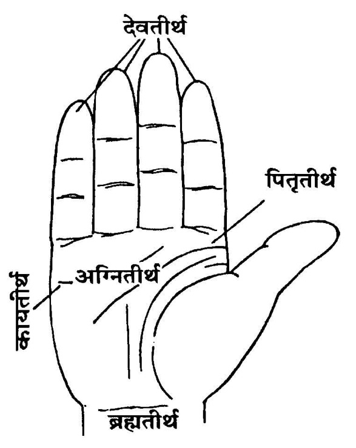
(क) अवनेजन—पुन: जलसे भूमिको सींच दे। इसके बाद जल, तिल, चन्दन और श्वेत पुष्प लेकर अवनेजनका संकल्प करे—
अद्य .....गोत्र (स्त्री हो तो .....गोत्रे).....प्रेत (स्त्री हो तो .....प्रेते)मृतिस्थाने शवनिमित्तकपिण्डस्थाने अत्रावनेनिक्ष्व ते मया दीयते, तवोपतिष्ठताम्।
इस तरह संकल्प कर पितृतीर्थ (अँगूठे और तर्जनीके मूल)-से प्रोक्षित भूमिपर जल गिरा दे तथा वहाँपर दक्षिणाग्र तीन कुश बिछा दे।
(ख) पिण्डदानका संकल्प—त्रिकुश, तिल, जल और पिण्ड लेकर (बायें हाथसे दाहिने हाथका स्पर्श करते हुए) पिण्डदानका संकल्प करे—
अद्य .....गोत्र (.....गोत्रे) .....प्रेत (.....प्रेते) मृतिस्थाने शवनिमित्तक एष पिण्डस्ते मया दीयते, तवोपतिष्ठताम्। ऐसा संकल्प कर कुशोंके बीचमें पितृतीर्थसे पिण्डको रख दे।
(ग) प्रत्यवनेजन*—अवनेजनपात्रमें जल, तिल, सफेद चन्दन, सफेद फूल छोड़कर (यदि उसमें जल अवशिष्ट हो तो छोड़ना आवश्यक नहीं) इसे दायें हाथमें रख ले।
* पिण्डके ऊपर जो जल दिया जाता है, उसे ‘प्रत्यवनेजन’ कहा जाता है।
पुन: त्रिकुश, तिल, जल लेकर प्रत्यवनेजनका संकल्प करे—
अद्य .....गोत्र (.....गोत्रे) .....प्रेत (.....प्रेते) मृतिस्थाने शवनिमित्तकपिण्डोपरि अत्र प्रत्यवनेनिक्ष्व ते मया दीयते, तवोपतिष्ठताम्।
इस तरह संकल्प बोलकर पिण्डपर जल छोड़ दे और पुन: पिण्डको उठाकर अर्थीपर (शवके पास) रख दे।
तदनन्तर सव्य होकर भगवान्से प्रार्थना करे—
अनादिनिधनो देव: शङ्खचक्रगदाधर:।
अक्षय्य: पुण्डरीकाक्ष प्रेतमोक्षप्रदो भव॥
भगवान्का नामोच्चारण करते हुए सबके साथ शवको उठाकर घरके बाहरी दरवाजेपर उतारकर उत्तरकी ओर सिर करके रख दे।
२. पान्थनिमित्तक दूसरा पिण्डदान
अपसव्य होकर द्वारपर दक्षिणाभिमुख बैठ जाय। दाहिने हाथमें त्रिकुश, तिल, जल लेकर दूसरे पिण्डदानका प्रतिज्ञा-संकल्प करे—
प्रतिज्ञा-संकल्प—अद्य .....गोत्र: .....शर्मा/वर्मा/गुप्तोऽहम् .....गोत्रस्य (.....गोत्राया:) .....प्रेतस्य (.....प्रेताया:) प्रेतत्वनिवृत्तिपूर्वकशास्त्रोक्तफलप्राप्त्यर्थं गृहवास्त्वधिदेवतातुष्टॺर्थं निर्गमद्वारे पान्थनिमित्तकं पिण्डदानं करिष्ये। (बोलकर जल गिरा दे।)
(क) अवनेजन—द्वार-भूमिका प्रोक्षण कर दे। जल, तिल, सफेद चन्दन, सफेद फूल लेकर अवनेजनका संकल्प करे—
अद्य ....गोत्र (....गोत्रे) ....प्रेत (....प्रेते) निर्गमद्वारे पान्थनिमित्तकपिण्डस्थाने अत्रावनेनिक्ष्व ते मया दीयते, तवोपतिष्ठताम्।
—ऐसा संकल्प कर प्रोक्षित भूमिपर पितृतीर्थसे आधा जल गिरा दे। वहाँपर दक्षिणाग्र तीन कुश बिछा दे।
(ख) पिण्डदानका संकल्प—दाहिने हाथमें त्रिकुश, तिल, जल और पिण्डको लेकर (बायें हाथसे दाहिने हाथका स्पर्श करते हुए) पिण्डदानका संकल्प करे—
अद्य .....गोत्र (.....गोत्रे) .....प्रेत (.....प्रेते) निर्गमद्वारे पान्थनिमित्तक एष पिण्डस्ते मया दीयते, तवोपतिष्ठताम्। ऐसा बोलकर कुशोंके बीचमें पितृतीर्थसे पिण्ड रख दे।
(ग) प्रत्यवनेजन—अवनेजनपात्रमें जल, तिल, श्वेत चन्दन, श्वेत पुष्प छोड़कर पात्रको दायें हाथमें रख ले। फिर त्रिकुश, जल, तिल लेकर प्रत्यवनेजनका संकल्प करे—
अद्य .....गोत्र (.....गोत्रे) .....प्रेत (.....प्रेते) निर्गमद्वारे पान्थनिमित्तकपिण्डोपरि अत्र प्रत्यवनेनिक्ष्व ते मया दीयते, तवोपतिष्ठताम्। बोलकर पिण्डके ऊपर प्रत्यवनेजन-जल डाल दे।
इसके बाद पिण्डको अर्थीपर (शवके पास) रखकर सव्य होकर निम्न मन्त्रसे भगवान्की प्रार्थना करे—
अनादिनिधनो देव: शङ्खचक्रगदाधर:।
अक्षय्य: पुण्डरीकाक्ष प्रेतमोक्षप्रदो भव॥
शवयात्रा
आत्मीयजनोंके साथ जोरसे भगवन्नाम (‘राम नाम सत्य है’, ‘हरि बोल’ आदि)-का उच्चारण करते हुए शवको कन्धोंपर उठा ले। जो बड़े हैं, उन्हें आगे कर और छोटी उम्रवालोंको पीछे कर* यात्रा प्रारम्भ कर दे।
* ज्येष्ठप्रथमा: कनिष्ठजघन्या गच्छेयु:। (निर्णयसिन्धुमें आश्वलायनका वचन)
३. खेचरनिमित्तक तीसरा पिण्डदान
चौराहा आनेपर पवित्र स्थानमें शवको कन्धोंसे उतारकर उत्तरकी ओर सिर करके रख दे।
क्रियाकर्ता अपसव्य हो जाय और दक्षिणकी ओर मुख कर बैठ जाय। दायें हाथमें त्रिकुश, तिल और जल लेकर तीसरे पिण्डदानका प्रतिज्ञा-संकल्प करे—
प्रतिज्ञा-संकल्प—अद्य .....गोत्र: .....शर्मा/वर्मा/गुप्तोऽहम् .....गोत्रस्य (.....गोत्राया:) .....प्रेतस्य (.....प्रेताया:) प्रेतत्वनिवृत्तिपूर्वकशास्त्रोक्तफलप्राप्त्यर्थं उपघातकभूतापसारणार्थं चतुष्पथे खेचरनिमित्तकं पिण्डदानं करिष्ये। ऐसा बोलकर जल भूमिपर छोड़ दे।
(क) अवनेजन—श्राद्धकर्ता जलसे भूमिका प्रोक्षण कर ले। अवनेजनपात्रमें जल, तिल, सफेद चन्दन और सफेद फूल छोड़कर इसे दायें हाथमें रख ले। पुन: बायें हाथसे इसमें त्रिकुश, तिल तथा जल लेकर निम्न संकल्प करे—
अद्य .....गोत्र (.....गोत्रे) .....प्रेत (.....प्रेते) चतुष्पथे खेचरनिमित्तकपिण्डस्थाने अत्रावनेनिक्ष्व ते मया दीयते, तवोपतिष्ठताम्। ऐसा बोलकर प्रोक्षित भूमिपर जल गिरा दे। वहाँ दक्षिणाग्र तीन कुश बिछा दे।
(ख) पिण्डदानका संकल्प—पुन: त्रिकुश, तिल, जल और पिण्डको दायें हाथमें लेकर (बायें हाथसे दाहिने हाथका स्पर्श करते हुए) पिण्डदानका संकल्प करे—
अद्य .....गोत्र (.....गोत्रे) .....प्रेत (.....प्रेते) चतुष्पथे खेचरनिमित्तक एष पिण्डस्ते मया दीयते, तवोपतिष्ठताम्। —ऐसा बोलकर कुशोंके मध्य पिण्डको पितृतीर्थसे रख दे।
(ग) प्रत्यवनेजन—अवनेजनपात्रमें जल, तिल, सफेद चन्दन, सफेद फूल छोड़कर पात्रको दाहिने हाथमें रख ले। फिर बायें हाथसे त्रिकुश, जल, तिल लेकर निम्नलिखित संकल्प करे—
अद्य .....गोत्र (.....गोत्रे) .....प्रेत (.....प्रेते) चतुष्पथे खेचरनिमित्तकपिण्डोपरि अत्र प्रत्यवनेनिक्ष्व ते मया दीयते, तवोपतिष्ठताम्। —ऐसा बोलकर पिण्डपर पितृतीर्थसे जल चढ़ा दे।
इसके बाद पिण्डको अर्थीपर रखकर सव्य हो जाय और निम्न मन्त्रसे भगवान्से प्रार्थना करे—
अनादिनिधनो देव: शङ्खचक्रगदाधर:।
अक्षय्य: पुण्डरीकाक्ष प्रेतमोक्षप्रदो भव॥
भगवान्के नामका उच्चारण करते हुए शवको उठा ले और चल दे।
४. भूतनिमित्तक चौथा पिण्डदान
विश्रामस्थानपर पहुँचकर शवको कन्धोंसे उतारकर रख दे।
क्रियाकर्ता दक्षिणकी ओर मुँह करके अपसव्य हो बैठ जाय। दायें हाथमें त्रिकुश, तिल और जल लेकर चौथे पिण्डदानका प्रतिज्ञा-संकल्प करे—
प्रतिज्ञा-संकल्प—अद्य .....गोत्र: .....शर्मा/वर्मा/गुप्तोऽहम् .....गोत्रस्य (.....गोत्राया:) .....प्रेतस्य (.....प्रेताया:) प्रेतत्वनिवृत्तिपूर्वकशास्त्रोक्तफलप्राप्त्यर्थं देहस्याहवनीययोग्यताभावसम्पादकयक्षराक्षसपिशाचादितुष्टॺर्थं विश्रामस्थाने भूतनिमित्तकं पिण्डदानं करिष्ये।—ऐसा बोलकर संकल्प-जल भूमिपर छोड़ दे।
(क) अवनेजन—भूमिको जलसे सींच दे। अवनेजनपात्रमें जल, तिल, सफेद चन्दन, सफेदफूल डालकर दाहिने हाथमें रख ले। बायें हाथसे इसमें त्रिकुश, तिल, जल रखकर अवनेजनका संकल्प करे—
अद्य .....गोत्र (.....गोत्रे) .....प्रेत (.....प्रेते) विश्रामस्थाने भूतनिमित्तकपिण्डस्थाने अत्रावनेनिक्ष्व ते मया दीयते, तवोपतिष्ठताम्।
—ऐसा बोलकर प्रोक्षित भूमिपर अवनेजन जल छोड़ दे और वहाँपर दक्षिणाग्र तीन कुश बिछा दे।
(ख) पिण्डदानका संकल्प—इसके बाद त्रिकुश, तिल, जल और पिण्ड लेकर बायें हाथसे दाहिने हाथका स्पर्श करते हुए पिण्डदानका संकल्प करे—
अद्य ....गोत्र (....गोत्रे) ....प्रेत (....प्रेते) देहस्याहवनीययोग्यताभावसम्पादकयक्षराक्षसपिशाचादि-तुष्टॺर्थं भूतनिमित्तक एष पिण्डस्ते मया दीयते, तवोपतिष्ठताम्। —ऐसा बोलकर कुशोंके बीचमें पिण्डको पितृतीर्थसे रख दे।
(ग) प्रत्यवनेजन— अवनेजनपात्रमें जल अवशिष्ट हो तो जल न डाले। अन्यथा तिल, जल, सफेद चन्दन, सफेद फूल डालकर इस पात्रको अपने दाहिने हाथमें रख ले। फिर बायें हाथसे त्रिकुश, तिल, जल लेकर संकल्प करे—
अद्य .....गोत्र (.....गोत्रे) .....प्रेत (.....प्रेते) विश्रामस्थाने भूतनिमित्तकपिण्डोपरि अत्र प्रत्यवनेनिक्ष्व ते मया दीयते, तवोपतिष्ठताम्। —ऐसा संकल्प बोलकर पिण्डपर पितृतीर्थसे जल छोड़ दे।
इसके बाद पिण्डको अर्थीपर रखकर सव्य हो जाय और निम्न मन्त्रसे भगवान्की प्रार्थना करे—
अनादिनिधनो देव: शङ्खचक्रगदाधर:।
अक्षय्य: पुण्डरीकाक्ष प्रेतमोक्षप्रदो भव॥
भगवान्के नामोंका उच्चारण करते हुए शवको उठाकर श्मशान पहुँचाये। यदि गंगा आदि नदी हो तो शवको डुबाकर स्नान कराये और उत्तरकी* ओर सिरकर शवको भूमिपर रख दे।
* शवदाहसे पूर्व शवका सिरहाना उत्तर अथवा पूर्वकी ओर करनेका वचन है, किंतु परम्परासे उत्तरकी ओर सिरहाना करना प्रशस्त है—
(क) प्राक् शिरसं उदक् शिरसं वा भूमौ निवेशयेत्।
(हरिहरभाष्य)
(ख) ततो नीत्वा श्मशानेषु स्थापयेदुत्तरामुखम्।
(गरुडपुराण)
एक वचन यह भी है कि ‘दक्षिणशिरसं कृत्वा सचैलं तु शवं तथा।’ इसमें शवको दक्षिणकी ओर सिर कर लिटानेको लिखा गया है। यह नियम सामवेदियोंके लिये है। अन्य लोगोंको तो उत्तरकी ओर ही सिर रखना चाहिये और उत्तान ही लिटाना चाहिये—‘सामेतरेषामुत्तरशिरस्त्वम्।’(श्राद्धतत्त्व)
५. साधकनिमित्तक पाँचवाँ पिण्डदान
चिताभूमिका संस्कार—जहाँ कूड़ा, केश आदि न हो, ऐसे स्थानको झाड़कर गोबर, मिट्टीसे लीप दे तथा भूमिकी प्रार्थना करे—
अपसर्पन्तु ते प्रेता ये केचिदिह पूर्वजा:॥
भूमिपर कुश बिछा दे। उसपर स्वयं या सगोत्रियोंके द्वारा चिता बनवाये, जो उत्तरसे दक्षिणतक लगभग चार हाथ लम्बी हो। चितामें तुलसी, चन्दन, बेल, पीपल, आम, गूलर, बरगद, शमी आदि यज्ञीय काष्ठ भी डाले। द्विजेतरोंसे चिता न बनवाये। इस चितापर शवको लिटा दे।१ मृतकके सभी अंगोंपर तुलसीकी सूखी लकड़ी रख दे।२ शवके सर्वांगपर घृतका लेप करे। चन्दन एवं यज्ञीय काष्ठ आदिको शवपर रखे। नेत्र, मुख आदिपर कर्पूर रख दे। शवके ऊपर ओढ़ाये गये चद्दरका कोना फाड़कर उस चद्दरको श्मशानके अधिपतिको दे दे। शवपर कपड़ा रहने दिया जाय, नग्न दाह न करे।३
१. (क) भूप्रदेशे शुचौ देशे पश्चाच्चित्यादिलक्षणे।
तत्रोत्तानं निपात्यैनं दक्षिणाशिरसं मुखे॥
(छन्दोगपरिशिष्टमें कात्यायनका मत) चितामें शवको दक्षिण सिर करके उत्तानदेह रख दे।
(ख) आदिपुराणके इस वचन—‘अधोमुखो दक्षिणादिक् चरणस्तु पुमानिति।
स्वगोत्रजै: गृहीत्वा तु चितामारोप्यते शव:॥
उत्तानदेहा नारी तु सपिण्डैरपि बन्धुभि:।’—के अनुसार पुरुषको उत्तरकी तरफ सिर तथा अधोमुख (नीचेकी तरफ मुख करके) चितापर स्थापित करना चाहिये तथा स्त्रीको उत्तर सिर तथा उत्तानदेह करके रखना चाहिये। शुद्धितत्त्वादि ग्रन्थोंमें ऐसी ही व्यवस्था है।
पारस्करगृह्यसूत्रके ‘विवाहश्मशानयोर्ग्रामं प्रविशतात्’ इस वचनसे देशाचारके अनुसार करना चाहिये।
२. दत्त्वा तु तुलसीकाष्ठं सर्वाङ्गेषु मृतस्य च।
पश्चाद् य: कुरुते दाहं सोऽपि पापात् प्रमुच्यते॥
तुलसीकाष्ठदग्धस्य न तस्य पुनरावृति:॥
(स्कन्दपु०, पूजाप्र०)
जो मृतकके सर्वांगमें तुलसीकाष्ठ देकर दाह करता है, वह भी पापसे शुद्ध होता है। तुलसीकाष्ठसे दाह करनेपर उस जीवकी पुनरावृत्ति नहीं होती।
३. ‘नग्नदेहं दहेन्नैव किञ्चिद्देयं परित्यजेत्।’ (प्रचेता)
चिताके दक्षिण भागमें अपसव्य होकर दक्षिणकी ओर मुँहकर बैठ जाय। दायें हाथमें त्रिकुश, तिल, और जल लेकर चितानिमित्तक पाँचवें पिण्डदानकी प्रतिज्ञा करे—
प्रतिज्ञा-संकल्प—अद्य .....गोत्र: .....शर्मा/वर्मा/गुप्तोऽहम् .....गोत्रस्य (.....गोत्राया:) .....प्रेतस्य (.....प्रेताया:) प्रेतत्वनिवृत्तिपूर्वकशास्त्रोक्तफलप्राप्त्यर्थं चितायां शवहस्ते साधकनिमित्तकं पिण्डदानं करिष्ये। —ऐसा बोलकर संकल्प-जल छोड़ दे।
(क) अवनेजन—भूमिको सींच दे। नये अवनेजनपात्रमें जल, तिल, सफेद चन्दन, सफेद फूल छोड़कर दायें हाथमें रख ले। त्रिकुश, जल और तिल लेकर अवनेजनका संकल्प करे—
अद्य .....गोत्र (.....गोत्रे) .....प्रेत (.....प्रेते) चितायां साधकनिमित्तकपिण्डस्थाने अत्रावनेनिक्ष्व ते मया दीयते, तवोपतिष्ठताम्।
-ऐसा बोलकर प्रोक्षित भूमिपर पितृतीर्थसे अवनेजनजल गिरा दे। वहाँपर दक्षिणाग्र तीन कुश बिछा दे।
(ख) पिण्डदानका संकल्प—दायें हाथमें त्रिकुश, तिल, जल और पिण्ड लेकर बायें हाथसे दाहिने हाथका स्पर्श करते हुए संकल्प करे—
अद्य .....गोत्र (.....गोत्रे) .....प्रेत (.....प्रेते) प्रेतत्वनिवृत्तिपूर्वकशास्त्रोक्तफलप्राप्त्यर्थं चितायां साधकनिमित्तक एष पिण्डस्ते मया दीयते, तवोपतिष्ठताम्।—ऐसा बोलकर कुशोंके मध्य पितृतीर्थसे पिण्ड रख दे।
(ग) प्रत्यवनेजन—अवनेजनपात्रमें यदि जल अवशिष्ट न हो तो जल, तिल, सफेद चन्दन,सफेद फूल डालकर दायें हाथमें रख ले, पुन: बायें हाथसे जल, तिल, त्रिकुश लेकर प्रत्यवनेजनका संकल्प करे—
अद्य .....गोत्र (.....गोत्रे) .....प्रेत (.....प्रेते) चितायां साधकनिमित्तकपिण्डोपरि अत्र प्रत्यवनेनिक्ष्व ते मया दीयते, तवोपतिष्ठताम्। संकल्पका जल पितृतीर्थसे पिण्डपर डाल दे।
फिर पिण्डको उठाकर शवके हाथमें रख दे।*
* 'चितायां शवहस्तके'।
इसके बाद सव्य होकर भगवान्की प्रार्थना करे—
अनादिनिधनो देव: शङ्खचक्रगदाधर:।
अक्षय्य: पुण्डरीकाक्ष प्रेतमोक्षप्रदो भव॥
क्रव्याद अग्निकी पूजा—चिताकी दाहिनी ओर वेदीपर अथवा किसी पात्रमें क्रव्याद अग्नि* की स्थापना निम्न मन्त्रसे करे—
* कर्पूर अथवा घीकी बत्तीसे स्वतः अग्नि तैयार कर लेनी चाहिये। अन्य किसीसे अग्नि नहीं लेनी चाहिये।
चाण्डालाग्निरमेध्याग्निः सूतिकाग्निश्च कर्हिचित्।
पतिताग्निश्चिताग्निश्च न शिष्टग्रहणोचितः॥
(निर्णयसिन्धुमें देवलका वचन)
अर्थात् चाण्डालकी अग्नि, अमेध्याग्नि (अपित्र अग्नि), सूतिकाग्नि, पतिताग्नि और चिताग्निको शिष्ट लोग कभी भी ग्रहण न करें।
क्रव्यादनामानमग्निं प्रतिष्ठापयामि।
पूजन—‘क्रव्यादाग्नये नम:’ इस मन्त्रसे गन्धाक्षत-पुष्पादिसे अग्निकी संक्षिप्त पूजा करे।
प्रार्थना—निम्न मन्त्रसे अग्निकी प्रार्थना करे—
त्वं भूतकृज्जगद्योने त्वं लोकपरिपालक:।
उक्त: संहारकस्तस्मादेनं स्वर्गं मृतं नय॥
शवदाह१ (सिरकी ओर अग्नि-ज्वालन)—इसके बाद अपसव्य हो जाय। चितापर जल छिड़क दे। फिर इस क्रव्याद अग्निको सरपत आदिपर रखकर निम्नलिखित मन्त्रोंको पढ़ते हुए चिताकी तीन या एक परिक्रमा कर सिरकी ओर आग प्रज्वलित करे२—
कृत्वा तु दुष्कृतं कर्म जानता वाऽप्यजानता।
मृत्युकालवशं प्राप्तं नरं पञ्चत्वमागतम्॥
धर्माऽधर्मसमायुक्तं लोभमोहसमावृतम्।
दहेयं सर्वगात्राणि दिव्यान् लोकान् स गच्छतु॥
(वाराहपुराण, निर्णयसिन्धु)
असौ स्वर्गाय लोकाय स्वाहा।
१. पंचकमें मरनेपर शवदाह
धनिष्ठार्द्ध, शतभिषा, पूर्वाभाद्रपद, उत्तराभाद्रपद और रेवती—इन पाँचों नक्षत्रोंको ‘पंचक’ कहा जाता है। यदि कोई पंचकमें मर जाता है तो वह वंशजोंको भी मार डालता है। त्रिपुष्कर और भरणी नक्षत्रसे भी यही अनर्थ प्राप्त होता है—
धनिष्ठापञ्चके जीवो मृतो यदि कथञ्चन।
त्रिपुष्करे याम्यभे वा कुलजान् मारयेद् ध्रुवम्॥
तत्रानिष्टविनाशार्थं विधानं समुदीर्यते।
दर्भाणां प्रतिमा: कार्या: पञ्चोर्णासूत्रवेष्टिता:॥
यवपिष्टेनानुलिप्तास्ताभि: सह शवं दहेत्।
प्रेतवाह: प्रेतसख: प्रेतप: प्रेतभूमिप:॥
प्रेतहर्ता पञ्चमस्तु नामान्येतानि चक्रमात्।
सूतकान्ते तत: पुत्र: कुर्याच्छान्तिकपौष्टिकम्॥
(ब्रह्मपुराण)
ऐसी स्थितिमें अनिष्टके निवारणके लिये कुशोंकी पाँच प्रतिमा (पुत्तल) बनाकर सूत्रसे वेष्टितकर जौके आटेकी पीठीसे उसका लेपन कर उन प्रतिमाओंके साथ शवका दाह करे। पुत्तलोंके नाम क्रमश: इस प्रकार हैं—प्रेतवाह, प्रेतसखा, प्रेतप, प्रेतभूमिप तथा प्रेतहर्ता।
पुत्तलदाहका संकल्प—अद्य .....शर्मा/वर्मा/गुप्तोऽहम् .....गोत्रस्य (.....गोत्राया:) .....प्रेतस्य (.....प्रेताया:) धनिष्ठादिपञ्चकजनितवंशानिष्टपरिहारार्थं पञ्चकविधिं करिष्ये।
ऐसा संकल्प कर पाँचों पुतलोंका पूजन करे—
पुत्तलपूजन—प्रेतवाहाय नम:, प्रेतसखाय नम:, प्रेतपाय नम:, प्रेतभूमिपाय नम:, प्रेतहर्त्रे नम:। इमानि गन्धाक्षतपुष्पधूपदीपादीनि वस्तूनि युष्मभ्यं मया दीयन्ते युष्माकमुपतिष्ठन्ताम्।
—ऐसा बोलकर पाँचों प्रेतोंको गन्ध, अक्षत, पुष्प, धूप तथा दीप आदि वस्तुएँ प्रदानकर उनका पूजन करे।
पूजनके बाद प्रेतवाह नामक पहले पुतलेको शवके सिरपर, दूसरेको नेत्रोंपर, तीसरेको बायीं कोखपर, चौथेको नाभिपर और पाँचवेंको पैरोंपर रखकर ऊपर लिखे नाममन्त्रोंसे क्रमपूर्वक पाँचोंपर घीकी आहुति दे। जैसे—(१) प्रेतवाहाय स्वाहा, (२) प्रेतसखाय स्वाहा, (३) प्रेतपाय स्वाहा, (४) प्रेतभूमिपाय स्वाहा और (५) प्रेतहर्त्रे स्वाहा।
इसके बाद शवका दाह करे।
निर्णयसिन्धु और धर्मसिन्धुके आधारपर विशेष बात यह बतायी गयी है कि यदि मृत्यु पंचकके पूर्व हो गयी हो और दाह पंचकमें होना हो तो पुत्तलोंका विधान करे तब शान्तिकी आवश्यकता नहीं रहती। इसके विपरीत कहीं पंचकमें मृत्यु हो गयी हो और दाह पंचकके बाद हुआ हो तो शान्तिकर्म करे। ‘नक्षत्रान्तरे मृतस्य पञ्चके दाहप्राप्तौ पुत्तलविधिरेव न शान्तिकम्। पञ्चकमृतस्याश्विन्यां दाहप्राप्तौ शान्तिकमेव न पुत्तलविधि:।’(धर्मसिन्धुमें उ० परि० ३)—यदि मृत्यु भी पंचकमें हुई हो और दाह भी पंचकमें हो तो पुत्तलदाह तथा शान्ति—दोनों कर्म करे।
२. शिर:स्थाने प्रदापयेत्। (वाराहपुराण)
कपालक्रिया
कपालक्रिया—जब शव आधा जल जाय, तब कपालक्रिया करे। बाँससे शवके सिरपर चोट पहुँचानी चाहिये (यतियोंकी श्रीफलसे कपालक्रिया करनी चाहिये) और उसपर घृत डाल देना चाहिये।१ तदनन्तर उच्च स्वरसे रोना चाहिये।२
१. अर्धे दग्धेऽथवा पूर्णे स्फोटयेत् तस्य मस्तकम्।
गृहस्थानां तु काष्ठेन यतीनां श्रीफलेन च॥
(गरुडपुराण-सारोद्धार १०।५६)
२. रोदितव्यं ततो गाढमेवं तस्य सुखं भवेत्।
(गरुडपुराण, प्रेतखण्ड १५।५१)
तब जोरसे रोनेपर प्राणीको सुख मिलता है।
संसारकी नश्वरताका प्रतिपादन
संसारकी नश्वरताका प्रतिपादन—इसके बाद सम्बन्धीजन घास आदिपर बैठ जायँ और संसारकी नश्वरताका प्रतिपादन करें। स्वयं श्मशान ही संसारसे वैराग्य उत्पन्न कर देता है। वैराग्यके बाद भगवान् और उनकी आज्ञाके रूप कर्तव्यके पालनकी ओर दृष्टि अवश्य जानी चाहिये।
चितामें सात समिधाएँ डालना
चितामें सात समिधाएँ डालना*—एक-एक बित्तेकी सात यज्ञीय लकड़ियाँ लेकर दाहकर्ता शवकी सात प्रदक्षिणा करे। प्रत्येक प्रदक्षिणाके अन्तमें ‘क्रव्यादाय नमस्तुभ्यम्’ मन्त्रसे एक-एक समिधा चितामें डालता जाय।
* गच्छेत् प्रदक्षिणा: सप्त समिद्भि: सप्तभि: सह॥
(आदि०)
दाहसे अवशिष्ट अंशको जलमें डालना
दाहसे अवशिष्ट अंशको जलमें डालना—अन्तमें शवका किंचित् भाग अर्थात् कपोत-परिमाण (कबूतरके बराबरतक) जलमें डाल देना चाहिये, पूरा जलाना मना है।*
* नि:शेषस्तु न दग्धव्य: शेषं किञ्चित् त्यजेत् तत:।
(परम श्रद्धेय स्वामीजी श्रीरामसुखदासजी महराजने यह बताया था कि उस अंशको जीवजन्तु खाकर विष्ठामें परिणत कर देते हैं, अतः पूरा ही जलाना चाहिये, कुछ भी बाकी नहीं छोड़ना चाहिये)
६. अस्थिसंचयननिमित्तक छठा पिण्डदान
शास्त्रका वचन है—
अपरेद्युस्तृतीये वा दाहानन्तरमेव वा।
(अन्त्यकर्मदीपक)
इसका अभिप्राय है कि दूसरे दिन, तीसरे दिन अथवा दाहके बाद तत्काल चिता शान्त कर अपसव्य दक्षिणाभिमुख होकर दायें हाथमें त्रिकुश, तिल, जल लेकर छठे पिण्डदानका इस प्रकार संकल्प करे—
प्रतिज्ञा-संकल्प—अद्य .....गोत्र: .....शर्मा/वर्मा/गुप्तोऽहम् .....गोत्रस्य (.....गोत्राया:) .....प्रेतस्य (.....प्रेताया:) अस्थिसंचयननिमित्तकपिण्डदानं करिष्ये। ऐसा बोलकर संकल्प-जल चिताभूमिपर छोड़ दे।
(क) अवनेजन—संकल्प कर भूमिको सींच दे। अवनेजनपात्र (दोने)-में जल, तिल, सफेद चन्दन और सफेद फूल छोड़कर इसे दायें हाथमें रख ले। पुन: त्रिकुश, तिल, जल लेकर संकल्प करे—
अद्य .....गोत्र (.....गोत्रे) .....प्रेत (.....प्रेते) अस्थिसंचयननिमित्तकपिण्डस्थाने अत्रावनेनिक्ष्व ते मया दीयते, तवोपतिष्ठताम्। बोलकर प्रोक्षित भूमिपर अवनेजन जल गिरा दे। भूमिपर दक्षिणाग्र त्रिकुश बिछा दे।
(ख) पिण्डदानका संकल्प—दायें हाथमें त्रिकुश, तिल, जल और पिण्ड लेकर बायें हाथसे दाहिने हाथका स्पर्श करते हुए संकल्प करे—
अद्य .....गोत्र (.....गोत्रे) .....प्रेत (.....प्रेते) शास्त्रोक्तफलप्राप्त्यर्थम् अस्थिसंचयननिमित्तक एष पिण्डस्ते मया दीयते, तवोपतिष्ठताम्। ऐसा संकल्प बोलकर पितृतीर्थसे कुशोंके मध्य पिण्डको रख दे।
(ग) प्रत्यवनेजन—अवनेजनपात्रमें (जल अवशिष्ट न हो तब) तिल, जल, सफेद चन्दन, सफेद फूल डालकर दायें हाथमें रख ले और प्रत्यवनेजन-संकल्प करे। संकल्पके समय बायें हाथको दायें हाथके नीचे रख ले।
अद्य .....गोत्र (.....गोत्रे) .....प्रेत (.....प्रेते) अस्थिसंचयननिमित्तकपिण्डोपरि अत्र प्रत्यवनेनिक्ष्व ते मया दीयते, तवोपतिष्ठताम्। —ऐसा बोलकर इस जलको पितृतीर्थसे पिण्डपर गिरा दे एवं पिण्डको नदी आदिके जलमें डाल दे।
प्रार्थना—सव्य होकर निम्न मन्त्रसे भगवान् की प्रार्थना करे—
अनादिनिधनो देव: शङ्खचक्रगदाधर:।
अक्षय्य: पुण्डरीकाक्ष प्रेतमोक्षप्रदो भव॥
बलि प्रदान—पिण्डसे जो अन्न बचा लिया गया था। उसीको हाथमें लेकर श्मशानवासी देवोंको निम्न मन्त्रोंको पढ़कर बलि प्रदान करे—
येऽस्मिन् श्मशाने देवा: स्युर्भगवन्त: सनातना:।
तेऽस्मत् सकाशाद् गृह्णीयुर्बलिमष्टाङ्गमक्षयम्॥
प्रेतस्यास्य शुभाँल्लोकान् प्रयच्छन्तु च शाश्वतान्।
अस्माकमायुरारोग्यं सुखं च दत्त मे चिरम्॥
श्मशानवासिभ्यो देवेभ्यो नम:।
सर्वस्वीयभागं सदीपं बलिं गृह्णन्तु।
—ऐसा कहकर दीपकके साथ अन्न-बलि प्रदान करे।
अस्थिसंचयनका मुहूर्त, संचयन तथा प्रक्षेप-विधि१
मंगल, रवि तथा शनि—इन दिनोंमें, युग्मतिथियों२ (षष्ठी-सप्तमी, अष्टमी-नवमी, एकादशी-द्वादशी, चतुर्दशी-पूर्णिमा तथा प्रतिपदा-अमावास्या)-में, एकपाद (कृत्तिका, उत्तराफाल्गुनी तथा उत्तराषाढा), द्विपाद (मृगशिरा, चित्रा और धनिष्ठा) और त्रिपाद (कृत्तिका, पुनर्वसु, उत्तराफाल्गुनी ....और पूर्वाभाद्रपद) नक्षत्रोंमें तथा पिण्डदान करनेवालेको अपने जन्मनक्षत्रमें अस्थिसंचयन नहीं करना चाहिये।३
१. जहाँ गंगाके किनारे दाह-संस्कार किया जाय, वहाँ अस्थियोंको तत्काल गंगामें प्रवाहित करनेकी परम्परा है। अस्थिसंचयनकी आवश्यकता नहीं रहती।
२. युग्मानि युगभूतानां षण्मुन्योर्वसुरन्ध्रयो:।
रुद्रेण द्वादशीयुक्ता चतुर्दश्यां तु पूर्णिमा॥
प्रतिपद्यप्यमावास्यातिथ्योर्युग्मं महाफलम्।
(निर्णयसिन्धु पृ० ११९९)
३. भौमार्कमन्दवारेषु तिथियुग्मे विवर्जयेत्।
वर्जयेदेकपादर्क्षे द्विपादर्क्षेऽस्थिसञ्चयम्।
प्रदातृजन्मनक्षत्रे त्रिपादर्क्षे विशेषत:।
(निर्णयसिन्धु पृ० ११९९ में माधवीयमें यमका वचन)
माता और पिताके कुलको छोड़कर जो व्यक्ति अन्य कुलकी अस्थिका संचयन करता है, उसे प्रायश्चित्तके रूपमें चान्द्रायणव्रतका अनुष्ठान करना चाहिये।*
* मातृकुलं पितृकुलं वर्जयित्वा नराधम:।
अस्थीन्यन्यकुलोत्थानि नीत्वा चान्द्रायणं चरेत्।
एतच्च द्रव्यादिलोभेन नयत: न श्रेयोर्थिन इति हरिहर:।
(गौडीयश्राद्धप्रकाश पृ० ४९), (धर्मसिन्धु पृ० ६५९-६०)
यहाँ यह विशेष रूपसे ध्यातव्य है कि धनके लोभके वशीभूत होकर दूसरे गोत्रका अस्थिसंचयन नहीं करना चाहिये, किंतु परोपकारकी दृष्टिसे करुणा एवं कृपावश अनाथ व्यक्तिके संस्कारके रूपमें यदि कोई अस्थिसंचयन करता है तो उसे प्रायश्चित्तरूपमें चान्द्रायणव्रत करनेकी आवश्यकता नहीं है, प्रत्युत करोड़ों यज्ञोंके अनुष्ठानका पुण्य उसे प्राप्त होता है—‘अनाथप्रेतसंस्कार: कोटियज्ञफलप्रद:’ तथा ‘दयया अन्यस्यापि नयने महापुण्यम्’ (धर्मसिन्धु पृ० ६५४)।
गायका दूध डालकर हड्डियोंको तर कर दे। मौन होकर पलाशकी दो लकड़ियोंसे कोयला आदि हटाकर हड्डियोंको अलग कर ले। सबसे पहले सिरकी हड्डियोंको* अलग करे और कनिष्ठिकासे चुने।
* शिरसो वक्षस: पाण्यो: पार्श्वाभ्यां चैव पादत:।
पञ्चगव्येन संस्नाप्य क्षौमवस्त्रेण वेष्टयेत्॥
(निर्णयसिन्धु)
अन्तमें पैरकी हड्डियोंको एकत्र करे। कुश बिछाकर उसके ऊपर रेशम या तीसीके रेशोंसे बना वस्त्र बिछा दे। इसी वस्त्रपर हड्डियोंको रखता जाय। इन्हें पंचगव्यसे सींचकर स्वर्ण, मधु, घी, तिल डाल दे। पुन: सुगन्धित जलसे तर कर दे और सर्वौषधि मिलाकर बाँधकर मिट्टीके बर्तनमें रख दे। इसके बाद दक्षिण दिशाको देखकर ‘नमोऽस्तु धर्माय’ कहकर जलमें प्रवेश करे, फिर ‘स मे प्रीतो भवतु’ कहकर पात्रको जलमें डाल दे। जलसे निकलकर सूर्यका दर्शन करे और ब्राह्मणोंको यथाशक्ति दान दे।*
* स्नात्वा तत: पञ्चगव्येन सिक्त्वा
हिरण्यमध्वाज्यतिलैश्च योज्य:।
ततस्तु मृत्पिण्डपुटे निधाय
पश्यन् दिशं प्रेतगणोपरूढाम्॥
नमोऽस्तु धर्माय वदत्प्रविश्य
जलं स मे प्रीत इति क्षिपेच्च।
उत्थाय भास्वन्तमवेक्ष्य सूर्यं
सदक्षिणां विप्रमुख्याय दद्यात्॥ (निर्णयसिन्धु)
दस दिनोंके भीतर गंगामें अस्थिप्रक्षेप करनेसे मरनेवालेको वही फल प्राप्त होता है जो गंगामें (गंगातटपर) मरनेसे होता है।*
* दशाहाभ्यन्तरे यस्य गङ्गातोयेऽस्थि मज्जति।
गङ्गायां मरणं यादृक् तादृक् फलमवाप्नुयात्॥
(मदनरत्नमें वृद्धमनु)
यदि किसी सुदूर तीर्थमें अस्थिप्रक्षेप करना हो तो अस्थिकलशको वृक्षपर लटका देना चाहिये और दस दिनोंके भीतर तीर्थमें प्रक्षेप कर देना चाहिये। इस यात्रामें अस्थिकलशको रजस्वला आदि अस्पृश्यके दोषसे बचाना चाहिये। कहीं यह दोष आ ही जाय तो लिखे अनुसार प्रायश्चित्त कर लेना चाहिये। फिर पहलेकी तरह दक्षिण दिशाका अवलोकन कर ‘नमोऽस्तु धर्माय’ उच्चारण कर और जलमें प्रवेश कर ‘स मे प्रीतो भवतु’ कहकर पात्रका प्रक्षेप करे। जलसे निकलकर सूर्यदर्शन करे और ब्राह्मणोंको यथाशक्ति दक्षिणा दे।
यदि भूमिमें गाड़ना हो तो दक्षिणसे उत्तरकी ओर प्रादेशमात्र (अँगूठे और तर्जनीके बीचकी दूरी) लम्बा और चार अंगुलका चौड़ा गड्ढा खोदकर उसमें कुश बिछाकर उसपर हल्दीके रंगसे रँगा वस्त्र बिछाकर हड्डियोंको रख दे। फिर गायके घीसे तर कर सुवासित जलसे सींचे और सर्वौषधि मिलाकर गाड़ दे।
घटस्फोट—इसके बाद चिताके भस्म, अंगार आदि सभी वस्तुओंको जलमें बहा दे। इस तरह चिता-स्थलीको साफ कर दे। अन्तमें कोई व्यक्ति क्रियाकर्ताके कन्धेपर जलसे भरा घड़ा रख दे और क्रियाकर्ता पीछेकी ओर न देखते हुए ‘एवं कदापि माऽभूत्’ कहकर घड़ेको पीछे गिरा दे।
स्नान—इसके बाद सब लोग कर्ता तथा बच्चोंको आगे कर दूसरे घाटपर जाकर जलको बायीं ओर घुमाकर मौन होकर स्नान करें।
तिलोदकदान—स्नानके बाद अपसव्यकी स्थितिमें ही सभी लोग दक्षिणकी ओर मुँहकर तिलांजलि दें। त्रिकुश, तिल, जल लेकर संकल्प बोलें—
संकल्प—अद्य .....गोत्र (.....गोत्रे) .....प्रेत (.....प्रेते) चितादाहजनिततापतृषोपशमनाय एष तिलतोयाञ्जलिस्ते मया दीयते, तवोपतिष्ठताम्। ऐसा संकल्प कर तिलांजलि दे।
चौदह पीढ़ीतकके बन्धु-बान्धवोंको दस दिनतक प्रतिदिन वृद्धिक्रमसे अर्थात् पहले दिन एक, दूसरे दिन दो तथा तीसरे दिन तीन—इस प्रकार अंजलिसंख्या बढ़ाते हुए तिलतोयांजलियाँ देनी चाहिये।*
* दिने दिनेऽञ्जलीन् पूर्णान् प्रदद्यात् प्रेतकारणात्।
(गौडीयश्राद्धप्रकाश पृ० ४८)
जो लोग बाहर रहते हों और मृत्युके कुछ दिन बाद उन्हें मृत्युका समाचार प्राप्त हो तो समाचार मिलनेके दिन पूर्व दिनोंकी तिलतोयांजलियोंके साथ तिलांजलियाँ देनी चाहिये। तत्पश्चात् वृद्धिक्रमसे दसवें दिनतक तिलतोयांजलियाँ देनी चाहिये। यदि कोई मृत्युके दस दिनोंके अन्दर तिलतोयांजलि न दे सके तो वह दसवें दिन सभी दिनोंके लिये गिनकर एक संकल्पसे सभी (पचपन) तिलतोयांजलियाँ दे दे। तिलतोयांजलिदानके पृथक्-पृथक् संकल्प इस प्रकार हैं—
(क) एक अंजलिदानका संकल्प—अपसव्य दक्षिणाभिमुख होकर त्रिकुश, तिल, जल लेकर निम्न संकल्प बोले—
अद्य ....गोत्र (....गोत्रे) ....प्रेत (....प्रेते) चितादाहजनिततापतृषोपशमनाय एष तिलतोयाञ्जलिस्ते मया दीयते, तवोपतिष्ठताम्। एक तिलतोयांजलि दे।
(ख) दो अंजलिदानका संकल्प—अपसव्य दक्षिणाभिमुख होकर त्रिकुश, तिल, जल लेकर निम्न संकल्प बोले—
अद्य ....गोत्र (....गोत्रे) ....प्रेत (....प्रेते) चितादाहजनिततापतृषोपशमनाय इमौ तिलतोयाञ्जली ते मया दीयेते, तवोपतिष्ठेताम्। दो तिलतोयांजलियाँ दे।
(ग) तीन या अधिक तिलतोयांजलियोंका संकल्प—अपसव्य दक्षिणाभिमुख होकर त्रिकुश, तिल, जल लेकर निम्न संकल्प बोले—
अद्य ....गोत्र (....गोत्रे) ....प्रेत (....प्रेते) चितादाहजनिततापतृषोपशमनाय इमे तिलतोयाञ्जलय: ते मया दीयन्ते, तवोपतिष्ठन्ताम्। तीन या अधिक तिलतोयांजलियाँ दे।
तत्त्वोपदेश—दाहकर्ता जलसे निकलकर दो सूखे वस्त्र पहन ले। गीले वस्त्रको एक बार निचोड़कर उत्तरकी ओरसे प्रारम्भ कर दक्षिणकी ओरतक सूखनेके लिये फैला दे। पुन: सभी लोग एक जगह बैठ जायँ और प्रियजनके वियोगसे उत्पन्न शोकको इतिहास आदि सुनाकर दूर करें, कहें—
‘मानव-तन नश्वर है, नि:सार है। शरीर तो पृथ्वी, जल, पावक, वायु और आकाशसे बना है और इसको इन्हीं पंचभूतोंमें मिल जाना है। अत: इस शरीरके लिये शोक करना कैसा? ऐसा तो अवश्य होना ही है। हाँ, इस मानव-तन पानेका एक बहुत बड़ा उपयोग यह है कि इस शरीरसे भगवान्को पाया जा सकता है। अत:शोक-मोह छोड़कर भगवान्का ही स्मरण करना चाहिये और उनकी आज्ञा समझकर विहित कर्म ही करना चाहिये।’*
* कृतोदकान् समुत्तीर्णान् मृदुशाद्वलसंस्थितान्।
स्नातानपवदेयुस्तानितिहासै: पुरातनै:॥
मानुष्ये कदलीस्तम्भनि:सारे सारमार्गणम्।
करोति य: स संमूढो जलबुद्बुदसंनिभे॥
पञ्चधा सम्भृत: कायो यदि पञ्चत्वमागत:।
कर्मभि: स्वशरीरोत्थैस्तत्र का परिदेवना॥
(याज्ञ०स्मृ०, प्राय० १।७—९)
श्मशानसे लौटनेके बादके कृत्य—इसके बाद बच्चोंको आगे करके सभी शवयात्री घरकी ओर बढ़ें। पीछे न देखें। दरवाजेपर आकर थोड़ी देर रुक जायँ। वहाँ नीमकी पत्तियाँ चबायें। आचमन करें। जल, गोबर, तेल, मिर्च, पीली सरसों और अग्निका स्पर्श करें। फिर पत्थरपर पैर रखकर घरमें प्रवेश करें।* कुछ देर बैठकर भगवान्का चिन्तन करें और मृतात्माकी शान्तिकी कामना करें।
* (क) अनवेक्षमाणा ग्राममायान्तिरीतीभूता:कनिष्ठपूर्वा:।
निवेशनद्वारे पिचुमन्दपत्राणि विदश्याचम्योदकमग्निं गोमयं गौरसर्षपांस्तैल-
मालभ्याश्मानमाक्रम्य प्रविशन्ति।
(पारस्करगृह्यसूत्र ३।१०।२३-२४)
(ख) इति संश्रुत्य गच्छेयुर्गृहं बालपुर:सरा:।
विदश्य निम्बपत्राणि नियता द्वारि वेश्मन:॥
आचम्याग्न्यादि सलिलं गोमयं गौरसर्षपान्।
प्रविशेयु: समालभ्य कृत्वाऽश्मनि पदं शनै:॥
प्रवेशनादिकं कर्म प्रेतसंस्पर्शिनामपि।
(याज्ञ० स्मृ०, प्रायश्चित्ता० आ० प्र० १।१२—१४)
अशौचमें दाहकर्ता एवं सपिण्डोंके लिये पालनीय नियम*
* क्रीतलब्धाशना: सर्वे स्वपेयुस्ते पृथक् पृथक्।
अक्षारलवणान्ना: स्युर्निमज्जेयुश्च ते त्र्यहम्॥
अमांसभोजनाश्चाध: शयीरन् ब्रह्मचारिण:।
परस्परं न संस्पृष्टा दानाध्ययनवर्जिता:॥
मलिनाश्चाधोमुखाश्च दीना भोगविवर्जिता:।
अङ्गसंवाहनं केशमार्जनं वर्जयन्ति ते॥
मृण्मये पत्रजे वापि भुञ्जीरंस्ते च भाजने।
उपवासं तु ते कुर्युरेकाहमथवा त्र्यहम्॥
(गरुडपुराण, प्रेतखण्ड ५।४—७)
(क) दाहकर्ताके लिये
(१) प्रथम दिन खरीदकर अथवा किसी निकट-सम्बन्धी (ससुराल अथवा ननिहाल)-से भोज्यसामग्री प्राप्त करके कुटुम्बसहित भोजन करना चाहिये।
(२) ब्रह्मचर्यके नियमोंका पालन करना चाहिये।
(३) भूमिपर शयन करना चाहिये।
(४) किसीको न तो छूना और न किसीसे अपनेको छुआना ही चाहिये।
(५) सूर्यास्तसे पूर्व एक समय भोजन बनाकर करना चाहिये।
(६) नमकरहित भोजन करना चाहिये।
(७) मिट्टीके पात्र अथवा पत्तलमें भोजन करना चाहिये।
(८) प्रथम दिन अथवा प्रथम तीन दिनतक उपवास अथवा फलाहार करना चाहिये।
(९) पहले गोग्रास निकालकर तथा प्रेतके निमित्त घरसे बाहर भोजन किसीको देकर अथवा रखकर तब भोजन करना चाहिये।
(१०) प्रेतके उद्देश्यसे अंगपूरक पिण्डदान (दशगात्र-पिण्डदान) दस दिनोंतक प्रतिदिन करना चाहिये अथवा तीसरे दिन (तीन), पाँचवें दिन (दो), सातवें दिन (दो), नवें दिन (दो), दसवें दिन (एक) या इकट्ठे दसवें दिन (दस) पिण्डदान करे। प्रतिदिन पिण्डदान करना उत्तम पक्ष है।
(११) सब प्रकारके भोगोंका परित्याग करना चाहिये तथा दैन्यभावसे रहना चाहिये।
(ख) कुटुम्ब तथा सपिण्डोंके लिये
(१) ब्रह्मचर्यके नियमोंका पालन करना चाहिये।
(२) सबको पृथक्-पृथक् आसनपर शयन करना चाहिये, एक-दूसरेका पारस्परिक स्पर्श न करे।
(३) प्रेतके उद्देश्यसे प्रतिदिन स्नान करना चाहिये तथा जलांजलि देनी चाहिये।
(४) मांस आदि आमिष भोजन नहीं करना चाहिये।
(५) शरीर तथा कपड़ोंमें साबुन नहीं लगाना चाहिये।
(६) केशोंका मार्जन, पैर दबवाना तथा तेल आदिकी मालिश न करे। क्षौरकर्म भी न करे।
(७) पहले, तीसरे, सातवें तथा दसवें दिन बन्धु-बान्धव एक साथ भोजन करें; इससे प्रेतकी तृप्ति होती है।*
* प्रथमेऽह्नि तृतीये च सप्तमे दशमे तथा।
ज्ञातिभि:सह भोक्तव्यमेतत्प्रेतेषु दुर्लभम्॥
(शंख)
(८) प्रेत-सम्बन्धी क्रियासे अतिरिक्त अशौचमें संध्या, दान, जप, होम, स्वाध्याय, पितृतर्पण, ब्राह्मण-भोजन तथा व्रत नहीं करना चाहिये।१ जननाशौच तथा मरणाशौचमें प्राणायाम मन्त्रहीन करना चाहिये और मार्जन-मन्त्रोंका मानस उच्चारण करके मार्जन कर लेना चाहिये तथा गायत्रीका सम्यक् उच्चारण करके सूर्यार्घ देना चाहिये।२
१. संध्यां दानं जपं होमं स्वाध्यायं पितृतर्पणम्।
ब्रह्मभोज्यं व्रतं नैव कर्तव्यं मृतसूतके॥
(गरुडपुराण-सारोद्धार १३।२१)
२. सूतके मृतके कुर्यात् प्राणायामममन्त्रकम्।
तथा मार्जनमन्त्रांस्तु मनसोच्चार्य मार्जयेत्॥
गायत्रीं सम्यगुच्चार्य सूर्यायार्घ्यं निवेदयेत्।
(भारद्वाज-आचारभूषण)
(९) मन्दिरमें न जाय, देवताओंकी पूजा न करे। देवमूर्तिका स्पर्श निषिद्ध है। दान और स्वाध्याय भी वर्जित है।
(१०) किसीको न तो प्रणाम करे, न आशीर्वाद दे।
(११) घरमें प्रतिष्ठित देवताओंकी पूजा किसी ब्राह्मणसे या असगोत्री सम्बन्धीसे अथवा देवालयमें भिजवाकर करवाये, स्वयं न करे।
(१२) दूसरेका भोजन नहीं करना चाहिये तथा दूसरोंको भोजन भी नहीं कराना चाहिये।
मृत व्यक्तिके हितार्थ कृत्य
अखण्ड दीपदान*
* तत्र प्रेतोपकृतये दशरात्रमखण्डितम्।
कुर्यात् प्रदीपं तैलेन वारिपात्रं च मार्तिकम्॥
(देवयाज्ञिककारिका)
जिस दिन मृत्यु हुई है, उस दिनसे आरम्भकर मृतात्माके हितके लिये मृतिस्थान अथवा द्वारपर दस दिनतक प्रदोषकालमें मिट्टीके पात्रमें तिलके तेलका दीप जलाना चाहिये। मुख्य पक्ष अखण्ड दीपका है। यदि सम्भव हो तो किसी सुरक्षित स्थानपर अखण्ड दीपकी व्यवस्था करनी चाहिये। अखण्ड दीप जलानेपर नीचे संकल्पमें ‘एषोऽखण्डदीपस्ते मया दीयते, तवोपतिष्ठताम्’ पद जोड़ना चाहिये। अखण्ड दीप सम्भव न हो तो प्रतिदिन सायंकाल दीपदानका संकल्प इस प्रकार करना चाहिये—
संकल्प—
अद्य .....गोत्रस्य (.....गोत्राया:) .....प्रेतस्य (.....प्रेताया:) यममार्गसंतरणोपकारक: घोरान्धकार- निवर्तक एष दीपस्ते मया दीयते, तवोपतिष्ठताम्।
संकल्पके बाद यह श्लोक पढ़े—
अन्धकारे महाघोरे रविर्यत्र न दृश्यते।
तत्रोपकरणार्थाय दीपोऽयं दीयते मया॥
इसके बाद दीपकको धान्यपर दक्षिणाभिमुख रख दे।*
* प्राङ्मुखोदङ्मुखं दीपं देवागारे द्विजालये।
कुर्याद् याम्यमुखं पैत्र्ये अद्भि: संकल्प्य सुस्थिरम्॥
(निर्णयसिन्धु)
घटबन्धन तथा प्रात: जल-दीपदानविधि
प्रात:काल स्नानकर नदी-तालाबके तटपर सुरक्षित स्थानमें पीपलवृक्षपर एक मिट्टीका घड़ा लटका दे। घड़ेकी पेंदीमें छोटा-सा छिद्र बनाकर कुश अथवा सूतकी बत्ती उसमें इस प्रकार डाले, जिससे कि बूँद-बूँद जल टपकता रहे। घड़ेमें जल भर दे और उसमें तिल छोड़कर घड़ेके मुँहको मिट्टीकी प्यालीसे ढक देना चाहिये।
एक चौड़े मुँहकी हाँडी (मिट्टीका पात्र) दीपकके लिये भी बाँधी जाय, जिसमें चारों ओर छिद्र कर दिये जायँ, ताकि हाँडीके अंदर दीपक सुरक्षित जल सके। तिलतेलपूरित दीपक जलाकर उसे हाँडीमें रख दे। दीपकका मुख दक्षिणकी ओर करना चाहिये।
तदनन्तर पीपलवृक्षके पास भूमिपर बैठ जाय और ‘पुण्डरीकाक्ष: पुनातु’ कहकर अपने ऊपर जल छिड़ककर पवित्र हो जाय। फिर ‘केशवाय नम:, नारायणाय नम:, माधवाय नम:’ कहकर तीन बार आचमन करे और ‘हृषीकेशाय नम:’ बोलकर हाथ धो ले। पवित्री पहन ले और अपसव्य होकर दक्षिणकी ओर मुँह कर बैठ जाय। दायें हाथमें त्रिकुश, तिल और जल लेकर इस प्रकार संकल्प करे—
संकल्प—
अद्य .....गोत्र (.....गोत्रे) .....प्रेत (.....प्रेते) दाहजनिततापोपशमनार्थं महापथगमनजनिताध्व-तापश्रमनिवर्तकाश्वत्थशाखावलम्बितसतिलजलपूर्णघटस्ते मया दीयते, तवोपतिष्ठताम्।
ऐसा कहकर हाथका जल, तिल घड़ेपर छोड़ दे।
तदनन्तर हाथ जोड़कर प्रार्थना करे—
सर्वतापोपशमनमध्वश्रमविनाशनम्।
प्रेततृप्तिकरं वारि पिब प्रेत सुखी भव॥
पुन: त्रिकुश, तिल, जल लेकर दीपदानका संकल्प करे—
संकल्प—
अद्य .....गोत्र (.....गोत्रे) .....प्रेत (.....प्रेते) यममार्गे घोरान्धकारसंतरणोपकारक: अश्वत्थ-शाखावलम्बितघटमध्यस्थ एष दीपस्ते मया दीयते, तवोपतिष्ठताम्।
—ऐसा कहकर हाथका तिल, जल प्रज्वलित दीपकयुक्त हँडियापर छोड़ दे। तदनन्तर हाथ जोड़कर इस प्रकार प्रार्थना करे—
प्रार्थना—
अन्धकारे महाघोरे रविर्यत्र न दृश्यते।
तत्रोपकरणार्थाय दीपोऽयं दीयते मया॥
सव्य होकर पुन: प्रार्थना करे—
अनादिनिधनो देव: शङ्खचक्रगदाधर:।
अक्षय्य: पुण्डरीकाक्ष प्रेतमोक्षप्रदो भव॥
आकाशमें दूध-जलदान
जिस दिन मृत्यु हुई है, उस दिनसे आकाशमें दूध और जल देनेकी विधि है। यदि पहले दिन समयाभाव हो तो दूसरे दिनसे देना चाहिये। तीन-तीन लकड़ियोंको सूतसे बाँधकर दो तिकड़ी बना ले। उन्हें पीपलवृक्षके नीचे रख दे* तथा उनके ऊपर एक-एक मिट्टीका कसोरा अथवा दोनिया रख दे।
* कुछ स्थानोंमें यह परम्परा है कि पिण्डदान (दशगात्र)-के समय काष्ठकी दो तिकड़ी बनाकर जल और दूध वहीं रखा जाता है तथा संकल्पके बाद पिण्डदानके समय पिण्डपर डाल दिया जाता है। देशाचारके अनुसार करना चाहिये।
एक कसोरेमें जल तथा दूसरेमें दूध रखकर निम्न संकल्प करना चाहिये—
संकल्प—
अद्य .....गोत्र: .....शर्मा/वर्मा/ गुप्तोऽहम् .....गोत्रस्य (.....गोत्राया:) .....प्रेतस्य (.....प्रेताया:) क्षुत्पिपासावारणार्थं विहायसि दुग्धजलपूर्णपात्रे ते मया दीयेते, तवोपतिष्ठेताम्।
इस तरह संकल्पका जल छोड़कर आगे बोले—
श्मशानानलदग्धोऽसि परित्यक्तोऽसि बान्धवै:।
इदं नीरमिदं क्षीरमत्र स्नाहि इदं पिब॥
सायंकालका कृत्य
सायंकाल फिर पीपलवृक्षके समीप जाय। पहले दीपदान करे पश्चात् घटमें जल भरे। संकल्प तथा प्रार्थना प्रात:कालके कृत्यके अनुसार करनी चाहिये।
मृतकको भोजनदान
सूर्यास्तसे पहले दाहकर्ता हविष्यान्न स्वयं पकाये (अथवा पारिवारिक जनोंके द्वारा बनवाये)। बनाये हुए भोजनमेंसे सर्वप्रथम गोग्रास निकाला जाय। पुन: अपसव्य होकर प्रेतके उद्देश्यसे भोजन तथा जल बाहर रख दे।*
* कुछ स्थानोंमें प्रेतके उद्देश्यसे किसी एक व्यक्तिको दस दिनतक खिलानेकी परम्परा है।
उस समय इस प्रकार बोले—
‘अद्य .....गोत्र (.....गोत्रे) .....प्रेत (.....प्रेते) क्षुत्तृषादिनिवृत्त्यर्थम् इदमन्नोदकं ते मया दीयते, तवोपतिष्ठताम्।’ तदनन्तर पत्तल आदिपर स्वयं भोजन करे। सूर्य डूबनेके पहले यह कृत्य हो जाना चाहिये।
गरुडपुराणश्रवण
प्रतिदिन अपने सुविधानुसार एक समय निर्धारित कर गरुडपुराणकी कथाका श्रवण करना चाहिये तथा सभी बन्धु-बान्धवोंको भी ध्यानपूर्वक सुनना चाहिये। यह कथा पुण्यप्रद तथा ज्ञानप्रद है।
दशाहकृत्य
गरुडपुराणके अनुसार स्थूल शरीरके नष्ट हो जानेपर यममार्गमें यात्राके लिये आतिवाहिक शरीरकी प्राप्ति होती है। इस आतिवाहिक शरीरके दस अंगोंका निर्माण दशगात्रके दस पिण्डोंसे होता है। जबतक दशगात्रके दस पिण्डदान नहीं होते, तबतक बिना शरीर प्राप्त किये वह जीव वायुरूपमें ही स्थित रहता है। इसलिये दशगात्रके दस पिण्डदान अवश्य करने चाहिये।
दस पिण्डोंके दानसे आतिवाहिक शरीरका निर्माण
दशगात्रके प्रथम पिण्डसे सिर, द्वितीय पिण्डसे कर्ण, नेत्र और नासिका, तृतीय पिण्डसे गला, स्कन्ध, भुजा तथा वक्ष:स्थल, चतुर्थ पिण्डसे नाभि, लिंग अथवा योनि तथा गुदा, पंचम पिण्डसे जानु, जंघा तथा पैर, षष्ठ पिण्डसे सभी मर्मस्थान, सप्तम पिण्डसे सभी नाड़ियाँ, अष्टम पिण्डसे दन्त, लोम आदि, नवम पिण्डसे वीर्य अथवा रज और दशम पिण्डसे शरीरकी पूर्णता, तृप्तता तथा क्षुद्विपर्यय होता है।*
* शिरस्त्वाद्येन पिण्डेन प्रेतस्य क्रियते सदा।
द्वितीयेन तु कर्णाक्षिनासिकाश्च समासत:॥
गलांसभुजवक्षांसि तृतीयेन यथाक्रमात्।
चतुर्थेन तु पिण्डेन नाभिलिङ्गगुदानि च॥
जानुजङ्घे तथा पादौ पञ्चमेन तु सर्वदा।
सर्वमर्माणि षष्ठेन सप्तमेन तु नाडय:॥
दन्तलोमाद्यष्टमेन वीर्यं तु नवमेन च।
दशमेन तु पूर्णत्वं तृप्तता क्षुद्विपर्यय:॥
(श्राद्धविवेक, द्वितीय परि०)
दशाहकृत्यकी ज्ञातव्य बातें
(१) श्राद्धदेश भीड़रहित, एकान्त, पवित्र वन, नदीतट आदि होना चाहिये।*
* अवकाशेषु चोक्षेषु नदीतीरेषु चैव हि।
विविक्तेषु च तुष्यन्ति दत्तेन पितर: सदा॥
(मनु० ३।२०७)
(२) श्राद्धदेशकी सफाई कर उसे गोबरसे लीप देना चाहिये। एक चौकोर वेदी बनानी चाहिये, जो उत्तरकी ओर ऊँची और दक्षिणकी ओर नीची हो।*
* गोमयेनोपलिप्ते तु दक्षिणा प्रवणे स्थले।
श्राद्धं समारभेद् भक्त्या गोष्ठे वा जलसन्निधौ॥
(मत्स्य०, पद्म०)
(३) दशगात्रके प्रथम दिन जिस अन्नसे पिण्ड दिया जाता है, दस दिनतक उसी अन्नसे पिण्ड देना चाहिये।*
* (क) प्रथमेऽहनि यद् द्रव्यं तदेव स्याद् दशाह्निकम्।
(भविष्यपुराण)
(ख) प्रथमेऽहनि यद् दद्यात् तद् दद्यादुत्तरेऽहनि॥
(आदित्यपुराण)
पिण्डदानकी सामग्री*
* दशगात्रके अन्तर्गत दस पिण्डदानकी सामग्री यहाँ लिखी गयी है। प्रतिदिन पिण्डदान करनेवाले प्रतिदिनके अनुपातसे सामग्री ले जायँ।
१-गंगाजल अथवा शुद्ध जल, २-पलाशके पत्तल १०, ३-पत्तेका दोना (जिसमेंसे जल न गिरे) अथवा (हाथसे बनाया हुआ) मिट्टीका दीया१ ८०, ४-धूपबत्ती एक पैकेट, ५-घीकी बत्ती २०, ६-दियासलाई, ७-गायका दूध ५० ग्राम प्रतिदिन, ८-शक्कर, ९-मिट्टीकी हँडिया १०, १०-गोहरी, ११-गायके दूधमें बनी खीर२ अथवा पिण्डके लिये जौका आटा २ किलो, १२-सफेद फूलकी माला प्रतिदिन २, १३-कुश २५, १४-तिल-२०० ग्राम, १५-ऋतुफल १०, १६-सफेद चन्दन घिसा हुआ, १७-मधु ५० ग्राम, १८-बैठनेके लिये आसन, १९-तिलका तेल रक्षादीपके लिये २५० ग्राम तथा मिट्टीका दीया ३०, २०-गो-घृत, २१-सुपारी १०, पान १०, २२-सफेद ऊर्णासूत्र १ मीटर, २३-भृंगराजपत्र १०० ग्राम, २४-खस १०० ग्राम, २५-चावल १ किलो, २६-नैवेद्य (पेड़ा) १०।
१. आसुरेण तु पात्रेण यस्तु दद्यात् तिलोदकम्।
पितरस्तस्य नाश्नन्ति दशवर्षाणि पञ्च च॥
कुलालचक्रघटितमासुरं पात्रमुच्यते।
तदेष हस्तघटितं स्थाल्यादि दैविकं भवेत्॥
(पा०गृ०सू० गदाधरभाष्य)
जो आसुर पात्रके द्वारा तिलोदक प्रदान करता है, उसे उसके पितर ग्रहण नहीं करते। कुम्हारके चाकपर बनाये गये पात्रको आसुर पात्र कहते हैं। अत: उसका प्रयोग नहीं करना चाहिये। हाथसे बनाये गये पात्रका ही प्रयोग करना चाहिये।
२. पावभर गायके दूधमें चावल डालकर पिण्डके लिये गाढ़ी खीर बना लें। खीरसे पिण्डदान करना उत्तम है। खीर सम्भव न हो तो जौके आटेसे पिण्ड बना लें।
षट्पिण्डदानोंके अनुकर्षणकी विधि
मृत्युके उपरान्त दशगात्रके पूर्व मृत्युस्थानसे लेकर अस्थिसंचयनतक छ: पिण्डदान करनेकी विधि है, जो अत्यन्त आवश्यक है, परंतु आजकल अज्ञानवश अथवा कृत्य करानेवाले पुरोहितके उपलब्ध न होनेके कारण कई स्थानोंमें छ: पिण्ड छूट जाते हैं, जिसके कारण मलिनषोडशी अधूरी रह जाती है, मलिनषोडशीके सोलह पिण्ड पूरे नहीं हो पाते। अत: किसी कारणवश जिन लोगोंके मलिनषोडशीके छ: पिण्ड छूट जायँ, उनकी विधि पूरी करनेकी दृष्टिसे यहाँ अनुकर्षण करके प्रारम्भके छ: पिण्डोंका संकल्प लिखा जा रहा है। किसी कारणवश जिनके ये पिण्ड छूट जायँ, उन्हें दशगात्रके पूर्व पिण्डदानकी यह विधि निम्न रीतिसे पूरी कर लेनी चाहिये। यहाँ सुविधाकी दृष्टिसे एकतन्त्रसे प्रतिज्ञासंकल्पके साथ अवनेजन, पिण्डदान तथा प्रत्यवनेजनके संकल्प दिये गये हैं, पिण्डदान आदिकी पूरी प्रक्रिया इसी पुस्तकमें देखनी चाहिये।
छहों पिण्डदानोंके लिये एकतन्त्रसे प्रतिज्ञा-संकल्प—अपसव्य होकर दाहिने हाथमें त्रिकुश, तिल और जल लेकर छहों पिण्डदानोंका निम्न रीतिसे प्रतिज्ञा-संकल्प करे—
अद्य ....गोत्र ....शर्मा/वर्मा/गुप्तोऽहम् ....गोत्रस्य (स्त्री हो तो ....गोत्राया: बोले) ....प्रेतस्य (स्त्री हो तो ....प्रेताया: बोले) प्रेतत्वनिवृत्तिपूर्वकशास्त्रोक्तफलप्राप्त्यर्थं भूम्यधिदेवतातुष्टॺर्थविहितमृतिस्थानसम्बन्धिशवनिमित्तकं प्रथमं गृहवास्त्वधिदेवतातुष्टॺर्थविहितनिर्गमद्वारसम्बन्धिपान्थनिमित्तकं द्वितीयम् उपघातकभूताप-सारणार्थविहितचतुष्पथसम्बन्धिखेचरनिमित्तकं तृतीयं देहस्याहवनीययोग्यताभावसम्पादकयक्षराक्षसादितुष्टॺर्थविहितविश्रामस्थानसम्बन्धिभूतनिमित्तकं चतुर्थं चितायां शवहस्तविहितसाधकनिमित्तकं पञ्चमम् अस्थिसञ्चयनार्थविहितम् अस्थिसञ्चयनिमित्तकं षष्ठं पिण्डदानं च अनुकृष्य करिष्ये। इस तरह बोलकर संकल्पजल गिरा दे।
इस प्रकार छहों पिण्डदानोंका एक साथ संकल्पकर नीचे लिखे अनुसार प्रत्येक पिण्डदानके लिये पृथक्-पृथक् अवनेजन, पिण्डदान तथा प्रत्यवनेजनका संकल्प करे—
१. पहला पिण्डदान
(क) अवनेजन—अद्य .....गोत्र (.....गोत्रे) .....प्रेत .....प्रेते भूम्यधिदेवतातुष्टॺर्थविहितमृति-स्थानसम्बन्धिशवनिमित्तकानुकृष्य क्रियमाणे पिण्डस्थाने अत्रावनेनिक्ष्व ते मया दीयते, तवोपतिष्ठताम्।
(ख) पिण्डदान—अद्य .....गोत्र (.....गोत्रे) .....प्रेत (.....प्रेते) मृतिस्थानसम्बन्धिशव-निमित्तकानुकृष्य एष पिण्डस्ते मया दीयते, तवोपतिष्ठताम्।
(ग) प्रत्यवनेजन—अद्य .....गोत्र (.....गोत्रे) .....प्रेत (.....प्रेते) मृतिस्थाननिमित्तकानुकृष्य क्रियमाणशवनिमित्तकपिण्डोपरि अत्र प्रत्यवनेनिक्ष्व ते मया दीयते, तवोपतिष्ठताम्।
२. दूसरा पिण्डदान
(क) अवनेजन—अद्य ....गोत्र (....गोत्रे) ....प्रेत (....प्रेते) गृहवास्त्वधिदेवतातुष्टॺर्थविहित-निर्गमद्वारसम्बन्धिपान्थनिमित्तकानुकृष्य क्रियमाणे पिण्डस्थाने अत्रावनेनिक्ष्व ते मया दीयते, तवोपतिष्ठताम्।
(ख) पिण्डदान—अद्य .....गोत्र (.....गोत्रे) .....प्रेत (.....प्रेते) निर्गमद्वारसम्बन्धिपान्थनिमित्तकानुकृष्य एष पिण्डस्ते मया दीयते, तवोपतिष्ठताम्।
(ग) प्रत्यवनेजन—अद्य .....गोत्र (.....गोत्रे) .....प्रेत (.....प्रेते) निर्गमद्वारनिमित्तकानुष्य क्रियमाणपान्थनिमित्तकपिण्डोपरि अत्र प्रत्यवनेनिक्ष्व ते मया दीयते, तवोपतिष्ठताम्।
३. तीसरा पिण्डदान
(क) अवनेजन—अद्य .....गोत्र (.....गोत्रे) .....प्रेत (.....प्रेते) उपघातकभूतापसारणार्थविहित-चतुष्पथसम्बन्धिखेचरनिमित्तकानुष्य क्रियमाणे पिण्डस्थाने अत्रावनेनिक्ष्व ते मया दीयते, तवोपतिष्ठताम्।
(ख) पिण्डदान—अद्य .....गोत्र (.....गोत्रे) .....प्रेत (.....प्रेते) चतुष्पथसम्बन्धिखेचरनिमित्तकानुकृष्य एष पिण्डस्ते मया दीयते, तवोपतिष्ठताम्।
(ग) प्रत्यवनेजन—अद्य .....गोत्र (.....गोत्रे) .....प्रेत (.....प्रेते) चतुष्पथनिमित्तकानुकृष्य क्रियमाणखेचरनिमित्तकपिण्डोपरि अत्र प्रत्यवनेनिक्ष्व ते मया दीयते, तवोपतिष्ठताम्।
४. चौथा पिण्डदान
(क) अवनेजन—अद्य .....गोत्र (.....गोत्रे) .....प्रेत (.....प्रेते) देहस्याहवनीययोग्यता-भावसम्पादकयक्षराक्षसपिशाचादितुष्टॺर्थविहितविश्रामस्थानसम्बन्धिभूतनिमित्तकानुकृष्य क्रियमाणे पिण्डस्थाने अत्रावनेनिक्ष्व ते मया दीयते, तवोपतिष्ठताम्।
(ख) पिण्डदान—अद्य ....गोत्र (....गोत्रे) ....प्रेत (....प्रेते) विश्रामस्थानसम्बन्धिभूत-निमित्तकानुकृष्य एष पिण्डस्ते मया दीयते, तवोपतिष्ठताम्।
(ग) प्रत्यवनेजन—अद्य .....गोत्र (.....गोत्रे) .....प्रेत (.....प्रेते) विश्रामस्थाननिमित्तकानुकृष्य क्रियमाणभूतनिमित्तकपिण्डोपरि अत्र प्रत्यवनेनिक्ष्व ते मया दीयते, तवोपतिष्ठताम्।
५. पाँचवाँ पिण्डदान
(क) अवनेजन—अद्य .....गोत्र (.....गोत्रे) .....प्रेत (.....प्रेते) चितास्थानसम्बन्धिसाधक-निमित्तकानुकृष्य क्रियमाणे पिण्डस्थाने अत्रावनेनिक्ष्व ते मया दीयते, तवोपतिष्ठताम्।
(ख) पिण्डदान—अद्य .....गोत्र (.....गोत्रे) .....प्रेत (.....प्रेते) चितास्थानसम्बन्धिसाधक-निमित्तकानुकृष्य एष पिण्डस्ते मया दीयते, तवोपतिष्ठताम्।
(ग) प्रत्यवनेजन—अद्य .....गोत्र (.....गोत्रे) .....प्रेत (.....प्रेते) चितास्थाननिमित्तकानुकृष्य क्रियमाणसाधकनिमित्तकपिण्डोपरि अत्र प्रत्यवनेनिक्ष्व ते मया दीयते, तवोपतिष्ठताम्।
६. छठा पिण्डदान
(क) अवनेजन—अद्य .....गोत्र (.....गोत्रे) .....प्रेत (.....प्रेते) अस्थिसंचयनार्थविहितास्थिसंचयनस्थानसम्बन्ध्यस्थिसंचयननिमित्तकानुकृष्य क्रियमाणे पिण्डस्थाने अत्रावनेनिक्ष्व ते मया दीयते, तवोपतिष्ठताम्।
(ख) पिण्डदान—अद्य .....गोत्र (.....गोत्रे) .....प्रेत (.....प्रेते) अस्थिसंचयनस्थानसम्बन्ध्यस्थि-संचयननिमित्तकानुकृष्य एष पिण्डस्ते मया दीयते, तवोपतिष्ठताम्।
(ग) प्रत्यवनेजन—अद्य .....गोत्र (.....गोत्रे) .....प्रेत (.....प्रेते) अस्थिसंचयनस्थाननिमित्तकानुकृष्य क्रियमाणास्थिसंचयननिमित्तकपिण्डोपरि अत्र प्रत्यवनेनिक्ष्व ते मया दीयते, तवोपतिष्ठताम्।
दशगात्र-पिण्डदानकी विधि
दशगात्रके पिण्डोंको प्रतिदिन देना चाहिये१ अथवा जो लोग प्रतिदिन पिण्डदान नहीं कर सकें, वे तीसरे दिन (तीन), पाँचवें दिन (दो), सातवें दिन (दो), नवें दिन (दो) तथा दसवें दिन (एक)—इस प्रकार दशगात्रके दस पिण्डोंका दान करें।२
१. दिवसे दिवसे देय: पिण्ड एवं क्रमेण तु।
(शुद्धितत्त्वमें आदिपुराणका वचन, अन्त्यकर्मदीपक)
२. प्रथमे च तृतीये वा पञ्चमे सप्तमे तथा।
नवमे दशमे चैव पिण्डदानं प्रकीर्तितम्॥
(वृद्धगार्ग्य)
अथवा जो लोग एक ही दिन देना चाहें, वे दसवें दिन दस पिण्ड एक साथ दें।
माता और पिताके अतिरिक्त किसी अन्य सम्बन्धीका दशगात्र हो रहा हो तो बीचमें अमावास्या आ जानेपर अमावास्याके दिन ही सम्पूर्ण दशगात्रके पिण्ड प्रदान कर देने चाहिये। माता-पिताके दशगात्रके लिये दस दिनतक पिण्डदान करना चाहिये।*
* अन्तर्दशाहे दर्शश्चेत् तत्र सर्वं समापयेत्।
पित्रोऽस्तु यावदाशौचं दद्यात् पिण्डाञ्जलाञ्जलीन्॥
(अन्त्यकर्मदीपक; गौतम)
यहाँ प्रतिदिन दशगात्रके पिण्डदान करनेकी विधि दी जा रही है—
प्रथम पिण्डदान*
* देशाचारके अनुसार कुछ लोग तीसरे दिनसे पिण्डदान प्रारम्भ करते हैं, जिसमें प्रथम तथा द्वितीय दिनके दो पिण्डोंका अनुकर्षण करके तीन पिण्डदान कर दिये जाते हैं।
पिण्डदानके दिन स्नानकर श्राद्धस्थलपर आकर श्राद्धदेशका मार्जन कर पूर्वाभिमुख होकर आसनपर बैठ जाय। भूमिपर दक्षिण दिशाकी ओर तिल छोड़कर उनके ऊपर दक्षिणाभिमुख तिलके तेलका दीपक रखे। निम्न मन्त्र पढ़कर उसे जला दे—
भो दीप ब्रह्मरूपस्त्वं कर्मसाक्षी ह्यविघ्नकृत्।
यावत् कर्मसमाप्ति: स्यात् तावत् त्वं सुस्थिरो भव॥
दीपक श्राद्धतक बुझे नहीं, यह ध्यान रखे।
दो कुशोंकी पवित्री दाहिने हाथकी अनामिकामें और तीन कुशोंकी पवित्री बायें हाथकी अनामिकामें धारण करे। तदनन्तर निम्न मन्त्र पढ़कर तीन आचमन करे—
केशवाय नम:, नारायणाय नम:, माधवाय नम:। तदनन्तर हृषीकेशाय नम: बोलकर अँगूठेके मूल भागसे ओठोंको दो बार पोंछकर हाथ धो ले। फिर अँगूठेसे मुख, नाक, आँख, कान, हृदय तथा नाभिका स्पर्श करे। इसके बाद—
अपवित्र: पवित्रो वा सर्वावस्थां गतोऽपि वा।
य: स्मरेत् पुण्डरीकाक्षं स बाह्याभ्यन्तर: शुचि:॥
‘पुण्डरीकाक्ष: पुनातु’ —ऐसा बोलकर अपने ऊपर तथा सामग्रीके ऊपर कुशोंसे जल छिड़क दे।
बायें हाथमें पीली सरसों लेकर दाहिने हाथसे ढककर निम्न मन्त्र बोले—
नमो नमस्ते गोविन्द पुराणपुरुषोत्तम।
इदं श्राद्धं हृषीकेश रक्ष त्वं सर्वतो दिश:॥
तदनन्तर दाहिने हाथसे सरसोंको पूर्व-पश्चिम आदि दिशाओंमें निम्न मन्त्रोंसे छिड़क दे—
पूर्वमें—प्राच्यै नम:, दक्षिणमें—अवाच्यै नम:, पश्चिममें—प्रतीच्यैै नम:, उत्तरमें—उदीच्यै नम:,आकाशमें—अन्तरिक्षाय नम:, भूमिपर—भूम्यै नम:।
तदनन्तर तिल तथा पुष्प लेकर ‘श्राद्धभूम्यै नम:’ कहकर भूमिपर छोड़ दे।
दायें हाथमें त्रिकुश, तिल तथा जल लेकर अपसव्य दक्षिणाभिमुख होकर शिर:पूरक प्रथम पिण्डदानका प्रतिज्ञा-संकल्प करे—
प्रतिज्ञा-संकल्प—अद्य ....गोत्र: ....शर्मा/वर्मा/गुप्तोऽहम् ....गोत्रस्य (....गोत्राया:) ....प्रेतस्य (....प्रेताया:) प्रेतत्वनिवृत्त्यर्थं शिर:पूरकप्रथमपिण्डदानं करिष्ये।* संकल्पका जल छोड़ दे।
* (क) जो लोग प्रतिदिन पिण्डदान न कर सकें, वे तीसरे दिन-३, पाँचवें दिन-२, सातवें दिन-२ नवें दिन-२ तथा दसवें दिन-१ पिण्डदान कर सकते हैं। वे निम्नलिखित प्रतिज्ञासंकल्प बोलकर ऊपर लिखे अनुसार पिण्डदानकी आगेकी प्रक्रिया पृथक्-पृथक् पूरी करें।
(क) तीसरे दिनका संकल्प—अद्य .....गोत्र: .....नामाऽहम् .....गोत्रस्य (.....गोत्राया:).....प्रेतस्य (.....प्रेताया:) शरीरनिष्पादनार्थं दशगात्रश्राद्धान्तर्गते तृतीयदिने शिर:पूरकं प्रथमंकर्णाक्षिनासिकापूरकं द्वितीयमनुकृष्य गलांसभुजवक्ष:पूरकं तृतीयं पिण्डदानं च करिष्ये।
(ख) पाँचवें दिनका संकल्प—अद्य .....गोत्र: .....नामाऽहम् .....गोत्रस्य (.....गोत्राया:) .....प्रेतस्य (.....प्रेताया:) शरीरनिष्पादनार्थं दशगात्रश्राद्धान्तर्गते पञ्चमदिने नाभिलिङ्गयोनिगुदपूरकं चतुर्थमनुकृष्य जानुजङ्घापादपूरकं पञ्चमं पिण्डदानं च करिष्ये।
(ग) सातवें दिनका संकल्प—अद्य .....गोत्र: .....नामाऽहम् .....गोत्रस्य (.....गोत्राया:).....प्रेतस्य (.....प्रेताया:) शरीरनिष्पादनार्थं दशगात्रान्तर्गते सप्तमदिने सर्वमर्मपूरकं षष्ठमनुकृष्य सर्वनाडीपूरकं सप्तमं पिण्डदानं च करिष्ये।
(घ) नवें दिनका संकल्प—अद्य .....गोत्र: .....नामाऽहम् .....गोत्रस्य (.....गोत्राया:) .....प्रेतस्य (.....प्रेताया:) शरीरनिष्पादनार्थं दशगात्रान्तर्गते नवमदिने दन्तलोमादिपूरकमष्टममनुकृष्य वीर्यरज:पूरकं नवमं पिण्डदानं च करिष्ये।
(ङ) दसवें दिनका संकल्प—अद्य .....गोत्र: .....नामाऽहम् .....गोत्रस्य (.....गोत्राया:) .....प्रेतस्य (.....प्रेताया:) शरीरनिष्पादनार्थं दशगात्रान्तर्गते दशमदिने पूर्णत्वतृप्तताक्षुद्विपर्ययपूरकं च दशमं पिण्डदानं करिष्ये।
किसी कारणवश नौ दिनतक प्रतिदिन पिण्डदान करना सम्भव न हो सका तो दसवें दिन दशगात्रके दसों पिण्ड एक साथ देनेके लिये निम्न संकल्प बोलकर ऊपर लिखे अनुसार दस पिण्डदान एक साथ करे—
अद्य .....गोत्र: .....नामाऽहं .....गोत्रस्य (.....गोत्राया:) .....प्रेतस्य (.....प्रेताया:) दशमदिने दशगात्रसम्बन्धि-शिर:पूरकादिपूर्णत्वतृप्तताक्षुद्विपर्ययपूरकान्तविहितपिण्डेषु नवपिण्डानि अनुकृष्य दशमपिण्डदानं च करिष्ये। (संकल्पका जल छोड़ दे।)
वेदीनिर्माण—तदनन्तर प्रादेश (अँगूठेसे तर्जनीके बीचकी लम्बाई)-मात्र लम्बी और प्रादेशमात्र चौड़ी दक्षिणकी ओर ढालवाली चार अंगुल ऊँची एक वेदी बनाकर उसपर जल छिड़क दे।
इसके बाद पत्तेके दोने या हाथसे बने दीयेमें जल, तिल, सफेद चन्दन और सफेद फूल छोड़कर इसे दायें हाथमें रख ले। पुन: बायें हाथसे इसमें त्रिकुश, तिल, जल लेकर अवनेजनका संकल्प करे।
पिण्ड रखनेके लिये अवनेजनका संकल्प—अद्य .....गोत्र (.....गोत्रे) .....प्रेत (.....प्रेते) शिर:पूरकप्रथमपिण्डस्थाने अत्रावनेनिक्ष्व ते मया दीयते, तवोपतिष्ठताम्।
—ऐसा बोलकर वेदीपर आधा तिल-जल आदि गिरा दे और आधा जल प्रत्यवनेजनके लिये बचाकर अवनेजनपात्र (दोनिया)-को पासमें रख दे। वेदीपर तीन कुशोंको दक्षिणाग्र बिछा दे।
तिल, घी, मधु तथा गोदुग्धसे सिक्त पिण्डको और त्रिकुश, तिल, जल हाथमें लेकर पिण्डदानके लिये निम्न संकल्प बोले—
पिण्डदानका संकल्प—अद्य .....गोत्र (.....गोत्रे) .....प्रेत (.....प्रेते) शिर:पूरकप्रथमपिण्डस्ते मया दीयते, तवोपतिष्ठताम्।
—ऐसा बोलकर बायें हाथकी सहायतासे दाहिने हाथके पितृतीर्थ (अँगूठे और तर्जनीके मध्यभाग)-से वेदीके मध्य कुशोंपर पिण्डको स्थापित करे।
प्रत्यवनेजन—इसके बाद अवनेजनसे बचे हुए जलको पिण्डके ऊपर निम्न संकल्प बोलकर चढ़ा दे और दोनिया हटा दे—
अद्य .....गोत्र (.....गोत्रे) .....प्रेत (.....प्रेते) शिर:पूरकप्रथमपिण्डे अत्र प्रत्यवनेनिक्ष्व ते मया दीयते, तवोपतिष्ठताम्।
पिण्डपूजन—इसके बाद प्रेतको उद्देश्यकर मौन होकर पितृतीर्थसे पिण्डपर ऊनका धागा, सफेद चन्दन (तर्जनीसे), तिल, सफेद फूल चढ़ाये, धूप और दीपक दिखाकर नैवेद्य चढ़ा दे। हाथ धो ले। इसके बाद भृंगराजपत्र और खस पिण्डपर चढ़ा दे। तदनन्तर हाथमें त्रिकुश, तिल तथा जल लेकर संकल्प करे—
अर्चनदानका संकल्प—अद्य .....गोत्र (.....गोत्रे).....प्रेत (.....प्रेते) शिर:पूरकप्रथमपिण्डोपरि एतानि ऊर्णासूत्रगन्धाक्षतपुष्पधूपदीपनैवेद्योशीरभृङ्गराजपत्राणि ते मया दीयन्ते, तवोपतिष्ठन्ताम्।
हाथके कुश, जल, तिलको पिण्डपर छोड़ दे।
तिलतोयांजलिदान—दोनों हाथों (अंजलि)-में त्रिकुश, तिल, जल लेकर संकल्प करे—
अद्य ....गोत्र (....गोत्रे) ....प्रेत (....प्रेते) शिर:पूरकप्रथमपिण्डोपरि एष तिलतोयाञ्जलिस्ते मया दीयते, तवोपतिष्ठताम्।
—ऐसा बोलकर एक तिलतोयांजलि१ पितृतीर्थसे पिण्डपर गिरा दे।
तिलतोयपूर्णपात्रदान—तिल और जलसे भरे पात्र२ (दोनिया)-को पिण्डके समीप रखकर हाथमें त्रिकुश, तिल तथा जल लेकर संकल्प करे—
१. इस अंजलिको वर्धमान तिलतोयांजलि कहते हैं अर्थात् प्रथम पिण्डपर एक, द्वितीय पिण्डपर दो, तृतीय पिण्डपर तीन—इस तरह एक-एक अंजलि प्रतिदिन बढ़ती जाती है। अन्तमें दसवें पिण्डपर दस तिलतोयांजलियाँ दी जाती हैं। इस प्रकार दशगात्रकी सम्पूर्ण वर्धमान तिलतोयांजलियोंकी पूर्ण संख्या ५५ होती है। दिने दिनेऽञ्जलीन् पूर्णान् प्रदद्यात् प्रेतकारणात् । तावद् वृद्धिश्च कर्तव्या यावत्पिण्ड: समाप्यते॥—इति यावद्दशम: पिण्ड: समाप्यते तावदञ्जलिवृद्धि: कार्येत्यर्थ:। (गौडीयश्राद्धप्रकाश पृ० ४८)
२. तिलतोयांजलिकी तरह तिलतोयपूर्णपात्र भी वर्धमानक्रमसे दिये जाते हैं अर्थात् पात्रोंकी संख्या भी बढ़ती जाती है।
अद्य ....गोत्र (....गोत्रे) ....प्रेत (....प्रेते) शिर:पूरकप्रथमपिण्डसमीपे एतत् तिलतोयपूर्णपात्रं ते मया दीयते, तवोपतिष्ठताम्।
इस प्रकार संकल्प पढ़कर हाथका तिल-जल पिण्डके समीप रखे हुए तिलतोयपूर्ण पात्र (दोनिया)-में छोड़ दे। तदनन्तर दोनियाका तिल-जल पिण्डपर चढ़ाकर दोनिया अलग फेंक दे।
आकाशमें दूध और जल देनेकी विधि देशाचारके अनुसार पिण्डदानके समय भी की जा सकती है। जो लोग इसे पीपलकी जड़में न रखकर पिण्डदानके समय करना चाहें, वे इसके बाद दो त्रिकाष्ठिका बनाकर उनके ऊपर एक-एक दोनिया रखें—एक दोनियेमें दूध तथा एकमें जल रखकर इस प्रकार प्रार्थना करें—‘श्मशानानलदग्धोऽसि परित्यक्तोऽसि बान्धवै:। इदं नीरमिदं क्षीरमत्र स्नाहि इदं पिब॥’ दोनियोंका दूध और जल पिण्डपर चढ़ा दे।
वेदीके समीप एक दोनियामें तिल-जल तथा एक पत्तेपर माला-फूल और एक दीपक जलाकर रख दे। हाथमें जल लेकर—इदं माल्यं परिधेहि, इदं पानीयं पिब, अनेन दीपेन पश्य—कहकर उनपर छोड़ दे। पिण्डपर तिल छोड़ दे।
दक्षिणा—त्रिकुश, दक्षिणा-द्रव्य, तिल और जल लेकर संकल्प करे—
अद्य ....गोत्र (....गोत्रे) ....प्रेत (....प्रेते) कृतैतच्छ्राद्धकर्मण: प्रतिष्ठार्थमिदं द्रव्यं ते मया दीयते, तवोपतिष्ठताम्।
—ऐसा कहकर सव्य होकर ब्राह्मणको दक्षिणा दे दे।
प्रार्थना—कर्मकी सम्पूर्णताके लिये भगवान्से प्रार्थना करे—
अनादिनिधनो देव: शङ्खचक्रगदाधर:।
अक्षय्य: पुण्डरीकाक्ष प्रेतमोक्षप्रदो भव॥
नारायण सुरश्रेष्ठ लक्ष्मीकान्त वरप्रद।
अनेन तर्पणेनाथ प्रेतमोक्षप्रदो भव॥
हिरण्यगर्भ पुरुष व्यक्ताव्यक्तस्वरूपधृत्।
अस्य प्रेतस्य मोक्षार्थं सुप्रीतो भव सर्वदा॥
पिण्डप्रक्षेप—श्राद्धके बाद दीपक बुझा दे। पिण्ड तथा श्राद्धमें प्रयुक्त सामग्री (कुशाको छोड़कर) नदी अथवा जलाशयमें डाल दे या पिण्ड गायको खिला दे। वेदीको बिगाड़ देना चाहिये।
द्वितीय पिण्डदान
पिण्डदानके दिन स्नानकर श्राद्धस्थलपर आकर श्राद्धदेशका मार्जनकर पूर्वाभिमुख होकर आसनपर बैठ जाय। भूमिपर दक्षिण दिशाकी ओर तिल छोड़कर उनके ऊपर दक्षिणाभिमुख तिलके तेलका दीपक रखे। निम्न मन्त्र पढ़कर उसे जला दे—
भो दीप ब्रह्मरूपस्त्वं कर्मसाक्षी ह्यविघ्नकृत्।
यावत् कर्मसमाप्ति: स्यात् तावत् त्वं सुस्थिरो भव॥
दीपक श्राद्धतक बुझे नहीं, यह ध्यान रखे।
दो कुशोंकी पवित्री दाहिने हाथकी अनामिकामें और तीन कुशोंकी पवित्री बायें हाथकी अनामिकामें धारण करे। तदनन्तर निम्न मन्त्र पढ़कर तीन आचमन करे—
केशवाय नम:, नारायणाय नम:, माधवाय नम:। तदनन्तर हृषीकेशाय नम: बोलकर अँगूठेके मूल भागसे ओठोंको दो बार पोंछकर हाथ धो ले। फिर अँगूठेसे मुख, नाक, आँख, कान, हृदय तथा नाभिका स्पर्श करे। इसके बाद—
अपवित्र:पवित्रो वा सर्वावस्थां गतोऽपि वा।
य: स्मरेत् पुण्डरीकाक्षं स बाह्याभ्यन्तर: शुचि:॥
‘पुण्डरीकाक्ष: पुनातु’—बोलकर अपने ऊपर तथा सामग्रीके ऊपर कुशोंसे जल छिड़क दे।
बायें हाथमें पीली सरसों लेकर दाहिने हाथसे ढककर निम्न मन्त्र बोले—
नमो नमस्ते गोविन्द पुराणपुरुषोत्तम।
इदं श्राद्धं हृषीकेश रक्ष त्वं सर्वतो दिश:॥
तदनन्तर दाहिने हाथसे सरसोंको पूर्व-पश्चिम आदि दिशाओंमें निम्न मन्त्रोंसे छिड़क दे—
पूर्वमें—प्राच्यै नम:, दक्षिणमें—अवाच्यै नम:, पश्चिममें—प्रतीच्यैै नम:, उत्तरमें—उदीच्यै नम:,आकाशमें—अन्तरिक्षाय नम:, भूमिपर—भूम्यै नम:।
तदनन्तर तिल तथा पुष्प लेकर ‘श्राद्धभूम्यै नम:’ कहकर भूमिपर छोड़ दे।
दायें हाथमें त्रिकुश, तिल तथा जल लेकर अपसव्य दक्षिणाभिमुख होकर कर्णाक्षिनासिकापूरक द्वितीय पिण्डदानका प्रतिज्ञा-संकल्प करे—
प्रतिज्ञा-संकल्प—अद्य .....गोत्र: .....शर्मा/वर्मा/गुप्तोऽहम् .....गोत्रस्य (.....गोत्राया:) .....प्रेतस्य (.....प्रेताया:) प्रेतत्वनिवृत्त्यर्थं कर्णाक्षिनासिकापूरकद्वितीयपिण्डदानं करिष्ये। संकल्पजल छोड़ दे।
वेदीनिर्माण—तदनन्तर प्रादेश (अँगूठेसे तर्जनीके बीचकी लम्बाई)-मात्र लम्बी और प्रादेशमात्र चौड़ी दक्षिणकी ओर ढालवाली चार अंगुल ऊँची एक वेदी बनाकर उसपर जल छिड़क दे।
इसके बाद पत्तेके दोने या हाथसे बने दीयेमें जल, तिल, सफेद चन्दन और सफेद फूल छोड़कर इसे दायें हाथमें रख ले। पुन: बायें हाथसे इसमें त्रिकुश, तिल, जल लेकर अवनेजनका संकल्प करे।
पिण्ड रखनेके लिये अवनेजनका संकल्प—अद्य....गोत्र (....गोत्रे) ....प्रेत (....प्रेते) कर्णाक्षिनासिकापूरकद्वितीयपिण्डस्थाने अत्रावनेनिक्ष्व ते मया दीयते, तवोपतिष्ठताम्।
—ऐसा बोलकर वेदीपर आधा तिल-जल आदि गिरा दे और आधा जल प्रत्यवनेजनके लिये बचाकर अवनेजनपात्र (दोनिया)-को पासमें रख दे। वेदीपर तीन कुशोंको दक्षिणाग्र बिछा दे।
दाहिने हाथमें तिल, घी, मधु तथा गोदुग्धसे सिक्त पिण्डको और त्रिकुश, तिल, जल लेकर पिण्डदानके लिये निम्न संकल्प बोले—
पिण्डदानका संकल्प—अद्य .....गोत्र (.....गोत्रे) .....प्रेत (.....प्रेते) कर्णाक्षिनासिकापूरक-द्वितीयपिण्डस्ते मया दीयते, तवोपतिष्ठताम्।
—ऐसा बोलकर बायें हाथकी सहायतासे दाहिने हाथके पितृतीर्थ (अँगूठे और तर्जनीके मध्यभाग)-से वेदीके मध्य कुशोंपर पिण्डको स्थापित करे।
प्रत्यवनेजन—इसके बाद अवनेजनसे बचे हुए जलको पिण्डके ऊपर निम्न संकल्प बोलकर चढ़ा दे और दोनियाको हटा दे—
अद्य .....गोत्र (.....गोत्रे) .....प्रेत (.....प्रेते) कर्णाक्षिनासिकापूरकद्वितीयपिण्डे अत्र प्रत्यवनेनिक्ष्व ते मया दीयते, तवोपतिष्ठताम्।
पिण्डपूजन—इसके बाद प्रेतको उद्देश्यकर मौन होकर पितृतीर्थसे पिण्डपर ऊनका धागा, सफेद चन्दन (तर्जनीसे), तिल, सफेद फूल चढ़ाये, धूप और दीपक दिखाकर नैवेद्य चढ़ा दे। हाथ धो ले। इसके बाद भृंगराजपत्र और खस पिण्डपर चढ़ा दे। तदनन्तर हाथमें त्रिकुश, तिल तथा जल लेकर संकल्प करे—
अर्चनदानका संकल्प—अद्य .....गोत्र (.....गोत्रे) .....प्रेत (.....प्रेते) कर्णाक्षिनासिकापूरक-द्वितीयपिण्डोपरि एतानि ऊर्णासूत्रगन्धाक्षतपुष्पधूपदीपनैवेद्योशीरभृङ्गराजपत्राणि ते मया दीयन्ते, तवोपतिष्ठन्ताम्।
हाथके कुश, जल, तिलको पिण्डपर छोड़ दे।
तिलतोयांजलिदान—दोनों हाथों (अंजलि)-में त्रिकुश, तिल, जल लेकर संकल्प करे—
अद्य .....गोत्र (.....गोत्रे) .....प्रेत (.....प्रेते) कर्णाक्षिनासिकापूरकद्वितीयपिण्डोपरि एतौ तिलतोयाञ्जली ते मया दीयेते, तवोपतिष्ठेताम्।
—ऐसा बोलकर दो तिलतोयांजलियाँ पितृतीर्थसे पिण्डपर गिरा दे।
तिलतोयपूर्णपात्रदान—तिल और जलसे भरे दो पात्रों (दोनियों)-को पिण्डके समीप रखकर हाथमें कुश, तिल तथा जल लेकर संकल्प करे—
अद्य .....गोत्र (.....गोत्रे) .....प्रेत (.....प्रेते) कर्णाक्षिनासिकापूरकद्वितीयपिण्डसमीपे एते तिलतोयपूर्णपात्रे ते मया दीयेते, तवोपतिष्ठेताम्।
इस प्रकार संकल्प पढ़कर हाथका तिल-जल पिण्डके समीप रखे हुए दो तिलतोयपूर्ण पात्रों (दोनियों)-में छोड़ दे। तदनन्तर दोनियोंका तिल-जल पिण्डपर चढ़ाकर दोनियोंको अलग फेंक दे।
वेदीके समीप एक दोनियामें तिल-जल तथा एक पत्तेपर माला-फूल और एक दीपक जलाकर रख दे। हाथमें जल लेकर—इदं माल्यं परिधेहि, इदं पानीयं पिब, अनेन दीपेन पश्य—कहकर उनपर छोड़ दे। पिण्डपर तिल छोड़ दे।
दक्षिणा—त्रिकुश, तिल, जल और दक्षिणा-द्रव्य लेकर संकल्प करे—
अद्य .....गोत्र (.....गोत्रे) .....प्रेत (.....प्रेते) कृतैतच्छ्राद्धकर्मण: प्रतिष्ठार्थमिदं द्रव्यं ते मया दीयते, तवोपतिष्ठताम्।
—ऐसा कहकर सव्य होकर ब्राह्मणको दक्षिणा दे दे।
प्रार्थना—कर्मकी सम्पूर्णताके लिये भगवान्से प्रार्थना करे—
अनादिनिधनो देव: शङ्खचक्रगदाधर:।
अक्षय्य: पुण्डरीकाक्ष प्रेतमोक्षप्रदो भव॥
नारायण सुरश्रेष्ठ लक्ष्मीकान्त वरप्रद।
अनेन तर्पणेनाथ प्रेतमोक्षप्रदो भव॥
हिरण्यगर्भ पुरुष व्यक्ताव्यक्तस्वरूपधृत्।
अस्य प्रेतस्य मोक्षार्थं सुप्रीतो भव सर्वदा॥
पिण्डप्रक्षेप—श्राद्धके बाद दीपक बुझा दे। पिण्ड तथा श्राद्धमें प्रयुक्त सामग्री (कुशाको छोड़कर) नदी अथवा जलाशयमें डाल दे या पिण्ड गायको खिला दे। वेदीको बिगाड़ देना चाहिये।
तृतीय पिण्डदान
पिण्डदानके दिन स्नानकर श्राद्धस्थलपर आकर श्राद्धदेशका मार्जन कर पूर्वाभिमुख होकर आसनपर बैठ जाय। भूमिपर दक्षिण दिशाकी ओर तिल छोड़कर उनके ऊपर दक्षिणाभिमुख तिलके तेलका दीपक रखे। निम्न मन्त्र पढ़कर उसे जला दे—
भो दीप ब्रह्मरूपस्त्वं कर्मसाक्षी ह्यविघ्नकृत्।
यावत् कर्मसमाप्ति: स्यात् तावत् त्वं सुस्थिरो भव॥
दीपक श्राद्धतक बुझे नहीं, यह ध्यान रखे।
दो कुशोंकी पवित्री दाहिने हाथकी अनामिकामें और तीन कुशोंकी पवित्री बायें हाथकी अनामिकामें धारण करे। तदनन्तर निम्न मन्त्र पढ़कर तीन आचमन करे—
केशवाय नम:, नारायणाय नम:, माधवाय नम:। तदनन्तर हृषीकेशाय नम: बोलकर अँगूठेके मूल भागसे ओठोंको दो बार पोंछकर हाथ धो ले। फिर अँगूठेसे मुख, नाक, आँख, कान, हृदय तथा नाभिका स्पर्श करे। इसके बाद—
अपवित्र: पवित्रो वा सर्वावस्थां गतोऽपि वा।
य: स्मरेत् पुण्डरीकाक्षं स बाह्याभ्यन्तर: शुचि:॥
‘पुण्डरीकाक्ष: पुनातु’—बोलकर अपने ऊपर तथा सामग्रीके ऊपर कुशोंसे जल छिड़क दे।
बायें हाथमें पीली सरसों लेकर दाहिने हाथसे ढककर निम्न मन्त्र बोले—
नमो नमस्ते गोविन्द पुराणपुरुषोत्तम।
इदं श्राद्धं हृषीकेश रक्ष त्वं सर्वतो दिश:॥
तदनन्तर दाहिने हाथसे सरसोंको पूर्व-पश्चिम आदि दिशाओंमें निम्न मन्त्रोंसे छिड़क दे—
पूर्वमें—प्राच्यै नम:, दक्षिणमें—अवाच्यै नम:, पश्चिममें—प्रतीच्यैै नम:, उत्तरमें—उदीच्यै नम:,आकाशमें—अन्तरिक्षाय नम:, भूमिपर—भूम्यै नम:।
तदनन्तर तिल तथा पुष्प लेकर ‘श्राद्धभूम्यै नम:’ कहकर भूमिपर छोड़ दे।
दायें हाथमें कुश, तिल तथा जल लेकर अपसव्य दक्षिणाभिमुख होकर गलांसभुजवक्ष:पूरक तृतीय पिण्डदानका प्रतिज्ञा-संकल्प करे—
प्रतिज्ञा-संकल्प—अद्य .....गोत्र: .....शर्मा/वर्मा/गुप्तोऽहम् .....गोत्रस्य (.....गोत्राया:) .....प्रेतस्य (.....प्रेताया:) प्रेतत्वनिवृत्त्यर्थं गलांसभुजवक्ष:पूरकतृतीयपिण्डदानं करिष्ये। संकल्पजल छोड़ दे।
वेदीनिर्माण—तदनन्तर प्रादेश (अँगूठेसे तर्जनीके बीचकी लम्बाई)-मात्र लम्बी और प्रादेशमात्र चौड़ी दक्षिणकी ओर ढालवाली चार अंगुल ऊँची एक वेदी बनाकर उसपर जल छिड़क दे।
इसके बाद पत्तेके दोने या हाथसे बने दीयेमें जल, तिल, सफेद चन्दन और सफेद फूल छोड़कर इसे दायें हाथमें रख ले। पुन: बायें हाथसे इसमें जल, तिल, कुश लेकर अवनेजनका संकल्प करे।
पिण्ड रखनेके लिये अवनेजनका संकल्प—अद्य .....गोत्र (.....गोत्रे) .....प्रेत (.....प्रेते) गलांसभुजवक्ष:पूरकतृतीयपिण्डस्थाने अत्रावनेनिक्ष्व ते मया दीयते, तवोपतिष्ठताम्।
—ऐसा बोलकर वेदीपर आधा तिल-जल आदि गिरा दे और आधा जल प्रत्यवनेजनके लिये बचाकर अवनेजनपात्र (दोनिया)-को पासमें रख दे। वेदीपर तीन कुशोंको दक्षिणाग्र बिछा दे।
दाहिने हाथमें तिल, घी, मधु तथा गोदुग्धसे सिक्त पिण्डको और कुश, तिल, जल लेकर पिण्डदानके लिये निम्न संकल्प बोले—
पिण्डदानका संकल्प—अद्य ....गोत्र (.....गोत्रे) .....प्रेत (.....प्रेते) गलांसभुजवक्ष:पूरक-तृतीयपिण्डस्ते मया दीयते, तवोपतिष्ठताम्।
—ऐसा बोलकर बायें हाथकी सहायतासे दाहिने हाथके पितृतीर्थ (अँगूठे और तर्जनीके मध्यभाग)-से वेदीके मध्य कुशोंपर पिण्डको स्थापित करे।
प्रत्यवनेजन—इसके बाद अवनेजनसे बचे हुए जलको पिण्डके ऊपर निम्न संकल्प बोलकर चढ़ा दे और दोनियाको हटा दे—
अद्य .....गोत्र (.....गोत्रे) .....प्रेत (.....प्रेते) गलांसभुजवक्ष:पूरकतृतीयपिण्डे अत्र प्रत्यवनेनिक्ष्व ते मया दीयते, तवोपतिष्ठताम्।
पिण्डपूजन—इसके बाद प्रेतको उद्देश्यकर मौन होकर पितृतीर्थसे पिण्डपर ऊनका धागा, सफेद चन्दन (तर्जनीसे), तिल, सफेद फूल चढ़ाये, धूप और दीपक दिखाकर नैवेद्य चढ़ा दे। हाथ धो ले। इसके बाद भृंगराजपत्र और खस पिण्डपर चढ़ा दे। तदनन्तर हाथमें कुश, तिल तथा जल लेकर संकल्प करे—
अर्चनदानका संकल्प—अद्य .....गोत्र (.....गोत्रे) .....प्रेत (.....प्रेते) गलांसभुजवक्ष:पूरक-तृतीयपिण्डोपरि एतानि ऊर्णासूत्रगन्धाक्षतपुष्पधूपदीपनैवेद्योशीरभृङ्गराजपत्राणि ते मया दीयन्ते, तवोपतिष्ठन्ताम्।
हाथके कुश, तिल, जलको पिण्डपर छोड़ दे।
तिलतोयांजलिदान—दोनों हाथों (अंजलि)-में त्रिकुश, तिल, जल लेकर संकल्प करे—
अद्य .....गोत्र (.....गोत्रे) .....प्रेत (.....प्रेते) गलांसभुजवक्ष:पूरकतृतीयपिण्डोपरि एते त्रयस्तिलतोयाञ्जलयस्ते मया दीयन्ते, तवोपतिष्ठन्ताम्।
—ऐसा बोलकर तीन तिलतोयांजलियाँ पितृतीर्थसे पिण्डपर गिरा दे।
तिलतोयपूर्णपात्रदान—तिल और जलसे भरे तीन पात्रों (दोनियों)-को पिण्डके समीप रखकर हाथमें कुश, तिल तथा जल लेकर संकल्प करे—
अद्य .....गोत्र (.....गोत्रे) .....प्रेत (.....प्रेते) गलांसभुजवक्ष:पूरकतृतीयपिण्डसमीपे एतानि त्रीणि तिलतोयपूर्णपात्राणि ते मया दीयन्ते, तवोपतिष्ठन्ताम्।
इस प्रकार संकल्प पढ़कर हाथका तिल-जल पिण्डके समीप रखे हुए तिलतोयपूर्ण तीन पात्रों (दोनियों)-में छोड़ दे। तदनन्तर दोनियोंका तिल-जल पितृतीर्थसे पिण्डपर चढ़ाकर दोनियोंको अलग फेंक दे।
वेदीके समीप एक दोनियामें तिल-जल तथा एक पत्तेपर माला-फूल और एक दीपक जलाकर रख दे। हाथमें जल लेकर—इदं माल्यं परिधेहि, इदं पानीयं पिब, अनेन दीपेन पश्य—कहकर उनपर छोड़ दे। पिण्डपर तिल छोड़ दे।
दक्षिणा—दक्षिणा-द्रव्य, तिल, जल और त्रिकुश लेकर संकल्प करे—
अद्य .....गोत्र (.....गोत्रे) .....प्रेत (.....प्रेते) कृतैतच्छ्राद्धकर्मण: प्रतिष्ठार्थमिदं द्रव्यं ते मया दीयते, तवोपतिष्ठताम्।
—ऐसा कहकर सव्य होकर ब्राह्मणको दक्षिणा दे दे।
प्रार्थना—कर्मकी सम्पूर्णताके लिये भगवान्से प्रार्थना करे—
अनादिनिधनो देव: शङ्खचक्रगदाधर:।
अक्षय्य: पुण्डरीकाक्ष प्रेतमोक्षप्रदो भव॥
नारायण सुरश्रेष्ठ लक्ष्मीकान्त वरप्रद।
अनेन तर्पणेनाथ प्रेतमोक्षप्रदो भव॥
हिरण्यगर्भ पुरुष व्यक्ताव्यक्तस्वरूपधृत्।
अस्य प्रेतस्य मोक्षार्थं सुप्रीतो भव सर्वदा॥
पिण्डप्रक्षेप—श्राद्धके बाद दीपक बुझा दे। पिण्ड तथा श्राद्धमें प्रयुक्त सामग्री (कुशाको छोड़कर) नदी अथवा जलाशयमें डाल दे या पिण्ड गायको खिला दे। वेदीको बिगाड़ देना चाहिये।
चतुर्थ पिण्डदान
पिण्डदानके दिन स्नानकर श्राद्धस्थलपर आकर श्राद्धदेशका मार्जन कर पूर्वाभिमुख होकर आसनपर बैठ जाय। भूमिपर दक्षिण दिशाकी ओर तिल छोड़कर उनके ऊपर दक्षिणाभिमुख तिलके तेलका दीपक रखे। निम्न मन्त्र पढ़कर उसे जला दे—
भो दीप ब्रह्मरूपस्त्वंकर्मसाक्षी ह्यविघ्नकृत्।
यावत् कर्मसमाप्ति: स्यात् तावत् त्वं सुस्थिरो भव॥
दीपक श्राद्धतक बुझे नहीं, यह ध्यान रखे।
दो कुशोंकी पवित्री दाहिने हाथकी अनामिकामें और तीन कुशोंकी पवित्री बायें हाथकी अनामिकामें धारण करे। तदनन्तर निम्न मन्त्र पढ़कर तीन आचमन करे—
केशवाय नम:, नारायणाय नम:, माधवाय नम:। तदनन्तर हृषीकेशाय नम: बोलकर अँगूठेके मूल भागसे ओठोंको दो बार पोंछकर हाथ धो ले। फिर अँगूठेसे मुख, नाक, आँख, कान, हृदय तथा नाभिका स्पर्श करे। इसके बाद—
अपवित्र: पवित्रो वा सर्वावस्थां गतोऽपि वा।
य: स्मरेत् पुण्डरीकाक्षं स बाह्याभ्यन्तर: शुचि:॥
‘पुण्डरीकाक्ष: पुनातु’—बोलकर अपने ऊपर तथा सामग्रीके ऊपर कुशोंसे जल छिड़क दे।
बायें हाथमें पीली सरसों लेकर दाहिने हाथसे ढककर निम्न मन्त्र बोले—
नमो नमस्ते गोविन्द पुराणपुरुषोत्तम।
इदं श्राद्धं हृषीकेश रक्ष त्वं सर्वतो दिश:॥
तदनन्तर दाहिने हाथसे सरसोंको पूर्व-पश्चिम आदि दिशाओंमें निम्न मन्त्रोंसे छिड़क दे—
पूर्वमें—प्राच्यै नम:, दक्षिणमें—अवाच्यै नम:, पश्चिममें—प्रतीच्यैै नम:, उत्तरमें—उदीच्यै नम:,आकाशमें—अन्तरिक्षाय नम:, भूमिपर—भूम्यै नम:।
तदनन्तर तिल तथा पुष्प लेकर ‘श्राद्धभूम्यै नम:’ कहकर भूमिपर छोड़ दे।
दायें हाथमें कुश, तिल तथा जल लेकर अपसव्य दक्षिणाभिमुख होकर नाभिलिंगगुदपूरक चतुर्थ पिण्डदानका प्रतिज्ञा-संकल्प करे—
प्रतिज्ञा-संकल्प—अद्य .....गोत्र: .....शर्मा/वर्मा/गुप्तोऽहम् .....गोत्रस्य (.....गोत्राया:) .....प्रेतस्य (.....प्रेताया:) प्रेतत्वनिवृत्त्यर्थं नाभिलिङ्गगुदपूरकचतुर्थपिण्डदानं करिष्ये। संकल्पजल छोड़ दे।
वेदीनिर्माण—तदनन्तर प्रादेश (अँगूठेसे तर्जनीके बीचकी लम्बाई)-मात्र लम्बी और प्रादेशमात्र चौड़ी दक्षिणकी ओर ढालवाली चार अंगुल ऊँची एक वेदी बनाकर उसपर जल छिड़क दे।
इसके बाद पत्तेके दोने या हाथसे बने दीयेमें जल, तिल, सफेद चन्दन और सफेद फूल छोड़कर इसे दायें हाथमें रख ले। पुन: बायें हाथसे इसमें जल, तिल, कुश लेकर अवनेजनका संकल्प करे।
पिण्ड रखनेके लिये अवनेजनका संकल्प—अद्य .....गोत्र (.....गोत्रे) .....प्रेत (.....प्रेते) नाभिलिङ्गगुदपूरकचतुर्थपिण्डस्थाने अत्रावनेनिक्ष्व ते मया दीयते, तवोपतिष्ठताम्।
—ऐसा बोलकर वेदीपर आधा तिल-जल आदि गिरा दे और आधा जल प्रत्यवनेजनके लिये बचाकर अवनेजनपात्र (दोनिया)-को पासमें रख दे। वेदीपर तीन कुशोंको दक्षिणाग्र बिछा दे।
दाहिने हाथमें तिल, घी, मधु तथा गोदुग्धसे सिक्त पिण्डको और कुश, तिल, जल लेकर पिण्डदानके लिये निम्न संकल्प बोले—
पिण्डदानका संकल्प—अद्य .....गोत्र (.....गोत्रे) .....प्रेत (.....प्रेते) नाभिलिङ्गगुदपूरक-चतुर्थपिण्डस्ते मया दीयते, तवोपतिष्ठताम्।
—ऐसा बोलकर बायें हाथकी सहायतासे दाहिने हाथके पितृतीर्थ (अँगूठे और तर्जनीके मध्यभाग)-से वेदीके मध्य कुशोंपर पिण्डको स्थापित करे।
प्रत्यवनेजन—इसके बाद अवनेजनसे बचे हुए जलको पितृतीर्थसे पिण्डके ऊपर निम्न संकल्प बोलकर चढ़ा दे और दोनियाको हटा दे—
अद्य .....गोत्र (.....गोत्रे) .....प्रेत (.....प्रेते) नाभिलिङ्गगुदपूरकचतुर्थपिण्डे अत्र प्रत्यवनेनिक्ष्व ते मया दीयते, तवोपतिष्ठताम्।
पिण्डपूजन—इसके बाद प्रेतको उद्देश्यकर मौन होकर पितृतीर्थसे पिण्डपर ऊनका धागा, सफेद चन्दन (तर्जनीसे), तिल, सफेद फूल चढ़ाये, धूप और दीपक दिखाकर नैवेद्य चढ़ा दे। हाथ धो ले। इसके बाद भृंगराजपत्र और खस पिण्डपर चढ़ा दे। तदनन्तर हाथमें कुश, तिल तथा जल लेकर संकल्प करे—
अर्चनदानका संकल्प—अद्य .....गोत्र (.....गोत्रे) ....प्रेत (.....प्रेते) नाभिलिङ्गगुदपूरक-चतुर्थपिण्डोपरि एतानि ऊर्णासूत्रगन्धाक्षतपुष्पधूपदीपनैवेद्योशीरभृङ्गराजपत्राणि ते मया दीयन्ते, तवोपतिष्ठन्ताम्।
हाथके कुश, जल, तिलको पिण्डपर छोड़ दे।
तिलतोयांजलिदान—दोनों हाथों (अंजलि)-में तिल, जल, त्रिकुश लेकर संकल्प करे—
अद्य .....गोत्र (.....गोत्रे) .....प्रेत (.....प्रेते) नाभिलिङ्गगुदपूरकचतुर्थपिण्डोपरि एते चत्वारस्तिलतोयाञ्जलयस्ते मया दीयन्ते, तवोपतिष्ठन्ताम्।
—ऐसा बोलकर चार तिलतोयांजलियाँ पितृतीर्थसे पिण्डपर गिरा दे।
तिलतोयपूर्णपात्रदान—तिल और जलसे भरे चार पात्रों (दोनियों)-को पिण्डके समीप रखकर हाथमें कुश, तिल तथा जल लेकर संकल्प करे—
अद्य .....गोत्र (.....गोत्रे) .....प्रेत (.....प्रेते) नाभिलिङ्गगुदपूरकपिण्डसमीपे एतानि चत्वारि तिलतोयपूर्णपात्राणि ते मया दीयन्ते, तवोपतिष्ठन्ताम्।
इस प्रकार संकल्प पढ़कर हाथका तिल-जल पिण्डके समीप रखे हुए तिलतोयपूर्ण चार पात्रों (दोनियों)-में छोड़ दे। तदनन्तर दोनियोंका तिल-जल पितृतीर्थसे पिण्डपर चढ़ाकर दोनियोंको अलग फेंक दे।
वेदीके समीप एक दोनियामें तिल-जल तथा एक पत्तेपर माला-फूल और एक दीपक जलाकर रख दे। हाथमें जल लेकर—इदं माल्यं परिधेहि, इदं पानीयं पिब, अनेन दीपेन पश्य—कहकर भूमिपर छोड़ दे। पिण्डपर तिल छोड़ दे।
दक्षिणा—दक्षिणा-द्रव्य, तिल, जल और त्रिकुश लेकर संकल्प करे—
अद्य .....गोत्र (.....गोत्रे) .....प्रेत (.....प्रेते) कृतैतच्छ्राद्धकर्मण: प्रतिष्ठार्थमिदं द्रव्यं ते मया दीयते, तवोपतिष्ठताम्।
—ऐसा कहकर सव्य होकर ब्राह्मणको दक्षिणा दे दे।
प्रार्थना—कर्मकी सम्पूर्णताके लिये भगवान्से प्रार्थना करे—
अनादिनिधनो देव: शङ्खचक्रगदाधर:।
अक्षय्य: पुण्डरीकाक्ष प्रेतमोक्षप्रदो भव॥
नारायण सुरश्रेष्ठ लक्ष्मीकान्त वरप्रद।
अनेन तर्पणेनाथ प्रेतमोक्षप्रदो भव॥
हिरण्यगर्भ पुरुष व्यक्ताव्यक्तस्वरूपधृत्।
अस्य प्रेतस्य मोक्षार्थं सुप्रीतो भव सर्वदा॥
पिण्डप्रक्षेप—श्राद्धके बाद दीपक बुझा दे। पिण्ड तथा श्राद्धमें प्रयुक्त सामग्री (कुशाको छोड़कर) नदी अथवा जलाशयमें डाल दे या पिण्ड गायको खिला दे। वेदीको बिगाड़ देना चाहिये।
पंचम पिण्डदान
पिण्डदानके दिन स्नानकर श्राद्धस्थलपर आकर श्राद्धदेशका मार्जन कर पूर्वाभिमुख होकर आसनपर बैठ जाय। भूमिपर दक्षिण दिशाकी ओर तिल छोड़कर उनके ऊपर दक्षिणाभिमुख तिलके तेलका दीपक रखे। निम्न मन्त्र पढ़कर उसे जला दे—
भो दीप ब्रह्मरूपस्त्वं कर्मसाक्षी ह्यविघ्नकृत्।
यावत् कर्मसमाप्ति: स्यात् तावत् त्वं सुस्थिरो भव॥
दीपक श्राद्धतक बुझे नहीं, यह ध्यान रखे।
दो कुशोंकी पवित्री दाहिने हाथकी अनामिकामें और तीन कुशोंकी पवित्री बायें हाथकी अनामिकामें धारण करे। तदनन्तर निम्न मन्त्र पढ़कर तीन आचमन करे—
केशवाय नम:, नारायणाय नम:, माधवाय नम:। तदनन्तर हृषीकेशाय नम: बोलकर अँगूठेके मूल भागसे ओठोंको दो बार पोंछकर हाथ धो ले। फिर अँगूठेसे मुख, नाक, आँख, कान, हृदय तथा नाभिका स्पर्श करे। इसके बाद—
अपवित्र: पवित्रो वा सर्वावस्थां गतोऽपि वा।
य: स्मरेत् पुण्डरीकाक्षं स बाह्याभ्यन्तर: शुचि:॥
‘पुण्डरीकाक्ष: पुनातु’—बोलकर अपने ऊपर तथा सामग्रीके ऊपर कुशोंसे जल छिड़क दे।
बायें हाथमें पीली सरसों लेकर दाहिने हाथसे ढककर निम्न मन्त्र बोले—
नमो नमस्ते गोविन्द पुराणपुरुषोत्तम।
इदं श्राद्धं हृषीकेश रक्ष त्वं सर्वतो दिश:॥
तदनन्तर दाहिने हाथसे सरसोंको पूर्व-पश्चिम आदि दिशाओंमें निम्न मन्त्रोंसे छिड़क दे—
पूर्वमें—प्राच्यै नम:, दक्षिणमें—अवाच्यै नम:, पश्चिममें—प्रतीच्यैै नम:, उत्तरमें—उदीच्यै नम:,आकाशमें—अन्तरिक्षाय नम:, भूमिपर—भूम्यै नम:।
तदनन्तर तिल तथा पुष्प लेकर ‘श्राद्धभूम्यै नम:’ कहकर भूमिपर छोड़ दे।
दायें हाथमें कुश, तिल तथा जल लेकर अपसव्य दक्षिणाभिमुख होकर जानुजंघापादपूरक पंचम पिण्डदानका प्रतिज्ञा-संकल्प करे—
प्रतिज्ञा-संकल्प—अद्य .....गोत्र: .....शर्मा/वर्मा/गुप्तोऽहम् .....गोत्रस्य (.....गोत्राया:) .....प्रेतस्य (.....प्रेताया:) प्रेतत्वनिवृत्त्यर्थं जानुजङ्घापादपूरकपञ्चमपिण्डदानं करिष्ये। संकल्पजल छोड़ दे।
वेदीनिर्माण—तदनन्तर प्रादेश (अँगूठेसे तर्जनीके बीचकी लम्बाई)-मात्र लम्बी और प्रादेशमात्र चौड़ी दक्षिणकी ओर ढालवाली चार अंगुल ऊँची एक वेदी बनाकर उसपर जल छिड़क दे।
इसके बाद पत्तेके दोने या हाथसे बने दीयेमें जल, तिल, सफेद चन्दन और सफेद फूल छोड़कर इसे दायें हाथमें रख ले। पुन: बायें हाथसे इसमें कुश, जल, तिल लेकर अवनेजनका संकल्प करे।
पिण्ड रखनेके लिये अवनेजनका संकल्प—अद्य .....गोत्र (.....गोत्रे) .....प्रेत (.....प्रेते) जानुजङ्घापादपूरकपञ्चमपिण्डस्थाने अत्रावनेनिक्ष्व ते मया दीयते, तवोपतिष्ठताम्।
—ऐसा बोलकर वेदीपर आधा तिल-जल आदि पितृतीर्थसे गिरा दे और आधा जल प्रत्यवनेजनके लिये बचाकर अवनेजनपात्र (दोनिया)-को पासमें रख दे। वेदीपर तीन कुशोंको दक्षिणाग्र बिछा दे।
दाहिने हाथमें तिल, घी, मधु तथा गोदुग्धसे सिक्त पिण्डको और कुश, तिल, जल लेकर पिण्डदानके लिये निम्न संकल्प बोले—
पिण्डदानका संकल्प—अद्य .....गोत्र (.....गोत्रे).....प्रेत(.....प्रेते) जानुजङ्घापादपूरकपञ्चम-पिण्डस्ते मया दीयते, तवोपतिष्ठताम्।
—ऐसा बोलकर बायें हाथकी सहायतासे दाहिने हाथके पितृतीर्थ (अँगूठे और तर्जनीके मध्यभाग)-से वेदीके मध्य कुशोंपर पिण्डको स्थापित करे।
प्रत्यवनेजन—इसके बाद अवनेजनसे बचे हुए जलको पिण्डके ऊपर निम्न संकल्प बोलकर चढ़ा दे और दोनियाको हटा दे—
अद्य .....गोत्र (.....गोत्रे) .....प्रेत (.....प्रेते) जानुजङ्घापादपूरकपञ्चमपिण्डे अत्र प्रत्यवनेनिक्ष्व ते मया दीयते, तवोपतिष्ठताम्।
पिण्डपूजन—इसके बाद प्रेतको उद्देश्यकर मौन होकर पितृतीर्थसे पिण्डपर ऊनका धागा, सफेद चन्दन (तर्जनीसे), तिल, सफेद फूल चढ़ाये, धूप और दीपक दिखाकर नैवेद्य चढ़ा दे। हाथ धो ले। इसके बाद भृंगराजपत्र और खस पिण्डपर चढ़ा दे। तदनन्तर हाथमें कुश, तिल तथा जल लेकर संकल्प करे—
अर्चनदानका संकल्प—अद्य .....गोत्र (.....गोत्रे) .....प्रेत (.....प्रेते) जानुजङ्घापादपूरकपञ्चम-पिण्डोपरि एतानि ऊर्णासूत्रगन्धाक्षतपुष्पधूपदीपनैवेद्योशीरभृङ्गराजपत्राणि ते मया दीयन्ते, तवोपतिष्ठन्ताम्।
हाथके कुश, जल, तिलको पिण्डपर छोड़ दे।
तिलतोयांजलिदान—दोनों हाथों (अञ्जलि)-में त्रिकुश, तिल, जल लेकर संकल्प करे—
अद्य .....गोत्र (.....गोत्रे) .....प्रेत (.....प्रेते) जानुजङ्घापादपूरकपञ्चमपिण्डोपरि एते पञ्चतिलतोयाञ्जलयस्ते मया दीयन्ते, तवोपतिष्ठन्ताम्।
—ऐसा बोलकर पाँच तिलतोयांजलियाँ पितृतीर्थसे पिण्डपर गिरा दे।
तिलतोयपूर्णपात्रदान—तिल और जलसे भरे पाँच पात्रों (दोनियों)-को पिण्डके समीप रखकर हाथमें कुश, तिल तथा जल लेकर संकल्प करे—
अद्य .....गोत्र (.....गोत्रे) .....प्रेत (.....प्रेते) जानुजङ्घापादपूरकपञ्चमपिण्डसमीपे एतानि पञ्चतिलतोयपूर्णपात्राणि ते मया दीयन्ते, तवोपतिष्ठन्ताम्।
इस प्रकार संकल्प पढ़कर हाथका तिल-जल पिण्डके समीप रखे हुए तिलतोयपूर्ण पाँच पात्रों (दोनियों)-में छोड़ दे। तदनन्तर दोनियोंका तिल-जल पितृतीर्थसे पिण्डपर चढ़ाकर दोनियोंको अलग फेंक दे।
वेदीके समीप एक दोनियामें तिल-जल तथा एक पत्तेपर माला-फूल और एक दीपक जलाकर रख दे। हाथमें जल लेकर—इदं माल्यं परिधेहि, इदं पानीयं पिब, अनेन दीपेन पश्य—कहकर उनपर छोड़ दे। पिण्डपर तिल छोड़ दे।
दक्षिणा—त्रिकुश, दक्षिणा-द्रव्य, तिल और जल लेकर संकल्प करे—
अद्य .....गोत्र (.....गोत्रे) .....प्रेत (.....प्रेते) कृतैतच्छ्राद्धकर्मण: प्रतिष्ठार्थमिदं द्रव्यं ते मया दीयते, तवोपतिष्ठताम्।
—ऐसा कहकर सव्य होकर ब्राह्मणको दक्षिणा दे दे।
प्रार्थना—कर्मकी सम्पूर्णताके लिये भगवान्से प्रार्थना करे—
अनादिनिधनो देव: शङ्खचक्रगदाधर:।
अक्षय्य: पुण्डरीकाक्ष प्रेतमोक्षप्रदो भव॥
नारायण सुरश्रेष्ठ लक्ष्मीकान्त वरप्रद।
अनेन तर्पणेनाथ प्रेतमोक्षप्रदो भव॥
हिरण्यगर्भ पुरुष व्यक्ताव्यक्तस्वरूपधृत्।
अस्य प्रेतस्य मोक्षार्थं सुप्रीतो भव सर्वदा॥
पिण्डप्रक्षेप—श्राद्धके बाद दीपक बुझा दे। पिण्ड तथा श्राद्धमें प्रयुक्त सामग्री (कुशाको छोड़कर) नदी अथवा जलाशयमें डाल दे या पिण्ड गायको खिला दे। वेदीको बिगाड़ देना चाहिये।
षष्ठ पिण्डदान
पिण्डदानके दिन स्नानकर श्राद्धस्थलपर आकर श्राद्धदेशका मार्जन कर पूर्वाभिमुख होकर आसनपर बैठ जाय। भूमिपर दक्षिण दिशाकी ओर तिल छोड़कर उनके ऊपर दक्षिणाभिमुख तिलके तेलका दीपक रखे। निम्न मन्त्र पढ़कर उसे जला दे—
भो दीप ब्रह्मरूपस्त्वं कर्मसाक्षी ह्यविघ्नकृत्।
यावत् कर्मसमाप्ति: स्यात् तावत् त्वं सुस्थिरो भव॥
दीपक श्राद्धतक बुझे नहीं, यह ध्यान रखे।
दो कुशोंकी पवित्री दाहिने हाथकी अनामिकामें और तीन कुशोंकी पवित्री बायें हाथकी अनामिकामें धारण करे। तदनन्तर निम्न मन्त्र पढ़कर तीन आचमन करे—
केशवाय नम:, नारायणाय नम:, माधवाय नम:। तदनन्तर हृषीकेशाय नम: बोलकर अँगूठेके मूल भागसे ओठोंको दो बार पोंछकर हाथ धो ले। फिर अँगूठेसे मुख, नाक, आँख, कान, हृदय तथा नाभिका स्पर्श करे। इसके बाद—
अपवित्र: पवित्रो वा सर्वावस्थां गतोऽपि वा।
य: स्मरेत् पुण्डरीकाक्षं स बाह्याभ्यन्तर: शुचि:॥
‘पुण्डरीकाक्ष: पुनातु’—बोलकर अपने ऊपर तथा सामग्रीके ऊपर कुशोंसे जल छिड़क दे।
बायें हाथमें पीली सरसों लेकर दाहिने हाथसे ढककर निम्न मन्त्र बोले—
नमो नमस्ते गोविन्द पुराणपुरुषोत्तम।
इदं श्राद्धं हृषीकेश रक्ष त्वं सर्वतो दिश:॥
—तदनन्तर दाहिने हाथसे सरसोंको पूर्व-पश्चिम आदि दिशाओंमें निम्न मन्त्रोंसे छिड़क दे—
पूर्वमें—प्राच्यै नम:, दक्षिणमें—अवाच्यै नम:, पश्चिममें—प्रतीच्यैै नम:, उत्तरमें—उदीच्यै नम:,आकाशमें—अन्तरिक्षाय नम:, भूमिपर—भूम्यै नम:।
तदनन्तर तिल तथा पुष्प लेकर ‘श्राद्धभूम्यै नम:’ कहकर भूमिपर छोड़ दे।
दायें हाथमें कुश, तिल तथा जल लेकर अपसव्य दक्षिणाभिमुख होकर सर्वमर्मपूरक षष्ठ पिण्डदानका प्रतिज्ञा-संकल्प करे—
प्रतिज्ञा-संकल्प—अद्य .....गोत्र: .....शर्मा/वर्मा/गुप्तोऽहम् .....गोत्रस्य (.....गोत्राया:) .....प्रेतस्य (.....प्रेताया:) प्रेतत्वनिवृत्त्यर्थं सर्वमर्मपूरकषष्ठपिण्डदानं करिष्ये।
वेदीनिर्माण—तदनन्तर प्रादेश (अँगूठेसे तर्जनीके बीचकी लम्बाई)-मात्र लम्बी और प्रादेशमात्र चौड़ी दक्षिणकी ओर ढालवाली चार अंगुल ऊँची एक वेदी बनाकर उसपर जल छिड़क दे।
इसके बाद पत्तेके दोने या हाथसे बने दीयेमें जल, तिल, सफेद चन्दन और सफेद फूल छोड़कर इसे दायें हाथमें रख ले। पुन: बायें हाथसे इसमें जल, तिल, कुश लेकर अवनेजनका संकल्प करे।
पिण्ड रखनेके लिये अवनेजनका संकल्प—अद्य .....गोत्र (.....गोत्रे) .....प्रेत (.....प्रेते) सर्वमर्मपूरकषष्ठपिण्डस्थाने अत्रावनेनिक्ष्व ते मया दीयते, तवोपतिष्ठताम्।
—ऐसा बोलकर वेदीपर आधा तिल-जल आदि गिरा दे और आधा जल प्रत्यवनेजनके लिये बचाकर अवनेजनपात्र (दोनिया)-को पासमें रख दे। वेदीपर तीन कुशोंको दक्षिणाग्र बिछा दे।
दाहिने हाथमें तिल, घी, मधु तथा गोदुग्धसे सिक्त पिण्डको और कुश, तिल, जल लेकर पिण्डदानके लिये निम्न संकल्प बोले—
पिण्डदानका संकल्प—अद्य .....गोत्र (.....गोत्रे) .....प्रेत (.....प्रेते) सर्वमर्मपूरकषष्ठपिण्डस्ते मया दीयते, तवोपतिष्ठताम्।
—ऐसा बोलकर बायें हाथकी सहायतासे दाहिने हाथके पितृतीर्थ (अँगूठे और तर्जनीके मध्यभाग)-से वेदीके मध्य कुशोंपर पिण्डको स्थापित करे।
प्रत्यवनेजन—इसके बाद अवनेजनसे बचे हुए जलको पिण्डके ऊपर निम्न संकल्प बोलकर पितृतीर्थसे चढ़ा दे और दोनियाको हटा दे—
अद्य .....गोत्र (.....गोत्रे) .....प्रेत (.....प्रेते) सर्वमर्मपूरकषष्ठपिण्डे अत्र प्रत्यवनेनिक्ष्व ते मया दीयते, तवोपतिष्ठताम्।
पिण्डपूजन—इसके बाद प्रेतको उद्देश्यकर मौन होकर पितृतीर्थसे पिण्डपर ऊनका धागा, सफेद चन्दन (तर्जनीसे), तिल, सफेद फूल चढ़ाये, धूप और दीपक दिखाकर नैवेद्य चढ़ा दे। हाथ धो ले। इसके बाद भृंगराजपत्र और खस पिण्डपर चढ़ा दे। तदनन्तर हाथमें कुश, तिल तथा जल लेकर संकल्प करे—
अर्चनदानका संकल्प—अद्य .....गोत्र (.....गोत्रे) .....प्रेत (.....प्रेते) सर्वमर्मपूरकषष्ठपिण्डोपरि एतानि ऊर्णासूत्रगन्धाक्षतपुष्पधूपदीपनैवेद्योशीरभृङ्गराजपत्राणि ते मया दीयन्ते, तवोपतिष्ठन्ताम्।
हाथके कुश, जल, तिलको पिण्डपर छोड़ दे।
तिलतोयांजलिदान—दोनों हाथों (अंजलि)-में त्रिकुश, तिल, जल लेकर संकल्प करे—
अद्य .....गोत्र (.....गोत्रे) .....प्रेत (.....प्रेते) सर्वमर्मपूरकषष्ठपिण्डोपरि एते षट् तिलतोयाञ्जलयस्ते मया दीयन्ते, तवोपतिष्ठन्ताम्।
—ऐसा बोलकर छ: तिलतोयांजलियाँ पितृतीर्थसे पिण्डपर गिरा दे।
तिलतोयपूर्णपात्रदान—तिल और जलसे भरे छ: पात्रों (दोनियों)-को पिण्डके समीप रखकर हाथमें कुश, तिल तथा जल लेकर संकल्प करे—
अद्य .....गोत्र (.....गोत्रे) .....प्रेत (.....प्रेते) सर्वमर्मपूरकषष्ठपिण्डसमीपे एतानि षट् तिलतोयपूर्णपात्राणि ते मया दीयन्ते, तवोपतिष्ठन्ताम्।
इस प्रकार संकल्प पढ़कर हाथका तिल-जल पिण्डके समीप रखे हुए तिलतोयपूर्ण छ: पात्रों (दोनियों)-में छोड़ दे। तदनन्तर दोनियोंका तिल-जल पिण्डपर चढ़ाकर दोनियोंको अलग फेंक दे।
वेदीके समीप एक दोनियामें तिल-जल तथा एक पत्तेपर माला-फूल और एक दीपक जलाकर रख दे। हाथमें जल लेकर—इदं माल्यं परिधेहि, इदं पानीयं पिब, अनेन दीपेन पश्य—कहकर उनपर छोड़ दे। पिण्डपर तिल छोड़ दे।
दक्षिणा—त्रिकुश, दक्षिणा-द्रव्य और तिल, जल लेकर संकल्प करे—
अद्य .....गोत्र (.....गोत्रे) .....प्रेत (.....प्रेते) कृतैतच्छ्राद्धकर्मण: प्रतिष्ठार्थमिदं द्रव्यं ते मया दीयते, तवोपतिष्ठताम्।
—ऐसा कहकर सव्य होकर ब्राह्मणको दक्षिणा दे दे।
प्रार्थना—कर्मकी सम्पूर्णताके लिये भगवान्से प्रार्थना करे—
अनादिनिधनो देव: शङ्खचक्रगदाधर:।
अक्षय्य: पुण्डरीकाक्ष प्रेतमोक्षप्रदो भव॥
नारायण सुरश्रेष्ठ लक्ष्मीकान्त वरप्रद।
अनेन तर्पणेनाथ प्रेतमोक्षप्रदो भव॥
हिरण्यगर्भ पुरुष व्यक्ताव्यक्तस्वरूपधृत्।
अस्य प्रेतस्य मोक्षार्थं सुप्रीतो भव सर्वदा॥
पिण्डप्रक्षेप—श्राद्धके बाद दीपक बुझा दे। पिण्ड तथा श्राद्धमें प्रयुक्त सामग्री (कुशाको छोड़कर) नदी अथवा जलाशयमें डाल दे या पिण्ड गायको खिला दे। वेदीको बिगाड़ देना चाहिये।
सप्तम पिण्डदान
पिण्डदानके दिन स्नानकर श्राद्धस्थलपर आकर श्राद्धदेशका मार्जन कर पूर्वाभिमुख होकर आसनपर बैठ जाय। भूमिपर दक्षिण दिशाकी ओर तिल छोड़कर उनके ऊपर दक्षिणाभिमुख तिलके तेलका दीपक रखे। निम्न मन्त्र पढ़कर उसे जला दे—
भो दीप ब्रह्मरूपस्त्वं कर्मसाक्षी ह्यविघ्नकृत्।
यावत् कर्मसमाप्ति: स्यात् तावत् त्वं सुस्थिरो भव॥
दीपक श्राद्धतक बुझे नहीं, यह ध्यान रखे।
दो कुशोंकी पवित्री दाहिने हाथकी अनामिकामें और तीन कुशोंकी पवित्री बायें हाथकी अनामिकामें धारण करे। तदनन्तर निम्न मन्त्र पढ़कर तीन आचमन करे—
केशवाय नम:, नारायणाय नम:, माधवाय नम:। तदनन्तर हृषीकेशाय नम: बोलकर अँगूठेके मूल भागसे ओठोंको दो बार पोंछकर हाथ धो ले। फिर अँगूठेसे मुख, नाक, आँख, कान, हृदय तथा नाभिका स्पर्श करे। इसके बाद—
अपवित्र: पवित्रो वा सर्वावस्थां गतोऽपि वा।
य: स्मरेत् पुण्डरीकाक्षं स बाह्याभ्यन्तर: शुचि:॥
‘पुण्डरीकाक्ष: पुनातु’—बोलकर अपने ऊपर तथा सामग्रीके ऊपर कुशोंसे जल छिड़क दे।
बायें हाथमें पीली सरसों लेकर दाहिने हाथसे ढककर निम्न मन्त्र बोले—
नमो नमस्ते गोविन्द पुराणपुरुषोत्तम।
इदं श्राद्धं हृषीकेश रक्ष त्वं सर्वतो दिश:॥
तदनन्तर दाहिने हाथसे सरसोंको पूर्व-पश्चिम आदि दिशाओंमें निम्न मन्त्रोंसे छिड़क दे—
पूर्वमें—प्राच्यै नम:, दक्षिणमें—अवाच्यै नम:, पश्चिममें—प्रतीच्यैै नम:, उत्तरमें—उदीच्यै नम:,आकाशमें—अन्तरिक्षाय नम:, भूमिपर—भूम्यै नम:।
तदनन्तर तिल तथा पुष्प लेकर ‘श्राद्धभूम्यै नम:’ कहकर भूमिपर छोड़ दे।
दायें हाथमें कुश, तिल तथा जल लेकर अपसव्य दक्षिणाभिमुख होकर सर्वनाडीपूरक सप्तम पिण्डदानका प्रतिज्ञा-संकल्प करे—
प्रतिज्ञा-संकल्प—अद्य .....गोत्र: .....शर्मा/वर्मा/गुप्तोऽहम् .....गोत्रस्य (.....गोत्राया:) .....प्रेतस्य (.....प्रेताया:) प्रेतत्वनिवृत्त्यर्थं सर्वनाडीपूरकसप्तमपिण्डदानं करिष्ये। संकल्पका जल छोड़ दे।
वेदीनिर्माण—तदनन्तर प्रादेश (अँगूठेसे तर्जनीके बीचकी लम्बाई)-मात्र लम्बी और प्रादेशमात्र चौड़ी दक्षिणकी ओर ढालवाली चार अंगुल ऊँची एक वेदी बनाकर उसपर जल छिड़क दे।
इसके बाद पत्तेके दोने या हाथसे बने दीयेमें जल, तिल, सफेद चन्दन और सफेद फूल छोड़कर इसे दायें हाथमें रख ले। पुन: बायें हाथसे इसमें कुश, तिल, जल लेकर अवनेजनका संकल्प करे।
पिण्ड रखनेके लिये अवनेजनका संकल्प—अद्य .....गोत्र (.....गोत्रे) .....प्रेत (.....प्रेते) सर्वनाडीपूरकसप्तमपिण्डस्थाने अत्रावनेनिक्ष्व ते मया दीयते, तवोपतिष्ठताम्।
—ऐसा बोलकर वेदीपर आधा तिल-जल आदि गिरा दे और आधा जल प्रत्यवनेजनके लिये बचाकर अवनेजनपात्र (दोनिया)-को पासमें रख दे। वेदीपर तीन कुशोंको दक्षिणाग्र बिछा दे।
दाहिने हाथमें तिल, घी, मधु तथा गोदुग्धसे सिक्त पिण्डको और कुश, तिल, जल लेकर पिण्डदानके लिये निम्न संकल्प बोले—
पिण्डदानका संकल्प—अद्य .....गोत्र (.....गोत्रे) .....प्रेत (.....प्रेते) सर्वनाडीपूरकसप्तमपिण्डस्ते मया दीयते, तवोपतिष्ठताम्।
—ऐसा बोलकर बायें हाथकी सहायतासे दाहिने हाथके पितृतीर्थ (अँगूठे और तर्जनीके मध्यभाग)-से वेदीके मध्य कुशोंपर पिण्डको स्थापित करे।
प्रत्यवनेजन—इसके बाद अवनेजनसे बचे हुए जलको पिण्डके ऊपर निम्न संकल्प बोलकर चढ़ा दे और दोनियाको हटा दे—
अद्य .....गोत्र (.....गोत्रे) .....प्रेत (.....प्रेते) सर्वनाडीपूरकसप्तमपिण्डे अत्र प्रत्यवनेनिक्ष्व ते मया दीयते, तवोपतिष्ठताम्।
पिण्डपूजन—इसके बाद प्रेतको उद्देश्यकर मौन होकर पितृतीर्थसे पिण्डपर ऊनका धागा, सफेद चन्दन (तर्जनीसे), तिल, सफेद फूल चढ़ाये, धूप और दीपक दिखाकर नैवेद्य चढ़ा दे। हाथ धो ले। इसके बाद भृंगराजपत्र और खस पिण्डपर चढ़ा दे। तदनन्तर हाथमें कुश, तिल तथा जल लेकर संकल्प करे—
अर्चनदानका संकल्प—अद्य .....गोत्र (.....गोत्रे) .....प्रेत (.....प्रेते) सर्वनाडीपूरकसप्तम-पिण्डोपरि एतानि ऊर्णासूत्रगन्धाक्षतपुष्पधूपदीपनैवेद्योशीरभृङ्गराजपत्राणि ते मया दीयन्ते, तवोपतिष्ठन्ताम्।
हाथके कुश, जल, तिलको पिण्डपर छोड़ दे।
तिलतोयांजलिदान—दोनों हाथों (अंजलि)-में त्रिकुश, तिल, जल लेकर संकल्प करे—
अद्य .....गोत्र (.....गोत्रे) .....प्रेत (.....प्रेते) सर्वनाडीपूरकसप्तमपिण्डोपरि एते सप्ततिलतोयाञ्जलयस्ते मया दीयन्ते, तवोपतिष्ठन्ताम्।
—ऐसा बोलकर सात तिलतोयांजलियाँ पितृतीर्थसे पिण्डपर गिरा दे।
तिलतोयपूर्णपात्रदान—तिल और जलसे भरे सात पात्रों (दोनियों)-को पिण्डके समीप रखकर हाथमें कुश, तिल तथा जल लेकर संकल्प करे—
अद्य .....गोत्र (.....गोत्रे) .....प्रेत (.....प्रेते) सर्वनाडीपूरकसप्तमपिण्डसमीपे एतानि सप्ततिलतोयपूर्णपात्राणि ते मया दीयन्ते, तवोपतिष्ठन्ताम्।
इस प्रकार संकल्प पढ़कर हाथका तिल-जल पिण्डके समीप रखे हुए तिलतोयपूर्ण सात पात्रों (दोनियों)-में छोड़ दे। तदनन्तर दोनियोंका तिल-जल पिण्डपर चढ़ाकर दोनियोंको अलग फेंक दे।
वेदीके समीप एक दोनियामें तिल-जल तथा एक पत्तेपर माला-फूल और एक दीपक जलाकर रख दे। हाथमें जल लेकर—इदं माल्यं परिधेहि, इदं पानीयं पिब, अनेन दीपेन पश्य—कहकर उनपर छोड़ दे। पिण्डपर तिल छोड़ दे।
दक्षिणा—त्रिकुश, दक्षिणा-द्रव्य, तिल और जल लेकर संकल्प करे—
अद्य .....गोत्र ( .....गोत्रे) .....प्रेत ( .....प्रेते) कृतैतच्छ्राद्धकर्मण: प्रतिष्ठार्थमिदं द्रव्यं ते मया दीयते, तवोपतिष्ठताम्।
—ऐसा कहकर सव्य होकर ब्राह्मणको दक्षिणा दे दे।
प्रार्थना—कर्मकी सम्पूर्णताके लिये भगवान्से प्रार्थना करे—
अनादिनिधनो देव: शङ्खचक्रगदाधर:।
अक्षय्य: पुण्डरीकाक्ष प्रेतमोक्षप्रदो भव॥
नारायण सुरश्रेष्ठ लक्ष्मीकान्त वरप्रद।
अनेन तर्पणेनाथ प्रेतमोक्षप्रदो भव॥
हिरण्यगर्भ पुरुष व्यक्ताव्यक्तस्वरूपधृत्।
अस्य प्रेतस्य मोक्षार्थं सुप्रीतो भव सर्वदा॥
पिण्डप्रक्षेप—श्राद्धके बाद दीपक बुझा दे। पिण्ड तथा श्राद्धमें प्रयुक्त सामग्री (कुशाको छोड़कर) नदी अथवा जलाशयमें डाल दे या पिण्ड गायको खिला दे। वेदीको बिगाड़ देना चाहिये।
अष्टम पिण्डदान
पिण्डदानके दिन स्नानकर श्राद्धस्थलपर आकर श्राद्धदेशका मार्जन कर पूर्वाभिमुख होकर आसनपर बैठ जाय। भूमिपर दक्षिण दिशाकी ओर तिल छोड़कर उनके ऊपर दक्षिणाभिमुख तिलके तेलका दीपक रखे। निम्न मन्त्र पढ़कर उसे जला दे—
भो दीप ब्रह्मरूपस्त्वं कर्मसाक्षी ह्यविघ्नकृत्।
यावत् कर्मसमाप्ति: स्यात् तावत् त्वं सुस्थिरो भव॥
दीपक श्राद्धतक बुझे नहीं, यह ध्यान रखे।
दो कुशोंकी पवित्री दाहिने हाथकी अनामिकामें और तीन कुशोंकी पवित्री बायें हाथकी अनामिकामें धारण करे। तदनन्तर निम्न मन्त्र पढ़कर तीन आचमन करे—
केशवाय नम:, नारायणाय नम:, माधवाय नम:। तदनन्तर हृषीकेशाय नम: बोलकर अँगूठेके मूल भागसे ओठोंको दो बार पोंछकर हाथ धो ले। फिर अँगूठेसे मुख, नाक, आँख, कान, हृदय तथा नाभिका स्पर्श करे। इसके बाद—
अपवित्र: पवित्रो वा सर्वावस्थां गतोऽपि वा।
य: स्मरेत् पुण्डरीकाक्षं स बाह्याभ्यन्तर: शुचि:॥
‘पुण्डरीकाक्ष: पुनातु’—बोलकर अपने ऊपर तथा सामग्रीके ऊपर कुशोंसे जल छिड़क दे।
बायें हाथमें पीली सरसों लेकर दाहिने हाथसे ढककर निम्न मन्त्र बोले—
नमो नमस्ते गोविन्द पुराणपुरुषोत्तम।
इदं श्राद्धं हृषीकेश रक्ष त्वं सर्वतो दिश:॥
तदनन्तर दाहिने हाथसे सरसोंको पूर्व-पश्चिम आदि दिशाओंमें निम्न मन्त्रोंसे छिड़क दे—
पूर्वमें—प्राच्यै नम:, दक्षिणमें—अवाच्यै नम:, पश्चिममें—प्रतीच्यैै नम:, उत्तरमें—उदीच्यै नम:,आकाशमें—अन्तरिक्षाय नम:, भूमिपर—भूम्यै नम:।
तदनन्तर तिल तथा पुष्प लेकर ‘श्राद्धभूम्यै नम:’ कहकर भूमिपर छोड़ दे।
दायें हाथमें कुश, तिल तथा जल लेकर अपसव्य दक्षिणाभिमुख होकर दन्तलोमादिपूरक अष्टम पिण्डदानका प्रतिज्ञा-संकल्प करे—
प्रतिज्ञा-संकल्प—अद्य .....गोत्र: .....शर्मा/वर्मा/गुप्तोऽहम् .....गोत्रस्य (.....गोत्राया:) .....प्रेतस्य (.....प्रेताया:) प्रेतत्वनिवृत्त्यर्थं दन्तलोमादिपूरकाष्टमपिण्डदानं करिष्ये। संकल्पका जल छोड़ दे।
वेदीनिर्माण—तदनन्तर प्रादेश (अँगूठेसे तर्जनीके बीचकी लम्बाई)-मात्र लम्बी और प्रादेशमात्र चौड़ी दक्षिणकी ओर ढालवाली चार अंगुल ऊँची एक वेदी बनाकर उसपर जल छिड़क दे।
इसके बाद पत्तेके दोने या हाथसे बने दीयेमें जल, तिल, सफेद चन्दन और सफेद फूल छोड़कर इसे दायें हाथमें रख ले। पुन: बायें हाथसे इसमें कुश, जल, तिल लेकर अवनेजनका संकल्प करे।
पिण्ड रखनेके लिये अवनेजनका संकल्प—अद्य .....गोत्र (.....गोत्रे) .....प्रेत (.....प्रेते) दन्तलोमादिपूरकाष्टमपिण्डस्थाने अत्रावनेनिक्ष्व ते मया दीयते, तवोपतिष्ठताम्।
—ऐसा बोलकर वेदीपर, आधा तिल-जल आदि गिरा दे और आधा जल प्रत्यवनेजनके लिये बचाकर अवनेजनपात्र (दोनिया)-को पासमें रख दे, वेदीपर तीन कुशोंको दक्षिणाग्र बिछा दे।
दाहिने हाथमें तिल, घी, मधु तथा गोदुग्धसे सिक्त पिण्डको और कुश, तिल, जल लेकर पिण्डदानके लिये निम्न संकल्प बोले—
पिण्डदानका संकल्प—अद्य .....गोत्र (.....गोत्रे) .....प्रेत (.....प्रेते) दन्तलोमादिपूरकाष्टमपिण्डस्ते मया दीयते, तवोपतिष्ठताम्।
—ऐसा बोलकर बायें हाथकी सहायतासे दाहिने हाथके पितृतीर्थ (अँगूठे और तर्जनीके मध्यभाग)-से वेदीके मध्य कुशोंपर पिण्डको स्थापित करे।
प्रत्यवनेजन—इसके बाद अवनेजनसे बचे हुए जलको पिण्डके ऊपर निम्न संकल्प बोलकर चढ़ा दे और दोनियाको हटा दे—
अद्य .....गोत्र (.....गोत्रे) .....प्रेत (.....प्रेते) दन्तलोमादिपूरकाष्टमपिण्डे अत्र प्रत्यवनेनिक्ष्व ते मया दीयते, तवोपतिष्ठताम्।
पिण्डपूजन—इसके बाद प्रेतको उद्देश्यकर मौन होकर पितृतीर्थसे पिण्डपर ऊनका धागा, सफेद चन्दन (तर्जनीसे), तिल, सफेद फूल चढ़ाये, धूप और दीपक दिखाकर नैवेद्य चढ़ा दे। हाथ धो ले। इसके बाद भृंगराजपत्र और खस पिण्डपर चढ़ा दे। तदनन्तर हाथमें कुश, तिल तथा जल लेकर संकल्प करे—
अर्चनदानका संकल्प—अद्य .....गोत्र (.....गोत्रे) .....प्रेत (.....प्रेते) दन्तलोमादिपूरकाष्टम-पिण्डोपरि एतानि ऊर्णासूत्रगन्धाक्षतपुष्पधूपदीपनैवेद्योशीरभृङ्गराजपत्राणि ते मया दीयन्ते, तवोपतिष्ठन्ताम्।
हाथके कुश, तिल, जलको पिण्डपर छोड़ दे।
तिलतोयांजलिदान—दोनों हाथों (अंजलि)-में तिल, जल, त्रिकुश लेकर संकल्प करे—
अद्य .....गोत्र (.....गोत्रे) .....प्रेत (.....प्रेते) दन्तलोमादिपूरकाष्टमपिण्डोपरि एते अष्टतिलतोयाञ्जलयस्ते मया दीयन्ते, तवोपतिष्ठन्ताम्।
—ऐसा बोलकर आठ तिलतोयांजलियाँ पितृतीर्थसे पिण्डपर गिरा दे।
तिलतोयपूर्णपात्रदान—तिल और जलसे भरे आठ पात्रों (दोनियों)-को पिण्डके समीप रखकर हाथमें कुश, तिल तथा जल लेकर संकल्प करे—
अद्य .....गोत्र (.....गोत्रे) .....प्रेत (.....प्रेते) दन्तलोमादिपूरकाष्टमपिण्डसमीपे एतानि अष्टतिलतोयपूर्णपात्राणि ते मया दीयन्ते, तवोपतिष्ठन्ताम्।
इस प्रकार संकल्प पढ़कर हाथका तिल-जल पिण्डके समीप रखे हुए तिलतोयपूर्ण आठ पात्रों (दोनियों)-में छोड़ दे। तदनन्तर दोनियोंका तिल-जल पिण्डपर चढ़ाकर दोनियोंको अलग फेंक दे।
वेदीके समीप एक दोनियेमें तिल-जल तथा एक पत्तेपर माला-फूल और एक दीपक जलाकर रख दे। हाथमें जल लेकर—इदं माल्यं परिधेहि, इदं पानीयं पिब, अनेन दीपेन पश्य—कहकर उनपर छोड़ दे। पिण्डपर तिल छोड़ दे।
दक्षिणा—त्रिकुश, दक्षिणा-द्रव्य, तिल और जल लेकर संकल्प करे—
अद्य .....गोत्र (.....गोत्रे) .....प्रेत (.....प्रेते) कृतैतच्छ्राद्धकर्मण: प्रतिष्ठार्थमिदं द्रव्यं ते मया दीयते, तवोपतिष्ठताम्।
—ऐसा कहकर सव्य होकर ब्राह्मणको दक्षिणा दे दे।
प्रार्थना—कर्मकी सम्पूर्णताके लिये भगवान्से प्रार्थना करे—
अनादिनिधनो देव: शङ्खचक्रगदाधर:।
अक्षय्य: पुण्डरीकाक्ष प्रेतमोक्षप्रदो भव॥
नारायण सुरश्रेष्ठ लक्ष्मीकान्त वरप्रद।
अनेन तर्पणेनाथ प्रेतमोक्षप्रदो भव॥
हिरण्यगर्भ पुरुष व्यक्ताव्यक्तस्वरूपधृत्।
अस्य प्रेतस्य मोक्षार्थं सुप्रीतो भव सर्वदा॥
पिण्डप्रक्षेप—श्राद्धके बाद दीपक बुझा दे। पिण्ड तथा श्राद्धमें प्रयुक्त सामग्री (कुशाको छोड़कर) नदी अथवा जलाशयमें डाल दे या पिण्ड गायको खिला दे। वेदीको बिगाड़ देना चाहिये।
नवम पिण्डदान
पिण्डदानके दिन स्नानकर श्राद्धस्थलपर आकर श्राद्धदेशका मार्जन कर पूर्वाभिमुख होकर आसनपर बैठ जाय। भूमिपर दक्षिण दिशाकी ओर तिल छोड़कर उनके ऊपर दक्षिणाभिमुख तिलके तेलका दीपक रखे। निम्न मन्त्र पढ़कर उसे जला दे—
भो दीप ब्रह्मरूपस्त्वं कर्मसाक्षी ह्यविघ्नकृत्।
यावत् कर्मसमाप्ति: स्यात् तावत् त्वं सुस्थिरो भव॥
दीपक श्राद्धतक बुझे नहीं, यह ध्यान रखे।
दो कुशोंकी पवित्री दाहिने हाथकी अनामिकामें और तीन कुशोंकी पवित्री बायें हाथकी अनामिकामें धारण करे। तदनन्तर निम्न मन्त्र पढ़कर तीन आचमन करे—
केशवाय नम:, नारायणाय नम:, माधवाय नम:। तदनन्तर हृषीकेशाय नम: बोलकर अँगूठेके मूल भागसे ओठोंको दो बार पोंछकर हाथ धो ले। फिर अँगूठेसे मुख, नाक, आँख, कान, हृदय तथा नाभिका स्पर्श करे। इसके बाद—
अपवित्र: पवित्रो वा सर्वावस्थां गतोऽपि वा।
य: स्मरेत् पुण्डरीकाक्षं स बाह्याभ्यन्तर: शुचि:॥
‘पुण्डरीकाक्ष: पुनातु’—बोलकर अपने ऊपर तथा सामग्रीके ऊपर कुशोंसे जल छिड़क दे।
बायें हाथमें पीली सरसों लेकर दाहिने हाथसे ढककर निम्न मन्त्र बोले—
नमो नमस्ते गोविन्द पुराणपुरुषोत्तम।
इदं श्राद्धं हृषीकेश रक्ष त्वं सर्वतो दिश:॥
—तदनन्तर दाहिने हाथसे सरसोंको पूर्व-पश्चिम आदि दिशाओंमें निम्न मन्त्रोंसे छिड़क दे—
पूर्वमें—प्राच्यै नम:, दक्षिणमें—अवाच्यै नम:, पश्चिममें—प्रतीच्यैै नम:, उत्तरमें—उदीच्यै नम:, आकाशमें—अन्तरिक्षाय नम:, भूमिपर—भूम्यै नम:।
तदनन्तर तिल तथा पुष्प लेकर ‘श्राद्धभूम्यै नम:’ कहकर भूमिपर छोड़ दे।
दायें हाथमें कुश, तिल तथा जल लेकर अपसव्य दक्षिणाभिमुख होकर वीर्यरज:पूरक नवम पिण्डदानका प्रतिज्ञा-संकल्प करे—
प्रतिज्ञा-संकल्प—अद्य .....गोत्र: .....शर्मा/वर्मा/गुप्तोऽहम् .....गोत्रस्य (.....गोत्राया:) .....प्रेतस्य (.....प्रेताया:) प्रेतत्वनिवृत्त्यर्थं वीर्यरज:पूरकनवमपिण्डदानं करिष्ये। संकल्पका जल छोड़ दे।
वेदीनिर्माण—तदनन्तर प्रादेश (अँगूठेसे तर्जनीके बीचकी लम्बाई)-मात्र लम्बी और प्रादेशमात्र चौड़ी दक्षिणकी ओर ढालवाली चार अंगुल ऊँची एक वेदी बनाकर उसपर जल छिड़क दे।
इसके बाद पत्तेके दोने या हाथसे बने दीयेमें जल, तिल, सफेद चन्दन और सफेद फूल छोड़कर इसे दायें हाथमें रख ले। पुन: बायें हाथसे इसमें कुश, जल, तिल लेकर अवनेजनका संकल्प करे।
पिण्ड रखनेके लिये अवनेजनका संकल्प—अद्य .....गोत्र (.....गोत्रे) .....प्रेत (.....प्रेते) वीर्यरज:पूरकनवमपिण्डस्थाने अत्रावनेनिक्ष्व ते मया दीयते, तवोपतिष्ठताम्।
—ऐसा बोलकर वेदीपर आधा तिल-जल आदि गिरा दे और आधा जल प्रत्यवनेजनके लिये बचाकर अवनेजनपात्र (दोनिया)-को पासमें रख दे, वेदीपर तीन कुशोंको दक्षिणाग्र बिछा दे।
दाहिने हाथमें तिल, घी, मधु तथा गोदुग्धसे सिक्त पिण्डको और कुश, तिल, जल लेकर पिण्डदानके लिये निम्न संकल्प बोले—
पिण्डदानका संकल्प—अद्य .....गोत्र (.....गोत्रे) .....प्रेत (.....प्रेते) वीर्यरज:पूरकनवमपिण्डस्ते मया दीयते, तवोपतिष्ठताम्।
—ऐसा बोलकर बायें हाथकी सहायतासे दाहिने हाथके पितृतीर्थ (अँगूठे और तर्जनीके मध्यभाग)-से वेदीके मध्य कुशोंपर पिण्डको स्थापित करे।
प्रत्यवनेजन—इसके बाद अवनेजनसे बचे हुए जलको पिण्डके ऊपर निम्न संकल्प बोलकर चढ़ा दे और दोनियाको हटा दे—
अद्य .....गोत्र (.....गोत्रे) .....प्रेत (.....प्रेते) वीर्यरज:पूरकनवमपिण्डे अत्र प्रत्यवनेनिक्ष्व ते मया दीयते, तवोपतिष्ठताम्।
पिण्डपूजन—इसके बाद प्रेतको उद्देश्यकर मौन होकर पितृतीर्थसे पिण्डपर ऊनका धागा, सफेद चन्दन (तर्जनीसे), तिल, सफेद फूल चढ़ाये, धूप और दीपक दिखाकर नैवेद्य चढ़ा दे। हाथ धो ले। इसके बाद भृंगराजपत्र और खस पिण्डपर चढ़ा दे। तदनन्तर हाथमें कुश, तिल तथा जल लेकर संकल्प करे—
अर्चनदानका संकल्प—अद्य .....गोत्र (.....गोत्रे) .....प्रेत (.....प्रेते) वीर्यरज:पूरकनवमपिण्डोपरि एतानि ऊर्णासूत्रगन्धाक्षतपुष्पधूपदीपनैवेद्योशीरभृङ्गराजपत्राणि ते मया दीयन्ते, तवोपतिष्ठन्ताम्।
हाथके कुश, तिल, जलको पिण्डपर छोड़ दे।
तिलतोयांजलिदान—दोनों हाथों (अंजलि)-में त्रिकुश, तिल, जल लेकर संकल्प करे—
अद्य .....गोत्र (.....गोत्रे) .....प्रेत (.....प्रेते) वीर्यरज:पूरकनवमपिण्डोपरि एते नवतिलतोयांजलयस्ते मया दीयन्ते, तवोपतिष्ठन्ताम्।
—ऐसा बोलकर नौ तिलतोयांजलियाँ पितृतीर्थसे पिण्डपर गिरा दे।
तिलतोयपूर्णपात्रदान—तिल और जलसे भरे नौ पात्रों (दोनियों)-को पिण्डके समीप रखकर हाथमें कुश, तिल तथा जल लेकर संकल्प करे—
अद्य .....गोत्र (.....गोत्रे) .....प्रेत (.....प्रेते) वीर्यरज:पूरकनवमपिण्डसमीपे एतानि नवतिलतोयपूर्णपात्राणि ते मया दीयन्ते, तवोपतिष्ठन्ताम्।
इस प्रकार संकल्प पढ़कर हाथका तिल-जल पिण्डके समीप रखे हुए तिलतोयपूर्ण नौ पात्रों (दोनियों)-में छोड़ दे। तदनन्तर दोनियोंका तिल-जल पिण्डपर चढ़ाकर दोनियोंको अलग फेंक दे।
वेदीके समीप एक दोनियामें तिल-जल तथा एक पत्तेपर माला-फूल और एक दीपक जलाकर रख दे। हाथमें जल लेकर—इदं माल्यं परिधेहि, इदं पानीयं पिब, अनेन दीपेन पश्य—कहकर उनपर छोड़ दे। पिण्डपर तिल छोड़ दे।
दक्षिणा—त्रिकुश, दक्षिणा-द्रव्य, तिल और जल लेकर संकल्प करे—
अद्य .....गोत्र (.....गोत्रे) .....प्रेत (.....प्रेते) कृतैतच्छ्राद्धकर्मण: प्रतिष्ठार्थमिदं द्रव्यं ते मया दीयते, तवोपतिष्ठताम्।
—ऐसा कहकर सव्य होकर ब्राह्मणको दक्षिणा दे दे।
प्रार्थना—कर्मकी सम्पूर्णताके लिये भगवान्से प्रार्थना करे—
अनादिनिधनो देव: शङ्खचक्रगदाधर:।
अक्षय्य: पुण्डरीकाक्ष प्रेतमोक्षप्रदो भव॥
नारायण सुरश्रेष्ठ लक्ष्मीकान्त वरप्रद।
अनेन तर्पणेनाथ प्रेतमोक्षप्रदो भव॥
हिरण्यगर्भ पुरुष व्यक्ताव्यक्तस्वरूपधृत्।
अस्य प्रेतस्य मोक्षार्थं सुप्रीतो भव सर्वदा॥
पिण्डप्रक्षेप—श्राद्धके बाद दीपक बुझा दे। पिण्ड तथा श्राद्धमें प्रयुक्त सामग्री (कुशाको छोड़कर) नदी अथवा जलाशयमें डाल दे या पिण्ड गायको खिला दे। वेदीको बिगाड़ देना चाहिये।
दशम पिण्डदान
पिण्डदानके दिन स्नानकर श्राद्धस्थलपर आकर श्राद्धदेशका मार्जन कर पूर्वाभिमुख होकर आसनपर बैठ जाय। भूमिपर दक्षिण दिशाकी ओर तिल छोड़कर उनके ऊपर दक्षिणाभिमुख तिलके तेलका दीपक रखे। निम्न मन्त्र पढ़कर उसे जला दे—
भो दीप ब्रह्मरूपस्त्वं कर्मसाक्षी ह्यविघ्नकृत्।
यावत् कर्मसमाप्ति: स्यात् तावत् त्वं सुस्थिरो भव॥
दीपक श्राद्धतक बुझे नहीं, यह ध्यान रखे।
दो कुशोंकी पवित्री दाहिने हाथकी अनामिकामें और तीन कुशोंकी पवित्री बायें हाथकी अनामिकामें धारण करे। तदनन्तर निम्न मन्त्र पढ़कर तीन आचमन करे—
केशवाय नम:, नारायणाय नम:, माधवाय नम:। तदनन्तर हृषीकेशाय नम: बोलकर अँगूठेके मूल भागसे ओठोंको दो बार पोंछकर हाथ धो ले। फिर अँगूठेसे मुख, नाक, आँख, कान, हृदय तथा नाभिका स्पर्श करे। इसके बाद—
अपवित्र: पवित्रो वा सर्वावस्थां गतोऽपि वा।
य: स्मरेत् पुण्डरीकाक्षं स बाह्याभ्यन्तर: शुचि:॥
‘पुण्डरीकाक्ष: पुनातु’—बोलकर अपने ऊपर तथा सामग्रीके ऊपर कुशोंसे जल छिड़क दे।
बायें हाथमें पीली सरसों लेकर दाहिने हाथसे ढककर निम्न मन्त्र बोले—
नमो नमस्ते गोविन्द पुराणपुरुषोत्तम।
इदं श्राद्धं हृषीकेश रक्ष त्वं सर्वतो दिश:॥
—तदनन्तर दाहिने हाथसे सरसोंको पूर्व-पश्चिम आदि दिशाओंमें निम्न मन्त्रोंसे छिड़क दे—
पूर्वमें—प्राच्यै नम:, दक्षिणमें—अवाच्यै नम:, पश्चिममें—प्रतीच्यैै नम:, उत्तरमें—उदीच्यै नम:,आकाशमें—अन्तरिक्षाय नम:, भूमिपर—भूम्यै नम:।
तदनन्तर तिल तथा पुष्प लेकर ‘श्राद्धभूम्यै नम:’ कहकर भूमिपर छोड़ दे।
दायें हाथमें कुश, तिल तथा जल लेकर अपसव्य दक्षिणाभिमुख होकर पूर्णतातृप्तताक्षुद्विपर्ययपूरक दशम पिण्डदानका प्रतिज्ञा-संकल्प करे—
प्रतिज्ञा-संकल्प—अद्य .....गोत्र: .....शर्मा/वर्मा/गुप्तोऽहम् .....गोत्रस्य (.....गोत्राया:) .....प्रेतस्य (.....प्रेताया:) प्रेतत्वनिवृत्त्यर्थं पूर्णतातृप्तताक्षुद्विपर्ययपूरकदशमपिण्डदानं करिष्ये। संकल्पका जल छोड़ दे।
वेदीनिर्माण—तदनन्तर प्रादेश (अँगूठेसे तर्जनीके बीचकी लम्बाई)-मात्र लम्बी और प्रादेशमात्र चौड़ी दक्षिणकी ओर ढालवाली चार अंगुल ऊँची एक वेदी बनाकर उसपर जल छिड़क दे।
इसके बाद पत्तेके दोने या हाथसे बने दीयेमें जल, तिल, सफेद चन्दन और सफेद फूल छोड़कर इसे दायें हाथमें रख ले। पुन: बायें हाथसे इसमें कुश, तिल, जल लेकर अवनेजनका संकल्प करे।
पिण्ड रखनेके लिये अवनेजनका संकल्प—अद्य .....गोत्र (.....गोत्रे) .....प्रेत (.....प्रेते) पूर्णतातृप्तताक्षुद्विपर्ययपूरकदशमपिण्डस्थाने अत्रावनेनिक्ष्व ते मया दीयते, तवोपतिष्ठताम्।
—ऐसा बोलकर वेदीपर आधा तिल-जल आदि गिरा दे और आधा जल प्रत्यवनेजनके लिये बचाकर अवनेजनपात्र (दोनिया)-को पासमें रख दे, वेदीपर तीन कुशोंको दक्षिणाग्र बिछा दे।
दाहिने हाथमें तिल, घी, मधु तथा गोदुग्धसे सिक्त पिण्डको और कुश, तिल, जल लेकर पिण्डदानके लिये निम्न संकल्प बोले—
पिण्डदानका संकल्प—अद्य .....गोत्र (.....गोत्रे) .....प्रेत (.....प्रेते) पूर्णतातृप्तताक्षुद्विपर्यय-पूरकदशमपिण्डस्ते मया दीयते, तवोपतिष्ठताम्।
—ऐसा बोलकर बायें हाथकी सहायतासे दाहिने हाथके पितृतीर्थ (अँगूठे और तर्जनीके मध्यभाग)-से वेदीके मध्य कुशोंपर पिण्डको स्थापित करे।
प्रत्यवनेजन—इसके बाद अवनेजनसे बचे हुए जलको पिण्डके ऊपर निम्न संकल्प बोलकर चढ़ा दे और दोनियाको हटा दे—
अद्य .....गोत्र (.....गोत्रे) .....प्रेत (.....प्रेते) पूर्णतातृप्तताक्षुद्विपर्ययपूरकदशमपिण्डे अत्र प्रत्यवनेनिक्ष्व ते मया दीयते, तवोपतिष्ठताम्।
पिण्डपूजन—इसके बाद प्रेतको उद्देश्यकर मौन होकर पितृतीर्थसे पिण्डपर ऊनका धागा, सफेद चन्दन (तर्जनीसे), तिल, सफेद फूल चढ़ाये, धूप और दीपक दिखाकर नैवेद्य चढ़ा दे। हाथ धो ले। इसके बाद भृंगराजपत्र और खस पिण्डपर चढ़ा दे। तदनन्तर हाथमें कुश, तिल तथा जल लेकर संकल्प करे—
अर्चनदानका संकल्प—अद्य .....गोत्र (.....गोत्रे) .....प्रेत (.....प्रेते) पूर्णतातृप्तताक्षुद्विपर्यय-पूरकदशमपिण्डोपरि एतानि ऊर्णासूत्रगन्धाक्षतपुष्पधूपदीपनैवेद्योशीरभृङ्गराजपत्राणि ते मया दीयन्ते, तवोपतिष्ठन्ताम्।
हाथके कुश, जल, तिलको पिण्डपर छोड़ दे।
तिलतोयांजलिदान—दोनों हाथों (अंजलि)-में तिल, जल, त्रिकुश लेकर संकल्प करे—
अद्य .....गोत्र (.....गोत्रे) .....प्रेत (.....प्रेते) पूर्णतातृप्तताक्षुद्विपर्ययपूरकदशमपिण्डोपरि एते दशतिलतोयाञ्जलयस्ते मया दीयन्ते, तवोपतिष्ठन्ताम्।
—ऐसा बोलकर दस तिलतोयांजलियाँ पितृतीर्थसे पिण्डपर गिरा दे।
तिलतोयपूर्णपात्रदान—तिल और जलसे भरे दस पात्रों (दोनियों)-को पिण्डके समीप रखकर हाथमें कुश, तिल तथा जल लेकर संकल्प करे—
अद्य .....गोत्र (.....गोत्रे) .....प्रेत (.....प्रेते) पूर्णतातृप्तताक्षुद्विपर्ययपूरकदशमपिण्डसमीपे एतानिदशतिलतोयपूर्णपात्राणि ते मया दीयन्ते, तवोपतिष्ठन्ताम्।
इस प्रकार संकल्प पढ़कर हाथका तिल-जल पिण्डके समीप रखे हुए तिलतोयपूर्ण दस पात्रों (दोनियों)-में छोड़ दे। तदनन्तर दोनियोंका तिल-जल पिण्डपर चढ़ाकर दोनियोंको अलग फेंक दे।
वेदीके समीप एक दोनियामें तिल-जल तथा एक पत्तेपर माला-फूल और एक दीपक जलाकर रख दे। हाथमें जल लेकर—इदं माल्यं परिधेहि, इदं पानीयं पिब, अनेन दीपेन पश्य—कहकर उनपर छोड़ दे। पिण्डपर तिल छोड़ दे।
दक्षिणा—त्रिकुश, दक्षिणा-द्रव्य, तिल और जल लेकर संकल्प करे—
अद्य .....गोत्र (.....गोत्रे) .....प्रेत (.....प्रेते) कृतैतच्छ्राद्धकर्मण: प्रतिष्ठार्थमिदं द्रव्यं ते मया दीयते, तवोपतिष्ठताम्।
—ऐसा कहकर सव्य होकर ब्राह्मणको दक्षिणा दे दे।
प्रार्थना—कर्मकी सम्पूर्णताके लिये भगवान्से प्रार्थना करे—
अनादिनिधनो देव: शङ्खचक्रगदाधर:।
अक्षय्य: पुण्डरीकाक्ष प्रेतमोक्षप्रदो भव॥
नारायण सुरश्रेष्ठ लक्ष्मीकान्त वरप्रद।
अनेन तर्पणेनाथ प्रेतमोक्षप्रदो भव॥
हिरण्यगर्भ पुरुष व्यक्ताव्यक्तस्वरूपधृत्।
अस्य प्रेतस्य मोक्षार्थं सुप्रीतो भव सर्वदा॥
पिण्डप्रक्षेप—श्राद्धके बाद दीपक बुझा दे, पिण्ड तथा श्राद्धमें प्रयुक्त सामग्री (कुशाको छोड़कर) नदी अथवा जलाशयमें डाल दे या पिण्ड गायको खिला दे। वेदीको बिगाड़ देना चाहिये।
दसवें दिनका अन्तिम कृत्य
दशगात्रके पिण्डदानकी समाप्तिके बाद मुण्डन करानेका विधान है।१ कर्ता तथा अन्य सभी बन्धु-बान्धव भी वपन करायें। श्राद्धकर्ता पुत्रने यद्यपि पहले दिन मुण्डन कराया था, फिर भी उसे दसवें दिन मुण्डन कराना चाहिये।२ बाल बनवानेके बाद पहलेसे भिगोयी गयी सरसोंकी तेलमिश्रित खलीको सिरपर और सारे शरीरमें लगाकर स्नान करे।३ पुराने वस्त्रको संस्कारकर्ता नाई आदि४ आश्रितोंको दे दे।
१. अनुभाविनां परिवापनम्। (पारस्करगृह्यसूत्र अर्थात् (क) ‘अनुभावी’ शब्दका अर्थ होता है पीछे उत्पन्न होनेवाले (अनु=पश्चात्, भवन्ति इति अनुभाविन:)। जो मृत प्राणीसे अवस्थामें छोटे होते हैं इन्हें तथा दाढ़ी, मूँछ प्राय: पंद्रह वर्ष बाद उत्पन्न होते हैं,
अत: इनको भी अनुभावी कहते हैं। इन दोनोंका क्षौरकर्म सिरके साथ-साथ कराना चाहिये।
(ख) अनुभवन्ति (वियोग-दु:ख) अर्थात् जो मृतात्माके वियोगसे उत्पन्न दु:खको अनुभव करनेवाले गाँव, देशके लोग हैं, वे भी बाल बनवायें—‘अशौचमनुभवतां सर्वेषां वपनम्।’ (शुद्धितत्त्व)
(ग) ‘परिवापन’ का अर्थ है—‘परित्यज्य वापनम्’ अर्थात् शिखाको छोड़कर सिरका मुण्डन कराये।
२. दशमे दिवसे क्षौरं बान्धवानां च मुण्डनम्।
क्रियाकर्तु: सुतस्यापि पुनर्मुण्डनमाचरेत्॥
(गरुडपुराण-सारोद्धार ११।३८)
३. गौरसर्षपकल्केन तिलकल्केन संयुतम्।
४. समाप्य दशमं पिण्डं प्रेतस्पृष्ठे च वाससी।
अन्त्यजानामाश्रितानां च त्यक्त्वा स्नानं करोत्यपि॥
(ब्रह्मपुराण)
नवीन शुद्ध वस्त्र धारण कर ले। यज्ञोपवीत बदल ले। सबके नहा लेनेके बाद छोटी अवस्थाके बालकोंको आगे करके सजल कलशमें पल्लव डालकर दायें हाथमें लेकर घर आये। कुछ देर दरवाजेपर बैठकर भगवान्का नाम स्मरण करे। कुलाचारके अनुसार मिर्ची या नीमकी पत्ती चबाकर कुल्ला कर ले। पहलेसे रखे गये जल, अग्नि, गोबर, पीली सरसों, तेलका स्पर्श करे तब पत्थरपर पैर रखकर घरमें प्रवेश करे। घरकी महिलाएँ लीप-पोतकर घरको पहले ही शुद्ध कर देती हैं। एकादशाहके दिन घटस्फोट करनेका निर्देश भी महापात्र ब्राह्मणको कर देना चाहिये।
॥ मलिनषोडशी पूर्ण॥
एकादशाहके कृत्य
श्राद्धमें एकादशाहके कृत्योंका विशेष महत्त्व है। मलिनषोडशी (दस दिन)-के बाद ग्यारहवें दिन एकादशाहके निम्नलिखित कृत्य करने चाहिये—
(१) नारायणबलि
(क) नारायणबलि-प्रयोग
(ख) नारायणबलि-श्राद्धप्रयोग
(२) मध्यमषोडशी
(३) आद्यश्राद्ध (महैकोद्दिष्टश्राद्ध)
(४) प्रेतशय्यादान, विविध दान तथा उदकुम्भदान
(५) वृषोत्सर्ग
(६) संक्षिप्त वैतरणी-गोदान
(७) उत्तमषोडशी
एकादशाहके कृत्य अधिक होनेके कारण समय विशेष लग सकता है। अत: दत्तचित्त होकर तत्परतापूर्वक सभी कार्य सम्पन्न करने चाहिये।
यदि उत्तमषोडशी एकादशाहके दिन सम्भव न हो तो द्वादशाहके दिन सपिण्डीकरणसे पूर्व कर लेनी चाहिये।
एकादशाह-कृत्योंकी सामग्री*
* वस्तु, कलश, पात्र तथा वस्त्र इत्यादिमें अपने सामर्थ्यानुसार न्यूनाधिक्य किया जा सकता है।
एकादशाहके कृत्योंकी सामग्री यहाँ दी जा रही है। अपनी शक्ति एवं सामर्थ्यके अनुसार सभी सामग्री एकत्रित कर लेनी चाहिये—
(क) नारायणबलिकी सामग्री
पूजन एवं श्राद्ध-सामग्री—
(१) आसन—४ तथा कम्बल—१ (बिछानेके लिये)
(२) दो हाथ लम्बी-चौड़ी चौकी या पाटा
(३) चौकीपर बिछानेके लिये १ मीटर तथा कलशके लिये १ मीटर—२ मीटर सफेद कपड़ा
(४) सुतली (बाँधनेके लिये)
(५) ताँबे, पीतल या मिट्टीके ढक्कनसहित कलश—६
(६) चावल—२ किलो
(७) रोली—२५ ग्राम
(८) अबीर—२५ ग्राम
(९) सिन्दूर—१० ग्राम
(१०) हल्दी-चूर्ण—५० ग्राम
(११) सुपारी—६० नग
(१२) धूप—१ पैकेट
(१३) जनेऊ—२५
(१४) कपूर—१० ग्राम
(१५) सर्वौषधि—१० ग्राम
(१६) सप्तधान्य (जौ, धान, तिल, कँगनी, मूँग, चना, साँवा)—आधा किलो
(१७) पंचपल्लव (बरगद, गूलर, पीपल, आम, पाकड़)
(१८) मौली—दो गोले
(१९) रूई—१० ग्राम
(२०) नारियल सजल—६ नग
(२१) गरी गोला—१ नग
(२२) पीला कपड़ा—१ मीटर (सत्येश तथा विष्णुके लिये)
(२३) काला कपड़ा—आधा मीटर (प्रेतके लिये)
(२४) लाल कपड़ा—आधा मीटर (रुद्रके लिये)
(२५) हरा (या काला) कपड़ा—आधा मीटर (यमराजके लिये)
(२६) सफेद कपड़ा—आधा मीटर (ब्रह्माके लिये)
(२७) चूड़ी—१६ नग
(२८) शीशा—८ नग
(२९) आलता—८ नग
(३०) नाखूनपॉलिश—८ नग
(३१) फीता—८ नग
(३२) काजल—८ नग
(३३) कंघी—८ नग
(३४) नैवेद्य (पेड़ा-मिसरी आदि)—५० नग
(३५) ऋतुफल—५० नग (श्राद्धमें केला निषिद्ध है)
(३६) पंचामृत—एक कटोरी (दूध, दही, घी, मधु, शक्कर)
(३७) पंचगव्य—गोमय, गोमूत्र, दही, घी, दूध
(३८) सफेद फूल-माला—५० नग
(३९) पुष्प, तुलसीपत्र
(४०) एक कटोरी चन्दन (घिसा हुआ)
(४१) सत्येशकी सोनेकी प्रतिमा—१
(४२) विष्णुकी सोनेकी प्रतिमा—१
(४३) ब्रह्माकी चाँदीकी प्रतिमा—१
(४४) रुद्रकी ताँबेकी प्रतिमा—१
(४५) प्रेतकी राँगेकी प्रतिमा—१
(४६) यमकी लोहेकी प्रतिमा—१
(४७) पंचरत्नकी पुड़िया—६ नग
(४८) गोघृत—१ किलो
(४९) शंख (छोटा)—१
(५०) शालग्रामकी मूर्ति
(५१) सिंहासन
(५२) घंटी
(५३) तर्पणके लिये धातु अथवा मिट्टीके पात्र—२
(५४) विष्णुपूजनके लिये सफेद धोती १, गमछा १
वरण-सामग्री—(अपने सामर्थ्यानुसार, केवल द्रव्यसे भी कर सकते हैं) धोती, गमछा, जनेऊ, लोटा, आसन, वरणद्रव्य, माला।
हवन-सामग्री—
(१) काला तिल—१ किलो
(२) चावल—५०० ग्राम
(३) जौ—२५० ग्राम
(४) शक्कर(देशी चीनी)—१००ग्राम
(५) आमकी लकड़ी—४ किलो
(६) गोहरी—१० नग
(७) चरुपात्र—१ (पीतलका टोपिया)
(८) पूर्णपात्र—१ (पीतलका टोपिया)
(९) आज्यस्थाली—१ (काँसेका कटोरा)
(१०) स्वर्णखण्डसहित तिलसे भरा ताँबेका पात्र—१
(११) घीसे भरा काँसेका पात्र —१
(१२) घृत भरा हुआ स्वर्णखण्डसहित काँसेका छायापात्र—१
श्राद्धसे सम्बन्धित सामग्री—
(१) गंगाजल अथवा शुद्ध जल
(२) शुद्ध मिट्टी या बालू (वेदी बनानेके लिये)
(३) एक बड़ी हँड़िया ढक्कनसहित जिसमें २ किलो जल आ सके
(४) एक छोटी हँड़िया ढक्कनसहित जिसमें आधा किलो जल आ सके
(५) गोहरी—२५ नग
(६) दूध—ढाई किलो
(७) चावल—१ किलो
(८) शक्कर देशी—१५० ग्राम
(९) काला तिल—५० ग्राम
(१०) जौ—१०० ग्राम
(११) दूध—१०० ग्राम
(१२) चावल—५० ग्राम
(१३) शक्कर देशी—५० ग्राम
(१४) शहद—५० ग्राम
(१५) पान—५० नग
(१६) धूप—१ पैकेट
(१७) तिलका तेल—२०० ग्राम (रक्षादीपके लिये)
(१८) दियासलाई—१
(१९) पीली सरसों—२५ ग्राम
(२०) कच्चा सूत—१ गोला
(२१) लौंग-इलायची—५०-५० नग
(२२) पलाशकी दोनिया अथवा हाथसे बना मिट्टीका दीया—६० नग
(२३) पलाशका पत्तल—२०
(२४) कुशा—५०
(२५) मिट्टीका दीया—४० नग
(२६) कसोरा—२० नग
(२७) बाल्टी, लोटा तथा पूजन-सामग्री रखनेके लिये थाली, पूजनपात्र, पंचपात्र, अर्घी और तष्टा (घरसे)
आमान्न (सीधा)-सामग्री—
आटा, चावल, दाल, घी, चीनी, नमक, मसाला, सब्जी (अपने सामर्थ्यानुसार सोलह ब्राह्मणोंके लिये।)
(ख) मध्यमषोडशश्राद्धकी सामग्री
मध्यमषोडशीमें सोलह पिण्डदान होंगे, पंद्रह पिण्ड देवताओंके निमित्त बनेंगे तथा एक पिण्ड प्रेतके निमित्त बनेगा। तदनुसार यहाँ सामग्री लिखी गयी है—
(१) आसन—४ तथा कम्बल—१ (बिछानेके लिये)
(२) गंगाजल अथवा शुद्ध जल
(३) वेदी बनानेके लिये ढाई किलो शुद्ध मिट्टी या बालू
(४) एक बड़ी हँड़िया ढक्कनसहित (जिसमें २ किलो जल आ सके)
(५) एक छोटी हँड़िया ढक्कनसहित (जिसमें आधा किलो जल आ सके)
(६) गोहरी—२५ नग
(७) दूध—ढाई किलो
(८) चावल—१ किलो
(९) शक्कर देशी—१५० ग्राम
(१०) काला तिल—५० ग्राम
(११) जौ—१०० ग्राम
(१२) चावल—५० ग्राम
(१३) दूध—१०० ग्राम
(१४) शक्कर देशी—५० ग्राम
(१५) शहद—५० ग्राम
(१६) सुपारी—३५ नग
(१७) पान—३५ नग
(१८) रूई—१० ग्राम
(१९) धूप—१ पैकेट
(२०) गोघृत—१०० ग्राम
(२१) तिलका तेल—२०० ग्राम (रक्षादीपके लिये)
(२२) दियासलाई—१
(२३) पीली सरसों—१०० ग्राम
(२४) कच्चा सूत—१ गोला
(२५) जनेऊ—१६ नग
(२६) ऋतुफल—३३ नग
(२७) नैवेद्य (पेड़ा-मिसरी आदि)—३३ नग
(२८) सफेद सुगन्धित पुष्पकी माला—३५ नग
(२९) पुष्प, तुलसीपत्र
(३०) लौंग-इलायची—३५-३५ नग
(३१) पलाशकी दोनिया अथवा हाथसे बना मिट्टीका दीया—६० नग
(३२) पलाशका पत्तल—१२
(३३) कुशा—५०
(३४) सफेद चन्दन (घिसा हुआ)
(३५) मिट्टीका दीया—४० नग, कसोरा—१० नग
(३६) बाल्टी, लोटा तथा पूजन-सामग्री रखनेके लिये थाली, पूजनपात्र, पंचपात्र, अर्घी तथा तष्टा (घरसे)
(ग) आद्यश्राद्ध (महैकोद्दिष्टश्राद्ध)-की सामग्री
आद्यश्राद्ध (महैकोद्दिष्टश्राद्ध)-में एक पिण्डदान होता है, जिसकी सामग्री यहाँ लिखी जा रही है—
(१) गंगाजल अथवा शुद्ध जल
(२) शुद्ध मिट्टी अथवा बालू (वेदीके लिये)
(३) हँड़िया छोटी, ढक्कनसहित—१
(४) चावल—१०० ग्राम
(५) दूध—२५० ग्राम
(६) देशी शक्कर—५० ग्राम
(७) गोहरी—१० नग
(८) काला तिल—१० ग्राम
(९) जौ—१० ग्राम
(१०) शहद—२५ ग्राम
(११) सुपारी—२ नग
(१२) पान—४ नग
(१३) घीकी बत्ती—२
(१४) सफेद चन्दन (घिसा हुआ)
(१५) धूप—१ पैकेट
(१६) घी—२५ ग्राम
(१७) पीली सरसों—१० ग्राम
(१८) कच्चा सूत—एक हाथ लम्बा
(१९) नैवेद्य (पेड़ा)—२ नग
(२०) ऋतुफल—२ नग
(२१) तिलका तेल —२५ ग्राम (रक्षादीपके लिये)
(२२) सफेद फूलकी माला—२
(२३) पुष्प, तुलसीपत्र
(२४) जनेऊ—१
(२५) लौंग-इलायची—२-२ नग
(२६) पलाशका पत्तल—२
(२७) पलाशकी दोनिया अथवा हाथसे बना मिट्टीका दीया—१०
(२८) दियासलाई—१
(२९) मिट्टीकी प्याली—५
(३०) कुशा—१०
(३१) ऊन या कुशका आसन—२
(३२) जल रखनेके लिये लोटा, बाल्टी, अर्घी, पंचपात्र अथवा लोटिया, सामान रखनेके लिये थाली तथा जल गिरानेके लिये तष्टा (घरसे)
(घ) जीवशय्यादानकी सामग्री
(१) चारपाई
(२) गद्दा
(३) बिछानेके लिये चद्दर
(४) तकिया
(५) रजाई
(६) कम्बल, ओढ़नेकी चादर
(७) पहननेके लिये पाँच वस्त्र—धोती, दुपट्टा, कुर्तेका कपड़ा, बनियाइन, साफा
(८) ऋतुफल
(९) मिठाई
(१०) पंचमेवा
(११) पान
(१२) शीशा
(१३) कंघी, तेल
(१४) इत्र, चन्दन
(१५) आसन
(१६) खड़ाऊँ
(१७) जूता
(१८) जपमालीसहित माला (तुलसी या रुद्राक्ष)
(१९) श्रीमद्भगवद्गीता-पुस्तक—१
(२०) छाता
(२१) घड़ी
(२२) छड़ी
(२३) पंखा, दीपक, लालटेन, टार्च
(२४) पाँच बर्तन—थाली, लोटा, गिलास, कटोरी, चम्मच।
(२५) भोजन बनानेके लिये बर्तन—भगौना—२ (छोटा-बड़ा), कड़ाही, कलछी-३, तवा, चिमटा, स्टोव, चकला, बेलन, सड़सी, पाटा।
स्त्रीकी शय्यामें—शीशा, कंघी, सिन्दूर, बिन्दी, चूड़ी, तेल, आलता, आभूषण, बिछिया, पहननेके लिये वस्त्र—साड़ी आदि, स्वर्णाभूषण आदि।
जलके लिये ताँबेका घट या बाल्टी।
भोजन-सामग्री—सूखा अन्न।
चार कोनोंमें रखनेके लिये चार पीतलकी कटोरी अथवा मिट्टीका कसोरा तथा उनमें रखनेकी सामग्री—
घृत, कुमकुम, गेहूँ और जल।
स्वर्ण-निर्मित जीवकी प्रतिमा (कांचन-पुरुष), जीवोपभुक्त वस्त्र (पहने हुए वस्त्र), शय्यापर रखनेके लिये स्वर्ण-रजत-आभूषण आदि।
ब्राह्मणवरण-सामग्री—
धोती, गमछा, जनेऊ, सुपारी, आसन तथा कुछ द्रव्य।
शय्या-पूजनकी सामग्री—
रोली, नारा (कलावा या मौली), अबीर, चन्दन, चावल, धूप, दीप, नैवेद्य, पान, सुपारी आदि।
एक वर्षके लिये भोजनहेतु यथाशक्ति आमान्न—
घी, तेल, नमक, चावल, दाल, आटा, चीनी आदि।
(ड़) वृषोत्सर्गकी सामग्री
(क) पूजन-सामग्री—
(१) गंगाजल अथवा शुद्ध जल
(२) वेदी बनानेके लिये शुद्ध मिट्टी अथवा बालू
(३) सफेद चन्दन (घिसा हुआ)—एक कटोरी
(४) ढक्कनसहित चौड़े मुँहकी २ हँड़िया— एकमें चावल और दूध एवं दूसरेमें आटा तथा दूध पकानेके लिये (हवनके लिये)
(५) गोहरी—२५ नग (चरु पकानेके लिये तथा हवनके लिये)
(६) जौका आटा—२५० ग्राम (चरुके लिये)
(७) यदि जौके आटेका वृषभ बनाना हो तो जौका आटा—ढाई किलो
(८) चावल—३ किलो
(९) दूध—१ किलो
(१०) शक्कर देशी—२०० ग्राम
(११) रोली—२० ग्राम
(१२) नारा (कलावा या मौली)
(१३) अबीर—५० ग्राम
(१४) सुपारी—१० नग
(१५) धूप—१ पैकेट
(१६) घृत—आधा किलो
(१७) कपूर—१० ग्राम
(१८) दियासलाई—१ नग
(१९) पान—१० नग
(२०) लौंग, इलायची—१०-१० नग
(२१) हल्दी-चूर्ण—५० ग्राम
(२२) सर्वौषधि
(२३) नैवेद्य (पेड़ा-मिसरी आदि)—१५ नग
(२४) ऋतुफल—१५ नग
(२५) पुष्पमाला—१० नग
(२६) पुष्प, तुलसीपत्र
(२७) पंचपल्लव
(२८) काला तिल—१०० ग्राम
(२९) जौ—१०० ग्राम
(३०) पलाशका पत्तल—१० नग
(३१) कुशा—२५ नग
(३२) मिट्टीकी प्याली—२५ नग
(३३) मिट्टीका सकोरा (कसोरा)—१० नग
(३४) पंचगव्य एक कटोरी
(३५) पंचामृत एक कटोरी
(३६) पीतल या ताँबे अथवा मिट्टीका कलश—१ नग (ढक्कनसहित)
(३७) रुद्रकी प्रतिमा—१ नग (ताँबेकी)
(३८) सफेद वस्त्र—१ मीटर (वृषभ तथा बछियाको ओढ़ानेके लिये) अथवा धोती-गमछा
(३९) वृषभ आदिके लिये गलेकी घंटी, नूपुर, अलंकार आदि आभूषण तथा डोरी
(४०) लोहेका छोटा त्रिशूल तथा चक्र अथवा चन्दन या कुमकुम (आकृति बनानेके लिये)
(४१) कच्चा सूत—सौ हाथ लम्बा (प्रत्यक्ष वृषभ दान करना हो तो)
(ख) हवन-सामग्री—
(१) आमकी लकड़ी—२ किलो, पलाशकी लकड़ी—डेढ़ किलो
(२) आज्यस्थाली—काँसेकी—१ नग (घृतपात्र)
(३) पूर्णपात्र-पीतलका-१ नग (छोटा भगोना)
(४) यज्ञपात्र (स्रुवा, प्रणीता तथा प्रोक्षणी आदि)
(घ) नीलवृषश्राद्धके लिये २८ पिण्डोंके लिये तिल, घृत तथा शर्करामिश्रित जौका आटा
(च) उत्तमषोडशश्राद्धकी सामग्री
उत्तमषोडशीमें सोलह पिण्डदान होंगे। ये सभी पिण्ड जीवके निमित्त होंगे। इसमें एक ही पाक बनेगा। तदनुसार यहाँ सामग्री लिखी जा रही है—
(१) गंगाजल अथवा शुद्ध जल
(२) शुद्ध मिट्टी अथवा बालू (वेदी बनानेके लिये)
(३) हँड़िया—१ ढक्कनसहित जिसमें ढाई किलो जल आ सके (खीर बनानेके लिये)
(४) गोहरी—२५ नग
(५) दूध—ढाई किलो
(६) चावल—१ किलो
(७) शक्कर देशी—१५० ग्राम
(८) काला तिल—१०० ग्राम
(९) जौ—१० ग्राम
(१०) शहद—५० ग्राम
(११) सुपारी—३५ नग
(१२) पान—३५ नग
(१३) रूई—१० ग्राम
(१४) धूप—१ पैकेट
(१५) गोघृत—१०० ग्राम
(१६) तिलका तेल—१०० ग्राम (रक्षादीपके लिये)
(१७) दियासलाई—१ नग
(१८) पीली सरसों—१० ग्राम
(१९) कच्चा सूत—१ गोला
(२०) जनेऊ—१६ नग (स्त्रीश्राद्धमें जनेऊ नहीं लगेगा)
(२१) ऋतुफल—३३ नग
(२२) नैवेद्य (पेड़ा-मिसरी आदि)—३३ नग
(२३) सफेद सुगन्धित पुष्पकी माला—३५ नग
(२४) पुष्प, तुलसीपत्र
(२५) लौंग-इलायची—३५-३५ नग
(२६) पलाशकी दोनिया अथवा हाथसे बना मिट्टीका दीया—६० नग
(२७) सफेद चन्दन एक कटोरी (घिसा हुआ)
(२८) पलाशका पत्तल—१२ नग
(२९) मिट्टीका दीया—४० नग
(३०) सकोरा—१० नग
(३१) कुश—५० नग
(३२) बाल्टी, लोटा तथा पूजन-सामग्री रखनेके लिये थाली, पूजनपात्र, पंचपात्र, अर्घी तथा तष्टा (घरसे)
(३३) बैठनेके लिये आसन-कम्बल
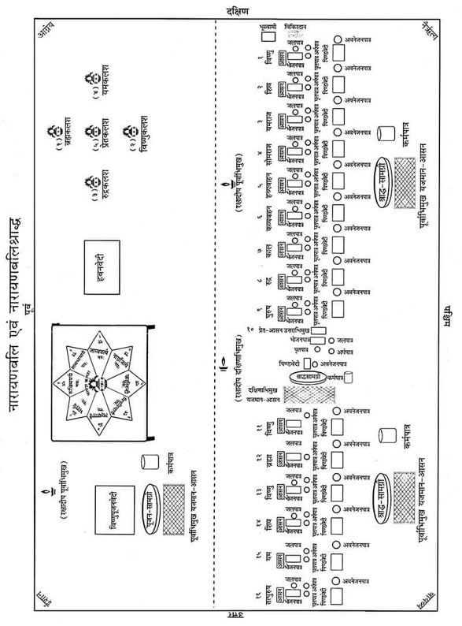
नारायणबलि
ग्यारहवें दिनसे समन्त्रक श्राद्ध आदि करनेकी विधि है।१ प्राणीके दुर्मरणकी निवृत्तिके लिये नारायणबलि करनेकी आवश्यकता होती है। दुर्मरणकी आशंका न रहनेपर नारायणबलि करना अनिवार्य नहीं है।२ शास्त्रोंमें दुर्मरणके निम्नलिखित कारण परिभाषित किये गये हैं—अग्निमें जलने, पानीमें डूबने, पाप करने, अभिचारकर्म (मारण, मोहन, उच्चाटन आदि), ब्राह्मणके द्वारा, सिंह, व्याघ्रादि हिंसक पशुओंके द्वारा, सर्पादिके द्वारा, ब्रह्मदण्डके द्वारा, विद्युत् के द्वारा, साँड़ आदि सींगवाले जानवरोंके द्वारा—इत्यादि कारणोंसे जिनकी मृत्यु होती है, उन्हें दुर्मरणकी संज्ञा दी गयी है। मुख्य रूपसे इस प्रकारसे मरनेवालोंकी एकादशाहके दिन श्राद्धके पूर्व नारायणबलि करनी आवश्यक है, कारण इस प्रायश्चित्तके बिना श्राद्ध आदिमें मृत प्राणीके निमित्त दिये गये पदार्थ उस जीवको प्राप्त नहीं होते, वे अन्तरिक्षमें स्थित रह जाते हैं—विनष्ट हो जाते हैं।३
१. एकादशाहे प्रेतस्य दद्याच्छ्राद्धं समन्त्रकम्।
(ग०पु०,प्रे० खण्ड २४।४०)
२. व्यापादयेद्य आत्मानं स्वयमग्न्युदकादिभि:।
विहितं तस्य नाशौचं नापि कार्योदकक्रिया॥
(श्राद्धचिन्तामणिमें षट्त्रिंशन्मतका वचन)
३. उदकं पिण्डदानं च श्राद्धं चैव तु यत्कृतम्।
नोपतिष्ठति तत्सर्वमन्तरिक्षे च तिष्ठति॥
(श्राद्धचिन्तामणि पृ० १३५ में षट्त्रिंशन्मतकावचन)
परम्परावशात् कुछ लोगोंके मतमें प्राणीकी सद्गतिके निमित्त मृत्युके समय करनेकी शास्त्रोंमें जो व्यवस्था बतायी गयी है, वह कुछ प्राणियोंके साथ अन्तिम समयमें पूर्ण न होनेके कारण उसे भी दुर्मृत्यु मानते हैं। अत: उनके मतमें इस प्रकारकी मृत्यु होनेपर एकादशाहश्राद्धके पूर्व प्रायश्चित्तरूपमें नारायणबलि करनी चाहिये।
शास्त्रोंमें और्ध्वदैहिक कार्यारम्भके पूर्व ही नारायणबलि करनेकी व्यवस्था है, परंतु उस समय यह सम्भव न हो सकनेके कारण एकादशाहकार्यके पूर्व नारायणबलि करनेकी विधि है।
शास्त्रोंमें दुर्मरणका मुख्य स्वरूप आत्महत्या माना गया है। बुद्धिपूर्वक स्वेच्छासे जो व्यक्ति अग्नि, शस्त्र एवं फाँसीके द्वारा अविधिपूर्वक आत्महत्या करते हैं, वे आत्महत्यारे कहे गये हैं। शास्त्रके अनुसार उनकी सद्गति सम्भव नहीं है। इसलिये शास्त्रके अनुसार एक वर्षतक (वर्षपर्यन्त) उनके निमित्त श्राद्ध आदि कोई क्रिया नहीं करनी चाहिये। वर्ष पूरा होनेपर लोकलज्जाके भयसे नारायणबलि करके श्राद्ध आदि कृत्य करना चाहिये—‘नारायणबलि: कार्यो लोकगर्हाभयान्नरै:।’ (श्राद्धचिन्तामणिमें पृ० १३५ में षट्त्रिंशन्मत) वर्षके भीतर आत्महत्याके निमित्त यदि कोई श्राद्धादि कृत्य करता है तो कर्ताको प्रायश्चित्तरूपमें चान्द्रायण करनेकी विधि है—‘कृत्वा चान्द्रायणं पूर्वं क्रिया: कार्या यथाविधि’ (श्राद्धचिन्तामणिमें स्मृत्यन्तरका वचन)
नारायणबलि-प्रयोग
श्राद्धकर्ता मृत्तिका, गोमय तथा पंचगव्यद्वारा स्नान१ आदिसे पवित्र होकर धुली हुई सफेद धोती और उत्तरीय वस्त्र (गमछा) धारण कर ले तथा श्राद्धस्थलपर आकर अपने आसनपर पूर्वाभिमुख हो बैठ जाय। सभी श्राद्धीय वस्तुओंको यथास्थान रख ले। पंचगव्यका प्राशन कर ले।२
१. शास्त्रोंमें दस पदार्थोंके द्वारा तत्तद् मन्त्रोंका पाठ करते हुए दशविध (दस प्रकारके) स्नान करनेकी विधि है। जैसे—गायत्री मन्त्र द्वारा गोमूत्रसे स्नान, ‘गन्धद्वारां०’ इस मन्त्रसे गोमयद्वारा स्नान आदि। ये दशविध स्नान इस प्रकार हैं—१-गोमूत्रस्नान, २-गोमयस्नान, ३-क्षीरस्नान, ४-दधिस्नान, ५-घृतस्नान, ६-कुशोदकस्नान, ७-भस्मस्नान, ८-मृत्तिकास्नान, ९-मधुस्नान तथा १०-जलस्नान—
गोमूत्रं गोमयं क्षीरं दधि सर्पि: कुशोदकम्।
भस्ममृन्मधुवारीणि मन्त्रतस्तानि वै दश॥
(निर्णयसिन्धु तृ०परि०उत्त०)
२. पंचगव्य-प्राशनका मन्त्र इस प्रकार है—
यत्त्वगस्थिगतं पापं देहे तिष्ठति मामके।
प्राशनात्पञ्चगव्यस्य दहत्वग्निरिवेन्धनम्॥
शिखाबन्धन—गायत्रीमन्त्रसे शिखाबन्धन कर ले।
सिंचन-मार्जन—निम्न मन्त्रसे अपने ऊपर तथा श्राद्धीय वस्तुओंपर जल छिड़के—
ॐ अपवित्र: पवित्रो वा सर्वावस्थां गतोऽपि वा।
य: स्मरेत् पुण्डरीकाक्षं स बाह्याभ्यन्तर: शुचि:॥
ॐ पुण्डरीकाक्ष: पुनातु, ॐ पुण्डरीकाक्ष: पुनातु, ॐ पुण्डरीकाक्ष: पुनातु।
पवित्रीधारण—दो कुशोंकी पवित्री दायें हाथकी अनामिकामें तथा तीन कुशोंकी पवित्री बायें हाथकी अनामिकामें निम्न मन्त्रसे धारण कर ले—
ॐ पवित्रे स्थो वैष्णव्यौ सवितुर्व: प्रसव उत्पुनाम्यच्छिद्रेण पवित्रेण सूर्यस्य रश्मिभि:। तस्य ते पवित्रपते पवित्रपूतस्य यत्काम: पुने तच्छकेयम्॥
आचमन—ब्राह्मतीर्थसे आगे लिखे मन्त्रोंसे आचमन करे—
ॐ केशवाय नम:। ॐ नारायणाय नम:। ॐ माधवाय नम:। तदनन्तर ॐ हृषीकेशाय नम: कहकर हाथ धो ले।
इसके बाद प्राणायाम करे। रक्षादीप जलाकर पूर्वाभिमुख रख ले।
हाथमें त्रिकुश, जल तथा अक्षत लेकर सर्वप्रथम नारायणबलि-अधिकारप्राप्तिके लिये प्रायश्चित्तरूपमें गोनिष्क्रयका संकल्प निम्न रीतिसे करे—
नारायणबलिका अधिकार प्राप्त करनेके लिये गोनिष्क्रयका संकल्प—
ॐ विष्णुर्विष्णुर्विष्णु: नम: परमात्मने पुरुषोत्तमाय ॐ तत्सत् अद्यैतस्य विष्णोराज्ञया जगत्सृष्टिकर्मणि प्रवर्तमानस्य ब्रह्मणो द्वितीयपरार्धे श्रीश्वेतवाराहकल्पे वैवस्वतमन्वन्तरे अष्टाविंशतितमे कलियुगे कलिप्रथमचरणे जम्बूद्वीपे भारतवर्षे भरतखण्डे .....क्षेत्रे (यदि काशी हो तो अविमुक्तवाराणसीक्षेत्रे गौरीमुखे त्रिकण्टकविराजिते महाश्मशाने भगवत्या उत्तरवाहिन्या भागीरथ्या वामभागे) बौद्धावतारे .....संवत्सरे उत्तरायणे/दक्षिणायने .....ऋतौ .....मासे .....पक्षे .....तिथौ .....वासरे .....गोत्र:.....शर्मा/वर्मा/गुप्तोऽहम् .....गोत्रस्य (.....गोत्राया:) .....प्रेतस्य (.....प्रेताया:) और्ध्वदैहिकसम्प्रदानयोग्यताप्राप्त्यर्थं क्रियमाणनारायणबलिकर्माधिकारसिद्धॺर्थं गोनिष्क्रयभूतद्रव्यम् .....शर्मणे ब्राह्मणाय भवते सम्प्रददे (बादमें देना हो तो ‘दातुमुत्सृज्ये’ बोले)।
इस प्रकार संकल्प करके गोनिष्क्रय-द्रव्य ब्राह्मणको दे दे तथा प्रार्थना करे—
प्रार्थना—
गावो मे अग्रत: सन्तु गावो मे सन्तु पृष्ठत:।
गावो मे सर्वत: सन्तु गवां मध्ये वसाम्यहम्॥
पुन: त्रिकुश, जल, अक्षत और सांगता-द्रव्य लेकर निम्न संकल्प करे—
सांगता-संकल्प—ॐ अद्य यथोक्तगुणविशिष्टतिथ्यादौ .....गोत्र: .....शर्मा/वर्मा/गुप्तोऽहं कृतस्य गोनिष्क्रयद्रव्यदानकर्मण: साङ्गतासिद्धॺर्थं तत् सम्पूर्णफलप्राप्त्यर्थमिदं दक्षिणाद्रव्यं .....शर्मणे ब्राह्मणाय भवते सम्प्रददे (बादमें देना हो तो ‘दातुमुत्सृज्ये’ बोले)।
त्रिकुश, जल, अक्षत, द्रव्य लेकर निम्न संकल्प करे—
नारायणबलि-प्रतिज्ञा-संकल्प—ॐ विष्णुर्विष्णुर्विष्णु: नम: परमात्मने पुरुषोत्तमाय ॐतत्सत् अद्यैतस्य विष्णोराज्ञया जगत्सृष्टिकर्मणि प्रवर्तमानस्य ब्रह्मणो द्वितीयपरार्धे श्रीश्वेतवाराहकल्पे वैवस्वतमन्वन्तरे अष्टाविंशतितमे कलियुगे कलिप्रथमचरणे जम्बूद्वीपे भारतवर्षे भरतखण्डे .....क्षेत्रे (यदि काशी हो तो अविमुक्तवाराणसीक्षेत्रे गौरीमुखे त्रिकण्टकविराजिते महाश्मशाने भगवत्या उत्तरवाहिन्या भागीरथ्या वामभागे) बौद्धावतारे .....संवत्सरे उत्तरायणे/दक्षिणायने .....ऋतौ .....मासे .....पक्षे .....तिथौ .....वासरे .....गोत्र:.....शर्मा/वर्मा/गुप्तोऽहम् .....गोत्रस्य (.....गोत्राया:) .....प्रेतस्य (.....प्रेताया:) शास्त्रोक्तदुर्मरणदोषाणां मध्ये सम्भावितदोषपरिहारपूर्वकमौर्ध्वदैहिकसम्प्रदान-योग्यताप्राप्त्यर्थमुत्तमलोकप्राप्त्यर्थं च नारायणबलिकर्म करिष्ये। संकल्पजल छोड़ दे।
विष्णु-स्मरण—श्राद्ध आरम्भ करनेके पूर्व भगवान् विष्णुका स्मरण-पूजन करनेका विधान है। अत: निम्न श्लोकसे भगवान् विष्णुका स्मरण-पूजन कर पुष्पांजलि अर्पित करके कार्य आरम्भ करना चाहिये—
शान्ताकारं भुजगशयनं
पद्मनाभं सुरेशं
विश्वाधारं गगनसदृशं
मेघवर्णं शुभाङ्गम्।
लक्ष्मीकान्तं कमलनयनं
योगिभिर्ध्यानगम्यं
वन्दे विष्णुं भवभयहरं
सर्वलोकैकनाथम्॥
पंचसूक्तोंका पाठ
पाँच सूक्तोंका पाठ करनेके लिये पाँच ब्राह्मणोंका वरण१—त्रिकुश, जल, अक्षत तथा वरणसामग्री लेकर—ॐ अद्य यथोक्तगुणविशिष्टतिथ्यादौ .....गोत्र: .....शर्मा/वर्मा/गुप्तोऽहम् .....गोत्रस्य (.....गोत्राया:) .....प्रेतस्य (.....प्रेताया:) दुर्मरणदोषनिवृत्तिपूर्वकमौर्ध्वदैहिकसम्प्रदानयोग्यताप्राप्त्यर्थक्रियमाणनारायणबलिकर्मणि विविधसूक्तपाठकरणार्थं विविधमन्त्रजपकरणार्थं वा होमादिकर्मकर्तुं च एभिर्वरणद्रव्यै: .....गोत्रान् .....शर्मण: ब्राह्मणान् युष्मान् वृणे।—यह कहकर वरणसामग्री ब्राह्मणोंको दे दे।२ ब्राह्मण —‘वृता: स्म’ बोलें। (यदि बादमें देना हो तो वरणसामग्रीं यथाकाले दातुमुत्सृज्ये इतना बोले।)
१. यदि लाघव (कम) करना हो तो एक ब्राह्मणद्वारा भी पाँचों सूक्तोंका पाठ कराया जा सकता है, तब एक ब्राह्मणका ही वरण होगा।
२. सूक्तपाठ तथा जप करनेवाले पण्डित एकादशाहको परिग्रह लेनेमें संकोच करते हों तो वरण-सामग्री तथा दक्षिणाका संकल्प कर दूसरे दिन सपिण्डनके बाद उन्हें दे दिया जाय।
इसके बाद यजमान गन्ध, पुष्प, अक्षतद्वारा ब्राह्मणोंकी पूजा करे।
तत्पश्चात् ब्रह्मसूक्त, विष्णुसूक्त, रुद्रसूक्त, यमसूक्त तथा प्रेतसूक्तका पाठ प्रारम्भ करना चाहिये।*
३.निर्दिष्ट सूक्तोंका पाठ करे—ब्रह्मसूक्त (शु०यजु० २२ वाँ अध्याय), विष्णुसूक्त (शु०यजु० ३१ वाँ अध्याय), रुद्रसूक्त (शु०यजु० १६ वाँ अध्याय), यमसूक्त (शु०यजु० ३२ वाँ अध्याय), प्रेतसूक्त (शु०यजु० ३५ वाँ अध्याय)। ये सूक्त परिशिष्टमें दिये गये हैं।
सूक्तपाठ करना सम्भव न हो तो पाँचों मन्त्रोंका जप ब्राह्मणद्वारा कराना चाहिये। कुछ स्थानोंमें तीसरे दिनसे प्राणीके निमित्त पाँचों मन्त्रोंका जप करानेकी परम्परा है। वैदिक सूक्तोंका पाठ सम्भव न हो तो पाँच मन्त्रोंका (ब्रह्ममन्त्र—ॐ ब्रह्म जज्ञानं प्रथमं पुरस्ताद्वि सीमत: सुरुचो वेन आव:। स बुध्न्या उपमा अस्य विष्ठा: सतश्च योनिमसतश्च वि व:॥ (शु०यजु० १३।३) विष्णुमन्त्र—ॐ इदं विष्णुर्वि चक्रमे त्रेधा नि दधे पदम्। समूढमस्य पाॸसुरे स्वाहा॥ (शु०यजु० ५।१५) रुद्रमन्त्र—ॐ नमस्ते रुद्र मन्यव उतो त इषवे नम:। बाहुभ्यामुत ते नम:॥ (शु०यजु० १६।१) यममन्त्र—ॐ यमाय त्वाऽङ्गिरस्वते पितृमते स्वाहा। स्वाहा घर्माय स्वाहा घर्म: पित्रे॥ (शु०यजु० ३८।९) प्रेतमन्त्र—ॐ प्रेता जयता नर इन्द्रो व: शर्म यच्छतु। उग्रा व: सन्तु बाहवोऽनाधृष्या यथाऽसथ॥ (शु०यजु० १७।४६) अथवा गायत्री, पंचाक्षर, द्वादशाक्षर, अष्टाक्षर और महामृत्युंजयमन्त्रका जप करना चाहिये।
अष्टशक्तिसहित सत्येशका स्थापन
पूर्वदिशामें एक हाथ लम्बी-चौड़ी बराबर वेदी बनाये अथवा चौकी या पाटा रख दे। उसके ऊपर सफेद वस्त्र बिछाकर चावलसे अष्टदल कमल बनाये। पूर्वादिक कमलदलोंमें सुपारी अथवा अक्षत रखकर प्रदक्षिणक्रमसे रुक्मिणी आदि अष्ट-शक्तियोंका निम्न प्रकारसे आवाहन करे—
हाथमें अक्षत लेकर पूर्ववाले कमलदलमें ॐ रुक्मिण्यै नम:, रुक्मिणीमावाहयामि, स्थापयामि। बोलकर सुपारीपर अक्षत छोड़ दे।
फिर हाथमें अक्षत लेकर अग्निकोणवाले कमलदलमें ॐ सत्यभामायै नम:, सत्यभामामावाहयामि, स्थापयामि। बोलकर सुपारीपर अक्षत छोड़ दे।
हाथमें अक्षत लेकर दक्षिण कमलदलमें ॐ जाम्बवत्यै नम:, जाम्बवतीमावाहयामि, स्थापयामि। बोलकर सुपारीपर अक्षत छोड़ दे।
इसके बाद हाथमें अक्षत लेकर नैर्ऋत्यकोणके कमलदलमें ॐ नाग्नजित्यै नम:, नाग्नजितीमावाहयामि, स्थापयामि। बोलकर सुपारीपर अक्षत छोड़ दे।
पुन: हाथमें अक्षत लेकर पश्चिम कमलदलमें ॐ कालिन्द्यै नम:, कालिन्दीमावाहयामि, स्थापयामि। बोलकर सुपारीपर अक्षत छोड़ दे।
इसके बाद हाथमें अक्षत लेकर वायव्यकोणके कमलदलमें ॐ मित्रविन्दायै नम:, मित्रविन्दामावाहयामि, स्थापयामि। बोलकर सुपारीपर अक्षत छोड़ दे।
इसके बाद उत्तरवाले कमलदलमें ॐ लक्ष्मणायै नम:, लक्ष्मणामावाहयामि, स्थापयामि। बोलकर सुपारीपर अक्षत छोड़ दे।
इसके बाद ईशानकोणके कमलदलमें ॐ भद्रायै नम:, भद्रामावाहयामि, स्थापयामि। बोलकर सुपारीपर अक्षत छोड़ दे।
कलश-स्थापन
अष्टदलकमलके बीचमें निम्न रीतिसे कलशकी स्थापना करे—
भूमिका स्पर्श—
निम्न मन्त्र पढ़कर कमलकी मध्य-भूमिका स्पर्श करे—
ॐ भूरसि भूमिरस्यदितिरसि विश्वधाया विश्वस्य भुवनस्य धर्त्री।
पृथिवीं यच्छ पृथिवीं दृॸह पृथिवीं मा हिॸसी:॥
धान्य-प्रक्षेप—
निम्न मन्त्र पढ़कर भूमिपर सप्तधान्य अथवा गेहूँ, चावल या जौ रख दे—
ॐ धान्यमसि धिनुहि देवान् प्राणाय त्वो दानाय त्वा व्यानाय त्वा।
दीर्घामनु प्रसितिमायुषे धां देवो व: सविता हिरण्यपाणि: प्रति गृभ्णात्वच्छिद्रेण पाणिना
चक्षुषे त्वा महीनां पयोऽसि॥
कलश-स्थापन—
निम्न मन्त्र पढ़कर वेदीपर बने अष्टदलकमलके मध्यमें कलश रख दे—
ॐ आ जिघ्र कलशं मह्या त्वा विशन्त्विन्दव:।
पुनरूर्जा नि वर्तस्व सा न: सहस्रं धुक्ष्वोरुधारा पयस्वती पुनर्मा विशताद्रयि:॥
कलशमें जल—
निम्न मन्त्र पढ़कर कलशको परम पावन गंगादि जलसे भर दे—
ॐ वरुणस्योत्तम्भनमसि वरुणस्य स्कम्भसर्जनी स्थो वरुणस्य ऋतसदन्यसि वरुणस्य ऋतसदनमसि वरुणस्य ऋतसदनमा सीद॥
कलशमें चन्दन—
निम्न मन्त्रसे अनामिका एवं अँगूठेसे कलशमें चन्दन छोड़े—
ॐ त्वां गन्धर्वा अखनँस्त्वामिन्द्रस्त्वा बृहस्पति:।
त्वामोषधे सोमो राजा विद्वान् यक्ष्मादमुच्यत॥
कलशमें सर्वौषधि—
निम्न मन्त्रसे कलशमें सर्वौषधि* छोड़े—
ॐ या ओषधी: पूर्वा जाता देवेभ्यस्त्रियुगं पुरा।
मनै नु बभ्रूणामहॸ शतं धामानि सप्त च॥
* मुरा माँसी वचा कुष्ठं शैलेयं रजनीद्वयम्।
सठी चम्पकमुस्ता च सर्वौषधिगण: स्मृत:॥
(अग्निपु० १७७।१७)
मुरा, जटामाँसी, वच, कुष्ठ, शिलाजीत, हल्दी, दारुहल्दी, सठी, चम्पक और मुस्ता—ये सर्वौषधि कहलाती हैं।
कलशमें दूब—
निम्न मन्त्रसे दूर्वा डाले—
ॐ काण्डात्काण्डात्प्ररोहन्ती परुष: परुषस्परि।
एवा नो दूर्वे प्र तनु सहस्रेण शतेन च॥
कलशपर पंचपल्लव—
निम्न मन्त्रसे कलशपर पंचपल्लव* रख दे—
ॐ अश्वत्थे वो निषदनं पर्णे वो वसतिष्कृता।
गोभाज इत्किलासथ यत्सनवथ पूरुषम्॥
* न्यग्रोधोदुम्बरोऽश्वत्थ: चूतप्लक्षस्तथैव च। बरगद, गूलर, पीपल, आम तथा पाकड़—ये पंचपल्लव हैं।
कलशमें पवित्री—
निम्न मन्त्रसे कलशमें कुश छोड़े—
ॐ पवित्रे स्थो वैष्णव्यौ सवितुर्व: प्रसव उत्पुनाम्यच्छिद्रेण पवित्रेण सूर्यस्य रश्मिभि:।
तस्य ते पवित्रपते पवित्रपूतस्य यत्काम: पुने तच्छकेयम्॥
कलशमें सप्तमृत्तिका—
निम्न मन्त्रसे सप्तमृत्तिका* (सात स्थानकी मिट्टी) या गंगारज कलशमें छोड़े—
ॐ स्योना पृथिवि नो भवानृक्षरा निवेशनी।
यच्छा न: शर्म सप्रथा:॥
* अश्वस्थानाद्गजस्थानाद्वल्मीकात्सङ्गमाद्ध्रदात्।
राजद्वाराच्च गोष्ठाच्च मृदमानीय निक्षिपेत्॥
घुड़साल, हाथीसाल, बाँबी, नदियोंके संगम, तालाब, राजाके द्वार और गोशाला—इन सात स्थानोंकी मिट्टीको सप्तमृत्तिका कहते हैं।
कलशमें सुपारी—
निम्न मन्त्रसे कलशमें सुपारी छोड़े—
ॐ या: फलिनीर्या अफला अपुष्पा याश्च पुष्पिणी:।
बृहस्पतिप्रसूतास्ता नो मुञ्चन्त्वॸहस:॥
कलशमें पंचरत्न—
निम्न मन्त्रसे कलशमें पंचरत्न* छोड़े—
ॐ परि वाजपति: कविरग्निर्हव्यान्यक्रमीत्।
दधद्रत्नानि दाशुषे॥
* कनकं कुलिशं मुक्ता पद्मरागं च नीलकम्।
एतानि पंचरत्नानि सर्वकार्येषु योजयेत्॥
सोना, हीरा, मोती, पद्मराग और नीलम—ये पंचरत्न कहे जाते हैं।
कलशमें द्रव्य—
निम्न मन्त्रसे कलशमें सोना या द्रव्य छोड़े—
ॐ हिरण्यगर्भ: समवर्तताग्रे भूतस्य जात: पतिरेक आसीत्।
स दाधार पृथिवीं द्यामुतेमां कस्मै देवाय हविषा विधेम॥
कलशपर वस्त्र—
निम्न मन्त्रसे कलशको वस्त्र-उपवस्त्रसे लपेट दे—
ॐ सुजातो ज्योतिषा सह शर्म वरूथमाऽसदत्स्व:।
वासो अग्ने विश्वरूपॸसं व्ययस्व विभावसो॥
कलशपर पूर्णपात्र—
निम्न मन्त्रसे चावलभरे हुए पात्रको कलशपर रख दे—
ॐ पूर्णा दर्वि परा पत सुपूर्णा पुनरा पत।
वस्नेव विक्रीणावहा इषमूर्जॸशतक्रतो॥
कलशमें वरुणका आवाहन—
ॐ तत्त्वा यामि ब्रह्मणा वन्दमानस्तदा शास्ते यजमानो हविर्भि:।
अहेडमानो वरुणेह बोध्युरुशॸस मा न आयु: प्र मोषी:॥
इस मन्त्रसे ॐ अपां पतये वरुणाय नम:, वरुणमावाहयामि, स्थापयामि। कहकर कलशपर वरुणका आवाहन करे।
कलशमें देवी-देवताओंका आवाहन—
निम्नलिखित मन्त्रोंसे कलशपर अक्षत छोड़कर देवताओंका आवाहन करे—
कलशस्य मुखे विष्णु: कण्ठे रुद्र: समाश्रित:।
मूले त्वस्य स्थितो ब्रह्मा मध्ये मातृगणा: स्मृता:॥
कुक्षौ तु सागरा: सर्वे सप्तद्वीपा वसुन्धरा।
ऋग्वेदोऽथ यजुर्वेद: सामवेदो ह्यथर्वण:॥
अङ्गैश्च सहिता: सर्वे कलशं तु समाश्रिता:।
अत्र गायत्री सावित्री शान्ति: पुष्टिकरी तथा।
आयान्तु देवपूजार्थं दुरितक्षयकारका:॥
गङ्गे च यमुने चैव गोदावरि सरस्वति।
नर्मदे सिन्धुकावेरि जलेऽस्मिन् संनिधिं कुरु॥
सर्वे समुद्रा: सरितस्तीर्थानि जलदा नदा:।
आयान्तु मम शान्त्यर्थं दुरितक्षयकारका:॥
अक्षत लेकर निम्न मन्त्रसे कलशपर छोड़े—
ॐ विष्ण्वादयो देवा: सुप्रतिष्ठिता वरदा भवन्तु।
प्रतिष्ठा—
निम्न मन्त्रसे आवाहित देवताओंकी प्रतिष्ठा करे—
ॐ मनो जूतिर्जुषतामाज्यस्य बृहस्पतिर्यज्ञमिमं तनोत्वरिष्टं यज्ञॸसमिमं दधातु। विश्वे देवास इह मादयन्तामो३म्प्रतिष्ठ॥
इसके बाद ॐ अपां पतये वरुणाय नम:—इस मन्त्रका उच्चारण कर गन्ध, अक्षत, पुष्प, धूप-दीप, नैवेद्य चढ़ाये।
सत्येशकी स्वर्णकी प्रतिमा बनाकर अग्न्युत्तारणपूर्वक प्राणप्रतिष्ठा करके उसे कलशके ऊपर स्थापित करे। अग्न्युत्तारण तथा प्राणप्रतिष्ठा इस प्रकार करे—
अग्न्युत्तारणविधि
सत्येशकी सुवर्णादिकी* मूर्तिका अवघातादिदोषनिवारणार्थ अग्न्युत्तारण आवश्यक है।
* स्वर्णप्रतिमाके अभावमें कुश अथवा सुपारीपर भी आवाहन-पूजन किया जा सकता है, उसमें अग्न्युत्तारण तथा प्राणप्रतिष्ठाकी आवश्यकता नहीं है।
इसलिये उसकी विधि लिखी जा रही है—
हाथमें त्रिकुश, अक्षत तथा जल लेकर प्राणप्रतिष्ठाका संकल्प करे—
प्राणप्रतिष्ठाका प्रतिज्ञा-संकल्प—ॐ अद्य पूर्वोच्चारितग्रहगुणगणविशेषणविशिष्टायां शुभपुण्यतिथौ .....गोत्र: .....शर्मा/वर्मा/गुप्तोऽहम् अस्यां सत्येशमूर्तौ अवघातादिदोषपरिहारार्थमग्न्युत्तारणं प्राणप्रतिष्ठां च करिष्ये। हाथका जल तथा अक्षत छोड़ दे।
सत्येशमूर्तिको किसी पात्रमें रखकर घी लगाकर उसके ऊपर निम्न मन्त्रोंसे जलधारा दे—
ॐ समुद्रस्य त्वाऽवकयाग्ने परि व्ययामसि।
पावको अस्मभ्यÞ शिवो भव॥
ॐ हिमस्य त्वा जरायुणाऽग्ने परि व्ययामसि।
पावको अस्मभ्यÞ शिवो भव॥
ॐ उप ज्मन्नुप वेतसेऽव तर नदीष्वा।
अग्ने पित्तमपामसि मण्डूकि ताभिरा गहि।
सेमं नो यज्ञं पावकवर्णÞ शिवं कृधि॥
ॐ अपामिदं न्ययनÞ समुद्रस्य निवेशनम्।
अन्याँस्ते अस्मत्तपन्तु हेतय: पावको अस्मभ्यÞ शिवो भव॥
ॐ अग्ने पावक रोचिषा मन्द्रयादेव जिह्वया।
आ देवान् वक्षि यक्षि च॥
ॐ सन: पावक दीदिवोऽग्ने देवाँ२इहा वह।
उप यज्ञÞ हविश्च न:॥
ॐ पावकया यश्चितयन्त्या कृपा क्षामन् रुरुच उषसो न भानुना।
तूर्वन् न यामन्नेतशस्य नू रण आ यो घृणे न ततृषाणो अजर:॥
ॐ नमस्ते हरसे शोचिषे नमस्ते अस्त्वर्चिषे।
अन्याँस्ते अस्मत्तपन्तु हेतय: पावको अस्मभ्यÞ शिवो भव॥
ॐ नृषदे वेडप्सुषदे वेड् बर्हिषदे वेड् वनसदे वेट् स्वर्विदे वेट्॥
ॐ ये देवा देवानां यज्ञिया यज्ञियानाÞ संवत्सरीणमुप भागमासते।
अहुतादो हविषो यज्ञे अस्मिन्त्स्वयं पिबन्तु मधुनो घृतस्य॥
ये देवा देवेष्वधि देवत्वमायन् ये ब्रह्मण: पुर एतारो अस्य।
येभ्यो न ऋते पवते धाम किञ्चन न ते दिवो न पृथिव्या अधि स्नुषु॥
ॐ प्राणदा अपानदा व्यानदा वर्चोदा वरिवोदा:।
अन्याँस्ते अस्मत्तपन्तु हेतय: पावको अस्मभ्यÞ शिवो भव॥
प्राणप्रतिष्ठा*—इसके बाद मूर्तिको दाहिने हाथसे स्पर्श करके निम्न मन्त्रसे उसकी प्राणप्रतिष्ठा करे—
* प्रतिष्ठामौक्तिक-प्रकरण ५।
ॐ आँ ह्रीं क्रौं यँ रँ लँ वँ शँ षँ सँ हँ ळँ क्षँ हँ स: सोऽहम् अस्या: सत्येशमूर्ते: प्राणा इह प्राणा:॥
ॐ आँ ह्रीं क्रौं यँ रँ लँ वँ शँ षँ सँ हँ ळँ क्षँ हँ स: सोऽहम् अस्या: सत्येशमूर्ते: जीव इह स्थित:॥
ॐ आँ ह्रीं क्रौं यँ रँ लँ वँ शँ षँ सँ हँ ळँ क्षँ हँ स: सोऽहम् अस्या: सत्येशमूर्ते: सर्वाणि इन्द्रियाणि वाङ्मनस्त्वक्चक्षु:श्रोत्रजिह्वाघ्राणपाणिपादपायूपस्थानि इहागत्य सुखं चिरं तिष्ठन्तु स्वाहा॥
ॐ मनो जूतिर्जुषतामाज्यस्य बृहस्पतिर्यज्ञमिमं तनोत्वरिष्टं यज्ञÞ समिमं दधातु।
विश्वे देवास इह मादयन्तामो३म्प्रतिष्ठ॥
अस्यै प्राणा: प्रतिष्ठन्तु अस्यै प्राणा: क्षरन्तु च।
अस्यै देवत्वमर्चायै मामहेति च कश्चन॥
अष्टशक्तिसहिताय सत्येशाय नम:।
आवाहयामि, स्थापयामि, पूजयामि।
अष्टशक्तिसहित सत्येशका पूजन*
* समयाभावमें शीघ्रताकी दृष्टिसे इस नाम-मन्त्र—‘ॐ अष्टशक्तिसहिताय सत्येशाय नम:’ बोलकर पूजन कर सकते हैं।
ध्यान—हाथमें फूल लेकर ध्यान करे—
ॐ उर्व्यां क्षीरसमुद्रेऽस्मिन् व्योम्नि सत्येशसंस्थिता।
अत्र त्वं सत्यया सार्द्धं सत्येश भव सन्निधौ॥
अष्टशक्तिसहिताय सत्येशाय नम:। ध्यानार्थं पुष्पं समर्पयामि। (फूल चढ़ा दे।)
आसन—आसनके लिये पुष्प रखकर मन्त्र पढ़े—
ॐ सोमसूर्याग्निसंकाशं पद्ममष्टदलान्वितम्।
आसनं गृह्ण सत्येश त्रैलोक्यस्थितिकारण॥
अष्टशक्तिसहिताय सत्येशाय नम:। आसनार्थे पुष्पं समर्पयामि। (फूल चढ़ा दे।)
पाद्य—अष्टशक्तिसहिताय सत्येशाय नम:। पाद्यं समर्पयामि। (जल चढ़ाये।)
अर्घ्य—
ॐ सत्येश सुखभूयिष्ठ सत्येश सुखदायक।
सत्येश सत्ययायुक्त गृहाणाऽर्घ्यं नमोऽस्तु ते॥
अष्टशक्तिसहिताय सत्येशाय नम:। अर्घ्यं समर्पयामि। (अर्घ्य प्रदान करे।)
आचमन—अष्टशक्तिसहिताय सत्येशाय नम:। आचमनं समर्पयामि। (आचमनके लिये जल दे।)
स्नान—अष्टशक्तिसहिताय सत्येशाय नम:। स्नानं समर्पयामि। (स्नानके लिये जल अर्पित करे।)
पंचामृतस्नान—
ॐ पञ्चामृतं मयानीतं पयो दधि घृतं मधु।
शर्करया समायुक्तं स्नानार्थं प्रतिगृह्यताम्॥
अष्टशक्तिसहिताय सत्येशाय नम:। पञ्चामृतेन स्नापयामि। (पंचामृतसे स्नान कराये।)
शुद्धोदकस्नान—अष्टशक्तिसहिताय सत्येशाय नम:। शुद्धोदकेन स्नापयामि। स्नानान्ते आचमनीयं जलं समर्पयामि। (शुद्धोदक स्नान कराये तथा आचमनके लिये जल दे।)
वस्त्र—अष्टशक्तिसहिताय सत्येशाय नम:। वस्त्रोपवस्त्रं समर्पयामि। वस्त्रोपवस्त्रान्ते आचमनीयं जलं समर्पयामि। (वस्त्र तथा उपवस्त्र चढ़ाये तथा आचमनके लिये जल दे।)
यज्ञोपवीत—अष्टशक्तिसहिताय सत्येशाय नम:। यज्ञोपवीतं समर्पयामि। यज्ञोपवीतान्ते आचमनीयं जलं समर्पयामि। (यज्ञोपवीत चढ़ाये तथा आचमनके लिये जल दे।)
गन्ध—
ॐश्रीखण्डं चन्दनं दिव्यं गन्धाढॺं सुमनोहरम्।
विलेपनं सुरश्रेष्ठ चन्दनं प्रतिगृह्यताम्॥
अष्टशक्तिसहिताय सत्येशाय नम:। चन्दनं समर्पयामि। (चन्दन चढ़ाये।)
तुलसीदल—अष्टशक्तिसहिताय सत्येशाय नम:। तुलसीदलं समर्पयामि। (तुलसीदल चढ़ाये।)
पुष्प—
ॐ माल्यादीनि सुगन्धीनि मालत्यादीनि वै प्रभो।
मयाहृतानि पुष्पाणि पूजार्थं प्रतिगृह्यताम्॥
अष्टशक्तिसहिताय सत्येशाय नम:। पुष्पं पुष्पमालां च समर्पयामि। (पुष्प और पुष्पमाला चढ़ाये।)
दूर्वा—अष्टशक्तिसहिताय सत्येशाय नम:। दूर्वांकुरान् समर्पयामि। (दूर्वा अर्पित करे।)
परिमलद्रव्य—अष्टशक्तिसहिताय सत्येशाय नम:। नानापरिमलद्रव्याणि समर्पयामि। (परिमलद्रव्य चढ़ाये।)
सिन्दूर—
ॐ सिन्दूरं शोभनं रक्तं सुखसौभाग्यवर्धनम्।
सुखदं मोक्षदं चैव सिन्दूरं प्रतिगृह्यताम्॥
अष्टशक्तिसहिताय सत्येशाय नम:। सिन्दूरं समर्पयामि। (सिन्दूर चढ़ाये।)
आभूषण—अष्टशक्तिसहिताय सत्येशाय नम:। अलङ्करणार्थे आभूषणानि समर्पयामि।(आभूषण अर्पित करे।)
धूप—
ॐ वनस्पतिरसोद्भूतो गन्धाढॺो गन्ध उत्तम:।
आघ्रेय: सर्वदेवानां धूपोऽयं प्रतिगृह्यताम्॥
अष्टशक्तिसहिताय सत्येशाय नम:। धूपमाघ्रापयामि। (धूप आघ्रापित करे।)
दीप—अष्टशक्तिसहिताय सत्येशाय नम:। दीपं दर्शयामि। (दीप दिखाये तथा हाथ धो ले।)
नैवेद्य—
ॐ त्राता त्वमेव सत्येश सत्यया सह चिन्त्यसे।
गृहाण देवदेवेश मम नैवेद्यमुत्तमम्॥
अष्टशक्तिसहिताय सत्येशाय नम:। नैवेद्यं निवेदयामि। नैवेद्यान्ते आचमनीयं जलं समर्पयामि। (नैवेद्य निवेदित करे तथा आचमनके लिये जल दे।)
ताम्बूल—
ॐ पूगीफलं महद्दिव्यं नागवल्लीदलैर्युतम्।
एलादिचूर्णसंयुक्तं ताम्बूलं प्रतिगृह्यताम्॥
अष्टशक्तिसहिताय सत्येशाय नम:। ताम्बूलं समर्पयामि। (इलायची, लौंग और सुपारीके साथ ताम्बूल अर्पित करे।)
दक्षिणा—
ॐ हिरण्यगर्भगर्भस्थं हेमबीजं विभावसो:।
अनन्तपुण्यफलदमत: शान्तिं प्रयच्छ मे॥
अष्टशक्तिसहिताय सत्येशाय नम:। दक्षिणां समर्पयामि। (दक्षिणा चढ़ाये।)
प्रदक्षिणा—
ॐ यानि कानि च पापानि जन्मान्तरकृतानि च।
तानि सर्वाणि नश्यन्तु प्रदक्षिणा पदे पदे॥
अष्टशक्तिसहिताय सत्येशाय नम:। प्रदक्षिणां समर्पयामि। (प्रदक्षिणा करे।)
आरती—
ॐ चन्द्रादित्यौ च धरणी विद्युदग्निस्तथैव च।
त्वमेव सर्वज्योतींषि आर्तिक्यं प्रतिगृह्यताम्॥
अष्टशक्तिसहिताय सत्येशाय नम:। आरार्तिक्यं समर्पयामि। (आरती करे।)
पुष्पांजलि—
ॐ नानासुगन्धिपुष्पाणि यथाकालोद्भवानि च।
पुष्पांजलिर्मया दत्तो गृहाण परमेश्वर॥
अष्टशक्तिसहिताय सत्येशाय नम:। पुष्पांजलिं समर्पयामि। (पुष्पांजलि प्रदान करे।)
प्रार्थना—
ॐ अग्ने रुद्रेश गोविन्द विष्णो चक्रिन् नमोऽस्तु ते।
पूजां गृहाण देवेश प्रीयतां गरुडध्वज॥
अष्टशक्तिसहिताय सत्येशाय नम:। प्रार्थनां समर्पयामि। (प्रार्थना करे।)
क्षमा-प्रार्थना—
अपराधसहस्राणि लक्षकोटियुतानि च।
नश्यन्ति तत्क्षणात् पापं सत्येशस्य च पूजनात्॥
अष्टशक्तिसहिताय सत्येशाय नम:। क्षमाप्रार्थनां समर्पयामि। (क्षमा-प्रार्थना करे।)
विशेषार्घ्य—पात्रमें जल, चन्दन, अक्षत, फूल, दूर्वा, सुपारी और दक्षिणा डालकर निम्न मन्त्र पढ़ते हुए दोनों हाथोंसे विशेषार्घ्य प्रदान करे—
ॐ यज्ञेशाऽच्युत देवेश सत्यरूप सनातन।
अनेनाऽर्घ्यप्रदानेन सर्वपापाद्विमोचय॥
अष्टशक्तिसहिताय सत्येशाय नम:। विशेषार्घ्यं समर्पयामि।
अग्निस्थापन
पूर्वाभिमुख हो त्रिकुश, जल, अक्षत लेकर निम्न संकल्प करे—
प्रतिज्ञा-संकल्प—ॐ अद्य पूर्वोच्चारितग्रहगुणगणविशेषणविशिष्टायां शुभपुण्यतिथौ ....गोत्र: ....शर्मा/वर्मा/गुप्तोऽहम् अस्मिन् नारायणबलिहवनकर्मणि पञ्चभूसंस्कारपूर्वकमग्निस्थापनं करिष्ये।
एक हाथ लम्बी-चौड़ी और चार अंगुल ऊँची वेदी१ बनाकर उसका पाँच प्रकारका संस्कार करे—
(१) तीन पूर्वाग्र कुशाओंसे वेदीको दक्षिणसे उत्तरकी ओरतक साफ कर दे। उन कुशोंको ईशानकोणमें फेंक दे (दर्भै: परिसमुह्य)। (२) गोबर और जलसे वेदीको दक्षिणसे उत्तरकी ओर लीप दे (गोमयोदकेनोपलिप्य)। (३) फिर स्रुवा अथवा तीन कुशाओंके मूलसे वेदीके बीचमें प्रादेशमात्र२ लम्बी तीन रेखाएँ दक्षिणसे प्रारम्भ कर उत्तरकी ओर पश्चिमसे पूर्वकी ओर खींचे (स्रुवमूलेन अथवा कुशमूलेनोल्लिख्य)। (४) उल्लेखनक्रमसे रेखाओंसे अनामिका और अंगुष्ठके द्वारा मिट्टी निकालकर बायें हाथमें रखता जाय। तीन बार मिट्टी निकालनेके बाद उसको बायें हाथसे दायें हाथमें लेकर ईशानकोणमें फेंक दे (अनामिकाङ्गुष्ठाभ्यां मृदमुद्धृत्य)। (५) दाहिने हाथमें जल लेकर अधोमुख चुल्लूसे वेदीको सींच दे (उदकेनाभ्युक्ष्य)।
१. यदि जमीन पक्की हो तो ईंटेके ऊपर मिट्टी रखकर वेदी बनाये।
२. अंगुष्ठ और तर्जनीके बीचकी अधिकतम दूरी प्रादेश कहलाती है।
अग्निस्थापन—काँसेके पात्रमें रखी हुई पवित्र अग्निको लाकर वेदीके पूर्वभागमें रखे और पात्रसे कुछ अग्नि निकालकर वेदीके नैर्ऋत्यकोणमें दाहिने हाथसे फेंक दे। शेष अग्निको दोनों हाथोंसे स्वाभिमुख वेदीके बीचमें स्थापित कर दे।
अग्निस्थापनके बाद अग्निपात्रमें अक्षत छोड़ दे।
अग्निस्थापनका मन्त्र—
ॐ अग्निं दूतं पुरो दधे हव्यवाहमुप ब्रुवे। देवाँ२ आ सादयादिह॥
इस मन्त्रसे अग्निस्थापन कर दे। अग्निकी रक्षाके लिये कुछ यज्ञीय लकड़ी रख दे।
कुशास्तरण—इस मन्त्रसे अग्निस्थापनके पश्चात् कुशोंसे परिस्तरण (कुश बिछाये) करे। कुण्ड या स्थण्डिलके पूर्व उत्तराग्र तीन कुश रखे। दक्षिणभागमें पूर्वाग्र तीन कुश या दूर्वा रखे। पश्चिमभागमें उत्तराग्र तीन कुश रखे। उत्तरभागमें पूर्वाग्र तीन कुश रखे। अग्निको बाँसकी नलीसे प्रज्वलित करे। इसके बाद अग्निका ध्यान करे—
ॐ चत्वारि शृङ्गा त्रयो अस्य पादा द्वे शीर्षे सप्त हस्तासो अस्य।
त्रिधा बद्धो वृषभो रोरवीति महो देवो मर्त्यां२ आ विवेश॥
इस प्रकार ध्यान करके गन्ध, पुष्प, धूप, दीप और नैवेद्यसे अग्निका पूजन करे।
पाँच कलशोंका स्थापन
पश्चिमसे पूर्वक्रममें एक सीधमें पाँच कलश रखे अथवा चारों दिशाओंमें चार कलश और पाँचवाँ कलश बीचमें रखकर स्थापित करे। ब्रह्मकलशपर गेहूँ तथा श्वेतवस्त्र, विष्णुकलशपर चावल तथा पीतवस्त्र, रुद्रकलशपर मूँग तथा रक्तवस्त्र, यमकलशपर माष (उड़द)तथा कृष्णवस्त्र और प्रेतकलशपर तिल तथा कृष्णवस्त्र रखना चाहिये।*
* सौवर्णं कारयेद् विष्णुं ब्रह्माणं रौप्यकं तथा।
रुद्रस्ताम्रमय: कार्यो यमो लोहमय: खग॥
पश्चिमे विष्णुकलशं गङ्गोदकसमन्वितम्।
तस्योपरि न्यसेद्विष्णुं पीतवस्त्रेण वेष्टितम्॥
पूर्वे तु ब्रह्मकलशं क्षीरोदकसमन्वितम्।
ब्रह्माणं स्थापयेत् तत्र श्वेतवस्त्रेण वेष्टितम्॥
उत्तरस्यां रुद्रकुम्भं पूरितं मधुसर्पिषा।
श्रीरुद्रं स्थापयेत् तत्र रक्तवस्त्रेण वेष्टितम्॥
दक्षिणस्यां यमघटमिन्द्रोदकसमन्वितम्।
कृष्णवस्त्रेण संवेष्टॺ तस्योपरि यमं न्यसेत्॥
(गरुडपु० सारो० १२।६—१०)
प्रथम क्रमके अनुसार पश्चिममें ब्रह्मा, उसके पूर्वमें क्रमश: विष्णु, रुद्र, यम तथा प्रेतके कलश एक सीधमें रखने चाहिये। यदि दूसरे क्रमसे कलश स्थापित करना हो तो पूर्वमें ब्रह्माका, पश्चिममें विष्णुका, उत्तरमें रुद्रका, दक्षिणमें यमका तथा मध्यमें प्रेतका कलश रखना चाहिये।
सत्येश कलशके समान पाँचों कलशोंकी स्थापना-प्रतिष्ठा कर ले।
इसके बाद ब्रह्मा, विष्णु, रुद्र, यम तथा प्रेत* की मूर्तियोंकी सत्येशके समान पूर्वोक्त विधिसे अग्न्युत्तारण और प्राणप्रतिष्ठा कर ले तथा उन प्रतिष्ठापित पाँचों मूर्तियोंको पाँचों कलशोंपर रख दे।
* ब्रह्मा रौप्यमयो देवो विष्णु: स्वर्णमय: स्मृत:।
रुद्रस्ताम्रमयो देवो यमो लोहमय: स्मृत:॥
प्रेतस्त्रपुमय: शुभ्रोऽथवा लोहमय: स्मृत:।
यद्वा कुशमया ह्येते स्थाप्याश्चैव पृथक् पृथक्॥
चाँदीके ब्रह्मा, सोनेके विष्णु, ताँबेके रुद्र, लोहेके यम, राँगा अथवा लोहेके प्रेतका विधान है, परंतु इनके अभावमें प्रत्येकके लिये कुश भी रखा जा सकता है। कुश रखनेपर आवाहन-पूजन होगा, प्राणप्रतिष्ठा तथा अग्न्युत्तारण नहीं होगा।
विधि इस प्रकार है—
अग्न्युत्तारण-विधि
अग्न्युत्तारणका प्रतिज्ञा-संकल्प—हाथमें त्रिकुश, जल लेकर संकल्प करे—ॐ अद्य पूर्वोच्चारितग्रहगुणगणविशेषणविशिष्टायां शुभपुण्यतिथौ .....गोत्र: .....शर्मा/वर्मा/गुप्तोऽहम् आसु ब्रह्मविष्णुरुद्रयमप्रेतप्रतिमासु अवघातादिदोषपरिहारार्थमग्न्युत्तारणपूर्वकप्राणप्रतिष्ठां करिष्ये। (हाथका जल आदि छोड़ दे)
संकल्पके अनुसार चारों मूर्तियोंको घृत लगाकर किसी पात्रमें तथा प्रेतमूर्तिको पृथक् पात्रमें रखकर उनपर निम्न मन्त्रोंसे जलधारा दे—
ॐ समुद्रस्य त्वाऽवकयाग्ने परि व्ययामसि।
पावको अस्मभ्यÞ शिवो भव॥
ॐ हिमस्य त्वा जरायुणाऽग्ने परि व्ययामसि।
पावको अस्मभ्यÞ शिवो भव॥
ॐ उप ज्मन्नुप वेतसेऽव तर नदीष्वा।
अग्ने पित्तमपामसि मण्डूकि ताभिरा गहि।
सेमं नो यज्ञं पावकवर्णÞ शिवं कृधि॥
ॐ अपामिदं न्ययनÞ समुद्रस्य निवेशनम्।
अन्याँस्ते अस्मत्तपन्तु हेतय: पावको अस्मभ्यÞ शिवो भव॥
ॐ अग्ने पावक रोचिषा मन्द्रया देव जिह्वया।
आ देवान् वक्षि यक्षि च॥
ॐ स न: पावक दीदिवोऽग्ने देवाँ२ इहा वह।
उप यज्ञÞ हविश्च न:॥
ॐ पावकया यश्चितयन्त्या कृपा क्षामन् रुरुच उषसो न भानुना।
तूर्वन् न यामन्नेतशस्य नू रण आ यो घृणे न ततृषाणो अजर:॥
ॐ नमस्ते हरसे शोचिषे नमस्ते अस्त्वर्चिषे।
अन्याँस्ते अस्मत्तपन्तु हेतय: पावको अस्मभ्यÞ शिवो भव॥
ॐ नृषदे वेडप्सुषदे वेड् बर्हिषदे वेड् वनसदे वेट् स्वर्विदे वेट्॥
ॐ ये देवा देवानां यज्ञिया यज्ञियानाÞ संवत्सरीणमुप भागमासते।
अहुतादो हविषो यज्ञे अस्मिन्त्स्वयं पिबन्तु मधुनो घृतस्य॥
ये देवा देवेष्वधि देवत्वमायन् ये ब्रह्मण: पुर एतारो अस्य।
येभ्यो न ऋते पवते धाम किञ्चन न ते दिवो न पृथिव्या अधि स्नुषु॥
ॐ प्राणदा अपानदा व्यानदा वर्चोदा वरिवोदा:।
अन्याँस्ते अस्मत्तपन्तु हेतय: पावको अस्मभ्यÞ शिवो भव॥
प्राणप्रतिष्ठा—ब्रह्मा, विष्णु, रुद्र तथा यमकी मूर्तियोंका दाहिने हाथसे स्पर्श करते हुए निम्न मन्त्रोंसे एक साथ प्राणप्रतिष्ठा करनी चाहिये। प्रेतमूर्तिकी प्राणप्रतिष्ठा पृथक् पात्रमें रखकर पृथक् करनी चाहिये।
ॐ आँ ह्रीं क्रौं यँ रँ लँ वँ शँ षँ सँ हँ ळँ क्षँ हँ स: सोऽहम् आसां ब्रह्मविष्णुरुद्रयममूर्तीनां प्राणा इह प्राणा:॥
ॐ आँ ह्रीं क्रौं यँ रँ लँ वँ शँ षँ सँ हँ ळँ क्षँ हँ स: सोऽहम् आसां ब्रह्मविष्णुरुद्रयममूर्तीनां जीव इहस्थित:॥
ॐ आँ ह्रीं क्रौं यँ रँ लँ वँ शँ षँ सँ हँ ळँ क्षँ हँ स: सोऽहम् आसां ब्रह्मविष्णुरुद्रयममूर्तीनां सर्वाणि इन्द्रियाणि इहागत्य सुखं चिरं तिष्ठन्तु स्वाहा॥
प्रेतमूर्ति-प्राणप्रतिष्ठा—ॐ आँ ह्रीं क्रौं यँ रँ लँ वँ शँ षँ सँ हँ ळँ क्षँ हँ स: सोऽहम् अस्या: प्रेतमूर्ते: प्राणा इह प्राणा:॥
ॐ आँ ह्रीं क्रौं यँ रँ लँ वँ शँ षँ सँ हँ ळँ क्षँ हँ स: सोऽहम् अस्या: प्रेतमूर्ते: जीव इह स्थित:॥
ॐ आँ ह्रीं क्रौं यँ रँ लँ वँ शँ षँ सँ हँ ळँ क्षँ हँ स: सोऽहम् अस्या: प्रेतमूर्ते: सर्वाणि इन्द्रियाणि इहागत्य सुखं चिरं तिष्ठन्तु स्वाहा॥
ॐ मनो जूतिर्जुषतामाज्यस्य बृहस्पतिर्यज्ञमिमं तनोत्वरिष्टं यज्ञÞ समिमं दधातु।
विश्वे देवास इह मादयन्तामो३म्प्रतिष्ठ॥
ब्रह्मादि देवताओंका आवाहन-पूजन—नम्न मन्त्रोंद्वारा ब्रह्मादि देवताओंका आवाहन-पूजन करे।
ब्रह्माका आवाहन—
ॐ ब्रह्म जज्ञानं प्रथमं पुरस्ताद्वि सीमत: सुरुचो वेन आव:।
स बुध्न्या उपमा अस्य विष्ठा: सतश्च योनिमसतश्च वि व:॥
ॐ ब्रह्मणे नम:, ब्रह्माणमावाहयामि, स्थापयामि। बोलकर प्रथम कलशपर स्थित ब्रह्माकी मूर्तिपर अक्षत छोड़ दे।
विष्णुका आवाहन—
ॐ इदं विष्णुर्विचक्रमे त्रेधा नि दधे पदम्।
समूढमस्य पाॸसुरे स्वाहा॥
ॐ विष्णवे नम:, विष्णुमावाहयामि, स्थापयामि। बोलकर द्वितीय कलशपर स्थित विष्णुकी मूर्तिपर अक्षत छोड़ दे।
रुद्रका आवाहन—
ॐ नमस्ते रुद्र मन्यव उतो त इषवे नम:।
बाहुभ्यामुत ते नम:॥
ॐ रुद्राय नम:, रुद्रमावाहयामि, स्थापयामि। बोलकर तृतीय कलशपर स्थित रुद्रकी मूर्तिपर अक्षत छोड़ दे।
यमका आवाहन—
ॐ यमाय त्वाऽङ्गिरस्वते पितृमते स्वाहा।
स्वाहा घर्माय स्वाहा घर्म: पित्रे॥
ॐ यमाय नम:, यममावाहयामि, स्थापयामि। बोलकर चतुर्थ कलशपर स्थित यमकी मूर्तिपर अक्षत छोड़दे।
प्रेतका आवाहन—अपसव्य दक्षिणाभिमुख होकर आवाहन करे।
ॐ प्रेता जयता नर इन्द्रो व: शर्म यच्छतु।
उग्रा व: सन्तु बाहवोऽनाधृष्या यथाऽसथ॥
.....गोत्रं .....प्रेतमावाहयामि, स्थापयामि। बोलकर पंचम कलशपर स्थित प्रेतकी मूर्तिपर तिल छोड़ दे।
पुन: निम्न मन्त्रसे चार देवकलशोंपर सव्य होकर अक्षत तथा प्रेतकलशपर अपसव्य होकर तिल छोड़े—
ॐ मनो जूतिर्जुषतामाज्यस्य बृहस्पतिर्यज्ञमिमं तनोत्वरिष्टं यज्ञÞ समिमं दधातु।
विश्वे देवास इह मादयन्तामो३म्प्रतिष्ठ॥
इस प्रकार आवाहन, स्थापन तथा प्रतिष्ठाके बाद ब्रह्मादि देवताओंका सव्य तथा प्रेतका अपसव्य दक्षिणाभिमुख होकर पूर्वोक्त मन्त्रोंसे अथवा नाम-मन्त्रोंसे षोडशोपचार१ या पंचोपचार२ पूजन करे—
१. षोडशोपचार—(१) पाद्य, (२) अर्घ्य, (३) आचमन, (४) स्नान, (५) वस्त्र, (६) आभूषण, (७) गन्ध, (८) पुष्प, (९) धूप, (१०) दीप, (११) नैवेद्य, (१२) आचमन, (१३) ताम्बूल, (१४) स्तवपाठ, (१५) तर्पण और (१६) नमस्कार।
२. पंचोपचार—(१) गन्ध, (२) पुष्प, (३) धूप, (४) दीप तथा (५) नैवेद्य। पूजामें कमी न हो इसलिये प्रत्येक प्रकारके पूजनमें दक्षिणा भी दे।
प्रार्थना—पुष्प लेकर विष्णुकी स्तुति करे—
जितन्ते पुण्डरीकाक्ष नमस्ते विश्वभावन।
नमस्तुभ्यं हृषीकेश महापुरुषपूर्वज॥
अनादिनिधनो देव: शङ्खचक्रगदाधर:।
अक्षय्य: पुण्डरीकाक्ष प्रेतमोक्षप्रदो भव॥
अनेन पूजनेन ब्रह्मादिदेवता: प्रीयन्तां न मम। कहकर पूजनकर्म भगवान् को समर्पित कर दे।
हवन-विधि
कर्ता दाहिने घुटनेको जमीनसे लगाकर जलती हुई अग्निमें निम्न रीतिसे हवन करे। पहले दी जानेवाली चार आहुतियोंके होमसे बचे हुए एक-एक बूँद घीको प्रोक्षणीपात्रमें डालता जाय।
आघार-होम—दाहिने हाथसे स्रुवासे घीको लेकर ‘ॐ प्रजापतये स्वाहा, इदं प्रजापतये न मम।’ मनमें बोलकर अग्निके उत्तर-पूर्वमें डाल दे।
पुन: स्रुवासे घी लेकर ‘ॐ इन्द्राय स्वाहा, इदम् इन्द्राय न मम।’ बोलकर अग्निके दक्षिण-पूर्वके बीचमें डाल दे। स्रुवामें बचे हुए एक बूँद घीको प्रोक्षणीपात्रमें डाल दे।*
* इन दो आहुतियोंको आघार कहते हैं।
आज्य-होम—फिर स्रुवामें घी लेकर ‘ॐ अग्नये स्वाहा, इदमग्नये न मम’ बोलकर बचे एक बूँद घीको प्रोक्षणीपात्रमें डाल दे। फिर स्रुवामें घी लेकर ‘ॐ सोमाय स्वाहा, इदं सोमाय न मम’ बोलकर स्रुवामें बचे एक बूँद घीको प्रोक्षणीपात्रमें डाल दे।*
* अग्नि और सोमको दी गयी आहुतियोंको आज्यभाग कहते हैं।
चार आहुतियोंके बाद हाथमें जल लेकर बोले—अस्मिन् होमकर्मणि या या यक्षमाणदेवता ताभ्यस्ताभ्य इदं हवनीयद्रव्यं मया परित्यक्तं तत्सद्यथादैवतमस्तु न मम। बोलकर जल गिरा दे।
प्रधान होम
प्रधान होम घीसे किया जायगा। प्रत्येक आहुतिके बाद एक बूँद घी प्रोक्षणीपात्रमें डाल देना चाहिये। निम्न मन्त्रोंसे आहुति प्रदान करे—
(१) ॐ युञ्जते मन उत युञ्जते धियो विप्रा विप्रस्य बृहतो विपश्चित:। वि होत्रा दधे वयुनाविदेक इन्मही देवस्य सवितु: परिष्टुति: स्वाहा॥ इदं विष्णवे न मम।
(२) ॐ इदं विष्णुर्वि चक्रमे त्रेधा नि दधे पदम्। समूढमस्य पाॸसुरे स्वाहा॥ इदं विष्णवे न मम।
(३) ॐ इरावती धेनुमती हि भूतॸ सूयवसिनी मनवे दशस्या। व्यस्कभ्ना रोदसी विष्णवेते दाधर्थ पृथिवीमभितो मयूखै: स्वाहा॥ इदं विष्णवे न मम।
(४) ॐ देवश्रुतौ देवेष्वा घोषतं प्राची प्रेतमध्वरं कल्पयन्ती ऊर्ध्वं यज्ञं नयतं मा जिह्वरतम्। स्वं गोष्ठमा वदतं देवी दुर्ये आयुर्मा निर्वादिष्टं प्रजां मा निर्वादिष्टमत्र रमेथां वर्ष्मन् पृथिव्या:॥ स्वाहा॥
इदं विष्णवे न मम।
(५) ॐ विष्णोर्नुकं वीर्याणि प्र वोचं य: पार्थिवानि विममे रजाॸसि। यो अस्कभायदुत्तरॸ सधस्थं विचक्रमाणस्त्रेधोरुगायो विष्णवे त्वा॥ स्वाहा॥ इदं विष्णवे न मम।
(६) ॐ दिवो वा विष्ण उत वा पृथिव्या महो वा विष्ण उरोरन्तरिक्षात्। उभा हि हस्ता वसुना पृणस्वा प्र यच्छ दक्षिणादोत सव्याद्विष्णवे त्वा॥ स्वाहा॥ इदं विष्णवे न मम।
(७) ॐ प्र तद्विष्णु स्तवते वीर्येण मृगो न भीम: कुचरो गिरिष्ठा:। यस्योरुषु त्रिषु विक्रमणेष्वधिक्षियन्ति भुवनानि विश्वा॥ स्वाहा॥ इदं विष्णवे न मम।
(८) ॐ विष्णो रराटमसि विष्णो: श्नप्त्रे स्थो विष्णो: स्यूरसि विष्णोर्ध्रुवोऽसि। वैष्णवमसि विष्णवे त्वा॥ स्वाहा॥ इदं विष्णवे न मम।
निम्न मन्त्रोंसे पृथक्-पृथक् कुल १६ आहुतियाँ घीसे दे—
(१) ॐ लोमभ्य: स्वाहा।
(२) ॐ लोमभ्य: स्वाहा॥
(३) ॐ त्वचे स्वाहा।
(४) ॐ त्वचे स्वाहा॥
(५) ॐ लोहिताय स्वाहा॥
(६) ॐ लोहिताय स्वाहा॥
(७) ॐ मेदोभ्य: स्वाहा।
(८) ॐ मेदोभ्य: स्वाहा॥
(९) ॐ माॸसेभ्य: स्वाहा।
(१०) ॐ माॸसेभ्य: स्वाहा॥
(११) ॐ स्नावभ्य: स्वाहा।
(१२) ॐ स्नावभ्य: स्वाहा॥
(१३) ॐ ऽस्थभ्य: स्वाहा।
(१४) ॐ ऽस्थभ्य: स्वाहा॥
(१५) ॐ मज्जभ्य: स्वाहा।
(१६) ॐ मज्जभ्य: स्वाहा॥
पुन: घीसे पृथक्-पृथक् कुल २६ आहुतियाँ दे—
(१) ॐ रेतसे स्वाहा।
(२) ॐ पायवे स्वाहा।
(३) ॐ आयासाय स्वाहा।
(४) ॐ प्रायासाय स्वाहा।
(५) ॐ संयासाय स्वाहा।
(६) ॐ वियासाय स्वाहा।
(७) ॐ उद्यासाय स्वाहा।
(८) ॐ शुचे स्वाहा।
(९) ॐ शोचते स्वाहा।
(१०) ॐ शोचमानाय स्वाहा।
(११) ॐ शोकाय स्वाहा।
(१२) ॐ तपसे स्वाहा।
(१३) ॐ तप्यते स्वाहा।
(१४) ॐ तप्यमानाय स्वाहा।
(१५) ॐ तप्ताय स्वाहा।
(१६) ॐ घर्माय स्वाहा।
(१७) ॐ निष्कृत्यै स्वाहा।
(१८) ॐ प्रायश्चित्त्यै स्वाहा।
(१९) ॐ भेषजाय स्वाहा।
(२०) ॐ यमाय स्वाहा।
(२१) ॐ अन्तकाय स्वाहा।
(२२) ॐ मृत्यवे स्वाहा।
(२३) ॐ ब्रह्मणे स्वाहा।
(२४) ॐ ब्रह्महत्यायै स्वाहा।
(२५) ॐ विश्वेभ्यो देवेभ्य: स्वाहा।
(२६) ॐ द्यावापृथिवीभ्याॸ स्वाहा।
अब चरुद्वारा पुरुषसूक्तके निम्नलिखित १६ मन्त्रोंसे १६ आहुतियाँ दे—
(१) ॐ सहस्रशीर्षा पुरुष: सहस्राक्ष: सहस्रपात्।
स भूमिÞ सर्वत स्पृत्वाऽत्यतिष्ठद्दशाङ्गुलम्॥ स्वाहा॥
(२) ॐ पुरुष एवेदÞ सर्वं यद्भूतं यच्च भाव्यम्।
उतामृतत्वस्येशानो यदन्नेनातिरोहति॥ स्वाहा॥
(३) ॐ एतावानस्य महिमातो ज्यायाँश्च पूरुष:।
पादोऽस्य विश्वा भूतानि त्रिपादस्यामृतं दिवि॥ स्वाहा॥
(४) ॐ त्रिपादूर्ध्व उदैत्पुरुष: पादोऽस्येहाभवत् पुन:।
ततो विष्वङ् व्यक्रामत्साशनानशने अभि॥ स्वाहा॥
(५) ॐ ततो विराडजायत विराजो अधि पूरुष:।
स जातो अत्यरिच्यत पश्चाद्भूमिमथो पुर:॥ स्वाहा॥
(६) ॐ तस्माद्यज्ञात् सर्वहुत: सम्भृतं पृषदाज्यम्।
पशूँस्ताँश्चक्रे वायव्यानारण्या ग्राम्याश्च ये॥ स्वाहा॥
(७) ॐ तस्माद्यज्ञात् सर्वहुत ऋच: सामानि जज्ञिरे।
छन्दाÞसि जज्ञिरे तस्माद्यजुस्तस्मादजायत॥ स्वाहा॥
(८) ॐ तस्मादश्वा अजायन्त ये के चोभयादत:।
गावो ह जज्ञिरे तस्मात्तस्माज्जाता अजावय:॥ स्वाहा॥
(९) ॐ तं यज्ञं बर्हिषि प्रौक्षन् पुरुषं जातमग्रत:।
तेन देवा अयजन्त साध्या ऋषयश्च ये॥ स्वाहा॥
(१०) ॐ यत्पुरुषं व्यदधु: कतिधा व्यकल्पयन्।
मुखं किमस्यासीत् किं बाहू किमूरू पादा उच्येते॥ स्वाहा॥
(११) ॐ ब्राह्मणोऽस्य मुखमासीद्बाहू राजन्य: कृत:।
ऊरू तदस्य यद्वैश्य: पद्भ्याÞ शूद्रो अजायत॥ स्वाहा॥
(१२) ॐ चन्द्रमा मनसो जातश्चक्षो: सूर्यो अजायत।
श्रोत्राद्वायुश्च प्राणश्च मुखादग्निरजायत॥ स्वाहा॥
(१३) ॐ नाभ्या आसीदन्तरिक्षÞ शीर्ष्णो द्यौ: समवर्तत।
पद्भ्यां भूमिर्दिश: श्रोत्रात्तथा लोकाँ२ अकल्पयन्॥ स्वाहा॥
(१४) ॐ यत्पुरुषेण हविषा देवा यज्ञमतन्वत।
वसन्तोऽस्यासीदाज्यं ग्रीष्म इध्म: शरद्धवि:॥ स्वाहा॥
(१५) ॐ सप्तास्यासन् परिधयस्त्रि: सप्त समिध: कृता:।
देवा यद्यज्ञं तन्वाना अबध्नन् पुरुषं पशुम्॥ स्वाहा॥
(१६) ॐ यज्ञेन यज्ञमयजन्त देवास्तानि धर्माणि प्रथमान्यासन्।
ते ह नाकं महिमान: सचन्त यत्र पूर्वे साध्या: सन्ति देवा:॥ स्वाहा॥
घीसे मिश्रित खीरके द्वारा निम्न मन्त्रोंसे पृथक्-पृथक् कुल १६ आहुतियाँ दे—
(१) ॐ इदं विष्णुर्वि चक्रमे त्रेधा नि दधे पदम्।
समूढमस्य पाॸसुरे ॥ स्वाहा॥
(२) ॐ अपो देवा मधुमतीरगृभ्णन्नूर्जस्वती राजस्वश्चिताना:।
याभिर्मित्रावरुणावभ्यषिञ्चन्याभिरिन्द्रमनयन्नत्यराती: ॥ स्वाहा॥
(३) ॐ प्र पर्वतस्य वृषभस्य पृष्ठान्नावश्चरन्ति स्वसिच इयाना:।
ता आऽववृत्रन्नधरागुदक्ता अहिं बुध्न्यमनु रीयमाणा:।
विष्णोर्विक्रमणमसि विष्णोर्विक्रान्तमसि विष्णो: क्रान्तमसि॥ स्वाहा॥
(४) ॐ विष्णोर्नुकं वीर्याणि प्र वोचं य: पार्थिवानि विममे रजाॸसि।
यो अस्कभायदुत्तरॸ सधस्थं विचक्रमाणस्त्रेधोरुगायो विष्णवे त्वा॥ स्वाहा॥
(५) ॐ दिवो वा विष्ण उत वा पृथिव्या महो वा विष्ण उरोरन्तरिक्षात् ।
उभा हि हस्ता वसुना पृणस्वा प्र यच्छ दक्षिणादोत सव्याद्विष्णवे त्वा॥ स्वाहा॥
(६) ॐ प्र तद्विष्णु स्तवते वीर्येण मृगो न भीम: कुचरो गिरिष्ठा:।
यस्योरुषु त्रिषु विक्रमणेष्वधिक्षियन्ति भुवनानि विश्वा॥ स्वाहा॥
(७) ॐ विष्णो रराटमसि विष्णो: श्नप्त्रे स्थो विष्णो: स्यूरसि विष्णोर्ध्रुवोऽसि।
वैष्णवमसि विष्णवे त्वा॥ स्वाहा॥
(८) ॐ तद्विप्रासो विपन्यवो जागृवाÞस: समिन्धते।
विष्णोर्यत्परमं पदम्॥ स्वाहा॥
(९) ॐ विष्णो: कर्माणि पश्यत यतो व्रतानि पस्पशे।
इन्द्रस्य युज्य: सखा॥ स्वाहा॥
(१०) ॐ तद्विष्णो: परमं पदÞ सदा पश्यन्ति सूरय:।
दिवीव चक्षुराततम्॥ स्वाहा॥
(११) ॐ अद्भ्य: सम्भृत: पृथिव्यै रसाच्च विश्वकर्मण: समवर्तताग्रे।
तस्य त्वष्टा विदधद्रूपमेति तन्मर्त्यस्य देवत्वमाजानमग्रे॥ स्वाहा॥
(१२) ॐ वेदाहमेतं पुरुषं महान्तमादित्यवर्णं तमस: परस्तात्।
तमेव विदित्वाति मृत्युमेति नान्य: पन्था विद्यतेऽयनाय॥ स्वाहा॥
(१३) ॐ प्रजापतिश्चरति गर्भे अन्तरजायमानो बहुधा वि जायते।
तस्य योनिं परि पश्यन्ति धीरास्तस्मिन् ह तस्थुर्भुवनानि विश्वा॥ स्वाहा॥
(१४) ॐ यो देवेभ्य आतपति यो देवानां पुरोहित:।
पूर्वो यो देवेभ्यो जातो नमो रुचाय ब्राह्मये॥ स्वाहा॥
(१५) ॐ रुचं ब्राह्मं जनयन्तो देवा अग्रे तदब्रुवन्।
यस्त्वैवं ब्राह्मणो विद्यात्तस्य देवा असन् वशे॥ स्वाहा॥
(१६) ॐ श्रीश्च ते लक्ष्मीश्च पत्न्यावहोरात्रे पार्श्वे नक्षत्राणि रूपमश्विनौ व्यात्तम्।
इष्णन्निषाणामुं म इषाण सर्वलोकं म इषाण॥ स्वाहा॥
इसके बाद तिल, जौ, चावल, घृत, शर्करामिश्रित शाकल्यसे निम्न मन्त्रसे १०८ आहुतियाँ दे—
ॐ तद्विप्रासो विपन्यवो जागृवाÞस: समिन्धते।
विष्णोर्यत्परमं पदम्॥ स्वाहा॥ इदं विष्णवे न मम।
इसके बाद सभी आवाहित देवताओंका पुन: पंचोपचारसे उत्तर-पूजन करे तथा प्रेतका अपसव्य दक्षिणाभिमुख होकर पूजन करे। पुन: अग्निपूजन पंचोपचारसे करे।
स्विष्टकृत्-आहुति
बचे हुए सभी हवनीय द्रव्यको एक पात्रमें लेकर होता खड़े हो जायँ। यजमान स्रुवामें घृत लेकर निम्न मन्त्रको पढ़ते हुए आहुति दे—
ॐ अग्नये स्विष्टकृते स्वाहा, इदमग्नये स्विष्टकृते न मम।
यजमान और होता बैठ जायँ और घृतसे ही आहुति दें तथा स्रुवासे शेष घृतको प्रोक्षणीपात्रमें डालते रहें—
ॐ भू: स्वाहा, इदमग्नये न मम।
ॐ भुव: स्वाहा, इदं वायवे न मम।
ॐ स्व: स्वाहा, इदं सूर्याय न मम।
ॐ त्वं नो अग्ने वरुणस्य विद्वान् देवस्य हेडो अव यासिसीष्ठा:।
यजिष्ठो वह्नितम: शोशुचानो विश्वा द्वेषाÞसि प्र मुमुग्ध्यस्मत्॥ स्वाहा॥
इदमग्नीवरुणाभ्यां न मम।
ॐ स त्वं नो अग्नेऽवमो भवोती नेदिष्ठो अस्या उषसो व्युष्टौ।
अव यक्ष्व नो वरुणÞ रराणो वीहि मृडीकÞ सुहवो न एधि॥ स्वाहा॥
इदमग्नीवरुणाभ्यां न मम।
ॐ अयाश्चाऽग्नेऽस्यनभिशस्तिपाश्च सत्यमित्त्वमया असि।
अया नो यज्ञं वहास्यया नो धेहि भेषजॸ॥ स्वाहा॥
इदमग्नयेऽयसे न मम।
ॐ ये ते शतं वरुण ये सहस्रं यज्ञिया: पाशा वितता महान्त:।
तेभिर्नोऽअद्य सवितोत विष्णुर्विश्वे मुञ्चन्तु मरुत: स्वर्का:॥ स्वाहा॥
इदं वरुणाय सवित्रे विष्णवे विश्वेभ्यो देवेभ्यो मरुद्भ्य: स्वर्केभ्यश्च, न मम।
ॐ उदुत्तमं वरुण पाशमस्मदवाधमं वि मध्यमÞ श्रथाय।
अथावयमादित्यव्रतेतवानागसो अदितये स्याम॥स्वाहा॥
इदं वरुणायाऽऽदित्यायाऽदितये, न मम।
प्रजापतिका मनसे ध्यान करते हुए और निम्न मन्त्रका मानसिक* उच्चारण करते हुए आहुति दे—
ॐ प्रजापतये स्वाहा, इदं प्रजापतये न मम।
* प्रमाणके रूपमें सामविधान ब्राह्मणके पृ० ३२ प्रथम खण्डके प्रथम अध्यायका वचन उद्धृत किया जा रहा है—‘ब्रह्म वा इदमग्र आसीत्’, ‘तस्य तेजो रसोऽत्यरिच्यत्’, ‘स ब्रह्मा अभवत्’, ‘स तूष्णीं मनसा ध्यायत्’, ‘तस्य यन्मन आसीत्’, ‘स प्रजापतिरभूत्’, ‘तस्मात् प्राजापत्यं मनसा जुह्वति’।
पूर्णाहुति
स्रुवामें ४ या ८ बार घी डालकर उसके ऊपर रक्तवस्त्र या रक्तसूत्रसे वेष्टित सुपारी रखकर पूर्णाहुतिका पंचोपचार-पूजन करे। स्रुवाको दाहिने हाथमें लेकर खड़ा हो जाय और निम्न मन्त्रोंको पढ़े—
ॐ मूर्धानं दिवो अरतिं पृथिव्या वैश्वानरमृत आ जातमग्निम्।
कविÞ सम्राजमतिथिं जनानामासन्ना पात्रं जनयन्त देवा:॥
ॐ स्वाहा प्राणेभ्य: साधिपतिकेभ्य:।
पृथिव्यै स्वाहा ऽग्नये स्वाहा ऽन्तरिक्षाय स्वाहा वायवे स्वाहा।
दिवे स्वाहा सूर्याय स्वाहा॥
ॐ दिग्भ्य: स्वाहा चन्द्राय स्वाहा नक्षत्रेभ्य: स्वाहा ऽद्भ्य: स्वाहावरुणाय स्वाहा।
नाभ्यै स्वाहा पूताय स्वाहा॥
ॐ वाचे स्वाहा प्राणाय स्वाहा प्राणाय स्वाहा।
चक्षुषे स्वाहा चक्षुषे स्वाहा श्रोत्राय स्वाहा श्रोत्राय स्वाहा॥
ॐ पूर्णा दर्वि परा पत सुपूर्णा पुनरा पत।
वस्नेव विक्रीणावहा इषमूर्जॸ शतक्रतो॥स्वाहा॥
इदं मृडाग्नये* न मम।
* पूर्णाहुतिमें मृड नामकी अग्नि होती है—
शान्तिके वरद: प्रोक्त: पौष्टिके बलवर्द्धन:।
पूर्णाहुत्यां मृडो नाम क्रोधाग्निश्चाभिचारिकै:॥
खड़े होकर स्रुवासे घृतकी धारा अग्निमें छोड़ते हुए निम्न मन्त्रको पढ़े—
ॐ वसो: पवित्रमसि शतधारं वसो: पवित्रमसि सहस्रधारम्।
देवस्त्वा सविता पुनातु वसो: पवित्रेण शतधारेण सुप्वा कामधुक्ष:॥ स्वाहा॥
इदमग्नये न मम।*
* इसका त्याग प्रोक्षणीपात्रमें नहीं होगा।
यजमान अपने आसनपर बैठ जाय। स्रुवासे अग्निके ईशानकोणसे भस्म लेकर निम्न मन्त्रोंको पढ़ते हुए ललाटादि स्थानोंपर भस्म लगाये—
ॐ त्र्यायुषं जमदग्नेरिति ललाटे, कहकर ललाटपर लगाये।
ॐ कश्यपस्य त्र्यायुषमिति कण्ठे,कहकर कण्ठपर लगाये।
ॐ यद्देवेषु त्र्यायुषमिति दक्षिणबाहुमूले, कहकर दाहिने बाहुके मूलमें लगाये।
ॐ तन्नोऽस्तु त्र्यायुषमिति हृदये, कहकर हृदयमें लगाये।
संस्रव-प्राशन
प्रत्येक आहुतिके अन्तमें प्रोक्षणीपात्रमें डाले गये घृतको पीना है। इसीको संस्रव-प्राशन कहते हैं। दाहिने हाथकी अंजलिपर घृत लेकर प्राशन कर हाथ धो ले। तदनन्तर तीन बार आचमन कर ले। प्रणीतापात्रमें स्थित जलको पवित्रकसे सिरपर छोड़े और पवित्रकको अग्निमें छोड़ दे।
पूर्णपात्रदान
दाहिने हाथमें वृषनिष्क्रयद्रव्य-दक्षिणायुक्त पूर्णपात्र तथा जल, अक्षत, पुष्प रखकर निम्न संकल्प करे—
ॐ अद्य यथोक्तग्रहगुणगणविशेषणविशिष्टायां शुभपुण्यतिथौ .....गोत्र: .....शर्मा/वर्मा/गुप्तोऽहम् कृतस्य नारायणबलिकर्मांगभूतहोमकर्मण: प्रतिष्ठार्थमिदं वृषनिष्क्रयद्रव्यदक्षिणासहितपूर्णपात्रं .....गोत्राय .....शर्मणे ब्रह्मणे भवते सम्प्रददे। बोलकर ब्रह्माको पूर्णपात्र दे दे।
ब्रह्मा बोले—ॐ द्यौस्त्वा ददातु पृथिवी त्वा प्रतिगृह्णातु।
कुशाओंसे प्रणीताके जलसे निम्न मन्त्रसे मार्जन करे—
ॐ सुमित्रिया न आप ओषधय: सन्तु।
तदनन्तर निम्न मन्त्रसे जल दूसरी ओर छोड़े—
दुर्मित्रियास्तस्मै सन्तु योऽस्मान्द्वेष्टि यं च वयं द्विष्म:॥
अग्निके पश्चिमकी ओर प्रणीतापात्रको उलट दे। पुन: कुशाओंसे निम्न मन्त्रसे मार्जन करे—
ॐ आप: शिवा: शिवतमा: शान्ता: शान्ततमास्तास्ते कृण्वन्तु भेषजम्॥
कुशाओंसे मार्जनके बाद उन्हें अग्निमें छोड़ दे। अग्निके दक्षिणमें स्थित कुशमें बँधी ब्रह्मग्रन्थिको खोल दे।
ब्राह्मण-भोजन-संकल्प—दाहिने हाथमें त्रिकुश, जल, अक्षत लेकर निम्न संकल्प करे—
ॐ अद्य .....गोत्रस्य (.....गोत्राया:) .....प्रेतस्य (.....प्रेताया:) सम्भावितदुर्मरणनिमित्तक-नारायणबलिकर्मांगभूतहवनकर्मण: प्रतिष्ठार्थं यथोपपन्नेन अन्नेन यथासंख्याकान् ब्राह्मणान् भोजयिष्ये। तेन श्रीमहाविष्णु: प्रीयताम्।* संकल्पजल छोड़ दे।
* घाटके किनारे जहाँ एकादशाह होता है, वहाँ महापात्र ब्राह्मणोंको भोजन कराना चाहिये।
हाथ जोड़कर निम्न वाक्यको पढ़े—
नारायणबलिहवनकर्मणि न्यूनातिरिक्तं कर्म विष्णुप्रसादात् परिपूर्णमस्तु।
विष्णुतर्पण
दाहिने हाथमें जल, अक्षत, त्रिकुश लेकर निम्न संकल्प करे—
ॐ अद्य पूर्वोच्चारितग्रहगुणगणविशेषणविशिष्टायां शुभपुण्यतिथौ .....गोत्र: .....शर्मा/वर्मा/गुप्तोऽहम् .....गोत्रस्य (.....गोत्राया:) .....प्रेतस्य (.....प्रेताया:) सम्भावितदुर्मरणनिमित्तकनारायणबल्यङ्गभूतं परलोके महातृषानिवारणार्थं विष्णुसूक्तेन पुराणश्लोकचतुष्टयेन च विष्णोरुपरि विष्णुतर्पणं करिष्ये। हाथका जल छोड़ दे।
शालग्राम अथवा स्वर्णकी विष्णुप्रतिमाको एक पात्रमें रखकर एक बड़े पात्रमें जल, तिल, दुग्ध, जौ, सर्वौषधि, तुलसीदल डालकर शंखद्वारा विष्णुके ऊपर निम्नलिखित मन्त्रोंको पढ़ते हुए तर्पण करे—
ॐ अनादिनिधनो देव: शङ्खचक्रगदाधर:।
अक्षय्य: पुण्डरीकाक्ष प्रेतमोक्षप्रदो भव॥ विष्णुं तर्पयामि॥
अतसीपुष्पसंकाशं पीतवाससमच्युतम्।
ये नमस्यन्ति गोविन्दं न तेषां विद्यते भयम्॥ विष्णुं तर्पयामि॥
कृष्ण कृष्ण कृपालो त्वमगतीनां गतिर्भव।
संसारार्णवमग्नानां प्रसीद पुरुषोत्तम॥ विष्णुं तर्पयामि॥
नारायण सुरश्रेष्ठ लक्ष्मीकान्त वरप्रद।
अनेन तर्पणेनाथ प्रेतमोक्षप्रदो भव॥ विष्णुं तर्पयामि॥
तदनन्तर पुरुषसूक्तके १६ मन्त्रोंसे तर्पण करना चाहिये। प्रत्येक मन्त्रके अन्तमें ‘विष्णुं तर्पयामि’ बोलना चाहिये। पुरुषसूक्तके १६ मन्त्र इस प्रकार हैं—
(१) ॐ सहस्रशीर्षा पुरुष: सहस्राक्ष: सहस्रपात्।
स भूमिÞ सर्वत स्पृत्वाऽत्यतिष्ठद्दशाङ्गुलम्॥ विष्णुं तर्पयामि॥
(२) ॐ पुरुष एवेदÞ सर्वं यद्भूतं यच्च भाव्यम्।
उतामृतत्वस्येशानो यदन्नेनातिरोहति॥ विष्णुं तर्पयामि॥
(३) ॐ एतावानस्य महिमातो ज्यायाँश्च पूरुष:।
पादोऽस्य विश्वा भूतानि त्रिपादस्यामृतं दिवि॥ विष्णुं तर्पयामि॥
(४) ॐ त्रिपादूर्ध्व उदैत्पुरुष: पादोऽस्येहाभवत् पुन:।
ततो विष्वङ् व्यक्रामत्साशनानशने अभि॥ विष्णुं तर्पयामि॥
(५) ॐ ततो विराडजायत विराजो अधि पूरुष:।
स जातो अत्यरिच्यत पश्चाद्भूमिमथो पुर:॥ विष्णुं तर्पयामि॥
(६) ॐ तस्माद्यज्ञात् सर्वहुत: सम्भृतं पृषदाज्यम्।
पशूँस्ताँश्चक्रे वायव्यानारण्या ग्राम्याश्च ये॥ विष्णुं तर्पयामि॥
(७) ॐ तस्माद्यज्ञात् सर्वहुत ऋच: सामानि जज्ञिरे।
छन्दाÞसि जज्ञिरे तस्माद्यजुस्तस्मादजायत॥ विष्णुं तर्पयामि॥
(८) ॐ तस्मादश्वा अजायन्त ये के चोभयादत:।
गावो ह जज्ञिरे तस्मात्तस्माज्जाता अजावय:॥ विष्णुं तर्पयामि॥
(९) ॐ तं यज्ञं बर्हिषि प्रौक्षन् पुरुषं जातमग्रत:।
तेन देवा अयजन्त साध्या ऋषयश्च ये॥ विष्णुं तर्पयामि॥
(१०) ॐ यत्पुरुषं व्यदधु: कतिधा व्यकल्पयन्।
मुखं किमस्यासीत् किं बाहू किमूरू पादा उच्येते॥ विष्णुं तर्पयामि॥
(११) ॐ ब्राह्मणोऽस्य मुखमासीद्बाहू राजन्य: कृत:।
ऊरू तदस्य यद्वैश्य: पद्भ्याÞ शूद्रो अजायत॥ विष्णुं तर्पयामि॥
(१२) ॐ चन्द्रमा मनसो जातश्चक्षो: सूर्यो अजायत।
श्रोत्राद्वायुश्च प्राणश्च मुखादग्निरजायत॥ विष्णुं तर्पयामि॥
(१३) ॐ नाभ्या आसीदन्तरिक्षÞ शीर्ष्णो द्यौ: समवर्तत।
पद्भ्यां भूमिर्दिश: श्रोत्रात्तथा लोकाँ२ अकल्पयन्॥ विष्णुं तर्पयामि॥
(१४) ॐ यत्पुरुषेण हविषा देवा यज्ञमतन्वत।
वसन्तोऽस्यासीदाज्यं ग्रीष्म इध्म: शरद्धवि:॥ विष्णुं तर्पयामि॥
(१५) ॐ सप्तास्यासन् परिधयस्त्रि: सप्त समिध: कृता:।
देवा यद्यज्ञं तन्वाना अबध्नन् पुरुषं पशुम्॥ विष्णुं तर्पयामि॥
(१६) ॐ यज्ञेन यज्ञमयजन्त देवास्तानि धर्माणि प्रथमान्यासन्।
ते ह नाकं महिमान: सचन्त यत्र पूर्वे साध्या: सन्ति देवा:॥ विष्णुं तर्पयामि॥
पुरुषसूक्तके १६ मन्त्रोंके तर्पणके बाद पुन: ‘ॐ अनादिनिधनो देव:’ आदि चारों मन्त्रोंसे तर्पण करे—
ॐ अनादिनिधनो देव: शङ्खचक्रगदाधर:।
अक्षय्य: पुण्डरीकाक्ष प्रेतमोक्षप्रदो भव॥ विष्णुं तर्पयामि॥
अतसीपुष्पसंकाशं पीतवाससमच्युतम्।
ये नमस्यन्ति गोविन्दं न तेषां विद्यते भयम्॥ विष्णुं तर्पयामि॥
कृष्ण कृष्ण कृपालो त्वमगतीनां गतिर्भव।
संसारार्णवमग्नानां प्रसीद पुरुषोत्तम॥ विष्णुं तर्पयामि॥
नारायण सुरश्रेष्ठ लक्ष्मीकान्त वरप्रद।
अनेन तर्पणेनाथ प्रेतमोक्षप्रदो भव॥ विष्णुं तर्पयामि॥
पुन: निम्न वैदिक मन्त्रों (उत्तरनारायणसूक्त)-से तर्पण करे—
ॐ अद्भ्य: सम्भृत: पृथिव्यै रसाच्च विश्वकर्मण: समवर्तताग्रे।
तस्य त्वष्टा विदधद्रूपमेति तन्मर्त्यस्य देवत्वमाजानमग्रे॥ विष्णुं तर्पयामि॥
ॐ वेदाहमेतं पुरुषं महान्तमादित्यवर्णं तमस: परस्तात्।
तमेव विदित्वाति मृत्युमेति नान्य: पन्था विद्यतेऽयनाय॥ विष्णुं तर्पयामि॥
ॐ प्रजापतिश्चरति गर्भे अन्तरजायमानो बहुधा वि जायते।
तस्य योनिं परि पश्यन्ति धीरास्तस्मिन् ह तस्थुर्भुवनानि विश्वा॥ विष्णुं तर्पयामि॥
ॐ यो देवेभ्य आतपति यो देवानां पुरोहित:।
पूर्वो यो देवेभ्यो जातो नमो रुचाय ब्राह्मये॥ विष्णुं तर्पयामि॥
ॐ रुचं ब्राह्मं जनयन्तो देवा अग्रे तदब्रुवन्।
यस्त्वैवं ब्राह्मणो विद्यात्तस्य देवा असन् वशे॥ विष्णुं तर्पयामि॥
ॐ श्रीश्च ते लक्ष्मीश्च पत्न्यावहोरात्रे पार्श्वे नक्षत्राणि रूपमश्विनौ व्यात्तम्।
इष्णन्निषाणामुं म इषाण सर्वलोकं म इषाण॥ विष्णुं तर्पयामि॥
पुन: निम्नांकित चार पौराणिक मन्त्रोंसे तर्पण करे—
ॐ अनादिनिधनो देव: शङ्खचक्रगदाधर:।
अक्षय्य: पुण्डरीकाक्ष प्रेतमोक्षप्रदो भव॥ विष्णुं तर्पयामि॥
अतसीपुष्पसंकाशं पीतवाससमच्युतम्।
ये नमस्यन्ति गोविन्दं न तेषां विद्यते भयम्॥ विष्णुं तर्पयामि॥
कृष्ण कृष्ण कृपालो त्वमगतीनां गतिर्भव।
संसारार्णवमग्नानां प्रसीद पुरुषोत्तम॥ विष्णुं तर्पयामि॥
नारायण सुरश्रेष्ठ लक्ष्मीकान्त वरप्रद।
अनेन तर्पणेनाथ प्रेतमोक्षप्रदो भव॥ विष्णुं तर्पयामि॥
पुन: निम्नांकित मन्त्रोंसे तर्पण करे—
ॐ युञ्जते मन उत युञ्जते धियो विप्रा विप्रस्य बृहतो विपश्चित:।
वि होत्रा दधे वयुनाविदेक इन्मही देवस्य सवितु: परिष्टुति: स्वाहा॥ विष्णुं तर्पयामि॥
ॐ इदं विष्णुर्वि चक्रमे त्रेधा नि दधे पदम्।
समूढमस्य पाÞसुरे स्वाहा॥ विष्णुं तर्पयामि॥
ॐ इरावती धेनुमती हि भूतÞ सूयवसिनी मनवे दशस्या।
व्यस्कभ्ना रोदसी विष्णवेते दाधर्थ पृथिवीमभितो मयूखै: स्वाहा॥ विष्णुं तर्पयामि॥
ॐ देवश्रुतौ देवेष्वा घोषतं प्राची प्रेतमध्वरं
कल्पयन्ती ऊर्ध्वं यज्ञं नयतं मा जिह्वरतम्।
स्वं गोष्ठमा वदतं देवी दुर्ये आयुर्मा निर्वादिष्टं प्रजां
मा निर्वादिष्टमत्र रमेथां वर्ष्मन् पृथिव्या:॥ विष्णुं तर्पयामि॥
ॐ विष्णोर्नुकं वीर्याणि प्र वोचं य: पार्थिवानि विममे रजाÞसि।
यो अस्कभायदुत्तरÞ सधस्थं विचक्रमाणस्त्रेधोरुगायो विष्णवे त्वा॥ विष्णुं तर्पयामि॥
ॐ दिवो वा विष्ण उत वा पृथिव्या महो वा विष्ण उरोरन्तरिक्षात्।
उभा हि हस्ता वसुना पृणस्वा प्र यच्छ दक्षिणादोत सव्याद्विष्णवे त्वा॥ विष्णुं तर्पयामि॥
ॐ प्र तद्विष्णु स्तवते वीर्येण मृगो न भीम: कुचरो गिरिष्ठा:।
यस्योरुषु त्रिषु विक्रमणेष्वधिक्षियन्ति भुवनानि विश्वा॥ विष्णुं तर्पयामि॥
ॐ विष्णोरराटमसि विष्णो: श्नप्त्रे स्थो विष्णो: स्यूरसि विष्णोर्धुवोऽसि।
वैष्णवमसि विष्णवे त्वा॥ विष्णुं तर्पयामि॥
पुन: निम्न चार पौराणिक मन्त्रोंसे तर्पण करे—
ॐ अनादिनिधनो देव: शङ्खचक्रगदाधर:।
अक्षय्य: पुण्डरीकाक्ष प्रेतमोक्षप्रदो भव॥ विष्णुं तर्पयामि॥
अतसीपुष्पसंकाशं पीतवाससमच्युतम्।
ये नमस्यन्ति गोविन्दं न तेषां विद्यते भयम्॥ विष्णुं तर्पयामि॥
कृष्ण कृष्ण कृपालो त्वमगतीनां गतिर्भव।
संसारार्णवमग्नानां प्रसीद पुरुषोत्तम॥ विष्णुं तर्पयामि॥
नारायण सुरश्रेष्ठ लक्ष्मीकान्त वरप्रद।
अनेन तर्पणेनाथ प्रेतमोक्षप्रदो भव॥ विष्णुं तर्पयामि॥
पुन: निम्न वेदमन्त्रोंसे तर्पण करे—
ॐ युजे वां ब्रह्म पूर्व्यं नमोभिर्वि श्लोक एतु पथ्येव सूरे:।
शृण्वन्तु विश्वे अमृतस्य पुत्रा आ ये धामानि दिव्यानि तस्थु:॥ विष्णुं तर्पयामि॥
ॐ यस्य प्रयाणमन्वन्य इद्ययुर्देवा देवस्य महिमानमोजसा।
य: पार्थिवानि विममे स एतशो रजाÞसि देव: सविता महित्वना॥ विष्णुं तर्पयामि॥
ॐ देव सवित: प्र सुव यज्ञं प्र सुव यज्ञपतिं भगाय।
दिव्यो गन्धर्व: केतपू: केतं न: पुनातु वाचस्पतिर्वाचं न: स्वदतु॥ विष्णुं तर्पयामि॥
ॐ इमं नो देव सवितर्यज्ञं प्र णय देवाव्यÞ सखिविदÞ सत्राजितं धनजितÞ स्वर्जितम्।
ऋचा स्तोमÞ समर्धय गायत्रेण रथन्तरं बृहद्गायत्रवर्त्तनि स्वाहा॥ विष्णुं तर्पयामि॥
ॐ देवस्य त्वा सवितु: प्रसवेऽश्विनोर्बाहुभ्यां पूष्णो हस्ताभ्याम्।
आ ददे गायत्रेण छन्दसाऽङ्गिरस्वत्पृथिव्या:
सधस्थादग्निं पुरीष्यमङ्गिरस्वदा भर त्रैष्टुभेन छन्दसाऽङ्गिरस्वत्॥ विष्णुं तर्पयामि॥
ॐ अभ्रिरसि नार्यसि त्वया वयमग्निÞ शकेम खनितुÞ सधस्थ आ।
जागतेन छन्दसाऽङ्गिरस्वत्॥ विष्णुं तर्पयामि॥
ॐ हस्त आधाय सविता बिभ्रदभ्रिÞ हिरण्ययीम्।
अग्नेर्ज्योतिर्निचाय्य पृथिव्या अध्याऽभरदानुष्टुभेन छन्दसाऽङ्गिरस्वत्॥ विष्णुं तर्पयामि॥
ॐ विष्णो: कर्माणि पश्यत यतो व्रतानि पस्पशे।
इन्द्रस्य युज्य: सखा॥ विष्णुं तर्पयामि॥
ॐ तद्विष्णो: परमं पदÞ सदा पश्यन्ति सूरय:।
दिवीव चक्षुराततम्॥ विष्णुं तर्पयामि॥
पुन: निम्न चार पौराणिक मन्त्रोंसे तर्पण करे—
ॐ अनादिनिधनो देव: शङ्खचक्रगदाधर:।
अक्षय्य: पुण्डरीकाक्ष प्रेतमोक्षप्रदो भव॥ विष्णुं तर्पयामि॥
अतसीपुष्पसंकाशं पीतवाससमच्युतम्।
ये नमस्यन्ति गोविन्दं न तेषां विद्यते भयम्॥ विष्णुं तर्पयामि॥
कृष्ण कृष्ण कृपालो त्वमगतीनां गतिर्भव।
संसारार्णवमग्नानां प्रसीद पुरुषोत्तम॥ विष्णुं तर्पयामि॥
नारायण सुरश्रेष्ठ लक्ष्मीकान्त वरप्रद।
अनेन तर्पणेनाथ प्रेतमोक्षप्रदो भव॥ विष्णुं तर्पयामि॥
निम्न वैदिक मन्त्रोंसे तर्पण करे—
ॐ रक्षोहणं वलगहनं वैष्णवीमिदमहं तं वलगमुत्किरामि यं मे निष्टॺो यममात्यो निचखानेदमहं तं वलगमुत्किरामि यं मे समानो यमसमानो निचखानेदमहं तं वलगमुत्किरामि यं मे सबन्धुर्यमसबन्धुर्निचखानेदमहं तं वलगमुत्किरामि यं मे सजातो यमसजातो निचखानोत्कृत्यां किरामि॥ विष्णुं तर्पयामि॥
ॐ स्वराडसि सपत्नहा सत्रराडस्यभिमातिहा जनराडसि रक्षोहा सर्वराडस्यमित्रहा॥
विष्णुं तर्पयामि॥
ॐ दिवि विष्णुर्व्यक्रÞ स्त जागतेन छन्दसा ततो निर्भक्तो योऽस्मान्द्वेष्टि यं च वयं द्विष्मो ऽन्तरिक्षे विष्णुर्व्यक्रÞस्त त्रैष्टुभेन छन्दसा ततो निर्भक्तो योऽस्मान्द्वेष्टि यं च वयं द्विष्म: पृथिव्यां विष्णुर्व्यक्रÞस्त गायत्रेण छन्दसा ततो निर्भक्तो योऽस्मान्द्वेष्टि यं च वयं द्विष्मो ऽस्मादन्नादस्यै प्रतिष्ठाया अगन्म स्व: सं ज्योतिषाभूम॥ विष्णुं तर्पयामि॥
ॐ प्रेता जयता नर इन्द्रो व: शर्म यच्छतु। उग्रा व: सन्तु बाहवोऽनाधृष्या यथाऽसथ॥ विष्णुं तर्पयामि॥
ॐ अश्वस्तूपरो गोमृगस्ते प्राजापत्या: कृष्णग्रीव आग्नेयो रराटे पुरस्तात्सारस्वती मेष्यधस्ताद्धन्वोराश्विनावधोरामौ बाह्वो: सौमापौष्ण: श्यामो नाभ्याÞ सौर्ययामौ श्वेतश्च कृष्णश्च पार्श्वयोस्त्वाष्ट्रौ लोमशसक्थौ सक्थ्योर्वायव्य: श्वेत: पुच्छ इन्द्राय स्वपस्याय वेहद्वैष्णवो वामन:॥ विष्णुं तर्पयामि।
ॐ विष्णो: क्रमोऽसि सपत्नहा गायत्रं छन्द आ रोह पृथिवीमनु वि क्रमस्व विष्णो: क्रमोऽस्यभिमातिहा त्रैष्टुभं छन्द आ रोहान्तरिक्षमनु वि क्रमस्व विष्णो: क्रमोऽस्यरातीयतो हन्ता जागतं छन्द आ रोह दिवमनु वि क्रमस्व विष्णो: क्रमोऽसि शत्रूयतो हन्ताऽऽनुष्टुभं छन्द आ रोह दिशोऽनु वि क्रमस्व॥ विष्णुं तर्पयामि॥
ॐ सा विश्वायु: सा विश्वकर्मा सा विश्वधाया:।
इन्द्रस्य त्वा भागÞ सोमेनातनच्मि विष्णो हव्यÞ रक्ष॥ विष्णुं तर्पयामि॥
ॐ अह्रुतमसि हविर्धानं दृÞहस्व मा ह्वार्मा ते यज्ञपतिर्ह्वार्षीत् ।
विष्णुस्त्वा क्रमतामुरु वातायापहतÞ रक्षो यच्छन्तां पञ्च॥ विष्णुं तर्पयामि॥
ॐ मीढुष्टम शिवतम शिवो न: सुमना भव।
परमे वृक्ष आयुधं निधाय कृत्तिं वसान आ चर पिनाकं बिभ्रदा गहि॥ विष्णुं तर्पयामि॥
ॐ त्रीणि पदा वि चक्रमे विष्णुर्गोपा अदाभ्य:।
अतो धर्माणि धारयन्॥ विष्णुं तर्पयामि॥
ॐ तद्विप्रासो विपन्यवो जागृवाÞस: समिन्धते।
विष्णोर्यत्परमं पदम्॥ विष्णुं तर्पयामि॥
ॐ विश्वे देवास आ गत शृणुता म इमÞ हवम्।
एदं बर्हिर्निषीदत॥ विष्णुं तर्पयामि॥
ॐ उपयामगृहीतोऽस्यादित्येभ्यस्त्वा।
विष्ण उरुगायैष ते सोमस्तÞ रक्षस्व मा त्वा दभन्॥ विष्णुं तर्पयामि॥
ॐ उरु विष्णो वि क्रमस्वोरु क्षयाय नस्कृधि।
घृतं घृतयोने पिब प्रप्र यज्ञपतिं तिर स्वाहा॥ विष्णुं तर्पयामि॥
अन्तमें पुन: निम्न पौराणिक मन्त्रोंसे तर्पण करे—
ॐ अनादिनिधनो देव: शङ्खचक्रगदाधर:।
अक्षय्य: पुण्डरीकाक्ष प्रेतमोक्षप्रदो भव॥ विष्णुं तर्पयामि॥
अतसीपुष्पसंकाशं पीतवाससमच्युतम्।
ये नमस्यन्ति गोविन्दं न तेषां विद्यते भयम्॥ विष्णुं तर्पयामि॥
कृष्ण कृष्ण कृपालो त्वमगतीनां गतिर्भव।
संसारार्णवमग्नानां प्रसीद पुरुषोत्तम॥ विष्णुं तर्पयामि॥
नारायण सुरश्रेष्ठ लक्ष्मीकान्त वरप्रद।
अनेन तर्पणेनाथ प्रेतमोक्षप्रदो भव॥ विष्णुं तर्पयामि॥
अपसव्य दक्षिणाभिमुख होकर तर्पणका शेष तिल, त्रिकुश, जल लेकर निम्न संकल्पको तीन बार बोलकर दक्षिण दिशामें पितृतीर्थसे छोड़ दे—
ॐ अद्य ....गोत्र (....गोत्रे) ....प्रेत (....प्रेते) परलोके महातृषानिवृत्त्यर्थमिदमुदकमुपतिष्ठतु।
सव्य होकर आचमन करे।
फिर त्रिकुश, अक्षत, जल लेकर निम्न संकल्प करे—
सांगताके लिये ब्राह्मण-भोजनका संकल्प—ॐ अद्य .....गोत्र: .....शर्मा/वर्मा/गुप्तोऽहम् .....गोत्रस्य (.....गोत्राया:) .....प्रेतस्य (.....प्रेताया:) परलोके महाक्षुधानिवारणार्थं विष्णुतर्पणकर्मण: साङ्गतासिद्धॺर्थं श्रीमहाविष्णुप्रीत्यर्थं च यथोपपन्नेन अन्नेन तृप्तिपर्याप्तेन यथासंख्याकान् ब्राह्मणान् (एकं वा) भोजयिष्ये। कहकर हाथका संकल्पजल छोड़ दे। अनेन तर्पणकर्मणा श्रीमहाविष्णु: प्रीयतां न मम।
हाथ जोड़कर विष्णुतर्पणकर्मणि न्यूनातिरिक्तं सर्वं परिपूर्णमस्तु।—ऐसा बोलकर तर्पणकर्म भगवान् को निवेदित करे।
प्रार्थना—
प्रमादात् कुर्वतां कर्म प्रच्यवेताध्वरेषु यत्।
स्मरणादेव तद्विष्णो: सम्पूर्णं स्यादिति श्रुति:॥
यस्य स्मृत्या च नामोक्त्या तपोयज्ञक्रियादिषु।
न्यूनं सम्पूर्णतां याति सद्यो वन्दे तमच्युतम्॥
यत्पादपङ्कजस्मरणाद् यस्य नामजपादपि।
न्यूनं कर्म भवेत् पूर्णं तं वन्दे साम्बमीश्वरम्॥
॥ ॐ विष्णवे नम:। ॐ विष्णवे नम:। ॐ विष्णवे नम:॥
ॐसाम्बसदाशिवाय नम:। ॐ साम्बसदाशिवाय नम:। ॐ साम्बसदाशिवाय नम:।
॥ नारायणबलि-प्रयोग पूर्ण॥
नारायणबलि-श्राद्धप्रयोग
पाकनिर्माण—श्राद्धकर्ता पवित्र होकर श्राद्धस्थलपर आ जाय। सभी श्राद्धीय सामग्रियोंको यथास्थान रख ले। सर्वप्रथम पाकनिर्माण करना चाहिये। ईशानकोणमें हाथसे बनाये गये मिट्टीके दो बर्तनोंमें देवताओंके लिये २ किलो तथा प्रेतके लिये २५० ग्राम दूधमें चावल डालकर खीरके दो पृथक्-पृथक् पाक तैयार कर ले। प्रेतके लिये केवल एक पिण्ड बनाने भरके लिये खीर बनानी चाहिये। पाक-निर्माण हो जानेके अनन्तर उसमें तुलसीदल छोड़कर विष्णुभगवान्का भोग लगा दे।
शिखाबन्धन—श्राद्धकर्ता अपने आसनपर पूर्वाभिमुख बैठ जाय, गायत्रीमन्त्रसे शिखाबन्धन कर ले।
सिंचन-मार्जन—निम्न मन्त्रसे अपने ऊपर तथा श्राद्धीय वस्तुओंपर जल छिड़के—
ॐ अपवित्र: पवित्रो वा सर्वावस्थां गतोऽपि वा।
य: स्मरेत् पुण्डरीकाक्षं स बाह्याभ्यन्तर: शुचि:॥
ॐ पुण्डरीकाक्ष: पुनातु, ॐ पुण्डरीकाक्ष: पुनातु, ॐ पुण्डरीकाक्ष: पुनातु॥
पवित्रीधारण—निम्न मन्त्रसे पवित्री पहन ले—
ॐ पवित्रे स्थो वैष्णव्यौ सवितुर्व: प्रसव उत्पुनाम्यच्छिद्रेण पवित्रेण सूर्यस्य रश्मिभि:।
तस्य ते पवित्रपते पवित्रपूतस्य यत्काम: पुने तच्छकेयम्॥
आचमन—ॐ केशवाय नम:। ॐ नारायणाय नम:। ॐ माधवाय नम:। इन मन्त्रोंको बोलकर आचमन करे। ॐ हृषीकेशाय नम: कहकर हाथ धो ले।
प्राणायाम—प्राणायाम करे।
आसनों और पात्रोंका रखना—श्राद्धस्थलके पूर्वभागमें दक्षिण दिशासे प्रारम्भ कर उत्तरकी ओर क्रमसे विष्णु आदि नौ देवताओंके नौ आसन पश्चिमाभिमुख लगाये जायँ। दसवाँ आसन प्रेतके लिये इसी पंक्तिमें उत्तराभिमुख लगाया जाय। पुन: छ: आसन देवताओंके लिये इसी पंक्तिमें पश्चिमाभिमुख बिछाये जायँ।
देवताओंके आसनके सामने भोजनपात्रके रूपमें पलाशका पत्तल, भोजनपात्रके दक्षिण अर्घपात्र (पलाशका दोना अथवा हाथका बना मिट्टीका दीया) और जलपात्र (पलाशका दोना अथवा हाथका बना मिट्टीका दीया) तथा भोजनपात्रके सामने घृतपात्र (पलाशका दोना अथवा हाथका बना मिट्टीका दीया) रखे। प्रेतके लिये भी भोजनपात्रके पश्चिम जलपात्र तथा अर्घपात्र और भोजनपात्रके सामने घृतपात्र रखे।
यजमानका आसन—इसके बाद यजमान अपने बैठनेका आसन देवश्राद्धके लिये पूर्वाभिमुख तथा प्रेतश्राद्धके लिये दक्षिणाभिमुख लगाये।
रक्षादीप-प्रज्वालन—इस श्राद्धमें दो दीपक तिल-तेलके जलेंगे। देवताओंका देवासनोंसे पूर्व पूर्वाभिमुख और प्रेतका प्रेतासनसे दक्षिण दक्षिणाभिमुख* दीपक जलाकर क्रमश: जौ तथा तिलपर रख दे।
* प्राङ्मुखोदङ्मुखं दीपं देवागारे द्विजालये।
कुर्याद् याम्यमुखं पित्र्ये अद्भि: संकल्प्य सुस्थिरम्॥
(निर्णयसिन्धु)
निम्न मन्त्रसे दीपकोंकी प्रार्थना करे—
भो दीप ब्रह्मरूपस्त्वं कर्मसाक्षी ह्यविघ्नकृत्।
यावत् कर्मसमाप्ति: स्यात् तावत् त्वं सुस्थिरो भव॥
गदाधर आदिकी प्रार्थना—अंजलिमें फूल लेकर गयाधाम, गदाधर तथा पितरोंका स्मरण कर निम्न मन्त्रसे प्रार्थना करे—
श्राद्धारम्भे गयां ध्यात्वा ध्यात्वा देवं गदाधरम्।
स्वपितॄन् मनसा ध्यात्वा तत: श्राद्धं समाचरेत्॥
ॐ गयायै नम:। ॐ गदाधराय नम:। कहकर फूल चढ़ा दे।
तदनन्तर तीन बार ‘ॐ श्राद्धभूम्यै नम:’ कहकर भूमिपर जौ एवं पुष्प छोड़े।
भूमिसहित विष्णु-पूजन—श्राद्ध आरम्भ करनेके पूर्व विष्णुभगवान्का पूजन करनेका विधान है। अत: निम्न श्लोकसे विष्णुभगवान्का स्मरण-पूजन करते हुए श्राद्ध आरम्भ करना चाहिये—
शान्ताकारं भुजगशयनं
पद्मनाभं सुरेशं
विश्वाधारं गगनसदृशं
मेघवर्णं शुभाङ्गम्।
लक्ष्मीकान्तं कमलनयनं
योगिभिर्ध्यानगम्यं
वन्दे विष्णुं भवभयहरं
सर्वलोकैकनाथम्॥
ॐ भूमिपत्नीसहिताय विष्णवे नम:—कहकर भगवान् विष्णुको प्रणामकर पुष्प अर्पित कर दे।
कर्मपात्रका निर्माण—श्राद्धकर्ममें जलका उपयोग करनेके लिये कर्मपात्रका निर्माण कर ले। अक्षतोंके ऊपर जलसे भरा एक कलश रखकर उसमें चन्दन, तुलसी, जौ, पुष्प तथा कुश छोड़ दे और त्रिकुशसे जलको दक्षिणावर्त आलोडित करते हुए निम्न मन्त्रोंको पढ़े—
ॐ यद्देवा देवहेडनं देवासश्चकृमा वयम्।
अग्निर्मा तस्मादेनसो विश्वान् मुञ्चत्वÞहस:॥
ॐ यदि दिवा यदि नक्तमेनाÞसि चकृमा वयम्।
वायुर्मा तस्मादेनसो विश्वान् मुञ्चत्वÞहस:॥
ॐ यदि जाग्रद्यदि स्वप्न एनाÞसि चकृमा वयम्।
सूर्यो मा तस्मादेनसो विश्वान् मुञ्चत्वÞहस:॥
प्रोक्षण—कर्मपात्रके जलसे कुशद्वारा अपना तथा सभी श्राद्धसामग्री एवं पाकका प्रोक्षण करे और बोले—‘श्वादिदुष्टदृष्टिनिपातदूषितपाकादिकं पूतं भवतु।’
दिग्-रक्षण—बायें हाथमें पीली सरसों लेकर दाहिने हाथसे ढककर निम्न मन्त्र बोले—
नमो नमस्ते गोविन्द पुराणपुरुषोत्तम।
इदं श्राद्धं हृषीकेश रक्ष त्वं सर्वतो दिश:॥
तदनन्तर दाहिने हाथसे सरसोंको पूर्व-दक्षिण आदि दिशाओंमें निम्न मन्त्रोंको पढ़ते हुए छोड़े—पूर्वमें—प्राच्यै नम:। दक्षिणमें—अवाच्यै नम:। पश्चिममें—प्रतीच्यै नम:। उत्तरमें—उदीच्यै नम:। आकाशमें—अन्तरिक्षाय नम:। भूमिपर—भूम्यै नम:।
हाथ जोड़कर प्रार्थना करे—
पूर्वे नारायण: पातु वारिजाक्षस्तु दक्षिणे।
प्रद्युम्न: पश्चिमे पातु वासुदेवस्तथोत्तरे।
ऊर्ध्वं गोवर्धनो रक्षेदधस्ताच्च त्रिविक्रम:॥
नीवीबन्धन*—किसी पत्रपुटक या पानके पत्तेपर तिल, त्रिकुशका टुकड़ा लपेटकर निम्न मन्त्र पढ़ते हुए दक्षिण कटिभागमें उसे खोंस ले, बाँध ले—
ॐ निहन्मि सर्वं यदमेध्यकृद् भवेद्धताश्च सर्वेऽसुरदानवा मया।
यक्षाश्च रक्षांसि पिशाचगुह्यका हता मया यातुधानाश्च सर्वे॥
ॐ सोमस्य नीविरसि विष्णो: शर्मासि शर्मयजमानस्येन्द्रस्य योनिरसि सुसस्या: कृषीस्कृधि।
* पितृृणां दक्षिणे पार्श्वे विपरीता तु दैविके। इति स्मृत्यन्तरात्। (निर्णयसिन्धु तृतीय परि० उत्तरार्ध)
प्रतिज्ञा-संकल्प—दाहिने हाथमें त्रिकुश, जौ, जल लेकर संकल्प करे—
ॐ विष्णुर्विष्णुर्विष्णु: नम: परमात्मने पुरुषोत्तमाय ॐ तत्सत् अद्यैतस्य विष्णोराज्ञया जगत्सृष्टिकर्मणि प्रवर्तमानस्य ब्रह्मणो द्वितीयपरार्धे श्रीश्वेतवाराहकल्पे वैवस्वतमन्वन्तरे अष्टाविंशतितमे कलियुगे कलिप्रथमचरणे जम्बूद्वीपे भारतवर्षे भरतखण्डे .....क्षेत्रे (यदि काशी हो तो अविमुक्तवाराणसीक्षेत्रे गौरीमुखे त्रिकण्टकविराजिते महाश्मशाने भगवत्या उत्तरवाहिन्या भागीरथ्या वामभागे) बौद्धावतारे .....संवत्सरे उत्तरायणे/दक्षिणायने .....ऋतौ .....मासे .....पक्षे .....तिथौ .....वासरे .....गोत्र: .....शर्मा/वर्मा/गुप्तोऽहम् .....गोत्रस्य (.....गोत्राया:) .....प्रेतस्य (.....प्रेताया:) प्रेतत्वनिवृत्त्यर्थं शास्त्रोक्तदुर्मरणदोषाणां मध्ये सम्भावितदोषनिवृत्तिपूर्वकसद्गत्यक्षयविष्णुलोकप्राप्त्यर्थं नारायणबलिकर्माङ्गभूतं विष्ण्वादितत्पुरुषान्तदेवानां प्रेतस्य च एकोद्दिष्टविधिना षोडशश्राद्धानि करिष्ये। हाथका जलादि पात्र (तष्टा)-में छोड़ दे।
पितृगायत्रीका पाठ—पितृगायत्रीका तीन बार पाठ करे—
ॐ देवताभ्य: पितृभ्यश्च महायोगिभ्य एव च।
नम: स्वाहायै स्वधायै नित्यमेव नमो नम:॥
प्रथम नौ देवताओंके लिये आसनदानका संकल्प—देवताओंके लिये बिछाये गये आसनोंपर पूर्वाग्र तीन-तीन कुशोंको आसनके रूपमें रख दे। हाथमें त्रिकुश, जौ, जल लेकर आसनदानका संकल्प करे—
ॐ अद्य .....गोत्रस्य (.....गोत्राया:) .....प्रेतस्य (.....प्रेताया:) दुर्मरणनिमित्तकनारायणबलिविहित-षोडशश्राद्धान्तर्गतविष्ण्वादिपुरुषान्तदेवानामिमानि नवासनानि विभज्य वो नम:। हाथका जल आदि नौ आसनोंपर देवतीर्थसे छोड़ दे।
आवाहन*—देवताओंके नौ आसनोंपर इस मन्त्रसे जौ छोड़े—‘ॐ यवोऽसि यवयास्मद् द्वेषो यवयाराती:।’ यहाँकी पवित्री उतार दे।
* आवाहयेदनुज्ञातो विश्वे देवास इत्यृचा॥
यवैरन्ववकीर्याथ भाजने सपवित्रके।
शन्नो देव्या पय: क्षिप्त्वा यवोऽसीति यवांस्तथा॥
(वीरमित्रोदय, श्रा०प्र०में याज्ञवल्क्यका वचन)
प्रेतके लिये आसनदानका संकल्प—प्रेतके सम्मुख अपने आसनपर बैठ जाय। यहाँकी पवित्री धारण कर ले। अपसव्य दक्षिणाभिमुख होकर प्रेतासनपर दक्षिणाग्र तीन कुश रख दे। फिर त्रिकुश, तिल तथा जल लेकर पितृतीर्थसे निम्न संकल्प करते हुए आसन प्रदान करे और तिल, जल आसनपर छोड़ दे।
ॐ अद्य .....गोत्रस्य (.....गोत्राया:) .....प्रेतस्य (.....प्रेताया:) दुर्मरणनिमित्तकनारायणबलिविहितषोडशश्राद्धान्तर्गतदशमप्रेतश्राद्धे प्रेतस्य इदमासनं ते मया दीयते, तवोपतिष्ठताम्।
आवाहन—प्रेतके आसनपर इस मन्त्रसे तिल छोड़े—‘ॐ अपहता असुरा रक्षाÞसि वेदिषद:॥’ यहाँकी पवित्री उतार दे।
ग्यारहवेंसे सोलहवेंतक छ: देवताओंके लिये आसनदानका संकल्प—
देवताओंके सम्मुख अपने आसनपर आ जाय। सव्य पूर्वाभिमुख होकर यहाँकी पवित्री पहन ले। छ: आसनोंपर पूर्वाग्र तीन-तीन कुश रख दे। तदनन्तर त्रिकुश, जौ तथा जल लेकर निम्न संकल्प करे—
ॐ अद्य .....गोत्रस्य (.....गोत्राया:) .....प्रेतस्य (.....प्रेताया:) दुर्मरणनिमित्तकनारायणबलिविहितषोडशश्राद्धान्तर्गतविष्ण्वादितत्पुरुषान्तदेवानामिमानि षडासनानि विभज्य वो नम:। संकल्पका जौ-जल देवतीर्थसे आसनोंपर छोड़ दे।
आवाहन—देवताओंके छ: आसनोंपर इस मन्त्रसे जौ छोड़े—‘ॐ यवोऽसि यवयास्मद् द्वेषो यवयाराती:।’
अर्घपात्रनिर्माण—प्रथम नौ देवताओंके समीप आसनपर बैठ जाय। नौ देवभोजनपात्रोंके दक्षिण रखे हुए अर्घपात्रोंमें निम्न मन्त्रोंको पढ़ते हुए पवित्रक, जल, जौ आदि रखे—
(क) पवित्रक-प्रक्षेप—निम्न मन्त्रसे नौ देवनिमित्तक अर्घपात्रोंमें पूर्वाग्र पवित्रक छोड़े—
ॐ पवित्रे स्थो वैष्णव्यौ सवितुर्व: प्रसव उत्पुनाम्यच्छिद्रेण पवित्रेण सूर्यस्य रश्मिभि:।
तस्य ते पवित्रपते पवित्रपूतस्य यत्काम: पुने तच्छकेयम्॥
(ख) जल-प्रक्षेप—निम्न मन्त्रसे नौ देवनिमित्तक अर्घपात्रोंमें जल छोड़े—
ॐ शं नो देवीरभिष्टय आपो भवन्तु पीतये। शं योरभि स्रवन्तु न:॥
(ग) जौ-प्रक्षेप—निम्न मन्त्रसे नौ देवनिमित्तक अर्घपात्रोंमें जौ छोड़े।
ॐ यवोऽसि यवयास्मद् द्वेषो यवयाराती:।
(घ) चन्दन और पुष्पका प्रक्षेप—नौ देवनिमित्तक अर्घपात्रोंमें चन्दन, पुष्प मौन होकर छोड़े और पवित्री उतार दे।
प्रेतार्घपात्रका निर्माण—अपसव्य दक्षिणाभिमुख होकर प्रेतमण्डलकी पवित्री धारण कर ले। प्रेतके अर्घपात्रमें पवित्रे स्थो०—इस मन्त्रसे दक्षिणाग्र पवित्रक,‘शं नो देवी०’—इस मन्त्रसे जल तथा निम्न मन्त्रसे तिल छोड़े—
ॐ तिलोऽसि सोमदैवत्यो गोसवो देवनिर्मित:।
प्रत्नमद्भि: पृक्त: स्वधया पितॄँल्लोकान् प्रीणाहि न: स्वाहा॥
मौन होकर चन्दन-पुष्प छोड़े। यहाँकी पवित्री उतार दे।
पुन: देवमण्डलमें अपने आसनपर आकर सव्य पूर्वाभिमुख होकर पवित्री धारण कर पहलेकी भाँति देवनिमित्तक छ: अर्घपात्रोंमें पवित्रक, जल तथा जौ पूर्वोक्त मन्त्रोंसे और चन्दन-पुष्प मौन होकर छोड़े।
देवार्घपात्रोंका अभिमन्त्रण—प्रथम आसनपर आकर प्रथम विष्णुका अर्घपात्र बायें हाथमें रखकर उसमेंकी पवित्री भोजनपात्रपर पूर्वाग्र रख दे और एक आचमनी जल उसपर ‘ॐ नमो नारायणाय’ बोलकर छोड़े।
अर्घपात्रको दायें हाथसे ढककर निम्न मन्त्रसे अभिमन्त्रित करे—
ॐ या दिव्या आप: पयसा सम्बभूवुर्या आन्तरिक्षा उत पार्थवीर्या:।
हिरण्यवर्णा यज्ञियास्ता न आप: शिवा: शॸस्योना: सुहवा भवन्तु॥
अर्घदान*—दाहिने हाथमें त्रिकुश, जौ, जल तथा अर्घपात्र लेकर संकल्पपूर्वक पृथक्-पृथक् अर्घदान करे—
(१) विष्णु-अर्घदान—ॐ अद्य .....गोत्रस्य (.....गोत्राया:) .....प्रेतस्य (.....प्रेताया:) दुर्मरणनिमित्तकनारायणबलिविहितषोडशश्राद्धान्तर्गतविष्णुश्राद्धे विष्णो एषोऽर्घस्ते नम:—ऐसा बोलकर विष्णु-भोजनपात्रपर रखे पवित्रकपर देवतीर्थसे जल छोड़ दे। पवित्रक उठाकर अर्घपात्रमें पूर्वाग्र रख दे और ‘ॐ विष्णवे स्थानमसि’ कहकर अर्घपात्रको देवके दाहिने अर्थात् देवासनके उत्तरमें सीधा रख दे।
* अर्घेऽक्षय्योदके चैव पिण्डदानेऽवनेजने।
तन्त्रस्य तु निवृत्ति: स्यात् स्वधावाचन एव च॥
(कात्यायन० २४।१५, वीर०-श्राद्ध०)
अर्घदान, अक्षय्योदकदान, पिण्डदान, अवनेजनदान, प्रत्यवनेजनदान और स्वधावाचनमें एकतन्त्रकी विधि नहीं है।
इसी प्रक्रियासे निम्न सभी देवताओंके अर्घपात्रोंका अभिमन्त्रण कर उन्हें पृथक्-पृथक् अर्घ प्रदान करे और पवित्रक तथा अर्घपात्रको निर्दिष्ट स्थानपर रख दे—
(२) शिव-अर्घदान—ॐ अद्य .....गोत्रस्य (.....गोत्राया:) .....प्रेतस्य (.....प्रेताया:) दुर्मरणनिमित्तकनारायणबलिविहितषोडशश्राद्धान्तर्गतशिवश्राद्धे शिव एषोऽर्घस्ते नम:।
(३) यम-अर्घदान—ॐ अद्य .....गोत्रस्य (.....गोत्राया:) .....प्रेतस्य (.....प्रेताया:) दुर्मरणनिमित्तकनारायणबलिविहितषोडशश्राद्धान्तर्गतयमश्राद्धे यम एषोऽर्घस्ते नम:।
(४) सोमराज-अर्घदान—ॐ अद्य .....गोत्रस्य (.....गोत्राया:) .....प्रेतस्य (.....प्रेताया:) दुर्मरणनिमित्तकनारायणबलिविहितषोडशश्राद्धान्तर्गतसोमराजश्राद्धे सोमराज एषोऽर्घस्ते नम:।
(५) हव्यवाहन-अर्घदान—ॐ अद्य .....गोत्रस्य (.....गोत्राया:) .....प्रेतस्य (.....प्रेताया:) दुर्मरणनिमित्तकनारायणबलिविहितषोडशश्राद्धान्तर्गतहव्यवाहनश्राद्धे हव्यवाहन एषोऽर्घस्ते नम:।
(६) कव्यवाहन-अर्घदान—ॐ अद्य .....गोत्रस्य (.....गोत्राया:) .....प्रेतस्य (.....प्रेताया:) दुर्मरणनिमित्तकनारायणबलिविहितषोडशश्राद्धान्तर्गतकव्यवाहनश्राद्धे कव्यवाहन एषोऽर्घस्ते नम:।
(७) काल-अर्घदान—ॐ अद्य .....गोत्रस्य (.....गोत्राया:) .....प्रेतस्य (.....प्रेताया:) दुर्मरणनिमित्तकनारायणबलिविहितषोडशश्राद्धान्तर्गतकालश्राद्धे काल एषोऽर्घस्ते नम:।
(८) रुद्र-अर्घदान—ॐ अद्य .....गोत्रस्य (.....गोत्राया:) .....प्रेतस्य (.....प्रेताया:) दुर्मरणनिमित्तकनारायणबलिविहितषोडशश्राद्धान्तर्गतरुद्रश्राद्धे रुद्र एषोऽर्घस्ते नम:।
(९) पुरुष-अर्घदान—ॐ अद्य .....गोत्रस्य (.....गोत्राया:) .....प्रेतस्य (.....प्रेताया:) दुर्मरणनिमित्तकनारायणबलिविहितषोडशश्राद्धान्तर्गतपुरुषश्राद्धे पुरुष एषोऽर्घस्ते नम:।
यहाँकी पवित्री उतार दे।
प्रेतार्घका अभिमन्त्रण—प्रेतमण्डलमें अपने आसनपर आकर अपसव्य तथा दक्षिणाभिमुख होकर यहाँकी पवित्री पहन ले। प्रेतार्घपात्रको बायें हाथमें रखकर उसमेंका पवित्रक भोजनपात्रपर उत्तराग्र रखकर उसपर ‘ॐ नमो नारायणाय’ कहकर पितृतीर्थसे एक आचमनी जल छोड़े। अर्घपात्रको दायें हाथसे ढककर निम्न मन्त्रसे अभिमन्त्रित करे—
ॐ या दिव्या आप: पयसा सम्बभूवुर्या आन्तरिक्षा उत पार्थवीर्या:।
हिरण्यवर्णा यज्ञियास्ता न आप: शिवा: शॸस्योना: सुहवा भवन्तु॥
(१०) प्रेत-अर्घदान— दाहिने हाथमें त्रिकुश, तिल, जल तथा अर्घपात्र लेकर संकल्प करे—
ॐ अद्य ....गोत्रस्य (....गोत्राया:) ....प्रेतस्य (....प्रेताया:) दुर्मरणनिमित्तकनारायणबलिविहितषोडशश्राद्धान्तर्गतदशमे प्रेतश्राद्धे प्रेत एषोऽर्घस्ते मया दीयते, तवोपतिष्ठताम्।
—बोलकर पितृतीर्थसे पवित्रकपर आधा जल छोड़कर पवित्रकको पुन: अर्घपात्रमें दक्षिणाग्र स्थापित करके अर्घपात्रको प्रेतासनके बायें भागमें ‘प्रेताय स्थानमसि’ कहकर उत्तान ही स्थापित करे। यहाँकी पवित्री उतार दे।
देवमण्डलमें आकर सव्य तथा पूर्वाभिमुख होकर यहाँकी पवित्री धारण कर ले। शेष छहों देवार्घपात्रोंका पूर्वोक्त देवरीतिसे अभिमन्त्रण कर हाथमें त्रिकुश, जौ, जल तथा अर्घपात्र लेकर संकल्पपूर्वक निम्न रीतिसे पृथक्-पृथक् अर्घ प्रदान करे। प्रत्येक अर्घदानके अनन्तर भोजनपात्रपर रखे पवित्रकपर जल देवतीर्थसे छोड़ दे। पवित्रक उठाकर अर्घपात्रमें पूर्वाग्र रखकर अर्घपात्रको देवके दाहिने अर्थात् देवासनके उत्तरमें सीधा ही रख दे।
(११) विष्णु-अर्घदान—ॐ अद्य .....गोत्रस्य (.....गोत्राया:) .....प्रेतस्य (.....प्रेताया:) दुर्मरणनिमित्तकनारायणबलिविहितषोडशश्राद्धान्तर्गतविष्णुश्राद्धे विष्णो एषोऽर्घस्ते नम:।
(१२) ब्रह्मा-अर्घदान—ॐ अद्य .....गोत्रस्य (.....गोत्राया:) .....प्रेतस्य (.....प्रेताया:) दुर्मरणनिमित्तकनारायणबलिविहितषोडशश्राद्धान्तर्गतब्रह्मश्राद्धे ब्रह्मन् एषोऽर्घस्ते नम:।
(१३) विष्णु-अर्घदान—ॐ अद्य .....गोत्रस्य (.....गोत्राया:) .....प्रेतस्य (.....प्रेताया:) दुर्मरणनिमित्तकनारायणबलिविहितषोडशश्राद्धान्तर्गतविष्णुश्राद्धे विष्णो एषोऽर्घस्ते नम:।
(१४) शिव-अर्घदान—ॐ अद्य .....गोत्रस्य (.....गोत्राया:) .....प्रेतस्य (.....प्रेताया:) दुर्मरणनिमित्तकनारायणबलिविहितषोडशश्राद्धान्तर्गतशिवश्राद्धे शिव एषोऽर्घस्ते नम:।
(१५) यम-अर्घदान—ॐ अद्य .....गोत्रस्य (.....गोत्राया:) .....प्रेतस्य (.....प्रेताया:) दुर्मरणनिमित्तकनारायणबलिविहितषोडशश्राद्धान्तर्गतयमश्राद्धे यम एषोऽर्घस्ते नम:।
(१६) तत्पुरुष-अर्घदान—ॐ अद्य .....गोत्रस्य (.....गोत्राया:) .....प्रेतस्य (.....प्रेताया:) दुर्मरणनिमित्तकनारायणबलिविहितषोडशश्राद्धान्तर्गततत्पुरुषश्राद्धे तत्पुरुष एषोऽर्घस्ते नम:।
देवमण्डलकी पवित्री यहीं उतार दे।
आसनोंपर पूजन—देवमण्डलकी पवित्री पहनकर प्रथम नौ देवताओंका सव्य पूर्वाभिमुख तथा प्रेतमण्डलकी पवित्री पहनकर प्रेतका अपसव्य एवं दक्षिणाभिमुख होकर पूजन करे। पुन: देवमण्डलकी पवित्री धारणकर छ: देवोंका सव्य पूर्वाभिमुख हो निम्न रीतिसे अलग-अलग पूजन करे—
इदमाचमनीयम् (स्वाचमनीयम्)—कहकर आसनोंपर आचमनीसे पृथक्-पृथक् जल दे।
इदं स्नानीयम् (सुस्नानीयम्)—कहकर आसनोंपर पृथक्-पृथक् स्नानीय जल दे।
इदमाचमनीयम् (स्वाचमनीयम्)—कहकर आसनोंपर आचमनीसे पृथक्-पृथक् जल दे।
इदं वस्त्रम् (सुवस्त्रम्)—कहकर आसनोंपर वस्त्र या सूत्र चढ़ाये।
इमे यज्ञोपवीते (सुयज्ञोपवीते)—कहकर आसनोंपर यज्ञोपवीत चढ़ाये।
एष गन्ध: (सुगन्ध:)—कहकर आसनोंपर गन्ध अर्पित करे।
इमे यवाक्षता: (सुयवाक्षता:)—कहकर आसनोंपर जौ चढ़ाये, प्रेतके आसनपर इमे तिलाक्षता: (सुतिलाक्षता:)—कहकर तिल चढ़ाये।
इदं माल्यम् (सुमाल्यम्)—कहकर आसनोंपर माला चढ़ाये।
एष धूप: (सुधूप:)—कहकर आसनोंपर धूप आघ्रापित करे।
एष दीप: (सुदीप:)—कहकर आसनोंपर दीपक दिखलाये, हाथ धो ले।
इदं नैवेद्यम् (सुनैवेद्यम्)—कहकर आसनोंपर नैवेद्य अर्पित करे।
इदं फलम् (सुफलम्)—कहकर आसनोंपर फल समर्पित करे।
इदं ताम्बूलम् (सुताम्बूलम्)—कहकर आसनोंपर ताम्बूल प्रदान करे।
एषा दक्षिणा (सुदक्षिणा)—कहकर आसनोंपर दक्षिणा चढ़ाये।
अर्चनदानका संकल्प—त्रिकुश, जौ, जल लेकर प्रथम नौ देवताओंके निमित्त निम्न संकल्प करे—
ॐ अद्य .....गोत्रस्य (.....गोत्राया:) .....प्रेतस्य (.....प्रेताया:) दुर्मरणनिमित्तकनारायणबलिविहितषोडशश्राद्धान्तर्गतविष्ण्वादिपुरुषान्तश्राद्धे विष्ण्वादिपुरुषान्तदेवा एतान्यर्चनानि युष्मभ्यं नम:—कहकर संकल्पका जल देवतीर्थसे आसनोंपर छोड़ दे। यहाँकी पवित्री उतार दे।
प्रेतमण्डलकी पवित्री पहन ले। प्रेतके निमित्त अपसव्य दक्षिणाभिमुख होकर त्रिकुश, तिल, जल लेकर निम्न संकल्प करे—ॐ अद्य.....गोत्रस्य (.....गोत्राया:) .....प्रेतस्य (.....प्रेताया:) दुर्मरणनिमित्तकनारायणबलिविहितषोडशश्राद्धान्तर्गतदशमे प्रेतश्राद्धे प्रेत एतान्यर्चनानि ते मया दीयन्ते, तवोपतिष्ठन्ताम्। कहकर जल पितृतीर्थसे दसवें आसनपर छोड़ दे। यहाँकी पवित्री उतार दे।
देवमण्डलकी पवित्री पहनकर सव्य पूर्वाभिमुख होकर त्रिकुश, जौ, जल लेकर शेष छ: देवताओंके लिये देवतीर्थसे आसनोंपर जल निम्न संकल्पसे छोड़ता जाय—
ॐ अद्य .....गोत्रस्य (.....गोत्राया:) .....प्रेतस्य (.....प्रेताया:) दुर्मरणनिमित्तकनारायणबलिविहितषोडशश्राद्धान्तर्गतविष्ण्वादितत्पुरुषान्तश्राद्धे विष्ण्वादितत्पुरुषान्तदेवा एतान्यर्चनानि युष्मभ्यं नम:।
मण्डलकरण१—प्रथम नौ देवताओंके आसनसहित भोजनपात्रोंके चारों ओर जलसे दक्षिणावर्त२ चतुष्कोण मण्डल करे। देवमण्डलकी पवित्री त्याग दे। प्रेतमण्डलकी पवित्री धारणकर अपसव्य दक्षिणाभिमुख होकर प्रेतके आसनसहित भोजनपात्रके चारों ओर गोल मण्डल वामावर्त बनाये। यहाँकी पवित्री उतार दे।
१. दैवे चतुरस्रं पित्र्ये वर्तुलं मण्डलम्।
(बह्वृचपरिशिष्ट)
बह्वृचपरिशिष्टमें बताया गया है कि देवताओंके लिये चतुष्कोण और प्रेत तथा पितरोंके लिये वृत्ताकार मण्डल बनाना चाहिये।
२. (क) गन्धोदके तथा दीपमाल्यदामप्रदीपकम्।
अपसव्यं तत: कृत्वा पितॄणामप्रदक्षिणम्॥
(ग०पु०,आ०काण्ड ९९।१३)
(ख) दक्षिणं पातयेज्जानुं देवान् परिचरन् सदा।
पातयेदितरं जानुं पितॄन् परिचरन् सदा॥
प्रदक्षिणं तु देवानां पितॄणामप्रदक्षिणम्।
(वीरमित्रोदय-श्राद्धप्रकाशमें कात्यायनका वचन)
पुन: देवमण्डलकी पवित्री धारणकर सव्य पूर्वाभिमुख होकर शेष छ: देवताओंके आसनसहित भोजनपात्रोंके चारों ओर दक्षिणावर्त चतुष्कोण मण्डल करे। सभी मण्डलोंको बनाते समय निम्न मन्त्र पढ़े—
ॐ यथा चक्रायुधो विष्णुस्त्रैलोक्यं परिरक्षति।
एवं मण्डलतोयं तु सर्वभूतानि रक्षतु॥
भूस्वामीके पितरोंको अन्नप्रदान—भूस्वामीके पितरोंको अन्नप्रदान करनेके लिये अपसव्य दक्षिणाभिमुख होकर किसी पात्रमें सब प्रकारके अन्न, जल, घृत, तिल लेकर—‘ॐ इदमन्नमेतद् भूस्वामिपितृभ्यो नम:’ बोलकर अन्नादिको जलसे सिंचित भूमिपर दक्षिणकी ओर कुशके ऊपर रख दे और जल गिरा दे।
अन्नपरिवेषण—सभी भोजनपात्रोंसे जौ एवं तिल हटा दे। सव्य पूर्वाभिमुख होकर देवतीर्थसे नौ देवताओंके भोजनपात्रोंपर अन्न परोसकर रखे गये जलपात्रोंमें जल तथा घृतपात्रोंमें घृत रख दे। पवित्री उतार दे तथा दूसरी पवित्री पहन ले एवं अपसव्य दक्षिणाभिमुख होकर प्रेतके भोजनपात्रपर पितृतीर्थसे अन्न परोसकर पात्रोंमें जल तथा घृत रख दे। यहाँकी पवित्री तथा कुशका परित्याग कर दूसरी पवित्री पहन ले। सव्य होकर छ: देवताओंके पात्रोंपर अन्नपरिवेषण कर दोनियोंमें जल तथा घृत रख दे।
मधु-प्रक्षेप—सव्यापसव्य होकर देवभोजनपात्रों तथा प्रेतभोजनपात्रपर दोनों हाथोंसे निम्न मन्त्रसे मधु छोड़े—
ॐ मधु वाता ऋतायते मधु क्षरन्ति सिन्धव:। माध्वीर्न: सन्त्वोषधी:॥ मधु नक्तमुतोषसो मधुमत् पार्थिवÞरज:। मधु द्यौरस्तु न: पिता॥ मधुमान्नो वनस्पतिर्मधुमाँ२ अस्तु सूर्य:। माध्वीर्गावो भवन्तु न:॥ ॐ मधु मधु मधु॥
पात्रालम्भन*—उत्तान बायें हाथके ऊपर उत्तान दाहिना हाथ स्वस्तिकाकार रखकर विष्णुवाले देव-भोजनपात्रका स्पर्श करते हुए निम्न मन्त्रोंको पढ़े—
ॐ पृथिवी ते पात्रं द्यौरपिधानं ब्राह्मणस्य मुखे अमृते अमृतं जुहोमि स्वाहा।
ॐ इदं विष्णुर्वि चक्रमे त्रेधा नि दधे पदम्। समूढमस्य पाÞसुरे स्वाहा॥
ॐ कृष्ण हव्यमिदं रक्ष मदीयम्।
* (क) दक्षिणं तु करं कृत्वा वामोपरिनिधाय च।
देवपात्रमथालभ्य पृथ्वी ते पात्रमुच्चरेत्॥
दक्षिणोपरि वामं च पित्र्यपात्रस्य लम्भनम्।
पात्रालम्भनं कुर्याद् दत्त्वा चान्नं यथाविधि:॥
(श्राद्धकाशिकामें पद्मपुराणका वचन)
(ख) पित्र्येऽनुत्तानपाणिभ्यामुत्तानाभ्यां च दैवते।
(यम) एवमेव हेमाद्रिमदनरत्नप्रभृतय:।
अन्न आदिका स्पर्श*—बायें हाथसे भोजनपात्रका स्पर्श किये हुए ही दाहिने हाथके अनुत्तान अँगूठेसे ‘इदमन्नम्’ से अन्नका, ‘इमा आप:’ से जलका, ‘इदमाज्यम्’ से घृतका और ‘इदं हव्यम्’से फिर अन्नका स्पर्श करके ‘ॐ यवोऽसि यवयास्मद् द्वेषो यवयाराती:।’ इस मन्त्रसे भोजनपर जौ छोड़े।
* उत्तानेन तु हस्तेन कुर्यादन्नावगाहनम्।
आसुरं तद्भवेच्छ्राद्धं पितॄणां नोपतिष्ठते॥
उत्तान हाथके अँगूठेसे अन्न स्पर्श करनेपर वह श्राद्ध आसुरश्राद्ध हो जाता है और पितरोंको उपलब्ध नहीं होता। इसलिये अनुत्तान हाथके अँगूठेसे अन्न आदिका स्पर्श करना चाहिये।
हव्यदान-संकल्प—बाएँ हाथसे अन्नपात्रका स्पर्श किये हुए ही दाहिने हाथमें त्रिकुश, जौ, जल लेकर संकल्प करे—
ॐ अद्य .....गोत्रस्य (.....गोत्राया:) .....प्रेतस्य (.....प्रेताया:) दुर्मरणनिमित्तकनारायणबलिविहित-षोडशश्राद्धान्तर्गतविष्णुश्राद्धे विष्णवे इदमन्नं सोपस्करममृतस्वरूपं हव्यं स्वाहा सम्पद्यताम्, न मम। कहकर विष्णुभोजनपात्रके पास जल छोड़े।
इसी प्रकार पृथक्-पृथक् आठ देवोंके भोजनपात्रोंका आलम्भन, अंगुष्ठनिवेशन तथा अन्नपर जौ विकिरण करे और पृथक्-पृथक् हव्यदानका संकल्प करे। यहाँकी पवित्री तथा त्रिकुश यहीं छोड़ दे।
अष्टादश पदार्थोंमें परिगणित होनेके कारण प्रेतश्राद्धमें पात्रालम्भन और अन्नावगाहन निषिद्ध है।
कव्यदान-संकल्प—प्रेतमण्डलमें आकर यहाँकी पवित्री पहन ले। अपसव्य दक्षिणाभिमुख होकर प्रेतके अन्नपर ‘ॐ अपहता असुरा रक्षाॸसि वेदिषद:’—मन्त्रसे तिल छोड़े तथा त्रिकुश, तिल, जल लेकर संकल्प करे—
ॐ अद्य ....गोत्रस्य (....गोत्राया:) ....प्रेतस्य (....प्रेताया:) दुर्मरणनिमित्तकनारायणबलिविहित-षोडशश्राद्धान्तर्गतप्रेतश्राद्धे प्रेताय इदमन्नं सोपस्करममृतस्वरूपं कव्यं ते मया दीयते, तवोपतिष्ठताम्।
पितृतीर्थसे जल छोड़ दे। यहाँकी पवित्री उतार दे।
हव्यदान-संकल्प—आगेके देवमण्डलमें आकर यहाँकी पवित्री धारणकर पुन: सव्य पूर्वाभिमुख हो पूर्वनिर्दिष्ट देवरीतिसे शेष छ: देवभोजनपात्रोंका पृथक्-पृथक् पात्रालम्भन, अङ्गुष्ठनिवेशन, अन्नपर जौविकिरण करे तथा जौ, जल, त्रिकुश लेकर हव्यदानका पृथक्-पृथक् संकल्प करे।
प्रार्थना—तदनन्तर हाथ जोड़कर प्रार्थना करे—
अन्नहीनं क्रियाहीनं विधिहीनं च यद्भवेत्।
अच्छिद्रमस्तु तत्सर्वं पित्रादीनां प्रसादत:॥
पितृगायत्रीका पाठ—निम्न पितृगायत्रीका तीन बार जप करे—
ॐ देवताभ्य: पितृभ्यश्च महायोगिभ्य एव च।
नम: स्वाहायै स्वधायै नित्यमेव नमो नम:॥
वेदशास्त्रका पाठ—पैरोंके नीचे पूर्वाग्र तीन कुशोंको रखकर वेदशास्त्रका पाठ करे।
(१) ॐ अग्निमीळे पुरोहितं यज्ञस्य देवमृत्विजम्। होतारं रत्नधातमम्॥
(२) ॐ इषे त्वोर्जे त्वा वायव स्थ देवो व: सविता प्रार्पयतु श्रेष्ठतमाय कर्मण आप्यायध्व मघ्न्या इन्द्राय भागं प्रजावतीरनमीवा अयक्ष्मा मा व स्तेन ईशत माघशÞसो ध्रुवा अस्मिन् गोपतौ स्यात बह्वीर्यजमानस्य पशून् पाहि॥
(३) ॐ अग्न आ याहि वीतये गृणानो हव्यदातये। नि होता सत्सि बर्हिषि॥
(४) ॐ शं नो देवीरभिष्टय आपो भवन्तु पीतये। शं योरभि स्रवन्तु न:॥
ॐ नारायणं नमस्कृत्य नरं चैव नरोत्तमम्।
देवीं सरस्वतीं व्यासं ततो जयमुदीरयेत्॥
विकिरदान—अपसव्य दक्षिणाभिमुख होकर दक्षिण दिशाकी भूमिको जलसे सींच दे। उसपर तीन कुश बिछाकर पिण्डदानके लिये निर्मित सामग्रीमेंसे किंचित् सामग्री लेकर उसमें तिल मिलाकर दाहिने हाथमें ले ले तथा त्रिकुश, तिल, जल साथ लेकर बिछाये गये कुशोंपर निम्न मन्त्र पढ़ते हुए पितृतीर्थसे रख दे—
असंस्कृतप्रमीतानां त्यागिनां कुलभागिनाम्।
उच्छिष्टभागधेयानां दर्भेषु विकिरासनम्॥
अग्निदग्धाश्च ये जीवा येऽप्यदग्धा: कुले मम।
भूमौ दत्तेन तृप्यन्तु तृप्ता यान्तु परां गतिम्॥
तदनन्तर पहिनी हुई पवित्री, त्रिकुश आदिका वहीं परित्याग कर दे। हाथ-पाँव धो ले। अपने आसनपर आ जाय। सव्य पूर्वाभिमुख होकर आचमन कर ले, नयी पवित्री धारण कर ले। श्रीहरिका स्मरण कर पिण्डदानके लिये वेदियोंका निर्माण करे।
वेदियोंका निर्माण—भोजनपात्रके पश्चिमभागमें प्रादेशमात्र लम्बी, ६ अँगुल चौड़ी ९ वेदियाँ और प्रेतभोजनपात्रके उत्तर दिशामें अपसव्य होकर प्रेतवेदी बनाये। सव्य होकर शेष ६ देववेदियोंको भी देवरीतिसे पूर्ववत् बनाये।
अवनेजनपात्रस्थापन—देववेदियोंके दक्षिण दिशामें अवनेजनपात्र (दोनिये या मिट्टीके दीये) रखे। प्रेतवेदीके पश्चिममें भी एक अवनेजनपात्र रखे। ये ही अवनेजनपात्र बादमें प्रत्यवनेजनपात्र कहलाते हैं।
प्रोक्षण—प्रथम ९ देववेदियोंको सव्य होकर तथा प्रेतवेदीको अपसव्य होकर पुन: ६ देववेदियोंको सव्य होकर निम्न मन्त्रद्वारा जलसे सींच दे—
ॐ अयोध्या मथुरा माया काशी काञ्ची ह्यवन्तिका।
पुरी द्वारावती ज्ञेया: सप्तैता मोक्षदायिका:॥
रेखाकरण—निम्न मन्त्र पढ़ते हुए बायें हाथके अङ्गुष्ठ तथा तर्जनीसे तीन समूल कुशोंके अग्रभागको और दाहिने हाथके अङ्गुष्ठ तथा तर्जनीसे कुशोंके मूल भागको पकड़कर पश्चिमसे पूर्वकी ओर प्रेतवेदीको छोड़कर सभी देववेदियोंपर ॐ अपहता असुरा रक्षाÞसि वेदिषद:॥ कहकर एक-एक रेखा खींचे।
उन कुशोंको ईशान दिशामें फेंक दे। प्रेतश्राद्धमें वर्ज्य अष्टादश पदार्थोंमें परिगणित होनेके कारण दसवीं (प्रेतकी)-वेदीपर रेखा नहीं खींची जायगी।
उल्मुक-स्थापन—सभी देववेदियोंके चारों ओर दायीं ओरसे प्रदक्षिणक्रमसे अंगारको निम्न मन्त्रसे घुमाये—
ये रूपाणि प्रतिमुञ्चमाना असुरा: सन्त: स्वधया चरन्ति।
परापुरो निपुरो ये भरन्त्यग्निष्टाँल्लोकात्प्रणुदात्यस्मात्॥
—और उसे प्रथम विष्णुवेदीके दक्षिण* में श्राद्धपर्यन्त स्थापित कर दे। इस प्रक्रियाका निर्वाह अंगार तथा गोहरी आदिके अभावमें ज्वालामुखी धूप आदिसे भी किया जा सकता है। प्रेतश्राद्धमें वर्ज्य अष्टादश पदार्थोंमें परिगणित होनेके कारण दसवीं प्रेतकी वेदीपर उल्मुक नहीं रहेगा।
* उल्लेखनानन्तरं पश्चादुल्मुकनिधानमाह कात्यायन:—उल्मुकं परस्तात् करोति ये रूपाणीति रेखाया: परस्ताद्दक्षिणप्रदेशे उल्मुकं निदधातीत्यर्थ:। स्कन्दपुराणेऽपि ये रूपाणीति मन्त्रेण न्यसेदुल्मुकमन्तिके। अन्तिके दक्षिणाशायामित्यर्थ:। (गौडीयश्राद्धप्रकाश पृ० ३०)
अंगारको घुमानेके अनन्तर पिण्डवेदीके दक्षिणदिशामें स्थापित करना चाहिये।
अवनेजनपात्रनिर्माण*—पूर्वस्थापित नौ देव अवनेजनपात्रोंमें जल, जौ, गन्ध, पुष्प डाल दे। यहाँकी पवित्री उतार दे। प्रेतमण्डलकी पवित्री धारण कर ले। प्रेत अवनेजनपात्रमें अपसव्य दक्षिणाभिमुख होकर जल, तिल, गन्ध, पुष्प डाल दे। पवित्री उतार दे। पुन: देवमण्डलकी पवित्री पहनकर सव्य पूर्वाभिमुख होकर शेष छ: अवनेजनपात्रोंमें जल, जौ, गन्ध, पुष्प डाले।
* कई प्रयोगपद्धतियोंमें कुशास्तरणके बाद अवनेजन प्रदान करनेकी व्यवस्था दी गयी है। परंतु श्राद्धके आधारभूत ग्रन्थ पारस्करगृह्यसूत्र तथा उसके भाष्यकारोंके निम्न वचनोंके अनुसार कुशास्तरणके पूर्व वेदीके मध्य खींची गयी रेखापर अवनेजन देनेका विधान है—
‘दर्भेषु त्रींस्त्रीन् पिण्डानवनेज्य दद्यात्’ (पारस्करगृह्यसूत्रपरिशिष्ट श्राद्धसूत्रकण्डिका ३)
अवनेजन देकर दर्भोंके ऊपर पिण्डदान करे।
उपर्युक्त पारस्करगृह्यसूत्रपर कर्काचार्यजीका भाष्य इस प्रकार है—‘पिण्डपितृयज्ञवदुपचार इति सूत्रितत्वात् ।’
‘पिण्डपितृयज्ञवदुपचार: पित्र्ये’ (श्राद्धकाशिका २।२ तथा पारस्करगृह्यसूत्रपरिशिष्ट श्राद्धसूत्रकण्डिका २) इस सूत्रके अनुसार पिण्डपितृयज्ञमें जिस प्रक्रियाका आश्रयण किया गया है, उसी तरह अन्य श्राद्धोंमें भी किया जाय। दर्शपौर्णमासमें पितृयज्ञका प्रकरण है, जिसमें पहले अवनेजन बादमें कुशास्तरणकी विधि है।
गदाधरभाष्य—अत्राह याज्ञवल्क्य:—सर्वमन्नमुपादाय सतिलं दक्षिणामुख:।
उच्छिष्टसन्निधौ पिण्डान् दद्याद्वै पितृयज्ञवदिति॥
अत्र पदार्थक्रम:—उल्लेखनम्, उदकालम्भ:, उल्मुकनिधानम्, अवनेजनम्, सकृदाच्छिन्नास्तरणम्, पिण्डदानम्।
अर्थात् उच्छिष्टकी सन्निधिमें दक्षिणाभिमुख होकर सभी अन्नोंको लेकर सतिलपितृयज्ञवत् पिण्ड प्रदान करना चाहिये। यहाँ पदार्थ-क्रम निम्नलिखित है—(१) उल्लेखन (रेखाकरण), (२) उदकालम्भन, (३) उल्मुकसंस्थापन (अंगारभ्रामण), (४) अवनेजन,(५) कुशास्तरण, (६) पिण्डदान।
प्रथम वेदीके पास जाकर हाथमें त्रिकुश, जौ, जल अवनेजनपात्र लेकर निम्न संकल्प करे—
अवनेजनदानका संकल्प—(१) ॐ अद्य ....गोत्रस्य (....गोत्राया:) ....प्रेतस्य (....प्रेताया:) दुर्मरणनिमित्तकनारायणबलिविहितषोडशश्राद्धान्तर्गतविष्णुश्राद्धपिण्डस्थाने विष्णो अत्रावनेनिक्ष्व ते नम:। —ऐसा कहकर अवनेजनपात्रका आधा जल देवतीर्थसे वेदीपर खींची हुई रेखाके मध्यपर गिराकर अवनेजनपात्रको वेदीके दक्षिण भागमें सीधा रख दे। इसी प्रकारसे सभी वेदियोंपर अवनेजनदानका संकल्प करे और अवनेजनपात्रको यथास्थान रख दे।
(२) ॐ अद्य ....गोत्रस्य (....गोत्राया:) ....प्रेतस्य (....प्रेताया:) दुर्मरणनिमित्तकनारायण-बलिविहितषोडशश्राद्धान्तर्गतशिवश्राद्धपिण्डस्थाने शिव अत्रावनेनिक्ष्व ते नम:।
(३) ॐ अद्य ....गोत्रस्य (....गोत्राया:) ....प्रेतस्य (....प्रेताया:) दुर्मरणनिमित्तकनारायणबलि-विहितषोडशश्राद्धान्तर्गतयमश्राद्धपिण्डस्थाने यम अत्रावनेनिक्ष्व ते नम:।
(४) ॐ अद्य ....गोत्रस्य (....गोत्राया:) ....प्रेतस्य (....प्रेताया:) दुर्मरणनिमित्तकनारायणबलि-विहितषोडशश्राद्धान्तर्गतसोमराजश्राद्धपिण्डस्थाने सोमराज अत्रावनेनिक्ष्व ते नम:।
(५) ॐ अद्य ....गोत्रस्य (....गोत्राया:) ....प्रेतस्य (....प्रेताया:) दुर्मरणनिमित्तकनारायणबलि-विहितषोडशश्राद्धान्तर्गतहव्यवाहनश्राद्धपिण्डस्थाने हव्यवाहन अत्रावनेनिक्ष्व ते नम:।
(६) ॐ अद्य ....गोत्रस्य (....गोत्राया:) ....प्रेतस्य (....प्रेताया:) दुर्मरणनिमित्तकनारायणबलि-विहितषोडशश्राद्धान्तर्गतकव्यवाहनश्राद्धपिण्डस्थाने कव्यवाहन अत्रावनेनिक्ष्व ते नम:।
(७) ॐ अद्य ....गोत्रस्य (....गोत्राया:) ....प्रेतस्य (....प्रेताया:) दुर्मरणनिमित्तकनारायणबलि-विहितषोडशश्राद्धान्तर्गतकालश्राद्धपिण्डस्थाने काल अत्रावनेनिक्ष्व ते नम:।
(८) ॐ अद्य ....गोत्रस्य (....गोत्राया:) ....प्रेतस्य (....प्रेताया:) दुर्मरणनिमित्तकनारायणबलि-विहितषोडशश्राद्धान्तर्गतरुद्रश्राद्धपिण्डस्थाने रुद्र अत्रावनेनिक्ष्व ते नम:।
(९) ॐ अद्य ....गोत्रस्य (....गोत्राया:) ....प्रेतस्य (....प्रेताया:) दुर्मरणनिमित्तकनारायणबलि-विहितषोडशश्राद्धान्तर्गतपुरुषश्राद्धपिण्डस्थाने पुरुष अत्रावनेनिक्ष्व ते नम:। पवित्री उतार दे।
प्रेतको अवनेजनदान—प्रेतके आसनके समीप अपने आसनपर आकर यहाँकी पवित्री धारण कर ले। अपसव्य दक्षिणाभिमुख होकर त्रिकुश, तिल, जल एवं अवनेजनपात्र लेकर निम्न संकल्प बोले—
(१०) ॐ अद्य ....गोत्रस्य (....गोत्राया:) ....प्रेतस्य (....प्रेताया:) दुर्मरणनिमित्तकनारायणबलि-विहितषोडशश्राद्धान्तर्गतप्रेतश्राद्धपिण्डस्थाने प्रेत अत्रावनेनिक्ष्व ते मया दीयते, तवोपतिष्ठताम्—कहकर अवनेजनपात्रका आधा जल पितृतीर्थसे वेदीके मध्य छोड़े और पात्रको यथास्थान रख दे। यहाँकी पवित्री उतार दे।
पुन: सव्य पूर्वाभिमुख होकर देवमण्डलकी पवित्री पहनकर हाथमें त्रिकुश, जौ, जल एवं अवनेजनपात्र लेकर शेष छ: वेदियोंपर निम्न संकल्पोंके अनुसार अवनेजनदान दे और अवनेजनपात्र यथास्थान रख दे—
(११) ॐ अद्य ....गोत्रस्य (....गोत्राया:) ....प्रेतस्य (....प्रेताया:) दुर्मरणनिमित्तकनारायणबलि-विहितषोडशश्राद्धान्तर्गतविष्णुश्राद्धपिण्डस्थाने विष्णो अत्रावनेनिक्ष्व ते नम:।
(१२) ॐ अद्य ....गोत्रस्य (....गोत्राया:) ....प्रेतस्य (....प्रेताया:) दुर्मरणनिमित्तकनारायणबलिविहितषोडशश्राद्धान्तर्गतब्रह्मश्राद्धपिण्डस्थाने ब्रह्मन् अत्रावनेनिक्ष्व ते नम:।
(१३) ॐ अद्य ....गोत्रस्य (....गोत्राया:) ....प्रेतस्य (....प्रेताया:) दुर्मरणनिमित्तकनारायणबलिविहितषोडशश्राद्धान्तर्गतविष्णुश्राद्धपिण्डस्थाने विष्णो अत्रावनेनिक्ष्व ते नम:।
(१४) ॐ अद्य ....गोत्रस्य (....गोत्राया:) ....प्रेतस्य (....प्रेताया:) दुर्मरणनिमित्तकनारायणबलिविहितषोडशश्राद्धान्तर्गतशिवश्राद्धपिण्डस्थाने शिव अत्रावनेनिक्ष्व ते नम:।
(१५) ॐ अद्य ....गोत्रस्य (....गोत्राया:) ....प्रेतस्य (....प्रेताया:) दुर्मरणनिमित्तकनारायणबलिविहितषोडशश्राद्धान्तर्गतयमश्राद्धपिण्डस्थाने यम अत्रावनेनिक्ष्व ते नम:।
(१६) ॐ अद्य ....गोत्रस्य (....गोत्राया:) ....प्रेतस्य (....प्रेताया:) दुर्मरणनिमित्तकनारायणबलिविहितषोडशश्राद्धान्तर्गततत्पुरुषश्राद्धपिण्डस्थाने तत्पुरुष अत्रावनेनिक्ष्व ते नम:।
कुशास्तरण—देववेदियोंपर खींची हुई रेखापर पूर्वाग्र तीन कुश बिछाये। पवित्री उतार दे। प्रेतमण्डलकी पवित्री पहनकर अपसव्य दक्षिणाभिमुख होकर प्रेतवेदीपर दक्षिणाग्र तीन कुश बिछाये। यहाँकी पवित्री उतारकर दूसरी धारण कर ले। पुन: सव्य पूर्वाभिमुख होकर छ: देववेदियोंपर खींची गयी रेखापर पूर्वाग्र तीन-तीन कुश रखे।
पिण्डनिर्माण एवं पिण्डदान—शर्करा, मधु, घृत और तैयार चरुद्वारा पंद्रह पिण्डोंका निर्माण कर ले। प्रेतपाकसे प्रेतके निमित्त एक पिण्ड बना ले। देवपिण्डोंमें जौ डाल दे। दसवें प्रेतपिण्डमें तिल डाल दे। त्रिकुश, जौ, जल तथा पिण्ड लेकर सव्य पूर्वाभिमुख होकर निम्न संकल्प करते हुए पहले नौ देववेदियोंपर अवनेजन स्थानपर देवतीर्थसे पिण्ड रखे—
(१) ॐ अद्य ....गोत्रस्य (....गोत्राया:) ....प्रेतस्य (....प्रेताया:) दुर्मरणनिमित्तकनारायणबलिविहितषोडशश्राद्धान्तर्गतविष्णुश्राद्धे विष्णो एष पिण्डस्ते नम:। बोलकर देवतीर्थसे कुशाओंके मध्यमें पिण्ड रख दे।
(२) ॐ अद्य ....गोत्रस्य (....गोत्राया:) ....प्रेतस्य (....प्रेताया:) दुर्मरणनिमित्तकनारायणबलिविहितषोडशश्राद्धान्तर्गतशिवश्राद्धे शिव एष पिण्डस्ते नम:।
(३) ॐ अद्य ....गोत्रस्य (....गोत्राया:) ....प्रेतस्य (....प्रेताया:) दुर्मरणनिमित्तकनारायणबलिविहितषोडशश्राद्धान्तर्गतयमश्राद्धे यम एष पिण्डस्ते नम:।
(४) ॐ अद्य ....गोत्रस्य (....गोत्राया:) ....प्रेतस्य (....प्रेताया:) दुर्मरणनिमित्तकनारायणबलिविहितषोडशश्राद्धान्तर्गतसोमराजश्राद्धे सोमराज एष पिण्डस्ते नम:।
(५) ॐ अद्य ....गोत्रस्य (....गोत्राया:) ....प्रेतस्य (....प्रेताया:) दुर्मरणनिमित्तकनारायणबलिविहितषोडशश्राद्धान्तर्गतहव्यवाहनश्राद्धे हव्यवाहन एष पिण्डस्ते नम:।
(६) ॐ अद्य ....गोत्रस्य (....गोत्राया:) ....प्रेतस्य (....प्रेताया:) दुर्मरणनिमित्तकनारायणबलिविहितषोडशश्राद्धान्तर्गतकव्यवाहनश्राद्धे कव्यवाहन एष पिण्डस्ते नम:।
(७) ॐ अद्य ....गोत्रस्य (....गोत्राया:) ....प्रेतस्य (....प्रेताया:) दुर्मरणनिमित्तकनारायणबलिविहितषोडशश्राद्धान्तर्गतकालश्राद्धे काल एष पिण्डस्ते नम:।
(८) ॐ अद्य ....गोत्रस्य (....गोत्राया:) ....प्रेतस्य (....प्रेताया:) दुर्मरणनिमित्तकनारायणबलिविहितषोडशश्राद्धान्तर्गतरुद्रश्राद्धे रुद्र एष पिण्डस्ते नम:।
(९) ॐ अद्य ....गोत्रस्य (....गोत्राया:) ....प्रेतस्य (....प्रेताया:) दुर्मरणनिमित्तकनारायणबलिविहितषोडशश्राद्धान्तर्गतपुरुषश्राद्धे पुरुष एष पिण्डस्ते नम:।
पिण्डाधार कुशोंके मूलमें हाथ पोंछ ले। देवमण्डलकी पवित्री उतार दे। प्रेतमण्डलकी पवित्री पहन ले। अपसव्य दक्षिणाभिमुख होकर त्रिकुश, तिल, जल एवं पिण्ड लेकर संकल्प करे—
(१०) ॐ अद्य ....गोत्रस्य (....गोत्राया:) ....प्रेतस्य (....प्रेताया:) दुर्मरणनिमित्तकनारायणबलिविहितषोडशश्राद्धान्तर्गतप्रेतश्राद्धे प्रेत एष पिण्डस्ते मया दीयते, तवोपतिष्ठताम्।
पितृतीर्थसे कुशाके मध्यमें पिण्ड रख दे। पिण्डके नीचे बिछे कुशोंमें हाथ पोंछ ले। पवित्री उतार दे।
देवमण्डलकी पवित्री पहन ले। सव्य पूर्वाभिमुख होकर त्रिकुश, जौ, जल तथा पिण्ड लेकर निम्न संकल्प करते हुए कुशपर अवनेजन-स्थानमें देवतीर्थसे पिण्ड रखता जाय—
(११) ॐ अद्य ....गोत्रस्य (....गोत्राया:) ....प्रेतस्य (....प्रेताया:) दुर्मरणनिमित्तकनारायणबलिविहितषोडशश्राद्धान्तर्गतविष्णुश्राद्धे विष्णो एष पिण्डस्ते नम:।
(१२) ॐ अद्य ....गोत्रस्य (....गोत्राया:) ....प्रेतस्य (....प्रेताया:) दुर्मरणनिमित्तकनारायणबलिविहितषोडशश्राद्धान्तर्गतब्रह्मश्राद्धे ब्रह्मन् एष पिण्डस्ते नम:।
(१३) ॐ अद्य ....गोत्रस्य (....गोत्राया:) ....प्रेतस्य (....प्रेताया:) दुर्मरणनिमित्तकनारायणबलिविहितषोडशश्राद्धान्तर्गतविष्णुश्राद्धे विष्णो एष पिण्डस्ते नम:।
(१४) ॐ अद्य ....गोत्रस्य (....गोत्राया:) ....प्रेतस्य (....प्रेताया:) दुर्मरणनिमित्तकनारायणबलिविहितषोडशश्राद्धान्तर्गतशिवश्राद्धे शिव एष पिण्डस्ते नम:।
(१५) ॐ अद्य ....गोत्रस्य (....गोत्राया:) ....प्रेतस्य (....प्रेताया:) दुर्मरणनिमित्तकनारायणबलिविहितषोडशश्राद्धान्तर्गतयमश्राद्धे यम एष पिण्डस्ते नम:।
(१६) ॐ अद्य ....गोत्रस्य (....गोत्राया:) ....प्रेतस्य (....प्रेताया:) दुर्मरणनिमित्तकनारायणबलिविहितषोडशश्राद्धान्तर्गततत्पुरुषश्राद्धे तत्पुरुष एष पिण्डस्ते नम:।
कुशोंके मूलमें हाथ पोंछना—पिण्डाधारकुशोंके मूल भागमें हाथ पोंछे। आचमन करे तथा हरिस्मरण कर ले।
प्रत्यवनेजनदानका संकल्प—त्रिकुश, जौ, जल, सजल प्रत्यवनेजनपात्र (पात्रमें जल न हो तो छोड़ ले) हाथमें लेकर प्रत्यवनेजनदानका संकल्प करके देवपिण्डोंपर सम्पूर्ण जल देवतीर्थसे छोड़कर पात्र पूर्ववत् रखदे—
(१) ॐ अद्य ....गोत्रस्य (....गोत्राया:) ....प्रेतस्य (....प्रेताया:) दुर्मरणनिमित्तकनारायणबलिविहितषोडशश्राद्धान्तर्गतविष्णुपिण्डे विष्णो अत्र प्रत्यवनेनिक्ष्व ते नम:। बोलकर देवतीर्थसे जल पिण्डपर छोड़ दे।
(२) ॐ अद्य ....गोत्रस्य (....गोत्राया:) ....प्रेतस्य (....प्रेताया:) दुर्मरणनिमित्तकनारायणबलिविहितषोडशश्राद्धान्तर्गतशिवपिण्डे शिव अत्र प्रत्यवनेनिक्ष्व ते नम:। बोलकर देवतीर्थसे जल पिण्डपर छोड़ दे।
(३) ॐ अद्य ....गोत्रस्य (....गोत्राया:) ....प्रेतस्य (....प्रेताया:) दुर्मरणनिमित्तकनारायणबलिविहितषोडशश्राद्धान्तर्गतयमपिण्डे यम अत्र प्रत्यवनेनिक्ष्व ते नम:। बोलकर देवतीर्थसे जल पिण्डपर छोड़ दे।
(४) ॐ अद्य ....गोत्रस्य (....गोत्राया:) ....प्रेतस्य (....प्रेताया:) दुर्मरणनिमित्तकनारायणबलिविहितषोडशश्राद्धान्तर्गतसोमराजपिण्डे सोमराज अत्र प्रत्यवनेनिक्ष्व ते नम:। बोलकर देवतीर्थसे जल पिण्डपर छोड़ दे।
(५) ॐ अद्य ....गोत्रस्य (....गोत्राया:) ....प्रेतस्य (....प्रेताया:) दुर्मरणनिमित्तकनारायणबलिविहितषोडशश्राद्धान्तर्गतहव्यवाहनपिण्डे हव्यवाहन अत्र प्रत्यवनेनिक्ष्व ते नम:। बोलकर देवतीर्थसे जल पिण्डपर छोड़ दे।
(६) ॐ अद्य ....गोत्रस्य (....गोत्राया:) ....प्रेतस्य (....प्रेताया:) दुर्मरणनिमित्तकनारायणबलिविहितषोडशश्राद्धान्तर्गतकव्यवाहनपिण्डे कव्यवाहन अत्र प्रत्यवनेनिक्ष्व ते नम:। बोलकर देवतीर्थसे जल पिण्डपर छोड़ दे।
(७) ॐ अद्य ....गोत्रस्य (....गोत्राया:) ....प्रेतस्य (....प्रेताया:) दुर्मरणनिमित्तकनारायणबलिविहितषोडशश्राद्धान्तर्गतकालपिण्डे काल अत्र प्रत्यवनेनिक्ष्व ते नम:। बोलकर देवतीर्थसे जल पिण्डपर छोड़ दे।
(८) ॐ अद्य ....गोत्रस्य (....गोत्राया:) ....प्रेतस्य (....प्रेताया:) दुर्मरणनिमित्तकनारायणबलिविहितषोडशश्राद्धान्तर्गतरुद्रपिण्डे रुद्र अत्र प्रत्यवनेनिक्ष्व ते नम:। बोलकर देवतीर्थसे जल पिण्डपर छोड़दे।
(९) ॐ अद्य ....गोत्रस्य (....गोत्राया:) ....प्रेतस्य (....प्रेताया:) दुर्मरणनिमित्तकनारायणबलिविहितषोडशश्राद्धान्तर्गतपुरुषपिण्डे पुरुष अत्र प्रत्यवनेनिक्ष्व ते नम:। बोलकर देवतीर्थसे जल पिण्डपर छोड़ दे। देवमण्डलकी पवित्री उतार दे।
प्रेतमण्डलकी पवित्री पहन ले। अपसव्य दक्षिणाभिमुख होकर त्रिकुश, तिल, जल, सजल प्रत्यवनेजनपात्र लेकर निम्न संकल्प बोले—
(१०) ॐ अद्य ....गोत्रस्य (....गोत्राया:) ....प्रेतस्य (....प्रेताया:) दुर्मरणनिमित्तकनारायणबलिविहितषोडशश्राद्धान्तर्गतप्रेतपिण्डे प्रेत अत्र प्रत्यवनेनिक्ष्व ते मया दीयते, तवोपतिष्ठताम्। ऐसा बोलकर पितृतीर्थसे पिण्डके ऊपर जल गिराकर पात्रको यथास्थान सीधा रख दे। पवित्री उतार दे।
पुन: देवमण्डलकी पवित्री पहन ले। सव्य पूर्वाभिमुख होकर त्रिकुश, जौ, जल, सजल प्रत्यवनेजनपात्र लेकर शेष छ: देवपिण्डोंपर प्रत्यवनेजनदानका संकल्प करे—
(११) ॐ अद्य ....गोत्रस्य (....गोत्राया:) ....प्रेतस्य (....प्रेताया:) दुर्मरणनिमित्तकनारायणबलिविहितषोडशश्राद्धान्तर्गतविष्णुपिण्डे विष्णो अत्र प्रत्यवनेनिक्ष्व ते नम:। बोलकर देवतीर्थसे जल पिण्डपर छोड़ दे।
(१२) ॐ अद्य ....गोत्रस्य (....गोत्राया:) ....प्रेतस्य (....प्रेताया:) दुर्मरणनिमित्तकनारायणबलिविहितषोडशश्राद्धान्तर्गतब्रह्मपिण्डे ब्रह्मन् अत्र प्रत्यवनेनिक्ष्व ते नम:। बोलकर देवतीर्थसे जल पिण्डपर छोड़ दे।
(१३) ॐ अद्य ....गोत्रस्य (....गोत्राया:) ....प्रेतस्य (....प्रेताया:) दुर्मरणनिमित्तकनारायणबलिविहितषोडशश्राद्धान्तर्गतविष्णुपिण्डे विष्णो अत्र प्रत्यवनेनिक्ष्व ते नम:। बोलकर देवतीर्थसे जल पिण्डपर छोड़ दे।
(१४) ॐ अद्य ....गोत्रस्य (....गोत्राया:) ....प्रेतस्य (....प्रेताया:) दुर्मरणनिमित्तकनारायणबलिविहितषोडशश्राद्धान्तर्गतशिवपिण्डे शिव अत्र प्रत्यवनेनिक्ष्व ते नम:। बोलकर देवतीर्थसे जल पिण्डपर छोड़ दे।
(१५) ॐ अद्य ....गोत्रस्य (....गोत्राया:) ....प्रेतस्य (....प्रेताया:) दुर्मरणनिमित्तकनारायणबलिविहितषोडशश्राद्धान्तर्गतयमपिण्डे यम अत्र प्रत्यवनेनिक्ष्व ते नम:। बोलकर देवतीर्थसे जल पिण्डपर छोड़ दे।
(१६) ॐ अद्य ....गोत्रस्य (....गोत्राया:) ....प्रेतस्य (....प्रेताया:) दुर्मरणनिमित्तकनारायणबलिविहितषोडशश्राद्धान्तर्गततत्पुरुषपिण्डे तत्पुरुष अत्र प्रत्यवनेनिक्ष्व ते नम:। बोलकर देवतीर्थसे जल पिण्डपर छोड़दे।
नीवीविसर्जन—नीवीका विसर्जनकर उसे उत्तरकी ओर फेंक दे। आचमनकर भगवान्का स्मरण करे।
पिण्डपूजन—सव्य-अपसव्य होकर निम्न रीतिसे विविध उपचारोंद्वारा पृथक्-पृथक् पिण्डोंका पूजन करे तथा तीन-तीन कच्चे सूतोंको पिण्डपर वस्त्रके निमित्त चढ़ाये।
इदमाचमनीयम् (स्वाचमनीयम्)—कहकर पिण्डोंपर आचमनीय जल दे।
इदं स्नानीयम् (सुस्नानीयम्)—कहकर पिण्डोंपर स्नानीय जल दे।
इदमाचमनीयम् (स्वाचमनीयम्)—कहकर पिण्डोंपर आचमनीय जल दे।
इदं वस्त्रम् (सुवस्त्रम्)—कहकर पिण्डोंपर वस्त्र या सूत्र चढ़ाये।
इमे यज्ञोपवीते (सुयज्ञोपवीते)—कहकर पिण्डोंपर यज्ञोपवीत चढ़ाये।
एष गन्ध: (सुगन्ध:)—कहकर पिण्डोंपर गन्ध अर्पित करे।
इमे यवाक्षता: (सुयवाक्षता:)—कहकर पिण्डोंपर जौ चढ़ाये। प्रेतके पिण्डपर इमे तिलाक्षता: (सुतिलाक्षता:)—कहकर तिल चढ़ाये।
इदं माल्यम् (सुमाल्यम्)—कहकर पिण्डोंपर माला चढ़ाये।
एष धूप: (सुधूप:)—कहकर पिण्डोंपर धूप आघ्रापित करे।
एष दीप: (सुदीप:)—कहकर पिण्डोंपर दीपक दिखाये, हाथ धो ले।
इदं नैवेद्यम् (सुनैवेद्यम्)—कहकर पिण्डोंपर नैवेद्य अर्पित करे।
इदं फलम् (सुफलम्)—कहकर पिण्डोंपर फल समर्पित करे।
इदं ताम्बूलम् (सुताम्बूलम्)—कहकर पिण्डोंपर ताम्बूल प्रदान करे।
एषा दक्षिणा (सुदक्षिणा)—कहकर पिण्डोंपर दक्षिणा चढ़ाये।
पिण्डपूजनकर निम्न रीतिसे अर्चनदानका संकल्प करे—
अर्चनदानका संकल्प—सव्य पूर्वाभिमुख होकर हाथमें त्रिकुश, जौ, जल लेकर प्रथम नौ पिण्डोंपर अर्चनदानके लिये संकल्प करे—
ॐ अद्य ....गोत्रस्य (....गोत्राया:) ....प्रेतस्य (....प्रेताया:) दुर्मरणनिमित्तकनारायणबलिविहितषोडशश्राद्धान्तर्गतविष्ण्वादिपुरुषान्तदेवा: पिण्डेषु एतान्यर्चनानि युष्मभ्यं नम:। ऐसा कहकर नौ देवपिण्डोंपर हाथका जल गिराये। यहाँकी पवित्री उतार दे।
प्रेतपिण्डपर अर्चनदानका संकल्प—दूसरी पवित्री पहन ले। अपसव्य दक्षिणाभिमुख होकर त्रिकुश, तिल, जल लेकर अर्चनदानका संकल्प करे—
ॐ अद्य ....गोत्रस्य (....गोत्राया:) ....प्रेतस्य (....प्रेताया:) दुर्मरणनिमित्तकनारायणबलिविहितषोडशश्राद्धान्तर्गतप्रेतश्राद्धपिण्डे प्रेत एतान्यर्चनानि ते मया दीयन्ते, तवोपतिष्ठन्ताम्। यहाँकी पवित्री उतार दे।
अर्चनदानका संकल्प—तदनन्तर देवमण्डलकी पवित्री धारणकर सव्य पूर्वाभिमुख होकर त्रिकुश, जौ, जल लेकर शेष छ: देवपिण्डोंपर अर्चनदानका संकल्प करे—
ॐ अद्य ....गोत्रस्य (....गोत्राया:) ....प्रेतस्य (....प्रेताया:) दुर्मरणनिमित्तकनारायणबलिविहितषोडशश्राद्धान्तर्गतविष्ण्वादितत्पुरुषान्तदेवा: पिण्डेषु एतान्यर्चनानि युष्मभ्यं नम:। संकल्पजल पिण्डोंपर गिराये।
सद्गतिकी कामना—प्रेतकी सद्गतिके लिये इस प्रकार बोले—एभि: पिण्डदानै: ....गोत्रस्य (....गोत्राया:) ....प्रेतस्य (....प्रेताया:) प्रेतत्वविमुक्तिर्दुर्मरणप्रयुक्तदोषनिवृत्तिरुत्तमलोकप्राप्तिश्च भवन्तु।
अक्षय्योदकदान—पहले नौ देवभोजनपात्रोंपर ‘ॐ शिवा आप: सन्तु’ से जल ‘ॐसौमनस्यमस्तु’ से पुष्प और ‘ॐ अक्षतं चारिष्टं चास्तु’ से जौ छोड़े। प्रेतभोजनपात्रपर वहाँकी पवित्री आदि धारणकर अपसव्य दक्षिणाभिमुख होकर यही क्रिया करे। जौके स्थानपर अक्षत छोड़े। पवित्री उतार दे, देवमण्डलकी पवित्री धारण कर ले। पुन: छ: देवभोजनपात्रोंपर सव्य पूर्वाभिमुख हो पूर्वकी भाँति ही जल, पुष्प तथा जौ छोड़े।
भोजनपात्रोंपर जलदानका संकल्प—एक पत्रपुटकमें त्रिकुश, जौ एवं जल लेकर नीचे लिखे मन्त्रोंसे भोजनपात्रोंपर संकल्पपूर्वक जल डाले—
(१) ॐ विष्णोर्दत्तैतदन्नपानादिकमक्षय्यमस्तु।
(२) ॐ शिवस्य दत्तैतदन्नपानादिकमक्षय्यमस्तु।
(३) ॐ यमस्य दत्तैतदन्नपानादिकमक्षय्यमस्तु।
(४) ॐ सोमराजस्य दत्तैतदन्नपानादिकमक्षय्यमस्तु।
(५) ॐ हव्यवाहनस्य दत्तैतदन्नपानादिकमक्षय्यमस्तु।
(६) ॐ कव्यवाहनस्य दत्तैतदन्नपानादिकमक्षय्यमस्तु।
(७) ॐ कालस्य दत्तैतदन्नपानादिकमक्षय्यमस्तु।
(८) ॐ रुद्रस्य दत्तैतदन्नपानादिकमक्षय्यमस्तु।
(९) ॐ पुरुषस्य दत्तैतदन्नपानादिकमक्षय्यमस्तु। देवमण्डलकी पवित्री उतार दे।
नयी पवित्री पहनकर अपसव्य दक्षिणाभिमुख होकर पत्रपुटकमें त्रिकुश, तिल, जल लेकर निम्न संकल्प करते हुए प्रेतभोजनपात्रपर पितृतीर्थसे जल छोड़ दे—
(१०) ॐ अद्य ....गोत्रस्य (....गोत्राया:) ....प्रेतस्य (....प्रेताया:) उत्तमलोकप्राप्त्यर्थं प्रेतस्य दत्तैतदन्नपानादिकमक्षय्यमस्तु। प्रेतमण्डलकी पवित्री उतार दे।
नयी पवित्री पहनकर पुन: सव्य पूर्वाभिमुख होकर त्रिकुश, जौ, जल लेकर निम्न संकल्प पढ़ते हुए प्रत्येक भोजनपात्रपर पृथक्-पृथक् जल दे—
(११) ॐ विष्णोर्दत्तैतदन्नपानादिकमक्षय्यमस्तु।
(१२) ॐ ब्रह्मणो दत्तैतदन्नपानादिकमक्षय्यमस्तु।
(१३) ॐ विष्णोर्दत्तैतदन्नपानादिकमक्षय्यमस्तु।
(१४) ॐ शिवस्य दत्तैतदन्नपानादिकमक्षय्यमस्तु।
(१५) ॐ यमस्य दत्तैतदन्नपानादिकमक्षय्यमस्तु।
(१६) ॐ तत्पुरुषस्य दत्तैतदन्नपानादिकमक्षय्यमस्तु।
पिण्डके ऊपर जलदान
जलधारा-दानका प्रतिज्ञा-संकल्प—हाथमें त्रिकुश, जौ, जल लेकर जलधारादानका संकल्प करे—
ॐ अद्य ....गोत्रस्य (....गोत्राया:) ....प्रेतस्य (....प्रेताया:) परलोके महातृषानिवारणार्थं दुर्मरणनिमित्तकनारायणबलिविहितषोडशपिण्डेषु एकैकमन्त्रेण द्विर्द्विरञ्जलिदानं करिष्ये। हाथका जल आदि छोड़ दे।
निम्न पृथक्-पृथक् मन्त्रोंको पढ़कर संकल्पपूर्वक प्रत्येक देवपिण्डपर देवतीर्थसे तथा प्रेतपिण्डपर पितृतीर्थसे पृथक्-पृथक् दो-दो अंजलि जल दे—
(१) ॐ अपो देवा मधुमतीरगृभ्णन्नूर्जस्वती राजस्वश्चिताना:। याभिर्मित्रावरुणावभ्य-षिञ्चन्याभिरिन्द्रमनयन्नत्यराती:॥
ॐ अद्य ....गोत्रस्य (....गोत्राया:) ....प्रेतस्य (....प्रेताया:) नारायणबलिविहितषोडशश्राद्धान्तर्गतविष्णुपिण्डे विष्णो एषा जलधारा ते नम:। ऐसा बोलकर प्रथम विष्णुपिण्डपर दो अंजलि जल दे।
(२) ॐ उपयामगृहीतोऽस्यन्तर्यच्छ मघवन् पाहि सोमम्। उरुष्य राय एषो यजस्व॥
ॐ अद्य ....गोत्रस्य (....गोत्राया:) ....प्रेतस्य (....प्रेताया:) नारायणबलिविहितषोडशश्राद्धान्तर्गतशिवपिण्डे शिव एषा जलधारा ते नम:। ऐसा बोलकर शिवपिण्डपर दो अंजलि जल दे।
(३) ॐ येना पावक चक्षसा भुरण्यन्तं जनाँ२ अनु। त्वं वरुण पश्यसि॥
ॐ अद्य ....गोत्रस्य (....गोत्राया:) ....प्रेतस्य (....प्रेताया:) नारायणबलिविहितषोडशश्राद्धान्तर्गतयमपिण्डे यम एषा जलधारा ते नम:। ऐसा बोलकर यमपिण्डपर दो अंजलि जल दे।
(४) ॐ ये देवासो दिव्येकादश स्थ पृथिव्यामध्येकादश स्थ।अप्सुक्षितो महिनैकादश स्थ ते देवासो यज्ञमिमं जुषध्वम्॥
ॐ अद्य ....गोत्रस्य (....गोत्राया:) ....प्रेतस्य (....प्रेताया:) नारायणबलिविहितषोडशश्राद्धान्तर्गत-सोमराजपिण्डे सोमराज एषा जलधारा ते नम:। ऐसा बोलकर सोमराजपिण्डपर दो अंजलि जल दे।
(५) ॐ समुद्रं गच्छ स्वाहा ऽन्तरिक्षं गच्छ स्वाहा देवÞ सवितारं गच्छ स्वाहा मित्रावरुणौ गच्छ स्वाहा ऽहोरात्रे गच्छ स्वाहा छन्दाÞसि गच्छ स्वाहा द्यावापृथिवी गच्छ स्वाहा यज्ञं गच्छ स्वाहा सोमं गच्छ स्वाहा दिव्यं नभो गच्छ स्वाहा ऽग्निं वैश्वानरं गच्छ स्वाहा मनो मे हार्दि यच्छ दिवं ते धूमो गच्छतु स्वर्ज्योति: पृथिवीं भस्मनाऽऽ पृण स्वाहा॥
ॐ अद्य ....गोत्रस्य (....गोत्राया:) ....प्रेतस्य (....प्रेताया:) नारायणबलिविहितषोडशश्राद्धान्तर्गत-हव्यवाहनपिण्डे हव्यवाहन एषा जलधारा ते नम:। ऐसा बोलकर हव्यवाहनपिण्डपर दो अंजलि जल दे।
(६) ॐ अग्निर्ज्योतिर्ज्योतिरग्नि: स्वाहा सूर्यो ज्योतिर्ज्योति: सूर्य: स्वाहा। अग्निर्वर्चो ज्योतिर्वर्च: स्वाहा सूर्यो वर्चो ज्योतिर्वर्च: स्वाहा। ज्योति: सूर्य: सूर्यो ज्योति: स्वाहा॥
ॐ अद्य ....गोत्रस्य (....गोत्राया:) ....प्रेतस्य (....प्रेताया:) नारायणबलिविहितषोडशश्राद्धान्तर्गत-कव्यवाहनपिण्डे कव्यवाहन एषा जलधारा ते नम:। ऐसा बोलकर कव्यवाहनपिण्डपर दो अंजलि जल दे।
(७) ॐ हिरण्यगर्भ: समवर्तताग्रे भूतस्य जात: पतिरेक आसीत्। स दाधार पृथिवीं द्यामुतेमां कस्मै देवाय हविषा विधेम॥
ॐ अद्य ....गोत्रस्य (....गोत्राया:) ....प्रेतस्य (....प्रेताया:) नारायणबलिविहितषोडशश्राद्धान्तर्गत-कालपिण्डे काल एषा जलधारा ते नम:। ऐसा बोलकर कालपिण्डपर दो अंजलि जल दे।
(८) ॐ इषे त्वोर्जे त्वा वायव स्थ देवो व: सविता प्रार्पयतु श्रेष्ठतमाय कर्मण आप्यायध्व मघ्न्या इन्द्राय भागं प्रजावतीरनमीवा अयक्ष्मा मा व स्तेन ईशत माघशÞसो ध्रुवा अस्मिन् गोपतौ स्यात बह्वीर्यजमानस्य पशून् पाहि॥
ॐ अद्य ....गोत्रस्य (....गोत्राया:) ....प्रेतस्य (....प्रेताया:) नारायणबलिविहितषोडशश्राद्धान्तर्गत-रुद्रपिण्डे रुद्र एषा जलधारा ते नम:। ऐसा बोलकर रुद्रपिण्डपर दो अंजलि जल दे।
(९) ॐ यज्जाग्रतो दूरमुदैति दैवं तदु सुप्तस्य तथैवैति। दूरङ्गमं ज्योतिषां ज्योतिरेकं तन्मे मन: शिवसङ्कल्पमस्तु॥
ॐ अद्य ....गोत्रस्य (....गोत्राया:) ....प्रेतस्य (....प्रेताया:) नारायणबलिविहितषोडशश्राद्धान्तर्गत-पुरुषपिण्डे पुरुष एषा जलधारा ते नम:। ऐसा बोलकर पुरुषपिण्डपर दो अंजलि जल दे।
देवमण्डलकी पवित्री उतार दे। प्रेतमण्डलकी पवित्री पहनकर अपसव्य दक्षिणाभिमुख होकर निम्न मन्त्र पढ़कर पितृतीर्थसे प्रेतपिण्डपर दो अंजलि जल छोड़े।
(१०) ॐ या: फलिनीर्या अफला अपुष्पा याश्च पुष्पिणी:। बृहस्पतिप्रसूतास्ता नो मुञ्चन्त्वÞहस:॥
ॐ अद्य ....गोत्रस्य (....गोत्राया:) ....प्रेतस्य (....प्रेताया:) नारायणबलिविहितषोडशश्राद्धान्तर्गत-प्रेतपिण्डे प्रेत एषा जलधारा ते मया दीयते, तवोपतिष्ठताम्। प्रेतमण्डलकी पवित्री उतारकर देवमण्डलकी पवित्री धारणकर सव्य पूर्वाभिमुख होकर जलधारा देनेका कार्य करे—
(११) ॐ विश्वतश्चक्षुरुत विश्वतोमुखो विश्वतोबाहुरुत विश्वतस्पात्। सं बाहुभ्यां धमति सं पतत्रैर्द्यावाभूमी जनयन् देव एक:॥
ॐ अद्य ....गोत्रस्य (....गोत्राया:) ....प्रेतस्य (....प्रेताया:) नारायणबलिविहितषोडशश्राद्धान्तर्गत-विष्णुपिण्डे विष्णो एषा जलधारा ते नम:। ऐसा बोलकर विष्णुपिण्डपर दो अंजलि जल दे।
(१२)ॐ अग्निमीळे पुरोहितं यज्ञस्य देवमृत्विजम्। होतारं रत्नधातमम्॥
आ ब्रह्मन् ब्राह्मणो ब्रह्मवर्चसी जायतामा राष्ट्रे राजन्य: शूर इषव्योऽतिव्याधी महारथो जायतां दोग्ध्री धेनुर्वोढानड्वानाशु: सप्ति: पुरन्धिर्योषा जिष्णू रथेष्ठा: सभेयो युवास्य यजमानस्य वीरो जायतां निकामे निकामे न: पर्जन्यो वर्षतु फलवत्यो न ओषधय: पच्यन्तां योगक्षेमो न: कल्पताम्॥
ॐ अद्य ....गोत्रस्य (....गोत्राया:) ....प्रेतस्य (....प्रेताया:) नारायणबलिविहितषोडशश्राद्धान्तर्गत-ब्रह्मपिण्डे ब्रह्मन् एषा जलधारा ते नम:। ऐसा बोलकर ब्रह्मापिण्डपर दो अंजलि जल दे।
(१३) ॐ इषे त्वोर्जे त्वा वायव स्थ देवो व: सविता प्रार्पयतु श्रेष्ठतमाय कर्मण आप्यायध्व मघ्न्या इन्द्राय भागं प्रजावतीरनमीवा अयक्ष्मा मा व स्तेन ईशत माघशॸसो ध्रुवा अस्मिन् गोपतौ स्यात बह्वीर्यजमानस्य पशून्पाहि॥
ॐ इदं विष्णुर्वि चक्रमे त्रेधा नि दधे पदम्।
समूढमस्य पाॸसुरे स्वाहा॥
ॐ अद्य ....गोत्रस्य (....गोत्राया:) ....प्रेतस्य (....प्रेताया:) नारायणबलिविहितषोडशश्राद्धान्तर्गत-विष्णुपिण्डे विष्णो एषा जलधारा ते नम:। ऐसा बोलकर विष्णुपिण्डपर दो अंजलि जल दे।
(१४)ॐ अग्न आ याहि वीतये गृणानो हव्यदातये। नि होता सत्सि बर्हिषि॥
ॐ नम: शम्भवाय च मयोभवाय च नम: शङ्कराय च मयस्कराय च नम: शिवाय च शिवतराय च॥
ॐ अद्य ....गोत्रस्य (....गोत्राया:) ....प्रेतस्य (....प्रेताया:) नारायणबलिविहितषोडशश्राद्धान्तर्गत-शिवपिण्डे शिव एषा जलधारा ते नम:। ऐसा बोलकर शिवपिण्डपर दो अंजलि जल दे।
(१५) ॐ शं नो देवीरभिष्टय आपो भवन्तु पीतये। शं योरभि स्रवन्तु न:॥
ॐ यमाय त्वाऽङ्गिरस्वते पितृमते स्वाहा। स्वाहा घर्माय स्वाहा घर्म: पित्रे॥
ॐ अद्य ....गोत्रस्य (....गोत्राया:) ....प्रेतस्य (....प्रेताया:) नारायणबलिविहितषोडशश्राद्धान्तर्गत-यमपिण्डे यम एषा जलधारा ते नम:। ऐसा बोलकर यमपिण्डपर दो अंजलि जल दे।
(१६) ॐ अक्रन् कर्म कर्मकृत: सह वाचा मयोभुवा। देवेभ्य: कर्म कृत्वास्तं प्रेत सचाभुव:॥
ॐ प्रेता जयता नर इन्द्रो व: शर्म यच्छतु। उग्रा व: सन्तु बाहवोऽनाधृष्या यथाऽसथ॥
ॐ अद्य ....गोत्रस्य (....गोत्राया:) ....प्रेतस्य (....प्रेताया:) नारायणबलिविहितषोडशश्राद्धान्तर्गत-तत्पुरुषपिण्डे तत्पुरुष एषा जलधारा ते नम:। ऐसा बोलकर तत्पुरुषपिण्डपर दो अंजलि जल दे।
यथासम्भव सोलह ब्राह्मणोंके आहार जितना आमान्नका संकल्प निम्नलिखित प्रकारसे कराकर ब्राह्मणको देना चाहिये। दाहिने हाथमें त्रिकुश, जौ, जल लेकर निम्न संकल्प करे—
अन्नदानका संकल्प—ॐ अद्य ....गोत्रस्य (....गोत्राया:) ....प्रेतस्य (....प्रेताया:) प्रेतत्व-विमुक्त्यर्थं परलोके महाक्षुधानिवृत्त्यर्थं दुर्मरणनिमित्तकनारायणबलिविहितषोडशश्राद्धकर्मणां समृद्धॺर्थं सोपस्करामान्नं गन्धाद्यर्चितं सदक्षिणं विष्ण्वादितत्पुरुषान्तानां देवानां तृप्त्यर्थं यथानामगोत्रेभ्यो ब्राह्मणेभ्यो दातुमुत्सृज्ये।
जलधारा—सव्य होकर दक्षिण दिशाकी ओर देखते हुए पिण्डोंपर निम्न मन्त्रसे पूर्वाग्र जलधारा दे—
ॐ अघोरा: पितर: सन्तु।
आशीषप्रार्थना—तदनन्तर निम्न मन्त्रद्वारा पितरोंसे प्रार्थना करे—
ॐ गोत्रं नो वर्धतां दातारो नोऽभिवर्धन्ताम्। वेदा: सन्ततिरेव च। श्रद्धा च नो मा व्यगमद् बहुदेयं च नोऽस्तु। अन्नं च नो बहु भवेदतिथींश्च लभेमहि। याचितारश्च न: सन्तु मा च याचिष्म कञ्चन। एता: सत्या आशिष: सन्तु॥ (इतना यजमान बोले) सन्तु एता: सत्या आशिष:। (ऐसा ब्राह्मण बोले।)
पिण्डपर जलधारा या दुग्धधारा देना—अपसव्य होकर एक पवित्रीमें तीन कुशोंको फँसाकर निम्न मन्त्रसे पिण्डपर दक्षिणाग्र जलधारा दे—
ऊर्जं वहन्तीरमृतं घृतं पय: कीलालं परिस्रुतम्। स्वधा स्थ तर्पयत मे पितॄन्॥
पिण्ड सूँघना तथा उठाना—नम्र होकर सव्यसे पंद्रह देवपिण्डोंको तथा अपसव्यसे प्रेतपिण्डको सूँघकर उठाकर किसी पात्रमें रख दे। पिण्डोंके नीचे बिछाये गये कुशों तथा उल्मुकको अग्निमें छोड़ दे।
अर्घपात्रोंका संचालन—सव्य तथा अपसव्यसे सभी अर्घपात्रोंको हिला दे।
दक्षिणा-संकल्प—त्रिकुश, जौ, जल तथा हिरण्यादि दक्षिणा लेकर दक्षिणादानका निम्न संकल्प करे—
ॐ अद्य ....गोत्रस्य (....गोत्राया:) ....प्रेतस्य (....प्रेताया:) दुर्मरणनिमित्तकनारायणबलिविहित-विष्ण्वादितत्पुरुषान्तश्राद्धसाङ्गतासिद्धॺर्थमिमानि हिरण्यादिद्रव्याणि* तत्तद्देवताप्रीतये ....गोत्रेभ्यो ब्राह्मणेभ्यो दातुमुत्सृज्ये।
* हिरण्यवस्त्ररजतं गुडाज्यलवणं तथा।
लोहदण्डतिलान्धान्यं महिषीं चामरं ददे॥
पितृगायत्रीका पाठ—आचमन करके निम्न पितृगायत्रीका तीन बार जप करे—
ॐ देवताभ्य: पितृभ्यश्च महायोगिभ्य एव च।
नम: स्वाहायै स्वधायै नित्यमेव नमो नम:॥
रक्षादीप-निर्वापण—सव्य होकर देवताओंका तथा अपसव्य होकर प्रेतका रक्षादीप बुझा दे।
प्रार्थना—पवित्री उतार दे। हाथ-पैर धोकर सव्य हो तीन बार आचमन करके भगवान् की प्रार्थना करे—
प्रमादात् कुर्वतां कर्म प्रच्यवेताध्वरेषु यत्।
स्मरणादेव तद्विष्णो: सम्पूर्णं स्यादिति श्रुति:॥
यस्य स्मृत्या च नामोक्त्या तपोयज्ञक्रियादिषु।
न्यूनं सम्पूर्णतां याति सद्यो वन्दे तमच्युतम्॥
यत्पादपङ्कजस्मरणाद् यस्य नामजपादपि।
न्यूनं कर्म भवेत् पूर्णं तं वन्दे साम्बमीश्वरम्॥
ॐ विष्णवे नम:। ॐ विष्णवे नम:। ॐ विष्णवे नम:।
ॐ साम्बसदाशिवाय नम:। ॐ साम्बसदाशिवाय नम:। ॐ साम्बसदाशिवाय नम:।
श्राद्धीय वस्तुओंको ब्राह्मणको दे दे अथवा गायको खिला दे या जलमें डाल दे।
॥ नारायणबलि-श्राद्धप्रयोग पूर्ण॥
मध्यमषोडशी१
सोलहश्राद्ध२—
१. कुछ प्रदेशोंमें मध्यमषोडशी करानेका प्रचलन नहीं है तथा कुछ विशिष्ट निबन्धकारों (म०म० पं० रुद्रधर एवं म०म० पं० नित्यानन्द पर्वतीय आदि महानुभावों)-ने श्राद्धपद्धतिमें मध्यमषोडशीका उल्लेख भी नहीं किया है, परंतु गरुडपुराणके निम्न श्लोकोंके आधारपर मध्यमषोडशी करना आवश्यक है—
आद्यं शवविशुद्ध्यर्थं कृत्वान्यच्च त्रिषोडशम्।
पितृपङ्क्तिविशुद्ध्यर्थं शतार्द्धेन तु योजयेत् ॥
शतार्द्धेन विहीनो यो मिलित: पङ्क्तिभाङ्न हि।
चत्वारिंशत् तथैवाष्टश्राद्धं प्रेतत्वनाशनम्॥
सकृदूनशतार्द्धेन सम्भवेत् पङ्क्तिसन्निध:।
मेलनीय: शतार्द्धेन सन्धि: श्राद्धेन तत्त्वत:॥
(ग०पु०, प्रेतखण्ड ३५।३८—४०)
शवकी विशुद्धिके लिये आद्य (महैकोद्दिष्ट)-श्राद्ध तथा प्रेतत्वकी निवृत्तिके लिये षोडशत्रय (मलिनषोडशी, मध्यमषोडशी तथा उत्तमषोडशीके४८) श्राद्ध करने चाहिये। षोडशत्रय श्राद्धसे जीवके प्रेतत्वका नाश हो जाता है। इस प्रकार शवविशुद्धि तथा प्रेतत्वनिवृत्ति हो जानेके कारण ४९श्राद्धोंसे पितरोंकी पंक्तिका सामीप्य प्राप्त हो जाता है। अत: सपिण्डीकरणश्राद्धमें पचासवें प्रेतश्राद्धका मेलन करनेसे पितृपङ्क्ति प्राप्त हो जाती है।
उपर्युक्त वचनोंके आधारपर मध्यमषोडशी करना भी अनिवार्य है। कारण, इसके न करनेका कोई आधार और निषेध वचन प्राप्त नहीं है।
२. प्रथमं विष्णवे दद्याद् द्वितीयं श्रीशिवाय च।
याम्याय परिवाराय तृतीयं पिण्डमुत्सृजेत्॥
चतुर्थं सोमराजाय हव्यवाहाय पञ्चमम्।
कव्यवाहाय षष्ठं च दद्यात् कालाय सप्तमम्॥
रुद्राय चाष्टमं दद्यान्नवमं पुरुषाय च।
प्रेताय दशमं चैवैकादशं विष्णवे नम:॥
द्वादशं ब्रह्मणे दद्याद् विष्णवे च त्रयोदशम्।
चतुर्दशं शिवायैव यमाय दशपञ्चकम्॥
दद्यात् तत्पुरुषायैव पिण्डं षोडशकं खग।
मध्यं षोडशकं प्राहुरेतत् तत्त्वविदो जना:॥
(गरुडपुराण-सारोद्धार १२।६०—६४)
१. पहला पिण्ड (विष्णुके लिये)
२. दूसरा पिण्ड (शिवके लिये)
३. तीसरा पिण्ड(यमराजके लिये)
४. चौथा पिण्ड (सोमराजके लिये)
५. पाँचवाँ पिण्ड (हव्यवाहनके लिये)
६. छठा पिण्ड (कव्यवाहनके लिये)
७. सातवाँ पिण्ड (कालके लिये)
८. आठवाँ पिण्ड (रुद्रके लिये)
९. नवाँ पिण्ड (पुरुषके लिये)
१०. दसवाँ पिण्ड (प्रेतके लिये)
११. ग्यारहवाँ पिण्ड (विष्णुके लिये)
१२. बारहवाँ पिण्ड (ब्रह्माके लिये)
१३. तेरहवाँ पिण्ड (विष्णुके लिये)
१४. चौदहवाँ पिण्ड (शिवके लिये)
१५. पंद्रहवाँ पिण्ड (यमके लिये)
१६. सोलहवाँ पिण्ड (तत्पुरुषके लिये)
श्राद्धविधि
श्राद्धकर्ता पवित्र होकर श्राद्धस्थलपर आ जाय। सभी श्राद्धीय सामग्रियोंको यथास्थान रख ले। सर्वप्रथम पाकनिर्माण करना चाहिये।
पाकनिर्माण—ईशानकोणमें हाथसे बनाये गये मिट्टीके दो बर्तनोंमें देवताओंके लिये २ किलो तथा प्रेतके लिये २५० ग्राम दूधमें चावल डालकर खीरके दो पृथक्-पृथक् पाक तैयार कर ले। प्रेतके लिये केवल एक पिण्डके लिये खीर बनानी चाहिये। पाकनिर्माण हो जानेके अनन्तर उसमें तुलसीदल छोड़कर भगवान् विष्णुका भोग लगा दे।
शिखाबन्धन—श्राद्धकर्ता अपने आसनपर पूर्वाभिमुख बैठ जाय, गायत्रीमन्त्रसे शिखाबन्धन कर ले।
सिंचन-मार्जन—निम्न मन्त्रसे अपने ऊपर तथा श्राद्धीय वस्तुओंपर जल छिड़के—
ॐ अपवित्र: पवित्रो वा सर्वावस्थां गतोऽपि वा।
य: स्मरेत् पुण्डरीकाक्षं स बाह्याभ्यन्तर: शुचि:॥
ॐ पुण्डरीकाक्ष: पुनातु, ॐ पुण्डरीकाक्ष: पुनातु, ॐ पुण्डरीकाक्ष: पुनातु।
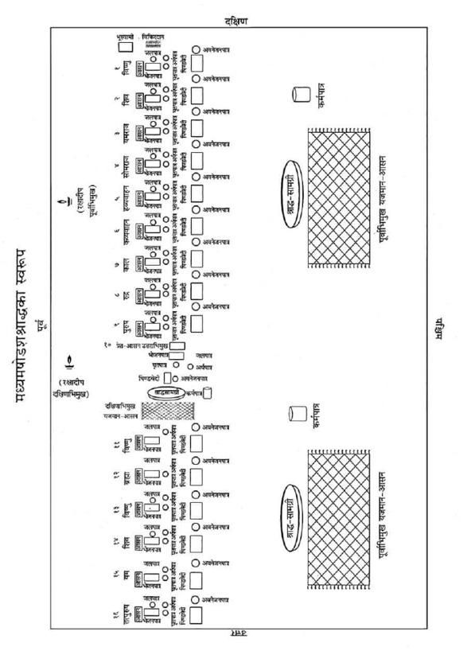
पवित्रीधारण—निम्न मन्त्रसे पवित्री पहन ले—
ॐ पवित्रे स्थो वैष्णव्यौ सवितुर्व: प्रसव उत्पुनाम्यच्छिद्रेण पवित्रेण सूर्यस्य रश्मिभि:। तस्य ते पवित्रपते पवित्रपूतस्य यत्काम: पुने तच्छकेयम्॥
आचमन—ॐ केशवाय नम:। ॐ नारायणाय नम:। ॐ माधवाय नम:। इन मन्त्रोंको बोलकर आचमन करे। ॐ हृषीकेशाय नम: कहकर हाथ धो ले।
प्राणायाम—प्राणायाम करे।
आसनों और पात्रोंका रखना—श्राद्धस्थलके पूर्वभागमें दक्षिण दिशासे प्रारम्भकर उत्तरकी ओर क्रमसे विष्णु आदि नौ देवताओंके नौ आसन पश्चिमाभिमुख लगाये जायँ। दसवाँ आसन प्रेतके लिये इसी पंक्तिमें उत्तराभिमुख लगाया जाय। पुन: छ: आसन देवताओंके लिये इसी पंक्तिमें पश्चिमाभिमुख बिछाये जायँ।
देवताओंके आसनके सामने भोजनपात्रके रूपमें पलाशका पत्तल, भोजनपात्रके दक्षिण अर्घपात्र (पलाशका दोना अथवा हाथका बना मिट्टीका दीया) और जलपात्र (पलाशका दोना अथवा हाथका बना मिट्टीका दीया) तथा भोजनपात्रके सामने घृतपात्र (पलाशका दोना अथवा हाथका बना मिट्टीका दीया) रखे। प्रेतके लिये भी भोजनपात्रके पश्चिम जलपात्र तथा अर्घपात्र और भोजनपात्रके सामने घृतपात्र रखे।
यजमानका आसन—इसके बाद यजमान अपना बैठनेका आसन देवश्राद्धके लिये पूर्वाभिमुख तथा प्रेतश्राद्धके लिये दक्षिणाभिमुख लगाये।
रक्षादीप-प्रज्वालन—इस श्राद्धमें दो दीपक तिल-तेलके जलेंगे। देवताओंका देवासनोंसे पूर्व पूर्वाभिमुख और प्रेतका प्रेतासनसे दक्षिण दक्षिणाभिमुख दीपक जलाकर क्रमश: जौ तथा तिलपर रख दे। निम्न मन्त्रसे दीपकोंकी प्रार्थना करे—
भो दीप ब्रह्मरूपस्त्वं कर्मसाक्षी ह्यविघ्नकृत्।
यावत् कर्मसमाप्ति: स्यात् तावत् त्वं सुस्थिरो भव॥
गदाधर आदिकी प्रार्थना—अंजलिमें फूल लेकर गयाधाम, गदाधर तथा पितरोंका स्मरण कर निम्न मन्त्रसे प्रार्थना करे—
श्राद्धारम्भे गयां ध्यात्वा ध्यात्वा देवं गदाधरम्।
स्वपितॄन् मनसा ध्यात्वा तत: श्राद्धं समाचरेत्॥
ॐ गयायै नम:। ॐ गदाधराय नम:। कहकर फूल चढ़ा दे।
तदनन्तर तीन बार ‘ॐ श्राद्धभूम्यै नम:’ कहकर भूमिपर जौ एवं पुष्प छोड़े।
भूमिसहित विष्णु-पूजन—श्राद्ध आरम्भ करनेके पूर्व विष्णुभगवान्का पूजन करनेका विधान है। अत: शालग्राम-शिलापर षोडशोपचार अथवा पंचोपचार पूजन करना चाहिये।*
* श्राद्धमें विष्णु-पूजनका विधान होनेके कारण विष्णु-पूजनके अन्तर्गत शालग्राम-पूजनकी बात लिखी गयी है, परंतु सपिण्डीकरणसे पूर्व पूर्ण शुद्धि न होनेके कारण स्मरण तथा मानसिक पूजन करना उचित है।
यदि सम्भव न हो तो निम्न श्लोकसे विष्णुभगवान्का स्मरण-पूजन करते हुए पुष्पांजलि समर्पित कर श्राद्ध आरम्भ करना चाहिये—
शान्ताकारं भुजगशयनं
पद्मनाभं सुरेशं
विश्वाधारं गगनसदृशं
मेघवर्णं शुभाङ्गम्।
लक्ष्मीकान्तं कमलनयनं
योगिभिर्ध्यानगम्यं
वन्दे विष्णुं भवभयहरं
सर्वलोकैकनाथम्॥
ॐ भूमिपत्नीसहिताय विष्णवे नम:—कहकर भगवान् विष्णुको प्रणामकर पुष्प अर्पित कर दे।
कर्मपात्रका निर्माण—श्राद्धकर्ममें जलका उपयोग करनेके लिये कर्मपात्रका निर्माण कर ले। अक्षतोंके ऊपर जलसे भरा एक कलश रखकर उसमें चन्दन, तुलसी, जौ, पुष्प तथा कुश छोड़ दे और त्रिकुशसे जलको दक्षिणावर्त आलोडित करते हुए निम्न मन्त्रोंको पढ़े—
ॐ यद्देवा देवहेडनं देवासश्चकृमा वयम्।
अग्निर्मा तस्मादेनसो विश्वान् मुञ्चत्वÞहस:॥
ॐ यदि दिवा यदि नक्तमेनाÞसि चकृमा वयम्।
वायुर्मा तस्मादेनसो विश्वान् मुञ्चत्वÞहस:॥
ॐ यदि जाग्रद्यदि स्वप्न एनाÞसि चकृमा वयम्।
सूर्यो मा तस्मादेनसो विश्वान् मुञ्चत्वÞहस:॥
प्रोक्षण—कर्मपात्रके जलसे कुशद्वारा अपना तथा सभी श्राद्धसामग्री एवं पाकका प्रोक्षण करे और बोले—‘श्वादिदुष्टदृष्टिनिपातदूषितपाकादिकं पूतं भवतु।’
दिग्-रक्षण—बायें हाथमें पीली सरसों लेकर दाहिने हाथसे ढककर निम्न मन्त्र बोले—
नमो नमस्ते गोविन्द पुराणपुरुषोत्तम।
इदं श्राद्धं हृषीकेश रक्ष त्वं सर्वतो दिश:॥
तदनन्तर दाहिने हाथसे सरसोंको पूर्व-दक्षिण आदि दिशाओंमें निम्न मन्त्रोंको पढ़ते हुए छोड़े—पूर्वमें—प्राच्यै नम:। दक्षिणमें—अवाच्यै नम:। पश्चिममें—प्रतीच्यै नम:। उत्तरमें—उदीच्यै नम:। आकाशमें—अन्तरिक्षाय नम:। भूमिपर—भूम्यै नम:।
हाथ जोड़कर प्रार्थना करे—
पूर्वे नारायण: पातु वारिजाक्षस्तु दक्षिणे।
प्रद्युम्न: पश्चिमे पातु वासुदेवस्तथोत्तरे।
ऊर्ध्वं गोवर्धनो रक्षेदधस्ताच्च त्रिविक्रम:॥
नीवीबन्धन*—किसी पत्र-पुटक या पानके पत्तेपर तिल, त्रिकुशका टुकड़ा लपेटकर निम्न मन्त्र पढ़ते हुए दक्षिण कटिभागमें उसे खोंस ले, बाँध ले—
ॐ निहन्मि सर्वं यदमेध्यकृद् भवे-
द्धताश्च सर्वेऽसुरदानवा मया।
यक्षाश्च रक्षांसि पिशाचगुह्यका
हता मया यातुधानाश्च सर्वे॥
ॐ सोमस्य नीविरसि विष्णो: शर्मासि शर्मयजमानस्येन्द्रस्य योनिरसि सुसस्या: कृषीस्कृधि।
* पितॄणां दक्षिणे पार्श्वे विपरीता तु दैविके।
इति स्मृत्यन्तरात्। (निर्णयसिन्धु तृतीय परिच्छेद उत्तरार्ध)
प्रतिज्ञासंकल्प—दाहिने हाथमें त्रिकुश, जौ तथा जल लेकर निम्नलिखित वाक्य बोले—
ॐ विष्णुर्विष्णुर्विष्णु: नम: परमात्मने पुरुषोत्तमाय ॐ तत्सत् अद्यैतस्य विष्णोराज्ञया जगत्सृष्टिकर्मणि प्रवर्तमानस्य ब्रह्मणो द्वितीयपरार्द्धे श्रीश्वेतवाराहकल्पे वैवस्वतमन्वन्तरे अष्टाविंशतितमे कलियुगे तत्प्रथमचरणे जम्बूद्वीपे भारतवर्षे भरतखण्डे ....क्षेत्रे (यदि काशी हो तो अविमुक्तवाराणसीक्षेत्रे गौरीमुखे त्रिकण्टकविराजिते महाश्मशाने भगवत्या उत्तरवाहिन्या भागीरथ्या वामभागे) बौद्धावतारे ....संवत्सरे उत्तरायणे/दक्षिणायने ....ऋतौ ....मासे ....पक्षे ....तिथौ ....वासरे ....गोत्र: ....शर्मा/वर्मा/गुप्तोऽहम् ....गोत्रस्य(स्त्री हो तो गोत्राया: बोले)।....प्रेतस्य (....प्रेताया:) प्रेतत्वनिवृत्तिपूर्वकविष्णुलोकाद्युत्तमलोकप्राप्त्यर्थं पितृपङ्क्तिप्रवेशार्थं च विष्ण्वादितत्पुरुषान्तदेवानां प्रेतस्य च एकोद्दिष्टविधिना मध्यमषोडशश्राद्धानि करिष्ये। हाथका जलादि पात्र (तष्टा)-में छोड़ दे।
पितृगायत्रीका पाठ*—पितृगायत्रीका तीन बार पाठ करे—
ॐ देवताभ्य: पितृभ्यश्च महायोगिभ्य एव च।
नम: स्वाहायै स्वधायै नित्यमेव नमो नम:॥
* (क) गायत्रीं प्रणवं चापि जप्त्वा श्राद्धमुपक्रमेत्। (प्रचेता)
(ख) देवताभ्य: पितृभ्यश्च महायोगिभ्य एव च।
नम: स्वाहायै स्वधायै नित्यमेव भवन्त्विति॥
आद्यावसाने श्राद्धस्य त्रिरावृत्त्या जपेत् सदा।
पिण्डनिर्वपणे वाऽपि जपेदेवं समाहित:॥
(ब्रह्मपु० २२०।१४३-१४४)
‘देवताभ्य:०’ इस पितृगायत्रीमन्त्रका श्राद्धके प्रारम्भ, मध्य तथा अन्तमें जप करना चाहिये।
प्रथम नौ देवताओंके लिये आसनदानका संकल्प—देवताओंके लिये बिछाये गये आसनोंपर पूर्वाग्र तीन-तीन कुशाओंको आसनके रूपमें रख दे। हाथमें त्रिकुश, जौ, जल लेकर प्रथम नौ देवताओंको आसन-प्रदान करनेके लिये निम्न संकल्प पढ़े—
ॐ अद्य ....गोत्रस्य (....गोत्राया:) ....प्रेतस्य (....प्रेताया:) प्रेतत्वनिवृत्तिपूर्वकपितृपङ्क्तिप्रवेशाधिकारसिद्धॺर्थं क्रियमाणे मध्यमषोडशश्राद्धे विष्ण्वादिपुरुषान्तदेवानामिमानि आसनानि विभज्य वो नम:।
—यह संकल्प पढ़कर हाथका जल, जौ आदि नौ आसनोंपर देवतीर्थसे छोड़ दे।
आवाहन*—देवताओंके नौ आसनोंपर इस मन्त्रसे जौ छोड़े—ॐ यवोऽसि यवयास्मद् द्वेषो यवयाराती:। यहाँकी पवित्री उतार दे।
* आवाहयेदनुज्ञातो विश्वे देवास इत्यृचा॥
यवैरन्ववकीर्याथ भाजने सपवित्रके।
शन्नो देव्या पय: क्षिप्त्वा यवोऽसीति यवांस्तथा॥
(वीरमित्रोदय, श्रा०प्र०में याज्ञवल्क्यका वचन)
प्रेतके लिये आसनदानका संकल्प—प्रेतके सम्मुख अपने आसनपर बैठ जाय। यहाँकी पवित्री पहन ले। अपसव्य तथा दक्षिणाभिमुख होकर प्रेतासनपर दक्षिणाग्र तीन कुश रख दे। फिर त्रिकुश, तिल, जल लेकर निम्न संकल्प पढ़ते हुए पितृतीर्थसे आसनदान दे और तिल, जल आसनपर छोड़ दे—
ॐ अद्य ....गोत्रस्य (....गोत्राया:) ....प्रेतस्य (....प्रेताया:) प्रेतत्वनिवृत्तिपूर्वकपितृपङ्क्तिप्रवेशाधिकारसिद्धॺर्थं क्रियमाणे मध्यमषोडशश्राद्धे प्रेतस्य इदमासनं ते मया दीयते, तवोपतिष्ठताम्।
आवाहन—ॐ अपहता असुरा रक्षाॸसि वेदिषद:—इस मन्त्रसे प्रेतके आसनपर तिल छोड़े। यहाँकी पवित्री उतार दे।
ग्यारहवेंसे सोलहवेंतक छ: देवताओंके लिये आसनदानका संकल्प—देवताओंके सम्मुख अपने आसनपर आ जाय। सव्य पूर्वाभिमुख होकर यहाँकी पवित्री पहन ले। छ: आसनोंपर पूर्वाग्र तीन-तीन कुश रख दे। तदनन्तर हाथमें त्रिकुश, जल, जौ लेकर निम्न संकल्प करे—
ॐ अद्य ....गोत्रस्य (....गोत्राया:) ....प्रेतस्य (....प्रेताया:) प्रेतत्वनिवृत्तिपूर्वकपितृपङ्क्तिप्रवेशाधिकारसिद्धॺर्थं क्रियमाणे मध्यमषोडशश्राद्धे विष्ण्वादितत्पुरुषान्तदेवानामिमानि आसनानि विभज्य वो नम:। संकल्पका जौ-जल देवतीर्थसे आसनोंपर छोड़ दे।
आवाहन—देवताओंके छ: आसनोंपर इस मन्त्रसे जौ छोड़े—ॐयवोऽसि यवयास्मद् द्वेषो यवयाराती:।
अर्घपात्र-निर्माण—प्रथम नौ देवताओंके समीप आसनपर बैठ जाय। नौ देवभोजनपात्रोंके दक्षिण रखे हुए अर्घपात्रोंमें पवित्रक, जल, जौ आदि निम्न मन्त्रोंसे छोडे़—
(क) पवित्रक-प्रक्षेप—निम्न मन्त्रसे देवनिमित्तक नौ अर्घपात्रोंमें पूर्वाग्र पवित्रक रखे—
ॐ पवित्रे स्थो वैष्णव्यौ सवितुर्व: प्रसव उत्पुनाम्यच्छिद्रेण पवित्रेण सूर्यस्य रश्मिभि:।
तस्य ते पवित्रपते पवित्रपूतस्य यत्काम: पुने तच्छकेयम्॥
(ख) जल-प्रक्षेप—निम्न मन्त्रसे नौ अर्घपात्रोंमें जल डाले—
ॐ शं नो देवीरभिष्टय आपो भवन्तु पीतये। शं योरभि स्रवन्तु न:॥
(ग) यव-प्रक्षेप—निम्न मन्त्रसे नौ देवार्घपात्रोंमें जौ डाले—
ॐ यवोऽसि यवयास्मद् द्वेषो यवयाराती:।
(घ) चन्दन और पुष्प-प्रक्षेप—नौ अर्घपात्रोंमें चन्दन, पुष्प मौन होकर छोड़े। पवित्री उतार दे।
प्रेतार्घपात्रका निर्माण—अपसव्य दक्षिणाभिमुख होकर पवित्री धारणकर प्रेतके अर्घपात्रमें ‘पवित्रे स्थो०’ इस मन्त्रसे दक्षिणाग्र पवित्रक, ‘शं नो देवी०’ मन्त्रसे जल तथा निम्न मन्त्रसे तिल छोड़े—
ॐ तिलोऽसि सोमदैवत्यो गोसवो देवनिर्मित:।
प्रत्नमद्भि: पृक्त: स्वधया पितॄँल्लोकान् प्रीणाहि न: स्वाहा॥
इसके बाद मौन होकर चन्दन-पुष्प छोड़े। प्रेतमण्डलकी पवित्री उतार दे।
पुन: देवमण्डलमें अपने आसनपर आकर सव्य पूर्वाभिमुख हो देवमण्डलकी पवित्री धारण कर पहलेकी भाँति देवनिमित्तक शेष छ: अर्घपात्रोंमें पवित्रक, जल, जौ पूर्वोक्त मन्त्रोंसे तथा चन्दन, पुष्प मौन होकर छोड़े।
देवार्घपात्रोंका अभिमन्त्रण—अर्घ देनेसे पहले अर्घपात्रको बायें हाथमें रखकर पवित्रकको दायें हाथसे निकालकर भोजनपात्रपर पूर्वाग्र रखे और उस पवित्रकपर पूजनपात्रसे एक आचमनी जल ‘ॐ नमो नारायणाय’ कहकर छोड़ दे। अर्घपात्रको दाहिने हाथसे ढककर निम्न मन्त्र बोलकर अभिमन्त्रित करे—
ॐ या दिव्या आप: पयसा सम्बभूवुर्या आन्तरिक्षा उत पार्थवीर्या:।
हिरण्यवर्णा यज्ञियास्ता न आप: शिवा: शÞ स्योना: सुहवा भवन्तु॥
अर्घदान*—तदनन्तर प्रथम अर्घपात्रको दाहिने हाथमें रख ले तथा त्रिकुश, जौ, जल लेकर नीचे लिखे संकल्पोंको पढ़कर अर्घदान करे—
१. विष्णु-अर्घदान—ॐ अद्य ....गोत्रस्य (....गोत्राया:) ....प्रेतस्य (....प्रेताया:) प्रेतत्वनिवृत्ति-पूर्वकपितृपङ्क्तिप्रवेशार्थं क्रियमाणे मध्यमषोडशश्राद्धान्तर्गते विष्णुश्राद्धे विष्णो एषोऽर्घस्ते नम:। ऐसा बोलकर विष्णुके भोजनपात्रमें रखे हुए पवित्रकपर देवतीर्थसे जल गिरा दे। पवित्रकको पुन: अर्घपात्रमें पूर्वाग्र रख दे और अर्घपात्रको ‘ॐ विष्णवे स्थानमसि’ कहकर देवके दाहिने अर्थात् देवासनके उत्तरमें ऊर्ध्वमुख स्थापित कर दे।
* अर्घेऽक्षय्योदके चैव पिण्डदानेऽवनेजने।
तन्त्रस्य तु निवृत्ति: स्यात् स्वधावाचन एव च॥
(कात्यायनस्मृति २४।१५, वीरमित्रोदय-श्राद्धप्रकाश)
अर्घदान, अक्षय्योदकदान, पिण्डदान, अवनेजनदान, प्रत्यवनेजनदान और स्वधावाचनमें एकतन्त्रकी विधि नहीं है।
इसी प्रक्रियासे निम्नलिखित सभी देवताओंके अलग-अलग अर्घपात्रोंका उपर्युक्त मन्त्रोंसे अभिमन्त्रण कर उन्हें अर्घ प्रदान करे और इसी प्रकार पवित्रक तथा अर्घपात्रको भी निर्दिष्ट स्थानपर रखे।
२. शिव-अर्घदान—ॐ अद्य ....गोत्रस्य (....गोत्राया:) ....प्रेतस्य (....प्रेताया:) प्रेतत्वनिवृत्तिपूर्वकपितृपङ्क्तिप्रवेशार्थं क्रियमाणे मध्यमषोडशश्राद्धान्तर्गते शिवश्राद्धे शिव एषोऽर्घस्ते नम:।
३. यमराज-अर्घदान—ॐ अद्य ....गोत्रस्य (....गोत्राया:) ....प्रेतस्य (....प्रेताया:) प्रेतत्वनिवृत्ति-पूर्वकपितृपङ्क्तिप्रवेशार्थं क्रियमाणे मध्यमषोडशश्राद्धान्तर्गते यमश्राद्धे यमराज एषोऽर्घस्ते नम:।
४. सोमराज-अर्घदान—ॐ अद्य ....गोत्रस्य (....गोत्राया:) ....प्रेतस्य (....प्रेताया:) प्रेतत्व-निवृत्तिपूर्वकपितृपङ्क्तिप्रवेशार्थं क्रियमाणे मध्यमषोडशश्राद्धान्तर्गते सोमराजश्राद्धे सोमराज एषोऽर्घस्ते नम:।
५. हव्यवाहन-अर्घदान—ॐ अद्य ....गोत्रस्य (....गोत्राया:) ....प्रेतस्य (....प्रेताया:) प्रेतत्वनिवृत्तिपूर्वकपितृपङ्क्तिप्रवेशार्थं क्रियमाणे मध्यमषोडशश्राद्धान्तर्गते हव्यवाहनश्राद्धे हव्यवाहन एषोऽर्घस्तेनम:।
६. कव्यवाहन-अर्घदान—ॐ अद्य ....गोत्रस्य (....गोत्राया:) ....प्रेतस्य (....प्रेताया:) प्रेतत्वनिवृत्तिपूर्वकपितृपङ्क्तिप्रवेशार्थं क्रियमाणे मध्यमषोडशश्राद्धान्तर्गते कव्यवाहनश्राद्धे कव्यवाहन एषोऽर्घस्तेनम:।
७. काल-अर्घदान—ॐ अद्य ....गोत्रस्य (....गोत्राया:) ....प्रेतस्य (....प्रेताया:) प्रेतत्वनिवृत्ति-पूर्वकपितृपङ्क्तिप्रवेशार्थं क्रियमाणे मध्यमषोडशश्राद्धान्तर्गते कालश्राद्धे काल एषोऽर्घस्ते नम:।
८. रुद्र-अर्घदान—ॐ अद्य ....गोत्रस्य (....गोत्राया:) ....प्रेतस्य (....प्रेताया:) प्रेतत्वनिवृत्ति-पूर्वकपितृपङ्क्तिप्रवेशार्थं क्रियमाणे मध्यमषोडशश्राद्धान्तर्गते रुद्रश्राद्धे रुद्र एषोऽर्घस्ते नम:।
९. पुरुष-अर्घदान—ॐ अद्य ...गोत्रस्य (...गोत्राया:) ...प्रेतस्य (...प्रेताया:) प्रेतत्वनिवृत्ति-पूर्वकपितृपङ्क्तिप्रवेशार्थं क्रियमाणे मध्यमषोडशश्राद्धान्तर्गते पुरुषश्राद्धे पुरुष एषोऽर्घस्ते नम:।
यहाँकी पवित्री छोड़ दे।
प्रेतार्घका अभिमन्त्रण—प्रेतमण्डलमें अपने आसनपर आकर अपसव्य दक्षिणाभिमुख होकर यहाँकी पवित्री पहन ले। अर्घपात्रको बायें हाथमें रखकर उसके पवित्रकको दाहिने हाथसे निकालकर भोजनपात्रमें उत्तराग्र रख दे और उस पवित्रकपर एक आचमनी जल ‘ॐ नमो नारायणाय’ कहकर छोड़े। अर्घपात्रको दाहिने हाथसे ढककर ‘या दिव्या०’ यह पूर्वोक्त मन्त्र बोलकर अभिमन्त्रित करे।
१०. प्रेत-अर्घदान—तदनन्तर दाहिने हाथमें अर्घपात्र रखकर हाथमें त्रिकुश, तिल, जल लेकर निम्न संकल्प बोले—
ॐ अद्य ....गोत्रस्य (....गोत्राया:) ....प्रेतस्य (....प्रेताया:) प्रेतत्वनिवृत्तिपूर्वकपितृपङ्क्तिप्रवेशार्थं क्रियमाणे मध्यमषोडशश्राद्धान्तर्गतप्रेतश्राद्धे प्रेत एषोऽर्घस्ते मया दीयते, तवोपतिष्ठताम्।
इस तरह संकल्प कर भोजनपात्रमें रखे हुए पवित्रकपर अर्घका जल पितृतीर्थसे गिरा दे। फिर उस पवित्रकको उठाकर दक्षिणाग्र अर्घपात्रपर रख दे। इसके बाद इस अर्घपात्रको उठाकर प्रेतासनके बायें भाग (पश्चिम दिशा)-में ‘प्रेताय स्थानमसि’ कहकर सीधा रख दे। यहाँकी पवित्री छोड़ दे।
देवमण्डलमें आकर आसनपर बैठ जाय। सव्य पूर्वाभिमुख होकर पवित्री धारण कर ले। शेष छहों देवार्घपात्रोंका पूर्वोक्त देवरीतिसे अभिमन्त्रण कर हाथमें त्रिकुश, जौ, जल तथा अर्घपात्र लेकर संकल्पपूर्वक देवोंको अर्घदान निम्न भाँतिसे करे—
११. विष्णु-अर्घदान—ॐ अद्य ....गोत्रस्य (....गोत्राया:) ....प्रेतस्य (....प्रेताया:) प्रेतत्वनिवृत्ति-पूर्वकपितृपङ्क्तिप्रवेशार्थं क्रियमाणे मध्यमषोडशश्राद्धान्तर्गते विष्णुश्राद्धे विष्णो एषोऽर्घस्ते नम:। बोलकर विष्णुभोजनपात्रमें रखे हुए पवित्रकपर देवतीर्थसे जल गिरा दे। पवित्रकको पूर्वाग्र अर्घपात्रमें रख दे तथा ‘ॐ विष्णवे स्थानमसि’ कहकर अर्घपात्रको देवके दाहिने अर्थात् देवासनके उत्तरमें सीधा स्थापित कर दे। इसी प्रक्रियासे निम्न सभी देवताओंको अर्घ प्रदान करे और पवित्रक तथा अर्घपात्रको भी निर्दिष्ट स्थानपर रख दे।
१२.ब्रह्मा-अर्घदान—ॐ अद्य ....गोत्रस्य (....गोत्राया:) ....प्रेतस्य (....प्रेताया:) प्रेतत्वनिवृत्ति-पूर्वकपितृपङ्क्तिप्रवेशार्थं क्रियमाणे मध्यमषोडशश्राद्धान्तर्गते ब्रह्मश्राद्धे ब्रह्मन् एषोऽर्घस्ते नम:।
१३. विष्णु-अर्घदान—ॐ अद्य ....गोत्रस्य (....गोत्राया:) ....प्रेतस्य (....प्रेताया:) प्रेतत्वनिवृत्ति-पूर्वकपितृपङ्क्तिप्रवेशार्थं क्रियमाणे मध्यमषोडशश्राद्धान्तर्गते विष्णुश्राद्धे विष्णो एषोऽर्घस्ते नम:।
१४. शिव-अर्घदान—ॐ अद्य ....गोत्रस्य (....गोत्राया:) ....प्रेतस्य (....प्रेताया:) प्रेतत्वनिवृत्ति-पूर्वकपितृपङ्क्तिप्रवेशार्थं क्रियमाणे मध्यमषोडशश्राद्धान्तर्गते शिवश्राद्धे शिव एषोऽर्घस्ते नम:।
१५. यम-अर्घदान—ॐ अद्य ....गोत्रस्य (....गोत्राया:) ....प्रेतस्य (....प्रेताया:) प्रेतत्वनिवृत्ति-पूर्वकपितृपङ्क्तिप्रवेशार्थं क्रियमाणे मध्यमषोडशश्राद्धान्तर्गते यमश्राद्धे यम एषोऽर्घस्ते नम:।
१६. तत्पुरुष-अर्घदान—ॐ अद्य ....गोत्रस्य (....गोत्राया:) ....प्रेतस्य (....प्रेताया:) प्रेतत्वनिवृत्तिपूर्वकपितृपङ्क्तिप्रवेशार्थं क्रियमाणे मध्यमषोडशश्राद्धान्तर्गते तत्पुरुषश्राद्धे तत्पुरुष एषोऽर्घस्ते नम:।
देवमण्डलकी पवित्री यहीं उतार दे।
आसनोंपर पूजनसामग्री चढ़ाना—पहले नौ आसनोंपर सव्य पूर्वाभिमुख होकर देवमण्डलकी पवित्री पहनकर पूजनसामग्री चढ़ाये। पवित्री उतार दे। दसवें प्रेतके आसनपर अपसव्य दक्षिणाभिमुख होकर प्रेतमण्डलकी पवित्री पहनकर पूजनसामग्री चढ़ाये, यहाँ जौके स्थानपर तिल रखे। पवित्री उतार दे। पुन: छ: देव-आसनोंपर सव्य पूर्वाभिमुख होकर देवमण्डलकी पवित्री पहनकर पूजनसामग्री चढ़ाये।
आसनोंपर पूजन—सभी आसनोंपर पृथक्-पृथक् विविध उपचारोंसे पूजन करे। यथा—
यजमान बोले—‘इदमाचमनीयम्’, आचार्य बोले—(स्वाचमनीयम्*) कहकर आचमनीय जल दे।
* कोष्ठमें लिखे निर्देश आचार्यको बोलने हैं।
इदं स्नानीयम् (सुस्नानीयम्)—कहकर स्नानीय जल दे।
इदमाचमनीयम् (स्वाचमनीयम्)—कहकर आचमनीय जल दे।
इदं वस्त्रम् (सुवस्त्रम्)—कहकर वस्त्र या सूत्र चढ़ाये।
इदमाचमनीयम् (स्वाचमनीयम्)—कहकर आचमनीय जल दे।
इमे यज्ञोपवीते (सुयज्ञोपवीते)—कहकर यज्ञोपवीत चढ़ाये।
इदमाचमनीयम् (स्वाचमनीयम्)—कहकर आचमनीय जल दे।
एष गन्ध: (सुगन्ध:)—कहकर गन्ध अर्पित करे।
इमे यवाक्षता: (सुयवाक्षता:)—कहकर जौ चढ़ाये, प्रेतके आसनपर
इमे तिलाक्षता: (सुतिलाक्षता:)— कहकर तिल चढ़ाये।
इदं माल्यम् (सुमाल्यम्)—कहकर माला चढ़ाये।
एष धूप: (सुधूप:)—कहकर धूप आघ्रापित करे।
एष दीप: (सुदीप:)—कहकर दीपक दिखाये और हाथ धो ले।
इदमाचमनीयम् (स्वाचमनीयम्)—कहकर आचमनीय जल दे।
इदं नैवेद्यम् (सुनैवेद्यम्)—कहकर नैवेद्य अर्पित करे।
इदमाचमनीयम् (स्वाचमनीयम्)—कहकर आचमनीय जल दे।
इदं फलम् (सुफलम्)—कहकर फल समर्पित करे।
इदमाचमनीयम् (स्वाचमनीयम्)—कहकर आचमनीय जल दे।
इदं ताम्बूलम् (सुताम्बूलम्)—कहकर ताम्बूल प्रदान करे।
एषा दक्षिणा (सुदक्षिणा)—कहकर दक्षिणा चढ़ाये।
प्रत्येक आसनपर संकल्प-जल छोड़ना—त्रिकुश, जौ, जल लेकर संकल्प कर पहले प्रथम नौ देवताओंके आसनोंपर संकल्पजल छोड़नेके लिये निम्न संकल्प एक बार बोले और नौ देवताओंके आसनपर पृथक्-पृथक् देवतीर्थसे जल छोड़ दे—
संकल्प—ॐ अद्य ....गोत्रस्य (....गोत्राया:) ....प्रेतस्य (....प्रेताया:) प्रेतत्वनिवृत्तिपूर्वकपितृ-पङ्क्तिप्रवेशार्थं क्रियमाणे मध्यमषोडशश्राद्धे विष्ण्वादिपुरुषान्तदेवा एतान्यर्चनानि युष्मभ्यं नम:। यहाँकी पवित्री छोड़ दे।
दसवें आसनपर आकर यहाँकी पवित्री पहन ले। अपसव्य दक्षिणाभिमुख होकर त्रिकुश, तिल, जल लेकर संकल्प करे—
संकल्प—ॐ अद्य ....गोत्रस्य (....गोत्राया:) ....प्रेतस्य (....प्रेताया:) प्रेतत्वनिवृत्तिपूर्वकपितृपङ्क्तिप्रवेशार्थं क्रियमाणे मध्यमषोडशश्राद्धान्तर्गते दशमे प्रेतश्राद्धे प्रेत एतान्यर्चनानि ते मया दीयन्ते, तवोपतिष्ठन्ताम्।
ऐसा कहकर पितृतीर्थसे जल प्रेतासनपर छोड़ दे। यहाँकी पवित्री छोड़ दे।
देवमण्डलकी पवित्री पहनकर सव्य पूर्वाभिमुख हो जौ, जल, त्रिकुश लेकर निम्न संकल्प एक बार बोलकर शेष छ: आसनोंपर जल छोड़ता जाय—
संकल्प—ॐ अद्य ....गोत्रस्य (....गोत्राया:) ....प्रेतस्य (....प्रेताया:) प्रेतत्वनिवृत्तिपूर्वकपितृ-पङ्क्तिप्रवेशार्थं क्रियमाणे मध्यमषोडशश्राद्धे विष्ण्वादितत्पुरुषान्तदेवा एतान्यर्चनानि युष्मभ्यं नम:।
मण्डलकरण*—प्रथम नौ देवताओंके आसनसहित भोजनपात्रोंके चारों ओर जलसे दक्षिणावर्त चतुष्कोण मण्डल करे। देवमण्डलकी पवित्री उतार दे। प्रेतमण्डलकी पवित्री धारण कर अपसव्य दक्षिणाभिमुख होकर प्रेतके आसनसहित भोजनपात्रके चारों ओर गोल मण्डल वामावर्त बनाये। पवित्री उतार दे।
* (क) दैवे चतुरस्रं पित्र्ये वर्तुलं मण्डलम्।
(बह्वृचपरिशिष्ट)
बह्वृचपरिशिष्टमें बताया गया है कि देवताओंके लिये चतुष्कोण और प्रेत तथा पितरोंके लिये वृत्ताकार मण्डल बनाना चाहिये।
(ख) गन्धोदके तथा दीपमाल्यदामप्रदीपकम्।
अपसव्यं तत: कृत्वा पितृृृणामप्रदक्षिणम्॥
(ग०पु०, आ०काण्ड ९९।१३)
(ग) दक्षिणं पातयेज्जानुं देवान् परिचरन् सदा।
पातयेदितरं जानुं पितॄृन् परिचरन् सदा॥
प्रदक्षिणं तु देवानां पितृृृणामप्रदक्षिणम्।
(वीरमित्रोदय-श्राद्धप्रकाशमें कात्यायनका वचन)
पुन: देवमण्डलकी पवित्री धारणकर सव्य पूर्वाभिमुख होकर शेष छ: देवताओंके आसनसहित भोजनपात्रोंके चारों ओर दक्षिणावर्त चतुष्कोण मण्डल बनाये। सभी मण्डल बनाते समय निम्न मन्त्र पढ़े—
ॐ यथा चक्रायुधो विष्णुस्त्रैलोक्यं परिरक्षति।
एवं मण्डलतोयं तु सर्वभूतानि रक्षतु॥
भूस्वामीके पितरोंको अन्नप्रदान—भूस्वामीके पितरोंको अन्न प्रदान करनेके लिये अपसव्य दक्षिणाभिमुख होकर किसी पात्रमें सब प्रकारके अन्न तथा साथमें जल, घृत, तिल लेकर—‘ॐ इदमन्नमेतद् भूस्वामिपितृभ्यो नम:’ बोलकर अन्नादिको जलसे सिंचित भूमिपर दक्षिणकी ओर कुशके ऊपर रख दे और जल गिरा दे।
अन्नपरिवेषण—सभी भोजनपात्रोंसे जौ एवं तिल हटा दे। सव्य पूर्वाभिमुख होकर देवतीर्थसे नौ देवताओंके भोजनपात्रोंपर अन्न परोसकर जलपात्रोंमें जल तथा घृतपात्रोंमें घृत रख दे। देवमण्डलकी पवित्री उतारकर प्रेतमण्डलकी पवित्री पहन ले। अपसव्य दक्षिणाभिमुख होकर प्रेतके भोजनपात्रपर पितृतीर्थसे अन्न परोसकर पात्रोंमें जल तथा घृत रख दे। प्रेतमण्डलकी पवित्री उतारकर देवमण्डलकी पवित्री पहन ले। सव्य होकर छ: देवताओंके पात्रोंपर अन्नपरिवेषण कर दोनियोंमें जल तथा घृत रख दे।
मधु-प्रक्षेप—सव्यापसव्य होकर सभी देवभोजनपात्रों तथा प्रेतभोजनपात्रपर निम्न मन्त्र बोलते हुए दोनों हाथोंसे मधु डाले—
ॐ मधु वाता ऋतायते मधु क्षरन्ति सिन्धव:। माध्वीर्न: सन्त्वोषधी:॥ मधु नक्तमुतोषसो मधुमत्पार्थिवÞ रज:। मधु द्यौरस्तु न: पिता॥ मधुमान्नो वनस्पतिर्मधुमाँ२ अस्तु सूर्य:। माध्वीर्गावो भवन्तु न:॥ ॐ मधु मधु मधु॥
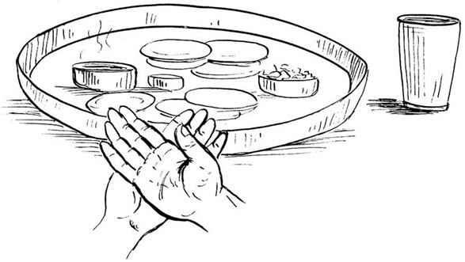
पात्रालम्भन*—उत्तान बायें हाथके ऊपर दाहिना हाथ उत्तान स्वस्तिकाकार रखकर विष्णुके प्रथम अन्नपात्रका स्पर्श कर निम्नलिखित मन्त्र बोले—
ॐ पृथिवी ते पात्रं द्यौरपिधानं ब्राह्मणस्य मुखे अमृते अमृतं जुहोमि स्वाहा। ॐ इदं विष्णुर्वि चक्रमे त्रेधा नि दधे पदम्। समूढमस्य पाÞसुरे स्वाहा॥
ॐ कृष्ण हव्यमिदं रक्ष मदीयम्।
* (क) दक्षिणं तु करं कृत्वा वामोपरि निधाय च।
देवपात्रमथालभ्य पृथ्वी ते पात्रमुच्चरेत्॥
दक्षिणोपरि वामं च पित्र्यपात्रस्य लम्भनम्।
पात्रालम्भनं कुर्याद् दत्त्वा चान्नं यथाविधि:॥
(श्राद्धकाशिकामें प०पु०का वचन)
(ख) पित्र्येऽनुत्तानपाणिभ्यामुत्तानाभ्यां च दैवते।
(यम) एवमेव हेमाद्रिमदनरत्नप्रभृतय:।

अन्न आदिका स्पर्श*—बायें हाथको भोजनपात्रमें संकल्पपर्यन्त लगाये रखे और अनुत्तान दायें हाथके अँगूठेसे अन्न छूकर बोले—‘इदमन्नम्।’ जल छूकर बोले—‘इमा आप:।’ घी छूकर बोले—‘इदमाज्यम्।’ पुन: अन्न छूकर बोले—‘इदं हव्यम्।’
* उत्तानेन तु हस्तेन कुर्यादन्नावगाहनम्।
आसुरं तद्भवेच्छ्राद्धं पितॄणां नोपतिष्ठते॥
उत्तान हाथके अँगूठेसे अन्नस्पर्श करनेपर वह श्राद्ध आसुरश्राद्ध हो जाता है और पितरोंको उपलब्ध नहीं होता। इसलिये अनुत्तान हाथके अँगूठेसे अन्न आदिका स्पर्श करना चाहिये।
जौ बिखेरना—अन्नके ऊपर यह मन्त्र पढ़कर दाहिने हाथसे जौ छोड़े—ॐ यवोऽसि यवयास्मद् द्वेषो यवयाराती:।
हव्यदान-संकल्प—बायें हाथसे अन्नपात्रका स्पर्श किये हुए ही दायें हाथमें त्रिकुश, जल, जौ लेकर निम्नलिखित संकल्प बोलकर विष्णुके भोजनपात्रके पास जल आदिको छोडे़—
ॐ अद्य ....गोत्रस्य (....गोत्राया:) ....प्रेतस्य (....प्रेताया:) प्रेतत्वनिवृत्तिपूर्वकपितृपङ्क्तिप्रवेशार्थं क्रियमाणे मध्यमषोडशश्राद्धान्तर्गतविष्णुश्राद्धे विष्णवे इदमन्नं सोपस्करममृतस्वरूपं हव्यं स्वाहा सम्पद्यताम्, न मम।
इसी प्रकार पृथक्-पृथक् आठ देवोंके भोजनपात्रोंका आलम्भन, अंगुष्ठनिवेशन तथा अन्नपर जौविकिरण करे और पृथक्-पृथक् हव्यदानका संकल्प करे। यहाँकी पवित्री तथा त्रिकुशको यहीं छोड़ दे।
अष्टादश पदार्थोंमें परिगणित होनेके कारण प्रेतश्राद्धमें पात्रालम्भन तथा अन्नावगाहन निषिद्ध है।
कव्यदान-संकल्प—प्रेतमण्डलमें आकर यहाँकी पवित्री पहन ले। अपसव्य दक्षिणाभिमुख होकर प्रेतके अन्नपर ‘ॐ अपहता असुरा रक्षाॸसि वेदिषद:’—मन्त्रसे तिल छोड़े। तदनन्तर त्रिकुश, तिल, जल लेकर निम्न संकल्प करे—
ॐ अद्य ....गोत्रस्य (....गोत्राया:) ....प्रेतस्य (....प्रेताया:) प्रेतत्वनिवृत्तिपूर्वकपितृपङ्तिप्रवेशार्थं क्रियमाणे मध्यमषोडशश्राद्धान्तर्गते दशमे प्रेतश्राद्धे इदमन्नं सोपस्करममृतस्वरूपं कव्यं प्रेताय ते मया दीयते, तवोपतिष्ठताम्। कहकर पितृतीर्थसे जल छोड़ दे। यहाँकी पवित्री उतार दे।
हव्यदान-संकल्प—आगेके देवमण्डलमें आकर यहाँकी पवित्री धारण कर ले। सव्य पूर्वाभिमुख हो पूर्ववत् देवरीतिसे शेष छ: देवताओंका पृथक्-पृथक् पात्रालम्भन, अङ्गुष्ठनिवेशन, अन्नपर जौविकिरण तथा पृथक्-पृथक् हव्यदानका संकल्प करे।
प्रार्थना—हाथ जोड़कर प्रार्थना करे—
ॐ अन्नहीनं क्रियाहीनं विधिहीनं च यद् भवेत्।
अच्छिद्रमस्तु तत्सर्वं पित्रादीनां प्रसादत:॥
पितृगायत्रीका जप— निम्न पितृगायत्रीका जप करे—
ॐ देवताभ्य: पितृभ्यश्च महायोगिभ्य एव च।
नम: स्वाहायै स्वधायै नित्यमेव नमो नम:॥
वेदशास्त्रादिका पाठ—इस अवसरपर यथासम्भव श्रुति, स्मृति, पुराण और इतिहासका पाठ करे, इससे पितरोंको प्रसन्नता होती है। पैरोंके नीचे पूर्वाग्र तीन कुश रख ले।
श्रुतिपाठ—ॐ अग्निमीळे पुरोहितं यज्ञस्य देवमृत्विजम्। होतारं रत्नधातमम्॥
ॐ इषे त्वोर्जे त्वा वायव स्थ देवो व: सविता प्रार्पयतु श्रेष्ठतमाय कर्मण आप्यायध्व मघ्न्या इन्द्राय भागं प्रजावतीरनमीवा अयक्ष्मा मा व स्तेन ईशत माघशंसो ध्रुवा अस्मिन् गोपतौ स्यात बह्वीर्यजमानस्य पशून् पाहि॥
ॐ अग्न आ याहि वीतये गृणानो हव्यदातये। नि होता सत्सि बर्हिषि॥
ॐ शं नो देवीरभिष्टय आपो भवन्तु पीतये। शं योरभि स्रवन्तुन:॥
स्मृतिपाठ—मनुमेकाग्रमासीनमभिगम्य महर्षय:।
प्रतिपूज्य यथान्यायमिदं वचनमब्रुवन्॥
योगीश्वरं याज्ञवल्क्यं सम्पूज्य मुनयोऽब्रुवन्।
वर्णाश्रमेतराणां नो ब्रूहि धर्मानशेषत:॥
मन्वत्रिविष्णुहारीतयाज्ञवल्क्योशनोऽङ्गिरा:।
यमापस्तम्बसंवर्ता: कात्यायनबृहस्पती॥
पराशरव्यासशङ्खलिखिता दक्षगौतमौ।
शातातपो वसिष्ठश्च धर्मशास्त्रप्रयोजका:॥
पुराण— नारायणं नमस्कृत्य नरं चैव नरोत्तमम्।
देवीं सरस्वतीं व्यासं ततो जयमुदीरयेत्॥
सप्त व्याधा दशार्णेषु मृगा: कालञ्जरे गिरौ।
चक्रवाका: शरद्वीपे हंसा: सरसि मानसे॥
तेऽभिजाता: कुरुक्षेत्रे ब्राह्मणा वेदपारगा:।
प्रस्थिता दीर्घमध्वानं यूयं किमवसीदथ॥
महाभारत— दुर्योधनो मन्युमयो महाद्रुम:
स्कन्ध: कर्ण: शकुनिस्तस्य शाखा:।
दु:शासन: पुष्पफले समृद्धे
मूलं राजा धृतराष्ट्रोऽमनीषी॥
युधिष्ठिरो धर्ममयो महाद्रुम:
स्कन्धोऽर्जुनो भीमसेनोऽस्य शाखा:।
माद्रीसुतौ पुष्पफले समृद्धे
मूलं कृष्णो ब्रह्म च ब्राह्मणाश्च॥
विकिरदान—अपसव्य दक्षिणाभिमुख होकर दक्षिण दिशाकी भूमिको जलसे सींच दे। उसपर तीन कुश बिछाकर पिण्डदानके लिये निर्मित सामग्रीमेंसे किंचित् सामग्री लेकर उसमें तिल मिलाकर दाहिने हाथमें ले ले तथा त्रिकुश, तिल, जल साथ लेकर बिछाये गये कुशोंपर निम्न मन्त्र पढ़ते हुए पितृतीर्थसे रख दे—
असंस्कृतप्रमीतानां त्यागिनां कुलभागिनाम्।
उच्छिष्टभागधेयानां दर्भेषु विकिरासनम्॥
अग्निदग्धाश्च ये जीवा येऽप्यदग्धा: कुले मम।
भूमौ दत्तेन तृप्यन्तु तृप्ता यान्तु परां गतिम्॥
तदनन्तर पहिनी हुई पवित्री, त्रिकुश आदिका वहीं परित्याग कर दे। हाथ-पाँव धो ले। अपने आसनपर आ जाय। सव्य पूर्वाभिमुख होकर आचमन कर ले, नयी पवित्री धारण कर ले। श्रीहरिका स्मरण कर पिण्डदानके लिये वेदियोंका निर्माण करे।
वेदीनिर्माण—भोजनपात्रोंके पश्चिम पहले प्रादेशमात्र लम्बी तथा छ: अंगुल चौड़ी नौ वेदियाँ बनाये और अपसव्य होकर प्रेतनिमित्तक एक (दसवीं) वेदी प्रेतभोजनपात्रके उत्तर बनाये। पुन: सव्य होकर छ: देववेदियाँ बनाये।
अवनेजनपात्र-स्थापन—देववेदियोंकी दक्षिण दिशामें अवनेजनपात्र (दोनिये या मिट्टीके दीये) रखे, प्रेतवेदीके पश्चिममें भी एक अवनेजनपात्र रखे। ये ही अवनेजनपात्र बादमें प्रत्यवनेजनपात्र कहलाते हैं।
प्रोक्षण—निम्न मन्त्र पढ़ते हुए पहले नौ वेदियोंको सव्यसे तथा प्रेतवेदीको अपसव्य होकर और पुन: सव्य होकर छ: देववेदियोंको जलसे सींचकर प्रोक्षित कर ले—
ॐ अयोध्या मथुरा माया काशी काञ्ची ह्यवन्तिका।
पुरी द्वारावती ज्ञेया: सप्तैता मोक्षदायिका:॥
रेखाकरण—बायें हाथके अंगुष्ठ तथा तर्जनीसे तीन समूल कुशोंके अग्रभागको और दाहिने हाथके अंगुष्ठ तथा तर्जनीसे कुशोंके मूल भागको पकड़कर पश्चिमसे पूर्वकी ओर प्रेतवेदीको छोड़कर सभी देववेदियोंपर इस मन्त्रसे एक-एक रेखा खींचे—ॐ अपहता असुरा रक्षाॸसि वेदिषद:। उन कुशोंको ईशान दिशामें फेंक दे।
प्रेतश्राद्धमें वर्ज्य अष्टादश पदार्थोंमें परिगणित होनेके कारण दसवीं (प्रेतकी) वेदीपर रेखा नहीं खींची जायगी।
उल्मुकस्थापन—सभी देववेदियोंके चारों ओर दायीं ओरसे प्रदक्षिणक्रमसे अंगारको निम्न मन्त्रसे घुमाये—
ॐ ये रूपाणि प्रतिमुञ्चमाना असुरा: सन्त: स्वधया चरन्ति।
परापुरो निपुरो ये भरन्त्यग्निष्टाँल्लोकात्प्रणुदात्यस्मात्॥
और उसे प्रथम विष्णुवेदीके दक्षिण* की ओर श्राद्धपर्यन्त स्थापित कर दे।
* उल्लेखनानन्तरं पश्चादुल्मुकनिधानमाह कात्यायन:—उल्मुकं परस्तात् करोति ये रूपाणीति रेखाया: परस्ताद्दक्षिणप्रदेशे उल्मुकं निदधातीत्यर्थ:। स्कन्दपुराणेऽपि ये रूपाणीति मन्त्रेण न्यसेदुल्मुकमन्तिके। अन्तिके दक्षिणाशायामित्यर्थ:। (गौडीयश्राद्धप्रकाश पृ० ३०)
अंगारको घुमानेके अनन्तर पिण्डवेदीके दक्षिणदिशामें स्थापित करना चाहिये।
इस प्रक्रियाका निर्वाह अंगार तथा गोहरी आदिके अभावमें ज्वालामुखी धूप आदिसे भी किया जा सकता है।
प्रेतश्राद्धमें वर्ज्य अष्टादश पदार्थोंमें परिगणित होनेके कारण दसवीं प्रेतकी वेदीपर उल्मुक नहीं रहेगा।
अवनेजनपात्रनिर्माण*—पूर्व स्थापित नौ देव-अवनेजनपात्रोंमें जल, जौ, गन्ध, पुष्प डाल दे। यहाँकी पवित्री उतार दे।
* कई प्रयोगपद्धतियोंमें कुशास्तरणके बाद अवनेजन प्रदान करनेकी व्यवस्था दी गयी है। परंतु श्राद्धके आधारभूत ग्रन्थ पारस्करगृह्यसूत्र तथा उसके भाष्यकारोंके निम्न वचनोंके अनुसार कुशास्तरणके पूर्व वेदीके मध्य खींची गयी रेखापर अवनेजन देनेका विधान है—
‘दर्भेषु त्रींस्त्रीन् पिण्डानवनेज्य दद्यात्’ (पारस्करगृह्यसूत्रपरिशिष्ट श्राद्धसूत्रकण्डिका ३)
अवनेजन देकर दर्भोंके ऊपर पिण्डदान करे।
उपर्युक्त पारस्करगृह्यसूत्रपर कर्काचार्यजीका भाष्य इस प्रकार है—‘पिण्डपितृयज्ञवदुपचार इति सूत्रितत्वात्।’
‘पिण्डपितृयज्ञवदुपचार: पित्र्ये’ (श्राद्धकाशिका २।२ तथा पारस्करगृह्यसूत्रपरिशिष्ट श्राद्धसूत्रकण्डिका २) इस सूत्रके अनुसार पिण्डपितृयज्ञमें जिस प्रक्रियाका आश्रयण किया गया है, उसी तरह अन्य श्राद्धोंमें भी किया जाय। दर्शपौर्णमासमें पितृयज्ञका प्रकरण है, जिसमें पहले अवनेजन बादमें कुशास्तरणकी विधि है।
गदाधरभाष्य—अत्राह याज्ञवल्क्य:—सर्वमन्नमुपादाय सतिलं दक्षिणामुख:। उच्छिष्टसन्निधौ पिण्डान् दद्याद्वै पितृयज्ञवदिति॥
अत्र पदार्थक्रम:—उल्लेखनम्, उदकालम्भ:, उल्मुकनिधानम्, अवनेजनम्, सकृदाच्छिन्नास्तरणम्, पिण्डदानम्।
अर्थात् उच्छिष्टकी सन्निधिमें दक्षिणाभिमुख होकर सभी अन्नोंको लेकर सतिलपितृयज्ञवत् पिण्ड प्रदान करना चाहिये। यहाँ पदार्थ-क्रम निम्नलिखित है—(१) उल्लेखन (रेखाकरण), (२) उदकालम्भन, (३) उल्मुकसंस्थापन (अंगारभ्रामण), (४) अवनेजन,(५) कुशास्तरण, (६) पिण्डदान।
प्रेतमण्डलकी पवित्री धारणकर प्रेत-अवनेजनपात्रमें अपसव्य दक्षिणाभिमुख होकर जल, तिल, गन्ध, पुष्प डाल दे, पवित्री उतार दे। पुन: देवमण्डलकी पवित्री पहनकर सव्य पूर्वाभिमुख होकर शेष छ: अवनेजनपात्रोंमें जल, जौ, गन्ध, पुष्प डाले। इसके बाद दायें हाथमें पहला अवनेजनपात्र (दोनिया अथवा दीया) तथा त्रिकुश, जल, जौ लेकर अवनेजनका निम्न संकल्प करे—
अवनेजनदानका संकल्प—१. ॐ अद्य ....गोत्रस्य (....गोत्राया:) ....प्रेतस्य (....प्रेताया:) प्रेतत्वनिवृत्त्यर्थं क्रियमाणमध्यमषोडशश्राद्धान्तर्गतविष्णुश्राद्धे पिण्डस्थाने विष्णो अत्रावनेनिक्ष्व ते नम:। (वेदीपर खींची गयी रेखापर देवतीर्थसे आधा जल छोड़े और अवनेजनपात्रको वेदीके दक्षिणमें सीधा रखे।)
२. ॐ अद्य ....गोत्रस्य (....गोत्राया:) ....प्रेतस्य (....प्रेताया:) प्रेतत्वनिवृत्त्यर्थं क्रियमाणमध्यमषोडशश्राद्धान्तर्गतशिवश्राद्धे पिण्डस्थाने शिव अत्रावनेनिक्ष्व ते नम:। (वेदीपर खींची गयी रेखापर देवतीर्थसे आधा जल छोड़े और अवनेजनपात्रको वेदीके दक्षिणमें सीधा रखे।)
३. ॐ अद्य ....गोत्रस्य (....गोत्राया:) ....प्रेतस्य (....प्रेताया:) प्रेतत्वनिवृत्त्यर्थं क्रियमाणमध्यमषोडशश्राद्धान्तर्गतयमश्राद्धे पिण्डस्थाने यमराज अत्रावनेनिक्ष्व ते नम:। (वेदीपर खींची गयी रेखापर देवतीर्थसे आधा जल छोड़े और अवनेजनपात्रको वेदीके दक्षिणमें सीधा रखे।)
४. ॐ अद्य ....गोत्रस्य (....गोत्राया:) ....प्रेतस्य (....प्रेताया:) प्रेतत्वनिवृत्त्यर्थं क्रियमाणमध्यमषोडशश्राद्धान्तर्गतसोमश्राद्धे पिण्डस्थाने सोमराज अत्रावनेनिक्ष्व ते नम:। (वेदीपर खींची गयी रेखापर देवतीर्थसे आधा जल छोड़े और अवनेजनपात्रको वेदीके दक्षिणमें सीधा रखे।)
५. ॐ अद्य ....गोत्रस्य (....गोत्राया:) ....प्रेतस्य (....प्रेताया:) प्रेतत्वनिवृत्त्यर्थं क्रियमाणमध्यमषोडशश्राद्धान्तर्गतहव्यवाहनश्राद्धे पिण्डस्थाने हव्यवाहन अत्रावनेनिक्ष्व ते नम:। (वेदीपर खींची गयी रेखापर देवतीर्थसे आधा जल छोड़े और अवनेजनपात्रको वेदीके दक्षिणमें सीधा रखे।)
६. ॐ अद्य ....गोत्रस्य (....गोत्राया:) ....प्रेतस्य (....प्रेताया:) प्रेतत्वनिवृत्त्यर्थं क्रियमाणमध्यमषोडशश्राद्धान्तर्गतकव्यवाहनश्राद्धे पिण्डस्थाने कव्यवाहन अत्रावनेनिक्ष्व ते नम:। (वेदीपर खींची गयी रेखापर देवतीर्थसे आधा जल छोड़े और अवनेजनपात्रको वेदीके दक्षिणमें सीधा रखे।)
७. ॐ अद्य ....गोत्रस्य (....गोत्राया:) ....प्रेतस्य (....प्रेताया:) प्रेतत्वनिवृत्त्यर्थं क्रियमाणमध्यमषोडशश्राद्धान्तर्गतकालश्राद्धे पिण्डस्थाने काल अत्रावनेनिक्ष्व ते नम:। (वेदीपर खींची गयी रेखापर देवतीर्थसे आधा जल छोड़े और अवनेजनपात्रको वेदीके दक्षिणमें सीधा रखे।)
८. ॐ अद्य ....गोत्रस्य (....गोत्राया:) ....प्रेतस्य (....प्रेताया:) प्रेतत्वनिवृत्त्यर्थं क्रियमाणमध्यमषोडशश्राद्धान्तर्गतरुद्रश्राद्धे पिण्डस्थाने रुद्र अत्रावनेनिक्ष्व ते नम:। (वेदीपर खींची गयी रेखापर देवतीर्थसे आधा जल छोड़े और अवनेजनपात्रको वेदीके दक्षिणमें सीधा रखे।)
९. ॐ अद्य ....गोत्रस्य (....गोत्राया:) ....प्रेतस्य (....प्रेताया:) प्रेतत्वनिवृत्त्यर्थं क्रियमाणमध्यमषोडशश्राद्धान्तर्गतपुरुषश्राद्धे पिण्डस्थाने पुरुष अत्रावनेनिक्ष्व ते नम:। (वेदीपर खींची गयी रेखापर देवतीर्थसे आधा जल छोड़े और अवनेजनपात्रको वेदीके दक्षिणमें सीधा रखे।) देवमण्डलकी पवित्री उतार दे।
१०. प्रेतमण्डलकी पवित्री धारण कर अपसव्य दक्षिणाभिमुख होकर तिल, जल, त्रिकुश तथा अवनेजनपात्र लेकर—
ॐ अद्य ....गोत्रस्य (....गोत्राया:) ....प्रेतस्य (....प्रेताया:) प्रेतत्वनिवृत्त्यर्थं क्रियमाणमध्यमषोडशश्राद्धान्तर्गतप्रेतश्राद्धे पिण्डस्थाने प्रेत अत्रावनेनिक्ष्व ते मया दीयते, तवोपतिष्ठताम्। (—बोलकर पितृतीर्थसे अवनेजनपात्रका आधा जल वेदीके मध्य गिराकर अवनेजनपात्र वेदीके पश्चिमकी ओर सीधा रख दे।) यहाँकी पवित्री उतार दे।
पुन: दूसरी पवित्री धारण कर सव्य पूर्वाभिमुख होकर त्रिकुश, जल, जौ लेकर ग्यारहवेंसे सोलहवेंतककी अवनेजनदान-क्रिया निम्नवत् करे—
११. ॐ अद्य ....गोत्रस्य (....गोत्राया:) ....प्रेतस्य (....प्रेताया:) प्रेतत्वनिवृत्त्यर्थं क्रियमाणमध्यमषोडशश्राद्धान्तर्गतविष्णुश्राद्धे पिण्डस्थाने विष्णो अत्रावनेनिक्ष्व ते नम:। (वेदीपर खींची गयी रेखापर देवतीर्थसे आधा जल छोड़े और अवनेजनपात्रको वेदीके दक्षिणमें सीधा रखे।)
१२. ॐ अद्य ....गोत्रस्य (....गोत्राया:) ....प्रेतस्य (....प्रेताया:) प्रेतत्वनिवृत्त्यर्थं क्रियमाणमध्यमषोडशश्राद्धान्तर्गतब्रह्मश्राद्धे पिण्डस्थाने ब्रह्मन् अत्रावनेनिक्ष्व ते नम:। (वेदीपर खींची गयी रेखापर देवतीर्थसे आधा जल छोड़े और अवनेजनपात्रको वेदीके दक्षिणमें सीधा रखे।)
१३. ॐ अद्य ....गोत्रस्य (....गोत्राया:) ....प्रेतस्य (....प्रेताया:) प्रेतत्वनिवृत्त्यर्थं क्रियमाणमध्यमषोडशश्राद्धान्तर्गतविष्णुश्राद्धे पिण्डस्थाने विष्णो अत्रावनेनिक्ष्व ते नम:। (वेदीपर खींची गयी रेखापर देवतीर्थसे आधा जल छोड़े और अवनेजनपात्रको वेदीके दक्षिणमें सीधा रखे।)
१४. ॐ अद्य ....गोत्रस्य (....गोत्राया:) ....प्रेतस्य (....प्रेताया:) प्रेतत्वनिवृत्त्यर्थं क्रियमाणमध्यमषोडशश्राद्धान्तर्गतशिवश्राद्धे पिण्डस्थाने शिव अत्रावनेनिक्ष्व ते नम:।(वेदीपर खींची गयी रेखापर देवतीर्थसे आधा जल छोड़े और अवनेजनपात्रको वेदीके दक्षिणमें सीधा रखे।)
१५. ॐ अद्य ....गोत्रस्य (....गोत्राया:) ....प्रेतस्य (....प्रेताया:) प्रेतत्वनिवृत्त्यर्थं क्रियमाणमध्यमषोडशश्राद्धान्तर्गतयमश्राद्धे पिण्डस्थाने यम अत्रावनेनिक्ष्व ते नम:। (वेदीपर खींची गयी रेखापर देवतीर्थसे आधा जल छोड़े और अवनेजनपात्रको वेदीके दक्षिणमें सीधा रखे।)
१६. ॐ अद्य ....गोत्रस्य (....गोत्राया:) ....प्रेतस्य (....प्रेताया:) प्रेतत्वनिवृत्त्यर्थं क्रियमाणमध्यमषोडशश्राद्धान्तर्गततत्पुरुषश्राद्धे पिण्डस्थाने तत्पुरुष अत्रावनेनिक्ष्व ते नम:। (वेदीपर खींची गयी रेखापर देवतीर्थसे आधा जल छोड़े और अवनेजनपात्रको वेदीके दक्षिणमें सीधा रखे।)
वेदियोंपर कुश रखना—सव्य पूर्वाभिमुख रहकर ही पहले नौ देववेदियोंके मध्यमें खींची गयी रेखापर तीन-तीन कुश पूर्वाग्र रख दे, पवित्री उतार दे तथा प्रेतमण्डलकी पवित्री पहन ले। दसवीं प्रेतवाली वेदीपर अपसव्य दक्षिणाभिमुख होकर तीन कुश दक्षिणाग्र रखे। पवित्री उतारकर नयी पवित्री पहन ले। पुन: सव्य पूर्वाभिमुख होकर शेष छ: देववेदियोंपर तीन-तीन कुश पूर्वाग्र रखे।
पिण्डनिर्माण एवं पिण्डदान—पिण्डान्नमें शर्करा, मधु, घृत, जौ मिलाकर पंद्रह पिण्ड बना ले। प्रेतके लिये पकायी गयी खीरमेंसे एक पिण्ड प्रेतके लिये भी बना ले। प्रेतवाले पिण्डमें शर्करा, मधु, घृत, तिल मिला लेना चाहिये। सव्य और पूर्वाभिमुख होकर जौ, जल, त्रिकुश और एक-एक पिण्ड दायें हाथमें लेकर निम्न संकल्पके साथ पहले नौ देववेदियोंके मध्यमें स्थित कुशोंपर अवनेजनस्थानपर देवतीर्थसे पिण्ड रखता जाय—
१. ॐ अद्य ....गोत्रस्य (....गोत्राया:) ....प्रेतस्य (....प्रेताया:) प्रेतत्वनिवृत्त्यर्थं क्रियमाणमध्यमषोडशश्राद्धान्तर्गतविष्णुश्राद्धे विष्णो एष पिण्डस्ते नम:।
२. ॐ अद्य ....गोत्रस्य (....गोत्राया:) ....प्रेतस्य (....प्रेताया:) प्रेतत्वनिवृत्त्यर्थं क्रियमाणमध्यमषोडशश्राद्धान्तर्गतशिवश्राद्धे शिव एष पिण्डस्ते नम:।
३. ॐ अद्य ....गोत्रस्य (....गोत्राया:) ....प्रेतस्य (....प्रेताया:) प्रेतत्वनिवृत्त्यर्थं क्रियमाणमध्यमषोडशश्राद्धान्तर्गतयमश्राद्धे यम एष पिण्डस्ते नम:।
४. ॐ अद्य ....गोत्रस्य (....गोत्राया:) ....प्रेतस्य (....प्रेताया:) प्रेतत्वनिवृत्त्यर्थं क्रियमाणमध्यमषोडशश्राद्धान्तर्गतसोमश्राद्धे सोमराज एष पिण्डस्ते नम:।
५. ॐ अद्य ....गोत्रस्य (....गोत्राया:) ....प्रेतस्य (....प्रेताया:) प्रेतत्वनिवृत्त्यर्थं क्रियमाणमध्यमषोडशश्राद्धान्तर्गतहव्यवाहनश्राद्धे हव्यवाहन एष पिण्डस्ते नम:।
६. ॐ अद्य ....गोत्रस्य (....गोत्राया:) ....प्रेतस्य (....प्रेताया:) प्रेतत्वनिवृत्त्यर्थं क्रियमाणमध्यमषोडशश्राद्धान्तर्गतकव्यवाहनश्राद्धे कव्यवाहन एष पिण्डस्ते नम:।
७. ॐ अद्य ....गोत्रस्य (....गोत्राया:) ....प्रेतस्य (....प्रेताया:) प्रेतत्वनिवृत्त्यर्थं क्रियमाणमध्यमषोडशश्राद्धान्तर्गतकालश्राद्धे काल एष पिण्डस्ते नम:।
८. ॐ अद्य ....गोत्रस्य (....गोत्राया:) ....प्रेतस्य (....प्रेताया:) प्रेतत्वनिवृत्त्यर्थं क्रियमाणमध्यमषोडशश्राद्धान्तर्गतरुद्रश्राद्धे रुद्र एष पिण्डस्ते नम:।
९. ॐ अद्य ....गोत्रस्य (....गोत्राया:) ....प्रेतस्य (....प्रेताया:) प्रेतत्वनिवृत्त्यर्थं क्रियमाणमध्यमषोडशश्राद्धान्तर्गतपुरुषश्राद्धे पुरुष एष पिण्डस्ते नम:।
कुशोंके मूलपर हाथ पोंछना—तदनन्तर पिण्डोंके नीचे बिछे हुए पिण्डाधार कुशोंके मूलमें पृथक्-पृथक् हाथ पोंछ ले। पवित्री उतार दे।
दूसरी पवित्री पहनकर अपसव्य दक्षिणाभिमुख हो हाथमें तिल, जल, त्रिकुश और तिल मिलाया हुआ पिण्ड लेकर निम्न संकल्पके साथ (दसवीं) प्रेतवेदीके मध्यमें कुशोंपर पितृतीर्थसे पिण्ड रख दे—
१०. ॐ अद्य ....गोत्रस्य (....गोत्राया:) ....प्रेतस्य (....प्रेताया:) प्रेतत्वनिवृत्तिपूर्वकपितृपङ्क्तिप्रवेशार्थं क्रियमाणमध्यमषोडशश्राद्धान्तर्गतप्रेतश्राद्धे प्रेत एष पिण्डस्ते मया दीयते, तवोपतिष्ठताम्।
तदनन्तर पिण्डोंके नीचे बिछे हुए कुशोंमें हाथ पोंछ ले। पवित्री उतार दे।
दूसरी पवित्री धारण कर पुन: सव्य पूर्वाभिमुख होकर त्रिकुश, जौ, जल तथा एक-एक पिण्ड दायें हाथमें लेकर निम्न संकल्प करके वेदीपर रखे कुशोंके मध्यमें देवतीर्थसे रखता जाय—
११. ॐ अद्य ....गोत्रस्य (....गोत्राया:) ....प्रेतस्य (....प्रेताया:) प्रेतत्वनिवृत्त्यर्थं क्रियमाणमध्यमषोडशश्राद्धान्तर्गतविष्णुश्राद्धे विष्णो एष पिण्डस्ते नम:।
१२. ॐ अद्य ....गोत्रस्य (....गोत्राया:) ....प्रेतस्य (....प्रेताया:) प्रेतत्वनिवृत्त्यर्थं क्रियमाणमध्यमषोडशश्राद्धान्तर्गतब्रह्मश्राद्धे ब्रह्मन् एष पिण्डस्ते नम:।
१३. ॐ अद्य ....गोत्रस्य (....गोत्राया:) ....प्रेतस्य (....प्रेताया:) प्रेतत्वनिवृत्त्यर्थं क्रियमाणमध्यमषोडशश्राद्धान्तर्गतविष्णुश्राद्धे विष्णो एष पिण्डस्ते नम:।
१४. ॐ अद्य ....गोत्रस्य (....गोत्राया:) ....प्रेतस्य (....प्रेताया:) प्रेतत्वनिवृत्त्यर्थं क्रियमाणमध्यमषोडशश्राद्धान्तर्गतशिवश्राद्धे शिव एष पिण्डस्ते नम:।
१५. ॐ अद्य ....गोत्रस्य (....गोत्राया:) ....प्रेतस्य (....प्रेताया:) प्रेतत्वनिवृत्त्यर्थं क्रियमाणमध्यमषोडशश्राद्धान्तर्गतयमश्राद्धे यम एष पिण्डस्ते नम:।
१६. ॐ अद्य ....गोत्रस्य (....गोत्राया:) ....प्रेतस्य (....प्रेताया:) प्रेतत्वनिवृत्त्यर्थं क्रियमाणमध्यमषोडशश्राद्धान्तर्गततत्पुरुषश्राद्धे तत्पुरुष एष पिण्डस्ते नम:।
कुशोंके मूलपर हाथ पोंछना—तदनन्तर पिण्डोंके नीचे बिछे हुए कुशोंके मूलपर पृथक्-पृथक् हाथ पोंछ ले। आचमन कर ले, भगवान्का ध्यान कर ले।
प्रत्यवनेजनदानका संकल्प—त्रिकुश, जौ, जल तथा सजल प्रत्यवनेजनपात्र (पात्रमें जल न हो तो छोड़ ले) हाथमें लेकर प्रत्यवनेजनदानका संकल्प कर पिण्डोंपर सम्पूर्ण जल देवतीर्थसे छोड़कर पात्र पूर्ववत् रख दे—
१. ॐ अद्य ....गोत्रस्य (....गोत्राया:) ....प्रेतस्य (....प्रेताया:) प्रेतत्वनिवृत्त्यर्थं क्रियमाणमध्यमषोडशश्राद्धान्तर्गतविष्णुपिण्डे विष्णो अत्र प्रत्यवनेनिक्ष्व ते नम:।
२. ॐ अद्य ....गोत्रस्य (....गोत्राया:) ....प्रेतस्य (....प्रेताया:) प्रेतत्वनिवृत्त्यर्थं क्रियमाणमध्यमषोडशश्राद्धान्तर्गतशिवपिण्डे शिव अत्र प्रत्यवनेनिक्ष्व ते नम:।
३. ॐ अद्य ....गोत्रस्य (....गोत्राया:) ....प्रेतस्य (....प्रेताया:) प्रेतत्वनिवृत्त्यर्थं क्रियमाणमध्यमषोडशश्राद्धान्तर्गतयमपिण्डे यम अत्र प्रत्यवनेनिक्ष्व ते नम:।
४. ॐ अद्य ....गोत्रस्य (....गोत्राया:) ....प्रेतस्य (....प्रेताया:) प्रेतत्वनिवृत्त्यर्थं क्रियमाणमध्यमषोडशश्राद्धान्तर्गतसोमपिण्डे सोमराज अत्र प्रत्यवनेनिक्ष्व ते नम:।
५. ॐ अद्य ....गोत्रस्य (....गोत्राया:) ....प्रेतस्य (....प्रेताया:) प्रेतत्वनिवृत्त्यर्थं क्रियमाणमध्यमषोडशश्राद्धान्तर्गतहव्यवाहनपिण्डे हव्यवाहन अत्र प्रत्यवनेनिक्ष्व ते नम:।
६. ॐ अद्य ....गोत्रस्य (....गोत्राया:) ....प्रेतस्य (....प्रेताया:) प्रेतत्वनिवृत्त्यर्थं क्रियमाणमध्यमषोडशश्राद्धान्तर्गतकव्यवाहनपिण्डे कव्यवाहन अत्र प्रत्यवनेनिक्ष्व ते नम:।
७. ॐ अद्य ....गोत्रस्य (....गोत्राया:) ....प्रेतस्य (....प्रेताया:) प्रेतत्वनिवृत्त्यर्थं क्रियमाणमध्यमषोडशश्राद्धान्तर्गतकालपिण्डे काल अत्र प्रत्यवनेनिक्ष्व ते नम:।
८. ॐ अद्य ....गोत्रस्य (....गोत्राया:) ....प्रेतस्य (....प्रेताया:) प्रेतत्वनिवृत्त्यर्थं क्रियमाणमध्यमषोडशश्राद्धान्तर्गतरुद्रपिण्डे रुद्र अत्र प्रत्यवनेनिक्ष्व ते नम:।
९. ॐ अद्य ....गोत्रस्य (....गोत्राया:) ....प्रेतस्य (....प्रेताया:) प्रेतत्वनिवृत्त्यर्थं क्रियमाणमध्यमषोडशश्राद्धान्तर्गतपुरुषपिण्डे पुरुष अत्र प्रत्यवनेनिक्ष्व ते नम:। पवित्री उतार दे।
दूसरी पवित्री पहनकर अपसव्य दक्षिणाभिमुख हो त्रिकुश, तिल, जल तथा सजल प्रत्यवनेजनपात्र लेकर निम्न संकल्प बोले—
१०. ॐ अद्य ....गोत्रस्य (....गोत्राया:) ....प्रेतस्य (....प्रेताया:) प्रेतत्वनिवृत्त्यर्थं क्रियमाणमध्यमषोडशश्राद्धान्तर्गतप्रेतपिण्डे प्रेत अत्र प्रत्यवनेनिक्ष्व ते मया दीयते, तवोपतिष्ठताम्।
ऐसा कहकर पितृतीर्थसे प्रत्यवनेजनजल पिण्डपर गिराकर पात्रको पूर्ववत् रख दे। पवित्री उतार दे।
दूसरी पवित्री पहनकर पुन: सव्य पूर्वाभिमुख होकर त्रिकुश, जल, जौ तथा प्रत्यवनेजनपात्र लेकर निम्न संकल्पके साथ शेष छ: पिण्डोंपर प्रत्यवनेजनजल गिराये।
११. ॐ अद्य ....गोत्रस्य (....गोत्राया:) ....प्रेतस्य (....प्रेताया:) प्रेतत्वनिवृत्त्यर्थं क्रियमाणमध्यमषोडशश्राद्धान्तर्गतविष्णुपिण्डे विष्णो अत्र प्रत्यवनेनिक्ष्व ते नम:।
१२. ॐ अद्य ....गोत्रस्य (....गोत्राया:) ....प्रेतस्य (....प्रेताया:) प्रेतत्वनिवृत्त्यर्थं क्रियमाणमध्यमषोडशश्राद्धान्तर्गतब्रह्मपिण्डे ब्रह्मन् अत्र प्रत्यवनेनिक्ष्व ते नम:।
१३. ॐ अद्य ....गोत्रस्य (....गोत्राया:) ....प्रेतस्य (....प्रेताया:) प्रेतत्वनिवृत्त्यर्थं क्रियमाणमध्यमषोडशश्राद्धान्तर्गतविष्णुपिण्डे विष्णो अत्र प्रत्यवनेनिक्ष्व ते नम:।
१४. ॐ अद्य ....गोत्रस्य (....गोत्राया:) ....प्रेतस्य (....प्रेताया:) प्रेतत्वनिवृत्त्यर्थं क्रियमाणमध्यमषोडशश्राद्धान्तर्गतशिवपिण्डे शिव अत्र प्रत्यवनेनिक्ष्व ते नम:।
१५. ॐ अद्य ....गोत्रस्य (....गोत्राया:) ....प्रेतस्य (....प्रेताया:) प्रेतत्वनिवृत्त्यर्थं क्रियमाणमध्यमषोडशश्राद्धान्तर्गतयमपिण्डे यम अत्र प्रत्यवनेनिक्ष्व ते नम:।
१६. ॐ अद्य ....गोत्रस्य (....गोत्राया:) ....प्रेतस्य (....प्रेताया:) प्रेतत्वनिवृत्त्यर्थं क्रियमाणमध्यमषोडशश्राद्धान्तर्गततत्पुरुषपिण्डे तत्पुरुष अत्र प्रत्यवनेनिक्ष्व ते नम:।
नीवीविसर्जन—नीवीका विसर्जन कर उसे उत्तरकी ओर फेंक दे, आचमन करे तथा भगवान्का स्मरण करे।
पिण्डपूजन—सव्यापसव्यसे निम्न रीतिसे विविध उपचारोंद्वारा पृथक्-पृथक् पिण्डोंका पूजन करे तथा तीन-तीन कच्चे सूतोंको पिण्डपर वस्त्रके निमित्त चढ़ाये। यथा—
इदमाचमनीयम् (स्वाचमनीयम्)*—कहकर पिण्डोंपर आचमनीय जल दे।
* ‘इदमाचमनीयम्’ यजमान बोले तथा कोष्ठमें लिखा ‘स्वाचमनीयम्’ कर्म करानेवाले ब्राह्मण बोलें।
इदं स्नानीयम् (सुस्नानीयम्)—कहकर पिण्डोंपर स्नानीय जल दे।
इदमाचमनीयम् (स्वाचमनीयम्)—कहकर पिण्डोंपर आचमनीय जल दे।
इदं वस्त्रम् (सुवस्त्रम्)—कहकर वस्त्र या सूत्र चढ़ाये।
इदमाचमनीयम् (स्वाचमनीयम्)—कहकर आचमनीय जल दे।
इमे यज्ञोपवीते (सुयज्ञोपवीते)—कहकर यज्ञोपवीत चढ़ाये।
इदमाचमनीयम् (स्वाचमनीयम्)—कहकर आचमनीय जल दे।
एष गन्ध: (सुगन्ध:)—कहकर गन्ध अर्पित करे।
इमे यवाक्षता: (सुयवाक्षता:)—कहकर जौ चढ़ाये, प्रेतके पिण्डपर इमे तिलाक्षता: (सुतिलाक्षता:)— कहकर तिल चढ़ाये।
इदं माल्यम् (सुमाल्यम्)—कहकर माला चढ़ाये।
एष धूप: (सुधूप:)—कहकर धूप आघ्रापित करे।
एष दीप: (सुदीप:)—कहकर दीपक दिखाये और हाथ धो ले।
इदं नैवेद्यम् (सुनैवेद्यम्)—कहकर नैवेद्य अर्पित करे।
इदमाचमनीयम् (स्वाचमनीयम्)—कहकर पिण्डोंपर आचमनीय जल दे।
इदं फलम् (सुफलम्)—कहकर फल समर्पित करे।
इदमाचमनीयम् (स्वाचमनीयम्)—कहकर आचमनीय जल दे।
इदं ताम्बूलम् (सुताम्बूलम्)—कहकर ताम्बूल प्रदान करे।
एषा दक्षिणा (सुदक्षिणा)—कहकर दक्षिणा चढ़ाये।
पिण्डार्चनदानका संकल्प—सव्य पूर्वाभिमुख होकर त्रिकुश, जौ, जल लेकर प्रथमसे लेकर नौ पिण्डोंपर निम्न संकल्प पढ़कर हाथका जल गिराये—
ॐ अद्य ....गोत्रस्य (....गोत्राया:) ....प्रेतस्य (....प्रेताया:) प्रेतत्वनिवृत्त्यर्थं क्रियमाणमध्यमषोडशश्राद्धान्तर्गतविष्ण्वादिपुरुषान्तदेवा: पिण्डेषु एतान्यर्चनानि युष्मभ्यं नम:। यहाँकी पवित्री यहीं उतार दे।
दसवें प्रेतपिण्डपर अर्चनदान—दूसरी पवित्री धारण कर अपसव्य दक्षिणाभिमुख होकर दसवें पिण्डपर पूजनसामग्री अर्पित करके हाथमें त्रिकुश, तिल तथा जल लेकर अर्चनदानका संकल्प पढ़े और जल पिण्डपर चढ़ा दे—
ॐ अद्य ....गोत्रस्य (....गोत्राया:) ....प्रेतस्य (....प्रेताया:) प्रेतत्वनिवृत्त्यर्थं क्रियमाणमध्यमषोडश-श्राद्धान्तर्गतप्रेतपिण्डे प्रेत एतान्यर्चनानि ते मया दीयन्ते, तवोपतिष्ठन्ताम्। यहाँकी पवित्री यहीं उतार दे।
अर्चनदानका संकल्प—पुन: दूसरी पवित्री धारण कर सव्य पूर्वाभिमुख होकर ग्यारहवेंसे सोलहवें पिण्डतक क्रमश: छ: पिण्डोंपर निम्न संकल्प पढ़कर हाथका जल गिराये।
ॐ अद्य ....गोत्रस्य (....गोत्राया:) ....प्रेतस्य (....प्रेताया:) प्रेतत्वनिवृत्त्यर्थं क्रियमाणमध्यमषोडशश्राद्धान्तर्गतविष्ण्वादितत्पुरुषान्तदेवा: पिण्डेषु एतान्यर्चनानि युष्मभ्यं नम:।
सद्गतिकी कामना—प्रेतकी सद्गतिके लिये इस प्रकार बोले—एभि: पिण्डदानै: ....गोत्रस्य (....गोत्राया:) ....प्रेतस्य (....प्रेताया:) प्रेतत्वनिवृत्ति: सद्गतिप्राप्तिश्च भवताम्।
अक्षय्योदकदान—आचमन करके निम्न प्रकारसे अक्षय्योदकदान करे—
हाथमें जल लेकर ‘ॐ शिवा आप: सन्तु’ कहकर पहले नौ देवभोजनपात्रोंपर जल डाले।
हाथमें पुष्प लेकर ‘ॐ सौमनस्यमस्तु’ कहकर पहले नौ देवभोजनपात्रोंपर पुष्प डाले।
हाथमें जौ लेकर ‘ॐ अक्षतं चारिष्टं चास्तु’ कहकर पहले नौ देवभोजनपात्रोंपर जौ डाले। देवमण्डलकी पवित्री उतार दे।
अपसव्य दक्षिणाभिमुख होकर प्रेतमण्डलकी पवित्री धारण कर प्रेतके भोजनपात्रपर ‘ॐ शिवा आप: सन्तु’ कहकर जल,‘ॐ सौमनस्यमस्तुु’ कहकर पुष्प एवं ‘ॐ अक्षतं चारिष्टं चास्तु’ कहकर अक्षत छोड़े। यहाँकी पवित्री उतार दे।
पुन: सव्य पूर्वाभिमुख हो देवमण्डलकी पवित्री धारण कर ग्यारहवेंसे लेकर सोलहवें—इस प्रकार छ: देवभोजनपात्रोंपर ‘ॐ शिवा आप: सन्तु’ कहकर जल छोड़े,‘ॐ सौमनस्यमस्तु’ कहकर पुष्प छोड़े तथा ‘ॐ अक्षतं चारिष्टं चास्तु’ कहकर जौ छोड़े।
भोजनपात्रोंपर जलदानका संकल्प—एक पत्र-पुटकमें जौ एवं जल लेकर नीचे लिखे मन्त्रोंसे भोजनपात्रोंपर जल डाले—
१. ॐ विष्णोर्दत्तैतदन्नपानादिकमक्षय्यमस्तु।
२. ॐ शिवस्य दत्तैैतदन्नपानादिकमक्षय्यमस्तु।
३. ॐ यमस्य दत्तैैतदन्नपानादिकमक्षय्यमस्तु।
४. ॐ सोमराजस्य दत्तैैतदन्नपानादिकमक्षय्यमस्तु।
५. ॐ हव्यवाहनस्य दत्तैैतदन्नपानादिकमक्षय्यमस्तु।
६. ॐ कव्यवाहनस्य दत्तैैतदन्नपानादिकमक्षय्यमस्तु।
७. ॐ कालस्य दत्तैैतदन्नपानादिकमक्षय्यमस्तु।
८. ॐ रुद्रस्य दत्तैैतदन्नपानादिकमक्षय्यमस्तु।
९. ॐ पुरुषस्य दत्तैैतदन्नपानादिकमक्षय्यमस्तु। यहाँकी पवित्री उतार दे।
१०. प्रेतमण्डलकी पवित्री धारण कर ले। अपसव्य दक्षिणाभिमुख होकर ॐ अद्य ....गोत्रस्य (....गोत्राया:) ....प्रेतस्य (....प्रेताया:) प्रेतत्वनिवृत्त्यर्थं मध्यमषोडशश्राद्धान्तर्गतदशमप्रेतश्राद्धे प्रेतस्य दत्तैतदन्नपानादिकमक्षय्यमस्तु। कहकर प्रेतभोजनपात्रपर पितृतीर्थसे जल डाले। यहाँकी पवित्री उतार दे।
अब सव्य और पूर्वाभिमुख होकर देवमण्डलकी पवित्री पहनकर—
११. ॐ विष्णोर्दत्तैैतदन्नपानादिकमक्षय्यमस्तु।
१२. ॐ ब्रह्मणो दत्तैैतदन्नपानादिकमक्षय्यमस्तु।
१३. ॐ विष्णोर्दत्तैैतदन्नपानादिकमक्षय्यमस्तु।
१४. ॐ शिवस्य दत्तैैतदन्नपानादिकमक्षय्यमस्तु।
१५. ॐ यमस्य दत्तैैतदन्नपानादिकमक्षय्यमस्तु।
१६. ॐ तत्पुरुषस्य दत्तैैतदन्नपानादिकमक्षय्यमस्तु।
कहकर देवभोजनपात्रोंपर देवतीर्थसे जल डाले।
पिण्डोंपर जलदान—सभी पंद्रह पिण्डोंपर पूर्वाग्र कुशत्रय अलग-अलग रखकर एक पात्रमें जल डालकर उसी जलसे निम्न मन्त्रसे पूर्वाग्र जलधारा दे। प्रेतके पिण्डपर अपसव्य दक्षिणाभिमुख होकर उसपर निम्न मन्त्रसे दक्षिणाग्र जलधारा दे—
अनादिनिधनो देव: शङ्खचक्रगदाधर:।
अक्षय्य: पुण्डरीकाक्ष प्रेतमोक्षप्रदो भव॥
नारायण सुरश्रेष्ठ लक्ष्मीकान्त वरप्रद।
अनेन तर्पणेनाथ प्रेतमोक्षप्रदो भव॥
हिरण्यगर्भपुरुष व्यक्ताव्यक्त सनातन।
अस्य प्रेतस्य मोक्षार्थं सुप्रीतो भव सर्वदा॥
अब इसके बाद इन मन्त्रोंको बोले—ॐ विष्ण्वादितत्पुरुषान्तदेवा एषा जलधारा युष्मभ्यं नम:। ॐ विष्ण्वादयस्तत्पुरुषान्तदेवा: प्रीयन्ताम्, न मम।
आशीषप्रार्थना—तदनन्तर निम्न मन्त्रसे यजमान प्रार्थना करे—
ॐ गोत्रं नो वर्धतां दातारो नोऽभिवर्धन्ताम्। वेदा: सन्ततिरेव च। श्रद्धा च नो मा व्यगमद् बहुदेयं च नोऽस्तु। अन्नं च नो बहु भवेदतिथींश्च लभेमहि। याचितारश्च न: सन्तु मा च याचिष्म कञ्चन। एता: सत्या आशिष: सन्तु॥ (ब्राह्मण बोले—सन्तु एता: सत्या आशिष:।)
पिण्डोंका आघ्राण—नम्र होकर सव्यसे पंद्रह देवपिण्डोंको और अपसव्यसे प्रेतपिण्डको सूँघे तथा उठाकर किसी पात्रमें रख दे। पिण्डाधार कुशों तथा उल्मुक (अंगार)-को अग्निमें छोड़ दे।
अर्घपात्रोंका संचालन—सव्यापसव्यसे सभी अर्घपात्रोंको हिला दे।
दक्षिणा-संकल्प—त्रिकुश, जौ, जल तथा हिरण्यादि दक्षिणा लेकर निम्न प्रकार संकल्प करे—
ॐ अद्य ....शर्मा/वर्मा/गुप्तोऽहम् ....गोत्रस्य (....गोत्राया:) ....प्रेतस्य (....प्रेताया:) प्रेतत्वनिवृत्तिपूर्वकवैकुण्ठाद्युत्तमलोकप्राप्तिकामनया मध्यमषोडशश्राद्धानां प्रतिष्ठार्थं हिरण्यं (निष्क्रयद्रव्यं वा) ब्राह्मणेभ्य: सम्प्रददे*।
* यदि तत्काल देना हो तो ‘सम्प्रददे’ कहे। यदि निकालकर रख दिया जाय या मनसा संकल्प कर कालान्तरमें देना हो तो ‘उत्सृज्ये’ बोलना चाहिये।
पितृगायत्रीका पाठ—तदनन्तर तीन बार पितृगायत्रीका पाठ कर ले—
ॐ देवताभ्य: पितृभ्यश्च महायोगिभ्य एव च।
नम: स्वाहायै स्वधायै नित्यमेव नमो नम:॥
रक्षादीपनिर्वापण—सव्य होकर देवताओंके रक्षादीपपर दूसरा दीपक रखकर उसे बुझा दे और प्रेतका रक्षादीप अपसव्य होकर बुझाये। हाथ धो ले तथा आचमन कर ले।
प्रार्थना—तदनन्तर सव्य होकर प्रार्थना करे—
प्रमादात् कुर्वतां कर्म प्रच्यवेताध्वरेषु यत्।
स्मरणादेव तद्विष्णो: सम्पूर्णं स्यादिति श्रुति:॥
यस्य स्मृत्या च नामोक्त्या तपोयज्ञक्रियादिषु।
न्यूनं सम्पूर्णतां याति सद्यो वन्दे तमच्युतम्॥
यत्पादपङ्कजस्मरणाद् यस्य नामजपादपि।
न्यूनं कर्म भवेत् पूर्णं तं वन्दे साम्बमीश्वरम्॥
ॐ विष्णवे नम:। ॐ विष्णवे नम:। ॐ विष्णवे नम:॥
ॐ साम्बसदाशिवाय नम:। ॐ साम्बसदाशिवाय नम:। ॐ साम्बसदाशिवाय नम:।
श्राद्धीय वस्तुओंको ब्राह्मणको दे दे अथवा गायको खिला दे या जलमें डाल दे।
॥ मध्यमषोडशी पूर्ण॥
आद्यश्राद्ध (महैकोद्दिष्टश्राद्ध)*
* कुछ लोग उत्तमषोडशीके अन्तर्गत किये जानेवाले प्रथम मासिक श्राद्धको ही आद्यश्राद्ध मान लेते हैं तथा कुछ पद्धतिकारोंने ‘षोडशश्राद्धान्तर्गतमाद्यश्राद्धं करिष्ये’ और ‘षोडशश्राद्धान्तर्गतसपिण्डीकरणश्राद्धं करिष्ये’—ऐसे संकल्पवाक्यमें योजना करके आद्यश्राद्ध (महैकोद्दिष्टश्राद्ध) तथा सपिण्डीकरणके प्रेतश्राद्धको उत्तमषोडशीके अन्तर्गत बताया है, इससे भ्रम उत्पन्न होता है। परंतु गरुडपुराणके अनुसार सपिण्डीकरणश्राद्धान्तर्गत किये जानेवाले प्रेतश्राद्धके पूर्व उनचास श्राद्धों (मलिनषोडशीके सोलह+मध्यमषोडशीके सोलह+आद्यश्राद्ध (महैकोद्दिष्टश्राद्ध)-का एक+उत्तमषोडशीके सोलह=उनचास श्राद्ध)-के पिण्डदानोंकी संख्या पूरी होनी चाहिये। जिसकी पूर्तिके लिये उत्तमषोडशीके अतिरिक्त आद्यश्राद्ध (महैकोद्दिष्टश्राद्ध)-का पिण्डदान करना आवश्यक है। पचासवाँ श्राद्ध सपिण्डीकरणका प्रेतश्राद्ध है। गरुडपुराण प्रेतखण्ड (३५।३८—४०)-के मूल वचन इस प्रकार हैं—
आद्यं शवविशुद्धॺर्थं कृत्वान्यच्च त्रिषोडशम्।
पितृपङ्क्तिविशुद्धॺर्थं शतार्द्धेन तु योजयेत् ॥
शतार्द्धेन विहीनो यो मिलित: पङ्क्तिभाङ्न हि।
चत्वारिंशत् तथैवाष्टश्राद्धं प्रेतत्वनाशनम्॥
सकृदूनशतार्द्धेन सम्भवेत् पङ्क्तिसन्निध:।
मेलनीय: शतार्द्धेन सन्धि: श्राद्धेन तत्त्वत:॥
शवकी विशुद्धिके लिये आद्यश्राद्ध (महैकोद्दिष्टश्राद्ध) तथा प्रेतत्वकी निवृत्तिके लिये षोडशत्रय (मलिनषोडशी, मध्यमषोडशी तथा उत्तमषोडशी)-श्राद्ध करने चाहिये। षोडशत्रयश्राद्धसे जीवके प्रेतत्वका नाश हो जाता है। इस प्रकार शवविशुद्धि तथा प्रेतत्वनिवृत्ति हो जानेके कारण ४९ श्राद्धोंसे पितरोंकी पंक्तिका सामीप्य प्राप्त हो जाता है। अत: सपिण्डीकरणश्राद्धके पचासवें प्रेतश्राद्धका मेलन करनेसे पितृपंक्तिकी प्राप्ति हो जाती है।
मध्यमषोडशीके बाद तथा उत्तमषोडशीके पूर्व आद्यश्राद्ध (महैकोद्दिष्टश्राद्ध) करना चाहिये, जिसकी विधि यहाँ दी जा रही है—
श्राद्धकर्ता स्नान करके धुले वस्त्र (धोती और उत्तरीय) धारणकर श्राद्धस्थलपर आ जाय।
पाकनिर्माण—ईशानकोणमें पाकनिर्माण करना चाहिये। मिट्टीके नये बर्तनको जल डालकर अच्छी तरह साफ कर ले। इसमें दूध, जल और चावल छोड़कर प्रज्वलित गोहरीपर रखकर पाक तैयार करे। श्राद्धके लिये प्रयोज्य द्रव्यका एक बार ही प्रक्षालन करना चाहिये। एक पिण्डके लिये पाकका निर्माण स्वयं या सपिण्ड (परिवार)-द्वारा कराये।*
* उत्तमषोडशी एकादशाह या द्वादशाहको किसी दिन भी की जा सकती है। यदि उत्तमषोडशी एकादशाहके दिन करनी हो तो आद्यश्राद्धके अतिरिक्त (उत्तमषोडशीके सोलह पिण्डके लिये) पृथक् पाक बनाना चाहिये। यदि अधिकमास पड़ जाय तो एक पिण्ड अधिक होगा। द्वादशाहको उत्तमषोडशी होनेपर उस दिन १६ पिण्डदान होगा। अधिकमास होनेपर एक पिण्ड अधिक अर्थात् सत्रह पिण्डका पाक बनेगा।
शिखाबन्धन—श्राद्धकर्ता अपने आसनपर पूर्वाभिमुख बैठ जाय, गायत्रीमन्त्रसे शिखाबन्धन कर ले।
सिंचन-मार्जन—निम्न मन्त्रसे अपने ऊपर तथा श्राद्धीय वस्तुओंपर जल छिड़के—
ॐ अपवित्र: पवित्रो वा सर्वावस्थां गतोऽपि वा।
य: स्मरेत् पुण्डरीकाक्षं स बाह्याभ्यन्तर: शुचि:॥
ॐ पुण्डरीकाक्ष: पुनातु, ॐ पुण्डरीकाक्ष: पुनातु, ॐ पुण्डरीकाक्ष: पुनातु।
पवित्रीधारण—निम्न मन्त्रसे पवित्री पहन ले—
ॐ पवित्रे स्थो वैष्णव्यौ सवितुर्व: प्रसव उत्पुनाम्यच्छिद्रेण पवित्रेण सूर्यस्य रश्मिभि:।
तस्य ते पवित्रपते पवित्रपूतस्य यत्काम: पुने तच्छकेयम्॥
आचमन—ॐ केशवाय नम:। ॐ नारायणाय नम:। ॐ माधवाय नम:। इन मन्त्रोंको बोलकर आचमन करे। ‘ॐ हृषीकेशाय नम:’ कहकर हाथ धो ले।
प्राणायाम—प्राणायाम करे।
पात्रासादन—श्राद्धभूमिके दक्षिण भागमें आसनके लिये पलाश आदिके तीन पत्ते, उसके आगे भोजनके लिये एक पत्ता और भोजनपात्रके पश्चिम अर्घ तथा जलपात्रके रूपमें एक-एक दोनिया रखनी चाहिये। भोजनपात्रके सामने घृतपात्र भी रख ले।
रक्षादीप-प्रज्वालन—आसनके समीप तिलके तेलसे रक्षादीप जलाकर दक्षिण भागमें तिल बिछाकर उनपर रख दे। दीपककी बत्ती दक्षिण दिशाकी ओर रहे। फिर चन्दन, अक्षत छोड़कर दीपककी पूजा करे तथा इस प्रकार प्रार्थना करे—
भो दीप ब्रह्मरूपस्त्वं कर्मसाक्षी ह्यविघ्नकृत्।
यावत् कर्मसमाप्ति: स्यात् तावत् त्वं सुस्थिरो भव॥
हाथ धोकर आगेका कार्य करे।
गदाधर आदिकी प्रार्थना—अंजलिमें फूल लेकर गयाधाम, गदाधर तथा पितरोंका स्मरण कर निम्न मन्त्रसे प्रार्थना करे—
श्राद्धारम्भे गयां ध्यात्वा ध्यात्वा देवं गदाधरम्।
स्वपितॄन् मनसा ध्यात्वा तत: श्राद्धं समाचरेत्॥
ॐ गयायै नम:। ॐ गदाधराय नम:। कहकर फूल चढ़ा दे।
तदनन्तर तीन बार ‘ॐ श्राद्धभूम्यै नम:’ कहकर भूमिपर जौ एवं पुष्प छोड़े।
भूमिसहित विष्णु-पूजन—श्राद्ध आरम्भ करनेके पूर्व विष्णुभगवान्का पूजन करनेका विधान है। अत: शालग्राम-शिलापर षोडशोपचार अथवा पंचोपचार पूजन करना चाहिये। यदि सम्भव न हो तो निम्न श्लोकसे विष्णुभगवान्का स्मरण-पूजन करते हुए पुष्पांजलि समर्पित कर श्राद्ध आरम्भ करना चाहिये—
शान्ताकारं भुजगशयनं
पद्मनाभं सुरेशं
विश्वाधारं गगनसदृशं
मेघवर्णं शुभाङ्गम्।
लक्ष्मीकान्तं कमलनयनं
योगिभिर्ध्यानगम्यं
वन्दे विष्णुं भवभयहरं
सर्वलोकैकनाथम्॥
ॐ भूमिपत्नीसहिताय विष्णवे नम:—कहकर भगवान् विष्णुको प्रणामकर पुष्प अर्पित कर दे।
कर्मपात्रका निर्माण—श्राद्धकर्ममें जलका उपयोग करनेके लिये कर्मपात्रका निर्माण कर ले। अक्षतोंके ऊपर जलसे भरा एक कलश रखकर उसमें चन्दन, तुलसी, जौ, पुष्प तथा कुश छोड़ दे और त्रिकुशसे जलको दक्षिणावर्त आलोडित करते हुए निम्न मन्त्रोंको पढ़े—
ॐ यद्देवा देवहेडनं देवासश्चकृमा वयम्।
अग्निर्मा तस्मादेनसो विश्वान् मुञ्चत्वÞहस:॥
ॐ यदि दिवा यदि नक्तमेनाÞसि चकृमा वयम्।
वायुर्मा तस्मादेनसो विश्वान् मुञ्चत्वÞहस:॥
ॐ यदि जाग्रद्यदि स्वप्न एनाÞसि चकृमा वयम्।
सूर्यो मा तस्मादेनसो विश्वान् मुञ्चत्वÞहस:॥
प्रोक्षण—कर्मपात्रके जलसे कुशद्वारा अपना तथा सभी श्राद्धसामग्री एवं पाकका प्रोक्षण करे और बोले—‘श्वादिदुष्टदृष्टिनिपातदूषितपाकादिकं पूतं भवतु।’
दिग्-रक्षण—बायें हाथमें पीली सरसों लेकर दाहिने हाथसे ढककर निम्न मन्त्र बोले—
नमो नमस्ते गोविन्द पुराणपुरुषोत्तम।
इदं श्राद्धं हृषीकेश रक्ष त्वं सर्वतो दिश:॥
तदनन्तर दाहिने हाथसे सरसोंको पूर्व-दक्षिण आदि दिशाओंमें निम्न मन्त्रोंको पढ़ते हुए छोड़े—पूर्वमें—प्राच्यै नम:। दक्षिणमें—अवाच्यै नम:। पश्चिममें—प्रतीच्यै नम:। उत्तरमें—उदीच्यै नम:। आकाशमें—अन्तरिक्षाय नम:। भूमिपर—भूम्यै नम:।
हाथ जोड़कर प्रार्थना करे—
पूर्वे नारायण: पातु वारिजाक्षस्तु दक्षिणे।
प्रद्युम्न: पश्चिमे पातु वासुदेवस्तथोत्तरे।
ऊर्ध्वं गोवर्धनो रक्षेदधस्ताच्च त्रिविक्रम:॥
नीवीबन्धन—किसी पत्र-पुटक या पानके पत्तेपर तिल, त्रिकुशका टुकड़ा लपेटकर निम्न मन्त्र पढ़ते हुए दक्षिण कटिभागमें उसे खोंस ले, बाँध ले—
ॐ निहन्मि सर्वं यदमेध्यकृद् भवे-
द्धताश्च सर्वेऽसुरदानवा मया।
यक्षाश्च रक्षांसि पिशाचगुह्यका
हता मया यातुधानाश्च सर्वे॥
ॐ सोमस्य नीविरसि विष्णो: शर्मासि शर्मयजमानस्येन्द्रस्य योनिरसि सुसस्या: कृषीस्कृधि।
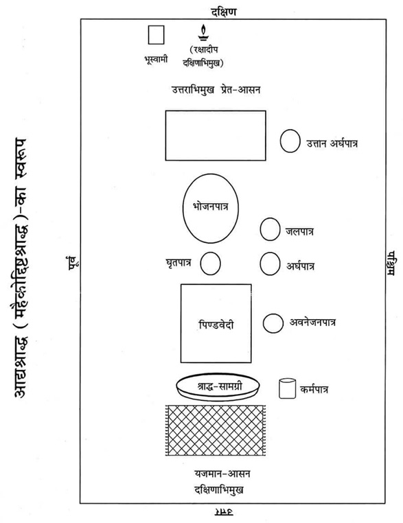
प्रतिज्ञासंकल्प—दाहिने हाथमें त्रिकुश, तिल तथा जल लेकर निम्न रीतिसे प्रतिज्ञासंकल्प करे—
ॐ विष्णुर्विष्णुर्विष्णु: नम: परमात्मने पुरुषोत्तमाय ॐ तत्सत् अद्यैतस्य विष्णोराज्ञया जगत्सृष्टिकर्मणि प्रवर्तमानस्य ब्रह्मणो द्वितीयपरार्द्धे श्रीश्वेतवाराहकल्पे वैवस्वतमन्वन्तरे अष्टाविंशतितमे कलियुगे तत्प्रथमचरणे जम्बूद्वीपे भारतवर्षे भरतखण्डे ....क्षेत्रे (यदि काशी हो तो अविमुक्तवाराणसीक्षेत्रे गौरीमुखे त्रिकण्टकविराजिते महाश्मशाने भगवत्या उत्तरवाहिन्या भागीरथ्या वामभागे) बौद्धावतारे ....संवत्सरे उत्तरायणे/दक्षिणायने ....ऋतौ ....मासे ....पक्षे ....तिथौ ....वासरे ....गोत्र: ....शर्मा/वर्मा/गुप्तोऽहम्....गोत्रस्य (....गोत्राया:) ....प्रेतस्य (....प्रेताया:) शवविशुद्धॺर्थं प्रेतत्वनिवृत्तिपूर्वकपितृपङ्क्तिप्रवेशाधिकारप्राप्त्यर्थं मम गृहे चूडाकरणादिशुभकार्याधिकारसिद्धॺर्थं च आद्यश्राद्धं (महैकोद्दिष्टश्राद्धं) करिष्ये।(हाथका संकल्पजल छोड़ दे।)
पितृगायत्रीका पाठ—पितृगायत्रीका तीन बार पाठ करे—
ॐ देवताभ्य: पितृभ्यश्च महायोगिभ्य एव च।
नम: स्वाहायै स्वधायै नित्यमेव नमो नम:॥
आसनदानका संकल्प—आसनपर दक्षिणाग्र तीन कुश रखकर अपसव्य दक्षिणाभिमुख हो बायाँ घुटना जमीनपर गिराकर त्रिकुश, तिल, जल लेकर आसनदानका संकल्प करे—
ॐ अद्य ....गोत्रस्य (....गोत्राया:) ....प्रेतस्य (....प्रेताया:) आद्यश्राद्धे प्रेतस्य इदं कुशात्मकमासनं ते मया दीयते, तवोपतिष्ठताम्। कहकर जल एवं कुशको आसनपर छोड़ दे।
आवाहन—आसनपर निम्न मन्त्रसे तिल छोड़ दे—
ॐ अपहता असुरा रक्षाॸसि वेदिषद:।
सव्य होकर आचमन कर ले।
छत्रोपानहदान
आसनदानके अनन्तर छत्र और उपानहका दान करना चाहिये; जिसकी विधि इस प्रकार है—
(क) छत्रदान—ब्राह्मणके हाथमें जल देकर ‘इदं छत्रं ते ददानि’ कहकर ब्राह्मणसे दान स्वीकार करनेकी आज्ञा प्राप्त करे। ब्राह्मण ‘ददस्व’ कहकर अनुज्ञा प्रदान करे।
ब्राह्मणवरणका संकल्प—हाथमें त्रिकुश, तिल, जल तथा वरणद्रव्य लेकर संकल्प करे—ॐ अद्य ....गोत्र: ....शर्मा/वर्मा/गुप्तोऽहम् ....गोत्रस्य (....गोत्राया:) ....प्रेतस्य (....प्रेताया:) करिष्यमाणछत्रदानप्रतिग्रहीतृत्वेन एभिर्वरणद्रव्यै: ....गोत्रं ....शर्माणं भवन्तं वृणे। वरणद्रव्य तथा संकल्पजल ब्राह्मणके हाथमें दे दे।
ब्राह्मणवचन—ब्राह्मण ‘वृतोऽस्मि’ कहे।
ब्राह्मण-पूजन एवं प्रार्थना—गन्धाक्षतसे दानग्रहीता ब्राह्मणका पूजन कर निम्न मन्त्रसे प्रार्थना करे—
नमो ब्रह्मण्यदेवाय गोब्राह्मणहिताय च।
जगद्धिताय कृष्णाय गोविन्दाय नमो नम:॥
देयद्रव्यपूजन—‘देयद्रव्याय नम:’ कहकर गन्धाक्षत आदिसे छत्रका पूजन कर उसे जलसे सींच दे।
छत्रदानका संकल्प—हाथमें त्रिकुश, तिल, जल लेकर संकल्प करे—ॐ अद्य ....गोत्र: ....शर्मा/वर्मा/गुप्तोऽहम् ....गोत्रस्य (....गोत्राया:) ....प्रेतस्य (....प्रेताया:) एकादशाहे कल्पोक्तफलप्राप्त्यर्थं यममार्गे वर्षातपजन्यकष्टनिवारणार्थम् इदमुत्तानाङ्गिरो दैवत्यं छत्रं ....गोत्राय ....शर्मणे भवते सम्प्रददे। कहकर संकल्पजल तथा छत्र ब्राह्मणके हाथमें दे दे।
ब्राह्मणवचन—ब्राह्मण ‘स्वस्ति’ कहे।
सांगतासंकल्प—दायें हाथमें त्रिकुश, तिल, जल तथा दक्षिणा लेकर संकल्प करे—
ॐ अद्य कृतस्य उत्तानाङ्गिरो देवताकछत्रदानकर्मण: साङ्गतासिद्धॺर्थमिदं दक्षिणाद्रव्यं भवते सम्प्रददे। कहकर दक्षिणा प्रदान करे।
ब्राह्मणवचन—ब्राह्मण ‘स्वस्ति’ कहे।
(ख) उपानहदान—ब्राह्मणके हाथमें जल देकर ‘इमे उपानहौ ते ददानि’ कहकर ब्राह्मणसे दानग्रहणकी अनुज्ञा प्राप्त करे।
ब्राह्मण ‘ददस्व’ कहकर अनुज्ञा प्रदान करे।
ब्राह्मणवरण-संकल्प—दाहिने हाथमें त्रिकुश, तिल, जल तथा वरणद्रव्य लेकर संकल्प करे—ॐ अद्य ....गोत्र: ....शर्मा/वर्मा/गुप्तोऽहम् ....गोत्रस्य (....गोत्राया:) ....प्रेतस्य (....प्रेताया:) करिष्यमाणोपानद्दानप्रतिग्रहीतृत्वेन एभिर्वरणद्रव्यै: ....गोत्रं ....शर्माणं भवन्तं वृणे। संकल्पका जलादि ब्राह्मणके हाथमें दे दे।
ब्राह्मणवचन—ब्राह्मण ‘वृतोऽस्मि’ कहे।
ब्राह्मण-पूजन एवं प्रार्थना—गन्धाक्षतसे दानग्रहीता ब्राह्मणका पूजन कर निम्न मन्त्रसे प्रार्थना करे—
नमो ब्रह्मण्यदेवाय गोब्राह्मणहिताय च।
जगद्धिताय कृष्णाय गोविन्दाय नमो नम:॥
देयद्रव्यपूजन—‘देयद्रव्याय नम:’ कहकर गन्धाक्षत आदिसे उपानहका पूजन कर उसे जलसे सींच दे।
उपानहदानका संकल्प—हाथमें त्रिकुश, तिल, जल लेकर संकल्प करे—
ॐ अद्य ....गोत्र: ....शर्मा/वर्मा/गुप्तोऽहम् ....गोत्रस्य (....गोत्राया:) ....प्रेतस्य (....प्रेताया:) एकादशाहे कल्पोक्तफलप्राप्त्यर्थं यममार्गे संतप्तबालुकाऽसिकण्टकितदुर्गभूसंतरणकाम: उत्तानाङ्गिरो दैवत्ये इमे उपानहौ ....गोत्राय ....शर्मणे भवते सम्प्रददे। कहकर संकल्प जलादि तथा उपानह ब्राह्मणके हाथमें दे दे।
ब्राह्मणवचन—ब्राह्मण ‘स्वस्ति’ कहे।
सांगतासंकल्प—दायें हाथमें त्रिकुश, तिल, जल तथा दक्षिणा लेकर संकल्प करे—
ॐ अद्य कृतस्य उपानद्दानकर्मण: साङ्गतासिद्धॺर्थं मनसोद्दिष्टं दक्षिणाद्रव्यं भवते सम्प्रददे। कहकर दक्षिणा प्रदान कर दे।
ब्राह्मणवचन—ब्राह्मण ‘स्वस्ति’ कहे।
भगवत्स्मरण—भगवान्का स्मरण कर ले—ॐ विष्णवे नम:। ॐ विष्णवे नम:। ॐ विष्णवे नम:। छत्रोपानह-दानके अनन्तर श्राद्धकी आगेकी क्रिया सम्पन्न करे—
अर्घपात्रनिर्माण—
अर्घ* पात्रमें पवित्रक रखना—कुशके एक पत्तेका पवित्रक बनाकर निम्नलिखित मन्त्र बोलते हुए अर्घपात्र (पत्तेके दोने)-पर दक्षिणाग्र रख दे—
ॐ पवित्रे स्थो वैष्णव्यौ सवितुर्व: प्रसव उत्पुनाम्यच्छिद्रेण पवित्रेण सूर्यस्य रश्मिभि:।
तस्य ते पवित्रपते पवित्रपूतस्य यत्काम: पुने तच्छकेयम्॥
* यहाँ एक ही अर्घपात्र और एक ही पवित्रक होता है—‘एकोऽर्घ: एकं पवित्रम्’। (कात्यायन)
अर्घपात्रमें जल डालना—अर्घपात्रमें निम्न मन्त्र बोलकर जल डाल दे—
ॐ शं नो देवीरभिष्टय आपो भवन्तु पीतये। शं योरभि स्रवन्तु न:॥
अर्घपात्रमें तिल डालना—नीचे लिखे मन्त्रको बोलकर अर्घपात्रमें तिल डाले—
ॐ तिलोऽसि सोमदैवत्यो गोसवो देवनिर्मित:।
प्रत्नमद्भि: पृक्त: स्वधया पितॄँल्लोकान् प्रीणाहि न: स्वाहा॥
अर्घपात्रमें चन्दन-फूल रखना—मौन होकर अर्घपात्रमें चन्दन-फूल रख दे।
अर्घपात्रका अभिमन्त्रण—अर्घपात्रको उठाकर बायें हाथमें रखे। फिर अर्घपात्रसे पवित्रक निकालकर भोजनपात्रपर उत्तराग्र रखकर ‘ॐ नमो नारायणाय’ मन्त्र बोलकर पंचपात्रसे थोड़ा जल ‘पवित्रक’ पर गिरा दे। दाहिने हाथसे अर्घपात्रको ढककर निम्न मन्त्र बोले—
ॐ या दिव्या आप: पयसा सम्बभूवुर्या आन्तरिक्षा उत पार्थवीर्या:।
हिरण्यवर्णा यज्ञियास्ता न आप: शिवा: शॸ स्योना: सुहवा भवन्तु॥
तदनन्तर अर्घपात्रको दाहिने हाथमें रखकर त्रिकुश, तिल, जल लेकर निम्न संकल्प बोले—
अर्घदानका संकल्प—ॐ अद्य ....गोत्र (....गोत्रे) ....प्रेत (....प्रेते) आद्यश्राद्धे एषोऽर्घस्ते मया दीयते, तवोपतिष्ठताम्।
—ऐसा बोलकर अर्घपात्रका जल पवित्रकपर गिरा दे। पुन: पवित्रकको उठाकर अर्घपात्रमें दक्षिणाग्र रख ले और ‘प्रेताय (प्रेतायै) स्थानमसि’ कहकर प्रेतासनके पश्चिम सीधा (उत्तान) ही रख दे।* श्राद्धदेशमें तिल बिखेर दे।
* उत्तानं स्थापयेत् पात्रमेकोद्दिष्टे सदा बुध:।
न्युब्जं तु पार्वणे कुर्यात्.....॥
(वीरमित्रोदय)
विद्वान्को चाहिये कि एकोद्दिष्टश्राद्धमें पात्रको उत्तान (सीधा) और पार्वणश्राद्धमें उलटा (अधोमुख) रखे।
आसनपर पूजन—आसनपर निम्न रीतिसे पूजन करे—
इदमाचमनीयम् (स्वाचमनीयम्)—कहकर आचमनीय जल दे।
इदं स्नानीयम् (सुस्नानीयम्)—कहकर स्नानीय जल दे।
इदमाचमनीयम् (स्वाचमनीयम्)—कहकर आचमनीय जल दे।
इदं वस्त्रम् (सुवस्त्रम्)—कहकर वस्त्र (या सूत्र) चढ़ाये।
इदमाचमनीयम् (स्वाचमनीयम्)—कहकर आचमनीय जल दे।
इमे यज्ञोपवीते (सुयज्ञोपवीते)—कहकर यज्ञोपवीत चढ़ाये।
इदमाचमनीयम् (स्वाचमनीयम्)—कहकर आचमनीय जल दे।
एष गन्ध: (सुगन्ध:)—कहकर गन्ध अर्पित करे।
इमे तिलाक्षता: (सुतिलाक्षता:)—कहकर तिलाक्षत चढ़ाये।
इदं माल्यम् (सुमाल्यम्)—कहकर माला चढ़ाये।
एष धूप: (सुधूप:)—कहकर धूप आघ्रापित करे।
एष दीप: (सुदीप:)—कहकर दीपक दिखाये।
हस्तप्रक्षालनम् (हाथ धो ले।)
इदं नैवेद्यम् (सुनैवेद्यम्)—कहकर नैवेद्य अर्पित करे।
इदमाचमनीयम् (स्वाचमनीयम्)—कहकर आचमनीय जल दे।
इदं फलम् (सुफलम्)—कहकर फल अर्पित करे।
इदमाचमनीयम् (स्वाचमनीयम्)—कहकर आचमनीय जल दे।
इदं ताम्बूलम् (सुताम्बूलम्)—कहकर ताम्बूल प्रदान करे।
एषा दक्षिणा (सुदक्षिणा)—कहकर दक्षिणा चढ़ाये।
निम्न रीतिसे अर्चनदानका संकल्प करे—
अर्चनदानका संकल्प—ॐ अद्य ....गोत्र (....गोत्रे) ....प्रेत (....प्रेते) आद्यश्राद्धे एतान्यर्चनानि ते मया दीयन्ते, तवोपतिष्ठन्ताम् कहकर जल छोड़ दे।
मण्डलकरण—सव्य होकर आचमन कर ले। पुन: अपसव्य हो जाय। प्रेतके भोजनपात्रसहित आसनके चारों ओर अप्रदक्षिण-क्रमसे जलद्वारा गोल मण्डल बनाये, उस समय निम्न मन्त्र पढ़े—
ॐ यथा चक्रायुधो विष्णुस्त्रैलोक्यं परिरक्षति।
एवं मण्डलतोयं तु सर्वभूतानि रक्षतु॥
भूस्वामीके पितरोंको अन्न प्रदान—एक पात्रमें सभी अन्न रखकर दक्षिण दिशामें निम्न मन्त्र पढ़कर भूस्वामीके पितरोंके निमित्त वह अन्नपात्र त्रिकुशपर रख दे—
ॐ इदमन्नमेतद् भूस्वामिपितृभ्यो नम:।
अन्नपरिवेषण—भोजनपात्रपर जो तिल इत्यादि चिपके हों उन्हें साफ कर दे। तदनन्तर उसपर पितृतीर्थसे अन्न परोस दे।
मधु-प्रक्षेप—अब अन्नके ऊपर पितृतीर्थसे दोनों हाथोंसे निम्न मन्त्र पढ़कर मधु प्रदान करे—
ॐ मधु वाता ऋतायते मधु क्षरन्ति सिन्धव:। माध्वीर्न: सन्त्वोषधी:॥ मधु नक्तमुतोषसो मधुमत्पार्थिवÞ रज:। मधु द्यौरस्तु न: पिता॥ मधुमान्नो वनस्पतिर्मधुमाँ२ अस्तु सूर्य:। माध्वीर्गावो भवन्तु न:॥ ॐ मधु मधु मधु॥
घृतपात्रमें घृत तथा जलपात्रमें जल रख दे। तदनन्तर भोजनपात्रमें अन्नके ऊपर निम्न मन्त्रसे तिल छोड़ दे—ॐ अपहता असुरा रक्षाॸसि वेदिषद:।
अन्नदानका संकल्प—हाथमें त्रिकुश, तिल, जल लेकर अन्नदानका संकल्प करे—
ॐ अद्य ....गोत्र (....गोत्रे) ....प्रेत (....प्रेते) आद्यश्राद्धे प्रेताय इदमन्नं सोपस्करं ते मया दीयते, तवोपतिष्ठताम्। इस तरह संकल्प बोलकर हाथमें रखा तिल, जल भोजनपात्रके पास गिराकर निम्न प्रार्थना करे—
अन्नहीनं क्रियाहीनं विधिहीनं च यद् भवेत्।
अच्छिद्रमस्तु तत्सर्वं पित्रादीनां प्रसादत:॥
पितृगायत्रीका पाठ—सव्य पूर्वाभिमुख हो जाय, आचमन कर ले। तदनन्तर तीन बार निम्न पितृगायत्रीका पाठ करे—
ॐ देवताभ्य: पितृभ्यश्च महायोगिभ्य एव च।
नम: स्वाहायै स्वधायै नित्यमेव नमो नम:॥
वेदशास्त्रादिका पाठ—तदनन्तर स्वयं अथवा ब्राह्मणद्वारा निम्न वेदादि मन्त्रोंका पाठ कराये। पैरोंके नीचे पूर्वाग्र तीन कुश रख ले—
श्रुतिपाठ—ॐ अग्निमीळे पुरोहितं यज्ञस्य देवमृत्विजम्। होतारं रत्नधातमम्॥
ॐ इषे त्वोर्जे त्वा वायव स्थ देवो व: सविता प्रार्पयतु श्रेष्ठतमाय कर्मण आप्यायध्व मघ्न्या इन्द्राय भागं प्रजावतीरनमीवा अयक्ष्मा मा व स्तेन ईशत माघशंसो ध्रुवा अस्मिन् गोपतौ स्यात बह्वीर्यजमानस्य पशून् पाहि॥
ॐ अग्न आ याहि वीतये गृणानो हव्यदातये।
नि होता सत्सि बर्हिषि॥
ॐ शं नो देवीरभिष्टय आपो भवन्तु पीतये।
शं योरभि स्रवन्तु न:॥
स्मृतिपाठ— मनुमेकाग्रमासीनमभिगम्य महर्षय:।
प्रतिपूज्य यथान्यायमिदं वचनमब्रुवन्॥
योगीश्वरं याज्ञवल्क्यं सम्पूज्य मुनयोऽब्रुवन्।
वर्णाश्रमेतराणां नो ब्रूहि धर्मानशेषत:॥
मन्वत्रिविष्णुहारीतयाज्ञवल्क्योशनोऽङ्गिरा:।
यमापस्तम्बसंवर्ता: कात्यायनबृहस्पती॥
पराशरव्यासशङ्खलिखिता दक्षगौतमौ।
शातातपोवसिष्ठश्च धर्मशास्त्रप्रयोजका:॥
पुराण— नारायणं नमस्कृत्य नरं चैव नरोत्तमम्।
देवीं सरस्वतीं व्यासं ततो जयमुदीरयेत्॥
सप्त व्याधा दशार्णेषु मृगा: कालञ्जरे गिरौ।
चक्रवाका: शरद्वीपे हंसा: सरसि मानसे॥
तेऽभिजाता: कुरुक्षेत्रे ब्राह्मणा वेदपारगा:।
प्रस्थितादीर्घमध्वानं यूयं किमवसीदथ॥
महाभारत— दुर्योधनो मन्युमयो महाद्रुम:
स्कन्ध: कर्ण: शकुनिस्तस्य शाखा:।
दु:शासन: पुष्पफले समृद्धे
मूलं राजा धृतराष्ट्रोऽमनीषी॥
युधिष्ठिरो धर्ममयो महाद्रुम:
स्कन्धोऽर्जुनो भीमसेनोऽस्य शाखा:।
माद्रीसुतौ पुष्पफले समृद्धे
मूलं कृष्णो ब्रह्म च ब्राह्मणाश्च॥
पुन: अपसव्य दक्षिणाभिमुख हो बायाँ घुटना जमीनपर गिराकर वेदीका निर्माण करे।
वेदीनिर्माण—प्रादेशमात्र (अंगुष्ठसे तर्जनीके बीचकी दूरी) लम्बी तथा छ: अंगुल चौड़ी एक वेदी बना ले। वेदीके उत्तरका भाग ऊँचा और दक्षिणका भाग नीचा होना चाहिये।
निम्न मन्त्र पढ़ते हुए जलसे वेदीका सिञ्चन कर ले—
ॐ अयोध्या मथुरा माया काशी काञ्ची ह्यवन्तिका।
पुरी द्वारावती ज्ञेया: सप्तैता मोक्षदायिका:॥
अवनेजनदानका संकल्प—वेदीके पश्चिम भागमें अवनेजनपात्र (दोना या मिट्टीका दीया) रखकर उसमें तिल, जल, सफेद चन्दन, सफेद फूल रखकर उसे दायें हाथमें ले ले। त्रिकुश, तिल, जल लेकर अवनेजनदानका नीचे लिखा संकल्प बोले—
ॐ अद्य ....गोत्र (....गोत्रे) ....प्रेत (....प्रेते) आद्यश्राद्धे पिण्डस्थाने अत्रावनेनिक्ष्व ते मया दीयते, तवोपतिष्ठताम्। कहकर वेदीके पिण्डस्थानपर आधा अवनेजनजल गिरा दे। आधा अवनेजनजल बचाकर अवनेजनपात्र वेदीके बायीं ओर (पश्चिम) सीधा रख ले। इसीसे बादमें प्रत्यवनेजन दिया जाता है।
कुशास्तरण—समूल तीन कुशोंको एक साथ जड़सहित दो भागोंमें विभक्त करके वेदीपर दक्षिणाग्र बिछा दे।
पिण्डनिर्माण—पाकपात्रमेंसे पिण्डदानके लिये पत्तलपर अन्न निकाल ले। उसमें शर्करा, घी, मधु, तिल मिलाकर कपित्थ* (कैथ-फल)-के बराबर एक पिण्ड बना ले। थोड़ा अन्न पाकपात्रमें बलिके लिये छोड़ दे।
* कपित्थस्य प्रमाणेन पिण्डान् दद्यात् समाहित:।
पिण्डदानका संकल्प—दायें हाथमें त्रिकुश, तिल, जल और पिण्डको लेकर बायें हाथसे दाहिने हाथको स्पर्श करते हुए बायाँ घुटना टेककर बोले—
ॐ अद्य ....गोत्र (....गोत्रे) ....प्रेत (....प्रेते) आद्यश्राद्धे एष पिण्डस्ते मया दीयते, तवोपतिष्ठताम्। कहकर पितृतीर्थसे कुशोंके ऊपर अवनेजनस्थानपर पिण्डको रख दे। पिण्डशेषान्न पिण्डके समीप रख दे। पिण्डाधार कुशोंके मूलमें हाथ पोंछ ले। सव्य होकर आचमन कर ले।
श्वासनियमन—अपसव्य होकर आसनपर बैठे हुए ही श्वास खींचते हुए बायीं ओरसे उत्तराभिमुख हो निम्न मन्त्र पढ़े—
अत्र पितरो* मादयध्वं यथाभागमावृषायध्वम्।
* श्राद्धकी कई प्रयोगपद्धतियोंमें ‘अत्र पितरो मादयध्वम्०’, ‘नमो व: पितर:०’, ‘अघोरा: पितर:०’ ‘....स्वधास्थ तर्पयत मे पितॄन्’ आदि वैदिक मन्त्रोंमें ऊह करके विभक्तिका परिवर्तन कर दिया गया है अर्थात् एकोद्दिष्टश्राद्धोंमें ‘पितर:०’ इत्यादि बहुवचनान्त पदोंमें ऊह करके उन्हें एकवचनान्त कर दिया गया है। वैदिक मन्त्रोंमें आनुपूर्वी नियत होनेके कारण ऊह करनेसे मन्त्रत्व नहीं रह जायगा और अत: उन मन्त्रोंकी कर्मांगता भी नहीं हो सकेगी। इसी आशयसे पातंजलमहाभाष्यमें ‘वैदिका: खल्वपि’—इसका व्याख्यान करते हुए आचार्य कैयटने ‘वेदे त्वानुपूर्वीनियमाद्वाक्यान्युदाहरति’—ऐसा लिखा है। ऊह न करनेके विषयमें निम्नलिखित प्रमाण ध्यातव्य हैं—
(क) अनाम्नातेष्वमन्त्रत्वमाम्नातेषु हि विभाग:॥
‘....याज्ञिकप्रसिद्धिरूपस्य मन्त्रलक्षणस्यैतेष्वभावात्।
न ह्यध्येतार ऊहादीन् मन्त्रकाण्डेऽधीयते। तस्मात् नास्ति मन्त्रत्वम्।’
(जैमिनीयन्यायमाला अ० २, पाद १, अधि० ९, सूत्र ३४ तथा व्याख्या)
(ख) ‘....एवञ्च पूर्वोक्ते मन्त्रजाते पितृशब्दस्य सपिण्डीकरणान्तश्राद्धजन्यपितृत्वपरत्वात्तस्य च मातामहादिष्वपि सद्भावान्नोह:। तथा ‘पूयति वा एतदृचोऽक्षरं यदेनदूहति तस्मादृचं नोहेत् ’ इति प्रतिषेधादपि नोह:। तथा अनृग्रूपेष्वपि मन्त्रेषु ‘एतद्व: पितरो वासोऽमीमदन्त पितर:’ इत्यादिष्वपि पूर्वोक्तन्यायान्नोह:।’ (भगवन्तभास्कर, श्राद्धमयूख)
श्वास रोककर उसी क्रमसे दक्षिणाभिमुख होकर भास्वरमूर्ति (तेज:पुञ्जस्वरूप) पितरका ध्यान करते हुए पिण्डके पास श्वास छोड़े और ‘अमीमदन्त पितरो यथाभागमावृषायिषत’ यह मन्त्र पढ़े।
प्रत्यवनेजनदानका संकल्प—पहले रखे हुए अवनेजनपात्रमें यदि जल न बचा हो तो जल डाल दे फिर त्रिकुश, तिल, जल एवं पात्रको दायें हाथमें लेकर संकल्प बोले—
ॐ अद्य ....गोत्र (....गोत्रे) ....प्रेत (....प्रेते) आद्यश्राद्धपिण्डे अत्र प्रत्यवनेनिक्ष्व ते मया दीयते, तवोपतिष्ठताम्—कहकर जल पिण्डपर गिराकर प्रत्यवनेजनपात्रको यथास्थान रख दे।
नीवीविसर्जन—नीवीका ईशानकोणमें विसर्जन कर दे।
पिण्डपूजन—तदनन्तर निम्न रीतिसे विविध उपचारोंद्वारा पिण्डका पूजन करे तथा तीन कच्चे सूत्रोंको पिण्डपर वस्त्रके निमित्त चढ़ाये—
इदमाचमनीयम् (स्वाचमनीयम्)—कहकर आचमनीय जल दे।
इदं स्नानीयम् (सुस्नानीयम्)—कहकर स्नानीय जल दे।
इदमाचमनीयम् (स्वाचमनीयम्)—कहकर आचमनीय जल दे।
इदं वस्त्रम् (सुवस्त्रम्)—कहकर वस्त्र (या सूत्र) चढ़ाये।
इदमाचमनीयम् (स्वाचमनीयम्)—कहकर आचमनीय जल दे।
इमे यज्ञोपवीते (सुयज्ञोपवीते)—कहकर यज्ञोपवीत चढ़ाये।
इदमाचमनीयम् (स्वाचमनीयम्)—कहकर आचमनीय जल दे।
एष गन्ध: (सुगन्ध:)—कहकर गन्ध अर्पित करे।
इमे तिलाक्षता: (सुतिलाक्षता:)—कहकर तिलाक्षत चढ़ाये।
इदं माल्यम् (सुमाल्यम्)—कहकर माला चढ़ाये।
एष धूप: (सुधूप:)—कहकर धूप आघ्रापित करे।
एष दीप: (सुदीप:)—कहकर दीपक दिखाये।
हस्तप्रक्षालनम् (हाथ धो ले।)
इदं नैवेद्यम् (सुनैवेद्यम्)—कहकर नैवेद्य अर्पित करे।
इदमाचमनीयम् (स्वाचमनीयम्)—कहकर आचमनीय जल दे।
इदं फलम् (सुफलम्)—कहकर फल अर्पित करे।
इदमाचमनीयम् (स्वाचमनीयम्)—कहकर आचमनीय जल दे।
इदं ताम्बूलम् (सुताम्बूलम्)—कहकर ताम्बूल प्रदान करे।
एषा दक्षिणा (सुदक्षिणा)—कहकर दक्षिणा चढ़ाये।
हाथमें त्रिकुश, तिल, जल लेकर निम्न संकल्प बोले—
पिण्डार्चनदानका संकल्प—ॐ अद्य ....गोत्र (....गोत्रे) ....प्रेत (....प्रेते) आद्यश्राद्धे पिण्डोपरि एतान्यर्चनानि ते मया दीयन्ते, तवोपतिष्ठन्ताम्। कहकर हाथका संकल्प जलादि छोड़ दे।
भोजनपात्रपर ‘शिवा आप: सन्तु’ कहकर जल छोड़े। ‘सौमनस्यमस्तु’ कहकर पुष्प छोड़े और ‘अक्षतं चारिष्टं चास्तु’ कहकर चावल (अक्षत) छोड़े।
अक्षय्योदकदानका संकल्प—हाथमें त्रिकुश, तिल, जल लेकर अक्षय्योदकदानका संकल्प करे—
ॐ अद्य ....गोत्रस्य (....गोत्राया:) ....प्रेतस्य (....प्रेताया:) आद्यश्राद्धे ....प्रेतस्य (....प्रेताया:) दत्तैतदन्नपानादिकमक्षय्यमुपतिष्ठताम्। कहकर जल गिरा दे।
जलधारा—सव्य होकर दक्षिण दिशाकी ओर देखते हुए पिण्डपर निम्न मन्त्रसे पूर्वाग्र जलधारा दे—
अघोरा: पितर: सन्तु।
पिण्डपर जलधारा या दुग्धधारा—अपसव्य दक्षिणाभिमुख होकर एक पवित्रीमें तीन कुशोंको फँसाकर पिण्डपर दक्षिणाग्र रखे तथा निम्न मन्त्रसे पिण्डपर दक्षिणाग्र जलधारा दे—
ऊर्जं वहन्तीरमृतं घृतं पय: कीलालं परिस्रुतम्।
स्वधा स्थ तर्पयत मे पितॄन्॥
पिण्डाघ्राण—नम्र होकर पिण्डको सूँघकर उठा ले और किसी पात्रमें रख दे।
अर्घपात्रका संचालन—अर्घपात्रको हिला दे।
दक्षिणादान—सव्य पूर्वाभिमुख हो जाय। हाथमें त्रिकुश, तिल, जल तथा दक्षिणा लेकर बोले—
ॐ अद्य ....गोत्रस्य (....गोत्राया:) ....प्रेतस्य (....प्रेताया:) प्रेतत्वनिवृत्तिपूर्वकसर्वोत्तमलोकप्राप्त्यर्थं पितृपङ्क्तिप्रवेशाधिकारसिद्धॺर्थं क्रियमाणस्य आद्यश्राद्धस्य प्रतिष्ठार्थं रजतं (तन्निष्क्रयद्रव्यं वा) ....गोत्राय ....शर्मणे ब्राह्मणाय भवते सम्प्रददे कहकर ब्राह्मणको दक्षिणा दे दे।
सद्गतिकी कामना—अनेन कृतेन महैकोद्दिष्टश्राद्धेन ....गोत्रस्य (....गोत्राया:)....प्रेतस्य (....प्रेताया:) प्रेतत्वनिवृत्तिर्भवतु।
रक्षादीपनिर्वापण—रक्षादीप बुझा दे। हाथ-पैर धोकर सव्य पूर्वाभिमुख हो जाय। आचमन करे, तीन बार निम्न पितृगायत्रीका पाठ करे—
ॐ देवताभ्य: पितृभ्यश्च महायोगिभ्य एव च।
नम: स्वाहायै स्वधायै नित्यमेव नमो नम:॥
प्रार्थना—तदनन्तर भगवान्का स्मरण और प्रार्थना करे—
प्रमादात् कुर्वतां कर्म प्रच्यवेताध्वरेषु यत्।
स्मरणादेव तद्विष्णो: सम्पूर्णं स्यादिति श्रुति:॥
यस्य स्मृत्या च नामोक्त्या तपोयज्ञक्रियादिषु।
न्यूनं सम्पूर्णतां याति सद्यो वन्दे तमच्युतम्॥
यत्पादपङ्कजस्मरणाद् यस्य नामजपादपि।
न्यूनं कर्म भवेत् पूर्णं तं वन्दे साम्बमीश्वरम्॥
ॐ विष्णवे नम:। ॐ विष्णवे नम:। ॐ विष्णवे नम।
ॐ साम्बसदाशिवाय नम:। ॐ साम्बसदाशिवाय नम:। ॐ साम्बसदाशिवाय नम:।
श्राद्धकी वस्तुओंको ब्राह्मणको दे दे अथवा गायको खिला दे या जलमें डाल दे।
॥ आद्यश्राद्ध (महैकोद्दिष्टश्राद्ध) पूर्ण॥
प्रेतशय्यादान
उत्तरकी ओर सिरहाना कर शय्याको बिछाये।१ शय्याके नीचे ईशानकोणमें सामर्थ्यानुसार धातु या मिट्टीसे बना घृतपूर्णपात्र, अग्निकोणमें कुमकुमपात्र, नैर्ऋत्यकोणमें गेहूँसे भरा पात्र तथा वायव्यकोणमें जलपात्र रखे। सिरहानेकी ओर घृतपूर्ण कलश रखे।२ यह निद्राकलश कहलाता है। शय्यापर गद्दा आदि बिछाकर श्वेत चादरसे सुसज्जित कर दे। कोमल तकिया लगा दे।३ मृत व्यक्तिके द्वारा उपभोगमें लायी गयी वस्तुएँ—वस्त्र, वाहन, पात्र आदि सामग्रियोंको शय्याके पास इकट्ठा करे। शय्याके नीचे सप्तधान्य भी रख दे। मृत व्यक्तिको जो वस्तुएँ प्रिय थीं, निषिद्धेतर उन वस्तुओंको भी शय्याके पास रख दे।४ शय्याके ऊपर फल, फूल, माला, पान, कुमकुम, कर्पूर, अगरु, चन्दन, गमछा, धोती, मच्छरदानी, शृंगारपात्र, आभूषण, पुस्तक, जपमाला, स्वर्णमयी प्रेतप्रतिमा (काञ्चन-पुरुष) और भोजनपात्र आदि रख दे।५
१. देवशय्याशिर: प्राच्यां मखशय्या तु दक्षिणे।
पश्चिमे तीर्थशय्याया: प्रेतशय्याशिरोत्तरे॥
(दानसंग्रह)
२. उच्छीर्षके घृतभृतं कलशं परिकल्पयेत्।
(धर्मसिन्धु)
३. हंसतूलिप्रतिच्छन्नां शुभ्रगण्डोपधानिकाम्।
प्रच्छादनपटीयुक्तां गन्धधूपादिवासिताम्॥
(धर्मसिन्धु)
४. एकादशाहे शय्याया दाने एषा विधि: स्मृत:।
प्रेतोपभुक्तं यत्किञ्चिद् वस्त्रवाहनभाजनम्।
यद् यदिष्टं च तस्यासीत् तत् सर्वं प्रतिपादयेत्॥
(धर्मसि०परि०३उ०)
५. (क) तस्माच्छय्यां समासाद्य सारदारुमयीं दृढाम्।
दन्तपत्रचितां रम्यां हेमपट्टैरलङ्कृताम्॥
रक्ततूलिप्रतिच्छन्नां शुभशीर्षोपधानिकाम्।
प्रच्छादनपटीयुक्तां गन्धधूपाधिवासिताम्॥
तस्यां संस्थाप्य हैमं च हरिं लक्ष्म्या समन्वितम्।
घृतपूर्णं च कलशं तत्रैव परिकल्पयेत्॥
ताम्बूलं कुङ्कुमक्षोदं कर्पूरागुरुचन्दनम्।
दीपकोपानहौ छत्रं चामरासनभाजनम्॥
पार्श्वेषु स्थापयेद् भक्त्या सप्तधान्यानि चैव हि।
शयनस्थं च भवति यच्च स्यादुपकारकम्॥
भृङ्गारकादर्शपंचवर्णवितानशोभितम्।
शय्यामेवंविधां कृत्वा ब्राह्मणाय निवेदयेत्॥
(गरुडमहापुराण, प्रेतखण्ड २४।५१—५६)
(प्रेतशय्यामें लक्ष्मी-नारायणकी प्रतिमा नहीं होती यह वचन देव-शय्याके लिये है।)
(ख) प्रेतं च पुरुषं हैमं तस्यां संस्थापयेत् तदा।
पूजयित्वा प्रदातव्या मृतशय्या यथोदिता॥
(धर्मसि०तृ०प०)
शय्यादानके पहलेका कृत्य—द्विज-दम्पती* को ससम्मान उत्तराभिमुख आसनोंपर विराजमान कर दे।
* यहाँ शय्यादानके प्रकरणमें द्विज-दम्पतीका पूजन लिखा गया है। गौडीयश्राद्धप्रकाशके अनुसार द्विज-दम्पतीका पूजन पर्वतीय और मैथिलोंकी परम्परामें है। केवल ब्राह्मण-पूजनके द्वारा शय्यादानका कार्य सम्पन्न हो सकता है। अत: अपने देशाचार तथा कुलाचारके अनुसार करना चाहिये।
यदि ब्राह्मणी न आयी हो तो प्रतिनिधिके रूपमें कुशको ब्राह्मणके बायें भागमें विराजमान कर दे। इसके बाद दक्षिणाभिमुख रक्षादीप जलाकर आसनपर पूर्वाभिमुख बैठ जाय। शिखाबन्धन, पवित्रीकरण, पवित्री-धारण, आचमन, प्राणायाम कर ले। तदनन्तर भगवान् विष्णुका ध्यान करे—
ध्यान—शुक्लाम्बरधरं देवं शशिवर्णं चतुर्भुजम्।
प्रसन्नवदनं ध्यायेत् सर्वविघ्नोपशान्तये॥
द्विजदम्पती-पूजन—दायें हाथमें त्रिकुश, तिल, जल तथा पुष्प लेकर ब्राह्मणदम्पतीके पूजनका संकल्प करे—
ॐ अद्य....गोत्र: ....शर्मा/वर्मा/गुप्तोऽहं ....गोत्रस्य (....गोत्राया:) ....प्रेतस्य (....प्रेताया:) प्रेतत्वनिवृत्तिपूर्वकाक्षयस्वर्गाद्युत्तमलोकप्राप्त्यर्थं करिष्यमाणशय्यादानादे: प्रतिग्रहार्थं द्विजदम्पत्यो: पूजनं करिष्ये। कहकर संकल्पजल छोड़ दे।
‘द्विजदम्पतिभ्यां नम:’ इस मन्त्रसे गन्ध, अक्षत, पुष्प तथा दक्षिणा आदिसे द्विजदम्पतीकी पूजा करे।
द्विजदम्पति-वरण—प्रेतशय्याका दान देनेके पहले द्विजदम्पतीका वरण करे। दायें हाथमें त्रिकुश, तिल, जल, कुश और वरण-द्रव्य लेकर संकल्प बोले—
वरणसंकल्प—ॐ अद्य ....गोत्र: ....शर्मा/वर्मा/गुप्तोऽहम् ....गोत्रस्य (....गोत्राया:) ....प्रेतस्य (....प्रेताया:) श्रुतिस्मृतिपुराणोक्तफलप्राप्त्यर्थम् एभिर्वरणद्रव्यै: ....गोत्रं ....शर्माणं सपत्नीकं भवन्तं सोपकरणशय्याप्रतिग्रहीतृत्वेन वृणे।
—ऐसा बोलकर वरणद्रव्य आदिके साथ संकल्पका जल द्विजदम्पतीके हाथोंमें दे दे।
ब्राह्मणवचन—ब्राह्मणदम्पती बोलें—‘वृतौ स्व:।’
उपभुक्त वस्तुओंके साथ प्रतिमा-दान—मृत व्यक्तिके द्वारा उपयोगमें लायी गयी वस्तुओंके साथ सोनेकी बनी प्रेतकी प्रतिमाका दान करे। दान करनेके पूर्व प्रतिमाका पूजन इस प्रकार करना चाहिये—
प्रतिमापूजन
प्रक्षालन—सोनेकी बनी हुई प्रेत-प्रतिमा (कांचनपुरुष)-को कसोरेमें रखकर उसका निम्न मन्त्रसे प्रक्षालन करे—
हिमस्य त्वा जरायुणाऽग्ने परि व्ययामसि।
पावको अस्मभ्यÞ शिवो भव॥
इसके बाद प्रतिमाको अक्षतपुंज अथवा पानपर रख दे।
प्रतिष्ठा—निम्नलिखित मन्त्र पढ़कर मूर्तिकी प्रतिष्ठा करे—
ॐ भूर्भुव: स्व: काञ्चनपुरुष इहागच्छ, इह तिष्ठ, सुप्रतिष्ठितो वरदो भव।
कांचनपुरुषपर पाद्य, अर्घ, गन्ध आदि चढ़ाये—
पाद्य—एतत् पाद्यम्। माला—इयं माला।
अर्घ—अयमर्घ:। धूप—एष धूप:।
गन्ध—एष गन्ध:। दीप—एष दीप:।
अक्षत—इमे तिलाक्षता:।
दोना आदि किसी पात्रमें जल भरकर—‘इमां प्रेतप्रतिकृतिं ते ददानि’ ऐसा कहकर द्विजदम्पतीसे दानग्रहणकी अनुज्ञा प्राप्त करे। ब्राह्मण बोले—‘ददस्व’। तदनन्तर प्रेतप्रतिमा तथा ब्राह्मणपर जलसे छींटा दे। फिर संकल्प करे।
दानसंकल्प—प्रतिमा तथा मृत व्यक्तिके द्वारा प्रयोगमें लाये गये वस्त्र, उपवस्त्र, वाहन, फल, पुष्प आदि सामग्रियोंके साथ दायें हाथमें जल आदि लेकर संकल्प करे—
ॐ अद्य ....गोत्र: ....शर्मा/वर्मा/गुप्तोऽहम् ....गोत्रस्य (....गोत्राया:) ....प्रेतस्य (....प्रेताया:) शास्त्रोक्तफलप्राप्त्यर्थमिमां प्रेतोपभुक्तोपकरणयुतां फलवस्त्रादिसहितां काञ्चनमयीं प्रेतप्रतिकृतिं भवद्भ्यां सम्प्रददे।
—ऐसा संकल्प कर द्विजदम्पतीके हाथोंमें संकल्पजल छोड़ दे।
दक्षिणासंकल्प—दाहिने हाथमें सुवर्णखण्ड (निष्क्रयद्रव्य), त्रिकुश, तिल, जल आदि लेकर बोले—
ॐ अद्य....गोत्र:....शर्मा/वर्मा/गुप्तोऽहम् कृतस्य प्रेतोपभुक्तवस्त्रादिसहितकाञ्चनमयप्रेतप्रतिकृतिदानस्य प्रतिष्ठासिद्धॺर्थं सुवर्णं (सुवर्णनिष्क्रयद्रव्यं वा) भवद्भ्यां सम्प्रददे।
द्रव्यसहित संकल्पका जल ब्राह्मणदम्पतीके हाथोंमें दे दे।
ब्राह्मणवचन—ब्राह्मणदम्पती बोलें—‘ॐ स्वस्ति।’*
* स्वस्तिदेवी वायुपत्नी प्रतिवश्वेषु पूजिता॥
आदानं च प्रदानं च निष्फलं च यया विना।
(देवीभा० ९।१।१००-१०१)
अर्थात् वायुकी पत्नी स्वस्तिदेवी सम्पूर्ण विश्वमें पूजित हैं। ‘स्वस्ति’ शब्दके न बोलनेसे लेना-देना सब विफल हो जाता है।
शय्यापूजन
दान करनेसे पहले शय्याका पूजन निम्नलिखित मन्त्रोंसे करे—
इदं पाद्यं सोपकरणशय्यायै नम:—से पाद्य-जल चढ़ाये। अयमर्घ: सोपकरणशय्यायै नम:—से अर्घ प्रदान करे। इसी प्रकार सोपकरणशय्यायै नम:—इस मन्त्रसे गन्ध, अक्षत, पुष्पमाला, धूप, दीप तथा नैवेद्य आदिद्वारा शय्याका पूजन करे।
पूजनको सांग बनानेके लिये हाथ जोड़कर ‘प्रमाण्यै देव्यै नम:’ इस मन्त्रका उच्चारण करते हुए शय्याको प्रणाम करे और उसके बाद प्रदक्षिणा करे।*
* शय्यां तु पूजयित्वैवं तद्भक्तो मत्परायण:।
कृताञ्जलिपुटो भूत्वा कुर्याच्छय्याप्रदक्षिणाम्॥
नम: प्रमाण्यै देव्यै इति प्रणम्य चतुर्दिशि।
ब्राह्मणसे प्रार्थना—पूजनके बाद दोनेमें जल भरकर कर्ता ब्राह्मणसे प्रार्थना करे—
विष्णुदैवत्यामिमां यथाशक्त्यलङ्कृतां सुपूजितां शय्यां सपत्नीकाय भवते दातुमिच्छामि। आज्ञापयतु। कहकर ब्राह्मणके हाथमें जल देकर उनसे आज्ञा प्राप्त करे।
ब्राह्मणवचन—ब्राह्मण बोले—‘ददस्व।’
आज्ञा प्राप्तकर ब्राह्मण और शय्या दोनोंका जलसे प्रोक्षण कर दे।
शय्यादानका संकल्प—हाथमें त्रिकुश, तिल, पुष्प, जल तथा द्रव्य लेकर शय्याकी पाटीका स्पर्श करते हुए निम्न रीतिसे संकल्प करे—
ॐ अद्य ....गोत्र: ....शर्मा/वर्मा/गुप्तोऽहम् ....गोत्रस्य (....गोत्राया:) ....प्रेतस्य (....प्रेताया:) प्रेतत्वनिवृत्तिपूर्वकस्वर्गाद्युत्तमलोकप्राप्त्यर्थं यथाशक्त्यलङ्कृतां विष्णुदैवत्यां सोपकरणां सुपूजितामिमां शय्यां ....गोत्राय ....सपत्नीकाय ....नाम्ने भवते ब्राह्मणाय सम्प्रददे।
इस तरह संकल्प बोलकर निम्नलिखित मन्त्रोंको पढ़ते हुए ब्राह्मणको शय्या*का दान कर दे।
* शय्यादानसे मृत व्यक्तिको तो प्रलयपर्यन्त सुख मिलता ही है और दान देनेवालेका भी अभ्युदय होता है। मृत व्यक्तिको न तो यमदूतोंकी प्रताड़ना सहनी पड़ती है और न शीत-घाम आदि द्वन्द्व ही सहने पड़ते हैं। बस, सुख-ही-सुख प्राप्त होता है। इसी तरह दान देनेवाला व्यक्ति भी लाभ-ही-लाभ प्राप्त करता है।
(क) स्वर्गे पुरन्दरपुरे सूर्यपुत्रालये तथा।
सुखं वसत्यसौ जन्तु: शय्यादानप्रभावत:॥
ताडयन्ति न तं याम्या: पुरुषा भीषणानना:।
न यमेन न शीताद्यैर्बाध्यते स नर: क्वचित्॥
अपि पापसमायुक्त: स्वर्गलोकं स गच्छति।
आभूतसम्प्लवं यावत् तिष्ठत्यन्तकवर्जित:॥ (भविष्य०)
(ख) प्रदद्याद् यस्तु विप्राय शृणुयाद्वापि यत् फलम्।
पुरुष: सुभग: श्रीमान् स्त्रीसहस्रैश्च संवृत:॥
दशवर्षसहस्राणि स्वर्गलोके महीयते॥
ब्राह्मणदम्पतीके हाथसे शय्याका स्पर्श करा दे—
यथा न कृष्णशयनं शून्यं सागरजातया।
तथाऽशून्याऽस्तु प्रेतस्य (प्रेताया:) शय्या जन्मनि जन्मनि॥
यस्मादशून्यं शयनं केशवस्य शिवस्य च।
शय्याऽशून्याऽस्तु प्रेतस्य (प्रेताया:) तस्माज्जन्मनि जन्मनि॥
ब्राह्मणवचन—शय्या स्पर्शकर ब्राह्मण बोले—‘ॐ स्वस्ति।’
सांगताके लिये दक्षिणा-संकल्प—दाहिने हाथमें दक्षिणाद्रव्य तथा त्रिकुश, तिल, जल लेकर संकल्प करे—ॐ अद्य ....गोत्र: ....शर्मा/वर्मा/गुप्तोऽहम् ....गोत्रस्य (....गोत्राया:) ....प्रेतस्य (....प्रेताया:) शास्त्रोक्तफलप्राप्त्यर्थं कृतस्य सोपकरणशय्यादानकर्मण: साङ्गताप्रतिष्ठासिद्धॺर्थमिमां दक्षिणां भवद्भ्यां सम्प्रददे।
इस तरह संकल्प बोलकर ब्राह्मणदम्पतीको दक्षिणा प्रदान करे। तदनन्तर ब्राह्मण एवं शय्याकी तीन बार प्रदक्षिणा करे, प्रणाम और क्षमायाचना करे।
भगवान्का स्मरण—हाथ जोड़कर भगवान्का स्मरण करे—
प्रमादात् कुर्वतां कर्म प्रच्यवेताध्वरेषु यत्।
स्मरणादेव तद्विष्णो: सम्पूर्णं स्यादिति श्रुति:॥
यस्य स्मृत्या च नामोक्त्या तपोयज्ञक्रियादिषु।
न्यूनं सम्पूर्णतां याति सद्यो वन्दे तमच्युतम्॥
यत्पादपङ्कजस्मरणाद् यस्य नामजपादपि।
न्यूनं कर्म भवेत् पूर्णं तं वन्दे साम्बमीश्वरम्॥
ॐ विष्णवे नम:। ॐ विष्णवे नम:। ॐ विष्णवे नम:।
ॐ साम्बसदाशिवाय नम:। ॐ साम्बसदाशिवाय नम:। ॐ साम्बसदाशिवाय नम:।
॥ प्रेतशय्यादान पूर्ण हुआ॥
विविध दान
शय्यादानके बाद महिषी, शिविका, वाहन, अश्व, पुस्तक तथा कपिला गौ आदिके दान करनेकी भी विधि है। अपनी श्रद्धा और शक्तिके अनुसार निष्क्रयरूपमें भी इनका दान किया जा सकता है। हाथमें त्रिकुश, अक्षत, जल तथा निष्क्रयद्रव्य लेकर दानका संकल्प इस प्रकार करे—
दानका संकल्प—ॐ अद्य ....गोत्र: ....शर्मा/वर्मा/गुप्तोऽहं ....गोत्रस्य (....गोत्राया:) ....प्रेतस्य (....प्रेताया:) एकादशाहे शास्त्रोक्तानां कपिलागविवाहनमहिषीभूमिवृक्षादीनां दानजन्यफलप्राप्त्यर्थं यथाशक्तितन्निष्क्रयभूतद्रव्यं ....शर्मणे ब्राह्मणाय भवते सम्प्रददे। (यदि बादमें देना हो तो दातुमुत्सृज्ये बोले।)
सान्नोदककुम्भदान (वर्षाशन)
मृत व्यक्तिकी क्षुधा-पिपासाकी निवृत्तिके लिये अपनी श्रद्धा और शक्तिके अनुसार वर्षभरके लिये (प्रतिमास अथवा छमाही या वर्षभरके लिये एक बार) सोपस्कर अन्न (गेहूँ, चावल, दाल, घृत, शर्करा, तेल, नमक, षड्रस आदि)-सहित जलपूर्ण घटका दान करना चाहिये। सम्भव हो तो ताम्रादि धातुका घट दे अन्यथा जलपूर्ण मिट्टीका घट दे। साथ ही वर्षभरके लिये तेल, रूई तथा एक धातुका दीपक भी दे दिया जाय। इन पदार्थोंके दानका संकल्प इस प्रकार है। हाथमें त्रिकुश, अक्षत, जल लेकर संकल्प करे—
संकल्प—ॐ अद्य ....गोत्र: ....शर्मा/वर्मा/गुप्तोऽहं ....गोत्रस्य (....गोत्राया:) ....प्रेतस्य (....प्रेताया:) अद्यारभ्य मासपर्यन्तं (षण्मासपर्यन्तं वर्षपर्यन्तं वा) क्षुत्तृषादिनिवृत्तिपूर्वकसर्वोत्तमसुखप्राप्त्यर्थमिमं सदीपं सोपस्करसान्नोदककुम्भं साङ्गताद्रव्यसहितं ....शर्मणे ब्राह्मणाय भवते सम्प्रददे, न मम।
हाथका जल सभी वस्तुओंपर छिड़क दे और वस्तुएँ ब्राह्मणको प्रदान कर दे।
ब्राह्मण स्वीकार करके बोले—‘ॐ स्वस्ति।’
वर्षाशनके रूपमें ३६० पिण्डोंका दान
देशाचारके अनुसार कुछ लोग सान्नोदककुम्भदान (वर्षाशन)-के स्थानपर ३६० पिण्डदान करते हैं। जौके आटे अथवा खोएसे पिण्ड बना ले। यदि वर्षके अंदर अधिकमास हो तो ३९० पिण्ड बनाने चाहिये। इन पिण्डोंको किसी डलियामें पलाशके पत्तलके ऊपर कुशोंके ऊपर रखकर अपसव्य दक्षिणाभिमुख होकर हाथमें त्रिकुश, तिल, जल लेकर निम्न संकल्प पढ़कर पितृतीर्थसे प्रदान करे—
संकल्प—ॐ अद्य ....गोत्रस्य (....गोत्राया:) ....प्रेतस्य (....प्रेताया:) क्षुत्तृषानिवृत्तिपूर्वकसर्वोत्तमसुखप्राप्त्यर्थं षष्टॺुत्तरशतत्रय (मलमास हो तो नवत्यधिकत्रिशत बोले)-संख्याका: वर्षभोग्या एते पिण्डास्ते मया दीयन्ते, तवोपतिष्ठन्ताम्।
तदनन्तर कच्चा सूत, जल, तिल, गन्ध, पुष्प, धूप, दीप, नैवेद्य आदिसे पिण्डोंका पूजन कर साङ्गताके लिये त्रिकुश, तिल,जल लेकर रजतदानदक्षिणाका संकल्प करे—
दक्षिणासंकल्प—ॐ अद्य ....गोत्रस्य (....गोत्राया:) ....प्रेतस्य (....प्रेताया:) क्षुत्तृषानिवृत्तिपूर्वकसर्वोत्तमसुखप्राप्त्यर्थं कृतस्य पिण्डदानाख्यकर्मण: साङ्गतासिद्धॺर्थं रजतदक्षिणां (तन्निष्क्रयभूतं द्रव्यं वा) ....गोत्राय ....शर्मणे ब्राह्मणाय भवते सम्प्रददे। कहकर दक्षिणा प्रदान करे।
जलांजलिदान—इसके अनन्तर एक बृहत् पात्रको जलसे पूर्ण कर ले। उसमें दूध, तिल, गन्ध, पुष्प छोड़ दे। उस जलमें तीन सौ साठ जलांजलियोंकी भावना कर निम्न संकल्पसे जलांजलि दे—
जलांजलिदानका संकल्प—ॐ अद्य ....गोत्र (....गोत्रे) ....प्रेत (....प्रेते) परलोके महातृषानिवारणार्थमेते षष्टॺधिकशतत्रयस्तिलतोयाञ्जलयस्ते मया दीयन्ते, तवोपतिष्ठन्ताम्।
पीपलवृक्ष उपलब्ध हो तो उसकी जड़में जलांजलि दे अथवा किसी पात्रमें अंजलि देकर उस जलको पीपलवृक्षकी जड़में छोड़ दे।
प्रार्थना—तदनन्तर निम्न प्रार्थना करे—
अनादिनिधनो देव: शङ्खचक्रगदाधर:।
अक्षय्य: पुण्डरीकाक्ष प्रेतमोक्षप्रदो भव॥
भगवत्स्मरण—हाथ जोड़कर भगवान्का स्मरण करे—
प्रमादात् कुर्वतां कर्म प्रच्यवेताध्वरेषु यत्।
स्मरणादेव तद्विष्णो: सम्पूर्णं स्यादिति श्रुति:॥
यस्य स्मृत्या च नामोक्त्या तपोयज्ञक्रियादिषु।
न्यूनं सम्पूर्णतां याति सद्यो वन्दे तमच्युतम्॥
यत्पादपङ्कजस्मरणाद् यस्य नामजपादपि।
न्यूनं कर्म भवेत् पूर्णं तं वन्दे साम्बमीश्वरम्॥
ॐ विष्णवे नम:। ॐ विष्णवे नम:। ॐ विष्णवे नम:।
ॐ साम्बसदाशिवाय नम:। ॐ साम्बसदाशिवाय नम:। ॐ साम्बसदाशिवाय नम:।
॥ विविधदान पूर्ण हुआ॥
वृषोत्सर्गकी महिमा
अवश्यकरणीय कृत्य—वृषोत्सर्ग काम्य-कर्मके साथ-साथ नित्यकर्म भी है।१ एकादशाहको होनेवाला यह वृषोत्सर्ग नित्यकर्म है। अत: इसे करना ही है। शास्त्रने बताया है कि जो पुत्र पिताके लिये वृषोत्सर्ग नहीं करता, वह पुत्र पुत्र नहीं, अपितु उच्चार (मूत्र)-मात्र है।२ इसका कारण यह है कि वृषोत्सर्गके बिना मृत व्यक्तिको प्रेतत्वसे छुटकारा नहीं मिलता, भले ही उसके लिये सैकड़ों श्राद्ध क्यों न कर लिये जायँ।३
१. स च नित्य: काम्यश्च।
(निर्णयसिन्धु)
२. न करोति वृषोत्सर्गं सुतीर्थे वा जलाञ्जलीन्।
न ददाति सुतो यस्तु पितुरुच्चार एव स:॥
(कूर्मपुराण)
३. एकादशाहेऽह्नि प्रेतस्य यस्य नोत्सृज्यते वृष:।
प्रेतत्वं सुस्थिरं तस्य दत्तै: श्राद्धशतैरपि॥
(गरुडपुराण, प्रेतखण्ड १३।८)
इस वचनसे यह नित्यविधि अर्थात् अवश्यकरणीय विधि प्रतीत होती है। काम्य इसलिये है कि वृषोत्सर्ग करनेवालेको अश्वमेध (-यज्ञ) करनेका फल मिलता है।* साथ-ही-साथ इसकी दस पीढ़ी पहलेकी और दस पीढ़ी आगेकी फलान्वित और पवित्र बन जाती है। जिसके उद्देश्यसे यह कृत्य किया जाता है, वह भी परमगतिको प्राप्त करता है।
* (क) एवं कृते वृषोत्सर्गे फलं वाजिमखोदितम्।
यमुद्दिश्योत्सृजेन्नीलं स लभेत परां गतिम्॥
(ख) यजेद् वाऽश्वमेधेन नीलं वा वृषमुत्सृजेत्॥
(ब्रह्मपुराण)
(ग) अग्निहोत्रादिभिर्यज्ञैर्दानैश्च विविधैरपि।
न तां गतिमवाप्नोति वृषोत्सर्गेण या गति:॥
यज्ञानां चैव सर्वेषां वृषयज्ञस्तथोत्तम:।
तस्मात् सर्वप्रयत्नेन वृषयज्ञं समाचरेत्॥
(ग०पु०प्रेत०१४।१५-१६)
नित्य वृषोत्सर्गको स्वयं करना पड़ता है और काम्य वृषोत्सर्गको आचार्यवरणपूर्वक भी कराया जा सकता है।*
* अत्र स्वयमेव सर्वं कार्यम्, न तु काम्यवृषोत्सर्गवदाचार्यवरणम्। (धर्मसिन्धु ३ उत्त०)
वृषका विकल्प—देश, काल तथा परिस्थितिके अनुसार यदि किसी कारणवश प्रत्यक्ष वृषोत्सर्ग करना सम्भव नहीं हो तो इसके लिये शास्त्रोंने विकल्परूपमें कुश, मिट्टी या जौके आटेसे वृष तथा बछिया बनाकर दान करनेकी विधि बतायी है।*
* (क) धर्मसिन्धुमें भी कहा गया है—वृषाऽभावे मृद्भि: पिष्टैर्वा वृषभं कृत्वा होमादिविधिना वृषोत्सर्ग:।
(ख) एकादशेऽह्निसम्प्राप्ते वृषाभावो भवेद् यदि।
दर्भै: पिष्टैश्च सम्पाद्य तं वृषं मोचयेद् बुध:॥
(ग) वृषोत्सर्जनवेलायां वृषाऽभाव: कथञ्चन।
मृत्तिकाभिश्च दर्भैर्वा वृषं कृत्वा विमोचयेत्॥
अत: पूजासे पूर्व ही वृष तथा एक या दो बछिया बनाकर तैयार कर ले और उन्हींका पूजन कर उत्सर्ग करे। पूजन आदिसे पूर्व निम्न मन्त्रसे अक्षत छोड़कर इनका प्रतिष्ठाकर्म कर ले—
ॐ मनो जूतिर्जुषतामाज्यस्य बृहस्पतिर्यज्ञमिमं तनोत्वरिष्टं यज्ञÞ समिमं दधातु।
विश्वे देवास इह मादयन्तामो३म्प्रतिष्ठ॥
जहाँ परिस्थिति अनुकूल हो, वहाँ प्रत्यक्ष वृषभका ही उत्सर्ग करना चाहिये। शास्त्रने एक वृषभके साथ एकसे अधिक बछियाओंके उत्सर्गका विधान किया है। एक बछिया भी मान्य हो सकती है।१ तीन वर्षकी बछिया और तीन वर्षका वृषभ उत्तम माने जाते हैं। सुलक्षणता और सुन्दरताका होना आवश्यक माना जाता है।२
१. यथोक्ताऽलाभे यथालाभो द्विवर्ष एकवर्षो वा वृष:, वर्षाधिकाश्चतस्र एका वा वत्सतरी स्यात्। (धर्मसिन्धु परि० ३, उत्तरा०)
यथोक्त लक्षणोंसे युक्त वृष और वत्सतरी यदि प्राप्त न हो तो जो प्राप्त हो उसीका उत्सर्ग कर देना चाहिये। वृष एक वर्षका हो, अथवा दो वर्षका हो। बछिया एक वर्षसे अधिक की हो, वे संख्यामें चार हों अथवा एक ही हो, इनका उत्सर्ग किया जा सकता है।
२. त्रिहायनीभिर्धर्म्याभि: सुरूपाभि: सुशोभित:। (ब्रह्मपुराण)
वृषभोंमें नील वृषभका अधिक महत्त्व है। नील वृषभ पारिभाषिक शब्द है। जिसका रंग लाल हो, मुख और पूँछ पीत-धवल हो एवं सींग सफेद हो, उसे नील वृषभ कहते हैं।१ नील वृषभ उसे भी कहते हैं, जिसका सारा अंग तो श्याम हो किंतु मुख आदि श्वेत हो।२
१. लोहितो यस्तु वर्णेन मुखे पुच्छे च पाण्डुर:।
श्वेत: खुरविषाणाभ्यां स नीलो वृष उच्यते॥
२. यद्वा सर्वश्यामस्य मुखादि श्वेतत्वे नीलवृषत्वम्। (धर्मसिन्धु ३, उत्तरा०)
पति-पुत्रवतीके लिये निषिद्ध—वृषोत्सर्ग उस मृत महिलाके लिये निषिद्ध हैै, जिसके पति और पुत्र जीवित हैं। उसके लिये गोदानका विधान है।*
* पतिपुत्रवती नारी भर्तुरग्रे मृता यदि।
वृषोत्सर्गं न कुर्वीत गां दद्याच्च पयस्विनीम्॥
(ग०पु०, प्रेत० ६।१३१)
वृषोत्सर्ग कहाँ करे?—वृषोत्सर्ग घरपर न करे; क्योंकि इससे बहुत कम फल मिलता है।*
* (क) स त्वरण्ये भवेत् तीर्थे उत्सर्गो गोकुलेऽपि वा।
(चतुर्वर्गचिन्तामणि)
(ख) विविक्तेऽष्वेव कुर्वन्ति....। (देवल)
(ग) अयं गृहे न कार्य:। (धर्मसिन्धु ३ उत्त०)
(घ) न गृहे मोचयेद् विद्वान् कामयन् पुष्कलं फलम्॥ (ब्रह्मपुराण)
गोकुल, तीर्थ, मनोरम निर्जन वन या पवित्र एकान्त स्थानमें करना उत्तम फलदायक माना गया है।
वृषोत्सर्ग-प्रयोगविधि
वॄषोत्सर्ग मण्डपके बिना भी और मण्डप सजाकर भी होता है। यहाँ बिना मण्डप सजाये वृषोत्सर्गकी विधि लिखी जा रही है। मण्डपाच्छादनकी विधि परिशिष्ट (पृ०-सं०४११)-में दी गयी है।
जहाँ वृषोत्सर्ग करना हो वह भूमि पूर्व या उत्तरकी ओर ढालू हो।* गोबरसे लीपी-पुती हो।
* प्रागुदक्प्रवणे देशे मनोज्ञे निर्जने वने। (ब्रह्मपुराण)
वृषोत्सर्ग: कार्य इति शेष:। (हेमाद्रि, श्राद्धकल्प अ० २०)
आवश्यक सामग्रियोंके साथ इस स्थानपर पूर्वकी ओर मुँहकर आसनपर बैठ जाय। शिखा बाँध ले, यदि बँधी हो तो स्पर्श कर ले। पवित्री पहन ले, आचमन और प्राणायाम करे। कर्मपात्र बना ले। इससे जल निकालकर बायें हाथमें रख ले। फिर दायें हाथकी अँगुलियोंके अग्रभागसे निम्नलिखित मन्त्रको पढ़ता हुआ अपने ऊपर और सामग्रियोंपर विष्णुका स्मरण करता हुआ जलका छींटा दे—
ॐ अपवित्र: पवित्रो वा सर्वावस्थां गतोऽपि वा।
य: स्मरेत् पुण्डरीकाक्षं स बाह्याभ्यन्तर: शुचि:॥
ॐ पुण्डरीकाक्ष: पुनातु। ॐ पुण्डरीकाक्ष: पुनातु। ॐ पुण्डरीकाक्ष: पुनातु।
वृषोत्सर्गका प्रतिज्ञासंकल्प—इसके बाद त्रिकुश, तिल और जल लेकर वृषोत्सर्गके लिये संकल्प करे—
ॐ विष्णुर्विष्णुर्विष्णु: नम: परमात्मने पुरुषोत्तमाय ॐ तत्सत् अद्यैतस्य विष्णोराज्ञया जगत्सृष्टिकर्मणि प्रवर्तमानस्य ब्रह्मणो द्वितीयपरार्द्धे श्रीश्वेतवाराहकल्पे वैवस्वतमन्वन्तरे अष्टाविंशतितमे कलियुगे तत्प्रथमचरणे जम्बूद्वीपे भारतवर्षे भरतखण्डे ....क्षेत्रे (यदि काशी हो तो अविमुक्तवाराणसीक्षेत्रे गौरीमुखे त्रिकण्टकविराजिते महाश्मशाने भगवत्या उत्तरवाहिन्या भागीरथ्या वामभागे) बौद्धावतारे ....नाम संवत्सरे उत्तरायणे/दक्षिणायने ....ऋतौ....मासे....पक्षे ....तिथौ ....वासरे ....गोत्र:....शर्मा/वर्मा/गुप्तोऽहम् ....गोत्रस्य (....गोत्राया:) ....प्रेतस्य (....प्रेताया:) प्रेतत्वविमुक्तिपूर्वकोत्तमलोकप्राप्त्यर्थमेकादशेऽह्नवृषोत्सर्गकर्म करिष्ये। संकल्पका जल छोड़ दे।
संकल्पके अनन्तर भूमिसहित भगवान् लक्ष्मीनारायणका षोडशोपचार अथवा पंचोपचार पूजन कर लेना चाहिये।
ईशानकोणमें रुद्र-कलश-स्थापन—पूजनके बाद ईशानकोणमें कलशकी स्थापना करनेके लिये कलशमें रोलीसे स्वस्तिकका चिह्न बनाकर उसके गलेमें तीन धागेवाली मौली लपेटे और उस कलशको पूजित भूमिपर सप्तधान्य (जौ, धान, तिल, कँगनी, मूँग, चना तथा साँवा) अथवा गेहूँ, चावल या जौपर स्थापित कर दे। कलशमें जल, चन्दन, दूर्वा, द्रव्य, पुष्प, सुपारी आदि छोड़ दे। पंचपल्लव छोड़े, कलशको वस्त्रसे अलंकृत कर दे। तदनन्तर चावलसे भरे एक पात्रको कलशके ऊपर रखे और उसपर लाल वस्त्रसे वेष्टित नारियल रख दे।
तत्पश्चात् कलशमें वरुण आदि देवताओंका आवाहन करे। सर्वप्रथम दाहिने हाथमें अक्षत लेकर कलशके अधिष्ठातृदेव भगवान् वरुणका निम्न मन्त्रसे आवाहन करे—
ॐ तत्त्वा यामि ब्रह्मणा वन्दमानस्तदा शास्ते यजमानो हविर्भि:।
अहेडमानो वरुणेह बोध्युरुशÞस मा न आयु: प्र मोषी:॥
ॐ अपाम्पतये वरुणाय नम:—कहकर अक्षत-पुष्प कलशपर छोड़ दे। तदनन्तर अन्य देवोंका आवाहन निम्न मन्त्रोंको पढ़ते हुए करे—
कलशस्य मुखे विष्णु: कण्ठे रुद्र: समाश्रित:।
मूले त्वस्य स्थितो ब्रह्मा मध्ये मातृगणा: स्मृता:॥
कुक्षौ तु सागरा: सर्वे सप्तद्वीपा वसुन्धरा।
ऋग्वेदोऽथ यजुर्वेद: सामवेदो ह्यथर्वण:॥
अङ्गैश्च सहिता: सर्वे कलशं तु समाश्रिता:।
अत्र गायत्री सावित्री शान्ति: पुष्टिकरी तथा॥
आयान्तु देवपूजार्थं दुरितक्षयकारका:।
गङ्गे च यमुने चैव गोदावरि सरस्वति।
नर्मदे सिन्धुकावेरि जलेऽस्मिन् संनिधिं कुरु॥
सर्वे समुद्रा: सरितस्तीर्थानि जलदा नदा:।
आयान्तु मम शान्त्यर्थं दुरितक्षयकारका:॥
नवग्रहोंका भी आवाहन कर पूजन करे।
अक्षत-पुष्प लेकर निम्न मन्त्रसे कलश तथा आवाहित देवताओंकी प्रतिष्ठा करे—
ॐ मनो जूतिर्जुषतामाज्यस्य बृहस्पतिर्यज्ञमिमं तनोत्वरिष्टं यज्ञÞ समिमं दधातु।
विश्वे देवास इह मादयन्तामो३म्प्रतिष्ठ॥
एष वै प्रतिष्ठानां यज्ञो यत्रैतेन यज्ञेन यजन्ते सर्वं मे प्रतिष्ठितं भवति।
तदनन्तर ‘ॐ वरुणाद्यावाहितदेवताभ्यो नम:’इस मन्त्रसे गन्ध, अक्षत, धूप, दीप, नैवेद्य आदिसे पूजन करे और पुष्पांजलि देकर प्रणाम निवेदन करे।
कलशपर रुद्रकी पूजा—कलशपर भगवान् रुद्रकी ताम्र अथवा स्वर्णमूर्तिकी स्थापना कर पूजा करनी चाहिये। कलशपर मूर्तिस्थापनके पहले अग्न्युत्तारण और प्राणप्रतिष्ठा करना आवश्यक होता है।
अग्न्युत्तारण—हाथमें त्रिकुश, अक्षत, जल लेकर संकल्प करे—
ॐ अद्य पूर्वोच्चारितग्रहगुणगणविशेषणविशिष्टायां शुभपुण्यतिथौ ....गोत्र: ....शर्मा/वर्मा/गुप्तोऽहम् ....गोत्रस्य (....गोत्राया:) ....प्रेतस्य (....प्रेताया:) प्रेतत्वविमुक्तिपूर्वकोत्तमलोकप्राप्त्यर्थम् एकादशेऽह्नि वृषोत्सर्गकर्मणि श्रुतिस्मृतिपुराणोक्तफलप्राप्त्यर्थं श्रीरुद्रदेवताप्रीतिद्वारा सकलाभीष्टसिद्धॺर्थं च अग्न्युत्तारणपूर्वकरुद्रमूर्तिप्राणप्रतिष्ठां करिष्ये। इस प्रकार संकल्प कर जल गिरा दे।
इसके बाद ताम्रमयी या स्वर्णमयी प्रतिमाको पात्रमें रखकर घृतसे उसका लेपन कर दे तथा जल और दूधकी धारासे निम्न मन्त्रोंको पढ़ता हुआ मूर्तिको स्नान कराये—
ॐ समुद्रस्य त्वाऽवकयाग्नेपरि व्ययामसि।
पावको अस्मभ्यÞ शिवो भव॥
ॐ हिमस्य त्वा जरायुणाऽग्ने परि व्ययामसि।
पावको अस्मभ्यÞ शिवो भव॥
ॐ उप ज्मन्नुप वेतसेऽव तर नदीष्वा।
अग्ने पित्तमपामसि मण्डूकि ताभिरा गहि।
सेमं नो यज्ञं पावकवर्णÞ शिवं कृधि॥
ॐअपामिदं न्ययनÞ समुद्रस्य निवेशनम्।
अन्याँस्ते अस्मत्तपन्तु हेतय: पावको अस्मभ्यÞ शिवो भव॥
ॐ अग्ने पावक रोचिषा मन्द्रयादेवजिह्वया।
आ देवान् वक्षि यक्षि च॥
ॐ स न: पावक दीदिवोऽग्ने देवाँ२ इहा वह।
उप यज्ञÞ हविश्च न:॥
ॐ पावकया यश्चितयन्त्या कृपा क्षामन् रुरुच उषसो न भानुना।
तूर्वन् न यामन्नेतशस्य नू रण आ यो घृणे न ततृषाणो अजर:॥
ॐ नमस्ते हरसे शोचिषे नमस्ते अस्त्वर्चिषे।
अन्याँस्ते अस्मत्तपन्तु हेतय: पावको अस्मभ्यÞ शिवो भव॥
ॐ नृषदे वेडप्सुषदे वेड् बर्हिषदे वेड् वनसदे वेट् स्वर्विदे वेट्॥
ॐ ये देवा देवानां यज्ञिया यज्ञियानाÞ संवत्सरीणमुप भागमासते।
अहुतादो हविषो यज्ञे अस्मिन्त्स्वयं पिबन्तु मधुनो घृतस्य॥
ये देवा देवेष्वधि देवत्वमायन् ये ब्रह्मण: पुर एतारो अस्य।
येभ्यो न ऋते पवते धाम किञ्चन न ते दिवो न पृथिव्या अधि स्नुषु॥
ॐ प्राणदा अपानदा व्यानदा वर्चोदा वरिवोदा:।
अन्याँस्ते अस्मत्तपन्तु हेतय: पावको अस्मभ्यÞ शिवो भव॥
प्राणप्रतिष्ठा—हाथमें अक्षत, फूल लेकर निम्न मन्त्र बोलकर प्राणप्रतिष्ठा करे—
ॐ मनो जूतिर्जुषतामाज्यस्य बृहस्पतिर्यज्ञमिमं तनोत्वरिष्टं यज्ञÞ समिमं दधातु।
विश्वे देवास इह मादयन्तामो३म्प्रतिष्ठ॥
एष वै प्रतिष्ठानां यज्ञो यत्रैतेन यज्ञेन यजन्ते सर्वं मे प्रतिष्ठितं भवति।
षोडश संस्कार—अब रुद्रमूर्तिका फिर स्पर्श करते हुए सोलह बार ‘ॐ’ मन्त्रका जप करे। हाथमें जल, अक्षत लेकर बोले—ॐ अनेनास्या रुद्रदेवताप्रतिमाया गर्भाधानादय: षोडशसंस्कारा:* सम्पद्यन्ताम्।
* गर्भाधानं पुंसवनं सीमन्तो जातकर्म च।
नामक्रियानिष्क्रमणेऽन्नप्राशनं वपनक्रिया:॥
कर्णवेधो व्रतादेशो वेदारम्भक्रियाविधि:।
केशान्त: स्नानमुद्वाहो विवाहाग्निपरिग्रह:॥
त्रेताग्निसंग्रहश्चेति संस्कारा: षोडशस्मृता:॥
(व्यासस्मृति १।१३—१५)
इसके बाद जल, अक्षत छोड़कर इस प्रकार बोले—
ॐ वृत्रस्यासि कनीनकश्चक्षुर्दा असि चक्षुर्मे देहि।
रुद्रपूजन*
* यदि समयाभाव हो तो ‘रुद्राय नम:’ केवल इस नाममन्त्रसे पूजन किया जा सकता है।
आवाहन—हाथमें फूल लेकर प्रतिमामें रुद्र देवताका आवाहन निम्न मन्त्रसे करे—
ॐ नमस्ते रुद्र मन्यव उतो त इषवे नम:। बाहुभ्यामुत ते नम:॥
ॐ भूर्भुव: स्व: वरुणादिदेवतासहिताय साङ्गाय सायुधाय सपरिवाराय रुद्राय नम:, रुद्र इहागच्छ इह तिष्ठ रुद्रमावाहयामि। मूर्तिके पास पुष्प रख दे।
आसन—ॐ भूर्भुव: स्व: वरुणादिदेवतासहिताय साङ्गाय सायुधाय सपरिवाराय रुद्राय नम:, आसनं समर्पयामि। आसन प्रदान करे।
पाद्य—ॐ भूर्भुव: स्व: वरुणादिदेवतासहिताय साङ्गाय सायुधाय सपरिवाराय रुद्राय नम:, पादयो: पाद्यं समर्पयामि। जल चढ़ा दे।
अर्घ—ॐ भूर्भुव: स्व: वरुणादिदेवतासहिताय साङ्गाय सायुधाय सपरिवाराय रुद्राय नम:,हस्तयोरर्घं समर्पयामि। जल चढ़ा दे।
आचमन—ॐ भूर्भुव: स्व: वरुणादिदेवतासहिताय साङ्गाय सायुधाय सपरिवाराय रुद्राय नम:, आचमनीयं जलं समर्पयामि। पुन: जल चढ़ाये।
स्नान—ॐ भूर्भुव: स्व: वरुणादिदेवतासहिताय साङ्गाय सायुधाय सपरिवाराय रुद्राय नम:, स्नानीयं जलं समर्पयामि। स्नानके लिये जल चढ़ाये।
आचमन—स्नानके बाद आचमनीय जल निम्न मन्त्रसे चढ़ाये—
ॐ भूर्भुव: स्व: वरुणादिदेवतासहिताय साङ्गाय सायुधाय सपरिवाराय रुद्राय नम:, स्नानाङ्गमाचमनीयं जलं समर्पयामि।
पंचामृतस्नान—ॐ भूर्भुव: स्व: वरुणादिदेवतासहिताय साङ्गाय सायुधाय सपरिवाराय रुद्राय नम:, स्नानाङ्गपञ्चामृतस्नानं जलं च समर्पयामि। पंचामृतसे स्नान कराये।
शुद्धोदकस्नान—ॐ भूर्भुव: स्व: वरुणादिदेवतासहिताय साङ्गाय सायुधाय सपरिवाराय रुद्राय नम:, शुद्धोदकस्नानं समर्पयामि। शुद्धोदक स्नानके लिये जल चढ़ाये।
आचमन—ॐ भूर्भुव: स्व: वरुणादिदेवतासहिताय साङ्गाय सायुधाय सपरिवाराय रुद्राय नम:, शुद्धोदकस्नानान्ते आचमनीयं जलं समर्पयामि। जल चढ़ाये।
वस्त्र—ॐ भूर्भुव: स्व: वरुणादिदेवतासहिताय साङ्गाय सायुधाय सपरिवाराय रुद्राय नम:,वस्त्रं समर्पयामि। वस्त्र चढ़ाये।
आचमन—ॐ भूर्भुव: स्व: वरुणादिदेवतासहिताय साङ्गाय सायुधाय सपरिवाराय रुद्राय नम:, वस्त्रान्ते आचमनीयं जलं समर्पयामि। आचमनके लिये जल चढ़ाये।
उपवस्त्र—ॐ भूर्भुव: स्व: वरुणादिदेवतासहिताय साङ्गाय सायुधाय सपरिवाराय रुद्राय नम:, उपवस्त्रं समर्पयामि। उपवस्त्र चढ़ा दे।
आचमन—ॐ भूर्भुव: स्व: वरुणादिदेवतासहिताय साङ्गाय सायुधाय सपरिवाराय रुद्राय नम:, उपवस्त्रान्ते आचमनीयं जलं समर्पयामि। जल चढ़ा दे।
यज्ञोपवीत—ॐ भूर्भुव: स्व: वरुणादिदेवतासहिताय साङ्गाय सायुधाय सपरिवाराय रुद्राय नम:, यज्ञोपवीतं समर्पयामि। यज्ञोपवीत चढ़ाये।
आचमन—ॐ भूर्भुव: स्व: वरुणादिदेवतासहिताय साङ्गाय सायुधाय सपरिवाराय रुद्राय नम:, यज्ञोपवीतान्ते आचमनीयं जलं समर्पयामि। आचमनके लिये जल चढ़ाये।
चन्दन—ॐ भूर्भुव: स्व: वरुणादिदेवतासहिताय साङ्गाय सायुधाय सपरिवाराय रुद्राय नम:,चन्दनं समर्पयामि। चन्दन चढ़ाये।
अक्षत—ॐ भूर्भुव: स्व: वरुणादिदेवतासहिताय साङ्गाय सायुधाय सपरिवाराय रुद्राय नम:, अक्षतान् समर्पयामि। अक्षत चढ़ाये।
पुष्पमाला—ॐ भूर्भुव: स्व: वरुणादिदेवतासहिताय साङ्गाय सायुधाय सपरिवाराय रुद्राय नम:, पुष्पमालां समर्पयामि। पुष्पमाला चढ़ाये।
परिमलद्रव्य—ॐ भूर्भुव: स्व: वरुणादिदेवतासहिताय साङ्गाय सायुधाय सपरिवाराय रुद्राय नम:, नानापरिमलद्रव्याणि समर्पयामि। हल्दी-रोरी आदि परिमल-द्रव्य चढ़ाये।
इत्र—ॐ भूर्भुव: स्व: वरुणादिदेवतासहिताय साङ्गाय सायुधाय सपरिवाराय रुद्राय नम:, सुगन्धितद्रव्यं (इत्रम्) समर्पयामि। इत्र आदि चढ़ाये।
धूप—ॐ भूर्भुव: स्व: वरुणादिदेवतासहिताय साङ्गाय सायुधाय सपरिवाराय रुद्राय नम:, धूपमाघ्रापयामि। धूप आघ्रापित करे।
दीप—ॐ भूर्भुव: स्व: वरुणादिदेवतासहिताय साङ्गाय सायुधाय सपरिवाराय रुद्राय नम:, दीपं दर्शयामि। दीपक दिखानेके बाद ‘हृषीकेशाय नम:’ कहकर हाथ धो ले।
नैवेद्य—नैवेद्यको प्रोक्षित कर पुष्पसे आच्छादित करे। तदनन्तर जलसे चतुष्कोण घेरा लगाकर भगवान्के आगे रखे—
ॐ भूर्भुव: स्व: वरुणादिदेवतासहिताय साङ्गाय सायुधाय सपरिवाराय रुद्राय नम:, नैवेद्यं निवेदयामि।
आचमन—नैवेद्यके बाद आचमनीय जलके लिये निम्नलिखित मन्त्र बोलकर जल चढ़ाये—
ॐ भूर्भुव: स्व: वरुणादिदेवतासहिताय साङ्गाय सायुधाय सपरिवाराय रुद्राय नम:, नैवेद्यान्ते आचमनीयम्, मुखहस्तप्रक्षालनार्थं च जलं समर्पयामि।
करोद्वर्तन—ॐ भूर्भुव: स्व: वरुणादिदेवतासहिताय साङ्गाय सायुधाय सपरिवाराय रुद्राय नम:, करोद्वर्तनं समर्पयामि। दोनों हाथकी अनामिकाओं और अँगूठोंसे चन्दन चढ़ाये।
ताम्बूल—ॐ भूर्भुव: स्व: वरुणादिदेवतासहिताय साङ्गाय सायुधाय सपरिवाराय रुद्राय नम:, ताम्बूलं समर्पयामि। ताम्बूल चढ़ाये।
द्रव्यदक्षिणा—ॐ भूर्भुव: स्व: वरुणादिदेवतासहिताय साङ्गाय सायुधाय सपरिवाराय रुद्राय नम:, द्रव्यदक्षिणां समर्पयामि। द्रव्यदक्षिणा प्रदान करे।
आरती—ॐ भूर्भुव: स्व: वरुणादिदेवतासहिताय साङ्गाय सायुधाय सपरिवाराय रुद्राय नम:, आरार्तिकं समर्पयामि। ऐसा कहते हुए कर्पूर जलाकर आरती करे, बादमें थोड़ा जल आरतीके चारों ओर गिरा दे।
पुष्पांजलि—दोनों हाथोंमें फूल लेकर निम्न मन्त्रसे पुष्पांजलि समर्पित करे—
ॐ भूर्भुव: स्व: वरुणादिदेवतासहिताय साङ्गाय सायुधाय सपरिवाराय रुद्राय नम:, पुष्पांजलिं समर्पयामि।
इसके बाद हाथमें फूल लेकर प्रदक्षिणा और नमस्कार करे—
ॐ भूर्भुव: स्व: वरुणादिदेवतासहिताय साङ्गाय सायुधाय सपरिवाराय रुद्राय नम:, प्रार्थनापूर्वकं नमस्कारं समर्पयामि।
होमकृत्य
होमके लिये कलशके पश्चिमभागमें एक हाथ लम्बी तथा एक हाथ चौड़ी वेदी बनाकर आचार्य तथा ब्रह्मा आदिका वरण करे। सर्वप्रथम त्रिकुश, तिल, जल तथा वरण-सामग्री लेकर आचार्यका वरण करे—
आचार्यवरणका संकल्प—ॐ अद्यपूर्वोच्चारितग्रहगुणगणविशेषणविशिष्टायां शुभपुण्यतिथौ ....गोत्र: ....शर्मा/वर्मा/गुप्तोऽहम् ....गोत्रस्य (....गोत्राया:) ....प्रेतस्य (....प्रेताया:) प्रेतत्वविमुक्तिपूर्वकोत्तमलोकप्राप्त्यर्थं क्रियमाणवृषोत्सर्गाङ्गभूतहोमकर्मणि आचार्यत्वेन ....गोत्रं ....शर्माणं ब्राह्मणम् एभिर्वरणद्रव्यै: भवन्तं वृणे। वरण-सामग्री आचार्यको दे दे।
आचार्य बोले—‘वृतोऽस्मि।’
प्रार्थना—यजमान हाथ जोड़कर आचार्यकी प्रार्थना करे—
आचार्यस्तु यथा स्वर्गे शक्रादीनां बृहस्पति:।
तथा त्वं मम यज्ञेऽस्मिन् आचार्यो भव सुव्रत॥
ब्रह्माके वरणका संकल्प—ब्रह्माको* वेदीके दक्षिण उत्तराभिमुख आसनपर बैठाकर हाथमें त्रिकुश, तिल, जल तथा वरण-सामग्री लेकर उनके वरणका संकल्प करे—
ॐ अद्य पूर्वोच्चारितग्रहगुणगणविशेषणविशिष्टायां शुभपुण्यतिथौ ....शर्मा/वर्मा/गुप्तोऽहम् ....गोत्रस्य (....गोत्राया:) ....प्रेतस्य (....प्रेताया:) प्रेतत्वविमुक्तिपूर्वकोत्तमलोकप्राप्त्यर्थं क्रियमाणवृषोत्सर्गाङ्गभूतहोमकर्मणि कृताऽकृतावेक्षणरूपब्रह्मकर्मकर्तुं ....गोत्रं ....शर्माणं ब्राह्मणम् एभिर्वरणद्रव्यै: भवन्तं वृणे। वरण-सामग्री ब्रह्माको दे दे।
* पचास कुशोंद्वारा ब्रह्मा बनाये—पञ्चाशत् कुशैर्ब्रह्मा तदर्धेन तु विष्टर:। ऊर्ध्वकेशो भवेद् ब्रह्मा लम्बकेशश्च विष्टर:॥ दक्षिणावर्तको ब्रह्मा वामावर्तस्तु विष्टर:॥
ब्रह्मा बोले—‘वृतोऽस्मि।’
ब्रह्मा आदेश दे—‘यथाविहितं कर्म कुरु।’
ब्रह्माकी आज्ञा शिरोधार्य कर बोले—‘करवाणि।’
इसके बाद यजमान हाथ जोड़कर ब्रह्माकी प्रार्थना करे—
यथा चतुर्मुखो ब्रह्मा इन्द्रादीनां बृहस्पति:।
तथा त्वं मम यज्ञेऽस्मिन् ब्रह्मा भव द्विजोत्तम॥
होताके वरणका संकल्प—होताको उत्तराभिमुख बैठाकर त्रिकुश, तिल, जल तथा वरण-सामग्री लेकर उनके वरणका संकल्प करे—
ॐ अद्य पूर्वोच्चारितग्रहगुणगणविशेषणविशिष्टायां शुभपुण्यतिथौ....गोत्र: ....शर्मा/वर्मा/गुप्तोऽहम् ....गोत्रस्य (....गोत्राया:) ....प्रेतस्य (....प्रेताया:) प्रेतत्वविमुक्तिपूर्वकोत्तमलोकप्राप्त्यर्थं क्रियमाणवृषोत्सर्गाङ्गभूतहोमकर्मणि होमकर्मकर्तुमेभिर्वरणद्रव्यै: पुष्पचन्दनताम्बूलवस्त्रादिभिर्होतृत्वेन भवन्तं वृणे। वरण-सामग्री होताको दे दे।
होता बोले—‘वृतोऽस्मि।’
वरणकर्ता प्रार्थना करे—‘यथाविहितं कर्म कुरुष्व।’
होता उत्तर दे—‘यथाज्ञानं करवाणि।’
इसके बाद होता पूर्वाभिमुख बैठकर आचमन कर होमकी तैयारी करे। पहलेसे बनायी गयी वेदीको निम्नलिखित विधिसे संस्कृत करे—
संक्षिप्त कुशकण्डिका*
* कुशकण्डिकाका पूर्ण विधान परिशिष्ट में देखना चाहिये।
प्रणीता, प्रोक्षणी आदि पात्रों तथा हवनकी सामग्रीको यथास्थान रख ले।
पंच-भूसंस्कार—वेदीके निम्नलिखित पाँच संस्कार करने चाहिये—
(१) तीन कुशोंसे वेदी अथवा ताम्रकुण्डका दक्षिणसे उत्तरकी ओर परिमार्जन करे तथा उन कुशोंको ईशान-दिशामें फेंक दे (दर्भै: परिसमुह्य)। (२) वेदीको गोबर और जलसे लीप दे (गोमयोदकेनोपलिप्य)। (३) स्रुवा अथवा कुशमूलसे पश्चिमसे पूर्वकी ओर प्रादेशमात्र (दस अंगुल लम्बी) तीन रेखाएँ दक्षिणसे प्रारम्भ कर उत्तरकी ओर खींचे (स्रुवमूलेन अथवा कुशमूलेन त्रिरुल्लिख्य)। (४) उल्लेखनक्रमसे दक्षिण अनामिका और अँगूठेसे रेखाओंपरसे मिट्टी निकालकर बायें हाथमें तीन बार रखकर पुन: सब मिट्टी दाहिने हाथमें रख ले और उसे उत्तरकी ओर फेंक दे (अनामिकाङ्गुष्ठाभ्यां मृदमुद्धृत्य)। (५) पुन: जलसे कुण्ड या स्थण्डिलको सींच दे (उदकेनाभ्युक्ष्य)।
इस प्रकार पंच-भूसंस्कार करके पवित्र अग्नि अपने दक्षिणकी ओर रखे और उस अग्निसे थोड़ा क्रव्याद अंश निकालकर नैर्ऋत्यकोणमें रख दे। पुन: सामने रखी पवित्र अग्निको कुण्ड या स्थण्डिलपर निम्न मन्त्रसे स्थापित करे—
ॐ अग्निं दूतं पुरो दधे हव्यवाहमुप ब्रुवे। देवाँ२ आ सादयादिह॥
—इस मन्त्रसे अग्नि-स्थापनके पश्चात् कुशोंसे परिस्तरण करे (कुश बिछाये)। कुण्ड या स्थण्डिलके पूर्व उत्तराग्र तीन कुश रखे। दक्षिणभागमें पूर्वाग्र तीन कुश रखे। पश्चिमभागमें उत्तराग्र तीन कुश रखे। उत्तरभागमें पूर्वाग्र तीन कुश रखे। अग्निको बाँसकी नलीसे प्रज्वलित करे। इसके बाद अग्निका ध्यान करे और गन्धाक्षत-पुष्पसे अग्निकी पूजा करे—
ॐ साहसनामाग्नये नम:, सर्वोपचारार्थे एतानि गन्धाक्षतपुष्पाणि समर्पयामि, नमस्करोमि। कहकर गन्ध, अक्षत, पुष्प चढ़ाये तथा हाथ जोड़ ले।
होमप्रक्रिया
दाहिना घुटना जमीनपर टिका ले।*
* दक्षिणजान्वाच्य।
स्रुवाको दाहिने हाथमें पकड़कर उससे कटोरेमेंसे घी लेकर निम्नलिखित मन्त्रको पढ़कर एक-एक आहुति दे। प्रत्येक आहुतिके बाद स्रुवामेंसे एक बूँद घी प्रोक्षणीपात्रमें डालता जाय—
(१) घृताहुति—
१. ॐ इह रति: स्वाहा; इदमग्नये, न मम।
२. ॐ इह रमध्वं स्वाहा; इदमग्नये, न मम।
३. ॐ इह धृति: स्वाहा; इदमग्नये, न मम।
४. ॐ इह स्वधृति: स्वाहा; इदमग्नये, न मम।
५. ॐ उपसृजन् धरुणं मात्रे धरुणो मातरंधयन् स्वाहा, इदमग्नये, न मम।
६. ॐ रायस्पोषमस्मासु दीधरत् स्वाहा; इदमग्नये, न मम।
इस प्रकार घृत-आहुतियोंके बाद होता (आचार्य) प्रजापतिका ध्यान कर निम्न मन्त्रोंका मनमें उच्चारण कर घृतसे आहुतियाँ दे—
१. ॐ प्रजापतये स्वाहा; इदं प्रजापतये, न मम। (अग्निके उत्तरभागमें)
२. ॐ इन्द्राय स्वाहा; इदमिन्द्राय, न मम। (अग्निके दक्षिणभागमें)
३. ॐ अग्नये स्वाहा; इदमग्नये, न मम। (अग्निके उत्तर-पूर्वभागमें)
४. ॐ सोमाय स्वाहा, इदं सोमाय, न मम। (अग्निके दक्षिणभागमें)
(२) चरुसे आहुति—इसके बाद नौ देवताओंको चरु (खीर)-की आहुति नीचे लिखे मन्त्रोंसे दे—
१. ॐ अग्नये स्वाहा; इदमग्नये, न मम।
२. ॐ रुद्राय स्वाहा; इदं रुद्राय, न मम।
३. ॐ शर्वाय स्वाहा; इदं शर्वाय, न मम।
४. ॐ पशुपतये स्वाहा; इदं पशुपतये, न मम।
५. ॐ उग्राय स्वाहा; इदमुग्राय, न मम।
६. ॐ अशनये स्वाहा; इदमशनये, न मम।
७. ॐ भवाय स्वाहा; इदं भवाय, न मम।
८. ॐ महादेवाय स्वाहा; इदं महादेवाय, न मम।
९. ॐ ईशानाय स्वाहा; इदमीशानाय, न मम।
(३) पिष्ट चरुसे हवन—जौके आटेकी बनी चरुकी एक आहुति पूषा देवताको दे। यदि चरु ठोस हो गया हो तो हाथसे आहुति दे। द्रवीभूत रहनेपर स्रुवासे दे—
ॐ पूषा गा अन्वेतु न: पूषा रक्षत्वर्वत:। पूषा वाजं सनोतु न: स्वाहा॥ इदं पूष्णे, न मम।
(४) खीर और आटेसे बने चरुकी आहुति—पायस, घृत तथा पिष्ट चरुको स्रुवामें रखकर खड़ा हो जाय और निम्नलिखित मन्त्र बोलकर स्विष्टकृत् नामक हवन करे—
ॐ अग्नये स्विष्टकृते स्वाहा; इदमग्नये स्विष्टकृते, न मम।
(५) घीकी आहुति—इसके बाद बैठ जाय। स्रुवामें घी लेकर मन्त्र बोलते हुए हवन करे। प्रत्येक आहुतिके अन्तमें हवनसे बचे हुए घीको प्रोक्षणीमें डालता जाय—
१. ॐ भू: स्वाहा; इदमग्नये, न मम।
२. ॐ भुव: स्वाहा; इदं वायवे, न मम।
३. ॐ स्व: स्वाहा; इदं सूर्याय, न मम।
४. ॐ त्वं नो अग्ने वरुणस्य विद्वान् देवस्य हेडो अव यासिसीष्ठा:। यजिष्ठो वह्नितम: शोशुचानो विश्वा द्वेषाÞसि प्र मुमुग्ध्यस्मत् स्वाहा॥ इदमग्नीवरुणाभ्याम्; न मम।
५. ॐ स त्वं नो अग्नेऽवमो भवोती नेदिष्ठो अस्या उषसो व्युष्टौ। अव यक्ष्व नो वरुणÞरराणो वीहि मृडीकÞ सुहवो न एधि स्वाहा॥ इदमग्नीवरुणाभ्याम्; न मम।
६. ॐ अयाश्चाग्ने ऽस्यनभिशस्तिपाश्च सत्यमित्त्वमया असि। अया नो यज्ञं वहास्यया नो धेहि भेषजÞ स्वाहा॥
इदमग्नये अयसे; न मम।
७. ॐ ये ते शतं वरुण ये सहस्रं यज्ञिया: पाशा वितता महान्त:। तेभिर्नो ऽअद्य सवितोत विष्णुर्विश्वे मुञ्चन्तु मरुत: स्वर्का: स्वाहा॥ इदं वरुणाय सवित्रे विष्णवे विश्वेभ्यो देवेभ्यो मरुद्भ्य: स्वर्केभ्यश्च; न मम।
८. ॐ उदुत्तमं वरुण पाशमस्मदवाधमं वि मध्यमÞ श्रथाय। अथा वयमादित्य व्रते तवानागसो अदितये स्याम स्वाहा॥ इदं वरुणायादित्यायादितये; न मम।
तदनन्तर प्रजापति देवताका ध्यान कर मनमें निम्न मन्त्रका उच्चारण कर आहुति दे—
९. ॐ प्रजापतये स्वाहा; इदं प्रजापतये, न मम।
भस्मधारण—निम्नलिखित मन्त्रोंको पढ़ता हुआ स्रुवासे भस्म लेकर दाहिने हाथकी अनामिकाके अग्रभागसे उन-उन अंगोंपर भस्म लगाये—
ॐ त्र्यायुषं जमदग्ने:। (ललाटपर) ॐ कश्यपस्य त्र्यायुषम्। (कण्ठपर) ॐ यद् देवेषु त्र्यायुषम्। (दाहिनी बाहुपर) ॐ तन्नोऽस्तु त्र्यायुषम्। (हृदयपर)
संस्रवप्राशन—इसके बाद प्रोक्षणीपात्रमें गिराये गये घृतका प्राशन करे। बादमें आचमन कर ले।
मार्जन—प्रणीतापात्रमें रखे हुए पवित्रोंसे मुखका मार्जन कर उन पवित्रोंको अग्निमें डाल दे।
ब्रह्माको पूर्णपात्रदान—दक्षिणा, त्रिकुश, तिल, जल तथा पूर्णपात्र लेकर निम्न संकल्प बोलकर ब्रह्माको दे दे—
संकल्प—ॐ अद्य यथोक्तगुणविशिष्टतिथ्यादौ ....गोत्र: ....शर्मा/वर्मा/गुप्तोऽहम् कृतैतद् वृषोत्सर्गाङ्गभूतहोमकर्मण: साङ्गतासिद्धॺर्थं पूर्णपात्रसहितम् इमं वृषम्/वृषनिष्क्रयद्रव्यं ब्रह्मणे भवते सम्प्रददे। पूर्णपात्र ब्रह्माको दे दे।
ब्रह्मा बोले—ॐ स्वस्ति।
प्रणीतास्थापन—अग्निके पश्चिम अथवा ईशानकोणपर प्रणीताको उलटकर रख दे।
निम्नलिखित मन्त्र बोलते हुए कुशोंके द्वारा मार्जन करे—
ॐ आप: शिवा: शिवतमा शान्ता: शान्तममाध्व कृण्वन्तु भेषजम्।
मार्जन करनेके बाद कुशोंको अग्निमें डाल दे।
दक्षिणादान—इसके बाद यजमान आचार्य तथा होता आदिको यथाशक्ति सुवर्ण आदि दक्षिणा हाथमें त्रिकुश, तिल, जल लेकर निम्न संकल्प बोलकर दे—
दक्षिणासंकल्प—ॐ अद्य यथोक्तगुणविशिष्टतिथ्यादौ ....गोत्र: ....शर्मा/वर्मा/गुप्तोऽहम् ....गोत्रस्य (....गोत्राया:) ....प्रेतस्य (....प्रेताया:) प्रेतत्वनिवृत्तिपूर्वकस्वर्गाद्युत्तमलोकप्राप्त्यर्थं शास्त्रोक्तफलप्राप्त्यर्थं च कृतस्य वृषोत्सर्गाङ्गभूतहोमकर्मण: प्रतिष्ठार्थं दक्षिणाद्रव्यम् आचार्यादिभ्यो ब्राह्मणेभ्यो दातुमुत्सृज्ये।
ब्राह्मण बोलें—ॐ स्वस्ति। इसके बाद कुशमें दी गयी ब्रह्मग्रन्थि खोल दे।
वृष तथा वत्सतरीका अभिमन्त्रण
निम्न रुद्रसूक्त* का पाठ करते हुए वृष तथा वत्सतरीका अभिमन्त्रण करे—
* रुद्रसूक्तश्रावणकर्म देशाचारकी व्यवस्था है।
ॐ नमस्ते रुद्र मन्यव उतो त इषवे नम:। बाहुभ्यामुत ते नम:॥१॥
ॐ या ते रुद्र शिवा तनूरघोराऽपापकाशिनी।
तया नस्तन्वा शन्तमया गिरिशन्ताभि चाकशीहि॥२॥
ॐ यामिषुं गिरिशन्त हस्ते बिभर्ष्यस्तवे।
शिवां गिरित्र तां कुरु मा हिÞसी: पुरुषं जगत्॥३॥
ॐ शिवेन वचसा त्वा गिरिशाच्छा वदामसि।
यथा न: सर्वमिज्जगदयक्ष्मÞ सुमना असत्॥४॥
ॐ अध्यवोचदधिवक्ता प्रथमो दैव्यो भिषक्।
अहीँश्च सर्वाञ्जम्भयन्त्सर्वाश्च यातुधान्योऽधराची: परा सुव॥५॥
ॐ असौ यस्ताम्रो अरुण उत बभ्रु: सुमङ्गल:।
ये चैनÞ रुद्रा अभितो दिक्षु श्रिता: सहस्रशोऽवैषाÞ हेड ईमहे॥६॥
ॐ असौ योऽवसर्पति नीलग्रीवो विलोहित:।
उतैनं गोपा अदृश्रन्नदृश्रन्नुदहार्य: स दृष्टो मृडयाति न:॥७॥
ॐ नमोऽस्तु नीलग्रीवाय सहस्राक्षाय मीढुषे।
अथो ये अस्य सत्वानोऽहं तेभ्योऽकरं नम:॥८॥
ॐ प्रमुञ्च धन्वनस्त्वमुभयोरार्त्न्योर्ज्याम्।
याश्च ते हस्त इषव: परा ता भगवो वप॥९॥
ॐ विज्यं धनु: कपर्दिनो विशल्यो बाणवाँ२ उत।
अनेशन्नस्य या इषव आभुरस्य निषङ्गधि:॥१०॥
ॐ या ते हेतिर्मीढुष्टम हस्ते बभूव ते धनु:।
तयाऽस्मान्विश्वतस्त्वमयक्ष्मया परि भुज॥११॥
ॐ परि ते धन्वनो हेतिरस्मान्वृणक्तु विश्वत:।
अथो य इषुधिस्तवारे अस्मन्नि धेहि तम्॥१२॥
ॐ अवतत्य धनुष्ट्वÞ सहस्राक्ष शतेषुधे।
निशीर्य शल्यानां मुखा शिवो न: सुमना भव॥१३॥
ॐ नमस्त आयुधायानातताय धृष्णवे।
उभाभ्यामुत ते नमो बाहुभ्यां तव धन्वने॥१४॥
ॐ मा नो महान्तमुत मा नो अर्भकं मा न उक्षन्तमुत मा न उक्षितम्।
मा नो वधी: पितरं मोत मातरं मा न: प्रियास्तन्वो रुद्र रीरिष:॥१५॥
ॐ मा नस्तोके तनये मा न आयुषि मा नो गोषु मा नो अश्वेषु रीरिष:।
मा नो वीरान् रुद्र भामिनो वधीर्हविष्मन्त: सदमित् त्वा हवामहे॥१६॥
वृष और वत्सतरी (बछिया)-का पूजन*
* जहाँ प्रत्यक्ष वृष और वत्सतरी (बछिया) उपलब्ध न हों, वहाँ जौके आटे अथवा मिट्टी-कुशसे वृष और वत्सतरी पहलेसे बना लेने चाहिये तथा प्रत्यक्ष वृष-वत्सतरीके स्थानपर पूजनमें इन्हींको स्थापित कर लेना चाहिये।
किसी पत्तल अथवा काष्ठ आदिके आसनपर बायीं ओर बछिया तथा दाहिनी ओर वृषभको स्थापित करे। यदि दो बछिया बनायी गयी हो तो वृषके दोनों ओर एक-एक बछिया रखनी चाहिये। निम्न मन्त्र बोलते हुए अक्षत छोड़कर उनकी प्रतिष्ठा करे—
ॐ मनो जूतिर्जुषतामाज्यस्य बृहस्पतिर्यज्ञमिमं तनोत्वरिष्टं यज्ञÞ समिमं दधातु। विश्वे देवास इह मादयन्तामो३म्प्रतिष्ठ॥
भगवन् वृष अस्यां पिष्टिमूर्तौ त्वं सुप्रतिष्ठितो वरदो भव।
भगवति वत्सतरि अस्यां पिष्टिमूर्तौ सुप्रतिष्ठिता वरदा भव।
(दो बछिया होनेपर) अनयोर्मूर्त्यो: प्रतिष्ठिते वरदे भवतम्।
अंकन—पूजनके पहले वृष और वत्सतरी (बछिया)-को वेदीके उत्तरभागमें उत्तराभिमुख खड़ा कर दे। प्रत्यक्ष न हो तो पिष्टीसे बने वृष तथा बछियाको यथास्थान रख दे। पुन: निम्नलिखित मन्त्रसे वृषभके पिछले दाहिने पैरके ऊपरी भागमें लाल चन्दन या कुमकुमसे निम्न मन्त्र पढ़ते हुए त्रिशूल बना दे—
मा नस्तोके तनये मा न आयुषि मा नो गोषु मा नो अश्वेषु रीरिष:।
मा नो वीरान् रुद्र भामिनो वधीर्हविष्मन्त: सदमित् त्वा हवामहे॥
नीचे लिखे मन्त्रसे पिछले बायें पुट्ठेपर लाल चन्दन आदिसे चक्र बना दे—
वृषा ह्यसि भानुना द्युमन्तं त्वा हवामहे। पवमान: स्वर्दृश:॥
इसके बाद लोहारद्वारा गरम किये गये त्रिशूल तथा चक्रसे अंकन कराये,१ चन्दन-चिह्नित स्थानोंपर क्रमश: त्रिशूल और चक्र दगवा दे।२
१. ये अंकन उत्तर प्रदेशके आचारके अनुसार दिये गये हैं। गरुडपुराणमें लिखा है—‘त्रिशूलं दक्षिणे पार्श्वे वामे चक्रं तु विन्यसेत्।’ किंतु शास्त्रोंमें भिन्न-भिन्न मत पाये जाते हैं—
(क) ‘वामे त्रिशूलं दक्षिणे चक्रम्।’ (विष्णुधर्मोत्तरपुराण)
(ख) ततोऽरुणेन गन्धेन मानस्तोक इतीरयन्। वृषस्य दक्षिणे पार्श्वे त्रिशूलाङ्कं समुल्लिखेत्॥
वृषा ह्यसीति सव्येऽस्य चक्राङ्कमपि दर्शयेत्॥ (शु०तत्त्व, छन्दो० परिशिष्ट वचन)
(ग) बह्वृच-पद्धतिके अनुसार दोनों अंकन पिछले दोनों पुट्ठोंपर ही होते हैं। (अन्त्यकर्मदीपक)
(घ) तप्तेन धातुना पश्चादयस्कारोऽङ्कयेद्वृषम्। सव्ये स्फिचि लिखेच्चक्रं शूलं बाहौ तु दक्षिणे। कुङ्कुमेनाङ्कमित्यादौ ब्राह्मण: सुसमाहित:॥ (सौर पु०)
ये भिन्नताएँ शाखाके अनुसार हैं। अपनी-अपनी शाखा और देशाचारके अनुसार व्यवस्था कर लेनी चाहिये।
२. (क) दाग देनेके बाद दग्ध स्थानपर तेल-हल्दी लगा दे। जबतक घाव न भरे, तबतक उपचार चलता रहे। (यदि तत्काल दागना सम्भव न हो तो चन्दनसे त्रिशूल तथा चक्र बना दिया जाय तथा वृषभको सुरक्षित रखकर किसी दूसरे दिन दागनेकी क्रिया पूरी कर देनी चाहिये।)
(ख) यदि पिष्टमय वृषभ हो तो वहाँ मात्र चन्दनसे त्रिशूल एवं चक्र अंकित कर देना चाहिये। दागनेकी आवश्यकता नहीं है।
रुद्रकलशसे स्नान—वृष और बछियाको निम्न मन्त्रोंको पढ़ते हुए पूर्वस्थापित रुद्रकलशके जलसे स्नान कराये*—
* स्नापयेच्च वृषं वत्सीं रुद्रकुम्भोदकेन च। (गरुडपुराण)
हिरण्यवर्णा: शुचय: पावका यासु जात: कश्यपो यास्विन्द्र:।
अग्निं या गर्भं दधिरे विरूपास्ता न आप: शÞ स्योना भवन्तु॥१॥
यासां राजा वरुणो याति मध्ये सत्यानृते अवपश्यञ्जनानाम्।
मधुश्चुत: शुचयो या: पावकास्ता न आप: शÞ स्योना भवन्तु॥२॥
यासां देवा दिवि कृण्वन्ति भक्ष्यं या अन्तरिक्षे बहुधा भवन्ति।
या: पृथिवीं पयसोन्दन्ति शुक्रास्ता न आप: शÞ स्योना भवन्तु॥३॥
शिवेन मा चक्षुषा पश्यताप: शिवया तन्वोपस्पृशत त्वचं मे।
सर्वाÞ अग्नीÞ रप्सुषदो हुवे वो मयि वर्चो बलमोजो निधत्त॥४॥
शं नो देवीरभिष्टय आपो भवन्तु पीतये। शं योरभि स्रवन्तु न:॥५॥
अलंकरण—स्नान करानेके बाद वृष और वत्सतरीको लोहेकी घण्टी, नूपुर, सोनेकी पट्टी, माला आदिसे यथायोग्य अलंकृत करे। पिष्टी आदिसे बने वृष और वत्सतरीके लिये भी सभी क्रियाएँ इसी प्रकार करे।
पूजन—स्नान करानेके बाद पहले प्रोक्षण कर बछियाकी पूजा करे।
प्रोक्षण—जलसे निम्न मन्त्रद्वारा बछियाका प्रोक्षण करे—
कामधेनो: कुले जातास्त्रिहायण्य: सुधावहा:।
नरकादुद्धरन्त्वेनं स्वर्गलोके मयाऽर्चिता:॥
वत्सतर्यै नम:, प्रोक्षणं समर्पयामि। (एक बछिया हो तब)
वत्सतरीभ्यां नम:, प्रोक्षणं समर्पयामि। (दो बछिया हो तब)
वत्सतरीभ्यो नम:, प्रोक्षणं समर्पयामि। (अनेक बछिया हों, तब इस प्रकार बोले)
तदनन्तर वस्त्र, उपवस्त्र, चन्दन, अक्षत, माला, नूपुर, धूप, दीप, नैवेद्य आदिसे पूजा करे और बोले—एतान्यर्चनानि समर्पयामि। वत्सतरीसहिताय वृषाय नम:।
बछियाके कानमें मन्त्र-श्रावण—बछियाके दाहिने कानमें निम्नलिखित मन्त्रको सुनाये—
तीक्ष्णशृङ्गायै विद्महे वेदपादायै धीमहि। तन्नो गौरी प्रचोदयात्॥
वृषपूजा—बछियाके पूजनके उपरान्त प्रोक्षण कर वृषका पूजन निम्न प्रकारसे करे—
प्रोक्षण—जलसे निम्न मन्त्रसे प्रोक्षण करे—
धर्मस्त्वं वृषरूपेण जगदानन्दकारक।
अष्टमूर्तेरधिष्ठानमत: पाहि सनातन॥
वृषाय नम:, प्रोक्षणं समर्पयामि।
इसी प्रकार चन्दन, अक्षत, माला आदिसे यथोचित पूजन करे।
वृषके कानमें मन्त्र-श्रावण—वृषके दाहिने कानमें निम्नलिखित मन्त्रोंको पढे़—
तीक्ष्णशृङ्गाय विद्महे वेदपादाय धीमहि।
तन्नो वृष: प्रचोदयात्॥
वृषो हि भगवान्धर्मश्चतुष्पाद: प्रकीर्तित:
वृणोमि तमहं भक्त्या स मां रक्षतु सर्वत:॥
परिक्रमा—इसके बाद हाथमें पुष्पांजलि लेकर वृषकी तीन बार परिक्रमा करे। अन्तमें नमस्कार करे।
गठबन्धन और दान—वृष तथा बछिया दोनोंको ओढ़ाये गये वस्त्रोंमें गाँठ लगा दे। निम्नलिखित मन्त्र बोलते हुए बछियाके लिये वृषका एवं वृषके लिये बछियाका दान करे—
अयं हि वो मया दत्त: सर्वासां पतिरुत्तम:।
तुभ्यं चैता मया दत्ता: पत्न्य: सर्वा मनोरमा:॥
परिक्रमा कराना—बछिया और वृष दोनोंसे अग्निकी चार परिक्रमा कराये। (पिष्टिनिर्मित बछिया और वृष दोनोंको उठाकर अग्निकी चार परिक्रमा कराये।)
प्रेतके नामसे तर्पण—हाथमें जल, तिल, त्रिकुश और वृषकी पूँछ लेकर वृषपुच्छद्वारा तर्पण करनेके लिये संकल्प करे—
ॐ अद्य पूर्वोच्चारितग्रहगुणगणविशेषणविशिष्टायां शुभपुण्यतिथौ ....गोत्र: ....शर्मा/वर्मा/गुप्तोऽहम् ....गोत्रस्य (....गोत्राया:) ....प्रेतस्य (....प्रेताया:) प्रेतत्वनिवृत्तिपूर्वकपितृपङ्क्तिप्रवेशा-धिकारसिद्धॺर्थं शास्त्रोक्तफलप्राप्त्यर्थं च वृषपुच्छोदकेन तर्पणं करिष्ये।
संकल्पके अनन्तर ‘....गोत्र: ....प्रेत: (स्त्री हो तो ....गोत्रा ....प्रेता कहे) वृषपुच्छोदकेन तृप्यतु’ कहकर पुच्छोदकसे प्रेतके उद्देश्यसे तर्पण करे। यदि सम्भव हो तो पुरुषसूक्तके प्रत्येक मन्त्र पढ़ते हुए ‘....गोत्र: ....प्रेत: (स्त्री हो तो ....गोत्रा ....प्रेता कहे) वृषपुच्छोदकेन तृप्यतु’ कहकर जल गिराये।
उत्सर्ग-संकल्प—अपसव्य दक्षिणाभिमुख होकर दाहिने हाथमें जल, तिल एवं त्रिकुश लेकर तथा पूँछ पकड़कर वृषके उत्सर्गके लिये इस प्रकार संकल्प करे—
ॐ अद्य पूर्वोच्चारितग्रहगुणगणविशेषणविशिष्टायां शुभपुण्यतिथौ ....गोत्र: ....शर्मा/वर्मा/गुप्तोऽहम् ....गोत्रस्य (....गोत्राया:) ....प्रेतस्य (....प्रेताया:) प्रेतत्वनिवृत्तिपूर्वकस्वर्गलोकप्राप्तये इमं वृषं यथाशक्त्यलङ्कृतं गन्धाद्यर्चितं वत्सतरीसहितं रुद्रदैवतमुत्सृजामि। इस प्रकार बोलकर हाथका जल गिरा दे।
सव्य पूर्वाभिमुख होकर हाथ जोड़कर निम्नलिखित मन्त्र पढ़कर वृषकी पूँछ लेकर और हाथमें जल, तिल, त्रिकुश लेकर बोले—
एतं युवानं पतिं वो ददामि तेन क्रीडन्तीश्चरथ प्रियेण।
मा न: साप्तजनुषाऽसुभगा रायस्पोषेण समिषा मदेम॥
....गोत्राय (....गोत्रायै) ....प्रेताय (....प्रेतायै) मया दत्त एष वृषस्त्वां तारयतु सर्वदा।
यह कहकर जल आदिको पृथ्वीपर छोड़ दे।
अनामिका अंगुलीसे स्पर्श कर वृषको निम्नलिखित मन्त्रोंसे अभिमन्त्रित करे—
मयोभूरभि मा वाहि स्वाहा मारुतोऽसि मरुतां गण: शम्भूर्मयोभूरभि मा वाहि स्वाहाऽवस्यूरसि दुवस्वाञ्छम्भूर्मयोभूरभि मा वाहि स्वाहा॥
यास्ते अग्ने सूर्ये रुचो दिवमातन्वन्ति रश्मिभि:।
ताभिर्नो अद्य सर्वाभी रुचे जनाय नस्कृधि॥
या वो देवा: सूर्ये रुचो गोष्वश्वेषु या रुच:।
इन्द्राग्नी ताभि: सर्वाभी रुचं नो धत्त बृहस्पते॥
रुचं नो धेहि ब्राह्मणेषु रुचÞ राजसु नस्कृधि।
रुचं विश्येषु शूद्रेषु मयि धेहि रुचा रुचम्॥
तत्त्वा यामि ब्रह्मणा वन्दमानस्तदा शास्ते यजमानो हविर्भि:।
अहेडमानो वरुणेह बोध्युरुशÞ स मा न आयु: प्र मोषी:॥
स्वर्ण घर्म: स्वाहा स्वर्णार्क: स्वाहा स्वर्ण शुक्र: स्वाहा स्वर्ण ज्योति: स्वाहा स्वर्ण सूर्य: स्वाहा॥
१पुच्छोदकसे पितरोंका तर्पण—अभिमन्त्रणके बाद अपसव्य दक्षिणाभिमुख हो जाय, वृष और बछिया दोनोंकी पूँछों, तिल, जल आदिको दायें हाथमें रखकर बायाँ घुटना जमीनपर टेककर निम्नलिखित मन्त्रोंको पढ़ते हुए पितृतीर्थसे पितरोंको२ जलांजलि दे—
स्वधा पितृभ्यो मातृभ्य: पशुभ्यश्चापि तृप्तये।
मातृपक्षाश्च ये केचिद् ये चान्ये पितृपक्षका:॥
गुरुश्वशुरबन्धूनां ये चान्ये कुलसम्भवा:।
ये प्रेतभावमापन्ना ये चान्ये श्राद्धवर्जिता:।
वृषोत्सर्गेण ते सर्वे लभन्तां तृप्तिमुत्तमाम्॥
१- वृषके अभिमन्त्रणके अनन्तर समय हो तो नीलवृषश्राद्ध और नीलवृषपुच्छोदकतर्पण भी करना चाहिये, जो परिशिष्टमें दिया गया है।
२- पुच्छोदक-तर्पणमें जो व्यक्ति माता-पिता तथा अन्य सम्बन्धियोंके नामसे तर्पण करना चाहें तो वे दैनिक तर्पण-विधिके अनुसार कर सकते हैं।
ईशानकोणमें प्रेषण—इसके बाद वृष और बछियाको ईशानकोणकी ओर चलनेके लिये प्रेरित करे। इन्हें ऐसे जंगलमें भेजे, जहाँ पानी और घासकी कमी न हो या ऐसे गोकुलमें छोड़वा दे, जहाँ बहुत-सी गायें रहती हों। पिष्टमय वृष आदिको ईशानकोणमें ले जाकर छोड़ देना चाहिये।
लोहारका सम्मान—लोहारको द्रव्य देकर संतुष्ट करे।
ब्राह्मणको दक्षिणा और रुद्रकुम्भ प्रदान करे। साथ ही भूयसी दक्षिणा दे।
घोषणा—इसके बाद सबको एकत्र करके घोषणा कर दे—
नैवाज्यं न च तत्क्षीरं पातव्यंकेनचित् क्वचित्।
न वाह्योऽसौ वृषश्चैषामृते गोमूत्रगोमये॥
कोई भी व्यक्ति इस गायका न तो दूध पीये और न घी ही खाये। वृषको भी कोई न तो जोते न इससे बोझा ढोनेका काम ले, केवल इनके मूत्र और गोबरका उपयोग किया जा सकता है।
भगवान्का स्मरण—हाथ जोड़कर भगवान्का स्मरण करते हुए बोले—
प्रमादात् कुर्वतां कर्म प्रच्यवेताध्वरेषु यत्।
स्मरणादेव तद्विष्णो: सम्पूर्णं स्यादिति श्रुति:॥
यस्य स्मृत्या च नामोक्त्या तपोयज्ञक्रियादिषु।
न्यूनं सम्पूर्णतां याति सद्यो वन्दे तमच्युतम्॥
यत्पादपङ्कजस्मरणाद् यस्य नामजपादपि।
न्यूनं कर्म भवेत् पूर्णं तं वन्दे साम्बमीश्वरम्॥
कायेन वाचा मनसेन्द्रियैर्वा
बुध्याऽऽत्मना वानुसृतस्वभावात्।
करोमि यद्यत् सकलं परस्मै
नारायणायेति समर्पये तत्॥
ॐ विष्णवे नम:। ॐ विष्णवे नम:। ॐ विष्णवे नम:।
ॐ साम्बसदाशिवाय नम:। ॐ साम्बसदाशिवाय नम:। ॐ साम्बसदाशिवाय नम:।
॥ वृषोत्सर्ग पूर्ण हुआ॥
संक्षिप्त वैतरणी-गोदान
वृषोत्सर्गके बाद वैतरणी-गोदान करनेकी विधि है। जो लोग प्रत्यक्ष-गोदान करें, उनके लिये यहाँ वैतरणी-गोदानकी संक्षिप्त विधि दी जा रही है और जो प्रत्यक्ष-गोदान न करें, उनके लिये अन्तमें गोनिष्क्रयद्रव्यदानका संकल्प दिया गया है। समयाभावके कारण गो तथा ब्राह्मणका संक्षिप्त पूजन कर लेना चाहिये।
प्रतिज्ञा-संकल्प—दाहिने हाथमें त्रिकुश, तिल तथा जल लेकर वैतरणी-गोदानका निम्न रीतिसे प्रतिज्ञा-संकल्प करे—
ॐ अद्य पूर्वोच्चारितग्रहगणगुणविशेषणविशिष्टायां शुभपुण्यतिथौ ....गोत्र: ....शर्मा/वर्मा/गुप्तोऽहम् ....गोत्रस्य (....गोत्राया:) ....प्रेतस्य (....प्रेताया:) वैतरणीसन्तरणार्थं सवत्सकपिलागवीदानं गोपूजनञ्च करिष्ये।
ऐसा कहकर हाथका जलादि छोड़ दे।
गोपूजन—तदनन्तर ‘सोपकरणसवत्सकपिलागव्यै नम:’ कहकर गन्ध-पुष्पादि उपचारोंसे गौका पूजन कर ले।
अनुज्ञा वचन—‘इमां सोपकरणां सवत्सां कपिलां गां ददानि’ ऐसा कहकर ब्राह्मणके हाथमें जल दे।
प्रतिवचन—ब्राह्मण ‘ददस्व’ ऐसा बोले।
ब्राह्मणवरण—हाथमें त्रिकुश, तिल, जल तथा वरणद्रव्य लेकर निम्न संकल्पसे ब्राह्मणवरण करे—
ॐ अद्य पूर्वोच्चारितग्रहगणगुणविशेषणविशिष्टायां शुभपुण्यतिथौ ....गोत्र: ....शर्मा/वर्मा/गुप्तोऽहम् ....गोत्रस्य (....गोत्राया:) ....प्रेतस्य (....प्रेताया:) वैतरणीसन्तरणार्थं कपिलागवीदानकर्मणि एभिर्वरणद्रव्यै: ....गोत्रं ....शर्माणं ब्राह्मणं गोप्रतिग्रहीतृत्वेन भवन्तं वृणे—ऐसा कहकर वरण-सामग्री ब्राह्मणके हाथमें दे दे।
ब्राह्मणवचन—ब्राह्मण बाेले ‘वृतोऽस्मि’।
गोदान-संकल्प—दाहिने हाथमें त्रिकुश, तिल, जल लेकर तथा गोपुच्छ पकड़कर निम्न संकल्प करे—
ॐ अद्य पूर्वोच्चारितग्रहगणगुणविशेषणविशिष्टायां शुभपुण्यतिथौ ....गोत्र: ....शर्मा/वर्मा/गुप्तोऽहम् ....गोत्रस्य (....गोत्राया:) ....प्रेतस्य (....प्रेताया:) वैतरणीसन्तरणार्थं यथाशक्त्यलंकृतां सोपकरणाम् इमां रुद्रदैवत्यां सवत्सां गां ....गोत्राय ....ब्राह्मणाय भवते सम्प्रददे—ऐसा कहकर संकल्पजल तथा गोपुच्छ ब्राह्मणके हाथमें दे दे।
ब्राह्मणवचन—ब्राह्मण ‘स्वस्ति’ बोले।
सांगता-संकल्प—हाथमें त्रिकुश, तिल, जल तथा दक्षिणा-द्रव्य लेकर सांगताका संकल्प करे—
ॐ अद्य पूर्वोच्चारितग्रहगणगुणविशेषणविशिष्टायां शुभपुण्यतिथौ ....गोत्र: ....शर्मा/वर्मा/गुप्तोऽहम् ....गोत्रस्य (....गोत्राया:) ....प्रेतस्य (....प्रेताया:) कृतस्य वैतरणीगवीदानकर्मण: साङ्गताप्रतिष्ठासंसिद्धॺर्थं दक्षिणाद्रव्यं ....गोत्राय ....ब्राह्मणाय भवते सम्प्रददे—ऐसा कहकर दक्षिणा-द्रव्य ब्राह्मणको दे दे।
गोप्रार्थना—
नमो गोभ्य: श्रीमतीभ्य: सौरभेयीभ्य एव च।
नमो ब्रह्मसुताभ्यश्च पवित्राभ्यो नमो नम:॥
अर्चितासि वसिष्ठेन विश्वामित्रेण पूजिता।
सुरभे हर मे पापं यन्मया दुष्कृतं कृतम्॥
यममार्गे महाघोरे तां नदीं शतयोजनाम्।
तर्त्तुकामो ददाम्येतां तुभ्यं वैतरणीं नम:॥
गावो ममाऽग्रत: सन्तु गावो मे सन्तु पृष्ठत:।
गावो मे सर्वत: सन्तु गवां मध्ये वसाम्यहम्॥
विष्णुरूप द्विजश्रेष्ठ मामुद्धर महीसुर।
सदक्षिणा मया दत्ता तुभ्यं वैतरणीं नम:॥
वैतरणीतरण—तदनन्तर वैतरणी गौकी पूँछ पकड़कर पहलेसे निर्मित वैतरणी नदीको पार करे। समय तथा स्थानके अनुरूप गड्ढा खोदकर अथवा मिट्टीकी बाढ़ बनाकर उसमें पानी भरकर वैतरणी नदीका आकार बनाना चाहिये। इक्षुदण्ड (गन्ने)-के टुकड़े काटकर नाव बनानी चाहिये और वैतरणीके समीप नावमें हेममय यज्ञपुरुष, कपास तथा लोहदण्ड रखना चाहिये। नदी पश्चिमसे पूर्वकी ओर बहनेवाली होनी चाहिये और पार करनेवाला उत्तरसे दक्षिणकी ओर जाय। आगे गाय होनी चाहिये उसकी पूँछमें मौली (कलावा)-से नाव बँधी होनी चाहिये और कपास, प्रतिमा तथा इक्षुदण्ड हाथमें लेकर पार करनेवालेको उसके पीछे होना चाहिये। वैतरणी पार करते समय निम्नलिखित मन्त्र पढ़े—
धेनुके मां प्रतीक्षस्व यमद्वारमहापथे।
उत्तारणार्थं देवेशि वैतरण्यै नमोऽस्तु ते॥
वैतरणी गोनिष्क्रयद्रव्यदानका संकल्प
जो लोग प्रत्यक्ष वैतरणी-गोदान न कर सकें, वे वैतरणी-गोनिष्क्रयद्रव्यका संकल्प अवश्य कर लें। हाथमें त्रिकुश, तिल, जल तथा गोनिष्क्रयद्रव्य लेकर निम्न संकल्प करे—
ॐ अद्य पूर्वोच्चारितग्रहगणगुणविशेषणविशिष्टायां शुभपुण्यतिथौ ....गोत्र: ....शर्मा/वर्मा/गुप्तोऽहम् ....गोत्रस्य (....गोत्राया:) ....प्रेतस्य (....प्रेताया:) वैतरणीसन्तरणार्थं वैतरणीगवीनिष्क्रयभूतद्रव्यं साङ्गताप्रतिष्ठाद्रव्यसहितं ....गोत्राय ....ब्राह्मणाय भवते सम्प्रददे। कहकर संकल्पजल तथा दक्षिणा-द्रव्य ब्राह्मणके हाथमें दे दे।
भगवान्का स्मरण—हाथ जोड़कर भगवान्का स्मरण करते हुए बोले—
प्रमादात् कुर्वतां कर्म प्रच्यवेताध्वरेषु यत्।
स्मरणादेव तद्विष्णो: सम्पूर्णं स्यादिति श्रुति:॥
यस्य स्मृत्या च नामोक्त्या तपोयज्ञक्रियादिषु।
न्यूनं सम्पूर्णतां याति सद्यो वन्दे तमच्युतम्॥
यत्पादपङ्कजस्मरणाद् यस्य नामजपादपि।
न्यूनं कर्म भवेत् पूर्णं तं वन्दे साम्बमीश्वरम्॥
कायेन वाचा मनसेन्द्रियैर्वा
बुध्याऽऽत्मना वानुसृतस्वभावात्।
करोमि यद्यत् सकलं परस्मै
नारायणायेति समर्पये तत्॥
ॐ विष्णवे नम:। ॐ विष्णवे नम:। ॐ विष्णवे नम:।
ॐ साम्बसदाशिवाय नम:। ॐ साम्बसदाशिवाय नम:। ॐ साम्बसदाशिवाय नम:।
॥ संक्षिप्त वैतरणी-गोदान पूर्ण हुआ॥
उत्तमषोडशी
उत्तमषोडशीके श्राद्धोंका क्रम
उत्तमषोडशश्राद्धके निम्नलिखित दो क्रम मान्य हैं—
प्रथम क्रम—पारस्करगृह्यसूत्र,* पुरुषार्थचिन्तामणि, हेमाद्रि और वीरमित्रोदय आदि ग्रन्थोंके अनुसार यह क्रम मान्य है।
* पारस्करगृह्यसूत्र, काण्ड ३; कण्डिका १० पर आचार्य विश्वनाथका भाष्य।
इसमें श्राद्धोंका क्रम इस प्रकार है—
(१) प्रथम मासिक
(२) ऊनमासिक (पाक्षिक)
(३) द्वितीय मासिक
(४) त्रैपाक्षिक
(५) तृतीय मासिक
(६) चतुर्थ मासिक
(७) पंचम मासिक
(८) षाण्मासिक
(९) ऊनषाण्मासिक
(१०) सप्तम मासिक
(११) अष्टम मासिक
(१२) नवम मासिक
(१३) दशम मासिक
(१४) एकादश मासिक
(१५) द्वादश मासिक
(१६) ऊनाब्दिक।
शास्त्रोंमें मूलरूपसे सपिण्डीकरण वर्षान्त (एक वर्षके अन्त)-में करनेका विधान है। इसके पूर्व प्रथम क्रमके अनुसार एक वर्षतक उत्तमषोडशी करनी चाहिये, परंतु गरुडपुराणके निम्न वचनोंके अनुसार सपिण्डीकरणका श्राद्ध बारहवें दिन करनेकी भी विधि है—
द्वादशाहे त्रिपक्षे वा षण्मासे वत्सरेऽपि वा।
सपिण्डीकरणं प्रोक्तं मुनिभिस्तत्त्वदर्शिभि:॥
अनित्यत्वात्कलिधर्माणां पुंसां चैवायुष: क्षयात्।
अस्थिरत्वाच्छरीरस्य द्वादशाहे प्रशस्यते॥
(गरुडपुराण, सारोद्धार १३।२८, ३०)
अर्थात् तत्त्वदर्शी मुनियोंने बारहवें दिन, तीन पक्षमें, छ: मासमें अथवा एक वर्ष पूर्ण होनेपर सपिण्डीकरण कहा है। कलियुगमें धार्मिक भावनाके अनित्य होनेसे, पुरुषोंकी आयु क्षीण होनेसे और शरीरकी अस्थिरताके कारण बारहवें दिन ही सपिण्डीकरण कर लेना प्रशस्त है।
इस प्रमाणके अनुसार प्राय: बारहवें दिन ही सपिण्डीकरणका श्राद्ध कर लिया जाता है। बारहवें दिनके इस सपिण्डीकरण श्राद्ध करनेके पूर्व एकादशाहके दिन उत्तमषोडशीका अपकर्षण करके श्राद्ध करना आवश्यक है। इसके साथ ही अंगिरास्मृति तथा गौतमस्मृतिके निम्नलिखित वचनोंके अनुसार उत्तम षोडशीके सोलह श्राद्धोंकी पुनरावृत्ति एक वर्षतक करनी चाहिये—
यस्य संवत्सरादर्वाक् विहिता तु सपिण्डता।
विधिवत्तानि कुर्वीत पुन: श्राद्धानि षोडश॥
अर्वाक् संवत्सरात् यस्य सपिण्डीकरणं कृतम्।
षोडशानां द्विरावृत्ति: कुर्यादित्याह गौतम:॥
(धर्मसिन्धु पृ० ७५१)
यस्य संवत्सरादर्वाक् सपिण्डीकरणं भवेत्।
मासिकं चोदकुम्भं च देयं तस्यापि वत्सरम्॥
(गरुडपुराण, प्रेतखण्ड ५।६४)
अर्वाक् च वृद्धे: करणाच्च तार्क्ष्य
सपिण्डनं य: कुरुते हि पुत्र:।
तथापि मासं प्रतिपिण्डमेक-
मन्नं च कुम्भं सजलं च दद्यात्॥
(गरुडपुराण, प्रेतखण्ड २६।६७)
—इन वचनोंमें सपिण्डीकरणके बाद उत्तमषोडशीके सोलह श्राद्धोंकी पुनरावृत्ति करनेकी बात आयी है, जो प्रथम क्रमके अनुसार सम्भव नहीं है। कारण, पुनरावृत्तिके रूपमें ‘स मास: प्रथमो ज्ञेय: अह: एकादशस्तु य:’—इस वचनके अनुसार प्रथम क्रममें उत्तमषोडशीके प्रथम मासिक श्राद्धका मुख्य काल एकादशाह ही निर्धारित है। इसलिये सपिण्डीकरणके बाद प्रथम मासिककी पुनरावृत्ति करना सम्भव नहीं है। क्योंकि प्रथम मासिक श्राद्ध अपने समयपर होनेके कारण तथा उसका अपकर्षण न होनेके कारण उपर्युक्त वचनोंके अनुसार सपिण्डीकरणके बाद उसकी पुनरावृत्ति नहीं हो सकती। इस प्रकार इस क्रमके अनुसार सोलह पिण्डकी जगह केवल १५ पिण्डकी ही आवृत्ति हो पाती है, जबकि सोलह पिण्डकी आवृत्तिकी बात प्रमाणमें लिखी है। इसलिये बारहवें दिन सपिण्डीकरण करनेवालोंको एकादशाहके दिन द्वितीय क्रमके अनुसार ही उत्तमषोडशी करना उचित है तथा इसीके अनुसार बादमें सोलह श्राद्धोंकी पुनरावृत्ति करनी चाहिये।
जो लोग वर्षान्तमें सपिण्डीकरण करें, वे प्रथम क्रमके अनुसार भी उत्तमषोडशी कर सकते हैं।
द्वितीय क्रम इस प्रकार है—
द्वितीय क्रम—उत्तमषोडशीके श्राद्धोंका निम्नलिखित क्रम है, जो श्राद्धविवेक, श्राद्धप्रकाश, श्राद्धसंग्रह आदि प्रचलित श्राद्धपद्धतियोंमें उपलब्ध है—
(१) ऊनमासिक (पाक्षिक)
(२) प्रथम मासिक
(३) त्रैपाक्षिक
(४) द्वितीय मासिक
(५) तृतीय मासिक
(६) चतुर्थ मासिक
(७) पंचम मासिक
(८) ऊनषाण्मासिक
(९) षाण्मासिक
(१०) सप्तम मासिक
(११) अष्टम मासिक
(१२) नवम मासिक
(१३) दशम मासिक
(१४) एकादश मासिक
(१५) ऊनद्वादश मासिक
(१६) द्वादश मासिक (आब्दिक)।
उत्तमषोडशश्राद्ध-प्रयोगविधि
पाकनिर्माण—श्राद्धकर्ता स्नान करके धुली हुई धोती तथा उत्तरीय (चादर-गमछा) धारणकर श्राद्धस्थलपर आ जाय। ईशानकोणमें सोलह पिण्डोंके लिये पाकका निर्माण कर ले। हाथ-पैर धो ले।
शिखाबन्धन—अपने आसनपर पूर्वाभिमुख बैठ जाय, गायत्रीमन्त्रसे शिखाबन्धन कर ले।
सिंचन-मार्जन—निम्न मन्त्रसे अपने ऊपर तथा श्राद्धीय वस्तुओंपर जल छिड़के—
ॐ अपवित्र: पवित्रो वा सर्वावस्थांगतोऽपि वा।
य: स्मरेत् पुण्डरीकाक्षं स बाह्याभ्यन्तर: शुचि:॥
ॐ पुण्डरीकाक्ष: पुनातु, ॐ पुण्डरीकाक्ष: पुनातु, ॐ पुण्डरीकाक्ष: पुनातु।
पवित्रीधारण—निम्न मन्त्रसे पवित्री पहन ले—
ॐ पवित्रे स्थो वैष्णव्यौ सवितुर्व: प्रसव उत्पुनाम्यच्छिद्रेण पवित्रेण सूर्यस्य रश्मिभि:।
तस्य ते पवित्रपते पवित्रपूतस्य यत्काम: पुने तच्छकेयम्॥
आचमन—ॐ केशवाय नम:। ॐ नारायणाय नम:। ॐ माधवाय नम:। इन मन्त्रोंको बोलकर आचमन करे। ॐ हृषीकेशाय नम:—कहकर हाथ धो ले।
प्राणायाम—प्राणायाम करे।
आसनों और पात्रोंका रखना—सोलह आसन पश्चिमसे पूर्व क्रममें रखे। यदि पुरुषोत्तममास उस वर्षमें पड़ता हो तो सत्रह आसन होंगे। इन सभीपर तीन-तीन कुश दक्षिणाग्र रख दे। एक-एक कुशके अग्रभागपर गाँठ देकर कुशवटु बनाकर उनका अग्रभाग उत्तरकी ओर करके उन्हें त्रिकुशोंपर रख दे। इन ग्रन्थि लगे कुशवटुओंको ब्राह्मणरूप समझे। सभी आसनोंके आगे एक-एक पलाशका पत्तल भोजनपात्रके रूपमें रखे तथा उसके पश्चिम भागमें एक-एक अर्घपात्र, जलपात्र और भोजनपात्रके सामने घृतपात्रके लिये एक-एक दोनिया या हस्तनिर्मित दीया रख दे।
रक्षादीप-प्रज्वालन—तिलका आसन देकर उसपर दक्षिणाभिमुख रक्षादीप जला दे। श्राद्धान्ततक दीपक बुझे नहीं, ऐसी व्यवस्था करे। गन्ध, अक्षत तथा पुष्पसे दीपकका पूजन कर ले और निम्न प्रार्थना करे—
भो दीप ब्रह्मरूपस्त्वं कर्मसाक्षी ह्यविघ्नकृत्।
यावत् कर्मसमाप्ति: स्यात् तावत् त्वं सुस्थिरो भव॥
गदाधर आदिकी प्रार्थना—अंजलिमें फूल लेकर गयाधाम, गदाधर तथा पितरोंका स्मरण कर प्रार्थना करे—
श्राद्धारम्भे गयां ध्यात्वा ध्यात्वा देवं गदाधरम्।
स्वपितॄन् मनसा ध्यात्वा तत: श्राद्धं समाचरेत्॥
ॐ गयायै नम:। ॐ गदाधराय नम: कहकर फूल चढ़ा दे।
तदनन्तर तीन बार ‘ॐ श्राद्धभूम्यै नम:’ कहकर भूमिपर जौ एवं पुष्प छोड़े।
भूमिसहित विष्णु-पूजन—श्राद्ध आरम्भ करनेके पूर्व विष्णुभगवान्का पूजन करनेका विधान है। अत: शालग्राम-शिलापर षोडशोपचार अथवा पंचोपचार-पूजन करना चाहिये। यदि सम्भव न हो तो निम्न श्लोकसे विष्णुभगवान्का स्मरण-पूजन करते हुए पुष्पांजलि समर्पित कर श्राद्ध आरम्भ करना चाहिये—
शान्ताकारं भुजगशयनं
पद्मनाभं सुरेशं
विश्वाधारं गगनसदृशं
मेघवर्णं शुभाङ्गम्।
लक्ष्मीकान्तं कमलनयनं
योगिभिर्ध्यानगम्यं
वन्दे विष्णुं भवभयहरं
सर्वलोकैकनाथम्॥
ॐ भूमिपत्नीसहिताय विष्णवे नम:—कहकर भगवान् विष्णुको प्रणामकर पुष्प अर्पित कर दे।
कर्मपात्रका निर्माण—श्राद्धकर्ममें जलका उपयोग करनेके लिये कर्मपात्रका निर्माण कर ले। अक्षतोंके ऊपर जलसे भरा एक कलश रखकर उसमें चन्दन, तुलसी, जौ, पुष्प तथा कुश छोड़ दे और त्रिकुशसे जलको दक्षिणावर्त आलोडित करते हुए निम्न मन्त्रोंको पढ़े—
ॐ यद्देवा देवहेडनं देवासश्चकृमा वयम्।
अग्निर्मा तस्मादेनसो विश्वान् मुञ्चत्वÞहस:॥
ॐयदि दिवा यदि नक्तमेनाÞसि चकृमा वयम्।
वायुर्मा तस्मादेनसो विश्वान् मुञ्चत्वÞहस:॥
ॐयदि जाग्रद्यदि स्वप्न एनाÞसि चकृमा वयम्।
सूर्यो मा तस्मादेनसो विश्वान् मुञ्चत्वÞहस:॥
प्रोक्षण—कर्मपात्रके जलसे कुशद्वारा अपना तथा सभी श्राद्धसामग्री एवं पाकका प्रोक्षण करे और बोले—‘श्वादिदुष्टदृष्टिनिपातदूषितपाकादिकं पूतं भवतु।’
दिग्-रक्षण—बायें हाथमें पीली सरसों लेकर दाहिने हाथसे ढककर निम्न मन्त्र बोले—
नमो नमस्ते गोविन्द पुराणपुरुषोत्तम।
इदं श्राद्धं हृषीकेश रक्ष त्वं सर्वतो दिश:॥
तदनन्तर दाहिने हाथसे सरसोंको पूर्व-दक्षिण आदि दिशाओंमें निम्न मन्त्रोंको पढ़ते हुए छोड़े—पूर्वमें—प्राच्यै नम:। दक्षिणमें—अवाच्यै नम:। पश्चिममें—प्रतीच्यै नम:। उत्तरमें—उदीच्यै नम:। आकाशमें—अन्तरिक्षाय नम:। भूमिपर—भूम्यैनम:।
हाथ जोड़कर प्रार्थना करे—
पूर्वे नारायण: पातु वारिजाक्षस्तु दक्षिणे।
प्रद्युम्न: पश्चिमे पातु वासुदेवस्तथोत्तरे।
ऊर्ध्वं गोवर्धनो रक्षेदधस्ताच्च त्रिविक्रम:॥
नीवीबन्धन—किसी पत्र-पुटक या पानके पत्तेपर तिल, त्रिकुशका टुकड़ा लपेटकर निम्न मन्त्र पढ़ते हुए दक्षिण कटिभागमें उसे खोंस ले, बाँध ले—
ॐ निहन्मि सर्वं यदमेध्यकृद् भवे-
द्धताश्च सर्वेऽसुरदानवा मया।
यक्षाश्च रक्षांसि पिशाचगुह्यका
हता मया यातुधानाश्च सर्वे॥
ॐ सोमस्य नीविरसि विष्णो: शर्मासि शर्मयजमानस्येन्द्रस्य योनिरसि सुसस्या: कृषीस्कृधि।
प्रतिज्ञा-संकल्प—दाहिने हाथमें त्रिकुश, तिल तथा जल लेकर निम्न प्रतिज्ञा-संकल्प करे—
ॐ विष्णुर्विष्णुर्विष्णु: नम: परमात्मने पुरुषोत्तमाय ॐ तत्सत् अद्यैतस्य विष्णोराज्ञया जगत्सृष्टिकर्मणि प्रवर्तमानस्य ब्रह्मणो द्वितीयपरार्द्धे श्रीश्वेतवाराहकल्पे वैवस्वतमन्वन्तरे अष्टाविंशतितमे कलियुगे कलिप्रथमचरणे जम्बूद्वीपे भारतवर्षे भरतखण्डे ....क्षेत्रे (यदि काशी हो तो अविमुक्तवाराणसीक्षेत्रे गौरीमुखे त्रिकण्टकविराजिते महाश्मशाने भगवत्या उत्तरवाहिन्या भागीरथ्या वामभागे) बौद्धावतारे ....संवत्सरे उत्तरायणे/दक्षिणायने ....ऋतौ ....मासे ....पक्षे ....तिथौ ....वासरे ....गोत्र: ....शर्मा/वर्मा/गुप्तोऽहम् ....गोत्रस्य (....गोत्राया:) ....प्रेतस्य (....प्रेताया:) प्रेतत्वनिवृत्तिपूर्वकपितृपङ्क्तिप्रवेशाधिकारसिद्धॺर्थं करिष्यमाणानि ऊनमासिकादिद्वादशमासिकान्तानि षोडशश्राद्धानि अपकृष्य करिष्ये। संकल्पका जल, तिल छोड़ दे।
पितृगायत्रीका पाठ—पितृगायत्रीका तीन बार पाठ करे—
ॐदेवताभ्य: पितृभ्यश्च महायोगिभ्य एव च।
नम: स्वाहायै स्वधायै नित्यमेव नमो नम:॥
आसनदानका संकल्प—त्रिकुश, तिल, जल लेकर अपसव्य दक्षिणाभिमुख होकर तथा बायाँ घुटना जमीनपर टिकाकर निम्न संकल्प करे—
ॐ अद्य ....गोत्रस्य (....गोत्राया:) ....प्रेतस्य (....प्रेताया:) प्रेतत्वनिवृत्तिपूर्वकपितृपङ्क्तिप्रवेशाधिकारसिद्धॺर्थमपकृष्य करिष्यमाणेषु ऊनमासिकादिद्वादशमासिकान्तषोडशश्राद्धेषु एतानि कुशात्मकासनानि ते मया दीयन्ते, तवोपतिष्ठन्ताम्। हाथका जल और तिल पितृतीर्थसे सभी कुशवटुओंपर छोड़ दे।
आवाहन—आसनोंपर निम्न मन्त्रसे तिल छोड़ दे—
ॐ अपहता असुरा रक्षाॸसि वेदिषद:।
अर्घपात्र-निर्माण—निम्न मन्त्र पढ़ते हुए पृथक्-पृथक् सोलह अर्घपात्रों (दोनियों)-में दक्षिणाग्र पवित्रक रख दे।
ॐ पवित्रे स्थो वैष्णव्यौ सवितुर्व: प्रसव उत्पुनाम्यच्छिद्रेण पवित्रेण सूर्यस्य रश्मिभि:।
तस्य ते पवित्रपते पवित्रपूतस्य यत्काम: पुने तच्छकेयम्॥
जलप्रक्षेप—ॐ शं नो देवीरभिष्टय आपो भवन्तु पीतये। शं योरभि स्रवन्तु न:॥
पढ़कर सोलह अर्घपात्रों (दोनियों)-में जल छोड़े।
तिलप्रक्षेप—ॐ तिलोऽसि सोमदैवत्यो गोसवो देवनिर्मित:। प्रत्नमद्भि: पृक्त: स्वधया पितृृँल्लोकान् प्रीणाहि न: स्वाहा॥
पढ़कर सोलह अर्घपात्रों (दोनियों)-में तिल डाल दे। मौन होकर गन्ध-पुष्प भी छोड़ दे।
अर्घपात्र-अभिमन्त्रण—पहला अर्घपात्र बायें हाथमें लेकर उसमें स्थित पवित्रकको निकालकर उत्तराग्र प्रेतके भोजनपात्रपर रख दे। उस पवित्रकपर ‘ॐ नमो नारायणाय’ बोलकर एक आचमनी जल डाल दे। उस अर्घपात्रको दायें हाथसे आच्छादित करके निम्न मन्त्र पढ़ते हुए उसका अभिमन्त्रण करे—
ॐ या दिव्या आप: पयसा सम्बभूवुर्या आन्तरिक्षा उत पार्थवीर्या:।
हिरण्यवर्णा यज्ञियास्ता न आप: शिवा: शÞ स्योना: सुहवा भवन्तु॥
दायें हाथमें त्रिकुश, तिल, जल तथा अर्घपात्र लेकर निम्न संकल्प करे—
अर्घदान-संकल्प—१-ॐ अद्य ..गोत्र (..गोत्रे) ..प्रेत (..प्रेते) ऊनमासिकश्राद्धे एषोऽर्घस्ते मया दीयते,तवोपतिष्ठताम्। बोलकर जल पवित्रकपर गिरा दे और उस पवित्रकको उठाकर अर्घपात्रमें रखकर ‘प्रेताय स्थानमसि’ कहकर अर्घपात्रको प्रेतासनके वामभागमें सीधा रख दे। पूर्ववत् अभिमन्त्रण आदि सभी कार्य करके निम्न वाक्य पढ़ते हुए सभीको पृथक्-पृथक् अर्घ प्रदान करे—
२-ॐ अद्य ....गोत्र (....गोत्रे) ....प्रेत (....प्रेते) प्रथममासिकश्राद्धे एषोऽर्घस्ते मया दीयते, तवोपतिष्ठताम्।
३-ॐ अद्य ....गोत्र (....गोत्रे) ....प्रेत (....प्रेते) त्रैपाक्षिकश्राद्धे एषोऽर्घस्ते मया दीयते, तवोपतिष्ठताम्।
४-ॐ अद्य ....गोत्र (....गोत्रे) ....प्रेत (....प्रेते) द्वितीयमासिकश्राद्धे एषोऽर्घस्ते मया दीयते, तवोपतिष्ठताम्।
५-ॐ अद्य ....गोत्र (....गोत्रे) ....प्रेत (....प्रेते) तृतीयमासिकश्राद्धे एषोऽर्घस्ते मया दीयते, तवोपतिष्ठताम्।
६-ॐ अद्य ....गोत्र (....गोत्रे) ....प्रेत (....प्रेते) चतुर्थमासिकश्राद्धे एषोऽर्घस्ते मया दीयते, तवोपतिष्ठताम्।
७-ॐ अद्य ....गोत्र (....गोत्रे) ....प्रेत (....प्रेते) पंचममासिकश्राद्धे एषोऽर्घस्ते मया दीयते, तवोपतिष्ठताम्।
८-ॐ अद्य ....गोत्र (....गोत्रे) ....प्रेत (....प्रेते) ऊनषाण्मासिकश्राद्धे एषोऽर्घस्ते मया दीयते, तवोपतिष्ठताम्।
९-ॐ अद्य ....गोत्र (....गोत्रे) ....प्रेत (....प्रेते) षाण्मासिकश्राद्धे एषोऽर्घस्ते मया दीयते, तवोपतिष्ठताम्।
१०-ॐ अद्य ....गोत्र (....गोत्रे) ....प्रेत (....प्रेते) सप्तममासिकश्राद्धे एषोऽर्घस्ते मया दीयते, तवोपतिष्ठताम्।
११-ॐ अद्य ....गोत्र (....गोत्रे) ....प्रेत (....प्रेते) अष्टममासिकश्राद्धे एषोऽर्घस्ते मया दीयते, तवोपतिष्ठताम्।
१२-ॐ अद्य ....गोत्र (....गोत्रे) ....प्रेत (....प्रेते) नवममासिकश्राद्धे एषोऽर्घस्ते मया दीयते, तवोपतिष्ठताम्।
१३-ॐ अद्य ....गोत्र (....गोत्रे) ....प्रेत (....प्रेते) दशममासिकश्राद्धे एषोऽर्घस्ते मया दीयते, तवोपतिष्ठताम्।
१४-ॐ अद्य ....गोत्र (....गोत्रे) ....प्रेत (....प्रेते) एकादशमासिकश्राद्धे एषोऽर्घस्ते मया दीयते, तवोपतिष्ठताम्।
१५-ॐ अद्य ....गोत्र (....गोत्रे) ....प्रेत (....प्रेते) ऊनद्वादशमासिकश्राद्धे एषोऽर्घस्ते मया दीयते, तवोपतिष्ठताम्।
१६-ॐ अद्य ....गोत्र (....गोत्रे) ....प्रेत (....प्रेते) द्वादशमासिकश्राद्धे एषोऽर्घस्ते मया दीयते, तवोपतिष्ठताम्।
अर्घ देनेके पश्चात् उनमें अलग-अलग पवित्रक रखकर उन्हें प्रेताय स्थानमसि कहकर प्रेतासनके वामभागमें सीधा रख दे।
यदि वर्षभरमें पुरुषोत्तममास हो तो एक अर्घ और बढ़ा दे।* श्राद्धदेशमें तिल बिखेर दे।
* शास्त्रीय विचार यह है कि जिस मासके बाद अधिकमास पड़ रहा हो, उस मासके आसनको देनेके बाद आधिमासिक आसन आदि प्रदान करके उसके आगेके महीनोंके आसन आदि क्रमसे देने चाहिये।
आसनोंपर पूजन—सभी आसनोंपर निम्न रीतिसे पूजन करे—
इदमाचमनीयम् (स्वाचमनीयम्), इदं स्नानीयम् (सुस्नानीयम्), इदमाचमनीयम् (स्वाचमनीयम्), इदं वस्त्रम् (सुवस्त्रम्), इदमाचमनीयम् (स्वाचमनीयम्), इमे यज्ञोपवीते (सुयज्ञोपवीते), इदमाचमनीयम् (स्वाचमनीयम्), एष गन्ध: (सुगन्ध:), इमे तिलाक्षता: (सुतिलाक्षता:), इदं माल्यम् (सुमाल्यम्), एष धूप: (सुधूप:), एष दीप: (सुदीप:), हस्तप्रक्षालनम् (हाथ धो ले), इदं नैवेद्यम् (सुनैवेद्यम्), इदमाचमनीयम् (स्वाचमनीयम्), इदं फलम् (सुफलम्), इदमाचमनीयम् (स्वाचमनीयम्), इदं ताम्बूलं (सुताम्बूलम्), एषा दक्षिणा (सुदक्षिणा)—इस प्रकार बोलकर उपचारोंसे सभी कुशवटुओंका पूजन करे।
पूजनदानका संकल्प—हाथमें त्रिकुश, तिल, जल लेकर ॐ अद्य ....गोत्रस्य (....गोत्राया:) ....प्रेतस्य (....प्रेताया:) ऊनमासिकादिद्वादशमासिकान्तषोडशश्राद्धेषु प्रेत एतान्यर्चनानि ते मया दीयन्ते, तवोपतिष्ठन्ताम्। इस प्रकार बोलकर हाथका जल आदि छोड़ दे।
सव्य होकर आचमन कर ले। पुन: अपसव्य हो जाय।
मण्डलकरण—निम्नांकित मन्त्र पढ़ते हुए जलसे भोजनपात्रोंसहित सोलह आसनोंके चारों ओर अप्रदक्षिण क्रमसे पृथक्-पृथक् वर्तुलाकार (गोल) मण्डल बनाये—
ॐ यथा चक्रायुधो विष्णुस्त्रैलोक्यं परिरक्षति।
एवं मण्डलतोयं तु सर्वभूतानि रक्षतु॥
भूस्वामीके पितरोंको अन्न-प्रदान—सब प्रकारका अन्न तथा जल पात्रमें लेकर ‘ॐ इदमन्नमेतद् भूस्वामिपितृभ्यो नम:’ बोलकर दक्षिण दिशामें किसी पात्रमें रख दे।
अन्नपरिवेषण—भोजनपात्रोंसे तिल हटा दे। दोनों हाथोंसे भोजनपात्र लाये। सब भोजनपात्रोंपर अन्न परोसकर बायीं ओर रखे दोनियोंमें जल तथा सामनेकी ओर रखे दोनियोंमें घृत परोसकर निम्न मन्त्र पढ़ते हुए दोनों हाथोंसे पितृतीर्थद्वारा अन्नपर मधु डाल दे—
ॐ मधु वाता ऋतायते मधु क्षरन्ति सिन्धव:। माध्वीर्न: सन्त्वोषधी:॥ मधु नक्तमुतोषसो मधुमत् पार्थिवÞरज:। मधु द्यौरस्तु न: पिता॥ मधुमान्नो वनस्पतिर्मधुमाँ२ अस्तु सूर्य:। माध्वीर्गावो भवन्तु न:॥ ॐ मधु मधु मधु॥
तिलविकिरण—भाेजनपात्रोंके ऊपर निम्न मन्त्रसे तिल छोड़ दे—
ॐ अपहता असुरा रक्षाॸसि वेदिषद:।
अन्नदानका संकल्प—हाथमें त्रिकुश, तिल, जल लेकर बोले—
ॐ अद्य ....गोत्रस्य (....गोत्राया:) ....प्रेतस्य (....प्रेताया:) क्रियमाणेषु ऊनमासिकादि-द्वादशमासिकान्तषोडशश्राद्धेषु एतान्यन्नानि सोपस्कराणि ....गोत्राय (....गोत्रायै) ....प्रेताय (....प्रेतायै) ते मया दीयन्ते, तवोपतिष्ठन्ताम्—कहकर सभी भोजनपात्रोंपर संकल्पका जल छोड़ दे तथा निम्न प्रार्थना करे—
अन्नहीनं क्रियाहीनं विधिहीनं च यद् भवेत्।
अच्छिद्रमस्तु तत्सर्वं पित्रादीनां प्रसादत:॥
पितृगायत्रीका पाठ—सव्य पूर्वाभिमुख हो आचमन एवं हरिस्मरण कर ले। निम्न पितृगायत्रीका तीन बार पाठ करे—
ॐदेवताभ्य: पितृभ्यश्च महायोगिभ्य एव च।
नम: स्वाहायै स्वधायै नित्यमेव नमो नम:॥
वेदशास्त्रादिका पाठ—तदनन्तर पैरोंके नीचे पूर्वाग्र तीन कुश रखकर स्वयं करे अथवा ब्राह्मणद्वारा निम्न वेदादि मन्त्रोंका पाठ कराये—
श्रुतिपाठ—ॐ अग्निमीळे पुरोहितं यज्ञस्य देवमृत्विजम्। होतारं रत्नधातमम्॥
ॐ इषे त्वोर्जे त्वा वायव स्थ देवो व: सविता प्रार्पयतु श्रेष्ठतमाय कर्मण आप्यायध्व मघ्न्या इन्द्राय भागं प्रजावतीरनमीवा अयक्ष्मा मा व स्तेन ईशत माघशÞसो ध्रुवा अस्मिन् गोपतौ स्यात बह्वीर्यजमानस्य पशून् पाहि॥
ॐ अग्न आयाहि वीतये गृणानो हव्यदातये। नि होता सत्सि बर्हिषि॥
ॐ शं नो देवीरभिष्टय आपो भवन्तु पीतये। शं योरभि स्रवन्तु न:॥
स्मृतिपाठ—मनुमेकाग्रमासीनमभिगम्य महर्षय:।
प्रतिपूज्य यथान्यायमिदं वचनमब्रुवन्॥
योगीश्वरं याज्ञवल्क्यं सम्पूज्य मुनयोऽब्रुवन्।
वर्णाश्रमेतराणां नो ब्रूहि धर्मानशेषत:॥
मन्वत्रिविष्णुहारीतयाज्ञवल्क्योशनोऽङ्गिरा:।
यमापस्तम्बसंवर्ता: कात्यायनबृहस्पती॥
पराशरव्यासशङ्खलिखिता दक्षगौतमौ।
शातातपो वसिष्ठश्च धर्मशास्त्रप्रयोजका:॥
महाभारत—दुर्योधनो मन्युमयो महाद्रुम:
स्कन्ध: कर्ण: शकुनिस्तस्य शाखा:।
दु:शासन: पुष्पफले समृद्धे
मूलं राजा धृतराष्ट्रोऽमनीषी॥
युधिष्ठिरो धर्ममयो महाद्रुम:
स्कन्धोऽर्जुनो भीमसेनोऽस्य शाखा:।
माद्रीसुतौ पुष्पफले समृद्धे
मूलं कृष्णो ब्रह्म च ब्राह्मणाश्च॥
पुराण—नारायणं नमस्कृत्य नरं चैव नरोत्तमम्।
देवीं सरस्वतीं व्यासं ततो जयमुदीरयेत्॥
सप्त व्याधा दशार्णेषु मृगा: कालञ्जरे गिरौ।
चक्रवाका: शरद्वीपे हंसा: सरसि मानसे॥
तेऽभिजाता: कुरुक्षेत्रे ब्राह्मणा वेदपारगा:।
प्रस्थिता दीर्घमध्वानं यूयं किमवसीदथ॥
वेदीनिर्माण—अपसव्य दक्षिणाभिमुख हो बायाँ घुटना जमीनपर टिकाकर एक वित्ता लम्बी तथा आठ अङ्गुल चौड़ी दक्षिण दिशामें ढालवाली सोलह वेदियाँ बनाकर उन्हें निम्न मन्त्र पढ़ते हुए जलसे सींच दे—
ॐ अयोध्या मथुरा माया काशी काञ्ची ह्यवन्तिका।
पुरी द्वारावती ज्ञेया: सप्तैता मोक्षदायिका:॥
अवनेजनपात्र-स्थापन—वेदियोंके वामभागमें अवनेजनपात्र (दोनिये या मिट्टीके दीये) रख दे। ये ही अवनेजनपात्र बादमें प्रत्यवनेजनपात्र कहलाते हैं।
अवनेजनदानका संकल्प—पिण्डवेदीके वामभागपर रखे सोलह दोनियोंमें तिल, जल, चन्दन, पुष्प छोड़कर दाहिने हाथमें प्रथम दोनिया तथा त्रिकुश, तिल, जल लेकर निम्न संकल्प बोले—
१-ॐ अद्य ..गोत्र (..गोत्रे) ..प्रेत (..प्रेतेे) ऊनमासिकश्राद्धे पिण्डस्थाने अत्रावनेनिक्ष्व ते मया दीयते, तवोपतिष्ठताम्।
प्रथम वेदीके मध्यमें उस अवनेजनपात्रसे पितृतीर्थद्वारा आधा जल गिराकर उस सजलपात्रको पिण्डवेदीके वामभागमें सीधा रख दे। इसी प्रकार क्रमश: सभी वेदियोंपर संकल्पके अनन्तर आधा-आधा अवनेजन-जल दे और अवनेजनपात्र पिण्डवेदीके वामभागमें सीधा रखता जाय।
२-ॐ अद्य ..गोत्र (..गोत्रे) ..प्रेत (..प्रेतेे) प्रथममासिकश्राद्धे पिण्डस्थाने अत्रावनेनिक्ष्व ते मया दीयते, तवोपतिष्ठताम्।
३-ॐ अद्य ..गोत्र (..गोत्रे) ..प्रेत (..प्रेतेे) त्रैपाक्षिकश्राद्धे पिण्डस्थाने अत्रावनेनिक्ष्व ते मया दीयते, तवोपतिष्ठताम्।
४-ॐ अद्य ..गोत्र (..गोत्रे) ..प्रेत (..प्रेतेे) द्वितीयमासिकश्राद्धे पिण्डस्थाने अत्रावनेनिक्ष्व ते मया दीयते,तवोपतिष्ठताम्।
५-ॐ अद्य ..गोत्र (..गोत्रे) ..प्रेत (..प्रेतेे) तृतीयमासिकश्राद्धे पिण्डस्थाने अत्रावनेनिक्ष्व ते मया दीयते, तवोपतिष्ठताम्।
६-ॐ अद्य ..गोत्र (..गोत्रे) ..प्रेत (..प्रेतेे) चतुर्थमासिकश्राद्धे पिण्डस्थाने अत्रावनेनिक्ष्व ते मया दीयते, तवोपतिष्ठताम्।
७-ॐ अद्य ..गोत्र (..गोत्रे) ..प्रेत (..प्रेतेे) पंचममासिकश्राद्धे पिण्डस्थाने अत्रावनेनिक्ष्व ते मया दीयते, तवोपतिष्ठताम्।
८-ॐ अद्य ..गोत्र (..गोत्रे) ..प्रेत (..प्रेतेे) ऊनषाण्मासिकश्राद्धे पिण्डस्थाने अत्रावनेनिक्ष्व ते मया दीयते,तवोपतिष्ठताम्।
९-ॐ अद्य ..गोत्र (..गोत्रे) ..प्रेत (..प्रेतेे) षाण्मासिकश्राद्धे पिण्डस्थाने अत्रावनेनिक्ष्व ते मया दीयते, तवोपतिष्ठताम्।
१०-ॐ अद्य ..गोत्र (..गोत्रे) ..प्रेत (..प्रेतेे) सप्तममासिकश्राद्धे पिण्डस्थाने अत्रावनेनिक्ष्व ते मया दीयते, तवोपतिष्ठताम्।
११-ॐ अद्य ..गोत्र (..गोत्रे) ..प्रेत (..प्रेतेे) अष्टममासिकश्राद्धे पिण्डस्थाने अत्रावनेनिक्ष्व ते मया दीयते, तवोपतिष्ठताम्।
१२-ॐ अद्य ..गोत्र (..गोत्रे) ..प्रेत (..प्रेतेे) नवममासिकश्राद्धे पिण्डस्थाने अत्रावनेनिक्ष्व ते मया दीयते, तवोपतिष्ठताम्।
१३-ॐ अद्य ..गोत्र (..गोत्रे) ..प्रेत (..प्रेतेे) दशममासिकश्राद्धे पिण्डस्थाने अत्रावनेनिक्ष्व ते मया दीयते, तवोपतिष्ठताम्।
१४-ॐ अद्य ..गोत्र (..गोत्रे) ..प्रेत (..प्रेतेे) एकादशमासिकश्राद्धे पिण्डस्थाने अत्रावनेनिक्ष्व ते मया दीयते,तवोपतिष्ठताम्।
१५-ॐ अद्य ..गोत्र (..गोत्रे) ..प्रेत (..प्रेतेे) ऊनद्वादशमासिकश्राद्धे पिण्डस्थाने अत्रावनेनिक्ष्व ते मया दीयते,तवोपतिष्ठताम्।
१६-ॐ अद्य ..गोत्र (..गोत्रे) ..प्रेत (..प्रेतेे) द्वादशमासिकश्राद्धे पिण्डस्थाने अत्रावनेनिक्ष्व ते मया दीयते, तवोपतिष्ठताम्।
कुशास्तरण—समूल तीन कुशोंको एक साथ जड़सहित दो भागोंमें विभक्त करके प्रत्येक वेदीपर दक्षिणाग्र बिछा दे।
पिण्डदान—तिल, घृतादिमिश्रित अन्नसे बिल्वपरिमाणके सोलह पिण्ड बनाये।
बायाँ घुटना मोड़कर तथा जमीनपर टिकाकर त्रिकुश, तिल, जल तथा एक पिण्ड दायें हाथमें लेकर बायें हाथसे दायें हाथका स्पर्श किये हुए निम्न संकल्प करे—
१-ॐ अद्य ..गोत्र (..गोत्रे) ..प्रेत (..प्रेते) ऊनमासिकश्राद्धे एष पिण्डस्ते मया दीयते, तवोपतिष्ठताम्।
—बोलकर पिण्डको पितृतीर्थसे वेदीके मध्यमें कुशोंपर अवनेजनस्थानपर दूसरे हाथकी सहायतासे रख दे।
कुछ अन्न पिण्डके समीप डाल दे तथा पिण्डाधार कुशोंके मूलमें हाथ पोंछ ले। इसी प्रकार सभी वेदियोंपर करे—
२-ॐ अद्य ..गोत्र (..गोत्रे) ..प्रेत (..प्रेते) प्रथममासिकश्राद्धे एष पिण्डस्ते मया दीयते, तवोपतिष्ठताम्।
३-ॐ अद्य ..गोत्र (..गोत्रे) ..प्रेत (..प्रेते) त्रैपाक्षिकश्राद्धे एष पिण्डस्ते मया दीयते, तवोपतिष्ठताम्।
४-ॐ अद्य ..गोत्र (..गोत्रे) ..प्रेत (..प्रेते) द्वितीयमासिकश्राद्धे एष पिण्डस्ते मया दीयते, तवोपतिष्ठताम्।
५-ॐ अद्य ..गोत्र (..गोत्रे) ..प्रेत (..प्रेते) तृतीयमासिकश्राद्धे एष पिण्डस्ते मया दीयते, तवोपतिष्ठताम्।
६-ॐ अद्य ..गोत्र (..गोत्रे) ..प्रेत (..प्रेते) चतुर्थमासिकश्राद्धे एष पिण्डस्ते मया दीयते, तवोपतिष्ठताम्।
७-ॐ अद्य ..गोत्र (..गोत्रे) ..प्रेत (..प्रेते) पञ्चममासिकश्राद्धे एष पिण्डस्ते मया दीयते, तवोपतिष्ठताम्।
८-ॐ अद्य ..गोत्र (..गोत्रे) ..प्रेत (..प्रेते) ऊनषाण्मासिकश्राद्धे एष पिण्डस्ते मया दीयते, तवोपतिष्ठताम्।
९-ॐ अद्य ..गोत्र (..गोत्रे) ..प्रेत (..प्रेते) षाण्मासिकश्राद्धे एष पिण्डस्ते मया दीयते, तवोपतिष्ठताम्।
१०-ॐ अद्य ..गोत्र (..गोत्रे) ..प्रेत (..प्रेते) सप्तममासिकश्राद्धे एष पिण्डस्ते मया दीयते, तवोपतिष्ठताम्।
११-ॐ अद्य ..गोत्र (..गोत्रे) ..प्रेत (..प्रेते) अष्टममासिकश्राद्धे एष पिण्डस्ते मया दीयते, तवोपतिष्ठताम्।
१२-ॐ अद्य ..गोत्र (..गोत्रे) ..प्रेत (..प्रेते) नवममासिकश्राद्धे एष पिण्डस्ते मया दीयते, तवोपतिष्ठताम्।
१३-ॐ अद्य ..गोत्र (..गोत्रे) ..प्रेत (..प्रेते) दशममासिकश्राद्धे एष पिण्डस्ते मया दीयते, तवोपतिष्ठताम्।
१४-ॐ अद्य ..गोत्र (..गोत्रे) ..प्रेत (..प्रेते) एकादशमासिकश्राद्धे एष पिण्डस्ते मया दीयते, तवोपतिष्ठताम्।
१५-ॐ अद्य ..गोत्र (..गोत्रे) ..प्रेत (..प्रेते) ऊनद्वादशमासिकश्राद्धे एष पिण्डस्ते मया दीयते, तवोपतिष्ठताम्।
१६-ॐ अद्य ..गोत्र (..गोत्रे) ..प्रेत (..प्रेते) द्वादशमासिकश्राद्धे एष पिण्डस्ते मया दीयते, तवोपतिष्ठताम्।
सव्य पूर्वाभिमुख होकर आचमन करे।
श्वासनियमन—अपसव्य दक्षिणाभिमुख होकर आसनपर बैठे हुए ही श्वास खींचते हुए बायीं ओरसे उत्तराभिमुख हो निम्न मन्त्र पढ़े—
अत्र पितरो मादयध्वं यथाभागमावृषायध्वम्।
श्वास रोककर उसी क्रमसे दक्षिणाभिमुख होकर भास्वरमूर्ति (तेज:पुंजस्वरूप) पितरका ध्यान करते हुए पिण्डके पास श्वास छोड़े और ‘अमीमदन्त पितरो यथाभागमावृषायिषत’ यह मन्त्र पढ़े। यह क्रिया सभी वेदियोंपर करे।
प्रत्यवनेजनदान—पहले अवनेजनपात्रमें जल न हो तो उसमें जल छोड़कर त्रिकुश, तिल, जल तथा प्रत्यवनेजनपात्र दायें हाथमें लेकर बायें हाथसे स्पर्श किये हुए बायाँ घुटना टिकाकर संकल्प करे—
१-ॐ अद्य ..गोत्र (..गोत्रे) ..प्रेत (..प्रेते) ऊनमासिकश्राद्धे पिण्डोपरि अत्र प्रत्यवनेनिक्ष्व ते मया दीयते, तवोपतिष्ठताम्।
—बोलकर पिण्डपर उस जलको गिरा दे। प्रत्यवनेजनपात्रको अलग रख दे। इसी प्रकार आगे भी करे।
२-ॐ अद्य ..गोत्र (..गोत्रे) ..प्रेत (..प्रेते) प्रथममासिकश्राद्धे पिण्डोपरि अत्र प्रत्यवनेनिक्ष्व ते मया दीयते,तवोपतिष्ठताम्।
३-ॐ अद्य ..गोत्र (..गोत्रे) ..प्रेत (..प्रेते) त्रैपाक्षिकश्राद्धे पिण्डोपरि अत्र प्रत्यवनेनिक्ष्व ते मया दीयते, तवोपतिष्ठताम्।
४-ॐ अद्य ..गोत्र (..गोत्रे) ..प्रेत (..प्रेते) द्वितीयमासिकश्राद्धे पिण्डोपरि अत्र प्रत्यवनेनिक्ष्व ते मया दीयते,तवोपतिष्ठताम्।
५-ॐ अद्य ..गोत्र (..गोत्रे) ..प्रेत (..प्रेते) तृतीयमासिकश्राद्धे पिण्डोपरि अत्र प्रत्यवनेनिक्ष्व ते मया दीयते,तवोपतिष्ठताम्।
६-ॐ अद्य ..गोत्र (..गोत्रे) ..प्रेत (..प्रेते) चतुर्थमासिकश्राद्धे पिण्डोपरि अत्र प्रत्यवनेनिक्ष्व ते मया दीयते, तवोपतिष्ठताम्।
७-ॐ अद्य ..गोत्र (..गोत्रे) ..प्रेत (..प्रेते) पञ्चममासिकश्राद्धे पिण्डोपरि अत्र प्रत्यवनेनिक्ष्व ते मया दीयते, तवोपतिष्ठताम्।
८-ॐ अद्य ..गोत्र (..गोत्रे) ..प्रेत (..प्रेते) ऊनषाण्मासिकश्राद्धे पिण्डोपरि अत्र प्रत्यवनेनिक्ष्व ते मया दीयते, तवोपतिष्ठताम्।
९-ॐ अद्य ..गोत्र (..गोत्रे) ..प्रेत (..प्रेते) षाण्मासिकश्राद्धे पिण्डोपरि अत्र प्रत्यवनेनिक्ष्व ते मया दीयते, तवोपतिष्ठताम्।
१०-ॐ अद्य ..गोत्र (..गोत्रे) ..प्रेत (..प्रेते) सप्तममासिकश्राद्धे पिण्डोपरि अत्र प्रत्यवनेनिक्ष्व ते मया दीयते, तवोपतिष्ठताम्।
११-ॐ अद्य ..गोत्र (..गोत्रे) ..प्रेत (..प्रेते) अष्टममासिकश्राद्धे पिण्डोपरि अत्र प्रत्यवनेनिक्ष्व ते मया दीयते, तवोपतिष्ठताम्।
१२-ॐ अद्य ..गोत्र (..गोत्रे) ..प्रेत (..प्रेते) नवममासिकश्राद्धे पिण्डोपरि अत्र प्रत्यवनेनिक्ष्व ते मया दीयते, तवोपतिष्ठताम्।
१३-ॐ अद्य ..गोत्र (..गोत्रे) ..प्रेत (..प्रेते) दशममासिकश्राद्धे पिण्डोपरि अत्र प्रत्यवनेनिक्ष्व ते मया दीयते, तवोपतिष्ठताम्।
१४-ॐ अद्य ..गोत्र (..गोत्रे) ..प्रेत (..प्रेते) एकादशमासिकश्राद्धे पिण्डोपरि अत्रप्रत्यवनेनिक्ष्व ते मया दीयते, तवोपतिष्ठताम्।
१५-ॐ अद्य ..गोत्र (..गोत्रे) ..प्रेत (..प्रेते) ऊनद्वादशमासिकश्राद्धे पिण्डोपरि अत्रप्रत्यवनेनिक्ष्व ते मया दीयते, तवोपतिष्ठताम्।
१६-ॐ अद्य ..गोत्र (..गोत्रे) ..प्रेत (..प्रेते) द्वादशमासिकश्राद्धे पिण्डोपरि अत्र प्रत्यवनेनिक्ष्व ते मया दीयते, तवोपतिष्ठताम्।
नीवीविसर्जन—नीवीको निकालकर ईशानकोणकी ओर फेंक दे।
पिण्डपूजन—तदनन्तर निम्न रीतिसे सोलह पिण्डोंका पृथक्-पृथक् पूजन करे—
इदं स्नानीयं जलम्—कहकर स्नानीय जल चढ़ाये। इदमाचमनीयम्—कहकर आचमनीय जल चढ़ाये। इदं सूत्रादिकं वास:—कहकर सूत चढ़ाये। इदमाचमनीयम्—कहकर आचमनीय जल चढ़ाये। एष गन्ध:—कहकर गन्ध चढ़ाये। इमे तिलाक्षता:—कहकर तिलाक्षत चढ़ाये। इदं माल्यम्—कहकर माला चढ़ाये। एष धूप:—कहकर धूप दिखाये। एष दीप:—कहकर दीप दिखाये। इदं नैवेद्यम्—कहकर नैवेद्य अर्पित करे। एषा दक्षिणा—कहकर दक्षिणा चढ़ाये।
पिण्डपूजनदानका संकल्प—पिण्ड-पूजनके अनन्तर हाथमें त्रिकुश, तिल, जल लेकर निम्न संकल्प बोले—
ॐ अद्य ..गोत्र (..गोत्रे) ..प्रेत (..प्रेते) एषु ऊनमासिकादिद्वादशमासिकान्तेषु षोडशश्राद्धपिण्डेषु एतान्यर्चनानि ते मया दीयन्ते, तवोपतिष्ठन्ताम्। कहकर हाथका संकल्पजल छोड़ दे। प्रत्येक भोजनपात्रपर ‘शिवा आप: सन्तु’ कहकर जल छोड़े।
‘सौमनस्यमस्तु’ कहकर पुष्प छोड़े और ‘अक्षतं चारिष्टं चास्तु’ कहकर चावल (अक्षत) छोड़े। तदनन्तर अक्षय्योदकदानका संकल्प करे।
अक्षय्योदकदान—हाथमें जल लेकर सर्वप्रथम ऊनमासिक श्राद्धके निमित्त अक्षय्योदकदानका संकल्प करे—
१-ॐ अद्य ..गोत्रस्य (..गोत्राया:) ..प्रेतस्य (..प्रेताया:) ऊनमासिकश्राद्धे प्रेतस्य दत्तैतदन्नपानादिकमक्षय्यमुपतिष्ठताम्।
—कहकर जल गिरा दे। इसी प्रकार अन्य प्रथम मासिकादि श्राद्धोंके अक्षय्योदकदानका अलग-अलग संकल्प करके जल गिरा दे।
२-ॐ अद्य ..गोत्रस्य (..गोत्राया:) ..प्रेतस्य (..प्रेताया:) प्रथममासिकश्राद्धे प्रेतस्य दत्तैतदन्नपानादिकमक्षय्यमुपतिष्ठताम्।
३-ॐ अद्य ..गोत्रस्य (..गोत्राया:) ..प्रेतस्य (..प्रेताया:) त्रैपाक्षिकश्राद्धे प्रेतस्य दत्तैतदन्नपानादिकमक्षय्यमुपतिष्ठताम्।
४-ॐ अद्य ..गोत्रस्य (..गोत्राया:) ..प्रेतस्य (..प्रेताया:) द्वितीयमासिकश्राद्धे प्रेतस्य दत्तैतदन्नपानादिकमक्षय्यमुपतिष्ठताम्।
५-ॐ अद्य ..गोत्रस्य (..गोत्राया:) ..प्रेतस्य (..प्रेताया:) तृतीयमासिकश्राद्धे प्रेतस्य दत्तैतदन्नपानादिकमक्षय्यमुपतिष्ठताम्।
६-ॐ अद्य ..गोत्रस्य (..गोत्राया:) ..प्रेतस्य (..प्रेताया:) चतुर्थमासिकश्राद्धे प्रेतस्य दत्तैतदन्नपानादिकमक्षय्यमुपतिष्ठताम्।
७-ॐ अद्य ..गोत्रस्य (..गोत्राया:) ..प्रेतस्य (..प्रेताया:) पञ्चममासिकश्राद्धे प्रेतस्य दत्तैतदन्नपानादिकमक्षय्यमुपतिष्ठताम्।
८-ॐ अद्य ..गोत्रस्य (..गोत्राया:) ..प्रेतस्य (..प्रेताया:) ऊनषाण्मासिकश्राद्धे प्रेतस्य दत्तैतदन्नपानादिकमक्षय्यमुपतिष्ठताम्।
९-ॐ अद्य ..गोत्रस्य (..गोत्राया:) ..प्रेतस्य (..प्रेताया:) षाण्मासिकश्राद्धे प्रेतस्य दत्तैतदन्नपानादिकमक्षय्यमुपतिष्ठताम्।
१०-ॐ अद्य ..गोत्रस्य (..गोत्राया:) ..प्रेतस्य (..प्रेताया:) सप्तममासिकश्राद्धे प्रेतस्य दत्तैतदन्नपानादिकमक्षय्यमुपतिष्ठताम्।
११-ॐ अद्य ..गोत्रस्य (..गोत्राया:) ..प्रेतस्य (..प्रेताया:) अष्टममासिकश्राद्धे प्रेतस्य दत्तैतदन्नपानादिकमक्षय्यमुपतिष्ठताम्।
१२-ॐ अद्य ..गोत्रस्य (..गोत्राया:) ..प्रेतस्य (..प्रेताया:) नवममासिकश्राद्धे प्रेतस्य दत्तैतदन्नपानादिकमक्षय्यमुपतिष्ठताम्।
१३-ॐ अद्य ..गोत्रस्य (..गोत्राया:) ..प्रेतस्य (..प्रेताया:) दशममासिकश्राद्धे प्रेतस्य दत्तैतदन्नपानादिकमक्षय्यमुपतिष्ठताम्।
१४-ॐ अद्य ..गोत्रस्य (..गोत्राया:) ..प्रेतस्य (..प्रेताया:) एकादशमासिकश्राद्धे प्रेतस्य दत्तैतदन्नपानादिकमक्षय्यमुपतिष्ठताम्।
१५-ॐ अद्य ..गोत्रस्य (..गोत्राया:) ..प्रेतस्य (..प्रेताया:) ऊनद्वादशमासिकश्राद्धे प्रेतस्य दत्तैतदन्नपानादिकमक्षय्यमुपतिष्ठताम्।
१६-ॐ अद्य ..गोत्रस्य (..गोत्राया:) ..प्रेतस्य (..प्रेताया:) द्वादशमासिकश्राद्धे प्रेतस्य दत्तैतदन्नपानादिकमक्षय्यमुपतिष्ठताम्।
जलधारा—सव्य होकर दक्षिण दिशाकी ओर देखते हुए सभी पिण्डोंपर निम्न मन्त्रसे पूर्वाग्र जलधारा दे—
अघोरा: पितर: सन्तु।
पिण्डोंपर जलधारा या दुग्धधारा देना—एक पवित्रीमें तीन कुशोंको फँसाकर पिण्डोंपर दक्षिणाग्र रखे तथा निम्न मन्त्रसे पिण्डोंपर दक्षिणाग्र जलधारा दे—
ऊर्जं वहन्तीरमृतं घृतं पय: कीलालं परिस्रुतम्।
स्वधा स्थ तर्पयत मे पितॄन्॥
पिण्डाघ्राण—नम्र होकर पिण्डोंको सूँघकर उठा ले और किसी पात्रमें रख दे।
अर्घपात्रसंचालन—अर्घपात्रोंको हिला दे।
रजतदक्षिणादान—श्राद्धके अनन्तर चाँदीकी दक्षिणा देनेका विधान है। सव्य होकर सोलह रजतखण्डों तथा त्रिकुश, तिल, जल लेकर निम्न संकल्प करे—
ॐ अद्य ....गोत्रस्य (....गोत्राया:) ....प्रेतस्य (....प्रेताया:) प्रेतत्वनिवृत्तिपूर्वकसर्वोत्तमलोकप्राप्त्यर्थं पितृपङ्क्तिप्रवेशाधिकारसिद्धॺर्थञ्चापकृष्य कृतैतदूनमासिकाद्याब्दिकान्तषोडशश्राद्धप्रतिष्ठार्थं रजतं चन्द्रदैवतम्/रजतनिष्क्रयद्रव्यम् ....गोत्राय ....शर्मणे ब्राह्मणाय भवते सम्प्रददे। बोलकर दक्षिणा ब्राह्मणको दे।
प्रार्थना—ॐ अद्य ..गोत्रस्य (..गोत्राया:) ..प्रेतस्य (..प्रेताया:) प्रेतत्वनिवृत्तिपूर्वकं पितृपंक्तिप्रवेशाधिकारसिद्धिरस्तु।
ब्राह्मण बोले—ॐ अस्तु सिद्धि:।
ब्राह्मणभोजनका संकल्प—उत्तमषोडशश्राद्धकी साङ्गताप्रतिष्ठासिद्धिके लिये अन्तमें ब्राह्मणभोजन कराना चाहिये और दक्षिणा देनी चाहिये; जिसका संकल्प यहाँ दिया जा रहा है—
ॐ अद्य ....गोत्र: ....शर्मा/वर्मा/गुप्तोऽहम् ....गोत्रस्य (....गोत्राया:) ....प्रेतस्य (....प्रेताया:) कृतैतदुत्तमषोडशश्राद्धप्रतिष्ठासाङ्गतासिद्धॺर्थं नानागोत्रनामधेयान् यथासंख्याकान् ब्राह्मणान् भोजयिष्यामि दक्षिणां च दास्यामि।
रक्षादीपको बुझाकर हाथ-पैर धोकर पूर्वाभिमुख हो जाय। सव्य होकर आचमन करे और पितृगायत्रीका तीन बार पाठ करे—
ॐ देवताभ्य: पितृभ्यश्च महायोगिभ्य एव च।
नम: स्वाहायै स्वधायै नित्यमेव नमो नम:॥
भगवान्का स्मरण—हाथ जोड़कर भगवान्का स्मरण करते हुए बोले—
प्रमादात् कुर्वतां कर्म प्रच्यवेताध्वरेषु यत्।
स्मरणादेव तद्विष्णो: सम्पूर्णं स्यादिति श्रुति:॥
यस्य स्मृत्या च नामोक्त्या तपोयज्ञक्रियादिषु।
न्यूनं सम्पूर्णतां याति सद्यो वन्दे तमच्युतम्॥
यत्पादपङ्कजस्मरणाद् यस्य नामजपादपि।
न्यूनं कर्म भवेत् पूर्णं तं वन्दे साम्बमीश्वरम्॥
ॐ विष्णवे नम:। ॐ विष्णवे नम:। ॐ विष्णवे नम:।
ॐ साम्बसदाशिवाय नम:। ॐ साम्बसदाशिवाय नम:। ॐ साम्बसदाशिवाय नम:।
कुशोंको बटोरकर एक किनारे कहीं अलग फेंक दे, तदनन्तर ब्राह्मणभोजन कराकर उन्हें पान तथा दक्षिणा आदि दे दे और आचार्यसे आशीर्वाद सुफल प्राप्त करे। श्राद्धकी सभी वस्तुएँ ब्राह्मणको दे दे अथवा जलमें छोड़ दे या किसी बाग-बगीचे अथवा वृक्षके नीचे शुद्ध स्थानपर रख दे। श्राद्धभूमिको स्वच्छ कर दे।
॥ उत्तमषोडशी पूर्ण हुई॥
॥ एकादशाहकृत्य पूर्ण हुआ॥
द्वादशाहके कृत्य
(१) सपिण्डीकरणश्राद्ध, (२) सपिण्डीकरणश्राद्धके बाद शय्यादानादि कर्म।
द्वादशाहके कृत्योंकी सामग्री-सूची
(१) सपिण्डनश्राद्ध-सामग्री
(१) गंगाजल अथवा शुद्ध जल
(२) शुद्ध मिट्टी अथवा बालू वेदी बनानेके लिये
(३) ढक्कनसहित हँड़िया—२
(क) एक जिसमें दो किलो जल आ सके।
(ख) दूसरी, जिसमें आधा किलो जल आ सके।
(४) गोहरी—२५ नग
(५) दूध—ढाई किलो
(६) चावल—१ किलो
(७) शक्कर देशी—१५० ग्राम
(८) सफेद चन्दन—१ कटोरी (घिसा हुआ)
(९) काला तिल—१०० ग्राम
(१०) जौ—५० ग्राम
(११) चावल—५० ग्राम
(१२) दूध—१०० ग्राम
(१३) शक्कर देशी—५० ग्राम
(१४) शहद—५० ग्राम
(१५) सुपारी—१० नग
(१६) पान—१० नग
(१७) दीपकके लिये रूई
(१८) धूप—१ पैकेट
(१९) गायका घी—२०० ग्राम
(२०) तिलका तेल—१०० ग्राम (रक्षादीपके लिये)
(२१) दियासलाई—१ नग
(२२) पीली सरसों—१० ग्राम
(२३) कच्चा सूत—१ गोला
(२४) लौंग-इलायची—१५-१५ नग
(२५) जनेऊ—६ नग
(२६) नैवेद्य (पेड़ा-मिसरी आदि)—१२ नग
(२७) ऋतुफल—१२
(२८) सफेद सुगन्धित पुष्पकी माला—१२ नग
(२९) सफेद सुगन्धित पुष्प, तुलसीपत्र
(३०) पलाशका पत्तल—१२
(३१) हाथसे बना दीया या पलाशकी दोनिया—२५
(३२) कुशा—२५ नग
(३३) धोती (सूती मर्दानी)—६ तथा गमछा—६
(३४) यदि स्त्रीश्राद्ध हो तो जनानी साड़ी—६, ब्लाउज-पीस—६
(३५) स्वर्णखण्ड—१ नग
(३६) रजतखण्ड—४ नग
(३७) स्वर्ण या रजतका तार लगभग १२ इंच लम्बा
(२) सपिण्डनके अनन्तर गणेशपूजन, कलशपूजन, शय्यादान तथा विविध दान आदिकी सामग्री
(क) पूजन-सामग्री—
(१) रोली—२५ ग्राम
(२) अबीर—२५ ग्राम
(३) सिन्दूर—१० ग्राम
(४) जनेऊ—५ नग
(५) सफेद चन्दन (घिसा हुआ)
(६) चावल—२५० ग्राम
(७) पुष्पमाला—५ नग
(८) दूर्वा
(९) पानका पत्ता—१०
(१०) सुपारी—१० नग
(११) नैवेद्य (पेड़ा-मिसरी आदि)
(१२) ऋतुफल
(१३) धूप—१ पैकेट
(१४) दीपक
(१५) रूई
(१६) घी—२५० ग्राम
(१७) दियासलाई—१ नग
(१८) दही
(१९) पंचामृत
(२०) आमका पल्लव
(२१) धातु या मिट्टीका ढक्कनसहित कलश—१ नग
(२२) मिट्टीका दीया—१० नग
(२३) मिट्टीका सकोरा—१० नग
(२४) एक सजल नारियल (कलशपर रखनेके लिये)
(२५) लाल वस्त्र—१ मीटर
(ख) ब्राह्मणवरण-सामग्री—
धोती, गमछा, आसन, जनेऊ, सुपारी, दक्षिणा
(ग) हवन-सामग्री—
(१) आमकी सूखी लकड़ी—१ किलो
(२) गोहरी—५ नग
(३) शाकल्य (तिल, चावल, जौ, चीनी)— कुल २५०ग्राम
(४) कुशा—१० नग
(५) बैठनेके लिये आसन—२ नग
(६) काँसेकी आज्यस्थाली—१, पूर्णपात्र (पीतलका भगौना) तथा सुवर्णखण्डसहित काँसेका छायापात्र—१ (दानके लिये)
(घ) शय्यादान-सामग्री—
यह शय्या एकादशाहके ही समान सामग्रीसे युक्त होगी; किंतु इसमें प्रेतप्रतिमाके स्थानपर श्रीलक्ष्मीनारायणकी स्वर्णप्रतिमा रहेगी तथा प्रेतोपभुक्त वस्त्र आदि सामग्री नहीं रहेगी।
(ङ) विविध दान-सामग्री—
(१) जलपूर्ण धातुका कलश—१ नग
(२) वर्षभरके लिये षड्रसादि भोजन-सामग्री— सूखा अन्न
(३) त्रयोदश पददानकी सामग्री
(४) वस्त्रसहित द्वादश कुम्भ
(५) पक्वान्नसहित वर्धनीकलश—३ नग
(६) विशेष वर्धनीकलश—१
(७) श्रवणोंके निमित्त कलश—१३
(३) द्वादशाह-गोदानकी सामग्री
(१) गंगाजल अथवा शुद्ध जल
(२) सवत्सा प्रत्यक्ष गौ
(३) सोनेकी सींग—२ नग
(४) चाँदीके खुर—४ नग
(५) ताँबेका पत्र (गायकी पीठपर डालनेके लिये १२ अंगुल लम्बा, ४ अंगुल चौड़ा)—१
(६) मोतीकी लड़ी (गायकी पूँछमें बाँधनेके लिये)
(७) माला, घंटी, पायल, घुँघरू (गाय तथा बछियाको अलंकृत करनेके लिये)
(८) चँवर—१ नग
(९) लोहेकी नाँद—१ नग
(१०) काँसे या पीतलकी बाल्टी—१ नग (दूध रखनेके लिये)
(११) काँसेका कटोरा—१
(१२) भूसा
(१३) चनेकी भूसी
(१४) गुड़
(१५) गाय और बछियाको ओढ़ानेके लिये वस्त्र—ओढ़नी—२ नग
(१६) गाय और बछियाके लिये नयी रस्सी
(१७) गाय और बछियाके लिये वर्षभरके आहारका निष्क्रयद्रव्य
ब्राह्मणवरणकी सामग्री—
धोती, गमछा, सुपारी, जनेऊ, माला, दक्षिणाद्रव्य
तर्पणके लिये सामग्री—
(१) तिल—५० ग्राम
(२) चावल—५० ग्राम
(३) जौ—५० ग्राम
(४) पीतलका टोपिया—१ (तर्पणका जल गिरानेके लिये)
(५) ताँबे या पीतलका लोटा—१
(६) ताँबेकी अर्घी—१
(७) कुशा—१०
सपिण्डीकरणश्राद्ध
भूमिशोधन—स्नानके अनन्तर श्राद्धस्थलपर आ जाय और उसे गोमयसे लीपकर शुद्ध कर ले।
पाकनिर्माण—ईशानकोणमें दो पृथक्-पृथक् पाक बनाने चाहिये। एक पाक विश्वेदेवों तथा पितरोंके लिये एवं दूसरा पाक प्रेतके लिये। पाकनिर्माणके अनन्तर हाथ-पाँव धो ले। पाकमें तथा ब्राह्मणभोजनके निमित्त बनी हुई सामग्रीमें तुलसीदल छोड़कर भगवान्का भोग लगा ले।
शिखाबन्धन—श्राद्धकर्ता अपने आसनपर पूर्वाभिमुख बैठ जाय, गायत्रीमन्त्रसे शिखाबन्धन कर ले।
सिंचन-मार्जन—निम्न मन्त्रसे अपने ऊपर तथा श्राद्धीय वस्तुओंपर जल छिड़के—
ॐ अपवित्र: पवित्रो वा सर्वावस्थां गतोऽपि वा।
य: स्मरेत् पुण्डरीकाक्षं स बाह्याभ्यन्तर: शुचि:॥
ॐ पुण्डरीकाक्ष: पुनातु। ॐ पुण्डरीकाक्ष: पुनातु। ॐ पुण्डरीकाक्ष: पुनातु।
पवित्रीधारण—निम्न मन्त्रसे पवित्री पहन ले—
ॐ पवित्रे स्थो वैष्णव्यौ सवितुर्व: प्रसव उत्पुनाम्यच्छिद्रेण पवित्रेण सूर्यस्य रश्मिभि:।
तस्य ते पवित्रपते पवित्रपूतस्य यत्काम: पुने तच्छकेयम्॥
आचमन—ॐ केशवाय नम:। ॐ नारायणाय नम:। ॐ माधवाय नम:। इन मन्त्रोंको बोलकर आचमन करे। ॐ हृषीकेशाय नम: कहकर हाथ धो ले।
प्राणायाम—प्राणायाम करे।
आसन एवं पात्रासादन
विश्वेदेवका आसन—सबसे पहले श्राद्धभूमिमें पश्चिमकी ओर विश्वेदेवके लिये पूर्वाभिमुख पलाशके पत्तलके ऊपर तीन कुशोंका पूर्वाग्र एक आसन रख दे। उस कुशासनपर पूर्वाग्र त्रिकुशात्मक (तीन कुशोंका बना हुआ) एक कुशवटु (कुश-ब्राह्मण) रख दे। विश्वेदेवके आसनके पूर्वमें विश्वेदेवके लिये भोजनपात्र (पत्तल) भी रख दे। भोजनपात्रके पास उत्तर दिशामें अर्घपात्र तथा जलपात्र और पूर्वमें घृतपात्र भी रख दे।
यजमान-आसन—विश्वेदेवके दक्षिण दिशामें उत्तराभिमुख यजमान (कर्ता) अपना आसन लगाये।
प्रेतासन—विश्वेदेवसे कुछ दूर दक्षिण-पूर्व दिशामें प्रेतके लिये एक आसन (पलाशका पत्तल) रखे। प्रेतासनके ऊपर आसनके लिये दक्षिणाग्र तीन कुशोंको रख दे तथा उसके ऊपर त्रिकुशात्मक कुशवटु (कुश-ब्राह्मण) उत्तराग्र रख दे। आसनके सामने भोजनके लिये भोजनपात्र (पत्तल), भोजनपात्रके पश्चिम अर्घपात्र (दोनिया), जलपात्र (दोनिया) तथा भोजनपात्रके उत्तर घृतपात्र (दोनिया) भी रख दे।
यजमान-आसन—प्रेतका आसन उत्तराभिमुख तथा श्राद्धकर्ताका आसन दक्षिणाभिमुख रहे।
पिता, पितामह तथा प्रपितामहके लिये आसन—प्रेतासनसे कुछ दूर पूर्व दिशामें एकपङ्क्तिमें प्रेतके पिता, पितामह तथा प्रपितामहके लिये पृथक्-पृथक् उत्तराभिमुख पश्चिमसे पूर्वकी ओर तीन आसन लगाये। तीनों आसनोंपर तीन-तीन कुशोंसे बने मोटकरूप तीन आसन दक्षिणाग्र रखे और तीन-तीन कुशोंसे बने तीन कुशवटुओं (कुशब्राह्मणों)-को तीनों आसनोंपर पृथक्-पृथक् उत्तराग्र रखे। वस्त्रादि रखना हो तो आसनपर सजा देवे।
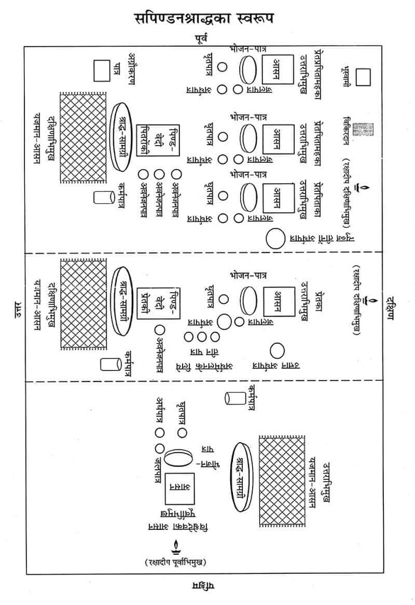
सभी आसनोंके सामने भोजनपात्र (पत्तल) रखे। भोजनपात्रके पास पश्चिममें अर्घपात्र (दोनिया) तथा जलपात्र (दोनिया) और सामने घृतपात्र (दोनिया) रखे।
यजमान-आसन—इन तीनों पिता-पितामहादिके आसनोंके ठीक सामने मध्यमें श्राद्धकर्ता अपना आसन दक्षिणाभिमुख लगाये।
रक्षादीप-प्रज्वालन—तिलके तेलसे विश्वेदेवोंके निमित्त विश्वेदेव आसनके पश्चिम रक्षादीप जलाकर उसे जौके ऊपर पूर्वाभिमुख रख दे। हाथ धो ले। इसी प्रकार प्रेतके लिये प्रेतासनसे दक्षिण दिशामें दक्षिणाभिमुख और पितरोंके लिये भी पितरोंके आसनसे दक्षिण दिशामें दक्षिणाभिमुख एक-एक दीपक जलाकर तिलके ऊपर रख दे। दीपक बुझे नहीं ऐसी व्यवस्था कर ले। गन्ध, अक्षत, पुष्प आदिसे दीपकोंका पूजन कर निम्न प्रार्थना करे—
भो दीप ब्रह्मरूपस्त्वं कर्मसाक्षी ह्यविघ्नकृत्।
यावत् कर्मसमाप्ति: स्यात् तावत् त्वं सुस्थिरो भव॥
हाथ धोकर पितरोंके सम्मुख अपने आसनपर आ जाय।
गदाधर आदिकी प्रार्थना—अंजलिमें फूल लेकर गयाधाम, गदाधर तथा पितरोंका स्मरण कर निम्न मन्त्रसे प्रार्थना करे—
श्राद्धारम्भे गयां ध्यात्वा ध्यात्वा देवं गदाधरम्।
स्वपितॄन् मनसा ध्यात्वा तत: श्राद्धं समाचरेत्॥
ॐ गयायै नम:। ॐ गदाधराय नम:। कहकर फूल चढ़ा दे।
तदनन्तर तीन बार ‘ॐ श्राद्धभूम्यै नम:’ कहकर भूमिपर जौ एवं पुष्प छोड़े।
भूमिसहित विष्णु-पूजन—श्राद्ध आरम्भ करनेके पूर्व विष्णुभगवान्का पूजन करनेका विधान है। अत: शालग्राम-शिलापर षोडशोपचार अथवा पंचोपचार पूजन करना चाहिये। यदि सम्भव न हो तो निम्न श्लोकसे विष्णुभगवान्का स्मरण-पूजन करते हुए पुष्पांजलि समर्पित कर श्राद्ध आरम्भ करना चाहिये—
शान्ताकारं भुजगशयनं
पद्मनाभं सुरेशं
विश्वाधारं गगनसदृशं
मेघवर्णं शुभाङ्गम्।
लक्ष्मीकान्तं कमलनयनं
योगिभिर्ध्यानगम्यं
वन्दे विष्णुं भवभयहरं
सर्वलोकैकनाथम्॥
ॐ भूमिपत्नीसहिताय विष्णवे नम:—कहकर भगवान् विष्णुको प्रणामकर पुष्प अर्पित कर दे।
कर्मपात्रका निर्माण—श्राद्धकर्ममें जलका उपयोग करनेके लिये कर्मपात्रका निर्माण कर ले। अक्षतोंके ऊपर जलसे भरा एक कलश रखकर उसमें चन्दन, तुलसी, जौ, पुष्प तथा कुश छोड़ दे और त्रिकुशसे जलको दक्षिणावर्त आलोडित करते हुए निम्न मन्त्रोंको पढ़े—
ॐ यद्देवा देवहेडनं देवासश्चकृमा वयम्।
अग्निर्मा तस्मादेनसो विश्वान् मुञ्चत्वÞहस:॥
ॐ यदि दिवा यदि नक्तमेनाÞसि चकृमा वयम्।
वायुर्मा तस्मादेनसो विश्वान् मुञ्चत्वÞहस:॥
ॐ यदि जाग्रद्यदि स्वप्न एनाÞसि चकृमा वयम्।
सूर्यो मा तस्मादेनसो विश्वान् मुञ्चत्वÞहस:॥
प्रोक्षण—कर्मपात्रके जलसे कुशद्वारा अपना तथा सभी श्राद्धसामग्री एवं पाकका प्रोक्षण करे और बोले—‘श्वादिदुष्टदृष्टिनिपातदूषितपाकादिकं पूतं भवतु।’
दिग्-रक्षण—बायें हाथमें पीली सरसों लेकर दाहिने हाथसे ढककर निम्न मन्त्र बोले—
नमो नमस्ते गोविन्द पुराणपुरुषोत्तम।
इदं श्राद्धं हृषीकेश रक्ष त्वं सर्वतो दिश:॥
तदनन्तर दाहिने हाथसे सरसोंको पूर्व-दक्षिण आदि दिशाओंमें निम्न मन्त्रोंको पढ़ते हुए छोड़े—पूर्वमें—प्राच्यै नम:। दक्षिणमें—अवाच्यै नम:। पश्चिममें—प्रतीच्यै नम:। उत्तरमें—उदीच्यै नम:। आकाशमें—अन्तरिक्षाय नम:। भूमिपर—भूम्यै नम:।
हाथ जोड़कर प्रार्थना करे—
पूर्वे नारायण: पातु वारिजाक्षस्तु दक्षिणे।
प्रद्युम्न: पश्चिमे पातु वासुदेवस्तथोत्तरे।
ऊर्ध्वं गोवर्धनो रक्षेदधस्ताच्च त्रिविक्रम:॥
नीवीबन्धन—किसी पत्र-पुटक या पानके पत्तेपर तिल, त्रिकुशका टुकड़ा लपेटकर निम्न मन्त्र पढ़ते हुए दक्षिण कटिभागमें* उसे खोंस ले, बाँध ले—
ॐ निहन्मि सर्वं यदमेध्यकृद् भवे-
द्धताश्च सर्वेऽसुरदानवा मया।
यक्षाश्च रक्षांसि पिशाचगुह्यका
हता मया यातुधानाश्च सर्वे॥
* श्राद्धमें रक्षाके लिये किसी पत्तेमें तिल तथा कुशत्रयसे नीवीबन्धन किया जाता है। पितृकार्यमें दक्षिण कटिभागमें नीवीबन्धन होता है—पितॄणां दक्षिणे पार्श्वे विपरीता तु दैविके। दक्षिणे कटिदेशे तु कुशत्रयतिलै: सह॥ तर्जयन्तीह दैत्यानां यथा नॄणामयस्तथा।
ॐ सोमस्य नीविरसि विष्णो: शर्मासि शर्मयजमानस्येन्द्रस्य योनिरसि सुसस्या: कृषीस्कृधि।
प्रतिज्ञा-संकल्प—दाहिने हाथमें त्रिकुश, तिल, जल तथा द्रव्य लेकर प्रतिज्ञा-संकल्प करे—
ॐ विष्णुर्विष्णुर्विष्णु: नम: परमात्मने पुरुषोत्तमाय ॐ तत्सत् अद्यैतस्य विष्णोराज्ञया जगत्सृष्टिकर्मणि प्रवर्तमानस्य ब्रह्मणो द्वितीयपरार्द्धे श्रीश्वेतवाराहकल्पे वैवस्वतमन्वन्तरे अष्टाविंशतितमे कलियुगे कलिप्रथमचरणे जम्बूद्वीपे भारतवर्षे भरतखण्डे ....क्षेत्रे (यदि काशी हो तो अविमुक्तवाराणसीक्षेत्रे गौरीमुखे त्रिकण्टकविराजिते महाश्मशाने भगवत्या उत्तरवाहिन्या भागीरथ्या वामभागे) बौद्धावतारे ....संवत्सरे ....उत्तरायणे/दक्षिणायने ....ऋतौ ....मासे ....पक्षे ....तिथौ ....गोत्र: ....शर्मा/वर्मा/गुप्तोऽहम् ....गोत्रस्य (स्त्री हो तो ....गोत्राया:) प्रेतस्य (स्त्री हो तो ....प्रेताया:) प्रेतत्वनिवृत्तिपूर्वकपितृपङ्क्तिप्रवेशार्थं पार्वणविधिना सदैवं सैकोद्दिष्टं सपिण्डीकरणश्राद्धं करिष्ये।
हाथके संकल्पके जल आदिको छोड़ दे।
पितृगायत्रीका पाठ—पितृगायत्रीका तीन बार पाठ करे—
ॐ देवताभ्य: पितृभ्यश्च महायोगिभ्य एव च।
नम: स्वाहायै स्वधायै नित्यमेव नमो नम:॥
आसनदान
(१) विश्वेदेवके लिये आसनदान—प्रतिज्ञा-संकल्प करनेके बाद पिता, पितामह, प्रपितामहके आसनोंकी प्रदक्षिणा करते हुए विश्वेदेवके आसनके पास आ जाय तथा उत्तराभिमुख होकर अपने आसनपर बैठ जाय। विश्वेदेवके आसनके पास पूजनके लिये एक जलपात्र रख ले तथा विश्वेदेवसम्बन्धी सब कार्य इसी जलसे करे। हाथमें त्रिकुश, जल तथा जौ लेकर विश्वेदेवको आसन प्रदान करनेके लिये निम्न संकल्प पढ़े—
संकल्प—ॐ अद्य ....गोत्रस्य (....गोत्राया:) ....प्रेतस्य (....प्रेताया:) प्रेतत्वनिवृत्तिपूर्वकपितृ-पङ्क्तिप्रवेशार्थं प्रारब्धे सपिण्डीकरणश्राद्धे प्रेतपितृपितामहप्रपितामहानां ....गोत्राणां ....शर्मणां/वर्मणां/गुप्तानां वसुरुद्रादित्यस्वरूपाणां श्राद्धसम्बन्धिनां कामकालसंज्ञकानां* विश्वेषां देवानामिदं त्रिकुशात्मकमासनं वो नम:।
* इष्टिश्राद्धे क्रतुर्दक्ष: सत्यो नान्दीमुखे वसु:।
नैमित्तिके कामकालौ काम्ये च धुरिलोचनौ।
पुरूरवार्द्रवौ चैव पार्वणे समुदाहृतौ॥
[इष्टिश्राद्धमें क्रतु तथा दक्ष, नान्दीमुखश्राद्धमें सत्य तथा वसु, नैमित्तिकश्राद्धमें काम तथा काल, काम्यश्राद्धमें धुरि तथा लोचन, पार्वणश्राद्धमें पुरूरव तथा आर्द्रव—इन नामोंसे विश्वेदेव कहे गये हैं।] (कामधेनुके अनुसार ‘मार्द्रव’ शब्द माकारादि सकारान्त है तथा गौड़निबन्धोंमें पुरूरवा: शब्द सकारान्त है। अत: पुरूरवो मार्द्रवौ यह पाठ भी प्राप्त होता है।)
हाथका जौ, जल आदि विश्वेदेवके आसनपर छोड़ दे। हाथकी पवित्री तथा त्रिकुश वहींपर रख दे।
प्रेतके लिये आसनदान—विश्वेदेवको आसन देनेके बाद उनकी परिक्रमा करते हुए प्रेतासनके समीप आकर अपने आसनपर अपसव्य दक्षिणाभिमुख होकर बैठ जाय। प्रेतकार्यके लिये एक पूजनका जलपात्र भी समीपमें रख ले। नयी पवित्री धारण कर ले। हाथमें त्रिकुश, तिल तथा जल लेकर प्रेतके लिये आसनदानका इस प्रकार संकल्प करे—
संकल्प—ॐ अद्य ....गोत्रस्य (....गोत्राया:) ....प्रेतस्य (....प्रेताया:) सपिण्डीकरणश्राद्धे प्रेतस्य इदं त्रिकुशात्मकमासनं ते मया दीयते, तवोपतिष्ठताम्—ऐसा कहकर प्रेतके आसनपर पितृतीर्थसे त्रिकुश, जल तथा तिल छोड़ दे। हाथकी पवित्री और त्रिकुश वहीं रख दे। हाथ-पैर धोकर पवित्र हो जाय।
प्रेतके पिता, पितामह तथा प्रपितामहके लिये आसनदान—प्रेतको आसनदान देनेके अनन्तर पितरोंके आसनके समीप आकर अपने आसनपर दक्षिणाभिमुख बैठ जाय। यहाँ भी पूजनके लिये एक जलपात्र रख ले। दूसरी नयी पवित्री पहन ले। हाथमें मोटक, तिल, जल लेकर पिता, पितामह तथा प्रपितामहको आसन प्रदान करनेके लिये एकतन्त्रसे निम्न संकल्प पढ़े—
संकल्प—ॐ अद्य ....गोत्रस्य (....गोत्राया:) ....प्रेतस्य (....प्रेताया:) सपिण्डीकरणश्राद्धे प्रेतपितृपितामहप्रपितामहानां ....शर्मणां/वर्मणां/गुप्तानां वसुरुद्रादित्यस्वरूपाणामेतानि आसनानि युष्मभ्यं नम:।*
* आसनाह्वानयोरर्घे तथाऽक्षय्येऽवनेजने।
क्षणे स्वाहा स्वधा वाणीं न कुर्यादब्रवीन्मनु:॥
(श्राद्धकाशिकामें धर्मप्रदीप)
[आसन, आवाहन, अर्घ, अक्षय्योदकदान, अवनेजन-प्रत्यवनेजनमें ‘स्वाहा’ तथा ‘स्वधा’ शब्दका उच्चारण नहीं करना चाहिये—ऐसा मनुका वचन है।]
—ऐसा संकल्प बोलकर हाथके तिल, जलको प्रेतके पिता, पितामह, प्रपितामहके तीनों आसनोंपर पितृतीर्थसे क्रमश: छोड़ दे।
हाथकी पवित्री और मोटकको भी छोड़ दे।
विश्वेदेवके आसनपर जाना—अब आसनसे उठकर पितरोंके आसनोंकी परिक्रमा करते हुए विश्वेदेवके समीप स्थित अपने आसनपर उत्तराभिमुख सव्य होकर बैठ जाय। पवित्री धारण कर ले।
आवाहन—हाथमें जौ लेकर विश्वेदेवोंका आवाहन इस मन्त्रसे करे—ॐ विश्वान् देवानावाहयिष्ये।
और ब्राह्मण बोले—
ॐ विश्वे देवास आ गत शृणुता म इमÞ हवम्। एदं बर्हिर्निषीदत।
ॐ विश्वे देवा: शृणुतेमÞ हवं मे ये अन्तरिक्षे य उप द्यवि ष्ठ।
ये अग्निजिह्वा उत वा यजत्रा आसद्यास्मिन् बर्हिषि मादयध्वम्॥
आगच्छन्तु महाभागा विश्वेदेवा महाबला:।
ये यत्र योजिता: श्राद्धे सावधाना भवन्तु ते॥
तदनन्तर ‘ॐ यवोऽसि यवयास्मद् द्वेषो यवयाराती:’—इस मन्त्रको पढ़ते हुए विश्वेदेवके आसन* पर जौ छोड़े।
* आवाहयेदनुज्ञातो विश्वे देवास इत्यृचा॥
यवैरन्ववकीर्याथ भाजने सपवित्रके।
शन्नो देव्या पय: क्षिप्त्वा यवोऽसीति यवांस्तथा॥
(वीरमित्रोदय-श्राद्धप्रकाशमें याज्ञवल्क्यका वचन)
अर्घपात्रका निर्माण—इस प्रकार विश्वेदेवोंका आवाहन कर निम्न रीतिसे अर्घपात्रका निर्माण करे—
एक अर्घपात्र (दोनिये)-में निम्न मन्त्रसे दो कुशपत्रका पवित्रक पूर्वाग्र रखे—
ॐ पवित्रे स्थो वैष्णव्यौ सवितुर्व: प्रसव उत्पुनाम्यच्छिद्रेण पवित्रेण सूर्यस्य रश्मिभि:।
तस्य ते पवित्रपते पवित्रपूतस्य यत्काम: पुने तच्छकेयम्॥
तदनन्तर निम्न मन्त्रसे दोनियेमें जल डाले—
ॐ शं नो देवीरभिष्टय आपो भवन्तु पीतये। शं योरभि स्रवन्तु न:॥
और फिर ‘ॐ यवोऽसि यवयास्मद् द्वेषो यवयाराती:’—मन्त्रसे जौ डाले।
गन्ध, पुष्प मौन होकर छोड़े।
इसके बाद अर्घपात्रको बायें हाथमें लेकर दाहिने हाथसे अर्घपात्रसे पवित्रक निकालकर विश्वेदेवके भोजनपात्रपर पूर्वाग्र रख दे और ‘ॐ नमो नारायणाय’ इस मन्त्रसे एक आचमनी जल पवित्रकके ऊपर छोड़ दे।
अर्घपात्रको दाहिने हाथसे ढककर निम्न मन्त्र पढ़कर अभिमन्त्रित करे—
ॐ या दिव्या आप: पयसा सम्बभूवुर्या आन्तरिक्षा उत पार्थवीर्या:।
हिरण्यवर्णा यज्ञियास्ता न आप: शिवा: शÞ स्योना: सुहवा भवन्तु॥
अर्घदान—दाहिने हाथमें त्रिकुश, जौ, जल तथा अर्घपात्र लेकर निम्न संकल्प करे—
ॐ अद्य ....गोत्रस्य (....गोत्राया:) ....प्रेतस्य (....प्रेताया:) प्रेतत्वनिवृत्तिपूर्वकपितृपङ्क्तिप्रवेशार्थं क्रियमाणे सपिण्डीकरणश्राद्धे प्रेतपितृपितामहप्रपितामहानां ....शर्मणां/वर्मणां/गुप्तानां वसुरुद्रादित्यस्वरूपाणां श्राद्धसम्बन्धिन: कामकालसंज्ञका विश्वेदेवा एष हस्तार्घो वो नम:।
—ऐसा संकल्प पढ़कर हाथपर रखे हुए अर्घपात्रके जलको देवतीर्थसे भोजनपात्रस्थ पवित्रकपर गिरा दे। पवित्रकको पूर्वाग्र अर्घपात्रमें रख दे और अर्घपात्रको विश्वेदेवके आसनके दक्षिणभागमें दायीं ओर ‘विश्वेभ्यो देवेभ्य: स्थानमसि’ कहकर ऊर्ध्वमुख रख दे। हाथकी पवित्री उतार दे।
प्रेतासनके पास आना—विश्वेदेवके आसनसे उठकर उनकी परिक्रमा करते हुए प्रेतासनके पास अपने आसनपर अपसव्य दक्षिणाभिमुख होकर बैठ जाय। यहाँ पहलेसे रखी हुई पवित्री पहन ले।
हाथमें तिल लेकर निम्न मन्त्रसे प्रेतका आवाहन करे—
गतोऽसि दिव्यलोकं त्वं कृतान्तविहितात् पथ:।
मनसा वायुभूतेन कुशे त्वाऽहं नियोजये॥
तदनन्तर ‘पूजयिष्यामि भोगेन’—ऐसा कहकर हाथका तिल प्रेतासनपर रखे हुए कुशवटु (कुशब्राह्मण)-पर छोड़ दे।
अर्घनिर्माण—यहाँका अर्घपात्र बड़ा रहेगा। ‘ॐ पवित्रेस्थो०’ इस मन्त्रसे अर्घपात्रमें दक्षिणाग्र पवित्रक, ‘ॐ शं नो देवी०’ से जल तथा ॐ तिलोऽसि सोमदैवत्यो० मन्त्रसे तिल छोड़े। गन्ध और पुष्प मौन होकर छोड़े एवं अर्घपात्रको बायें हाथमें रख ले। पवित्रकको दाहिने हाथसे निकालकर प्रेतके भोजनपात्रपर उत्तराग्र रख ले और ‘ॐ नमो नारायणाय’ कहकर एक आचमनी जल उसपर छोड़ दे।
उस अर्घपात्रको दाहिने हाथसे ढककर निम्न मन्त्र पढ़ते हुए अभिमन्त्रित करे—
ॐ या दिव्या आप: पयसा सम्बभूवुर्या आन्तरिक्षा उत पार्थवीर्या:।
हिरण्यवर्णा यज्ञियास्ता न आप: शिवा: शÞ स्योना: सुहवा भवन्तु॥
तदनन्तर दाहिने हाथमें त्रिकुश, तिल, जल तथा अर्घपात्र लेकर निम्न संकल्प करे—
प्रेतको अर्घदानका संकल्प—ॐ अद्य ....गोत्र (....गोत्रे) ....प्रेत (....प्रेते) पितृपङ्क्तिप्रवेशार्थं सपिण्डीकरणश्राद्धे एषोऽर्घस्ते मया दीयते, तवोपतिष्ठताम्।
संकल्प पढ़कर अर्घपात्रके जलके चौथाई भागको भोजनपात्रपर रखे पवित्रकपर छोड़ दे और पवित्रकको उठाकर अर्घपात्रपर दक्षिणाग्र रख ले तथा अर्घपात्रको भोजनपात्रके सामने सुरक्षित रख दे।
हाथकी पवित्री उतारकर वहींपर रख दे। हाथ-पैर धोकर शुद्ध हो जाय और पितरोंके आसनके समीप आकर अपने आसनपर बैठ जाय।
पितरोंके आसनके पास आना—यहाँकी पवित्री धारण कर ले। हाथमें तिल लेकर पितरोंका आवाहन निम्न मन्त्रोंको पढ़ते हुए करे—‘पितॄनहमावाहयिष्ये’
ॐ उशन्तस्त्वा नि धीमह्युशन्त: समिधीमहि।
उशन्नुशत आ वह पितॄन् हविषे अत्तवे॥
ॐ आ यन्तु न: पितर: सोम्यासोऽग्निष्वात्ता: पथिभिर्देवयानै:।
अस्मिन् यज्ञे स्वधया मदन्तोऽधि ब्रुवन्तु तेऽवन्त्वस्मान्॥
तदनन्तर ॐ अपहता असुरा रक्षाॸसि वेदिषद:—यह मन्त्र पढ़कर क्रमश: पिता, पितामह तथा प्रपितामहके आसनोंपर तिल छोड़ दे।
अर्घपात्रनिर्माण—प्रेतके पिता, पितामह और प्रपितामहके तीन अर्घपात्रों (दोनियों)-में निम्न मन्त्र पढ़कर पवित्रक दक्षिणाग्र रखे—
ॐ पवित्रे स्थो वैष्णव्यौ सवितुर्व: प्रसव उत्पुनाम्यच्छिद्रेण पवित्रेण सूर्यस्य रश्मिभि:।
तस्य ते पवित्रपते पवित्रपूतस्य यत्काम: पुने तच्छकेयम्॥
निम्न मन्त्रसे तीनों दोनियोंमें जल छोड़े—
ॐ शं नो देवीरभिष्टय आपो भवन्तु पीतये।
शं योरभि स्रवन्तु न:॥
निम्न मन्त्रसे तीनों दोनियोंमें तिल छोड़े—
ॐतिलोऽसि सोमदैवत्यो गोसवो देवनिर्मित:।
प्रत्नमद्भि: पृक्त: स्वधया पितृृँल्लोकान् प्रीणाहि न: स्वाहा॥
तीनों दोनियोंमें गन्ध, पुष्प मौन होकर छोड़े—
इस प्रकार तीन अर्घपात्र बनाकर प्रथम अर्घपात्र बायें हाथमें रख ले और उसका पवित्रक उठाकर भोजनपात्रपर उत्तराग्र रखे। तदनन्तर पूजनपात्रसे एक आचमनी जल ‘ॐ नमो नारायणाय’ कहकर पवित्रकपर छोड़े। दाहिने हाथसे अर्घपात्रको ढक ले और निम्न मन्त्र पढ़कर उसे अभिमन्त्रित करे—
ॐ या दिव्या आप: पयसा सम्बभूवुर्या आन्तरिक्षा उत पार्थवीर्या:।
हिरण्यवर्णा यज्ञियास्ता न आप: शिवा: शÞ स्योना: सुहवा भवन्तु॥
अर्घप्रदान—दाहिने हाथमें मोटक, तिल, जल और अर्घपात्र लेकर निम्न संकल्प बोलकर अर्घपात्रके जलको पवित्रकपर पितृतीर्थसे छोड़े—
प्रेतपिताको अर्घदानका संकल्प—ॐ अद्य संकल्पितकार्यसंसिद्धॺर्थं ....गोत्रस्य(....गोत्राया:) ....प्रेतस्य (....प्रेताया:) प्रारब्धे सपिण्डीकरणश्राद्धे प्रेतपित: ....गोत्र वसुस्वरूप एषोऽर्घस्ते नम:। कहकर प्रेतपिताको अर्घ प्रदान करे तथा पवित्रकको अर्घपात्रपर दक्षिणाग्र रखकर अर्घपात्र जहाँसे उठाया था, वहीं रख दे। इसी प्रकार प्रेतपितामह तथा प्रेतप्रपितामहके अर्घपात्रोंका अभिमन्त्रण कर उन्हें भी निम्न संकल्पसे अर्घ प्रदान करे—
प्रेतपितामहको अर्घदानका संकल्प—ॐ अद्य संकल्पितकार्यसंसिद्धॺर्थं ....गोत्रस्य (....गोत्राया:) ....प्रेतस्य (....प्रेताया:) प्रारब्धे सपिण्डीकरणश्राद्धे प्रेतपितामह ....गोत्र रुद्रस्वरूप एषोऽर्घस्ते नम:। कहकर प्रेतपितामहको अर्घ प्रदान करे तथा पवित्रकको अर्घपात्रपर दक्षिणाग्र रखकर अर्घपात्र जहाँसे उठाया था, वहीं रख दे।
प्रेतप्रपितामहको अर्घदानका संकल्प—ॐ अद्यसंकल्पितकार्यसंसिद्धॺर्थं ....गोत्रस्य (....गोत्राया:) ....प्रेतस्य (....प्रेताया:) प्रारब्धे सपिण्डीकरणश्राद्धे प्रेतप्रपितामह ....गोत्र आदित्यस्वरूप एषोऽर्घस्ते नम:। कहकर प्रेतप्रपितामहको अर्घ प्रदान करे तथा पवित्रकको अर्घपात्रपर दक्षिणाग्र रखकर अर्घपात्र जहाँसे उठाया था, वहीं रख दे।
अर्घसंयोजन (मेलन)
(क) प्रेतार्घका संयोजन—पित्रादि-मण्डलसे उठकर पितरोंकी तथा विश्वेदेवकी परिक्रमा करते हुए प्रेतमण्डलमें अपने आसनपर अपसव्य दक्षिणाभिमुख हो बैठ जाय। यहाँकी पवित्री धारण कर ले। तदनन्तर प्रेतार्घके आगे उत्तरसे दक्षिणकी ओर तीन नवीन पात्र (दोनिये) स्थापित करे। इन्हीं तीन दोनियोंमें क्रमश: प्रेतके अर्घपात्रका जल आदि छोड़ा जायगा। पवित्रक प्रेतार्घपात्रमें ही बना रहेगा। उसकी विधि इस प्रकार है—
सर्वप्रथम प्रेतार्घपात्रका एक अंश जल उत्तरवाले पात्रमें डाले, उस समय निम्न मन्त्र बोले—
ये समाना: समनस: पितरो यमराज्ये।
तेषाँल्लोक: स्वधा नमो यज्ञो देवेषु कल्पताम्॥
ये समाना: समनसो जीवा जीवेषु मामका:।
तेषाÞ श्रीर्मयि कल्पतामस्मिँल्लोके शतÞ समा:॥
इसी प्रकार प्रेतार्घपात्रका दूसरा अंश जल दूसरे पात्रमें ‘ये समाना:०’ मन्त्रोंको पढ़ते हुए डाले और प्रेतार्घपात्रका तीसरा अंश तीसरे पात्रमें ‘ये समाना:०’ मन्त्रोंको पढ़ते हुए छोड़े तथा प्रेतार्घपात्र यथास्थान रख दे।
तदनन्तर अर्घमेलनके लिये उत्तरसे दक्षिण रखे गये तीन पात्रोंमें स्थित प्रथम पात्र (उत्तरवाले)-का जल प्रेतार्घपात्रमें मौन होकर डाले और उत्तरवाले प्रथम पात्रको पीछेकी ओर फेंक दे। तदनन्तर दाहिने हाथमें प्रेतार्घपात्र, मोटक, तिल, जल लेकर प्रेतार्घपात्रके जलका पिताके अर्घपात्रमें मेलनके लिये निम्न रीतिसे संकल्प करे—
प्रेतपितासे प्रेतके अर्घसंयोजन (मेलन)-का संकल्प—ॐ अद्य ....गोत्रस्य (....गोत्राया:) ....प्रेतस्य (....प्रेताया:) सपिण्डीकरणश्राद्धे प्रेतार्घपात्रस्थप्रथमांशजलादिकं प्रेतपित्रार्घपात्रोदकेन सह संयोजयिष्ये।*
* यदि प्रेत स्त्री है और उसका पति जीवित है तो प्रेतका मेलन श्वश्रू (सास), प्रश्वश्रू (परसास) तथा वृद्धप्रश्वश्रू (वृद्धपरसास)-में होगा। यदि पति जीवित नहीं है तो स्त्रीप्रेतका मेलन पति, श्वशुर और प्रश्वशुरमें होगा।
—ऐसा संकल्प पढ़कर प्रेतार्घपात्रके प्रथमांश जल आदिको प्रेतपिताके अर्घपात्रमें निम्न मन्त्रोंको पढ़ते हुए छोड़े, किंतु पवित्रक अर्घपात्रमें ही रहने दे।
ये समाना: समनस: पितरो यमराज्ये।
तेषाँल्लोक: स्वधा नमो यज्ञो देवेषु कल्पताम्॥
ये समाना: समनसो जीवा जीवेषु मामका:।
तेषाÞ श्रीर्मयि कल्पतामस्मिँल्लोके शतÞ समा:॥
इसी प्रकार द्वितीय पात्रस्थित अर्घजलको प्रेतके अर्घपात्रमें मौन होकर डाल दे और द्वितीय पात्रको पीछेकी ओर फेंक दे। तदनन्तर दाहिने हाथमें प्रेतार्घपात्र, मोटक, तिल, जल लेकर प्रेतार्घपात्रके जलका प्रेतपितामहके अर्घपात्रमें मेलनके लिये निम्न रीतिसे संकल्प करे—
प्रेतपितामहसे प्रेतके अर्घसंयोजनका संकल्प—ॐ अद्य ....गोत्रस्य (....गोत्राया:)....प्रेतस्य (....प्रेताया:) सपिण्डीकरणश्राद्धे प्रेतार्घपात्रस्थद्वितीयांशजलादिकं प्रेतपितामहार्घपात्रोदकेन सहसंयोजयिष्ये।
ऐसा संकल्प पढ़कर प्रेतार्घपात्रके द्वितीयांश जल आदिको प्रेतपितामहके अर्घपात्रमें निम्न मन्त्रोंको पढ़ते हुए छोड़े। पवित्रक अर्घपात्रमें ही बना रहेगा।
ये समाना: समनस: पितरो यमराज्ये।
तेषाँल्लोक: स्वधा नमो यज्ञो देवेषु कल्पताम्॥
ये समाना: समनसो जीवा जीवेषु मामका:।
तेषाÞ श्रीर्मयि कल्पतामस्मिँल्लोके शतÞ समा:॥
तदनन्तर अर्घमेलनके लिये उत्तरसे दक्षिण रखे गये तृतीय पात्रका जल प्रेतार्घपात्रमें मौन होकर डाले और तृतीय पात्रको भी पीछेकी ओर फेंक दे। तदनन्तर दाहिने हाथमें प्रेतार्घपात्र, मोटक, तिल, जल लेकर प्रेतार्घपात्रके जलका प्रेतप्रपितामहके अर्घपात्रमें मेलनके लिये निम्न रीतिसे संकल्प करे—
प्रेतप्रपितामहसे प्रेतके अर्घसंयोजनका संकल्प—ॐ अद्य ....गोत्रस्य (....गोत्राया:) ....प्रेतस्य (....प्रेताया:) सपिण्डीकरणश्राद्धे प्रेतार्घपात्रस्थतृतीयांशजलादिकं प्रेतप्रपितामहार्घपात्रोदकेन सह संयोजयिष्ये।
ऐसा संकल्प पढ़कर प्रेतार्घपात्रके अन्तिम तृतीयांश जलको प्रेतप्रपितामहके अर्घपात्रके जलमें निम्न मन्त्रोंको पढ़ते हुए मिलाये, किंतु पवित्रक प्रेतार्घपात्रमें ही रहने दे।
ये समाना: समनस: पितरो यमराज्ये।
तेषाँल्लोक: स्वधा नमो यज्ञो देवेषु कल्पताम्॥
ये समाना: समनसो जीवा जीवेषु मामका:।
तेषाÞ श्रीर्मयि कल्पतामस्मिँल्लोके शतÞ समा:॥
तदनन्तर ‘प्रेताय स्थानमसि’ कहकर प्रेतका अर्घपात्र प्रेतासनके वामभागमें उत्तान (सीधा) रख दे।
पितरोंके मण्डलमें आना—हाथ-पैर धोकर प्रेतमण्डलसे पितरोंके आसनके समीप अपने आसनपर आ जाय। यहाँकी पवित्री पहन ले। अपसव्य दक्षिणाभिमुख हो, बायाँ घुटना पृथ्वीपर टिका ले और निम्न रीतिसे अर्घसंयोजनका कार्य करे—
(ख) पिता, पितामह तथा प्रपितामहत्रयका अर्घसंयोजन—प्रेतके प्रपितामहका अर्घपात्र हाथमें उठाकर उसमें स्थित तिल, पुष्प, पवित्रक, जल आदि प्रेतपितामहके अर्घपात्रमें छोड़ दे और प्रेतपितामहके अर्घपात्रस्थ जलादिको प्रेतपिताके अर्घपात्रमें छोड़ दे। प्रेतपिताके अर्घपात्रको प्रेतपितामहके अर्घपात्रके ऊपर और उन दोनों अर्घपात्रोंको प्रेतप्रपितामहके अर्घपात्रके ऊपर रखकर तीनों अर्घपात्रोंको प्रेतपिताके आसनके वाम पार्श्व अर्थात् पश्चिम दिशामें ‘पितृभ्य: स्थानमसि’ कहकर उलटकर* रख दे।
* दत्त्वार्घ्यं संस्रवांस्तेषां पात्रे कृत्वा विधानत:।
पितृभ्य: स्थानमसीति न्युब्जं पात्रं करोत्यध:॥
(याज्ञ०स्मृ० १०।२३५)
इन एकके ऊपर एक उलटकर रखे गये अर्घपात्रोंको ब्राह्मणविसर्जनसे पूर्व न तो हिलाये और न उठाये ही।*
* (क) नोद्धरेत् न च चालयेत् (यमस्मृति) (ख) ब्राह्मणविसर्जनात्पूर्वं नोद्धरणीयम् (कात्यायन)
यहाँकी पवित्री यहीं उतार दे।
(१) विश्वेदेवपूजन—पितरोंकी परिक्रमा करते हुए विश्वेदेवके आसनके पास अपने आसनपर सव्य उत्तराभिमुख बैठकर यहाँकी पवित्री पहन ले। निम्न रीतिसे विश्वेदेवोंका पूजन करे—
इदमाचमनीयम् (स्वाचमनीयम्)—कहकर आचमनीय जल दे।
इदं स्नानीयम् (सुस्नानीयम्)—कहकर स्नानीय जल दे।
इदमाचमनीयम् (स्वाचमनीयम्)—कहकर आचमनीय जल दे।
इदं वस्त्रम् (सुवस्त्रम्)—कहकर वस्त्र अर्पित करे।
इदमाचमनीयम् (स्वाचमनीयम्)—कहकर आचमनीय जल दे।
इमे यज्ञोपवीते (सुयज्ञोपवीते)—कहकर यज्ञोपवीत चढ़ाये।
इदमाचमनीयम् (स्वाचमनीयम्)—कहकर आचमनीय जल दे।
एष गन्ध: (सुगन्ध:)—कहकर गन्ध आघ्रापित करे।
इमे यवाक्षता: (सुयवाक्षता:)—कहकर यवाक्षत चढ़ाये।
इदं माल्यम् (सुमाल्यम्)—कहकर माला चढ़ाये।
एष धूप: (सुधूप:)—कहकर धूप आघ्रापित करे।
एष दीप: (सुदीप:)—कहकर दीप दिखाये।
हस्तप्रक्षालनम् (हाथ धो ले)
इदं नैवेद्यम् (सुनैवेद्यम्)—कहकर नैवेद्य अर्पित करे।
इदमाचमनीयम् (स्वाचमनीयम्)—कहकर आचमनीय जल दे।
इदं फलम् (सुफलम्)—कहकर फल अर्पित करे।
इदमाचमनीयम् (स्वाचमनीयम्)—कहकर आचमनीय जल दे।
इदं ताम्बूलम् (सुताम्बूलम्)—कहकर ताम्बूल अर्पित करे।
एषा दक्षिणा (सुदक्षिणा)—कहकर दक्षिणा चढ़ाये। इत्यादि उपचारोंसे विश्वेदेवका पूजन करे। तदनन्तर त्रिकुश, जौ, जल लेकर अर्चनदानका संकल्प करे—
अर्चनदानका संकल्प—ॐ अद्य संकल्पितकार्यसंसिद्धॺर्थं ....गोत्रस्य (....गोत्राया:) ....प्रेतस्य (....प्रेताया:) प्रारब्धे सपिण्डीकरणश्राद्धे ....गोत्राणां ....शर्मणां/वर्मणां/गुप्तानां वसुरुद्रादित्यस्वरूपाणां प्रेतपितृपितामहप्रपितामहानां श्राद्धसम्बन्धिन: कामकालसंज्ञका: विश्वेदेवा एतान्यर्चनानि वो नम:। संकल्पका जल आदि देवासनपर छोड़ दे। पवित्री उतार दे।
(२) प्रेतका पूजन—विश्वेदेवकी परिक्रमा करते हुए प्रेतमण्डलके समीप अपने आसनपर बैठकर अपसव्य दक्षिणाभिमुख हो जाय। यहाँकी पवित्री पहन ले। तदनन्तर प्रेतका पूजन करे—
इदमाचमनीयम् (स्वाचमनीयम्)—कहकर आचमनीय जल दे।
इदं स्नानीयम् (सुस्नानीयम्)—कहकर स्नानीय जल दे।
इदमाचमनीयम् (स्वाचमनीयम्)—कहकर आचमनीय जल दे।
इदं वस्त्रम् (सुवस्त्रम्)—कहकर वस्त्र अर्पित करे।
इदमाचमनीयम् (स्वाचमनीयम्)—कहकर आचमनीय जल दे।
इमे यज्ञोपवीते (सुयज्ञोपवीते)—कहकर यज्ञोपवीत चढ़ाये।
इदमाचमनीयम् (स्वाचमनीयम्)—कहकर आचमनीय जल दे।
एष गन्ध: (सुगन्ध:)—कहकर गन्ध आघ्रापित करे।
इमे तिलाक्षता: (सुतिलाक्षता:)—कहकर तिलाक्षत चढ़ाये।
इदं माल्यम् (सुमाल्यम्)—कहकर माला चढ़ाये।
एष धूप: (सुधूप:)—कहकर धूप आघ्रापित करे।
एष दीप: (सुदीप:)—कहकर दीप दिखाये।
हस्तप्रक्षालनम् (हाथ धो ले)
इदं नैवेद्यम् (सुनैवेद्यम्)—कहकर नैवेद्य अर्पित करे।
इदमाचमनीयम् (स्वाचमनीयम्)—कहकर आचमनीय जल दे।
इदं फलम् (सुफलम्)—कहकर फल अर्पित करे।
इदमाचमनीयम् (स्वाचमनीयम्)—कहकर आचमनीय जल दे।
इदं ताम्बूलम् (सुताम्बूलम्)—कहकर ताम्बूल अर्पित करे।
एषा दक्षिणा (सुदक्षिणा)—कहकर दक्षिणा चढ़ाये।
इत्यादि उपचारोंसे प्रेतका पूजन करे। तदनन्तर अर्चनदानका संकल्प करे—
अर्चनदानका संकल्प—हाथमें त्रिकुश, तिल, जल लेकर निम्न संकल्प करे—
ॐ अद्य संकल्पितकार्यसंसिद्धॺर्थं ....गोत्रस्य (....गोत्राया:) ....प्रेतस्य (....प्रेताया:) प्रारब्धे सपिण्डीकरणश्राद्धे प्रेत एतान्यर्चनानि ते मया दीयन्ते, तवोपतिष्ठन्ताम्।
हाथके जल आदिको प्रेतासनपर छोड़ दे।
हाथकी पवित्री यहींपर छोड़ दे तथा हाथ-पैर धोकर पितरोंके आसनके समीप आकर अपने आसनपर दक्षिणाभिमुख बैठ जाय और यहाँ रखी हुई पवित्री धारण कर ले।
(३) पितरोंका पूजन—यहाँपर पिता, पितामह तथा प्रपितामहका क्रमसे विभिन्न उपचारोंद्वारा पृथक्-पृथक् पूजन करे—
इदमाचमनीयम् (स्वाचमनीयम्)—कहकर आचमनीय जल दे।
इदं स्नानीयम् (सुस्नानीयम्)—कहकर स्नानीय जल दे।
इदमाचमनीयम् (स्वाचमनीयम्)—कहकर आचमनीय जल दे।
इदं वस्त्रम् (सुवस्त्रम्)—कहकर वस्त्र अर्पित करे।
इदमाचमनीयम् (स्वाचमनीयम्)—कहकर आचमनीय जल दे।
इमे यज्ञोपवीते (सुयज्ञोपवीते)—कहकर यज्ञोपवीत चढ़ाये।
इदमाचमनीयम् (स्वाचमनीयम्)—कहकर आचमनीय जल दे।
एष गन्ध: (सुगन्ध:)—कहकर गन्ध आघ्रापित करे।
इदं माल्यम् (सुमाल्यम्)—कहकर माला चढ़ाये।
इमे तिलाक्षता: (सुतिलाक्षता:)—कहकर तिलाक्षत चढ़ाये।
एष धूप: (सुधूप:)—कहकर धूप आघ्रापित करे।
एष दीप: (सुदीप:)—कहकर दीप दिखाये।
हस्तप्रक्षालनम् (हाथ धो ले)
इदं नैवेद्यम् (सुनैवेद्यम्)—कहकर नैवेद्य अर्पित करे।
इदमाचमनीयम् (स्वाचमनीयम्)—कहकर आचमनीय जल दे।
इदं फलम् (सुफलम्)—कहकर फल अर्पित करे।
इदमाचमनीयम् (स्वाचमनीयम्)—कहकर आचमनीय जल दे।
इदं ताम्बूलम् (सुताम्बूलम्)—कहकर ताम्बूल अर्पित करे।
एषा दक्षिणा (सुदक्षिणा)—कहकर दक्षिणा चढ़ाये।
उपचारोंद्वारा पृथक्-पृथक् पूजन करनेके बाद हाथमें मोटक, तिल, जल लेकर अर्चनदानका संकल्प करे—
अर्चनदानका संकल्प—ॐ अद्य संकल्पितकार्यसंसिद्धॺर्थं ....गोत्रस्य (....गोत्राया:) ....प्रेतस्य (....प्रेताया:) प्रारब्धे सपिण्डीकरणश्राद्धे प्रेतपितृपितामहप्रपितामहा: ....गोत्रा: ....शर्माण:/वर्माण:/गुप्ता: वसुरुद्रादित्यस्वरूपा एतान्यर्चनानि युष्मभ्यं स्वधा।
हाथका जल आदि पितरोंके आसनपर छोड़ दे। पवित्री उतारकर रख दे।
मण्डलकरण
विश्वेदेव, प्रेत तथा पितरोंके तीन पृथक्-पृथक् मण्डल बनाकर आगेका कार्य करना चाहिये।
(क) विश्वेदेवमण्डलकरण—हाथ-पैर धोकर पितरोंकी परिक्रमा करते हुए विश्वेदेवके आसनके समीप अपने आसनपर आकर सव्य उत्तराभिमुख होकर बैठ जाय। यहाँ रखी हुई पवित्री धारण कर ले और जलसे विश्वेदेवके भोजनपात्र तथा आसनके चारों ओर दक्षिणावर्त१ चौकोर२मण्डल बनाये।
१. (क) गन्धोदके तथा दीपमाल्यदामप्रदीपकम्।
अपसव्यं तत: कृत्वा पितॄणामप्रदक्षिणम्॥
(ग०पु०, आचारकाण्ड ९९।१३)
(ख) दक्षिणं पातयेज्जानुं देवान् परिचरन् सदा।
पातयेदितरं जानुं पितॄन् परिचरन् सदा।
प्रदक्षिणं तु देवानां पितॄणामप्रदक्षिणम्॥
(वीरमित्रोदय-श्राद्धप्रकाशमें कात्यायनका वचन)
२. दैवे चतुरस्रं पित्र्ये वर्तुलं मण्डलं कृत्वा क्रमेण सयवान् सतिलांश्च दर्भान् दद्यात्।
(निर्णयसिन्धुमें बह्वृचपरिशिष्ट)
मण्डल बनाते समय निम्न मन्त्र पढ़े—
ॐ यथा चक्रायुधो विष्णुस्त्रैलोक्यं परिरक्षति।
एवं मण्डलतोयं तु सर्वभूतानि रक्षतु॥
यहाँकी पवित्री यहीं छोड़ दे।
(ख) प्रेतमण्डलकरण—विश्वेदेवमण्डलसे प्रेतके आसनके समीप आ जाय। यहाँकी पवित्री धारण कर ले। अपसव्य दक्षिणाभिमुख होकर प्रेतके भोजनपात्रसहित आसनके चारों ओर अप्रदक्षिणक्रमसे (वामावर्त) जलसे गोल मण्डल बनाये और उस समय निम्न मन्त्र पढ़े—
ॐ यथा चक्रायुधो विष्णुस्त्रैलोक्यं परिरक्षति।
एवं मण्डलतोयं तु सर्वभूतानि रक्षतु॥
यहाँकी पवित्री यहीं उतारकर रख दे।
(ग) पितरोंका मण्डलकरण—प्रेतमण्डलसे पितरोंके आसनके समीप आ जाय। यहाँकी पवित्री पहन ले और पिता, पितामह तथा प्रपितामह इस क्रमसे उनके भोजनपात्रोंसहित आसनोंके चारों ओर अप्रदक्षिणक्रमसे पृथक्-पृथक् जलसे गोलाकार मण्डल बनाये। उस समय पृथक्-पृथक् यह मन्त्र पढ़े—
ॐ यथा चक्रायुधो विष्णुस्त्रैलोक्यं परिरक्षति।
एवं मण्डलतोयं तु सर्वभूतानि रक्षतु॥
अग्नौकरण*—सव्य पूर्वाभिमुख होकर अग्नौकरण करे। अपने आसनके समीप एक दोनियेमें जल भरकर रख ले।
* (क) अग्नौकरणहोमश्च कर्तव्य उपवीतिना।
अपसव्येन वा कार्यो दक्षिणाभिमुखेन वा।
(वीरमित्रोदय-श्राद्धप्रकाशमें कात्यायनका वचन)
प्राङ्मुखेनैव देवेभ्यो जुहोतीति०॥ (ख) अग्नौकरणके सम्बन्धमें वीरमित्रोदय-श्राद्धप्रकाशमें प्राप्त वचनके अग्न्यभावपदका अर्थ अग्न्याधानाभाव है। जो अग्निहोत्री हैं, वे दक्षिणाग्निमें अग्नौकरण करें और अग्निके अभावमें अर्थात् अग्न्याधानके अभावमें जो अग्निहोत्री नहीं हैं, वे सपात्रकश्राद्धमें ब्राह्मणके दाहिने हाथमें अग्नौकरण करें और सपात्रकश्राद्ध न होनेपर दोनियेमें स्थित जलमें अग्नौकरण करें—‘अग्न्यभावे तु विप्रस्य पाणौ वाथ जलेऽपि वा।’ (वीरमित्रोदय-श्राद्धप्रकाशमें मत्स्यपुराणका वचन)
विश्वेदेव और पितरोंके लिये जो पाक बना हुआ है, उस पाकान्नपर थोड़ा घी छोड़ दे। उस पाकसे थोड़ा अन्न निकालकर निम्न मन्त्रोंको पढ़ते हुए दोनियेके जलमें दो आहुति छोड़े—
(१) ॐ अग्नये कव्यवाहनाय स्वाहा।
(२) ॐ सोमाय पितृमते स्वाहा।
यहाँकी पवित्री यहीं उतारकर रख दे।
विश्वेदेवमण्डलमें आना—पितरोंके आसनसे उठकर उनकी प्रदक्षिणा करते हुए विश्वेदेवके आसनके समीप आकर अपने आसनपर सव्य उत्तराभिमुख बैठ जाय। यहाँकी पवित्री धारण करले।
अन्नपरिवेषण
विश्वेदेवके लिये अन्नपरिवेषण—बने हुए पाक तथा भोजनसामग्रीमेंसे विश्वेदेवके भोजनपात्रमें अन्न परोसे। घृतपात्रमें घृत, जलपात्रमें जल रख दे और अन्नके ऊपर निम्न मन्त्र पढ़ते हुए दोनों हाथोंसे मधु छोड़े—
ॐ मधु वाता ऋतायते मधु क्षरन्ति सिन्धव:। माध्वीर्न: सन्त्वोषधी:॥ मधु नक्तमुतोषसो मधुमत्पार्थिवÞ रज:। मधु द्यौरस्तु न: पिता॥ मधुमान्नो वनस्पतिर्मधुमाँ२ अस्तु सूर्य:। माध्वीर्गावो भवन्तु न:॥ ॐ मधु मधु मधु॥

पात्रालम्भन*—उत्तान बायें हाथपर उत्तान दायाँ हाथ स्वस्तिकाकार रखकर भोजनपात्रका स्पर्श करते हुए निम्न मन्त्र पढ़े—
ॐ पृथिवी ते पात्रं द्यौरपिधानं ब्राह्मणस्य मुखे अमृते अमृतं जुहोमि स्वाहा। इदं विष्णुर्वि चक्रमे त्रेधा नि दधे पदम्। समूढमस्य पाÞसुरे॥
* (क) दक्षिणं तु करं कृत्वा वामोपरि निधाय च। देवपात्रमथालभ्य पृथ्वी ते पात्रमुच्चरेत्॥ दक्षिणोपरि वामं च पित्र्यपात्रस्य लम्भनम्। पात्रालम्भनं कुर्याद् दत्त्वा चान्नं यथाविधि॥ (पद्मपुराण) (ख) पित्र्येऽनुत्तानपाणिभ्यामुत्तानाभ्यां च दैवते। (यम) एवमेव हेमाद्रिमदनरत्नप्रभृतय:।
ॐ कृष्ण हव्यमिदं रक्ष मदीयम्।
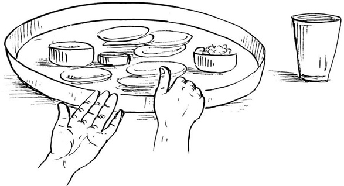
बायें हाथसे पात्रका स्पर्श किये हुए ही दाहिने हाथके अनुत्तान अँगूठेको अन्नमें रखकर बोले—इदमन्नम्। जलमें—इमा आप:। घीमें—इदमाज्यम्। तदनन्तर अन्नको स्पर्शकर बोले—इदं हव्यम्।
विश्वेदेवके भोजनपात्रमें अन्नके ऊपर ॐ यवोऽसि यवयास्मद् द्वेषो यवयाराती:—मन्त्र पढ़ते हुए जौ छींट दे और बायें हाथसे भोजनपात्रको स्पर्श किये हुए ही दाहिने हाथमें त्रिकुश, जौ तथा जल लेकर संकल्प करे—
संकल्प—ॐ अद्य संकल्पितकार्यसंसिद्धॺर्थं ....गोत्रस्य (....गोत्राया:) ....प्रेतस्य (....प्रेताया:) प्रारब्धे सपिण्डीकरणश्राद्धे प्रेतपितृपितामहप्रपितामहानां ....शर्मणां/वर्मणां/गुप्तानां वसुरुद्रादित्यस्वरूपाणां श्राद्धसम्बन्धिभ्य: कामकालसंज्ञकेभ्य: विश्वेभ्यो देवेभ्य इदमन्नं सोपस्करं वो नम:। कहकर संकल्पका जल गिरा दे तथा बायाँ हाथ भोजनपात्रसे हटा ले। पवित्री उतार दे।
भूस्वामीके पितरोंको अन्नदान—विश्वेदेवमण्डलसे परिक्रमा करते हुए पितरोंके मण्डलमें आकर अपने आसनपर अपसव्य दक्षिणाभिमुख होकर बैठ जाय। बने हुए पाकसे एक दोनियेमें पाकान्न निकालकर उसमें घृत-मधु मिलाकर मोटक, तिल, जल लेकर पितरोंके आसनके दक्षिण दिशामें निम्न मन्त्रको पढ़ते हुए रख दे—‘ॐ इदमन्नमेतद् भूस्वामिपितृभ्यो नम:।’
प्रेतमण्डलमें आना तथा अन्नपरिवेषण—पितृमण्डलसे पितरों और विश्वेदेवोंकी परिक्रमा करते हुए प्रेतमण्डलके पास आकर अपने आसनपर अपसव्य दक्षिणाभिमुख होकर बैठ जाय। यहाँकी पवित्री धारण कर ले। प्रेतके भोजनपात्र (पत्तल)-पर पड़े हुए तिल आदिको हटा दे।*
* अन्नपात्रे तिलान् दृष्ट्वा निराशा: पितरो गता:।
प्रेतके पाक तथा भोजनसामग्रीसे भोजनपात्रपर पितृतीर्थसे अन्न परोसे। जलपात्र तथा घृतपात्रमें क्रमश: जल तथा घृत छोड़ दे। अन्नपर निम्न मन्त्रसे मधु छोड़े—
ॐ मधु वाता ऋतायते मधु क्षरन्ति सिन्धव:। माध्वीर्न: सन्त्वोषधी:॥ मधु नक्तमुतोषसो मधुमत्पार्थिवÞ रज:। मधु द्यौरस्तु न: पिता॥ मधुमान्नो वनस्पतिर्मधुमाँ२ अस्तु सूर्य:। माध्वीर्गावो भवन्तु न:॥ ॐ मधु मधु मधु॥
तदनन्तर हाथमें त्रिकुश, तिल, जल लेकर संकल्प करे—
ॐ अद्य संकल्पितकार्यसंसिद्धॺर्थं प्रारब्धे सपिण्डीकरणश्राद्धे इदमन्नं सोपस्करं ....गोत्राय (....गोत्रायै) ....प्रेताय (....प्रेतायै) ते मया दीयते, तवोपतिष्ठताम्। संकल्पका जल छोड़ दे। यहाँकी पवित्री उतारकर रख दे।
अन्नपरिवेषण—पितृमण्डलमें आ जाय। पिता, पितामह तथा प्रपितामहके भोजनपात्रोंसे तिल आदि हटा ले। तदनन्तर पाक तथा भोजनसामग्रीसे तीनों पृथक्-पृथक् भोजनपात्रोंपर पितृतीर्थसे सभी प्रकारके अन्न परोसे।*
* श्राद्धके निमित्त बनाये गये सभी पक्वान्न परोसे जाने चाहिये।
घृतपात्रमें घृत तथा जलपात्रमें जल छोड़े। परोसे हुए तीनों अन्नोंपर निम्न मन्त्र पढ़ते हुए दोनों हाथोंसे पितृतीर्थसे मधु छोड़े—
ॐ मधु वाता ऋतायते मधु क्षरन्ति सिन्धव:। माध्वीर्न: सन्त्वोषधी:॥ मधु नक्तमुतोषसो मधुमत्पार्थिवÞ रज:। मधु द्यौरस्तु न: पिता॥ मधुमान्नो वनस्पतिर्मधुमाँ२ अस्तु सूर्य:। माध्वीर्गावो भवन्तु न:॥ ॐ मधु मधु मधु॥
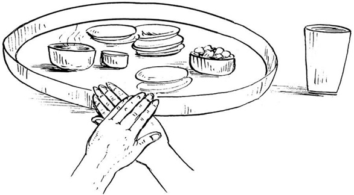
पात्रालम्भन—दाहिने अनुत्तान हाथके ऊपर बायें हाथको अनुत्तान स्वस्तिकाकार रखकर सर्वप्रथम पितावाले भोजनपात्रका स्पर्श करते हुए निम्न मन्त्र पढ़े—
ॐ पृथिवी ते पात्रं द्यौरपिधानं ब्राह्मणस्य मुखे अमृते अमृतं जुहोमि स्वाहा। इदं विष्णुर्वि चक्रमे त्रेधा नि दधे पदम्। समूढमस्य पाÞसुरे स्वाहा॥
ॐ कृष्ण कव्यमिदं रक्ष मदीयम्।
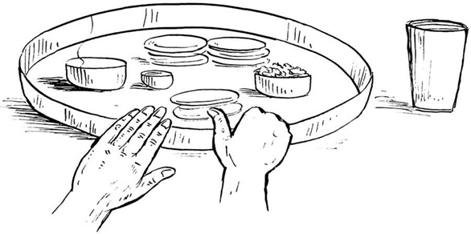
बायें हाथसे पात्रका स्पर्श किये हुए ही दाहिने हाथके अनुत्तान* अँगूठेको अन्नमें रखकर बोले—इदमन्नम्। जलमें—इमा आप:। घीमें—इदमाज्यम्। फिर अन्नको स्पर्शकर ‘इदं कव्यम्’ कहे।
* (क) उत्तानेन तु हस्तेन द्विजाङ्गुष्ठनिवेशनम्। य: करोति नरो मोहात् तद्वै रक्षांसि गच्छति॥ (धौम्य) (ख) उत्तानेन तु हस्तेन कुर्यादन्नावगाहनम्। आसुरं तद्भवेच्छ्राद्धं पितॄणां नोपतिष्ठते॥ जो अज्ञानवश उत्तान हाथसे अङ्गुष्ठनिवेशन करता है तो वह अन्न राक्षसोंको प्राप्त होता है। वह श्राद्ध आसुर-श्राद्ध हो जाता है और पितरोंको प्राप्त नहीं होता।
‘ॐ अपहता असुरा रक्षाॸसि वेदिषद:।’ मन्त्रसे तिल भोजनपात्रमें अन्नके ऊपर छींट दे।
अन्नदानका संकल्प—दाहिने हाथमें मोटक, तिल तथा जल लेकर बायें हाथसे भोजनपात्रको स्पर्श किये हुए ही संकल्प करे—
ॐ अद्य संकल्पितकार्यसंसिद्धॺर्थं ....गोत्रस्य (....गोत्राया:) ....प्रेतस्य (....प्रेताया:) क्रियमाणे सपिण्डीकरणश्राद्धे प्रेतपित्रे ....गोत्राय ....शर्मणे/वर्मणे/गुप्ताय वसुस्वरूपाय इदमन्नं सोपस्करं ते स्वधा।
ऐसा कहकर संकल्पका जल पितावाले भोजनपात्रके समीप छोड़ दे और बायाँ हाथ भोजनपात्रसे हटा ले। इसी प्रकार पितामह तथा प्रपितामहके अन्नपात्रोंपर भी आलम्भन, अंगुष्ठनिवेशन, अन्नके ऊपर तिलविकिरण तथा संकल्पकी क्रियाएँ पृथक्-पृथक् करे। संकल्पके अनन्तर बायाँ हाथ हटा ले। अन्नदानके संकल्पमें ‘प्रेतपित्रे’ के स्थानपर ‘प्रेतपितामहाय’ तथा ‘प्रेतप्रपितामहाय’ और ‘वसुस्वरूपाय’ के स्थानपर क्रमश: ‘रुद्रस्वरूपाय’ तथा ‘आदित्यस्वरूपाय’ बोले। तदनन्तर कहे—
अन्नहीनं क्रियाहीनं विधिहीनं च यद् भवेत्।
अच्छिद्रमस्तु तत्सर्वं पित्रादीनां प्रसादत:॥
पितृगायत्रीका जप—सव्य पूर्वाभिमुख होकर आचमन करे। तीन बार पितृगायत्रीका जप करे—
ॐ देवताभ्य:पितृभ्यश्च महायोगिभ्य एव च।
नम: स्वाहायै स्वधायै नित्यमेव नमो नम:॥
तदनन्तर निम्न मन्त्रका तीन बार पाठ करे—
ॐ मधु वाता ऋतायते मधु क्षरन्ति सिन्धव:। माध्वीर्न: सन्त्वोषधी:॥ मधु नक्तमुतोषसो मधुमत्पार्थिवÞ रज:। मधु द्यौरस्तु न: पिता॥ मधुमान्नो वनस्पतिर्मधुमाँ२ अस्तु सूर्य:। माध्वीर्गावो भवन्तु न:॥ ॐ मधु मधु मधु॥
वेद-शास्त्रादिका पाठ—इस अवसरपर यथासम्भव पुरुषसूक्त, अप्रतिरथमन्त्र इत्यादि श्रुति, स्मृति, पुराण और इतिहासका पाठ करे; इससे पितरोंको प्रसन्नता होती है। पैरोंके नीचे पूर्वाग्र तीन कुश रख ले। प्रेतश्राद्धमें पितृसूक्तका पाठ निषिद्ध है।
श्रुतिपाठ—
ॐ अग्निमीळे पुरोहितं यज्ञस्य देवमृत्विजम्। होतारं रत्नधातमम्॥
ॐ इषे त्वोर्जे त्वा वायव स्थ देवो व: सविता प्रार्पयतु श्रेष्ठतमाय कर्मण आप्यायध्व मघ्न्या इन्द्राय भागं प्रजावतीरनमीवा अयक्ष्मा मा व स्तेन ईशत माघशÞसो ध्रुवा अस्मिन् गोपतौ स्यात बह्वीर्यजमानस्य पशून् पाहि॥
ॐ अग्न आ याहि वीतये गृणानो हव्यदातये। नि होता सत्सि बर्हिषि॥
ॐ शं नो देवीरभिष्टय आपो भवन्तु पीतये। शं योरभि स्रवन्तु न:॥
स्मृतिपाठ—
मनुमेकाग्रमासीनमभिगम्य महर्षय:।
प्रतिपूज्य यथान्यायमिदं वचनमब्रुवन्॥
योगीश्वरं याज्ञवल्क्यं सम्पूज्य मुनयोऽब्रुवन्।
वर्णाश्रमेतराणां नो ब्रूहि धर्मानशेषत:॥
मन्वत्रिविष्णुहारीतयाज्ञवल्क्योशनोऽङ्गिरा:।
यमापस्तम्बसंवर्ता: कात्यायनबृहस्पती॥
पराशरव्यासशङ्खलिखिता दक्षगौतमौ।
शातातपो वसिष्ठश्च धर्मशास्त्रप्रयोजका:॥
पुराण—
नारायणं नमस्कृत्य नरं चैव नरोत्तमम्।
देवीं सरस्वतीं व्यासं ततो जयमुदीरयेत्॥
सप्त व्याधा दशार्णेषु मृगा: कालञ्जरे गिरौ।
चक्रवाका: शरद्वीपे हंसा: सरसि मानसे॥
तेऽभिजाता कुरुक्षेत्रे ब्राह्मणा वेदपारगा:।
प्रस्थिता दीर्घमध्वानं यूयं किमवसीदथ॥
इतिहास—
दुर्योधनो मन्युमयो महाद्रुम:
स्कन्ध: कर्ण: शकुनिस्तस्य शाखा:।
दु:शासन: पुष्पफले समृद्धे
मूलं राजा धृतराष्ट्रोऽमनीषी॥
युधिष्ठिरो धर्ममयो महाद्रुम:
स्कन्धोऽर्जुनो भीमसेनोऽस्य शाखा:।
माद्रीसुतौ पुष्पफले समृद्धे
मूलं कृष्णो ब्रह्म च ब्राह्मणाश्च॥
विकिरदान—अपसव्य दक्षिणाभिमुख होकर पितरोंके आसनके दक्षिण दिशा*की भूमिको जलसे सींचकर कुश बिछा दे।
* आभ्युदयिके तु पूर्वे नैर्ऋत्ये पार्वणे तथा।
अग्निकोणे क्षयाहे स्यात् प्रेतश्राद्धे च दक्षिणे।
कुशोंके ऊपर निम्न मन्त्र पढ़ते हुए पितृतीर्थसे अन्न रख दे—
असंस्कृतप्रमीतानां त्यागिनां कुलभागिनाम्।
उच्छिष्टभागधेयानां दर्भेषु विकिरासनम्॥
अग्निदग्धाश्च ये जीवा येऽप्यदग्धा: कुले मम।
भूमौ दत्तेन तृप्यन्तु तृप्ता यान्तु परां गतिम्॥
विकिरदानके अनन्तर मोटक तथा पवित्रकका वहीं परित्याग कर दे। हाथ-पैर धोकर, सव्य पूर्वाभिमुख होकर आचमन करके हरिस्मरण कर ले। तदनन्तर प्रेतमण्डलके पास आ जाय।
वेदीनिर्माण—अपसव्य दक्षिणाभिमुख होकर बैठ जाय। पिण्डदानके लिये बालूकी एक वेदी बनाये और निम्न मन्त्रद्वारा जलसे उसे सींच दे—
ॐ अयोध्या मथुरा माया काशी काञ्ची ह्यवन्तिका।
पुरी द्वारावती ज्ञेया: सप्तैता मोक्षदायिका:॥
अवनेजनपात्र-निर्माण—एक दोनियेमें तिल, जल, चन्दन, पुष्प रखकर अवनेजनपात्र बनाये, तदनन्तर उस दोनियेको तथा त्रिकुश, तिल, जलको दाहिने हाथमें लेकर निम्न संकल्प करे—
अवनेजनदानका संकल्प—ॐ अद्य ....गोत्र (....गोत्रे) ....प्रेत (....प्रेते) सपिण्डीकरणश्राद्धे पिण्डस्थाने अत्रावनेनिक्ष्व ते मया दीयते, तवोपतिष्ठताम्।
—ऐसा बोलकर पितृतीर्थसे वेदीके मध्यभागमें अवनेजनका आधा जल गिरा दे और अवनेजनपात्र (दोनिये)-को वेदीके समीप अपनी दायीं ओर सुरक्षित रख दे।
कुशास्तरण—समूल तीन कुशोंको एक साथ जड़सहित दो भागोंमें एक ही बारमें विभक्त करके वेदीपर दक्षिणाग्र बिछा दे।
पिण्डनिर्माण तथा प्रेतपिण्डदान—मधु, घृत तथा तिल मिलाकर नारियलकी तरह एक लम्बा पिण्ड बनाकर पत्तलपर रख ले। बायाँ घुटना जमीनमें टिकाकर त्रिकुश, तिल, जल और पिण्ड दायें हाथमें लेकर संकल्प करे—
पिण्डदानका संकल्प—ॐ अद्य ....गोत्र (....गोत्रे) ....प्रेत (....प्रेते) सपिण्डीकरणश्राद्धे एष पिण्डस्ते मया दीयते, तवोपतिष्ठताम्।
—कहकर पितृतीर्थसे वेदीके मध्य कुशोंपर पिण्ड रख दे।
प्रत्यवनेजनदानका संकल्प—दायें हाथमें त्रिकुश, तिल, जल तथा सजल अवनेजनपात्र लेकर प्रत्यवनेजनदानका संकल्प करे—
ॐ अद्य ....गोत्र (....गोत्रे) ....प्रेत (....प्रेते) सपिण्डीकरणश्राद्धे पिण्डोपरि प्रत्यवनेनिक्ष्व ते मया दीयते, तवोपतिष्ठताम्।
—बोलकर पिण्डपर प्रत्यवनेजनजल गिरा दे।
पिण्डपूजन—पिण्डपर सूत, आचमन, गन्ध, तिल, अक्षत, पुष्प, धूप, दीप, नैवेद्य, आचमन, फल तथा द्रव्यदक्षिणा चढ़ाकर दायें हाथमें त्रिकुश, तिल, जल लेकर अर्चनदानका संकल्प करे—
अर्चनदानका संकल्प—ॐ अद्य ....गोत्र (....गोत्रे) ....प्रेत (....प्रेते) सपिण्डीकरणश्राद्धे प्रेतपिण्डोपरि एतान्यर्चनानि ते मया दीयन्ते, तवोपतिष्ठन्ताम्।
—कहकर जल छोड़ दे। हाथकी पवित्री यहाँ उतार दे। हाथ-पैर धो ले।
पितृमण्डलमें जाना
वेदीनिर्माण—पितृमण्डलमें अपने आसनपर अपसव्य दक्षिणाभिमुख हो बैठ जाय। यहाँकी पवित्री धारण कर ले। तदनन्तर भोजनपात्रोंके समक्ष मध्यमें बालू या मिट्टीसे दक्षिणकी ओर ढालवाली एक वेदी बनाये। वेदी चार अंगुल ऊँची, एक हाथ लम्बी-चौड़ी एवं उत्तर-दक्षिण फैलाववाली हो। गोबर और पानीसे वेदीको लीप दे। निम्न मन्त्र पढ़कर उसे जलसे सींच दे—
ॐ अयोध्या मथुरा माया काशी काञ्ची ह्यवन्तिका।
पुरी द्वारावती ज्ञेया: सप्तैता मोक्षदायिका:॥
रेखाकरण—दायें हाथसे तीनों कुशोंकी जड़ तथा बायें हाथकी तर्जनी एवं अंगुष्ठसे कुशोंके अग्रभागको पकड़कर कुशोंके मूलभागसे उत्तरसे दक्षिणकी ओर निम्न मन्त्र पढ़ते हुए तीन रेखाएँ खींचे—
ॐ अपहता असुरा रक्षाॸसि वेदिषद:।
उन कुशोंको ईशानकोणमें फेंक दे।
उल्मुकस्थापन—निम्न मन्त्र पढ़कर जली हुई गोहरीके उल्मुकको* वेदीके वामावर्त घुमाकर वेदीके दक्षिणकी ओर श्राद्धपर्यन्त सुरक्षित रख दे—
ॐ ये रूपाणि प्रतिमुञ्चमाना असुरा: सन्त: स्वधया चरन्ति।
परापुरो निपुरो ये भरन्त्यग्निष्टाँल्लोकात्प्रणुदात्यस्मात्॥
* यदि अग्निकी व्यवस्था न हो तो ज्वालामुखी धूपसे ही अंगार-भ्रामणकी प्रक्रिया पूरी की जा सकती है।
अवनेजनपात्र-स्थापन—पिण्डाधार वेदीकी पश्चिम दिशामें उत्तर-दक्षिण क्रमसे तीन अवनेजनपात्र (दोनिये) रख दे। तीनोंमें तिल, जल, गन्ध तथा पुष्प छोड़ दे।
(क) प्रेतके पिताके लिये अवनेजनदान—दाहिने हाथमें पहला (उत्तरवाला) अवनेजनपात्र रखकर तथा मोटक, तिल, जल लेकर निम्न संकल्प पढ़े—
संकल्प—ॐ अद्य ....गोत्रस्य (....गोत्राया:) ....प्रेतस्य (....प्रेताया:) सपिण्डीकरणश्राद्धे ....गोत्र प्रेतपित: ....शर्मन्/वर्मन्/गुप्त वसुस्वरूप पिण्डस्थाने अत्रावनेनिक्ष्व ते नम:।
—कहकर आधा जल पितृतीर्थसे वेदीमें उत्तरकी ओर खींची प्रथम रेखापर छोड़ दे। अवनेजनपात्रको पूर्वस्थानपर रख दे।
(ख) प्रेतपितामहको अवनेजनदान—पूर्ववत् दूसरी दोनिया तथा मोटक, तिल, जल लेकर संकल्प करे—
संकल्प—ॐ अद्य ....गोत्रस्य (....गोत्राया:) ....प्रेतस्य (....प्रेताया:) सपिण्डीकरणश्राद्धे ....गोत्र प्रेतपितामह ....शर्मन्/वर्मन्/गुप्त रुद्रस्वरूप पिण्डस्थाने अत्रावनेनिक्ष्व ते नम:।
—कहकर वेदीकी मध्य रेखापर आधा जल गिरा दे और दोनियेको अपने स्थानपर रख दे।
(ग) प्रेतप्रपितामहको अवनेजनदान—पूर्ववत् तीसरा अवनेजनपात्र तथा मोटक, तिल, जल लेकर संकल्प करे—
संकल्प—ॐ अद्य ....गोत्रस्य (....गोत्राया:) ....प्रेतस्य (....प्रेताया:) सपिण्डीकरणश्राद्धे ....गोत्र प्रेतप्रपितामह ....शर्मन्/वर्मन्/गुप्त आदित्यस्वरूप पिण्डस्थाने अत्रावनेनिक्ष्व ते नम:।
—कहकर दक्षिण रेखापर आधा जल गिरा दे और दोनियेको यथास्थान रख दे।
कुशास्तरण*—समूल तीन कुशोंको एक साथ जड़सहित दो भागोंमें एक ही बारमें विभक्त करके वेदीपर बिछा दे।
* दर्भग्रहणमिहोपमूलसकृदाच्छिन्नोपलक्षणार्थम्। (पा०गृ०सू०श्राद्धसूत्र कण्डिका ३ में दर्भेषुपर कर्काचार्यजीका भाष्य)
पिण्डनिर्माण—बने हुए पाकमें तिल, घृत, मधु मिलाकर पिता, पितामह तथा प्रपितामहके निमित्त तीन पिण्ड बनाकर पत्तलपर रख ले।
(क) प्रेतपिताको पिण्डदान—गंगा, गया, कुरुक्षेत्रका स्मरण कर श्राद्धकर्ता बायाँ घुटना जमीनपर टिकाकर दायें हाथमें मोटक, तिल, जल तथा एक पिण्ड लेकर प्रेतपिताका ध्यान कर पिण्डदानके लिये निम्न संकल्प बोले—
संकल्प—ॐ अद्य ....गोत्रस्य (....गोत्राया:) ....प्रेतस्य (....प्रेताया:) सपिण्डीकरणश्राद्धे ....गोत्र प्रेतपित: वसुस्वरूप एषोऽन्नपिण्डोऽमृतस्वरूपस्ते स्वधा—बोलकर पिण्डको वेदीपर बिछे हुए कुशोंके मूलभागपर (प्रथम अवनेजनस्थानपर) दोनों हाथोंसे सँभालकर पितृतीर्थसे रख दे।
(ख) प्रेतपितामहको पिण्डदान—पूर्वकी भाँति दाहिने हाथमें मोटक, तिल, जल तथा दूसरा पिण्ड लेकर संकल्प करे—
संकल्प—ॐ अद्य ....गोत्रस्य (....गोत्राया:) ....प्रेतस्य (....प्रेताया:) सपिण्डीकरणश्राद्धे ....गोत्र प्रेतपितामह रुद्रस्वरूप एषोऽन्नपिण्डोऽमृतस्वरूपस्ते स्वधा—बोलकर पिण्डको वेदीपर कुशोंके मध्यभागपर (द्वितीय अवनेजनस्थानपर) रख दे।
(ग) प्रेतप्रपितामहको पिण्डदान—पूर्वकी भाँति तीसरा पिण्ड लेकर संकल्प करे—
संकल्प—ॐ अद्य ....गोत्रस्य (....गोत्राया:) ....प्रेतस्य (....प्रेताया:) सपिण्डीकरणश्राद्धे ....गोत्र प्रेतप्रपितामह आदित्यस्वरूप एषोऽन्नपिण्डोऽमृतस्वरूपस्ते स्वधा—बोलकर पिण्डवेदीपर कुशोंके अग्रभागपर (तृतीय अवनेजनस्थानपर) पिण्ड रख दे।
लेपभाग*—लेपभागभुक् पितरोंके लिये कुशाके अग्रभागपर पिण्डसे बचे हुए अन्नको ‘लेपभागभुज: पितरस्तृप्यन्ताम्’ कहकर रख दे और पिण्डाधार-कुशोंके मूलभागमें तीन बार हाथ पोंछ ले।
* दत्ते पिण्डे ततो हस्तं त्रिर्मृज्याल्लेपभागिनाम्।
कुशाग्रे सम्प्रदातव्यं प्रीयन्तां लेपभागिन:॥
(याज्ञवल्क्य)
(लेपभाग कर्म अलग है और कुशमूलमें हाथ पोंछनेकी क्रिया अलग है।)
उत्तरे कुशमूलं तु पितृमूलं तु दक्षिणे।
कुशमूलेषु यो दद्यान्निराशा: पितरो गता:॥
(पा०गृ० षड्भाष्योपेत श्राद्धसूत्रकण्डिका ३)
सव्य होकर आचमन करे। हरिस्मरण कर ले।
श्वासनियमन—अपसव्य दक्षिणाभिमुख होकर आसनपर बैठे हुए ही श्वास खींचते हुए बायीं ओरसे उत्तराभिमुख हो निम्न मन्त्र पढ़े—
अत्र पितरो मादयध्वं यथाभागमावृषायध्वम्।
श्वास रोककर उसी क्रमसे दक्षिणाभिमुख होकर भास्वरमूर्ति (तेज:पुंजस्वरूप) पितरोंका ध्यान करते हुए पिण्डके पास श्वास छोड़े और अमीमदन्त पितरो यथाभागमावृषायिषत यह मन्त्र पढ़े।
यह कार्य तीन बार करे। (तीनों पिण्डोंपर अलग-अलग करे।)
प्रत्यवनेजनदान
पूर्वमें रखे हुए तीन अवनेजनपात्रों (दोनियों)-में जल न हो तो जल छोड़ ले।
(क) प्रेतके पिताके पिण्डपर—दाहिने हाथमें प्रत्यवनेजनपात्र तथा मोटक, तिल, जल लेकर निम्न संकल्प करे—
संकल्प—ॐ अद्य ....गोत्रस्य (....गोत्राया:) ....प्रेतस्य (....प्रेताया:) सपिण्डीकरणश्राद्धे प्रेतपित: ....शर्मन्/वर्मन्/गुप्त वसुस्वरूप पिण्डोपरि प्रत्यवनेनिक्ष्व ते नम:।
—बोलकर प्रेतके पिताके पिण्डपर प्रत्यवनेजनजल गिरा दे और पात्रको जहाँसे उठाया था वहीं रख दे।
(ख) प्रेतके पितामहके पिण्डपर—पूर्ववत् दाहिने हाथमें प्रत्यवनेजनपात्र तथा मोटक, तिल, जल लेकर संकल्प करे—
संकल्प—ॐ अद्य ....गोत्रस्य (....गोत्राया:) ....प्रेतस्य (....प्रेताया:) सपिण्डीकरणश्राद्धे प्रेतपितामह ....शर्मन्/वर्मन्/गुप्त रुद्रस्वरूप पिण्डोपरि प्रत्यवनेनिक्ष्व ते नम:।
—बोलकर प्रेतके पितामहके पिण्डपर जल गिरा दे और दोनिया यथास्थान रख ले।
(ग) प्रेतके प्रपितामहके पिण्डपर—पूर्ववत् हाथमें दोनिया आदि लेकर संकल्प करे—
संकल्प—ॐ अद्य ....गोत्रस्य (....गोत्राया:) ....प्रेतस्य (....प्रेताया:) सपिण्डीकरणश्राद्धे प्रेतप्रपितामह ....शर्मन्/वर्मन्/गुप्त आदित्यस्वरूप पिण्डोपरि प्रत्यवनेनिक्ष्व ते नम:।
—बोलकर प्रेतके प्रपितामहके पिण्डपर जल छोड़ दे। दोनिया यथावत् रख ले।
नीवीविसर्जन—नीवी निकालकर ईशानकोणकी ओर फेंक दे। सव्य पूर्वाभिमुख होकर आचमन करे तथा भगवान्का स्मरण करे।
तदनन्तर अपसव्य दक्षिणाभिमुख होकर सूत्रदान करे—
सूत्रदान—बायें हाथसे सूत्र (कच्चा धागा) पकड़कर दाहिने हाथमें लेकर निम्न मन्त्र पढ़े—
ॐ नमो व: पितरो रसाय नमो व: पितर: शोषाय नमो व: पितरो जीवाय नमो व: पितर: स्वधायै नमो व: पितरो घोराय नमो व: पितरो मन्यवे नमो व: पितर: पितरो नमो वो गृहान्न: पितरो दत्त सतो व: पितरो देष्म। और ‘एतद्व: पितरो वास:॥’ कहकर सभी पिण्डोंपर पृथक्-पृथक् सूत्र चढ़ाये।
सूत्रदानका संकल्प—तदनन्तर मोटक, जल, तिल हाथमें लेकर सूत्रदानका संकल्प करे—
ॐ अद्य ....गोत्र ....प्रेतपित: शर्मन्/वर्मन्/गुप्त सपिण्डीकरणश्राद्धपिण्डे एतत्ते वास: स्वधा। ऐसा कहकर प्रेतपिताके पिण्डपर संकल्पजल छोड़े। इसी प्रकार प्रेतपितामहादि सभीके पिण्डोंपर भी सूत्रदान करके पृथक्-पृथक् सूत्रदानका संकल्प करे। ‘प्रेतपित:’ के स्थानपर ‘प्रेतपितामह’ तथा ‘प्रेतप्रपितामह’ बोले।
पिण्डपूजन—तदनन्तर जल, गन्ध, पुष्प, धूप, दीप, नैवेद्य, आचमन, फल, पान आदि उपचारोंको चढ़ाकर मोटक, जल, तिल लेकर अर्चनदानका संकल्प करे—
पूजनदानका संकल्प—ॐ अद्य ....गोत्रस्य (....गोत्राया:) ....प्रेतस्य (....प्रेताया:) सपिण्डीकरणश्राद्धे प्रेतपितृपितामहप्रपितामहा: ....गोत्रा: ....शर्माण:/वर्माण:/गुप्ता: वसुरुद्रादित्यस्वरूपा: पिण्डोपरि एतान्यर्चनानि युष्मभ्यं स्वधा।
—कहकर संकल्पजल छोड़ दे।
षड्ऋतुनमस्कार—ऋतुस्वरूप पितरोंको निम्न मन्त्रोंसे नमस्कार करे—
ॐ वसन्ताय नम:। ॐ ग्रीष्माय नम:। ॐ वर्षायै नम:। ॐ शरदे नम:। ॐ हेमन्ताय नम:। ॐ शिशिराय नम:।
यहाँकी पवित्री यहीं उतार दे।
पिण्ड-छेदन
प्रेतमण्डलमें आना—अपने आसनसे उठकर पितृमण्डल तथा विश्वेदेवमण्डलकी परिक्रमा करते हुए प्रेतमण्डलमें अपने आसनपर अपसव्य दक्षिणाभिमुख होकर बैठ जाय, यहाँकी पवित्री धारण कर ले। प्रेतके लिये प्रदत्त पिण्डके ऊपर चढ़ी हुई सभी वस्तुओंको अलग कर ले और प्रेतके पिण्डको एक पत्तलपर उत्तर-दक्षिण लम्बाईमें रख दे।
इसके बाद चाँदीके तारको मोड़कर अथवा बड़े कुशका दो भाग करके उसे दोनों हाथोंसे पकड़कर प्रेतपिण्डके ऊपर रखकर दबा दे। इस तरह प्रेतपिण्डके तीन समान भाग कर दे। पिण्डका छेदन करते समय निम्न मन्त्रोंको बोले—
ये समाना: समनस: पितरो यमराज्ये।
तेषाँल्लोक: स्वधा नमो यज्ञो देवेषु कल्पताम्॥
ये समाना: समनसो जीवा जीवेषु मामका:।
तेषाÞ श्रीर्मयि कल्पतामस्मिँल्लोके शतÞ समा:॥
इस समय ज्योतिर्मयस्वरूपमें प्रेतका ध्यान करे।
पिण्डमेलन
पितृमण्डलमें जाना—प्रेतमण्डलसे पत्तलसहित प्रेतपिण्डके तीनों भाग लेकर उठ जाय तथा पितृमण्डलमें जाकर अपने आसनपर अपसव्य दक्षिणाभिमुख बैठ जाय। पिता, पितामह तथा प्रपितामहके पिण्डोंसे पुष्प आदि हटा ले। तदनन्तर प्रेतके पिताके पिण्डको बायें हाथमें लेकर दायें हाथके अँगूठेसे उसमें बड़ा-सा छिद्र बनाये और प्रेतपिण्डके उत्तरवाला भाग लेकर पिताके पिण्डके छिद्रमें निम्न दो मन्त्र—
ये समाना: समनस: पितरो यमराज्ये।
तेषाँल्लोक: स्वधा नमो यज्ञो देवेषु कल्पताम्॥
ये समाना: समनसो जीवा जीवेषु मामका:।
तेषाÞ श्रीर्मयि कल्पतामस्मिँल्लोके शतÞ समा:॥
पढ़ते हुए अच्छी तरह मिलाकर गोल पिण्ड-जैसा बना ले तथा जहाँसे पिताका पिण्ड उठाया था, उसी स्थानपर रख दे। इसी प्रकार प्रेतपिण्डके दूसरे भागको लेकर निम्न दो मन्त्र—
ये समाना: समनस: पितरो यमराज्ये।
तेषाँल्लोक: स्वधा नमो यज्ञो देवेषु कल्पताम्॥
ये समाना: समनसो जीवा जीवेषु मामका:।
तेषाÞ श्रीर्मयि कल्पतामस्मिँल्लोके शतÞ समा:॥
पढ़ते हुए प्रेतपितामहके पिण्डके छिद्रमें मिलाये तथा पिण्डको पहलेवाले स्थानपर रख दे।
ऐसे ही प्रेतपिण्डके तीसरे भागको लेकर निम्न दो मन्त्र—
ये समाना: समनस: पितरो यमराज्ये।
तेषाँल्लोक: स्वधा नमो यज्ञो देवेषु कल्पताम्॥
ये समाना: समनसो जीवा जीवेषु मामका:।
तेषाÞ श्रीर्मयि कल्पतामस्मिँल्लोके शतÞ समा:॥
पढ़ते हुए प्रेतप्रपितामहके पिण्डके छिद्रमें मिलाये तथा पिण्डको पूर्ववाले स्थानपर रख दे। पिण्डोंको उत्तर-दक्षिण क्रमसे पूर्ववत् रखे।
पिण्डपूजन
सूत्र आदि विविध उपचारोंसे निम्नलिखित मन्त्रोंके द्वारा पिण्डपूजन करे—
इदं सूत्रात्मकं वास:, इदमाचमनीयम्, एष गन्ध:, इमे तिलाक्षता:, इदं पुष्पम्, एष दीप: (हस्तप्रक्षालनम्), इदं नैवेद्यम्, इदमाचमनीयम्, इदं फलम्, इदमाचमनीयम्, इदं ताम्बूलम्, इयं परिक्रमा, अयं पुष्पांजलि:, पूजासाद्गुण्यार्थे इदं दक्षिणाद्रव्यम्।
—कहते हुए उपचारोंको तीनों पिण्डोंपर पृथक्-पृथक् चढ़ाये और निम्न रीतिसे अर्चनदानका संकल्प करे—
अर्चनदानका संकल्प—ॐ अद्य ....गोत्रस्य (....गोत्राया:) ....प्रेतस्य (....प्रेताया:) सपिण्डीकरणश्राद्धे प्रेतपितृपितामहप्रपितामहा: ....शर्माण:/वर्माण:/गुप्ता: पिण्डेषु एतान्यर्चनानि युष्मभ्यं स्वधा। संकल्पका जल छोड़ दे। पवित्री भी उतार दे। सव्य पूर्वाभिमुख होकर आचमनकर हरिस्मरण कर ले।
अक्षय्योदकदान
विश्वेदेवमण्डलमें आना—पितृमण्डलसे पितरोंकी परिक्रमा करते हुए अपने आसनपर उत्तराभिमुख बैठ जाय। यहाँकी पवित्री पहन ले।
‘ॐ शिवा आप: सन्तु’ कहकर भोजनपात्रपर जल छोड़े। ‘ॐ सौमनस्यमस्तु’ कहकर पुष्प छोड़े। ‘ॐ अक्षतं चारिष्टं चास्तु’ कहकर जौ छोड़े।
तदनन्तर हाथमें त्रिकुश, जौ, जल लेकर संकल्प करे—
संकल्प—ॐ अद्य ....गोत्रस्य ....शर्मण:/वर्मण:/गुप्तस्य* सपिण्डीकरणश्राद्धे तदीयपितृपितामहप्रपितामहानां ....शर्मणां/वर्मणां/गुप्तानां वसुरुद्रादित्यस्वरूपाणां सपिण्डीकरणश्राद्धसम्बन्धिनां कामकालसंज्ञकानां विश्वेषां देवानां दत्तैतदन्नपानादिकमक्षय्यमस्तु।
* (क) अत ऊर्ध्वं प्रेतशब्दो नोच्चार्योऽक्षय्यादिषु।
(पारस्करगृह्यसूत्र, श्राद्धसूत्रकण्डिका ५, गदाधरभाष्य)
इसके बाद (पिण्डमेलनके अनन्तर) अक्षय्योदकदान आदिमें प्रेतशब्दका उच्चारण नहीं करना चाहिये।
(ख) सपिण्डीकरणादर्वाक् प्रेतशब्देन तं वदेत्।
तदूर्ध्वं पितृशब्देन शर्मशब्देन निर्दिशेत्॥
(श्राद्धकाशिका, सपिण्डीकरण, पृ० ४८२)
सपिण्डीकरण अर्थात् पिण्डमेलनसे पहले मृतव्यक्तिके लिये प्रेतशब्दका प्रयोग करना चाहिये और इसके पश्चात् पितृशब्दका तथा शर्मा/वर्मा/गुप्त शब्दोंका प्रयोग करना चाहिये। (ग) प्रेतशब्दं प्रयुञ्जीत यावत् पिण्डं न मेलितम्। तत: प्रभृति वै प्रेत:
पितृसाम्यं समश्नुते॥ विन्दते पितृलोकं च तत: श्राद्धं प्रवर्तते।
(हारीतस्मृति)
—बोलकर संकल्पका जल आदि भोजनपात्रके पास छोड़ दे। यहाँकी पवित्री यहीं छोड़ दे।
पितृमण्डलमें आना—विश्वेदेवमण्डलसे पितृमण्डलमें आकर अपसव्य दक्षिणाभिमुख अपने आसनपर बैठ जाय और पिता, पितामह तथा प्रपितामह—तीनोंके भोजनपात्रोंपर—
ॐ शिवा आप: सन्तु—कहकर जल छोड़े।
ॐ सौमनस्यमस्तु—कहकर पुष्प छोड़े।
ॐ अक्षतं चारिष्टं चास्तु—कहकर अक्षत छोड़े।
तदनन्तर अक्षय्योदक दानका संकल्प करे—
पिताके लिये—ॐ अद्य ....गोत्रस्य ....शर्मण:/वर्मण:/गुप्तस्य सपिण्डीकरणश्राद्धे तदीयपितु: ....शर्मण:/वर्मण:/गुप्तस्य वसुस्वरूपस्य दत्तैतदन्नपानादिकमक्षय्यमस्तु।
—कहकर संकल्पजल पिताके भोजनपात्रके पास छोड़ दे।
पितामहके लिये—ॐ अद्य ....गोत्रस्य ....शर्मण:/वर्मण:/गुप्तस्य सपिण्डीकरणश्राद्धे तदीयपितामहस्य ....शर्मण:/वर्मण:/गुप्तस्य रुद्रस्वरूपस्य दत्तैतदन्नपानादिकमक्षय्यमस्तु।
—कहकर संकल्पजल पितामहके भोजनपात्रके पास छोड़ दे।
प्रपितामहके लिये—ॐ अद्य ....गोत्रस्य ....शर्मण:/वर्मण:/गुप्तस्य सपिण्डीकरणश्राद्धे तदीयप्रपितामहस्य ....शर्मण:/वर्मण:/गुप्तस्य आदित्यस्वरूपस्य दत्तैतदन्नपानादिकमक्षय्यमस्तु।
—कहकर संकल्पजल प्रपितामहके भोजनपात्रके पास छोड़ दे।
जलधारादान—सव्य होकर दक्षिण दिशाकी ओर देखता हुआ पिण्डोंपर निम्न मन्त्रसे पूर्वाग्रजलधारा दे—
‘ॐ अघोरा: पितर: सन्तु।’
आशीष-प्रार्थना—यजमान पूर्वाभिमुख हो पितरोंसे प्रार्थना करे—
ॐ गोत्रं नो वर्द्धतां दातारो नोऽभिवर्द्धन्ताम्। वेदा: सन्ततिरेव च। श्रद्धा च नो मा व्यगमद् बहुदेयं च नोऽस्तु। अन्नं च नो बहु भवेदतिथींश्च लभेमहि। याचितारश्च न: सन्तु मा च याचिष्म कञ्चन। एता: सत्या आशिष: सन्तु॥
ब्राह्मणवाक्य—सन्त्वेता: सत्या आशिष:।
पिण्डोंपर जलधारा या दुग्धधारा—तदनन्तर अपसव्य दक्षिणाभिमुख होकर पिण्डोंपर दक्षिणाग्र सपवित्र तीन कुशोंको रखकर निम्न मन्त्रसे दक्षिणाग्र जलधारा या दुग्धधारा दे—
ॐ ऊर्जं वहन्तीरमृतं घृतं पय: कीलालं परिस्रुतम्।
स्वधा स्थ तर्पयत मे पितॄन्॥
पिण्डाघ्राण—नम्र होकर पिण्डोंको सूँघकर उठा ले और किसी पात्रमें रख दे।
पितरोंके पिण्डोंके नीचेवाले तीन कुशों तथा उल्मुक (पूर्वमें रखे गये अंगार)-को किसी दूसरी आगमें डाल दे। यहाँकी पवित्री यहीं छोड़ दे।
अर्घपात्रसंचालन—पितृमण्डलकी परिक्रमा करते हुए विश्वेदेवमण्डलमें आ जाय। सव्य उत्तराभिमुख हो यहाँकी पवित्री धारण कर ले। तदनन्तर विश्वेदेवके अर्घपात्रको हिला दे, फिर हाथमें त्रिकुश, जल, अक्षत, स्वर्ण अथवा निष्क्रय-द्रव्य लेकर दक्षिणासंकल्प करे—
विश्वेदेवदक्षिणासंकल्प—ॐ अद्य ....गोत्र: ....शर्मा/वर्मा/गुप्तोऽहम् ....गोत्रस्य ....शर्मण:/वर्मण:/गुप्तस्य सपिण्डीकरणश्राद्धे तदीयपितृपितामहप्रपितामहानां ....शर्मणां/वर्मणां/गुप्तानां वसुरुद्रादित्य-स्वरूपाणां सपिण्डीकरणश्राद्धसम्बन्धिनां कामकालसंज्ञकानां विश्वेषां देवानां श्राद्धप्रतिष्ठार्थं सुवर्णदक्षिणां (तन्निष्क्रयद्रव्यं) ....गोत्राय ....शर्मणे ब्राह्मणाय भवते सम्प्रददे।
हाथका जल तथा दक्षिणा उपस्थित ब्राह्मणको दे दे।
तदनन्तर यहाँकी पवित्री उतार दे और पूर्वप्रेतके मण्डलमें आ जाय।
पूर्वप्रेतश्राद्धके दक्षिणादानका संकल्प—पूर्वप्रेतके मण्डलमें अपने आसनपर आकर यहाँकी पवित्री धारण कर ले और अपसव्य दक्षिणाभिमुख होकर पूर्वप्रेतके अर्घपात्रको हिला दे। तदनन्तर सव्य पूर्वाभिमुख होकर हाथमें त्रिकुश, तिल, जल तथा रजत अथवा निष्क्रय-द्रव्य लेकर दक्षिणादानका संकल्प करे—
ॐ अद्य ....गोत्र: ....शर्मा/वर्मा/गुप्तोऽहम् ....गोत्रस्य ....शर्मण:/वर्मण:/गुप्तस्य सपिण्डीकरणश्राद्धे पूर्वप्रेतश्राद्धप्रतिष्ठार्थं रजतदक्षिणां (तन्निष्क्रयद्रव्यं) ....गोत्राय ....शर्मणे ब्राह्मणाय भवते सम्प्रददे। कहकर दे दे। (बादमें देना हो तो ‘दातुमहमुत्सृज्ये’ बोलकर रख दे।)
यहाँकी पवित्री उतार दे और पितृमण्डलमें आ जाय।
पितृमण्डलमें आना—पूर्वप्रेतके मण्डलसे पितृमण्डलमें आकर अपसव्य और दक्षिणाभिमुख हो अपने आसनपर बैठकर यहाँकी पवित्री धारण कर ले। सर्वप्रथम पिता, पितामह तथा प्रपितामहके संयुक्त तीन अर्घपात्रोंको उत्तान (सीधा) कर दे। सव्य पूर्वाभिमुख हो जाय और हाथमें त्रिकुश, तिल, जल तथा रजतदक्षिणा अथवा निष्क्रय-द्रव्य लेकर दक्षिणादानका संकल्प करे—
संकल्प—ॐ अद्य ....गोत्र: ....शर्मा/वर्मा/गुप्तोऽहम् ....गोत्रस्य ....शर्मण:/वर्मण:/गुप्तस्य सपिण्डीकरणश्राद्धे तदीयपितृपितामहप्रपितामहानां ....गोत्राणां ....शर्मणां/वर्मणां/गुप्तानां वसुरुद्रादित्यस्वरूपाणां सपिण्डीकरणश्राद्धप्रतिष्ठार्थमेतानि रजतखण्डानि (तन्निष्क्रयद्रव्यं) ....गोत्राय .....शर्मणे ब्राह्मणाय भवते सम्प्रददे। कहकर हाथका जल उपस्थित ब्राह्मणको दे दे अथवा निमन्त्रित ब्राह्मणोंको विभाजित कर देना हो तो ‘विभज्य दातुमहमुत्सृज्ये’ कहकर रख दे। भोजनके अन्तमें दे।
पितृविसर्जन—अपसव्य दक्षिणाभिमुख होकर निम्न मन्त्र पढ़ते हुए पित्रादिके आसनपर तिल छींटते हुए पितरोंका विसर्जन करे—
ॐ वाजे वाजेऽवत वाजिनो नो धनेषु विप्रा अमृता ऋतज्ञा:।
अस्य मध्व: पिबत मादयध्वं तृप्ता यात पथिभिर्देवयानै:॥
देवविसर्जन—विश्वेदेवमण्डलमें आकर सव्य उत्तराभिमुख हो जाय और ‘विश्वेदेवा: प्रीयन्ताम्’ बोलकर विश्वेदेवके आसनपर जौ छींटते हुए उनका विसर्जन करे।
पितृगायत्रीका पाठ—विश्वेदेवोंकी परिक्रमा करते हुए पितृमण्डलमें आ जाय, सव्य पूर्वाभिमुख हो आचमन करके निम्न पितृगायत्रीमन्त्रका तीन बार पाठ करे—
ॐ देवताभ्य: पितृभ्यश्च महायोगिभ्य एव च।
नम: स्वाहायै स्वधायै नित्यमेव नमो नम:॥
रक्षादीपनिर्वापण—अपसव्य दक्षिणाभिमुख होकर प्याली आदि रखकर एक बारमें रक्षादीप बुझा दे।
प्रार्थना—हाथ-पैर धोकर सव्य पूर्वाभिमुख हो जाय और भगवान्से प्रार्थना करे—
प्रमादात् कुर्वतां कर्म प्रच्यवेताध्वरेषु यत्।
स्मरणादेव तद्विष्णो: सम्पूर्णं स्यादिति श्रुति:॥
यस्य स्मृत्या च नामोक्त्या तपोयज्ञक्रियादिषु।
न्यूनं सम्पूर्णतां याति सद्यो वन्दे तमच्युतम्॥
यत्पादपङ्कजस्मरणाद् यस्य नामजपादपि।
न्यूनं कर्म भवेत् पूर्णं तं वन्दे साम्बमीश्वरम्॥
ॐ विष्णवे नम:। ॐ विष्णवे नम:। ॐ विष्णवे नम:।
ॐ साम्बसदाशिवाय नम:। ॐ साम्बसदाशिवाय नम:। ॐ साम्बसदाशिवाय नम:।
प्रार्थनाके अनन्तर श्राद्धीय वस्तुएँ ब्राह्मणको दे दे अथवा जलमें डाल दे।
॥ सपिण्डीकरणश्राद्ध पूर्ण हुआ॥
सपिण्डीकरणश्राद्धके बादके शय्यादानादि कृत्य
(१) गणेशाम्बिका-पूजन, कलशपूजन तथा हवन।
(२) शय्यादान।
(३) सान्नोदककुम्भदान (वर्षाशन)।
(४) विविध दान।
(५) पददान।
(६) जीवके उद्देश्यसे द्वादश कुम्भदान।
(७) तीन वर्द्धनीकलशोंका दान।
(८) विशेष वर्द्धनीकलशका दान।
(९) श्रवणोंके लिये त्रयोदश घटदान।
(१०) गरुडपुराण-समापन एवं आशीर्वचन।
गणेशाम्बिका-पूजन, कलशपूजन तथा हवन
सपिण्डीकरणश्राद्ध करनेके अनन्तर स्नान कर धुला वस्त्र—धोती पहन ले तथा उत्तरीय—चादर धारण कर ले। तदनन्तर जलपूर्ण तथा पल्लवयुक्त एक कलश दाहिने हाथमें लेकर मंगलपाठ करता हुआ ब्राह्मणों तथा परिजनोंके साथ घरपर आये और सर्वप्रथम गणेशाम्बिकापूजन करके हवन करे। तदनन्तर शय्यादानकर्म करे।
देशाचारके अनुसार द्वादशाहके दिन कुछ क्षेत्रोंमें सपिण्डीकरण घरमें ही किया जाता है। जहाँ घरमें सपिण्डीकरण होता है, वहाँ उसी स्थानपर सपिण्डीकरण आदि कार्योंसे निवृत्त होकर गणेशाम्बिका-पूजन, कलशपूजन तथा हवन कर लेना चाहिये, जिससे घरकी शुद्धि हो जाय।
आसनपर सव्य और पूर्वाभिमुख हो बैठ जाय। सभी पूजन-सामग्रीको यथास्थान रख ले।
आचमन, प्राणायामकर निम्न मन्त्रसे अपने ऊपर तथा सभी सामग्रियोंपर जल छिड़के—
ॐ अपवित्र: पवित्रो वा सर्वावस्थां गतोऽपि वा।
य: स्मरेत् पुण्डरीकाक्षं स बाह्याभ्यन्तर: शुचि:॥
ॐ पुण्डरीकाक्ष: पुनातु, ॐ पुण्डरीकाक्ष: पुनातु, ॐ पुण्डरीकाक्ष: पुनातु।
रक्षादीप-प्रज्वालन—रक्षादीप जलाकर उसे अक्षतपुंजपर पूर्वाग्र स्थापित कर निम्न प्रार्थना करे—
भो दीप ब्रह्मरूपस्त्वं कर्मसाक्षी ह्यविघ्नकृत्।
यावत् कर्मसमाप्ति: स्यात् तावत् त्वं सुस्थिरो भव॥
गन्ध, अक्षत, पुष्पसे दीपकका पूजन करे।
स्वस्तिपाठ—हाथमें अक्षत और पुष्प लेकर स्वस्तिपाठ करे—
स्वस्ति न इन्द्रो वृद्धश्रवा: स्वस्ति न: पूषा विश्ववेदा:। स्वस्ति नस्तार्क्ष्यो अरिष्टनेमि: स्वस्ति नो बृहस्पतिर्दधातु॥ पृषदश्वा मरुत: पृश्निमातर: शुभं यावानो विदथेषु जग्मय:। अग्निजिह्वा मनव: सूरचक्षसो विश्वे नो देवा अवसागमन्निह॥ भद्रं कर्णेभि: शृणुयाम देवा भद्रं पश्येमाक्षभिर्यजत्रा:। स्थिरैरङ्गैस्तुष्टुवाÞ सस्तनूभिर्व्यशेमहि देवहितं यदायु:॥ शतमिन्नु शरदो अन्ति देवा यत्रा नश्चक्रा जरसं तनूनाम्। पुत्रासो यत्र पितरो भवन्ति मा नो मध्या रीरिषतायुर्गन्तो:॥ अदितिर्द्यौरदितिरन्तरिक्षमदितिर्माता स पिता स पुत्र:। विश्वे देवा अदिति: पञ्च जना अदितिर्जातमदितिर्जनित्वम्॥ द्यौ: शान्तिरन्तरिक्षÞ शान्ति: पृथिवी शान्तिराप: शान्तिरोषधय: शान्ति:। वनस्पतय: शान्तिर्विश्वे देवा: शान्तिर्ब्रह्म शान्ति: सर्वÞ शान्ति: शान्तिरेव शान्ति: सा मा शान्तिरेधि॥ यतो यत: समीहसे ततो नो अभयं कुरु। शं न: कुरु प्रजाभ्योऽभयं न: पशुभ्य:॥ सुशान्तिर्भवतु॥
सुमुखश्चैकदन्तश्च कपिलो गजकर्णक:।
लम्बोदरश्च विकटो विघ्ननाशो विनायक:॥
धूम्रकेतुर्गणाध्यक्षो भालचन्द्रो गजानन:।
द्वादशैतानि नामानि य: पठेच्छृणुयादपि॥
विद्यारम्भे विवाहे च प्रवेशे निर्गमे तथा।
सङ्ग्रामे संकटे चैव विघ्नस्तस्य न जायते॥
शुक्लाम्बरधरं देवं शशिवर्णं चतुर्भुजम्।
प्रसन्नवदनं ध्यायेत् सर्वविघ्नोपशान्तये॥
अभीप्सितार्थसिद्धॺर्थं पूजितो य: सुरासुरै:।
सर्वविघ्नहरस्तस्मै गणाधिपतये नम:॥
सर्वमङ्गलमङ्गल्ये शिवे सर्वार्थसाधिके।
शरण्ये त्र्यम्बके गौरि नारायणि नमोऽस्तु ते॥
अक्षत और पुष्पको सामने छोड़ दे। पुन: दाहिने हाथमें त्रिकुश, अक्षत, जल लेकर निम्न संकल्प करे—
प्रतिज्ञासंकल्प—ॐ अद्य ....शर्मा/वर्मा/गुप्तोऽहम् ....गोत्रस्य ....शर्मण:/वर्मण:/गुप्तस्य मम पितु: (....गोत्राया: मम मातु:) द्वादशाहे श्रुतिस्मृतिपुराणोक्तफलप्राप्त्यर्थं गणेशाम्बिकादिपूजनपूर्वकं यथाशक्त्यलङ्कृतशय्यादानपददानादिकर्म करिष्ये। संकल्पका जल छोड़ दे।
गणेश-गौरीपूजन
सर्वप्रथम संक्षेपमें गणेश-गौरीका पूजन करे।
सुपारीमें मौली लपेटकर अक्षतपुंजपर स्थापित कर ले। प्रतिष्ठा कर ले।
भगवान् गणेशका ध्यान—हाथमें अक्षत लेकर भगवान् गणेशका ध्यान करे—
गजाननं भूतगणादिसेवितं
कपित्थजम्बूफलचारुभक्षणम्।
उमासुतं शोकविनाशकारकं
नमामि विघ्नेश्वरपादपङ्कजम्॥
भगवती गौरीका ध्यान—
नमो देव्यै महादेव्यै शिवायै सततं नम:।
नम: प्रकृत्यै भद्रायै नियता: प्रणता: स्म ताम्॥
इस प्रकार गौरी-गणेशका ध्यान कर ‘ॐ गणेशाम्बिकाभ्यां नम:’ इस मन्त्रसे आवाहन करे और अक्षत चढ़ा दे।
प्रतिष्ठा—हाथमें अक्षत-पुष्प लेकर निम्न मन्त्रसे गणेशाम्बिकाकी प्रतिष्ठा करे—
ॐ मनो जूतिर्जुषतामाज्यस्य बृहस्पतिर्यज्ञमिमं तनोत्वरिष्टं यज्ञÞ समिमं दधातु।
विश्वे देवास इह मादयन्तामो३म्प्रतिष्ठ॥
अक्षत-पुष्प छोड़ दे।
तदनन्तर ‘ॐ गणेशाम्बिकाभ्यां नम:’ इस मन्त्रसे संक्षेपमें गन्ध, पुष्प, धूप, दीप, नैवेद्य आदि उपचारोंसे गणेशाम्बिकाकी पूजा करे और अन्तमें पुष्पांजलि लेकर प्रार्थना करे—
विघ्नेश्वराय वरदाय सुरप्रियाय
लम्बोदराय सकलाय जगद्धिताय।
नागाननाय श्रुतियज्ञविभूषिताय
गौरीसुताय गणनाथ नमो नमस्ते॥
त्वं वैष्णवी शक्तिरनन्तवीर्या
विश्वस्य बीजं परमासि माया।
सम्मोहितं देवि समस्तमेतत्
त्वं वै प्रसन्ना भुवि मुक्तिहेतु:॥
पुष्पांजलि चढ़ा दे और प्रणाम निवेदन करे।
समर्पण—अनया पूजया गणेशाम्बिके प्रीयेताम्, न मम।
कलश-स्थापन
कलशमें रोलीसे स्वस्तिकका चिह्न बनाकर गलेमें तीन धागोंवाली मौली लपेटे और उस कलशको पूजित भूमिपर सप्तधान्य (जौ, धान, तिल, कँगनी, मूँग, चना तथा साँवा) अथवा गेहूँ, चावल या जौपर स्थापित कर दे। कलशमें जल, चन्दन, दूर्वा, द्रव्य, पुष्प, सुपारी आदि छोड़ दे। पंचपल्लव छोड़े। वस्त्रसे अलंकृत करे। तदनन्तर चावलसे भरे एक पात्रको कलशके ऊपर रखे और लाल वस्त्रसे वेष्टित नारियल रख दे।
तत्पश्चात् स्थापित कलशमें वरुण आदि देवताओंका आवाहन करना चाहिये। सर्वप्रथम हाथमें अक्षत-पुष्प लेकर निम्न मन्त्रसे कलशके अधिष्ठातृदेव भगवान् वरुणका आवाहन करे—
ॐ तत्त्वा यामि ब्रह्मणा वन्दमानस्तदा शास्ते यजमानो हविर्भि:।
अहेडमानो वरुणेह बोध्युरुशÞस मा न आयु: प्र मोषी:॥
‘ॐ अपाम्पतये वरुणाय नम:’—कहकर अक्षत-पुष्प कलशपर छोड़ दे। तदनन्तर अन्य देवोंका आवाहन निम्न मन्त्रोंको पढ़ते हुए करे—
कलशस्य मुखे विष्णु:कण्ठे रुद्र: समाश्रित:।
मूले त्वस्य स्थितो ब्रह्मा मध्ये मातृगणा: स्मृता:॥
कुक्षौ तु सागरा: सर्वे सप्तद्वीपा वसुन्धरा।
ऋग्वेदोऽथ यजुर्वेद: सामवेदो ह्यथर्वण:॥
अङ्गैश्च सहिता: सर्वे कलशं तु समाश्रिता:।
अत्र गायत्री सावित्री शान्ति: पुष्टिकरी तथा॥
आयान्तु देवपूजार्थं दुरितक्षयकारका:।
गङ्गे च यमुने चैव गोदावरि सरस्वति।
नर्मदे सिन्धुकावेरि जलेऽस्मिन् सन्निधिं कुरु॥
सर्वे समुद्रा: सरितस्तीर्थानि जलदा नदा:।
आयान्तु मम शान्त्यर्थं दुरितक्षयकारका:॥
प्रतिष्ठा—अक्षत लेकर निम्न मन्त्रसे कलश तथा आवाहित देवताओंकी प्रतिष्ठा करे और अक्षत छोड़े—
ॐ मनो जूतिर्जुषतामाज्यस्य बृहस्पतिर्यज्ञमिमं तनोत्वरिष्टं यज्ञÞ समिमं दधातु।
विश्वे देवास इह मादयन्तामो३म्प्रतिष्ठ॥
प्रतिष्ठाके अनन्तर ‘ॐ वरुणाद्यावाहितदेवताभ्यो नम:’ इस मन्त्रसे संक्षेपमें गन्ध, अक्षत, धूप, दीप, नैवेद्य आदि उपचारोंसे पूजन करे और निम्न मन्त्रसे प्रार्थना करे—
नमो नमस्ते स्फटिकप्रभाय
सुश्वेतहाराय सुमङ्गलाय।
सुपाशहस्ताय झषासनाय
जलाधिनाथाय नमो नमस्ते॥
‘ॐ अपाम्पतये वरुणाय नम:।’
पुष्पांजलि-नमस्कार—‘ॐ वरुणाद्यावाहितदेवताभ्यो नम:, प्रार्थनापूर्वकं नमस्कारान् समर्पयामि’ कहकर पुष्पांजलि समर्पित करे और प्रणाम करे।
हवन-विधान
स्थान आदिकी शुद्धिके निमित्त संक्षिप्त हवन करनेकी भी विधि है। तिल, चावल, जौ, घी तथा देशी शक्कर आदि मिलाकर लगभग पावभर शाकल्य बना लेना चाहिये। चार ईंटें बिछाकर मिट्टी या बालूसे एक वेदी बना ली जाय तथा पंच-भूसंस्कार कर ले। मिट्टी या किसी धातुके पात्रमें या ताँबेके कुण्डमें मिट्टी रखकर भी हवन किया जा सकता है। गोहरी और समिधापर कर्पूर तथा घृतकी बत्तीसे अग्निका निर्माण कर लेना चाहिये। तदनन्तर निम्न मन्त्रोंसे कर्ता अग्निमें घृतसे आहुति दे—
ॐ प्रजापतये स्वाहा, इदं प्रजापतये न मम। ॐ इन्द्राय स्वाहा, इदं इन्द्राय न मम। ॐ अग्नये स्वाहा, इदमग्नये न मम। ॐ सोमाय स्वाहा, इदं सोमाय न मम—इन चार आहुतियोंके पश्चात् निम्न दो मन्त्रोंसे गणेश तथा अम्बिकाके निमित्त घीसे वराहुति दे—
ॐ गणानां त्वा गणपतिॸ हवामहे प्रियाणां त्वा प्रियपतिॸ हवामहे निधीनां त्वा निधिपतिॸ हवामहे वसो मम। आहमजानि गर्भधमा त्वमजासि गर्भधम्॥ स्वाहा॥
ॐ अम्बे अम्बिकेऽम्बालिके न मा नयति कश्चन। ससस्त्यश्वक: सुभद्रिकां काम्पीलवासिनीम्॥ स्वाहा॥
तदनन्तर पुरुषसूक्त (सहस्रशीर्षा०)-के सोलह मन्त्रोंसे शाकल्यद्वारा सोलह आहुतियाँ दे और फिर इष्टदेवताभ्यो नम: स्वाहा, कुलदेवताभ्यो नम: स्वाहा, स्थानदेवताभ्यो नम: स्वाहा, वास्तुदेवताभ्यो नम: स्वाहा, सर्वेभ्यो देवेभ्यो नम: स्वाहा—इन मन्त्रोंसे आहुति दे।
अन्तमें संक्षेपमें अग्निपूजन करके ‘ॐ अग्नये स्विष्टकृते स्वाहा, इदमग्नये स्विष्टकृते न मम’ कहकर बचे हुए शाकल्यसे एक साथ आहुति दे। इस प्रकार हवनकार्य सम्पन्न करे।
मृत्युके पूर्व यदि दशमहादान, अष्टमहादान तथा पंचधेनुदान या उसका निष्क्रयदान नहीं किया गया हो तो शय्यादानसे पूर्व कर लेना चाहिये।
शय्यादान१
गोबरसे लिपी हुई या धुली हुई पवित्र भूमि, आँगन अथवा दरवाजेपर दक्षिणशिरस्क एक शय्या लगाये। उसपर बिछावन बिछा दे। ओढ़नेकी रजाई या कम्बल अथवा चादर-तकिया आदि रख दे। साथ ही आइना, कंघी, माला, गन्ध (स्त्री हो तो आभूषण आदि), पुरुषके लिये छाता, जूता, पूजा-सामग्री, पुस्तक तथा भोजननिर्माणोपयोगी पात्र रख दे। शय्याके नीचे ईशानकोणमें सामर्थ्यानुसार धातु या मिट्टीका बना घृतपात्र, अग्निकोणमें कुमकुमपात्र, नैर्ऋत्यकोणमें गेहूँसे भरा पात्र तथा वायव्यकोणमें जलपात्र रखे। साथ ही सप्तधान्य२ तथा सिरहानेके नीचे घृतकुम्भ, फूल, माला आदि वस्तुओंको यथास्थान रख दे।
१. गरुडपुराणमें शय्याका स्वरूप इस प्रकार बताया गया है—
तस्माच्छय्यां समासाद्य सारदारुमयीं शुभाम्।
दन्तपत्रचितां रम्यां हेमपट्टैरलङ्कृताम्॥
रक्ततूलिप्रतिच्छन्नां शुभशीर्षोपधानिकाम्।
प्रच्छादनपटीयुक्तां गन्धधूपाधिवासिताम्॥
तस्यां संस्थाप्य हैमं च हरिं लक्ष्म्या समन्वितम्।
घृतपूर्णं च कलशं तत्रैव परिकल्पयेत्॥
ताम्बूलं कुङ्कुमाक्षोदं कर्पूरागुरुचन्दनम्।
दीपकोपानहौ छत्रं चामरासनभाजनम्॥
पार्श्वेषु स्थापयेद् भक्त्या सप्त धान्यानि चैव हि।
शयनस्थं च भवति यच्च स्यादुपकारकम्॥
भृङ्गारकादर्शपञ्चवर्णवितानशोभितम्।
शय्यामेवंविधां कृत्वा ब्राह्मणाय निवेदयेत्॥
(ग०पु०, प्रेतकल्प अ० २४।५१—५६)
२. यवगोधूमधान्यानि तिला: कङ्कुस्तथैव च।
श्यामाकं चीनकञ्चैव सप्तधान्यमुदाहृतम्॥
(षट्त्रिंशन्मत)
जौ, गेहूँ, धान, तिल, टाँगुन, साँवा तथा चना—ये सप्तधान्य कहलाते हैं ।
यवधान्यतिला: कङ्गुः मुद्गचणकश्यामका:।
एतानि सप्तधान्यानि सर्वकार्येषु योजयेत्॥
मतान्तरसे जौ, धान, तिल, कंगु (कँगनी), मूँग, चना तथा साँवा—ये सप्तधान्य कहलाते हैं।
ब्राह्मण-वरण
शय्यादान ग्रहण करनेवाले ब्राह्मणको उत्तराभिमुख आसनपर बैठाये।
दाहिने हाथमें त्रिकुश, अक्षत, जल तथा वरण-द्रव्य लेकर संकल्प करे—
संकल्प—ॐ अद्य ....गोत्र: ....शर्मा/वर्मा/गुप्तोऽहम् ....गोत्रस्य (....गोत्राया:) द्वादशाहे शास्त्रोक्तफलप्राप्त्यर्थं क्रियमाणे शय्यादानादिकर्मणि शय्यादिप्रतिग्रहीतृत्वेन एभिर्वरणद्रव्यै: ....गोत्रं ....शर्माणं सपत्नीकम्* भवन्तं वृणे।
* यदि ब्राह्मणपत्नी न हो तो ब्राह्मणके वामभागमें पत्नीके प्रतिनिधिके रूपमें कुश रख दे।
—ऐसा बोलकर वरण-द्रव्यादि ब्राह्मणको दे दे।
ब्राह्मण बोले—‘वृतोऽस्मि’।
तदनन्तर ‘द्विजदम्पतिभ्यां नम:’ इस मन्त्रसे गन्ध, अक्षत, पुष्प, दीप, माला तथा दक्षिणा आदिसे द्विजदम्पतीका पूजन करे।
लक्ष्मीनारायणकी प्रतिमाका पूजन—स्वर्णकी लक्ष्मीनारायणकी प्रतिमामें ॐ लक्ष्मीनारायणाभ्यां नम:, आवाहयामि स्थापयामि पूजयामि—कहकर भगवान् लक्ष्मीनारायणका आवाहन करे। तदनन्तर हाथमें अक्षत लेकर निम्न मन्त्रसे प्रतिमाकी प्राण-प्रतिष्ठा करे—
ॐ मनो जूतिर्जुषतामाज्यस्य बृहस्पतिर्यज्ञमिमं तनोत्वरिष्टं यज्ञÞ समिमं दधातु।
विश्वे देवास इह मादयन्तामो३म्प्रतिष्ठ॥
—मन्त्र पढ़कर अक्षत छोड़े।
पूजन—‘ॐ लक्ष्मीनारायणाभ्यां नम:’ इस मन्त्रसे गन्ध, अक्षत, पुष्प, धूप, दीप तथा नैवेद्य आदि उपचारोंसे प्रतिमाका पूजन कर प्रणाम निवेदन करे।
पूजनके अनन्तर प्रतिमाको नारियल आदि किसी फलके साथ नवीन वस्त्रसे लपेटकर अथवा पान आदिके आसनपर शय्यापर रख दे।
शय्यापूजन—‘सोपकरणशय्यायै नम:’ इस मन्त्रसे शय्याका गन्धादि उपचारोंसे पूजन कर ले। पूजनको सांग बनानेके लिये हाथ जोड़कर ‘प्रमाण्यै देव्यै नम:’ इस मन्त्रका उच्चारण करते हुए शय्याको प्रणाम करे और उसके बाद एक प्रदक्षिणा करे।
जलसे शय्या तथा सभी देय वस्तुओंको सींच दे।
ब्राह्मणको जलदान—तदनन्तर किसी पात्र या दोनियामें जल लेकर—
‘इमां सोपकरणां यथाशक्त्यलङ्कृतां शय्यां ते ददानि’ बोलकर ब्राह्मणके हाथमें जलपूर्ण दोनिया दे दे।
ब्राह्मण बोले—‘ददस्व’।
शय्यादान—हाथमें त्रिकुश, जल, अक्षत, पुष्प तथा द्रव्य लेकर शय्याकी पाटीका स्पर्श करते हुए निम्न संकल्प करे—
शय्यादान-संकल्प—ॐ विष्णुर्विष्णुर्विष्णु: नम: परमात्मने पुरुषोत्तमाय ॐ तत्सत् अद्यैतस्य विष्णोराज्ञया जगत्सृष्टिकर्मणि प्रवर्तमानस्य ब्रह्मणो द्वितीयपरार्द्धे श्रीश्वेतवाराहकल्पे वैवस्वतमन्वन्तरे अष्टाविंशतितमे कलियुगे तत्प्रथमचरणे जम्बूद्वीपे भारतवर्षे भरतखण्डे ....क्षेत्रे (यदि काशी हो तो अविमुक्तवाराणसीक्षेत्रे गौरीमुखे त्रिकण्टकविराजिते महाश्मशाने भगवत्या उत्तरवाहिन्या भागीरथ्या वामभागे) बौद्धावतारे ....संवत्सरे उत्तरायणे/दक्षिणायने ....ऋतौ ....मासे ....पक्षे ....तिथौ ....वासरे ....गोत्र: ....शर्मा/वर्मा/ गुप्तोऽहम् ....गोत्रस्य (....गोत्राया:) ....शर्मण: (....देव्या:) द्वादशाहे महिमण्डलसहित-समृद्धिविशिष्टराजकुलजन्म- बहुगन्धर्वोपगीयमानकीर्तिकत्वविशिष्ट-दिव्यदेहत्व-हस्त्यश्वरथयानाधिपत्य-महामहेन्द्रत्व-महेश्वरपुरगमनपूर्वक-विविधहर्षभोग्यत्ववरशय्यासमस्तावच्छिन्न-वस्त्रतन्तुसमसंख्यवर्षसहस्रावच्छिन्न-देवलोक-मदनसमदेह-प्राप्तिपूर्वक-धनधान्यसमृद्धिमत्व-विष्णुलोकवासकाम: घृतकुम्भजलकलश-ताम्बूलकुङ्कुमागरु-कर्पूरदीपिका-पादुकोपानच्छत्र-चामरासन-नानाविधभाजन-सुवर्णरजतभूषणविविधभक्ष्यभोज्यादर्शभूषणसिन्दूरादि-सौभाग्यद्रव्य-यथासम्भवपट्टकौशेय-क्षौमोर्णकार्पासवस्त्रादि-नानाविधोपस्करणान्वितां लक्ष्मीनारायणप्रतिमासहितां विष्णुदैवत्यामिमां शय्यां शास्त्रोक्त-फलप्राप्तिपूर्वकभगवत्प्रीत्यर्थं ....गोत्राय ....शर्मणे ब्राह्मणाय भवते सम्प्रददे। संकल्पका जलादि ब्राह्मणके हाथमें दे दे।
ब्राह्मण बोले—‘स्वस्ति’।
हाथमें त्रिकुश, अक्षत एवं जल लेकर निम्न संकल्प करे—
सांगतासंकल्प—ॐ अद्य ....गोत्र: ....शर्मा/वर्मा/गुप्तोऽहम् ....गोत्रस्य (....गोत्राया:) ....शर्मण: (....देव्या:) द्वादशाहे कृतस्य यथाशक्तिसमलङ्कृतसोपकरणशय्यादानकर्मण: साङ्गताप्रतिष्ठासिद्धॺर्थमिमां दक्षिणां ....गोत्राय ....शर्मणे ब्राह्मणाय भवते सम्प्रददे।
ब्राह्मणके हाथमें अक्षत-जल आदि देकर उनका हाथ पकड़कर उन्हें शय्याकी पाटी पकड़वा दे।
प्रार्थना—अन्तमें भगवान्से प्रार्थना करे—
यथा न कृष्णशयनं शून्यं सागरजातया।
शय्या ममाप्यशून्यास्तु तथा जन्मनि जन्मनि॥
हाथमें पुष्प लेकर—‘कृतेनानेन सोपकरणशय्यादानाख्येन कर्मणा भगवान् श्रीलक्ष्मीनारायण: प्रीयताम्’—कहकर पुष्प चढ़ा दे। हाथ जोड़ ले।
देशाचारके अनुसार शय्यापर ब्राह्मणदेवको बैठाकर कुछ मिष्टान्न खिलाकर जल पिलाया जाता है, तदनन्तर सभी परिवारजनोंसहित चार बार परिक्रमा करके उनसे आशीर्वाद लेनेकी परम्परा है।
सान्नोदककुम्भदान (वर्षाशन)
मृतव्यक्तिके निमित्त वर्षभरके लिये सभी प्रकारकी भोजनसामग्रीसहित घटका दान किया जाता है। अत: द्वादशाहके दिन शय्यादानके अनन्तर यह दान करना चाहिये। इससे मृत व्यक्तिकी क्षुधा-पिपासा शान्त होती है।
जलपूर्ण धातु-कलशके साथ वर्षभरके लिये षड्रसादि उपस्करसहित भोजनसामग्री एक स्थानपर एकत्र करके उनमें तुलसी छोड़कर भगवान्को समर्पित कर दे। फिर ‘इदं वर्षाशनं सोपस्करं ते ददानि’ कहकर दानग्रहीता ब्राह्मणके हाथमें जल दे और ब्राह्मण ‘ददस्व’ कहे। देय सामग्रीको जलसे सींच दे, तदनन्तर त्रिकुश, अक्षत, जल लेकर दानका संकल्प करे—
संकल्प—ॐ अद्य ....गोत्र: ....शर्मा/वर्मा/गुप्तोऽहम् ....गोत्रस्य (....गोत्राया:) द्वादशाहे क्षुधातृषानिवृत्तिपूर्वकाक्षयतृप्तिसम्पादनार्थं शास्त्रोक्तफलप्राप्त्यर्थं च सोपस्करं वर्षाशनं जलपूर्णघटसहितं भवते सम्प्रददे।
संकल्पका जल ब्राह्मणके हाथमें दे दे।
ब्राह्मण बोले—‘स्वस्ति’।
सांगतासंकल्प—त्रिकुश, अक्षत, जल तथा सांगता-द्रव्यदक्षिणा लेकर निम्न संकल्प करे—
ॐ अद्य ....गोत्र: ....शर्मा/वर्मा/गुप्तोऽहम् ....गोत्रस्य (....गोत्राया:) द्वादशाहे कृतैतत्सोपस्करसान्नोदकघटदानसाङ्गताप्रतिष्ठासिद्धॺर्थमिदं दक्षिणाद्रव्यं भवते सम्प्रददे। बोलकर दक्षिणा ब्राह्मणको दे दे।
विविध दान
सान्नोदककुम्भदानके अनन्तर कपिला गौ, वाहन, महिषी, शिविका (पालकी), भूमि तथा वृक्ष आदिके दानकी भी विधि है। अपनी श्रद्धा और शक्तिके अनुसार निष्क्रयरूपमें भी इनका दान किया जा सकता है।*
* यदि वस्तुओंका प्रत्यक्ष दान करे तो वहाँ प्रत्येक वस्तुके दानके लिये अलग-अलग संकल्प करना चाहिये।
निष्क्रयरूपमें दानका संकल्प इस प्रकार है—
ॐ अद्य ....गोत्र: ....शर्मा/वर्मा/गुप्तोऽहम् ....गोत्रस्य (....गोत्राया:) ....शर्मण:/वर्मण:/गुप्तस्य (....देव्या:) द्वादशाहे शास्त्रोक्तानां कपिलागवीवाहनमहिषीशिविकाभूमिवृक्षादिदानजन्यफलप्राप्त्यर्थं यथाशक्तितन्निष्क्रयभूतद्रव्यं ....शर्मणे ब्राह्मणाय भवते सम्प्रददे।
हाथका संकल्पजल छोड़ दे। दक्षिणा ब्राह्मणको दे दे।
पददान
गरुडपुराणके अनुसार (१) छत्र, (२) उपानह (जूता), (३) वस्त्र, (४) मुद्रिका (अँगूठी), (५)कमण्डलु, (६) आसन, (७) भाजन (बर्तन) तथा (८) भोज्यसामग्री—इन आठ वस्तुओंका एक पद होता है।*
* छत्रोपानहवस्त्राणि मुद्रिका च कमण्डलु:।
आसनं भाजनं भोज्यं पदं चाष्टविधं स्मृतम्॥
(गरुडपुराण, प्रेतखण्ड ४।९)
देशाचारके अनुसार कुछ पद्धतियोंमें निम्न तेरह वस्तुओंका एक पदके रूपमें वर्णन है। यथा—
(१) आसन, (२) जूता, (३) छत्र (छाता), (४) अँगूठी (सोने, चाँदी या ताँबेकी), (५) कमण्डलु (ताँबे, पीतलका या गंगा-जमुनी), (६) अन्न, (७) जल, (८) बर्तन (पात्र), (९) वस्त्र, (१०) घी, (११) यज्ञोपवीत, (१२) छड़ी, (१३) ताम्बूल (पान)।
ऐसे तेरह संख्यामें पद देने चाहिये। इन तेरह वस्तुओंको दक्षिणोत्तर क्रमसे रख दे।*
* पददानकी सांगता-दक्षिणा भी साथमें रख दे।
दाहिने हाथमें त्रिकुश, अक्षत, जल लेकर निम्न रीतिसे प्रतिज्ञासंकल्प करे—
प्रतिज्ञासंकल्प—ॐ अद्य ....गोत्र: ....शर्मा/वर्मा/गुप्तोऽहम् ....गोत्रस्य (....गोत्राया:) ....शर्मण:/वर्मण:/गुप्तस्य (....देव्या:) द्वादशाहे शास्त्रोक्तपददानजन्यफलप्राप्त्यर्थं त्रयोदशपददानानि करिष्ये तदङ्गत्वेन देयद्रव्यपूजनं च करिष्ये।
पदपूजा—देयवस्तुओंकी गन्ध, अक्षत, पुष्प आदि उपचारोंसे पूजा करे, जलसे सींच दे, तदनन्तर दानका संकल्प करे—
पददानका संकल्प—त्रिकुश, अक्षत, जल लेकर संकल्प करे—
ॐ अद्य ....गोत्र: ....शर्मा/वर्मा/गुप्तोऽहम् ....शर्मण:/वर्मण:/गुप्तस्य (....देव्या:) द्वादशाहे शास्त्रोक्तफलप्राप्त्यर्थं साङ्गताद्रव्यसहितानि त्रयोदशपदानि नानानामगोत्रेभ्यो ब्राह्मणेभ्यो विभज्य दातुमुत्सृज्ये। कहकर संकल्पजल छोड़ दे और वस्तुएँ ब्राह्मणोंको दे दे।
जीवके उद्देश्यसे द्वादश कुम्भोंका दान*
* द्वादशाहे विशेषेण उदकुम्भान् प्रदापयेत्।
विधिना तत्र संकल्प्य घटान् द्वादशसंख्यकान्॥
(गरुडपुराण,प्रेतखण्ड ३७।७)
संकल्प—त्रिकुश, अक्षत तथा जल लेकर द्वादश कुम्भोंके दानका इस प्रकार संकल्प करे—ॐ अद्य ....गोत्र: ....शर्मा/वर्मा/गुप्तोऽहं ....गोत्रस्य (....गोत्राया:) ....शर्मण:/वर्मण:/गुप्तस्य (....देव्या:) द्वादशाहे दिवंगतजीवस्य यममार्गे अक्षयसुखप्राप्त्यर्थं याम्यपुरुषप्रीत्यर्थं शास्त्रोक्तफलप्राप्त्यर्थं च इमान् पक्वान्नजलपूरितान् द्वादशघटान् (जो वस्त्र देना चाहें, वे संकल्पमें ‘सवस्त्रान्’ पद जोड़ लें) सदक्षिणान्विविधगोत्रेभ्यो ब्राह्मणेभ्यो विभज्य दातुमुत्सृज्ये। ऐसा कहकर बारह कुम्भ बारह ब्राह्मणोंको भोजन कराकर दक्षिणाके साथ दे दे।
तीन वर्द्धनीकलशोंका दान*
* एकापि वर्द्धनी तत्र पक्वान्नफलपूरिता।
विष्णुमुद्दिश्य दातव्या संकल्प्य ब्राह्मणे शुभे॥
एको वै धर्मराजाय तेन तुष्टेन मुक्तिभाक्।
चित्रगुप्ताय चैकं तु गतस्तत्र सुखी भवेत्॥
एका वै वर्द्धनी तत्र तस्यां पात्रं तु वंशजम्॥
वस्त्रेणाच्छादयेत्तान्तु पूजयित्वा सुगन्धिभि:।
ब्राह्मणेभ्यो विशेषेण जलपूर्णानि दापयेत्॥
(ग०पु०,प्रेत०३७।८-९,१३-१४)
तीन कलशोंमें जल भरकर उनके ऊपर किसी धातु अथवा मिट्टीके पात्रमें पक्वान्न तथा फल रखकर उन्हें वस्त्रसे ढककर गन्ध, अक्षतसे उनकी पूजा कर ले। इनमें प्रथम कलश भगवान् विष्णु, द्वितीय कलश धर्मराज तथा तृतीय कलश चित्रगुप्तके निमित्त दिया जाता है। तीनों कलशोंके दानका पृथक्-पृथक् संकल्प इस प्रकार है—
हाथमें त्रिकुश, अक्षत, जल, पुष्प तथा द्रव्य लेकर सर्वप्रथम विष्णुकलशके दानके लिये संकल्प बोले। इसी प्रकार धर्मराजकलश तथा चित्रगुप्तकलशके दानके लिये भी संकल्प करे। दान ग्रहण करनेके अनन्तर ब्राह्मण ‘स्वस्ति’ बोले।
संकल्प—(१) ॐ अद्य ....गोत्र: ....शर्मा/वर्मा/गुप्तोऽहं श्रीविष्णुप्रीतये पक्वान्नयुतं सजलं वर्द्धनीसंज्ञकमिमं कलशं ....गोत्राय ....शर्मणे ब्राह्मणाय भवते सम्प्रददे।
(२) ॐ अद्य ....गोत्र: ....शर्मा/वर्मा/गुप्तोऽहं श्रीधर्मराजप्रीतये पक्वान्नयुतं सजलं वर्द्धनीसंज्ञकमिमं कलशं ....गोत्राय ....शर्मणे ब्राह्मणाय भवते सम्प्रददे।
(३) ॐ अद्य ....गोत्र: ....शर्मा/वर्मा/गुप्तोऽहं श्रीचित्रगुप्तप्रीतये पक्वान्नयुतं सजलं वर्द्धनीसंज्ञकमिमं कलशं ....गोत्राय ....शर्मणे ब्राह्मणाय भवते सम्प्रददे।
विशेष वर्द्धनीकलशका दान
इन तीन कलशोंके साथ ही एक विशेष वर्द्धनीकलशका दान भी करना चाहिये। एक जलपूर्ण कलशके ऊपर किसी बाँसकी टोकरीमें फल तथा पक्वान्न रखकर उसे वस्त्रसे आच्छादित कर गन्ध, अक्षतसे उसकी पूजा करे और हाथमें त्रिकुश, अक्षत, जल लेकर दानका संकल्प करे—
संकल्प—ॐ अद्य ....गोत्र: ....शर्मा/वर्मा/गुप्तोऽहमिमं विशेषवर्द्धनीसंज्ञकं कलशं शास्त्रोक्तफलप्राप्तॺर्थं ....गोत्राय ....शर्मणे ब्राह्मणाय भवते सम्प्रददे।
संकल्पका जल छोड़ दे और विशेष वर्द्धनीकलश ब्राह्मणको प्रदान कर दे।
ब्राह्मण बोले—‘स्वस्ति’।
समर्पण—अनेन वर्द्धनीकलशदानकर्मणा भगवान् श्रीलक्ष्मीनारायण: प्रीयताम्, न मम।
श्रवण नामक ऋषियोंके लिये त्रयोदश घटदान
गरुडपुराणके अनुसार श्रवण ब्रह्माजीके मानस पुत्र हैं। इनकी संख्या बारह है। ये जीवोंके सभी शुभाशुभ कर्मोंका ज्ञान रखते हैं और सब कुछ चित्रगुप्त एवं यमराजको सत्य-सत्य बताते हैं। गरुडपुराणमें इन श्रवणोंकी प्रसन्नता तथा तृप्तिके लिये अन्नपूरित बारह कुम्भ तथा एक कुम्भ भगवान् विष्णुके निमित्त देनेकी विधि है। जो श्रद्धालु इसे करना चाहें वे जलपूरित तेरह कलशोंके ऊपर किसी पात्रमें मिष्टान्न, पक्वान्न रखकर दक्षिणाके साथ संकल्प कर ब्राह्मणको दे दें।* कलश यथाशक्ति धातु अथवा मिट्टीके भी हो सकते हैं।
* गरुडपुराण प्रेतखण्ड अ० १६-१७।
संकल्प—हाथमें त्रिकुश, अक्षत, जल लेकर घटदानका संकल्प करे—
ॐ अद्य ....गोत्र: ....शर्मा/वर्मा/गुप्तोऽहम् ....गोत्रस्य (....गोत्राया:) ....शर्मण:/वर्मण:/गुप्तस्य (....देव्या:) द्वादशाहे श्रीविष्णुप्रीतये तथा ब्रह्मपुत्रश्रवणादिऋषीणां च प्रीतये इमान् अन्नसहितान् जलपूर्णान् त्रयोदशसंख्याकान् सदक्षिणान् घटान् विभज्य नानानामगोत्रेभ्यो ब्राह्मणेभ्यो दातुमुत्सृज्ये। कहकर संकल्पजल छोड़ दे और श्रवणोद्देश्यक घट ब्राह्मणोंको प्रदान करे।
प्रत्यक्ष गोदान—जो लोग प्रत्यक्ष गोदान करना चाहें वे गोदानकी विधि अनुसार प्रत्यक्ष गोदान करें।
ब्राह्मणभोजनका संकल्प—हाथमें त्रिकुश, अक्षत तथा जल लेकर निम्न संकल्प करे—
ॐ अद्य ....गोत्र: ....शर्मा/वर्मा/गुप्तोऽहम् ....गोत्रस्य (....गोत्राया:) नामधेयस्य मम पितु:/मातु: कृतानां श्राद्धानां प्रतिष्ठार्थं क्षुधातृषानिवृत्तिपूर्वकाक्षयतृप्तिसम्पादनार्थं शास्त्रोक्तफलप्राप्त्यर्थं च पञ्चबलिपूर्वकं यथासंख्याकान् नानानामगोत्रान् ब्राह्मणान् भोजयिष्ये, दक्षिणाप्रदानं च करिष्ये।
पंचबलि—ब्राह्मणभोजनसे पूर्व पंचबलि कर लेनी चाहिये। बलि निकालकर गौ, कुत्ता तथा कौआ आदिको समर्पित कर दे। पंचबलिकी विधि पुस्तक में दी गयी है।
श्राद्धके सम्पूर्ण कृत्योंमें न्यूनातिरिक्त दोषनिवारणार्थ गोनिष्क्रयका संकल्प करना चाहिये। हाथमें त्रिकुश, अक्षत तथा जल लेकर निम्नलिखित संकल्प करे—
गोनिष्क्रयसंकल्प—ॐ अद्य ....गोत्र: ....शर्मा/वर्मा/गुप्तोऽहम् ....गोत्रस्य (....गोत्राया:) ....शर्मण:/वर्मण:/गुप्तस्य (....देव्या:) उद्देश्येन कृतेऽस्मिन् षोडशत्रयसहितसपिण्डनान्तश्राद्धाख्ये कर्मणि संजातन्यूनातिरिक्तदोषपरिहारार्थं ....गोत्राय ....शर्मणे ब्राह्मणाय आचार्याय गोनिष्क्रयभूतद्रव्यं भवते सम्प्रददे। कहकर यथाशक्ति किंचित् द्रव्य आचार्यको दे दे।
आचार्य बोले—‘स्वस्ति’।
गरुडपुराण-समापन एवं आशीर्वचन
गरुडपुराणकी कथाका समापन सभी कार्योंसे निवृत्त होकर करनेकी परम्परा है।*
* गरुडपुराणकी कथाके अनन्तर ‘ॐ नमो भगवते वासुदेवाय’—इस मन्त्रसे १०८ आहुतिद्वारा हवन करानेका भी विधान है।
कुछ लोग अपने देशाचारके अनुसार ब्राह्मण-भोजनके पूर्व पददानके अनन्तर इस कार्यको सम्पन्न कर लेते हैं। कुछ लोग सब कार्य सम्पन्न होनेके बाद अन्तमें करते हैं। देशाचारके अनुसार पुरुषके श्राद्धके उपरान्त श्राद्धकर्ताको ‘पगड़ी-बन्धन’ कराया जाता है। लोकाचारके अनुसार मन्दिरमें भगवद्दर्शन तथा श्रेष्ठजनोंको प्रणाम करना चाहिये।
गरुडपुराणकथावाचक तथा गरुडपुराणपुस्तककी पंचोपचारसे पूजा करके ब्राह्मणको दक्षिणा प्रदान करनी चाहिये।
दक्षिणादानका संकल्प—हाथमें त्रिकुश, अक्षत, जल तथा दक्षिणा लेकर संकल्प करे—ॐ अद्य ....गोत्र: ....शर्मा/वर्मा/गुप्तोऽहम् ....गोत्रस्य (....गोत्राया:) ....शर्मण:/वर्मण:/गुप्तस्य (....देव्या:) द्वादशाहे गरुडपुराणश्रवणजन्यफलप्राप्त्यर्थं श्रुतस्य गरुडपुराणपारायणस्य साङ्गतासिद्धॺर्थमिमां वस्त्रादियुतां दक्षिणां ....गोत्राय वाचकाय ....शर्मणे ब्राह्मणाय भवते सम्प्रददे।
संकल्पके अनन्तर दक्षिणा प्रदान करे।
समर्पण तथा प्रार्थना—निम्न मन्त्र पढ़कर सम्पूर्ण कर्म भगवान् को निवेदित करे और प्रार्थना करे—
प्रमादात् कुर्वतां कर्म प्रच्यवेताध्वरेषु यत्।
स्मरणादेव तद्विष्णो: सम्पूर्णं स्यादिति श्रुति:॥
यस्य स्मृत्या च नामोक्त्या तपोयज्ञक्रियादिषु।
न्यूनं सम्पूर्णतां याति सद्यो वन्दे तमच्युतम्॥
यत्पादपङ्कजस्मरणाद् यस्य नामजपादपि।
न्यूनं कर्म भवेत् पूर्णं तं वन्दे साम्बमीश्वरम्॥
ॐ विष्णवे नम:। ॐ विष्णवे नम:। ॐ विष्णवे नम:।
ॐ साम्बसदाशिवाय नम:। ॐ साम्बसदाशिवाय नम:। ॐ साम्बसदाशिवाय नम:।
॥ द्वादशाह पूर्ण हुआ॥
विविध श्राद्ध
उत्तमषोडशीकी आवृत्ति
उत्तमषोडशीके श्राद्धोंकी पुनरावृत्तिका निम्नलिखित क्रम है—
(१) ऊनमासिक (पाक्षिक)—मृत्युतिथिसे ठीक बीसवें दिन।*
* पाक्षिकं श्राद्धं कुर्याद् विंशतितमे दिने। (गरुडपुराण-सारोद्धार १३।९९)
(२) प्रथम मासिक—प्रथम मासके पूर्ण होनेपर द्वितीय मासके प्रथम दिन मृत्युतिथिपर।
(३) त्रैपाक्षिक—मृत्युतिथिसे डेढ़ महीनेपर उसी तिथिको।
(४) द्वितीय मासिक—तृतीय मासके प्रथम दिन मृत्युतिथिपर।
(५) तृतीय मासिक—चतुर्थ मासके प्रथम दिन मृत्युतिथिपर।
(६) चतुर्थ मासिक—पंचम मासके प्रथम दिन मृत्युतिथिपर।
(७) पंचम मासिक—षष्ठ मासके प्रथम दिन मृत्युतिथिपर।
(८) ऊनषाण्मासिक—मृत्युतिथिसे साढ़े पाँच महीनेपर उसी तिथिको।
(९) षाण्मासिक—सप्तम मासके प्रथम दिन मृत्युतिथिपर।
(१०) सप्तम मासिक—अष्टम मासके प्रथम दिन मृत्युतिथिपर।
(११) अष्टम मासिक—नवम मासके प्रथम दिन मृत्युतिथिपर।
(१२) नवम मासिक—दशम मासके प्रथम दिन मृत्युतिथिपर।
(१३) दशम मासिक—एकादश मासके प्रथम दिन मृत्युतिथिपर।
(१४) एकादश मासिक—द्वादश मासके प्रथम दिन मृत्युतिथिपर।
(१५) ऊनाब्दिक—मृत्युतिथिसे साढ़े ग्यारह महीनेपर उसी तिथिको।
(१६) आब्दिक (वार्षिक)—बारहवें मासके पूर्ण होनेपर त्रयोदश मासके प्रथम दिन मृत्युतिथिपर (वार्षिक मृत्युतिथिपर)।
अपकर्षण करनेकी प्रक्रिया
उत्तमषोडशीके श्राद्धोंको पुनरावृत्तिके रूपमें निर्धारित तिथियोंपर वर्षपर्यन्त करनेकी विधि है। यदि बीचमें चूडाकरण, यज्ञोपवीत, विवाह तथा पुत्रजन्म आदि किन्हीं मांगलिक कार्योंकी सम्भावना हो तो इन श्राद्धोंके अपकर्षण करनेका भी विधान है। अपकर्षण मृत्युतिथिवाले मासिक श्राद्धोंपर करना उत्तम पक्ष है।
अपकर्ष करके उत्तमषोडशीके श्राद्धोंकी आवृत्तिकी एक ही दिन की जानेवाली प्रक्रिया
अपकर्ष करनेका मुख्य काल अपकर्षण करनेकी निर्धारित तिथियोंपर है। इसके अनुसार बीसवें दिन (पाक्षिक श्राद्धपर) अथवा प्रथम मासिक श्राद्ध आदिके दिन करनेपर निम्नलिखित संकल्प करना चाहिये।
अपकर्षका संकल्प
प्रतिज्ञासंकल्प—दाहिने हाथमें त्रिकुश, तिल, जल लेकर बोले—
ॐ अद्य ....गोत्र: ....शर्मा/वर्मा/गुप्तोऽहम् ....गोत्रस्य अस्मत्पितु: ....शर्मण:/वर्मण:/गुप्तस्य अक्षयलोकप्राप्त्यर्थं मम कुले माङ्गलिककर्मकरणाधिकारसिद्धॺर्थं च ऊनमासिकश्राद्धतिथौ ऊनमासिकश्राद्धम् अथ च प्रथममासिकाद्याब्दिकान्तानि श्राद्धानि पुनरपकृष्य* करिष्ये।
* पूर्वमें सपिण्डीकरणके लिये उत्तमषोडशीका अपकर्ष करके श्राद्ध किया गया है, इसलिये यहाँ पुनरपकृष्य का प्रयोग किया गया है।
हाथका संकल्पजल छोड़ दे।
जो लोग शीघ्रताके कारण सपिण्डीकरणके बाद बीसवें दिनके पूर्व किसी दिन अपकर्षण करके श्राद्ध करना चाहें, वे निम्न संकल्प करके श्राद्ध करें—
ॐ अद्य ....गोत्र: ....शर्मा/वर्मा/गुप्तोऽहम् ....गोत्रस्य अस्मत्पितु: ....शर्मण:/वर्मण:/गुप्तस्य अक्षयलोकप्राप्त्यर्थं मम कुले माङ्गलिककर्मकरणाधिकारसिद्धॺर्थं च त्रयोदशदिने/पंचदशदिने/सप्तदशदिने ऊनमासिकाद्याब्दिकान्तानि श्राद्धानि पुनरपकृष्य करिष्ये।
॥ अपकर्ष करके उत्तमषोडशीके श्राद्धोंकी आवृत्तिकी एक ही दिन की जानेवाली प्रक्रिया पूर्ण हुई ॥
आनुमासिकसंज्ञक ऊनमासिक (पाक्षिक)-श्राद्ध
पूर्वनिर्धारित तिथिको गोबरसे लिपी हुई अथवा धुली हुई भूमिपर श्राद्धसामग्री लेकर आ जाय। स्नान, सन्ध्या, नित्यकर्म करके श्वेत धुले दो वस्त्रों (धोती और उत्तरीय)-को धारण कर ले।
पाकनिर्माण—ईशानकोणमें पाकका निर्माण करना चाहिये। मिट्टीके नये बर्तनको जल डालकर अच्छी तरह साफ कर ले। इसमें दूध और चावल छोड़कर प्रज्वलित गोहरीपर रखकर पाक तैयार करे। श्राद्धके लिये प्रयोज्य द्रव्यका एक बार ही प्रक्षालन करना चाहिये। एक पिण्डके लिये पाकका निर्माण स्वयं या सपिण्ड (परिवार)-द्वारा करवाये।
शिखाबन्धन—श्राद्धकर्ता अपने आसनपर सव्य पूर्वाभिमुख हो बैठ जाय, गायत्रीमन्त्रसे शिखाबन्धन कर ले।
सिंचन-मार्जन—निम्न मन्त्रसे अपने ऊपर तथा श्राद्धीय वस्तुओंपर जल छिड़के—
ॐ अपवित्र: पवित्रो वा सर्वावस्थां गतोऽपि वा।
य: स्मरेत् पुण्डरीकाक्षं स बाह्याभ्यन्तर: शुचि:॥
ॐ पुण्डरीकाक्ष: पुनातु, ॐ पुण्डरीकाक्ष: पुनातु, ॐ पुण्डरीकाक्ष: पुनातु॥
पवित्रीधारण—निम्न मन्त्रसे पवित्री पहन ले—
ॐ पवित्रे स्थो वैष्णव्यौ सवितुर्व: प्रसव उत्पुनाम्यच्छिद्रेण पवित्रेण सूर्यस्य रश्मिभि:।
तस्य ते पवित्रपते पवित्रपूतस्य यत्काम: पुने तच्छकेयम्॥
आचमन—ॐ केशवाय नम:। ॐ नारायणाय नम:। ॐ माधवाय नम:। इन मन्त्रोंको बोलकर आचमन करे। ॐ हृषीकेशाय नम: कहकर हाथ धो ले।
प्राणायाम—प्राणायाम करे।
आसन और पात्रोंका रखना—दक्षिणभागमें आसनके लिये पलाश आदिके तीन पत्ते, उसके आगे भोजनपात्रके रूपमें एक पत्ता रखे। भोजनपात्रके पश्चिममें जलपात्र तथा अर्घपात्र एवं सामने घृतपात्रके लिये एक-एक दोनिया रखे। आसनपर दक्षिणाग्र मोटक रखे।
रक्षादीप-प्रज्वालन—तिलके तेलसे रक्षादीप जलाकर उसे तिलोंपर दक्षिणाभिमुख रख दे। निम्न मन्त्रसे दीपककी प्रार्थना करे—
भो दीप ब्रह्मरूपस्त्वं कर्मसाक्षी ह्यविघ्नकृत्।
यावत् कर्मसमाप्ति: स्यात् तावत् त्वं सुस्थिरो भव॥
गदाधर आदिकी प्रार्थना—अंजलिमें फूल लेकर गयाधाम, गदाधर तथा पितरोंका स्मरण कर निम्न मन्त्रसे प्रार्थना करे—
श्राद्धारम्भे गयां ध्यात्वा ध्यात्वा देवं गदाधरम्।
स्वपितॄन् मनसा ध्यात्वा तत: श्राद्धं समाचरेत्॥
ॐ गयायै नम:। ॐ गदाधराय नम:—कहकर फूल चढ़ा दे।
तदनन्तर तीन बार ‘ॐ श्राद्धभूम्यै नम:’ कहकर भूमिपर जौ एवं पुष्प छोड़े।
भूमिसहित विष्णु-पूजन—श्राद्ध आरम्भ करनेके पूर्व विष्णुभगवान्का पूजन करनेका विधान है। अत: शालग्रामशिलापर षोडशोपचार अथवा पंचोपचार पूजन करना चाहिये। यदि सम्भव न हो तो निम्न श्लोकसे विष्णुभगवान्का स्मरण-पूजन करते हुए पुष्पांजलि समर्पित कर श्राद्ध आरम्भ करना चाहिये—
शान्ताकारं भुजगशयनं
पद्मनाभं सुरेशं
विश्वाधारं गगनसदृशं
मेघवर्णं शुभाङ्गम्।
लक्ष्मीकान्तं कमलनयनं
योगिभिर्ध्यानगम्यं
वन्दे विष्णुं भवभयहरं
सर्वलोकैकनाथम्॥
ॐ भूमिपत्नीसहिताय विष्णवे नम:—कहकर भगवान् विष्णुको प्रणामकर पुष्प अर्पित कर दे।
कर्मपात्रका निर्माण—श्राद्धकर्ममें जलका उपयोग करनेके लिये कर्मपात्रका निर्माण कर ले। अक्षतोंके ऊपर जलसे भरा एक कलश रखकर उसमें चन्दन, तुलसी, जौ, पुष्प तथा कुश छोड़ दे और त्रिकुशसे जलको दक्षिणावर्त आलोडित करते हुए निम्न मन्त्रोंको पढ़े—
ॐ यद्देवा देवहेडनं देवासश्चकृमा वयम्।
अग्निर्मा तस्मादेनसो विश्वान् मुञ्चत्वÞहस:॥
ॐ यदि दिवा यदि नक्तमेनाÞसि चकृमा वयम्।
वायुर्मा तस्मादेनसो विश्वान् मुञ्चत्वÞहस:॥
ॐ यदि जाग्रद्यदि स्वप्न एनाÞसि चकृमा वयम्।
सूर्यो मा तस्मादेनसो विश्वान् मुञ्चत्वÞहस:॥
प्रोक्षण—कर्मपात्रके जलसे कुशद्वारा अपना तथा सभी श्राद्धसामग्री एवं पाकका प्रोक्षण करे और बोले—‘श्वादिदुष्टदृष्टिनिपातदूषितपाकादिकं पूतं भवतु।’
दिग्-रक्षण—बायें हाथमें पीली सरसों लेकर दाहिने हाथसे ढककर निम्न मन्त्र बोले—
नमो नमस्ते गोविन्द पुराणपुरुषोत्तम।
इदं श्राद्धं हृषीकेश रक्ष त्वं सर्वतो दिश:॥
तदनन्तर दाहिने हाथसे सरसोंको पूर्व-दक्षिण आदि दिशाओंमें निम्न मन्त्रोंको पढ़ते हुए छोड़े—पूर्वमें—प्राच्यै नम:। दक्षिणमें—अवाच्यै नम:। पश्चिममें—प्रतीच्यै नम:। उत्तरमें—उदीच्यै नम:। आकाशमें—अन्तरिक्षाय नम:। भूमिपर—भूम्यै नम:।
हाथ जोड़कर प्रार्थना करे—
पूर्वे नारायण: पातु वारिजाक्षस्तु दक्षिणे।
प्रद्युम्न: पश्चिमे पातु वासुदेवस्तथोत्तरे।
ऊर्ध्वं गोवर्धनो रक्षेदधस्ताच्च त्रिविक्रम:॥
नीवीबन्धन—किसी पत्र-पुटक या पानके पत्तेपर तिल, त्रिकुशका टुकड़ा लपेटकर निम्न मन्त्र पढ़ते हुए दक्षिण कटिभागमें उसे खोंस ले, बाँध ले—
ॐ निहन्मि सर्वं यदमेध्यकृद् भवे-
द्धताश्च सर्वेऽसुरदानवा मया।
यक्षाश्च रक्षांसि पिशाचगुह्यका
हता मया यातुधानाश्च सर्वे॥
ॐ सोमस्य नीविरसि विष्णो: शर्मासि शर्मयजमानस्येन्द्रस्य योनिरसि सुसस्या: कृषीस्कृधि।
प्रतिज्ञासंकल्प—दाहिने हाथमें त्रिकुश, तिल, जल लेकर निम्नरीतिसे प्रतिज्ञासंकल्प करे—
ॐ विष्णुर्विष्णुर्विष्णु: नम: परमात्मने पुरुषोत्तमाय तत्सत् अद्यैतस्य विष्णोराज्ञया जगत्सृष्टिकर्मणि प्रवर्तमानस्य ब्रह्मणो द्वितीयपरार्द्धे श्रीश्वेतवाराहकल्पे वैवस्वतमन्वन्तरे अष्टाविंशतितमे कलियुगे तत्प्रथमचरणे जम्बूद्वीपे भारतवर्षे भरतखण्डे ....क्षेत्रे (यदि काशी हो तो अविमुक्तवाराणसीक्षेत्रे गौरीमुखे त्रिकण्टकविराजिते महाश्मशाने भगवत्या उत्तरवाहिन्या भागीरथ्या वामभागे) बौद्धावतारे ....नाम संवत्सरे उत्तरायणे/दक्षिणायने ....ऋतौ ....मासे ....पक्षे ....तिथौ ....वासरे ....गोत्र: शर्मा/वर्मा/गुप्तोऽहं....शर्मण:/वर्मण:/गुप्तस्य अक्षयतृप्त्यर्थम् आनुमासिकसंज्ञकमूनमासिकश्राद्धं* करिष्ये। हाथका जल आदि छोड़ दे।
* इसी प्रकार अन्य श्राद्धोंमें ऊनमासिकके स्थानपर संकल्पोंमें तत्तत् श्राद्धोंके निर्देशके लिये मासिक आदि पदोंका प्रयोग करना चाहिये।
पितृगायत्रीका पाठ—निम्न पितृगायत्रीका तीन बार जप करे—
ॐ देवताभ्य: पितृभ्यश्च महायोगिभ्य एव च।
नम: स्वाहायै स्वधायै नित्यमेव नमो नम:॥
आसनदानका संकल्प—अपसव्य दक्षिणाभिमुख होकर मोटक, तिल, जल लेकर निम्न संकल्प करे—
ॐ अद्य ....गोत्रस्य अस्मत्पितु: ऊनमासिकश्राद्धे इदं मोटकरूपमासनं ते नम:*—कहकर संकल्पका जलादि आसनपर छोड़ दे।
* आसनाह्वानयोरर्घे तथाक्षय्येऽवनेजने।
क्षणे स्वाहा स्वधा वाणीं न कुर्यादब्रवीन्मनु:॥
(श्राद्धकाशिकामें धर्मप्रदीप)
पितरोंका आवाहन—हाथमें तिल लेकर निम्न मन्त्र पढ़ते हुए पितरोंका आवाहन करे—
ॐ आ यन्तु न: पितर: सोम्यासोऽग्निष्वात्ता: पथिभिर्देवयानै:।
अस्मिन् यज्ञे स्वधया मदन्तोऽधि ब्रुवन्तु तेऽवन्त्वस्मान्॥
तदनन्तर ‘ॐ अपहता असुरा रक्षाॸसि वेदिषद:’ कहकर आसनपर तिल छोड़ दे।
अर्घपात्रनिर्माण
अर्घपात्रमें पवित्रक रखना—कुशके एक पत्तेका पवित्रक बनाकर निम्नलिखित मन्त्र बोलते हुए अर्घपात्र (पत्तेके दोने)-पर दक्षिणाग्र रख दे—
ॐ पवित्रे स्थो वैष्णव्यौ सवितुर्व: प्रसव उत्पुनाम्यच्छिद्रेण पवित्रेण सूर्यस्य रश्मिभि:।
तस्य ते पवित्रपते पवित्रपूतस्य यत्काम: पुने तच्छकेयम्॥
अर्घपात्रमें जल डालना—अर्घपात्रमें निम्न मन्त्रको बोलकर जल डाल दे—
ॐ शं नो देवीरभिष्टय आपो भवन्तु पीतये।
शं योरभि स्रवन्तु न:॥
अर्घपात्रमें तिल डालना—नीचे लिखे मन्त्रको बोलकर अर्घपात्रमें तिल डाले—
ॐतिलोऽसि सोमदैवत्यो गोसवो देवनिर्मित:।
प्रत्नमद्भि: पृक्त: स्वधया पितृृँल्लोकान् प्रीणाहि न:॥ स्वाहा॥
अर्घपात्रमें चन्दन-फूल—अर्घपात्रमें मौन होकर चन्दन-फूल रख दे।
अर्घपात्रका अभिमन्त्रण—अर्घपात्रको उठाकर बायें हाथमें रखे। अर्घपात्रसे पवित्रक निकालकर भोजनपात्रपर उत्तराग्र रखकर ‘ॐ नमो नारायणाय’ मन्त्र बोलकर पंचपात्रसे थोड़ा जल पवित्रकपर गिरा दे। अर्घपात्रको दाहिने हाथसे ढककर निम्न मन्त्र बोलते हुए उसका अभिमन्त्रण करे—
ॐ या दिव्या आप: पयसा सम्बभूवुर्या आन्तरिक्षा उत पार्थवीर्या:।
हिरण्यवर्णा यज्ञियास्ता न आप: शिवा: शॸस्योना: सुहवा भवन्तु॥
तदनन्तर अर्घपात्रको दाहिने हाथमें रखकर मोटक, तिल, जल लेकर निम्न संकल्प बोले—
अर्घदानका संकल्प—ॐ अद्य ....गोत्र (....गोत्रे) ....शर्मन्/वर्मन्/गुप्त ऊनमासिकश्राद्धे एषोऽर्घस्ते नम:। कहकर अर्घपात्रका जल पवित्रकपर गिरा दे। पुन: पवित्रकको उठाकर अर्घपात्रमें दक्षिणाग्र रख दे और ‘ॐ पित्रे स्थानमसि’ कहकर आसनकी बायीं ओर अर्घको उत्तान* रख दे तथा दक्षिणादानपर्यन्त न हिलाये, न उठाये।
* उत्तानं स्थापयेत् पात्रमेकोद्दिष्टे सदा बुध:।
न्युब्जं तु पार्वणे कुर्यात् ....॥
(वीरमित्रोदय)
आसनपर पूजन
इदमाचमनीयम् (स्वाचमनीयम्)—कहकर आचमनीय जल दे।
इदं स्नानीयम् (सुस्नानीयम्)—कहकर स्नानीय जल दे।
इदमाचमनीयम् (स्वाचमनीयम्)—कहकर आचमनीय जल दे।
इदं वस्त्रम् (सुवस्त्रम्)—कहकर वस्त्र अर्पित करे।
इदमाचमनीयम् (स्वाचमनीयम्)—कहकर आचमनीय जल दे।
इमे यज्ञोपवीते (सुयज्ञोपवीते)—कहकर यज्ञोपवीत चढ़ाये।
इदमाचमनीयम् (स्वाचमनीयम्)—कहकर आचमनीय जल दे।
एष गन्ध: (सुगन्ध:)—कहकर गन्ध आघ्रापित करे।
इमे तिलाक्षता: (सुतिलाक्षता:)—कहकर तिलाक्षत चढ़ाये।
इदं माल्यम् (सुमाल्यम्)—कहकर माला चढ़ाये।
एष धूप: (सुधूप:)—कहकर धूप आघ्रापित करे।
एष दीप: (सुदीप:)—कहकर दीप दिखाये।
हस्तप्रक्षालनम् (हाथ धो ले)
इदं नैवेद्यम् (सुनैवेद्यम्)—कहकर नैवेद्य अर्पित करे।
इदमाचमनीयम् (स्वाचमनीयम्)—कहकर आचमनीय जल दे।
इदं फलम् (सुफलम्)—कहकर फल अर्पित करे।
इदमाचमनीयम् (स्वाचमनीयम्)—कहकर आचमनीय जल दे।
इदं ताम्बूलम् (सुताम्बूलम्)—कहकर ताम्बूल अर्पित करे।
एषा दक्षिणा (सुदक्षिणा)—कहकर दक्षिणा चढ़ाये। इत्यादि उपचारोंसे आसनपर पूजन करे।
अर्चनदानका संकल्प—हाथमें मोटक, तिल, जल लेकर निम्न संकल्प करे—
ॐ अद्य ....गोत्र (....गोत्रे) ....शर्मन्/वर्मन्/गुप्त ऊनमासिकश्राद्धे एतान्यर्चनानि ते स्वधा। हाथका संकल्पजल छोड़ दे।
तदनन्तर सव्य पूर्वाभिमुख होकर आचमन कर ले।
मण्डलकरण—अपसव्य दक्षिणाभिमुख होकर भोजनपात्र तथा आसनके चारों ओर जलसे वर्तुलाकार (गोल) वामावर्त एक मण्डल बनाये।*
* दैवे चतुरस्रं पित्र्ये वर्तुलं मण्डलम्। (निर्णयसिन्धुमें बह्वृचपरिशिष्ट)
मण्डल बनाते समय निम्न मन्त्र बोले—
ॐ यथा चक्रायुधो विष्णुस्त्रैलोक्यं परिरक्षति।
एवं मण्डलतोयं तु सर्वभूतानि रक्षतु॥
भूस्वामीके पितरोंको अन्नप्रदान—एक पात्रमें भोजन-सामग्रीकी सभी वस्तुएँ रखकर दक्षिण दिशामें निम्न मन्त्र पढ़ते हुए भूस्वामीके पितरोंके निमित्त अन्नपात्र त्रिकुशपर रख दे—
इदमन्नमेतद्भूस्वामिपितृभ्यो नम:।
अन्नपरिवेषण—भोजनपात्रपर जो तिल इत्यादि पड़ गये हों, उन्हें साफ कर दे। तदनन्तर उसपर अन्न परोसे। अन्न परोसनेके बाद अन्नके ऊपर दोनों हाथोंसे पितृतीर्थद्वारा निम्न मन्त्र पढ़ते हुए मधु प्रदान करे—
ॐ मधु वाता ऋतायते मधु क्षरन्ति सिन्धव:। माध्वीर्न: सन्त्वोषधी:॥ मधु नक्तमुतोषसो मधुमत्पार्थिवÞ रज:। मधु द्यौरस्तु न: पिता॥ मधुमान्नो वनस्पतिर्मधुमाँ२ अस्तु सूर्य:। माध्वीर्गावो भवन्तु न:॥ ॐ मधु मधु मधु॥
भोजनपात्रके पश्चिम तथा उत्तर रखे पात्रमें क्रमश: जल तथा घृत रख दे।
पात्रालम्भन—अनुत्तान दायें हाथपर अनुत्तान बायाँ हाथ स्वस्तिकाकार रखकर भोजनपात्रका स्पर्श करते हुए निम्न मन्त्र पढ़े—
ॐ पृथिवी ते पात्रं द्यौरपिधानं ब्राह्मणस्य मुखे अमृते अमृतं जुहोमि स्वाहा।
ॐ इदं विष्णुर्वि चक्रमे त्रेधा नि दधे पदम्। समूढमस्य पाÞसुरे स्वाहा॥
ॐ कृष्ण कव्यमिदं रक्ष मदीयम्।
अंगुष्ठनिवेशन—बायें हाथसे भोजनपात्रका स्पर्श किये हुए दाहिने अँगूठेको* अन्नमें रखकर बोले—इदमन्नम्।
* (क) उत्तानेन तु हस्तेन कुर्यादन्नावगाहनम्।
आसुरं तद्भवेच्छ्राद्धं पितॄणां नोपतिष्ठते॥
(ख) उत्तानेन तु हस्तेन द्विजाङ्गुष्ठनिवेशनम्।
य: करोति नरो मोहात् तद्वै रक्षांसि गच्छति॥
(धौम्य)
जो अज्ञानवश उत्तान हाथसे अन्नावगाहन—अंगुष्ठनिवेशन करता है तो वह श्राद्ध आसुर हो जाता है, पितरोंको प्राप्त नहीं होता, वह अन्न राक्षसोंको प्राप्त होता है।
जलमें—इमा आप:।
घीमें—इदमाज्यम्।
तदनन्तर पुन: अन्नको स्पर्शकर बोले—इदं कव्यम्।
तिलविकिरण—भोजनपात्रमें अन्नके ऊपर निम्न मन्त्रसे तिल छोड़े—
‘ॐ अपहता असुरा रक्षाॸसि वेदिषद:।’
अन्नदानका संकल्प—हाथमें मोटक, तिल, जल लेकर अन्नदानका संकल्प करे—
ॐ अद्य ....गोत्राय ....शर्मणे/वर्मणे/गुप्ताय ऊनमासिकश्राद्धे इदमन्नं सोपस्करं ते स्वधा।
कहकर तिल, जल अन्नके पास छोड़ दे। बायाँ हाथ हटा दे, इसके बाद निम्न मन्त्र कहे—
अन्नहीनं क्रियाहीनं विधिहीनं च यद् भवेत्।
अच्छिद्रमस्तु तत्सर्वं पित्रादीनां प्रसादत:॥
पैरोंके नीचे तीन कुशा रख ले। सव्य पूर्वाभिमुख होकर आचमन करे।
पितृगायत्रीका पाठ—तीन बार निम्न पितृगायत्रीका पाठ करे और हरिस्मरण कर ले—
ॐ देवताभ्य: पितृभ्यश्च महायोगिभ्य एव च।
नम: स्वाहायै स्वधायै नित्यमेव नमो नम:॥
वेदादि शास्त्रोंका पाठ—इस अवसरपर पैरोंके नीचे तीन कुश पूर्वाग्र रखकर यथासम्भव निम्नलिखित श्रुति, स्मृति, पुराण तथा इतिहासका पाठ करे, इससे पितरोंको प्रसन्नता होती है। इसके साथ ही यथासम्भव पुरुषसूक्त, पितृसूक्त, रुचिस्तव तथा रक्षोघ्नसूक्त आदिका पाठ करना चाहिये।
श्रुतिपाठ—
ॐ अग्निमीळे पुरोहितं यज्ञस्य देवमृत्विजम्। होतारं रत्नधातमम्॥
ॐ इषे त्वोर्जे त्वा वायव स्थ देवो व: सविता प्रार्पयतु श्रेष्ठतमाय कर्मण आप्यायध्व मघ्न्या इन्द्राय भागं प्रजावतीरनमीवा अयक्ष्मा मा व स्तेन ईशत माघशÞसो ध्रुवा अस्मिन् गोपतौ स्यात बह्वीर्यजमानस्य पशून् पाहि॥
ॐ अग्न आ याहि वीतये गृणानो हव्यदातये। नि होता सत्सि बर्हिषि॥
ॐ शं नो देवीरभिष्टय आपो भवन्तु पीतये। शं योरभि स्रवन्तुन:॥
स्मृतिपाठ—
मनुमेकाग्रमासीनमभिगम्य महर्षय: ।
प्रतिपूज्य यथान्यायमिदं वचनमब्रुवन्॥
योगीश्वरं याज्ञवल्क्यं सम्पूज्य मुनयोऽब्रुवन्।
वर्णाश्रमेतराणां नो ब्रूहि धर्मानशेषत:॥
मन्वत्रिविष्णुहारीतयाज्ञवल्क्योशनोऽङ्गिरा:।
यमापस्तम्बसंवर्ता: कात्यायनबृहस्पती॥
पराशरव्यासशङ्खलिखिता दक्षगौतमौ।
शातातपो वसिष्ठश्च धर्मशास्त्रप्रयोजका:॥
पुराण—
नारायणं नमस्कृत्य नरं चैव नरोत्तमम्।
देवीं सरस्वतीं व्यासं ततो जयमुदीरयेत्॥
सप्त व्याधा दशार्णेषु मृगा: कालञ्जरे गिरौ।
चक्रवाका: शरद्वीपे हंसा: सरसि मानसे॥
तेऽभिजाता: कुरुक्षेत्रे ब्राह्मणा वेदपारगा:।
प्रस्थिता दीर्घमध्वानं यूयं किमवसीदथ॥
महाभारत—
दुर्योधनो मन्युमयो महाद्रुम:
स्कन्ध: कर्ण: शकुनिस्तस्य शाखा:।
दु:शासन: पुष्पफले समृद्धे
मूलं राजा धृतराष्ट्रोऽमनीषी॥
युधिष्ठिरो धर्ममयो महाद्रुम:
स्कन्धोऽर्जुनो भीमसेनोऽस्य शाखा:।
माद्रीसुतौ पुष्पफले समृद्धे
मूलं कृष्णो ब्रह्म च ब्राह्मणाश्च॥
विकिरदान*—अपसव्य दक्षिणाभिमुख होकर दक्षिण दिशाकी भूमिको जलसे सींच दे।
* आभ्युदयिक (वृद्धि)-श्राद्धमें पूर्वमें, पार्वणश्राद्धमें नैर्ऋत्यमें, सांवत्सरिकश्राद्धमें अग्निकोणमें तथा प्रेतश्राद्धमें दक्षिणदिशामें विकिरदान करना चाहिये—आभ्युदयिके तु पूर्वे नैर्ऋत्ये पार्वणे तथा। अग्निकोणे क्षयाहे स्यात् प्रेतश्राद्धे च दक्षिणे॥
उसपर कुश बिछा दे। पाकसे एक पात्रमें अन्न लेकर कुशोंके ऊपर रख दे और कहे—
असंस्कृतप्रमीतानां त्यागिनां कुलभागिनाम्।
उच्छिष्टभागधेयानां दर्भेषु विकिरासनम्॥
अग्निदग्धाश्च ये जीवा येऽप्यदग्धा: कुले मम।
भूमौ दत्तेन तृप्यन्तु तृप्ता यान्तु परां गतिम्॥
विकिरदानके बाद पवित्री तथा मोटक वहीं छोड़ दे। हाथ-पाँव धो ले। सव्य पूर्वाभिमुख होकर आसनपर बैठ जाय, आचमनकर* हरिस्मरण कर ले। तदनन्तर वेदीका निर्माण करे।
* (क) श्राद्धेषु विकिरं दत्त्वा यो नाचामति वै भ्रमात्।
पितरस्तत्र षण्मासं भवन्त्युच्छिष्टभोजिन:॥
(ख) विकिरे पिण्डदाने च तर्पणे मार्जने तथा।
कृते आचमने प्रोक्तं दर्भत्यागो विधीयते॥
(श्राद्धकाशिका)
वेदीनिर्माण—अपसव्य दक्षिणाभिमुख होकर मिट्टी या बालूसे प्रादेशमात्र लम्बी-चौड़ी दक्षिणकी ओर ढालवाली एक वेदी बनाये। वेदीको निम्न मन्त्र पढ़ते हुए जलसे सींच दे—
ॐ अयोध्या मथुरा माया काशी काञ्ची ह्यवन्तिका।
पुरी द्वारावती ज्ञेया: सप्तैता मोक्षदायिका:॥
रेखाकरण—बायें हाथके अंगुष्ठ तथा तर्जनीसे तीन कुशोंके अग्रभागको और दाहिने हाथके अंगुष्ठ तथा तर्जनीसे कुशोंके मूलभागको पकड़कर निम्न मन्त्र पढ़ते हुए वेदीपर उत्तर-दक्षिण रेखा खींचे—
‘ॐ अपहता असुरा रक्षाॸसि वेदिषद:।’
उन कुशोंको ईशानकोणकी ओर फेंक दे।
उल्मुकस्थापन—उल्मुक लेकर अप्रदक्षिण क्रमसे वेदीके चारों ओर घुमाते हुए दक्षिण दिशामें स्थापित करे और निम्न मन्त्र पढ़े—
ॐ ये रूपाणि प्रतिमुञ्चमाना असुरा: सन्त: स्वधया चरन्ति।
परापुरो निपुरो ये भरन्त्यग्निष्टाँल्लोकात्प्रणुदात्यस्मात्॥
अवनेजनदान—वेदीके वामभागमें अवनेजनपात्रके रूपमें एक दोनिया रखकर उसमें जल, तिल, श्वेतपुष्प तथा गन्ध छोड़ दे। तदनन्तर दोनिया तथा मोटक, तिल, जल हाथमें लेकर निम्न संकल्प करे—
अवनेजनदानका संकल्प—ॐ अद्य ....गोत्र ....शर्मन्/वर्मन्/गुप्त ऊनमासिकश्राद्धे पिण्डस्थाने अत्रावनेनिक्ष्व ते नम:।
कहकर आधा जल वेदीपर खींची गयी रेखापर गिराकर अवनेजनपात्रको यथास्थान सुरक्षित रख ले।
कुशास्तरण—समूल तीन कुशोंको एक साथ जड़सहित दो भागोंमें विभक्त करके वेदीकी रेखापर दक्षिणाग्र बिछा दे।
पिण्डदान—पितृपाकमें तिल, जल, मधु तथा घृत छोड़कर बिल्वके बराबर एक पिण्ड बनाकर किसी पत्तल आदिमें रख ले।
पिण्डदानका संकल्प—हाथमें मोटक, तिल, जल तथा पिण्ड लेकर निम्न संकल्प करे—
ॐ अद्य ....गोत्र अस्मत्पित: ....शर्मन्/वर्मन्/गुप्त ऊनमासिकश्राद्धे एषोऽन्नपिण्डस्ते स्वधा। कहकर वेदीके मध्यस्थित कुशोंके ऊपर बायें हाथकी सहायता लेकर पितृतीर्थसे पिण्डको रख दे। पिण्डशेषान्न पिण्डके समीप रख दे। पिण्डाधार कुशोंके मूलमें हाथ पोंछ ले।
सव्य पूर्वाभिमुख होकर आचमन कर ले। भगवान्का स्मरण कर ले।
श्वासनियमन—अपसव्य और दक्षिणाभिमुख होकर आसनपर बैठे हुए ही बायीं ओरसे श्वास खींचते हुए उत्तराभिमुख हो श्वास रोककर भास्वरमूर्ति पितरका ध्यान करते हुए निम्न मन्त्र पढ़े—
अत्र पितरो मादयध्वं यथाभागमावृषायध्वम्।
तदनन्तर दक्षिणाभिमुख होकर पिण्डके पास श्वास छोड़े और निम्न मन्त्र पढ़े—
अमीमदन्त पितरो यथाभागमावृषायिषत॥
प्रत्यवनेजनदानका संकल्प—अवनेजनपात्रमें जल न बचा हो तो जल छोड़ ले। हाथमें मोटक, तिल, जल तथा अवनेजनपात्र लेकर निम्न संकल्प करे—
ॐ अद्य ....गोत्र ....शर्मन्/वर्मन्/गुप्त ऊनमासिकश्राद्धे पिण्डोपरि प्रत्यवनेनिक्ष्व ते नम:।
ऐसा कहकर प्रत्यवनेजनपात्रका जल पिण्डके ऊपर पितृतीर्थसे छोड़ दे।
नीवीविसर्जन—नीवीको निकालकर ईशानकोणकी ओर फेंक दे। सव्य पूर्वाभिमुख होकर आचमन कर ले।
सूत्रदान—अपसव्य दक्षिणाभिमुख हो जाय एवं बायें हाथसे सूत्र लेकर दाहिने हाथमें रखकर निम्न मन्त्रका उच्चारण करे—
ॐ नमो व: पितरो रसाय नमो व: पितर: शोषाय नमो व: पितरो जीवाय नमो व: पितर: स्वधायै नमो व: पितरो घोराय नमो व: पितरो मन्यवे नमो व: पितर: पितरो नमो वो गृहान्न: पितरो दत्त सतो व: पितरो देष्म। ऐसा पढ़कर ‘ॐ एतद्व: पितरो वास:’—कहकर पिण्डपर सूत्र चढ़ाये।
सूत्रदानका संकल्प—दाहिने हाथमें मोटक, तिल, जल लेकर सूत्रदानका निम्न रीतिसे संकल्प करे—
ॐ अद्य ....गोत्र ....पित: शर्मन्/वर्मन्/गुप्त ऊनमासिकश्राद्धपिण्डे एतत्ते वास: स्वधा। कहकर जलादि पिण्डपर छोड़ दे।
पिण्डपूजन—पिण्डपर मौन होकर सूत्र, चन्दन, तिल, माला, धूप, दीप, नैवेद्य, आचमन, ताम्बूल आदि पितृतीर्थसे चढ़ाये।
अर्चनदानका संकल्प—हाथमें मोटक, तिल, जल लेकर कहे—
ॐ अद्य ....गोत्र अस्मत्पित: ....शर्मन्/वर्मन्/गुप्त ऊनमासिकश्राद्धे पिण्डोपरि एतान्यर्चनानि ते स्वधा—कहकर संकल्पका जल पिण्डपर छोेड़ दे।
षड्ऋतु-नमस्कार—तदनन्तर पितृस्वरूप छ: ऋतुओंको निम्न मन्त्रसे नमस्कार करे*—
(१) ॐ वसन्ताय नम:, (२) ॐ ग्रीष्माय नम:, (३) ॐ वर्षायै नम:, (४) ॐ शरदे नम:, (५) ॐ हेमन्ताय नम: तथा (६) ॐ शिशिराय नम:।
* वसन्ताय नमस्तुभ्यं ग्रीष्माय च नमो नम:।
वर्षाभ्यश्च शरच्छंज्ञऋतवे च नम: सदा॥
हेमन्ताय नमस्तुभ्यं नमस्ते शिशिराय च।
माससंवत्सरेभ्यश्च दिवसेभ्यो नमो नम:॥
(ब्रह्मपुराण)
अक्षय्योदकदान—भोजनपात्रपर—
ॐ शिवा आप: सन्तु—कहकर जल छोड़े।
ॐ सौमनस्यमस्तु—कहकर पुष्प छोड़े।
ॐ अक्षतं चारिष्टं चास्तु—कहकर अक्षत छोड़े।
अक्षय्योदकदानका संकल्प—हाथमें मोटक, तिल, जल लेकर निम्न संकल्प करे—
ॐ अद्य ....गोत्रस्य अस्मत्पितु:....शर्मण:/वर्मण:/गुप्तस्य ऊनमासिकश्राद्धे दत्तैतदन्नपानादिकमक्षय्यमस्तु। कहकर संकल्पजल भोजनपात्रपर गिरा दे।
जलधारा—सव्य होकर पिण्डपर निम्न मन्त्रसे दक्षिण दिशाकी ओर देखते हुए पूर्वाग्र जलधारा दे—
अघोरा: पितर: सन्तु।
आशीष-प्रार्थना—पूर्वाभिमुख हो अंजलि बनाकर हाथ जोड़ते हुए निम्न मन्त्रसे पितरोंसे आशीष माँगे—
ॐ गोत्रं नो वर्द्धतां दातारो नोऽभिवर्द्धन्ताम्। वेदा: सन्ततिरेव च। श्रद्धा च नो मा व्यगमद्। बहुदेयं च नोऽस्तु। अन्नं च नो बहु भवेदतिथींश्च लभेमहि। याचितारश्च न: सन्तु मा च याचिष्म कञ्चन। एता: सत्या आशिष: सन्तु॥
ब्राह्मणवाक्य—‘सन्त्वेता: सत्या आशिष:।’
जलधारा या दुग्धधारा—अपसव्य दक्षिणाभिमुख हो सपवित्र दक्षिणाग्र कुशत्रयको पिण्डपर रखकर निम्न मन्त्रसे पिण्डपर जलधारा या दुग्धकी धारा दे—
ॐ ऊर्जं वहन्तीरमृतं घृतं पय: कीलालं परिस्रुतम्। स्वधा स्थ तर्पयत मे पितॄन्॥
पिण्डाघ्राण—नम्र होकर पिण्डको सूँघ ले। पिण्डको उठाकर किसी पत्तल आदिपर रख ले। पिण्डाधार कुशों तथा उल्मुकको दूसरी अग्निमें छोड़ दे।
अर्घपात्रसंचालन—अर्घपात्रको हिला दे।
दक्षिणादानसंकल्प—सव्य पूर्वाभिमुख हो जाय, हाथमें त्रिकुश, तिल, जल लेकर दक्षिणादानका संकल्प करे—
ॐ अद्य कृतस्य ....गोत्रस्य अस्मत्पितु: ....शर्मण:/वर्मण:/गुप्तस्य ऊनमासिकश्राद्धप्रतिष्ठार्थमिदं रजतं (तन्मूल्यम्) ....गोत्राय शर्मणे ब्राह्मणाय सम्प्रददे (यदि बादमें देना हो तो ‘दातुम् उत्सृज्ये’ बोले)।
भोजनदानसंकल्प—हाथमें मोटक, तिल तथा जल लेकर बोले—ॐ अद्य ....गोत्र: ....शर्मा/वर्मा/गुप्तोऽहम् ....गोत्रस्य अस्मत्पितु: ....शर्मण:/वर्मण:/गुप्तस्य क्षुधातृषानिवृत्तिद्वारा अक्षयतृप्तिसम्पादनार्थं श्राद्धप्रतिष्ठार्थं च ऊनमासिकश्राद्धे एकं ब्राह्मणं भोजयिष्यामि।
विसर्जन—अपसव्य दक्षिणाभिमुख होकर निम्न मन्त्रसे विसर्जन करे—
ॐ वाजे वाजेऽवत वाजिनो नो धनेषु विप्रा अमृता ऋतज्ञा:।
अस्य मध्व: पिबत मादयध्वं तृप्ता यात पथिभिर्देवयानै:॥
हाथ-पैर धो ले। सव्य पूर्वाभिमुख होकर आचमन कर ले।
पितृगायत्रीका पाठ—निम्न पितृगायत्रीका तीन बार पाठ करे—
ॐ देवताभ्य: पितृभ्यश्च महायोगिभ्य एव च।
नम: स्वाहायै स्वधायै नित्यमेव नमो नम:॥
रक्षादीपनिर्वापण—अपसव्य दक्षिणाभिमुख होकर एक दीपक रखकर एक बारमें रक्षादीप बुझा दे।
समर्पण—अनेन कृतेन ऊनमासिकश्राद्धेन पितृरूपीजनार्दन: प्रीयताम्, न मम—कहकर श्राद्धकर्म भगवान्को समर्पित कर दे।
भगवत्स्मरण—
प्रमादात् कुर्वतां कर्म प्रच्यवेताध्वरेषु यत्।
स्मरणादेव तद्विष्णो: सम्पूर्णं स्यादिति श्रुति:॥
यस्य स्मृत्या च नामोक्त्या तपोयज्ञक्रियादिषु।
न्यूनं सम्पूर्णतां याति सद्यो वन्दे तमच्युतम्॥
यत्पादपङ्कजस्मरणाद् यस्य नामजपादपि।
न्यूनं कर्म भवेत् पूर्णं तं वन्दे साम्बमीश्वरम्॥
ॐ विष्णवे नम:। ॐ विष्णवे नम:। ॐ विष्णवे नम:।
ॐ साम्बसदाशिवाय नम:, ॐ साम्बसदाशिवाय नम:, ॐ साम्बसदाशिवाय नम:।
॥ आनुमासिकसंज्ञक ऊनमासिक (पाक्षिक)-श्राद्ध पूर्ण हुआ॥
अन्य सभी श्राद्ध निर्धारित तिथियोंपर इसी प्रकार करने चाहिये और संकल्पोंमें ऊनमासिकके स्थानपर तत्तत् श्राद्धोंके निर्देशके लिये द्वितीय मासिक आदि पदोंका प्रयोग करना चाहिये।
क्षयाह एकोद्दिष्टश्राद्धके अनन्तर ही पार्वणश्राद्धका विधान
एकोद्दिष्टश्राद्ध करनेके अनन्तर ही पार्वणश्राद्ध करना शास्त्रसम्मत है।
उत्तमषोडशीके सोलह श्राद्धोंका अपकर्षण करनेपर तेरहवें महीनेके प्रथम दिन मृत्युतिथिपर (वार्षिक मृत्युतिथिपर) एकोद्दिष्टश्राद्ध करनेकी आवश्यकता नहीं है, केवल ब्राह्मणभोजन करा देना चाहिये। दूसरा वर्ष पूरा होनेपर तीसरे वर्षके प्रथम दिन अर्थात् दूसरे वर्षकी वार्षिक तिथिपर एकोद्दिष्टश्राद्ध करना चाहिये तथा इसके अनन्तर महालय (पितृपक्ष)-में मृत्युतिथिके दिन पार्वणश्राद्ध करना चाहिये।*
* एकोद्दिष्टं परित्यज्य पार्वणं कुरुते यदि।
अकृतं तद्विजानीयात् स मातृपितृघातक:॥
(श्राद्धचिन्तामणिमें यमका वचन)
अर्थात् एकोद्दिष्टश्राद्ध किये बिना जो व्यक्ति पार्वणश्राद्ध करता है, उसका किया हुआ कार्य नहीं किया हुआ माना जायगा और वह माता-पिताका घातक कहा गया है।
सांवत्सरिकैकोद्दिष्टश्राद्ध
[वार्षिक क्षयतिथिपर किया जानेवाला श्राद्ध]
माता-पिताकी क्षयतिथि अर्थात् मृत्युतिथिपर एकोद्दिष्टश्राद्ध१ करना चाहिये। इस श्राद्धको मध्याह्नकाल२(१० बजकर ४८ मिनटसे १ बजकर १२ मिनटतक)-में करनेकी विधि है। इस कालमें पिण्डदान करके एक सत्पात्र ब्राह्मणको भोजन कराना चाहिये। यदि सौभाग्यवती स्त्रीका श्राद्ध किया जा रहा हो तो ब्राह्मणके अतिरिक्त सौभाग्यवती ब्राह्मणीको भी भोजन कराना चाहिये।३
१. एकको उद्देश्य करके किया जानेवाला पिण्डदान एकोद्दिष्टश्राद्ध कहलाता है।
२. पूर्वाह्णे मातृकं श्राद्धमपराह्णे तु पैतृकम्।
एकोद्दिष्टं तु मध्याह्ने प्रातर्वृद्धिनिमित्तकम्॥
(ब्रह्मपुराण)
अर्थात् पूर्वाह्णमें अन्वष्टकाश्राद्ध, अपराह्णमें पितृश्राद्ध, मध्याह्नमें एकोद्दिष्ट तथा प्रात: आभ्युदयिक (वृद्धि)-श्राद्ध करना चाहिये।
३.भर्तुरग्रे मृता नारी सहदाहेन वा मृता।
तस्या: स्थाने नियुञ्जीत विप्रै: सह सुवासिनीम्॥
(मार्कण्डेयवचन)
पतिके रहते मृत नारी अथवा पतिके साथ दाहसे मृत नारीके श्राद्धमें ब्राह्मणके साथ सुवासिनी ब्राह्मणीको भी भोजन कराना चाहिये।
सांवत्सरिकैकोद्दिष्टश्राद्धकी सामग्री
सांवत्सरिकैकोद्दिष्टश्राद्धमें एक पिण्डदान होता है, जिसकी सामग्री यहाँ लिखी जा रही है—
(१) गंगाजल अथवा शुद्ध जल
(२) शुद्ध मिट्टी अथवा बालू (वेदीके लिये)
(३) हँड़िया छोटी, ढक्कनसहित—१
(४) चावल—१०० ग्राम
(५) दूध—२५० ग्राम
(६) देशी शक्कर—५० ग्राम
(७) गोहरी—१० नग
(८) काला तिल—१० ग्राम
(९) जौ—१० ग्राम
(१०) शहद—२५ ग्राम
(११) सुपारी—२ नग
(१२) पान—४ नग
(१३) घीकी बत्ती—२ नग
(१४) सफेद चन्दन —१ कटोरी (घिसा हुआ)
(१५) धूप—१ पैकेट
(१६) घी—५० ग्राम
(१७) पीली सरसों—२५ ग्राम
(१८) कच्चा सूत—एक हाथ लम्बा
(१९) नैवेद्य (पेड़ा-मिसरी आदि)—२ नग
(२०) ऋतुफल—२ नग
(२१) तिलका तेल —५० ग्राम (रक्षादीपके लिये)
(२२) सफेद फूलकी माला—२ नग
(२३) पुष्प, तुलसीपत्र
(२४) जनेऊ—२ नग
(२५) लौंग-इलायची—५ ग्राम
(२६) पलाशका पत्तल—५ नग
(२७) पलाशकी दोनिया अथवा हाथसे बना मिट्टीका दीया—१० नग
(२८) दियासलाई—१ नग
(२९) मिट्टीकी प्याली—५ नग
(३०) कुशा—१० नग
(३१) ऊन या कुशका आसन—२ नग
(३२) सामान रखनेके लिये थाली, जल रखनेके लिये लोटा, बाल्टी, अर्घी, पंचपात्र अथवा लोटिया, तष्टा (जल गिरानेके लिये—घरसे)
सांवत्सरिकैकोद्दिष्टश्राद्ध-प्रयोग
श्राद्धकर्ता स्नान आदिसे पवित्र होकर धुले हुए दो श्वेत वस्त्र (धोती और गमछा) धारणकर श्राद्धस्थलपर आ जाय।
पाकनिर्माण—ईशानकोणमें पाकका निर्माण करना चाहिये। मिट्टीके नये पात्रमें अथवा लौहरहित किसी बर्तनको अच्छी तरह साफकर उसमें दूध और चावल छोड़कर प्रज्वलित गोहरीपर अथवा अग्निपर रखकर पाक तैयार करे। श्राद्धके लिये प्रयोज्य द्रव्यका एक बार ही प्रक्षालन करना चाहिये। एक पिण्डके लिये पाकका निर्माण स्वयं या सपिण्ड (परिवार)-द्वारा करवाये।
शिखाबन्धन—श्राद्धकर्ता अपने आसनपर सव्य पूर्वाभिमुख बैठ जाय, गायत्रीमन्त्रसे शिखाबन्धन कर ले।
सिंचन-मार्जन—निम्न मन्त्रसे अपने ऊपर तथा श्राद्धीय वस्तुओंपर जल छिड़के—
ॐ अपवित्र: पवित्रो वा सर्वावस्थां गतोऽपि वा।
य: स्मरेत् पुण्डरीकाक्षं स बाह्याभ्यन्तर: शुचि:॥
ॐ पुण्डरीकाक्ष: पुनातु, ॐ पुण्डरीकाक्ष: पुनातु, ॐ पुण्डरीकाक्ष: पुनातु।
पवित्रीधारण—निम्न मन्त्रसे पवित्री पहन ले—
ॐ पवित्रे स्थो वैष्णव्यौ सवितुर्व: प्रसव उत्पुनाम्यच्छिद्रेण पवित्रेण सूर्यस्य रश्मिभि:।
तस्य ते पवित्रपते पवित्रपूतस्य यत्काम: पुने तच्छकेयम्॥
आचमन—ॐ केशवाय नम:। ॐ नारायणाय नम:। ॐ माधवाय नम:—इन मन्त्रोंको बोलकर आचमन करे। ‘ॐ हृषीकेशाय नम:’ कहकर हाथ धो ले।
प्राणायाम—प्राणायाम करे।
आसन, भोजनपात्र और अर्घपात्रका रखना—दक्षिणभागमें आसनके लिये पलाश आदिके तीन पत्ते, उसके आगे भोजनपात्रके रूपमें एक पत्ता रखे, भोजनपात्रके बायें अर्घपात्र, जलपात्र एवं सामने घृतपात्रके लिये दोनिये रखने चाहिये। आसनके रूपमें दक्षिणाग्र मोटकरूप आसन रखे।
रक्षादीप-प्रज्वालन*—आसनके समीप तिलके तेलका दीपक जलाकर दक्षिणभागमें तिल बिछाकर दक्षिणाभिमुख रख दे।
* प्राङ्मुखोदङ्मुखं दीपं देवागारे द्विजालये।
कुर्याद् याम्यमुखं पैत्र्यमद्भि: संकल्प्य सुस्थिरम्॥
(निर्णयसिन्धु)
गन्ध, अक्षत, पुष्प छोड़कर दीपककी पूजा करे। हाथ जोड़कर प्रार्थना करे—
भो दीप ब्रह्मरूपस्त्वं कर्मसाक्षी ह्यविघ्नकृत्।
यावत् कर्मसमाप्ति: स्यात् तावत् त्वं सुस्थिरो भव॥
गदाधर आदिकी प्रार्थना—अंजलिमें फूल लेकर गयाधाम, गदाधर तथा पितरोंका स्मरण कर निम्न मन्त्रसे प्रार्थना करे—
श्राद्धारम्भे गयां ध्यात्वा ध्यात्वा देवं गदाधरम्।
स्वपितॄन् मनसा ध्यात्वा तत: श्राद्धं समाचरेत्॥
ॐ गयायै नम:। ॐ गदाधराय नम:—कहकर फूल चढ़ा दे।
तदनन्तर तीन बार ‘ॐ श्राद्धभूम्यै नम:’—कहकर भूमिपर जौ एवं पुष्प छोड़े।
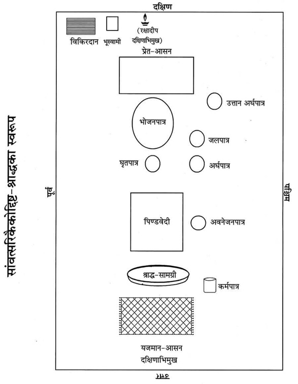
भूमिसहित विष्णु-पूजन—श्राद्ध आरम्भ करनेके पूर्व विष्णुभगवान्का पूजन करनेका विधान है। अत: शालग्रामशिलापर षोडशोपचार अथवा पंचोपचार पूजन करना चाहिये। यदि सम्भव न हो तो निम्न श्लोकसे विष्णुभगवान्का स्मरण-पूजन करते हुए पुष्पांजलि समर्पित कर श्राद्ध आरम्भ करना चाहिये—
शान्ताकारं भुजगशयनं
पद्मनाभं सुरेशं
विश्वाधारं गगनसदृशं
मेघवर्णं शुभाङ्गम्।
लक्ष्मीकान्तं कमलनयनं
योगिभिर्ध्यानगम्यं
वन्दे विष्णुं भवभयहरं
सर्वलोकैकनाथम्॥
‘ॐ भूमिपत्नीसहिताय विष्णवे नम:’—कहकर भगवान् विष्णुको प्रणामकर पुष्प अर्पित कर दे।
कर्मपात्रका निर्माण—श्राद्धकर्ममें जलका उपयोग करनेके लिये कर्मपात्रका निर्माण कर ले। अक्षतोंके ऊपर जलसे भरा एक कलश रखकर उसमें चन्दन, तुलसी, जौ, पुष्प तथा कुश छोड़ दे और त्रिकुशसे जलको दक्षिणावर्त आलोडित करते हुए निम्न मन्त्रोंको पढ़े—
ॐ यद्देवा देवहेडनं देवासश्चकृमा वयम्।
अग्निर्मा तस्मादेनसो विश्वान् मुञ्चत्वÞहस:॥
ॐ यदि दिवा यदि नक्तमेनाÞसि चकृमा वयम्।
वायुर्मा तस्मादेनसो विश्वान् मुञ्चत्वÞहस:॥
ॐ यदि जाग्रद्यदि स्वप्न एनाÞसि चकृमा वयम्।
सूर्यो मा तस्मादेनसो विश्वान् मुञ्चत्वÞहस:॥
प्रोक्षण—कर्मपात्रके जलसे कुशद्वारा अपना तथा सभी श्राद्धसामग्री एवं पाकका प्रोक्षण करे और बोले—‘श्वादिदुष्टदृष्टिनिपातदूषितपाकादिकं पूतं भवतु।’
दिग्-रक्षण—बायें हाथमें पीली सरसों लेकर दाहिने हाथसे ढककर निम्न मन्त्र बोले—
नमो नमस्ते गोविन्द पुराणपुरुषोत्तम।
इदं श्राद्धं हृषीकेश रक्ष त्वं सर्वतो दिश:॥
तदनन्तर दाहिने हाथसे सरसोंको पूर्व-दक्षिण आदि दिशाओंमें निम्न मन्त्रोंको पढ़ते हुए छोड़े—पूर्वमें—प्राच्यै नम:। दक्षिणमें—अवाच्यै नम:। पश्चिममें—प्रतीच्यै नम:। उत्तरमें—उदीच्यै नम:। आकाशमें—अन्तरिक्षाय नम:। भूमिपर—भूम्यै नम:।
हाथ जोड़कर प्रार्थना करे—
पूर्वे नारायण: पातु वारिजासस्तु दक्षिणे।
प्रद्युम्न: पश्चिमे पातु वासुदेवस्तथोत्तरे।
ऊर्ध्वं गोवर्धनो रक्षेदधस्ताच्च त्रिविक्रम:॥
नीवीबन्धन*—किसी पत्र-पुटक या पानके पत्तेपर तिल, त्रिकुशका टुकड़ा लपेटकर निम्न मन्त्र पढ़ते हुए दक्षिण कटिभागमें उसे खोंस ले, बाँध ले—
ॐ निहन्मि सर्वं यदमेध्यकृद् भवे-
द्धताश्च सर्वेऽसुरदानवा मया।
यक्षाश्च रक्षांसि पिशाचगुह्यका
हता मया यातुधानाश्च सर्वे॥
ॐ सोमस्य नीविरसि विष्णो: शर्मासि शर्मयजमानस्येन्द्रस्य योनिरसि सुसस्या: कृषीस्कृधि।
* पितॄणां दक्षिणे पार्श्वे विपरीता तु दैविके।
दक्षिणे कटिदेशे तु कुशत्रयतिलै: सह।
तर्जयन्तीह दैत्यानां यथा नॄणामयस्तथा॥
प्रतिज्ञासंकल्प—दाहिने हाथमें त्रिकुश, तिल, जल लेकर पूर्वाभिमुख हो निम्न रीतिसे संकल्प करे—
ॐविष्णुर्विष्णुर्विष्णु: नम: परमात्मने पुरुषोत्तमाय ॐ तत्सत् अद्यैतस्य विष्णोराज्ञया जगत्सृष्टिकर्मणि प्रवर्तमानस्य ब्रह्मणो द्वितीयपरार्द्धे श्रीश्वेतवाराहकल्पे वैवस्वतमन्वन्तरे अष्टाविंशतितमे कलियुगे तत्प्रथमचरणे जम्बूद्वीपे भारतवर्षे भरतखण्डे ....क्षेत्रे (यदि काशी हो तो अविमुक्तवाराणसीक्षेत्रे गौरीमुखे त्रिकण्टकविराजिते महाश्मशाने भगवत्या उत्तरवाहिन्या भागीरथ्या वामभागे) बौद्धावतारे ....संवत्सरे उत्तरायणे/दक्षिणायने ....ऋतौ ....मासे ....पक्षे ....तिथौ ....वासरे ....गोत्र: ....शर्मा/वर्मा/गुप्तोऽहम् ....गोत्रस्य मम पितु: ....शर्मण:/वर्मण:/गुप्तस्य शास्त्रोक्तफलप्राप्त्यर्थं सांवत्सरिकैकोद्दिष्टश्राद्धं करिष्ये।
पितृगायत्रीका पाठ—पितृगायत्रीका तीन बार पाठ करे—
ॐ देवताभ्य: पितृभ्यश्च महायोगिभ्य एव च।
नम: स्वाहायै स्वधायै नित्यमेव नमो नम:॥
आसनदान-संकल्प*—अपसव्य दक्षिणाभिमुख होकर मोटक, तिल, जल लेकर संकल्प करे—
ॐ अद्य ....गोत्रस्य (....गोत्राया:) ....शर्मण:/वर्मण:/गुप्तस्य सांवत्सरिकैकोद्दिष्टश्राद्धे इदम् आसनं ते नम:—कहकर जल, तिल एवं मोटकको आसनपर छोड़ दे। सव्य पूर्वाभिमुख होकर आचमन कर ले।
* (क) अक्षय्यासनयो: षष्ठी द्वितीयावाहने तथा।
अन्नदाने चतुर्थी च शेषा: सम्बुद्धय: स्मृता:॥
(निर्णयसिन्धु)
(ख) आसनाह्वानयोरर्घे तथाक्षय्येऽवनेजने।
क्षणे स्वाहा स्वधा वाणीं न कुर्यादब्रवीन्मनु:॥
(धर्मप्रदीप)
आवाहन—निम्न मन्त्रसे भास्वरमूर्ति पिताका आवाहन करे—
ॐ आ यन्तु न: पितर: सोम्यासोऽग्निष्वात्ता: पथिभिर्देवयानै:।
अस्मिन् यज्ञे स्वधया मदन्तोऽधि ब्रुवन्तु तेऽवन्त्वस्मान्॥
तदनन्तर ‘ॐ अपहता असुरा रक्षाॸसि वेदिषद:।’ कहकर आसनपरपर अपसव्य दक्षिणाभिमुख होकर तिल बिखेर दे।
अर्घपात्र*-निर्माण—कुशके एक पत्तेका पवित्रक बनाकर निम्नलिखित मन्त्र बोलते हुए अर्घपात्र (पत्तेके दोने)-में दक्षिणाग्र रख दे—
ॐ पवित्रे स्थो वैष्णव्यौ सवितुर्व: प्रसव उत्पुनाम्यच्छिद्रेण पवित्रेण सूर्यस्य रश्मिभि:।
तस्य ते पवित्रपते पवित्रपूतस्य यत्काम: पुने तच्छकेयम्॥
अर्घपात्रमें जल डालना—अर्घपात्रमें निम्न मन्त्रसे जल डाले—
ॐ शं नो देवीरभिष्टय आपो भवन्तु पीतये। शं योरभि स्रवन्तु न:॥
अर्घपात्रमें तिल डालना—नीचे लिखे मन्त्रको बोलकर अर्घपात्रमें तिल डाले—
ॐ तिलोऽसि सोमदैवत्यो गोसवो देवनिर्मित:।
प्रत्नमद्भि: पृक्त: स्वधया पितृृँल्लोकान् प्रीणाहि न:॥ स्वाहा॥
अर्घपात्रमें चन्दन-फूल रखना—अर्घपात्रमें मौन होकर चन्दन-फूल रख दे।
अर्घपात्रका अभिमन्त्रण—अर्घपात्रको उठाकर बायें हाथमें रखे। अर्घपात्रसे पवित्रक निकालकर भोजनपात्रपर उत्तराग्र रखकर ‘ॐ नमो नारायणाय’ मन्त्र बोलकर एक आचमनी जल पवित्रकपर गिरा दे। अर्घपात्रको बायें हाथमें रखकर एवं दाहिने हाथसे ढककर निम्न मन्त्र बोले—
ॐ या दिव्या आप: पयसा सम्बभूवुर्या आन्तरिक्षा उत पार्थवीर्या:।
हिरण्यवर्णा यज्ञियास्ता न आप: शिवा: शॸस्योना: सुहवा भवन्तु॥
तदनन्तर अर्घपात्रको दाहिने हाथमें रखकर मोटक, तिल, जल लेकर निम्न संकल्प बोले—
अर्घदानका संकल्प—ॐ अद्य ....गोत्र ....शर्मन्/वर्मन्/गुप्त सांवत्सरिकैकोद्दिष्टश्राद्धे एषोऽर्घस्ते नम:।
—ऐसा बोलकर अर्घपात्रका जल पवित्रकपर गिरा दे। पुन: पवित्रकको उठाकर अर्घपात्रमें दक्षिणाग्र रख ले और ‘ॐ पित्रे स्थानमसि’ कहकर पिताके आसनकी बायीं ओर उत्तान रख दे।* दक्षिणादानपर्यन्त उसे न हिलाये, न उठाये।
* उत्तानं स्थापयेत् पात्रमेकोद्दिष्टे सदा बुध:।
न्युब्जं तु पार्वणे कुर्यात्....॥
(वीरमित्रोदय)
विद्वान्को चाहिये कि एकोद्दिष्टश्राद्धमें पात्रको उत्तान (सीधा) रखे और पार्वणश्राद्धमें उलटा (अधोमुख) रखे।
आसनपर पूजन—
इदमाचमनीयम् (स्वाचमनीयम्)—कहकर आचमनीय जल दे।
इदं स्नानीयम् (सुस्नानीयम्)—कहकर स्नानीय जल दे।
इदमाचमनीयम् (स्वाचमनीयम्)—कहकर आचमनीय जल दे।
इदं वस्त्रम् (सुवस्त्रम्)—कहकर वस्त्र या सूत्र चढ़ाये।
इदमाचमनीयम् (स्वाचमनीयम्)—कहकर आचमनीय जल दे।
इमे यज्ञोपवीते (सुयज्ञोपवीते)—कहकर यज्ञोपवीत चढ़ाये।
इदमाचमनीयम् (स्वाचमनीयम्)—कहकर आचमनीय जल दे।
एष गन्ध: (सुगन्ध:)—कहकर गन्ध अर्पित करे।
इमे तिलाक्षता: (सुतिलाक्षता:)—कहकर तिलाक्षत चढ़ाये।
इदं माल्यम् (सुमाल्यम्)—कहकर माला चढ़ाये।
एष धूप: (सुधूप:)—कहकर धूप आघ्रापित करे।
एष दीप: (सुदीप:)—कहकर दीपक दिखाये।
हस्तप्रक्षालनम् (हाथ धो ले।)
इदं नैवेद्यम् (सुनैवेद्यम्)—कहकर नैवेद्य अर्पित करे।
इदमाचमनीयम् (स्वाचमनीयम्)—कहकर आचमनीय जल दे।
इदं फलम् (सुफलम्)—कहकर फल अर्पित करे।
इदमाचमनीयम् (स्वाचमनीयम्)—कहकर आचमनीय जल दे।
इदं ताम्बूलम् (सुताम्बूलम्)—कहकर ताम्बूल प्रदान करे।
एषा दक्षिणा (सुदक्षिणा)—कहकर दक्षिणा चढ़ाये
इत्यादि उपचारोंसे आसनपर पूजन करे।
अर्चनदानका संकल्प—हाथमें मोटक, तिल, जल लेकर निम्न संकल्प करे—ॐ अद्य ....गोत्र ....शर्मन्/वर्मन्/गुप्त सांवत्सरिकैकोद्दिष्टश्राद्धे एतान्यर्चनानि ते स्वधा। सव्य पूर्वाभिमुख होकर आचमन कर ले।
मण्डलकरण*—अपसव्य दक्षिणाभिमुख होकर भोजनपात्र तथा आसनके चारों ओर अप्रदक्षिणक्रमसे जलद्वारा गोल मण्डल बनाये उस समय निम्न मन्त्र पढ़े—
ॐ यथा चक्रायुधो विष्णुस्त्रैलोक्यं परिरक्षति।
एवं मण्डलतोयं तु सर्वभूतानि रक्षतु॥
तदनन्तर भूस्वामीके पितरोंको अन्न प्रदान करे।
* (क) दैवे चतुरस्रं पित्र्ये वर्तुलं मण्डलम्। (निर्णयसिन्धुमें बह्वृचपरिशिष्ट)
(ख) प्रदक्षिणं तु देवानां पितॄणामप्रदक्षिणम्। (वीरमित्रोदयश्राद्धप्रकाशमें कात्यायनका वचन)
देवताओंके लिये दक्षिणावर्तक्रमसे चतुष्कोण तथा प्रेत और पितरोंके लिये वामावर्तक्रमसे गोल मण्डल बनाना चाहिये।
भूस्वामीके पितरोंको अन्न प्रदान—एक पात्रमें सभी अन्न रखकर दक्षिण दिशामें निम्न मन्त्र पढ़ते हुए भूस्वामीके पितरोंके निमित्त वह अन्नपात्र त्रिकुशपर रख दे—
‘इदमन्नमेतद्भूस्वामिपितृभ्यो नम:।’
अन्नपरिवेषण—सव्य पूर्वाभिमुख होकर भोजनपात्रपर जो तिल इत्यादि पड़ गये हों, उन्हें साफ कर दे। तदनन्तर उसपर अन्न (ब्राह्मणभोजनके लिये बनी सम्पूर्ण सामग्रीमेंसे) परोस दे।
मधुप्रक्षेप—अन्न परोसनेके बाद अन्नके ऊपर दोनों हाथोंसे पितृतीर्थद्वारा निम्न मन्त्र पढ़कर मधु प्रदान करे—
ॐ मधु वाता ऋतायते मधु क्षरन्ति सिन्धव:। माध्वीर्न: सन्त्वोषधी:॥ मधु नक्तमुतोषसो मधुमत्पार्थिवÞ रज:। मधु द्यौरस्तु न: पिता॥ मधुमान्नो वनस्पतिर्मधुमाँ२ अस्तु सूर्य:। माध्वीर्गावो भवन्तु न:॥ ॐ मधु मधु मधु॥
भोजनपात्रके सामने रखे घृतपात्रमें घृत तथा बायें रखे जलपात्रमें जल रख दे।
पात्रालम्भन१—अनुत्तान दायें हाथपर अनुत्तान बायाँ हाथ स्वस्तिकाकार रखकर भोजनपात्रका स्पर्श करते हुए निम्न मन्त्र पढ़े—
ॐ पृथिवी ते पात्रं द्यौरपिधानं ब्राह्मणस्य मुखे अमृते अमृतं जुहोमि स्वाहा।
ॐ इदं विष्णुर्वि चक्रमे त्रेधा नि दधे पदम्।
समूढमस्य पाÞसुरे स्वाहा॥
ॐ कृष्ण कव्यमिदं रक्ष मदीयम्।
कहकर बायें हाथसे भोजनपात्रका स्पर्श किये हुए ही दाहिने हाथके अनुत्तान अँगूठेसे अन्नावगाहन२ करके—अन्न छूकर बोले—‘इदमन्नम्।’ जल छूकर बोले—‘इमा आप:।’ घी छूकर बोले—‘इदमाज्यम्।’ पुन: अन्न छूकर बोले—‘इदं कव्यम्।’
१. (क) दक्षिणोपरि वामं च पित्र्यपात्रस्य लम्भनम्।
पात्रालम्भनं कुर्याद् दत्त्वा चान्नं यथाविधि॥
(श्राद्धकाशिकामें पद्मपुराणका वचन)
(ख) पित्र्येऽनुत्तानपाणिभ्यामुत्तानाभ्यां च दैवते। (यम)
२. उत्तानेन तु हस्तेन कुर्यादन्नावगाहनम्।
आसुरं तद्भवेच्छ्राद्धं पितॄणां नोपतिष्ठते॥
(श्राद्धकाशिका)
उत्तान हाथसे अन्नावगाहन करनेपर वह श्राद्ध आसुर हो जाता है और पितरोंको प्राप्त नहीं होता।
अन्नके ऊपर ‘ॐ अपहता असुरा रक्षाÞसि वेदिषद:’—मन्त्र पढ़ते हुए तिल बिखेर दे।
अन्नदानका संकल्प—हाथमें मोटक, तिल, जल लेकर अन्नदानका संकल्प करे—
ॐ अद्य ....गोत्राय ....शर्मणे/वर्मणे/गुप्ताय पित्रे सांवत्सरिकैकोद्दिष्टश्राद्धे एतदन्नं सोपस्करं ते स्वधा।
इस तरह संकल्प बोलकर हाथमें रखा तिल, जल भोजनपात्रके पास गिरा दे। बायाँ हाथ हटाकर निम्न मन्त्र कहे—
अन्नहीनं क्रियाहीनं विधिहीनं च यद्भवेत्।
अच्छिद्रमस्तु तत्सर्वं पित्रादीनां प्रसादत:॥
पितृगायत्रीका पाठ—सव्य पूर्वाभिमुख हो जाय, आचमन कर ले। तदनन्तर तीन बार निम्न पितृगायत्रीका पाठ करे—
ॐ देवताभ्य: पितृभ्यश्च महायोगिभ्य एव च।
नम: स्वाहायै स्वधायै नित्यमेव नमो नम:॥
वेदशास्त्रादिका पाठ—इस अवसरपर पैरोंके नीचे तीन कुश पूर्वाग्र रखकर यथासम्भव निम्नलिखित श्रुति, स्मृति, पुराण तथा इतिहासका पाठ करे, इसके साथ ही यथासम्भव पुरुषसूक्त, पितृसूक्त, रुचिस्तव तथा रक्षोघ्नसूक्त आदिका पाठ करना चाहिये। इससे पितरोंको प्रसन्नता होती है।
श्रुतिपाठ—ॐ अग्निमीळे पुरोहितं यज्ञस्य देवमृत्विजम्। होतारं रत्नधातमम्॥
ॐ इषे त्वोर्जे त्वा वायव स्थ देवो व: सविता प्रार्पयतु श्रेष्ठतमाय कर्मण आप्यायध्व मघ्न्या इन्द्राय भागं प्रजावतीरनमीवा अयक्ष्मा मा व स्तेन ईशत माघशÞसो ध्रुवा अस्मिन् गोपतौ स्यात बह्वीर्यजमानस्य पशून् पाहि॥
ॐ अग्न आ याहि वीतये गृणानो हव्यदातये। नि होता सत्सि बर्हिषि॥
ॐ शं नो देवीरभिष्टय आपो भवन्तु पीतये। शं योरभि स्रवन्तुन:॥
स्मृतिपाठ—
मनुमेकाग्रमासीनमभिगम्य महर्षय:।
प्रतिपूज्य यथान्यायमिदं वचनमब्रुवन्॥
योगीश्वरं याज्ञवल्क्यं सम्पूज्य मुनयोऽब्रुवन्।
वर्णाश्रमेतराणां नो ब्रूहि धर्मानशेषत:॥
मन्वत्रिविष्णुहारीतयाज्ञवल्क्योशनोऽङ्गिरा:।
यमापस्तम्बसंवर्ता: कात्यायनबृहस्पती॥
पराशरव्यासशङ्खलिखिता दक्षगौतमौ।
शातातपो वसिष्ठश्च धर्मशास्त्रप्रयोजका:॥
पुराण—
नारायणं नमस्कृत्य नरं चैव नरोत्तमम्।
देवीं सरस्वतीं व्यासं ततो जयमुदीरयेत्॥
सप्त व्याधा दशार्णेषु मृगा: कालञ्जरे गिरौ।
चक्रवाका: शरद्वीपे हंसा: सरसि मानसे॥
तेऽभिजाता: कुरुक्षेत्रे ब्राह्मणा वेदपारगा:।
प्रस्थिता दीर्घमध्वानं यूयं किमवसीदथ॥
महाभारत—
दुर्योधनो मन्युमयो महाद्रुम:
स्कन्ध: कर्ण: शकुनिस्तस्य शाखा:।
दु:शासन: पुष्पफले समृद्धे
मूलं राजा धृतराष्ट्रोऽमनीषी॥
युधिष्ठिरो धर्ममयो महाद्रुम:
स्कन्धोऽर्जुनो भीमसेनोऽस्य शाखा:।
माद्रीसुतौ पुष्पफले समृद्धे
मूलं कृष्णो ब्रह्म च ब्राह्मणाश्च॥
विकिरदान*—अपसव्य दक्षिणाभिमुख होकर अग्निकोणकी भूमिको जलसे सींच दे।
* आभ्युदयिके च पूर्वे प्रेतश्राद्धे तु दक्षिणे।
क्षयाहे अग्निकोणे स्यार्न्नैऋत्ये पार्वणे तथा॥
उसपर तीन कुश बिछाकर पिण्डदानके लिये निर्मित सामग्रीमेंसे किंचित् सामग्री लेकर उसमें घृत, जल, तिल मिलाकर दाहिने हाथमें ले ले तथा मोटक, तिल, जल एक साथ लेकर बिछाये गये कुशोंपर निम्न मन्त्र पढ़ते हुए पितृतीर्थसे रख दे—
असंस्कृतप्रमीतानां त्यागिनां कुलभागिनाम्।
उच्छिष्टभागधेयानां दर्भेषु विकिरासनम्॥
अग्निदग्धाश्च ये जीवा येऽप्यदग्धा: कुले मम।
भूमौ दत्तेन तृप्यन्तु तृप्ता यान्तु परां गतिम्॥
तदनन्तर पहिनी हुई पवित्री, मोटक आदिका वहीं परित्याग कर दे। हाथ-पैर धो ले। अपने आसनपर आ जाय। सव्य पूर्वाभिमुख होकर आचमन कर ले, नयी पवित्री धारण कर ले। श्रीहरिका स्मरण कर अपसव्य दक्षिणाभिमुख होकर पिण्डदानके लिये वेदीका निर्माण करे।
वेदी-निर्माण—प्रादेशमात्र (दस अंगुल) लम्बी तथा छ: अंगुल चौड़ी एक वेदी बना ले। वेदीके उत्तरका भाग ऊँचा और दक्षिणका भाग नीचा होना चाहिये। निम्न मन्त्र पढ़ते हुए जलसे वेदीका सिंचन कर ले—
ॐ अयोध्या मथुरा माया काशी काञ्ची ह्यवन्तिका।
पुरी द्वारावती ज्ञेया: सप्तैता मोक्षदायिका:॥
रेखाकरण—बायें हाथके अंगुष्ठ तथा तर्जनीसे तीन समूल कुशोंके अग्रभागको और दाहिने हाथके अंगुष्ठ तथा तर्जनीसे कुशोंके मूलभागको पकड़कर ‘ॐ अपहता असुरा रक्षाÞसि वेदिषद:’ मन्त्रसे वेदीपर उत्तरसे दक्षिणकी ओर रेखा खींचे और उन कुशोंको ईशानकोणकी ओर फेंक दे।
उल्मुकस्थापन—वेदीके चारों ओर बायीं ओरसे अंगारका ‘ॐ ये रूपाणि प्रतिमुञ्चमाना असुरा: सन्त: स्वधया चरन्ति। परापुरो निपुरो ये भरन्त्यग्निष्टाँल्लोकात्प्रणुदात्यस्मात्॥ से भ्रमण कराये तथा उसे पिण्डवेदीके दक्षिणकी ओर श्राद्धपर्यन्त स्थापित कर दे।
अवनेजन*—एक पत्र-पुटक (दोने)-में तिल, जल, सफेद चन्दन, सफेद फूल रखकर उसे दायें हाथमें ले ले। संकल्पके लिये मोटक, तिल, जल लेकर नीचे लिखा संकल्प बोलकर वेदीपर पिण्डस्थानपर आधा अवनेजन-जल गिरा दे।
* कई प्रयोगपद्धतियोंमें कुशास्तरणके बाद अवनेजन प्रदान करनेकी व्यवस्था दी गयी है। परंतु श्राद्धके आधारभूत ग्रन्थ पारस्कर-गृह्यसूत्र तथा उसके भाष्यकारोंके निम्न वचनोंके अनुसार कुशास्तरणके पूर्व वेदीके मध्य खींची गयी रेखापर अवनेजन देनेका विधान है—
‘दर्भेषु त्रींस्त्रीन् पिण्डानवनेज्य दद्यात्’ (पारस्करगृह्यसूत्रपरिशिष्ट श्राद्धसूत्रकण्डिका ३)
अवनेजन देकर दर्भोंके ऊपर पिण्डदान करे।
उपर्युक्त पारस्करगृह्यसूत्रपर कर्काचार्यजीका भाष्य इस प्रकार है—‘पिण्डपितृयज्ञवदुपचार इति सूत्रितत्वात् ।’
‘पिण्डपितृयज्ञवदुपचार: पित्र्ये’ (श्राद्धकाशिका २।२ तथा पा०गृ० श्राद्धसूत्रकण्डिका २) इस सूत्रके अनुसार पिण्डपितृयज्ञमें जिस प्रक्रियाका आश्रयण किया गया है, उसी तरह अन्य श्राद्धोंमें भी किया जाय। दर्शपौर्णमासमें पितृयज्ञका प्रकरण है जिसमें पहले अवनेजन करके बादमें कुशास्तरणकी विधि है।
गदाधरभाष्य—अत्राह याज्ञवल्क्य:—सर्वमन्नमुपादाय सतिलं दक्षिणामुख:। उच्छिष्टसन्निधौ पिण्डान् दद्याद्वै पितृयज्ञवत् ॥
अत्र पदार्थक्रम:—उल्लेखनम्, उदकालम्भ:, उल्मुकनिधानम्, अवनेजनम्, सकृदाच्छिन्नास्तरणम्, पिण्डदानम्।
अर्थात् उच्छिष्टकी सन्निधिमें दक्षिणाभिमुख होकर सभी अन्नोंको लेकर सतिलपितृयज्ञवत् पिण्ड प्रदान करना चाहिये। यहाँ पदार्थक्रम निम्नलिखित है—(१) उल्लेखन (रेखाकरण), (२) उदकालम्भन, (३) उल्मुकसंस्थापन (अंगारभ्रामण), (४) अवनेजन,(५) कुशास्तरण तथा (६) पिण्डदान।
संकल्प—ॐ अद्य ....गोत्र ....शर्मन्/वर्मन्/गुप्त सांवत्सरिकैकोद्दिष्टश्राद्धपिण्डस्थाने अत्रावनेनिक्ष्व ते नम:।
ऐसा कहकर आधा अवनेजन-जल बचाकर अवनेजनपात्र यथास्थान रख ले—
कुशास्तरण—समूल तीन कुशोंको एक साथ जड़सहित दो भागोंमें विभक्तकर वेदीपर खींची गयी रेखापर दक्षिणाग्र बिछा दे।
पिण्डनिर्माण—पाकपात्रमेंसे पिण्डदानके लिये पत्तलपर अन्न निकाल ले। उसमें घी, मधु, तिल मिलाकर कपित्थ* (कैथ)-फलके बराबर एक पिण्ड बना ले। थोड़ा अन्न पाकपात्रमें बलिके लिये छोड़ दे।
* कपित्थस्य प्रमाणेन पिण्डान् दद्यात् समाहित:।
पिण्डदानका संकल्प—दाहिने हाथमें मोटक, तिल, जल और पिण्डको लेकर बायें हाथसे दाहिने हाथका स्पर्श करते हुए बायाँ घुटना टेककर* बोले—
ॐ अद्य ....गोत्र ....शर्मन्/वर्मन्/गुप्त सांवत्सरिकैकोद्दिष्टश्राद्धे एष पिण्डस्ते स्वधा। कहकर पितृतीर्थसे कुशोंके ऊपर अवनेजनके स्थानपर पिण्डको रख दे। पिण्डशेषान्न भी पिण्डके समीप रख दे। पिण्डाधार कुशोंके मूलमें हाथ पोंछ ले। सव्य पूर्वाभिमुख होकर आचमन कर हरिस्मरण कर ले।
* दक्षिणं पातयेज्जानुं देवान् परिचरन् सदा।
पातयेदितरं जानुं पितॄन् परिचरन् सदा॥
श्वासनियमन—अपसव्य दक्षिणाभिमुख होकर आसनपर बैठे ही श्वास खींचते हुए बायीं ओरसे उत्तराभिमुख हो निम्न मन्त्र पढ़े—
‘अत्र पितरो मादयध्वं यथाभागमावृषायध्वम्।’
श्वास रोककर दक्षिणाभिमुख होकर भास्वरमूर्ति (तेज:पुंजस्वरूप) पिताका ध्यान करते हुए पिण्डके पास श्वास छोड़े और ‘अमीमदन्त पितरो यथाभागमावृषायिषत’ यह मन्त्र पढ़े।
प्रत्यवनेजन—पहले रखे हुए अवनेजनपात्रको दायें हाथमें रखकर मोटक, तिल, जल लेकर संकल्प बोले—
ॐ अद्य ....गोत्र ....शर्मन्/वर्मन्/गुप्त सांवत्सरिकैकोद्दिष्टश्राद्धपिण्डे अत्र प्रत्यवनेनिक्ष्व ते नम:।
—ऐसा बोलकर पिण्डपर जल गिरा दे।
नीवीविसर्जन—नीवीका ईशानकोणकी ओर विसर्जन कर दे।
सूत्रदान—सव्य पूर्वाभिमुख होकर आचमन कर ले। फिर अपसव्य दक्षिणाभिमुख हो जाय एवं बायें हाथसे सूत्र लेकर दाहिने हाथमें रखकर निम्न मन्त्रका उच्चारण करे—
ॐ नमो व: पितरो रसाय नमो व: पितर: शोषाय नमो व: पितरो जीवाय नमो व: पितर: स्वधायै नमो व: पितरो घोराय नमो व: पितरो मन्यवे नमो व: पितर: पितरो नमो वो गृहान्न: पितरो दत्त सतो व: पितरो देष्म। ऐसा पढ़कर ‘ॐ एतद्व: पितरो वास:’ कहते हुए पिण्डपर सूत्र चढ़ाये।
सूत्रदानका संकल्प—हाथमें मोटक, तिल, जल लेकर संकल्प करे—
ॐ अद्य ....गोत्र ....पित: ....शर्मन्/वर्मन्/गुप्त सांवत्सरिकैकोद्दिष्टश्राद्धपिण्डे एतत्ते वास: स्वधा—ऐसा कहकर पिण्डपर संकल्पजल छोड़े।
पिण्डपूजन तथा अर्चनदान—पिण्डपर चन्दन, तिल, माला, धूप, दीप, नैवेद्य, आचमन, ताम्बूल आदि पितृतीर्थसे चढ़ाये। तदनन्तर पितृतीर्थसे ही ॐ अद्य ....गोत्र ....शर्मन्/वर्मन्/गुप्त सांवत्सरिकैकोद्दिष्टश्राद्धपिण्डे एतान्यर्चनानि ते स्वधा—कहकर पिण्डके ऊपर संकल्पजल छोड़ दे।
षड्ऋतु-नमस्कार—तदनन्तर पितृस्वरूप छ: ऋतुओंको निम्न मन्त्रसे नमस्कार करे—
(१) ॐ वसन्ताय नम:, (२) ॐ ग्रीष्माय नम:, (३) ॐ वर्षायै नम:, (४) ॐ शरदे नम:,(५) ॐ हेमन्ताय नम: तथा (६) ॐ शिशिराय नम:।
अक्षय्योदकदान—भोजनपात्रपर—
ॐ शिवा आप: सन्तु—कहकर जल छोड़े।
ॐ सौमनस्यमस्तु—कहकर पुष्प छोड़े।
ॐ अक्षतं चारिष्टं चास्तु—कहकर अक्षत छोड़े।
हाथमें मोटक, तिल, जल लेकर अक्षय्योदकदानका संकल्प करे—
अक्षय्योदकदानका संकल्प—ॐ अद्य ....गोत्रस्य ....शर्मण:/वर्मण:/गुप्तस्य सांवत्सरिकैकोद्दिष्ट-श्राद्धे दत्तैतदन्नपानादिकमक्षय्यमस्तु।
जलधारा—तत्पश्चात् सव्य होकर दक्षिणकी ओर देखते हुए ‘ॐ अघोरा: पितर: सन्तु’ कहकर पिण्डपर पितृतीर्थसे पूर्वाग्र जलधारा दे।
आशिष-प्रार्थना—पूर्वाभिमुख होकर हाथ जोड़कर आशिष-प्रार्थना करे—
ॐ गोत्रं नो वर्द्धतां दातारो नोऽभिवर्द्धन्ताम्। वेदा: सन्ततिरेव च। श्रद्धा च नो मा व्यगमद् बहुदेयं च नोऽस्तु। अन्नं च नो बहु भवेदतिथींश्च लभेमहि। याचितारश्च न: सन्तु मा च याचिष्म कञ्चन। एता: सत्या आशिष: सन्तु॥
ब्राह्मणवाक्य—सन्त्वेता: सत्या आशिष:।
जलधारा या दुग्धधारा—अपसव्य दक्षिणाभिमुख होकर पवित्रकसहित तीन कुश पिण्डपर दक्षिणाग्र रखकर निम्न मन्त्रसे पिण्डके ऊपर दक्षिणाग्र जलधारा या दुग्धधारा दे—
ॐ ऊर्जं वहन्तीरमृतं घृतं पय: कीलालं परिस्रुतम्। स्वधा स्थ तर्पयत मे पितॄन्॥
पिण्डाघ्राण—नम्र होकर पिण्डको सूँघकर उठा ले तथा पवित्र जलमें प्रवाहित कर दे या गायको खिला दे।* पिण्डाधारकुश (पिण्डोंके नीचेवाले कुश) एवं उल्मुकको अग्निमें छोड़ दे।
* तत: कर्मणि निर्वृत्ते तान् पिण्डांस्तदनन्तरम्।
ब्राह्मणोऽग्निरजो गौर्वा भक्षयेदप्सु वा क्षिपेत्॥
(श्राद्धचिन्तामणिमें देवलका वचन)
अर्घपात्रसंचालन—अर्घपात्रको हिला दे।
दक्षिणादानका संकल्प—सव्य पूर्वाभिमुख हो जाय। हाथमें त्रिकुश, तिल, जल तथा दक्षिणा लेकर बोले—
ॐ अद्य ....गोत्रस्य ....शर्मण:/वर्मण:/गुप्तस्य पितु: कृतैतत् सांवत्सरिकैकोद्दिष्टश्राद्धप्रतिष्ठार्थमिदं रजतं चन्द्रदैवतं (तन्निष्क्रयद्रव्यम्) ....गोत्राय ....शर्मणे ब्राह्मणाय तुभ्यमहं सम्प्रददे। कहकर ब्राह्मणको दक्षिणा दे दे।
ब्राह्मणभोजनका संकल्प—हाथमें मोटक, तिल, जल, लेकर बोले—
ॐ अद्य ....गोत्रस्य ....शर्मण:/वर्मण:/गुप्तस्य सांवत्सरिकैकोद्दिष्टश्राद्धप्रतिष्ठार्थं क्षुधातृषानिवृत्ति- पूर्वकाक्षयतृप्तिसम्पादनार्थं च पञ्चबलिपूर्वकं ब्राह्मणभोजनं कारयिष्यामि। संकल्पजल छोड़ दे।
पंचबलि—ब्राह्मणभोजनसे पूर्व पंचबलि कर लेनी चाहिये। बलि निकालकर गौ, कुत्ता तथा कौआ आदिको समर्पित कर दे। पंचबलिकर्मकी विधि में दी गयी है।
विसर्जन—अपसव्य दक्षिणाभिमुख होकर ‘ॐ अभिरम्यताम्’ कहकर विसर्जन कर दे।
सव्य और पूर्वाभिमुख होकर आचमन करे, तीन बार पितृगायत्रीका पाठ करे—
ॐ देवताभ्य: पितृभ्यश्च महायोगिभ्य एव च।
नम: स्वाहायै स्वधायै नित्यमेव नमो नम:॥
रक्षादीपनिर्वापण—अपसव्य दक्षिणाभिमुख होकर रक्षादीप बुझा दे। तदनन्तर हाथ-पैर धोकर सव्य पूर्वाभिमुख होकर आचमन कर कहे—
समर्पण—अनेन कृतेन सांवत्सरिकैकोद्दिष्टश्राद्धेन पितृरूपीजनार्दन: प्रीयताम्, न मम।
भगवत्स्मरण— निम्न मन्त्रोंसे प्रार्थना करे—
प्रमादात् कुर्वतां कर्म प्रच्यवेताध्वरेषु यत्।
स्मरणादेव तद्विष्णो: सम्पूर्णं स्यादिति श्रुति:॥
यस्य स्मृत्या च नामोक्त्या तपोयज्ञक्रियादिषु।
न्यूनं सम्पूर्णतां याति सद्यो वन्दे तमच्युतम्॥
यत्पादपङ्कजस्मरणाद् यस्य नामजपादपि।
न्यूनं कर्म भवेत् पूर्णं तं वन्दे साम्बमीश्वरम्॥
ॐ विष्णवे नम:। ॐ विष्णवे नम:। ॐ विष्णवे नम:।
ॐ साम्बसदाशिवाय नम:, ॐ साम्बसदाशिवाय नम:, ॐ साम्बसदाशिवाय नम:।
॥ सांवत्सरिकैकोद्दिष्टश्राद्ध-प्रयोग पूर्ण हुआ॥
पार्वणश्राद्ध*
पार्वणश्राद्धकी सामग्री
(१) गंगाजल अथवा शुद्ध जल, (२) शुद्ध मिट्टी अथवा बालू (वेदी बनानेके लिये), (३) एक बड़ी हँड़िया ढक्कनसहित जिसमें ढाई किलो जल आ सके, (४) गोहरी—२० नग, (५) खीर बनानेके लिये—दूध—ढाई किलो, चावल एक किलो, शक्कर देशी—डेढ़ सौ ग्राम, (६) काला तिल—१०० ग्राम, (७) जौ—१०० ग्राम, (८) चावल—५० ग्राम, (९) दूध—१०० ग्राम, (१०) शहद—५० ग्राम, (११) सुपारी—३० नग, (१२) पान—३० नग, (१३) रूई—१० ग्राम, (१४) धूप—१ पैकेट, (१५) गोघृत—२०० ग्राम, (१६) तिलका तेल—२०० ग्राम (रक्षादीपके लिये), (१७) दियासलाई—१ नग, (१८) पीली सरसों—२५ ग्राम, (१९) कच्चा सूत—१ गोला, (२०) जनेऊ—१५ नग, (२१) ऋतुफल—२६ नग (श्राद्धमें केला निषिद्ध है), (२२) नैवेद्य (पेड़ा-मिसरी आदि)—२६ नग, (२३) लौंग-इलायची—२६-२६ नग, (२४) सफेद सुगन्धित पुष्पकी माला—२६ नग, (२५) सफेद सुगन्धित पुष्प, तुलसीपत्र, (२६) पलाशकी दोनिया अथवा हाथसे बना मिट्टीका दीया—५० नग, (२७) पलाशका पत्तल—१० नग, (२८) कुशा—३० नग, (२९) सफेद चन्दन —१ कटोरी (घिसा हुआ), (३०) मिट्टीका दीया—४० नग, (३१) मिट्टीका सकोरा—१० नग, (३२) धोती—८, गमछा—८ (स्त्रीका श्राद्ध हो तो साड़ी—६, ब्लाउज-पीस—६), (३३) विश्वेदेवके लिये धोती—२ और गमछा—२।
* षड्दैवत्य, नवदैवत्य तथा द्वादशदैवत्यश्राद्ध
षड्दैवत्य आदि श्राद्धोंका स्वरूप इस प्रकार है—(१) षड्दैवत्य—सपत्नीक पिता, पितामह, प्रपितामह तथा सपत्नीक मातामह, प्रमातामह, वृद्धप्रमातामह—(छ: चट)। (२) नवदैवत्य—पिता, पितामह, प्रपितामह, माता, पितामही, प्रपितामही तथा सपत्नीक मातामह, प्रमातामह, वृद्धप्रमातामह (नौ चट)। (३) द्वादशदैवत्य—पिता, पितामह, प्रपितामह, माता, पितामही, प्रपितामही तथा मातामह, प्रमातामह, वृद्धप्रमातामह, मातामही, प्रमातामही, वृद्धप्रमातामही—(बारह चट)। एकोद्दिष्टश्राद्धसे अतिरिक्त पार्वण आदि अन्य श्राद्धोंके संदर्भमें निम्नलिखित चार प्रमाण प्राप्त होते हैं, जिनके अनुसार महालय (पितृपक्ष), गयाश्राद्ध, वृद्धिश्राद्ध तथा अन्वष्टकाश्राद्धमें नवदैवत्य अथवा द्वादशदैवत्यश्राद्ध करनेकी विधि है तथा तीर्थश्राद्ध, गोष्ठीश्राद्ध और मघाश्राद्धमें द्वादशदैवत्यकी विधि है। एक प्रमाण (ग)-के अनुसार महालय, गया, वृद्धि तथा अन्वष्टकाश्राद्धसे अतिरिक्त तीर्थश्राद्ध आदि सभी श्राद्ध षड्दैवत्य भी किये जा सकते हैं। प्रमाण (घ)-के अनुसार तीर्थश्राद्धमें नवदैवत्यश्राद्ध करनेकी भी विधि है। इनमें कोई भी श्राद्ध अपने देशाचार-कुलाचारके अनुसार करना चाहिये। इस सम्बन्धमें मूल वचन इस प्रकार हैं—
(क) महालये गयाश्राद्धे वृद्धावन्वष्टकासु च।
ज्ञेयं द्वादशदैवत्यं तीर्थे गोष्ठे मघासु च॥
(निर्णयसिन्धु)
महालय (पितृपक्ष), गयाश्राद्ध, वृद्धिश्राद्ध, अन्वष्टकाश्राद्ध, तीर्थश्राद्ध, गोष्ठीश्राद्ध और मघाश्राद्धमें द्वादशदैवत्यश्राद्ध करना चाहिये।
(ख) देवतानवकं वृद्धौ तथैवाऽन्वष्टकासु च।
ज्ञेयं द्वादशदैवत्यं तीर्थे गोष्ठे गयासु च॥
(श्राद्धकल्पलता)
वृद्धिश्राद्ध तथा अन्वष्टकाश्राद्धमें नवदैवत्य तथा तीर्थ, गोष्ठी और गयामें द्वादशदैवत्यश्राद्ध होता है।
(ग) महालये गयाश्राद्धे वृद्धावन्वष्टकासु च।
नवदैवत्यमत्रेष्टं शेषं षाट्पौरुषं विदु:॥
(विष्णुधर्मोत्तर)
महालय, गयाश्राद्ध, वृद्धिश्राद्ध तथा अन्वष्टकाश्राद्धमें नवदैवत्य तथा शेष सर्वत्र षड्दैवत्यश्राद्ध करना चाहिये।
(घ) ‘पित्रादिनवदैवं वा तथा द्वादशदैवमिति।’ (गौडीय श्राद्धप्रकाश पृ० ३९में उद्धृत अग्निपुराणका वचन)
तीर्थश्राद्ध नवदैवत्य अथवा द्वादशदैवत्य किया जा सकता है।
षड्दैवत्य, नवदैवत्य अथवा द्वादशदैवत्यश्राद्धमें भी अवशिष्ट (ताताम्बादि) बान्धवोंके लिये पृथक् आसन लगाकर एकोद्दिष्ट विधिसे पिण्डदान किया जा सकता है। जो लोग अपने बान्धवोंके लिये एकोद्दिष्टश्राद्ध करें, वे प्रतिज्ञासंकल्पमें ‘विश्वेदेवपूजनपूर्वकम्’ के बाद ‘सैकोद्दिष्टं पार्वणश्राद्धं करिष्ये’ ऐसा कहें। धर्मशास्त्रोंमें श्राद्ध तथा तर्पणके लिये स्वगोत्र तथा विभिन्न गोत्रवाले पितरों अर्थात् ताताम्बादि बान्धवोंकी गणना इस प्रकार की गयी है—
ताताम्बात्रितयं सपत्नजननी
मातामहादित्रयं
सस्त्रि स्त्रीतनयादि तातजननी-
स्वभ्रातरस्तत्स्त्रिय:।
ताताम्बाऽऽत्मभगिन्यपत्यधवयुग्
जायापिता सद्गुरु:
शिष्याप्ता: पितरो महालयविधौ
तीर्थे तथा तर्पणे॥
(१) पिता, (२) पितामह (दादा), (३) प्रपितामह (परदादा), (४) माता, (५) पितामही (दादी), (६) प्रपितामही (परदादी), (७) विमाता (सौतेली माँ), (८) मातामह (नाना), (९) प्रमातामह (परनाना), (१०) वृद्धप्रमातामह (वृद्धपरनाना), (११) मातामही (नानी), (१२) प्रमातामही (परनानी), (१३) वृद्धप्रमातामही (वृद्धपरनानी), (१४) स्त्री (पत्नी), (१५) पुत्र (पुत्री), (१६) चाचा, (१७) चाची, (१८) चाचाका पुत्र, (१९) मामा, (२०) मामी, (२१) मामाका पुत्र, (२२) अपना भाई, (२३) भाभी, (२४) भाईका पुत्र, (२५) फूफा, (२६) फूआ, (२७) फूआका पुत्र, (२८) मौसा, (२९) मौसी, (३०) मौसाका पुत्र, (३१) अपनी बहन, (३२) बहनोई, (३३) बहनका पुत्र, (३४) श्वशुर, (३५) सासु, (३६) सद्गुरु, (३७) गुरुपत्नी, (३८) शिष्य, (३९) संरक्षक, (४०) मित्र तथा (४१) भृत्य (सेवक)।
(ख) पूर्वाह्णे मातृकं श्राद्धमपराह्णे तु पैतृकम्।
एकोद्दिष्टं तु मध्याह्ने प्रातर्वृद्धिनिमित्तकम्॥
अर्थात् पूर्वाह्णमें अन्वष्टकाश्राद्ध, अपराह्णमें पितृश्राद्ध, मध्याह्नमें एकोद्दिष्टश्राद्ध तथा प्रात: आभ्युदयिक (वृद्धि)-श्राद्ध करना चाहिये।
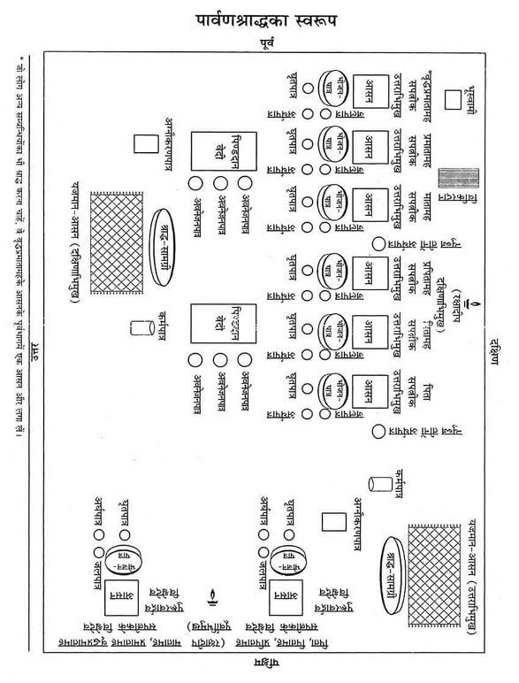
पार्वणश्राद्ध-प्रयोग
स्नान आदिसे पवित्र होकर धुले हुए दो वस्त्र* (धोती तथा उत्तरीय—चादर आदि) धारण कर ले। पहलेसे गोबरसे लिपी हुई अथवा धुली हुई श्राद्धभूमिपर आ जाय। सभी श्राद्धीय सामग्रियोंको यथास्थान रख ले। सर्वप्रथम पाकका निर्माण करे।
* स्नानं दानं जपं होमं स्वाध्यायं पितृतर्पणम्।
नैकवस्त्रो द्विज: कुर्याच्छ्राद्धभोजनसत्क्रिया:॥
स्नान, दान, जप, होम, स्वाध्याय, पितृतर्पण, श्राद्ध, भोजन आदि सत्कर्म एक वस्त्र धारण कर नहीं करने चाहिये। (श्राद्धचिन्तामणि में योगियाज्ञवल्क्यका वचन)
पाकनिर्माण—श्राद्धदेशके ईशानकोणमें पिण्डदानके लिये पाक तैयार कर ले। पिण्डके लिये गाढ़ी खीर बनानी चाहिये। पाक-निर्माणके अनन्तर पाकमें तथा ब्राह्मणोंके निमित्त बनी भोजन-सामग्रीमें तुलसीदल छोड़कर भगवान्का भोग लगा दे।
पाकनिर्माणके अनन्तर हाथ-पैर धोकर श्राद्धस्थलपर कुश या ऊनका आसन बिछाकर सव्य पूर्वाभिमुख होकर बैठ जाय।
शिखाबन्धन—गायत्रीमन्त्र पढ़कर शिखाबन्धन कर ले।
सिंचन-मार्जन—निम्न मन्त्रसे अपने ऊपर तथा श्राद्धीय वस्तुओंपर जल छिड़के—
ॐ अपवित्र: पवित्रो वा सर्वावस्थां गतोऽपि वा।
य: स्मरेत् पुण्डरीकाक्षं स बाह्याभ्यन्तर: शुचि:॥
ॐ पुण्डरीकाक्ष: पुनातु, ॐ पुण्डरीकाक्ष: पुनातु, ॐ पुण्डरीकाक्ष: पुनातु।
पवित्रीधारण—निम्न मन्त्रसे पवित्री पहन ले—
ॐ पवित्रे स्थो वैष्णव्यौ सवितुर्व: प्रसव उत्पुनाम्यच्छिद्रेण पवित्रेण सूर्यस्य रश्मिभि:।
तस्य ते पवित्रपते पवित्रपूतस्य यत्काम: पुने तच्छकेयम्॥
आचमन*—ॐ केशवाय नम:। ॐ नारायणाय नम:। ॐ माधवाय नम:—इन मन्त्रोंको बोलकर आचमन करे। ‘ॐ हृषीकेशाय नम:’ कहकर हाथ धो ले।
* सपवित्रेण हस्तेन कुर्यादाचमनक्रियाम्।
नोच्छिष्टं तत्पवित्रं तु भुक्तोच्छिष्टं तु वर्जयेत्॥
(श्राद्धचिन्तामणिमें मार्कण्डेयका वचन)
प्राणायाम—प्राणायाम करे।
विश्वेदेवोंके लिये पात्रासादन—पार्वणश्राद्धमें विश्वेदेवोंके दो आसन होते हैं—१-पितृपितामहादिके विश्वेदेवोंके लिये तथा २-मातामहादिके विश्वेदेवोंके लिये। अत: श्राद्धभूमिके पश्चिमकी ओर दक्षिणोत्तरक्रमसे पलाशके दो पत्ते बिछाकर उन दोनोंपर आसनके लिये एक-एक त्रिकुश पूर्वाग्र स्थापित कर दे। उन दोनोंपर त्रिकुशके दो कुशवटु (कुश-ब्राह्मण) बनाकर पूर्वाग्र स्थापित कर दे।
उन दोनों आसनोंके सामने भोजनपात्रके रूपमें पलाश आदिका एक-एक पत्ता रख दे और भोजनपात्रोंके उत्तर दिशामें एक-एक अर्घपात्र (दोनिया), एक-एक जलपात्र (दोनिया) तथा भोजनपात्रके सामने एक-एक घृतपात्र (दोनिया) भी रख दे।
पितरोंके लिये पात्रासादन—पार्वणश्राद्धमें सपत्नीक* पिता, पितामह तथा प्रपितामह और सपत्नीक मातामह, प्रमातामह तथा वृद्धप्रमातामहके निमित्त छ: पृथक्-पृथक् आसन आदि होते हैं।
* स्वेन भर्ता समं श्राद्धं माता भुङ्क्ते सुधासमम्।
पितामही च स्वेनैव तथैव प्रपितामही॥
(निर्णयसिन्धु तृ०पू०में कात्यायनका वचन)
विश्वेदेवोंके आसनोंसे कुछ दूर दक्षिण-पूर्व दिशामें पश्चिम-पूर्वक्रमसे पृथक्-पृथक् छ: पत्तोंपर दक्षिणाग्र छ: मोटकरूप आसन रखे। उन छहों आसनोंपर त्रिकुशमें ग्रन्थि लगाकर छ: कुशवटु बनाकर एक-एक कुशवटु पृथक्-पृथक् उत्तराग्र रखे। छहों आसनोंके सम्मुख एक-एक भोजनपात्र तथा भोजनपात्रके पश्चिम दिशामें एक-एक अर्घपात्र, एक-एक जलपात्र तथा भोजनपात्रके सामने एक-एक घृतपात्र (दोनिया या हाथका बना मिट्टीका दीया) भी रख दे।
रक्षादीप-प्रज्वालन—इस श्राद्धमें दो रक्षादीप होंगे। एक विश्वेदेवोंके निमित्त तथा दूसरा पितरोंके निमित्त। विश्वेदेवके आसनोंके पश्चिम अक्षत अथवा जौपर रखकर पूर्वाभिमुख तिलके तेल अथवा घृतका एक दीपक जला दे। इसी प्रकार पितरोंके आसनके दक्षिणमें तिलोंपर रखकर तिलके तेलका दूसरा दीपक दक्षिणाभिमुख जला दे। तदनन्तर निम्न प्रार्थना करे—
भो दीप ब्रह्मरूपस्त्वं कर्मसाक्षी ह्यविघ्नकृत्।
यावत् कर्मसमाप्ति: स्यात् तावत् त्वं सुस्थिरो भव॥
गन्ध, अक्षत, पुष्पसे दोनों दीपकोंका पूजन कर ले। हाथ धोकर आसनपर बैठ जाय।
गदाधर आदिकी प्रार्थना—अंजलिमें फूल लेकर गयाधाम, गदाधर तथा पितरोंका स्मरण कर निम्न मन्त्रसे प्रार्थना करे—
श्राद्धारम्भे गयां ध्यात्वा ध्यात्वा देवं गदाधरम्।
स्वपितॄन् मनसा ध्यात्वा तत: श्राद्धं समाचरेत् ॥
ॐ गयायै नम:। ॐ गदाधराय नम:—कहकर फूल चढ़ा दे।
तदनन्तर तीन बार ‘ॐ श्राद्धभूम्यै नम:’ कहकर भूमिपर जौ एवं पुष्प छोड़े।
भूमिसहित विष्णु-पूजन—श्राद्ध आरम्भ करनेके पूर्व विष्णुभगवान्का पूजन करनेका विधान है। अत: शालग्रामशिलापर षोडशोपचार अथवा पंचोपचार पूजन करना चाहिये। यदि सम्भव न हो तो निम्न श्लोकसे विष्णुभगवान्का स्मरण-पूजन करते हुए पुष्पांजलि समर्पित कर श्राद्ध आरम्भ करना चाहिये—
शान्ताकारं भुजगशयनं
पद्मनाभं सुरेशं
विश्वाधारं गगनसदृशं
मेघवर्णं शुभाङ्गम्।
लक्ष्मीकान्तं कमलनयनं
योगिभिर्ध्यानगम्यं
वन्दे विष्णुं भवभयहरं
सर्वलोकैकनाथम्॥
‘ॐ भूमिपत्नीसहिताय विष्णवे नम:’—कहकर भगवान् विष्णुको प्रणामकर पुष्प अर्पित कर दे।
कर्मपात्रका निर्माण—श्राद्धकर्ममें जलका उपयोग करनेके लिये कर्मपात्रका निर्माण कर ले। अक्षतोंके ऊपर जलसे भरा एक कलश रखकर उसमें चन्दन, तुलसी, जौ, पुष्प तथा कुश छोड़ दे और त्रिकुशसे जलको दक्षिणावर्त आलोडित करते हुए निम्न मन्त्रोंको पढ़े—
ॐ यद्देवा देवहेडनं देवासश्चकृमा वयम्।
अग्निर्मा तस्मादेनसो विश्वान् मुञ्चत्वÞहस:॥
ॐ यदि दिवा यदि नक्तमेनाÞसि चकृमा वयम्।
वायुर्मा तस्मादेनसो विश्वान् मुञ्चत्वÞहस:॥
ॐ यदि जाग्रद्यदि स्वप्न एनाÞसि चकृमा वयम्।
सूर्यो मा तस्मादेनसो विश्वान् मुञ्चत्वÞहस:॥
प्रोक्षण—कर्मपात्रके जलसे कुशद्वारा अपना तथा सभी श्राद्धसामग्री एवं पाकका प्रोक्षण करे और बोले—
‘श्वादिदुष्टदृष्टिनिपातदूषितपाकादिकं पूतं भवतु।’
दिग्-रक्षण—बायें हाथमें पीली सरसों लेकर दाहिने हाथसे ढककर निम्न मन्त्र बोले—
नमो नमस्ते गोविन्द पुराणपुरुषोत्तम।
इदं श्राद्धं हृषीकेश रक्ष त्वं सर्वतो दिश:॥
तदनन्तर दाहिने हाथसे सरसोंको पूर्व-दक्षिण आदि दिशाओंमें निम्न मन्त्रोंको पढ़ते हुए छोड़े—
पूर्वमें—प्राच्यै नम:। दक्षिणमें—अवाच्यै नम:। पश्चिममें—प्रतीच्यै नम:। उत्तरमें—उदीच्यै नम:। आकाशमें—अन्तरिक्षाय नम:। भूमिपर—भूम्यै नम:।
हाथ जोड़कर प्रार्थना करे—
पूर्वे नारायण: पातु वारिजासस्तु दक्षिणे।
प्रद्युम्न: पश्चिमे पातु वासुदेवस्तथोत्तरे।
ऊर्ध्वं गोवर्धनो रक्षेदधस्ताच्च त्रिविक्रम:॥
नीवीबन्धन—किसी पत्र-पुटक या पानके पत्तेपर तिल, त्रिकुशका टुकड़ा लपेटकर निम्न मन्त्र पढ़ते हुए उसे दक्षिण कटिभागमें* खोंस ले, बाँध ले—
ॐ निहन्मि सर्वं यदमेध्यकृद् भवे-
द्धताश्च सर्वेऽसुरदानवा मया।
यक्षाश्च रक्षांसि पिशाचगुह्यका
हता मया यातुधानाश्च सर्वे॥
ॐ सोमस्य नीविरसि विष्णो: शर्मासि शर्मयजमानस्येन्द्रस्य योनिरसि सुसस्या: कृषीस्कृधि॥
* पितृणां दक्षिणे पार्श्वे विपरीता तु दैविके।
दक्षिणे कटिदेशे तु कुशत्रयतिलै: सह।
तर्जयन्तीह दैत्यानां यथा नॄणामयस्तथा॥
प्रतिज्ञासंकल्प—दाहिने हाथमें त्रिकुश, तिल तथा जल लेकर पूर्वाभिमुख हो निम्न रीतिसे प्रतिज्ञा-संकल्प करे—
ॐ अद्य ....गोत्र: ....शर्मा*/वर्मा/गुप्तोऽहम् ....गोत्राणां ....शर्मणां/वर्मणां/गुप्तानां वसुरुद्रादित्यस्वरूपाणां सपत्नीकानामस्मत् पितृपितामहप्रपितामहानां तथा ....गोत्राणां सपत्नीकानामस्मन्मातामहप्रमातामहवृद्धप्रमातामहानामक्षयतृप्तिकामनया विश्वेदेवपूजनपूर्वकं पार्वणश्राद्धं करिष्ये।
* ब्राह्मणको अपने नामके साथ ‘शर्मा’, क्षत्रियको ‘वर्मा’ तथा वैश्यको ‘गुप्त’ जोड़ना चाहिये।
संकल्पका जलादि सामने छोड़ दे।
पितृगायत्रीका पाठ—पितृगायत्रीका तीन बार पाठ करे—
ॐ देवताभ्य: पितृभ्यश्च महायोगिभ्य एव च।
नम: स्वाहायै स्वधायै नित्यमेव नमो नम:॥
आसनदान*
* (क) अक्षय्यासनयो: षष्ठी द्वितीयावाहने तथा।
अन्नदाने चतुर्थी च शेषा: सम्बुद्धय: स्मृता:॥
(निर्णयसिन्धु)
(ख) आसनाह्वानयोरर्घे तथाक्षय्येऽवनेजने।
क्षणे स्वाहा स्वधा वाणीं न कुर्यादब्रवीन्मनु:॥
(श्राद्धकाशिकामें धर्मप्रदीप)
(क) विश्वेदेवोंके लिये आसनदान—प्रदक्षिणक्रमसे पितरोंके आसनोंकी परिक्रमा करते हुए विश्वेदेवोंके आसनोंके दक्षिणकी ओर रखे हुए अपने आसनपर सव्य उत्तराभिमुख हो बैठ जाय। तदनन्तर आसनदानका संकल्प करे—
पहला संकल्प—दाहिने हाथमें त्रिकुश, जौ, जल लेकर निम्न संकल्प करे—
ॐ अद्य ....गोत्राणामस्मत्पितृपितामहप्रपितामहानां ....शर्मणां/वर्मणां/गुप्तानां सपत्नीकानां वसुरुद्रादित्यस्वरूपाणां पार्वणश्राद्धसम्बन्धिनां पुरूरवार्द्रवसंज्ञकानां विश्वेषां देवानामिदं त्रिकुशात्मकमासनं वो नम:।
ऐसा संकल्प पढ़कर पितृपितामहके विश्वेदेववाले आसनपर देवतीर्थसे संकल्पका जल छोड़ दे।
इसी प्रकार हाथमें त्रिकुश, जौ, जल लेकर संकल्प करे—
दूसरा संकल्प—ॐ अद्य ....गोत्राणामस्मन्मातामहप्रमातामहवृद्धप्रमातामहानां ....शर्मणां/वर्मणां/गुप्तानां सपत्नीकानां वसुरुद्रादित्यस्वरूपाणां पार्वणश्राद्धसम्बन्धिनां पुरूरवार्द्रवसंज्ञकविश्वेषां देवानामिदं त्रिकुशात्मकमासनं वो नम:।
—कहकर संकल्पजल उत्तरमें स्थित दूसरे विश्वेदेवोंके आसनपर छोड़ दे।
(ख) पितरोंके लिये आसनदान—विश्वेदेवोंके आसनकी परिक्रमा करते हुए पितरोंके आसनके समीप अपने आसनपर आ जाय। अपसव्य दक्षिणाभिमुख तथा बायाँ घुटना१ जमीनसे लगाकर पितरोंके आसनदानके लिये हाथमें मोटक, तिल, जल लेकर संकल्प करे—
(१) पितादिके लिये आसनदानका संकल्प—ॐ अद्य ....गोत्राणामस्मत्पितृपितामह-प्रपितामहानां ....शर्मणां/वर्मणां/गुप्तानां सपत्नीकानां वसुरुद्रादित्यस्वरूपाणां पार्वणश्राद्धे इमानि मोटकरूपाणि आसनानि विभज्य वो नम:।२ कहकर संकल्पजल छोड़ दे।
१. दक्षिणं पातयेज्जानुं देवान् परिचरन् सदा।
पातयेदितरं जानुं पितॄन् परिचरन् सदा॥
२. यहाँ स्वधाका निषेध है।
(२) मातामहादिके लिये आसनदानका संकल्प—हाथमें मोटक, तिल, जल लेकर संकल्प करे—
ॐ अद्य ....गोत्राणामस्मन्मातामहप्रमातामहवृद्धप्रमातामहानां ....शर्मणां/वर्मणां/गुप्तानां सपत्नीकानां वसुरुद्रादित्यस्वरूपाणां पार्वणश्राद्धे इमानि मोटकरूपाणि आसनानि विभज्य वो नम:। कहकर संकल्पजल छोड़ दे।
विश्वेदेवमण्डलमें जाना—पितरोंको आसनदान करके पितरोंकी प्रदक्षिणा करते हुए पुन: विश्वेदेवोंके समीप अपने आसनपर सव्य उत्तराभिमुख हो बैठ जाय और विश्वेदेवोंका आवाहन करे।
विश्वेदेवोंका आवाहन—हाथमें जौ लेकर निम्न मन्त्रसे विश्वेदेवोंका आवाहन करे—
विश्वान् देवानावाहयिष्ये।
ॐ विश्वे देवास आ गत शृणुता म इमॸ हवम्। एदं बर्हिर्निषीदत।
ॐ विश्वे देवा: शृणुतेमॸ हवं मे ये अन्तरिक्षे य उप द्यवि ष्ठ।
ये अग्निजिह्वा उत वा यजत्रा आसद्यास्मिन्बर्हिषि मादयध्वम्॥
आगच्छन्तु महाभागा विश्वेदेवा महाबला:।
ये यत्र योजिता: श्राद्धे सावधाना भवन्तु ते॥
तदनन्तर ॐयवोऽसि यवयास्मद् द्वेषो यवयाराती:—इस मन्त्रसे दोनों आसनों*पर जौ छोड़े।
* आवाहयेदनुज्ञातो विश्वे देवास इत्यृचा॥
यवैरन्ववकीर्याथ भाजने सपवित्रके।
शन्नो देव्या पय: क्षिप्त्वा यवोऽसीति यवांस्तथा॥
(वीरमित्रोदय,श्रा०प्र०में याज्ञवल्क्यका वचन)
पितरोंका आवाहन—विश्वेदेवोंकी प्रदक्षिणा करते हुए पितरोंके आसनके सामने अपने आसनपर बायाँ घुटना जमीनपर टेककर अपसव्य दक्षिणाभिमुख होकर बैठ जाय। तिल लेकर निम्न मन्त्रोंसे पितरोंका आवाहन करे—
पितॄनावाहयिष्ये।
ॐ उशन्तस्त्वा नि धीमह्युशन्त: समिधीमहि।
उशन्नुशत आ वह पितॄन् हविषे अत्तवे॥
ॐ आ यन्तु न: पितर: सोम्यासोऽग्निष्वात्ता: पथिभिर्देवयानै:।
अस्मिन् यज्ञे स्वधया मदन्तोऽधि ब्रुवन्तु तेऽवन्त्वस्मान्॥
तदनन्तर ‘ॐ अपहता असुरा रक्षाॸसि वेदिषद:॥’—मन्त्र पढ़कर पिता, पितामह तथा प्रपितामह और मातामह, प्रमातामह एवं वृद्धप्रमातामहके आसनोंपर तिल छोड़े।
विश्वेदेवोंके मण्डलमें आना—तदनन्तर पितरोंकी प्रदक्षिणा करते हुए पुन: विश्वेदेवोंके आसनके समीप अपने आसनपर सव्य उत्तराभिमुख हो बैठ जाय तथा अर्घपात्रका निर्माण करे।
दो अर्घपात्रोंका निर्माण—दो अर्घपात्रों (दोनियों)-में निम्न मन्त्रसे दो कुशपत्रोंका एक-एक पवित्रक पूर्वाग्र रखते हुए निम्न मन्त्र पढे़—
ॐ पवित्रे स्थो वैष्णव्यौ सवितुर्व: प्रसव उत्पुनाम्यच्छिद्रेण पवित्रेण सूर्यस्य रश्मिभि:।
तस्य ते पवित्रपते पवित्रपूतस्य यत्काम: पुने तच्छकेयम्॥
तदनन्तर निम्न मन्त्रसे दोनों अर्घपात्रोंमें जल डाले—
ॐ शं नो देवीरभिष्टय आपो भवन्तु पीतये। शं योरभि स्रवन्तु न:॥
निम्न मन्त्रसे दोनों अर्घपात्रोंमें जौ डाले—
‘ॐ यवोऽसि यवयास्मद् द्वेषो यवयाराती:।’
गन्ध-पुष्प मौन होकर छोड़े।
इसके बाद पित्रादिसम्बन्धी विश्वेदेवोंके प्रथम अर्घपात्रको बायें हाथमें लेकर दाहिने हाथसे अर्घपात्रसे पवित्रक निकालकर विश्वेदेवके भोजनपात्रपर पूर्वाग्र रख दे और ‘ॐ नमो नारायणाय’ कहकर एक आचमनीय जल पवित्रकके ऊपर छोड़ दे।
अर्घपात्रको दाहिने हाथसे ढककर निम्न मन्त्र पढ़कर अभिमन्त्रित करे—
ॐ या दिव्या आप: पयसा सम्बभूवुर्या आन्तरिक्षा उत पार्थवीर्या:।
हिरण्यवर्णा यज्ञियास्ता न आप: शिवा: शॸस्योना: सुहवा भवन्तु॥
अर्घदान*का संकल्प—दाहिने हाथमें त्रिकुश, जौ, जल तथा प्रथम अर्घपात्रको लेकर पित्रादि-सम्बन्धी विश्वेदेवोंके अर्घदानका संकल्प करे—
(क) ॐ अद्य ....गोत्राणामस्मत्पितृपितामहप्रपितामहानां ....शर्मणां/वर्मणां/गुप्तानां सपत्नीकानां वसुरुद्रादित्यस्वरूपाणां पार्वणश्राद्धसम्बन्धिनो विश्वेदेवा एषोऽर्घ: वो नम: कहकर अर्घका जल देवतीर्थसे पवित्रकपर छोड़ दे और अर्घपात्रको विश्वदेवोंके दक्षिण दिशाके आसनके दक्षिण भागमें ‘विश्वेभ्यो देवेभ्य: स्थानमसि’ कहकर उत्तान रख दे।
अर्घदान, अक्षय्योदकदान, पिण्डदान, अवनेजनदान, प्रत्यवनेजनदान और स्वधावाचनमें एकतन्त्रकी विधि नहीं है—
अर्घेऽक्षय्योदके चैव पिण्डदानेऽवनेजने।
तन्त्रस्य तु निवृत्ति: स्यात् स्वधावाचन एव च॥
(कात्यायनस्मृति २४/१५, वीरमित्रोदय-श्राद्धप्रकाश)
पूर्वोक्त रीतिसे दूसरे अर्घपात्रको भी अभिमन्त्रित कर ले।
दाहिने हाथमें त्रिकुश, जौ, जल तथा द्वितीय अर्घपात्रको लेकर मातामहादिसम्बन्धी विश्वेदेवोंके अर्घदानका संकल्प करे—
(ख) ॐ अद्य ....गोत्राणामस्मन्मातामहप्रमातामहवृद्धप्रमातामहानां ....शर्मणां/वर्मणां/गुप्तानां सपत्नीकानां वसुरुद्रादित्यस्वरूपाणां पार्वणश्राद्धसम्बन्धिनो विश्वेदेवा एषोऽर्घ: वो नम: कहकर पूर्वकी तरह अर्घदान आदि करे और विश्वेभ्यो देवेभ्य: स्थानमसि—कहकर अर्घपात्रको यथास्थान रख दे।
विश्वेदेवोंका पूजन—पहले पित्रादिसम्बन्धी विश्वेदेवोंका निम्न रीतिसे पूजन करके फिर मातामहादिके विश्वेदेवोंका पूजन करना चाहिये—
इदमाचमनीयम् (स्वाचमनीयम्)—कहकर आचमनीय जल दे।
इदं स्नानीयम् (सुस्नानीयम्)—कहकर स्नानीय जल दे।
इदमाचमनीयम् (स्वाचमनीयम्)—कहकर आचमनीय जल दे।
इदं वस्त्रम् (सुवस्त्रम्)—कहकर वस्त्र या सूत्र चढ़ाये।
इदमाचमनीयम् (स्वाचमनीयम्)—कहकर आचमनीय जल दे।
इमे यज्ञोपवीते (सुयज्ञोपवीते)—कहकर यज्ञोपवीत चढ़ाये।
इदमाचमनीयम् (स्वाचमनीयम्)—कहकर आचमनीय जल दे।
एष गन्ध: (सुगन्ध:)—कहकर गन्ध अर्पित करे।
इमे यवाक्षता: (सुयवाक्षता:)—कहकर यवाक्षत चढ़ाये।
इदं माल्यम् (सुमाल्यम्)—कहकर माला चढ़ाये।
एष धूप: (सुधूप:)—कहकर धूप आघ्रापित करे।
एष दीप: (सुदीप:)—कहकर दीपक दिखाये।
हस्तप्रक्षालनम् (हाथ धो ले।)
इदं नैवेद्यम् (सुनैवेद्यम्)—कहकर नैवेद्य अर्पित करे।
इदमाचमनीयम् (स्वाचमनीयम्)—कहकर आचमनीय जल दे।
इदं फलम् (सुफलम्)—कहकर फल अर्पित करे।
इदमाचमनीयम् (स्वाचमनीयम्)—कहकर आचमनीय जल दे।
इदं ताम्बूलम् (सुताम्बूलम्)—कहकर ताम्बूल प्रदान करे।
एषा दक्षिणा (सुदक्षिणा)—कहकर दक्षिणा चढ़ाये।
अर्चनदानका संकल्प—हाथमें त्रिकुश, जौ, जल लेकर पितामहादिके विश्वेदेवोंके अर्चन-दानका संकल्प करे—
(क) ॐ अद्य ....गोत्राणां ....शर्मणां/वर्मणां/गुप्तानां सपत्नीकानामस्मत्पितृपितामहप्रपितामहानां वसुरुद्रादित्यस्वरूपाणां पार्वणश्राद्धसम्बन्धिनो विश्वेदेवा एतान्यर्चनानि वो नम:। कहकर संकल्पजल छोड़ दे।
इसी प्रकार दूसरा संकल्प करे—
(ख) ॐ अद्य ....गोत्राणां ....शर्मणां/वर्मणां/गुप्तानां सपत्नीकानामस्मन्मातामहप्रमातामहवृद्धप्रमातामहानां वसुरुद्रादित्यस्वरूपाणां पार्वणश्राद्धसम्बन्धिनो विश्वेदेवा एतान्यर्चनानि वो नम:। कहकर संकल्पजल छोड़ दे।
मण्डलकरण
विश्वेदेवमण्डलकरण—दोनों विश्वेदेवोंके भोजनपात्रोंके सहित आसनोंके चारों ओर दक्षिणावर्त जलसे घेरते हुए दो पृथक्-पृथक् चौकोर* मण्डल बनाये।
* देवताओंके लिये चतुष्कोण और प्रेत तथा पितरोंके लिये वृत्ताकार मण्डल बनाना चाहिये— (क)दैवे चतुरस्रं पित्र्ये वर्तुलं मण्डलम्। (निर्णयसिन्धुमें बह्वृचपरिशिष्ट) (ख) देवताओंके लिये दक्षिणावर्त तथा प्रेत एवं पितरोंके लिये वामावर्त मण्डल बनानेकी विधि है—प्रदक्षिणं तु देवानां पितॄणामप्रदक्षिणम्। (वीरमित्रोदय-श्राद्धप्रकाशमें कात्यायनका वचन)
उस समय निम्न मन्त्र पढ़े—
ॐ यथा चक्रायुधो विष्णुस्त्रैलोक्यं परिरक्षति।
एवं मण्डलतोयं तु सर्वभूतानि रक्षतु॥
अग्नौकरण—विश्वेदेवोंके आसनोंकी परिक्रमा करते हुए पितृमण्डलमें अपने आसनपर आकर पूर्वाभिमुख बैठ जाय। एक दोनियेमें जल भरकर सामने रख ले। बने हुए पाकमें घृत छोड़कर पाकान्नसे दो आहुतियाँ दोनियेके जलमें निम्न मन्त्रोंसे दे—
(१) ॐ अग्नये कव्यवाहनाय स्वाहा।
(२) ॐ सोमाय पितृमते स्वाहा।
इस प्रकार अग्नौकरणकर पितरोंकी परिक्रमा करते हुए विश्वेदेवमण्डलमें अपने आसनपर उत्तराभिमुख बैठ जाय। तदनन्तर अन्नपरिवेषण करे।
अन्नपरिवेषण—दोनों विश्वेदेवोंके लिये रखे हुए दो पृथक्-पृथक् भोजनपात्रोंसे जौ आदि हटा ले। बने हुए पाक तथा भोजन-सामग्रीसे प्रथम भोजनपात्रपर अन्नोंको परोसे। घृतपात्रमें घृत छोड़ दे, जलपात्रमें जल छोड़ दे और निम्न मन्त्र पढ़ते हुए परोसे गये अन्नपर दोनों हाथोंसे मधु छोड़े—
ॐ मधु वाता ऋतायते मधु क्षरन्ति सिन्धव:। माध्वीर्न: सन्त्वोषधी:॥ मधु नक्तमुतोषसो मधुमत्पार्थिवÞरज:। मधु द्यौरस्तु न: पिता॥ मधुमान्नो वनस्पतिर्मधुमाँ२ अस्तु सूर्य:। माध्वीर्गावो भवन्तु न:॥ ॐ मधु मधु मधु॥
इसी प्रकार दूसरे विश्वेदेवोंके भोजनपात्र, घृतपात्र, जलपात्र आदिमें भोजन आदि परोसकर ‘मधु वाता०’ से मधु छोड़े।
पात्रालम्भन*—उत्तान बायें हाथपर उत्तान दायाँ हाथ स्वस्तिकाकार रखकर भोजनपात्रको स्पर्श करते हुए निम्न मन्त्र पढ़े—
ॐ पृथिवी ते पात्रं द्यौरपिधानं ब्राह्मणस्य मुखे अमृते अमृतं जुहोमि स्वाहा। ॐ इदं विष्णुर्वि चक्रमे त्रेधा नि दधे पदम्। समूढमस्य पाॸसुरे स्वाहा॥ ॐ कृष्ण हव्यमिदं रक्ष मदीयम्।
* (क) दक्षिणं तु करं कृत्वा वामोपरि निधाय च। देवपात्रमथालभ्य पृथ्वी ते पात्रमुच्चरेत्॥ (ख) पित्र्येऽनुत्तानपाणिभ्यामुत्तानाभ्यां च दैवते। (यम)
अंगुष्ठनिवेशन*—तदनन्तर बायें हाथसे अन्नपात्रका स्पर्श किये हुए दाहिने अँगूठेको अन्नादिमें रखकर बोले—
अन्नमें—इदमन्नम्। जलमें—इमा आप:। घीमें—इदमाज्यम्। तदनन्तर अन्नको पुन: स्पर्शकर बोले—इदं हव्यम्।
* (क) उत्तान हाथके अँगूठेसे अन्नस्पर्श करनेपर वह श्राद्ध आसुरश्राद्ध हो जाता है और पितरोंको उपलब्ध नहीं होता। इसलिये अनुत्तान हाथके अँगूठेसे अन्न आदिका स्पर्श करना चाहिये—
उत्तानेन तु हस्तेन कुर्यादन्नावगाहनम्।
आसुरं तद्भवेच्छ्राद्धं पितृृणां नोपतिष्ठते॥
(ख) जो अज्ञानवश उत्तान हाथसे अंगुष्ठनिवेशन करता है तो वह अन्न राक्षसोंको प्राप्त होता है—
उत्तानेन तु हस्तेन द्विजाङ्गुष्ठनिवेशनम्।
य: करोति नरो मोहात् तद्वै रक्षांसि गच्छति॥
(धौम्य)
इसके बाद विश्वेदेवोंके भोजनपात्रमें अन्नके ऊपर निम्न मन्त्रसे जौ छींटे—
ॐ यवोऽसि यवयास्मद् द्वेषो यवयाराती:।
अन्नदानका संकल्प—दाहिने हाथमें त्रिकुश, जौ, जल लेकर संकल्प करे—
ॐ अद्य ....गोत्राणां ....शर्मणां/वर्मणां/गुप्तानामस्मत्पितृपितामहप्रपितामहानां सपत्नीकानां वसुरुद्रादित्यस्वरूपाणां पार्वणश्राद्धसम्बन्धिभ्यो विश्वेभ्यो देवेभ्य इदमन्नं सोपस्करं वो नम:। कहकर संकल्पजल छोड़ दे।
दूसरे विश्वेदेवोंके भोजनपात्रपर भी पूर्वकी भाँति पात्रालम्भन, अंगुष्ठनिवेशन आदि करके निम्न रीतिसे अन्नसमर्पणका संकल्प करे—
अन्नदानका संकल्प—ॐ अद्य ....गोत्राणां ....शर्मणां/वर्मणां/गुप्तानामस्मन्मातामह-प्रमातामहवृद्धप्रमातामहानां सपत्नीकानां वसुरुद्रादित्यस्वरूपाणां पार्वणश्राद्धसम्बन्धिभ्यो विश्वेभ्यो देवेभ्य इदमन्नं सोपस्करं वो नम:। कहकर संकल्पजल छोड़ दे।
पितरोंके मण्डलमें आना—विश्वेदेवोंकी प्रदक्षिणा करते हुए पितृमण्डलके पास अपने आसनपर आकर अपसव्य दक्षिणाभिमुख होकर पिता, पितामह आदिके लिये छ: पृथक्-पृथक् अर्घपात्रोंको बनाये।
छ: अर्घपात्रोंका निर्माण—पिता, पितामह तथा प्रपितामह और मातामह, प्रमातामह एवं वृद्धप्रमातामहके पास रखे हुए अर्घपात्रों (दोनियों)-में क्रमसे दो कुशपत्रोंका बना एक-एक पवित्रक दक्षिणाग्र निम्न मन्त्र पढ़ते हुए रखे—
ॐ पवित्रे स्थो वैष्णव्यौ सवितुर्व: प्रसव उत्पुनाम्यच्छिद्रेण पवित्रेण सूर्यस्य रश्मिभि:।
तस्य ते पवित्रपते पवित्रपूतस्य यत्काम: पुने तच्छकेयम्॥
निम्न मन्त्रसे क्रमश: छहों अर्घपात्रोंमें जल छोड़े—
ॐ शं नो देवीरभिष्टय आपो भवन्तु पीतये। शं योरभि स्रवन्तु न:॥
छहों अर्घपात्रोंपर तिल छोड़ते हुए निम्न मन्त्र पढ़े—
ॐ तिलोऽसि सोमदैवत्यो गोसवो देवनिर्मित:।
प्रत्नमद्भि: पृक्त: स्वधया पितॄँल्लोकान् प्रीणाहि न: स्वाहा॥
और छहों अर्घपात्रोंमें गन्ध-पुष्प मौन होकर छोड़े।
अर्घदान—इस प्रकार छ: अर्घपात्रोंका निर्माण कर छ: संकल्पोंके द्वारा पृथक्-पृथक् अर्घदान निम्न रीतिसे कर अर्घपात्रका अभिमन्त्रण कर ले।
पहले पितावाले अर्घपात्रको बायें हाथमें रखकर उसका पवित्रक निकालकर प्रथम भोजनपात्रपर उत्तराग्र रख दे और ‘ॐ नमो नारायणाय’ मन्त्रसे एक आचमनी जल पवित्रकपर छोड़ दे।
अर्घपात्रको दाहिने हाथसे ढककर निम्न मन्त्र पढ़कर अभिमन्त्रित करे—
ॐ या दिव्या आप: पयसा सम्बभूवुर्या आन्तरिक्षा उत पार्थवीर्या:।
हिरण्यवर्णा यज्ञियास्ता न आप: शिवा: शॸस्योना: सुहवा भवन्तु॥
तदनन्तर अर्घदानका संकल्प करे—
(१) पिताके लिये अर्घदानका संकल्प—मोटक, तिल, जल तथा प्रथम अर्घपात्रको दाहिने हाथमें लेकर संकल्प करे—
ॐ अद्य ....गोत्र ....शर्मन्/वर्मन्/गुप्त अस्मत्पित: सपत्नीक वसुस्वरूप एष हस्तार्घस्ते नम:।
—बोलकर पितृतीर्थसे पवित्रकपर जल गिरा दे। पवित्रक उठाकर अर्घपात्रमें दक्षिणाग्र रख दे और अर्घपात्रको यथास्थान सुरक्षित रख दे।
इसी प्रकार सपत्नीक पितामह, प्रपितामह, मातामह, प्रमातामह तथा वृद्धप्रमातामहके पाँचों अर्घपात्रोंको पृथक्-पृथक् अभिमन्त्रित आदि करे और आगे लिखी रीतिसे अर्घदानका संकल्प करे—
(२) पितामहके लिये अर्घदानका संकल्प—दाहिने हाथमें मोटक, तिल, जल तथा द्वितीय अर्घपात्र लेकर संकल्प करे—
ॐ अद्य ....गोत्र ....शर्मन्/वर्मन्/गुप्त अस्मत्पितामह सपत्नीक रुद्रस्वरूप एष हस्तार्घस्ते नम:। कहकर पहले संकल्पकी भाँति अर्घदानप्रक्रिया पूर्ण कर अर्घपात्र यथास्थान स्थापित कर दे।
(३) प्रपितामहके लिये अर्घदानका संकल्प—ॐ अद्य ....गोत्र ....शर्मन्/वर्मन्/गुप्त अस्मत्प्रपितामह सपत्नीक आदित्यस्वरूप एष हस्तार्घस्ते नम:। पूर्वकी भाँति सम्पूर्ण क्रिया करे।
(४) मातामहके लिये अर्घदानका संकल्प—ॐ अद्य ....गोत्र ....शर्मन्/वर्मन्/गुप्त अस्मन्मातामह सपत्नीक वसुस्वरूप एष हस्तार्घस्ते नम:। बोलकर पूर्ववत् क्रिया करे।
(५) प्रमातामहके लिये अर्घदानका संकल्प—ॐ अद्य ....गोत्र ....शर्मन्/वर्मन्/गुप्त अस्मत्प्रमातामह सपत्नीक रुद्रस्वरूप एष हस्तार्घस्ते नम:। बोलकर पूर्ववत् क्रिया करे।
(६) वृद्धप्रमातामहके लिये अर्घदानका संकल्प—ॐ अद्य ....गोत्र ....शर्मन्/वर्मन्/गुप्त अस्मद्वृद्धप्रमातामह सपत्नीक आदित्यस्वरूप एष हस्तार्घस्ते नम:। बोलकर पूर्ववत् अर्घदान देकर अर्घपात्रको यथास्थान स्थापित कर दे।
पिता, पितामह तथा प्रपितामहके अर्घपात्रोंका संयोजन—प्रपितामहके अर्घपात्रका जल आदि पितामहके अर्घपात्रमें और पितामहके अर्घपात्रका जल आदि पिताके अर्घपात्रमें छोड़ दे। तदनन्तर पिताके सजल अर्घपात्रको पितामहके अर्घपात्रपर रखे और उन दोनों अर्घपात्रोंको प्रपितामहके अर्घपात्रपर रखकर तीनोंको पिताके आसनके वामपार्श्वमें ‘पितृभ्य: स्थानमसि’ कहकर उलटकर रख दे (अर्थात् सबसे नीचे पिताका उसके ऊपर पितामहका तथा उसके ऊपर प्रपितामहका अर्घपात्र रहेगा)। इन अर्घपात्रोंको दक्षिणादानपर्यन्त न सीधा करे और न हिलाये।
मातामह, प्रमातामह तथा वृद्धप्रमातामहके अर्घपात्रोंका संयोजन—पूर्वकी भाँति वृद्धप्रमातामहके अर्घपात्रका जल आदि प्रमातामहके अर्घपात्रमें और प्रमातामहका जल आदि मातामहके अर्घपात्रमें छोड़ दे। तदनन्तर मातामहके सजल अर्घपात्रको प्रमातामहके अर्घपात्रके ऊपर तथा उन दोनोंको वृद्धप्रमातामहके अर्घपात्रपर रखकर तीनोंको मातामहके आसनके वामभागमें ‘मातामहादिभ्य: स्थानमसि’ कहकर उलटकर रख दे। इन अर्घपात्रोंको दक्षिणादानपर्यन्त न सीधा करे और न हिलाये।
पितरोंका पूजन—पिता, पितामह तथा प्रपितामह और मातामह, प्रमातामह तथा वृद्धप्रमातामहके छहों आसनोंपर पृथक्-पृथक् विविध उपचारोंसे पूजन करे। यथा—
इदमाचमनीयम् (स्वाचमनीयम्)—कहकर आचमनीय जल दे।
इदं स्नानीयम् (सुस्नानीयम्)—कहकर स्नानीय जल दे।
इदमाचमनीयम् (स्वाचमनीयम्)—कहकर आचमनीय जल दे।
इदं वस्त्रम् (सुवस्त्रम्)—कहकर वस्त्र या सूत्र चढ़ाये।
इदमाचमनीयम् (स्वाचमनीयम्)—कहकर आचमनीय जल दे।
इमे यज्ञोपवीते (सुयज्ञोपवीते)—कहकर यज्ञोपवीत चढ़ाये।
इदमाचमनीयम् (स्वाचमनीयम्)—कहकर आचमनीय जल दे।
एष गन्ध: (सुगन्ध:)—कहकर गन्ध अर्पित करे।
इमे तिलाक्षता: (सुतिलाक्षता:)—कहकर तिलाक्षत चढ़ाये।
इदं माल्यम् (सुमाल्यम्)—कहकर माला चढ़ाये।
एष धूप: (सुधूप:)—कहकर धूप आघ्रापित करे।
एष दीप: (सुदीप:)—कहकर दीपक दिखाये।
हस्तप्रक्षालनम् (हाथ धो ले।)
इदं नैवेद्यम् (सुनैवेद्यम्)—कहकर नैवेद्य अर्पित करे।
इदमाचमनीयम् (स्वाचमनीयम्)—कहकर आचमनीय जल दे।
इदं फलम् (सुफलम्)—कहकर फल अर्पित करे।
इदमाचमनीयम् (स्वाचमनीयम्)—कहकर आचमनीय जल दे।
इदं ताम्बूलम् (सुताम्बूलम्)—कहकर ताम्बूल प्रदान करे।
एषा दक्षिणा (सुदक्षिणा)—कहकर दक्षिणा चढ़ाये।
अर्चनदानका संकल्प—हाथमें मोटक, तिल, जल लेकर अर्चनदानका संकल्प करे। पहले पितामहादिके अर्चनदानका तदनन्तर मातामहादिके अर्चनदानका संकल्प करे—
(क) ॐ अद्य ....गोत्रा: ....शर्माण:/वर्माण:/गुप्ता: अस्मत्पितृपितामहप्रपितामहा: सपत्नीका: वसुरुद्रादित्यस्वरूपा: अत्र श्राद्धे एतान्यर्चनानि युष्मभ्यं स्वधा। कहकर संकल्पजल छोड़ दे।
(ख) ॐ अद्य ....गोत्रा: ....शर्माण:/वर्माण:/गुप्ता: अस्मन्मातामहप्रमातामहवृद्धप्रमातामहा: सपत्नीका: वसुरुद्रादित्यस्वरूपा: अत्र श्राद्धे एतान्यर्चनानि युष्मभ्यं स्वधा। कहकर संकल्पजल छोड़ दे।
सव्य होकर आचमन कर ले पुन: अपसव्य दक्षिणाभिमुख हो जाय।
मण्डलकरण*—निम्न मन्त्र पढ़ते हुए जलद्वारा वामावर्त सभी भोजनपात्रों और आसनोंके चतुर्दिक् गोल मण्डल बनाये।
* दैवे चतुरस्रं पित्र्ये वर्तुलं मण्डलम्। (निर्णयसिन्धुमें बह्वृचपरिशिष्ट)
सर्वप्रथम पिताके आसन तथा भोजनपात्रके चारों ओर एक मण्डल बनाये। इसी प्रकार पितामह तथा मातामह आदि सभीके आसनों तथा भोजनपात्रोंके चारों ओर मण्डल बनाना चाहिये—
ॐ यथा चक्रायुधो विष्णुस्त्रैलोक्यं परिरक्षति।
एवं मण्डलतोयं तु सर्वभूतानि रक्षतु॥
भूस्वामीके पितरोंको अन्नप्रदान—दक्षिण दिशाकी भूमिको जलसे सींच दे। एक दोनेमें पाकसे सभी अन्न परोसकर उसमें घृत, तिल, मधु छोड़कर तथा दूसरे दोनेमें जल लेकर जलसे सिंचित भूमिमें वह अन्न तथा जल भूस्वामीके पितरोंके निमित्त निम्न मन्त्र बोलकर पितृतीर्थसे रख दे—
ॐ इदमन्नमेतद्भूस्वामिपितृभ्यो नम:।
अन्नपरिवेषण—पिता, पितामहादि तथा मातामहादिके लिये स्थापित छहों भोजनपात्रोंपर पड़े तिल आदि हटाकर पात्रोंको साफ कर ले; क्योंकि भोजनपात्रोंमें तिलको देखकर पितृगण निराश होकर लौट जाते हैं।*
* तिलान् सर्वत्र नि:क्षिप्य पितृपात्रेषु वर्जयेत्।
पितृपात्रे तिलान् दृष्ट्वा निराशा: पितरो गता:॥
तदनन्तर बने हुए पाक तथा भोजन-सामग्रीसे छहों भोजनपात्रोंपर पृथक्-पृथक् अन्न परोसे। बायें भागमें पूर्वस्थापित जलपात्रोंमें जल तथा सामने स्थित घृतपात्रोंमें घी छोड़ दे। तदनन्तर निम्न मन्त्र पढ़ते हुए छहों भोजनपात्रोंमें परोसे गये अन्नपर दोनों हाथोंसे पितृतीर्थसे मधु छोड़े—
ॐ मधु वाता ऋतायते मधु क्षरन्ति सिन्धव:। माध्वीर्न: सन्त्वोषधी:॥ मधु नक्तमुतोषसो मधुमत्पार्थिवÞ रज:। मधु द्यौरस्तु न: पिता॥ मधुमान्नो वनस्पतिर्मधुमाँ२ अस्तु सूर्य:। माध्वीर्गावो भवन्तु न:॥ ॐ मधु मधु मधु॥
पात्रालम्भन—अनुत्तान दक्षिण हाथके ऊपर अनुत्तान बायें हाथको स्वस्तिकाकार रखकर* सभी अन्नपात्रोंको स्पर्श करते हुए निम्न मन्त्र बोले—
ॐ पृथिवी ते पात्रं द्यौरपिधानं ब्राह्मणस्य मुखे अमृते अमृतं जुहोमि स्वाहा। ॐ इदं विष्णुर्वि चक्रमे त्रेधा नि दधे पदम्। समूढमस्य पाÞसुरे स्वाहा॥ ॐ कृष्ण कव्यमिदं रक्ष मदीयम्।
* (क) दक्षिणोपरि वामं च पित्र्यपात्रस्य लम्भनम्।
पात्रालम्भनं कुर्याद् दत्त्वा चान्नं यथाविधि:॥
(श्राद्धकाशिकामें पद्मपुराणका वचन)
(ख) पित्र्येऽनुत्तानपाणिभ्यामुत्तानाभ्यां च दैवते।
(यम)
अंगुष्ठनिवेशन—बायें हाथसे भोजनपात्रका स्पर्श किये हुए ही दाहिने हाथका अँगूठा अन्नादिमें रखकर बोले—
अन्नमें—इदमन्नम्। जलमें—इमा आप:। घीमें—इदमाज्यम्। पुन: अन्न छूकर बोले—इदं कव्यम्।
तिलविकिरण—भोजनपात्रोंमें अन्नके ऊपर निम्न मन्त्रसे तिल छोड़ दे—
‘ॐ अपहता असुरा रक्षाॸसि वेदिषद:॥’
अन्नदानका संकल्प—संकल्पपर्यन्त अन्नपात्रका बायें हाथसे स्पर्श किये रहे। दाहिने हाथमें मोटक, तिल, जल लेकर अन्नदानका निम्न संकल्प करे—
ॐ अद्य ....गोत्राय ....शर्मणे/वर्मणे/गुप्ताय सपत्नीकाय ....शर्मणे पित्रे पार्वणश्राद्धे एतत्तेऽन्नं स्वधा—ऐसा कहकर संकल्पजल भोजनपात्रपर छोड़ दे।
इसी प्रकार पितामह आदि सभीके अन्नपात्रोंपर भी आलम्भन, अंगुष्ठनिवेशन, तिलविकिरण तथा संकल्पकी क्रियाएँ करे। संकल्पके अनन्तर बायाँ हाथ हटा ले। अन्नदानके संकल्पमें पिताके स्थानपर पितामह, प्रपितामह तथा मातामह आदि जोड़ ले। अन्नदानके अनन्तर निम्न मन्त्र पढ़े—
अन्नहीनं क्रियाहीनं विधिहीनं च यद् भवेत्।
अच्छिद्रमस्तु तत्सर्वं पित्रादीनां प्रसादत:॥
सव्य होकर हाथ धो ले और आचमन करे।
पितृगायत्रीका पाठ—तीन बार निम्न पितृगायत्रीका पाठ करे—
ॐ देवताभ्य: पितृभ्यश्च महायोगिभ्य एव च।
नम: स्वाहायै स्वधायै नित्यमेव नमो नम:॥
वेदशास्त्रादिका पाठ—पितरोंका ध्यान करते हुए पैरोंके नीचे पूर्वाग्र तीन कुश रखकर निम्नलिखित वेदशास्त्रादिका पाठ करे। यथासम्भव पुरुषसूक्त, पितृसूक्त, रुचिस्तव तथा रक्षोघ्नसूक्त आदिका पाठ करना चाहिये।
श्रुतिपाठ—ॐ अग्निमीळे पुरोहितं यज्ञस्य देवमृत्विजम्। होतारं रत्नधातमम्॥
ॐ इषे त्वोर्जे त्वा वायव स्थ देवो व: सविता प्रार्पयतु श्रेष्ठतमाय कर्मण आप्यायध्व मघ्न्या इन्द्राय भागं प्रजावतीरनमीवा अयक्ष्मा मा व स्तेन ईशत माघशÞसो ध्रुवा अस्मिन् गोपतौ स्यात बह्वीर्यजमानस्य पशून् पाहि॥
ॐ अग्न आ याहि वीतये गृणानो हव्यदातये। नि होता सत्सि बर्हिषि॥
ॐ शं नो देवीरभिष्टय आपो भवन्तु पीतये। शं योरभि स्रवन्तुन:॥
स्मृतिपाठ—
मनुमेकाग्रमासीनमभिगम्य महर्षय:।
प्रतिपूज्य यथान्यायमिदं वचनमब्रुवन्॥
योगीश्वरं याज्ञवल्क्यं सम्पूज्य मुनयोऽब्रुवन्।
वर्णाश्रमेतराणां नो ब्रूहि धर्मानशेषत:॥
मन्वत्रिविष्णुहारीतयाज्ञवल्क्योशनोऽङ्गिरा:।
यमापस्तम्बसंवर्ता: कात्यायनबृहस्पती॥
पराशरव्यासशङ्खलिखिता दक्षगौतमौ।
शातातपो वसिष्ठश्च धर्मशास्त्रप्रयोजका:॥
पुराण—
नारायणं नमस्कृत्य नरं चैव नरोत्तमम्।
देवीं सरस्वतीं व्यासं ततो जयमुदीरयेत्॥
सप्त व्याधा दशार्णेषु मृगा: कालञ्जरे गिरौ।
चक्रवाका: शरद्वीपे हंसा: सरसि मानसे॥
तेऽभिजाता: कुरुक्षेत्रे ब्राह्मणा वेदपारगा:।
प्रस्थिता दीर्घमध्वानं यूयं किमवसीदथ॥
महाभारत—
दुर्योधनो मन्युमयो महाद्रुम:
स्कन्ध: कर्ण: शकुनिस्तस्य शाखा:।
दु:शासन: पुष्पफले समृद्धे
मूलं राजा धृतराष्ट्रोऽमनीषी॥
युधिष्ठिरो धर्ममयो महाद्रुम:
स्कन्धोऽर्जुनो भीमसेनोऽस्य शाखा:।
माद्रीसुतौ पुष्पफले समृद्धे
मूलं कृष्णो ब्रह्म च ब्राह्मणाश्च॥
विकिरदान—अपसव्य दक्षिणाभिमुख होकर नैर्ऋत्यकोण* की भूमिको जलसे सींचकर उसपर दक्षिणाग्र त्रिकुश बिछा दे।
* आभ्युदयिक (वृद्धि)-श्राद्धमें पूर्वमें, पार्वणश्राद्धमें नैर्ऋत्यमें, सांवत्सरिकश्राद्धमें अग्निकोणमें तथा प्रेतश्राद्धमें दक्षिण दिशामें विकिरदान करना चाहिये—
आभ्युदयिके तु पूर्वे नैर्ऋत्ये पार्वणे तथा।
अग्निकोणे क्षयाहे स्यात् प्रेतश्राद्धे च दक्षिणे॥
बने हुए पाकसे अन्न लेकर मोटक, तिल और जलसहित अन्न पितृतीर्थसे कुशोंपर रखे, उस समय निम्न मन्त्र पढे़—
असंस्कृतप्रमीतानां त्यागिनां कुलभागिनाम्।
उच्छिष्टभागधेयानां दर्भेषु विकिरासनम्॥
अग्निदग्धाश्च ये जीवा येऽप्यदग्धा: कुले मम।
भूमौ दत्तेन तृप्यन्तु तृप्ता यान्तु परां गतिम्॥
पवित्री, मोटक आदि वहीं छोड़ दे। हाथ-पैर धोकर सव्य पूर्वाभिमुख हो जाय, आचमन कर ले, हरिस्मरण करनेके बाद नयी पवित्री धारण कर ले।
पिण्डवेदी-निर्माण—अपसव्य दक्षिणाभिमुख होकर दक्षिणकी ओर ढालवाली उत्तर-दक्षिण लम्बी एक हाथ लम्बी-चौड़ी एक वेदी पिता, पितामह तथा प्रपितामहके आसनोंके ठीक सामने मध्यमें बनाये।
इसी प्रकार दूसरी वेदी मातामहादिके निमित्त बनाये। दोनों वेदियोंको जलसे सींचकर पवित्र कर ले। उस समय बोले—
ॐ अयोध्या मथुरा माया काशी काञ्ची ह्यवन्तिका।
पुरी द्वारावती ज्ञेया: सप्तैता मोक्षदायिका:॥
रेखाकरण—दोनों वेदियोंपर दायें हाथसे तीनों कुशोंकी जड़ तथा बायें हाथकी तर्जनी एवं अंगुष्ठसे कुशोंके अग्रभागको पकड़कर कुशोंके मूलभागसे उत्तरसे दक्षिणकी ओर निम्न मन्त्र पढ़ते हुए तीन रेखाएँ खींचे—
ॐ अपहता असुरा रक्षाॸसि वेदिषद:॥
उन कुशोंको ईशानकोणकी ओर फेंक दे।
उल्मुकस्थापन—दोनों वेदियोंके चारों ओर निम्न मन्त्रसे बायीं ओरसे अंगारका भ्रमण कराये तथा उसे पिण्डवेदीके दक्षिणकी ओर श्राद्धपर्यन्त स्थापित रखे। इस प्रक्रियाकी सिद्धि अंगार तथा गोहरीके अभावमें ज्वालामुखी धूप आदिसे भी की जा सकती है—
ॐ ये रूपाणि प्रतिमुञ्चमाना असुरा: सन्त: स्वधया चरन्ति।
परापुरो निपुरो ये भरन्त्यग्निष्टाँल्लोकात्प्रणुदात्यस्मात् ॥
अवनेजनपात्रस्थापन—अवनेजनपात्रके रूपमें उत्तर-दक्षिण क्रमसे तीन दोनिये पिता, पितामह तथा प्रपितामहकी वेदीके पश्चिम भागमें तथा इसी प्रकार तीन दोनिये मातामहादिकी वेदीके पश्चिम भागमें रख दे। छहों दोनियोंमें पृथक्-पृथक् जल, तिल, पुष्प तथा गन्ध छोड़ दे।
अवनेजनदानका संकल्प—हाथमें मोटक, तिल, जल तथा पितावाला प्रथम अवनेजनपात्र (दोनिया) लेकर निम्न संकल्प करे—
(१) पिताके लिये—ॐ अद्य ....गोत्र अस्मत्पित: ....शर्मन्/वर्मन्/गुप्त सपत्नीक वसुस्वरूप पार्वणश्राद्धपिण्डस्थाने अत्रावनेनिक्ष्व ते नम:।
कहकर दोनियेके आधे जलको वेदीकी उत्तरवाली प्रथम रेखामें गिरा दे और सजल दोनियेको प्रत्यवनेजनके लिये यथास्थान सुरक्षित रख ले।
(२) पितामहके लिये—इसी प्रकार हाथमें मोटक, तिल, जल तथा पितामहवाला दोनिया लेकर संकल्प करे—
ॐ अद्य ....गोत्र अस्मत्पितामह ....शर्मन्/वर्मन्/गुप्त सपत्नीक रुद्रस्वरूप पार्वणश्राद्धपिण्डस्थाने अत्रावनेनिक्ष्व ते नम:। उसी प्रकार आधा जल वेदीकी मध्यरेखामें गिराकर दोनिया यथास्थान सुरक्षित रख ले।
(३) प्रपितामहके लिये—ॐ अद्य ....गोत्र अस्मत्प्रपितामह ....शर्मन्/वर्मन्/गुप्त सपत्नीक आदित्यस्वरूप पार्वणश्राद्धपिण्डस्थाने अत्रावनेनिक्ष्व ते नम:। उसी प्रकार दोनियाका आधा जल वेदीपर दक्षिणवाली रेखापर गिराकर दोनिया यथास्थान सुरक्षित रख ले।
(४) मातामहके लिये—ॐ अद्य ....गोत्र अस्मन्मातामह ....शर्मन्/वर्मन्/गुप्त सपत्नीक वसुस्वरूप पार्वणश्राद्धपिण्डस्थाने अत्रावनेनिक्ष्व ते नम:। पूर्ववत् करे।
(५) प्रमातामहके लिये—ॐ अद्य ....गोत्र अस्मत्प्रमातामह ....शर्मन्/वर्मन्/गुप्त सपत्नीक रुद्रस्वरूप पार्वणश्राद्धपिण्डस्थाने अत्रावनेनिक्ष्व ते नम:। पूर्ववत् करे।
(६) वृद्धप्रमातामहके लिये—ॐ अद्य ....गोत्र अस्मद् वृद्धप्रमातामह ....शर्मन्/वर्मन्/गुप्त सपत्नीक आदित्यस्वरूप पार्वणश्राद्धपिण्डस्थाने अत्रावनेनिक्ष्व ते नम:। पूर्ववत् करे।
कुशास्तरण*—समूल तीन कुशोंको एक साथ जड़सहित दो भागोंमें एक ही बार विभक्तकर दोनों वेदियोंपर बिछा दे।
* दर्भग्रहणमिहोपमूलसकृदाछिन्नोपलक्षणार्थम्। (पा०गृ०सू० श्राद्धसूत्रकण्डिका ३, दर्भेषु पर कर्काचार्यजीका भाष्य)
पिण्डनिर्माण तथा पिण्डदान—पाकमें तिल, घृत तथा मधु मिलाकर कपित्थ (कैथ)-फलके बराबर छ: गोल-गोल पिण्ड बना ले और उन्हें किसी पत्तलपर रख दे।
बायाँ घुटना मोड़कर जमीनपर टिकाकर प्रथम पिण्ड तथा मोटक, तिल, जल लेकर निम्न संकल्प करे—
(१) पिताके लिये पिण्डदानका संकल्प—ॐ अद्य ....गोत्र अस्मत्पित: ....शर्मन्/वर्मन्/गुप्त सपत्नीक वसुस्वरूप पार्वणश्राद्धे एष पिण्डस्ते स्वधा—कहकर पिण्डको पितृतीर्थसे पितरोंकी वेदीमें स्थित कुशोंके मूलभागमें (प्रथम अवनेजनस्थानपर) दोनों हाथोंसे सँभालकर रख दे।
(२) पितामहके लिये पिण्डदानका संकल्प—ॐ अद्य ....गोत्र अस्मत्पितामह ....शर्मन्/वर्मन्/गुप्त सपत्नीक रुद्रस्वरूप पार्वणश्राद्धे एष पिण्डस्ते स्वधा—कहकर पिण्डको कुशोंके मध्यमें (द्वितीय अवनेजनस्थानपर) दोनों हाथोंसे सँभालकर रख दे।
(३) प्रपितामहके लिये पिण्डदानका संकल्प—ॐ अद्य ....गोत्र अस्मत्प्रपितामह ....शर्मन्/वर्मन्/गुप्त सपत्नीक आदित्यस्वरूप पार्वणश्राद्धे एष पिण्डस्ते स्वधा—कहकर पिण्डको कुशोंके अग्रभागपर (तृतीय अवनेजनस्थानपर) दोनों हाथोंसे सँभालकर रख दे।
लेपभाग*—लेपभागभुक् पितरोंके लिये कुशाके अग्रभागमें पिण्डसे बचे हुए अन्नको ‘लेपभागभुज: पितरस्तृप्यन्ताम्’ कहकर रख दे। अन्तमें पिण्डाधार कुशोंके मूलमें तीन बार हाथ पोंछ ले।
* (क) उत्तरे कुशमूलं तु पितृमूलं तु दक्षिणे।
कुशमूलेषु यो दद्यान्निराशा: पितरो गता:॥
(पा०गृह्यसूत्र षड्भाष्योपेतश्राद्धसूत्र-कण्डिका ३)
(ख) दत्ते पिण्डे ततो हस्तं त्रिर्मृज्याल्लेपभागिनाम्।
कुशाग्रे तत्प्रदातव्यं प्रीयन्तां लेपभागिन:॥
(ब्रह्मोक्त)
(४) मातामहके लिये—ॐ अद्य ....गोत्र अस्मन्मातामह ....शर्मन्/वर्मन्/गुप्त सपत्नीक वसुस्वरूप पार्वणश्राद्धे एष पिण्डस्ते स्वधा—कहकर पिण्डको पितृतीर्थसे मातामहादिकी वेदीपर स्थित कुशोंके मूल भागमें (प्रथम अवनेजनस्थानपर) दोनों हाथोंसे सँभालकर रख दे।
(५) प्रमातामहके लिये—ॐ अद्य ....गोत्र अस्मत् प्रमातामह ....शर्मन्/वर्मन्/गुप्त सपत्नीक रुद्रस्वरूप पार्वणश्राद्धे एष पिण्डस्ते स्वधा—कहकर पिण्डको पूर्ववत् वेदीपर कुशोंके मध्यमें (द्वितीय अवनेजनस्थानपर) दोनों हाथोंसे सँभालकर रख दे।
(६) वृद्धप्रमातामहके लिये—ॐ अद्य ....गोत्र अस्मद् वृद्धप्रमातामह ....शर्मन्/वर्मन्/गुप्त सपत्नीक आदित्यस्वरूप पार्वणश्राद्धे एष पिण्डस्ते स्वधा—कहकर पिण्डको पूर्ववत् वेदीपर स्थित कुशोंके अग्रभागपर (तृतीय अवनेजनस्थानपर) दोनों हाथोंसे सँभालकर रख दे।
लेपभाग—मातामहवाली वेदीपर भी पूर्वकी भाँति लेपभाग देकर कुशोंके मूलमें तीन बार हाथ पोंछ ले।
सव्य होकर आचमनकर भगवान्का स्मरण कर ले।
श्वासनियमन—अपसव्य दक्षिणाभिमुख होकर आसनपर बैठे हुए ही श्वास खींचते हुए बायीं ओरसे उत्तराभिमुख हो निम्न मन्त्र पढ़े—
अत्र पितरो मादयध्वं यथाभागमावृषायध्वम्।
श्वास रोककर उसी क्रमसे दक्षिणाभिमुख होकर भास्वरमूर्ति (तेज:पुंजस्वरूप) पितरोंका ध्यान करते हुए पिण्डके पास श्वास छोड़े और अमीमदन्त पितरो यथाभागमावृषायिषत यह मन्त्र पढ़े।
यह क्रिया दूसरी वेदीपर भी करे।
प्रत्यवनेजनदान—अवनेजनदानसे बचे हुए छ: अवनेजनपात्रोंसे ही पितृतीर्थसे प्रत्यवनेजनका दान करे। यदि अवनेजनपात्रमें जल न बचा हो तो दोनेमें जल डाल ले। छहोंका पृथक्-पृथक् संकल्प इस प्रकार है—
(१) पिताके लिये—हाथमें मोटक, तिल, जल तथा प्रथम अवनेजनपात्र लेकर निम्न संकल्प करे—
ॐ अद्य ....गोत्र अस्मत्पित: ....शर्मन्/वर्मन्/गुप्त सपत्नीक वसुस्वरूप पार्वणश्राद्धपिण्डे अत्र प्रत्यवनेनिक्ष्व ते नम:। बोलकर प्रत्यवनेजन-जल पिताके पिण्डपर गिरा दे।
(२) पितामहके लिये—हाथमें मोटक, तिल, जल तथा द्वितीय अवनेजनपात्र लेकर निम्न संकल्प करे—
ॐ अद्य ....गोत्र अस्मत्पितामह ....शर्मन्/वर्मन्/गुप्त सपत्नीक रुद्रस्वरूप पार्वणश्राद्धपिण्डे अत्र प्रत्यवनेनिक्ष्व ते नम:। बोलकर पितामहके पिण्डपर प्रत्यवनेजन-जल गिरा दे।
(३) प्रपितामहके लिये—ॐ अद्य ....गोत्र अस्मत्प्रपितामह ....शर्मन्/वर्मन्/गुप्त सपत्नीक आदित्यस्वरूप पार्वणश्राद्धपिण्डे अत्र प्रत्यवनेनिक्ष्व ते नम:। बोलकर प्रपितामहके पिण्डपर प्रत्यवनेजन-जल गिरा दे।
(४) मातामहके लिये—ॐ अद्य ....गोत्र अस्मन्मातामह....शर्मन्/वर्मन्/गुप्त सपत्नीक वसुस्वरूप पार्वणश्राद्धपिण्डे अत्र प्रत्यवनेनिक्ष्व ते नम:। बोलकर पितृतीर्थसे मातामहके पिण्डपर प्रत्यवनेजन-जल गिरा दे।
(५) प्रमातामहके लिये—ॐ अद्य ....गोत्र अस्मत्प्रमातामह ....शर्मन्/वर्मन्/गुप्त सपत्नीक रुद्रस्वरूप पार्वणश्राद्धपिण्डे अत्र प्रत्यवनेनिक्ष्व ते नम:। बोलकर पितृतीर्थसे प्रमातामहके पिण्डपर प्रत्यवनेजन-जल गिरा दे।
(६) वृद्धप्रमातामहके लिये—ॐ अद्य ....गोत्र अस्मद्वृद्धप्रमातामह ....शर्मन्/वर्मन्/गुप्त सपत्नीक आदित्यस्वरूप पार्वणश्राद्धपिण्डे अत्र प्रत्यवनेनिक्ष्व ते नम:। बोलकर पितृतीर्थसे वृद्धप्रमातामहके पिण्डपर प्रत्यवनेजन-जल गिरा दे।
नीवीविसर्जन—नीवीको निकालकर ईशानकोणकी ओर फेंक दे। सव्य होकर आचमन करे और भगवान्का स्मरण करे। पुन: अपसव्य हो जाय।
सूत्रदान—बायें हाथसे सूत्र पकड़कर दाहिने हाथमें लेकर निम्न मन्त्र पढ़े—
ॐ नमो व: पितरो रसाय नमो व: पितर: शोषाय नमो व: पितरो जीवाय नमो व: पितर: स्वधायै नमो व: पितरो घोराय नमो व: पितरो मन्यवे नमो व: पितर: पितरो नमो वो गृहान्न: पितरो दत्त सतो व: पितरो देष्म। और ‘एतद्व: पितरो वास:’ कहकर सभी पिण्डोंपर पृथक्-पृथक् सूत्र चढ़ाये।
सूत्रदानका संकल्प—तदनन्तर मोटक, तिल, जल हाथमें लेकर सूत्रदानका संकल्प करे—
ॐ अद्य ....गोत्र अस्मत्पित: शर्मन्/वर्मन्/गुप्त पार्वणश्राद्धपिण्डे एतत्ते वास: स्वधा। ऐसा कहकर पिताके पिण्डपर संकल्पजल छोड़े। इसी प्रकार पितामहादिके पिण्डोंपर भी सूत्र चढ़ाकर पृथक्-पृथक् सूत्रदानका संकल्प करे।
पिण्डपूजन—तदनन्तर छहों पिण्डोंपर पृथक्-पृथक् उपचारोंसे पूजन करे—
इदमाचमनीयम् (स्वाचमनीयम्)—कहकर आचमनीय जल दे।
इदं स्नानीयम् (सुस्नानीयम्)—कहकर स्नानीय जल दे।
इदमाचमनीयम् (स्वाचमनीयम्)—कहकर आचमनीय जल दे।
इदं वस्त्रम् (सुवस्त्रम्)—कहकर वस्त्र या सूत्र चढ़ाये।
इदमाचमनीयम् (स्वाचमनीयम्)—कहकर आचमनीय जल दे।
इमे यज्ञोपवीते (सुयज्ञोपवीते)—कहकर यज्ञोपवीत चढ़ाये।
इदमाचमनीयम् (स्वाचमनीयम्)—कहकर आचमनीय जल दे।
एष गन्ध: (सुगन्ध:)—कहकर गन्ध अर्पित करे।
इमे तिलाक्षता: (सुतिलाक्षता:)—कहकर तिलाक्षत चढ़ाये।
इदं माल्यम् (सुमाल्यम्)—कहकर माला चढ़ाये।
एष धूप: (सुधूप:)—कहकर धूप आघ्रापित करे।
एष दीप: (सुदीप:)—कहकर दीपक दिखाये।
हस्तप्रक्षालनम् (हाथ धो ले।)
इदं नैवेद्यम् (सुनैवेद्यम्)—कहकर नैवेद्य अर्पित करे।
इदमाचमनीयम् (स्वाचमनीयम्)—कहकर आचमनीय जल दे।
इदं फलम् (सुफलम्)—कहकर फल अर्पित करे।
इदमाचमनीयम् (स्वाचमनीयम्)—कहकर आचमनीय जल दे।
इदं ताम्बूलम् (सुताम्बूलम्)—कहकर ताम्बूल प्रदान करे।
एषा दक्षिणा (सुदक्षिणा)—कहकर दक्षिणा चढ़ाये।
अर्चनदानका संकल्प—हाथमें मोटक, तिल, जल लेकर अर्चनदानका संकल्प करे—
ॐ अद्य ....गोत्रा: अस्मत्पितृपितामहप्रपितामहा: ....शर्माण:/वर्माण:/गुप्ता: सपत्नीका: वसुरुद्रादित्यस्वरूपा: तथा ....गोत्रा: अस्मन्मातामहप्रमातामहवृद्धप्रमातामहा: ....शर्माण:/वर्माण:/गुप्ता: सपत्नीका: वसुरुद्रादित्यस्वरूपा: पार्वणश्राद्धपिण्डेषु एतान्यर्चनानि युष्मभ्यं स्वधा। कहकर संकल्पका जल छोड़ दे।
षड्ऋतु-नमस्कार—तदनन्तर पितृस्वरूप छ: ऋतुओंको निम्न मन्त्रसे नमस्कार करे*—
(१) ॐ वसन्ताय नम:, (२) ॐ ग्रीष्माय नम:, (३) ॐ वर्षायै नम:, (४) ॐ शरदे नम:, (५) ॐ हेमन्ताय नम: तथा (६) ॐ शिशिराय नम:।
* वसन्ताय नमस्तुभ्यं ग्रीष्माय च नमो नम:।
वर्षाभ्यश्च शरच्छंज्ञऋतवे च नम: सदा॥
हेमन्ताय नमस्तुभ्यं नमस्ते शिशिराय च।
माससंवत्सरेभ्यश्च दिवसेभ्यो नमो नम:॥
(ब्रह्मपुराण)
विश्वेदेवोंके लिये अक्षय्योदकदान—पितृमण्डलसे पितरोंकी परिक्रमा करते हुए विश्वेदेवोंके समीप अपने आसनपर आ जाय। सव्य उत्तराभिमुख होकर विश्वेदेवोंके दोनों भोजनपात्रोंपर—
ॐ शिवा आप: सन्तु—कहकर जल छोड़े।
ॐ सौमनस्यमस्तु—कहकर पुष्प छोड़े।
ॐ अक्षतं चारिष्टं चास्तु—कहकर जौ छोड़े।
अक्षय्योदकदानका संकल्प—(क) हाथमें त्रिकुश, जौ, जल लेकर पित्रादिसम्बन्धी विश्वेदेवके लिये अक्षय्योदकदानका संकल्प करे—
ॐ अद्य ....गोत्राणामस्मत्पितृपितामहप्रपितामहानां ....शर्मणां/वर्मणां/गुप्तानां सपत्नीकानां वसुरुद्रादित्यस्वरूपाणां पार्वणश्राद्धसम्बन्धिनां विश्वेषां देवानां दत्तैतदन्नपानादिकमक्षय्यमस्तु। कहकर संकल्पजल देवतीर्थसे भोजनपात्रपर छोड़ दे।
(ख) इसी प्रकार मातामहादिसम्बन्धी विश्वेदेवके निमित्त संकल्प करे—
ॐ अद्य ....गोत्राणामस्मन्मातामहप्रमातामहवृद्धप्रमातामहानां ....शर्मणां/वर्मणां/गुप्तानां सपत्नीकानां वसुरुद्रादित्यस्वरूपाणां पार्वणश्राद्धसम्बन्धिनां विश्वेषां देवानां दत्तैतदन्नपानादिकमक्षय्यमस्तु। कहकर जल छोड़ दे।
पितरोंको अक्षय्योदकदान—विश्वेदेवोंके आसनोंकी परिक्रमा करते हुए पितृमण्डलमें आकर अपने आसनपर बैठ जाय। अपसव्य दक्षिणाभिमुख हो जाय। पिता, पितामहादि तथा मातामहादिके छहों भोजनपात्रोंपर पृथक्-पृथक् क्रमश: पितृतीर्थसे—
ॐ शिवा आप: सन्तु—कहकर जल छोड़े।
ॐ सौमनस्यमस्तु—कहकर पुष्प छोड़े।
ॐ अक्षतं चारिष्टं चास्तु—कहकर अक्षत छोड़े।
अक्षय्योदकदानका संकल्प—मोटक, तिल, जल लेकर पृथक्-पृथक् संकल्प करे—
(१) पिताके लिये—ॐ अद्य....गोत्रस्य....शर्मण:/वर्मण:/गुप्तस्य अस्मत्पितु: सपत्नीकस्य वसुस्वरूपस्य पार्वणश्राद्धे दत्तैतदन्नपानादिकमक्षय्यमस्तु। कहकर पितृतीर्थसे पिताके भोजनपात्रपर संकल्पजल छोड़ दे।
(२) पितामहके लिये—ॐ अद्य ....गोत्रस्य ....शर्मण:/वर्मण:/गुप्तस्य अस्मत्पितामहस्य सपत्नीकस्य रुद्रस्वरूपस्य पार्वणश्राद्धे दत्तैतदन्नपानादिकमक्षय्यमस्तु। कहकर पितामहके भोजनपात्रपर संकल्पजल छोड़ दे।
(३) प्रपितामहके लिये—ॐ अद्य ....गोत्रस्य ....शर्मण:/वर्मण:/गुप्तस्य अस्मत्प्रपितामहस्य सपत्नीकस्य आदित्यस्वरूपस्य पार्वणश्राद्धे दत्तैतदन्नपानादिकमक्षय्यमस्तु। कहकर पितृतीर्थसे प्रपितामहके भोजनपात्रपर संकल्पजल छोड़ दे।
(४) मातामहके लिये—ॐ अद्य ....गोत्रस्य ....शर्मण:/वर्मण:/गुप्तस्य अस्मन्मातामहस्य सपत्नीकस्य वसुस्वरूपस्य पार्वणश्राद्धे दत्तैतदन्नपानादिकमक्षय्यमस्तु। कहकर पितृतीर्थसे मातामहके भोजनपात्रपर संकल्पजल छोड़ दे।
(५) प्रमातामहके लिये—ॐ अद्य ....गोत्रस्य ....शर्मण:/वर्मण:/गुप्तस्य अस्मत्प्रमातामहस्य सपत्नीकस्य रुद्रस्वरूपस्य पार्वणश्राद्धे दत्तैतदन्नपानादिकमक्षय्यमस्तु। कहकर पितृतीर्थसे प्रमातामहके भोजनपात्रपर संकल्पजल छोड़ दे।
(६) वृद्धप्रमातामहके लिये—ॐ अद्य ....गोत्रस्य ....शर्मण:/वर्मण:/गुप्तस्य अस्मद्वृद्ध-प्रमातामहस्य सपत्नीकस्य आदित्यस्वरूपस्य पार्वणश्राद्धे दत्तैतदन्नपानादिकमक्षय्यमस्तु। कहकर पूर्वकी भाँति पितृतीर्थसे वृद्धप्रमातामहके भोजनपात्रपर संकल्पजल छोड़ दे।
जलधारा—सव्य होकर दक्षिण दिशाकी ओर देखते हुए सभी छ: पिण्डोंपर निम्न मन्त्रसे पूर्वाग्र जलधारा दे—
ॐ अघोरा: पितर: सन्तु।
आशीष-प्रार्थना—सव्य पूर्वाभिमुख होकर अंजलि बनाकर निम्न मन्त्र पढ़ते हुए पितरोंसे आशीर्वाद माँगे—
ॐ गोत्रं नो वर्द्धतां दातारो नोऽभिवर्द्धन्ताम्। वेदा: सन्ततिरेव च। श्रद्धा च नो मा व्यगमद् बहुदेयं च नोऽस्तु। अन्नं च नो बहु भवेदतिथींश्च लभेमहि। याचितारश्च न: सन्तु मा च याचिष्म कञ्चन। एता: सत्या आशिष: सन्तु॥
ब्राह्मणवाक्य—सन्त्वेता: सत्या आशिष:।
पिण्डोंपर जलधारा या दुग्धधारा देना—अपसव्य दक्षिणाभिमुख होकर एक पवित्रीमें तीन कुशोंको फँसाकर पितृपितामहादिके पिण्डोंपर दक्षिणाग्र रखे और उसपर निम्न मन्त्रसे जलधारा या दुग्धधारा दे—
ॐ ऊर्जं वहन्तीरमृतं घृतं पय: कीलालं परिस्रुतम्। स्वधा स्थ तर्पयत मे पितॄन्॥
इसी प्रकार मातामहादिके पिण्डोंपर भी जलधारा या दुग्धधारा दे।
पिण्डाघ्राण—नम्र होकर पिण्डोंको सूँघे और छहों पिण्डोंको उठाकर किसी पत्तल आदिपर रखकर जलमें प्रवाहित कर दे या गायको खिला दे।* पिण्डाधार कुशों तथा उल्मुकको अन्य अग्निमें छोड़ दे।
* तत: कर्मणि निर्वृत्ते तान् पिण्डांस्तदनन्तरम्।
ब्राह्मणोऽग्निरजो गौर्वा भक्षयेदप्सु वा क्षिपेत्॥
(श्राद्धचिन्तामणिमें देवलका वचन)
विश्वेदेवोंके अर्घपात्रोंका संचालन—पतरोंकी प्रदक्षिणा करते हुए विश्वेदेवमण्डलमें जाकर अपने आसनपर बैठ जाय। सव्य उत्तराभिमुख होकर विश्वेदेवोंके दोनों अर्घपात्रोंको हिला दे।
दक्षिणादानका संकल्प—हाथमें त्रिकुश, जौ, जल तथा स्वर्ण अथवा निष्क्रय-द्रव्य लेकर विश्वेदेवोंके निमित्त दक्षिणादानके दो पृथक्-पृथक् संकल्प करे—
(क) ॐ अद्य ....गोत्र: ....शर्मा/वर्मा/गुप्तोऽहम् ....गोत्राणामस्मत्पितृपितामहप्रपितामहानां ....शर्मणां/वर्मणां/गुप्तानां सपत्नीकानां वसुरुद्रादित्यस्वरूपाणां पार्वणश्राद्धसम्बन्धिनां विश्वेषां देवानां श्राद्धप्रतिष्ठार्थमिमां हिरण्यदक्षिणां (हिरण्यनिष्क्रयद्रव्यं वा) ....गोत्राय ब्राह्मणाय भवते सम्प्रददे।
कहकर हाथका जल तथा दक्षिणा उपस्थित ब्राह्मणको दे दे। भोजनके पश्चात् देना हो तो ‘दातुमुत्सृज्ये’ कहकर दक्षिणा देवासनपर रख दे।
(ख) ॐ अद्य ....गोत्र: ....शर्मा/वर्मा/गुप्तोऽहम् ....गोत्राणामस्मन्मातामहप्रमातामहवृद्धप्रमातामहानां शर्मणां/वर्मणां/गुप्तानां सपत्नीकानां वसुरुद्रादित्यस्वरूपाणां पार्वणश्राद्धसम्बन्धिनां विश्वेषां देवानां श्राद्धप्रतिष्ठार्थमिमां हिरण्यदक्षिणां (हिरण्यनिष्क्रयद्रव्यं वा) ....गोत्राय ब्राह्मणाय भवते सम्प्रददे।
कहकर हाथका जल तथा दक्षिणा उपस्थित ब्राह्मणको दे दे। भोजनके पश्चात् देना हो तो ‘दातुमुत्सृज्ये’ कहकर दक्षिणा देवासनपर रख दे।
पितृमण्डलमें आना—विश्वेदेवोंकी प्रदक्षिणा करते हुए पितृमण्डलमें आकर अपने आसनपर बैठ जाय। अपसव्य दक्षिणाभिमुख हो जाय।
पहले उलटकर रखे गये अर्घपात्रोंको सीधा कर दे। तदनन्तर सव्य पूर्वाभिमुख होकर दक्षिणादानका संकल्प करे—
दक्षिणादानका संकल्प—हाथमें त्रिकुश, तिल, जल तथा रजतदक्षिणा या तन्निष्क्रयद्रव्य लेकर संकल्प करे—
ॐ अद्य....गोत्र: ....शर्मा/वर्मा/गुप्तोऽहम् ....गोत्राणामस्मत्पितृपितामहप्रपितामहानां सपत्नीकानां ....शर्मणां/वर्मणां/गुप्तानांं वसुरुद्रादित्यस्वरूपाणां तथा ....गोत्राणामस्मन्मातामहप्रमातामहवृद्धप्रमातामहानां ....शर्मणां/ वर्मणां/गुप्तानां सपत्नीकानां वसुरुद्रादित्यस्वरूपाणां कृतैतच्छ्राद्धप्रतिष्ठार्थमिमानि रजतखण्डानि (रजतनिष्क्रयद्रव्यं वा) ....गोत्राय ब्राह्मणाय भवते सम्प्रददे।
कहकर हाथका जल तथा दक्षिणा उपस्थित ब्राह्मणको दे दे अथवा ब्राह्मणोंको विभाजित कर देना हो तो ‘नानानामगोत्रेभ्यो ब्राह्मणेभ्यो विभज्य दातुमुत्सृज्ये’ कहकर दक्षिणाद्रव्य पिता आदिके आसनपर रख दे। भोजनके अन्तमें दे।
पितरोंका विसर्जन—अपसव्य दक्षिणाभिमुख होकर निम्न मन्त्रको पढ़ते हुए पितरोंके आसनोंपर तिल छींटकर विसर्जन करे—
ॐ वाजे वाजेऽवत वाजिनो नो धनेषु विप्रा अमृता ऋतज्ञा:।
अस्य मध्व: पिबत मादयध्वं तृप्ता यात पथिभिर्देवयानै:॥
विश्वेदेवोंका विसर्जन—पितरोंकी परिक्रमा करते हुए पितृमण्डलसे विश्वेदेवमण्डलमें आ जाय। सव्य उत्तराभिमुख होकर हाथमें जौ लेकर ‘विश्वेदेवा: प्रीयन्ताम्’ कहकर विश्वेदेवोंके आसनोंपर जौ छोड़ते हुए विसर्जन करे।
पितृगायत्रीका पाठ—विश्वेदेवोंकी परिक्रमा करते हुए पितृमण्डलमें आकर अपने आसनपर सव्य पूर्वाभिमुख हो जाय और पितृगायत्रीमन्त्रका तीन बार निम्न पाठ करे—
ॐ देवताभ्य: पितृभ्यश्च महायोगिभ्य एव च।
नम: स्वाहायै स्वधायै नित्यमेव नमो नम:॥
रक्षादीपनिर्वापण*—अपसव्य दक्षिणाभिमुख होकर रक्षादीप बुझाये। हाथ-पैर धो ले।
* दीपनिर्वापणात्पुंस: कूष्माण्डच्छेदनात् स्त्रिया:।
वंशहानि: प्रजायेत तस्मान्नैवं समाचरेत्॥
(जल आदि अथवा किसी मिट्टीके पात्रसे ढककर दीप बुझाना चाहिये।)
आचार्यको दक्षिणादान—सव्य पूर्वाभिमुख होकर हाथमें त्रिकुश, तिल, जल लेकर दक्षिणादानका संकल्प करे—
ॐ अद्य ....गोत्र:....शर्मा/वर्मा/गुप्तोऽहम् ....गोत्राणामस्मत्पितृपितामहप्रपितामहानां ....शर्मणां/वर्मणां/गुप्तानां सपत्नीकानां वसुरुद्रादित्यस्वरूपाणां तथा च द्वितीयगोत्राणामस्मन्मातामहप्रमातामहवृद्धप्रमातामहानां....शर्मणां/वर्मणां/गुप्तानां सपत्नीकानां वसुरुद्रादित्यस्वरूपाणां पार्वणश्राद्धसाङ्गतासिद्धॺर्थमाचार्याय इमां दक्षिणां भवते सम्प्रददे। कहकर आचार्यको दक्षिणा प्रदान करे।
न्यूनातिरिक्तदोष-परिहारार्थ गोदानका संकल्प—हाथमें त्रिकुश, तिल, जल तथा गोनिष्क्रयद्रव्य लेकर संकल्प करे—ॐ अद्य ....गोत्र: ....शर्मा/वर्मा/गुप्तोऽहम् ....गोत्राणामस्मत्पितृपितामहप्रपितामहानां ....शर्मणां/वर्मणां/गुप्तानां सपत्नीकानां वसुरुद्रादित्यस्वरूपाणां तथा च ....शर्मणां/वर्मणां/गुप्तानां ....गोत्राणामस्मन्मातामहप्रमातामहवृद्धप्रमातामहानां सपत्नीकानां वसुरुद्रादित्यस्वरूपाणां कृतै-तच्छ्राद्धप्रतिष्ठार्थं न्यूनातिरिक्तदोषपरिहारार्थं च गोनिष्क्रयद्रव्यं ....गोत्राय ....शर्मणे ब्राह्मणाय आचार्याय भवते सम्प्रददे। कहकर यथाशक्ति किंचित् गोनिष्क्रयद्रव्य आचार्यको प्रदान करे।
भोजनदानका संकल्प—हाथमें त्रिकुश, तिल तथा जल लेकर बोले—ॐ अद्य ....गोत्र: ....शर्मा/वर्मा/गुप्तोऽहम् ....गोत्राणां अस्मत्पितृपितामहप्रपितामहानां ....शर्मणां/वर्मणां/गुप्तानां सपत्नीकानां तथा च....शर्मणां/वर्मणां/गुप्तानांं....गोत्राणामस्मन्मातामहप्रमातामहवृद्धप्रमातामहानां सपत्नीकानां वसुरुद्रादित्यस्वरूपाणां पार्वणश्राद्धप्रतिष्ठार्थं पञ्चबलिपूर्वकं यथासंख्याकान् ब्राह्मणान् भोजयिष्ये,तेभ्यो दक्षिणादिकं च दातुं प्रतिजाने। कहकर संकल्पजल छोड़ दे।
पंचबलि—ब्राह्मणभोजनसे पूर्व पंचबलि कर लेनी चाहिये। बलि निकालकर गौ, कुत्ता तथा कौआ आदिको समर्पित कर दे। पंचबलिकी विधि पुस्तक में दी गयी है।
कर्मका समर्पण—अनेन कृतेन पार्वणश्राद्धेन पितृरूपीजनार्दन: प्रीयताम्, न मम। कहकर जल छोड़ दे।
भगवत्-स्मरण—
प्रमादात् कुर्वतां कर्म प्रच्यवेताध्वरेषु यत्।
स्मरणादेव तद्विष्णो: सम्पूर्णं स्यादिति श्रुति:॥
यस्य स्मृत्या च नामोक्त्या तपोयज्ञक्रियादिषु।
न्यूनं सम्पूर्णतां याति सद्यो वन्दे तमच्युतम्॥
यत्पादपङ्कजस्मरणाद् यस्य नामजपादपि।
न्यूनं कर्म भवेत् पूर्णं तं वन्दे साम्बमीश्वरम्॥
ॐ विष्णवे नम:। ॐ विष्णवे नम:। ॐ विष्णवे नम:।
ॐ साम्बसदाशिवाय नम:। ॐ साम्बसदाशिवाय नम:। ॐ साम्बसदाशिवाय नम:।
॥ पार्वणश्राद्ध-प्रयोग पूर्ण हुआ॥
पार्वणविधिसे किया जानेवाला पिण्डदानरहित सांकल्पिकश्राद्ध१
एकोद्दिष्ट अथवा पार्वणश्राद्धकी तिथि आनेपर पिण्डदानात्मक श्राद्ध सम्भव न होनेकी स्थितिमें२ अथवा पिण्डदान निषिद्ध होनेकी स्थितिमें सांकल्पिकश्राद्ध करनेकी व्यवस्था शास्त्रोंमें दी गयी है।
१. पार्वणविधिसे किये जानेवाले पिण्डदानरहित श्राद्धमें कुछ कर्मोंके निषेधसम्बन्धी वचन प्राप्त होते हैं, जो इस प्रकार हैं—
(क) आवाहनं स्वधाशब्दं पिण्डाग्नौकरणं तथा।
विकिरं चार्घ्यदानं च सांकल्पे षड्विवर्जयेत्॥
(पृथ्वीचन्द्रोदयमें वसिष्ठका वचन)
अर्थात् सांकल्पिकश्राद्धमें आवाहन, स्वधा शब्दका उच्चारण, पिण्डदान, अग्नौकरण, विकिरदान तथा अर्घदान—ये छ: कर्म नहीं करने चाहिये।
(ख) अग्नौकरणमर्घ्यञ्चावाहनञ्चावनेजनम्।
पिण्डश्राद्धे प्रकुर्वीत पिण्डहीने निवर्तते॥
(दानमयूख)
पिण्डदानात्मक श्राद्धमें अग्नौकरण, अर्घदान, आवाहन तथा अवनेजनदान करना चाहिये, किंतु पिण्डदानरहित श्राद्धमें ये कर्म निषिद्ध हैं।
(ग) आमश्राद्धे च वृद्धौ च प्रेतश्राद्धे तथैव च।
विकिरं नैव कुर्वीत मुनि: कात्यायनोऽब्रवीत्॥
(श्राद्धकल्पलता)
आमान्नदानात्मक, वृद्धि तथा प्रेतश्राद्धमें विकिरदान नहीं करना चाहिये, ऐसा कात्यायन मुनिका कथन है।
(घ) त्यजेदावाहनं चार्घ्यमग्नौकरणमेव च।
पिण्डांश्च विकिराक्षय्ये श्राद्धे सांकल्पसंज्ञके॥
(निर्णयसिन्धु तृ० परि०में स्मृत्यन्तर)
सांकल्पिकश्राद्धमें आवाहन, अर्घदान, अग्नौकरण, पिण्डदान, विकिरदान तथा अक्षय्योदकदान नहीं करना चाहिये।
२. समग्रं यस्तु शक्नोति कर्तुं नैवेह पार्वणम्।
अपि संकल्पविधिना काले तस्य विधीयते॥
पात्रे भोज्यस्य चान्नस्य त्याग: संकल्प उच्यते॥
(निर्णयसिन्धु तृ०परि० उत्त०में निर्दिष्ट हेमाद्रिमें संवर्तका वचन)
जो सम्पूर्ण पार्वणश्राद्ध करनेमें समर्थ नहीं है वह पार्वणश्राद्धके कालमें संकल्पविधिसे श्राद्ध करे, पात्रमें भोजनीय अन्नके त्यागको संकल्प कहा गया है।
सांकल्पिकश्राद्धकी तीन प्रक्रियाएँ सम्भव हैं—
१-पिण्डदानरहित श्राद्धमें निषिद्ध प्रक्रियाओंका परिहार करके पार्वणश्राद्धकी विधिसे किया जानेवाला सांकल्पिकश्राद्ध।
२-पितरोंके उद्देश्यसे ब्राह्मणभोजनद्वारा किया जानेवाला सांकल्पिकश्राद्ध।
३-ब्राह्मणभोजन करानेकी व्यवस्था भी असम्भव होनेपर केवल सोपस्कर आमान्नसे किया जानेवाला सांकल्पिकश्राद्ध।
ब्राह्मणभोजनात्मक सांकल्पिकश्राद्ध तथा आमान्नदानात्मक सांकल्पिकश्राद्धकी प्रक्रिया भूमिकाभागमें पुस्तक में दी गयी है। यहाँ पार्वणविधिसे पिण्डरहित सांकल्पिकश्राद्ध करनेकी विधि दी जा रही है—
प्रयोगविधि
स्नान आदिसे पवित्र होकर धुले हुए दो वस्त्र (धोती तथा उत्तरीय—चादर आदि) धारण कर ले। पहलेसे गोबरसे लिपी हुई अथवा धुली हुई श्राद्धभूमिपर आ जाय। सभी श्राद्धीय सामग्रियोंको यथास्थान रख ले। सर्वप्रथम पाकका निर्माण करे।
पाकस्थापन— ब्राह्मण-भोजनके निमित्त बना हुआ पाक थालीमें परोसकर श्राद्ध प्रारम्भ होनेके पूर्व रख लेना चाहिये। विष्णुभगवान् के पूजनके समय नैवेद्यके रूपमें भोग लगा देना चाहिये तथा इसी पाकका परिवेषण होगा। पाकनिर्माणके अनन्तर हाथ-पैर धोकर श्राद्धस्थलपर कुश या ऊनका आसन बिछाकर सव्य और पूर्वाभिमुख होकर बैठ जाय।
शिखाबन्धन—गायत्रीमन्त्र पढ़कर शिखाबन्धन कर ले।
सिंचन-मार्जन—निम्न मन्त्रसे अपने ऊपर तथा श्राद्धीय वस्तुओंपर जल छिड़के—
ॐ अपवित्र: पवित्रो वा सर्वावस्थां गतोऽपि वा।
य: स्मरेत् पुण्डरीकाक्षं स बाह्याभ्यन्तर: शुचि:॥
ॐ पुण्डरीकाक्ष: पुनातु, ॐ पुण्डरीकाक्ष: पुनातु, ॐ पुण्डरीकाक्ष: पुनातु।
पवित्रीधारण—निम्न मन्त्रसे पवित्री पहन ले—
ॐ पवित्रे स्थो वैष्णव्यौ सवितुर्व: प्रसव उत्पुनाम्यच्छिद्रेण पवित्रेण सूर्यस्य रश्मिभि:।
तस्य ते पवित्रपते पवित्रपूतस्य यत्काम: पुने तच्छकेयम्॥
आचमन—ॐ केशवाय नम:। ॐ नारायणाय नम:। ॐ माधवाय नम:—इन मन्त्रोंको बोलकर आचमन करे। ‘ॐ हृषीकेशाय नम:’ कहकर हाथ धो ले।
प्राणायाम—प्राणायाम करे।
विश्वेदेवोंके लिये पात्रासादन—इस विधिके सांकल्पिकश्राद्धमें विश्वेदेवोंके दो आसन होते हैं—१-पितृपितामहादिके विश्वेदेवोंके लिये तथा २-मातामहादिके विश्वेदेवोंके लिये। अत: श्राद्धभूमिके पश्चिमकी ओर दक्षिणोत्तरक्रमसे पलाशके दो पत्ते बिछाकर उन दोनोंपर आसनके लिये एक-एक त्रिकुश पूर्वाग्र स्थापित कर दे। उन दोनोंपर त्रिकुशके दो कुशवटु (कुश-ब्राह्मण) बनाकर पूर्वाग्र स्थापित कर दे।
उन दोनों आसनोंके सामने भोजनपात्रके रूपमें पलाश आदिका एक-एक पत्ता रख दे और भोजनपात्रोंके उत्तर दिशामें एक-एक अर्घपात्र (दोनिया), एक-एक जलपात्र (दोनिया) तथा भोजनपात्रके सामने एक-एक घृतपात्र (दोनिया) भी रख दे।
पितरोंके लिये पात्रासादन—इस श्राद्धमें सपत्नीक पिता, पितामह तथा प्रपितामह और सपत्नीक मातामह, प्रमातामह तथा वृद्धप्रमातामहके निमित्त छ: पृथक्-पृथक् आसन आदि होते हैं।
विश्वेदेवोंके आसनोंसे कुछ दूर दक्षिण-पूर्व दिशामें पश्चिम-पूर्वक्रमसे पृथक्-पृथक् छ: पत्तोंपर दक्षिणाग्र छ: मोटकरूप आसन रखे।* उन छहों आसनोंपर त्रिकुशमें ग्रन्थि लगाकर छ: कुशवटु बनाकर एक-एक कुशवटु पृथक्-पृथक् उत्तराग्र रखे। छहों आसनोंके सम्मुख एक-एक भोजनपात्र तथा भोजनपात्रके पश्चिम दिशामें एक-एक अर्घपात्र, एक-एक जलपात्र तथा भोजनपात्रके सामने एक-एक घृतपात्र (दोनिया या हाथका बना मिट्टीका दीया) भी रख दे।
* यदि वस्त्र-उपवस्त्रके निमित्त धोती, साड़ी आदि वस्त्र रखना हो तो उसे भी आसनोंपर सजा दे।
रक्षादीप-प्रज्वालन—इस श्राद्धमें दो रक्षादीप होंगे। एक विश्वेदेवोंके निमित्त तथा दूसरा पितरोंके निमित्त। विश्वेदेवके आसनोंके पश्चिम अक्षत अथवा जौपर रखकर पूर्वाभिमुख तिलके तेलका अथवा घृतका एक दीपक जला दे। इसी प्रकार पितरोंके आसनके दक्षिण तिलोंपर रखकर तिलके तेलका दूसरा दीपक दक्षिणाभिमुख जला दे। तदनन्तर निम्न प्रार्थना करे—
भो दीप ब्रह्मरूपस्त्वं कर्मसाक्षी ह्यविघ्नकृत्।
यावत् कर्मसमाप्ति: स्यात् तावत् त्वं सुस्थिरो भव॥
गन्ध, अक्षत, पुष्पसे दोनों दीपकोंका पूजन कर ले। हाथ धोकर आसनपर बैठ जाय।
गदाधर आदिकी प्रार्थना—अंजलिमें फूल लेकर गयाधाम, गदाधर तथा पितरोंका स्मरण कर निम्न मन्त्रसे प्रार्थना करे—
श्राद्धारम्भे गयां ध्यात्वा ध्यात्वा देवं गदाधरम्।
स्वपितॄन् मनसा ध्यात्वा तत: श्राद्धं समाचरेत्॥
ॐ गयायै नम:। ॐ गदाधराय नम:—कहकर फूल चढ़ा दे।
तदनन्तर तीन बार ‘ॐ श्राद्धभूम्यै नम:’ कहकर भूमिपर जौ एवं पुष्प छोड़े।
भूमिसहित विष्णु-पूजन—श्राद्ध आरम्भ करनेके पूर्व विष्णुभगवान्का पूजन करनेका विधान है। अत: शालग्रामशिलापर षोडशोपचार अथवा पंचोपचार पूजन करना चाहिये। यदि सम्भव न हो तो निम्न श्लोकसे विष्णुभगवान्का स्मरण-पूजन करते हुए पुष्पांजलि समर्पित कर श्राद्ध आरम्भ करना चाहिये—
शान्ताकारं भुजगशयनं
पद्मनाभं सुरेशं
विश्वाधारं गगनसदृशं
मेघवर्णं शुभाङ्गम्।
लक्ष्मीकान्तं कमलनयनं
योगिभिर्ध्यानगम्यं
वन्दे विष्णुं भवभयहरं
सर्वलोकैकनाथम्॥
‘ॐ भूमिपत्नीसहिताय विष्णवे नम:’—कहकर भगवान् विष्णुको प्रणामकर पुष्प अर्पित कर दे।
कर्मपात्रका निर्माण—श्राद्धकर्ममें जलका उपयोग करनेके लिये कर्मपात्रका निर्माण कर ले। अक्षतोंके ऊपर जलसे भरा एक कलश रखकर उसमें चन्दन, तुलसी, जौ, पुष्प तथा कुश छोड़ दे और त्रिकुशसे जलको दक्षिणावर्त आलोडित करते हुए निम्न मन्त्रोंको पढ़े—
ॐ यद्देवा देवहेडनं देवासश्चकृमा वयम्।
अग्निर्मा तस्मादेनसो विश्वान् मुञ्चत्वÞहस:॥
ॐ यदि दिवा यदि नक्तमेनाÞसि चकृमा वयम्।
वायुर्मा तस्मादेनसो विश्वान् मुञ्चत्वÞहस:॥
ॐ यदि जाग्रद्यदि स्वप्न एनाÞसि चकृमा वयम्।
सूर्यो मा तस्मादेनसो विश्वान् मुञ्चत्वÞहस:॥
प्रोक्षण—कर्मपात्रके जलसे कुशद्वारा अपना तथा सभी श्राद्धसामग्री एवं अन्नपरिवेषणके लिये निर्मित पाकका प्रोक्षण करे और बोले—
‘श्वादिदुष्टदृष्टिनिपातदूषितपाकादिकं पूतं भवतु।’
दिग्-रक्षण—बायें हाथमें पीली सरसों लेकर दाहिने हाथसे ढककर निम्न मन्त्र बोले—
नमो नमस्ते गोविन्द पुराणपुरुषोत्तम।
इदं श्राद्धं हृषीकेश रक्ष त्वं सर्वतो दिश:॥
तदनन्तर दाहिने हाथसे सरसोंको पूर्व-दक्षिण आदि दिशाओंमें निम्न मन्त्रोंको पढ़ते हुए छोड़े—पूर्वमें—प्राच्यै नम:। दक्षिणमें—अवाच्यै नम:। पश्चिममें—प्रतीच्यै नम:। उत्तरमें—उदीच्यै नम:। आकाशमें—अन्तरिक्षाय नम:। भूमिपर—भूम्यै नम:।
हाथ जोड़कर प्रार्थना करे—
पूर्वे नारायण: पातु वारिजासस्तु दक्षिणे।
प्रद्युम्न: पश्चिमे पातु वासुदेवस्तथोत्तरे।
ऊर्ध्वं गोवर्धनो रक्षेदधस्ताच्च त्रिविक्रम:॥
प्रतिज्ञा-संकल्प—दाहिने हाथमें त्रिकुश, तिल तथा जल लेकर निम्न रीतिसे प्रतिज्ञा-संकल्प करे—
ॐ अद्य ....गोत्र: ....शर्मा/वर्मा/गुप्तोऽहम् ....गोत्राणां ....शर्मणां/वर्मणां/गुप्तानां वसुरुद्रादित्यस्वरूपाणां सपत्नीकानामस्मत् पितृपितामहप्रपितामहानां तथा ....गोत्राणां सपत्नीकानामस्मन्मातामहप्रमातामहवृद्धप्रमातामहानामक्षयतृप्तिकामनया विश्वेदेवपूजनपूर्वकं पार्वणविधिना सांकल्पिकश्राद्धं करिष्ये।
संकल्पका जलादि सामने छोड़ दे।
पितृगायत्रीका पाठ—पितृगायत्रीका तीन बार पाठ करे—
ॐ देवताभ्य: पितृभ्यश्च महायोगिभ्य एव च।
नम: स्वाहायै स्वधायै नित्यमेव नमो नम:॥
आसनदान*
* (क) अक्षय्यासनयो: षष्ठी द्वितीयावाहने तथा।
अन्नदाने चतुर्थी च शेषा: सम्बुद्धय: स्मृता:॥
(निर्णयसिन्धु)
(ख) आसनाह्वानयोरर्घे तथाक्षय्येऽवनेजने।
क्षणे स्वाहा स्वधा वाणीं न कुर्यादब्रवीन्मनु:॥
(श्राद्धकाशिकामें धर्मप्रदीप)
(क) विश्वेदेवोंके लिये—प्रदक्षिणक्रमसे पितरोंके आसनोंकी परिक्रमा करते हुए विश्वेदेवोंके आसनोंके दक्षिणकी ओर रखे हुए अपने आसनपर सव्य उत्तराभिमुख हो बैठ जाय। तदनन्तर आसनदानका संकल्प करे—
आसनदानके संकल्प
पहला संकल्प—दाहिने हाथमें त्रिकुश, जौ, जल लेकर निम्न संकल्प पढ़े—
ॐ अद्य ....गोत्राणामस्मत्पितृपितामहप्रपितामहानां ....शर्मणां/वर्मणां/गुप्तानां सपत्नीकानां वसुरुद्रादित्यस्वरूपाणां सांकल्पिकश्राद्धसम्बन्धिनां पुरूरवार्द्रवसंज्ञकानां विश्वेषां देवानामिदं त्रिकुशात्मकमासनं वो नम:।
ऐसा संकल्प पढ़कर पितृपितामहके विश्वेदेववाले आसनपर देवतीर्थसे संकल्पका जल छोड़ दे।
इसी प्रकार हाथमें त्रिकुश, जौ, जल लेकर संकल्प करे—
दूसरा संकल्प—ॐ अद्य ....गोत्राणामस्मन्मातामहप्रमातामहवृद्धप्रमातामहानां ....शर्मणां/वर्मणां/गुप्तानां सपत्नीकानां वसुरुद्रादित्यस्वरूपाणां सांकल्पिकश्राद्धसम्बन्धिनां पुरूरवार्द्रवसंज्ञकविश्वेषां देवानामिदं त्रिकुशात्मकमासनं वो नम:।
—कहकर संकल्पजल उत्तरमें स्थित दूसरे मातामहादिके विश्वेदेवोंके आसनपर छोड़ दे।
(ख) पितरोंके लिये आसनदान—विश्वेदेवोंके आसनकी परिक्रमा करते हुए पितरोंके आसनके समीप अपने आसनपर आ जाय। अपसव्य दक्षिणाभिमुख तथा बायाँ घुटना* जमीनसे लगाकर पितरोंके आसनदानके लिये हाथमें मोटक, तिल, जल लेकर संकल्प करे—
(१) पितादिके लिये आसनदानका संकल्प—ॐ अद्य ....गोत्राणामस्मत्पितृ- पितामहप्रपितामहानां ....शर्मणां/वर्मणां/गुप्तानां सपत्नीकानां वसुरुद्रादित्यस्वरूपाणां सांकल्पिकश्राद्धे इमानि मोटकरूपाणि आसनानि विभज्य वो नम:। कहकर संकल्पजल छोड़ दे।
* दक्षिणं पातयेज्जानुं देवान् परिचरन् सदा।
पातयेदितरं जानुं पितॄन् परिचरन् सदा॥
(२) मातामहादिके लिये आसनदानका संकल्प—हाथमें मोटक, तिल, जल लेकर संकल्प करे—
ॐ अद्य ....गोत्राणामस्मन्मातामहप्रमातामहवृद्धप्रमातामहानां ....शर्मणां/वर्मणां/गुप्तानां सपत्नीकानां वसुरुद्रादित्यस्वरूपाणां सांकल्पिकश्राद्धे इमानि मोटकरूपाणि आसनानि विभज्य वो नम:। कहकर संकल्पजल छोड़ दे।
विश्वेदेवके मण्डलमें आना तथा विश्वेदेवोंका पूजन—तदनन्तर पितरोंकी प्रदक्षिणा करते हुए विश्वेदेवोंके आसनके समीप अपने आसनपर सव्य उत्तराभिमुख हो बैठ जाय। पहले पितामहादिके विश्वेदेवोंका पूजन करके फिर मातामहादिके विश्वेदेवोंका पूजन करना चाहिये—
इदमाचमनीयम् (स्वाचमनीयम्)—कहकर आचमनीय जल दे।
इदं स्नानीयम् (सुस्नानीयम्)—कहकर स्नानीय जल दे।
इदमाचमनीयम् (स्वाचमनीयम्)—कहकर आचमनीय जल दे।
इदं वस्त्रम् (सुवस्त्रम्)—कहकर वस्त्र या सूत्र चढ़ाये।
इदमाचमनीयम् (स्वाचमनीयम्)—कहकर आचमनीय जल दे।
इमे यज्ञोपवीते (सुयज्ञोपवीते)—कहकर यज्ञोपवीत चढ़ाये।
इदमाचमनीयम् (स्वाचमनीयम्)—कहकर आचमनीय जल दे।
एष गन्ध: (सुगन्ध:)—कहकर गन्ध अर्पित करे।
इमे यवाक्षता: (सुयवाक्षता:)—कहकर यवाक्षत चढ़ाये।
इदं माल्यम् (सुमाल्यम्)—कहकर माला चढ़ाये।
एष धूप: (सुधूप:)—कहकर धूप आघ्रापित करे।
एष दीप: (सुदीप:)—कहकर दीपक दिखाये।
हस्तप्रक्षालनम् (हाथ धो ले।)
इदं नैवेद्यम् (सुनैवेद्यम्)—कहकर नैवेद्य अर्पित करे।
इदमाचमनीयम् (स्वाचमनीयम्)—कहकर आचमनीय जल दे।
इदं फलम् (सुफलम्)—कहकर फल अर्पित करे।
इदमाचमनीयम् (स्वाचमनीयम्)—कहकर आचमनीय जल दे।
इदं ताम्बूलम् (सुताम्बूलम्)—कहकर ताम्बूल प्रदान करे।
एषा दक्षिणा (सुदक्षिणा)—कहकर दक्षिणा चढ़ाये।
अर्चनदानका संकल्प—हाथमें त्रिकुश, जौ, जल लेकर पितामहादिके विश्वेदेवोंके अर्चनदानका संकल्प करे—
(क) ॐ अद्य ....गोत्राणां ....शर्मणां/वर्मणां/गुप्तानां सपत्नीकानामस्मत्पितृपितामहप्रपितामहानां वसुरुद्रादित्यस्वरूपाणां सांकल्पिकश्राद्धसम्बन्धिनो विश्वेदेवा एतान्यर्चनानि वो नम:। कहकर संकल्पजल छोड़ दे।
इसी प्रकार दूसरा संकल्प करे—
(ख) ॐ अद्य ....गोत्राणां ....शर्मणां/वर्मणां/गुप्तानां सपत्नीकानामस्मन्मातामहप्रमातामहवृद्धप्रमातामहानां वसुरुद्रादित्यस्वरूपाणां सांकल्पिकश्राद्धसम्बन्धिनो विश्वेदेवा एतान्यर्चनानि वो नम:। कहकर संकल्पजल छोड़ दे।
मण्डलकरण*
* देवताओंके लिये चतुष्कोण और प्रेत तथा पितरोंके लिये वृत्ताकार मण्डल करना चाहिये—
(क) दैवे चतुरस्रं पित्र्ये वर्तुलं मण्डलम्। (निर्णयसिन्धुमें बह्वृचपरिशिष्ट)
(ख) देवताओंके लिये दक्षिणावर्त तथा प्रेत एवं पितरोंके लिये वामावर्त मण्डल बनानेकी विधि है— प्रदक्षिणं तु देवानां पितॄृणामप्रदक्षिणम्। (वीरमित्रोदय-श्राद्धप्रकाशमें कात्यायनका वचन)
विश्वेदेवमण्डलकरण—दोनों विश्वेदेवोंके भोजनपात्रोंके सहित आसनोंके चारों ओर दक्षिणावर्त जलसे घेरते हुए दो पृथक्-पृथक् चौकोर मण्डल बनाये। उस समय निम्न मन्त्र पढ़े—
ॐ यथा चक्रायुधो विष्णुस्त्रैलोक्यं परिरक्षति।
एवं मण्डलतोयं तु सर्वभूतानि रक्षतु॥
अन्नपरिवेषण—बने हुए तथा भगवान् को भोग लगे हुए* पाकसे प्रथम भोजनपात्रपर अन्नोंको परोसे।
* (क) विष्णोर्निवेदितान्नेन यष्टव्यं देवतान्तरम्।
पितृभ्यश्चापि तद्देयं तदानन्त्याय कल्पते॥
(स्कन्दपुराण)
(ख) य: श्राद्धकाले हरिभुक्तशेषं
ददाति भक्त्या पितृदेवतानाम्।
तेनैव पिण्डांस्तुलसीविमिश्रा-
नाकल्पकोटिं पितरस्तु तृप्ता:॥
(ब्रह्मपुराण)(अन्त्यकर्मदीपक)
घृतपात्रमें घृत छोड़ दे, जलपात्रमें जल छोड़ दे और निम्न मन्त्र पढ़ते हुए परोसे गये अन्नपर दोनों हाथोंसे मधु छोड़े—
ॐ मधु वाता ऋतायते मधु क्षरन्ति सिन्धव:। माध्वीर्न: सन्त्वोषधी:॥ मधु नक्तमुतोषसो मधुमत्पार्थिवÞ रज:। मधु द्यौरस्तु न: पिता॥ मधुमान्नो वनस्पतिर्मधुमाँ२ अस्तु सूर्य:। माध्वीर्गावो भवन्तु न:॥ ॐ मधु मधु मधु॥
इसी प्रकार दूसरे विश्वेदेवोंके भोजनपात्र, घृतपात्र, जलपात्र आदिमें भोजन आदि परोसकर ‘मधु वाता०’ से मधु छोड़े।
पात्रालम्भन*—उत्तान बायें हाथपर उत्तान दायाँ हाथ स्वस्तिकाकार रखकर भोजनपात्रको स्पर्श करते हुए निम्न मन्त्र पढ़े—
ॐ पृथिवी ते पात्रं द्यौरपिधानं ब्राह्मणस्य मुखे अमृते अमृतं जुहोमि स्वाहा। ॐ इदं विष्णुर्वि चक्रमे त्रेधा नि दधे पदम्। समूढमस्य पाÞसुरे स्वाहा॥
ॐ कृष्ण हव्यमिदं रक्ष मदीयम्।
* (क) दक्षिणं तु करं कृत्वा वामोपरि निधाय च।
देवपात्रमथालभ्य पृथ्वी ते पात्रमुच्चरेत्॥
(ख) पित्र्येऽनुत्तानपाणिभ्यामुत्तानाभ्यां च दैवते।
(यम)
अंगुष्ठनिवेशन*—तदनन्तर बायें हाथसे अन्नपात्रका स्पर्श किये हुए दाहिने अँगूठेको अन्नादिमें रखकर बोले—
अन्नमें—इदमन्नम्।
जलमें—इमा आप:।
घीमें—इदमाज्यम्।
* उत्तान हाथके अँगूठेसे अन्न स्पर्श करनेपर वह श्राद्ध आसुरश्राद्ध हो जाता है और पितरोंको उपलब्ध नहीं होता। इसलिये अनुत्तान हाथके अँगूठेसे अन्न आदिका स्पर्श करना चाहिये—
(क) उत्तानेन तु हस्तेन कुर्यादन्नावगाहनम्।
आसुरं तद्भवेच्छ्राद्धं पितॄणां नोपतिष्ठते॥
जो अज्ञानवश उत्तान हाथसे अंगुष्ठनिवेशन करता है तो वह अन्न राक्षसोंको प्राप्त होता है—
(ख) उत्तानेन तु हस्तेन द्विजाङ्गुष्ठनिवेशनम्।
य: करोति नरो मोहात् तद्वै रक्षांसि गच्छति॥
(धौम्य)
तदनन्तर अन्नको पुन: स्पर्शकर बोले—इदं हव्यम्। इसके बाद विश्वेदेवके भोजनपात्रके चारों ओर निम्न मन्त्रसे जौ छींटे—
ॐ यवोऽसि यवयास्मद् द्वेषो यवयाराती:।
अन्नदानका संकल्प—दाहिने हाथमें त्रिकुश, जौ, जल लेकर संकल्प करे—
ॐ अद्य ....गोत्राणां ....शर्मणां/वर्मणां/गुप्तानामस्मत्पितृपितामहप्रपितामहानां सपत्नीकानां वसुरुद्रादित्यस्वरूपाणां सांकल्पिकश्राद्धसम्बन्धिभ्यो विश्वेभ्यो देवेभ्य इदमन्नं सोपस्करं वो नम:।
कहकर संकल्पजल छोड़ दे।
दूसरे विश्वेदेवके भोजनपात्रपर भी पूर्वकी भाँति पात्रालम्भन, अंगुष्ठनिवेशन आदि करके निम्न रीतिसे अन्नसमर्पणका संकल्प करे—
अन्नदानका संकल्प—ॐ अद्य....गोत्राणां ....शर्मणां/वर्मणां/गुप्तानामस्मन्मातामह-प्रमातामहवृद्धप्रमातामहानां सपत्नीकानां वसुरुद्रादित्यस्वरूपाणां सांकल्पिकश्राद्धसम्बन्धिभ्यो विश्वेभ्यो देवेभ्य इदमन्नं सोपस्करं वो नम:।
कहकर संकल्पजल छोड़ दे।
पितरोंके मण्डलमें आना तथा पितरोंका पूजन—विश्वेदेवोंकी प्रदक्षिणा करते हुए पितृमण्डलके पास अपने आसनपर आकर अपसव्य दक्षिणाभिमुख होकर बैठ जाय। पिता, पितामह तथा प्रपितामह और मातामह, प्रमातामह तथा वृद्धप्रमातामहके छहों आसनोंपर पृथक्-पृथक् विविध उपचारोंसे पूजन करे। यथा—
इदमाचमनीयम् (स्वाचमनीयम्)—कहकर आचमनीय जल दे।
इदं स्नानीयम् (सुस्नानीयम्)—कहकर स्नानीय जल दे।
इदमाचमनीयम् (स्वाचमनीयम्)—कहकर आचमनीय जल दे।
इदं वस्त्रम् (सुवस्त्रम्)—कहकर वस्त्र (या सूत्र) चढ़ाये।
इदमाचमनीयम् (स्वाचमनीयम्)—कहकर आचमनीय जल दे।
इमे यज्ञोपवीते (सुयज्ञोपवीते)—कहकर यज्ञोपवीत चढ़ाये।
इदमाचमनीयम् (स्वाचमनीयम्)—कहकर आचमनीय जल दे।
एष गन्ध: (सुगन्ध:)—कहकर गन्ध अर्पित करे।
इमे तिलाक्षता: (सुतिलाक्षता:)—कहकर तिलाक्षत चढ़ाये।
इदं माल्यम् (सुमाल्यम्)—कहकर माला चढ़ाये।
एष धूप: (सुधूप:)—कहकर धूप आघ्रापित करे।
एष दीप: (सुदीप:)—कहकर दीपक दिखाये।
हस्तप्रक्षालनम्—(हाथ धो ले।)
इदं नैवेद्यम् (सुनैवेद्यम्)—कहकर नैवेद्य अर्पित करे।
इदमाचमनीयम् (स्वाचमनीयम्)—कहकर आचमनीय जल दे।
इदं फलम् (सुफलम्)—कहकर फल अर्पित करे।
इदमाचमनीयम् (स्वाचमनीयम्)—कहकर आचमनीय जल दे।
इदं ताम्बूलम् (सुताम्बूलम्)—कहकर ताम्बूल प्रदान करे।
एषा दक्षिणा (सुदक्षिणा)—कहकर दक्षिणा चढ़ाये।
अर्चनदानका संकल्प—हाथमें मोटक, तिल, जल लेकर अर्चनदानका संकल्प करे। पहले पितामहादिके अर्चनदानका तदनन्तर मातामहादिके अर्चनदानका संकल्प करे—
(क)ॐ अद्य ....गोत्रा: ....शर्माण:/वर्माण:/गुप्ता: अस्मत्पितृपितामहप्रपितामहा: सपत्नीका: वसुरुद्रादित्यस्वरूपा: अत्र श्राद्धे एतान्यर्चनानि युष्मभ्यं नम:। कहकर संकल्पजल छोड़ दे।
(ख) ॐ अद्य ....गोत्रा: ....शर्माण:/वर्माण:/गुप्ता: अस्मन्मातामहप्रमातामहवृद्धप्रमातामहा: सपत्नीका: वसुरुद्रादित्यस्वरूपा: अत्र श्राद्धे एतान्यर्चनानि युष्मभ्यं नम:। कहकर संकल्पजल छोड़ दे।
सव्य होकर आचमन कर ले, पुन: अपसव्य दक्षिणाभिमुख हो जाय।
मण्डलकरण—निम्न मन्त्र पढ़ते हुए वामावर्त अर्थात् बायीं ओरसे जल छोड़ते हुए सभी भोजनपात्रों और आसनोंके चतुर्दिक् गोल मण्डल बनाये। सर्वप्रथम पिताके आसन तथा भोजनपात्रके चारों ओर एक साथ मण्डल बनाये। इसी प्रकार पितामह तथा मातामह आदि सभीके आसनों तथा भोजनपात्रोंके चारों ओर मण्डल बनाना चाहिये—
ॐ यथा चक्रायुधो विष्णुस्त्रैलोक्यं परिरक्षति।
एवं मण्डलतोयं तु सर्वभूतानि रक्षतु॥
भूस्वामीके पितरोंको अन्नप्रदान—दक्षिण दिशाकी भूमिको जलसे सींच दे। एक दोनेमें पाकसे सभी अन्न परोसकर उसमें घृत, तिल, मधु छोड़कर तथा दूसरे दोनेमें जल लेकर जलसे सिंचित भूमिमें वह अन्न तथा जल भूस्वामीके पितरोंके निमित्त निम्न मन्त्र बोलकर पितृतीर्थसे रख दे—
ॐ इदमन्नमेतद्भूस्वामिपितृभ्यो नम:।
अन्नपरिवेषण—पिता, पितामहादि तथा मातामहादिके लिये स्थापित छहों भोजनपात्रोंपर पृथक्-पृथक् अन्न परोसे। बायें भागमें पूर्वस्थापित जलपात्रोंमें जल तथा सामने स्थित घृतपात्रोंमें घी छोड़ दे। तदनन्तर निम्न मन्त्र पढ़ते हुए छहों भोजनपात्रोंमें परोसे गये अन्नपर दोनों हाथोंसे पितृतीर्थसे मधु छोड़े—
ॐ मधु वाता ऋतायते मधु क्षरन्ति सिन्धव:। माध्वीर्न: सन्त्वोषधी:॥ मधु नक्तमुतोषसो मधुमत्पार्थिवÞ रज:। मधु द्यौरस्तु न: पिता॥ मधुमान्नो वनस्पतिर्मधुमाँ२ अस्तु सूर्य:। माध्वीर्गावो भवन्तु न:॥ ॐ मधु मधु मधु॥
पात्रालम्भन—अनुत्तान दक्षिण हाथके ऊपर अनुत्तान बायें हाथको स्वस्तिकाकार रखकर* सभी अन्नपात्रोंको स्पर्श करते हुए निम्न मन्त्र बोले—
ॐ पृथिवी ते पात्रं द्यौरपिधानं ब्राह्मणस्य मुखे अमृते अमृतं जुहोमि स्वाहा।
ॐ इदं विष्णुर्वि चक्रमे त्रेधा नि दधे पदम्। समूढमस्य पाÞसुरे॥ स्वाहा॥
ॐ कृष्ण कव्यमिदं रक्ष मदीयम्।
* दक्षिणोपरि वामं च पित्र्यपात्रस्य लम्भनम्।
पात्रालम्भनं कुर्याद् दत्त्वा चान्नं यथाविधि॥
(श्राद्धकाशिकामें पद्मपुराणका वचन)
अंगुष्ठनिवेशन—बायें हाथसे भोजनपात्रका स्पर्श किये हुए ही दाहिने हाथका अँगूठा अन्नादिमें रखकर बोले—
अन्नमें—इदमन्नम्।
जलमें—इमा आप:।
घीमें—इदमाज्यम्।
पुन: अन्न छूकर बोले—इदं कव्यम्।
तिलविकिरण—अन्नके ऊपर निम्न मन्त्रसे तिल छोड़ दे—
‘ॐ अपहता असुरा रक्षाॸसि वेदिषद:॥’
अन्नदानका संकल्प—संकल्पपर्यन्त अन्नपात्रका बायें हाथसे स्पर्श किये रहे। दाहिने हाथमें मोटक, तिल, जल लेकर अन्नदानका निम्न संकल्प करे—
ॐ अद्य ....गोत्राय ....शर्मणे/वर्मणे/गुप्ताय सपत्नीकाय अमुकशर्मणे पित्रे सांकल्पिकश्राद्धे एतत्तेऽन्नं सोपस्करं नम:—ऐसा कहकर संकल्पजल भोजनपात्रपर छोड़ दे।
इसी प्रकार पितामह-प्रपितामह आदि सभीके अन्नपात्रोंपर भी आलम्भन, अंगुष्ठनिवेशन, तिलविकिरण तथा संकल्पकी क्रियाएँ करे। संकल्पके अनन्तर बायाँ हाथ हटा ले। अन्नदानके संकल्पमें पिताके स्थानपर पितामह, प्रपितामह तथा मातामह आदि जोड़ ले, अन्नदानके अनन्तर निम्न मन्त्र पढ़े—
अन्नहीनं क्रियाहीनं विधिहीनं च यद् भवेत्।
अच्छिद्रमस्तु तत्सर्वं पित्रादीनां प्रसादत:॥
सव्य होकर हाथ धो ले, पूर्वाभिमुख होकर आचमन करे।
पितृगायत्रीका पाठ—तीन बार निम्न पितृगायत्रीका पाठ करे—
ॐ देवताभ्य: पितृभ्यश्च महायोगिभ्य एव च।
नम: स्वाहायै स्वधायै नित्यमेव नमो नम:॥
वेदशास्त्रादिका पाठ—पितरोंका ध्यान करते हुए पैरोंके नीचे पूर्वाग्र तीन कुश रखकर वेदशास्त्रादिका पाठ करे। यथासम्भव पुरुषसूक्त, पितृसूक्त, रुचिस्तव तथा रक्षोघ्नसूक्त आदिका पाठ करना चाहिये।
श्रुतिपाठ—ॐ अग्निमीळे पुरोहितं यज्ञस्य देवमृत्विजम्। होतारं रत्नधातमम्॥
इषे त्वोर्जे त्वा वायव स्थ देवो व: सविता प्रार्पयतु श्रेष्ठतमाय कर्मण आप्यायध्व मघ्न्या इन्द्राय भागं प्रजावतीरनमीवा अयक्ष्मा मा व स्तेन ईशत माघशÞसो ध्रुवा अस्मिन् गोपतौ स्यात बह्वीर्यजमानस्य पशून् पाहि॥
ॐ अग्न आ याहि वीतये गृणानो हव्यदातये। नि होता सत्सि बर्हिषि॥
ॐ शं नो देवीरभिष्टय आपो भवन्तु पीतये। शं योरभि स्रवन्तुन:॥
स्मृतिपाठ—
मनुमेकाग्रमासीनमभिगम्य महर्षय:।
प्रतिपूज्य यथान्यायमिदं वचनमब्रुवन्॥
योगीश्वरं याज्ञवल्क्यं सम्पूज्य मुनयोऽब्रुवन्।
वर्णाश्रमेतराणां नो ब्रूहि धर्मानशेषत:॥
मन्वत्रिविष्णुहारीतयाज्ञवल्क्योशनोऽङ्गिरा:।
यमापस्तम्बसंवर्ता: कात्यायनबृहस्पती॥
पराशरव्यासशङ्खलिखिता दक्षगौतमौ।
शातातपो वसिष्ठश्च धर्मशास्त्रप्रयोजका:॥
पुराण—
नारायणं नमस्कृत्य नरं चैव नरोत्तमम्।
देवीं सरस्वतीं व्यासं ततो जयमुदीरयेत्॥
सप्त व्याधा दशार्णेषु मृगा: कालञ्जरे गिरौ।
चक्रवाका: शरद्वीपे हंसा: सरसि मानसे॥
तेऽभिजाता: कुरुक्षेत्रे ब्राह्मणा वेदपारगा:।
प्रस्थिता दीर्घमध्वानं यूयं किमवसीदथ॥
महाभारत—
दुर्योधनो मन्युमयो महाद्रुम:
स्कन्ध: कर्ण: शकुनिस्तस्य शाखा:।
दु:शासन: पुष्पफले समृद्धे
मूलं राजा धृतराष्ट्रोऽमनीषी॥
युधिष्ठिरो धर्ममयो महाद्रुम:
स्कन्धोऽर्जुनो भीमसेनोऽस्य शाखा:।
माद्रीसुतौ पुष्पफले समृद्धे
मूलं कृष्णो ब्रह्म च ब्राह्मणाश्च॥
आशीष प्रार्थना—अंजलि बनाकर निम्न मन्त्र पढ़ते हुए पितरोंसे आशीर्वाद माँगे—
ॐ गोत्रं नो वर्द्धतां दातारो नोऽभिवर्द्धन्ताम्। वेदा: सन्ततिरेव च। श्रद्धा च नो मा व्यगमद् बहुदेयं च नोऽस्तु। अन्नं च नो बहु भवेदतिथींश्च लभेमहि। याचितारश्च न: सन्तु मा च याचिष्म कञ्चन। एता: सत्या आशिष: सन्तु॥
ब्राह्मणवाक्य—सन्त्वेता: सत्या आशिष:।
दक्षिणादानका संकल्प—पितरोंकी प्रदक्षिणा करते हुए विश्वेदेवमण्डलमें जाकर अपने आसनपर बैठ जाय। सव्य उत्तराभिमुख होकर हाथमें त्रिकुश, जौ, जल तथा दक्षिणा लेकर विश्वेदेवोंके निमित्त दक्षिणादानके दो पृथक्-पृथक् संकल्प करे—
(क) ॐ अद्य ....गोत्र: ....शर्मा/वर्मा/गुप्तोऽहम् ....गोत्राणामस्मत्पितृपितामहप्रपितामहानां ....शर्मणां/वर्मणां/गुप्तानां सपत्नीकानां वसुरुद्रादित्यस्वरूपाणां सांकल्पिकश्राद्धसम्बन्धिनां विश्वेषां देवानां श्राद्धप्रतिष्ठार्थमिमां हिरण्यदक्षिणां (हिरण्यनिष्क्रयद्रव्यं वा) ....गोत्राय ब्राह्मणाय तुभ्यं सम्प्रददे।
—कहकर हाथका जल तथा दक्षिणा उपस्थित ब्राह्मणको दे दे। भोजनके पश्चात् देना हो तो ‘दातुमुत्सृज्ये’ कहकर दक्षिणा देवासनपर रख दे।
(ख) ॐ अद्य ....गोत्र: ....शर्मा/वर्मा/गुप्तोऽहम् ....गोत्राणामस्मन्मातामहप्रमातामहवृद्धप्रमातामहानां शर्मणां/वर्मणां/गुप्तानां सपत्नीकानां वसुरुद्रादित्यस्वरूपाणां सांकल्पिकश्राद्धसम्बन्धिनां विश्वेषां देवानां श्राद्धप्रतिष्ठार्थमिमां हिरण्यदक्षिणां (हिरण्यनिष्क्रयद्रव्यं वा) ....गोत्राय ब्राह्मणाय तुभ्यं सम्प्रददे।
—कहकर हाथका जल तथा दक्षिणा उपस्थित ब्राह्मणको दे दे। भोजनके पश्चात् देना हो तो ‘दातुमुत्सृज्ये’ कहकर दक्षिणा देवासनपर रख दे।
पितृमण्डलमें आना—विश्वेदेवोंकी परिक्रमा करते हुए पितृमण्डलमें आकर अपने आसनपर बैठ जाय। तदनन्तर सव्य पूर्वाभिमुख होकर दक्षिणादानका संकल्प करे—
दक्षिणादानका संकल्प—हाथमें त्रिकुश, तिल, जल तथा रजतदक्षिणा या तन्निष्क्रयद्रव्य लेकर संकल्प करे—
ॐ अद्य ....गोत्र: ....शर्मा/वर्मा/गुप्तोऽहम् ....गोत्राणामस्मत्पितृपितामहप्रपितामहानां सपत्नीकानां ....शर्मणां/वर्मणां/गुप्तानां वसुरुद्रादित्यस्वरूपाणां तथा ....गोत्राणामस्मन्मातामहप्रमातामहवृद्धप्रमातामहानां ....शर्मणां /वर्मणां/गुप्तानां सपत्नीकानां वसुरुद्रादित्यस्वरूपाणां कृतैतच्छ्राद्धप्रतिष्ठार्थमिमानि रजतखण्डानि (रजतनिष्क्रयद्रव्यं वा) ....गोत्राय ब्राह्मणाय तुभ्यं सम्प्रददे।
—कहकर हाथका जल तथा दक्षिणा उपस्थित ब्राह्मणको दे दे अथवा ब्राह्मणोंको विभाजित कर देना हो तो ‘नानानामगोत्रेभ्यो ब्राह्मणेभ्यो विभज्य दातुमुत्सृज्ये’ कहकर दक्षिणाद्रव्य पिता आदिके आसनपर रख दे। भोजनके अन्तमें दे।
पितृगायत्रीका पाठ—निम्न पितृगायत्रीमन्त्रका तीन बार पाठ करे—
ॐ देवताभ्य: पितृभ्यश्च महायोगिभ्य एव च।
नम: स्वाहायै स्वधायै नित्यमेव नमो नम:॥
रक्षादीपनिर्वापण*—अपसव्य दक्षिणाभिमुख होकर रक्षादीप बुझाये। हाथ-पैर धो ले।
* दीपनिर्वापणात्पुंस: कूष्माण्डच्छेदनात् स्त्रिया:।
वंशहानि: प्रजायेत तस्मान्नैवं समाचरेत्॥
(जल आदि अथवा किसी मिट्टीके पात्रसे ढककर दीप बुझाना चाहिये।)
आचार्यको दक्षिणादान—सव्य पूर्वाभिमुख होकर त्रिकुश, तिल, जल हाथमें लेकर दक्षिणादानका संकल्प करे—
ॐ अद्य ....गोत्र: ....शर्मा/वर्मा/गुप्तोऽहम् ....गोत्राणामस्मत्पितृपितामहप्रपितामहानां ....शर्मणां/वर्मणां/गुप्तानां सपत्नीकानां वसुरुद्रादित्यस्वरूपाणां तथा च द्वितीयगोत्राणामस्मन्मातामहप्रमातामहवृद्धप्रमातामहानां ....शर्मणां/वर्मणां/गुप्तानां सपत्नीकानां वसुरुद्रादित्यस्वरूपाणां सांकल्पिकश्राद्धसाङ्गताप्रतिष्ठासिद्धॺर्थमाचार्याय इमां दक्षिणां भवते सम्प्रददे। कहकर आचार्यको दक्षिणा प्रदान करे।
न्यूनातिरिक्तदोष-परिहारके निमित्त गोदानका संकल्प—हाथमें त्रिकुश, तिल, जल, लेकर बोले—
ॐ अद्य ....गोत्र: ....शर्मा/वर्मा/गुप्तोऽहम् ....गोत्राणामस्मत्पितृपितामहप्रपितामहानां ....शर्मणां/वर्मणां/गुप्तानां सपत्नीकानां वसुरुद्रादित्यस्वरूपाणां तथा च ....गोत्राणामस्मन्मातामहप्रमातामहवृद्धप्रमातामहानां ....शर्मणां/वर्मणां/गुप्तानां सपत्नीकानां वसुरुद्रादित्यस्वरूपाणां कृतैतच्छ्राद्धप्रतिष्ठार्थं न्यूनातिरिक्तदोषपरिहारार्थं च गोनिष्क्रयद्रव्यं ....गोत्राय ....शर्मणे ब्राह्मणाय आचार्याय भवते सम्प्रददे। यथाशक्ति किंचित् गोनिष्क्रयद्रव्य आचार्यको प्रदान करे।
भोजनदानका संकल्प—हाथमें त्रिकुश, तिल, जल लेकर बोले—
ॐ अद्य ....गोत्र: ....शर्मा/वर्मा/गुप्तोऽहम् ....गोत्राणामस्मत्पितृपितामहप्रपितामहानां ....शर्मणां/वर्मणां/गुप्तानां सपत्नीकानां तथा च ....गोत्राणामस्मन्मातामहप्रमातामहवृद्धप्रमातामहानां ....शर्मणां/वर्मणां/गुप्तानां सपत्नीकानां वसुरुद्रादित्यस्वरूपाणां सांकल्पिकश्राद्धप्रतिष्ठार्थं पञ्चबलिपूर्वकं यथासंख्याकान् ब्राह्मणान् भोजयिष्ये, तेभ्यो दक्षिणादिकं च दातुं प्रतिजाने। कहकर संकल्पजल छोड़ दे।
पंचबलि—ब्राह्मणभोजनसे पूर्व पंचबलि कर लेनी चाहिये। बलि निकालकर गौ, कुत्ता तथा कौआ आदिको समर्पित कर दे। पंचबलिकी विधि पुस्तक में दी गयी है।
कर्मका समर्पण—अनेन पार्वणविधिना कृतेन सांकल्पिकश्राद्धेन पितृरूपी जनार्दन: प्रीयताम्, न मम। कहकर जल छोड़ दे।
भगवत्स्मरण— निम्न मन्त्रोंसे प्रार्थना करे—
प्रमादात् कुर्वतां कर्म प्रच्यवेताध्वरेषु यत्।
स्मरणादेव तद्विष्णो: सम्पूर्णं स्यादिति श्रुति:॥
यस्य स्मृत्या च नामोक्त्या तपोयज्ञक्रियादिषु।
न्यूनं सम्पूर्णतां याति सद्यो वन्दे तमच्युतम्॥
यत्पादपङ्कजस्मरणाद् यस्य नामजपादपि।
न्यूनं कर्म भवेत् पूर्णं तं वन्दे साम्बमीश्वरम्॥
ॐ विष्णवे नम:। ॐ विष्णवे नम:। ॐ विष्णवे नम:।
ॐ साम्बसदाशिवाय नम:। ॐ साम्बसदाशिवाय नम:। ॐ साम्बसदाशिवाय नम:।
॥ पार्वणविधिसे किया जानेवाला पिण्डदानरहित सांकल्पिकश्राद्ध पूर्ण हुआ॥
तीर्थश्राद्ध
तीर्थश्राद्धमें पार्वणश्राद्ध तथा एकोद्दिष्टश्राद्धसे कुछ भिन्नता है। इसमें विश्वेदेवकी स्थापना नहीं की जाती तथा अर्घ, आवाहन, अंगुष्ठनिवेशन, तृप्तिप्रश्न और विकिरदान भी नहीं किया जाता।१ स्नान आदिसे पवित्र होकर धुले हुए दो वस्त्र (धोती तथा उत्तरीय—चादर, गमछा आदि) धारण कर ले। तीर्थश्राद्धमें श्राद्ध करनेके पूर्व तर्पण करनेकी विधि है। तर्पण करके श्राद्ध प्रारम्भ करना चाहिये। तीर्थमें समयपर अथवा असमय किसी भी समय पितृतर्पणपूर्वक तीर्थश्राद्ध किया जा सकता है। इसलिये तीर्थमें पहुँचकर स्नान, तर्पण, श्राद्ध-पिण्डदान करनेमें विलम्ब नहीं करना चाहिये।२
१. अर्घमावाहनं चैव द्विजाङ्गुष्ठनिवेशनम्।
तृप्तिप्रश्नं च विकिरं तीर्थश्राद्धे विवर्जयेत्॥
(श्राद्धचिन्तामणिमें पद्मपुराणका वचन)
२. काले वाप्यथवाऽकाले तीर्थश्राद्धं सदा नरै:।
प्राप्तैरेव सदा कार्यं पितृतर्पणपूर्वकम्॥
तीर्थमेव समासाद्य सद्यो रात्रावपि क्षणम्।
स्नानञ्च तर्पणं श्राद्धं कुर्याच्चैव विधानत:॥
पिण्डदानं तत: शस्तं पितॄणाञ्चैव दुर्लभम्।
विलम्बं नैव कुर्वीत न च विघ्नं समाचरेत् ॥
(श्राद्धकल्पलता; सदाचाररत्नाकरमें हारीतका वचन तथा देवीपुराणका वचन)
श्राद्धकर्ता पहलेसे गोबरसे लिपी हुई अथवा धुली हुई श्राद्धभूमिपर आ जाय। सभी श्राद्धीय सामग्रियोंको यथास्थान रख ले। सर्वप्रथम पाकका निर्माण करे।
पाकनिर्माण—पिण्डदान एवं अन्नपरिवेषणके लिये गाढ़ी खीर मिट्टीके बर्तनमें बनानी चाहिये। श्राद्धकार्यमें लोहेके पात्रका निषेध है। खीरके अभाव (विकल्प)-में जौके आटे, सत्तू अथवा खोएसे भी पिण्डदान किया जा सकता है।
श्राद्धदेशके ईशानकोणमें पाक बनाना चाहिये। पाकनिर्माणके अनन्तर हाथ-पैर धोकर श्राद्धस्थलपर कुश या ऊनका आसन बिछाकर सव्य पूर्वाभिमुख होकर बैठ जाय।
शिखाबन्धन—गायत्रीमन्त्र पढ़कर शिखाबन्धन कर ले।
सिंचन-मार्जन—निम्न मन्त्रसे अपने ऊपर तथा श्राद्धीय वस्तुओंपर जल छिड़के—
ॐ अपवित्र: पवित्रो वा सर्वावस्थां गतोऽपि वा।
य: स्मरेत् पुण्डरीकाक्षं स बाह्याभ्यन्तर: शुचि:॥
ॐ पुण्डरीकाक्ष: पुनातु, ॐ पुण्डरीकाक्ष: पुनातु, ॐ पुण्डरीकाक्ष: पुनातु।
पवित्रीधारण—निम्न मन्त्रसे पवित्री पहन ले—
ॐ पवित्रे स्थो वैष्णव्यौ सवितुर्व: प्रसव उत्पुनाम्यच्छिद्रेण पवित्रेण सूर्यस्य रश्मिभि:।
तस्य ते पवित्रपते पवित्रपूतस्य यत्काम: पुने तच्छकेयम्॥
आचमन—ॐ केशवाय नम:, ॐ नारायणाय नम:, ॐ माधवाय नम:। इन मन्त्रोंको बोलकर आचमन करे। ‘ॐ हृषीकेशाय नम:’ कहकर हाथ धो ले।
प्राणायाम—प्राणायाम कर ले।
पितरोंके लिये पात्रासादन—तीर्थश्राद्धमें सपत्नीक पिता, पितामह तथा प्रपितामह और सपत्नीक मातामह, प्रमातामह तथा वृद्धप्रमातामहके निमित्त छ: पृथक्-पृथक् आसन आदि होते हैं।*
* क- पार्वणश्राद्धमें उद्धृत प्रमाण (ग)-में परिगणित श्राद्धोंसे अतिरिक्त होनेके कारण तीर्थश्राद्धमें षड्दैवत्यश्राद्ध प्राप्त है।
ख-गौडीय श्राद्धप्रकाशमें उद्धृत अग्निपुराणके वचनके अनुसार तीर्थश्राद्धमें नवदैवत्य अथवा द्वादशदैवत्यश्राद्धकी भी विधि है—‘पित्रादिनवदैवं वा तथा द्वादशदैवमिति।’ जो नवदैवत्य अथवा द्वादशदैवत्यकी विधिके अनुसार करना चाहें, वे छ: आसनकी जगह नौ अथवा बारह आसन आदिका प्रयोग करें।
यदि अन्य बन्धु-बान्धवोंके लिये पिण्डदान करना हो तो एक आसन, एक भोजनपात्र, एक घृतपात्र, एक जलपात्र तथा एक पिण्डवेदी अतिरिक्त बना ले। यह आसन वृद्धप्रमातामहके पूर्वभागमें लगाना चाहिये।
दक्षिण दिशामें पश्चिमपूर्वक्रमसे पृथक्-पृथक् छ: पत्तोंपर दक्षिणाग्र छ: मोटकरूप आसन रखे। उन छहों आसनोंपर त्रिकुशमें ग्रन्थि लगाकर छ: कुशवटु बनाकर एक-एक कुशवटु पृथक्-पृथक् उत्तराग्र रखे। छहों आसनोंके सम्मुख एक-एक भोजनपात्र, भोजनपात्रोंके पश्चिम एक-एक अर्घपात्र एवं एक-एक जलपात्र तथा भोजनपात्रोंके उत्तर एक-एक घृतपात्र (दोनिया या हाथका बना मिट्टीका दीया) भी रख दे।
रक्षादीप-प्रज्वालन—पितरोंके आसनके दक्षिण दिशामें तिलोंपर रखकर तिलके तेलका एक दीपक दक्षिणाभिमुख जला दे। तदनन्तर निम्न प्रार्थना करे—
भो दीप ब्रह्मरूपस्त्वं कर्मसाक्षी ह्यविघ्नकृत्।
यावत् कर्मसमाप्ति: स्यात् तावत् त्वं सुस्थिरो भव॥
गन्ध, अक्षत, पुष्पसे दीपकका पूजन कर ले। हाथ धोकर आसनपर बैठ जाय।
गदाधर आदिकी प्रार्थना—अंजलिमें फूल लेकर गयाधाम, गदाधर तथा पितरोंका स्मरण करते हुए निम्न मन्त्र पढ़े—
श्राद्धारम्भे गयां ध्यात्वा ध्यात्वा देवं गदाधरम्।
स्वपितॄृन् मनसा ध्यात्वा तत: श्राद्धं समाचरेत्॥
ॐ गयायै नम:। ॐ गदाधराय नम:। कहकर फूल चढ़ा दे।
तदनन्तर तीन बार ‘ॐ श्राद्धभूम्यै नम:’ कहकर भूमिपर जौ एवं पुष्प छोड़े।
भूमिसहित विष्णु-पूजन—श्राद्ध आरम्भ करनेके पूर्व विष्णुभगवान्का पूजन करनेका विधान है। अत: शालग्राम-शिलापर षोडशोपचार अथवा पंचोपचार पूजन करना चाहिये। यदि सम्भव न हो तो निम्न श्लोकसे विष्णुभगवान्का स्मरण-पूजन करते हुए पुष्पांजलि समर्पित कर श्राद्ध आरम्भ करना चाहिये—
शान्ताकारं भुजगशयनं
पद्मनाभं सुरेशं
विश्वाधारं गगनसदृशं
मेघवर्णं शुभाङ्गम्।
लक्ष्मीकान्तं कमलनयनं
योगिभिर्ध्यानगम्यं
वन्दे विष्णुं भवभयहरं
सर्वलोकैकनाथम्॥
ॐ भूमिपत्नीसहिताय विष्णवे नम:—कहकर भगवान् विष्णुको प्रणामकर पुष्प अर्पित कर दे।
कर्मपात्रका निर्माण—अक्षतोंके ऊपर जलसे भरे एक कलशको रखकर उसमें चन्दन, तुलसी, तिल, जौ, पुष्प तथा कुश छोड़ दे और त्रिकुशसे कलशके जलको दक्षिणावर्त आलोडित करते हुए निम्न मन्त्रोंको पढ़े—
ॐ यद्देवा देवहेडनं देवासश्चकृमा वयम्।
अग्निर्मा तस्मादेनसो विश्वान् मुञ्चत्वÞहस:॥
ॐ यदि दिवा यदि नक्तमेनाÞसि चकृमा वयम्।
वायुर्मा तस्मादेनसो विश्वान् मुञ्चत्वÞहस:॥
ॐ यदि जाग्रद्यदि स्वप्न एनाÞसि चकृमा वयम्।
सूर्यो मा तस्मादेनसो विश्वान् मुञ्चत्वÞहस:॥
प्रोक्षण—कर्मपात्रके जलसे कुशद्वारा अपना तथा सभी श्राद्धसामग्री एवं पाकका प्रोक्षण करे और बोले—
‘श्वादिदुष्टदृष्टिनिपातदूषितपाकादिकं पूतं भवतु।’
दिग्-रक्षण—बायें हाथमें पीली सरसों लेकर दाहिने हाथसे ढककर निम्न मन्त्र बोले—
नमो नमस्ते गोविन्द पुराणपुरुषोत्तम।
इदं श्राद्धं हृषीकेश रक्ष त्वं सर्वतो दिश:॥
तदनन्तर दाहिने हाथसे सरसोंको पूर्व-दक्षिण आदि दिशाओंमें निम्न मन्त्रोंको पढ़ते हुए छोड़े—
पूर्वमें—प्राच्यै नम:। दक्षिणमें—अवाच्यै नम:। पश्चिममें—प्रतीच्यै नम:। उत्तरमें—उदीच्यै नम:। आकाशमें—अन्तरिक्षाय नम:। भूमिपर—भूम्यै नम:।
हाथ जोड़कर प्रार्थना करे—
पूर्वे नारायण: पातु वारिजासस्तु दक्षिणे।
प्रद्युम्न: पश्चिमे पातु वासुदेवस्तथोत्तरे।
ऊर्ध्वं गोवर्धनो रक्षेदधस्ताच्च त्रिविक्रम:॥
नीवीबन्धन—किसी पत्र-पुटक या पानके पत्तेपर तिल, त्रिकुशका टुकड़ा लपेटकर निम्न मन्त्र पढ़ते हुए दक्षिण कटिभागमें उसे खोंस ले, बाँध ले—
ॐ निहन्मि सर्वं यदमेध्यकृद् भवे-
द्धताश्च सर्वेऽसुरदानवा मया।
यक्षाश्च रक्षांसि पिशाचगुह्यका
हता मया यातुधानाश्च सर्वे॥
ॐ सोमस्य नीविरसि विष्णो: शर्मासि शर्मयजमानस्येन्द्रस्य योनिरसि सुसस्या: कृषीस्कृधि॥
प्रतिज्ञा-संकल्प—दाहिने हाथमें त्रिकुश, तिल तथा जल लेकर पूर्वाभिमुख हो निम्न रीतिसे प्रतिज्ञा-संकल्प करे—
ॐ अद्य ....गोत्र: ....शर्मा/वर्मा/गुप्तोऽहम् ....गोत्राणामस्मत्पितृपितामहप्रपितामहानां वसुरुद्रादित्यस्वरूपाणां सपत्नीकानां द्वितीयगोत्राणां अस्मन्मातामहप्रमातामहवृद्धप्रमातामहानां सपत्नीकानां तथा च नानानामगोत्राणां ताताम्बात्रितयमित्यादिशास्त्रबोधितावशिष्टबान्धवानां ये चास्मत्तोऽभिवाञ्छन्ति तेषां च अक्षयतृप्तिप्राप्त्यर्थं शास्त्रोक्तफलप्राप्त्यर्थं च ....तीर्थे तीर्थश्राद्धविधिना तीर्थश्राद्धं करिष्ये।
संकल्पका जलादि सामने छोड़ दे।
पितृगायत्रीका पाठ—पितृगायत्रीका तीन बार पाठ करे—
ॐ देवताभ्य: पितृभ्यश्च महायोगिभ्य एव च।
नम: स्वाहायै स्वधायै नित्यमेव नमो नम:॥
आसनदान
अपसव्य दक्षिणाभिमुख हो आसनदानके लिये हाथमें मोटक, तिल, जल लेकर संकल्प करे—
एकतन्त्रसे आसनदानका संकल्प—
ॐ अद्य ....गोत्राणामस्मत्पितृपितामहप्रपितामहानाम् ....शर्मणां/वर्मणां/गुप्तानां सपत्नीकानां वसुरुद्रादित्यस्वरूपाणां ....गोत्राणामस्मन्मातामहप्रमातामहवृद्धप्रमातामहानाम् ....शर्मणां/वर्मणां/गुप्तानां सपत्नीकानां वसुरुद्रादित्यस्वरूपाणां ....नानानामगोत्राणां ताताम्बात्रितयमित्यादिशास्त्रबोधितावशिष्टबान्धवानां ये चास्मत्तोऽभिवाञ्छन्ति तेषां च ....तीर्थे तीर्थश्राद्धे इमानि मोटकरूपाणि आसनानि युष्मभ्यं नम:।
कहकर संकल्पका जलादि छोड़ दे।
पितरोंका पूजन—पिता, पितामह तथा प्रपितामह और मातामह, प्रमातामह तथा वृद्धप्रमातामहके छहों आसनोंपर तथा बान्धवोंके लिये स्थापित पृथक् आसनपर पृथक्-पृथक् विविध उपचारोंसे निम्न रीतिसे पूजन करे—
इदमाचमनीयम् (स्वाचमनीयम्)—कहकर आचमनीय जल दे।
इदं स्नानीयम् (सुस्नानीयम्)—कहकर स्नानीय जल दे।
इदमाचमनीयम् (स्वाचमनीयम्)—कहकर आचमनीय जल दे।
इदं वस्त्रम् (सुवस्त्रम्)—कहकर वस्त्र या सूत्र चढ़ाये।
इदमाचमनीयम् (स्वाचमनीयम्)—कहकर आचमनीय जल दे।
इमे यज्ञोपवीते (सुयज्ञोपवीते)—कहकर यज्ञोपवीत चढ़ाये।
इदमाचमनीयम् (स्वाचमनीयम्)—कहकर आचमनीय जल दे।
एष गन्ध: (सुगन्ध:)—कहकर गन्ध अर्पित करे।
इमे तिलाक्षता: (सुतिलाक्षता:)—कहकर तिलाक्षत चढ़ाये।
इदं माल्यम् (सुमाल्यम्)—कहकर माला चढ़ाये।
एष धूप: (सुधूप:)—कहकर धूप आघ्रापित करे।
एष दीप: (सुदीप:)—कहकर दीपक दिखाये।
हस्तप्रक्षालनम् (हाथ धो ले।)
इदं नैवेद्यम् (सुनैवेद्यम्)—कहकर नैवेद्य अर्पित करे।
इदमाचमनीयम् (स्वाचमनीयम्)—कहकर आचमनीय जल दे।
इदं फलम् (सुफलम्)—कहकर फल अर्पित करे।
इदमाचमनीयम् (स्वाचमनीयम्)—कहकर आचमनीय जल दे।
इदं ताम्बूलम् (सुताम्बूलम्)—कहकर ताम्बूल प्रदान करे।
एषा दक्षिणा (सुदक्षिणा)—कहकर दक्षिणा चढ़ाये।
एकतन्त्रसे अर्चनदानका संकल्प—हाथमें मोटक, तिल, जल लेकर एकतन्त्रसे अर्चनदानका संकल्प करे—
ॐअद्य....गोत्रा: ....शर्माण:/वर्माण:/गुप्ता: अस्मत्पितृपितामहप्रपितामहा: सपत्नीका: वसुरुद्रादित्यस्वरूपा: ....गोत्रा: अस्मन्मातामहप्रमातामहवृद्धप्रमातामहा: सपत्नीका: वसुरुद्रादित्यस्वरूपा:....गोत्रा: ताताम्बात्रितयमित्यादिशास्त्रबोधितावशिष्टबान्धवा: ये चास्मत्तोऽभिवाञ्छन्ति ते च ....तीर्थे तीर्थश्राद्धे एतान्यर्चनानि युष्मभ्यं स्वधा।—ऐसा कहकर संकल्पजल छोड़ दे।
सव्य होकर आचमन कर ले, पुन: अपसव्य हो जाय।
मण्डलकरण—निम्न मन्त्र पढ़ते हुए जलद्वारा वामावर्त सभी भोजनपात्रों और आसनोंके चतुर्दिक् गोल मण्डल बनाये। सर्वप्रथम पिताके आसन तथा भोजनपात्रके चारों ओर एक साथ मण्डल बनाये। इसी प्रकार पितामह तथा मातामह आदि सभीके आसनों तथा भोजनपात्रोंके चारों ओर मण्डल बनाना चाहिये। बान्धवोंके आसनपर भी गोल मण्डल बनाये। उस समय निम्न मन्त्र पढ़े—
यथा चक्रायुधो विष्णुस्त्रैलोक्यं परिरक्षति।
एवं मण्डलतोयं तु सर्वभूतानि रक्षतु॥
भूस्वामीके पितरोंको अन्नप्रदान—अपसव्य दक्षिणाभिमुख होकर दक्षिण दिशाकी भूमिको जलसे सींच दे। निर्मित पाकसे एक दोनेमें सभी अन्न परोसकर उसमें घृत, तिल, मधु छोड़कर तथा दूसरे दोनेमें जल लेकर जलसे सिंचित भूमिमें वह अन्न तथा जल भूस्वामीके निमित्त निम्न मन्त्र बोलकर पितृतीर्थसे रख दे—
‘ॐ इदमन्नमेतद्भूस्वामिपितृभ्यो नम:।’
अन्नपरिवेषण—पिता, पितामहादि तथा मातामहादिके लिये स्थापित छहों भोजनपात्रों और बान्धवादिके भोजनपात्रपर पृथक्-पृथक् अन्न परोसे। बायें भागमें पूर्वस्थापित जलपात्रोंमें जल तथा सामने स्थित घृतपात्रोंमें घी छोड़ दे। तदनन्तर निम्न मन्त्र पढ़ते हुए सभी भोजनपात्रोंमें परोसे गये अन्नपर दोनों हाथोंसे पितृतीर्थसे मधु छोड़े—
ॐ मधु वाता ऋतायते मधु क्षरन्ति सिन्धव:। माध्वीर्न: सन्त्वोषधी:॥ मधु नक्तमुतोषसो मधुमत्पार्थिवÞ रज:। मधु द्यौरस्तु न: पिता॥ मधुमान्नो वनस्पतिर्मधुमाँ२ अस्तु सूर्य:। माध्वीर्गावो भवन्तु न:॥ ॐ मधु मधु मधु॥
पात्रालम्भन—अनुत्तान दक्षिण हाथके ऊपर अनुत्तान बायें हाथको स्वस्तिकाकार रखकर सभी अन्नपात्रोंको स्पर्श करते हुए निम्न मन्त्र बोले—
ॐ पृथिवी ते पात्रं द्यौरपिधानं ब्राह्मणस्य मुखे अमृते अमृतं जुहोमि स्वाहा। ॐ इदं विष्णुर्वि चक्रमे त्रेधा नि दधे पदम्। समूढमस्य पाÞसुरे स्वाहा॥ ॐ कृष्ण कव्यमिदं रक्ष मदीयम्।
तिलविकिरण—भोजनपात्रोंमें अन्नके ऊपर निम्न मन्त्रसे तिल छोड़ दे—
‘ॐ अपहता असुरा रक्षाॸसि वेदिषद:॥’
एकतन्त्रसे अन्नदानका संकल्प—दाहिने हाथमें मोटक, तिल, जल लेकर अन्नदानका निम्न संकल्प करे—
ॐ अद्य ....गोत्रेभ्य: सपत्नीकेभ्य: अस्मत्पितृपितामहप्रपितामहेभ्य: ....द्वितीयगोत्रेभ्य: सपत्नीकेभ्य: अस्मन्मातामहप्रमातामहवृद्धप्रमातामहेभ्य: तथा च नानानामगोत्रेभ्य: ताताम्बादिशास्त्रबोधितावशिष्टबान्धवेभ्य: ये चास्मत्तोऽभिवाञ्छन्ति तेभ्यश्च ....तीर्थे तीर्थश्राद्धे सोपस्करमेतदन्नं युष्मभ्यं स्वधा।
—ऐसा कहकर संकल्पजल भोजनपात्रोंपर छोड़ दे।
सव्य होकर हाथ धो ले तथा निम्न मन्त्र पढ़े—
अन्नहीनं क्रियाहीनं विधिहीनं च यद् भवेत्।
अच्छिद्रमस्तु तत्सर्वं पित्रादीनां प्रसादत:॥
पितृगायत्रीका पाठ—तीन बार निम्न पितृगायत्रीका पाठ करे—
ॐ देवताभ्य: पितृभ्यश्च महायोगिभ्य एव च।
नम: स्वाहायै स्वधायै नित्यमेव नमो नम:॥
वेदशास्त्रादिका पाठ—पितरोंका ध्यान करते हुए पैरोंके नीचे पूर्वाग्र तीन कुश रखकर वेदशास्त्रादिका पाठ करे। यथासम्भव पुरुषसूक्त, पितृसूक्त, रुचिस्तव तथा रक्षोघ्नसूक्त आदिका पाठ करना चाहिये।
श्रुतिपाठ—ॐ अग्निमीळे पुरोहितं यज्ञस्य देवमृत्विजम्। होतारं रत्नधातमम्॥
ॐ इषे त्वोर्जे त्वा वायव स्थ देवो व: सविता प्रार्पयतु श्रेष्ठतमाय कर्मण आप्यायध्व मघ्न्या इन्द्राय भागं प्रजावतीरनमीवा अयक्ष्मा मा व स्तेन ईशत माघशÞसो ध्रुवा अस्मिन् गोपतौ स्यात बह्वीर्यजमानस्य पशून् पाहि॥
ॐ अग्न आ याहि वीतये गृणानो हव्यदातये। नि होता सत्सि बर्हिषि॥
ॐ शं नो देवीरभिष्टय आपो भवन्तु पीतये। शं योरभि स्रवन्तु न:॥
स्मृतिपाठ—
मनुमेकाग्रमासीनमभिगम्य महर्षय:।
प्रतिपूज्य यथान्यायमिदं वचनमब्रुवन्॥
योगीश्वरं याज्ञवल्क्यं सम्पूज्य मुनयोऽब्रुवन्।
वर्णाश्रमेतराणां नो ब्रूहि धर्मानशेषत:॥
मन्वत्रिविष्णुहारीतयाज्ञवल्क्योशनोऽङ्गिरा:।
यमापस्तम्बसंवर्ता: कात्यायनबृहस्पती॥
पराशरव्यासशङ्खलिखिता दक्षगौतमौ।
शातातपो वसिष्ठश्च धर्मशास्त्रप्रयोजका:॥
पुराण—
नारायणं नमस्कृत्य नरं चैव नरोत्तमम्।
देवीं सरस्वतीं व्यासं ततो जयमुदीरयेत्॥
सप्त व्याधा दशार्णेषु मृगा: कालञ्जरे गिरौ।
चक्रवाका: शरद्वीपे हंसा: सरसि मानसे॥
तेऽभिजाता: कुरुक्षेत्रे ब्राह्मणा वेदपारगा:।
प्रस्थिता दीर्घमध्वानं यूयं किमवसीदथ॥
महाभारत—
दुर्योधनो मन्युमयो महाद्रुम:
स्कन्ध: कर्ण: शकुनिस्तस्य शाखा:।
दु:शासन: पुष्पफले समृद्धे
मूलं राजा धृतराष्ट्रोऽमनीषी॥
युधिष्ठिरो धर्ममयो महाद्रुम:
स्कन्धोऽर्जुनो भीमसेनोऽस्य शाखा:।
माद्रीसुतौ पुष्पफले समृद्धे
मूलं कृष्णो ब्रह्म च ब्राह्मणाश्च॥
यथासम्भव रक्षोघ्नसूक्त, पुरुषसूक्त, अप्रतिरथसूक्त तथा रुचिस्तव आदिका पाठ भी किया जा सकता है।
पिण्डवेदी-निर्माण—अपसव्य दक्षिणाभिमुख होकर दक्षिणकी ओर ढालवाली उत्तर-दक्षिण लम्बी एक हाथ लम्बी-चौड़ी एक वेदी पिता, पितामह तथा प्रपितामहके आसनोंके ठीक सामने मध्यमें बनाये।
इसी प्रकार दूसरी वेदी मातामहादिके निमित्त बनाये। दोनों वेदियों तथा अतिरिक्त बन्धु-बान्धवोंके लिये बनायी गयी वेदीको भी जलसे सींचकर पवित्र कर ले। उस समय बोले—
ॐ अयोध्या मथुरा माया काशी काञ्ची ह्यवन्तिका।
पुरी द्वारावती ज्ञेया: सप्तैता मोक्षदायिका:॥
रेखाकरण—बायें हाथके अंगुष्ठ तथा तर्जनीसे तीन कुशोंके अग्रभागको और दाहिने हाथके अंगुष्ठ तथा तर्जनीसे कुशोंके मूलभागको पकड़कर ‘ॐ अपहता असुरा रक्षाॸसि वेदिषद:’—इस मन्त्रसे दो वेदियोंमें उत्तर-दक्षिण तीन तथा बान्धवादिवेदीमें एक रेखा खींचे और उन कुशोंको ईशानकोणमें फेंक दे।
उल्मुकस्थापन—वेदीके चारों ओर ॐ ये रूपाणि प्रतिमुञ्चमाना असुरा: सन्त: स्वधया चरन्ति। परापुरो निपुरो ये भरन्त्यग्निष्टाँल्लोकात्प्रणुदात्यस्मात् ॥ मन्त्रसे बायीं ओरसे अंगारका भ्रामण कराये तथा उसे पिण्डवेदीके दक्षिणकी ओर श्राद्धपर्यन्त स्थापित रखे। इस प्रक्रियाकी सिद्धि अंगार तथा गोहरीके अभावमें ज्वालामुखी धूप आदिसे भी की जा सकती है।
अवनेजनपात्रस्थापन—अवनेजनपात्रके रूपमें तीन दोनिये पिता, पितामह तथा प्रपितामहकी वेदीके पश्चिम भागमें तथा इसी प्रकार तीन दोनिये मातामहादिकी वेदीके पश्चिम भागमें उत्तर-दक्षिण क्रमसे रख दे। अतिरिक्त जो वेदी बनायी गयी है उसके भी पश्चिम भागमें एक अवनेजनपात्र रख ले। सभी दोनियोंमें पृथक्-पृथक् जल, तिल, पुष्प तथा गन्ध छोड़ दे।
अवनेजनदानका संकल्प—हाथमें मोटक, तिल, जल तथा पितावाला प्रथम अवनेजनपात्र (दोनिया) लेकर निम्न संकल्प करे—
(१) पिताके लिये—ॐ अद्य ....गोत्र अस्मत्पित: ....शर्मन्/वर्मन्/गुप्त सपत्नीक वसुस्वरूप ....तीर्थे तीर्थश्राद्धपिण्डस्थाने अत्रावनेनिक्ष्व ते नम:। कहकर दोनियेके आधे जलको वेदीकी उत्तरवाली प्रथम रेखामें गिरा दे और सजल दोनियेको प्रत्यवनेजनके लिये यथास्थान सुरक्षित रख ले।
(२) पितामहके लिये—इसी प्रकार हाथमें मोटक, तिल, जल तथा पितामहवाला दोनिया लेकर संकल्प करे—
ॐ अद्य ....गोत्र अस्मत्पितामह ....शर्मन्/वर्मन्/गुप्त सपत्नीक रुद्रस्वरूप ....तीर्थे तीर्थश्राद्धपिण्डस्थाने अत्रावनेनिक्ष्व ते नम:। उसी प्रकार जल वेदीकी मध्य रेखामें गिराकर दोनिया यथास्थान सुरक्षित रख ले।
(३) प्रपितामहके लिये—ॐ अद्य ....गोत्र अस्मत् प्रपितामह ....शर्मन्/वर्मन्/गुप्त सपत्नीक आदित्यस्वरूप ....तीर्थे तीर्थश्राद्धपिण्डस्थाने अत्रावनेनिक्ष्व ते नम:। उसी प्रकार दोनियाका आधा जल वेदीकी दक्षिणवाली रेखापर गिराकर दोनिया यथास्थान सुरक्षित रख दे।
(४) मातामहके लिये—ॐ अद्य ....गोत्र अस्मन्मातामह ....शर्मन्/वर्मन्/गुप्त सपत्नीक वसुस्वरूप ....तीर्थे तीर्थश्राद्धपिण्डस्थाने अत्रावनेनिक्ष्व ते नम:। पूर्ववत् करे।
(५) प्रमातामहके लिये—ॐ अद्य ....गोत्र अस्मत् प्रमातामह ....शर्मन्/वर्मन्/गुप्त सपत्नीक रुद्रस्वरूप ....तीर्थे तीर्थश्राद्धपिण्डस्थाने अत्रावनेनिक्ष्व ते नम:। पूर्ववत् करे।
(६) वृद्धप्रमातामहके लिये—ॐ अद्य ....गोत्र अस्मद् वृद्धप्रमातामह ....शर्मन्/वर्मन्/गुप्त सपत्नीक आदित्यस्वरूप ....तीर्थे तीर्थश्राद्धपिण्डस्थाने अत्रावनेनिक्ष्व ते नम:। पूर्ववत् करे।
(७) बान्धवोंके लिये—ॐ अद्य ....नानानामगोत्रा: ....बान्धवा: ....तीर्थे तीर्थश्राद्धपिण्डस्थाने अत्रावनेनिग्ध्वम् युष्मभ्यं नम:। पूर्ववत् अवनेजन दे।
कुशास्तरण—समूल तीन कुशोंको एक साथ जड़सहित दो भागोंमें एक ही बार विभक्त करके प्रत्येक वेदीपर बिछा दे।
पिण्डनिर्माण—बायाँ घुटना मोड़कर जमीनपर टिकाकर पितरोंके पाकमें तिल, घृत तथा मधु मिलाकर कपित्थ (कैथ)-फलके बराबर छ: गोल-गोल पिण्ड बना ले। जितने बान्धवोंको पिण्ड देना है, उनके निमित्त भी पिण्ड बना ले। सभी पिण्डोंको किसी पत्तलपर रख ले।
पिण्डदान—प्रथम पिण्ड तथा मोटक, तिल, जल लेकर बायें हाथसे दाहिने हाथका स्पर्श किये हुए निम्न संकल्प करे—
(१) पिताके लिये पिण्डदानका संकल्प—ॐ अद्य ....गोत्र अस्मत्पित: ....शर्मन्/वर्मन्/गुप्त सपत्नीक वसुस्वरूप ....तीर्थे तीर्थश्राद्धे एष पिण्डस्ते स्वधा—कहकर पिण्डकोे पितादिकी वेदीमें स्थित कुशोंके मूलभागमें (प्रथम अवनेजनस्थानपर) दोनों हाथोंसे सँभालकर पितृतीर्थसे रख दे।
(२) पितामहके लिये पिण्डदानका संकल्प—ॐ अद्य ....गोत्र अस्मत्पितामह ....शर्मन्/वर्मन्/गुप्त सपत्नीक रुद्रस्वरूप ....तीर्थे तीर्थश्राद्धे एष पिण्डस्ते स्वधा—कहकर पिण्डको पितादिकी वेदीपर स्थापित कुशपर (द्वितीय अवनेजनस्थानपर) दोनों हाथोंसे सँभालकर पितृतीर्थसे रख दे।
(३) प्रपितामहके लिये पिण्डदानका संकल्प—ॐ अद्य ....गोत्र अस्मत्प्रपितामह ....शर्मन्/वर्मन्/गुप्त सपत्नीक आदित्यस्वरूप ....तीर्थे तीर्थश्राद्धे एष पिण्डस्ते स्वधा—कहकर पिण्डको पितादिकी वेदीपर स्थापित कुशपर (तृतीय अवनेजनस्थानपर) दोनों हाथोंसे सँभालकर पितृतीर्थसे रख दे।
लेपभाग—लेपभागभुक् पितरोंके लिये कुशाके अग्रभागमें पिण्डसे बचे हुए अन्नको ‘लेपभागभुज: पितरस्तृप्यन्ताम्’ कहकर रख दे। पिण्डाधार कुशोंके मूलमें हाथ पोंछ ले।
(४) मातामहके लिये—ॐ अद्य ....गोत्र अस्मन्मातामह ....शर्मन्/वर्मन्/गुप्त सपत्नीक वसुस्वरूप ....तीर्थे तीर्थश्राद्धे एष पिण्डस्ते स्वधा—कहकर पिण्डको मातामहादिकी वेदीपर स्थित कुशोंके मूल भागमें (प्रथम अवनेजनस्थानपर) दोनों हाथोंसे सँभालकर पितृतीर्थसे रख दे।
(५) प्रमातामहके लिये—ॐ अद्य ....गोत्र अस्मत् प्रमातामह ....शर्मन्/वर्मन्/गुप्त सपत्नीक रुद्रस्वरूप ....तीर्थे तीर्थश्राद्धे एष पिण्डस्ते स्वधा—कहकर पिण्डको मातामहादिकी वेदीपर (द्वितीय अवनेजनस्थानपर) दोनों हाथोंसे सँभालकर पितृतीर्थसे रख दे।
(६) वृद्धप्रमातामहके लिये—ॐ अद्य ....गोत्र अस्मद् वृद्धप्रमातामह ....शर्मन्/वर्मन्/गुप्त सपत्नीक आदित्यस्वरूप ....तीर्थे तीर्थश्राद्धे एष पिण्डस्ते स्वधा—कहकर पूर्ववत् पिण्डको मातामहादिकी वेदीपर स्थित कुशोंपर (तृतीय अवनेजनस्थानपर) दोनों हाथोंसे सँभालकर पितृतीर्थसे रख दे।
लेपभाग—ऊपरकी भाँति मातामहादिकी दूसरी वेदीपर भी लेपभाग दे और पिण्डाधार कुशोंके मूलमें हाथ पोंछ ले।
(७) बन्धु-बान्धवादिके लिये—ॐ अद्य ....गोत्र ....नामधेय एष पिण्डस्ते स्वधा—कहकर पृथक्-पृथक् बान्धवोंके लिये पिण्डदान करे। ताताम्बादिशास्त्रबोधितावशिष्ट बान्धवोंके लिये तथा जो श्राद्धकर्तासे पिण्डदान चाहते हों, उनके लिये एक पिण्ड बनाकर निम्न रीतिसे पिण्डदान करना चाहिये—
ॐ अद्य ताताम्बादिशास्त्रबोधितावशिष्टा: अस्मत्तोऽभिवाञ्छन्तो बान्धवाश्च एष पिण्ड: युष्मभ्यं स्वधा।
सव्य होकर आचमन कर भगवान्का स्मरण कर ले।
श्वासनियमन—अपसव्य दक्षिणाभिमुख होकर आसनपर बैठे हुए ही श्वास खींचते हुए बायीं ओरसे उत्तराभिमुख हो निम्न मन्त्र पढ़े—
‘अत्र पितरो मादयध्वं यथाभागमावृषायध्वम्।’
श्वास रोककर उसी क्रमसे दक्षिणाभिमुख होकर भास्वरमूर्ति (तेज:पुंजस्वरूप) पितरोंका ध्यान करते हुए पिण्डके पास श्वास छोड़े और ‘अमीमदन्त पितरो यथाभागमावृषायिषत’ यह मन्त्र पढ़े।
यह क्रिया दूसरी तथा तीसरी वेदीपर भी करे।
प्रत्यवनेजनदान—अवनेजनदानसे बचे हुए सभी अवनेजनपात्रोंसे ही पितृतीर्थसे प्रत्यवनेजनका दान करे। यदि अवनेजनपात्रमें जल न बचा हो तो जल डाल ले। सभीका पृथक्-पृथक् संकल्प इस प्रकार है—
(१) पिताके लिये—हाथमें मोटक, तिल, जल तथा प्रथम अवनेजनपात्र लेकर निम्न संकल्प करे—
ॐ अद्य ....गोत्र अस्मत्पित: ....शर्मन्/वर्मन्/गुप्त सपत्नीक वसुस्वरूप ....तीर्थे तीर्थश्राद्धपिण्डे अत्र प्रत्यवनेनिक्ष्व ते नम:। बोलकर प्रत्यवनेजन-जल पिताके पिण्डपर गिरा दे।
(२) पितामहके लिये—हाथमें मोटक, तिल, जल तथा द्वितीय अवनेजनपात्र लेकर निम्न संकल्प करे—
ॐ अद्य ....गोत्र अस्मत्पितामह ....शर्मन्/वर्मन्/गुप्त सपत्नीक रुद्रस्वरूप ....तीर्थे तीर्थश्राद्धपिण्डे अत्र प्रत्यवनेनिक्ष्व ते नम:। बोलकर प्रत्यवनेजन-जल पितामहके पिण्डपर गिरा दे।
(३) प्रपितामहके लिये—पूर्व रीतिसे अवनेजनपात्र आदि लेकर ॐ अद्य ....गोत्र अस्मत् प्रपितामह ....शर्मन्/वर्मन्/गुप्त सपत्नीक आदित्यस्वरूप ....तीर्थे तीर्थश्राद्धपिण्डे अत्र प्रत्यवनेनिक्ष्व ते नम:। बोलकर प्रत्यवनेजन-जल प्रपितामहके पिण्डपर गिरा दे।
(४) मातामहके लिये—अवनेजनपात्र आदि लेकर ॐ अद्य ....गोत्र अस्मन्मातामह ....शर्मन्/वर्मन्/गुप्त सपत्नीक वसुस्वरूप ....तीर्थे तीर्थश्राद्धपिण्डे अत्र प्रत्यवनेनिक्ष्व ते नम:। बोलकर प्रत्यवनेजन-जल मातामहके पिण्डपर गिरा दे।
(५) प्रमातामहके लिये—अवनेजनपात्र आदि लेकर ॐ अद्य ....गोत्र अस्मत् प्रमातामह ....शर्मन्/वर्मन्/गुप्त सपत्नीक रुद्रस्वरूप ....तीर्थे तीर्थश्राद्धपिण्डे अत्र प्रत्यवनेनिक्ष्व ते नम:। बोलकर प्रत्यवनेजन-जल प्रमातामहके पिण्डपर गिरा दे।
(६) वृद्धप्रमातामहके लिये—अवनेजनपात्र आदि लेकर ॐ अद्य ....गोत्र अस्मद् वृद्धप्रमातामह ....शर्मन्/वर्मन्/गुप्त सपत्नीक आदित्यस्वरूप ....तीर्थे तीर्थश्राद्धपिण्डे अत्र प्रत्यवनेनिक्ष्व ते नम:। बोलकर प्रत्यवनेजन-जल वृद्धप्रमातामहके पिण्डपर गिरा दे।
(७) बान्धवादिके लिये—अवनेजनपात्र आदि लेकर ॐ अद्य ....नानानामगोत्रा: ....बान्धवा:....तीर्थे तीर्थश्राद्धपिण्डेषु अत्र प्रत्यवनेनिग्ध्वम् युष्मभ्यं नम:। बोलकर प्रत्यवनेजन-जल बान्धवादिके पिण्डोंपर गिरा दे।
नीवीविसर्जन—नीवीको निकालकर ईशानकोणकी ओर फेंक दे। सव्य होकर आचमन करे। भगवान्का स्मरण कर ले। अपसव्य हो जाय।
सूत्रदान—बायें हाथसे सूत्र (कच्चा धागा) पकड़कर दाहिने हाथमें लेकर निम्न मन्त्र पढ़े—
ॐ नमो व: पितरो रसाय नमो व: पितर: शोषाय नमो व: पितरो जीवाय नमो व: पितर: स्वधायै नमो व: पितरो घोराय नमो व: पितरो मन्यवे नमो व: पितर: पितरो नमो वो गृहान्न: पितरो दत्त सतो व: पितरो देष्म। और ‘एतद्व: पितरो वास:’—कहकर सभी पिण्डोंपर पृथक्-पृथक् सूत्र चढ़ाये।
सूत्रदानका संकल्प—तदनन्तर मोटक, तिल, जल हाथमें लेकर सूत्रदानका संकल्प करे—
ॐ अद्य ....गोत्र ....पित: शर्मन्/वर्मन्/गुप्त ....तीर्थे तीर्थश्राद्धपिण्डे एतत्ते वास: स्वधा। ऐसा कहकर पिताके पिण्डपर संकल्पजल छोड़े। इसी प्रकार पितामहादि तथा मातामहादिके पिण्डोंपर भी सूत्रदान करके पृथक्-पृथक् सूत्रदानका संकल्प करे। बान्धवोंके सूत्रदानके संकल्पमें ॐ अद्य ....नानानामगोत्रा:....बान्धवा: ....तीर्थे तीर्थश्राद्धपिण्डेषु एतानि वासांसि युष्मभ्यं स्वधा—कहकर संकल्पजल छोड़े।
पिण्डपूजन—तदनन्तर सभी पिण्डोंका विविध उपचारोंसे पूजन करे।
इदमाचमनीयम् (स्वाचमनीयम्)—कहकर आचमनीय जल दे।
इदं स्नानीयम् (सुस्नानीयम्)—कहकर स्नानीय जल दे।
इदमाचमनीयम् (स्वाचमनीयम्)—कहकर आचमनीय जल दे।
इदं वस्त्रम् (सुवस्त्रम्)—कहकर वस्त्र (या सूत्र) चढ़ाये।
इदमाचमनीयम् (स्वाचमनीयम्)—कहकर आचमनीय जल दे।
इमे यज्ञोपवीते (सुयज्ञोपवीते)—कहकर यज्ञोपवीत चढ़ाये।
इदमाचमनीयम् (स्वाचमनीयम्)—कहकर आचमनीय जल दे।
एष गन्ध: (सुगन्ध:)—कहकर गन्ध अर्पित करे।
इमे तिलाक्षता: (सुतिलाक्षता:)—कहकर तिलाक्षत चढ़ाये।
इदं माल्यम् (सुमाल्यम्)—कहकर माला चढ़ाये।
एष धूप: (सुधूप:)—कहकर धूप आघ्रापित करे।
एष दीप: (सुदीप:)—कहकर दीपक दिखाये।
हस्तप्रक्षालनम् (हाथ धो ले।)
इदं नैवेद्यम् (सुनैवेद्यम्)—कहकर नैवेद्य अर्पित करे।
इदमाचमनीयम् (स्वाचमनीयम्)—कहकर आचमनीय जल दे।
इदं फलम् (सुफलम्)—कहकर फल अर्पित करे।
इदमाचमनीयम् (स्वाचमनीयम्)—कहकर आचमनीय जल दे।
इदं ताम्बूलम् (सुताम्बूलम्)—कहकर ताम्बूल प्रदान करे।
एषा दक्षिणा (सुदक्षिणा)—कहकर दक्षिणा चढ़ाये।
पितादि, मातामहादि तथा बान्धवोंके लिये अर्चनदानका संकल्प—हाथमें मोटक, तिल, जल लेकर अर्चनदानका संकल्प करे—
ॐ अद्य ....गोत्रा: अस्मत्पितृपितामहप्रपितामहा: सपत्नीका: वसुरुद्रादित्यस्वरूपा: तथा ....गोत्रा: अस्मन्मातामहप्रमातामहवृद्धप्रमातामहा: सपत्नीका: वसुरुद्रादित्यस्वरूपा: तथा च नानानामगोत्रा: बान्धवादय: ....तीर्थे तीर्थश्राद्धपिण्डेषु एतान्यर्चनानि युष्मभ्यं स्वधा—कहकर संकल्पका जलादि छोड़ दे।
षड्ऋतुनमस्कार—तदनन्तर पितृस्वरूप छ: ऋतुओंको निम्न मन्त्रसे नमस्कार करे*—
(१) ॐ वसन्ताय नम:, (२) ॐ ग्रीष्माय नम:, (३) ॐ वर्षायै नम:, (४) ॐ शरदे नम:, (५) ॐ हेमन्ताय नम: तथा (६) ॐ शिशिराय नम:।
* वसन्ताय नमस्तुभ्यं ग्रीष्माय च नमो नम:।
वर्षाभ्यश्च शरच्छंज्ञ ऋतवे च नम: सदा॥
हेमन्ताय नमस्तुभ्यं नमस्ते शिशिराय च।
माससंवत्सरेभ्यश्च दिवसेभ्यो नमो नम:॥
(ब्रह्मपुराण)
पितरोंको अक्षय्योदकदान—पितादि, मातामहादिके छहों आसनोंपर तथा बान्धवादिके आसनपर क्रमश: पितृतीर्थसे—
ॐ शिवा आप: सन्तु—कहकर जल छोड़े।
ॐ सौमनस्यमस्तु—कहकर पुष्प छोड़े।
ॐ अक्षतं चारिष्टं चास्तु—कहकर अक्षत छोड़े।
अक्षय्योदकदानका संकल्प—मोटक, तिल, जल लेकर पृथक्-पृथक् संकल्पकर पितृतीर्थसे जल दे—
(१) पिताके लिये—ॐ अद्य ....गोत्रस्य ....शर्मण:/वर्मण:/गुप्तस्य अस्मत्पितु: सपत्नीकस्य वसुस्वरूपस्य ....तीर्थे तीर्थश्राद्धे दत्तैतदन्नपानादिकमक्षय्यमस्तु।
(२) पितामहके लिये—ॐ अद्य ....गोत्रस्य ....शर्मण:/वर्मण:/गुप्तस्य अस्मत्पितामहस्य सपत्नीकस्य रुद्रस्वरूपस्य ....तीर्थे तीर्थश्राद्धे दत्तैतदन्नपानादिकमक्षय्यमस्तु।
(३) प्रपितामहके लिये—ॐ अद्य ....गोत्रस्य ....शर्मण:/वर्मण:/गुप्तस्य अस्मत्प्रपितामहस्य सपत्नीकस्य आदित्यस्वरूपस्य ....तीर्थे तीर्थश्राद्धे दत्तैतदन्नपानादिकमक्षय्यमस्तु।
(४) मातामहके लिये—ॐ अद्य ....गोत्रस्य ....शर्मण:/वर्मण:/गुप्तस्य अस्मन्मातामहस्य सपत्नीकस्य वसुस्वरूपस्य ....तीर्थे तीर्थश्राद्धे दत्तैतदन्नपानादिकमक्षय्यमस्तु।
(५) प्रमातामहके लिये—ॐ अद्य ....गोत्रस्य ....शर्मण:/वर्मण:/गुप्तस्य अस्मत्प्रमातामहस्य सपत्नीकस्य रुद्रस्वरूपस्य ....तीर्थे तीर्थश्राद्धे दत्तैतदन्नपानादिकमक्षय्यमस्तु।
(६) वृद्धप्रमातामहके लिये—ॐ अद्य ....गोत्रस्य ....शर्मण:/वर्मण:/गुप्तस्य अस्मद् वृद्धप्रमातामहस्य सपत्नीकस्य आदित्यस्वरूपस्य ....तीर्थे तीर्थश्राद्धे दत्तैतदन्नपानादिकमक्षय्यमस्तु।
(७) बान्धवादिके लिये—ॐ अद्य ....नानानामगोत्राणां ....बान्धवादीनां ....तीर्थे तीर्थश्राद्धे दत्तैतदन्नपानादिकमक्षय्यमस्तु।
जलधारा—सव्य होकर दक्षिण दिशाकी ओर देखते हुए सभी पिण्डोंपर निम्न मन्त्रसे पूर्वाग्र जलधारा दे—
अघोरा: पितर: सन्तु।
आशीष-प्रार्थना—पूर्वाभिमुख होकर अंजलि बनाकर निम्न मन्त्र पढ़ते हुए पितरोंसे आशीर्वाद माँगे—
ॐ गोत्रं नो वर्द्धतां दातारो नोऽभिवर्द्धन्ताम्। वेदा: सन्ततिरेव च। श्रद्धा च नो मा व्यगमद् बहुदेयं च नोऽस्तु। अन्नं च नो बहु भवेदतिथींश्च लभेमहि। याचितारश्च न: सन्तु मा च याचिष्म कञ्चन। एता: सत्या आशिष: सन्तु॥
ब्राह्मण बोले—सन्त्वेता: सत्या आशिष:।
पिण्डोंपर जलधारा या दुग्धधारा—अपसव्य दक्षिणाभिमुख होकर एक पवित्रीमें तीन कुशोंको फँसाकर पितृपितामहादिके पिण्डोंपर दक्षिणाग्र रखे और उसपर निम्न मन्त्रसे जलधारा या दुग्धधारा दे—
ॐ ऊर्जं वहन्तीरमृतं घृतं पय: कीलालं परिस्रुतम्। स्वधा स्थ तर्पयत मे पितॄृन्॥
इसी प्रकार मातामहादि तथा बान्धवादिके पिण्डोंपर भी जलधारा या दुग्धधारा दे।
पिण्डाघ्राण—नम्र होकर पिण्डोंको सूँघे और उठाकर किसी पत्तल आदिपर रख दे।
पिण्डाधार कुशों तथा उल्मुकको अन्य अग्निमें छोड़ दे।
दक्षिणादानका संकल्प—सव्य पूर्वाभिमुख होकर हाथमें त्रिकुश, तिल, जल तथा रजतदक्षिणा लेकर संकल्प करे—
ॐ अद्य ....गोत्र: ....शर्मा/वर्मा/गुप्तोऽहम् ....गोत्राणामस्मत्पितृपितामहप्रपितामहानाम्....शर्मणां/वर्मणां/गुप्तानां सपत्नीकानां वसुरुद्रादित्यस्वरूपाणां ....द्वितीयगोत्राणामस्मन्मातामहप्रमातामहवृद्धप्रमातामहानाम् ....शर्मणां/वर्मणां/गुप्तानां सपत्नीकानां वसुरुद्रादित्यस्वरूपाणामथ च अन्येषां विविधगोत्राणां विविधनामधेयानां बान्धवादीनां ....तीर्थे कृतैतत्तीर्थश्राद्धप्रतिष्ठार्थमेतानि रजतखण्डानि (रजतनिष्क्रयद्रव्यं वा) ....गोत्राय ब्राह्मणाय भवते सम्प्रददे। कहकर हाथका जल तथा दक्षिणा उपस्थित ब्राह्मणको दे दे अथवा ब्राह्मणोंको विभाजित कर देना हो तो ‘नानानामगोत्रेभ्यो ब्राह्मणेभ्यो विभज्य दातुमुत्सृज्ये’ कहकर दक्षिणाद्रव्य पिता आदिके आसनपर रख दे। भोजनके अन्तमें दे।
पितृगायत्रीका पाठ— निम्न पितृगायत्रीमन्त्रका तीन बार पाठ करे—
ॐ देवताभ्य: पितृभ्यश्च महायोगिभ्य एव च।
नम: स्वाहायै स्वधायै नित्यमेव नमो नम:॥
रक्षादीपनिर्वापण—अपसव्य दक्षिणाभिमुख होकर रक्षादीप बुझाये। सव्य होकर हाथ-पैर धो ले।
आचार्यको दक्षिणादान—सव्य पूर्वाभिमुख होकर त्रिकुश, तिल, जल हाथमें लेकर दक्षिणादानका संकल्प करे—
ॐ अद्य ....गोत्र: शर्मा/वर्मा/गुप्तोेऽहम् ....गोत्राणामस्मत्पितृपितामहप्रपितामहानां ....शर्मणां/वर्मणां/गुप्तानां सपत्नीकानां वसुरुद्रादित्यस्वरूपाणां तथा च द्वितीयगोत्राणामस्मन्मातामहप्रमातामहवृद्धप्रमातामहानां ....शर्मणां/वर्मणां/गुप्तानां सपत्नीकानां वसुरुद्रादित्यस्वरूपाणामथ च अन्येषां बान्धवादीनां तीर्थश्राद्धसाङ्गतासिद्धॺर्थमाचार्याय इमां दक्षिणां भवते सम्प्रददे। कहकर आचार्यको दक्षिणा प्रदान करे।
आचार्य बोले—ॐ स्वस्ति।
न्यूनातिरिक्तदोषपरिहारार्थ गोदानका संकल्प—दाहिने हाथमें गोनिष्क्रयद्रव्य तथा त्रिकुश, तिल, जल लेकर इस प्रकार संकल्प करे—
ॐ अद्य ....गोत्र: ....शर्मा/वर्मा/गुप्तोऽहम् ....गोत्राणामस्मत्पितृपितामहप्रपितामहानां ....शर्मणां/वर्मणां/गुप्तानां सपत्नीकानां वसुरुद्रादित्यस्वरूपाणां तथा च द्वितीयगोत्राणामस्मन्मातामहप्रमातामहवृद्धप्रमातामहानां सपत्नीकानां वसुरुद्रादित्यस्वरूपाणामथ च अन्येषां बान्धवादीनां ....तीर्थे कृतैतत् तीर्थश्राद्धप्रतिष्ठार्थं न्यूनातिरिक्तदोषपरिहारार्थं च गोनिष्क्रयद्रव्यं ....गोत्राय ....शर्मणे ब्राह्मणाय भवते सम्प्रददे। ऐसा कहकर यथाशक्ति कुछ द्रव्य ब्राह्मणको दे दे।
भोजनदानका संकल्प—दाहिने हाथमें त्रिकुश, तिल, जल लेकर संकल्प करे—
ॐ अद्य ....गोत्र: ....शर्मा/वर्मा/गुप्तोऽहम् ....गोत्राणामस्मत्पितृपितामहप्रपितामहानां सपत्नीकानां तथा च द्वितीयगोत्राणामस्मन्मातामहप्रमातामहवृद्धप्रमातामहानां सपत्नीकानां वसुरुद्रादित्यस्वरूपाणामथ च अन्येषां बान्धवानां ....तीर्थे तीर्थश्राद्धप्रतिष्ठार्थं यथासंख्याकान् ब्राह्मणान् भोजयिष्ये, आमान्नदानं वा करिष्ये, तेभ्यो दक्षिणादिकं च दातुं प्रतिजाने। कहकर संकल्पजल छोड़ दे।
कर्मका समर्पण—अनेन कृतेन तीर्थश्राद्धेन पितृरूपीजनार्दन: प्रीयताम्, न मम। कहकर जल छोड़ दे।
भगवत्स्मरण—निम्न मन्त्रोंसे प्रार्थना करे—
प्रमादात् कुर्वतां कर्म प्रच्यवेताध्वरेषु यत्।
स्मरणादेव तद्विष्णो: सम्पूर्णं स्यादिति श्रुति:॥
यस्य स्मृत्या च नामोक्त्या तपोयज्ञक्रियादिषु।
न्यूनं सम्पूर्णतां याति सद्यो वन्दे तमच्युतम्॥
यत्पादपङ्कजस्मरणाद् यस्य नामजपादपि।
न्यूनं कर्म भवेत् पूर्णं तं वन्दे साम्बमीश्वरम्॥
ॐ विष्णवे नम:। ॐ विष्णवे नम:। ॐ विष्णवे नम:।
ॐ साम्बसदाशिवाय नम:। ॐ साम्बसदाशिवाय नम:। ॐ साम्बसदाशिवाय नम:।
॥ तीर्थश्राद्ध पूर्ण हुआ॥
परिशिष्ट
पंचकशान्तिकी सामग्री
(क) पूजन-सामग्री—
(१) गंगाजल अथवा शुद्ध जल
(२) सफेद चन्दन—१ कटोरी (घिसा हुआ)
(३) रोली—१० ग्राम
(४) मौली—१ गोला
(५) अबीर-बुक्का—१० ग्राम
(६) पान—२० नग
(७) सुपारी—५० नग
(८) रूई—१० ग्राम
(९) धूप—१ पैकेट
(१०) गोघृत—२०० ग्राम (दीपकके लिये)
(११) दियासलाई—१ नग
(१२) कपूर—१० ग्राम
(१३) लौंग-इलायची—२०-२० नग
(१४) चावल—२ किलो
(१५) सिन्दूर—५ ग्राम
(१६) जनेऊ—१५ नग
(१७) हल्दी चूर्ण—१० ग्राम
(१८) नारियल (जलदार)—७ (कलशके ऊपर रखनेके लिये)
(१९) गरी गोला—१ नग
(२०) साबूत काला उड़द—२५० ग्राम
(२१) सर्वौषधि या शतावर—५० ग्राम
(२२) सप्तधान्य—५०० ग्राम (कलशके नीचे रखने और दान करनेके लिये)
(२३) पंचामृत—१ कटोरी
(२४) पंचगव्य—१ कटोरी
(२५) फूलकी माला—१५ नग
(२६) पुष्प, तुलसीपत्र, बिल्वपत्र
(२७) दूर्वा
(२८) पंचपल्लव
(२९) नैवेद्य (पेड़ा-मिसरी आदि)—२० नग
(३०) ऋतुफल—२० नग
(३१) कुशा—२० नग
(३२) ताँबा, पीतल या मिट्टीके ढक्कनसहित कलश—७
(३३) कलशपर चढ़ानेके लिये धोती—७, गमछा—७
(३४) काँसेका घीसे भरा कटोरा (दान करनेके लिये)
(३५) स्वर्णखण्डसहित तिलसे भरा ताँबेका पंचपात्र (दान करनेके लिये)
(३६) सोनेकी प्रतिमा—६ [धनिष्ठा आदि नक्षत्रोंकी पाँच तथा महामृत्युंजयकी एक (सामर्थ्यानुसार कुश अथवा सुपारीपर भी पूजन हो सकता है।)]
(३७) कलशोंमें डालनेके लिये पंचरत्न
(३८) कमण्डलु—१ (दान करनेके लिये)
(३९) काला कपड़ा—१ मीटर (दान तथा पूजनके लिये)
(४०) दही—५० ग्राम
(४१) गोमय
(ख) हवन-सामग्री—
(१) काला तिल—२ किलो
(२) चावल—१ किलो
(३) जौ—आधा किलो
(४) चीनी—२५० ग्राम
(५) घी—आधा किलो
(६) आमकी लकड़ी—५ किलो
(७) गोहरी—१५ नग
(८) पलाशकी लकड़ी—५०० ग्राम
(९) पूर्णपात्र (पीतलका भगौना) चावलसे भरा हुआ
(१०) आज्यस्थाली—काँसेका कटोरा
(११) चरुपात्र (खीरके लिये)
(१२) स्रुवा, प्रणीता, प्रोक्षणी (यज्ञपात्र)
(१३) नवग्रहकी लकड़ी (मदार, पलाश, खैर, चिचिड़ा, पीपल, गूलर, शमी, दूर्वा तथा कुश)
(ग) आचार्य तथा ब्राह्मणवरण-सामग्री—
(अपने सामर्थ्यानुसार केवल द्रव्यसे भी वरण किया जा सकता है।)
(१) धोती—६ नग
(२) गमछा—६ नग
(३) लोटा—६ नग
(४) आसन—६ नग
(५) पंचपात्र—६ नग
(६) आचमनी—६ नग
(७) जनेऊ—६ नग
(८) सुपारी—६ नग
(९) माला—६ नग
(१०) जपमाली—६ नग
(११) बैठनेके लिये कम्बलका आसन
पंचकशान्ति
धनिष्ठाका उत्तरार्ध, शतभिषा, पूर्वाभाद्रपद, उत्तराभाद्रपद तथा रेवती—इन पाँच नक्षत्रोंको पंचक कहते हैं। इन पाँच नक्षत्रोंमें मृत्यु होनेपर दोषनिवारणार्थ शान्ति करनेका विधान है, जिसे पंचकशान्ति कहा जाता है। निर्णयसिन्धु और धर्मसिन्धुके आधारपर विशेष बात यह बतायी गयी है कि यदि मृत्यु पंचकके पूर्व हो गयी हो और दाह पंचकमें होना हो तो पुत्तलदाहका विधान (पुत्तलदाह) करे१, शान्तिकर्म करनेकी आवश्यकता नहीं रहती। इसके विपरीत यदि पंचकमें मृत्यु हो गयी हो और दाह पंचकके बाद हुआ हो तो पंचकशान्तिकर्म करना चाहिये।२
१. पुत्तलदाहकी विधि पुस्तकमें दी गयी है।
२. नक्षत्रान्तरे मृतस्य पंचके दाहप्राप्तौ पुत्तलविधिरेव न शान्तिकम्।
पंचकमृतस्याश्विन्यां दाहप्राप्तौ शान्तिकमेव न पुत्तलविधि:।
(धर्मसिन्धु, उ० परि ३)
यदि मृत्यु भी पञ्चकमें हुई हो और दाह-कर्म भी पंचकमें हुआ हो तो पुत्तलदाह तथा शान्ति—दोनों कर्म करे। पंचकशान्ति इसलिये भी आवश्यक है कि इसका प्रभाव पारिवारिक लोगोंपर भी पड़ता है। पंचकशान्ति सूतकान्तमें बारहवें दिन, तेरहवें दिन या धनिष्ठा आदि पाँच नक्षत्रोंमें करनी चाहिये।
पंचकशान्ति-प्रयोगविधि
क्रियाकर्ता स्नानादिसे शुद्ध होकर अपने आसनपर पूर्वाभिमुख बैठ जाय।
शिखाबन्धन—गायत्रीमन्त्रसे शिखाबन्धन कर ले।
सिंचन-मार्जन—निम्न मन्त्रसे अपने ऊपर तथा श्राद्धीय वस्तुओंपर जल छिड़के—
ॐ अपवित्र: पवित्रो वा सर्वावस्थां गतोऽपि वा।
य: स्मरेत् पुण्डरीकाक्षं स बाह्याभ्यन्तर: शुचि:॥
ॐ पुण्डरीकाक्ष: पुनातु, ॐ पुण्डरीकाक्ष: पुनातु, ॐ पुण्डरीकाक्ष: पुनातु।
पवित्रीधारण—निम्न मन्त्रसे पवित्री पहन ले—
ॐ पवित्रे स्थो वैष्णव्यौ सवितुर्व: प्रसव उत्पुनाम्यच्छिद्रेण पवित्रेण सूर्यस्य रश्मिभि:। तस्य ते पवित्रपते पवित्रपूतस्य यत्काम: पुने तच्छकेयम्॥
आचमन—ॐ केशवाय नम:। ॐ नारायणाय नम:। ॐ माधवाय नम:—इन मन्त्रोंको बोलकर आचमन करे। तदनन्तर ॐ हृषीकेशाय नम:—कहकर हाथ धो ले।
प्राणायाम—प्राणायाम करे।
रक्षादीप-प्रज्वालन—पूर्व दिशामें घृतका पूर्वाग्र रक्षादीप जलाकर उसे तिल या अक्षतोंपर रख ले। गन्ध, अक्षत, पुष्प आदिसे दीपकका पूजन कर ले और प्रार्थना करे—
भो दीप ब्रह्मरूपस्त्वं कर्मसाक्षी ह्यविघ्नकृत्।
यावत् कर्मसमाप्ति: स्यात् तावत् त्वं सुस्थिरो भव॥
सर्वप्रथम आचार्यका वरण कर ले।
तदनन्तर किसी पात्रमें अष्टदलकमल बनाकर गणेश-गौरीकी प्रतिमा स्थापित करे। यदि गणेशाम्बिकाकी मूर्ति न हो तो सुपारीमें मौली लपेटकर गणेशजीकी प्रतिमा बना ले तथा गोमयकी अम्बिका (गौरी)-की प्रतिमा बनाकर उसे पात्रमें रख ले और हाथमें अक्षत-पुष्प लेकर स्वस्तिवाचन करे—
स्वस्त्ययन
ॐ स्वस्ति न इन्द्रो वृद्धश्रवा: स्वस्ति न: पूषा विश्ववेदा:। स्वस्ति नस्तार्क्ष्यो अरिष्टनेमि: स्वस्ति नो बृहस्पतिर्दधातु॥ पृषदश्वा मरुत: पृश्निमातर: शुभं यावानो विदथेषु जग्मय:। अग्निजिह्वा मनव: सूरचक्षसो विश्वे नो देवा अवसागमन्निह॥ भद्रं कर्णेभि: शृणुयाम देवा भद्रं पश्येमाक्षभिर्यजत्रा:। स्थिरैरङ्गैस्तुष्टुवाÞ सस्तनूभिर्व्यशेमहि देवहितं यदायु:॥ शतमिन्नु शरदो अन्ति देवा यत्रा नश्चक्रा जरसं तनूनाम्। पुत्रासो यत्र पितरो भवन्ति मा नो मध्या रीरिषतायुर्गन्तो:॥ अदितिर्द्यौरदितिरन्तरिक्षमदितिर्माता स पिता स पुत्र:। विश्वे देवा अदिति: पंच जना अदितिर्जातमदितिर्जनित्वम्॥ द्यौ: शान्तिरन्तरिक्षÞ शान्ति: पृथिवी शान्तिराप: शान्तिरोषधय: शान्ति:। वनस्पतय: शान्तिर्विश्वे देवा: शान्तिर्ब्रह्म शान्ति: सर्वÞ शान्ति: शान्तिरेव शान्ति: सा मा शान्तिरेधि॥ यतो यत: समीहसे ततो नो अभयं कुरु। शं न: कुरु प्रजाभ्योऽभयं न: पशुभ्य:॥ सुशान्तिर्भवतु॥
श्रीमन्महागणाधिपतये नम:। लक्ष्मीनारायणाभ्यां नम:। उमामहेश्वराभ्यां नम:। वाणीहिरण्यगर्भाभ्यां नम:। शचीपुरन्दराभ्यां नम:। मातृपितृचरणकमलेभ्यो नम:। इष्टदेवताभ्यो नम:। कुलदेवताभ्यो नम:। ग्रामदेवताभ्यो नम:। वास्तुदेवताभ्यो नम:। स्थानदेवताभ्यो नम:। सर्वेभ्यो देवेभ्यो नम:। सर्वेभ्यो ब्राह्मणेभ्यो नम:। ॐ सिद्धिबुद्धिसहिताय श्रीमन्महागणाधिपतये नम:।
सुमुखश्चैकदन्तश्च कपिलो गजकर्णक:।
लम्बोदरश्च विकटो विघ्ननाशो विनायक:॥
धूम्रकेतुर्गणाध्यक्षो भालचन्द्रो गजानन:।
द्वादशैतानि नामानि य: पठेच्छृणुयादपि॥
विद्यारम्भे विवाहे च प्रवेशे निर्गमे तथा।
सङ्ग्रामे संकटे चैव विघ्नस्तस्य न जायते॥
शुक्लाम्बरधरं देवं शशिवर्णं चतुर्भुजम्।
प्रसन्नवदनं ध्यायेत् सर्वविघ्नोपशान्तये॥
विश्वेशं माधवं ढुण्ढिं दण्डपाणिं च भैरवम्।
वन्दे काशीं गुहां गङ्गां भवानीं मणिकर्णिकाम्॥
वक्रतुण्ड महाकाय कोटिसूर्यसमप्रभ।
निर्विघ्नं कुरु मे देव सर्वकार्येषु सर्वदा॥
गणेशाम्बिकाभ्यां नम:॥
हाथमें लिये अक्षत-पुष्पको गणेशजी एवं अम्बिकापर चढ़ा दे। इसके बाद दाहिने हाथमें त्रिकुश, जल, अक्षत और पुष्प लेकर प्रतिज्ञा-संकल्प करे—
प्रतिज्ञा-संकल्प—ॐ विष्णुर्विष्णुर्विष्णु: नम: पुराणपुरुषोत्तमाय ॐ तत्सत् अद्यैतस्य अचिन्त्यशक्तेर्महाविष्णोराज्ञया जगत्सृष्टिकर्मणि प्रवर्तमानस्य परार्द्धद्वयजीविनो ब्रह्मणो द्वितीयपरार्द्धे श्रीश्वेतवाराहकल्पे वैवस्वतमन्वन्तरे अष्टाविंशतितमे कलियुगे कलिप्रथमचरणे भूर्लोके जम्बूद्वीपे भारतवर्षे भरतखण्डे आर्यावर्तैकदेशान्तर्गते प्रजापतिक्षेत्रे ....स्थाने (काशीमें करना हो तो अविमुक्तवाराणसीक्षेत्रे गौरीमुखे त्रिकण्टकविराजिते महाश्मशाने आनन्दवने भगवत्या भागीरथ्या गङ्गाया: पश्चिमे भागे) बौद्धावतारे ....संवत्सरे ....अयने ....ऋतौ ....मासे ....पक्षे ....तिथौ ....वासरे एवं ग्रहगणगुणविशेषणविशिष्टायां शुभपुण्यतिथौ ....गोत्र: ....शर्मा/वर्मा/गुप्तोऽहम् ....गोत्रस्य ....शर्मण:/वर्मण:/गुप्तस्य धनिष्ठादिपञ्चनक्षत्रान्तर्गत-....नक्षत्राधिकरणकदुर्मरणजनितदोषोपशान्त्यर्थं मम गृहे सर्वेषां जनानां दीर्घायुरारोग्यसुखप्राप्त्यर्थं ब्रह्माण्डपुराणोक्तां पञ्चकनिधनशान्तिं यथाविधि करिष्ये। तत्पूर्वाङ्गत्वेन कलशस्थापनपूजनं वरुणपूजनं पुण्याहवाचनं ग्रहपूजनं च करिष्ये। हाथका त्रिकुश, जल आदि पात्र (तष्टा)-में छोड़ दे।
पुन: त्रिकुश, जल और अक्षत लेकर बोले—पञ्चकशान्तिकर्मणि निर्विघ्नतासिद्धॺर्थं गणेशाम्बिकयो: पूजनं च करिष्ये। त्रिकुश, जल और अक्षत छोड़ दे।
गणेशाम्बिका-पूजन
भगवान् गणेशका आवाहन—
ॐ गणानां त्वा गणपतिÞ हवामहे प्रियाणां त्वा प्रियपतिÞ हवामहे निधीनां त्वा निधिपतिÞ हवामहे वसो मम। आहमजानि गर्भधमा त्वमजासि गर्भधम्॥
ॐ गणपतये नम:, गणपतिमावाहयामि, स्थापयामि, पूजयामि च।
भगवती गौरीका आवाहन—
ॐ अम्बे अम्बिकेऽम्बालिके न मा नयति कश्चन।
ससस्त्यश्वक: सुभद्रिकां काम्पीलवासिनीम्॥
ॐ गौर्यै नम:, गौरीमावाहयामि, स्थापयामि, पूजयामि च।
प्राण-प्रतिष्ठा—
अस्यै प्राणा: प्रतिष्ठन्तु अस्यै प्राणा: क्षरन्तु च।
अस्यै देवत्वमर्चायै मामहेति च कश्चन॥
गौरी-गणेशपर अक्षत-पुष्प छोड़े—गणेशाम्बिके सुप्रतिष्ठिते वरदे भवेताम्।
आसन-समर्पण—
विचित्ररत्नखचितं दिव्यास्तरणसंयुतम्।
स्वर्णसिंहासनं चारु गृह्णीष्व सुरपूजित॥
ॐ गणेशाम्बिकाभ्यां नम:, आसनं समर्पयामि। (आसनके लिये अक्षत समर्पित करे)
पाद्य-समर्पण—ॐ गणेशाम्बिकाभ्यां नम:, पादयो: पाद्यं समर्पयामि। कहकर एक आचमनी पाद्य (जल) समर्पित करे।
अर्घ-समर्पण—ॐ गणेशाम्बिकाभ्यां नम:, हस्तयोरर्घं समर्पयामि। बोलकर गणेश-गौरीको अर्घ दे।
ॐ गणेशाम्बिकाभ्यां नम:, आचमनीयं जलं समर्पयामि। बोलकर एक आचमनी जल अर्पित करे।
स्नान—
मन्दाकिन्यास्तु यद्वारि सर्वपापहरं शुभम्।
तदिदं कल्पितं देव स्नानार्थं प्रतिगृह्यताम्॥
ॐ गणेशाम्बिकाभ्यां नम:, स्नानीयं जलं समर्पयामि। बोलकर शुद्ध जलसे स्नान कराये।
पंचामृतस्नान—
पञ्चामृतं मयानीतं पयो दधि घृतं मधु।
शर्करया समायुक्तं स्नानार्थं प्रतिगृह्यताम्॥
ॐ गणेशाम्बिकाभ्यां नम:, पञ्चामृतस्नानं समर्पयामि। बोलकर पंचामृतसे स्नान कराये।
शुद्धोदकस्नान—
गङ्गा च यमुना चैव गोदावरी सरस्वती।
नर्मदा सिन्धुकावेरी स्नानार्थं प्रतिगृह्यताम्॥
ॐ गणेशाम्बिकाभ्यां नम:, शुद्धोदकस्नानं समर्पयामि। कहकर शुद्ध जलसे स्नान कराये।
वस्त्र-समर्पण—
शीतवातोष्णसन्त्राणं लज्जाया रक्षणं परम्।
देहालङ्करणं वस्त्रमत: शान्तिं प्रयच्छ मे॥
ॐ गणेशाम्बिकाभ्यां नम:, वस्त्रं समर्पयामि। कहकर वस्त्र चढ़ाये और आचमनीयं जलं समर्पयामि कहकर आचमनीय जल समर्पित करे।
यज्ञोपवीत-अर्पण—ॐ गणेशाम्बिकाभ्यां नम:, यज्ञोपवीतं समर्पयामि। बोलकर यज्ञोपवीत समर्पित करे।
यज्ञोपवीतान्ते आचमनीयं जलं समर्पयामि बोलकर आचमनका जल अर्पित करे।
उपवस्त्र-समर्पण—ॐ गणेशाम्बिकाभ्यां नम:, उपवस्त्रं समर्पयामि। बोलकर उपवस्त्र चढ़ाये और ‘आचमनीयं जलं समर्पयामि’ कहकर आचमनका जल अर्पित करे।
चन्दन-अपर्ण—
श्रीखण्डं चन्दनं दिव्यं गन्धाढॺं सुमनोहरम्।
विलेपनं सुरश्रेष्ठ चन्दनं प्रतिगृह्यताम्॥
ॐ गणेशाम्बिकाभ्यां नम:, चन्दनानुलेपनं समर्पयामि। बोलकर चन्दन चढ़ाये।
अक्षत-समर्पण—ॐ गणेशाम्बिकाभ्यां नम:, अक्षतान् समर्पयामि। कहकर गणेश-गौरीपर अक्षत चढ़ाये।
पुष्पमाल्यार्पण—
माल्यादीनि सुगन्धीनि मालत्यादीनि वै प्रभो।
मयाहृतानि पुष्पाणि पूजार्थं प्रतिगृह्यताम्॥
ॐ गणेशाम्बिकाभ्यां नम:, पुष्पमालां समर्पयामि। बोलकर पुष्पमाला समर्पित करे।
दूवार्कुंर-अर्पण—
दूर्वाङ्कुरान् सुहरितानमृतान् मङ्गलप्रदान्।
आनीतांस्तव पूजार्थं गृहाण गणनायक॥
ॐ गणेशाम्बिकाभ्यां नम:, दूर्वाङ्कुरान् समर्पयामि। बोलकर गणेशजीपर दूर्वा चढ़ाये।
सिन्दूर-अर्पण—
सिन्दूरं शोभनं रक्तं सौभाग्यं सुखवर्द्धनम्।
शुभदं कामदं चैव सिन्दूरं प्रतिगृह्यताम्॥
ॐ गणेशाम्बिकाभ्यां नम:, सिन्दूरं समर्पयामि। कहकर गौरीको सिन्दूर चढ़ाये।
अबीर-अर्पण—
नानापरिमलैर्द्रव्यैर्निर्मितं चूर्णमुत्तमम्।
अबीरनामकं चूर्णं गन्धं चारु प्रगृह्यताम्॥
ॐ गणेशाम्बिकाभ्यां नम:, नानापरिमलद्रव्याणि समर्पयामि। कहकर अबीर चढ़ाये।
धूप-अर्पण—
ॐ गणेशाम्बिकाभ्यां नम:, धूपमाघ्रापयामि। कहकर धूप अर्पण करे।
दीपदान—
साज्यं च वर्तिसंयुक्तं वह्निना योजितं मया।
दीपं गृहाण देवेश त्रैलोक्यतिमिरापहम्॥
ॐ गणेशाम्बिकाभ्यां नम:, दीपं दर्शयामि। हस्तप्रक्षालनम्। दीप दिखाये और हाथ धो ले।
नैवेद्य—नैवेद्य सामने रखकर निम्न मन्त्रसे निवेदित करे—
शर्कराखण्डखाद्यानि दधिक्षीरघृतानि च।
आहारं भक्ष्यभोज्यं च नैवेद्यं प्रतिगृह्यताम्॥
ॐ गणेशाम्बिकाभ्यां नम:, नैवेद्यं समर्पयामि। नैवेद्यान्ते आचमनीयं जलं समर्पयामि। बोलकर नैवेद्य अर्पण करे और चार आचमनी जल अर्पित करे।
करोद्वर्तन—ॐ गणेशाम्बिकाभ्यां नम:, करोद्वर्तनार्थे चन्दनं समर्पयामि। बोलकर दोनों हाथोंकी तर्जनी अँगुली और अँगूठेसे गौरी-गणेशपर चन्दन छिड़के।
ऋतुफल—ॐ गणेशाम्बिकाभ्यां नम:, ऋतुफलं समर्पयामि। आचमनीयं जलं समर्पयामि। बोलकर ऋतुफल अर्पण करे और आचमनीय जल अर्पित करे।
ताम्बूल-अर्पण—
पूगीफलं महद्दिव्यं नागवल्लीदलैर्युतम्।
एलादिचूर्णसंयुक्तं ताम्बूलं प्रतिगृह्यताम्॥
ॐ गणेशाम्बिकाभ्यां नम:, ताम्बूलं समर्पयामि। बोलकर इलायची, लौंग-सुपारीके साथ ताम्बूल अर्पित करे।
दक्षिणा—
हिरण्यगर्भगर्भस्थं हेमबीजं विभावसो:।
अनन्तपुण्यफलदमत: शान्तिं प्रयच्छ मे॥
ॐ गणेशाम्बिकाभ्यां नम:, कृताया: पूजाया: साद्गुण्यार्थे द्रव्यदक्षिणां समर्पयामि। बोलकर यथाशक्ति द्रव्य-दक्षिणा समर्पित करे।
आरती—
कदलीगर्भसम्भूतं कर्पूरं तु प्रदीपितम्।
आरार्तिकमहं कुर्वे पश्य मे वरदो भव॥
ॐ गणेशाम्बिकाभ्यां नम:, आरार्तिकं समर्पयामि। आरती करे।
प्रदक्षिणा—
यानि कानि च पापानि जन्मान्तरकृतानि च।
तानि सर्वाणि नश्यन्तु प्रदक्षिणा पदे पदे॥
ॐ गणेशाम्बिकाभ्यां नम:, प्रदक्षिणां समर्पयामि। प्रदक्षिणा करे।
पुष्पांजलि—
नानासुगन्धिपुष्पाणि यथाकालोद्भवानि च।
पुष्पाञ्जलिर्मया दत्तो गृहाण परमेश्वर॥
ॐ गणेशाम्बिकाभ्यां नम:, पुष्पाञ्जलिं समर्पयामि। पुष्पांजलि अर्पित करे।
विशेषार्घ—ताम्रपात्रमें जल, चन्दन, अक्षत, फल, पुष्प, दूर्वा और दक्षिणा रखकर दोनों घुटनोंको जमीनपर लगा दे और दोनों हाथसे अर्घपात्रको सिरतक ले जाय तथा निम्न मन्त्रसे गणेशको अर्पित करे—
रक्ष रक्ष गणाध्यक्ष रक्ष त्रैलोक्यरक्षक।
भक्तानामभयं कर्ता त्राता भव भवार्णवात्॥
द्वैमातुर कृपासिन्धो षाण्मातुराग्रज प्रभो।
वरदस्त्वं वरं देहि वाञ्छितं वाञ्छितार्थद॥
अनेन सफलार्घ्येण वरदोऽस्तु सदा मम।
ॐ गणेशाम्बिकाभ्यां नम:, विशेषार्घं समर्पयामि। विशेषार्घ दे।
प्रार्थना
विघ्नेश्वराय वरदाय सुरप्रियाय
लम्बोदराय सकलाय जगद्धिताय।
नागाननाय श्रुतियज्ञविभूषिताय
गौरीसुताय गणनाथ नमो नमस्ते॥
नमो देव्यै महादेव्यै शिवायै सततं नम:।
नम: प्रकृत्यै भद्रायै नियता: प्रणता: स्म ताम्॥
अनेन पूजनेन गणेशाम्बिके प्रीयेताम्, न मम।
कलशस्थापन एवं पूजन
भूमिपर चावल या कुङ्कुमसे अष्टदलकमल बनाकर दाहिने हाथसे भूमिका स्पर्श करे और मन्त्र बोले—
ॐ मही द्यौ: पृथिवी च न इमं यज्ञं मिमिक्षताम्। पिपॄृतां नो भरीमभि:॥
निम्न मन्त्रद्वारा अष्टदलकमलपर सप्तधान्य रखे—
ॐ ओषधय: समवदन्त सोमेन सह राज्ञा।
यस्मै कृणोति ब्राह्मणस्तÞ राजन् पारयामसि॥
सप्तधान्यपर कलश-स्थापन—निम्न मन्त्रद्वारा सप्तधान्यपर कलश स्थापित करे—
ॐ आ जिघ्र कलशं मह्या त्वा विशन्त्विन्दव:।
पुनरूर्जा नि वर्तस्व सा न: सहस्रं धुक्ष्वोरुधारा पयस्वती पुनर्मा विशताद्रयि:॥
कलशमें जल—अब निम्न मन्त्रसे जल डाले—
ॐ वरुणस्योत्तम्भनमसि वरुणस्य स्कम्भसर्जनी स्थो वरुणस्य ऋतसदन्यसि वरुणस्य ऋतसदनमसि वरुणस्य ऋतसदनमा सीद।
कलशमें चन्दन—निम्न मन्त्र पढ़कर चन्दन डाले—
ॐ त्वां गन्धर्वा अखनँस्त्वामिन्द्रस्त्वां बृहस्पति:।
त्वामोषधे सोमो राजा विद्वान् यक्ष्मादमुच्यत॥
कलशमें सर्वौषधि—निम्न मन्त्र पढ़कर सर्वौषधि डाले—
ॐ या ओषधी: पूर्वा जाता देवेभ्यस्त्रियुगं पुरा।
मनै नु बभ्रूणामहÞ शतं धामानि सप्त च॥
कलशमें दूर्वा—निम्न मन्त्रसे दूब डाले—
ॐ काण्डात्काण्डात्प्ररोहन्ती परुष: परुषस्परि।
एवा नो दूर्वे प्र तनु सहस्रेण शतेन च॥
कलशपर पंचपल्लव—निम्न मन्त्रसे कलशपर पंचपल्लव रख दे—
ॐ अश्वत्थे वो निषदनं पर्णे वो वसतिष्कृता।
गोभाज इत्किलासथ यत्सनवथ पूरुषम्॥
कलशमें कुश—निम्न मन्त्र पढ़कर कुशका पत्ता कलशमें छोड़े—
ॐ पवित्रे स्थो वैष्णव्यौ सवितुर्व: प्रसव उत्पुनाम्यच्छिद्रेण पवित्रेण सूर्यस्य रश्मिभि:। तस्य ते पवित्रपते पवित्रपूतस्य यत्काम: पुने तच्छकेयम्॥
कलशमें सप्तमृत्तिका—निम्न मन्त्रसे सप्तमृत्तिका छोड़े—
ॐ स्योना पृथिवि नो भवानृक्षरा निवेशनी।
यच्छा न: शर्म सप्रथा:॥
कलशमें सुपारी—निम्न मन्त्रसे सुपारी छोड़े—
ॐ या: फलिनीर्या अफला अपुष्पा याश्च पुष्पिणी:।
बृहस्पतिप्रसूतास्ता नो मुञ्चन्त्वÞहस:॥
कलशमें पंचरत्न—निम्न मन्त्रसे पंचरत्न छोड़े—
ॐ परि वाजपति: कविरग्निर्हव्यान्यक्रमीत्। दधद्रत्नानि दाशुषे॥
कलशमें द्रव्य—निम्न मन्त्रसे द्रव्य छोड़े—
ॐ हिरण्यगर्भ: समवर्तताग्रे भूतस्य जात: पतिरेक आसीत्।
स दाधार पृथिवीं द्यामुतेमां कस्मै देवाय हविषा विधेम॥
कलशपर वस्त्रोपवस्त्र—निम्न मन्त्र पढ़ते हुए कलशको वस्त्र-उपवस्त्रोंसे लपेट दे—
ॐ सुजातो ज्योतिषा सह शर्म वरूथमाऽसदत्स्व:।
वासो अग्ने विश्वरूपÞसं व्ययस्व विभावसो॥
कलशपर पूर्णपात्र—ताँबेकी कटोरीमें चावल भरकर उसपर अष्टदलकमल बनाकर निम्न मन्त्रसे कलशपर रख दे—
ॐ पूर्णा दर्वि परा पत सुपूर्णा पुनरा पत।
वस्नेव विक्रीणावहा इषमूर्जÞशतक्रतो॥
कलशपर नारियल—अब निम्न मन्त्रसे लाल वस्त्रमें लपेटे हुए नारियलको रखे—
ॐ या: फलिनीर्या अफला अपुष्पाया श्च पुष्पिणी:।
बृहस्पतिप्रसूतास्ता नो मुञ्चन्त्वÞहस:॥
कलशपर वरुणादि देवताओंका आवाहन—हाथमें पुष्प-अक्षत लेकर निम्न मन्त्रसे वरुणादि देवताओंका आवाहन करे—
ॐ तत्त्वा यामि ब्रह्मणा वन्दमानस्तदा शास्ते यजमानो हविर्भि:।
अहेडमानो वरुणेह बोध्युरुशÞस मा न आयु: प्र मोषी:॥
ॐ अपां पतये वरुणाय नम:, वरुणमावाहयामि, स्थापयामि।
हाथमें अक्षत-पुष्प लेकर कलशपर निम्न मन्त्रोंसे देवताओंका आवाहन करे—
कलशस्य मुखे विष्णु: कण्ठे रुद्र: समाश्रित:।
मूले त्वस्य स्थितो ब्रह्मा मध्ये मातृगणा: स्मृता:॥
गङ्गे च यमुने चैव गोदावरि सरस्वति।
नर्मदे सिन्धुकावेरि जलेऽस्मिन् सन्निधिं कुरु॥
सर्वे समुद्रा: सरितस्तीर्थानि जलदा नदा:।
आयान्तु मम शान्त्यर्थं दुरितक्षयकारका:॥
प्रतिष्ठा—इसके बाद अपने हाथमें अक्षत-पुष्प लेकर निम्न मन्त्र पढ़ते हुए कलशपर छोड़े—
ॐ मनो जूतिर्जुषतामाज्यस्य बृहस्पतिर्यज्ञमिमं तनोत्वरिष्टं यज्ञÞसमिमं दधातु।
विश्वे देवास इह मादयन्तामो३म्प्रतिष्ठ॥
कलशे वरुणाद्यावाहितदेवता: सुप्रतिष्ठिता वरदा भवन्तु। ॐ वरुणाद्यावाहितदेवताभ्यो नम:। यह कहकर अक्षत-पुष्प कलशके पास छोड़ दे।
कलशपर देवपूजन
अक्षत लेकर देवताओंका आवाहन करे और आसन प्रदान करे—ॐ वरुणाद्यावाहितदेवताभ्यो नम:, आसनार्थे अक्षतान् समर्पयामि।
अब निम्न रीतिसे पाद्य, अर्घ, स्नानीय जल, धूप, दीप तथा नैवेद्य आदि अर्पित करे—
पाद्य—ॐ वरुणाद्यावाहितदिदेवताभ्यो नम:, पाद्यं समर्पयामि। (जल चढ़ाये।)
अर्घ—ॐ वरुणाद्यावाहितदेवताभ्यो नम:, अर्घं समर्पयामि। (अर्घ निवेदित करे।)
आचमन—ॐ वरुणाद्यावाहितदेवताभ्यो नम:, आचमनीयं जलं समर्पयामि। (आचमनके लिये जल चढ़ाये।)
स्नानजल—ॐ वरुणाद्यावाहितदेवताभ्यो नम:, स्नानीयं जलं समर्पयामि। (स्नानके लिये जल चढ़ाये।)
पंचामृतस्नान—ॐ वरुणाद्यावाहितदेवताभ्यो नम:, पञ्चामृतस्नानं समर्पयामि। (पंचामृत चढ़ाये।)
शुद्धोदकस्नान—ॐ वरुणाद्यावाहितदेवताभ्यो नम:, शुद्धोदकस्नानं समर्पयामि। (शुद्ध जल चढ़ाये।)
आचमन—ॐ वरुणाद्यावाहितदेवताभ्यो नम:, आचमनीयं जलं समर्पयामि। (आचमनके लिये जल दे।)
वस्त्र—ॐ वरुणाद्यावाहितदेवताभ्यो नम:, वस्त्रं समर्पयामि। (वस्त्र अर्पित करे।)
आचमन—ॐ वरुणाद्यावाहितदेवताभ्यो नम:, आचमनीयं जलं समर्पयामि। (आचमनके लिये जल दे।)
यज्ञोपवीत—ॐ वरुणाद्यावाहितदेवताभ्यो नम:, यज्ञोपवीतं समर्पयामि। (यज्ञोपवीत चढ़ाये।)
आचमन—ॐ वरुणाद्यावाहितदेवताभ्यो नम:, आचमनीयं जलं समर्पयामि। (आचमनके लिये जल दे।)
उपवस्त्र—ॐ वरुणाद्यावाहितदेवताभ्यो नम:, उपवस्त्रं समर्पयामि। (उपवस्त्र चढ़ाये।)
आचमन—ॐ वरुणाद्यावाहितदेवताभ्यो नम:, आचमनीयं जलं समर्पयामि। (आचमनके लिये जल दे।)
गन्ध—ॐ वरुणाद्यावाहितदेवताभ्यो नम:, गन्धं समर्पयामि। (गन्ध चढ़ाये।)
अक्षत—ॐ वरुणाद्यावाहितदेवताभ्यो नम:, अक्षतान् समर्पयामि। (अक्षत चढ़ाये।)
पुष्प—ॐ वरुणाद्यावाहितदेवताभ्यो नम:, पुष्पं पुष्पमालां च समर्पयामि। (पुष्प-पुष्पमाला चढ़ाये।)
धूप—ॐ वरुणाद्यावाहितदेवताभ्यो नम:, धूपमाघ्रापयामि। (धूप दिखाये।)
दीप—ॐ वरुणाद्यावाहितदेवताभ्यो नम:, दीपं दर्शयामि। (दीप दिखाये, हाथ धो ले।)
नैवेद्य—ॐ वरुणाद्यावाहितदेवताभ्यो नम:, नैवेद्यं समर्पयामि। (नैवेद्य निवेदित करे।)
आचमन—ॐ वरुणाद्यावाहितदेवताभ्यो नम:, आचमनीयं जलं समर्पयामि। (आचमनके लिये जल दे।)
ऋतुफल—ॐ वरुणाद्यावाहितदेवताभ्यो नम:, ऋतुफलं समर्पयामि। (अखण्ड ऋतुफल चढ़ाये।)
ताम्बूल—ॐ वरुणाद्यावाहितदेवताभ्यो नम:, ताम्बूलं समर्पयामि। (सुपारी, इलाइची, लौंगसहित ताम्बूल चढ़ाये।)
आचमन—ॐ वरुणाद्यावाहितदेवताभ्यो नम:, आचमनीयं जलं समर्पयामि। (आचमनके लिये जल दे।)
द्रव्य-दक्षिणा—ॐ वरुणाद्यावाहितदेवताभ्यो नम:, द्रव्यदक्षिणां समर्पयामि। (दक्षिणा चढ़ाये।)
प्रदक्षिणा—ॐ वरुणाद्यावाहितदेवताभ्यो नम:, प्रदक्षिणां समर्पयामि। (प्रदक्षिणा करे।)
कलश-प्रार्थना—हाथमें पुष्प लेकर आवाहित वरुणादि देवताओंकी स्तुति करे—
देवदानवसंवादे मथ्यमाने महोदधौ।
उत्पन्नोऽसि तदा कुम्भ विधृतो विष्णुना स्वयम्॥
त्वत्तोये सर्वतीर्थानि देवा: सर्वे त्वयि स्थिता:।
त्वयि तिष्ठन्ति भूतानि त्वयि प्राणा: प्रतिष्ठिता:॥
शिव: स्वयं त्वमेवासि विष्णुस्त्वं च प्रजापति:।
आदित्या वसवो रुद्रा विश्वेदेवा: सपैतृका:॥
त्वयि तिष्ठन्ति सर्वेऽपि यत: कामफलप्रदा:।
त्वत्प्रसादादिमां पूजां कर्तुमीहे जलोद्भव।
सान्निध्यं कुरु मे देव प्रसन्नो भव सर्वदा॥
नमो नमस्ते स्फटिकप्रभाय
सुश्वेतहाराय सुमङ्गलाय।
सुपाशहस्ताय झषासनाय
जलाधिनाथाय नमो नमस्ते॥
पाशपाणे नमस्तुभ्यं पद्मिनीजीवनायक।
पुण्याहवाचनं यावत् तावत् त्वं सुस्थिरो भव॥
हाथके पुष्प कलशपर चढ़ा दे।
पुण्याहवाचन—(बौधायनोक्त)
यजमान—ब्राह्मणोंका गन्ध-अक्षत आदिसे पूजन करके निम्न मन्त्र बोले और जल दे—
ॐ अपां मध्ये स्थिता देवा: सर्वमप्सु प्रतिष्ठितम्। ब्राह्मणानां करे न्यस्ता: शिवा आपो भवन्तु न:॥ ॐ शिवा आप: सन्तु।
ब्राह्मण—ॐ सन्तु शिवा आप:।
यजमान—निम्न मन्त्रसे ब्राह्मणोंके हाथमें फूल दे—
ॐ लक्ष्मीर्वसति पुष्पेषु लक्ष्मीर्वसति पुष्करे।
सा मे वसतु वै नित्यं सौमनस्यं सदास्तु मे॥
ॐ सौमनस्यमस्तु।
ब्राह्मण—अस्तु सौमनस्यम्।
यजमान निम्न मन्त्रसे अक्षत दे—
ॐ अक्षतं चास्तु मे पुण्यं दीर्घमायुर्यशोबलम्।
यद्यच्छ्रेयस्करं लोके तत्तदस्तु सदा मम॥
ॐ अक्षतं चारिष्टं चास्तु।
ब्राह्मणवाक्य—अस्त्वक्षतमरिष्टं च।
यजमान—ॐ गन्धा: पान्तु—कहकर ब्राह्मणोंके हाथमें चन्दन लगाये।
ब्राह्मण—सौमङ्गल्यं चास्तु।
यजमान—ॐ अक्षता: पान्तु—कहकर अक्षत दे।
ब्राह्मण—आयुष्यमस्तु।
यजमान—ॐ पुष्पाणि पान्तु—कहकर फूल दे।
ब्राह्मण—सौश्रियमस्तु।
यजमान—ॐ सफलताम्बूलानि पान्तु—कहकर पान-सुपारी दे।
ब्राह्मण—ऐश्वर्यमस्तु।
यजमान—ॐ दक्षिणा: पान्तु—कहकर दक्षिणा दे।
ब्राह्मण—बहुदेयं चास्तु।
यजमान—आप: पान्तु—कहकर जल दे।
ब्राह्मण—स्वर्चितमस्तु।
यजमान (हाथ जोड़कर बोले)—भो ब्राह्मणा: अस्य धनिष्ठापञ्चकशान्तिकर्मण: पुण्याहं भवन्तो ब्रुवन्तु। (तीन बार बोले)
ब्राह्मण—ॐ पुण्याहम्, ॐ पुण्याहम्, ॐ पुण्याहम्।
यजमान—भो ब्राह्मणा: अस्य धनिष्ठापञ्चकशान्तिकर्मण: कल्याणं भवन्तो ब्रुवन्तु।
ब्राह्मण—ॐ कल्याणम्, ॐ कल्याणम्, ॐ कल्याणम्।
यजमान—भो ब्राह्मणा: अस्य धनिष्ठापञ्चकशान्तिकर्मण: ऋद्धिं भवन्तो ब्रुवन्तु।
ब्राह्मण—ॐ कर्म ऋध्यताम्, ॐ कर्म ऋध्यताम्, ॐ कर्म ऋध्यताम्।
यजमान—भो ब्राह्मणा: अस्य धनिष्ठापञ्चकशान्तिकर्मण: स्वस्ति भवन्तो ब्रुवन्तु।
ब्राह्मण—ॐ स्वस्ति, ॐ स्वस्ति, ॐ स्वस्ति।
यजमान—भो ब्राह्मणा: अस्य धनिष्ठापञ्चकशान्तिकर्मण: श्रीरस्तु, इति भवन्तो ब्रुवन्तु।
ब्राह्मण—ॐ अस्तु श्री:, ॐ अस्तु श्री:, ॐ अस्तु श्री:।
दक्षिणा-संकल्प—दाहिने हाथमें त्रिकुश, जल, अक्षत, पुष्प तथा दक्षिणा रखकर संकल्प करे—
ॐ अद्य पूर्वोच्चारितग्रहगणगुणविशेषणविशिष्टायां शुभपुण्यतिथौ ....गोत्र: ....शर्मा/वर्मा/गुप्तोऽहम् अस्य पुण्याहवाचनकर्मण: साङ्गतासिद्ध्यर्थं पुण्याहवाचकेभ्यो ब्राह्मणेभ्य इमां दक्षिणां विभज्य सम्प्रददे। (ब्राह्मणोंको दक्षिणा प्रदान करे।)
वेदीनिर्माण तथा अग्निस्थापन
पूर्वकी ओर मिट्टी या बालूसे एक हाथ लम्बी-चौड़ी चार अंगुल ऊँची एक चतुष्कोण वेदी बनाये।
संकल्प—त्रिकुश, अक्षत, जल लेकर संकल्प करे— ॐ अद्य....गोत्र: ....शर्मा/वर्मा/गुप्तोऽहम् अस्मिन् पञ्चकशान्तिकर्मणि पञ्चभूसंस्कारपूर्वकं वरदनामाग्निस्थापनं करिष्ये। संकल्प-जल छोड़ दे।
वेदी बनाकर पंच-भूसंस्कार करे। यथा—
(१) परिसमूहन—कुशै: परिसमुह्य तान् कुशान् ऐशान्यां परित्यज्य। पूर्वाग्र तीन कुशाओंसे दक्षिणसे उत्तरकी ओर वेदीको बुहारकर कुशोंको ईशानकोणकी ओर फेंक दे।
(२-३) उपलेपन तथा उल्लेखन—गोमयोदकाभ्यामुपलिप्य स्रुवेण कुशैर्वा त्रिरुल्लिख्य। गोबर और जलसे लीपकर कुश अथवा स्रुवके मूलसे वेदीपर दक्षिणोत्तरक्रमसे पूर्वाग्र प्रादेशमात्र तीन रेखाएँ खींचे।
(४) उद्धरण—उल्लेखनक्रमेणाऽनामिकाङ्गुष्ठाभ्यां मृद्मुद्धृत्य। दाहिने हाथकी अनामिका और अँगूठेसे उल्लेखनक्रमसे रेखाओंपरसे मिट्टी निकालकर बायें हाथपर रखकर दाहिने हाथसे फेंक दे।
(५) अभ्युक्षण—उदकेनाऽभ्युक्ष्य। वेदीको जल लेकर सींच दे।
अग्निस्थापन—अब काँसेके पात्रमें अग्नि लाकर उसमेंसे क्रव्याद नामकी थोड़ी अग्नि निकालकर वेदीके नैर्ऋत्यकोणपर रख दे। शेष अग्नको वेदीपर निम्न मन्त्रसे स्वाभिमुख स्थापित करे—ॐ अग्निं दूतं पुरो दधे हव्यवाहमुप ब्रुवे। देवाँ२ आ सादयादिह॥ ‘ॐ वरदनामाग्ने सुप्रतिष्ठितो वरदो भव’ कहकर अग्निपर अक्षत छोड़ दे।
ग्रह-स्थापन-पूजन
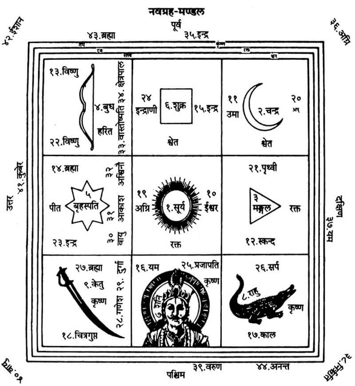
ईशानकोणमें किसी पीढ़ाके ऊपर वस्त्र बिछाकर उसपर नवग्रह-चक्र बनाये। फिर निम्न मन्त्रोंसे नवग्रहादि देवताओंका आवाहन, पूजन करे। अक्षत लेकर निम्न मन्त्रोंसे पृथक्-पृथक् ग्रहोंका आवाहन करे—
सूर्य—ॐ आ कृष्णेन रजसा वर्तमानो निवेशयन्नमृतं मर्त्यं च। हिरण्ययेन सविता रथेना देवो याति भुवनानि पश्यन्॥ अधिदेवताप्रत्यधिदेवतासहितं सूर्यमावाहयामि, स्थापयामि। मन्त्र पढ़कर अक्षत छोड़ दे।
चन्द्रमा—ॐ इमं देवा असपत्नÞसुवध्वं महते क्षत्राय महते ज्यैष्ठॺाय महते जानराज्यायेन्द्रस्येन्द्रियाय। इमममुष्य पुत्रममुष्यै पुत्रमस्यै विश एष वोऽमी राजा सोमोऽस्माकं ब्राह्मणानाÞ राजा॥ अधिदेवताप्रत्यधिदेवतासहितं सोममावाहयामि, स्थापयामि। मन्त्र पढ़कर अक्षत छोड़ दे।
मंगल—ॐ अग्निर्मूर्धा दिव: ककुत्पति: पृथिव्या अयम्। अपाÞ रेताÞ सि जिन्वति॥
अधिदेवताप्रत्यधिदेवतासहितं भौममावाहयामि, स्थापयामि। मन्त्र पढ़कर अक्षत छोड़ दे।
बुध—ॐ उद्बुध्यस्वाग्ने प्रति जागृहि त्वमिष्टापूर्ते सÞ सृजेथामयं च। अस्मिन्त्सधस्थे अध्युत्तरस्मिन् विश्वे देवा यजमानश्च सीदत॥
अधिदेवताप्रत्यधिदेवतासहितं बुधमावाहयामि, स्थापयामि। मन्त्र पढ़कर अक्षत छोड़ दे।
बृहस्पति—ॐ बृहस्पते अति यदर्यो अर्हाद् द्युमद्विभाति क्रतुमज्जनेषु।
यद्दीदयच्छवस ऋतप्रजात तदस्मासु द्रविणं धेहि चित्रम्।
उपयामगृहीतोऽसि बृहस्पतये त्वैष ते योनिर्बृहस्पतये त्वा॥
अधिदेवताप्रत्यधिदेवतासहितं बृहस्पतिमावाहयामि, स्थापयामि। मन्त्र पढ़कर अक्षत छोड़ दे।
शुक्र— ॐ अन्नात्परिस्रुतो रसं ब्रह्मणा व्यपिबत्क्षत्रं पय: सोमं प्रजापति:।
ऋतेन सत्यमिन्द्रियं विपानÞ शुक्रमन्धस इन्द्रस्येन्द्रियमिदं पयोऽमृतं मधु॥
अधिदेवताप्रत्यधिदेवतासहितं शुक्रमावाहयामि, स्थापयामि। मन्त्र पढ़कर अक्षत छोड़ दे।
शनि—ॐ शं नो देवीरभिष्टय आपो भवन्तु पीतये। शं योरभि स्रवन्तु न:॥
अधिदेवताप्रत्यधिदेवतासहितं शनैश्चरमावाहयामि, स्थापयामि। मन्त्र पढ़कर अक्षत छोड़ दे।
राहु—
ॐ कया नश्चित्र आ भुवदूती सदावृध: सखा। कया शचिष्ठया वृता॥
अधिदेवताप्रत्यधिदेवतासहितं राहुमावाहयामि, स्थापयामि। मन्त्र पढ़कर अक्षत छोड़ दे।
केतु—ॐ केतुं कृण्वन्नकेतवे पेशो मर्या अपेशसे। समुषद्भिरजायथा:॥
अधिदेवताप्रत्यधिदेवतासहितं केतुमावाहयामि, स्थापयामि। मन्त्र पढ़कर अक्षत छोड़ दे।
तदनन्तर निम्न मन्त्रोंको पढ़ते हुए पंचलोकपाल, वास्तोष्पति, क्षेत्रपाल तथा इन्द्रादि दस दिक्पालोंकी स्थापना करे और अक्षत छोड़े—
ॐ गणपत्यादिपञ्चलोकपालेभ्यो नम:, पञ्चलोकपालानावाहयामि, स्थापयामि।
ॐ वास्तोष्पतये नम:, वास्तोष्पतिमावाहयामि, स्थापयामि।
ॐ क्षेत्रपालाय नम:, क्षेत्रपालमावाहयामि, स्थापयामि।
ॐ इन्द्रादिदशदिक्पालेभ्यो नम:, दशदिक्पालानावाहयामि, स्थापयामि।
प्रतिष्ठा—अक्षत लेकर निम्न मन्त्रसे उक्त देवताओंकी प्रतिष्ठा करे—
ॐ मनो जूतिर्जुषतामाज्यस्य बृहस्पतिर्यज्ञमिमं तनोत्वरिष्टं यज्ञÞ समिमं दधातु। विश्वे देवास इह मादयन्तामो३म्प्रतिष्ठ॥
अधिदेवताप्रत्यधिदेवतासहिता: सूर्यादिनवग्रहा गणपत्यादिपञ्चलोकपालवास्तोष्पतिक्षेत्रपालेन्द्रादिदशदिक्पाला: सुप्रतिष्ठिता वरदा भवन्तु।
पूजन—गन्ध, पुष्प, धूप, दीप तथा नैवेद्य आदि उपचारोंसे नवग्रहादि देवोंका पूजन करे, तदनन्तर निम्न मन्त्रसे प्रार्थना करे—
ॐ ब्रह्मामुरारिस्त्रिपुरान्तकारी
भानु: शशी भूमिसुतो बुधश्च।
गुरुश्च शुक्र: शनिराहुकेतव:
सर्वे ग्रहा: शान्तिकरा भवन्तु॥
पूजाके अन्तमें बोले—अनेन यथालब्धोपचारपूजनेन सूर्याद्यनन्तान्तग्रहमण्डलदेवता: प्रीयन्ताम्, न मम।
धनिष्ठादि नक्षत्र देवतापूजन
वेदीके ईशानकोणपर ग्रहपीठके उत्तरकी ओर पाँच कलशाेंका तथा उनके उत्तर दिशामें एक कलश मृत्युञ्जय रुद्रके निमित्त भी स्थापित कर ले।१ पाँच कलशोंपर धनिष्ठा आदि पाँच नक्षत्रोंके अधिदेवताओं२ की स्थापनाके लिये स्वर्णकी प्रतिमा बनाकर अग्न्युत्तारणविधिसे उनकी प्राणप्रतिष्ठा आदि कर ले३ तथा उन प्रतिष्ठित प्रतिमाओंको कलशोंपर स्थापित कर दे। सामर्थ्यानुसार कुश अथवा सुपारीपर भी पूजन हो सकता है।
१. पूर्वमें स्थापित कलशके समान इन छहों कलशोंको भी स्थापित कर ले।
२. धनिष्ठादि पाँच नक्षत्रोंके अधिष्ठातृ देवताओंके नाम इस प्रकार हैं—
वसवो वरुणश्चैव अजैकपात्तृतीयकम्।
अहिर्बुध्न्यश्चतुर्थं च पूषाणं पञ्चमं तथा॥
३. अग्न्युत्तारण एवं प्राणप्रतिष्ठाकी विधि पुस्तकमें नारायणबलिप्रयोगमें दी गयी है।
कलशोंको पूर्व, पश्चिम, उत्तर, दक्षिण तथा मध्यमें स्थापित करे। पूर्वका कलश धनिष्ठा नक्षत्रके अधिष्ठाता वसु देवताओंका है। पश्चिमका कलश शतभिषा नक्षत्रके अधिष्ठाता वरुण देवताका है। इसी प्रकार उत्तर, दक्षिण तथा मध्यके कलश क्रमश: पूर्वाभाद्रपद नक्षत्रके स्वामी अजैकपाद्, उत्तराभाद्रपदके स्वामी अहिर्बुध्न्य तथा रेवतीके अधिष्ठाता पूषा देवताका है। स्थापित पाँच कलशोंपर निम्न रीतिसे वसु आदि देवताओंका आवाहन करे—
(१) वसुओंका आवाहन—हाथमें अक्षत लेकर निम्न मन्त्र पढ़कर पहले चतुष्कोणपर पूर्व दिशामें स्थापित कलशपर वसु देवताओंका आवाहन करे—
ॐ वसो: पवित्रमसि शतधारं वसो: पवित्रमसि सहस्रधारम्।
देवस्त्वा सविता पुनातु वसो: पवित्रेण शतधारेण सुप्वा कामधुक्ष:॥
ॐ भूर्भुव: स्व: धनिष्ठानक्षत्राधिष्ठातारो वसव इहागच्छत इह तिष्ठत ॐ वसुभ्यो नम:, वसून् आवाहयामि, स्थापयामि कहकर कलशपर स्थापित वसुओंकी प्रतिमापर अक्षत छोड़ दे।
(२) वरुणका आवाहन—पूर्वकी भाँति दूसरे चतुष्कोणपर रखे कलशपर स्थापित वरुणप्रतिमापर निम्न मन्त्र पढ़ते हुए अक्षत छोड़े—
ॐ वरुणस्योत्तम्भनमसि वरुणस्य स्कम्भसर्जनी स्थो वरुणस्य ऋतसदन्यसि।
वरुणस्य ऋतसदनमसि वरुणस्य ऋतसदनमा सीद॥
ॐ भूर्भुव: स्व: वरुणाय नम:, वरुणमावाहयामि, स्थापयामि। (अक्षत छोड़ दे)
(३) अजैकपाद्का आवाहन—तीसरे चतुष्कोणके कलशपर स्थापित अजैकपाद्की प्रतिमापर निम्न मन्त्र पढ़ते हुए अक्षत छोड़े—
ॐ उत नोऽहिर्बुध्न्य: शृणोत्वज एकपात्पृथिवी समुद्र:।
विश्वे देवा ऋतावृधो हुवाना स्तुता मन्त्रा: कविशस्ता अवन्तु॥
ॐ भूर्भुव: स्व: अजैकपदे नम:, अजैकपदमावाहयामि, स्थापयामि।
(४) अहिर्बुध्न्यका आवाहन—चौथे चतुष्कोणके कलशपर स्थापित अहिर्बुध्न्यकी प्रतिमापर निम्न मन्त्र पढ़ते हुए आवाहन करे और अक्षत छोड़े—
ॐ नमस्ते रुद्र मन्यव उतो त इषवे नम:। बाहुभ्यामुत ते नम:॥
ॐ भूर्भुव: स्व: अहिर्बुध्न्याय नम:, अहिर्बुध्न्यमावाहयामि, स्थापयामि।
(५) पूषाका आवाहन—अन्तिम पंचम कलशपर स्थापित पूषाकी प्रतिमापर निम्न मन्त्रसे आवाहन करे और अक्षत छोड़े—
ॐ पूषन् तव व्रते वयं न रिष्येम कदा चन। स्तोतारस्त इह स्मसि॥
ॐ भूर्भुव: स्व: पूष्णे नम:, पूषाणमावाहयामि, स्थापयामि।
नक्षत्रदेवताओंका पूजन एवं प्रार्थना
आवाहनके अनन्तर गन्धाक्षतादि उपचारोंसे पाँचों देवताओंका पूजन तथा प्रार्थना करे—
(१) धनिष्ठा नक्षत्रके देवता वसु—‘ॐ वसुभ्यो नम:’ इस मन्त्रसे यथालब्धोपचार पूजन करे तथा निम्न प्रार्थना करे—
ॐअधिष्ठात: धनिष्ठाया वसो तुभ्यं नमो नम:।
मृतस्याऽस्य प्रसादात्ते सद्गति: स्याच्छुभं च मे॥
(२) शतभिषा नक्षत्रके देवता वरुण—‘ॐ वरुणाय नम:’ इस मन्त्रसे यथालब्धोपचार पूजन करे तथा निम्न प्रार्थना करे—
ॐ अधिष्ठात: शतर्क्षस्य नमो वरुण चाऽस्तु ते।
पूजां मया कृतां भक्त्या गृहीत्वा सफलं कुरु॥
(३) पूर्वाभाद्रपद नक्षत्रके देवता अजैकपाद्—‘ॐ अजैकपदे नम:’ इस मन्त्रसे यथालब्धोपचार पूजन करे तथा निम्न प्रार्थना करे—
ॐ पूर्वाभाद्रपदाधीश नमस्तेऽजैकपात् प्रभो।
मृतस्य सद्गतिं कृत्वा मह्यं देहि शुभं फलम्॥
(४) उत्तराभाद्रपद नक्षत्रके देवता अहिर्बुध्न्य—‘ॐ अहिर्बुध्न्याय नम:’ इस मन्त्रसे यथालब्धोपचार पूजन करे तथा निम्न प्रार्थना करे—
ॐ उत्तराभाद्रपदाधीश अहिर्बुध्न्य नमोऽस्तु ते।
पूजया वरदो भूत्वा मृतस्य कुरु सद्गतिम्॥
(५) रेवती नक्षत्रके देवता पूषा—‘ॐ पूष्णे नम:’ इस मन्त्रसे यथालब्धोपचार पूजन करे तथा निम्न प्रार्थना करे—
ॐ नमस्ते रेवतीशान पूषन्तवमया कृताम्।
पूजां गृहीत्वा वरदो भव कुर्याच्च सद्गतिम्॥
पूजनके बाद समर्पण—अनया पूजया धनिष्ठादिपञ्चकनक्षत्रदेवता: प्रीयन्ताम्, न मम।
चौदह यमोंका स्थापन-पूजन—इस प्रकार नक्षत्रदेवताओंके पूजन-नमस्कारके बाद ईशान-कोणमें दक्षिणोत्तरक्रमसे चौदह यमोंका अक्षतपुंजोंपर सुपारी रखकर निम्न रीतिसे आवाहन-पूजन करे—
(१) ॐ भूर्भुव: स्व: यमाय नम:, यमम् आवाहयामि, स्थापयामि।
(२) ॐ भूर्भुव: स्व: धर्मराजाय नम:, धर्मराजम् आवाहयामि, स्थापयामि।
(३) ॐ भूर्भुव: स्व: मृत्यवे नम:, मृत्युम् आवाहयामि, स्थापयामि।
(४) ॐ भूर्भुव: स्व: अन्तकाय नम:, अन्तकम् आवाहयामि, स्थापयामि।
(५) ॐ भूर्भुव: स्व: वैवस्वताय नम:, वैवस्वतम् आवाहयामि, स्थापयामि।
(६) ॐ भूर्भुव: स्व: कालाय नम:, कालम् आवाहयामि, स्थापयामि।
(७) ॐ भूर्भुव: स्व: सर्वभूतक्षयाय नम:, सर्वभूतक्षयम् आवाहयामि, स्थापयामि।
(८) ॐ भूर्भुव: स्व: औदुम्बराय नम:, औदुम्बरम् आवाहयामि, स्थापयामि।
(९) ॐ भूर्भुव: स्व: दध्नाय नम:, दध्नम् आवाहयामि, स्थापयामि।
(१०) ॐ भूर्भुव: स्व: नीलाय नम:, नीलम् आवाहयामि, स्थापयामि।
(११) ॐ भूर्भुव: स्व: परमेष्ठिने नम:, परमेष्ठिनम् आवाहयामि, स्थापयामि।
(१२) ॐ भूर्भुव: स्व: वृकोदराय नम:, वृकोदरम् आवाहयामि, स्थापयामि।
(१३) ॐ भूर्भुव: स्व: चित्राय नम:, चित्रम् आवाहयामि, स्थापयामि।
(१४) ॐ भूर्भुव: स्व: चित्रगुप्ताय नम:, चित्रगुप्तम् आवाहयामि, स्थापयामि।
प्रतिष्ठा—अक्षत लेकर निम्न मन्त्रको पढ़ते हुए चौदहों यमोंपर अक्षत छोड़े।
ॐ मनो जूतिर्जुषतामाज्यस्य बृहस्पतिर्यज्ञमिमं तनोत्वरिष्टं यज्ञÞ समिमं दधातु।
विश्वे देवास इह मादयन्तामो३म्प्रतिष्ठ॥
तदनन्तर गन्ध, पुष्प, अक्षत आदिसे नाममन्त्रोंद्वारा पृथक्-पृथक् चौदह यमोंका पूजन करे—यमादिचित्रगुप्ताश्चतुर्दशयमा: सुप्रतिष्ठिता वरदा भवन्तु।
पूजनके बाद समर्पण—अनया पूजया चतुर्दशयमा: प्रीयन्ताम्, न मम।
मृत्युंजय-पूजन
यमोंके उत्तरकी ओर पहले स्थापित किये गये कलशपर मृत्युके अधिष्ठाता भगवान् मृत्युंजयका पूजन करे। मृत्युंजयकी स्वर्णकी प्रतिमाका अग्न्युत्तारण तथा प्राणप्रतिष्ठा कर ले और उस प्राणप्रतिष्ठित रुद्रप्रतिमाको कलशके ऊपर स्थापित कर आवाहन-पूजन करे।
निम्न मन्त्र पढ़कर अक्षत छोड़ते हुए आवाहन करे—
ॐ त्र्यम्बकं यजामहे सुगन्धिं पुष्टिवर्धनम्।
उर्वारुकमिव बन्धनान्मृत्योर्मुक्षीय मामृतात्॥
तदनन्तर ॐ भूर्भुव: स्व: मृत्युञ्जयाय नम:, मृत्युञ्जयम् आवाहयामि, स्थापयामि। मृत्युञ्जय सुप्रतिष्ठितो वरदो भव—कहकर प्रतिष्ठा करे।
पूजन-प्रार्थना—ॐ भूर्भुव: स्व: मृत्युञ्जयाय नम:—इस मन्त्रसे गन्ध, अक्षत, पुष्प आदिसे पूजनकर निम्न रीतिसे उनकी प्रार्थना करे—
ॐ हस्ताम्भोजयुगस्थकुम्भयुगला-
दुद्धृत्य तोयं शिर:
सिंचन्तं करयोर्युगेन दधतं
स्वाङ्के सकुम्भौ करौ।
अक्षस्रङ्मृगहस्तमम्बुजगतं
मूर्द्धस्थचन्द्रस्रवत्
पीयूषार्द्रतनुं भजे सगिरिजं
त्र्यक्षं च मृत्युञ्जयम्॥
समर्पण—अनया पूजया मृत्युञ्जय: प्रीयताम्, न मम।
पंचसूक्तपाठके लिये ब्राह्मण-वरण
दाहिने हाथमें त्रिकुश, अक्षत, जल तथा वरणसामग्री लेकर निम्न संकल्प करे—
वरणसंकल्प—ॐ अद्य पूर्वोच्चारितग्रहगणगुणविशेषणविशिष्टायां शुभपुण्यतिथौ .....गोत्र: .....शर्मा/वर्मा/गुप्तोऽहमस्मिन् धनिष्ठादिपञ्चकशान्तिकर्मणि सपरिवारस्य मम गृहे दीर्घायुरारोग्यशुभतासिद्ध्यर्थं तत्तन्नक्षत्राधिष्ठातृदेवसूक्तानां (तत्तन्मन्त्राणां वा) जपकर्तृत्वेन विविधगोत्रान् विविधनामधेयान् ब्राह्मणान् युष्मान् एभिर्वरणद्रव्यैर्वृणे।
पंचसूक्त अथवा पंचमन्त्र जापक पाँच ब्राह्मणोंका (अथवा लाघव करना हो तो एक ब्राह्मणके द्वारा भी किया जा सकता है।) गन्धादि उपचारसे पूजन कर वरणसामग्रीद्वारा उनका वरण कर संकल्पजल और वरणसामग्री दे दे।
ब्राह्मण बोलें—वृता: स्म:।
वरण करके प्रार्थना करे—यथाविधिसूक्तानि पठध्वं वा तत्तन्मन्त्रान् जपध्वम्।
वृत ब्राह्मण आचमन-प्राणायाम करके सूक्तोंका पाठ या मन्त्रोंका जप प्रारम्भ कर दें।
पाँच कलशोंके पाँच सूक्त
प्रथम कलशमन्त्र
ॐ कृणुष्व पाज: प्रसितिं न पृथ्वीं याहि राजेवामवाँ२ इभेन।
तृष्वीमनु प्रसितिं द्रूणानोऽस्ताऽसि विध्य रक्षसस्तपिष्ठै:॥
तव भ्रमास आशुया पतन्त्यनुस्पृश धृषता शोशुचान:।
तपूÞष्यग्ने जुह्वा पतङ्गानसन्दितो वि सृज विष्वगुल्का:॥
प्रति स्पशो वि सृज तूर्णितमो भवा पायुर्विशो अस्या अदब्ध:।
यो नो दूरे अघशÞसो यो अन्त्यग्ने मा किष्टे व्यथिरा दधर्षीत्॥
उदग्ने तिष्ठ प्रत्या तनुष्व न्यमित्राँ२ ओषतात्तिग्महेते।
यो नो अरातिÞ समिधान चक्रे नीचा तं धक्ष्यतसं न शुष्कम्॥
ऊर्ध्वो भव प्रति विध्याध्यस्मदाविष्कृणुष्व दैव्यान्यग्ने।
अव स्थिरा तनुहि यातुजूनां जामिमजामिं प्र मृणीहि शत्रून्। अग्नेष्ट्वा तेजसा सादयामि॥
(शु०यजु० १३।९—१३)
अनेन रक्षोघ्नसूक्तपाठाख्येन कर्मणा वसव: प्रीयन्ताम्, न मम।
द्वितीय कलशमन्त्र
ॐ बिभ्राड् बृहत्पिबतु सोम्यं मध्वायुर्दधद्यज्ञपतावविह्रुतम्।
वातजूतो यो अभिरक्षति त्मना प्रजा: पुपोष पुरुधा वि राजति॥
उदु त्यं जातवेदसं देवं वहन्ति केतव:। दृशे विश्वाय सूर्यम्॥
येना पावक चक्षसा भुरण्यन्तं जनाँ२ अनु। त्वं वरुण पश्यसि॥
दैव्यावध्वर्यू आ गतÞ रथेन सूर्यत्वचा। मध्वा यज्ञÞ समञ्जाथे॥
तं प्रत्नथा ऽयं वेनश्चित्रं देवानाम्॥
आ न इडाभिर्विदथे सुशस्ति विश्वानर: सविता देव एतु।
अपि यथा युवानो मत्सथा नो विश्वं जगदभिपित्वे मनीषा॥
यदद्य कच्च वृत्रहन्नुदगा अभि सूर्य। सर्वं तदिन्द्र ते वशे॥
तरणिर्विश्वदर्शतो ज्योतिष्कृदसि सूर्य। विश्वमा भासि रोचनम्॥
तत्सूर्यस्य देवत्वं तन्महित्वं मध्या कर्तोर्विततÞ सं जभार।
यदेदयुक्त हरित: सधस्थादाद्रात्री वासस्तनुते सिमस्मै॥
तन्मिन्त्रस्य वरुणस्याभिचक्षे सूर्यो रूपं कृणुते द्योरुपस्थे।
अनन्तमन्यद्रुशदस्य पाज: कृष्णमन्यद्धरित: सं भरन्ति॥
बण्महाँ२ असि सूर्य बडादित्य महाँ२ असि।
महस्ते सतो महिमा पनस्यतेऽद्धा देव महाँ२ असि॥
बट् सूर्य श्रवसा महाँ२ असि सत्रा देव महाँ२ असि।
मह्ना देवानामसूर्य: पुरोहितो विभु ज्योतिरदाभ्यम्॥
श्रायन्तऽ इव सूर्यं विश्वेदिन्द्रस्य भक्षत।
वसूनि जाते जनमान ओजसा प्रति भागं न दीधिम॥
अद्या देवा उदिता सूर्यस्य निरÞहंस: पिपृता निरवद्यात्।
तन्नो मित्रो वरुणो मामहन्तामदिति: सिन्धु: पृथिवी उत द्यौ:॥
आ कृष्णेन रजसा वर्तमानो निवेशयन्नमृतं मर्त्यं च।
हिरण्ययेन सविता रथेना देवो याति भुवनानि पश्यन्॥
(शु०यजु० ३३।३०—४३)
अनेन सूर्यसूक्तपाठाख्येन कर्मणा वरुण: प्रीयताम्, न मम।
तृतीय कलशमन्त्र
ॐ आशु: शिशानो वृषभो न भीमो घनाघन: क्षोभणश्चर्षणीनाम्।
संक्रन्दनोऽनिमिष एकवीर: शतÞ सेना अजयत् साकमिन्द्र:॥
संक्रन्दनेनानिमिषेण जिष्णुना युत्कारेण दुश्च्यवनेन धृष्णुना।
तदिन्द्रेण जयत तत्सहध्वं युधो नर इषुहस्तेन वृष्णा॥
स इषुहस्तै: स निषङ्गिभिर्वशी सÞस्रष्टा स युध इन्द्रो गणेन।
सÞसृष्टजित्सोमपा बाहुशर्घ्युग्रधन्वा प्रतिहिताभिरस्ता॥
बृहस्पते परि दीया रथेन रक्षोहाऽमित्राँ२ अपबाधमान:।
प्रभञ्जन्त्सेना: प्रमृणो युधा जयन्नस्माकमेध्यविता रथानाम्॥
बलविज्ञाय स्थविर: प्रवीर: सहस्वान् वाजी सहमान उग्र:।
अभिवीरो अभिसत्वा सहोजा जैत्रमिन्द्र रथमा तिष्ठ गोवित्॥
गोत्रभिदं गोविदं वज्रबाहुं जयन्तमज्म प्रमणन्तमोजसा।
इमÞ सजाता अनु वीरयध्वमिन्द्रÞ सखायो अनु सÞ रभध्वम्॥
अभि गोत्राणि सहसा गाहमानोऽदयो वीर: शतमन्युरिन्द्र:।
दुश्च्यवन: पृतनाषाडयुध्योऽस्माकÞ सेना अवतु प्र युत्सु॥
इन्द्र आसां नेता बृहस्पतिर्दक्षिणा यज्ञ: पुर एतु सोम:।
देवसेनानामभिभञ्जतीनां जयन्तीनां मरुतो यन्त्वग्रम्॥
इन्द्रस्य वृष्णो वरुणस्य राज्ञ आदित्यानां मरुताÞ शर्ध उग्रम्।
महामनसां भुवनच्यवानां घोषो देवानां जयतामुदस्थात्॥
उद्धर्षय मघवन्नायुधान्युत्सत्वनां मामकानां मनाÞसि।
उद्वृत्रहन् वाजिनां वाजिनान्युद्रथानां जयतां यन्तु घोषा:॥
अस्माकमिन्द्र: समृतेषु ध्वजेष्वस्माकं या इषवस्ता जयन्तु।
अस्माकं वीरा उत्तरे भवन्त्वस्माँ२ उ देवा अवता हवेषु॥
अमीषां चित्तं प्रतिलोभयन्ती गृहाणाङ्गान्यप्वे परेहि।
अभि प्रेहि निर्दह हृत्सु शोकैरन्धेनामित्रास्तमसा सचन्ताम्॥
अवसृष्टा परा पत शरव्ये ब्रह्मसÞशिते।
गच्छामित्रान् प्र पद्यस्व माऽमीषां कं चनोच्छिष:॥
प्रेता जयता नर इन्द्रो व: शर्म यच्छतु।
उग्रा व: सन्तु बाहवोऽनाधृष्या यथाऽसथ॥
असौ या सेना मरुत: परेषामभ्यैति न ओजसा स्पर्धमाना।
तां गूहत तमसाऽपव्रतेन यथाऽमी अन्यो अन्यं न जानन्॥
यत्र बाणा: सम्पतन्ति कुमारा विशिखा इव।
तन्न इन्द्रो बृहस्पतिरदिति: शर्म यच्छतु विश्वाहा शर्म यच्छतु॥
मर्माणि ते वर्मणा छादयामि सोमस्त्वा राजाऽमृतेनानुवस्ताम्।
उरोर्वरीयो वरुणस्ते कृणोतु जयन्तं त्वाऽनु देवा मदन्तु॥
(शु०यजु० १७।३३—४९)
अनेन अप्रतिरथसूक्तपाठाख्येन कर्मणा अजैकपाद् प्रीयताम्, न मम।
चतुर्थ कलशमन्त्र
ॐ नमस्ते रुद्र मन्यव उतो त इषवे नम:।
बाहुभ्यामुत ते नम:॥
या ते रुद्र शिवा तनूरघोराऽपापकाशिनी।
तया नस्तन्वा शन्तमया गिरिशन्ताभि चाकशीहि॥
यामिषुं गिरिशन्त हस्ते बिभर्ष्यस्तवे।
शिवां गिरित्र तां कुरु मा हिÞसी: पुरुषं जगत्॥
शिवेन वचसा त्वा गिरिशाच्छा वदामसि।
यथा न: सर्वमिज्जगदयक्ष्मÞसुमना असत्॥
अध्यवोचदधिवक्ता प्रथमो दैव्यो भिषक्।
अहीँश्च सर्वाञ्जम्भयन्त्सर्वाश्च यातुधान्योऽधराची: परा सुव॥
असौ यस्ताम्रो अरुण उत बभ्रु: सुमङ्गल:।
ये चैनÞरुद्रा अभितो दिक्षु श्रिता: सहस्रशोऽवैषाÞहेड ईमहे॥
असौ योऽवसर्पति नीलग्रीवो विलोहित:।
उतैनं गोपा अदृश्रन्नदृश्रन्नुदहार्य: स दृष्टो मृडयाति न:॥
नमोऽस्तु नीलग्रीवाय सहस्राक्षाय मीढुषे।
अथो ये अस्य सत्वानोऽहं तेभ्योऽकरं नम:॥
प्रमुञ्च धन्वनस्त्वमुभयोरार्त्न्योर्ज्याम्।
याश्च ते हस्त इषव: परा ता भगवो वप॥
विज्यं धनु: कपर्दिनो विशल्यो बाणवाँ२ उत।
अनेशन्नस्य या इषव आभुरस्य निषङ्गधि:॥
या ते हेतिर्मीढुष्टम हस्ते बभूव ते धनु:।
तयाऽस्मान्विश्वतस्त्वमयक्ष्मया परि भुज॥
परि ते धन्वनो हेतिरस्मान्वृणक्तु विश्वत:।
अथो य इषुधिस्तवारे अस्मन्नि धेहि तम्॥
अवतत्य धनुष्ट्वÞसहस्राक्ष शतेषुधे।
निशीर्य शल्यानां मुखा शिवो न: सुमना भव॥
नमस्त आयुधायानातताय धृष्णवे।
उभाभ्यामुत ते नमो बाहुभ्यां तव धन्वने॥
मा नो महान्तमुत मा नो अर्भकं मा न उक्षन्तमुत मा न उक्षितम्।
मा नो वधी: पितरं मोत मातरं मा न: प्रियास्तन्वो रुद्र रीरिष:॥
मा नस्तोके तनये मा न आयुषि मा नो गोषु मा नो अश्वेषु रीरिष:।
मा नो वीरान् रुद्र भामिनो वधीर्हविष्मन्त: सदमित् त्वा हवामहे॥
(शु०यजु० १६।१—१६)
अनेन रुद्रसूक्तपाठाख्येन कर्मणा अहिर्बुध्न्य: प्रीयताम्, न मम।
पंचम कलशमन्त्र
ॐ ऋचं वाचं प्र पद्ये मनो यजु: प्र पद्ये सामं प्राणं प्र पद्ये चक्षु: श्रोत्रं प्र पद्ये।
वागोज: सहौजो मयि प्राणापानौ॥
यन्मे छिद्रं चक्षुषो हृदयस्य मनसो वातितृण्णं बृहस्पतिर्मे तद्दधातु।
शं नो भवतु भुवनस्य यस्पति:॥
भूर्भुव: स्व: तत्सवितुर्वरेण्यं भर्गो देवस्य धीमहि।
धियो यो न: प्रचोदयात् ॥
कया नश्चित्र आ भुवदूती सदावृध: सखा।
कया शचिष्ठया वृता॥
कस्त्वा सत्यो मदानां मÞहिष्ठो मत्सदन्धस:। दृढा चिदारुजे वसु॥
अभी षु ण: सखीनामविता जरितृणाम्। शतं भवास्यूतिभि:॥
कया त्वं न ऊत्याभि प्र मन्दसे वृषन्। कया स्तोतृभ्य आ भर॥
इन्द्रो विश्वस्य राजति। शं नो अस्तु द्विपदे शं चतुष्पदे॥
शं नो मित्र: शं वरुण: शं नो भवत्वर्यमा। शं न इन्द्रो बृहस्पति: शं नो विष्णुरुरुक्रम:॥
शं नो वात: पवताÞ शं नस्तपतु सूर्य:। शं न कनिक्रदद्देव: पर्जन्यो अभि वर्षतु॥
अहानि शं भवन्तु न: शÞ रात्री: प्रति धीयताम्। शं न इन्द्राग्नी भवतामवोभि: शं न इन्द्रावरुणा रातहव्या।
शं न इन्द्रापूषणा वाजसातौ शमिन्द्रासोमा सुविताय शं यो:॥
शं नो देवीरभिष्टय आपो भवन्तु पीतये। शं योरभि स्रवन्तु न:॥
स्योना पृथिवि नो भवानृक्षरा निवेशनी। यच्छा न: शर्म सप्रथा:॥
आपो हि ष्ठा मयोभुवस्ता न ऊर्जे दधातन। महे रणाय चक्षसे॥
यो व: शिवतमो रसस्तस्य भाजयतेह न:। उशतीरिव मातर:॥
तस्मा अरं गमाम वो यस्य क्षयाय जिन्वथ। आपो जनयथा च न:॥
द्यौ: शान्तिरन्तरिक्षÞशान्ति: पृथिवी शान्तिराप: शान्तिरोषधय: शान्ति:।
वनस्पतय: शान्तिर्विश्वे देवा: शान्तिर्ब्रह्म शान्ति: सर्वÞ
शान्ति: शान्तिरेव शान्ति: सा मा शान्तिरेधि॥
दृते दृÞह मा मित्रस्य मा चक्षुषा सर्वाणि भूतानि समीक्षन्ताम्। मित्रस्याहं चक्षुषा सर्वाणि भूतानि समीक्षे। मित्रस्य चक्षुषा समीक्षामहे॥
दृते दृÞह मा। ज्योक्ते सन्दृशि जीव्यासं ज्योक्ते सन्दृशि जीव्यासम्॥
नमस्ते हरसे शोचिषे नमस्ते अस्त्वर्चिषे।
अन्याँस्ते अस्मत्तपन्तु हेतय: पावको अस्मभ्यÞ शिवो भव॥
नमस्ते अस्तु विद्युते नमस्ते स्तनयित्नवे। नमस्ते भगवन्नस्तु यत: स्व: समीहसे॥
यतो यत: समीहसे ततो नो अभयं कुरु। शं न: कुरु प्रजाभ्योऽभयं न: पशुभ्य:॥
सुमित्रिया न आप ओषधय: सन्तु दुर्मित्रियास्तस्मै सन्तु योऽस्मान् द्वेष्टि यं च वयं द्विष्म:॥
तच्चक्षुर्देवहितं पुरस्ताच्छुक्रमुच्चरत्। पश्येम शरद: शतं जीवेम शरद: शतÞ शृणुयाम शरद: शतं प्र ब्रवाम शरद: शतमदीना: स्याम शरद: शतं भूयश्च शरद: शतात्॥
(शु०यजु० ३६।१—२४)
अनेन शान्तिसूक्तपाठाख्येन कर्मणा पूषा प्रीयताम्, न मम।
हवन-विधान
हवनकर्मके लिये ब्रह्माका वरण कर ले। पाँच नक्षत्रोंके अधिष्ठाता देवताओंके साथ ही सभी आवाहित देवताओंको आहुति प्रदान करे। हवनसे पूर्व कुशकण्डिका-विधान कर ले।*
* कुशकण्डिका-विधान यहाँ संक्षेपमें दिया है। इसकी पूरी विधि परिशिष्ट में दी गयी है।
पूर्वमें वेदीपर अग्नि स्थापित हुई है। अत: कुशास्तरण कर ले। वेदीके पूर्व उत्तराग्र तीन कुश रखे। इसी प्रकार दक्षिण भागमें पूर्वाग्र तीन कुश या दूर्वा रखे। पश्चिम भागमें उत्तराग्र तीन कुश रखे। उत्तर भागमें पूर्वाग्र तीन कुश रखे। यज्ञीय सामग्रियोंको यथास्थान रख ले। वरद नामक अग्निका ध्यान करे और गन्ध-पुष्पादिसे संक्षेपमें पूजन कर ले। तदनन्तर हवन करे—
कर्ता दाहिने घुटनेको भूमिसे लगाकर जलती हुई अग्निमें निम्न रीतिसे आहुति दे। सर्वप्रथम आघाराज्य-होम करे। ये चार आहुतियाँ घीसे दी जायँगी।
आघार होम—(१) ॐ प्रजापतये स्वाहा, इदं प्रजापतये न मम। मनमें बोलकर घीकी आहुति दे और स्रुवामें बचे हुए घीकी एक बूँद प्रोक्षणीमें डाले।
(२) ॐ इन्द्राय स्वाहा, इदमिन्द्राय न मम। मनमें बोलकर घीकी आहुति दे और स्रुवामें बचे हुए घीकी एक बूँद प्रोक्षणीमें डाले।
आज्यहोम—(३) ॐ अग्नये स्वाहा, इदमग्नये न मम। बोलकर घीकी आहुति दे और स्रुवामें बचे हुए घीकी एक बूँद प्रोक्षणीमें डाले।
(४) ॐ सोमाय स्वाहा, इदं सोमाय न मम। बोलकर घीकी आहुति दे और स्रुवामें बचे हुए घीकी एक बूँद प्रोक्षणीमें डाले।
तदनन्तर घीसे वराहुति प्रदान करे—
वराहुति—
ॐ गणानां त्वा गणपतिÞ हवामहे प्रियाणां त्वा प्रियपतिÞ हवामहे निधीनां त्वा निधिपतिॸहवामहे वसो मम। आहमजानि गर्भधमा त्वमजासि गर्भधम्॥ स्वाहा॥
ॐ अम्बे अम्बिकेऽम्बालिके न मा नयति कश्चन। ससस्त्यश्वक: सुभद्रिकां काम्पीलवासिनीम्॥ स्वाहा॥
यजमान हाथमें जल लेकर द्रव्य-त्यागके लिये बोले—अस्मिन् होमकर्मणि या या यक्ष्यमाणदेवता ताभ्यस्ताभ्य इमं हवनीयद्रव्यं परित्यक्तं यथादैवतम् अस्तु, न मम।
नवग्रहादि होम
प्रत्येक देवताओंको नवग्रहोंकी लकड़ी१ के साथ शाकल्यसे२ एक-एक या आठ-आठ आहुतियाँ दे।
१. अर्क: पलाशखदिरावपामार्गोऽथ पिप्पल:।
औदुम्बर: शमी दूर्वा कुशाश्च समिध: क्रमात्॥
(मत्स्यपु० ९३।२७)
मदार, पलाश, खैर, चिचिड़ा, पीपल, गूलर, शमी, दूब और कुश—ये क्रमश: सूर्य, चन्द्र, मंगल, बुध, बृहस्पति, शुक्र, शनि, राहु और केतु ग्रहोंकी समिधाएँ हैं।
२. समित्तिलचर्वाज्यद्रव्यै: सूर्यादिग्रहाणामेकैकाहुतिर्दातव्या। (बृहत्प्रेतमञ्जरी)
सूर्य—
ॐ आ कृष्णेन रजसा वर्तमानो निवेशयन्नमृतं मर्त्यं च।
हिरण्ययेन सविता रथेना देवो याति भुवनानि पश्यन्॥
अधिदेवताप्रत्यधिदेवतासहिताय सूर्याय स्वाहा।
चन्द्र—
ॐ इमं देवा असपत्नÞ सुवध्वं महते क्षत्राय महते ज्यैष्ठॺाय महते जानराज्यायेन्द्रस्येन्द्रियाय। इमममुष्य पुत्रममुष्यै पुत्रमस्यै विश एष वोऽमी राजा सोमोऽस्माकं ब्राह्मणानाÞराजा॥
अधिदेवताप्रत्यधिदेवतासहिताय सोमाय स्वाहा।
मंगल—
ॐ अग्निर्मूर्धा दिव: ककुत्पति: पृथिव्या अयम्। अपाÞ रेताÞसि जिन्वति॥
अधिदेवताप्रत्यधिदेवतासहिताय भौमाय स्वाहा।
बुध—
ॐ उद्बुध्यस्वाग्ने प्रति जागृहि त्वमिष्टापूर्ते सÞ सृजेथामयं च। अस्मिन्त्सधस्थे अध्युत्तरस्मिन् विश्वे देवा यजमानश्च सीदत॥
अधिदेवताप्रत्यधिदेवतासहिताय बुधाय स्वाहा।
बृहस्पति—
ॐ बृहस्पते अति यदर्यो अर्हाद् द्युमद्विभाति क्रतुमज्जनेषु। यद्दीदयच्छवस ऋतप्रजात तदस्मासु द्रविणं धेहि चित्रम्। उपयामगृहीतोऽसि बृहस्पतये त्वैष ते योनिर्बृहस्पतये त्वा॥
अधिदेवताप्रत्यधिदेवतासहिताय बृहस्पतये स्वाहा।
शुक्र—
ॐ अन्नात्परिस्रुतो रसं ब्रह्मणा व्यपिबत् क्षत्रं पय: सोमं प्रजापति:। ऋतेन सत्यमिन्द्रियं विपानÞ शुक्रमन्धस इन्द्रस्येन्द्रियमिदं पयोऽमृतं मधु॥
अधिदेवताप्रत्यधिदेवतासहिताय शुक्राय स्वाहा।
शनि—
ॐ शं नो देवीरभिष्टय आपो भवन्तु पीतये। शं योरभि स्रवन्तु न:॥
अधिदेवताप्रत्यधिदेवतासहिताय शनैश्चराय स्वाहा।
राहु—
ॐ कया नश्चित्र आ भुवदूती सदावृध: सखा। कया शचिष्ठया वृता॥
अधिदेवताप्रत्यधिदेवतासहिताय राहवे स्वाहा।
केतु—
ॐ केतुं कृण्वन्नकेतवे पेशो मर्या अपेशसे। समुषद्भिरजायथा:॥
अधिदेवताप्रत्यधिदेवतासहिताय केतवे स्वाहा।
पंचलोकपाल, वास्तोष्पति, क्षेत्रपाल तथा दिक्पाल—ॐ गणपत्यादिपञ्चलोकपालेभ्य: स्वाहा। ॐ वास्तोष्पतये स्वाहा। ॐ क्षेत्रपालाय स्वाहा। ॐ इन्द्रादिदशदिक्पालेभ्य: स्वाहा।
नक्षत्रोंके अधिष्ठाता देवों तथा मृत्युंजयके निमित्त हवन—जिस नक्षत्रमें निधन हुआ हो सर्वप्रथम उस नक्षत्रके देवताको १०८ तथा अन्य देवताओंको २८ अथवा आठ-आठ आहुति शाकल्यसे दे*—
* यस्मिन्नक्षत्रे मरणं जातं तन्नक्षत्रदेवतायाः प्रधानत्वात्प्रथममष्टोत्तरशतं जुहुयात्, अन्येषां चतुर्णां अष्टाविंशतिमष्टौ वा जुहुयात्॥ (बृहत्प्रेतमंजरी)
वसु—
ॐ वसो: पवित्रमसि शतधारं वसो: पवित्रमसि सहस्रधारम्। देवस्त्वा सविता पुनातु वसो: पवित्रेण शतधारेण सुप्वा कामधुक्ष:॥ वसवे स्वाहा॥
वरुण—
ॐ वरुणस्योत्तम्भनमसि वरुणस्य स्कम्भसर्जनी स्थो वरुणस्य ऋतसदन्यसि। वरुणस्य ऋतसदनमसि वरुणस्य ऋतसदनमा सीद॥ वरुणाय स्वाहा॥
अजैकपाद्—
ॐ उत नोऽहिर्बुध्न्य: शृणोत्वज एकपात्पृथिवी समुद्र:। विश्वे देवा ऋतावृधो हुवाना स्तुता मन्त्रा: कविशस्ता अवन्तु॥ अजैकपदे स्वाहा॥
अहिर्बुध्न्य—
ॐ नमस्ते रुद्र मन्यव उतो त इषवे नम:। बाहुभ्यामुत ते नम:॥ अहिर्बुध्न्याय स्वाहा॥
पूषा—
ॐ पूषन् तव व्रते वयं न रिष्येम कदा चन। स्तोतारस्त इह स्मसि॥ पूष्णे स्वाहा॥
मृत्युञ्जय—
ॐ त्र्यम्बकं यजामहे सुगन्धिं पुष्टिवर्धनम्। उर्वारुकमिव बन्धनान्मृत्योर्मुक्षीय मामृतात् ॥ मृत्युञ्जयाय स्वाहा॥
चतुर्दश यम-हवन
(१) ॐ यमाय स्वाहा, (२) ॐ धर्मराजाय स्वाहा, (३) ॐ मृत्यवे स्वाहा, (४) ॐ अन्तकाय स्वाहा, (५) ॐ वैवस्वताय स्वाहा, (६) ॐ कालाय स्वाहा, (७) ॐ सर्वभूतक्षयाय स्वाहा, (८) ॐ औदुम्बराय स्वाहा, (९) ॐ दध्नाय स्वाहा, (१०) ॐ नीलाय स्वाहा, (११) ॐ परमेष्ठिने स्वाहा, (१२) ॐ वृकोदराय स्वाहा, (१३) ॐ चित्राय स्वाहा तथा (१४) ॐ चित्रगुप्ताय स्वाहा।
फिर घीसे निम्न मन्त्रद्वारा १६ आहुतियाँ दे—
ॐ यमाय त्वाऽङ्गिरस्वते पितृमते स्वाहा। स्वाहा घर्माय स्वाहा घर्म: पित्रे॥ स्वाहा॥
इसके बाद निम्न मन्त्रोंसे आहुति दे—
ॐ शं नो देवीरभिष्टय आपो भवन्तु पीतये। शं योरभि स्रवन्तु न:॥ स्वाहा॥
ॐ आपो हि ष्ठा मयोभुवस्ता न ऊर्जे दधातन। महे रणाय चक्षसे॥ स्वाहा॥
ॐ यो व: शिवतमो रसस्तस्य भाजयतेह न:। उशतीरिव मातर:॥ स्वाहा॥
ॐ तस्मा अरं गमाम वो यस्य क्षयाय जिन्वथ। आपो जनयथा च न:॥ स्वाहा॥
ॐ तत्सवितुवर्रेण्यं भर्गो देवस्य धीमहि। धियो यो न: प्रचोदयात्॥ स्वाहा॥
ॐ द्यौ: शान्तिरन्तरिक्षÞ शान्ति: पृथिवी शान्तिराप: शान्तिरोषधय: शान्ति:। वनस्पतय:शान्तिर्विश्वे देवा: शान्तिर्ब्रह्म शान्ति: सर्वÞ शान्ति: शान्तिरेव शान्ति: सा मा शान्तिरेधि॥ स्वाहा॥
ॐ युञ्जन्ति ब्रध्नमरुषं चरन्तं परि तस्थुष:। रोचन्ते रोचना दिवि ॥ स्वाहा॥
ॐ युञ्जन्त्यस्य काम्या हरी विपक्षसा रथे। शोणा धृष्णू नृवाहसा॥ स्वाहा॥
ॐ यद्वातो अपो अगनीगन्प्रियामिन्द्रस्य तन्वम्। एतÞ स्तोतरनेन पथा पुनरश्वमावर्तयासि न:॥ स्वाहा॥
ॐ वसवस्त्वाञ्जन्तु गायत्रेण छन्दसा रुद्रास्त्वाञ्जन्तु त्रैष्टुभेन छन्दसा ऽऽदित्यास्त्वाञ्जन्तु जागतेन छन्दसा। भूर्भुव:स्वर्लाजी३ञ्छाची३न्यव्ये गव्य एतदन्नमत्त देवा एतदन्नमद्धि प्रजापते॥ स्वाहा॥
ॐ क: स्विदेकाकी चरति क उ स्विज्जायते पुन:। किÞ स्विद्धिमस्य भेषजं किम्वावपनं महत्॥ स्वाहा॥
ॐ सूर्य एकाकी चरति चन्द्रमा जायते पुन:। अग्निर्हिमस्य भेषजं भूमिरावपनं महत् ॥ स्वाहा॥
ॐ का स्विदासीत्पूर्वचित्ति: किÞ स्विदासीद् बृहद्वय:। का स्विदासीत्पिलिप्पिला का स्विदासीत्पिशङ्गिला॥ स्वाहा॥
ॐ द्यौरासीत्पूर्वचित्तिरश्व आसीद् बृहद्वय:। अविरासीत्पिलिप्पिला रात्रिरासीत्पिशङ्गिला॥ स्वाहा॥
आवाहित देवताओंका होम
ॐ गणानां त्वा गणपतिÞ हवामहे प्रियाणां त्वा प्रियपतिÞ हवामहे निधीनां त्वा निधिपतिÞ हवामहे वसो मम। आहमजानि गर्भधमा त्वमजासि गर्भधम्॥ स्वाहा॥
ॐ अम्बे अम्बिकेऽम्बालिके न मा नयति कश्चन। ससस्त्यश्वक: सुभद्रिकां काम्पीलवासिनीम्॥ स्वाहा॥
ॐ तत्त्वा यामि ब्रह्मणा वन्दमानस्तदा शास्ते यजमानो हविर्भि:। अहेडमानो वरुणेह बोध्युरुशॸस मा न आयु: प्र मोषी:॥ वरुणाय स्वाहा॥
ॐ आवाहितदेवताभ्य: स्वाहा।
ॐ स्थानदेवताभ्य: स्वाहा।
ॐ कुलदेवताभ्य: स्वाहा।
ॐ सर्वेभ्यो देवेभ्य: स्वाहा।
अग्निपूजन
ॐ अग्ने नय सुपथा राये अस्मान्विश्वानि देव वयुनानि विद्वान्। युयोध्यस्मज्जुहुराणमेनो भूयिष्ठां ते नम उक्तिं विधेम॥
स्वाहास्वधायुताय वरदनामाग्नये नम:। इस मन्त्रसे गन्धाक्षतपुष्पादिद्वारा अग्निकी पूजा करे।
स्विष्टकृत् होम
चरु, तिलादि द्रव्य तथा घीको स्रुवामें लेकर खड़ा हो जाय। अग्नये स्विष्टकृते स्वाहा, इदमग्नये स्विष्टकृते, न मम। कहकर आहुति दे।
हवनसे बचे हुए स्रुवाके घीको प्रोक्षणीपात्रमें छोड़ दे।
नवाहुति
नवाहुति बैठकर प्रदान करे—
ॐ भू: स्वाहा, इदमग्नये न मम।
ॐ भुव: स्वाहा, इदं वायवे न मम।
ॐ स्व: स्वाहा, इदं सूर्याय न मम।
ॐ त्वं नो अग्ने वरुणस्य विद्वान् देवस्य हेडो अव यासिसीष्ठा:। यजिष्ठो वह्नितम: शोशुचानो विश्वा द्वेषाÞसि प्र मुमुग्ध्यस्मत्॥ स्वाहा॥ इदमग्नीवरुणाभ्यां न मम।
ॐ स त्वं नो अग्नेऽवमो भवोती नेदिष्ठो अस्या उषसो व्युष्टौ। अव यक्ष्व नो वरुणÞ रराणो व्रीहि मृडीकÞ सुहवो न एधि॥ स्वाहा॥ इदमग्नीवरुणाभ्यां न मम।
ॐ अयाश्चाग्नेऽस्यनभिशस्तिपाश्च सत्यमित्वमयाऽअसि। अया नो यज्ञं व्वहास्यया नो धेहि भेषजॸ॥ स्वाहा॥ इदमग्नयेऽयसे न मम।
ॐ येते शतं वरुण ये सहस्रं यज्ञिया: पाशाविततामहान्त:। तेभिर्नोऽअद्य सवितोत विष्णुर्विश्वे मुञ्चन्तु मरुत: स्वर्का:॥ स्वाहा॥ इदं वरुणाय सवित्रे विष्णवे विश्वेभ्यो देवेभ्यो मरुद्भ्य: स्वर्केभ्यश्च, न मम।
ॐ उदुत्तमं वरुण पाशमस्मदवाधमं वि मध्यमÞ श्रथाय। अथा वयमादित्य व्रते तवानागसोऽअदितये स्याम॥ स्वाहा॥ इदं वरुणायादित्यायादितये न मम।
(मौन होकर) ॐ प्रजापतये स्वाहा॥ इदं प्रजापतये न मम।
बलिदान
आवाहितदेवेभ्यो नम:, गन्धाक्षतपुष्पाणि समर्पयामि।
आवाहितदेवेभ्यो नम:, दधिमाषभक्तबलिं समर्पयामि।
अनेन बलिदानेन सर्वे देवा: प्रीयन्ताम्, न मम।
पूर्णाहुति
यजमान हाथ-पैर धोकर आचमन कर ले, फिर गरीके गोलेका ऊपरी हिस्सा कुछ काटकर उसमें घी भर दे। उसे लाल कपड़ेसे लपेटकर घृतपूर्ण गरीके गोलेको स्रुवाके ऊपर रख दे। फिर ‘ॐ पूर्णाहुत्यै नम:’ कहकर पंचोपचार पूजन कर ले। तदनन्तर दाहिने हाथमें स्रुवाको लेकर खड़ा हो जाय और इस मन्त्रको पढ़ते हुए पूर्णाहुति प्रदान करे—
ॐ पूर्णा दर्वि परा पत सुपूर्णा पुनरा पत। वस्नेव विक्रीणावहा इषमूर्जॸ शतक्रतो॥ स्वाहा॥
इदमग्नये वैश्वानराय वसुरुद्रादित्येभ्य: शतक्रतवे सप्तवतेऽअग्नये अद्भ्यश्च न मम।
हुतावशेष एक बूँद घी प्रोक्षणीपात्रमें डाल दे।
वसोर्धारा
आज्यस्थालीमें बचे हुए घीको लेकर निम्न मन्त्र पढ़ते हुए स्रुवासे अग्निमें धारा गिराये—
ॐ वसो: पवित्रमसि शतधारं वसो: पवित्रमसि सहस्रधारम्॥ देवस्त्वा सविता पुनातु वसो: पवित्रेण शतधारेण सुप्वा कामधुक्ष:॥ स्वाहा॥
इदमग्नये वैश्वानराय, न मम।
त्र्यायुष्—इसके बाद अग्निकी प्रदक्षिणा करके अग्निके पश्चिम तरफ पूर्वाभिमुख बैठ जाय। फिर ईशान-कोणसे स्रुवासे भस्म लेकर आचार्य दाहिने हाथकी अनामिकासे दाहिने हाथकी अनामिकासे स्वयं तथा यजमानको निम्न मन्त्रोंसे लगाये—
ॐ त्र्यायुषं जमदग्ने:—कहकर ललाटमें लगाये।
ॐ कश्यपस्य त्र्यायुषम्—कहकर ग्रीवा (कण्ठ)-में लगाये।
ॐ यद्देवेषु त्र्यायुषम्—कहकर दक्षिण बाहुमूलमें लगाये।
ॐ तन्नोऽस्तु त्र्यायुषम्—कहकर हृदयमें लगाये।
संस्रवप्राशन—प्रोक्षणीपात्रवाले घीको लेकर किसी अन्य पात्रमें रखकर पी ले अथवा सूँघ ले, फिर आचमन करे। पवित्रीद्वारा प्रणीताके जलसे अपने ऊपर मार्जन करे। पवित्रीको अग्निमें छोड़ दे।
पूर्णपात्रदान—पहलेसे चावल भरकर रखे गये पूर्णपात्रको कुश, वृषनिष्क्रय-दक्षिणा, जल एवं अक्षत लेकर ब्रह्माके लिये पूर्णपात्रदानका संकल्प करे—
ॐ अद्य पूर्वोच्चारितग्रहगणगुणविशेषणविशिष्टायां शुभपुण्यतिथौ .....गोत्र: .....शर्मा/वर्मा/गुप्तोऽहं पञ्चकशान्त्यङ्गभूतहोमकर्मणि कृताकृतावेक्षणरूपब्रह्मकर्मप्रतिष्ठार्थमिदं वृषनिष्क्रयभूतद्रव्यसहितं सदक्षिणं पूर्णपात्रं प्रजापतिदैवतं .....गोत्राय .....शर्मणे ब्राह्मणाय ब्रह्मणे भवते सम्प्रददे।
‘ॐ द्यौस्त्वा ददातु पृथिवी त्वा प्रतिगृह्णातु’ बोलकर ब्रह्मा यजमानसे पूर्णपात्र ले ले।
इसके बाद अग्निके पश्चिम भागमें प्रणीताका जल गिराकर निम्न मन्त्र पढ़ते हुए उपयमन कुशोंके द्वारा उस जलसे अपने तथा यजमानके मस्तकपर मार्जन करे और उन कुशाओंको अग्निमें छोड़ दे। ब्रह्मग्रन्थि खोल दे।
ॐ आप: शिवा: शिवतमा: शान्ता: शान्ततमास्तास्ते कृण्वन्तु भेषजम्।
बर्हिहोम—इसके बाद जिस क्रमसे वेदीके चारों ओर कुश बिछाये हैं, उसी क्रमसे उन्हें उठाकर घीसे प्रोक्षण कर निम्न मन्त्र पढ़ते हुए उनको अग्निमें छोड़ दे—
ॐ देवा गातुविदो गातुं वित्त्वा गातुमित। मनसस्पत इमं देव यज्ञÞ स्वाहा वाते धा:॥ स्वाहा॥
तर्पण—नक्षत्रके अधिष्ठाता देवताओंको जितनी आहुतियाँ प्रदान की गयी हों, उनका दशांश तर्पण तथा तर्पणका दशांश मार्जन करे।
अभिषेक
वरुणकलशके जलसे आचार्य निम्न मन्त्रोंद्वारा यजमानका अभिषेक करे—
ॐ आपो हि ष्ठा मयोभुवस्ता न ऊर्जे दधातन। महे रणाय चक्षसे॥
ॐ यो व: शिवतमो रसस्तस्य भाजयतेह न:। उशतीरिव मातर:॥
ॐ तस्मा अरं गमाम वो यस्य क्षयाय जिन्वथ। आपो जनयथा च न:॥
ॐ सुरास्त्वामभिषिञ्चन्तु ब्रह्मविष्णुमहेश्वरा:।
वासुदेवो जगन्नाथस्तथा संकर्षणो विभु:॥१॥
प्रद्युम्नश्चानिरुद्धश्च भवन्तु विजयाय ते।
आखण्डलोऽग्निर्भगवान्यमो वै निर्ऋतिस्तथा॥२॥
वरुण: पवनश्चैव धनाध्यक्षस्तथा शिव:।
ब्रह्मणा सहिता: सर्वे दिक्पाला: पान्तु ते सदा॥३॥
कीर्तिर्लक्ष्मीर्धृतिर्मेधा पुष्टि: श्रद्धा क्रिया मति:।
बुद्धिर्लज्जा वपु: शान्तिस्तुष्टि: कान्तिश्च मातर:॥४॥
एतास्त्वामभिषिञ्चन्तु देवपत्न्य: समागता:।
आदित्यश्चन्द्रमा भौमो बुधजीवसितार्कजा:॥५॥
ग्रहास्त्वामभिषिञ्चन्तु राहु: केतुश्च तर्पिता:।
देवदानवगन्धर्वा यक्षराक्षसपन्नगा:॥६॥
ऋषयो मुनयो गावो देवमातर एव च।
देवपत्न्यो द्रुमा नागा दैत्याश्चाप्सरसाङ्गणा:॥७॥
अस्त्राणि सर्वशस्त्राणि राजानो वाहनानि च।
औषधानि च रत्नानि कालस्यावयवाश्च ये॥८॥
सरित: सागरा: शैलास्तीर्थानि जलदा नदा:।
एते त्वामभिषिञ्चन्तु सर्वकामार्थसिद्धये॥९॥
आमान्न-दान
अन्नदानका संकल्प—हाथमें त्रिकुश, अक्षत, जल लेकर यजमान बोले—ॐ अद्य पूर्वोच्चारितग्रहगणगुणविशेषणविशिष्टायां शुभपुण्यतिथौ .....गोत्र: .....शर्मा/वर्मा/गुप्तोऽहं पञ्चकशान्त्यङ्गत्वेन ब्राह्मणभोजनपर्याप्तमामान्नं सदक्षिणं नानानामगोत्रेभ्यो ब्राह्मणेभ्यो दातुम् उत्सृज्ये (सम्प्रददे वा)। संकल्पका जल छोड़ दे।
दक्षिणादानका संकल्प—हाथमें त्रिकुश, अक्षत, जललेकर यजमान जपकर्ता ब्राह्मणोंके लिये दक्षिणादानका संकल्प करे—ॐ अद्य पूर्वोच्चारितग्रहगणगुणविशेषणविशिष्टायां शुभपुण्यतिथौ .....गोत्र: .....शर्मा/वर्मा/गुप्तोऽहं कृतस्य पञ्चकनिधनशान्तिकर्मण: साङ्गतासिद्धॺर्थं तत्सम्पूर्णफलप्राप्त्यर्थं च मनसोद्दिष्टं दक्षिणाद्रव्यं विविधगोत्रेभ्यो विविधनामधेयेभ्यो वसुवरुणाजैकपादहिर्बुध्न्यपूषादेवतामन्त्र (सूक्त)-जापकेभ्यो ब्राह्मणेभ्यो विभज्य सम्प्रददे (दातुमुत्सृज्ये वा)। कहकर ब्राह्मणोंको दक्षिणा प्रदान करे।
इसके बाद आचार्यके लिये त्रिकुश, अक्षत, जल तथा गोनिष्क्रयद्रव्य लेकर गोदानका निम्न संकल्प करे—
गोदानका संकल्प—ॐ अद्य पूर्वोच्चारितग्रहगणगुणविशेषणविशिष्टायां शुभपुण्यतिथौ .....गोत्र: .....शर्मा/वर्मा/गुप्तोऽहं कृतस्य पञ्चकनिधनशान्तिकर्मण: साङ्गताप्रतिष्ठासिद्धॺर्थं न्यूनातिरिक्तदोषपरिहारार्थं च इदं गोनिष्क्रयद्रव्यं ......गोत्राय .....शर्मणे आचार्याय भवते सम्प्रददे (दातुमुत्सृज्ये वा)। कहकर द्रव्य आचार्यको दे दे।
आचार्य बोले—‘ॐ स्वस्ति’।
कर्ता हाथ जोड़कर गौकी इस प्रकार प्रार्थना करे—
गावो मे अग्रत: सन्तु गावो मे सन्तु पृष्ठत:।
गावो मे हृदये सन्तु गवां मध्ये वसाम्यहम्॥
या लक्ष्मी: सर्वभूतानां या च देवे प्रतिष्ठिता।
धेनुरूपेण सा देवी मम पापं व्यपोहतु॥
छायापात्र-दान
आज्यावलोकन—पिघले हुए घीको कांस्यके कटोरेमें रखकर उसमें सुवर्ण आदि दक्षिणा डाल दे। यजमान त्रिकुश, अक्षत, जल लेकर निम्न संकल्प करे—
प्रतिज्ञा-संकल्प—ॐ अद्य पूर्वोच्चारितग्रहगणगुणविशेषणविशिष्टायां शुभपुण्यतिथौ .....गोत्र: .....शर्मा/वर्मा/गुप्तोऽहं कृतस्य पञ्चकनिधनशान्तिकर्मण: साङ्गतासिद्धॺर्थं मम सपरिवारस्य सर्वारिष्टविनाशार्थं च आज्यावेक्षणं करिष्ये। —बोलकर जलादि छोड़ दे और निम्न मन्त्रसे घीमें अपना मुख देखे—
ॐ रूपेण वो रूपमभ्यागां तुथो वो विश्ववेदा वि भजतु। ऋतस्य पथा प्रेत चन्द्रदक्षिणा वि स्व: पश्य व्यन्तरिक्षं यतस्व सदस्यै:॥
मुख देखकर त्रिकुश, अक्षत, जल लेकर निम्न संकल्प करे—
ॐ अद्य पूर्वोच्चारितग्रहगणगुणविशेषणविशिष्टायां शुभपुण्यतिथौ .....गोत्र: .....शर्मा/वर्मा/गुप्तोऽहं स्वमुखावलोकितम् इदं कांस्यपात्रस्थितम् आज्यं सदक्षिणं मृत्युञ्जयदेवताप्रीत्यर्थं सर्वारिष्टविनाशार्थं च .....गोत्राय .....शर्मणे ब्राह्मणाय भवते सम्प्रददे। —बोलकर ब्राह्मणको आज्यपात्र दे दे।
ब्राह्मण बोले—‘ॐ स्वस्ति’।
तदनन्तर यजमान प्रार्थना करे—
ॐ याऽलक्ष्मीर्यच्च मे दौस्थ्यं सर्वाङ्गं समुपस्थितम्।
तत्सर्वं नाशयाऽऽज्य त्वं श्रियमायुश्च वर्द्धय॥
आज्यं सुराणामाहार: सर्वमाज्ये प्रतिष्ठितम्।
आज्यपात्रप्रदानेन शान्तिरस्तु सदा मम॥
भूयसी दक्षिणा-संकल्प—हाथमें त्रिकुश, अक्षत, जल तथा दक्षिणा लेकर निम्न संकल्प करे—
ॐ अद्य पूर्वोच्चारितग्रहगणगुणविशेषणविशिष्टायां शुभपुण्यतिथौ .....गोत्र: .....शर्मा/वर्मा/गुप्तोऽहं कृतस्य पञ्चकनिधनशान्तिकर्मण: साङ्गतासिद्धॺर्थं तत्सम्पूर्णफलप्राप्त्यर्थं तत्र न्यूनाधिक्यदोषपरिहारार्थं च विविधगोत्रेभ्यो ब्राह्मणेभ्यो दीनानाथेभ्यश्च विभज्य भूयसीं दक्षिणां दातुमुत्सृज्ये। बोलकर दक्षिणा बाँट दे।
उत्तरपूजन—ॐ आवाहितगणपत्यादिसमस्तदेवताभ्यो नम:, उत्तरपूजनार्थे गन्धाक्षतपुष्पधूपदीप-नैवेद्यादीनि वस्तूनि समर्पयामि बोलकर आवाहित देवताओंकी संक्षिप्त पूजा कर ले।
आरती—कर्पूर या घृतकी बत्ती किसी पात्रमें जलाकर निम्न मन्त्रसे आरती करे—
ॐ इदÞ हवि: प्रजननं मे अस्तु दशवीरÞ सर्वगणÞ स्वस्तये।
आत्मसनि प्रजासनि पशुसनि लोकसन्यभयसनि।
अग्नि: प्रजां बहुलां मे करोत्वन्नं पयो रेतो अस्मासु धत्त॥
कर्पूरगौरं करुणावतारं
संसारसारं भुजगेन्द्रहारम्।
सदा वसन्तं हृदयारविन्दे
भवं भवानीसहितं नमामि॥
कर्पूरनीराजनं समर्पयामि—बोलकर आचमनीसे जल छोड़ दे।
आवाहित देवताओंका विसर्जन—निम्न मन्त्रोंको पढ़कर विसर्जन करे—
ॐ यज्ञ यज्ञं गच्छ यज्ञपतिं गच्छ स्वां योनिं गच्छ स्वाहा।
एष ते यज्ञो यज्ञपते सहसूक्तवाक: सर्ववीरस्तं जुषस्व स्वाहा॥
गच्छ गच्छ सुरश्रेष्ठ स्वस्थाने परमेश्वर। यत्र ब्रह्मादयो देवास्तत्र गच्छ हुताशन॥
भगवान्का स्मरण एवं प्रार्थना—हाथ जोड़कर भगवान्का स्मरण करते हुए कहे—
प्रमादात् कुर्वतां कर्म प्रच्यवेताध्वरेषु यत्।
स्मरणादेव तद्विष्णो: सम्पूर्णं स्यादिति श्रुति:॥
यस्य स्मृत्या च नामोक्त्या तपोयज्ञक्रियादिषु।
न्यूनं सम्पूर्णतां याति सद्यो वन्दे तमच्युतम्॥
यत्पादपङ्कजस्मरणाद् यस्य नामजपादपि।
न्यूनं कर्म भवेत् पूर्णं तं वन्दे साम्बमीश्वरम्॥
ॐ विष्णवे नम:। ॐ विष्णवे नम:। ॐ विष्णवे नम:।
ॐ साम्बसदाशिवाय नम:। ॐ साम्बसदाशिवाय नम:। ॐ साम्बसदाशिवाय नम:।
॥ पंचकशान्ति-प्रयोगविधि पूर्ण हुई॥
नारायणबलिमें पाठ किये जानेवाले पाँच सूक्त
नारायणबलिमें ब्रह्मा, विष्णु, रुद्र, यम तथा प्रेत—इन पाँच सूक्तोंके पाठ करनेकी विधि है। पाठ करनेकी दृष्टिसे इन्हें यहाँ मूलरूपमें प्रस्तुत किया जा रहा है—
(१) ब्रह्मसूक्त
ॐ तेजोऽसि शुक्रममृतमायुष्पा आयुर्मे पाहि।
देवस्य त्वा सवितु: प्रसवेऽश्विनोर्बाहुभ्यां पूष्णो हस्ताभ्यामा ददे॥१॥
इमामगृभ्णन् रशनामृतस्य पूर्व आयुषि विदथेषु कव्या।
सा नो अस्मिन्त्सुत आ बभूव ऋतस्य सामन्त्सरमारपन्ती॥२॥
अभिधा असि भुवनमसि यन्ताऽसि धर्ता।
स त्वमग्निं वैश्वानरÞ सप्रथसं गच्छ स्वाहाकृत:॥३॥
स्वगा त्वा देवेभ्य: प्रजापतये ब्रह्मन्नश्वं मन्त्स्यामि देवेभ्य: प्रजापतये तेन राध्यासम्।
तं बधान देवेभ्य: प्रजापतये तेन राध्नुहि॥४॥
प्रजापतये त्वा जुष्टं प्रोक्षामीन्द्राग्निभ्यां त्वा जुष्टं प्रोक्षामि वायवे त्वा जुष्टं प्रोक्षामि विश्वेभ्यस्त्वा देवेभ्यो जुष्टं प्रोक्षामि सर्वेभ्यस्त्वा देवेभ्यो जुष्टं प्रोक्षामि। यो अर्वन्तं जिघाÞसति तमभ्यमीति वरुण:। परो मर्त: पर: श्वा॥५॥
अग्नये स्वाहा सोमाय स्वाहाऽपां मोदाय स्वाहा सवित्रे स्वाहा वायवे स्वाहा विष्णवे स्वाहेन्द्राय स्वाहा बृहस्पतये स्वाहा मित्राय स्वाहा वरुणाय स्वाहा॥६॥
हिङ्काराय स्वाहा हिङ्कृताय स्वाहा क्रन्दते स्वाहा ऽवक्रन्दाय स्वाहा प्रोथते स्वाहा प्रप्रोथाय स्वाहा गन्धाय स्वाहा घ्राताय स्वाहा निविष्टाय स्वाहोपविष्टाय स्वाहा सन्दिताय स्वाहा वल्गते स्वाहा ऽऽसीनाय स्वाहा शयानाय स्वाहा स्वपते स्वाहा जाग्रते स्वाहा कूजते स्वाहा प्रबुद्धाय स्वाहा विजृम्भमाणाय स्वाहा विचृत्ताय स्वाहा सÞहानाय स्वाहोपस्थिताय स्वाहा ऽऽयनाय स्वाहा प्रायणाय स्वाहा॥७॥
यते स्वाहा धावते स्वाहोद्द्रावाय स्वाहोद्द्राताय स्वाहा शूकाराय स्वाहा शूकृताय स्वाहा निषण्णाय स्वाहोत्थिताय स्वाहा जवाय स्वाहा बलाय स्वाहा विवर्तमानाय स्वाहा विवृत्ताय स्वाहा विधून्वानाय स्वाहा विधूताय स्वाहा शुश्रूषमाणाय स्वाहा शृण्वते स्वाहेक्षमाणाय स्वाहेक्षिताय स्वाहा वीक्षिताय स्वाहा निमेषाय स्वाहा यदत्ति तस्मै स्वाहा यत् पिबति तस्मै स्वाहा यन्मूत्रं करोति तस्मै स्वाहा कुर्वते स्वाहा कृताय स्वाहा॥८॥
तत्सवितुर्वरेण्यं भर्गो देवस्य धीमहि।
धियो यो न: प्रचोदयात्॥ ९॥
हिरण्यपाणिमूतये सवितारमुप ह्वये।
स चेत्ता देवता पदम्॥१०॥
देवस्य चेततो महीं प्र सवितुर्हवामहे।
सुमतिÞ सत्यराधसम्॥११॥
सुष्टुतिÞ सुमतीवृधो रातिÞ सवितुरीमहे।
प्र देवाय मतीविदे॥१२॥
रातिÞ सत्पतिं महे सवितारमुप ह्वये।
आसवं देववीतये॥१३॥
देवस्य सवितुर्मतिमासवं विश्वदेव्यम्।
धिया भगं मनामहे॥१४॥
अग्निÞ स्तोमेन बोधय समिधानो अमर्त्यम्।
हव्या देवेषु नो दधत् ॥१५॥
स हव्यवाडमर्त्य उशिग्दूतश्चनोहित:।
अग्निर्धिया समृण्वति॥१६॥
अग्निं दूतं पुरो दधे हव्यवाहमुप ब्रुवे।
देवाँ२ आ सादयादिह॥१७॥
अजीजनो हि पवमान सूर्यं विधारेशक्मना पय:।
गोजीरया रÞहमाण: पुरन्ध्या॥१८॥
विभूर्मात्रा प्रभू: पित्राऽश्वोऽसि हयोऽस्यत्योऽसि मयोऽस्यर्वाऽसि सप्तिरसि वाज्यसि वृषाऽसि नृमणा असि। ययुर्नामाऽसि शिशुर्नामाऽस्यादित्यानां पत्वाऽन्विहि देवा आशापाला एतं देवेभ्योऽश्वं मेधाय प्रोक्षितÞ रक्षतेह रन्तिरिह रमतामिह धृतिरिह स्वधृति: स्वाहा॥१९॥
काय स्वाहा कस्मै स्वाहा कतमस्मै स्वाहा स्वाहाऽऽधिमाधीताय स्वाहा मन: प्रजापतये स्वाहा चित्तं विज्ञातायादित्यै स्वाहाऽदित्यै मह्यै स्वाहाऽदित्यै सुमृडीकायै स्वाहा सरस्वत्यै स्वाहा सरस्वत्यै पावकायै स्वाहा सरस्वत्यै बृहत्यै स्वाहा पूष्णे स्वाहा पूष्णे प्रपथ्याय स्वाहा पूष्णे नरन्धिपाय स्वाहा त्वष्ट्रे स्वाहा त्वष्ट्रे तुरीपाय स्वाहा त्वष्ट्रे पुरुरूपाय स्वाहा विष्णवे स्वाहा विष्णवे निभूयपाय स्वाहा विष्णवे शिपिविष्टाय स्वाहा॥२०॥
विश्वो देवस्य नेतुर्मर्तो वुरीत सख्यम्।
विश्वो राय इषुध्यति द्युम्नं वृणीत पुष्यसे स्वाहा॥२१॥
आ ब्रह्मन् ब्राह्मणो ब्रह्मवर्चसी जायतामा राष्ट्रे राजन्य: शूर इषव्योऽतिव्याधी महारथो जायतां दोग्ध्री धेनुर्वोढानड्वानाशु: सप्ति: पुरन्धिर्योषा जिष्णू रथेष्ठा: सभेयो युवास्य यजमानस्य वीरो जायतां निकामे-निकामे न: पर्जन्यो वर्षतु फलवत्यो न ओषधय: पच्यन्तां योगक्षेमो न: कल्पताम्॥२२॥
प्राणाय स्वाहाऽपानाय स्वाहा व्यानाय स्वाहा चक्षुषे स्वाहा श्रोत्राय स्वाहा वाचे स्वाहा मनसे स्वाहा॥२३॥
प्राच्यै दिशे स्वाहाऽर्वाच्यै दिशे स्वाहा दक्षिणायै दिशे स्वाहाऽर्वाच्यै दिशे स्वाहा प्रतीच्यै दिशे स्वाहाऽर्वाच्यै दिशे स्वाहोदीच्यै दिशे स्वाहाऽर्वाच्यै दिशे स्वाहोर्ध्वायै दिशे स्वाहाऽर्वाच्यै दिशे स्वाहाऽर्वाच्यै दिशे स्वाहाऽर्वाच्यै दिशे स्वाहा॥२४॥
अद्भॺ: स्वाहा वार्भ्य: स्वाहोदकाय स्वाहा तिष्ठन्तीभ्य: स्वाहा स्रवन्तीभ्य: स्वाहा स्यन्दमानाभ्य: स्वाहा कूप्याभ्य: स्वाहा सूद्याभ्य: स्वाहा धार्याभ्य: स्वाहाऽर्णवाय स्वाहा समुद्राय स्वाहा सरिराय स्वाहा॥२५॥
वाताय स्वाहा धूमाय स्वाहाऽभ्राय स्वाहा मेघाय स्वाहा विद्योतमानाय स्वाहा स्तनयते स्वाहा ऽवस्फूर्जते स्वाहा वर्षते स्वाहाऽववर्षते स्वाहोग्रं वर्षते स्वाहा शीघ्रं वर्षते स्वाहोद्गृह्णते स्वाहोद्गृहीताय स्वाहा प्रुष्णते स्वाहा शीकायते स्वाहा प्रुष्वाभ्य: स्वाहा ह्रादुनीभ्य: स्वाहा नीहाराय स्वाहा॥२६॥
अग्नये स्वाहा सोमाय स्वाहेन्द्राय स्वाहा पृथिव्यै स्वाहाऽन्तरिक्षाय स्वाहा दिवे स्वाहा दिग्भ्य: स्वाहाऽऽशाभ्य: स्वाहोर्व्यै दिशे स्वाहाऽर्वाच्यै दिशे स्वाहा॥२७॥
नक्षत्रेभ्य: स्वाहा नक्षत्रियेभ्य: स्वाहाऽहोरात्रेभ्य: स्वाहाऽर्धमासेभ्य: स्वाहा मासेभ्य: स्वाहा ऋतुभ्य: स्वाहाऽऽर्तवेभ्य: स्वाहा संवत्सराय स्वाहा द्यावापृथिवीभ्याÞ स्वाहा चन्द्राय स्वाहा सूर्याय स्वाहा रश्मिभ्य: स्वाहा वसुभ्य: स्वाहा रुद्रेभ्य: स्वाहाऽऽदित्येभ्य: स्वाहा मरुद्भॺ: स्वाहा विश्वेभ्यो देवेभ्य: स्वाहा मूलेभ्य: स्वाहा शाखाभ्य: स्वाहा वनस्पतिभ्य: स्वाहा पुष्पेभ्य: स्वाहा फलेभ्य: स्वाहौषधीभ्य: स्वाहा॥२८॥
पृथिव्यै स्वाहाऽन्तरिक्षाय स्वाहा दिवे स्वाहा सूर्याय स्वाहा चन्द्राय स्वाहा नक्षत्रेभ्य: स्वाहा ऽद्भॺ: स्वाहौषधीभ्य: स्वाहा वनस्पतिभ्य: स्वाहा परिप्लवेभ्य: स्वाहा चराचरेभ्य: स्वाहा सरीसृपेभ्य: स्वाहा॥२९॥
असवे स्वाहा वसवे स्वाहा विभुवे स्वाहा विवस्वते स्वाहा गणश्रिये स्वाहा गणपतये स्वाहा ऽभिभुवे स्वाहाऽधिपतये स्वाहा शूषाय स्वाहा सÞसर्पाय स्वाहा चन्द्राय स्वाहा ज्योतिषे स्वाहा मलिम्लुचाय स्वाहा दिवा पतयते स्वाहा॥३०॥
मधवे स्वाहा माधवाय स्वाहा शुक्राय स्वाहा शुचये स्वाहा नभसे स्वाहा नभस्याय स्वाहेषाय स्वाहोर्जाय स्वाहा सहसे स्वाहा सहस्याय स्वाहा तपसे स्वाहा तपस्याय स्वाहाऽÞहसस्पतये स्वाहा॥३१॥
वाजाय स्वाहा प्रसवाय स्वाहाऽपिजाय स्वाहा क्रतवे स्वाहा स्व: स्वाहा मूर्ध्ने स्वाहा व्यश्नुविने स्वाहाऽन्त्याय स्वाहाऽन्त्याय भौवनाय स्वाहा भुवनस्य पतये स्वाहाऽधिपतये स्वाहा प्रजापतये स्वाहा॥३२॥
आयुर्यज्ञेन कल्पताÞ स्वाहा प्राणो यज्ञेन कल्पताÞ स्वाहा ऽपानो यज्ञेन कल्पताÞ स्वाहा व्यानो यज्ञेन कल्पताÞ स्वाहोदानो यज्ञेन कल्पताÞ स्वाहा समानो यज्ञेन कल्पताÞ स्वाहा चक्षुर्यज्ञेन कल्पताÞ स्वाहा श्रोत्रं यज्ञेन कल्पताÞ स्वाहा वाग्यज्ञेन कल्पताÞ स्वाहा मनो यज्ञेन कल्पताÞ स्वाहाऽऽत्मा यज्ञेन कल्पताÞ स्वाहा ब्रह्मा श्रोत्रं यज्ञेन कल्पताÞ स्वाहा ज्योतिर्यज्ञेन कल्पताÞ स्वाहा स्वर्यज्ञेन कल्पताÞ स्वाहा पृष्ठं यज्ञेन कल्पताÞ स्वाहा यज्ञो यज्ञेन कल्पताÞ स्वाहा॥३३॥
एकस्मै स्वाहा द्वाभ्याÞ स्वाहा शताय स्वाहैकशताय स्वाहा व्युष्टॺै स्वाहा स्वर्गाय स्वाहा॥३४॥
(शु०यजु० अध्याय २२)
(२) विष्णुसूक्त
ॐ सहस्रशीर्षा पुरुष: सहस्राक्ष: सहस्रपात्।
स भूमिÞ सर्वत स्पृत्वाऽत्यतिष्ठद्दशाङ्गुलम्॥१॥
पुरुष एवेदÞ सर्वं यद्भूतं यच्च भाव्यम्।
उतामृतत्वस्येशानो यदन्नेनातिरोहति॥२॥
एतावानस्य महिमातो ज्यायाँश्च पूरुष:।
पादोऽस्य विश्वा भूतानि त्रिपादस्यामृतं दिवि॥३॥
त्रिपादूर्ध्व उदैत्पुरुष: पादोऽस्येहाभवत् पुन:।
ततो विष्वङ् व्यक्रामत्साशनानशने अभि॥४॥
ततो विराडजायत विराजो अधि पूरुष:।
स जातो अत्यरिच्यत पश्चाद्भूमिमथो पुर:॥५॥
तस्माद्यज्ञात् सर्वहुत: सम्भृतं पृषदाज्यम्।
पशूँस्ताँश्चक्रे वायव्यानारण्या ग्राम्याश्च ये॥६॥
तस्माद्यज्ञात् सर्वहुत ऋच: सामानि जज्ञिरे।
छन्दाÞसि जज्ञिरे तस्माद्यजुस्तस्मादजायत॥७॥
तस्मादश्वा अजायन्त ये के चोभयादत:।
गावो ह जज्ञिरे तस्मात्तस्माज्जाता अजावय:॥८॥
तं यज्ञं बर्हिषि प्रौक्षन् पुरुषं जातमग्रत:।
तेन देवा अयजन्त साध्या ऋषयश्च ये॥९॥
यत्पुरुषं व्यदधु: कतिधा व्यकल्पयन्।
मुखं किमस्यासीत् किं बाहू किमूरू पादा उच्येते॥१०॥
ब्राह्मणोऽस्य मुखमासीद्बाहू राजन्य: कृत:।
ऊरू तदस्य यद्वैश्य: पद्भ्याÞ शूद्रो अजायत॥११॥
चन्द्रमा मनसो जातश्चक्षो: सूर्यो अजायत।
श्रोत्राद्वायुश्च प्राणश्च मुखादग्निरजायत॥१२॥
नाभ्या आसीदन्तरिक्षÞ शीर्ष्णो द्यौ: समवर्तत।
पद्भ्यां भूमिर्दिश: श्रोत्रात्तथा लोकाँ२ अकल्पयन्॥१३॥
यत्पुरुषेण हविषा देवा यज्ञमतन्वत।
वसन्तोऽस्यासीदाज्यं ग्रीष्म इध्म: शरद्धवि:॥१४॥
सप्तास्यासन् परिधयस्त्रि: सप्त समिध: कृता:।
देवा यद्यज्ञं तन्वाना अबध्नन् पुरुषं पशुम्॥१५॥
यज्ञेन यज्ञमयजन्त देवास्तानि धर्माणि प्रथमान्यासन्।
ते ह नाकं महिमान: सचन्त यत्र पूर्वे साध्या: सन्ति देवा:॥१६॥
अद्भ्य: सम्भृत: पृथिव्यै रसाच्च विश्वकर्मण: समवर्तताग्रे।
तस्य त्वष्टा विदधद्रूपमेति तन्मर्त्यस्य देवत्वमाजानमग्रे॥१७॥
वेदाहमेतं पुरुषं महान्तमादित्यवर्णं तमस: परस्तात्।
तमेव विदित्वाति मृत्युमेति नान्य: पन्था विद्यतेऽयनाय॥१८॥
प्रजापतिश्चरति गर्भे अन्तरजायमानो बहुधा वि जायते।
तस्य योनिं परि पश्यन्ति धीरास्तस्मिन् ह तस्थुर्भुवनानि विश्वा॥१९॥
यो देवेभ्य आतपति यो देवानां पुरोहित:।
पूर्वो यो देवेभ्यो जातो नमो रुचाय ब्राह्मये॥२०॥
रुचं ब्राह्मं जनयन्तो देवा अग्रे तदब्रुवन्।
यस्त्वैवं ब्राह्मणो विद्यात्तस्य देवा असन् वशे॥२१॥
श्रीश्च ते लक्ष्मीश्च पत्न्यावहोरात्रे पार्श्वे नक्षत्राणि रूपमश्विनौ व्यात्तम्।
इष्णन्निषाणामुं म इषाण सर्वलोकं म इषाण॥२२॥
(शु०यजु० अध्याय ३१)
(३) रुद्रसूक्त
ॐ नमस्ते रुद्र मन्यव उतो त इषवे नम:।
बाहुभ्यामुत ते नम:॥१॥
या ते रुद्र शिवा तनूरघोराऽपापकाशिनी।
तया नस्तन्वा शन्तमया गिरिशन्ताभि चाकशीहि॥२॥
यामिषुं गिरिशन्त हस्ते बिभर्ष्यस्तवे।
शिवां गिरित्र तां कुरु मा हिÞसी: पुरुषं जगत्॥३॥
शिवेन वचसा त्वा गिरिशाच्छा वदामसि।
यथा न: सर्वमिज्जगदयक्ष्मÞ सुमना असत्॥४॥
अध्यवोचदधिवक्ता प्रथमो दैव्यो भिषक्।
अहीँश्च सर्वाञ्जम्भयन्त्सर्वाश्च यातुधान्योऽधराची: परा सुव॥५॥
असौ यस्ताम्रो अरुण उत बभ्रु: सुमङ्गल:।
ये चैनÞ रुद्रा अभितो दिक्षु श्रिता: सहस्रशोऽवैषाÞ हेड ईमहे॥६॥
असौ योऽवसर्पति नीलग्रीवो विलोहित:।
उतैनं गोपा अदृश्रन्नदृश्रन्नुदहार्य: स दृष्टो मृडयाति न:॥७॥
नमोऽस्तु नीलग्रीवाय सहस्राक्षाय मीढुषे।
अथो ये अस्य सत्वानोऽहं तेभ्योऽकरं नम:॥८॥
प्रमुञ्च धन्वनस्त्वमुभयोरार्त्न्योर्ज्याम्।
याश्च ते हस्त इषव: परा ता भगवो वप॥९॥
विज्यं धनु: कपर्दिनो विशल्यो बाणवाँ२ उत।
अनेशन्नस्य या इषव आभुरस्य निषङ्गधि:॥१०॥
या ते हेतिर्मीढुष्टम हस्ते बभूव ते धनु:।
तयाऽस्मान्विश्वतस्त्वमयक्ष्मया परि भुज॥११॥
परि ते धन्वनो हेतिरस्मान्वृणक्तु विश्वत:।
अथो य इषुधिस्तवारे अस्मन्नि धेहि तम्॥१२॥
अवतत्य धनुष्ट्वÞ सहस्राक्ष शतेषुधे।
निशीर्य शल्यानां मुखा शिवो न: सुमना भव॥१३॥
नमस्त आयुधायानातताय धृष्णवे।
उभाभ्यामुत ते नमो बाहुभ्यां तव धन्वने॥१४॥
मा नो महान्तमुत मा नो अर्भकं मा न उक्षन्तमुत मा न उक्षितम्।
मा नो वधी: पितरं मोत मातरं मा न: प्रियास्तन्वो रुद्र रीरिष:॥१५॥
मा नस्तोके तनये मा न आयुषि मा नो गोषु मा नो अश्वेषु रीरिष:।
मा नो वीरान् रुद्र भामिनो वधीर्हविष्मन्त: सदमित् त्वा हवामहे॥१६॥
नमो हिरण्यबाहवे सेनान्ये दिशां च पतये नमो नमो वृक्षेभ्यो हरिकेशेभ्य: पशूनां पतये नमो नम: शष्पिञ्जराय त्विषीमते पथीनां पतये नमो नमो हरिकेशायोपवीतिने पुष्टानां पतये नम:॥१७॥
नमो बभ्लुशाय व्याधिनेऽन्नानां पतये नमो नमो भवस्य हेत्यै जगतां पतये नमो नमो रुद्रायाततायिने क्षेत्राणां पतये नमो नम: सूतायाहन्त्यैै वनानां पतये नम:॥१८॥
नमो रोहिताय स्थपतये वृक्षाणां पतये नमो नमो भुवन्तये वारिवस्कृतायौषधीनां पतये नमो नमो मन्त्रिणे वाणिजाय कक्षाणां पतये नमो नम उच्चैर्घोषायाक्रन्दयते पत्तीनां पतये नम:॥१९॥
नम: कृत्स्नायतया धावते सत्वनां पतये नमो नम: सहमानाय निव्याधिन आव्याधिनीनां पतये नमो नमो निषङ्गिणे ककुभाय स्तेनानां पतये नमो नमो निचेरवे परिचरायारण्यानां पतये नम:॥२०॥
नमो वञ्चते परिवञ्चते स्तायूनां पतये नमो नमो निषङ्गिण इषुधिमते तस्कराणां पतये नमो नम: सृकायिभ्यो जिघाÞसद्भॺो मुष्णतां पतये नमो नमोऽसिमद्भॺो नक्तञ्चरद्भॺो विकृन्तानां पतये नम:॥२१॥
नम उष्णीषिणे गिरिचराय कुलुञ्चानां पतये नमो नम इषुमद्भॺो धन्वायिभ्यश्च वो नमो नम आतन्वानेभ्य: प्रतिदधानेभ्यश्च वो नमो नम आयच्छद्भॺोऽस्यद्भॺश्च वो नम:॥२२॥
नमो विसृजद्भॺो विध्यद्भॺश्च वो नमो नम: स्वपद्भॺो जाग्रद्भॺश्च वो नमो नम: शयानेभ्य आसीनेभ्यश्चवो नमो नमस्तिष्ठद्भॺो धावद्भॺश्च वो नम:॥२३॥
नम: सभाभ्य: सभापतिभ्यश्च वो नमो नमोऽश्वेभ्योऽश्वपतिभ्यश्च वो नमो नम आव्याधिनीभ्यो विविध्यन्तीभ्यश्च वो नमो नम उगणाभ्यस्तृÞहतीभ्यश्च वो नम:॥२४॥
नमो गणेभ्यो गणपतिभ्यश्च वो नमो नमो व्रातेभ्यो व्रातपतिभ्यश्च वो नमो नमो गृत्सेभ्यो गृत्सपतिभ्यश्च वो नमो नमो विरूपेभ्यो विश्वरूपेभ्यश्च वो नम:॥२५॥
नम: सेनाभ्य: सेनानिभ्यश्च वो नमो नमो रथिभ्यो अरथेभ्यश्च वो नमो नम: क्षतृभ्य: संग्रहीतृभ्यश्च वो नमो नमो महद्भॺो अर्भकेभ्यश्च वो नम:॥२६॥
नमस्तक्षभ्यो रथकारेभ्यश्च वो नमो नम: कुलालेभ्य: कर्मारेभ्यश्च वो नमो नमो निषादेभ्य: पुञ्जिष्ठेभ्यश्च वो नमो नम: श्वनिभ्यो मृगयुभ्यश्च वो नम:॥२७॥
नम: श्वभ्य: श्वपतिभ्यश्च वो नमो नमो भवाय च रुद्राय च नम: शर्वाय च पशुपतये च नमो नीलग्रीवाय च शितिकण्ठाय च॥२८॥
नम: कपर्दिने च व्युप्तकेशाय च नम: सहस्राक्षाय च शतधन्वने च नमो गिरिशयाय च शिपिविष्टाय च नमो मीढुष्टमाय चेषुमते च॥२९॥
नमो ह्रस्वाय च वामनाय च नमो बृहते च वर्षीयसे च नमो वृद्धाय च सवृधे च नमोऽग्न्याय च प्रथमाय च॥३०॥
नम आशवे चाजिराय च नम: शीघ्रॺाय च शीभ्याय च नम ऊर्म्याय चावस्वन्याय च नमो नादेयाय च द्वीप्याय च॥३१॥
नमो ज्येष्ठाय च कनिष्ठाय च नम: पूर्वजाय चापरजाय च नमो मध्यमाय चापगल्भाय च नमो जघन्याय च बुध्न्याय च॥३२॥
नम: सोभ्याय च प्रतिसर्याय च नमो याम्याय च क्षेम्याय च नम: श्लोक्याय चावसान्याय च नम उर्वर्याय च खल्याय च॥३३॥
नमो वन्याय च कक्ष्याय च नम: श्रवाय च प्रतिश्रवाय च नम आशुषेणाय चाशुरथाय च नम: शूराय चावभेदिने च॥३४॥
नमो बिल्मिने च कवचिने च नमो वर्मिणे च वरूथिने च नम: श्रुताय च श्रुतसेनाय च नमो दुन्दुभ्याय चाहनन्याय च॥३५॥
नमो धृष्णवे च प्रमृशाय च नमो निषङ्गिणे चेषुधिमते च नमस्तीक्ष्णेषवे चायुधिने च नम: स्वायुधाय च सुधन्वने च॥३६॥
नम: स्रुत्याय च पथ्याय च नम: काटॺाय च नीप्याय च नम: कुल्याय च सरस्याय च नमो नादेयाय च वैशन्ताय च॥३७॥
नम: कूप्याय चावटॺाय च नमो वीध्रॺाय चातप्याय च नमो मेध्याय च विद्युत्याय च नमो वर्ष्याय चावर्ष्याय च॥३८॥
नमो वात्याय च रेष्म्याय च नमो वास्तव्याय च वास्तुपाय च नम: सोमाय च रुद्राय च नमस्ताम्राय चारुणाय च॥३९॥
नम: शङ्गवे च पशुपतये च नम उग्राय च भीमाय च नमोऽग्रेवधाय च दूरेवधाय च नमो हन्त्रे च हनीयसे च नमो वृक्षेभ्यो हरिकेशेभ्यो नमस्ताराय॥४०॥
नम: शम्भवाय च मयोभवाय च नम: शङ्कराय च मयस्कराय च नम: शिवाय च शिवतराय च॥४१॥
नम: पार्याय चावार्याय च नम: प्रतरणाय चोत्तरणाय च नमस्तीर्थ्याय च कूल्याय च नम: शष्प्याय च फेन्याय च॥४२॥
नम: सिकत्याय च प्रवाह्याय च नम: किॸशिलाय च क्षयणाय च नम: कपर्दिने च पुलस्तये च नम इरिण्याय च प्रपथ्याय च॥४३॥
नमो व्रज्याय च गोष्ठॺाय च नमस्तल्प्याय च गेह्याय च नमो हृदय्याय च निवेष्प्याय च नम: काटॺाय च गह्वरेष्ठाय च॥४४॥
नम: शुष्क्याय च हरित्याय च नम: पाÞसव्याय च रजस्याय च नमो लोप्याय चोलप्याय च नम ऊर्व्याय च सूर्व्याय च॥४५॥
नम: पर्णाय च पर्णशदाय च नम उद्गुरमाणाय चाभिघ्नते च नम आखिदते च प्रखिदते च नम इषुकृद्भॺो धनुष्कृद्भॺश्च वो नमो नमो व: किरिकेभ्यो देवानाÞ हृदयेभ्यो नमो विचिन्वत्केभ्यो नमो विक्षिणत्केभ्यो नम आनिर्हतेभ्य:॥४६॥
द्रापे अन्धसस्पते दरिद्र नीललोहित।
आसां प्रजानामेषां पशूनां मा भेर्मा रोङ्मो च न: किंचनाममत्॥४७॥
इमा रुद्राय तवसे कपर्दिने क्षयद्वीराय प्र भरामहे मती:।
यथा शमसद् द्विपदे चतुष्पदे विश्वं पुष्टं ग्रामे अस्मिन्ननातुरम्॥४८॥
या ते रुद्र शिवा तनू: शिवा विश्वाहा भेषजी।
शिवा रुतस्य भेषजी तया नो मृड जीवसे॥४९॥
परि नो रुद्रस्य हेतिर्वृणक्तु परि त्वेषस्य दुर्मतिरघायो:।
अव स्थिरा मघवद्भॺस्तनुष्व मीढ्वस्तोकाय तनयाय मृड॥५०॥
मीढुष्टम शिवतम शिवो न: सुमना भव।
परमे वृक्ष आयुधं निधाय कृत्तिं वसान आ चर पिनाकं बिभ्रदा गहि॥५१॥
विकिरिद्र विलोहित नमस्ते अस्तु भगव:।
यास्ते सहस्रÞ हेतयोऽन्यमस्मन्नि वपन्तु ता:॥५२॥
सहस्राणि सहस्रशो बाह्वोस्तव हेतय:।
तासामीशानो भगव: पराचीना मुखा कृधि॥५३॥
असंख्याता सहस्राणि ये रुद्रा अधि भूम्याम्।
तेषाÞ सहस्रयोजनेऽव धन्वानि तन्मसि॥५४॥
अस्मिन् महत्यर्णवे ऽन्तरिक्षे भवा अधि।
तेषाÞ सहस्रयोजनेऽव धन्वानि तन्मसि॥५५॥
नीलग्रीवा: शितिकण्ठा दिवÞ रुद्रा उपश्रिता:।
तेषाÞ सहस्रयोजनेऽव धन्वानि तन्मसि॥५६॥
नीलग्रीवा: शितिकण्ठा: शर्वा अध: क्षमाचरा:।
तेषाÞ सहस्रयोजनेऽव धन्वानि तन्मसि॥५७॥
ये वृक्षेषु शष्पिञ्जरा नीलग्रीवा विलोहिता:।
तेषाÞ सहस्रयोजनेऽव धन्वानि तन्मसि॥५८॥
ये भूतानामधिपतयो विशिखास: कपर्दिन:।
तेषाÞ सहस्रयोजनेऽव धन्वानि तन्मसि॥५९॥
ये पथां पथिरक्षय ऐलबृदा आयुर्युध:।
तेषाÞ सहस्रयोजनेऽव धन्वानि तन्मसि॥६०॥
ये तीर्थानि प्रचरन्ति सृकाहस्ता निषङ्गिण:।
तेषाÞ सहस्रयोजनेऽव धन्वानि तन्मसि॥६१॥
येऽन्नेषु विविध्यन्ति पात्रेषु पिबतो जनान्।
तेषाÞ सहस्रयोजनेऽव धन्वानि तन्मसि॥६२॥
य एतावन्तश्च भूयाॸसश्च दिशो रुद्रा वितस्थिरे।
तेषाÞ सहस्रयोजनेऽव धन्वानि तन्मसि॥६३॥
नमोऽस्तु रुद्रेभ्यो ये दिवि येषां वर्षमिषव:।
तेभ्यो दश प्राचीर्दश दक्षिणा दश प्रतीचीर्दशोदीचीर्दशोर्ध्वा:।
तेभ्यो नमो अस्तु ते नोऽवन्तु ते नो मृडयन्तु ते
यं द्विष्मो यश्च नो द्वेष्टि तमेषां जम्भे दध्म:॥६४॥
नमोऽस्तु रुद्रेभ्यो येऽन्तरिक्षे येषां वात इषव:।
तेभ्यो दश प्राचीर्दश दक्षिणा दश प्रतीचीर्दशोदीचीर्दशोर्ध्वा:।
तेभ्यो नमो अस्तु ते नोऽवन्तु ते नो मृडयन्तु ते
यं द्विष्मो यश्च नो द्वेष्टि तमेषां जम्भे दध्म:॥६५॥
नमोऽस्तु रुद्रेभ्यो ये पृथिव्यां येषामन्नमिषव:।
तेभ्यो दश प्राचीर्दश दक्षिणा दश प्रतीचीर्दशोदीचीर्दशोर्ध्वा:।
तेभ्यो नमो अस्तु ते नोऽवन्तु ते नो मृडयन्तु ते
यं द्विष्मो यश्च नो द्वेष्टि तमेषां जम्भे दध्म:॥६६॥
(शु०यजु० अध्याय १६)
(४) यमसूक्त
ॐ तदेवाग्निस्तदादित्यस्तद्वायुस्तदु चन्द्रमा:।
तदेव शुक्रं तद्ब्रह्म ता आप: स प्रजापति:॥१॥
सर्वे निमेषा जज्ञिरे विद्युत: पुरुषादधि।
नैनमूर्ध्वं न तिर्यञ्चं न मध्ये परि जग्रभत् ॥२॥
न तस्य प्रतिमा अस्ति यस्य नाम महद्यश:।
हिरण्यगर्भ इत्येष मा मा हिÞसीदित्येषा यस्मान्न जात इत्येष:१॥३॥
एषो ह देव: प्रदिशोऽनु सर्वा: पूर्वो ह जात: स उ गर्भे अन्त:।
स एव जात: स जनिष्यमाण: प्रत्यङ् जनास्तिष्ठति सर्वतोमुख:॥४॥
यस्माज्जातं न पुरा किं चनैव य आबभ्रूव भुवनानि विश्वा।
प्रजापति: प्रजया सÞरराणस्त्रीणि ज्योतीÞषि सचते स षोडशी॥५॥
येन द्यौरुग्रा पृथिवी च दृढा येन स्व स्तभितं येन नाक:।
यो अन्तरिक्षे रजसो विमान: कस्मै देवाय हविषा विधेम॥६॥
यं क्रन्दसी अवसा तस्तभाने अभ्यैक्षेतां मनसा रेजमाने।
यत्राधि सूर उदितो विभाति कस्मै देवाय हविषा विधेम।
आपो ह यद्बृहतीर्यश्चिदाप:२॥७॥
वेनस्तत्पश्यन्निहितं गुहा सद्यत्र विश्वं भवत्येकनीडम्।
तस्मिन्निदÞ सं च वि चैति सर्वÞ स ओत: प्रोतश्च विभू: प्रजासु॥८॥
प्र तद्वोचेदमृतं नु विद्वान् गन्धर्वो धाम विभृतं गुहा सत्।
त्रीणि पदानि निहिता गुहास्य यस्तानि वेद स पितु: पिताऽसत्॥९॥
स नो बन्धुर्जनिता स विधाता धामानि वेद भुवनानि विश्वा।
यत्र देवा अमृतमानशानास्तृतीये धामन्नध्यैरयन्त॥१०॥
परीत्य भूतानि परीत्य लोकान् परीत्य सर्वा: प्रदिशो दिशश्च।
उपस्थाय प्रथमजामृतस्यात्मनाऽऽत्मानमभि सं विवेश॥११॥
परि द्यावापृथिवी सद्य इत्वा परि लोकान् परि दिश: परि स्व:।
ऋतस्य तन्तुं विततं विचृत्य तदपश्यत्तदभवत्तदासीत्॥१२॥
सदसस्पतिमद्भुतं प्रियमिन्द्रस्य काम्यम्।
सनि मेधामयासिषÞ स्वाहा॥१३॥
यां मेधां देवगणा: पितरश्चोपासते।
तया मामद्य मेधयाऽग्ने मेधाविनं कुरु स्वाहा॥१४॥
मेधां मे वरुणो ददातु मेधामग्नि: प्रजापति:।
मेधामिन्द्रश्च वायुश्च मेधां धाता ददातु मे स्वाहा॥१५॥
इदं मे ब्रह्म च क्षत्रं चोभे श्रियमश्नुताम्।
मयि देवा दधतु श्रियमुत्तमां तस्यै ते स्वाहा॥१६॥
(शु०यजु० अध्याय ३२)
१. इसके बाद निम्न मन्त्रोंका भी पाठ करना चाहिये—
हिरण्यगर्भ: समवर्तताग्रे भूतस्य जात: पतिरेक आसीत् ।
स दाधार पृथिवीं द्यामुतेमां कस्मै देवाय हविषा विधेम॥
य: प्राणतो निमिषतो महित्वैक इद्राजा जगतो बभूव।
य ईशे अस्य द्विपदश्चतुष्पद: कस्मै देवाय हविषा विधेम॥
यस्येमे हिमवन्तो महित्वा यस्य समुद्रÞ रसया सहाहु:।
यस्येमा: प्रदिशो यस्य बाहू कस्मै देवाय हविषा विधेम॥
य आत्मदा बलदा यस्य विश्व उपासते प्रशिषं यस्य देवा:।
यस्य च्छायामृतं यस्य मृत्यु: कस्मै देवाय हविषा विधेम॥
(यजु० २५। १०-१३)
मा मा हिÞ सीज्जनिता य: पृथिव्या यो वा दिवÞ सत्यधर्मा व्यानट्।
यश्चापश्चन्द्रा: प्रथमो जनान कस्मै देवाय हविषा विधेम॥
(यजु० १२। १०२)
यस्मान्न जात: परो अन्यो अस्ति य आविवेश भुवनानि विश्वा।
प्रजापति: प्रजया सÞ रराणस्त्रीणि ज्योतीÞषि सचते स षोडशी॥
इन्द्रश्च सम्राड् वरुणश्च राजा तौ ते भक्षं चक्रतुरग्र एतम्।
तयोरहमनु भक्षं भक्षयामि वाग्देवी जुषाणा सोमस्य तृप्यतु सह प्राणेन स्वाहा॥
(यजु० ८। ३६-३७)
२. इसके अनन्तर निम्न दो मन्त्रोंका भी पाठ करना चाहिये —
आपो ह यद्बृहतीर्विश्वमायन् गर्भं दधाना जनयन्तीरग्निम्।
ततो देवानाÞ समवर्ततासुरेक: कस्मै देवाय हविषा विधेम॥
यश्चिदापो महिना पर्यपश्यद्दक्षं दधाना जनयन्तीर्यज्ञम्।
यो देवेष्वधि देव एक आसीत् कस्मै देवाय हविषा विधेम॥
(यजु० २७। २५-२६)
(५) प्रेतसूक्त
अपेतो यन्तु पणयोऽसुम्ना देवपीयव:। अस्य लोक: सुतावत:।
द्युभिरहोभिरक्तुभिर्व्यक्तं यमो ददात्ववसानमस्मै॥१॥
सविता ते शरीरेभ्य: पृथिव्याँल्लोकमिच्छतु।
तस्मै युज्यन्तामुस्रिया:॥२॥
वायु: पुनातु सविता पुनात्वग्नेर्भ्राजसासूर्यस्यवर्चसा। वि मुच्यन्तामुस्रिया:॥३॥
अश्वत्थे वो निषदनं पर्णे वो वसतिष्कृता।
गोभाज इत्किलासथ यत्सनवथ पूरुषम्॥४॥
सविता ते शरीराणि मातुरुपस्थ आ वपतु।
तस्मै पृथिवि शं भव॥५॥
प्रजापतौ त्वा देवतायामुपोदके लोके नि दधाम्यसौ।
अप न: शोशुचदघम्॥६॥
परं मृत्यो अनु परेहि पन्थां यस्ते अन्य इतरो देवयानात्।
चक्षुष्मते शृण्वते ते ब्रवीमि मा न: प्रजाÞ रीरिषो मोत वीरान्॥७॥
शं वात: शÞ हि ते घृणि: शं ते भवन्त्विष्टका:।
शं ते भवन्त्वग्नय: पार्थिवासो मा त्वाऽभि शूशुचन्॥८॥
कल्पन्तां ते दिशस्तुभ्यमाप: शिवतमास्तुभ्यं भवन्तु सिन्धव:।
अन्तरिक्षÞ शिवं तुभ्यं कल्पन्तां ते दिश: सर्वा:॥९॥
अश्मन्वती रीयते सÞ रभध्वमुत्तिष्ठत प्र तरता सखाय:।
अत्रा जहीमोऽशिवा ये असञ्छिवान्वयमुत्तरेमाभि वाजान्॥१०॥
अपाघमप किल्बिषमप कृत्यामपो रप:।
अपामार्ग त्वमस्मदप दु:ष्वप्न्यÞ सुव॥११॥
सुमित्रिया न आप ओषधय: सन्तु दुर्मित्रियास्तस्मै सन्तु
योऽस्मान्द्वेष्टि यं च वयं द्विष्म:॥१२॥
अनड्वाहमन्वारभामहे सौरभेयÞ स्वस्तये।
स न इन्द्र इव देवेभ्यो वह्नि: सन्तारणो भव॥१३॥
उद्वयं तमसस्परि स्व: पश्यन्त उत्तरम्।
देवं देवत्रा सूर्यमगन्म ज्योतिरुत्तमम्॥१४॥
इमं जीवेभ्य: परिधिं दधामि मैषां नु गादपरो अर्थमेतम्।
शतं जीवन्तु शरद: पुरूचीरन्तर्मृत्युं दधतां पर्वतेन॥१५॥
अग्न आयूÞषि पवस आ सुवोर्जमिषं च न:।
आरे बाधस्व दुच्छुनाम्॥१६॥
आयुष्मानग्ने हविषा वृधानो घृतप्रतीको घृतयोनिरेधि।
घृतं पीत्वा मधु चारु गव्यं पितेव पुत्रमभि रक्षतादिमान्त्स्वाहा॥१७॥
परीमे गामनेषत पर्यग्निमहृषत।
देवेष्वक्रत श्रव: क इमाँ२ आ दधर्षति॥१८॥
क्रव्यादमग्निं प्र हिणोमि दूरं यमराज्यं गच्छतु रिप्रवाह:।
इहैवायामितरो जातवेदा देवेभ्यो हव्यं वहतु प्रजानन्॥१९॥
वह वपां जातवेद: पितृभ्यो यत्रैनान्वेत्थ निहितान् पराके।
मेदस: कुल्या उप तान्त्स्रवन्तु सत्या एषामाशिष: सं नमन्ताÞ स्वाहा॥२०॥
स्योना पृथिवि नो भवानृक्षरा निवेशनी। यच्छा न: शर्म सप्रथा:।
अप न: शोशुचदघम्॥२१॥
अस्मात्त्वमधि जातोऽसि त्वदयं जायतां पुन:।
असौ स्वर्गाय लोकाय स्वाहा॥२२॥
(शु०यजु० अध्याय ३५)
वैतरणी-गोदानकी सामग्री
(१) गंगाजल अथवा शुद्ध जल
(२) विष्णु-प्रतिमा (सोनेकी)—१ नग
(३) पीताम्बर
(४) उत्तरीय वस्त्र
(५) सोनेकी यम-प्रतिमा—१ (भैंसावाहनसहित)
(६) लौहदण्ड—१
(७) कालावस्त्र तथा उपवस्त्र—२ (यमके लिये)
(८) रूई—२ किलो (पहाड़ बनानेके लिये)
(९) कलश लपेटनेके लिये वस्त्र
(१०) सवत्सा प्रत्यक्ष गौ
(११) सोनेके सींग—२ (एक जोड़ा)
(१२) चाँदीके खुर—४
(१३) ताँबेका पत्र (गायकी पीठपर डालनेके लिये १२ अंगुल लम्बा तथा ४ अंगुल चौड़ा)—१
(१४) मोतीकी लड़ी (गायकी पूँछमें बाँधनेके लिये)
(१५) माला, घंटी, पायल, घुँघरू, काला वस्त्र तथा उपवस्त्र (गाय तथा बछियाको अलंकृत करनेके लिये)
(१६) चँवर—१ नग
(१७) लोहेकी नाँद—१ नग
(१८) बाल्टी—१ (दूध दुहनेके लिये)
(१९) काँसेका कटोरा—१ नग
(२०) ताँबेका कलश ढक्कनसहित—१ नग तथा कलश स्थापित करनेके लिये कलशाधारपात्र (ताँबेकी तश्तरी)
(२१) ताँबेका बड़ा तष्टा—१ नग
(२२) भूसा—२ किलो (गायको खिलानेके लिये)
(२३) चनेकी भूसी—१ किलो
(२४) गुड़—२ किलो
पूजन-सामग्री—
(१) चन्दन —१ कटोरी घिसा हुआ
(२) रोली—२५ ग्राम
(३) अक्षत (चावल)—१ किलो
(४) अबीर-बुक्का—२५ ग्राम
(५) सिन्दूर—१० ग्राम
(६) मौली—१ गोला
(७) सुपारी—१५ नग
(८) पान—१५ नग
(९) रूई—१० ग्राम
(१०) गोघृत—२०० ग्राम (रक्षादीपके लिये)
(११) धूप—२ पैकेट
(१२) कपूर—१० ग्राम
(१३) दियासलाई—१ नग
(१४) लौंग, इलायची—१०-१० ग्राम
(१५) जनेऊ—८ नग
(१६) हल्दी-चूर्ण—१० ग्राम
(१७) गायका दूध—५० ग्राम
(१८) गायका दही—५० ग्राम
(१९) मधु—५० ग्राम
(२०) चीनी देशी—१०० ग्राम
(२१) काला तिल—१०० ग्राम
(२२) जौ—५० ग्राम
(२३) इत्र—१ शीशी (छोटी)
(२४) नैवेद्य (पेड़ा-मिसरी आदि)—१० नग
(२५) ऋतुफल-१० नग
(२६) फूलकी माला—१० नग
(२७) पुष्प, तुलसीपत्र, बिल्वपत्र
(२८) दूर्वा
(२९) मिट्टीका दीया—१५ नग
(३०) मिट्टीका सकोरा—१० नग
(३१) कुशा—२५ नग
(३२) गोमय-गोमूत्र
(३३) गन्ना (ईख) पतला जो मुड़ सके—४ तथा मूँजकी रस्सी (नाव बनानेके लिये)
(३४) सर्वौषधि—५ ग्राम (कलशके लिये)
(३५) सप्तधान्य—५० ग्राम
(३६) पूजन-सामग्री रखनेके लिये २ थाली, लोटा, बाल्टी आदि जलके लिये (घरसे)
ब्राह्मणवरण-सामग्री—
(१) धोती—१ नग
(२) गमछा—१ नग
(३) लोटा—१ नग
(४) आचमनी—१ नग
(५) पंचपात्र—१ नग
(६) माला—१ नग
(७) आसन—१ नग
(८) द्रव्यदक्षिणा
वैतरणी-गोदानकी विधि
वैतरणी-गोदानके पूर्व स्वस्तिवाचन तथा गणपति एवं गौरीका पूजन कर लेना चाहिये। कोई प्रतिमा—विग्रह इत्यादि न रहनेपर सुपारीपर मौली लपेटकर गणेशजी बना ले तथा किसी धातुपात्र अथवा मिट्टीके पात्रमें रख ले। उनके दाहिनी ओर सुपारीके बराबर गोबरसे गौरी बनाकर रख ले। तदनन्तर गोदान करानेवाले पण्डित स्वस्तिवाचन करें तथा कर्ताको चाहिये कि वह हाथमें अक्षत और पुष्प ले ले—
स्वस्त्ययन
ॐ स्वस्ति न इन्द्रो वृद्धश्रवा: स्वस्ति न: पूषा विश्ववेदा:। स्वस्ति नस्तार्क्ष्यो अरिष्टनेमि: स्वस्ति नो बृहस्पतिर्दधातु॥ पृषदश्वा मरुत: पृश्निमातर: शुभं यावानो विदथेषु जग्मय:। अग्निजिह्वा मनव: सूरचक्षसो विश्वे नो देवा अवसागमन्निह॥ द्यौ: शान्तिरन्तरिक्षÞ शान्ति: पृथिवी शान्तिराप: शान्तिरोषधय: शान्ति:। वनस्पतय: शान्तिर्विश्वे देवा: शान्तिर्ब्रह्म शान्ति: सर्वÞ शान्ति: शान्तिरेव शान्ति: सा मा शान्तिरेधि॥ यतो यत: समीहसे ततो नो अभयं कुरु। शं न: कुरु प्रजाभ्योऽभयं न: पशुभ्य:॥ सुशान्तिर्भवतु॥
श्रीमन्महागणाधिपतये नम:। लक्ष्मीनारायणाभ्यां नम:। उमामहेश्वराभ्यां नम:। वाणीहिरण्यगर्भाभ्यां नम:। शचीपुरन्दराभ्यां नम:। मातापितृचरणकमलेभ्यो नम:। इष्टदेवताभ्यो नम:। कुलदेवताभ्यो नम:। ग्रामदेवताभ्यो नम:। वास्तुदेवताभ्यो नम:। स्थानदेवताभ्यो नम:। सर्वेभ्यो देवेभ्यो नम:। सर्वेभ्यो ब्राह्मणेभ्यो नम:। ॐ सिद्धिबुद्धिसहिताय श्रीमन्महागणाधिपतये नम:।
सुमुखश्चैकदन्तश्च कपिलो गजकर्णक:।
लम्बोदरश्च विकटो विघ्ननाशो विनायक:॥
धूम्रकेतुर्गणाध्यक्षो भालचन्द्रो गजानन:।
द्वादशैतानि नामानि य: पठेच्छृणुयादपि॥
विद्यारम्भे विवाहे च प्रवेशे निर्गमे तथा।
सङ्ग्रामे संकटे चैव विघ्नस्तस्य न जायते॥
शुक्लाम्बरधरं देवं शशिवर्णं चतुर्भुजम्।
प्रसन्नवदनं ध्यायेत् सर्वविघ्नोपशान्तये॥
अभीप्सितार्थसिद्धॺर्थं पूजितो य: सुरासुरै:।
सर्वविघ्नहरस्तस्मै गणाधिपतये नम:॥
सर्वमङ्गलमाङ्गल्ये शिवे सर्वार्थसाधिके।
शरण्ये त्र्यम्बके गौरि नारायणि नमोऽस्तु ते॥
वक्रतुण्ड महाकाय कोटिसूर्यसमप्रभ।
निर्विघ्नं कुरु मे देव सर्वकार्येषु सर्वदा॥
गणेशाम्बिकाभ्यां नम:॥
हाथमें लिये अक्षत-पुष्पको गणेशजी एवं अम्बिकापर चढ़ा दे। इसके बाद दाहिने हाथमें जल, अक्षत और पुष्प लेकर प्रतिज्ञा-संकल्प करे—
प्रतिज्ञा-संकल्प—ॐ विष्णुर्विष्णुर्विष्णु: नम: परमात्मने पुरुषोत्तमाय ॐ तत्सत् अद्यैतस्य विष्णोराज्ञया जगत्सृष्टिकर्मणि प्रवर्तमानस्य ब्रह्मणो द्वितीयपरार्द्धे श्रीश्वेतवाराहकल्पे वैवस्वतमन्वन्तरे अष्टाविंशतितमे कलियुगे तत्प्रथमचरणे जम्बूद्वीपे भारतवर्षे भरतखण्डे .....क्षेत्रे (यदि काशीमें हो तो अविमुक्तवाराणसीक्षेत्रे गौरीमुखे त्रिकण्टकविराजिते महाश्मशाने भगवत्या उत्तरवाहिन्या भागीरथ्या वामभागे) बौद्धावतारे .....नाम संवत्सरे उत्तरायणे/दक्षिणायने .....ऋतौ .....मासे .....पक्षे .....तिथौ .....वासरे एवं ग्रहगणगुणविशेषणविशिष्टायां शुभपुण्यतिथौ .....गोत्र: .....शर्मा/वर्मा/गुप्तोऽहं मम (यदि प्रतिनिधि करे तो ‘अहं मम’ के स्थानपर .....गोत्रस्य शर्मण:/वर्मण:/गुप्तस्य प्रतिनिधिभूतोऽहं तदीय-कहे) अनेकजन्मोपार्जित-ज्ञाताज्ञातकायिकवाचिकमानसिकसांसर्गिकसमस्तपापनिवृत्तिपूर्वकयमद्वारस्थितभयङ्करवैतरणीनदीत-रणकामनया सवत्साया: सुपूजिताया यथाशक्त्यलङ्कृताया रुद्रदैवत्या वैतरणीगव्या दानं करिष्ये (करिष्यामि)। (यदि गौ उपस्थित न हो तो) मनसोद्दिष्टाय ब्राह्मणाय यथाशक्तिवैतरणीगवीनिष्क्रयभूतं द्रव्यदानं करिष्ये (करिष्यामि)। तदङ्गत्वेनादौ गणेशाम्बिकयो: पूजनं पुण्याहवाचनं षोडशोपचारै: श्रीलक्ष्मीनारायणस्य पूजनं तूलपर्वते प्रतिष्ठापिते कलशे सायुधस्य सवाहनस्य सपरिवारस्य यमराजस्य पूजनं सवत्साया वैतरणीगव्यास्तदङ्गदेवानां वृतब्राह्मणस्य च पूजनं गोपुच्छोदकतर्पणं च करिष्ये (करिष्यामि)। संकल्पजल छोड़ दे।
गणपति और गौरीकी पूजा*
* यहाँ प्राय: वैदिक तथा पौराणिक दोनों मन्त्र दिये गये हैं, समयाभाव हो तो केवल नाममन्त्र—‘श्रीगणेशाम्बिकाभ्यां नम:’ से सभी वस्तुओंका समर्पण कर पूजन किया जा सकता है। जिनका यज्ञोपवीत न हुआ हो, उन्हें वैदिक मन्त्रसे पूजन न करके केवल प्रणवरहित नाममन्त्रसे पूजन करना चाहिये।
(पूजामें जो वस्तु विद्यमान न हो उसके लिये ‘मनसा परिकल्प्य समर्पयामि’ कहे। जैसे, आभूषणके लिये ‘आभूषणं मनसा परिकल्प्य समर्पयामि।’
भगवान् गणेशका आवाहन—हाथमें अक्षत लेकर भगवान् गणेशका आवाहन करे—
ॐ गणानां त्वा गणपतिÞ हवामहे प्रियाणां त्वा प्रियपतिÞ हवामहे। निधीनां त्वा निधिपतिÞ हवामहे वसो मम। आहमजानि गर्भधमा त्वमजासि गर्भधम्॥
सिद्धिबुद्धिसहिताय गणपतये नम:, गणपतिमावाहयामि, स्थापयामि, पूजयामि च।
हाथके अक्षत गणेशजीपर चढ़ा दे।
भगवती गौरीका आवाहन—अक्षत लेकर गणेशजीके दाहिनी ओर गौरीका आवाहन करे—
ॐ अम्बेऽम्बिकेऽम्बालिके न मा नयति कश्चन।
ससस्त्यश्वक: सुभद्रिकां काम्पीलवासिनीम्॥
गौर्यै नम:, गौरीमावाहयामि, स्थापयामि, पूजयामि च।
प्रतिष्ठा—
मनो जूतिर्जुषतामाज्यस्य बृहस्पतिर्यज्ञमिमं तनोत्वरिष्टं यज्ञÞ समिमं दधातु। विश्वे देवास इह मादयन्तामो३म्प्रतिष्ठ॥
गणेशाम्बिके सुप्रतिष्ठिते वरदे भवेताम्। श्रीगणेशाम्बिकाभ्यां नम:,प्रतिष्ठापूर्वकमासनार्थे अक्षतान् समर्पयामि।
आसनके लिये अक्षत समर्पित करे।
पाद्य, अर्घ, आचमनीय, स्नानीय, पुनराचमनीय—
ॐ देवस्य त्वा सवितु: प्रसवेऽश्विनोर्बाहुभ्यां पूष्णो हस्ताभ्याम्।
श्रीगणेशाम्बिकाभ्यां नम:, एतानि पाद्यार्घ्याचमनीयस्नानीयपुनराचमनीयानि समर्पयामि।(इतना कहकर चार आचमनी जल चढ़ा दे।)
पंचामृतस्नान—
ॐ पञ्च नद्य: सरस्वतीमपि यन्ति सस्रोतस:।
सरस्वती तु पञ्चधा सो देशेऽभवत्सरित्॥
श्रीगणेशाम्बिकाभ्यां नम:, पञ्चामृतस्नानं समर्पयामि। (पंचामृतसे स्नान कराये।)
शुद्धोदकस्नान—
गङ्गा च यमुना चैव गोदावरी सरस्वती।
नर्मदा सिन्धुकावेरी स्नानार्थं प्रतिगृह्यताम्॥
श्रीगणेशाम्बिकाभ्यां नम:, शुद्धोदकस्नानं समर्पयामि। (शुद्ध जलसे स्नान कराये।)
आचमन—शुद्धोदकस्नानान्ते आचमनीयं जलं समर्पयामि। (आचमनके लिये जल दे।)
वस्त्र—
ॐ युवा सुवासा: परिवीत आगात् स उ श्रेयान् भवति जायमान:।
तं धीरास: कवय उन्नयन्ति स्वाध्यो३ मनसा देवयन्त:॥
श्रीगणेशाम्बिकाभ्यां नम:, वस्त्रं समर्पयामि। (वस्त्र समर्पित करे।)
आचमन—वस्त्रान्ते आचमनीयं जलं समर्पयामि। (आचमनके लिये जल दे।)
यज्ञोपवीत—
ॐ यज्ञोपवीतं परमं पवित्रं
प्रजापतेर्यत्सहजं पुरस्तात्।
आयुष्यमग्रॺं प्रतिमुञ्च शुभ्रं
यज्ञोपवीतं बलमस्तु तेज:॥
यज्ञोपवीतमसि यज्ञस्य त्वा यज्ञोपवीतेनोपनह्यामि।
श्रीगणेशाम्बिकाभ्यां नम:, यज्ञोपवीतं समर्पयामि। (यज्ञोपवीत समर्पित करे।)
आचमन—यज्ञोपवीतान्ते आचमनीयं जलं समर्पयामि। (आचमनके लिये जल दे।)
उपवस्त्र—
ॐ सुजातो ज्योतिषा सह शर्म वरूथमाऽसदत्स्व:।
वासो अग्ने विश्वरूपॸसं व्ययस्व विभावसो॥
श्रीगणेशाम्बिकाभ्यां नम:, उपवस्त्रं (उपवस्त्राभावे रक्तसूत्रम्) समर्पयामि। (उपवस्त्र समर्पित करे।)
आचमन—उपवस्त्रान्ते आचमनीयं जलं समर्पयामि।(आचमनके लिये जल दे।)
चन्दन—
श्रीखण्डं चन्दनं दिव्यं गन्धाढॺं सुमनोहरम्।
विलेपनं सुरश्रेष्ठ चन्दनं प्रतिगृह्यताम्॥
श्रीगणेशाम्बिकाभ्यां नम:, चन्दनानुलेपनं समर्पयामि। (चन्दन अर्पित करे।)
अक्षत—
अक्षताश्च सुरश्रेष्ठ कुङ्कुमाक्ता: सुशोभिता:।
मया निवेदिता भक्त्या गृहाण परमेश्वर॥
(अक्षत चढ़ाये।)
पुष्पमाला—
माल्यादीनि सुगन्धीनि मालत्यादीनि वै प्रभो।
मयाहृतानि पुष्पाणि पूजार्थं प्रतिगृह्यताम्॥
श्रीगणेशाम्बिकाभ्यां नम:, पुष्पमालां समर्पयामि। (पुष्पमाला समर्पित करे।)
दूर्वा—
ॐ काण्डात्काण्डात्प्ररोहन्ती परुष: परुषस्परि।
एवा नो दूर्वे प्र तनु सहस्रेण शतेन च॥
श्रीगणेशाम्बिकाभ्यां नम:, दूर्वाङ्कुरान् समर्पयामि। (दूर्वांकुर चढ़ाये।)
सिन्दूर—
ॐ सिन्धोरिव प्राध्वने शूघनासो वातप्रमिय: पतयन्ति यह्वा:।
घृतस्य धारा अरुषो न वाजी काष्ठा भिन्दन्नूर्मिभि: पिन्वमान:॥
श्रीगणेशाम्बिकाभ्यां नम:, सिन्दूरं समर्पयामि। (सिन्दूर अर्पित करे।)
अबीर-गुलाल आदि नाना परिमल द्रव्य—
ॐ अहिरिव भोगै: पर्येति बाहुं ज्याया हेतिं परिबाधमान:।
हस्तघ्नो विश्वा वयुनानि विद्वान् पुमान् पुमाÞ सं परि पातु विश्वत:॥
श्रीगणेशाम्बिकाभ्यां नम:, नानापरिमलद्रव्याणि समर्पयामि। (अबीर आदि चढ़ाये।)
धूप—
वनस्पतिरसोद्भूतो गन्धाढॺो गन्ध उत्तम:।
आघ्रेय: सर्वदेवानां धूपोऽयं प्रतिगृह्यताम्॥
श्रीगणेशाम्बिकाभ्यां नम:, धूपमाघ्रापयामि। (धूप दिखाये।)
दीप—
साज्यं च वर्तिसंयुक्तं वह्निना योजितं मया।
दीपं गृहाण देवेश त्रैलोक्यतिमिरापहम्॥
श्रीगणेशाम्बिकाभ्यां नम:, दीपं दर्शयामि। (दीप दिखाये।)
हस्तप्रक्षालन—‘ॐ हृषीकेशाय नम:’ कहकर हाथ धो ले।
नैवेद्य—नैवेद्यको प्रोक्षित कर गन्ध-पुष्पसे आच्छादित करे। तदनन्तर जलसे चतुष्कोण घेरा लगाकर भगवान्के आगे रखे।
ॐ नाभ्या आसीदन्तरिक्षÞ शीर्ष्णो द्यौ:समवर्तत।
पद्भ्यां भूमिर्दिश: श्रोत्रात्तथा लोकाँ२ अकल्पयन्॥
श्रीगणेशाम्बिकाभ्यां नम:, नैवेद्यं निवेदयामि। (नैवेद्य निवेदित करे।)
नैवेद्यान्ते आचमनीयं जलं समर्पयामि। (जल समर्पित करे।)
ऋतुफल—
ॐ या: फलिनीर्या अफला अपुष्पा याश्च पुष्पिणी:।
बृहस्पतिप्रसूतास्ता नो मुञ्चन्त्वÞ हस:॥
श्रीगणेशाम्बिकाभ्यां नम:, ऋतुफलानि समर्पयामि। (ऋतुफल अर्पित करे।)
उत्तरापोशन—श्रीगणेशाम्बिकाभ्यां नम:। उत्तरापोशनार्थे जलं समर्पयामि। (जल दे।)
करोद्वर्तन—
ॐ अॸशुना ते अॸशु: पृच्यतां परुषा परु:।
गन्धस्ते सोममवतु मदाय रसो अच्युत:॥
श्रीगणेशाम्बिकाभ्यां नम:, करोद्वर्तनार्थे चन्दनं समर्पयामि। (मलयचन्दन समर्पित करे।)
ताम्बूल—
ॐ यत्पुरुषेण हविषा देवा यज्ञमतन्वत।
वसन्तोऽस्यासीदाज्यं ग्रीष्म इध्म: शरद्धवि:॥
श्रीगणेशाम्बिकाभ्यां नम:, मुखवासार्थम् एलालवंगपूगीफलसहितं ताम्बूलं समर्पयामि। (इलायची, लौंग, सुपारीके साथ ताम्बूल अर्पित करे।)
दक्षिणा—
ॐ हिरण्यगर्भ: समवर्तताग्रे भूतस्य जात: पतिरेक आसीत्।
स दाधार पृथिवीं द्यामुतेमां कस्मै देवाय हविषा विधेम॥
श्रीगणेशाम्बिकाभ्यां नम:, कृताया: पूजाया: साद्गुण्यार्थे द्रव्यदक्षिणां समर्पयामि। (द्रव्य-दक्षिणा समर्पित करे।)
आरती—
कदलीगर्भसम्भूतं कर्पूरं तु प्रदीपितम्।
आरार्तिकमहं कुर्वे पश्य मे वरदो भव॥
श्रीगणेशाम्बिकाभ्यां नम:, आरार्तिकं समर्पयामि। (कर्पूरसे आरती करे, आरतीके बाद जल गिरा दे।)
पुष्पांजलि—
नानासुगन्धिपुष्पाणि यथाकालोद्भवानि च।
पुष्पाञ्जलिर्मया दत्तो गृहाण परमेश्वर॥
श्रीगणेशाम्बिकाभ्यां नम:, पुष्पाञ्जलिं समर्पयामि। (पुष्पांजलि अर्पित करे।)
प्रदक्षिणा—
यानि कानि च पापानि जन्मान्तरकृतानि च।
तानि सर्वाणि नश्यन्तु प्रदक्षिणा पदे पदे॥
श्रीगणेशाम्बिकाभ्यां नम:, प्रदक्षिणां समर्पयामि। (प्रदक्षिणा करे।)
विशेषार्घ—ताम्रपात्रमें जल, चन्दन, अक्षत, फल, फूल, दूर्वा और दक्षिणा रखकर अर्घपात्रको हाथमें लेकर निम्नलिखित मन्त्र पढ़े—
रक्ष रक्ष गणाध्यक्ष रक्ष त्रैलोक्यरक्षक।
भक्तानामभयं कर्ता त्राता भव भवार्णवात्॥
द्वैमातुर कृपासिन्धो षाण्मातुराग्रज प्रभो।
वरदस्त्वं वरं देहि वाञ्छितं वाञ्छितार्थद॥
अनेन सफलार्घेण वरदोऽस्तु सदा मम।
श्रीगणेशाम्बिकाभ्यां नम:, विशेषार्घं समर्पयामि। (विशेषार्घ दे।)
प्रार्थना—
विघ्नेश्वराय वरदाय सुरप्रियाय
लम्बोदराय सकलाय जगद्धिताय।
नागाननाय श्रुतियज्ञविभूषिताय
गौरीसुताय गणनाथ नमो नमस्ते॥
त्वं वैष्णवी शक्तिरनन्तवीर्या
विश्वस्य बीजं परमासि माया।
सम्मोहितं देवि समस्तमेतत्
त्वं वै प्रसन्ना भुवि मुक्तिहेतु:॥
श्रीगणेशाम्बिकाभ्यां नम:, प्रार्थनापूर्वकं नमस्कारान् समर्पयामि। (साष्टांग नमस्कार करे।)
गणेशपूजने कर्म यन्न्यूनमधिकं कृतम्।
तेन सर्वेण सर्वात्मा प्रसन्नोऽस्तु सदा मम॥
अनया पूजया गणेशाम्बिके प्रीयेताम्, न मम। (ऐसा कहकर समस्त पूजनकर्म भगवान्को समर्पित कर दे तथा पुन: नमस्कार करे।)
पुण्याहवाचन (बौधायनोक्त)
यजमान अपनी दाहिनी ओर यथाशक्ति चार ब्राह्मणोंको उत्तराभिमुख बैठा ले। पूजन-वरणके अनन्तर उनसे प्रार्थना करे—
यजमान—भो ब्राह्मणा: करिष्यमाणवैतरणीगवीदानकर्मणि पुण्याहं भवन्तो ब्रुवन्तु।
ब्राह्मण—ॐ पुण्याहम्, ॐ पुण्याहम्, ॐ पुण्याहम्।
यजमान—भो ब्राह्मणा: करिष्यमाणवैतरणीगवीदानकर्मणि कल्याणं भवन्तो ब्रुवन्तु।
ब्राह्मण—ॐ कल्याणम्, ॐ कल्याणम्, ॐ कल्याणम्।
यजमान—भो ब्राह्मणा: करिष्यमाणवैतरणीगवीदानकर्मणि ऋद्धिं भवन्तो ब्रुवन्तु।
ब्राह्मण—ॐ कर्म ऋध्यताम्, ॐ कर्म ऋध्यताम्, ॐ कर्म ऋध्यताम्।
यजमान—भो ब्राह्मणा: करिष्यमाणवैतरणीगवीदानकर्मणि स्वस्ति भवन्तो ब्रुवन्तु।
ब्राह्मण—ॐ स्वस्ति, ॐ स्वस्ति, ॐ स्वस्ति।
यजमान—भो ब्राह्मणा: करिष्यमाणवैतरणीगवीदानकर्मणि श्रीरस्तु इति भवन्तो ब्रुवन्तु।
ब्राह्मण—ॐ अस्तु श्री:, ॐ अस्तु श्री:, ॐ अस्तु श्री:।
दक्षिणाका संकल्प—दाहिने हाथमें त्रिकुश, जल, अक्षत, पुष्प और द्रव्य लेकर ब्राह्मणोंको देनेके लिये संकल्प करे—
ॐ अद्य पूर्वोच्चारितग्रहगणगुणविशेषणविशिष्टायां शुभपुण्यतिथौ कृतस्य सवत्सवैतरणीगवीदानकर्माङ्गभूतबौधायनोक्तपुण्याहवाचनकर्मण: समृद्धॺर्थं पुण्याहवाचकेभ्यो ब्राह्मणेभ्य इमां दक्षिणां विभज्य अहं सम्प्रददे।
ब्राह्मण बोलें—‘ॐ स्वस्ति।’
विष्णुपूजा
शालग्रामपर* अथवा सुपारीपर आवाहन करके नाममन्त्रसे निम्न उपचारोंद्वारा विष्णुपूजन किया जा सकता है।
* शालग्रामपर आवाहनकी आवश्यकता नहीं है।
ध्यान—
सशङ्खचक्रं सकिरीटकुण्डलं
सपीतवस्त्रं सरसीरुहेक्षणम्।
सहारवक्ष:स्थलकौस्तुभश्रियं
नमामि विष्णुं शिरसा चतुर्भुजम्॥
आवाहन—
आगच्छ भगवन् देव स्थाने चात्र स्थिरो भव।
यावत् पूजां करिष्यामि तावत् त्वं सन्निधौ भव॥
श्रीविष्णवे नम:, आवाहयामि, स्थापयामि, पूजयामि च।
आसन—श्रीविष्णवे नम:, आसनार्थे पुष्पं समर्पयामि। (आसनके लिये पुष्प दे।)
पाद्य—श्रीविष्णवे नम:, पादयो: पाद्यं समर्पयामि। (जल चढ़ाये।)
अर्घ—श्रीविष्णवे नम:, हस्तयोरर्घं समर्पयामि। (अर्घ-जल चढ़ाये।)
आचमन—श्रीविष्णवे नम:, आचमनीयं जलं समर्पयामि। (आचमन दे।)
पंचामृतस्नान—श्रीविष्णवे नम:, पञ्चामृतस्नानं समर्पयामि, पञ्चामृतस्नानोत्तरं शुद्धोदकं स्नानमाचमनीयं च जलं समर्पयामि। (पंचामृतस्नान करानेके बाद जलसे स्नान कराये और आचमन कराये।)
पीताम्बर—श्रीविष्णवे नम:, वस्त्रोपवस्त्रं समर्पयामि। (धोती, चादर चढ़ाये और आचमनीय जल दे।)
यज्ञोपवीत—श्रीविष्णवे नम:, यज्ञोपवीतं समर्पयामि, यज्ञोपवीतान्ते आचमनीयं जलं समर्पयामि। (यज्ञोपवीत तथा आचमनीय जल चढ़ाये।)
चन्दन—श्रीविष्णवे नम:, चन्दनानुलेपनं समर्पयामि। (चन्दन चढ़ाये।)
पुष्पादि—श्रीविष्णवे नम:, पुष्पमालाम्, दूर्वाङ्कुरान् तुलसीदलानि नानापरिमलद्रव्याणि च समर्पयामि। (पुष्पमाला, दूर्वांकुर, तुलसीदल तथा नाना परिमलद्रव्य चढ़ाये।)
धूप—श्रीविष्णवे नम:, धूपमाघ्रापयामि। (घूप आघ्रापित करे।)
दीप—श्रीविष्णवे नम:, दीपं दर्शयामि। (दीप दिखाकर हाथ धो ले।)
नैवेद्य—श्रीविष्णवे नम:, नैवेद्यमृतुफलं समर्पयामि, आचमनीयं जलं समर्पयामि। उत्तरापोशनार्थे जलं समर्पयामि। करोद्वर्तनार्थे चन्दनं समर्पयामि। (नैवेद्य,ऋतुफल,आचमनीय जल, उत्तरापोशनके लिये जल तथा चन्दन चढ़ाये।)
नमस्कार—श्रीविष्णवे नम:, नमस्कारान् समर्पयामि। (नमस्कार करे।)
प्रदक्षिणा—श्रीविष्णवे नम:, प्रदक्षिणां समर्पयामि। (प्रदक्षिणा करे)
पुष्पांजलि—श्रीविष्णवे नम:, पुष्पाञ्जलिं समर्पयामि। (पुष्पांजलि चढ़ाये।) दक्षिणा— श्रीविष्णवे नम:, कृताया: पूजाया: साद्गुण्यार्थे द्रव्यदक्षिणां समर्पयामि।(द्रव्य-दक्षिणा समर्पित कर दे।)
ब्राह्मणवरण
यजमान अपनी दाहिनी ओर आसनपर ब्राह्मणको ससम्मान उत्तराभिमुख बैठाये और पूर्वाभिमुख स्वयं बैठ जाय। उसके बाद हाथमें जल, अक्षत, पुष्प तथा वरण-द्रव्य लेकर ब्राह्मणका वरण करे—
वरणसंकल्प—ॐ विष्णुर्विष्णुर्विष्णु: अद्य यथोक्तगुणविशिष्टतिथ्यादौ .....गोत्र: .....शर्मा/वर्मा/गुप्तोऽहं (यदि प्रतिनिधि करे तो ‘अहं’ के बाद .....गोत्रस्य .....शर्मण:/वर्मण:/गुप्तस्योद्देश्येन-ऐसा कहे)करिष्यमाणसवत्सवैतरणीगवीदानकर्मणि गोप्रतिग्रहीतृत्वेन एभिर्वरणद्रव्यै: .....गोत्रं .....ब्राह्मणं भवन्तं वृणे।
इस प्रकार संकल्प कर द्रव्य आदि ब्राह्मणको दे दे।
ब्राह्मणवचन—वरण-द्रव्य लेकर ब्राह्मण बोले—‘वृतोऽस्मि।’
ब्राह्मणपूजन—थालीमें ब्राह्मणदेवताके दोनों चरणोंको निम्नलिखित मन्त्रसे धोये—
आपद्घनध्वान्तसहस्रभानव:
समीहितार्थार्पणकामधेनव:।
अपारसंसारसमुद्रसेतव:
पुनन्तु मां ब्राह्मणपादपांसव:॥
गन्ध, माला आदिसे ब्राह्मणका पूजन करे।
गोपूजनकी विधि
गोपूजनके समय पूर्वाभिमुखी गायको भूसा, चूनी तथा गुड़ आदि खिलाना चाहिये।
गौको प्रणाम कर निम्न मन्त्रसे उसका प्रोक्षण करे—
ॐ इरावती धेनुमती हि भूतÞ सूयवसिनी मनवे दशस्या।
व्यस्कभ्ना रोदसी विष्णवेते दाधर्थ पृथिवीमभितो मयूखै: स्वाहा॥
इसके बाद गौके अंगोंपर अक्षत छोड़ते हुए निम्नलिखित मन्त्रोंसे उन-उन देवताओंका आवाहन करे—
गौके अंगोंमें देवताओंका आवाहन
सींगोंकी जड़ोंमें—ॐ ब्रह्मविष्णुभ्यां नम:, शृङ्गमूलयोर्ब्रह्मविष्णू आवाहयामि।
सींगोंके अग्रभागमें—ॐ सर्वतीर्थेभ्यो नम:, शृङ्गाग्रयो: सर्वतीर्थानावाहयामि।
सिरके बीचमें—ॐ महादेवाय नम:, शिरोमध्ये महादेवमावाहयामि।
ललाटमें—ॐ गौर्यै नम:, ललाटे गौरीमावाहयामि।
नासावंशमें—ॐ कम्बलाश्वतराभ्यां नम:, नासापुटयो: कम्बलाश्वतरौ आवाहयामि।
कानोंमें—ॐ अश्विभ्यां नम:, कर्णयोरश्विनौ आवाहयामि।
नेत्रोंमें—ॐ शशिभास्कराभ्यां नम:, नेत्रयो: शशिभास्करौ आवाहयामि।
दाँतोंमें—ॐ सर्ववायवे नम:, दन्तेषु सर्ववायुमावाहयामि।
जिह्वामें—ॐ वरुणाय नम:, जिह्वायां वरुणमावाहयामि।
हुंकारमें—ॐ सरस्वत्यै नम:, हुङ्कारे सरस्वतीमावाहयामि।
दोनों गालोंमें—ॐ मासपक्षाभ्यां नम:, गण्डयोर्मासपक्षौ आवाहयामि।
दोनों ओठोंमें—ॐ सन्ध्याद्वयाय नम:, ओष्ठयो: सन्ध्याद्वयम् आवाहयामि।
गलेमें—ॐ इन्द्राय नम:, गले इन्द्रमावाहयामि।
गलकम्बलमें—ॐ रक्षोगणेभ्यो नम:, गलकम्बले रक्षोगणानावाहयामि।
हृदयमें—ॐ साध्येभ्यो नम:, हृदये साध्यानावाहयामि।
जाँघोंमें—ॐ धर्माय नम:, जङ्घयोर्धर्ममावाहयामि।
दोनों खुरोंके बीचमें—ॐ गन्धर्वेभ्यो नम:, खुरमध्ये गन्धर्वानावाहयामि।
खुरोंके अग्रभागमें—ॐ पन्नगेभ्यो नम:, खुराग्रेषु पन्नगानावाहयामि।
खुरोंके मूलमें—ॐ अप्सरोभ्यो नम:, खुरमूलेषु अप्सरोगणानावाहयामि।
पीठमें—ॐ एकादशरुद्रेभ्यो नम:, पृष्ठे एकादशरुद्रानावाहयामि।
सभी सन्धियोंमें—ॐ वसुभ्यो नम:, सर्वसन्धिषु वसूनावाहयामि।
कटिभागमें—ॐ पितृभ्यो नम:, कटिद्वये पितॄनावाहयामि।
पूँछमें—ॐ सोमाय नम:, पुच्छे सोममावाहयामि।
शरीरके अधोभागमें—ॐ द्वादशादित्येभ्यो नम:, निम्नाङ्गेषु द्वादशादित्यानावाहयामि।
केशोंमें—ॐ सूर्यरश्मिभ्यो नम:, केशेषु सूर्यरश्मीनावाहयामि।
गोमूत्रमें—ॐ गङ्गायै नम:, गोमूत्रे गङ्गामावाहयामि। ॐ यमुनायै नम:, गोमूत्रे यमुनामावाहयामि।
गोमयमें—ॐ लक्ष्म्यै नम:, गोमये लक्ष्मीमावाहयामि।
दूधमें—ॐ सरस्वत्यै नम:, दुग्धे सरस्वतीमावाहयामि।
दधिमें—ॐ नर्मदायै नम:, दध्नि नर्मदामावाहयामि।
घीमें—ॐ वह्नये नम:, घृते वह्निमावाहयामि।
रोमोंमें—ॐ त्रयस्त्रिंशत्कोटिदेवेभ्यो नम:, रोमेषु त्रयस्त्रिंशत्कोटिदेवानावाहयामि।
पेटमें—ॐ पृथिव्यै नम:, उदरे पृथिवीमावाहयामि।
स्तनोंमें—ॐ चतुर्भ्य: सागरेभ्यो नम:, स्तनेषु चतुर: सागरानावाहयामि।
पूरे शरीरमें—ॐ कामधेनवे नम:, सर्वाङ्गेषु कामधेनुमावाहयामि।
प्रतिष्ठा—हाथमें अक्षत लेकर निम्नलिखित मन्त्र पढ़कर गायके अंगोंपर छिड़क दे—
ॐ मनो जूतिर्जुषतामाज्यस्य बृहस्पतिर्यज्ञमिमं तनोत्वरिष्टं यज्ञÞ समिमं दधातु। विश्वे देवास इह मादयन्तामो३म्प्रतिष्ठ॥
उक्ता ब्रह्मादिकामधेन्वन्तदेवता: सुप्रतिष्ठिता भवन्तु, आवाहयामि, प्रतिष्ठापयामि, पूजयामि।
विविध उपचारोंद्वारा गो-पूजन
आवाहितब्रह्मादिदेवतासहितायै सवत्सायै गवे नम:, पुष्पाञ्जलिं समर्पयामि। (पुष्पांजलि अर्पित करे।)
पाद्य—
सौरभेयि सर्वहिते पवित्रे पापनाशिनि।
प्रतिगृहाण मया दत्तं पाद्यं त्रैलोक्यवन्दिते॥
आवाहितदेवतासहितायै सवत्सायै गवे नम:, पाद्यं समर्पयामि। (जल चढ़ाये।)
अर्घ—
देहे स्थितासि रुद्राणि शंकरस्य सदा प्रिया।
धेनुरूपेण सा देवी मम पापं व्यपोहतु॥
आवाहितदेवतासहितायै सवत्सायै गवे नम:, अर्घं समर्पयामि। (अर्घ प्रदान करे।)
आचमन—
या लक्ष्मी: सर्वभूतेषु या च देवेष्ववस्थिता।
धेनुरूपेण सा देवी मम पापं व्यपोहतु॥
आवाहितदेवतासहितायै सवत्सायै गवे नम:, आचमनीयं जलं समर्पयामि। (जल दे।)
स्नान—
सर्वदेवमयी मात: सर्वदेवनमस्कृते।
तोयमेतत् सुखस्पर्शं स्नानार्थं गृह्ण धेनुके॥
आवाहितदेवतासहितायै सवत्सायै गवे नम:, स्नानार्थे जलं समर्पयामि। (स्नानके लिये जल अर्पित करे।)
स्नानांग-आचमन—स्नानान्ते आचमनीयं जलं समर्पयामि। (आचमनीय जल चढ़ाये।)
वस्त्र और उपवस्त्र—
आच्छादनं गवे दद्यां सम्यक् शुद्धं सुशोभनम्।
सुरभिर्वस्त्रदानेन प्रीयतां परमेश्वरी॥
आवाहितदेवतासहितायै सवत्सायै गवे नम:, वस्त्रोपवस्त्रं समर्पयामि। (गौको वस्त्र-उपवस्त्र ओढ़ा दे।)
आचमन—वस्त्रान्ते आचमनीयं जलं समर्पयामि। (आचमनीय जल चढ़ाये।)
चन्दन—
सर्वदेवप्रियं देवि चन्दनं चन्द्रसन्निभम्।
कस्तूरीकुङ्कुमाढॺं च सुगन्धं प्रतिगृह्यताम्॥
आवाहितदेवतासहितायै सवत्सायै गवे नम:, चन्दनानुलेपनं समर्पयामि। (गौके मस्तक आदिमें चन्दन चढ़ाये।)
अक्षत—
अक्षतान् तिलजान् देवि शुभ्रचन्दनमिश्रितान्।
गृहाण परमप्रीत्या गौस्त्वं त्रिदिवपूजिते॥
आवाहितदेवतासहितायै सवत्सायै गवे नम:, अक्षतान् समर्पयामि। (अक्षत चढ़ाये।)
अलंकार, पात्र आदि—शृङ्गभूषणार्थं स्वर्णशृङ्गम्, चरणभूषणार्थं रौप्यखुरम्, कण्ठभूषणार्थं घण्टाम्, दोहनार्थं कांस्यपात्रम्, सर्वालङ्कारार्थं च यथाशक्ति द्रव्यं समर्पयामि।
आवाहितदेवतासहितायै सवत्सायै गवे नम:, अलङ्कारादिवस्तूनि समर्पयामि। (गौके लिये आभूषण प्रदान करे।)
पुष्पमाला—
पुष्पमालां तथा जातिपाटलाचम्पकानि च।
पुष्पाणि गृह्ण धेनो त्वं सर्वविघ्नप्रणाशिनि॥
आवाहितदेवतासहितायै सवत्सायै गवे नम:, पुष्पाणि समर्पयामि। (पुष्प चढ़ाये।)
धूप—
देवद्रुमरसोद्भूतं गोघृतेन समन्वितम्।
प्रयच्छामि महाभागे धूपोऽयं प्रतिगृह्यताम्॥
आवाहितदेवतासहितायै सवत्सायै गवे नम:, धूपमाघ्रापयामि। (धूप दिखाये।)
दीप—
साज्यं च वर्तिसंयुक्तं वह्निना योजितं मया।
दीपं गृहाण देवेशि त्रैलोक्यतिमिरापहम्॥
दीपं प्रदर्शयामि।(दीप दिखाये।)सवत्सायै गवे नम:। हस्तं प्रक्षाल्य नैवेद्यं फलं च निधाय जलेनाभ्युक्ष्य तत्र तुलसीदलं प्रक्षिप्य निवेदयेत्। (हाथ धो ले। नैवेद्य यथास्थान रखकर जलसे प्रोक्षितकर उसमें तुलसीदल छोड़कर निवेदित करे।)
नैवेद्य—
ॐ ब्रह्मार्पणं ब्रह्महविर्ब्रह्माग्नौ ब्रह्मणा हुतम्।
ब्रह्मैव तेन गन्तव्यं ब्रह्मकर्मसमाधिना॥
सवत्सायै गवे नम:, नैवेद्यं फलं च समर्पयामि। (नैवेद्य और फल निवेदित करे।)नैवेद्यान्ते आचमनीयं जलं समर्पयामि। (नैवेद्यके बाद आचमनके लिये जल दे।) करोद्वर्तनकं समर्पयामि (करोद्वर्तनके लिये दोनों हाथोंकी अनामिकासे गन्ध दे।) ताम्बूलं समर्पयामि(ताम्बूल निवेदित करे।)
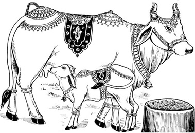
पुष्पांजलि—
ॐ गोभ्यो यज्ञा: प्रवर्तन्ते गोभ्यो देवा: समुत्थिता:।
गोभ्यो वेदा: समुत्कीर्णा: सषडङ्गपदक्रमा:॥
आवाहितदेवतासहितायै सवत्सायै गवे नम:, पुष्पाञ्जलिं समर्पयामि। (पुष्पांजलि प्रदान करे।)
दक्षिणा—
हिरण्यगर्भगर्भस्थं हेमबीजं विभावसो:।
अनन्तपुण्यफलदमत: शान्तिं प्रयच्छ मे॥
आवाहितदेवतासहितायै सवत्सायै गवे नम:, पूजासाद्गुण्यार्थे द्रव्यदक्षिणां समर्पयामि। (द्रव्य-दक्षिणा अर्पित करे।)
प्रदक्षिणा—
पदे पदे या परिपूजकेभ्य:
सद्योऽश्वमेधादि फलं ददाति।
तां सर्वपापक्षयहेतुभूतां
प्रदक्षिणान्ते परित: करोमि॥
आवाहितपूजितसमस्तदेवतासहितायै सवत्सायै गवे नम:, प्रदक्षिणां समर्पयामि। (गौकी प्रदक्षिणा करे। चार प्रदक्षिणा करनी चाहिये अथवा एक प्रदक्षिणा भी की जा सकती है।)
गोपूजनके अनन्तर गोपुच्छोदकसे पितरोंका तर्पण करे।
गोपुच्छोदक-तर्पण
गायकी पूँछ पकड़कर तर्पण करना चाहिये। सव्य पूर्वाभिमुख होकर दाहिने हाथमें त्रिकुश, अक्षत, जल और गोपुच्छ लेकर तर्पण करे। तर्पणके जलको इकट्ठा करनेके लिये पूँछके नीचे जलपात्रको रख ले। हाथमें गोपुच्छ लेनेमें कठिनाई हो तो पूँछमें मौली बाँधकर मौलीको हाथमें रख ले। तर्पणके समय दूसरा व्यक्ति हाथमें जल डालता जाय।
देव-तर्पण—सव्य पूर्वाभिमुख होकर निम्नलिखित प्रत्येक नाममन्त्रके बाद एक-एक अंजलि जल देवतीर्थसे देता जाय—
ॐ ब्रह्मा तृप्यताम् (तृप्यतु)। ॐ विष्णुस्तृप्यताम्। ॐ रुद्रस्तृप्यताम्। ॐ मनवस्तृप्यन्ताम् (तृप्यन्तु)। ॐ ऋषयस्तृप्यन्ताम्। ॐ रुद्रातिपुत्रास्तृप्यन्ताम्। ॐ साध्यास्तृप्यन्ताम्। ॐ मरुद्गणास्तृप्यन्ताम्।ॐ ग्रहास्तृप्यन्ताम्। ॐ नक्षत्राणि तृप्यन्ताम्। ॐ योगास्तृप्यन्ताम्। ॐ राशयस्तृप्यन्ताम्। ॐ वसुधा तृप्यताम्। ॐ अश्विनौ तृप्येताम्। ॐ यक्षास्तृप्यन्ताम्। ॐ रक्षांसि तृप्यन्ताम्। ॐ मातरस्तृप्यन्ताम्। ॐ रुद्रास्तृप्यन्ताम्। ॐ पिशाचास्तृप्यन्ताम्। ॐ सुपर्णास्तृप्यन्ताम्। ॐ पशवस्तृप्यन्ताम्। ॐ दानवास्तृप्यन्ताम्। ॐ योगिनस्तृप्यन्ताम्। ॐ विद्याधरास्तृप्यन्ताम्। ॐ ओषधयस्तृप्यन्ताम्। ॐ दिग्गजास्तृप्यन्ताम्। ॐ देवगणास्तृप्यन्ताम्।ॐ देवपत्न्यस्तृप्यन्ताम्। ॐ लोकपालास्तृप्यन्ताम्। ॐ नारदस्तृप्यताम्। ॐ जन्तवस्तृप्यन्ताम्। ॐ स्थावरास्तृप्यन्ताम्। ॐ जङ्गमास्तृप्यन्ताम्।
ऋषि-तर्पण—निम्नलिखित मन्त्रोंसे मरीचि आदि ऋषियोंको भी एक-एक अंजलि जल दे—
ॐ मरीचिस्तृप्यताम्। ॐ अत्रिस्तृप्यताम्। ॐ अङ्गिरास्तृप्यताम्। ॐ पुलस्त्यस्तृप्यताम्। ॐ पुलहस्तृप्यताम्। ॐ क्रतुस्तृप्यताम्। ॐ वसिष्ठस्तृप्यताम्। ॐ प्रचेतास्तृप्यताम्। ॐ भृगुस्तृप्यताम्। ॐ नारदस्तृप्यताम्।
दिव्य मनुष्य-तर्पण—दिव्य मनुष्य-तर्पणमें—१. उत्तर दिशाकी ओर मुँह करे।१ २. जनेऊको कण्ठीकी तरह कर ले। ३. गमछेको भी कण्ठीकी तरह कर ले। ४. सीधा बैठे। कोई घुटना जमीनपर न लगाये।२ ५. अर्घपात्रमें जौ छोड़े। ६. तीनों कुशोंको उत्तराग्र रखे। ७. प्राजापत्य (काय) तीर्थसे अर्थात् कुशोंको दाहिने हाथकी कनिष्ठिकाके मूलभागमें रखकर यहींसे जल दे। ८. दो-दो अंजलि जल दे।३
१. तत: कृत्वा निवीतं तु यज्ञसूत्रमुदङ्मुख:। प्राजापत्येन तीर्थेन मनुष्यांस्तर्पयेत् पृथक्॥ (विष्णु)
२. मनुष्यतर्पणं कुर्वन्न किञ्चिज्जानु पातयेत्। (पुलस्त्य)
३. द्वौ द्वौ तु सनकादय: अर्हन्ति। (व्यास)
अंजलिदानके मन्त्र—ॐ सनकस्तृप्यताम् २। ॐ सनन्दनस्तृप्यताम् २। ॐ सनातनस्तृप्यताम्२। ॐ कपिलस्तृप्यताम् २। ॐ आसुरिस्तृप्यताम् २। ॐ वोढुस्तृप्यताम्२। ॐ पञ्चशिखस्तृप्यताम् २।
दिव्य पितृ-तर्पण—पितृ-तर्पणमें—१. दक्षिण दिशाकी ओर मुँह करे। २. अपसव्य हो जाय अर्थात् जनेऊको दाहिने कन्धेपर रखकर बायें हाथके नीचे ले जाय।४ ३. गमछेको भी दाहिने कन्धेपर रखे। ४. बायाँ घुटना जमीनपर लगाकर बैठे।५ ५. अर्घपात्रमें कृष्ण तिल छोड़े।६ ६. कुशोंको बीचसे मोड़कर उनकी जड़ और अग्रभागको दाहिने हाथमें तर्जनी और अँगूठेके बीचमें रखे। ७. पितृतीर्थसे अर्थात् अँगूठे और तर्जनीके मध्यभागसे अंजलि दे। ८. तीन-तीन अंजलियाँ दे।७
४. जिनके पास यज्ञोपवीत नहीं है, उन्हें उत्तरीय (गमछे)-के द्वारा तर्पणकार्य करना चाहिये।
५. भूलग्नसव्यजानुश्च दक्षिणाग्रकुशेन च। पितॄन् संतर्पयेत् ....। (वृद्धपराशर)
६. पितॄन् भक्त्या तिलै: कृष्णै:....। (माधव)
७. अर्हन्ति पितरस्त्रींस्त्रीन्। (व्यास)
उपर्युक्त नियमसे निम्नलिखित तीन-तीन अंजलियाँ एक-एक मन्त्र पढ़कर दे—
ॐ कव्यवाडनलस्तृप्यतामिदं सतिलं गोपुच्छोदकं तस्मै स्वधा नम:, तस्मै स्वधा नम:, तस्मै स्वधा नम:।*
* कुछ पद्धतियोंके अनुसार तर्पणमें केवल ‘स्वधा’ का प्रयोग चलता है। परंतु पारस्करगृह्यसूत्रके हरिहरभाष्यमें तर्पण-प्रयोग-निरूपणके अन्तर्गत ‘स्वधा नम:’ प्रयोग दिया गया है, जिसके अनुसार यहाँ तर्पणमें ‘स्वधा नम:’ का प्रयोग ही उचित है।
ॐ सोमस्तृप्यतामिदं सतिलं गोपुच्छोदकं तस्मै स्वधा नम:, तस्मै स्वधा नम:, तस्मै स्वधा नम:।
ॐ यमस्तृप्यतामिदं सतिलं गोपुच्छोदकं तस्मै स्वधा नम:, तस्मै स्वधा नम:, तस्मै स्वधा नम:।
ॐ अर्यमा तृप्यतामिदं सतिलं गोपुच्छोदकं तस्मै स्वधा नम:, तस्मै स्वधा नम:, तस्मै स्वधा नम:।
ॐ अग्निष्वात्ता: पितरस्तृप्यन्तामिदं सतिलं गोपुच्छोदकं तेभ्य: स्वधा नम:, तेभ्य: स्वधा नम:, तेभ्य: स्वधा नम:।
ॐ सोमपा: पितरस्तृप्यन्तामिदं सतिलं गोपुच्छोदकं तेभ्य: स्वधा नम:, तेभ्य: स्वधा नम:, तेभ्य: स्वधा नम:।
ॐ बर्हिषद: पितरस्तृप्यन्तामिदं सतिलं गोपुच्छोदकं तेभ्य: स्वधा नम:, तेभ्य: स्वधा नम:, तेभ्य: स्वधा नम:।
चतुर्दश यम-तर्पण—निम्नलिखित प्रत्येक नाममन्त्रसे पूर्ववत् यमराजको पितृतीर्थसे ही दक्षिणाभिमुख तीन-तीन अंजलियाँ दे—
ॐ यमाय नम: ३। ॐ धर्मराजाय नम: ३। ॐ मृत्यवे नम: ३। ॐ अन्तकाय नम: ३। ॐ वैवस्वताय नम: ३। ॐ कालाय नम: ३। ॐ सर्वभूतक्षयाय नम: ३। ॐ औदुम्बराय नम: ३। ॐ दध्नाय नम: ३। ॐ नीलाय नम: ३। ॐ परमेष्ठिने नम: ३। ॐ वृकोदराय नम: ३। ॐ चित्राय नम: ३। ॐ चित्रगुप्ताय नम: ३।*
* यमाय धर्मराजाय मृत्यवे चान्तकाय च।
वैवस्वताय कालाय सर्वभूतक्षयाय च॥
औदुम्बराय दध्नाय नीलाय परमेष्ठिने।
वृकोदराय चित्राय चित्रगुप्ताय वै नम:॥
(मत्स्यपु० १०२।२३-२४, कात्यायनपरिशिष्ट)
पित्र्यादितर्पण—दाहिने हाथमें तिल, जल, मोटक लेकर अपसव्य दक्षिणाभिमुख हो बायाँ घुटना जमीनपर गिराकर पित्र्यादितर्पण करे—
१. पिता—ॐ अद्य अस्मत्पिता .....गोत्र: .....शर्मा/वर्मा/गुप्त: वसुस्वरूप: इदं सतिलं गोपुच्छोदकं तस्मै स्वधा नम:, तस्मै स्वधा नम:, तस्मै स्वधा नम:। बोलकर पितृतीर्थसे तीन अंजलि जल दे।
२. पितामह—ॐ अद्य अस्मत्पितामह: .....गोत्र: .....शर्मा/वर्मा/गुप्त: रुद्रस्वरूप: इदं सतिलं गोपुच्छोदकं तस्मै स्वधा नम:, तस्मै स्वधा नम:, तस्मै स्वधा नम:। बोलकर पितृतीर्थसे तीन अंजलि जल दे।
३. प्रपितामह—ॐ अद्य अस्मत् प्रपितामह: .....गोत्र: .....शर्मा/वर्मा/गुप्त: आदित्यस्वरूप: इदं सतिलं गोपुच्छोदकं तस्मै स्वधा नम:, तस्मै स्वधा नम:, तस्मै स्वधा नम:। बोलकर पितृतीर्थसे तीन अंजलि जल दे।
४. माता—ॐ अद्य अस्मन्माता .....गोत्रा .....देवी वसुस्वरूपा इदं सतिलं गोपुच्छोदकं तस्यै स्वधा नम:, तस्यै स्वधा नम:, तस्यै स्वधा नम:। बोलकर पितृतीर्थसे तीन अंजलि जल दे।
५. पितामही—ॐ अद्य अस्मत्पितामही .....गोत्रा .....देवी रुद्रस्वरूपा इदं सतिलं गोपुच्छोदकं तस्यै स्वधा नम:, तस्यै स्वधा नम:, तस्यै स्वधा नम:। बोलकर पितृतीर्थसे तीन अंजलि जल दे।
६. प्रपितामही—ॐ अद्य अस्मत् प्रपितामही .....गोत्रा .....देवी आदित्यस्वरूपा इदं सतिलं गोपुच्छोदकं तस्यै स्वधा नम:, तस्यै स्वधा नम:, तस्यै स्वधा नम:। बोलकर पितृतीर्थसे तीन अंजलि जल दे।
७. सौतेली माँ—ॐ अद्य अस्मत् सापत्नमाता .....गोत्रा .....देवी इदं सतिलं गोपुच्छोदकं तस्यै स्वधा नम:, तस्यै स्वधा नम:, तस्यै स्वधा नम:। बोलकर पितृतीर्थसे तीन अंजलि जल दे।
द्वितीय गोत्र-तर्पण
१. मातामह (नाना)—ॐ अद्य अस्मन्मातामह: .....गोत्र: .....शर्मा वसुस्वरूप: इदं सतिलं गोपुच्छोदकं तस्मै स्वधा नम:, तस्मै स्वधा नम:, तस्मै स्वधा नम:। बोलकर पितृतीर्थसे तीन बार जल दे।
२. प्रमातामह (परनाना)—ॐ अद्य अस्मत् प्रमातामह: .....गोत्र: .....शर्मा रुद्रस्वरूप: इदं सतिलं गोपुच्छोदकं तस्मै स्वधा नम:, तस्मै स्वधा नम:, तस्मै स्वधा नम:। बोलकर पितृतीर्थसे तीन बार जल दे।
३. वृद्धप्रमातामह (वृद्धपरनाना)—ॐ अद्य अस्मद् वृद्धप्रमातामह: .....गोत्र: .....शर्मा आदित्यस्वरूप: इदं सतिलं गोपुच्छोदकं तस्मै स्वधा नम:, तस्मै स्वधा नम:, तस्मै स्वधा नम:। बोलकर पितृतीर्थसे तीन बार जल दे।
४. मातामही (नानी)—ॐ अद्य अस्मन्मातामही .....गोत्रा .....देवी वसुस्वरूपा इदं सतिलं गोपुच्छोदकं तस्यै स्वधा नम:, तस्यै स्वधा नम:, तस्यै स्वधा नम:। बोलकर पितृतीर्थसे तीन बार जल दे।
५. प्रमातामही (परनानी)—ॐ अद्य अस्मत् प्रमातामही .....गोत्रा .....देवी रुद्रस्वरूपा इदं सतिलं गोपुच्छोदकं तस्यै स्वधा नम:, तस्यै स्वधा नम:, तस्यै स्वधा नम:। बोलकर पितृतीर्थसे तीन बार जल दे।
६. वृद्धप्रमातामही (वृद्धपरनानी)—ॐ अद्य अस्मद् वृद्धप्रमातामही .....गोत्रा .....देवी आदित्यस्वरूपा इदं सतिलं गोपुच्छोदकं तस्यै स्वधा नम:, तस्यै स्वधा नम:, तस्यै स्वधा नम:। बोलकर पितृतीर्थसे तीन बार जल दे।
पत्न्यादि-तर्पण* (एक-एक अञ्जलि जल दे)—
* यहाँ सभी निकटतम सम्बन्धियोंके लिये तर्पण लिखा गया है, जिनको देना हो उनके नाम, गोत्र और अपना सम्बन्ध बोलकर देना चाहिये। ब्राह्मणके लिये ‘शर्मा’, क्षत्रियके लिये ‘वर्मा’ तथा वैश्यके लिये ‘गुप्त’ नामके आगे जोड़ देना चाहिये।
१. पत्नी—ॐ अद्य अस्मत् पत्नी .....गोत्रा .....देवी इदं सतिलं गोपुच्छोदकं तस्यै स्वधा नम: १।
२. पुत्र—ॐ अद्य अस्मत् पुत्र: .....गोत्र: .....शर्मा इदं सतिलं गोपुच्छोदकं तस्मै स्वधा नम: १।
३. भाई—ॐ अद्य अस्मद् भ्राता .....गोत्र: .....शर्मा इदं सतिलं गोपुच्छोदकं तस्मै स्वधा नम: १।
४. भाईकी स्त्री—ॐ अद्य अस्मद् भ्रातृपत्नी .....गोत्रा .....देवी इदं सतिलं गोपुच्छोदकं तस्यै स्वधा नम: १।
५. भतीजा—ॐ अद्य अस्मद् भ्रातृपुत्र: .....गोत्र: .....शर्मा इदं सतिलं गोपुच्छोदकं तस्मै स्वधा नम: १।
६. फूफा—ॐ अद्य अस्मत् पितृष्वसृपति: .....गोत्र: .....शर्मा इदं सतिलं गोपुच्छोदकं तस्मै स्वधा नम: १।
७. फूआ—ॐ अद्य अस्मत् पितृष्वसा .....गोत्रा .....देवी इदं सतिलं गोपुच्छोदकं तस्यै स्वधा नम: १।
८. फूआका लड़का—ॐ अद्य अस्मत् पैतृष्वस्रेय: .....गोत्र: .....शर्मा इदं सतिलं गोपुच्छोदकं तस्मै स्वधा नम: १।
९. मौसा—ॐ अद्य अस्मन्मातृष्वसृपति: .....गोत्र: .....शर्मा इदं सतिलं गोपुच्छोदकं तस्मै स्वधा नम: १।
१०. मौसी—ॐ अद्य अस्मन्मातृष्वसा .....गोत्रा .....देवी इदं सतिलं गोपुच्छोदकं तस्यै स्वधा नम: १।
११. मौसेरा भाई—ॐ अद्य अस्मन्मातृष्वस्रेय: .....गोत्र: .....शर्मा इदं सतिलं गोपुच्छोदकं तस्मै स्वधा नम: १।
१२. मामा—ॐ अद्य अस्मन्मातुल: .....गोत्र: .....शर्मा इदं सतिलं गोपुच्छोदकं तस्मै स्वधा नम: १।
१३. मामी—ॐ अद्य अस्मन्मातुलानी .....गोत्रा .....देवी इदं सतिलं गोपुच्छोदकं तस्यै स्वधा नम:१।
१४. ममेरा भाई—ॐ अद्य अस्मन्मातुलानीपुत्र: .....गोत्र: .....शर्मा इदं सतिलं गोपुच्छोदकं तस्मै स्वधा नम:१।
१५. श्वशुर—ॐ अद्य अस्मच्छ्वशुर: .....गोत्र: .....शर्मा इदं सतिलं गोपुच्छोदकं तस्मै स्वधा नम: १।
१६. सासु—ॐ अद्य अस्मच्छ्वश्रु: .....गोत्रा .....देवी इदं सतिलं गोपुच्छोदकं तस्यै स्वधा नम: १।
१७. गुरु—ॐ अद्य अस्मद् गुरु: .....गोत्र: .....शर्मा इदं सतिलं गोपुच्छोदकं तस्मै स्वधा नम: १।
१८. मित्र—ॐ अद्य अस्मन्मित्रम् .....गोत्र: .....शर्मा इदं सतिलं गोपुच्छोदकं तस्मै स्वधा नम: १।
१९. नौकर—ॐ अद्य अस्मद् भृत्य: .....नामधेय: इदं सतिलं गोपुच्छोदकं तस्मै स्वधा नम: १।
तदनन्तर निम्न श्लोकोंको बोलते हुए गोपुच्छोदकद्वारा पितृतीर्थसे जलधारा देते हुए तर्पण करे—
मातृपक्षाश्च ये केचिद् ये केचित् पितृपक्षका:।
गुरुश्वशुरबन्धूनां ये कुलेषु समुद्भवा:॥
ये मे कुले लुप्तपिण्डा: पुत्रदारविवर्जिता:।
क्रियालोपगता ये च जात्यन्धा: पङ्गवस्तथा॥
विरूपा आमगर्भाश्च ज्ञाताज्ञातकुले मम।
ते सर्वे तृप्तिमायान्तु गोपुच्छोदकतर्पणै:॥
वृक्षयोनिगता ये च पर्वतत्वं गताश्च ये।
पशुयोनिगता ये च ये च कीटपतङ्गका:।
ते सर्वे तृप्तिमायान्तु गोपुच्छोदकतर्पणै:॥
नरके रौरवे ये च महारौरवसंस्थिता:।
असिपत्रवने घोरे कुम्भीपाकस्थिताश्च ये।
ते सर्वे तृप्तिमायान्तु गोपुच्छोदकतर्पणै:॥
स्वार्थबद्धा मृता ये च शस्त्रघातमृताश्च ये।
ब्रह्महस्तमृता ये च नारीहस्तमृताश्च ये।
ते सर्वे तृप्तिमायान्तु गोपुच्छोदकतर्पणै:॥
पाशमध्ये मृता ये च स्वल्पमृत्युवशं गता:।
सर्वे च मानवा नागा: पशव: पक्षिणस्तथा।
ते सर्वे तृप्तिमायान्तु गोपुच्छोदकतर्पणै:॥
आब्रह्मस्तम्बपर्यन्तं देवर्षिपितृमानवा:।
तृप्यन्तु सर्वदा सर्वे गोपुच्छोदकतर्पणै:॥
इसके बाद भीष्मपितामहको निम्न श्लोक बोलते हुए पितृतीर्थ और कुशोंसे जल दे—
वैयाघ्रपदगोत्राय सांकृत्यप्रवराय च।
अपुत्राय ददाम्येतज्जलं भीष्माय वर्मणे॥
इसके बाद सव्य पूर्वाभिमुख होकर निम्नलिखित मन्त्रसे देवतीर्थसे जलधारा दे—
देवासुरास्तथा यक्षा नागा गन्धर्वराक्षसा:।
पिशाचा गुह्यका: सिद्धा: कूष्माण्डास्तरव: खगा:॥
जलेचरा भूनिलया वाय्वाधाराश्च जन्तव:।
तृप्तिमेते प्रयान्त्वाशु मद्दत्तेनाम्बुनाखिला:॥
हाथ जोड़कर बोले—ॐ ब्रह्मणे नम:, ॐ विष्णवे नम:, ॐ रुद्राय नम:।
इस प्रकार गोपुच्छोदकतर्पण करनेके अनन्तर रुईके पहाड़पर कलश स्थापित करे—
रुईके पहाड़पर कलश-स्थापन
दक्षिण दिशामें रुईका पहाड़ बनाये। एक पात्रमें तिल रखकर रुईके पर्वतपर रख दे। इसीपर कलशकी स्थापना करनी है।
कलशपर रोरीसे स्वस्तिकका चिह्न बनाकर उसके गलेमें तीन धागोंवाली मौली लपेटे और कलशको एक ओर रख ले। इसके बाद रुईके पहाड़पर जो तिलभरा पात्र रखा है, उस पात्रका निम्नलिखित मन्त्रसे स्पर्श करे—
दाहिने हाथसे कलशाधारका स्पर्श—
ॐ भूरसि भूमिरस्यदितिरसि विश्वधाया विश्वस्य भुवनस्य धर्त्री।
पृथिवीं यच्छ पृथिवीं दृÞह पृथिवीं मा हिÞसी:॥
यवप्रक्षेप—पूजित भूमिपर यव (जौ) छिड़के एवं मन्त्र पढ़े—
ॐ धान्यमसि धिनुहि देवान् प्राणाय त्वो दानाय त्वा व्यानाय त्वा। दीर्घामनु प्रसितिमायुषे धां देवो व: सविता हिरण्यपाणि: प्रतिगृभ्णात्वच्छिद्रेण पाणिना चक्षुषे त्वा महीनां पयोऽसि॥
कलश-स्थापन— यव (जौ)-पर निम्नलिखित मन्त्र पढ़कर दोनों हाथोंसे कलशकी स्थापना करे—
ॐ आ जिघ्र कलशं मह्या त्वा विशन्त्विन्दव:।
पुनरूर्जा नि वर्तस्व सा न: सहस्रं धुक्ष्वोरुधारा पयस्वती पुनर्मा विशताद्रयि:॥
कलशमें जल—निम्न मन्त्रसे जल छोड़े—
ॐ वरुणस्योत्तम्भनमसि वरुणस्य स्कम्भसर्जनी स्थो वरुणस्य ऋतसदन्यसि वरुणस्य ऋतसदनमसि वरुणस्य ऋतसदनमा सीद॥
कलशमें चन्दन—निम्न मन्त्रसे चन्दन छोड़े—
ॐ त्वां गन्धर्वा अखनँस्त्वामिन्द्रस्त्वां बृहस्पति:।
त्वामोषधे सोमो राजा विद्वान् यक्ष्मादमुच्यत॥
कलशमें सर्वौषधि—निम्न मन्त्रसे सर्वौषधि छोड़े—
ॐ या ओषधी: पूर्वा जाता देवेभ्यस्त्रियुगं पुरा।
मनै नु बभ्रूणामहॸ शतं धामानि सप्त च॥
कलशमें दूब—निम्न मन्त्रसे दूब छोडे़—
ॐ काण्डात्काण्डात्प्ररोहन्ती परुष: परुषस्परि।
एवा नो दूर्वे प्र तनु सहस्रेण शतेन च॥
कलशपर पंचपल्लव—निम्न मन्त्रसे पंचपल्लव रखे—
ॐ अश्वत्थे वो निषदनं पर्णे वो वसतिष्कृता।
गोभाज इत्किलासथ यत्सनवथ पूरुषम्॥
कलशमें पवित्रक—निम्न मन्त्रसे कुश या कुशसे बना पवित्रक छोड़े—
ॐ पवित्रे स्थो वैष्णव्यो सवितुर्व: प्रसव उत्पुनाम्यच्छिद्रेण पवित्रेण सूर्यस्य रश्मिभि:।
तस्य ते पवित्रपते पवित्रपूतस्य यत्काम: पुने तच्छकेयम्॥
कलशमें सप्तमृत्तिका—निम्न मन्त्रसे सप्तमृत्तिका छोड़े—
ॐ स्योना पृथिवि नो भवानृक्षरा निवेशनी।
यच्छा न: शर्म सप्रथा:॥
कलशमें सुपारी—निम्न मन्त्रसे सुपारी छोड़े—
ॐ या: फलिनीर्या अफला अपुष्पा याश्च पुष्पिणी:।
बृहस्पतिप्रसूतास्ता नो मुञ्चन्त्वÞ हस:॥
कलशमें पंचरत्न—निम्न मन्त्रसे पंचरत्न छोड़े—
ॐ परि वाजपति: कविरग्निर्हव्यान्यक्रमीत्। दधद्रत्नानि दाशुषे॥
कलशमें द्रव्य—निम्न मन्त्रसे द्रव्य छोड़े—
ॐ हिरण्यगर्भ: समवर्तताग्रे भूतस्य जात: पतिरेक आसीत्।
स दाधार पृथिवीं द्यामुतेमां कस्मै देवाय हविषा विधेम॥
कलशपर वस्त्र—निम्नलिखित मन्त्र पढ़कर कलशको वस्त्रसे अलंकृत करे—
ॐ सुजातो ज्योतिषा सह शर्म वरूथमाऽसदत्स्व:।
वासो अग्ने विश्वरूपॸ सं व्ययस्व विभावसो॥
कलशपर पूर्णपात्र—निम्न मन्त्रसे चावलसे भरे पूर्णपात्रको कलशपर स्थापित करे—
ॐ पूर्णा दर्वि परा पत सुपूर्णा पुनरा पत।
वस्नेव विक्रीणावहा इषमूर्जॸ शतक्रतो॥
कलशपर नारियल—कलशपर लाल कपड़ा लपेटे हुए नारियलको निम्न मन्त्र पढ़कर रखे—
ॐ या: फलिनीर्या अफला अपुष्पा याश्च पुष्पिणी:।
बृहस्पतिप्रसूतास्ता नो मुञ्चन्त्वÞ हस:॥
इसके बाद कलशमें देवी-देवताओंका आवाहन करना चाहिये। सबसे पहले हाथमें अक्षत-पुष्प लेकर निम्नलिखित मन्त्रसे वरुणका आवाहन करे—
कलशमें वरुणका ध्यान और आवाहन—
ॐ तत्त्वा यामि ब्रह्मणा वन्दमानस्तदा शास्ते यजमानो हविर्भि:।
अहेडमानो वरुणेह बोध्युरुशॸस मा न आयु: प्र मोषी:॥
अस्मिन् कलशे वरुणं साङ्गं सपरिवारं सायुधं सशक्तिकमावाहयामि।
ॐ भूर्भुव: स्व: भो वरुण इहागच्छ, इह तिष्ठ, स्थापयामि, पूजयामि मम पूजां गृहाण। ‘ॐ अपाम्पतये वरुणाय नम:’ कहकर अक्षत-पुष्प कलशपर छोड़ दे। पुन: हाथमें अक्षत-पुष्प लेकर चारों वेद एवं अन्य देवी-देवताओंका आवाहन करे—
कलशमें देवी-देवताओंका आवाहन—
कलशस्य मुखे विष्णु: कण्ठे रुद्र: समाश्रित:।
मूले त्वस्य स्थितो ब्रह्मा मध्ये मातृगणा: स्मृता:॥
कुक्षौ तु सागरा: सर्वे सप्तद्वीपा वसुन्धरा।
ऋग्वेदोऽथ यजुर्वेद: सामवेदो ह्यथर्वण:॥
अङ्गैश्च सहिता: सर्वे कलशं तु समाश्रिता:।
अत्र गायत्री सावित्री शान्ति: पुष्टिकरी तथा॥
आयान्तु देवपूजार्थं दुरितक्षयकारका:।
गङ्गे च यमुने चैव गोदावरि सरस्वति।
नर्मदे सिन्धुकावेरि जलेऽस्मिन् सन्निधिं कुरु॥
सर्वे समुद्रा: सरितस्तीर्थानि जलदा नदा:।
आयान्तु मम शान्त्यर्थं दुरितक्षयकारका:॥
इस तरह जलाधिपति वरुणदेव तथा वेदों, तीर्थोें, नदों, नदियों, सागरों, देवियों एवं देवताओंके आवाहनके बाद हाथमें अक्षत-पुष्प लेकर निम्नलिखित मन्त्रसे कलशकी प्रतिष्ठा करे—
प्रतिष्ठा—ॐ मनो जूतिर्जुषतामाज्यस्य बृहस्पतिर्यज्ञमिमं तनोत्वरिष्टं यज्ञॸ समिमं दधातु। विश्वे देवास इह मादयन्तामो३म्प्रतिष्ठ॥
कलशे वरुणाद्यावाहितदेवता: सुप्रतिष्ठिता वरदा भवन्तु। ॐ वरुणाद्यावाहितदेवताभ्यो नम:। यह कहकर अक्षत-पुष्प कलशके पास छोड़ दे।
कलश-पूजन
ध्यान—ॐ वरुणाद्यावाहितदेवताभ्यो नम:, ध्यानार्थे पुष्पं समर्पयामि। (पुष्प समर्पित करे।)
आसन—ॐ वरुणाद्यावाहितदेवताभ्यो नम:, आसनार्थे अक्षतान् समर्पयामि। (अक्षत चढ़ाये।)
पाद्य—ॐ वरुणाद्यावाहितदेवताभ्यो नम:, पादयो: पाद्यं समर्पयामि। (जल चढ़ाये।)
अर्घ—ॐ वरुणाद्यावाहितदेवताभ्यो नम:, हस्तयोरर्घं समर्पयामि। (जल चढ़ाये।)
स्नानीय जल—ॐ वरुणाद्यावाहितदेवताभ्यो नम:, स्नानीयं जलं समर्पयामि। (स्नानीय जल चढ़ाये।)
स्नानांग आचमन—ॐ वरुणाद्यावाहितदेवताभ्यो नम:, स्नानान्ते आचमनीयं जलं समर्पयामि। (स्नानके बाद आचमनीय जल चढ़ाये।)
पंचामृतस्नान—ॐ वरुणाद्यावाहितदेवताभ्यो नम:, पञ्चामृतस्नानं समर्पयामि। (पंचामृतसे स्नान कराये।)
गन्धोदकस्नान—ॐ वरुणाद्यावाहितदेवताभ्यो नम:, गन्धोदकस्नानं समर्पयामि। (जलमें मलय-चन्दन मिलाकर स्नान कराये।)
शुद्धोदकस्नान—ॐ वरुणाद्यावाहितदेवताभ्यो नम:, स्नानान्ते शुद्धोदकस्नानं समर्पयामि। (शुद्ध जलसे स्नान कराये।)
आचमन—ॐ वरुणाद्यावाहितदेवताभ्यो नम:, शुद्धोदकस्नानान्ते आचमनीयं जलं समर्पयामि। (आचमनके लिये जल चढ़ाये।)
वस्त्र—ॐ वरुणाद्यावाहितदेवताभ्यो नम:, वस्त्रं समर्पयामि। (वस्त्र चढ़ाये।)
आचमन—ॐ वरुणाद्यावाहितदेवताभ्यो नम:, वस्त्रान्ते आचमनीयं जलं समर्पयामि। (आचमनके लिये जल चढ़ाये।)
यज्ञोपवीत—ॐ वरुणाद्यावाहितदेवताभ्यो नम:, यज्ञोपवीतं समर्पयामि। (यज्ञोपवीत चढ़ाये।)
आचमन—ॐ वरुणाद्यावाहितदेवताभ्यो नम:, यज्ञोपवीतान्ते आचमनीयं जलं समर्पयामि। (आचमनके लिये जल चढ़ाये।)
उपवस्त्र—ॐ वरुणाद्यावाहितदेवताभ्यो नम:, उपवस्त्रं समर्पयामि। (उपवस्त्र चढ़ाये।)
आचमन—ॐ वरुणाद्यावाहितदेवताभ्यो नम:, उपवस्त्रान्ते आचमनीयं जलं समर्पयामि। (आचमनके लिये जल चढ़ाये।)
चन्दन—ॐ वरुणाद्यावाहितदेवताभ्यो नम:, चन्दनानुलेपनं समर्पयामि। (चन्दन लगाये।)
अक्षत—ॐ वरुणाद्यावाहितदेवताभ्यो नम:, अक्षतान् समर्पयामि। (अक्षत समर्पित करे।)
पुष्प (पुष्पमाला)—ॐ वरुणाद्यावाहितदेवताभ्यो नम:, पुष्पं (पुष्पमालाम्) समर्पयामि। (पुष्प और पुष्पमाला चढ़ाये।)
सुगन्धित द्रव्य—ॐ वरुणाद्यावाहितदेवताभ्यो नम:, सुगन्धितद्रव्यं समर्पयामि। (सुगन्धित द्रव्य—इत्र आदि चढ़ाये।)
धूप—ॐ वरुणाद्यावाहितदेवताभ्यो नम:, धूपमाघ्रापयामि। (धूप आघ्रापित करे।)
दीप—ॐ वरुणाद्यावाहितदेवताभ्यो नम:, दीपं दर्शयामि। (दीप दिखाये।)
हस्तप्रक्षालन—दीप दिखाकर हाथ धो ले।
नैवेद्य—ॐ वरुणाद्यावाहितदेवताभ्यो नम:, नैवेद्यं निवेदयामि।(नैवेद्य निवेदित करे।)
आचमन आदि—ॐ वरुणाद्यावाहितदेवताभ्यो नम:, आचमनीयं जलम्, मध्ये पानीयं जलम्, उत्तरापोशनार्थं मुखप्रक्षालनार्थं हस्तप्रक्षालनार्थं च जलं समर्पयामि। (आचमनीय एवं पानीय तथा मुख और हस्तप्रक्षालनके लिये जल चढ़ाये।)
करोद्वर्तन—ॐ वरुणाद्यावाहितदेवताभ्यो नम:, करोद्वर्तनार्थे चन्दनं समर्पयामि। (करोद्वर्तनके लिये गन्ध चढ़ाये।)
ऋतुफल—ॐ वरुणाद्यावाहितदेवताभ्यो नम:, अखण्डऋतुफलं समर्पयामि। (ऋतुफल चढ़ाये।)
ताम्बूल—ॐ वरुणाद्यावाहितदेवताभ्यो नम:, एलालवङ्गपूगीफलसहितं ताम्बूलं समर्पयामि। (सुपारी, इलायची, लौंगसहित पान चढ़ाये।)
दक्षिणा—ॐ वरुणाद्यावाहितदेवताभ्यो नम:, कृताया: पूजाया: साद्गुण्यार्थे द्रव्यदक्षिणां समर्पयामि। (द्रव्य-दक्षिणा चढ़ाये।)
आरती—ॐ वरुणाद्यावाहितदेवताभ्यो नम:, आरार्तिकं समर्पयामि।(आरती करे।)
पुष्पांजलि—ॐ वरुणाद्यावाहितदेवताभ्यो नम:, मन्त्रपुष्पाञ्जलिं समर्पयामि।(पुष्पांजलि समर्पित करे।)
प्रदक्षिणा—ॐ वरुणाद्यावाहितदेवताभ्यो नम:, प्रदक्षिणां समर्पयामि।(प्रदक्षिणा करे।)
प्रार्थना—हाथमें पुष्प लेकर इस प्रकार प्रार्थना करे—
देवदानवसंवादे मथ्यमाने महोदधौ।
उत्पन्नोऽसि तदा कुम्भ विधृतो विष्णुना स्वयम्॥
त्वत्तोये सर्वतीर्थानि देवा: सर्वे त्वयि स्थिता:।
त्वयि तिष्ठन्ति भूतानि त्वयि प्राणा: प्रतिष्ठिता:॥
शिव: स्वयं त्वमेवासि विष्णुस्त्वं च प्रजापति:।
आदित्या वसवो रुद्रा विश्वेदेवा: सपैतृका:॥
त्वयि तिष्ठन्ति सर्वेऽपि यत: कामफलप्रदा:।
त्वत्प्रसादादिमां पूजां कर्तुमीहे जलोद्भव।
सान्निध्यं कुरु मे देव प्रसन्नो भव सर्वदा॥
नमो नमस्ते स्फटिकप्रभाय
सुश्वेतहाराय सुमङ्गलाय।
सुपाशहस्ताय झषासनाय
जलाधिनाथाय नमो नमस्ते॥
ॐ अपाम्पतये वरुणाय नम:।
नमस्कार—ॐ वरुणाद्यावाहितदेवताभ्यो नम:, प्रार्थनापूर्वकं नमस्कारान् समर्पयामि। (इस नाम-मन्त्रसे नमस्कारपूर्वक पुष्प समर्पित करे।) हाथमें जल लेकर निम्नलिखित वाक्यका उच्चारण कर जल कलशके पास छोड़ते हुए समस्त पूजन-कर्म भगवान् वरुणदेवको निवेदित करे—
समर्पण—कृतेन अनेन पूजनेन कलशे वरुणाद्यावाहितदेवता: प्रीयन्तां न मम।
कलशपर यमकी पूजा
स्थापित कलशपर यमकी स्वर्णमयी प्रतिमाकी स्थापना कर पूजन करना चाहिये। समीपमें लौहदण्ड भी स्थापित करे। कलशपर मूर्ति-स्थापनके पहले अग्न्युत्तारण और प्राण-प्रतिष्ठा कर लेना आवश्यक होता है।
संकल्प—आचमन और प्राणायाम कर त्रिकुश, जल, अक्षत और द्रव्य लेकर संकल्प करे—
ॐ अद्य पूर्वोच्चारितग्रहगणगुणविशेषणविशिष्टायां शुभपुण्यतिथौ .....गोत्र: .....शर्मा/वर्मा/गुप्तोऽहम् (यदि प्रतिनिधि करे तो ‘अहं’ के बाद .....गोत्रस्य .....शर्मण:/वर्मण:/गुप्तस्योद्देश्येन क्रियमाण—ऐसा कहे) सवत्सवैतरणीगवीदानकर्मणि श्रुतिस्मृतिपुराणोक्तफलप्राप्त्यर्थं श्रीयमदेवप्रीतिद्वारा सकलाभीष्टसिद्धॺर्थं च अग्न्युत्तारणपूर्वकं यमप्रतिमायां प्राणप्रतिष्ठां करिष्ये (करिष्यामि)।
इस तरह संकल्प कर जल गिरा दे।
अग्न्युत्तारण—इसके बाद किसी पात्रमें यमकी प्रतिमाको रखकर उसे घृतसे अभ्यक्त (लेपित) कर दे, उसके ऊपर निम्न मन्त्रोंको पढ़ता हुआ जलधारासे स्नान कराये—
ॐ समुद्रस्य त्वाऽवकयाग्ने परि व्ययामसि।
पावको अस्मभ्यÞ शिवो भव॥
हिमस्य त्वा जरायुणाऽग्ने परि व्ययामसि।
पावको अस्मभ्यÞ शिवो भव॥
उप ज्मन्नुप वेतसेऽव तर नदीष्वा।
अग्ने पित्तमपामसि मण्डूकि ताभिरा गहि।
सेमं नो यज्ञं पावकवर्णÞ शिवं कृधि॥
अपामिदं न्ययनÞ समुद्रस्य निवेशनम्।
अन्याँस्ते अस्मत्तपन्तु हेतय: पावको अस्मभ्यÞ शिवो भव॥
अग्ने पावक रोचिषा मन्द्रया देव जिह्वया।
आ देवान् वक्षि यक्षि च॥
स न: पावक दीदिवोऽग्ने देवाँ२ इहा वह।
उप यज्ञÞ हविश्च न:॥
पावकया यश्चितयन्त्या कृपा क्षामन् रुरुच उषसो न भानुना।
तूर्वन् न यामन्नेतशस्य नू रण आ यो घृणे न ततृषाणो अजर:॥
नमस्ते हरसे शोचिषे नमस्ते अस्त्वर्चिषे।
अन्याँस्ते अस्मत्तपन्तु हेतय: पावको असम्भ्यÞ शिवो भव॥
नृषदे वेडप्सुषदे वेड् बर्हिषदे वेड् वनसदे वेट् स्वर्विदे वेट्॥
ये देवा देवानां यज्ञिया यज्ञियानाÞ संवत्सरीणमुप भागमासते।
अहुतादो हविषो यज्ञे अस्मिन्त्स्वयं पिबन्तु मधुनो घृतस्य॥
ये देवा देवेष्वधि देवत्वमायन् ये ब्रह्मण: पुर एतारो अस्य।
येभ्यो न ऋते पवते धाम किञ्चन न ते दिवो न पृथिव्या अधि स्नुषु॥
प्राणदा अपानदा व्यानदा वर्चोदा वरिवोदा:।
अन्याँस्ते अस्मत्तपन्तु हेतय: पावको अस्मभ्यÞ शिवो भव॥
प्राणप्रतिष्ठा
विनियोग—इसके बाद हाथमें जल लेकर विनियोग करे—
ॐ अस्य श्रीप्राणप्रतिष्ठामन्त्रस्य ब्रह्मविष्णुमहेश्वरा ऋषय ऋग्यजु:सामानि छन्दांसि क्रियामयवपु: प्राणाख्या देवता आँ बीजं ह्रीं शक्ति: क्रौं कीलकं अस्यां नूतनमूर्तौ प्राणप्रतिष्ठापने विनियोग:।
विनियोग पढ़कर हाथका जल गिरा दे। इसके बाद मूर्तिका दाहिने हाथसे स्पर्श कर प्राणप्रतिष्ठा करे।
प्राणप्रतिष्ठा*—ॐ आँ ह्रीं क्रौं यँ रँ लँ वँ शँ षँ सँ हँ ळँ क्षँ हँ स: सोऽहम् अस्या यमदेवप्रतिमाया: प्राणा इह प्राणा:।
* प्रतिष्ठामौक्तिक, प्रकरण ५
ॐ आँ ह्रीं क्रौं यँ रँ लँ वँ शँ षँ सँ हँ ळँ क्षँ हँ स: सोऽहम् अस्या यमदेवप्रतिमाया: जीव इह स्थित:।
ॐ आँ ह्रीं क्रौं यँ रँ लँ वँ शँ षँ सँ हँ ळँ क्षँ हँ स: सोऽहम् अस्या यमदेवप्रतिमाया: सर्वेन्द्रियाणि वाङ्मनस्त्वक्चक्षु: श्रोत्रजिह्वाघ्राणपाणिपादपायूपस्थानि अस्यां मूर्तावागत्य सुखं चिरं तिष्ठन्तु स्वाहा।
इस तरह पढ़कर फूल लेकर निम्न मन्त्र पढ़कर प्राणप्रतिष्ठाकर फूल चढ़ा दे—
ॐ मनो जूतिर्जुषतामाज्यस्य बृहस्पतिर्यज्ञमिमं तनोत्वरिष्टं यज्ञॸ समिमं दधातु। विश्वे देवास इह मादयन्तामो३म्प्रतिष्ठ॥
षोडश-संस्कार—यमदेवताकी मूर्तिका पुन: स्पर्श कर सोलह बार ‘ॐकार’ का मन्द स्वरसे जप करे। इसके बाद हाथमें जल, अक्षत लेकर—
ॐ अनेन अस्या यमदेवप्रतिमाया गर्भाधानादय: षोडशसंस्कारा: सम्पद्यन्ताम्।
ऐसा पढ़कर जल गिरा दे।
पूजन
प्राणप्रतिष्ठा कर लेनेके बाद निम्न रीतिसे यमदेवताका पूजन करे—
आवाहन—हाथमें फूल लेकर निम्न मन्त्र पढ़ते हुए प्रतिमामें यमका आवाहन करे—
ॐ यमाय त्वाऽङ्गिरस्वते पितृमते स्वाहा।
स्वाहा घर्माय स्वाहा घर्म: पित्रे॥
ॐ भूर्भुव: स्व: सवाहनं सायुधं साङ्गं सपरिवारं सशक्तिकं यममावाहयामि स्थापयामि पूजयामि।
ऐसा कहकर फूलको प्रतिमापर चढ़ा दे। इसके बाद वरुण और यमदेवताकी एक साथ पूजा करे। मन्त्र इस प्रकार है—
‘वरुणादिदेवतासहिताय साङ्गाय सायुधाय सलौहदण्डाय समहिषवाहनाय सपरिवाराय यमाय नम:।’
इसी मन्त्रसे निम्न रीतिसे पाद्य, अर्घ आदि समर्पित करे—
पाद्यं समर्पयामि। (जल चढ़ाये।)
अर्घं समर्पयामि। (जल चढ़ाये।)
स्नानीयं जलं समर्पयामि। (स्नानीय जल चढ़ाये।)
स्नानाङ्गमाचमनं समर्पयामि। (आचमनीय जल चढ़ाये।)
पञ्चामृतस्नानं समर्पयामि। (पंचामृतसे स्नान कराये।)
गन्धोदकस्नानं समर्पयामि।(जलमें मलयचन्दन मिलाकर स्नान कराये।)
शुद्धोदकस्नानं समर्पयामि। (शुद्ध जलसे स्नान कराये।)
शुद्धोदकस्नानान्ते आचमनीयं जलं समर्पयामि। (आचमन कराये।)
वस्त्रं समर्पयामि। (वस्त्र चढ़ाये।)
वस्त्रान्ते आचमनीयं जलं समर्पयामि। (आचमनके लिये जल चढ़ाये।)
यज्ञोपवीते समर्पयामि। (यज्ञोपवीत चढ़ाये।)
यज्ञोपवीतान्ते आचमनीयं जलं समर्पयामि। (आचमनके लिये जल चढ़ाये।)
उपवस्त्रं समर्पयामि। (उपवस्त्र चढ़ाये।)
उपवस्त्रान्ते आचमनीयं जलं समर्पयामि। (आचमनके लिये जल चढ़ाये।)
चन्दनानुलेपनं समर्पयामि। (चन्दन चढ़ाये।)
अक्षतान् समर्पयामि। (अक्षत चढ़ाये।)
पुष्पमालां समर्पयामि। (पुष्पमाला चढ़ाये।)
नानापरिमलद्रव्याणि समर्पयामि। (अबीर आदि चढ़ाये।)
सुगन्धितद्रव्यं (इत्रम्) समर्पयामि। (इत्र चढ़ाये।)
धूपमाघ्रापयामि। (धूप आघ्रापित करे।)
दीपं दर्शयामि। (दीप दिखाकर हाथ धो ले।)
नैवेद्यं निवेदयामि।(नैवेद्य चढ़ाये।)
नैवेद्यान्ते आचमनीयं मध्ये पानीयं मुखहस्तप्रक्षालनार्थं च जलं समर्पयामि।(तीन बार जल चढ़ाये।)
करोद्वर्तनं समर्पयामि। (करोद्वर्तन करे।)
ऋतुफलं समर्पयामि। (अखण्ड ऋतुफल चढ़ाये।)
ताम्बूलं समर्पयामि। (ताम्बूल चढ़ाये।)
द्रव्यदक्षिणां समर्पयामि। (दक्षिणा-द्रव्य चढ़ाये।)
आरती—इसके बाद कपूर जलाकर आरती करे और जल गिराकर निम्न मन्त्र बोले—
वरुणादिदेवतासहिताय साङ्गाय सायुधाय सलौहदण्डाय महिषवाहनाय सपरिवाराय यमाय नम:, आरार्तिक्यं समर्पयामि।
पुष्पांजलि-प्रदक्षिणा—इसके बाद दोनों हाथोंमें फूल लेकर पुष्पांजलि समर्पित करे तथा प्रदक्षिणा कर नमस्कार करे।
गोदान-संकल्प—त्रिकुश, अक्षत, जल, पुष्प लेकर गोपुच्छ पकड़कर संकल्प करे—
ॐ विष्णुर्विष्णुर्विष्णु: नम: पुराणपुरुषोत्तमाय ॐ तत्सत् अद्यैतस्य अचिन्त्यशक्तेर्महाविष्णोराज्ञया जगत्सृष्टिकर्मणि प्रवृत्तस्य परार्द्धद्वयजीविनो ब्रह्मणो द्वितीयपरार्द्धे श्रीश्वेतवाराहकल्पे वैवस्वतमन्वन्तरे अष्टाविंशतितमे कलियुगे तत्प्रथमचरणे भूर्लोके जम्बूद्वीपे भारतवर्षे भरतखण्डे आर्यावर्तैकदेशान्तर्गते प्रजापतिक्षेत्रे (काशीमें करना हो तो अविमुक्तवाराणसीक्षेत्रे गौरीमुखे त्रिकण्टकविराजिते महाश्मशाने आनन्दवने भगवत्या भागीरथ्या: पश्चिमे भागे) .....बौद्धावतारे .....संवत्सरे .....अयने .....ऋतौ .....मासे .....पक्षे .....तिथौ .....वासरे एवं ग्रहगणगुणविशेषणविशिष्टायां शुभपुण्यतिथौ .....गोत्र: .....शर्मा/वर्मा/गुप्तोऽहम्(यदि प्रतिनिधि करे तो ‘अहं’ के बाद .....गोत्रस्य .....शर्मण:/वर्मण:/गुप्तस्य-इतना कहे) यमद्वारस्थितां वैतरणीनदीं सुखेन तर्तुकाम: स्वर्णशृङ्गीं रौप्यखुरां ताम्रपृष्ठीं कांस्योपदोहनां कृष्णवस्त्रोपच्छन्नां यथाशक्त्यलङ्कारालङ्कृतां मुक्तालाङ्गूलां सुपूजितां सोपकरणां स्वर्णयममूर्तिसहितां सवत्सां रुद्रदैवतामिमां वैतरणीं गां .....गोत्राय सुपूजिताय .....शर्मणे भवते ब्राह्मणाय सम्प्रददे (सम्प्रददामि)।
इस प्रकार संकल्प बोलकर उत्तराभिमुख स्थित वृत ब्राह्मणके हाथमें गोपुच्छ तथा जल, अक्षत आदिको दे दे।
सांगता-संकल्प—दाहिने हाथमें त्रिकुश, अक्षत, जल तथा दक्षिणा-द्रव्य लेकर संकल्प करे—
ॐ विष्णुर्विष्णुर्विष्णु: अद्य पूर्वोक्तग्रहगणगुणविशेषणविशिष्टायां शुभपुण्यतिथौ .....गोत्र: .....शर्मा/वर्मा/गुप्तोऽहं (यदि प्रतिनिधि करे तो ‘अहं’ के बाद .....गोत्रस्य .....शर्मण:/वर्मण:/गुप्तस्योद्देश्येन-इतना कहे) कृतस्य सवत्सवैतरणीगवीदानकर्मण: साङ्गतासिद्ध्यर्थमिदं दक्षिणाद्रव्यं .....गोत्राय .....शर्मणे ब्राह्मणाय भवते सम्प्रददे (सम्प्रददामि)। संकल्पजल और दक्षिणा-द्रव्य ब्राह्मण को दे दे।
गवाहारका संकल्प—गोदानके अनन्तर यथाशक्ति गोमाताके आहारके लिये आहारनिष्क्रयभूतद्रव्यका दान करना चाहिये। इसके लिये कुशाक्षत, जल तथा द्रव्य लेकर निम्न संकल्प करे—
ॐ विष्णुर्विष्णुर्विष्णु: अद्य पूर्वोक्तग्रहगणगुणविशेषणविशिष्टायां शुभपुण्यतिथौ .....गोत्र: .....शर्मा/वर्मा/गुप्तोऽहं (यदि प्रतिनिधि करे तो ‘अहं’ के बाद .....गोत्रस्य .....शर्मण:/वर्मण:/गुप्तस्योद्देश्येन-इतना कहे) दत्ताया: सवत्सवैतरणीगव्या: आहारसम्पादनार्थं पुषतुषकल्कादिनिष्क्रयभूतद्रव्यं गोप्रतिग्रहीत्रे ब्राह्मणाय भवते सम्प्रददे (सम्प्रददामि) कहकर संकल्पका जल तथा द्रव्य ब्राह्मणको दे दे।
प्रार्थना—इसके बाद ब्राह्मणकी प्रार्थना करे—
विष्णुरूप द्विजश्रेष्ठ भूदेव पङ्क्तिपावन।
सदक्षिणा मया दत्ता तुभ्यं वैतरणी तु गौ:॥
इसके बाद दान लेनेवाला ब्राह्मण बोले—‘ॐ स्वस्ति।’
ॐ कोऽदात् कस्मा अदात् कामोऽदात् कामायादात्।
कामो दाता काम: प्रतिग्रहीता कामैतत्ते॥
इसके बाद निम्नलिखित गोमतीविद्याका पाठ करे—
गोमतीपाठ
गावो मामुपतिष्ठन्तु हेमशृङ्गॺ: पयोमुच:।
सुरभ्य: सौरभेय्यश्च सरित: सागरं यथा॥
गा वै पश्याम्यहं नित्यं गाव: पश्यन्तु मां सदा।
गावोऽस्माकं वयं तासां यतो गावस्ततो वयम्॥
गाव: सुरभयो नित्यं गावो गुग्गुलगन्धिका:।
गाव: प्रतिष्ठा भूतानां गाव: स्वस्त्ययनं परम्॥
अन्नमेव परं गावो देवानां हविरुत्तमम्।
पावनं सर्वभूतानां रक्षन्ति च वहन्ति च॥
हविषा मन्त्रपूतेन तर्पयन्त्यमरान् दिवि।
ऋषीणामग्निहोत्रेषु गावो होमे प्रयोजिता:॥
सर्वेषामेव भूतानां गाव: शरणमुत्तमम्।
गाव: पवित्रं परमं गावो मङ्गलमुत्तमम्॥
गाव: स्वर्गस्य सोपानं गाव: स्वर्गेऽपि पूजिता:।
गाव: कामदुहो देव्यो नान्यत् किंचित् परं स्मृतम्॥
नमो गोभ्य: श्रीमतीभ्य: सौरभेयीभ्य एव च।
नमो ब्रह्मसुताभ्यश्च पवित्राभ्यो नमो नम:॥
ब्राह्मणाश्चैव गावश्च कुलमेकं द्विधा कृतम्।
एकत्र मन्त्रास्तिष्ठन्ति हविरेकत्र तिष्ठति॥
घृतक्षीरप्रदा गावो घृतयोन्यो घृतोद्भवा:।
घृतनद्यो घृतावर्तास्ता मे सन्तु सदा गृहे॥
घृतं मे हृदये नित्यं घृतं नाभ्यां प्रतिष्ठितम्।
घृतं मे सर्वतश्चैव घृतं मनसि वै घृतम्॥
गावो ममाग्रत: सन्तु गावो मे सन्तु पृष्ठत:।
गावो मे सर्वत: सन्तु गवां मध्ये वसाम्यहम्॥
गवामङ्गेषु तिष्ठन्ति भुवनानि चतुर्दश।
यस्मात्तस्माच्छिवं मे स्यादिह लोके परत्र च॥
प्रदक्षिणा—घरके सभी लोग मिलकर गोग्रहीता ब्राह्मणसहित सवत्सा गोकी चार अथवा एक प्रदक्षिणा करें।
गायके कानमें मन्त्र-जप—निम्न मन्त्र गायके कानमें सुनाये—
‘ॐ ह्रीं नमो भगवत्यै ब्रह्ममात्रे विष्णुभगिन्यै रुद्रदेवतायै सर्वपापप्रमोचिन्यै।’
वैतरणी-तरण—इसके बाद यजमान वैतरणी गौकी पूँछ पकड़कर पहलेसे निर्मित नदीको पार करे। समय तथा स्थानके अनुरूप गड्ढा खोदकर अथवा मिट्टीकी बाड़ बनाकर उसमें पानी भरकर वैतरणी नदीका आकार बनाना चाहिये। इक्षुदण्ड (गन्ने)-के टुकड़े काटकर नाव बनानी चाहिये और उसमें हेममय यज्ञपुरुष, कपास तथा लोहदण्ड रखना चाहिये। नदी पश्चिमसे पूर्वकी ओर बहनेवाली होनी चाहिये और पार करनेवाला उत्तरसे दक्षिणकी ओर जाय, आगे गाय होनी चाहिये, उसकी पूँछमें मौली (कलावा)-से नाव बँधी होनी चाहिये और गायकी पूँछ तथा नावको पकड़े हुए पार करनेवालेको उसके पीछे होना चाहिये। इस समय निम्नलिखित मन्त्र पढ़े—
धेनुके मां प्रतीक्षस्व यमद्वारमहापथे।
उत्तारणार्थं देवेशि वैतरण्यै नमोऽस्तु ते॥
प्रार्थना—हाथ जोड़कर भगवान्से प्रार्थना करे—
प्रमादात् कुर्वतां कर्म प्रच्यवेताध्वरेषु यत्।
स्मरणादेव तद्विष्णो: सम्पूर्णं स्यादिति श्रुति:॥
यस्य स्मृत्या च नामोक्त्या तपोयज्ञक्रियादिषु।
न्यूनं सम्पूर्णतां याति सद्यो वन्दे तमच्युतम्॥
यत्पादपङ्कजस्मरणाद् यस्य नामजपादपि।
न्यूनं कर्म भवेत् पूर्णं तं वन्दे साम्बमीश्वरम्॥
कायेन वाचा मनसेन्द्रियैर्वा
बुध्याऽऽत्मना वानुसृतस्वभावात्।
करोमि यद्यत् सकलं परस्मै
नारायणायेति समर्पये तत्॥
ॐ विष्णवे नम:। ॐ विष्णवे नम:। ॐ विष्णवे नम:।
ॐ साम्बसदाशिवाय नम:। ॐ साम्बसदाशिवाय नम:। ॐ साम्बसदाशिवाय नम:।
॥ वैतरणी-गोदान पूर्ण हुआ॥
कुशकण्डिका-विधान*
* कुशकण्डिका-विधानका मूल इस प्रकार है—परिसमुह्योपलिप्योल्लिख्योद्धृत्याभ्युक्ष्याग्निमुपसमाधाय दक्षिणतो ब्रह्मासनमास्तीर्य प्रणीय परिस्तीर्यार्थवदासाद्य पवित्रे कृत्वा प्रोक्षणी: संस्कृत्यार्थवत्प्रोक्ष्य निरुप्याज्यमधिश्रित्य पर्यग्नि कुर्यात्॥ स्रुवं प्रतप्य सम्मृज्याभ्युक्ष्य पुन: प्रतप्य निदध्यात्॥ आज्यमुद्वास्योत्पूयावेक्ष्य प्रोक्षणीश्च पूर्ववदुपयमनान्कुशानादाय समिधोऽभ्याधाय पर्युक्ष्य जुहुयात्॥
(पारस्करगृह्यसूत्र, १। १। २—४)
पंच-भूसंस्कार
हवनके लिये जो वेदी बनायी जाती है, उसे शुद्ध एवं पवित्र करनेके लिये तथा उसमें अग्नि स्थापित करनेके लिये उसका संस्कार किया जाता है, जो पाँच प्रकारसे होता है, इसे पंच-भूसंस्कार कहते हैं। इन पाँच संस्कारोंके नाम इस प्रकार हैं—(१) परिसमूहन, (२) उपलेपन, (३) उल्लेखन या रेखाकरण, (४) उद्धरण तथा (५) अभ्युक्षण या सेचन।
(१) परिसमूहन—वेदीमें कोई कृमि, कीट आदि न रह जायँ, अत: उनके निवारणके लिये तीन कुशोंके द्वारा दक्षिणसे उत्तरकी ओर वेदीको साफ करे और उन कुशोंको ईशानकोणमें फेंक दे। (त्रिभिर्दर्भै: परिसमुह्य तान् कुशानैशान्यां परित्यज्य)
(२) उपलेपन—पुराकालमें इन्द्रने वृत्र नामक महान् असुरका वध किया था। उस वृत्रासुरके मेद (चर्बी)-से यह पृथ्वी व्याप्त हो गयी। अत: मेदयुक्त भूमिका संस्कार उपलेपन कहलाता है। इसके लिये गायके गोबर तथा जलसे वेदीको लीपना चाहिये। (गोमयोदकेनोपलिप्य)
(३) उल्लेखन या रेखाकरण—स्रुवाके मूलसे वेदीके मध्य भागमें प्रादेशमात्र (अँगूठेसे तर्जनीके बीचकी दूरी) लम्बी तीन रेखाएँ पश्चिमसे पूर्वकी ओर खींचे। रेखा खींचनेका क्रम दक्षिणसे प्रारम्भकर उत्तरकी ओर होना चाहिये। यह क्रिया उल्लेखन या रेखाकरण कहलाती है। (स्फ्येन, स्रुवमूलेन, कुशमूलेन वा त्रिरुल्लिख्य)
(४) उद्धरण—उन खींची गयी तीनों रेखाओंसे उल्लेखन-क्रमसे अनामिका तथा अंगुष्ठके द्वारा थोड़ी-थोड़ी मिट्टी निकालकर बायें हाथमें रखता जाय। बादमें सब मिट्टी दाहिने हाथपर रखकर ईशानकोणकी ओर फेंक दे। यह क्रिया उद्धरण कहलाती है। (अनामिकाङ्गुष्ठाभ्यां मृदमुद्धृत्य)
(५) अभ्युक्षण या सेचन*—तदनन्तर गंगा आदि पवित्र नदियोंके जलके छींटोंसे वेदीको पवित्र करना चाहिये। यह क्रिया अभ्युक्षण या सेचन कहलाती है। (जलेनाभ्युक्ष्य)
* उत्तानेन तु हस्तेन प्रोक्षणं समुदाहृतम्।
तिरश्चावोक्षणं प्रोक्तं नीचेनाभ्युक्षणं स्मृतम्॥
वेदीके पंच-भूसंस्कार करनेके अनन्तर कुशकण्डिका-विधानकी प्रधान क्रिया करनी चाहिये, जिसमें प्राय: अग्नि-स्थापनसे आघार और आज्यभाग नामवाली चार आहुति प्रदान करनेतककी क्रियाएँ आती हैं। सामान्यरूपसे उस प्रक्रियाको भी यहाँ दिया जा रहा है—
सर्वप्रथम संस्कारित वेदीमें अग्निकी स्थापना करनी चाहिये। बड़े यज्ञ-यागादिमें प्राय: अरणि-मन्थनद्वारा अग्निका प्राकटॺ किया जाता है। अन्यत्र प्राय: कर्पूर आदिको प्रज्वलित कर अग्नि स्थापित की जाती है। समिधाएँ (यज्ञीय काष्ठ) पलाश आदिकी होनी चाहिये। उन यज्ञीय काष्ठोंमें कोई कीड़े-मकोड़े प्रविष्ट न हों, यह देख लेना चाहिये, अन्यथा जीवहिंसा होगी। ये काष्ठ सूखे होने चाहिये। अग्निप्रज्वालनके लिये गायके गोबरके सूखे कण्डोंका भी प्रयोग होता है।
अग्नि-स्थापन—किसी कांस्य अथवा ताम्रपात्रमें या नये मिट्टीके पात्र (कसोरे)-में स्थित पवित्र अग्निको वेदीके अग्निकोणमें रखे और इस अग्निमेंसे क्रव्यादांश निकालकर नैर्ऋत्यकोणमें डाल दे। तदनन्तर अग्निपात्रको स्वाभिमुख करते हुए वेदीमें स्थापित करे। उस समय यह मन्त्र पढ़े—
ॐ अग्निं दूतं पुरो दधे हव्यवाहमुप ब्रुवे। देवाँ२ आ सादयादिह॥
जिस पात्रमें अग्नि लायी गयी है, उस पात्रमें अक्षतके साथ जल छिड़क दे। अग्निकी सुरक्षाके लिये कुछ ईंधन डाल दे। अग्निको मुखसे फूँकना पड़े तो मुख और अग्निके बीचमें बाँसकी नली, तृण या काष्ठका व्यवधान अवश्य कर ले। गन्ध, अक्षत तथा पुष्पादि उपचारोंसे संक्षिप्त अग्निपूजन कर ले।
आचार्य तथा ब्रह्माका वरण—यज्ञकी रक्षा करनेवाले ब्राह्मणको ब्रह्मा कहा जाता है। यदि प्रत्यक्ष ब्राह्मणका वरण न करना हो तो पचास कुशोंसे निर्मित कुशब्रह्मा* का अग्निके उत्तर दिशामें संकल्पपूर्वक वरण करके फिर उन्हें पूर्वकी ओरसे लाकर दक्षिण दिशामें उपकल्पित आसनपर उत्तराभिमुख स्थापित करे। ब्रह्माका स्थान अग्निके दक्षिण दिशामें होता है। हवनके लिये पृथक् आचार्य हों तो पहले उनका संकल्पपूर्वक वरण कर ले और वरण-सामग्री प्रदान करे।
* पञ्चाशत्कुशको ब्रह्मा तदर्धेन तु विष्टर:।
ऊर्ध्वकेशो भवेद् ब्रह्मा लम्बकेशस्तु विष्टर:॥
दक्षिणावर्तको ब्रह्मा वामावर्तस्तु विष्टर:।
(विधानपारिजात)
प्रणीतापात्र-स्थापन—इसके बाद आचार्य (होता) ब्रह्माके आदेशसे अग्नि (वेदी)-के उत्तरभागमें प्रादेशमात्र दूरी छोड़कर पत्तों या कुशोंके दो आसन रखे।१ कुशोंका अग्रभाग पूर्वकी ओर हो। चतुष्कोण प्रणीतापात्रको बायें हाथमें रखकर दाहिने हाथमें स्थित कर्मपात्रस्थ जलसे उसे भर दे२ और कुशोंसे ढककर ब्रह्माके मुखका अवलोकन कर पहले पश्चिमवाले पत्ते (कुश)-के आसनपर रखकर, उठाकर फिर पूर्ववाले आसनपर रख दे।३
१. अग्नेरुत्तरत: प्रणीतासनद्वयम्।
२. प्रणीतापात्रं पुरत: कृत्वा जलेन प्रपूर्य।
३. कुशैराच्छाद्य प्रथमासने निधाय ब्रह्मणो मुखमवलोक्य द्वितीयासने निदध्यात्।
अग्नि (वेदी)-के चारों ओर कुश-आच्छादन (कुशपरिस्तरण)१—इक्यासी कुशोंको ले।२
१. परिस्तरणके बिना वेदी तथा अग्निपत्नी स्वाहादेवी नग्न मानी जाती हैं। इसी नग्नताको दूर करनेके लिये कुशोंद्वारा परिस्तरण किया जाता है—वेदिका दर्भहीना तु विनग्ना प्रोच्यते बुधै:। परिधानं तत: कुर्याद् दर्भेणैव विशेषत:॥ (कारिका)
२. इतने कुश न मिलें तो तेरह कुशोंको ग्रहण करना चाहिये। उनके तीन-तीनके चार भाग करे। कुशोंके सर्वथा अभावमें दूर्वासे भी क्रिया सम्पन्न की जा सकती है।
उनके बीस-बीसके चार भाग करे। इन्हीं चार भागोंको अग्निके चारों ओर फैलाया जाता है। इसमें ध्यान देनेकी बात यह है कि कुशसे हाथ खाली नहीं रहना चाहिये। प्रत्येक भाग फैलानेपर हाथमें एक कुश बचा रहेगा। इसलिये प्रथम बारमें इक्कीस कुश लिये जाते हैं। वेदीके चारों ओर कुश बिछानेका क्रम इस प्रकार है—कुशोंका प्रथम भाग (२०+१) लेकर पहले वेदीके अग्निकोणसे प्रारम्भकर ईशानकोणतक उन्हें उत्तराग्र बिछाये। फिर दूसरे भागको ब्रह्मासनसे अग्निकोणतक पूर्वाग्र बिछाये। तदनन्तर तीसरे भागको नैर्ऋत्यकोणसे वायव्यकोणतक उत्तराग्र बिछाये और चौथे भागको वायव्यकोणसे ईशानकोणतक पूर्वाग्र बिछाये। पुन: दाहिने खाली हाथसे वेदीके ईशानकोणसे प्रारम्भकर वामावर्त ईशानपर्यन्त प्रदक्षिणा करे।
पात्रासादन—हवनकार्यमें प्रयोक्तव्य सभी वस्तुओं तथा पात्रों यथा—समूल तीन कुश उत्तराग्र (पवित्रक बनानेवाली पत्तियोंको काटनेके लिये), साग्र दो कुशपत्र (बीचवाली सींक निकालकर पवित्रक बनानेके लिये), प्रोक्षणीपात्र (अभावमें दोना या मिट्टीका कसोरा), आज्यस्थाली (घी रखनेका पात्र), चरुपात्रके रूपमें मिट्टीके दो पात्र (यदि एक ही पात्रमें बनाना हो तो वह बड़ा रहना चाहिये), पाँच सम्मार्जन कुश, सात उपयमन कुश, तीन समिधाएँ (प्रादेशमात्र लम्बी), स्रुवा, आज्य (घृत), यज्ञीय काष्ठ (पलाश आदिकी लकड़ी), २५६ मुट्ठी चावलोंसे भरे पूर्णपात्र आदिको पश्चिमसे पूर्वतक उत्तराग्र अथवा अग्निके उत्तरकी ओर पूर्वाग्र रख ले।
पवित्रकनिर्माण—दो कुशोंके पत्रोंको बायें हाथमें पूर्वाग्र रखकर इनके ऊपर उत्तराग्र तीन कुशोंको दायें हाथसे प्रादेशमात्र दूरी छोड़कर मूलकी तरफ रख दे। तदनन्तर दो कुशोंके मूलको पकड़कर कुशत्रयको बीचमें लेते हुए दो कुशपत्रोंको प्रदक्षिणक्रमसे लपेट ले, फिर दायें हाथसे तीन कुशोंको मोड़कर बायें हाथसे पकड़ ले तथा दाहिने हाथसे कुशपत्रद्वय पकड़कर जोरसे खींच ले। जब दो पत्तोंवाला कुश कट जाय तब उसके अग्रभागवाला प्रादेशमात्र दाहिनी ओरसे घुमाकर गाँठ दे दे ताकि दो पत्र अलग-अलग न हों। इस तरह पवित्रक बन गया। शेष सबको (दो पत्रोंके कटे भाग तथा काटनेवाले तीनों कुशोंको) उत्तर दिशामें फेंक दे।*
* प्रागग्रयोर्द्वयोरुपरि उदगग्राणि त्रीणि निधाय उपरि प्रादेशमात्रमवशेषयित्वा अधोभागे द्वयोर्मूलेन प्रदक्षिणीकृत्य एकीकृत्य छेदयेत्। तानुत्तरत: प्रक्षिपेत्॥ (कर्मकाण्डप्रदीप)
पवित्रकके कार्य तथा प्रोक्षणीपात्रका संस्कार—पूर्वस्थापित प्रोक्षणीको अपने सामने पूर्वाग्र रखे। प्रणीतामें रखे जलका आधा भाग आचमनी आदि किसी पात्रद्वारा प्रोक्षणीपात्रमें तीन बार डाले। अब पवित्रीके अग्रभागको बायें हाथकी अनामिका तथा अंगुष्ठसे और मूलभागको दाहिने हाथकी अनामिका तथा अंगुष्ठसे पकड़कर इसके मध्यभागके द्वारा प्रोक्षणीके जलको तीन बार उछाले (उत्प्लवन)। पवित्रकको प्रोक्षणीपात्रमें पूर्वाग्र रख दे। प्रोक्षणीपात्रको बायें हाथमें रख ले। पुन: पवित्रकके द्वारा प्रणीताके जलसे प्रोक्षणीको प्रोक्षित करे। तदनन्तर इसी प्रोक्षणीके जलसे आज्यस्थाली, स्रुवा आदि सभी सामग्रियों तथा पदार्थोंका प्रोक्षण करे अर्थात् उनपर जलके छींटे डाले (अर्थवत्प्रोक्ष्य)। इसके बाद उस प्रोक्षणीपात्रको प्रणीतापात्र तथा अग्निके मध्यस्थान (असंचरदेश)-में पूर्वाग्र रख दे।
घृतको पात्र (आज्यस्थाली)-में निकालना—आज्यपात्रसे घीको कटोरेमें निकालकर उस पात्रको वेदीके दक्षिणभागमें अग्निपर रख दे।
चरुनिर्माण—बड़े कसोरेके बीचमें जौका आटा गूँथकर दीवार-जैसा बना दे।१ इसके बाद एक भागमें दूध तथा जौका आटा मिलाकर रख दे। दूसरे भागमें दूध तथा दो बार धुले हुए चावल२ मिलाकर रख दे। तदनन्तर इस पात्रको अग्निपर उत्तर, घृतपात्रसे उत्तर भागमें रख दे। खूब चलाकर पकाये। खूब गाढ़ा होना चाहिये। दोनों भागके चरुओंको चलानेके लिये दो अलग-अलग लकड़ियाँ होनी चाहिये।
१. यदि दो चरु बनाने हों और चरुके लिये दो पात्र हों तो अलग-अलग बनाये। वृषोत्सर्गमें दो चरुपाक बनते हैं। (पिष्टि-चरु तथा पायस-चरु)
२. सकृत् पित्र्ये तु तण्डुला:। पितृकार्यमें एक बार धोना चाहिये।
पर्यग्निकरण—कुश या किसी लकड़ीको अग्निमें जलाकर दाहिने हाथसे पकड़कर पायस तथा घीके ईशानभागसे प्रारम्भ कर ईशानभागतक दाहिनी ओरसे घुमाये। इस जलती लकड़ीको अग्निमें छोड़ दे। फिर खाली हाथको बायीं ओरसे ईशानभागसे घुमाना प्रारम्भ कर ईशानभागतक ले आये।
स्रुवाका सम्मार्जन—जब घी आधा पिघल जाय तब दायें हाथमें स्रुवाको पूर्वाग्र तथा अधोमुख लेकर आगपर तपाये। पुन: स्रुवाको बायें हाथमें पूर्वाग्र ऊर्ध्वमुख रखकर दायें हाथसे सम्मार्जन कुशके अग्रभागसे स्रुवाके अग्रभागका, कुशके मध्यभागसे स्रुवाके मध्यभागका और कुशके मूलभागसे स्रुवाके मूलभागका स्पर्श करे अर्थात् स्रुवाका सम्मार्जन करे। प्रणीताके जलसे स्रुवाका प्रोक्षण करे। उसके बाद सम्मार्जन कुशोंको अग्निमें डाल दे।
स्रुवाका पुन: प्रतपन—अधोमुख स्रुवाको पुन: अग्निमें तपाकर अपनी दाहिनी ओर किसी पात्र, पत्ते या कुशोंपर पूर्वाग्र रख दे।
घृतपात्र तथा चरुपात्रका स्थापन—घीके पात्रको अग्निसे उतारकर पायसके पश्चिम भागसे होते हुए पूर्वकी ओरसे परिक्रमा करके अग्नि (वेदी)-के पश्चिमभागमें उत्तरकी ओर रख दे। तदनन्तर पायस (चरु)-पात्रको भी अग्निसे उतारकर वेदीके उत्तर रखे हुए आज्यस्थालीके पश्चिमसे ले जाकर उत्तरभागमें रख दे।
घृतका उत्प्लवन—घृतपात्रको सामने रख ले। प्रोक्षणीमें रखी हुई पवित्रीको लेकर उसके मूलभागको दाहिने हाथके अंगुष्ठ तथा अनामिकासे और बायें हाथके अंगुष्ठ तथा अनामिकासे पवित्रीके अग्रभागको पकड़कर कटोरेके घृतको तीन बार ऊपर उछाले। घृतका अवलोकन करे और यदि घृतमें कोई विजातीय वस्तु हो तो निकालकर फेंक दे। तदनन्तर प्रोक्षणीके जलको तीन बार उछाले और पवित्रीको पुन: प्रोक्षणीपात्रमें रख दे। स्रुवासे थोड़ा घी पायसमें डाल दे।
तीन समिधाओंकी आहुति—ब्रह्माका स्पर्श करते हुए बायें हाथमें उपयमन (सात)-कुशोंको लेकर हृदयमें बायाँ हाथ सटाकर तीन समिधाओंको घीमें डुबोकर मनसे प्रजापतिदेवताका ध्यान करते हुए खड़े होकर मौन* हो अग्निमें डाल दे। तदनन्तर बैठ जाय।
* प्रमाणके रूपमें ‘सामविधान ब्राह्मण’ के प्रथम खण्डके प्रथम अध्यायका वचन उद्धृत किया जा रहा है—‘ब्रह्म वा इदमग्र आसीत्’ ‘तस्य तेजो रसोऽत्यरिच्यत्’ ‘स ब्रह्मा अभवत्’ ‘स तूष्णीं मनसा ध्यायत्’ ‘तस्य यन्मन आसीत्’ ‘स प्रजापतिरभवत्’ ‘तस्मात् प्राजापत्यं मनसा जुह्वति’ ‘मनो हि प्रजापति:’।
पर्युक्षण (जलधारा देना)—पवित्रकसहित प्रोक्षणीपात्रके जलको दक्षिण हाथकी अंजलिमें लेकर अग्निके ईशानकोणसे ईशानकोणतक प्रदक्षिणक्रमसे जलधारा गिरा दे। पवित्रकको बायें हाथमें लेकर फिर दाहिने खाली हाथको उलटे अर्थात् ईशानकोणसे उत्तर होते हुए ईशानकोणतक ले आये (इतरथावृत्ति:) और पवित्रकको दायें हाथमें लेकर प्रणीतामें पूर्वाग्र रख दे। तदनन्तर हवन करे।
हवन-विधि
सर्वप्रथम प्रजापतिदेवताके निमित्त आहुति दी जाती है। तदनन्तर इन्द्र, अग्नि तथा सोमदेवताको आहुति देनेका विधान है। इन चार आहुतियोंमें प्रथम दो आहुतियाँ ‘आघार’ नामवाली हैं एवं तीसरी और चौथी आहुति ‘आज्यभाग’ नामसे कही जाती है। ये चारों आहुतियाँ घीसे देनी चाहिये। इन आहुतियोंको प्रदान करते समय ब्रह्मा कुशके द्वारा हवनकर्ताके दाहिने हाथका स्पर्श किये रहे, इस क्रियाको ‘ब्रह्मणान्वारब्ध’ कहते हैं।
दाहिना घुटना पृथ्वीपर लगाकर स्रुवामें घी लेकर, प्रजापतिदेवताका ध्यान कर निम्न मन्त्रका मनसे उच्चारण कर प्रज्वलित अग्निमें आहुति दे।
(१) ॐ प्रजापतये स्वाहा, इदं प्रजापतये न मम। कहकर वेदी या कुण्डके मध्यभागमें आहुति दे। (स्रुवामें बचे घीको प्रोक्षणीपात्रमें छोड़े।)
आगेकी तीन आहुतियाँ इस प्रकार बोलकर दे—
(२) ॐ इन्द्राय स्वाहा, इदमिन्द्राय न मम। कहकर वेदी या कुण्डके मध्यभागमें आहुति दे। (स्रुवामें बचे घीको प्रोक्षणीपात्रमें छोड़े।)
(३) ॐ अग्नये स्वाहा, इदमग्नये न मम। कहकर वेदी या कुण्डके उत्तरपूर्वार्धभागमें आहुति दे। (स्रुवामें बचे घीको प्रोक्षणीपात्रमें छोड़े।)
(४) ॐ सोमाय स्वाहा, इदं सोमाय न मम। कहकर वेदी या कुण्डके दक्षिणपूर्वार्धभागमें आहुति दे। (स्रुवामें बचे घीको प्रोक्षणीपात्रमें छोड़े।)
अब ब्रह्मा कुशका स्पर्श होतासे हटा ले। तदनन्तर द्रव्यत्यागका संकल्प करे—
द्रव्यत्याग
हाथमें जल लेकर इस प्रकार बोलकर जल छोड़ दे—‘अस्मिन् होमकर्मणि या: या: यक्षमाणदेवता ताभ्य: ताभ्य: इदं हवनीयद्रव्यं मया परित्यक्तं ॐ तत्सद्यथादैवतमस्तु, न मम।’
अग्निका ध्यान, आवाहन तथा पूजन—हाथमें पुष्प लेकर निम्न मन्त्रोंद्वारा अग्निका* ध्यान, आवाहन करे—
* अलग-अलग कार्योंमें अग्निके अलग-अलग नाम होते हैं। जो कार्य करे, उसमें उसी अग्निका आवाहन-पूजन आदि करना चाहिये।
ॐ सर्वत: पाणिपादं च सर्वतोऽक्षि शिरोमुख:।
विश्वरूपो महानग्नि: प्रणीत: सर्वकर्मसु॥
अग्निं प्रज्वलितं वन्दे जातवेदं हुताशनम्।
सुवर्णवर्णममलं समिद्धं सर्वतोमुखम्॥
तदनन्तर गन्ध, अक्षत, पुष्प आदि उपचारोंसे अग्निका पूजन करे और वराहुति प्रदान करे—
वराहुति
विघ्नहर्ता भगवान् गणपति तथा देवी अम्बिकाके निमित्त दी गयी आहुति ‘वराहुति’ कहलाती है। वराहुतिके मन्त्र इस प्रकार हैं—
गणपतिके लिये—
ॐ गणानां त्वा गणपतिॸ हवामहे प्रियाणां त्वा प्रियपतिॸ हवामहे निधीनां त्वा निधिपतिॸ हवामहे वसो मम। आहमजानि गर्भधमा त्वमजासि गर्भधम्॥ स्वाहा॥
अम्बिकाके लिये—
ॐ अम्बे अम्बिकेऽम्बालिके न मा नयति कश्चन।
ससस्त्यश्वक: सुभद्रिकां काम्पीलवासिनीम्॥ स्वाहा॥
इस प्रकार प्रारम्भिक कार्यके अनन्तर प्रधान हवन करना चाहिये। आगेकी आहुतियाँ घी अथवा शाकल्य१ से अथवा दोनोंसे दी जा सकती हैं। शाकल्यकी आहुति मृगीमुद्रा२ से ग्रहणकर उत्तान हाथसे दी जाती है।
१. तिल, तिलका आधा चावल, चावलका आधा जौ, जौका आधा शर्करा तथा शर्कराका आधा घी मिलाकर बनाया गया हवनीय द्रव्य शाकल्य कहलाता है।
२. अनामिका, मध्यमा तथा अंगुष्ठको मिलाकर बनायी गयी मुद्रा ‘मृगीमुद्रा’ कहलाती है।
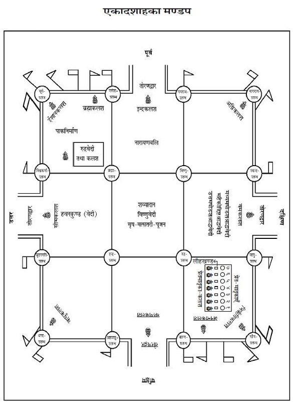
मण्डपमें एकादशाह-कृत्य
एकादशाहश्राद्धके कृत्य मण्डपमें भी करनेकी विधि है। कुछ लोग मण्डपनिर्माण करके यह कार्य करते हैं। अत: यहाँ संक्षेपमें मण्डपका स्वरूप दिया जा रहा है।१ वास्तुशास्त्रके अनुसार सोलह या अठारह हाथका मण्डप उत्तम होता है। मण्डपकी लम्बाई-चौड़ाई समान होनी चाहिये। मण्डप दस हाथ तथा बारह हाथ लम्बा-चौड़ा भी होता है, किंतु वह प्रशस्त नहीं माना जाता।२
१. मण्डपनिर्माणकी पूर्ण प्रक्रिया कुण्डमण्डपसिद्धि आदि ग्रन्थोंमें तथा मण्डप-प्रतिष्ठा-पूजनादिकी विधि विष्णुयाग आदि पद्धतियोंमें देखनी चाहिये।
२. कनीयान् दशहस्त: स्यान्मध्यमो द्वादशोन्मित:।
तथा षोडशभिर्हस्तैर्मण्डपं स्यादिहोत्तमम्॥
(पंचरात्र)
सर्वप्रथम मण्डपस्थलको समान नौ भागोंमें विभक्त कर लेना चाहिये। मण्डप बनानेके लिये सोलह खम्भोंको गाड़नेकी विधि है। बारह खम्भे बाहर समान दूरीपर गाड़े जायँगे तथा चार खम्भे मण्डपके मध्यमें गाड़े जायँगे। बारह खम्भे जो पाँच-पाँच हाथके होंगे, इन्हें एक-एक हाथ जमीनके अंदर गाड़ना चाहिये तथा चार-चार हाथ जमीनसे ऊपर रखना चाहिये। मध्यके चारों खम्भे मध्यमें समान दूरीपर आठ-आठ हाथके होंगे जो एक हाथ जमीनमें गड़े तथा सात हाथ जमीनसे ऊपर रहेंगे। बाँस और फूसकी सहायतासे मण्डपपर छाजन करना चाहिये तथा बीचवाले चार खम्भोंके ऊपर शिखर बनाना चाहिये।
द्वार एवं तोरणद्वार—मण्डपके चारों ओर चार दिशाओंमें एक-एक द्वार बनाना चाहिये, जो मण्डपद्वार कहलाता है। इन चारों मण्डपद्वारोंके बाहर एक-एक हाथकी दूरीपर चार पृथक्-पृथक् द्वार बनाने चाहिये, जो तोरणद्वार कहलाते हैं। पूर्वमें वट या पीपलका, दक्षिणमें गूलरका, पश्चिममें पीपल या पाकड़का तथा उत्तरमें पाकड़ या बरगदका तोरणद्वार बनाना चाहिये। सब वृक्षोंकी लकड़ी न मिले तो इनमेंसे किसी एक ही वृक्षकी लकड़ीका तोरणद्वार बनाये। ४ हाथ लम्बा और २ हाथ ६ अंगुल चौड़ा—यह द्वारकी माप है।
यज्ञमण्डपके सोलह स्तम्भोंके देवताओंके नाम—बीचवाले चारों खम्भोंमें ईशानकोणके स्तम्भमें ब्रह्मा, अग्निकोणमें विष्णु, नैर्ऋत्यकोणमें रुद्र, वायव्यकोणके स्तम्भमें इन्द्र देवता होते हैं। बाहरके बारह स्तम्भोंमें ईशानकोणसे क्रमश: सूर्य, गणेश, यमराज (धर्मराज), नागराज, स्कन्द, वायु, सोम, वरुण, अष्ट वसु, धनद (कुबेर), बृहस्पति तथा विश्वकर्मा देवता होते हैं।* बल्लियोंमें बँधी हुई रस्सियोंमें नागराजका आवाहन किया जाता है। मण्डपके ऊपर बँधे बाँसमें किन्नरदेवताओंका तथा मण्डपके ऊपरवाले पृष्ठभागमें पन्नगदेवोंका आवाहन-पूजन किया जाता है। सोलह स्तम्भोंके उक्त देवताओंके अतिरिक्त अन्य देवताओंके आवाहन-पूजन करनेका भी विधान है।
* ब्रह्मा विष्णुश्च रुद्रश्च शक्रभानुगजानना:।
यमश्च सर्पसेनान्यौ पृषदश्वा निशापति:॥
प्रचेता वसुधनदौ वाक्पतिस्त्वष्टृनन्दन:।
एते देवा: समाख्याता: स्तम्भकर्मणि सूरिभि:॥
(यज्ञमीमांसा)
मण्डपके सोलह स्तम्भोंके नाम—शुभद, विजय, कृष्ण, श्रीमान्, मंगल, गुरु, जय, धनद, कल्याणी, शुभ, शान्त, मनोहर, ऋद्धि, सिद्धि, विचित्र और दिव्यरूप—ये क्रमश: सोलह स्तम्भोंके नाम हैं।*
* शुभदं विजयं कृष्णं श्रीमन्तं मङ्गलं गुरुम्।
जयं धनदकल्याणी शुभं शान्तं मनोहरम्॥
ऋद्धिं सिद्धिं विचित्रं च दिव्यरूपमनुक्रमात्।
मण्डपस्तम्भनामानि षोडशैतान्यसंशय:॥
(यज्ञमीमांसा)
ध्वजा-पताका—पूर्वादि क्रमसे दस दिक्पालोंके लिये ध्वजा-पताका लगानेका विधान है, जिसका रंग, आकार इस प्रकार है—ध्वजाओंका आकार त्रिकोण होगा। ये ध्वजाएँ २ हाथ चौड़ी और ५ हाथ लम्बी होंगी।*
* ध्वजा-पताकाकी माप मतान्तरसे १ हाथ लम्बी और १ बित्ता चौड़ी भी हो सकती है।
ये १० हाथ लम्बे बाँसपर लगायी जायँगी। पताका चौकोर होती है। यह १ हाथ चौड़ी और ७ हाथ लम्बी होगी। पूर्वमें पीली ध्वजा-पताका, अग्निकोणमें लाल, दक्षिणमें काली, नैर्ऋत्यकोणमें नीली, पश्चिममें सफेद, वायव्यकोणमें हरी या धूम, उत्तरमें सफेद या हरी, ईशानकोणमें सफेद, पूर्व एवं ईशानके बीच ब्रह्माके लिये लाल और नैर्ऋत्य तथा पश्चिमके बीचमें अनन्तके लिये काली या पीत होगी। इस तरहसे ध्वजा-पताकाओंमें अलग-अलग बाँस लगेंगे। इनका पूजन दशदिक्पालपूजनके साथ ही होता है।
मण्डपके मध्यमें या ईशानकोणमें एक पंचरंगा महाध्वज भी रहेगा, जो ३ हाथ चौड़ा एवं ५ हाथ लम्बा होगा। यह घंटी, घुँघरू आदिसे अलंकृत रहेगा।
पूर्वादि क्रमसे दस दिक्पालोंके नाम—पूर्वमें इन्द्र, अग्निकोणमें अग्नि, दक्षिणमें यम, नैर्ऋत्यकोणमें र्निऋति, पश्चिममें वरुण, वायव्यकोणमें वायु, उत्तरमें सोम, ईशानकोणमें ईशान, ईशान और पूर्वके बीचमें ब्रह्मा तथा पश्चिम और नैर्ऋत्यके बीचमें अनन्त होंगे।
मण्डपमें विविध पूजन तथा श्राद्धकृत्य—मण्डपमें ईशानकोणपर रुद्रकलशकी स्थापना तथा पूजा होगी। वेदीके मध्यभागमें विष्णुवेदी होगी, इसीपर शय्यादान होगा। पूर्वभागमें नारायणबलि होगी। दक्षिणभागमें मध्यमषोडशी होगी और वहींपर प्रेतका आसन भी रहेगा, जहाँ महैकोद्दिष्टश्राद्ध तथा उत्तमषोडशश्राद्ध होगा। ईशानकोणपर पाकका निर्माण होगा। मण्डपके मध्यभागमें वृषपूजन एवं स्नानादि कृत्य होंगे। विष्णुवेदीके उत्तर हवनकुण्ड या वेदी होगी। जिस क्रियाकी समाप्ति हो जायगी, उस स्थानको तत्काल साफ करके, लीप करके अन्य कार्य किये जायँगे।
संक्षिप्त मण्डप-पूजन
सर्वप्रथम मण्डपका संस्कारयुक्त पंचगव्यसे प्रोक्षण करे। तत्पश्चात् आचमन, प्राणायाम करके यजमान दाहिने हाथमें त्रिकुश, अक्षत, जल, तथा पुष्प लेकर संकल्प करे—
संकल्प—ॐ अद्य ....गोत्र: ....शर्मा/वर्मा/गुप्तोऽहम् ....गोत्रस्य (....गोत्राया:) ....प्रेतस्य (....प्रेताया:) करिष्यमाणैकादशाहकर्मणि मण्डपदेवतानां तोरणद्वारदेवतानां तथा च इन्द्रादिदशदिक्पालसहितध्वजपताकामहाध्वजस्थदेवानामावाहनं स्थापनं यथालब्धोपचारै: पूजनं च करिष्ये। संकल्पजल छोड़ दे।
स्तम्भ-पूजन
सर्वप्रथम गन्धादि उपचारोंसे मध्यके चार स्तम्भोंका पूजन करे—
(१) ॐ भूर्भुव: स्व: ब्रह्मस्तम्भे ब्रह्मणे नम:, ब्रह्माणमावाहयामि, स्थापयामि। सर्वोपचारार्थे गन्धाक्षतपुष्पाणि समर्पयामि।
हाथमें जल लेकर बोले—अनया पूजया ब्रह्मा प्रीयताम्, न मम। जल छोड़ दे। इसी प्रकार शेष स्तम्भोंका भी पूजन करे और पूजन अर्पित करे।
(२) ॐ भूर्भुव: स्व: विष्णुस्तम्भे विष्णवे नम:, विष्णुमावाहयामि, स्थापयामि। सर्वोपचारार्थे गन्धाक्षतपुष्पाणि समर्पयामि। अनया पूजया विष्णु: प्रीयताम्, न मम।
(३) ॐ भूर्भुव: स्व: रुद्रस्तम्भे रुद्राय नम:, रुद्रमावाहयामि, स्थापयामि। सर्वोपचारार्थेगन्धाक्षतपुष्पाणि समर्पयामि। अनया पूजया रुद्र: प्रीयताम्, न मम।
(४) ॐ भूर्भुव: स्व: इन्द्रस्तम्भे इन्द्राय नम:, इन्द्रमावाहयामि, स्थापयामि। सर्वोपचारार्थेगन्धाक्षतपुष्पाणि समर्पयामि। अनया पूजया इन्द्र: प्रीयताम्, न मम।
फिर मण्डपके पश्चिमद्वारसे बाहर आकर मण्डपके ईशानकोणसे प्रदक्षिणक्रमसे स्तम्भदेवोंका पूजन करे।
(५) ॐ भूर्भुव: स्व: सूर्यस्तम्भे सूर्याय नम:, सूर्यमावाहयामि, स्थापयामि। सर्वोपचारार्थेेगन्धाक्षतपुष्पाणि समर्पयामि। अनया पूजया सूर्य: प्रीयताम्, न मम।
(६) ॐ भूर्भुव: स्व: गणपतिस्तम्भे गणपतये नम:, गणपतिमावाहयामि, स्थापयामि। सर्वोपचारार्थे गन्धाक्षतपुष्पाणि समर्पयामि। अनया पूजया गणपति: प्रीयताम्, न मम।
(७) ॐ भूर्भुव: स्व: धर्मराजस्तम्भे धर्मराजाय नम:, धर्मराजमावाहयामि, स्थापयामि। सर्वोपचारार्थे गन्धाक्षतपुष्पाणि समर्पयामि। अनया पूजया धर्मराज: प्रीयताम्, न मम।
(८) ॐ भूर्भुव: स्व: नागराजस्तम्भे नागराजाय नम:, नागराजमावाहयामि, स्थापयामि। सर्वोपचारार्थे गन्धाक्षतपुष्पाणि समर्पयामि। अनया पूजया नागराज: प्रीयताम्, न मम।
(९) ॐ भूर्भुव: स्व: स्कन्दस्तम्भे स्कन्दाय नम:, स्कन्दमावाहयामि, स्थापयामि। सर्वोपचारार्थे गन्धाक्षतपुष्पाणि समर्पयामि। अनया पूजया स्कन्द: प्रीयताम्, न मम।
(१०) ॐ भूर्भुव: स्व: वायुस्तम्भे वायवे नम:, वायुमावाहयामि स्थापयामि। सर्वोपचारार्थेे गन्धाक्षतपुष्पाणि समर्पयामि। अनया पूजया वायु: प्रीयताम्, न मम।
(११) ॐ भूर्भुव: स्व: सोमस्तम्भे सोमाय नम:, सोममावाहयामि, स्थापयामि। सर्वोपचारार्थेे गन्धाक्षतपुष्पाणि समर्पयामि। अनया पूजया सोमराज: प्रीयताम्, न मम।
(१२) ॐ भूर्भुव: स्व: वरुणस्तम्भे वरुणाय नम:, वरुणमावाहयामि, स्थापयामि। सर्वोपचारार्थे गन्धाक्षतपुष्पाणि समर्पयामि। अनया पूजया वरुण: प्रीयताम्, न मम।
(१३) ॐ भूर्भुव: स्व: वसवस्तम्भे अष्टवसुभ्यो नम:, अष्टवसून् आवाहयामि, स्थापयामि। सर्वोपचारार्थे गन्धाक्षतपुष्पाणि समर्पयामि। अनया पूजया अष्टवसव: प्रीयन्ताम्, न मम।
(१४) ॐ भूर्भुव: स्व: धनदस्तम्भे धनदाय नम:, धनदमावाहयामि, स्थापयामि। सर्वोपचारार्थे गन्धाक्षतपुष्पाणि समर्पयामि। अनया पूजया धनद: प्रीयताम्, न मम।
(१५) ॐ भूर्भुव: स्व: बृहस्पतिस्तम्भे बृहस्पतये नम:, बृहस्पतिमावाहयामि, स्थापयामि। सर्वोपचारार्थे गन्धाक्षतपुष्पाणि समर्पयामि। अनया पूजया बृहस्पति: प्रीयताम्, न मम।
(१६) ॐ भूर्भुव: स्व: विश्वकर्मास्तम्भे विश्वकर्मणे नम:, विश्वकर्माणमावाहयामि, स्थापयामि। सर्वोपचारार्थे गन्धाक्षतपुष्पाणि समर्पयामि। अनया पूजया विश्वकर्मा प्रीयताम्, न मम।
तोरणद्वार-पूजन
पुन: पूर्वतोरणद्वारपर आकर तोरणद्वारोंका प्रदक्षिणक्रमसे पूजन करे—
पूर्व—ॐ भूर्भुव: स्व: पूर्वतोरणद्वारस्थिताय सुदृढतोरणाय नम:, सुदृढतोरणमावाहयामि, स्थापयामि। सर्वोपचारार्थे गन्धाक्षतपुष्पाणि समर्पयामि। नमस्करोमि। अनया पूजया सुदृढतोरण: प्रीयताम्, न मम।
दक्षिण—ॐ भूर्भुव: स्व: दक्षिणतोरणद्वारस्थिताय सुभद्रतोरणाय नम:, सुभद्रतोरणमावाहयामि, स्थापयामि। सर्वोपचारार्थे गन्धाक्षतपुष्पाणि समर्पयामि। नमस्करोमि। अनया पूजया सुभद्रतोरण: प्रीयताम्, न मम।
पश्चिम—ॐ भूर्भुव: स्व: पश्चिमतोरणद्वारस्थिताय सुभीमतोरणाय नम:, सुभीमतोरणमावाहयामि, स्थापयामि। सर्वोपचारार्थे गन्धाक्षतपुष्पाणि समर्पयामि। नमस्करोमि। अनया पूजया सुभीमतोरण: प्रीयताम्, न मम।
उत्तर—ॐ भूर्भुव: स्व: उत्तरतोरणद्वारस्थिताय सुहोत्रतोरणाय नम:, सुहोत्रतोरणमावाहयामि, स्थापयामि। सर्वोपचारार्थे गन्धाक्षतपुष्पाणि समर्पयामि। नमस्करोमि। अनया पूजया सुहोत्रतोरण: प्रीयताम्, न मम।
दस दिक्पाल एवं ध्वजापताका-पूजन
पूर्वद्वारसे प्रारम्भ करके प्रदक्षिणक्रमसे दस कलशोंकी कलशस्थापन-विधिसे स्थापना कर ले, फिर उनपर पूर्वादिक्रमसे इन्द्रादि दस दिक्पालोंका आवाहन-पूजन करे। दिक्पाल कलशोंके साथ ध्वजा तथा पताकाका पूजन भी कर ले।
(१) पूर्वके कलशपर—ॐ भूर्भुव: स्व: ध्वजापताकास्थितदेवतासहिताय इन्द्राय नम:, इन्द्रमावाहयामि, स्थापयामि। सर्वोपचारार्थे गन्धाक्षतपुष्पाणि समर्पयामि। नमस्करोमि। अनया पूजया ध्वजापताकास्थितदेवतासहितेन्द्र: प्रीयताम्, न मम।
(२) अग्निकोणके कलशपर—ॐ भूर्भुव: स्व: ध्वजापताकास्थितदेवतासहिताय अग्नये नम:, अग्निमावाहयामि, स्थापयामि। सर्वोपचारार्थे गन्धाक्षतपुष्पाणि समर्पयामि। नमस्करोमि। अनया पूजया ध्वजापताकास्थितदेवतासहितोऽग्नि: प्रीयताम्, न मम।
(३) दक्षिणके कलशपर—ॐ भूर्भुव: स्व: ध्वजापताकास्थितदेवतासहिताय यमाय नम:, यममावाहयामि, स्थापयामि। सर्वोपचारार्थे गन्धाक्षतपुष्पाणि समर्पयामि। नमस्करोमि। अनया पूजया ध्वजापताकास्थितदेवतासहितो यम: प्रीयताम्, न मम।
(४) नैर्ऋत्यकोणके कलशपर—ॐ भूर्भुव: स्व: ध्वजापताकास्थितदेवतासहिताय निर्ऋतये नम:, निर्ऋतिमावाहयामि, स्थापयामि। सर्वोपचारार्थे गन्धाक्षतपुष्पाणि समर्पयामि। नमस्करोमि। अनया पूजया ध्वजापताकास्थितदेवतासहितो निर्ऋति: प्रीयताम्, न मम।
(५) पश्चिमके कलशपर—ॐ भूर्भुव: स्व: ध्वजापताकास्थितदेवतासहिताय वरुणाय नम:, वरुणमावाहयामि, स्थापयामि। सर्वोपचारार्थे गन्धाक्षतपुष्पाणि समर्पयामि। नमस्करोमि। अनया पूजया ध्वजापताकास्थितदेवतासहितो वरुण: प्रीयताम्, न मम।
(६) वायव्यकोणके कलशपर—ॐ भूर्भुव: स्व: ध्वजापताकास्थितदेवतासहिताय वायवे नम:, वायुमावाहयामि, स्थापयामि। सर्वोपचारार्थे गन्धाक्षतपुष्पाणि समर्पयामि। नमस्करोमि। अनया पूजया ध्वजापताकास्थितदेवतासहितो वायु: प्रीयताम्, न मम।
(७) उत्तरके कलशपर—ॐ भूर्भुव: स्व: ध्वजापताकास्थितदेवतासहिताय सोमाय नम:, सोममावाहयामि, स्थापयामि। सर्वोपचारार्थे गन्धाक्षतपुष्पाणि समर्पयामि। नमस्करोमि। अनया पूजया ध्वजापताकास्थितदेवतासहित: सोम: प्रीयताम्, न मम।
(८) ईशानकोणके कलशपर—ॐ भूर्भुव: स्व: ध्वजापताकास्थितदेवतासहिताय ईशानाय नम:, ईशानमावाहयामि, स्थापयामि। सर्वोपचारार्थे गन्धाक्षतपुष्पाणि समर्पयामि। नमस्करोमि। अनया पूजया ध्वजापताकास्थितदेवतासहितेशान: प्रीयताम्, न मम।
(९) ईशानकोण तथा पूर्वके मध्यमें स्थित कलशपर—ॐ भूर्भुव: स्व: ध्वजापताकास्थितदेवतासहिताय ब्रह्मणे नम:, ब्रह्माणमावाहयामि, स्थापयामि। सर्वोपचारार्थे गन्धाक्षतपुष्पाणि समर्पयामि। नमस्करोमि। अनया पूजया ध्वजापताकास्थितदेवतासहितो ब्रह्मा प्रीयताम्, न मम।
(१०) नैर्ऋत्यकोण तथा पश्चिमके मध्यमें स्थित कलशपर—ॐ भूर्भुव: स्व: ध्वजापताकास्थितदेवतासहिताय अनन्ताय नम:, अनन्तमावाहयामि, स्थापयामि। सर्वोपचारार्थे गन्धाक्षतपुष्पाणि समर्पयामि। नमस्करोमि। अनया पूजया ध्वजापताकास्थितदेवतासहितोऽनन्त: प्रीयताम्, न मम।
महाध्वज-पूजन
ईशानकोणमें पँचरंगे ध्वजपर—ॐ भूर्भुव: स्व: महाध्वजस्थब्रह्मणे नम:। ब्रह्माणमावाहयामि, स्थापयामि। सर्वोपचारार्थे गन्धाक्षतपुष्पाणि समर्पयामि। नमस्करोमि। अनया पूजया महाध्वजस्थब्रह्मा प्रीयताम्, न मम।
मण्डपभूमि आदिका पूजन
पुन: मण्डपके पश्चिम-द्वारपर आकर मण्डपभूमि आदिका पूजन करे—
ॐ भूर्भुव: स्व: मण्डपभूम्यै नम:, भूमिमावाहयामि, स्थापयामि। सर्वोपचारार्थे गन्धाक्षतपुष्पाणि समर्पयामि। नमस्करोमि। अनया पूजया भूमि: प्रीयताम्, न मम।
शाखाबन्धनेषु नागमातृभ्यो नम:, नागमातॄृ: आवाहयामि, स्थापयामि। सर्वोपचारार्थे गन्धाक्षतपुष्पाणि समर्पयामि। नमस्करोमि। अनया पूजया नागमातर: प्रीयन्ताम्, न मम।
ॐ भूर्भुव: स्व: वंशेषु किन्नरेभ्यो नम:, किन्नरान् आवाहयामि, स्थापयामि। सर्वोपचारार्थे गन्धाक्षतपुष्पाणि समर्पयामि। नमस्करोमि। अनया पूजया किन्नरा: प्रीयन्ताम्, न मम।
ॐ भूर्भुव: स्व: मण्डपस्य पृष्ठभागे पन्नगेभ्यो नम:। पन्नगान् आवाहयामि, स्थापयामि। सर्वोपचारार्थे गन्धाक्षतपुष्पाणि समर्पयामि। नमस्करोमि। अनया पूजया पन्नगा: प्रीयन्ताम्, न मम।
हाथमें पुष्प लेकर निम्न मन्त्र पढ़े और पुष्पको भूमिपर गिरा दे—
ॐ जितं ते पुण्डरीकाक्ष नमस्ते विश्वभावन।
नमस्तेऽस्तु हृषीकेश महापुरुष पूर्वज॥
तदनन्तर दक्षिण पैरको आगेकर यजमान मण्डपमें प्रवेश करे तथा आगेका कृत्य प्रारम्भ करे।
वैकल्पिक मण्डप
एकादशाहकर्मके आरम्भमें यदि शास्त्रविधिसे मण्डप बना हो तो मण्डपका आवाहन-पूजन करे। यदि सोलह स्तम्भयुक्त पूर्व-विधानसे मण्डप बनवानेकी सामर्थ्य न हो तो सोलह हाथ भूमिको साफकर, लीपकर चारों कोनोंमें चार केलेके खम्भे, चारों दरवाजोंपर आठ केलेके खम्भे गाड़कर, फूल-पत्ती आदिसे सजाकर और तम्बू आदिसे छाया करके एकादशाह-कृत्य करने चाहिये।
नीलवृषश्राद्ध*
* नीलश्राद्धं तु कर्तव्यं यवपिष्टेन धीमता।
तिलशर्करया युक्तं तर्पणं च तत: परम्॥
यवचूर्णेन तिलघृतमधुशर्कराभिर्नीलमुखाग्रे
पौराणिकमन्त्रेण पिण्डान् दद्यात्।
(श्राद्धसंग्रह)
वृषके अभिमन्त्रणके अनन्तर तिल और शर्करामिश्रित जौके आटेसे २८ पिण्ड बनाकर पिण्डदान करना चाहिये। सव्य, पूर्वाभिमुख होकर हाथमें जल, तिल, त्रिकुश लेकर पिण्डदानका निम्न प्रतिज्ञा-संकल्प करे—
प्रतिज्ञासंकल्प—ॐ विष्णुर्विष्णुर्विष्णु: नम: परमात्मने पुरुषोत्तमाय ॐ तत्सत् अद्य ब्रह्मणो द्वितीयपरार्धे श्रीश्वेतवाराहकल्पे वैवस्वतमन्वन्तरे अष्टाविंशतितमे कलियुगे कलिप्रथमचरणे जम्बूद्वीपे भारतवर्षे भरतखण्डे ....क्षेत्रे (यदि काशी हो तो अविमुक्तवाराणसीक्षेत्रे आनन्दवने गौरीमुखे त्रिकण्टकविराजते महाश्मशाने भगवत्या उत्तरवाहिन्या भागीरथ्या गङ्गाया वामभागे) ....संवत्सरे उत्तरायणे/दक्षिणायने ....ऋतौ ....मासे ....पक्षे ....तिथौ ....वासरे ....गोत्र: ....शर्मा/वर्मा/गुप्तोऽहम् ....गोत्रस्य (गोत्राया:) ....प्रेतस्य (प्रेताया:) एकादशाहे क्रियमाणे वृषोत्सर्गकर्मणि शास्त्रोक्तफलप्राप्त्यर्थं नीलवृषश्राद्धं करिष्ये। हाथका संकल्पजल छोड़ दे।
तदनन्तर अपसव्य दक्षिणाभिमुख हो जाय, बायाँ घुटना जमीनपर गिरा ले। दायें हाथमें जल, तिल, त्रिकुश तथा एक-एक पिण्ड लेकर पितृतीर्थसे निम्न मन्त्रोंको पृथक्-पृथक् पढ़ते हुए नीलवृषके मुखके आगे पिण्डदान करे।
पिण्डदानके मन्त्र
पितृपक्षाश्च ये केचिद्ये चान्ये मातृपक्षका:।
गुरुश्वशुरबन्धूनां ये कुलेषु समुद्भवा:॥
ते सर्वे तृप्तिमायान्तु नीलपिण्डं ददाम्यहम्॥१॥
ये चान्ये लुप्तपिण्डाश्च पुत्रदारविवर्जिता:।
ते सर्वे तृप्तिमायान्तु नीलपिण्डं ददाम्यहम्॥२॥
आब्रह्मणो ये पितृवंशजाता
मातुस्तथा वंशभवा मदीया:।
कुलद्वये ये मम वंशभूता
भृत्यास्तथैवाश्रितसेवकाश्च॥
ते सर्वे तृप्तिमायान्तु नीलपिण्डं ददाम्यहम्॥३॥
मित्राणि शिष्या पशवश्च वृक्षा:
दृष्टा ह्यदृष्टाश्च कृतोपकारा:।
जन्मान्तरे ये मम सङ्गताश्च
तेभ्य: स्वधा पिण्डमिदं ददामि॥
ते सर्वे तृप्तिमायान्तु नीलपिण्डं ददाम्यहम्॥४॥
ये बान्धवाबान्धवा वा येऽन्यजन्मनि बान्धवा:।
अकालेऽपगता ये च ये चान्धा: पङ्गवस्तथा॥
ते सर्वे तृप्तिमायान्तु नीलपिण्डं ददाम्यहम्॥५॥
विरूपा आमगर्भाश्च ज्ञाताज्ञाता: कुले मम।
आमगर्भाश्च ये केचिदागता मुखगोचरे॥
ते सर्वे तृप्तिमायान्तु नीलपिण्डं ददाम्यहम्॥६॥
वृषयोनिगता ये च कीटकादिपतङ्गका:।
ते सर्वे तृप्तिमायान्तु नीलपिण्डं ददाम्यहम्॥७॥
नरके रौरवे जाता: कुम्भीपाके च ये गता:।
ते सर्वे तृप्तिमायान्तु नीलपिण्डं ददाम्यहम्॥८॥
तप्ततैले च क्षीयन्ते यमलोके महाभये।
ते सर्वे तृप्तिमायान्तु नीलपिण्डं ददाम्यहम्॥९॥
पीडॺन्ते किङ्करैर्ये च सुदृढमिक्षुकाण्डवत्।
ते सर्वे तृप्तिमायान्तु नीलपिण्डं ददाम्यहम्॥१०॥
जलेन पीडिता: पङ्के यमदूतैर्महाबलै:।
ते सर्वे तृप्तिमायान्तु नीलपिण्डं ददाम्यहम्॥११॥
यन्त्रमध्ये प्रपीडॺन्ते प्रेतपीडाव्यवस्थिता:।
ते सर्वे तृप्तिमायान्तु नीलपिण्डं ददाम्यहम्॥१२॥
कुष्ठापस्मारलूताभिर्जलोदरभगन्दरै:।
ते सर्वे तृप्तिमायान्तु नीलपिण्डं ददाम्यहम्॥१३॥
गण्डमालापाण्डुरोगै: क्षयव्याधिमृताश्च ये।
ते सर्वे तृप्तिमायान्तु नीलपिण्डं ददाम्यहम्॥१४॥
कारागृहे मृता ये च व्याघ्रभीतिहतास्तथा।
ते सर्वे तृप्तिमायान्तु नीलपिण्डं ददाम्यहम्॥१५॥
चाण्डालैर्निहता मार्गे आशौचशयने मृता:।
ते सर्वे तृप्तिमायान्तु नीलपिण्डं ददाम्यहम्॥१६॥
ब्रह्मस्वहारिणो ये च सुरापा ब्रह्महारिण:।
ते सर्वे तृप्तिमायान्तु नीलपिण्डं ददाम्यहम्॥१७॥
कुब्जाश्च बधिरा ये च पितृमातृकुलोद्भवा:।
ते सर्वे तृप्तिमायान्तु नीलपिण्डं ददाम्यहम्॥१८॥
संसाररहिता ये च रौरवादिषु ये गता:।
ते सर्वे तृप्तिमायान्तु नीलपिण्डं ददाम्यहम्॥१९॥
वृक्षयोनिगता ये च तृणगुल्मलतास्थिता:।
ते सर्वे तृप्तिमायान्तु नीलपिण्डं ददाम्यहम्॥२०॥
देवत्वं मानुषत्वं च तिर्यक् प्रेतपिशाचका:।
ते सर्वे तृप्तिमायान्तु नीलपिण्डं ददाम्यहम्॥२१॥
कृमिकीटपतङ्गत्वं गता ये च स्वकर्मणा।
ते सर्वे तृप्तिमायान्तु नीलपिण्डं ददाम्यहम्॥२२॥
आसुरीं योनिमापन्ना: पिशाचत्वं च ये गता:।
ते सर्वे तृप्तिमायान्तु नीलपिण्डं ददाम्यहम्॥२३॥
उद्बन्धनरके जाता ऊर्ध्ववक्त्रस्थिताश्च ये।
ते सर्वे तृप्तिमायान्तु नीलपिण्डं ददाम्यहम्॥२४॥
महापातकजान् घोरान् नरकान् प्राप्य दारुणान्।
ते सर्वे तृप्तिमायान्तु नीलपिण्डं ददाम्यहम्॥२५॥
महाप्रेता महाभागा: पूर्वप्रेतत्वसंस्थिता।
ते सर्वे तृप्तिमायान्तु नीलपिण्डं ददाम्यहम्॥२६॥
अगम्यागमने लुब्धा व्रतभङ्गकराश्च ये।
ते सर्वे तृप्तिमायान्तु नीलपिण्डं ददाम्यहम्॥२७॥
जलाग्निभिर्मृता ये च अघोरा धर्मवर्जिता:।
ते सर्वे तृप्तिमायान्तु नीलपिण्डं ददाम्यहम्॥२८॥
॥ इस प्रकार नीलवृषश्राद्ध पूर्ण हुआ॥
नीलवृषपुच्छोदकतर्पण
नीलवृषश्राद्ध करनेके अनन्तर नीलवृषपुच्छोदकतर्पण करना चाहिये। सव्य, पूर्वाभिमुख होकर आचमन कर ले। दाहिने हाथमें तिल, जल, त्रिकुश लेकर नीलवृषपुच्छोदकतर्पणका प्रतिज्ञासंकल्प करे—
प्रतिज्ञासंकल्प—ॐ अद्य पूर्वोच्चारितग्रहगणगुणविशेषणविशिष्टायां शुभपुण्यतिथौ ....गोत्र: ....शर्मा/वर्मा/गुप्तोऽहं ....गोत्रस्य (गोत्राया:) ....प्रेतस्य (प्रेताया:) एकादशाहे क्रियमाणे वृषोत्सर्गकर्मणि शास्त्रोक्तफलप्राप्त्यर्थं नीलवृषपुच्छोदकतर्पणं करिष्ये। हाथका संकल्पजल छोड़ दे। तदनन्तर हाथमें नीलवृषकी पूँछ तथा जौ, जल, त्रिकुश लेकर देवतीर्थसे निम्न मन्त्रोंको पढ़ते हुए देवादि तर्पण करे—
ब्रह्माद्या देवता: सर्वा ऋषयो मुनयस्तथा।
ते सर्वे तृप्तिमायान्तु नीलपुच्छेषु तर्पिता:॥१॥
असुरा देवपत्न्यश्च मातरश्चण्डिकास्तथा।
दिक्पाला लोकपालाश्च गृहदेवाधिदेवता:॥
ते सर्वे तृप्तिमायान्तु नीलपुच्छेषु तर्पिता:॥२॥
विश्वेदेवास्तथादित्या: साध्याश्चैव मरुद्गणा:।
ते सर्वे तृप्तिमायान्तु नीलपुच्छेषु तर्पिता:॥३॥
क्षेत्रपीठोपपीठादि नदा नद्यश्च सागरा:।
ते सर्वे तृप्तिमायान्तु नीलपुच्छेषु तर्पिता:॥४॥
पाताले नागपत्न्यश्च नागाश्चैव सपर्वता:।
ते सर्वे तृप्तिमायान्तु नीलपुच्छेषु तर्पिता:॥५॥
पृथिव्यापश्च तेजश्च वायुराकाशमेव च।
ते सर्वे तृप्तिमायान्तु नीलपुच्छेषु तर्पिता:॥६॥
पिशाचा गुह्यका: प्रेता गणा गन्धर्वराक्षसा:।
ते सर्वे तृप्तिमायान्तु नीलपुच्छेषु तर्पिता:॥७॥
दिवि भुव्यन्तरिक्षे च ये च पातालवासिन:।
ते सर्वे तृप्तिमायान्तु नीलपुच्छेषु तर्पिता:॥८॥
शिव: शिवा तथा विष्णु: सिद्धिर्लक्ष्मी: सरस्वती।
ते सर्वे तृप्तिमायान्तु नीलपुच्छेषु तर्पिता:॥९॥
तपोधनश्च भगवान् व्यक्ताऽव्यक्त: परेश्वर:।
ते सर्वे तृप्तिमायान्तु नीलपुच्छेषु तर्पिता:॥१०॥
क्षेत्रौषधीर्लता वृक्षा: वनस्पत्यादिदेवता:।
ते सर्वे तृप्तिमायान्तु नीलपुच्छेषु तर्पिता:॥११॥
कपिल: शेषनागश्च तक्षकोऽनन्त एव च।
ते सर्वे तृप्तिमायान्तु नीलपुच्छेषु तर्पिता:॥१२॥
अनेकजलचरा जीवा असङ्ख्यातास्त्वनेकश:।
ते सर्वे तृप्तिमायान्तु नीलपुच्छेषु तर्पिता:॥१३॥
चतुर्दशयमाश्चैव चे चान्ये यमकिङ्करा:।
ते सर्वे तृप्तिमायान्तु नीलपुच्छेषु तर्पिता:॥१४॥
सर्वे तु यक्षराजान: पशव: पक्षिणस्तथा।
ते सर्वे तृप्तिमायान्तु नीलपुच्छेषु तर्पिता:॥१५॥
स्वेदजोद्भिज्जजातीया अण्डजाश्च जरायुजा:।
शान्तिदा: शुभदास्ते स्युर्नीलपुच्छेषु तर्पिता:॥१६॥
तदनन्तर अपसव्य, दक्षिणाभिमुख हो जाय; बायाँ घुटना जमीनपर लगा ले। हाथमें नीलवृषकी पूँछ, तिल, जल तथा त्रिकुश लेकर निम्न मन्त्रोंको पढ़ते हुए पितृतीर्थसे तर्पण करे—
ॐ स्वधा पितृभ्यो मातृभ्यो बन्धुभ्यश्चापि तृप्तये।
मातृपक्षाश्च ये केचिद्ये चाऽन्ये पितृपक्षजा:॥
गुरुश्वशुरबन्धूनां ये कुलेषु समुद्भवा:।
ते सर्वे तृप्तिमायान्तु नीलपुच्छेषु तर्पिता:॥१॥
ये चाऽन्ये लुप्तपिण्डाश्च पुत्रदारविवर्जिता:।
ते सर्वे तृप्तिमायान्तु नीलपुच्छेषु तर्पिता:॥२॥
आब्रह्मणो ये पितृवंशजाता
मातुस्तथा वंशभवा मदीया:।
कुलद्वये ये मम वंशभूता
भृत्यास्तथैवाश्रितसेवकाश्च॥
ते सर्वे तृप्तिमायान्तु नीलपुच्छेषु तर्पिता:॥३॥
मित्राणि शिष्या: पशवश्च वृक्षा
दृष्टा ह्यदृष्टाश्च कृतोपकारा:।
जन्मान्तरे ये मम सङ्गताश्च तेभ्य: स्वधाकृत्य इदं ददामि॥
ते सर्वे तृप्तिमायान्तु नीलपुच्छेषु तर्पिता:॥४॥
ये बान्धवाबान्धवा वा येऽन्यजन्मनि बान्धवा:।
ते सर्वे तृप्तिमायान्तु नीलपुच्छेषु तर्पिता:॥५॥
अकालेऽपगता ये च ये चान्धा: पङ्गवस्तथा।
ते सर्वे तृप्तिमायान्तु नीलपुच्छेषु तर्पिता:॥६॥
विरूपा आमगर्भाश्च ज्ञाताज्ञाता: कुले मम।
आमगर्भाश्च ये केचिदागता: पुच्छगोचरे॥
ते सर्वे तृप्तिमायान्तु नीलपुच्छेषु तर्पिता:॥७॥
वृषयोनिगता ये च कीटकाकपतङ्गका:।
ते सर्वे तृप्तिमायान्तु नीलपुच्छेषु तर्पिता:॥८॥
किङ्करै: पीडॺमाना ये सुतरामिक्षुकाण्डवत्।
ते सर्वे तृप्तिमायान्तु नीलपुच्छेषु तर्पिता:॥९॥
जलेन पीडिता: पङ्के यमदूतैर्महाबलै:।
ते सर्वे तृप्तिमायान्तु नीलपुच्छेषु तर्पिता:॥१०॥
यन्त्रमध्ये प्रपीडॺन्ते प्रेतपीडाव्यवस्थिता:।
कुष्ठापस्मारलूतादिजलोदरभगन्दरै: ॥
ते सर्वे तृप्तिमायान्तु नीलपुच्छेषु तर्पिता:॥११॥
गण्डमालापाण्डुरोगै: क्षयव्याधिमृताश्च ये।
ते सर्वे तृप्तिमायान्तु नीलपुच्छेषु तर्पिता:॥१२॥
कारागृहे मृता ये च सिंहव्याघ्रहताश्च ये।
ते सर्वे तृप्तिमायान्तु नीलपुच्छेषु तर्पिता:॥१३॥
चाण्डालैर्निहता मार्गे आशौचशयने मृता:।
ते सर्वे तृप्तिमायान्तु नीलपुच्छेषु तर्पिता:॥१४॥
ब्रह्मस्वहारिणो ये च सुरापा स्वर्णहारिण:।
ते सर्वे तृप्तिमायान्तु नीलपुच्छेषु तर्पिता:॥१५॥
कुब्जाश्च बधिरा ये च पितृमातृकुलोद्भवा:।
ते सर्वे तृप्तिमायान्तु नीलपुच्छेषु तर्पिता:॥१६॥
संसाररहिता ये च रौरवादिषु ये गता:।
ते सर्वे तृप्तिमायान्तु नीलपुच्छेषु तर्पिता:॥१७॥
सर्पयोनिगता ये च तृणगुल्मलतास्थिता:।
ते सर्वे तृप्तिमायान्तु नीलपुच्छेषु तर्पिता:॥१८॥
देवत्वं मानुषत्वं च तिर्यक् प्रेतपिशाचका:।
ते सर्वे तृप्तिमायान्तु नीलपुच्छेषु तर्पिता:॥१९॥
कृमिकीटपतङ्गत्वं गता ये च स्वकर्मणा।
ते सर्वे तृप्तिमायान्तु नीलपुच्छेषु तर्पिता:॥२०॥
पश्वादियोनिजाता ये वृश्चिकादिषु ये गता:।
ते सर्वे तृप्तिमायान्तु नीलपुच्छेषु तर्पिता:॥२१॥
आसुरीं योनिमुत्पन्ना: पिशाचत्वं च ये गता:।
ते सर्वे तृप्तिमायान्तु नीलपुच्छेषु तर्पिता:॥२२॥
उद्बन्धनरके जाता ऊर्ध्ववक्त्रस्थिताश्च ये।
ते सर्वे तृप्तिमायान्तु नीलपुच्छेषु तर्पिता:॥२३॥
महापातकजान् घोरान् नरकान् प्राप्य दारुणान्।
ते सर्वे तृप्तिमायान्तु नीलपुच्छेषु तर्पिता:॥२४॥
महाप्रेता महाभागा: प्रेतपूर्वे च ये स्थिता:।
ते सर्वे तृप्तिमायान्तु नीलपुच्छेषु तर्पिता:॥२५॥
अगम्यागमने लुब्धा व्रतभङ्गकराश्च ये।
ते सर्वे तृप्तिमायान्तु नीलपुच्छेषु तर्पिता:॥२६॥
जलाग्निभिर्मृता ये च अघोरा धर्मवर्जिता:।
ते सर्वे तृप्तिमायान्तु नीलपुच्छेषु तर्पिता:॥२७॥
ये प्रेतभावमापन्ना ये चान्ये श्राद्धवर्जिता:।
वृषोत्सर्गेण ते सर्वे लभन्तां प्रीतिमुत्तमाम्॥२८॥
॥ इस प्रकार नीलवृषपुच्छोदकतर्पण पूर्ण हुआ॥
प्रजापति रुचि और उनके द्वारा की गयी पितरोंकी उपासना [रुचिस्तव]
पूर्वकालकी बात है, रुचि नामक एक महात्मा थे, वे पितरोंके अनन्य भक्त थे। विरक्त होकर भगवान्का भजन करते हुए वे मुनिवृत्तिसे रहते थे तथा ममता और अहंकारसे रहित होकर इस पृथ्वीपर विचरण करते थे। उन्हें किसीसे भय नहीं था। वे बहुत कम सोते थे। उन्होंने न तो अग्निकी स्थापना की थी और न अपने लिये घर ही बना रखा था। वे एक बार भोजन करते और बिना आश्रमके ही रहते। उन्हें सब प्रकारकी आसक्तियोंसे रहित एवं मुनिवृत्तिसे रहते देख उनके पितरोंने उनसे कहा—
पितर बोले—बेटा! विवाह स्वर्ग और अपवर्गका हेतु* होनेके कारण एक पुण्यमय कार्य है; उसे तुमने क्यों नहीं किया? गृहस्थ पुरुष समस्त देवताओं, पितरों, ऋषियों और अतिथियोंकी पूजा करके पुण्यमय लोकोंको प्राप्त करता है। वह ‘स्वाहा’ के उच्चारणसे देवताओंको, ‘स्वधा’ शब्दसे पितरोंको तथा अन्नदान (बलिवैश्वदेव) आदिसे भूत आदि प्राणियों एवं अतिथियोंको उनका भाग समर्पित करता है। बेटा! हम ऐसा मानते हैं कि गृहस्थ-आश्रमको स्वीकार न करनेपर तुम्हें इस जीवनमें क्लेश-पर-क्लेश उठाना पड़ेगा तथा मृत्युके बाद और दूसरे जन्ममें भी क्लेश ही भोगने पड़ेंगे।
* अग्निहोत्र एवं यज्ञ-यागादि कर्ममें सपत्नीक गृहस्थका ही अधिकार है; ये कर्म निष्कामभावसे हों तो मोक्ष देनेवाले होते हैं और सकामभावसे किये जायँ तो स्वर्गादि फलोंके साधक होते हैं। जो उक्त कर्म करते हैं, उन्हींका विवाह स्वर्ग-अपवर्गका साधक है। जो विवाह करके गृहस्थोचित शुभ-कर्मोंका अनुष्ठान नहीं करते, उनके लिये तो विवाह-कर्म घोर बन्धनका ही कारण होता है।
रुचिने कहा—पितृगण! परिग्रहमात्र ही अत्यन्त दु:ख एवं पापका कारण होता है तथा उससे मनुष्यकी अधोगति होती है, यही सोचकर मैंने पहले स्त्री-संग्रह नहीं किया। मन और इन्द्रियोंको नियन्त्रणमें रखकर जो यह आत्मसंयम किया जाता है, वह भी परिग्रह करनेपर मोक्षका साधक नहीं होता। ममतारूप कीचड़में सना हुआ होनेपर भी यह आत्मा जो परिग्रहशून्य चित्तरूपी जलसे प्रतिदिन धोया जाता है, वह श्रेष्ठ प्रयत्न है। जितेन्द्रिय विद्वानोंको चाहिये कि वे अनेक जन्मोंद्वारा संचित कर्मरूपी पंकमें सने हुए आत्माका सद्वासनारूपी जलसे प्रक्षालन करें।
पितर बोले—बेटा! जितेन्द्रिय होकर आत्माका प्रक्षालन करना उचित ही है; किंतु तुम जिसपर चल रहे हो, वह मोक्षका मार्ग है। किंतु फलेच्छारहित दान और शुभाशुभके उपभोगसे भी पूर्वकृत अशुभ कर्म दूर होता है। इसी प्रकार दयाभावसे प्रेरित होकर जो कर्म किया जाता है, वह बन्धनकारक नहीं होता। फल-कामनासे रहित कर्म भी बन्धनमें नहीं डालता। पूर्वजन्ममें किया हुआ मानवोंका शुभाशुभ कर्म सुख-दु:खमय भोगोंके रूपमें प्रतिदिन भोगनेपर ही क्षीण होता है। इस प्रकार विद्वान् पुरुष आत्माका प्रक्षालन करते और उसकी बन्धनोंसे रक्षा करते हैं। ऐसा करनेसे वे अविवेकके कारण पापरूपी कीचड़में नहीं फँसते।
रुचिने पूछा—पितामहो! वेदमें कर्ममार्गको अविद्या कहा गया है, फिर क्यों आपलोग मुझे उस मार्गमें लगाते हैं?
पितर बोले—यह सत्य है कि कर्मको अविद्या ही कहा गया है, इसमें तनिक भी मिथ्या नहीं है; फिर भी इतना तो निश्चित है कि उस विद्याकी प्राप्तिमें कर्म ही कारण है। विहित कर्मका पालन न करके जो अधम मनुष्य संयम करते हैं, वह संयम अन्तमें मोक्षकी प्राप्ति नहीं कराता; अपितु अधोगतिमें ले जानेवाला होता है। वत्स! तुम तो समझते हो कि मैं आत्माका प्रक्षालन करता हूँ; किंतु वास्तवमें तुम शास्त्रविहित कर्मोंके न करनेके कारण पापोंसे दग्ध हो रहे हो! कर्म अविद्या होनेपर भी विधिके पालनद्वारा शोधे हुए विषकी भाँति मनुष्योंका उपकार करनेवाला ही होता है। इसके विपरीत वह विद्या भी विधिकी अवहेलनासे निश्चय ही हमारे बन्धनका कारण बन जाती है। अत: वत्स! तुम विधिपूर्वक स्त्री-संग्रह करो। ऐसा न हो कि इस लोकका लाभ न मिलनेके कारण तुम्हारा जन्म निष्फल हो जाय।
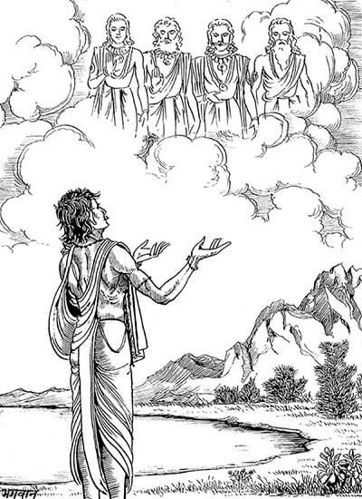
रुचिने कहा—पितरो! अब तो मैं बूढ़ा हो गया; भला, मुझको कौन स्त्री देगा? इसके सिवा मुझ-जैसे दरिद्रके लिये स्त्रीको रखना बहुत कठिन कार्य है।
पितर बोले—वत्स! यदि हमारी बात नहीं मानोगे तो हमलोगोंका पतन हो जायगा और तुम्हारी भी अधोगति होगी। यों कहकर पितर उनके देखते-देखते वायुके बुझाये हुए दीपककी भाँति सहसा अदृश्य हो गये। पितरोंकी बातसे रुचिका मन बहुत उद्विग्न हुआ। वे अपने विवाहके लिये कन्या प्राप्त करनेकी इच्छासे पृथ्वीपर विचरने लगे। वे पितरोंके वचनरूप अग्निसे दग्ध हो रहे थे। कोई कन्या न मिलनेसे उन्हें बड़ी भारी चिन्ता हुई। उनका चित्त अत्यन्त व्याकुल हो उठा। इसी अवस्थामें उन्हें यह बुद्धि सूझी कि ‘मैं तपस्याके द्वारा श्रीब्रह्माजीकी आराधना करूँ।’ ऐसा निश्चय करके उन्होंने कठोर नियमका आश्रय ले श्रीब्रह्माजीकी आराधनाके निमित्त सौ वर्षोंतक भारी तपस्या की। तदनन्तर लोकपितामह ब्रह्माजीने उन्हें दर्शन दिया और कहा—‘मैं प्रसन्न हूँ, तुम्हारी जो इच्छा हो, माँग लो।’ तब रुचिने जगत् के आधारभूत ब्रह्माजीको प्रणाम करके पितरोंके कथनानुसार अपना अभीष्ट निवेदन किया। रुचिकी अभिलाषा सुनकर ब्रह्माजीने उनसे कहा—‘विप्रवर! तुम प्रजापति होओगे। तुमसे प्रजाकी सृष्टि होगी। प्रजाकी सृष्टि तथा पुत्रोंकी उत्पत्ति करनेके साथ ही शुभ कर्मोंका अनुष्ठान करके जब तुम अपने अधिकारका त्याग कर दोगे, तब तुम्हें सिद्धि प्राप्त होगी। अब तुम स्त्री-प्राप्तिकी अभिलाषा लेकर पितरोंका पूजन करो। वे ही प्रसन्न होनेपर तुम्हें मनोवांछित पत्नी और पुत्र प्रदान करेंगे। भला, पितर सन्तुष्ट हो जायँ तो वे क्या नहीं दे सकते!’
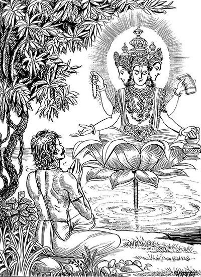
अव्यक्तजन्मा ब्रह्माजीके ये वचन सुनकर रुचिने नदीके एकान्त तटपर पितरोंका तर्पण किया और भक्तिसे मस्तक झुकाकर एकाग्र एवं संयत-चित्त हो वे पितरोंकी उपासना करने लगे। उनकी पूजा-प्रार्थनासे प्रसन्न होकर उनके समक्ष सहसा एक बहुत ऊँचा तेज:पुंज प्रकट हुआ, जो सम्पूर्ण आकाशमें व्याप्त था। समस्त संसारको व्याप्त करके स्थित हुए उस महान् तेजको देखकर रुचिने पृथ्वीपर घुटने टेक दिये और इस स्तोत्रका गान किया—
रुचिरुवाच
अर्चितानाममूर्त्तानां पितॄणां दीप्ततेजसाम्।
नमस्यामि सदा तेषां ध्यानिनां दिव्यचक्षुषाम्॥
इन्द्रादीनां च नेतारो दक्षमारीचयोस्तथा।
सप्तर्षीणां तथान्येषां तान् नमस्यामि कामदान्॥
मन्वादीनां मुनीन्द्राणां सूर्याचन्द्रमसोस्तथा।
तान् नमस्याम्यहं सर्वान् पितॄृनप्सूदधावपि॥
नक्षत्राणां ग्रहाणां च वाय्वग्न्योर्नभसस्तथा।
द्यावापृथिव्योश्च तथा नमस्यामि कृताञ्जलि:॥
देवर्षीणां जनितृृंश्च सर्वलोकनमस्कृतान्।
अक्षय्यस्य सदा दातॄन् नमस्येऽहं कृताञ्जलि:॥
प्रजापते: कश्यपाय सोमाय वरुणाय च।
योगेश्वरेभ्यश्च सदा नमस्यामि कृताञ्जलि:॥
नमो गणेभ्य: सप्तभ्यस्तथा लोकेषु सप्तसु।
स्वयम्भुवे नमस्यामि ब्रह्मणे योगचक्षुषे॥
सोमाधारान् पितृगणान् योगमूर्त्तिधरांस्तथा।
नमस्यामि तथा सोमं पितरं जगतामहम्॥
अग्निरूपांस्तथैवान्यान् नमस्यामि पितॄनहम्।
अग्नीषोममयं विश्वं यत एतदशेषत:॥
ये तु तेजसि ये चैते सोमसूर्याग्निमूर्तय:।
जगत्स्वरूपिणश्चैव तथा ब्रह्मस्वरूपिण:॥
तेभ्योऽखिलेभ्यो योगिभ्य: पितृभ्यो यतमानस:।
नमो नमो नमस्ते मे प्रसीदन्तु स्वधाभुज:॥
रुचि बोले—जो सबके द्वारा पूजित, अमूर्त, अत्यन्त तेजस्वी, ध्यानी तथा दिव्यदृष्टिसम्पन्न हैं, उन पितरोंको मैं सदा नमस्कार करता हूँ। जो इन्द्र आदि देवताओं, दक्ष, मारीच, सप्तर्षियों तथा दूसरोंके भी नेता हैं, कामनाकी पूर्ति करनेवाले उन पितरोंको मैं प्रणाम करता हूँ। जो मनु आदि राजर्षियों, मुनीश्वरों तथा सूर्य और चन्द्रमाके भी नायक हैं, उन समस्त पितरोंको मैं जल और समुद्रमें भी नमस्कार करता हूँ। नक्षत्रों, ग्रहों, वायु, अग्नि, आकाश और द्युलोक तथा पृथ्वीके भी जो नेता हैं, उन पितरोंको मैं हाथ जोड़कर प्रणाम करता हूँ। जो देवर्षियोंके जन्मदाता, समस्त लोकोंद्वारा वन्दित तथा सदा अक्षय फलके दाता हैं, उन पितरोंको मैं हाथ जोड़कर प्रणाम करता हूँ। प्रजापति, कश्यप, सोम, वरुण तथा योगेश्वरोंके रूपमें स्थित पितरोंको सदा हाथ जोड़कर प्रणाम करता हूँ। सातों लोकोंमें स्थित सात पितृगणोंको नमस्कार है। मैं योगदृष्टिसम्पन्न स्वयम्भू ब्रह्माजीको प्रणाम करता हूँ। चन्द्रमाके आधारपर प्रतिष्ठित तथा योगमूर्तिधारी पितृगणोंको मैं प्रणाम करता हूँ। साथ ही सम्पूर्ण जगत् के पिता सोमको नमस्कार करता हूँ तथा अग्निस्वरूप अन्य पितरोंको भी प्रणाम करता हूँ; क्योंकि यह सम्पूर्ण जगत् अग्नि और सोममय है। जो पितर तेजमें स्थित हैं, जो ये चन्द्रमा, सूर्य और अग्निके रूपमें दृष्टिगोचर होते हैं तथा जो जगत्स्वरूप एवं ब्रह्मस्वरूप हैं, उन सम्पूर्ण योगी पितरोंको मैं एकाग्रचित्त होकर प्रणाम करता हूँ। उन्हें बारंबार नमस्कार है। वे स्वधाभोजी पितर मुझपर प्रसन्न हों।
रुचिके इस प्रकार स्तुति करनेपर वे पितर दसों दिशाओंको प्रकाशित करते हुए उस तेजसे बाहर निकले। रुचिने जो फूल, चन्दन और अंगराग आदि समर्पित किये थे, उन सबसे विभूषित होकर वे पितर सामने खड़े दिखायी दिये। तब रुचिने हाथ जोड़कर पुन: भक्तिपूर्वक उन्हें प्रणाम किया और बड़े आदरके साथ सबसे पृथक्-पृथक् कहा—‘आपको नमस्कार है, आपको नमस्कार है।’
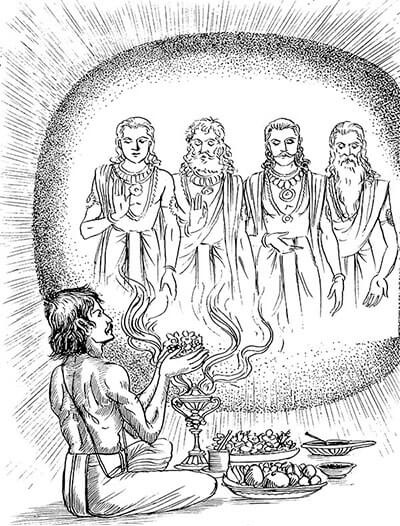
इससे प्रसन्न होकर पितरोंने मुनिश्रेष्ठ रुचिसे कहा—‘वत्स! तुम कोई वर माँगो।’ तब उन्होंने मस्तक झुकाकर कहा—‘पितरो! इस समय ब्रह्माजीने मुझे सृष्टि करनेका आदेश दिया है; इसलिये मैं दिव्य गुणोंसे सम्पन्न उत्तम पत्नी चाहता हूँ, जिससे संतानकी उत्पत्ति हो सके।’
पितरोंने कहा—‘वत्स! यहीं, इसी समय तुम्हें अत्यन्त मनोहर पत्नी प्राप्त होगी और उसके गर्भसे तुम्हें ‘मनु’ संज्ञक उत्तम पुत्रकी प्राप्ति होगी। वह बुद्धिमान् पुत्र मन्वन्तरका स्वामी होगा और तुम्हारे ही नामपर तीनों लोकोंमें ‘रौच्य’ के नामसे उसकी ख्याति होगी। उसके भी महाबलवान् और पराक्रमी बहुत-से महात्मा पुत्र होंगे, जो इस पृथ्वीका पालन करेंगे। धर्मज्ञ! तुम भी प्रजापति होकर चार प्रकारकी प्रजा उत्पन्न करोगे और फिर अपना अधिकार क्षीण होनेपर सिद्धिको प्राप्त होओगे।
वत्स! जो मनुष्य इस स्तोत्रसे भक्तिपूर्वक हमारी स्तुति करेगा, उसके ऊपर सन्तुष्ट होकर हमलोग उसे मनोवांछित भोग तथा उत्तम आत्मज्ञान प्रदान करेंगे। जो नीरोग शरीर, धन और पुत्र-पौत्र आदिकी इच्छा करता हो, वह सदा इस स्तोत्रसे हमलोगोंकी स्तुति करे। यह स्तोत्र हमलोगोंकी प्रसन्नता बढ़ानेवाला है। जो श्राद्धमें भोजन करनेवाले श्रेष्ठ ब्राह्मणोंके सामने खड़ा हो भक्तिपूर्वक इस स्तोत्रका पाठ करेगा, उसके यहाँ स्तोत्रश्रवणके प्रेमसे हम निश्चय ही उपस्थित होंगे और हमारे लिये किया हुआ श्राद्ध भी नि:संदेह अक्षय होगा। श्राद्धमें इस स्तोत्रके पाठसे श्राद्धकर्ता हमारी तृप्ति करनेमें समर्थ होता है। हमें सुख देनेवाला यह स्तोत्र जहाँ श्राद्धमें पढ़ा जाता है, वहाँ हमलोगोंको बारह वर्षोंतक बनी रहनेवाली तृप्ति प्राप्त होती है। यह स्तोत्र हेमन्त-ऋतुमें श्राद्धके अवसरपर सुनानेसे हमें बारह वर्षोंके लिये तृप्ति प्रदान करता है। इसी प्रकार शिशिर-ऋतुमें यह कल्याणमय स्तोत्र हमें चौबीस वर्षोंतक तृप्तिकारक होता है। वसन्त-ऋतुके श्राद्धमें सुनानेपर यह सोलह वर्षोंतक तृप्तिकारक होता है तथा ग्रीष्म-ऋतुमें पढ़े जानेपर भी यह उतने ही वर्षोंतक तृप्तिका साधक होता है। रुचे! वर्षा-ऋतुमें किया हुआ श्राद्ध यदि किसी अंगसे विकल हो तो भी इस स्तोत्रके पाठसे पूर्ण होता है और उस श्राद्धसे हमें अक्षय तृप्ति होती है। शरत्कालमें भी श्राद्धके अवसरपर यदि इसका पाठ हो तो यह हमें पंद्रह वर्षोंतकके लिये तृप्ति प्रदान करता है। जिस घरमें यह स्तोत्र सदा लिखकर रखा जाता है, वहाँ श्राद्ध करनेपर हमारी निश्चय ही उपस्थिति होती है; अत: महाभाग! श्राद्धमें भोजन करनेवाले ब्राह्मणोंके सामने तुम्हें यह स्तोत्र अवश्य सुनाना चाहिये; क्योंकि यह हमारी पुष्टि करनेवाला है।’ इस प्रकारका आशीर्वाद तथा वर प्रदान करके पितर अन्तर्धान हो गये।
तदनन्तर रुचिके समीप उस नदीके भीतरसे प्रम्लोचा नामक एक अप्सरा प्रकट हुई और महात्मा रुचिसे मधुर वाणीमें विनयपूर्वक बोली—‘तपस्वियोंमें श्रेष्ठ रुचि! मेरी एक परम सुन्दरी कन्या है, जो वरुणके पुत्र महात्मा पुष्करसे उत्पन्न हुई है। मैं उस सुन्दरी कन्याको तुम्हें पत्नी बनानेके लिये देती हूँ, ग्रहण करो। उसके गर्भसे तुम्हारे पुत्र महाबुद्धिमान् मनुका जन्म होगा।’ तब रुचिने ‘तथास्तु’ कहकर उसकी बात स्वीकार की। इसके बाद प्रम्लोचाने अपनी कन्या मालिनीको जलके बाहर प्रकट किया।
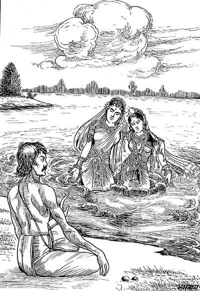
मुनिश्रेष्ठ रुचिने महर्षियोंको बुलाकर नदीके तटपर उसका विधिपूर्वक पाणिग्रहण किया। उसीके गर्भसे महापराक्रमी परम बुद्धिमान् एक धर्मात्मा पुत्रका जन्म हुआ, जो इस भूमण्डलमें पिताके नामपर ‘रौच्य’ मनुके नामसे ही विख्यात हुए। ये ही रौच्य नामक मनु तेरहवें मन्वन्तरके अधिपति हुए। (मार्कण्डेयपुराण)
श्राद्धमें ब्राह्मण-भोजनके समय पाठ किये जानेवाले सूक्त
रक्षोघ्नसूक्त
कृणुष्व पाज: प्रसितिं न पृथ्वीं याहि राजेवामवाँ२ इभेन।
तृष्वीमनु प्रसितिं द्रूणानोऽस्ताऽसि विध्य रक्षसस्तपिष्ठै:॥
तव भ्रमास आशुया पतन्त्यनुस्पृश धृषता शोशुचान:।
तपूॸष्यग्ने जुह्वा पतङ्गानसन्दितो वि सृज विष्वगुल्का:॥
प्रतिस्पशो वि सृज तूर्णितमो भवापायुर्विशो अस्याअदब्ध:।
यो नो दूरे अघशॸसो यो अन्त्यग्ने मा किष्टे व्यथिरा दधर्षीत्॥
उदग्ने तिष्ठ प्रत्या तनुष्व न्यमित्राँ२ ओषतात्तिग्महेते।
यो नो अरातिॸ समिधान चक्रे नीचा तं धक्ष्यतसं न शुष्कम्॥
ऊर्ध्वो भव प्रति विध्याध्यस्मदाविष्कृणुष्व दैव्यान्यग्ने।
अव स्थिरा तनुहि यातुजूनां जामिमजामिं प्र मृणीहि शत्रून्।
अग्नेष्ट्वा तेजसा सादयामि॥
(शु०यजु० १३।९—१३)
पुरुषसूक्त
ॐ सहस्रशीर्षा पुरुष: सहस्राक्ष: सहस्रपात्।
स भूमिÞ सर्वत स्पृत्वाऽत्यतिष्ठद्दशाङ्गुलम्॥
पुरुष एवेदÞ सर्वं यद्भूतं यच्च भाव्यम्।
उतामृतत्वस्येशानो यदन्नेनातिरोहति॥
एतावानस्य महिमातो ज्यायाँश्च पूरुष:।
पादोऽस्य विश्वा भूतानि त्रिपादस्यामृतं दिवि॥
त्रिपादूर्ध्व उदैत्पुरुष: पादोऽस्येहाभवत् पुन:।
ततो विष्वङ् व्यक्रामत्साशनानशने अभि॥
ततो विराडजायत विराजो अधि पूरुष:।
स जातो अत्यरिच्यत पश्चाद्भूमिमथो पुर:॥
तस्माद्यज्ञात् सर्वहुत: सम्भृतं पृषदाज्यम्।
पशूँस्ताँश्चक्रे वायव्यानारण्या ग्राम्याश्च ये॥
तस्माद्यज्ञात् सर्वहुत ऋच: सामानि जज्ञिरे।
छन्दाÞसि जज्ञिरे तस्माद्यजुस्तस्मादजायत॥
तस्मादश्वा अजायन्त ये के चोभयादत:।
गावो ह जज्ञिरे तस्मात्तस्माज्जाता अजावय:॥
तं यज्ञं बर्हिषि प्रौक्षन् पुरुषं जातमग्रत:।
तेन देवा अयजन्त साध्या ऋषयश्च ये॥
यत्पुरुषं व्यदधु: कतिधा व्यकल्पयन्।
मुखं किमस्यासीत् किं बाहू किमूरू पादा उच्येते॥
ब्राह्मणोऽस्य मुखमासीद्बाहू राजन्य: कृत:।
ऊरू तदस्य यद्वैश्य: पद्भ्याÞ शूद्रो अजायत॥
चन्द्रमा मनसो जातश्चक्षो: सूर्यो अजायत।
श्रोत्राद्वायुश्च प्राणश्च मुखादग्निरजायत॥
नाभ्या आसीदन्तरिक्षÞशीर्ष्णो द्यौ: समवर्तत।
पद्भ्यां भूमिर्दिश: श्रोत्रात्तथा लोकाँ२ अकल्पयन्॥
यत्पुरुषेण हविषा देवा यज्ञमतन्वत।
वसन्तोऽस्यासीदाज्यं ग्रीष्म इध्म: शरद्धवि:॥
सप्तास्यासन् परिधयस्त्रि: सप्त समिध: कृता:।
देवा यद्यज्ञं तन्वाना अबध्नन् पुरुषं पशुम्॥
यज्ञेन यज्ञमयजन्त देवास्तानि धर्माणि प्रथमान्यासन्।
ते ह नाकं महिमान: सचन्त यत्र पूर्वे साध्या: सन्ति देवा:॥
(शु०यजु० ३१।१—१६)
पितृसूक्त
उदीरतामवर उत्परास उन्मध्यमा: पितर: सोम्यास:।
असुं य ईयुरवृका ऋतज्ञास्ते नोऽवन्तु पितरो हवेषु॥
अङ्गिरसो न: पितरो नवग्वा अथर्वाणो भृगव: सोम्यास:।
तेषां वयॸसुमतौ यज्ञियानामपि भद्रे सौमनसे स्याम॥
ये न: पूर्वे पितर: सोम्यासोऽनूहिरे सोमपीथं वसिष्ठा:।
तेभिर्यम: सॸरराणो हवीॸष्युशन्नुशद्भि: प्रतिकाममत्तु॥
त्वॸ सोम प्र चिकितो मनीषा त्वॸ रजिष्ठमनु नेषि पन्थाम्।
तव प्रणीती पितरो न इन्दो देवेषु रत्नमभजन्त धीरा:॥
त्वया हि न: पितर: सोम पूर्वेकर्माणि चक्रु: पवमान धीरा:।
वन्वन्नवात: परिधी१ँ रपोर्णु वीरेभिरश्वैर्मघवा भवा न:॥
त्वॸ सोम पितृभि:संविदानोऽनु द्यावापृथिवी आततन्थ।
तस्मै त इन्दो हविषा विधेम वयॸस्याम पतयो रयीणाम्॥
बर्हिषद: पितर ऊत्यर्वागिमा वो हव्या चकृमा जुषध्वम्।
त आ गतावसा शन्तमेनाथा न: शं योररपो दधात॥
आऽहंपितॄन्त्सुविदत्रा२ँ अवित्सि नपातं च विक्रमणं च विष्णो:।
बर्हिषदो ये स्वधया सुतस्य भजन्त पित्वस्त इहागमिष्ठा:॥
उपहूता: पितर: सोम्यासो बर्हिष्येषु निधिषु प्रियेषु।
त आ गमन्तु त इह श्रुवन्त्वधि ब्रुवन्तु तेऽवन्त्वस्मान्॥
आ यन्तु न: पितर:सोम्यासोऽग्निष्वात्ता:पथिभिर्देवयानै:।
अस्मिन् यज्ञे स्वधया मदन्तोऽधि ब्रुवन्तु तेऽवन्त्वस्मान्॥
अग्निष्वात्ता: पितर एह गच्छत सद: सद: सदत सुप्रणीतय:।
अत्ता हवीॸषि प्रयतानि बर्हिष्यथा रयिॸसर्ववीरं दधातन॥
ये अग्निष्वात्ता ये अनग्निष्वात्ता मध्ये दिव: स्वधया मादयन्ते।
तेभ्य: स्वराडसुनीतिमेतां यथावशं तन्वं कल्पयाति॥
अग्निष्वात्तानृतुमतो हवामहे नाराशॸसे सोमपीथं य आशु:।
ते नो विप्रास: सुहवा भवन्तु वयॸस्याम पतयो रयीणाम्॥
(शु०यजु० १९।४९—६१)